start
Figure 1
Figure 1A
## take the proper subset of data
atrc <- fecundity %>%
filter(vial%in%c("35u","30p","4d","11c","28n","2b","71k","1a","75o","3c","70j","15h","16i","13g","Gno","Ax")) %>%
filter(!is.na(fecundity)) %>%
filter(fecundity!="NaN") %>%
droplevels()
## adjust levels to maintain plot order
atrc$vial <- factor(atrc$vial, levels = c("35u","30p","4d","11c","28n","1a","71k","2b","75o","3c","70j","15h","16i","13g","Gno","Ax"))
## build vectors for plot shading
plot_colors <- c("red","red","red","red","red","blue","blue","blue","blue","blue","blue","green","green","purple","magenta","black")
plot_lines <- c("solid","longdash","dotted","dotdash","dashed","solid","longdash","dotted","dotdash","dashed","twodash","solid","longdash","solid","solid","solid")
## make the plot
ggplot(atrc, aes(x = date3, y=fecundity, group = vial, col = vial, fill = vial, linetype = vial)) +
geom_smooth(aes(y = fecundity, linetype = vial), alpha = 0.05, size = .5) +
scale_color_manual(values = plot_colors, name = NULL, labels = c(expression(italic(A.~aceti)),expression(italic(A.~pasteurianus)),expression(italic(A.~pomorum)~DmCS),expression(italic(A.~tropicalis)~DmCS),expression(italic(A.~tropicalis)~NBRC),expression(italic(L.~brevis)~DmCS),expression(italic(L.~brevis)~gravesensis),expression(italic(L.~plantarum)~DmCS),expression(italic(L.~plantarum)~WCFS1),expression(italic(L.~fructivorans)~DmCS),expression(italic(L.~fructivorans)~KCTC),expression(italic(E.~coli)),expression(italic(P.~putida)),expression(italic(B.~subtilis)),'5-species','Axenic')) +
scale_fill_manual(values = plot_colors, name = NULL,labels = c(expression(italic(A.~aceti)),expression(italic(A.~pasteurianus)),expression(italic(A.~pomorum)~DmCS),expression(italic(A.~tropicalis)~DmCS),expression(italic(A.~tropicalis)~NBRC),expression(italic(L.~brevis)~DmCS),expression(italic(L.~brevis)~gravesensis),expression(italic(L.~plantarum)~DmCS),expression(italic(L.~plantarum)~WCFS1),expression(italic(L.~fructivorans)~DmCS),expression(italic(L.~fructivorans)~KCTC),expression(italic(E.~coli)),expression(italic(P.~putida)),expression(italic(B.~subtilis)),'5-species','Axenic')) +
scale_linetype_manual(values = plot_lines,name = NULL,labels = c(expression(italic(A.~aceti)),expression(italic(A.~pasteurianus)),expression(italic(A.~pomorum)~DmCS),expression(italic(A.~tropicalis)~DmCS),expression(italic(A.~tropicalis)~NBRC),expression(italic(L.~brevis)~DmCS),expression(italic(L.~brevis)~gravesensis),expression(italic(L.~plantarum)~DmCS),expression(italic(L.~plantarum)~WCFS1),expression(italic(L.~fructivorans)~DmCS),expression(italic(L.~fructivorans)~KCTC),expression(italic(E.~coli)),expression(italic(P.~putida)),expression(italic(B.~subtilis)),'5-species','Axenic')) +
ylab("female fecundity per day") +
xlab("time (d)") +
guides(fill = guide_legend(ncol = 3, byrow=T), color = guide_legend(ncol = 3, byrow=T), linetype = guide_legend(ncol = 3, byrow=T)) +
theme_cowplot() +
theme(legend.position = "none", legend.text.align = 0,legend.key.width = unit(.5,"in"), legend.text = element_text(size = 18), axis.text = element_text(size = 10),axis.title = element_text(size = 12),legend.justification = "center")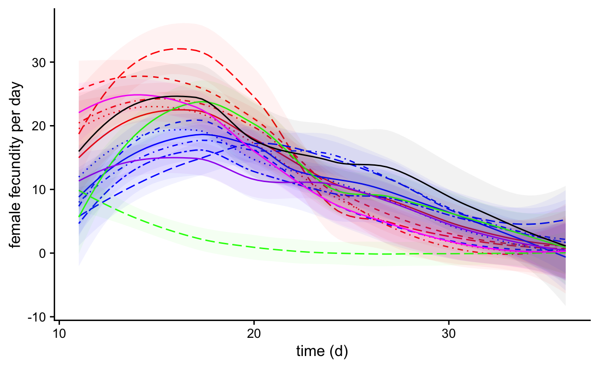
Figure 1B
total_fitness1 <- fitness %>%
filter(!trt%in%c("Gno-17","1a-14","16i-16","16i-19","16i-12","16i-18","35u-18") & !date3 %in% c(35,36)) %>%
group_by(trt,vial) %>%
summarize(mean_fec = sum(fecundity)) %>%
filter(vial %in% p$vec$vec_bac)
total_fitness1$vial <- factor(total_fitness1$vial, levels = c("35u","30p","4d","11c","28n","1a","71k","2b","75o","3c","70j","15h","16i","13g","Gno","Ax"))
total_fitness1$vial <- plyr::revalue(total_fitness1$vial, c("35u" = "aace","30p" = "apan","4d" = "apoc","11c"="atrc", "28n"="atrn","1a" = "lbrc","71k" = "lbga","2b" = "lplc", "75o" = "lplw","3c" = "lfrc","70j" = "lfrk","15h" = "ecok", "16i" = "pput","13g" = "bsub","Ax" = "ax","Gno" = "gno"))
print("N per treatment")## [1] "N per treatment"data.frame(table(total_fitness1$vial)) %>%
full_join(lookup_code, by = c("Var1" = "code1")) %>%
dplyr::select(fullname,Freq)print("KW test")## [1] "KW test"def <- kruskal.test(mean_fec ~ vial, total_fitness1)
efg <- dunn.test(total_fitness1$mean_fec,total_fitness1$vial, method = "bh", table = F)## Kruskal-Wallis rank sum test
##
## data: x and group
## Kruskal-Wallis chi-squared = 44.5668, df = 15, p-value = 0
##
##
## alpha = 0.05
## Reject Ho if p <= alpha/2ghi <- cldList(comparison = efg$comparisons, p.value = efg$P.adjusted, threshold = 0.05) %>% arrange(factor(Group, levels = c("aace", "apan", "apoc","atrc", "atrn", "lbrc", "lbga", "lplc", "lplw", "lfrc", "lfrk", "ecok", "pput", "bsub","Ax","5sp")))
print("BH-corrected multiple comparisons")## [1] "BH-corrected multiple comparisons"ghi %>% inner_join(lookup_code, by = c("Group" = "code1")) %>% select(fullname, Group, Letter)total_fitness2 <- fitness %>%
filter(!trt%in%c("Gno-17","1a-14","16i-16","16i-19","16i-12","16i-18","35u-18") & !date3 %in% c(35,36)) %>%
group_by(trt,vial) %>%
summarize(mean_fec = sum(fecundity)) %>%
ungroup() %>%
group_by(vial) %>%
summarize(mean_fec2 = mean(mean_fec), sem_fec2 = sd(mean_fec)/sqrt(sum(mean_fec>-30))) %>%
ungroup() %>%
filter(vial %in% p$vec$vec_bac) %>%
mutate(vial = as.factor(as.character(vial))) %>%
arrange(factor(vial, levels=c("35u","30p","4d","11c","28n","1a","71k","2b","75o","3c","70j","15h","16i","13g","Gno","Ax")))
total_fitness2$vial <- factor(total_fitness2$vial, levels = c("35u","30p","4d","11c","28n","1a","71k","2b","75o","3c","70j","15h","16i","13g","Gno","Ax"))
total_fitness2$vial <- plyr::revalue(total_fitness2$vial, c("35u" = "aace","30p" = "apan","4d" = "apoc","11c"="atrc", "28n"="atrn","1a" = "lbrc","71k" = "lbga","2b" = "lplc", "75o" = "lplw","3c" = "lfrc","70j" = "lfrk","15h" = "ecok", "16i" = "pput","13g" = "bsub","Ax" = "Ax","Gno" = "5sp"))
plot_colors <- c("red","red","red","red","red","blue","blue","blue","blue","blue","blue","green","green","purple","magenta","black")
plot_lines <- c("solid","longdash","dotted","dotdash","dashed","solid","longdash","dotted","dotdash","dashed","twodash","solid","longdash","solid","solid","solid")
ggplot(total_fitness2, aes(x = vial, y=mean_fec2, ymax = mean_fec2+sem_fec2, ymin = mean_fec2-sem_fec2, line = vial, linetype = vial)) +
geom_col(size=2.5, col=plot_colors, fill = "white", linetype = plot_lines) +
geom_errorbar(width = 0.5, linetype = "solid") +
theme_cowplot() +
annotate(geom="text", x=c(1:length(table(list(total_fitness2$vial)))), y= c(total_fitness2$mean_fec2 + total_fitness2$sem_fec2+3), label = ghi$Letter, color = plot_colors, size=6, parse=T, hjust = 0,fill=NA, label.size=0, angle=90) +
ylab("lifetime fecundity per female") +
xlab("treatment") +
theme(text = element_text(size=12),
axis.text.x = element_text(angle = 90))
Figure 1C
test_ls <- lifespan_analysis %>%
filter(treatment %in% c(p$vec$vec_bac)) %>%
mutate(exp = as.factor(as.character(start_day))) %>%
mutate(treatment = as.factor(as.character(treatment))) %>%
droplevels()
print("N per treatment")## [1] "N per treatment"data.frame(table(test_ls$treatment)) %>%
inner_join(lookup_code, by = c("Var1" = "code2")) %>%
dplyr::select(fullname,Freq)test_ls$treatment <- factor(test_ls$treatment, levels = c("35u","30p","4d","11c","28n","1a","71k","2b","75o","3c","70j","15h","16i","13g","Gno","Ax"))
test_ls$treatment <- plyr::revalue(test_ls$treatment, c("35u" = "aace","30p" = "apan","4d" = "apoc","11c"="atrc", "28n"="atrn","1a" = "lbrc","71k" = "lbga","2b" = "lplc", "75o" = "lplw","3c" = "lfrc","70j" = "lfrk","15h" = "ecok", "16i" = "pput","13g" = "bsub","Ax" = "Ax","Gno" = "5sp"))
test_ls$S<-Surv(test_ls$time,test_ls$event)
## log rank test
print("Log rank test results")## [1] "Log rank test results"survdiff(S ~ treatment, data = test_ls)## Call:
## survdiff(formula = S ~ treatment, data = test_ls)
##
## N Observed Expected (O-E)^2/E (O-E)^2/V
## treatment=aace 146 60 76.5 3.5710 4.0053
## treatment=apan 144 74 71.0 0.1302 0.1453
## treatment=apoc 225 155 90.4 46.1681 52.5404
## treatment=atrc 188 127 90.7 14.5352 16.5873
## treatment=atrn 191 87 101.5 2.0827 2.3856
## treatment=lbrc 148 87 71.5 3.3732 3.7745
## treatment=lbga 224 127 82.6 23.8994 26.9336
## treatment=lplc 122 37 65.6 12.4517 13.8359
## treatment=lplw 176 45 99.0 29.4879 33.6796
## treatment=lfrc 201 120 77.0 23.9760 26.9155
## treatment=lfrk 185 62 96.1 12.0986 13.7897
## treatment=ecok 200 44 119.4 47.6255 55.3515
## treatment=pput 172 146 43.7 239.9282 264.5385
## treatment=bsub 189 38 111.5 48.4679 55.9505
## treatment=5sp 185 93 91.7 0.0174 0.0198
## treatment=Ax 82 31 44.8 4.2315 4.6325
##
## Chisq= 550 on 15 degrees of freedom, p= <2e-16 ## pairwise log rank test results
print("BH-corrected pairwise Log rank test results")## [1] "BH-corrected pairwise Log rank test results"model_all <- pairwise_survdiff(S ~ treatment, data = test_ls, p.adjust.method = "BH")
x <- test_ls$treatment
levs <- levels(x)
y <- Surv(test_ls$time, test_ls$event)
lvl_order <- levels(x)[order(tapply(as.numeric(y)[1:length(x)],
x, mean))]
comps <- as_tibble(model_all$p.value, rownames="row") %>%
pivot_longer(-row, names_to="col", values_to="p") %>%
na.omit()
comps %>% inner_join(lookup_code, by = c("row" = "code1")) %>% inner_join(lookup_code, by = c("col" = "code1")) %>% select(Comp1 = fullname.x, Comp2 = fullname.y, p) ## clds
print("Compact letter displays")## [1] "Compact letter displays"mycomps <- as.matrix(comps[,1:2])
signif <- comps$p < .05
clds <- multcomp:::insert_absorb(signif,
decreasing=FALSE,
comps=mycomps,
lvl_order=lvl_order)
print(clds)## pput lbga apoc lfrc atrc lbrc apan 5sp atrn lfrk aace Ax lplc
## "a" "bc" "b" "bc" "c" "cd" "de" "de" "ef" "fg" "efh" "eg" "ghi"
## lplw ecok bsub
## "gj" "ij" "j"name_val <- c(clds$Letters[names(clds$Letters) == c("aace")],
clds$Letters[names(clds$Letters) == c("apan")],
clds$Letters[names(clds$Letters) == c("apoc")],
clds$Letters[names(clds$Letters) == c("atrc")],
clds$Letters[names(clds$Letters) == c("atrn")],
clds$Letters[names(clds$Letters) == c("lbrc")],
clds$Letters[names(clds$Letters) == c("lbga")],
clds$Letters[names(clds$Letters) == c("lplc")],
clds$Letters[names(clds$Letters) == c("lplw")],
clds$Letters[names(clds$Letters) == c("lfrc")],
clds$Letters[names(clds$Letters) == c("lfrk")],
clds$Letters[names(clds$Letters) == c("ecok")],
clds$Letters[names(clds$Letters) == c("pput")],
clds$Letters[names(clds$Letters) == c("bsub")],
clds$Letters[names(clds$Letters) == c("5sp")],
clds$Letters[names(clds$Letters) == c("Ax")]
)
## coloring
plot_colors <- c("red","blue","blue","blue","red","black","magenta")
plot_lines <- c("solid","solid","dashed","dotted","dashed","solid","solid")
plot_colors <- c("red","red","red","red","red","blue","blue","blue","blue","blue","blue","green","green","purple","magenta","black")
plot_lines <- c("solid","longdash","dotted","dotdash","dashed","solid","longdash","dotted","dotdash","dashed","twodash","solid","longdash","solid","solid","solid")
annot_val <- test_ls %>% group_by(treatment, event) %>% summarize(total = dplyr::n()) %>% reshape2::dcast(formula = treatment ~ event, value.var = "total") %>% mutate(percent = 1-(`1`/(`0`+`1`))) %>% dplyr::select(percent) %>% unlist() %>% unname()
annot_name <- test_ls %>% group_by(treatment, event) %>% summarize(total = dplyr::n()) %>% reshape2::dcast(formula = treatment ~ event, value.var = "total") %>% mutate(percent = 1-(`1`/(`0`+`1`))) %>% dplyr::select(treatment) %>% unlist() %>% unname()
## revalue so the CLDs match up with the ends of the bars
annot_val[14] <- .82 # bsub
annot_val[2] <- .51 # apan
annot_val[15] <- .47 # 5sp
annot_val[7] <- .37 # lbga
annot_val[8] <- .706 # lplc
annot_val[6] <- .435 # lbrc
annot_val[10] <- .405 # lfrc
annot_val[3] <- .28 # atrc
annot_val[13] <- .06
annot_val[13] <- .06
annot_val[11] <- .66 ## lfrk
annot_val[16] <- .62
plot(survfit(S ~ treatment, test_ls), xlim = c(10,41), col=plot_colors, lty=plot_lines, lwd=1.75, xlab= "time(d)", ylab="fractional survival", cex.lab=1, cex.axis=1.1, bty = "n")
for(i in 1:length(table(list(test_ls$treatment)))) {
legend(x = 36, y = annot_val[i], legend = name_val[i], text.col = plot_colors[i], bty = "n", xjust = 0, yjust = .5, cex=1)#
}
## take the proper subset of data
atrc <- fecundity %>%
filter(vial%in%c("35u","30p","4d","11c","28n","2b","71k","1a","75o","3c","70j","15h","16i","13g","Gno","Ax")) %>%
filter(!is.na(fecundity)) %>%
filter(fecundity!="NaN") %>%
droplevels()
## adjust levels to maintain plot order
atrc$vial <- factor(atrc$vial, levels = c("35u","30p","4d","11c","28n","1a","71k","2b","75o","3c","70j","15h","16i","13g","Gno","Ax"))
## build vectors for plot shading
plot_colors <- c("red","red","red","red","red","blue","blue","blue","blue","blue","blue","green","green","purple","magenta","black")
plot_lines <- c("solid","longdash","dotted","dotdash","dashed","solid","longdash","dotted","dotdash","dashed","twodash","solid","longdash","solid","solid","solid")
plot(g_legend(ggplot(atrc, aes(x = date3, y=fecundity, group = vial, col = vial, fill = vial, linetype = vial)) +
geom_smooth(aes(y = fecundity, linetype = vial), alpha = 0.07) +
scale_color_manual(values = plot_colors, name = NULL, labels = c(expression(italic(A.~aceti)),expression(italic(A.~pasteurianus)),expression(italic(A.~pomorum)~DmCS),expression(italic(A.~tropicalis)~DmCS),expression(italic(A.~tropicalis)~NBRC),expression(italic(L.~brevis)~DmCS),expression(italic(L.~brevis)~gravesensis),expression(italic(L.~plantarum)~DmCS),expression(italic(L.~plantarum)~WCFS1),expression(italic(L.~fructivorans)~DmCS),expression(italic(L.~fructivorans)~KCTC),expression(italic(E.~coli)),expression(italic(P.~putida)),expression(italic(B.~subtilis)),'5-species','Axenic')) +
scale_fill_manual(values = plot_colors, name = NULL,labels = c(expression(italic(A.~aceti)),expression(italic(A.~pasteurianus)),expression(italic(A.~pomorum)~DmCS),expression(italic(A.~tropicalis)~DmCS),expression(italic(A.~tropicalis)~NBRC),expression(italic(L.~brevis)~DmCS),expression(italic(L.~brevis)~gravesensis),expression(italic(L.~plantarum)~DmCS),expression(italic(L.~plantarum)~WCFS1),expression(italic(L.~fructivorans)~DmCS),expression(italic(L.~fructivorans)~KCTC),expression(italic(E.~coli)),expression(italic(P.~putida)),expression(italic(B.~subtilis)),'5-species','Axenic')) +
scale_linetype_manual(values = plot_lines,name = NULL,labels = c(expression(italic(A.~aceti)),expression(italic(A.~pasteurianus)),expression(italic(A.~pomorum)~DmCS),expression(italic(A.~tropicalis)~DmCS),expression(italic(A.~tropicalis)~NBRC),expression(italic(L.~brevis)~DmCS),expression(italic(L.~brevis)~gravesensis),expression(italic(L.~plantarum)~DmCS),expression(italic(L.~plantarum)~WCFS1),expression(italic(L.~fructivorans)~DmCS),expression(italic(L.~fructivorans)~KCTC),expression(italic(E.~coli)),expression(italic(P.~putida)),expression(italic(B.~subtilis)),'5-species','Axenic')) +
# coord_cartesian(ylim = c(0,0.75)) +
ylab("female fecundity per day") +
xlab("days") +
guides(fill = guide_legend(ncol = 1, byrow=T), color = guide_legend(ncol = 1, byrow=T), linetype = guide_legend(ncol = 1, byrow=T)) +
theme_cowplot() +
theme(legend.position = "right", legend.text.align = 0, legend.text = element_text(size = 10), axis.text = element_text(size = 12),axis.title = element_text(size = 14),legend.justification = "left", legend.key.width = unit(x = .4, units = "in"),legend.background = element_rect(fill = "white"), strip.background = element_rect(fill = "white"))
)
)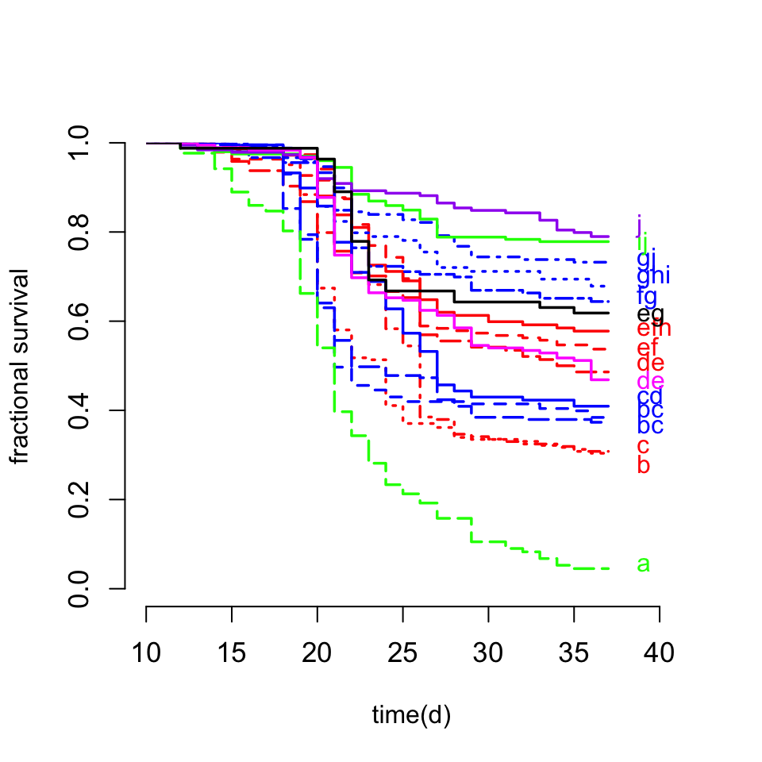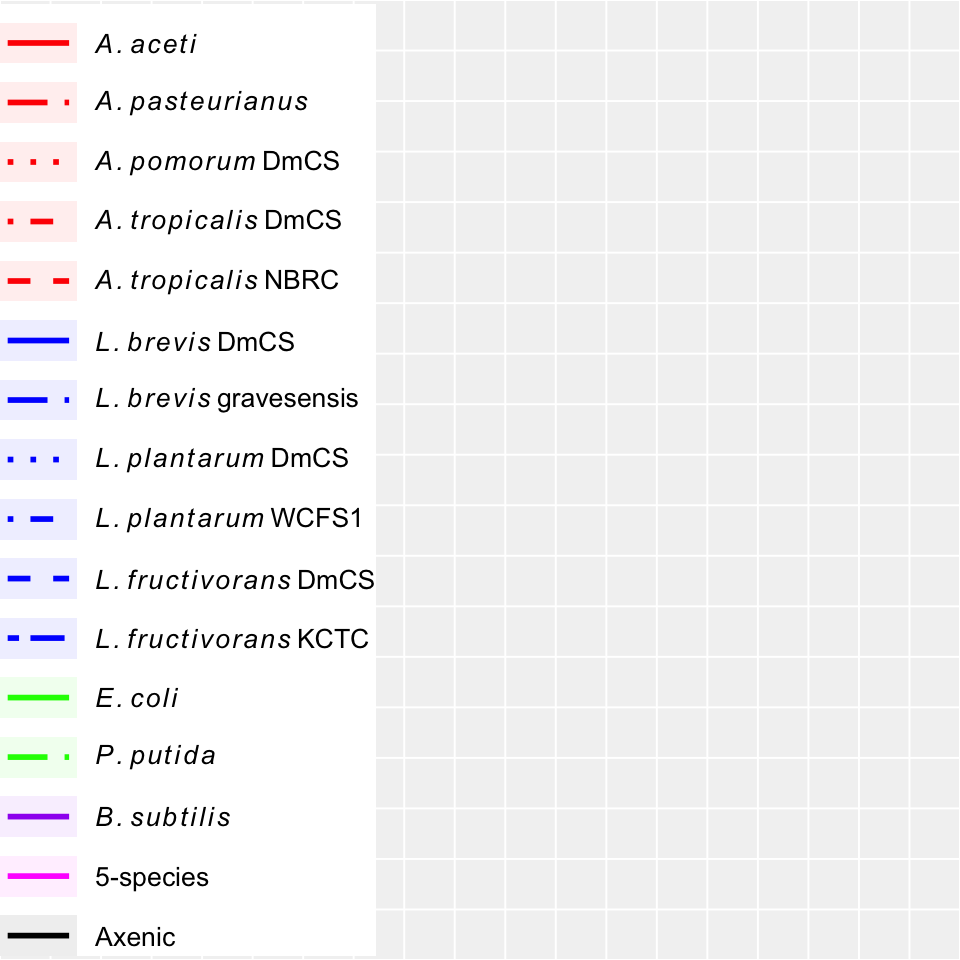
Figure 1D
## this code is derived from loops used for supplemental figures, so in some cases it looks like it has more variables than it needs
#print 1 plot with the same survival in each line. each line is the age class that was permuted for survival
q = 1
xgroup = unlist(p$group[q])
subset_vec = unlist(unname(p$vec[q]))
rangevals <- c(1)
m <- rangevals
n = 1
eigens <- data.frame(vial = factor(), trt = character(), exp = factor(), fitness = numeric(), mod_death = numeric())
eigenvalue_df <- data.frame(vial = character(), trt = character(), exp = factor(), fitness = numeric())
mod = n
age_class = m
subfitness <- fitness %>% filter(vial %in% subset_vec)
for(i in names(table(list(subfitness$trt)))) {
submat <- fitness %>%
filter(trt==i) %>%
filter(date3 == min(date3)) %>%
mutate(date3 = 0) %>%
mutate(fecundity = 0) %>%
rbind(fitness %>%
filter(trt==i) %>%
arrange(date3)
) %>%
rbind(fitness %>%
filter(trt == i) %>%
filter(date3 == max(date3)) %>%
mutate(date3 = max(date3)+1) %>%
mutate(fecundity = 0)
)
submat$s = 1
submat$f = 0
for (j in 1:(dim(submat)[1]-1)) {
submat$s[j] <- (submat$cum_female[j+1] / submat$cum_female[j])
submat$f[j] <- submat$fecundity[j] #* submat$s[j]
}
leslie_mat <- matrix(data = c(unlist(submat$f[1:dim(submat)[1]])), nrow= 1)
if (age_class>1) {
for (k in 1:(age_class-1)) {
leslie_mat <- rbind(leslie_mat,
matrix(c(rep(0,k-1),submat$s[k],rep(0,(dim(submat)[1]-k))), nrow=1)
)
}
}
for (k in age_class:min(age_class,(dim(submat)[1]-1))) {
leslie_mat <- rbind(leslie_mat,
matrix(c(rep(0,k-1),submat$s[k]*mod,rep(0,(dim(submat)[1]-k))), nrow=1)
)
}
if(age_class < (dim(submat)[1]-1)) {
for(k in (age_class+1):(dim(submat)[1]-1)) {
leslie_mat <- rbind(leslie_mat,
matrix(c(rep(0,k-1),submat$s[k],rep(0,(dim(submat)[1]-k))), nrow=1)
)
}
}
eigenvalue_df <- eigenvalue_df %>% rbind(data.frame(vial = as.character(i), trt = as.character(submat$vial[1]), exp = as.factor(as.character(submat$date2[1])), fitness = as.numeric(eigen(leslie_mat)$values[1])))
}
eigens <- eigens %>% rbind(eigenvalue_df %>% mutate(fitness = log(fitness)) %>% mutate(mod_death = (m)))
e3 <- eigens
eigens <- eigens %>% filter(trt%in%subset_vec) %>% droplevels()
eigens$trt <- factor(eigens$trt, levels = subset_vec)
efg <- dunn.test(eigens$fitness,eigens$trt, method = "bh", table = F)## Kruskal-Wallis rank sum test
##
## data: x and group
## Kruskal-Wallis chi-squared = 68.3693, df = 15, p-value = 0
##
##
## alpha = 0.05
## Reject Ho if p <= alpha/2ghi <- cldList(comparison = efg$comparisons, p.value = efg$P.adjusted, threshold = 0.05, print.comp = F) %>%
arrange(factor(Group, levels = c("35u","3p","4d","11c","28n","1a","71k","2b","75o","3c","7j","15h","16i","13g","Gno","Ax")))
eigens2 <- eigens %>% group_by(trt, mod_death) %>% summarize(meanfit = mean(fitness), sem = sd(fitness)/sqrt(sum(fitness>-1000))) %>% ungroup()
eigens2$trt <- factor(eigens2$trt, levels = c("35u","30p","4d","11c","28n","1a","71k","2b","75o","3c","70j","15h","16i","13g","Gno","Ax"))
eigens2 <- eigens2 %>% arrange(factor(trt, levels = c("35u","30p","4d","11c","28n","1a","71k","2b","75o","3c","70j","15h","16i","13g","Gno","Ax")))
eigens2$trt <- plyr::revalue(eigens2$trt, c("35u" = "aace","30p" = "apan","4d" = "apoc","11c"="atrc", "28n"="atrn","1a" = "lbrc","71k" = "lbga","2b" = "lplc", "75o" = "lplw","3c" = "lfrc","70j" = "lfrk","15h" = "ecok", "16i" = "pput","13g" = "bsub","Ax" = "Ax","Gno" = "5sp"))
plot_colors <- c("red","red","red","red","red","blue","blue","blue","blue","blue","blue","green","green","purple","magenta","black")
plot_lines <- c("solid","longdash","dotted","dotdash","dashed","solid","longdash","dotted","dotdash","dashed","twodash","solid","longdash","solid","solid","solid")
ggplot(eigens2, aes(x = trt, y=meanfit, ymax = meanfit+sem, ymin = meanfit-sem, col = trt, fill = trt)) +
geom_col(size=2.5, col=plot_colors, fill = "white", linetype = plot_lines) +
geom_errorbar(width = 0.5, linetype = "solid") +
theme_cowplot() +
annotate(geom="text", x=c(1:length(table(list(eigens2$trt)))), y= c(eigens2$meanfit + eigens2$sem+median(eigens2$sem)), label = ghi$Letter, color = plot_colors, size=6, parse=T, hjust = 0, angle=90) +
ylab("mean log fitness") +
xlab("treatment") +
coord_cartesian(ylim = c(0,2.7)) +
theme_cowplot() +
theme(axis.text.x = element_text(angle = 90),
legend.position = "none",
text = element_text(size = 12)
)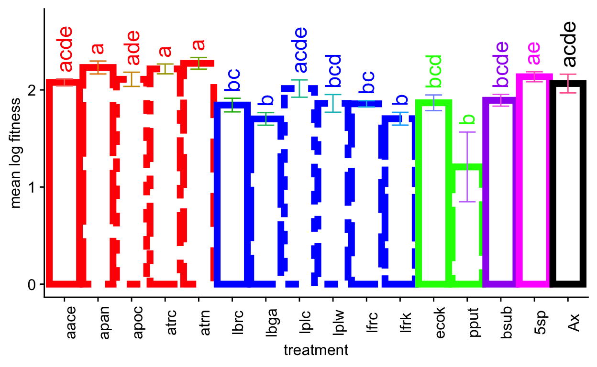
Run Figure 1D statistics
q = 1
xgroup = unlist(p$group[q])
subset_vec = unlist(unname(p$vec[q]))
rangevals <- c(1)
m <- rangevals
n = 1
eigens <- data.frame(vial = factor(), trt = character(), exp = factor(), fitness = numeric(), mod_death = numeric())
eigenvalue_df <- data.frame(vial = character(), trt = character(), exp = factor(), fitness = numeric())
mod = n
age_class = m
subfitness <- fitness %>% filter(vial %in% subset_vec)
for(i in names(table(list(subfitness$trt)))) {
submat <- fitness %>%
filter(trt==i) %>%
filter(date3 == min(date3)) %>%
mutate(date3 = 0) %>%
mutate(fecundity = 0) %>%
rbind(fitness %>%
filter(trt==i) %>%
arrange(date3)
) %>%
rbind(fitness %>%
filter(trt == i) %>%
filter(date3 == max(date3)) %>%
mutate(date3 = max(date3)+1) %>%
mutate(fecundity = 0)
)
submat$s = 1
submat$f = 0
for (j in 1:(dim(submat)[1]-1)) {
submat$s[j] <- (submat$cum_female[j+1] / submat$cum_female[j])
submat$f[j] <- submat$fecundity[j] #* submat$s[j]
}
leslie_mat <- matrix(data = c(unlist(submat$f[1:dim(submat)[1]])), nrow= 1)
if (age_class>1) {
for (k in 1:(age_class-1)) {
leslie_mat <- rbind(leslie_mat,
matrix(c(rep(0,k-1),submat$s[k],rep(0,(dim(submat)[1]-k))), nrow=1)
)
}
}
for (k in age_class:min(age_class,(dim(submat)[1]-1))) {
leslie_mat <- rbind(leslie_mat,
matrix(c(rep(0,k-1),submat$s[k]*mod,rep(0,(dim(submat)[1]-k))), nrow=1)
)
}
if(age_class < (dim(submat)[1]-1)) {
for(k in (age_class+1):(dim(submat)[1]-1)) {
leslie_mat <- rbind(leslie_mat,
matrix(c(rep(0,k-1),submat$s[k],rep(0,(dim(submat)[1]-k))), nrow=1)
)
}
}
eigenvalue_df <- eigenvalue_df %>% rbind(data.frame(vial = as.character(i), trt = as.character(submat$vial[1]), exp = as.factor(as.character(submat$date2[1])), fitness = as.numeric(eigen(leslie_mat)$values[1])))
}
eigens <- eigens %>% rbind(eigenvalue_df %>% mutate(fitness = log(fitness)) %>% mutate(mod_death = (m)))
e3 <- eigens
eigens <- eigens %>% filter(trt%in%subset_vec) %>% droplevels()
eigens$trt <- factor(eigens$trt, levels = subset_vec)
efg <- dunn.test(eigens$fitness,eigens$trt, method = "bh", table = F)## Kruskal-Wallis rank sum test
##
## data: x and group
## Kruskal-Wallis chi-squared = 68.3693, df = 15, p-value = 0
##
##
## alpha = 0.05
## Reject Ho if p <= alpha/2cldList(comparison = efg$comparisons, p.value = efg$P.adjusted, threshold = 0.05, print.comp = F) %>%
arrange(factor(Group, levels = c("35u","3p","4d","11c","28n","1a","71k","2b","75o","3c","7j","15h","16i","13g","Gno","Ax"))) %>%
inner_join(lookup_code, by = c("Group" = "code3")) %>% select(fullname, code1, Letter)## fullname code1 Letter
## 1 Acetobacter aceti NBRC 14818 aace acde
## 2 Acetobacter pasteurianus NBRC 101655 apan a
## 3 Acetobacter pomorum DmCS_004 apoc ade
## 4 Acetobacter tropicalis DmCS_006 atrc a
## 5 Acetobacter tropicalis NBRC 101654 atrn a
## 6 Lactobacillus brevis DmCS_003 lbrc bc
## 7 Lactobacillus brevis subsp. gravesensis ATCC 27305 lbga b
## 8 Lactiplantibacillus plantarum DmCS_001 lplc acde
## 9 Lactobacillus plantarum WCFS1 lplw bcd
## 10 Lactobacillus fructivorans DmCS_002 lfrc bc
## 11 Lactobacillus fructivorans KCTC 3543 lfrk b
## 12 Escherichia coli str. K-12 substr. MG1655 ecok bcd
## 13 Pseudomonas putida F1 pput b
## 14 Bacillus subtilis subsp. subtilis str.168 bsub bcde
## 15 5-species mix gno ae
## 16 Axenic ax acdeFigure 1 legend
## take the proper subset of data
atrc <- fecundity %>%
filter(vial%in%c("35u","30p","4d","11c","28n","2b","71k","1a","75o","3c","70j","15h","16i","13g","Gno","Ax")) %>%
filter(!is.na(fecundity)) %>%
filter(fecundity!="NaN") %>%
droplevels()
## adjust levels to maintain plot order
atrc$vial <- factor(atrc$vial, levels = c("35u","30p","4d","11c","28n","1a","71k","2b","75o","3c","70j","15h","16i","13g","Gno","Ax"))
## build vectors for plot shading
plot_colors <- c("red","red","red","red","red","blue","blue","blue","blue","blue","blue","green","green","purple","magenta","black")
plot_lines <- c("solid","longdash","dotted","dotdash","dashed","solid","longdash","dotted","dotdash","dashed","twodash","solid","longdash","solid","solid","solid")
plot(g_legend(ggplot(atrc, aes(x = date3, y=fecundity, group = vial, col = vial, fill = vial, linetype = vial)) +
geom_smooth(aes(y = fecundity, linetype = vial), alpha = 0.07) +
scale_color_manual(values = plot_colors, name = NULL, labels = c(expression(italic(A.~aceti)),expression(italic(A.~pasteurianus)),expression(italic(A.~pomorum)~DmCS),expression(italic(A.~tropicalis)~DmCS),expression(italic(A.~tropicalis)~NBRC),expression(italic(L.~brevis)~DmCS),expression(italic(L.~brevis)~gravesensis),expression(italic(L.~plantarum)~DmCS),expression(italic(L.~plantarum)~WCFS1),expression(italic(L.~fructivorans)~DmCS),expression(italic(L.~fructivorans)~KCTC),expression(italic(E.~coli)),expression(italic(P.~putida)),expression(italic(B.~subtilis)),'5-species','Axenic')) +
scale_fill_manual(values = plot_colors, name = NULL,labels = c(expression(italic(A.~aceti)),expression(italic(A.~pasteurianus)),expression(italic(A.~pomorum)~DmCS),expression(italic(A.~tropicalis)~DmCS),expression(italic(A.~tropicalis)~NBRC),expression(italic(L.~brevis)~DmCS),expression(italic(L.~brevis)~gravesensis),expression(italic(L.~plantarum)~DmCS),expression(italic(L.~plantarum)~WCFS1),expression(italic(L.~fructivorans)~DmCS),expression(italic(L.~fructivorans)~KCTC),expression(italic(E.~coli)),expression(italic(P.~putida)),expression(italic(B.~subtilis)),'5-species','Axenic')) +
scale_linetype_manual(values = plot_lines,name = NULL,labels = c(expression(italic(A.~aceti)),expression(italic(A.~pasteurianus)),expression(italic(A.~pomorum)~DmCS),expression(italic(A.~tropicalis)~DmCS),expression(italic(A.~tropicalis)~NBRC),expression(italic(L.~brevis)~DmCS),expression(italic(L.~brevis)~gravesensis),expression(italic(L.~plantarum)~DmCS),expression(italic(L.~plantarum)~WCFS1),expression(italic(L.~fructivorans)~DmCS),expression(italic(L.~fructivorans)~KCTC),expression(italic(E.~coli)),expression(italic(P.~putida)),expression(italic(B.~subtilis)),'5-species','Axenic')) +
# coord_cartesian(ylim = c(0,0.75)) +
ylab("female fecundity per day") +
xlab("days") +
guides(fill = guide_legend(ncol = 1, byrow=T), color = guide_legend(ncol = 1, byrow=T), linetype = guide_legend(ncol = 1, byrow=T)) +
theme_cowplot() +
theme(legend.position = "right", legend.text.align = 0, legend.text = element_text(size = 10), axis.text = element_text(size = 12),axis.title = element_text(size = 14),legend.justification = "left", legend.key.width = unit(x = .4, units = "in"),legend.background = element_rect(fill = "white"), strip.background = element_rect(fill = "white"))
)
)
Figure 2
Figure 2AC
p <- list(vec = list(vec_bac = c("28n","30p","11c","Gno","4d","35u","Ax","2b","13g","15h","75o","3c","1a","70j","71k"),
vec_atmut = c("SDR","PVEC","GDH","GNDH"),
vec_ecmut = c("7636","10862")
),
group = list("group_bac","group_atmut","group_ecmut")
)
q = 1
xgroup = unlist(p$group[q])
subset_vec = unlist(unname(p$vec[q]))
eigens <- data.frame(vial = factor(), trt = character(), exp = factor(), fitness = numeric(), mod_death = numeric(), permuted_val = character())
rangevals <- c(1, 0.00001)
for (n in list(c(1,1))) {
for (m in rangevals) {
eigenvalue_df <- data.frame(vial = character(), trt = character(), exp = factor(), fitness = numeric())
distance = n
mod = m
subfitness <- fitness %>% filter(vial %in% subset_vec)
i = "11c-11"
for(i in names(table(list(subfitness$trt)))) {
## collect the relevant data for each Leslie matrix
submat <-
# make first row
fitness %>% filter(trt==i) %>% filter(date3 == min(date3)) %>% mutate(date3 = 0) %>% mutate(fecundity = 0) %>%
# the main matrix
rbind(fitness %>% filter(trt==i) %>% arrange(date3)) %>%
# make last row
rbind(fitness %>% filter(trt == i) %>% filter(date3 == max(date3)) %>% mutate(date3 = max(date3)+1) %>% mutate(fecundity = 0))
## set the s and f coloumns to default values
submat$s = 1
submat$f = 0
## calculate s and f
for (j in 1:(dim(submat)[1]-1)) {
submat$s[j] <- (submat$cum_female[j+1] / submat$cum_female[j])
submat$f[j] <- submat$fecundity[j] #* submat$s[j]
}
## begin the leslie matrix
leslie_mat <- matrix(data = c(unlist(submat$f[1:dim(submat)[1]])), nrow= 1)
## build in the first unmodified cells
if (n[1]>1) {
for (k in 1:(n[1]-1)) {
leslie_mat <- rbind(leslie_mat,
matrix(c(rep(0,k-1),submat$s[k],rep(0,(dim(submat)[1]-k))), nrow=1)
)
}
}
## build in cells that get modified by variable 'mod' from 'rangevals'
for (k in n[1]:min(n[2],(dim(submat)[1]-1))) {
leslie_mat <- rbind(leslie_mat,
matrix(c(rep(0,k-1),submat$s[k]*mod,rep(0,(dim(submat)[1]-k))), nrow=1)
)
}
## build in the unmodified cells that occur linearly after the modified ones
if(n[2] < (dim(submat)[1]-1)) {
for(k in (n[2]+1):(dim(submat)[1]-1)) {
leslie_mat <- rbind(leslie_mat,
matrix(c(rep(0,k-1),submat$s[k],rep(0,(dim(submat)[1]-k))), nrow=1)
)
}
}
## the matrix
leslie_mat
## calculate the first eigenvalue in the eigenvector of the Leslie matrix
eigenvalue_df <- eigenvalue_df %>% rbind(data.frame(vial = as.character(i), trt = as.character(submat$vial[1]), exp = as.factor(as.character(submat$date2[1])), fitness = as.numeric(eigen(leslie_mat)$values[1])))
}
## add that row with the eigenvalue to a growing data frame
eigens <- eigens %>% rbind(eigenvalue_df %>% mutate(mod_death = (m), permuted_val = paste0(n[1],"_",n[2])))
}
}
for(k in names(table(list(eigens$mod_death)))) {
## get rid of unnecessary rows
eigensA <- eigens %>% filter(trt%in%subset_vec) %>% filter(permuted_val == "1_1") %>%droplevels()
## convert trt to a factor
eigensA$trt <- factor(eigensA$trt, levels = subset_vec)
eigens2a <- eigensA %>% filter(mod_death == 1) %>% dplyr::rename(unpermuted_fitness = fitness) %>% droplevels()
eigens2b <- eigensA %>% filter(mod_death == k) %>% dplyr::rename(permuted_fitness = fitness) %>% droplevels()
eigens3 <- eigens2a %>% inner_join(eigens2b, by="vial")
cortest <- cor.test(eigens3$unpermuted_fitness, eigens3$permuted_fitness, method = "spearman", exact=F)
print(paste0("Correlation test between observed fitness and when fitness is calculated from ",1/as.numeric(as.character(k)),"-fold reduction in fly survival values. N = ",dim(eigens3 %>% filter(unpermuted_fitness > 0 & permuted_fitness>0))[1]))
print(cortest)
colors <- data.frame(table(list(eigens3$trt.x))) %>% mutate(col = as.factor(c("red","red","red","black","purple","red","red","green",rep("blue",4),"cyan",rep("blue",2))))
eigens4 <- eigens3 %>% inner_join(colors, by=c("trt.x"="Var1"))
plotp = round(cortest$p.value,4)
plotrho = round(cortest$estimate,4)
plotlabel = paste0("p = ",plotp,"; rho = ",plotrho)
plot_colors <- eigens4$col
print(ggplot(eigens4, aes(unpermuted_fitness, permuted_fitness, color = col, fill=col)) +
geom_point() +
scale_color_manual(values = c("black","blue","magenta","cyan","purple","red1"), name = NULL, labels = c("Axenic","LAB","B. subtilis","Gamma","5-sp","AAB")) +
scale_fill_manual(values = c("black","blue","magenta","cyan","purple","red1"), name = NULL, labels = c("Axenic","LAB","B. subtilis","Gamma","5-sp","AAB")) +
theme_cowplot() +
theme(legend.position = "bottom") +
xlab(paste0("observed fitness"))+
ylab(paste0("survival-permuted fitness"))+
annotate(geom="label", x= min(eigens4$unpermuted_fitness), y = min(eigens4$permuted_fitness), label = deparse(plotlabel),size=6, parse=T, hjust = 0, fill = NA,label.size=0) +
stat_smooth(method = "lm", aes(unpermuted_fitness, permuted_fitness), inherit.aes = F)
)
}## [1] "Correlation test between observed fitness and when fitness is calculated from 1e+05-fold reduction in fly survival values. N = 120"
##
## Spearman's rank correlation rho
##
## data: eigens3$unpermuted_fitness and eigens3$permuted_fitness
## S = 382670, p-value = 0.0002457
## alternative hypothesis: true rho is not equal to 0
## sample estimates:
## rho
## -0.3288076
## [1] "Correlation test between observed fitness and when fitness is calculated from 1-fold reduction in fly survival values. N = 120"
##
## Spearman's rank correlation rho
##
## data: eigens3$unpermuted_fitness and eigens3$permuted_fitness
## S = 6.3944e-11, p-value < 2.2e-16
## alternative hypothesis: true rho is not equal to 0
## sample estimates:
## rho
## 1Figure 2BD
p <- list(vec = list(vec_bac = c("28n","30p","11c","Gno","4d","35u","Ax","2b","13g","15h","75o","3c","1a","70j","71k"),
vec_atmut = c("SDR","PVEC","GDH","GNDH"),
vec_ecmut = c("7636","10862")
),
group = list("group_bac","group_atmut","group_ecmut")
)
q = 1
xgroup = unlist(p$group[q])
subset_vec = unlist(unname(p$vec[q]))
eigens <- data.frame(vial = factor(), trt = character(), exp = factor(), fitness = numeric(), mod_death = numeric(), permuted_val = character())
rangevals <- c(1,0.00001)
for (n in list(c(1,1))) {
for (m in rangevals) {
eigenvalue_df <- data.frame(vial = character(), trt = character(), exp = factor(), fitness = numeric())
distance = n
mod = m
subfitness <- fitness %>% filter(vial %in% subset_vec)
for(i in names(table(list(subfitness$trt)))) {
## collect the relevant data for each Leslie matrix
submat <-
# make first row
fitness %>% filter(trt==i) %>% filter(date3 == min(date3)) %>% mutate(date3 = 0) %>% mutate(fecundity = 0) %>%
# the main matrix
rbind(fitness %>% filter(trt==i) %>% arrange(date3)) %>%
# make last row
rbind(fitness %>% filter(trt == i) %>% filter(date3 == max(date3)) %>% mutate(date3 = max(date3)+1) %>% mutate(fecundity = 0))
## set the s and f coloumns to default values
submat$s = 1
submat$f = 0
## calculate s and f
for (j in 1:(dim(submat)[1]-1)) {
submat$s[j] <- (submat$cum_female[j+1] / submat$cum_female[j])
submat$f[j] <- submat$fecundity[j] #* submat$s[j]
}
## begin the leslie matrix
leslie_mat <- matrix(data = c(unlist(submat$f[1:dim(submat)[1]])), nrow= 1)
leslie_mat[(n[1]+1):(n[2]+1)] <- (leslie_mat[(n[1]+1):(n[2]+1)] * mod)
## build in the diagonal
for (k in 1:(dim(submat)[1]-1)) {
leslie_mat <- rbind(leslie_mat,
matrix(c(rep(0,k-1),submat$s[k],rep(0,(dim(submat)[1]-k))), nrow=1)
)
}
## the matrix
## calculate the first eigenvalue in the eigenvector of the Leslie matrix
eigenvalue_df <- eigenvalue_df %>% rbind(data.frame(vial = as.character(i), trt = as.character(submat$vial[1]), exp = as.factor(as.character(submat$date2[1])), fitness = as.numeric(eigen(leslie_mat)$values[1])))
}
## add that row with the eigenvalue to a growing data frame
eigens <- eigens %>% rbind(eigenvalue_df %>% mutate(mod_death = (m), permuted_val = paste0(n[1],"_",n[2])))
}
}
for(k in names(table(list(eigens$mod_death)))) {
## get rid of unnecessary rows
eigensA <- eigens %>% filter(trt%in%subset_vec) %>% filter(permuted_val == "1_1") %>%droplevels()
## convert trt to a factor
eigensA$trt <- factor(eigensA$trt, levels = subset_vec)
eigens2a <- eigensA %>% filter(mod_death == 1) %>% rename(unpermuted_fitness = fitness) %>% droplevels()
eigens2b <- eigensA %>% filter(mod_death == k) %>% rename(permuted_fitness = fitness) %>% droplevels()
table(eigens2a$vial)
eigens3 <- eigens2a %>% inner_join(eigens2b, by="vial")
eigens3$unpermuted_fitness
cortest <- cor.test(eigens3$unpermuted_fitness, eigens3$permuted_fitness, method = "spearman", exact=F)
print(paste0("Correlation test between observed fitness and when fitness is calculated from ",1/as.numeric(as.character(k)),"-fold reduction in fecundity values. N = ",dim(eigens3 %>% filter(unpermuted_fitness > 0 & permuted_fitness>0))[1]))
print(cortest)
colors <- data.frame(table(list(eigens3$trt.x))) %>% mutate(col = as.factor(c("red","red","red","black","purple","red","red","green",rep("blue",4),"cyan",rep("blue",2))))
eigens4 <- eigens3 %>% inner_join(colors, by=c("trt.x"="Var1"))
plotp = round(cortest$p.value,4)
plotrho = round(cortest$estimate,4)
plotlabel = paste0("p = ",plotp,"; rho = ",plotrho)
## build the color palette for the plot
plot_colors <- eigens4$col
print(ggplot(eigens4, aes(unpermuted_fitness, permuted_fitness, color = col, fill=col)) +
geom_point() +
scale_color_manual(values = c("black","blue","magenta","cyan","purple","red1"), name = NULL, labels = c("Axenic","LAB","B. subtilis","Gamma","5-sp","AAB")) +
scale_fill_manual(values = c("black","blue","magenta","cyan","purple","red1"), name = NULL, labels = c("Axenic","LAB","B. subtilis","Gamma","5-sp","AAB")) +
theme_cowplot() +
theme(legend.position = "bottom") +
xlab(paste0("observed fitness"))+
ylab(paste0("fecundity-permuted fitness"))+
annotate(geom="label", x= min(eigens4$unpermuted_fitness), y = min(eigens4$permuted_fitness), label = deparse(plotlabel),size=6, parse=T, hjust = 0, fill = NA,label.size=0) +
stat_smooth(method = "lm", aes(unpermuted_fitness, permuted_fitness), inherit.aes = F)
)
}## [1] "Correlation test between observed fitness and when fitness is calculated from 1e+05-fold reduction in fecundity values. N = 120"
##
## Spearman's rank correlation rho
##
## data: eigens3$unpermuted_fitness and eigens3$permuted_fitness
## S = 173154, p-value = 6.463e-06
## alternative hypothesis: true rho is not equal to 0
## sample estimates:
## rho
## 0.3987291
## [1] "Correlation test between observed fitness and when fitness is calculated from 1-fold reduction in fecundity values. N = 120"
##
## Spearman's rank correlation rho
##
## data: eigens3$unpermuted_fitness and eigens3$permuted_fitness
## S = 6.3944e-11, p-value < 2.2e-16
## alternative hypothesis: true rho is not equal to 0
## sample estimates:
## rho
## 1
Figure 3
Figure 3A Acetobacter
## filter out the right data
atrc <- fecundity%>% filter(vial%in%c("GDH","GNDH","PVEC","SDR"))
## set the plot order
atrc$vial <- factor(atrc$vial, levels = c("PVEC","SDR","GDH","GNDH"))
## set colors
plot_colors <- c("red","red","red","red")
plot_lines <- c("solid","dashed","dotted","dotdash")
## make plot
ggplot(atrc, aes(x = date3, y=fecundity, group = vial, col = vial, fill = vial, linetype = vial)) +
stat_smooth(method = NULL, level= 0.95, alpha = 0.07) +
scale_color_manual(values = plot_colors,
labels = c("Empty vector","S-oxidoreductase","Glucose dehydrogenase","Gluconate dehydrogenase"),
name = "") +
scale_fill_manual(values = plot_colors,
labels = c("Empty vector","S-oxidoreductase","Glucose dehydrogenase","Gluconate dehydrogenase"),
name = "")+
scale_linetype_manual(values = plot_lines,
labels = c("Empty vector","S-oxidoreductase","Glucose dehydrogenase","Gluconate dehydrogenase"),
name = "") +
ylab("female fecundity per day") +
xlab("days") +
theme(legend.position = "bottom") +
guides(fill = guide_legend(ncol = 3, byrow=T),
color = guide_legend(ncol = 3, byrow=T),
linetype = guide_legend(ncol = 3, byrow=T)
) +
theme_cowplot() +
theme(legend.position = "bottom",
legend.text.align = 0,
legend.key.width = unit(.5,"in"),
legend.justification = "center",
text = element_text(size = 12)
)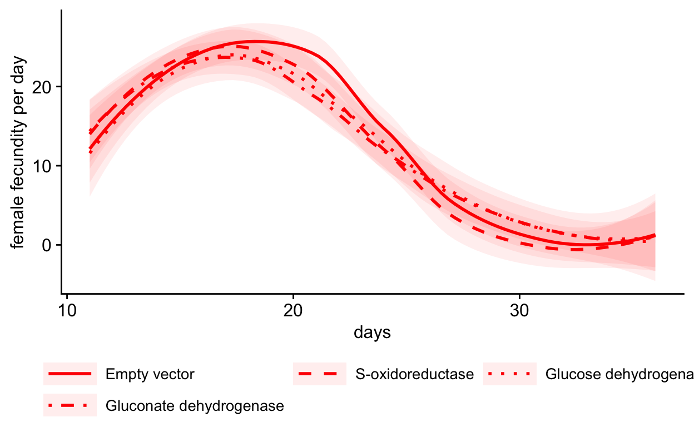
Figure 3A E. coli
## filter out the right data
atrc <- fecundity%>% filter(vial%in%c("7636", "10862"))
## define plot order
atrc$vial <- factor(atrc$vial, levels = c("7636", "10862"))
## set colors
plot_colors <- c("green","green")
plot_lines <- c("solid","dashed")
## plot
ggplot(atrc, aes(x = date3, y=fecundity, group = vial, col = vial, fill = vial, linetype = vial)) +
stat_smooth(method = NULL, level= 0.95, alpha = 0.07) +
scale_color_manual(values = plot_colors,
labels = c("WT",expression(metH)),
name = "") +
scale_fill_manual(values = plot_colors,
labels = c("WT",expression(metH)),
name = "")+
scale_linetype_manual(values = plot_lines,
labels = c("WT",expression(metH)),
name = "") +
ylab("female fecundity per day") +
xlab("days") +
theme(legend.position = "bottom") +
guides(fill = guide_legend(ncol = 3, byrow=T),
color = guide_legend(ncol = 3, byrow=T),
linetype = guide_legend(ncol = 3, byrow=T)
) +
theme_cowplot() +
theme(legend.position = "bottom",
legend.text.align = 0,
legend.key.width = unit(.5,"in"),
legend.justification = "center",
text = element_text(size = 12)
)
Figure 3B Acetobacter
test_ls <- lifespan_analysis %>%
filter(treatment %in% c(p$vec$vec_atmut)) %>%
mutate(exp = as.factor(as.character(start_day))) %>%
mutate(treatment = as.factor(as.character(treatment))) %>%
droplevels()
levels(test_ls$treatment)## [1] "GDH" "GNDH" "PVEC" "SDR"print("N per treatment")## [1] "N per treatment"data.frame(table(test_ls$treatment)) %>%
inner_join(lookup_code, by = c("Var1" = "code1")) %>%
dplyr::select(fullname,Freq)test_ls$treatment <- plyr::revalue(test_ls$treatment, c("PVEC"="empty vector","SDR" = "oxidoreductase","GDH" = "Glucose DeH","GNDH" = "Gluconate DeH"))
test_ls$S<-Surv(test_ls$time,test_ls$event)
## log rank test
print("Log rank test results")## [1] "Log rank test results"survdiff(S ~ treatment, data = test_ls)## Call:
## survdiff(formula = S ~ treatment, data = test_ls)
##
## N Observed Expected (O-E)^2/E (O-E)^2/V
## treatment=Glucose DeH 293 158 149 0.593 0.86
## treatment=Gluconate DeH 267 181 122 28.602 38.98
## treatment=empty vector 253 118 142 4.055 5.78
## treatment=oxidoreductase 202 83 127 15.500 21.41
##
## Chisq= 51.5 on 3 degrees of freedom, p= 4e-11## pairwise log rank test results
print("BH-corrected pairwise Log rank test results")## [1] "BH-corrected pairwise Log rank test results"model_all <- pairwise_survdiff(S ~ treatment, data = test_ls)
x <- test_ls$treatment
levs <- levels(x)
y <- Surv(test_ls$time, test_ls$event)
lvl_order <- levels(x)[order(tapply(as.numeric(y)[1:length(x)],
x, mean))]
comps <- as_tibble(model_all$p.value, rownames="row") %>%
pivot_longer(-row, names_to="col", values_to="p") %>%
na.omit()
mycomps <- as.matrix(comps[,1:2])
signif <- comps$p < .05
comps %>% inner_join(lookup_code, by = c("row" = "code2")) %>% inner_join(lookup_code, by = c("col" = "code2")) %>% select(Comp1 = fullname.x, Comp2 = fullname.y, p)print("Compact letter displays")## [1] "Compact letter displays"clds <- multcomp:::insert_absorb(signif,
decreasing=FALSE,
comps=mycomps,
lvl_order=lvl_order)
print(clds)## Gluconate DeH Glucose DeH empty vector oxidoreductase
## "a" "b" "bc" "c"name_val <- c("b","a","bc","c")
plot_colors <- c("red","red","red","red")
plot_lines <- c("dotted","dotdash","solid","dashed")
annot_val <- test_ls %>% group_by(treatment, event) %>% summarize(total = dplyr::n()) %>% reshape2::dcast(formula = treatment ~ event, value.var = "total") %>% mutate(percent = 1-(`1`/(`0`+`1`))) %>% dplyr::select(percent) %>% unlist() %>% unname()
#par(mai=c(1,1,.1,.1))
plot(survfit(S ~ treatment, test_ls), xlim = c(10,41), col=plot_colors, lty=plot_lines, lwd=2, xlab= "time(d)", ylab="fractional survival", bty = "n")
for(i in 1:length(table(list(test_ls$treatment)))) {
legend(x = 36, y = annot_val[i], legend = name_val[i], text.col = plot_colors[i], bty = "n", xjust = 0, yjust = .5, cex=1)#
}
## print the legend
## filter out the right data
atrc <- fecundity%>% filter(vial%in%c("GDH","GNDH","PVEC","SDR"))
## set the plot order
atrc$vial <- factor(atrc$vial, levels = c("PVEC","SDR","GDH","GNDH"))
## set colors
plot_colors <- c("red","red","red","red")
plot_lines <- c("solid","dashed","dotted","dotdash")
## make plot
plot(g_legend(ggplot(atrc, aes(x = date3, y=fecundity, group = vial, col = vial, fill = vial, linetype = vial)) +
stat_smooth(method = NULL, level= 0.95, alpha = 0.07) +
scale_color_manual(values = plot_colors,
labels = c("Empty vector","S-oxidoreductase","Glucose dehydrogenase","Gluconate dehydrogenase"),
name = "") +
scale_fill_manual(values = plot_colors,
labels = c("Empty vector","S-oxidoreductase","Glucose dehydrogenase","Gluconate dehydrogenase"),
name = "")+
scale_linetype_manual(values = plot_lines,
labels = c("Empty vector","S-oxidoreductase","Glucose dehydrogenase","Gluconate dehydrogenase"),
name = "") +
ylab("female fecundity per day") +
xlab("days") +
theme(legend.position = "bottom") +
guides(fill = guide_legend(ncol = 3, byrow=T),
color = guide_legend(ncol = 3, byrow=T),
linetype = guide_legend(ncol = 3, byrow=T)
) +
theme_cowplot() +
theme(legend.position = "bottom",
legend.text.align = 0,
legend.key.width = unit(.5,"in"),
legend.justification = "center",
text = element_text(size = 12)
)
)
)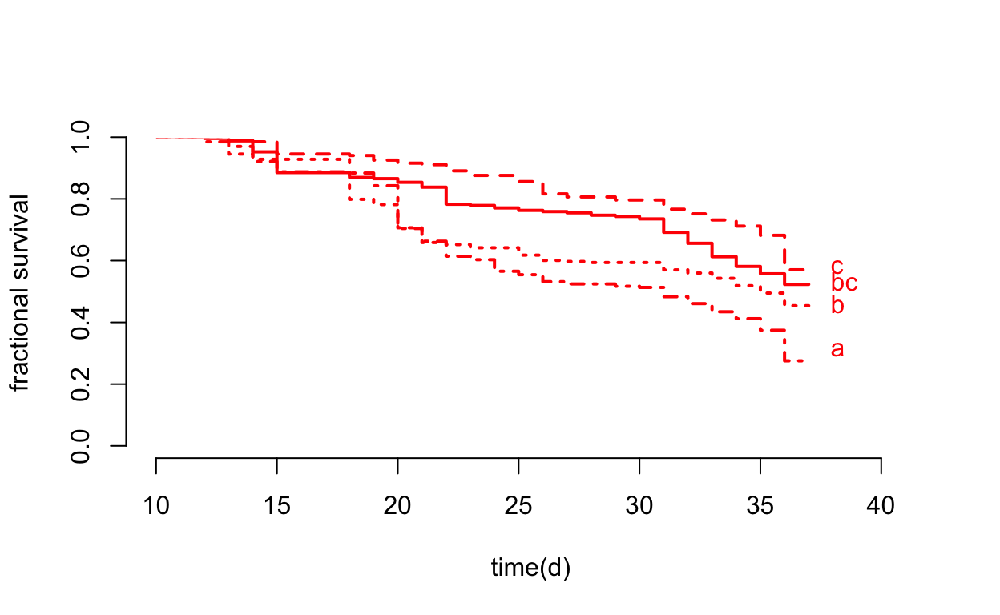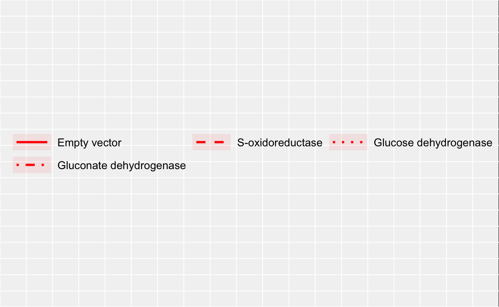
Figure 3B E. coli
test_ls <- lifespan_analysis %>%
filter(treatment %in% c(p$vec$vec_ecmut)) %>%
mutate(exp = as.factor(as.character(start_day))) %>%
mutate(treatment = as.factor(as.character(treatment))) %>%
# filter(treatment == "7636") %>%
droplevels()
print("N per treatment")## [1] "N per treatment"data.frame(table(test_ls$treatment)) %>%
inner_join(lookup_code, by = c("Var1" = "code1")) %>%
dplyr::select(fullname,Freq)test_ls$treatment <- plyr::revalue(test_ls$treatment, c("7636"="WT","10862" = "metH"))
test_ls$S<-Surv(test_ls$time,test_ls$event)
## log rank test
print("Log rank test results")## [1] "Log rank test results"survdiff(S ~ treatment, data = test_ls)## Call:
## survdiff(formula = S ~ treatment, data = test_ls)
##
## N Observed Expected (O-E)^2/E (O-E)^2/V
## treatment=metH 232 48 48.9 0.0176 0.0436
## treatment=WT 161 35 34.1 0.0253 0.0436
##
## Chisq= 0 on 1 degrees of freedom, p= 0.8name_val <- c("a","a")
plot_colors <- c("green","green")
plot_lines <- c("dashed","solid")
annot_val <- test_ls %>% group_by(treatment, event) %>% summarize(total = dplyr::n()) %>% reshape2::dcast(formula = treatment ~ event, value.var = "total") %>% mutate(percent = 1-(`1`/(`0`+`1`))) %>% dplyr::select(percent) %>% unlist() %>% unname()
plot(survfit(S ~ treatment, test_ls), xlim = c(10,41), col=plot_colors, lty=plot_lines, lwd=2, xlab= "time(d)", ylab="fractional survival", bty = "n")
for(i in 1:length(table(list(test_ls$treatment)))) {
legend(x = 36, y = annot_val[i], legend = name_val[i], text.col = plot_colors[i], bty = "n", xjust = 0, yjust = .5, )#
}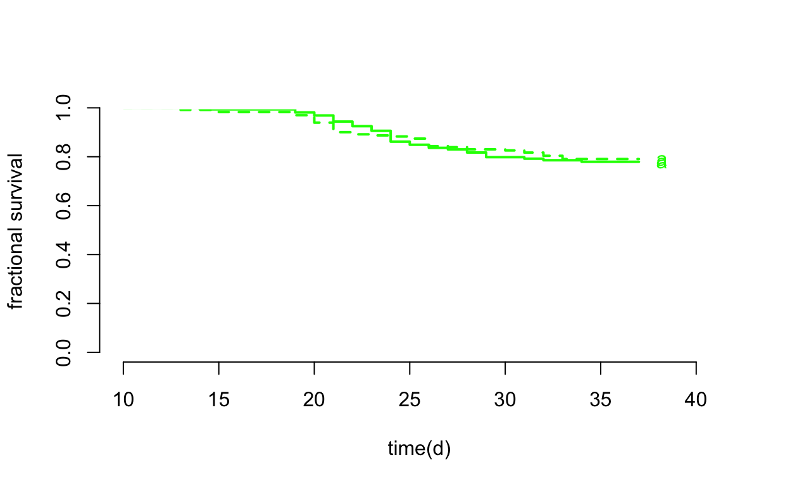
## plot legend
## filter out the right data
atrc <- fecundity%>% filter(vial%in%c("7636", "10862"))
## define plot order
atrc$vial <- factor(atrc$vial, levels = c("7636", "10862"))
## set colors
plot_colors <- c("green","green")
plot_lines <- c("solid","dashed")
## plot
ggplot(atrc, aes(x = date3, y=fecundity, group = vial, col = vial, fill = vial, linetype = vial)) +
stat_smooth(method = NULL, level= 0.95, alpha = 0.07) +
scale_color_manual(values = plot_colors,
labels = c("WT",expression(metH)),
name = "") +
scale_fill_manual(values = plot_colors,
labels = c("WT",expression(metH)),
name = "")+
scale_linetype_manual(values = plot_lines,
labels = c("WT",expression(metH)),
name = "") +
ylab("female fecundity per day") +
xlab("days") +
theme(legend.position = "bottom") +
guides(fill = guide_legend(ncol = 3, byrow=T),
color = guide_legend(ncol = 3, byrow=T),
linetype = guide_legend(ncol = 3, byrow=T)
) +
theme_cowplot() +
theme(legend.position = "bottom",
legend.text.align = 0,
legend.key.width = unit(.5,"in"),
legend.justification = "center",
text = element_text(size = 12)
)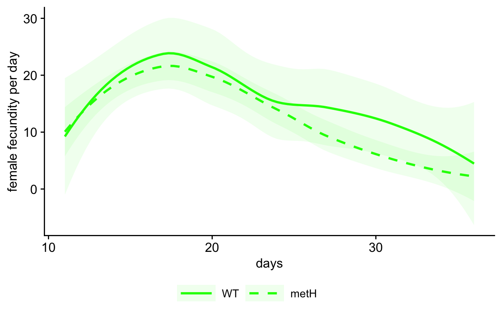
Figure 3C
Figure 3C Acetobacter
total_fitness1 <- fitness %>%
filter(!trt%in%c("GNDH-17","GNDH-18","GNDH-19","PVEC-17","PVEC-18","PVEC-19","SDR-17","GDH-17") & !date3 %in% c(35,36)) %>%
group_by(trt,vial) %>%
summarize(mean_fec = sum(fecundity)) %>%
filter(vial %in% p$vec$vec_atmut)
total_fitness1$vial <- factor(total_fitness1$vial, levels = p$vec$vec_atmut)
levels(total_fitness1$vial)## [1] "SDR" "PVEC" "GDH" "GNDH"print("N per treatment")## [1] "N per treatment"data.frame(table(total_fitness1$vial)) %>%
inner_join(lookup_code, by = c("Var1" = "code1")) %>%
dplyr::select(fullname,Freq)total_fitness1$vial <- plyr::revalue(total_fitness1$vial, c("PVEC"="empty vector","SDR" = "oxidoreductase","GDH" = "Glucose DeH","GNDH" = "Gluconate DeH"))
print("KW test")## [1] "KW test"kruskal.test(mean_fec ~ vial, total_fitness1)##
## Kruskal-Wallis rank sum test
##
## data: mean_fec by vial
## Kruskal-Wallis chi-squared = 0.25985, df = 3, p-value = 0.9674total_fitness2 <- fitness %>%
filter(!trt%in%c("17","GNDH-18","GNDH-19","PVEC-17","PVEC-18","PVEC-19","SDR-17","GDH-17") & !date3 %in% c(35,36)) %>%
group_by(trt,vial) %>%
summarize(mean_fec = sum(fecundity)) %>%
ungroup() %>%
group_by(vial) %>%
summarize(mean_fec2 = mean(mean_fec), sem_fec2 = sd(mean_fec)/sqrt(sum(mean_fec>-30))) %>%
ungroup() %>%
filter(vial %in% p$vec$vec_atmut) %>%
mutate(vial = as.factor(as.character(vial))) %>%
arrange(factor(vial, levels=p$vec$vec_atmut))
total_fitness2$vial <- factor(total_fitness2$vial, levels = p$vec$vec_atmut)
total_fitness2$vial <- plyr::revalue(total_fitness2$vial, c("PVEC"="empty vector","SDR" = "oxidoreductase","GDH" = "Glucose DeH","GNDH" = "Gluconate DeH"))
plot_colors <- c("red","red","red","red")
plot_lines <- c("solid","dashed","dotted","dotdash")
print(ggplot(total_fitness2, aes(x = vial, y=mean_fec2, ymax = mean_fec2+sem_fec2, ymin = mean_fec2-sem_fec2, line = vial, linetype = vial)) +
geom_col(size=2.5, col=plot_colors, fill = "white", linetype = plot_lines) +
geom_errorbar(width = 0.5, linetype = "solid") +
theme_cowplot() +
annotate(geom="label", x=c(1:length(table(list(total_fitness2$vial)))), y= c(total_fitness2$mean_fec2 + total_fitness2$sem_fec2+3), label = c(rep("a",4)), color = plot_colors, size=6, parse=T, hjust = .5, fill=NA, label.size=0) +
ylab("lifetime fecundity per female") +
xlab("treatment") +
theme(text = element_text(size = 12)
)
)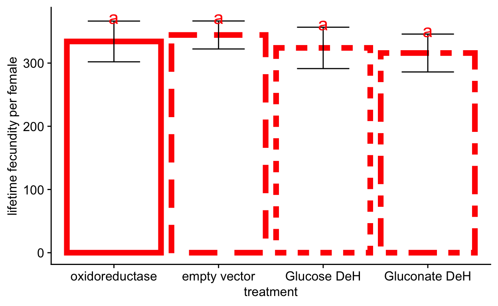 #### Figure 3C E. coli
total_fitness1 <- fitness %>%
filter(!trt%in%c("GNDH-17","GNDH-18","GNDH-19","PVEC-17","PVEC-18","PVEC-19","SDR-17","GDH-17","35u-18","7636-13","7636-18") & !date3 %in% c(35,36)) %>%
group_by(trt,vial) %>%
summarize(mean_fec = sum(fecundity)) %>%
filter(vial %in% p$vec$vec_ecmut)
total_fitness1$vial <- factor(total_fitness1$vial, levels = p$vec$vec_ecmut)
print("N per treatment")## [1] "N per treatment"data.frame(table(total_fitness1$vial)) %>%
inner_join(lookup_code, by = c("Var1" = "code1")) %>%
dplyr::select(fullname,Freq)total_fitness1$vial <- plyr::revalue(total_fitness1$vial, c("7636"="WT","10862" = "metH"))
print("Wilcoxon test")## [1] "Wilcoxon test"wilcox.test(mean_fec ~ vial, total_fitness1)##
## Wilcoxon rank sum test
##
## data: mean_fec by vial
## W = 29, p-value = 0.8371
## alternative hypothesis: true location shift is not equal to 0total_fitness2 <- fitness %>%
filter(!trt%in%c("17","7636-13","7636-18") & !date3 %in% c(35,36)) %>%
group_by(trt,vial) %>%
summarize(mean_fec = sum(fecundity)) %>%
ungroup() %>%
group_by(vial) %>%
summarize(mean_fec2 = mean(mean_fec), sem_fec2 = sd(mean_fec)/sqrt(sum(mean_fec>-30))) %>%
ungroup() %>%
filter(vial %in% p$vec$vec_ecmut) %>%
mutate(vial = as.factor(as.character(vial))) %>%
arrange(factor(vial, levels=p$vec$vec_ecmut))
total_fitness2$vial <- factor(total_fitness2$vial, levels = p$vec$vec_ecmut)
total_fitness2$vial <- plyr::revalue(total_fitness2$vial, c("7636"="WT","10862" = "metH"))
plot_colors <- c("green","green")
plot_lines <- c("solid","dashed")
print(ggplot(total_fitness2, aes(x = vial, y=mean_fec2, ymax = mean_fec2+sem_fec2, ymin = mean_fec2-sem_fec2, line = vial, linetype = vial)) +
geom_col(size=2.5, col=plot_colors, fill = "white", linetype = plot_lines) +
geom_errorbar(width = 0.5, linetype = "solid") +
theme_cowplot() +
annotate(geom="label", x=c(1:length(table(list(total_fitness2$vial)))), y= c(total_fitness2$mean_fec2 + total_fitness2$sem_fec2+3), label = c(rep("a",2)), color = plot_colors, size=6, parse=T, hjust = .5, fill=NA, label.size=0) +
ylab("lifetime fecundity per female") +
xlab("treatment") +
theme(text = element_text(size = 12)
)
)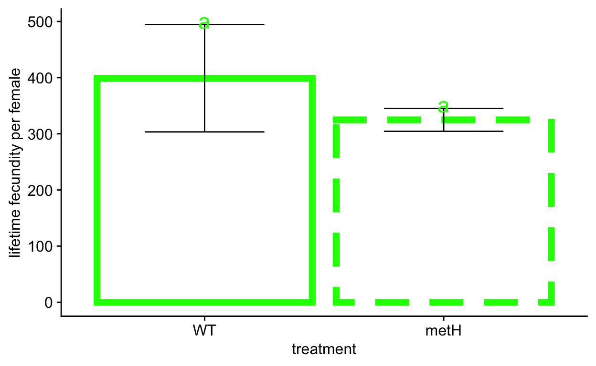
Figure 3D
Figure 3D Acetobacter
q = 2
xgroup = unlist(p$group[q])
subset_vec = unlist(unname(p$vec[q]))
rangevals <- c(1)
n = 1
eigens <- data.frame(vial = factor(), trt = character(), exp = factor(), fitness = numeric(), mod_death = numeric())
m = 1
for (m in rangevals) {
eigenvalue_df <- data.frame(vial = character(), trt = character(), exp = factor(), fitness = numeric())
mod = n
age_class = m
subfitness <- fitness %>% filter(vial %in% subset_vec)
for(i in names(table(list(subfitness$trt)))) {
submat <- fitness %>%
filter(trt==i) %>%
filter(date3 == min(date3)) %>%
mutate(date3 = 0) %>%
mutate(fecundity = 0) %>%
rbind(fitness %>%
filter(trt==i) %>%
arrange(date3)
) %>%
rbind(fitness %>%
filter(trt == i) %>%
filter(date3 == max(date3)) %>%
mutate(date3 = max(date3)+1) %>%
mutate(fecundity = 0)
)
submat$s = 1
submat$f = 0
for (j in 1:(dim(submat)[1]-1)) {
submat$s[j] <- (submat$cum_female[j+1] / submat$cum_female[j])
submat$f[j] <- submat$fecundity[j] #* submat$s[j]
}
submat
leslie_mat <- matrix(data = c(unlist(submat$f[1:dim(submat)[1]])), nrow= 1)
if (age_class>1) {
for (k in 1:(age_class-1)) {
leslie_mat <- rbind(leslie_mat,
matrix(c(rep(0,k-1),submat$s[k],rep(0,(dim(submat)[1]-k))), nrow=1)
)
}
}
for (k in age_class:min(age_class,(dim(submat)[1]-1))) {
leslie_mat <- rbind(leslie_mat,
matrix(c(rep(0,k-1),submat$s[k]*mod,rep(0,(dim(submat)[1]-k))), nrow=1)
)
}
if(age_class < (dim(submat)[1]-1)) {
for(k in (age_class+1):(dim(submat)[1]-1)) {
leslie_mat <- rbind(leslie_mat,
matrix(c(rep(0,k-1),submat$s[k],rep(0,(dim(submat)[1]-k))), nrow=1)
)
}
}
#print(submat)
#print(leslie_mat)
eigenvalue_df <- eigenvalue_df %>% rbind(data.frame(vial = as.character(i), trt = as.character(submat$vial[1]), exp = as.factor(as.character(submat$date2[1])), fitness = as.numeric(eigen(leslie_mat)$values[1])))
}
eigens <- eigens %>% rbind(eigenvalue_df %>% mutate(fitness = log(fitness)) %>% mutate(mod_death = (m)))
}
eigens <- eigens %>% filter(trt%in%subset_vec) %>% droplevels()
eigens$trt <- factor(eigens$trt, levels = subset_vec)
print("N per treatment")## [1] "N per treatment" print(table(eigens$trt))##
## SDR PVEC GDH GNDH
## 9 9 9 9 print("KW test results")## [1] "KW test results" kruskal.test(fitness ~ trt, eigens)##
## Kruskal-Wallis rank sum test
##
## data: fitness by trt
## Kruskal-Wallis chi-squared = 0.84585, df = 3, p-value = 0.8385 eigens2 <- eigens %>% group_by(trt, mod_death) %>% summarize(meanfit = mean(fitness), sem = sd(fitness)/sqrt(sum(fitness>-1000))) %>% ungroup()
eigens2$trt <- factor(eigens2$trt, levels = c("PVEC","SDR","GDH","GNDH"))
eigens2 <- eigens2 %>% arrange(factor(trt, levels = c("PVEC","SDR","GDH","GNDH")))
eigens2$trt <- plyr::revalue(eigens2$trt, c("PVEC"="empty vector","SDR" = "oxidoreductase","GDH" = "Glucose DeH","GNDH" = "Gluconate DeH"))
plot_colors <- c("red","red","red","red")
plot_lines <- c("solid","dashed","dotted","dotdash")
ggplot(eigens2, aes(x = trt, y=meanfit, ymax = meanfit+sem, ymin = meanfit-sem, col = trt, fill = trt)) +
geom_col(size=2.5, col=plot_colors, fill = "white", linetype = plot_lines) +
geom_errorbar(width = 0.5, linetype = "solid", col = "red") +
theme_cowplot() +
annotate(geom="text", x=c(1:length(table(list(eigens2$trt)))), y= c(eigens2$meanfit + eigens2$sem+median(eigens2$sem)*1.7), label = c(rep("a",4)), color = plot_colors, size=6, parse=T, hjust = 0.5,fill=NA, label.size=0) +
ylab("mean log fitness") +
xlab("treatment") +
theme_cowplot() +
theme(text = element_text(size = 12),
legend.position = "bottom"
)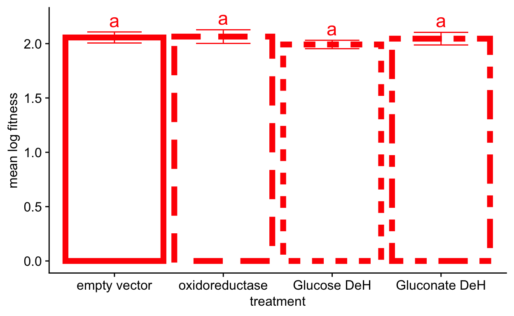
Figure 3D E. coli
q = 3
xgroup = unlist(p$group[q])
subset_vec = unlist(unname(p$vec[q]))
rangevals <- c(1)
n = 1
eigens <- data.frame(vial = factor(), trt = character(), exp = factor(), fitness = numeric(), mod_death = numeric())
m = 1
for (m in rangevals) {
eigenvalue_df <- data.frame(vial = character(), trt = character(), exp = factor(), fitness = numeric())
mod = n
age_class = m
subfitness <- fitness %>% filter(vial %in% subset_vec)
for(i in names(table(list(subfitness$trt)))) {
submat <- fitness %>%
filter(trt==i) %>%
filter(date3 == min(date3)) %>%
mutate(date3 = 0) %>%
mutate(fecundity = 0) %>%
rbind(fitness %>%
filter(trt==i) %>%
arrange(date3)
) %>%
rbind(fitness %>%
filter(trt == i) %>%
filter(date3 == max(date3)) %>%
mutate(date3 = max(date3)+1) %>%
mutate(fecundity = 0)
)
submat$s = 1
submat$f = 0
for (j in 1:(dim(submat)[1]-1)) {
submat$s[j] <- (submat$cum_female[j+1] / submat$cum_female[j])
submat$f[j] <- submat$fecundity[j] #* submat$s[j]
}
submat
leslie_mat <- matrix(data = c(unlist(submat$f[1:dim(submat)[1]])), nrow= 1)
if (age_class>1) {
for (k in 1:(age_class-1)) {
leslie_mat <- rbind(leslie_mat,
matrix(c(rep(0,k-1),submat$s[k],rep(0,(dim(submat)[1]-k))), nrow=1)
)
}
}
for (k in age_class:min(age_class,(dim(submat)[1]-1))) {
leslie_mat <- rbind(leslie_mat,
matrix(c(rep(0,k-1),submat$s[k]*mod,rep(0,(dim(submat)[1]-k))), nrow=1)
)
}
if(age_class < (dim(submat)[1]-1)) {
for(k in (age_class+1):(dim(submat)[1]-1)) {
leslie_mat <- rbind(leslie_mat,
matrix(c(rep(0,k-1),submat$s[k],rep(0,(dim(submat)[1]-k))), nrow=1)
)
}
}
#print(submat)
#print(leslie_mat)
eigenvalue_df <- eigenvalue_df %>% rbind(data.frame(vial = as.character(i), trt = as.character(submat$vial[1]), exp = as.factor(as.character(submat$date2[1])), fitness = as.numeric(eigen(leslie_mat)$values[1])))
}
eigens <- eigens %>% rbind(eigenvalue_df %>% mutate(fitness = log(fitness)) %>% mutate(mod_death = (m)))
}
eigens <- eigens %>% filter(trt%in%subset_vec) %>% droplevels()
eigens$trt <- factor(eigens$trt, levels = subset_vec)
print("N per treatment")## [1] "N per treatment"print(table(eigens$trt))##
## 7636 10862
## 7 9print("Wilcoxon test results")## [1] "Wilcoxon test results"wilcox.test(fitness ~ trt, eigens)##
## Wilcoxon rank sum test
##
## data: fitness by trt
## W = 29, p-value = 0.8371
## alternative hypothesis: true location shift is not equal to 0eigens2 <- eigens %>% group_by(trt, mod_death) %>% summarize(meanfit = mean(fitness), sem = sd(fitness)/sqrt(sum(fitness>-1000))) %>% ungroup()
eigens2$trt <- factor(eigens2$trt, levels = c("7636","10862"))
eigens2 <- eigens2 %>% arrange(factor(trt, levels = c("7636","10862")))
eigens2$trt <- plyr::revalue(eigens2$trt, c("7636"="WT","10862" = "metH"))
plot_colors <- c("green","green")
plot_lines <- c("solid","dashed")
ggplot(eigens2, aes(x = trt, y=meanfit, ymax = meanfit+sem, ymin = meanfit-sem, col = trt, fill = trt)) +
geom_col(size=2.5, col=plot_colors, fill = "white", linetype = plot_lines) +
geom_errorbar(width = 0.5, linetype = "solid", col = "green") +
theme_cowplot() +
annotate(geom="text", x=c(1:length(table(list(eigens2$trt)))), y= c(eigens2$meanfit + eigens2$sem+median(eigens2$sem)*1.7), label = c(rep("a",2)), color = plot_colors, size=6, parse=T, hjust = 0.5,fill=NA, label.size=0) +
ylab("mean fitness") +
xlab("treatment") +
theme_cowplot() +
theme(text = element_text(size = 12),
legend.position = "none"
)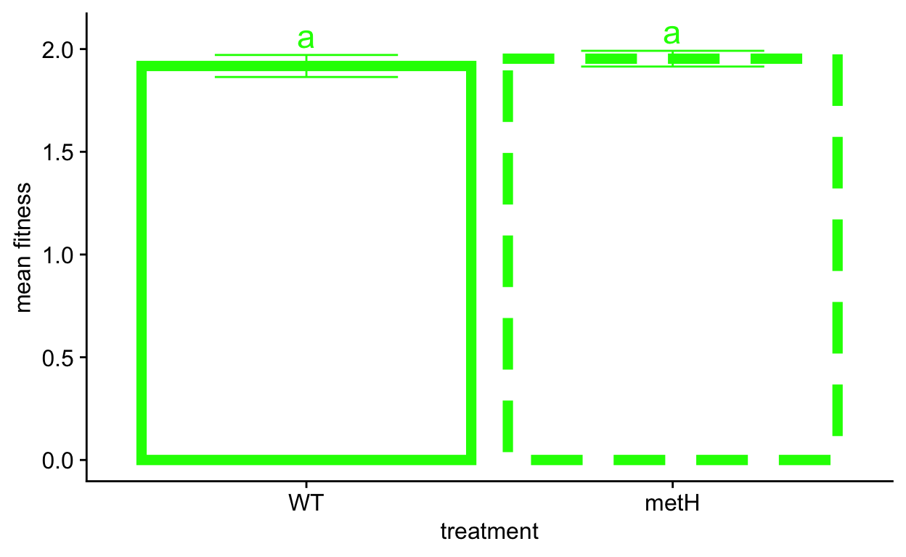
Figure S1
p <- list(vec = list(vec_bac = c("28n","30p","11c","Gno","4d","35u","Ax","2b","13g","15h","75o","3c","1a","70j","71k"),
vec_atmut = c("SDR","PVEC","GDH","GNDH"),
vec_ecmut = c("7636","10862")
),
group = list("group_bac","group_atmut","group_ecmut")
)
q = 1
#print 1 plot with the same survival in each line. each line is the age class that was permuted for survival
xgroup = unlist(p$group[q])
subset_vec = unlist(unname(p$vec[q]))
rangevals = 1
rangevals <- c(1:7)
n= 0.00001
for (n in c(.5,.1,.05,.01,.005,.001,.0001,.00001)) {
eigens <- data.frame(vial = factor(), trt = character(), exp = factor(), fitness = numeric(), mod_death = numeric())
m = 1
for (m in rangevals) {
eigenvalue_df <- data.frame(vial = character(), trt = character(), exp = factor(), fitness = numeric())
mod = n
age_class = m
subfitness <- fitness %>% filter(vial %in% subset_vec)
for(i in names(table(list(subfitness$trt)))) {
submat <- fitness %>%
filter(trt==i) %>%
filter(date3 == min(date3)) %>%
mutate(date3 = 0) %>%
mutate(fecundity = 0) %>%
rbind(fitness %>%
filter(trt==i) %>%
arrange(date3)
) %>%
rbind(fitness %>%
filter(trt == i) %>%
filter(date3 == max(date3)) %>%
mutate(date3 = max(date3)+1) %>%
mutate(fecundity = 0)
)
submat$s = 1
submat$f = 0
for (j in 1:(dim(submat)[1]-1)) {
submat$s[j] <- (submat$cum_female[j+1] / submat$cum_female[j])
submat$f[j] <- submat$fecundity[j] #* submat$s[j]
}
submat
leslie_mat <- matrix(data = c(unlist(submat$f[1:dim(submat)[1]])), nrow= 1)
if (age_class>1) {
for (k in 1:(age_class-1)) {
leslie_mat <- rbind(leslie_mat,
matrix(c(rep(0,k-1),submat$s[k],rep(0,(dim(submat)[1]-k))), nrow=1)
)
}
}
for (k in age_class:min(age_class,(dim(submat)[1]-1))) {
leslie_mat <- rbind(leslie_mat,
matrix(c(rep(0,k-1),submat$s[k]*mod,rep(0,(dim(submat)[1]-k))), nrow=1)
)
}
if(age_class < (dim(submat)[1]-1)) {
for(k in (age_class+1):(dim(submat)[1]-1)) {
leslie_mat <- rbind(leslie_mat,
matrix(c(rep(0,k-1),submat$s[k],rep(0,(dim(submat)[1]-k))), nrow=1)
)
}
}
eigenvalue_df <- eigenvalue_df %>% rbind(data.frame(vial = as.character(i), trt = as.character(submat$vial[1]), exp = as.factor(as.character(submat$date2[1])), fitness = as.numeric(eigen(leslie_mat)$values[1])))
}
eigens <- eigens %>% rbind(eigenvalue_df %>% mutate(fitness = log(fitness)) %>% mutate(mod_death = (m)))
}
eigens <- eigens %>% filter(trt%in%subset_vec) %>% droplevels()
eigens$trt <- factor(eigens$trt, levels = subset_vec)
eigens2 <- eigens %>% group_by(trt, mod_death) %>% summarize(meanfit = mean(fitness))
plot_colors <- colorRampPalette(c("red", "black"))
table(list(eigens$trt))
table(list(eigens$mod_death))
for(i in rangevals) {
cat('\n')
print("######################################################")
print(paste0("These are the statistics for age class ",i," and survival divided by ",1/n, sep = ""))
eigen_stats <- eigens %>% filter(mod_death == (i)) %>% droplevels()
#print(str(eigen_stats))
#print(i)
kwoutput <- try(kruskal.test(eigen_stats$fitness~ eigen_stats$trt), silent = T)
captured_output <- capture.output(efg <- dunn.test(eigen_stats$fitness,eigen_stats$trt, method = "bh", table = F, kw = T))
if(kwoutput == "Error in kruskal.test.default(numeric(0), structure(integer(0), .Label = character(0), class = \"factor\")) : \n all observations are in the same group\n") {
print(paste0("chi-sq statistic not significant"))
} else {
print(paste0("chi-sq statistic: ",round(kwoutput$statistic,2)))
print(paste0("df: ",length(table(eigen_stats$trt))-1))
print(paste0("p: ",signif(kwoutput$p.value,3)))
}
#print(i)
if(sum(efg$P.adjusted<0.05)>0) {
ghi <- cldList(comparison = efg$comparisons, p.value = efg$P.adjusted, threshold = 0.05, print.comp = F) %>%
arrange(factor(Group, levels = subset_vec))
try(assign(x = paste0("es",i), value = as.vector(ghi$Letter)),T)
} else {
assign(x = paste0("es",i),value = rep("a",length(subset_vec)))
}
assign(x = paste0("estats",i),
value = eigen_stats %>%
group_by(trt) %>%
summarize(mean_fitness = mean(fitness)) %>%
arrange(factor(trt, levels = subset_vec)) %>%
dplyr::select(mean_fitness) %>%
unlist() %>%
unname()
)
}
eigens2$trt <- plyr::revalue(eigens2$trt, c("28n" = "atrn","30p" = "apan", "11c"="atrc","Gno" = "5sp","4d" = "apoc", "35u" = "aace","Ax" = "Ax","2b" = "lplc","13g" = "bsub","15h" = "ecok","75o" = "lplw","3c" = "lfrc", "1a" = "lbrc","70j" = "lfrk", "71k" = "lbga"))
print(ggplot(eigens2, aes(x = trt, y=meanfit,group = as.factor(mod_death), col = as.factor(mod_death), fill = as.factor(mod_death))) +
geom_step(aes(x = trt, y = meanfit)) + #, position = position_dodge(width = widthj), size = sizej) +
scale_color_manual(values = plot_colors(length(rangevals)),
name = "Age class") +
coord_cartesian(ylim = c(-2,3)) +
ylab("log fitness") +
xlab("bacterial treatment") +
theme(legend.position = "bottom") +
guides(color = guide_legend(ncol = 5, byrow=T, reverse = T)) +
theme_cowplot() +
theme(legend.position = "bottom",
legend.text.align = 0,
legend.key.width = unit(.5,"in"),
legend.justification = "center",
text = element_text(size =12),
axis.text.x = element_text(angle = 90, hjust = 1)
) +
annotate(geom="label", x= c(1.05:(length(subset_vec)+0.05)), y= get(paste0("estats",rangevals[7]))+0.03, label = get(paste0("es",rangevals[7])),size=3, parse=T, hjust = 0, fill = NA,label.size=0)+
annotate(geom="label", x= c(1.05:(length(subset_vec)+0.05)), y= get(paste0("estats",rangevals[6]))+0.03, label = get(paste0("es",rangevals[6])),size=3, parse=T, hjust = 0, fill = NA,label.size=0)+
annotate(geom="label", x= c(1.05:(length(subset_vec)+0.05)), y= get(paste0("estats",rangevals[5]))+0.03, label = get(paste0("es",rangevals[5])),size=3, parse=T, hjust = 0, fill = NA,label.size=0)+
annotate(geom="label", x= c(1.05:(length(subset_vec)+0.05)), y= get(paste0("estats",rangevals[4]))+0.03, label = get(paste0("es",rangevals[4])),size=3, parse=T, hjust = 0, fill = NA,label.size=0)+
annotate(geom="label", x= c(1.05:(length(subset_vec)+0.05)), y= get(paste0("estats",rangevals[3]))+0.03, label = get(paste0("es",rangevals[3])),size=3, parse=T, hjust = 0, fill = NA,label.size=0)+
annotate(geom="label", x= c(1.05:(length(subset_vec)+0.05)), y= get(paste0("estats",rangevals[2]))+0.03, label = get(paste0("es",rangevals[2])),size=3, parse=T, hjust = 0, fill = NA,label.size=0)+
annotate(geom="label", x= c(1.05:(length(subset_vec)+0.05)), y= get(paste0("estats",rangevals[1]))+0.03, label = get(paste0("es",rangevals[1])),size=3, parse=T, hjust = 0, fill = NA,label.size=0)
)
# dev.off()
}Figure S2
p <- list(vec = list(vec_bac = c("28n","30p","11c","Gno","4d","35u","Ax","2b","13g","15h","75o","3c","1a","70j","71k"),
vec_atmut = c("SDR","PVEC","GDH","GNDH"),
vec_ecmut = c("7636","10862")
),
group = list("group_bac","group_atmut","group_ecmut")
)
q = 1
xgroup = unlist(p$group[q])
subset_vec = unlist(unname(p$vec[q]))
eigens <- data.frame(vial = factor(), trt = character(), exp = factor(), fitness = numeric(), mod_death = numeric(), permuted_val = character())
rangevals <- c(1, 0.5,0.1,0.05, 0.01, 0.005,0.001,0.0001,0.00001)
for (n in list(c(1,1),c(2,2))) {
for (m in rangevals) {
eigenvalue_df <- data.frame(vial = character(), trt = character(), exp = factor(), fitness = numeric())
distance = n
mod = m
subfitness <- fitness %>% filter(vial %in% subset_vec)
i = "11c-11"
for(i in names(table(list(subfitness$trt)))) {
## collect the relevant data for each Leslie matrix
submat <-
# make first row
fitness %>% filter(trt==i) %>% filter(date3 == min(date3)) %>% mutate(date3 = 0) %>% mutate(fecundity = 0) %>%
# the main matrix
rbind(fitness %>% filter(trt==i) %>% arrange(date3)) %>%
# make last row
rbind(fitness %>% filter(trt == i) %>% filter(date3 == max(date3)) %>% mutate(date3 = max(date3)+1) %>% mutate(fecundity = 0))
## set the s and f coloumns to default values
submat$s = 1
submat$f = 0
## calculate s and f
for (j in 1:(dim(submat)[1]-1)) {
submat$s[j] <- (submat$cum_female[j+1] / submat$cum_female[j])
submat$f[j] <- submat$fecundity[j] #* submat$s[j]
}
## begin the leslie matrix
leslie_mat <- matrix(data = c(unlist(submat$f[1:dim(submat)[1]])), nrow= 1)
## build in the first unmodified cells
if (n[1]>1) {
for (k in 1:(n[1]-1)) {
leslie_mat <- rbind(leslie_mat,
matrix(c(rep(0,k-1),submat$s[k],rep(0,(dim(submat)[1]-k))), nrow=1)
)
}
}
## build in cells that get modified by variable 'mod' from 'rangevals'
for (k in n[1]:min(n[2],(dim(submat)[1]-1))) {
leslie_mat <- rbind(leslie_mat,
matrix(c(rep(0,k-1),submat$s[k]*mod,rep(0,(dim(submat)[1]-k))), nrow=1)
)
}
## build in the unmodified cells that occur linearly after the modified ones
if(n[2] < (dim(submat)[1]-1)) {
for(k in (n[2]+1):(dim(submat)[1]-1)) {
leslie_mat <- rbind(leslie_mat,
matrix(c(rep(0,k-1),submat$s[k],rep(0,(dim(submat)[1]-k))), nrow=1)
)
}
}
## the matrix
leslie_mat
## calculate the first eigenvalue in the eigenvector of the Leslie matrix
eigenvalue_df <- eigenvalue_df %>% rbind(data.frame(vial = as.character(i), trt = as.character(submat$vial[1]), exp = as.factor(as.character(submat$date2[1])), fitness = as.numeric(eigen(leslie_mat)$values[1])))
}
## add that row with the eigenvalue to a growing data frame
eigens <- eigens %>% rbind(eigenvalue_df %>% mutate(mod_death = (m), permuted_val = paste0(n[1],"_",n[2])))
}
}
for(k in names(table(list(eigens$mod_death)))) {
## get rid of unnecessary rows
eigensA <- eigens %>% filter(trt%in%subset_vec) %>% filter(permuted_val == "1_1") %>%droplevels()
## convert trt to a factor
eigensA$trt <- factor(eigensA$trt, levels = subset_vec)
eigens2a <- eigensA %>% filter(mod_death == 1) %>% dplyr::rename(unpermuted_fitness = fitness) %>% droplevels()
eigens2b <- eigensA %>% filter(mod_death == k) %>% dplyr::rename(permuted_fitness = fitness) %>% droplevels()
eigens3 <- eigens2a %>% inner_join(eigens2b, by="vial")
cortest <- cor.test(eigens3$unpermuted_fitness, eigens3$permuted_fitness, method = "spearman", exact=F)
print(paste0("Correlation test between observed fitness and when fitness is calculated from ",1/as.numeric(as.character(k)),"-fold reduction in fly survival values. N = ",dim(eigens3 %>% filter(unpermuted_fitness > 0 & permuted_fitness>0))[1]))
print(cortest)
colors <- data.frame(table(list(eigens3$trt.x))) %>% mutate(col = as.factor(c("red","red","red","black","purple","red","red","green",rep("blue",4),"cyan",rep("blue",2))))
eigens4 <- eigens3 %>% inner_join(colors, by=c("trt.x"="Var1"))
plotp = round(cortest$p.value,4)
plotrho = round(cortest$estimate,4)
plotlabel = paste0("p = ",plotp,"; rho = ",plotrho)
plot_colors <- eigens4$col
print(ggplot(eigens4, aes(unpermuted_fitness, permuted_fitness, color = col, fill=col)) +
geom_point() +
scale_color_manual(values = c("black","blue","magenta","cyan","purple","red1"), name = NULL, labels = c("Axenic","LAB","B. subtilis","Gamma","5-sp","AAB")) +
scale_fill_manual(values = c("black","blue","magenta","cyan","purple","red1"), name = NULL, labels = c("Axenic","LAB","B. subtilis","Gamma","5-sp","AAB")) +
theme_cowplot() +
theme(legend.position = "bottom") +
xlab(paste0("observed fitness"))+
ylab(paste0("survival-permuted fitness"))+
annotate(geom="label", x= min(eigens4$unpermuted_fitness), y = min(eigens4$permuted_fitness), label = deparse(plotlabel),size=6, parse=T, hjust = 0, fill = NA,label.size=0) +
stat_smooth(method = "lm", aes(unpermuted_fitness, permuted_fitness), inherit.aes = F)
)
}## [1] "Correlation test between observed fitness and when fitness is calculated from 1e+05-fold reduction in fly survival values. N = 120"
##
## Spearman's rank correlation rho
##
## data: eigens3$unpermuted_fitness and eigens3$permuted_fitness
## S = 382670, p-value = 0.0002457
## alternative hypothesis: true rho is not equal to 0
## sample estimates:
## rho
## -0.3288076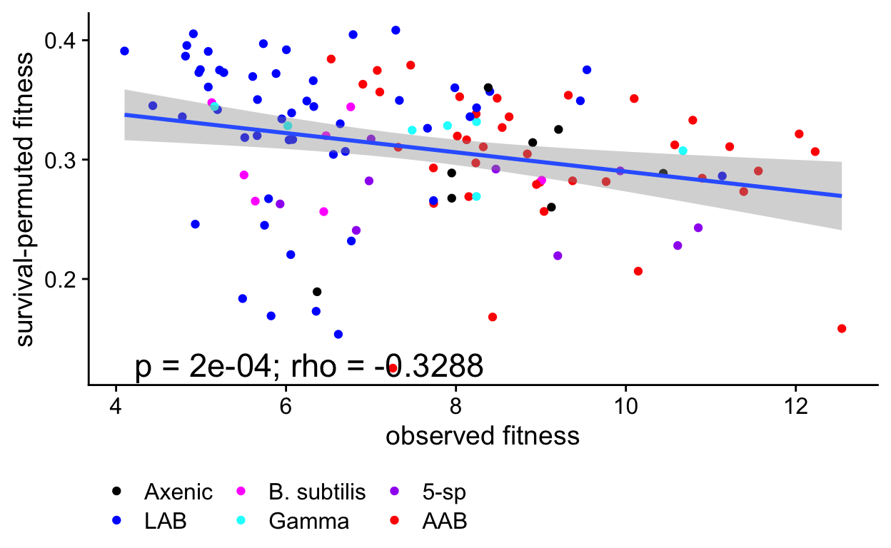
## [1] "Correlation test between observed fitness and when fitness is calculated from 10000-fold reduction in fly survival values. N = 120"
##
## Spearman's rank correlation rho
##
## data: eigens3$unpermuted_fitness and eigens3$permuted_fitness
## S = 367172, p-value = 0.002368
## alternative hypothesis: true rho is not equal to 0
## sample estimates:
## rho
## -0.2749913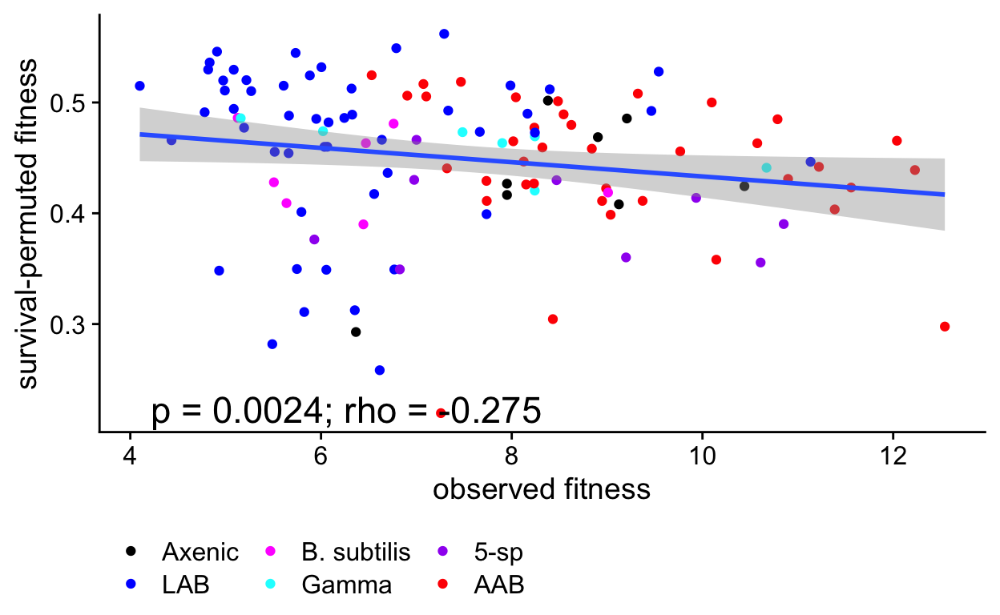
## [1] "Correlation test between observed fitness and when fitness is calculated from 1000-fold reduction in fly survival values. N = 120"
##
## Spearman's rank correlation rho
##
## data: eigens3$unpermuted_fitness and eigens3$permuted_fitness
## S = 260040, p-value = 0.2918
## alternative hypothesis: true rho is not equal to 0
## sample estimates:
## rho
## 0.09702063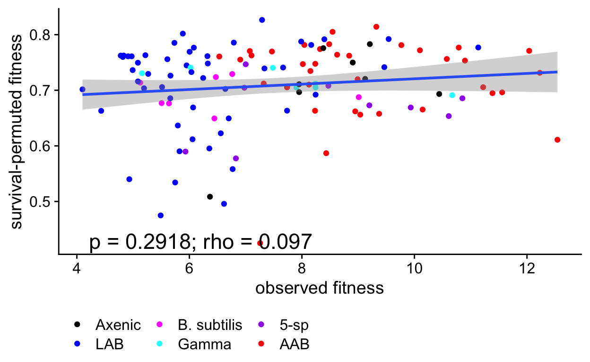
## [1] "Correlation test between observed fitness and when fitness is calculated from 200-fold reduction in fly survival values. N = 120"
##
## Spearman's rank correlation rho
##
## data: eigens3$unpermuted_fitness and eigens3$permuted_fitness
## S = 97372, p-value < 2.2e-16
## alternative hypothesis: true rho is not equal to 0
## sample estimates:
## rho
## 0.6618793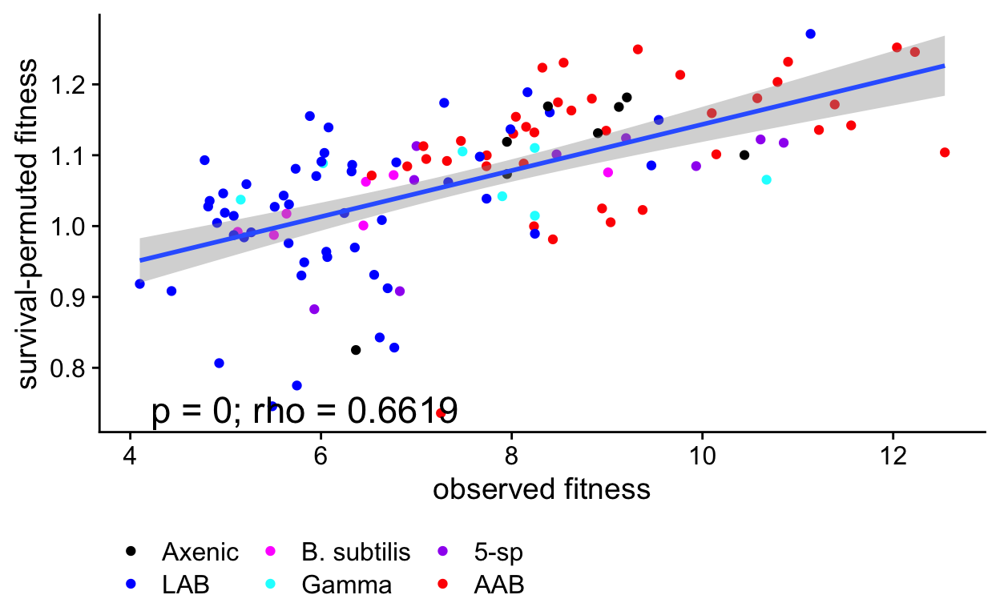
## [1] "Correlation test between observed fitness and when fitness is calculated from 100-fold reduction in fly survival values. N = 120"
##
## Spearman's rank correlation rho
##
## data: eigens3$unpermuted_fitness and eigens3$permuted_fitness
## S = 58786, p-value < 2.2e-16
## alternative hypothesis: true rho is not equal to 0
## sample estimates:
## rho
## 0.7958678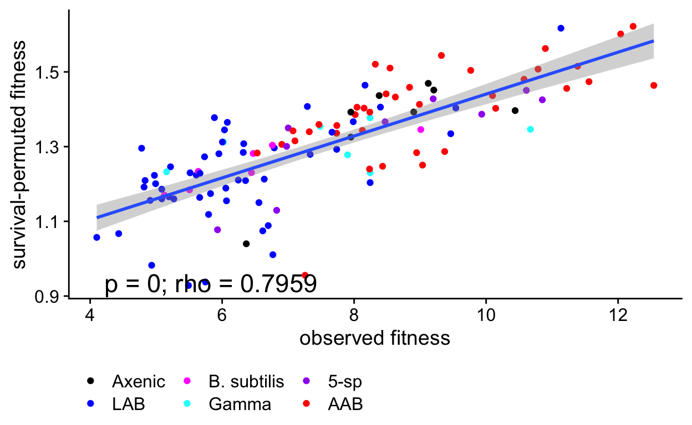
## [1] "Correlation test between observed fitness and when fitness is calculated from 20-fold reduction in fly survival values. N = 120"
##
## Spearman's rank correlation rho
##
## data: eigens3$unpermuted_fitness and eigens3$permuted_fitness
## S = 18888, p-value < 2.2e-16
## alternative hypothesis: true rho is not equal to 0
## sample estimates:
## rho
## 0.9344121## [1] "Correlation test between observed fitness and when fitness is calculated from 10-fold reduction in fly survival values. N = 120"
##
## Spearman's rank correlation rho
##
## data: eigens3$unpermuted_fitness and eigens3$permuted_fitness
## S = 9588, p-value < 2.2e-16
## alternative hypothesis: true rho is not equal to 0
## sample estimates:
## rho
## 0.966706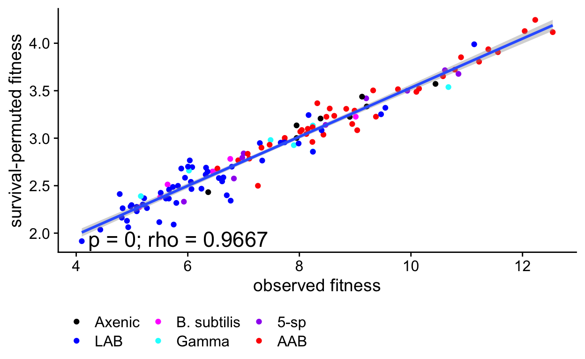
## [1] "Correlation test between observed fitness and when fitness is calculated from 2-fold reduction in fly survival values. N = 120"
##
## Spearman's rank correlation rho
##
## data: eigens3$unpermuted_fitness and eigens3$permuted_fitness
## S = 730, p-value < 2.2e-16
## alternative hypothesis: true rho is not equal to 0
## sample estimates:
## rho
## 0.9974651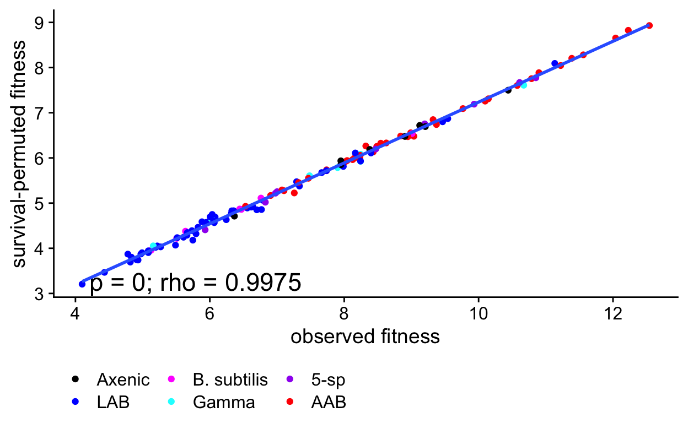
## [1] "Correlation test between observed fitness and when fitness is calculated from 1-fold reduction in fly survival values. N = 120"
##
## Spearman's rank correlation rho
##
## data: eigens3$unpermuted_fitness and eigens3$permuted_fitness
## S = 6.3944e-11, p-value < 2.2e-16
## alternative hypothesis: true rho is not equal to 0
## sample estimates:
## rho
## 1
Figure S3
p <- list(vec = list(vec_bac = c("28n","30p","11c","Gno","4d","35u","Ax","2b","13g","15h","75o","3c","1a","70j","71k"),
vec_atmut = c("SDR","PVEC","GDH","GNDH"),
vec_ecmut = c("7636","10862")
),
group = list("group_bac","group_atmut","group_ecmut")
)
q = 1
xgroup = unlist(p$group[q])
subset_vec = unlist(unname(p$vec[q]))
eigens <- data.frame(vial = factor(), trt = character(), exp = factor(), fitness = numeric(), mod_death = numeric(), permuted_val = character())
rangevals <- c(1, .5,.1,.05, .01, 0.005,.001,.0005,0.0001,0.00001)
# rangevals <- c(1,0.00001)
## make up the two comparisons
for (n in list(c(1,1),c(2,7))) {
for (m in rangevals) {
eigenvalue_df <- data.frame(vial = character(), trt = character(), exp = factor(), fitness = numeric())
distance = n
mod = m
subfitness <- fitness %>% filter(vial %in% subset_vec)
for(i in names(table(list(subfitness$trt)))) {
## collect the relevant data for each Leslie matrix
submat <-
# make first row
fitness %>% filter(trt==i) %>% filter(date3 == min(date3)) %>% mutate(date3 = 0) %>% mutate(fecundity = 0) %>%
# the main matrix
rbind(fitness %>% filter(trt==i) %>% arrange(date3)) %>%
# make last row
rbind(fitness %>% filter(trt == i) %>% filter(date3 == max(date3)) %>% mutate(date3 = max(date3)+1) %>% mutate(fecundity = 0))
## set the s and f coloumns to default values
submat$s = 1
submat$f = 0
## calculate s and f
for (j in 1:(dim(submat)[1]-1)) {
submat$s[j] <- (submat$cum_female[j+1] / submat$cum_female[j])
submat$f[j] <- submat$fecundity[j] #* submat$s[j]
}
## begin the leslie matrix
leslie_mat <- matrix(data = c(unlist(submat$f[1:dim(submat)[1]])), nrow= 1)
leslie_mat[(n[1]+1):(n[2]+1)] <- (leslie_mat[(n[1]+1):(n[2]+1)] * mod)
## build in the diagonal
for (k in 1:(dim(submat)[1]-1)) {
leslie_mat <- rbind(leslie_mat,
matrix(c(rep(0,k-1),submat$s[k],rep(0,(dim(submat)[1]-k))), nrow=1)
)
}
## the matrix
## calculate the first eigenvalue in the eigenvector of the Leslie matrix
eigenvalue_df <- eigenvalue_df %>% rbind(data.frame(vial = as.character(i), trt = as.character(submat$vial[1]), exp = as.factor(as.character(submat$date2[1])), fitness = as.numeric(eigen(leslie_mat)$values[1])))
}
## add that row with the eigenvalue to a growing data frame
eigens <- eigens %>% rbind(eigenvalue_df %>% mutate(mod_death = (m), permuted_val = paste0(n[1],"_",n[2])))
}
}
for(k in names(table(list(eigens$mod_death)))) {
## get rid of unnecessary rows
eigensA <- eigens %>% filter(trt%in%subset_vec) %>% filter(permuted_val == "1_1") %>%droplevels()
## convert trt to a factor
eigensA$trt <- factor(eigensA$trt, levels = subset_vec)
eigens2a <- eigensA %>% filter(mod_death == 1) %>% rename(unpermuted_fitness = fitness) %>% droplevels()
eigens2b <- eigensA %>% filter(mod_death == k) %>% rename(permuted_fitness = fitness) %>% droplevels()
table(eigens2a$vial)
eigens3 <- eigens2a %>% inner_join(eigens2b, by="vial")
eigens3$unpermuted_fitness
cortest <- cor.test(eigens3$unpermuted_fitness, eigens3$permuted_fitness, method = "spearman", exact=F)
print(paste0("Correlation test between observed fitness and when fitness is calculated from ",1/as.numeric(as.character(k)),"-fold reduction in fecundity values. N = ",dim(eigens3 %>% filter(unpermuted_fitness > 0 & permuted_fitness>0))[1]))
print(cortest)
colors <- data.frame(table(list(eigens3$trt.x))) %>% mutate(col = as.factor(c("red","red","red","black","purple","red","red","green",rep("blue",4),"cyan",rep("blue",2))))
eigens4 <- eigens3 %>% inner_join(colors, by=c("trt.x"="Var1"))
plotp = round(cortest$p.value,4)
plotrho = round(cortest$estimate,4)
plotlabel = paste0("p = ",plotp,"; rho = ",plotrho)
## build the color palette for the plot
plot_colors <- eigens4$col
print(ggplot(eigens4, aes(unpermuted_fitness, permuted_fitness, color = col, fill=col)) +
geom_point() +
scale_color_manual(values = c("black","blue","magenta","cyan","purple","red1"), name = NULL, labels = c("Axenic","LAB","B. subtilis","Gamma","5-sp","AAB")) +
scale_fill_manual(values = c("black","blue","magenta","cyan","purple","red1"), name = NULL, labels = c("Axenic","LAB","B. subtilis","Gamma","5-sp","AAB")) +
theme_cowplot() +
theme(legend.position = "bottom") +
xlab(paste0("observed fitness"))+
ylab(paste0("fecundity-permuted fitness"))+
annotate(geom="label", x= min(eigens4$unpermuted_fitness), y = min(eigens4$permuted_fitness), label = deparse(plotlabel),size=6, parse=T, hjust = 0, fill = NA,label.size=0) +
stat_smooth(method = "lm", aes(unpermuted_fitness, permuted_fitness), inherit.aes = F)
)
}## [1] "Correlation test between observed fitness and when fitness is calculated from 1e+05-fold reduction in fecundity values. N = 120"
##
## Spearman's rank correlation rho
##
## data: eigens3$unpermuted_fitness and eigens3$permuted_fitness
## S = 173154, p-value = 6.463e-06
## alternative hypothesis: true rho is not equal to 0
## sample estimates:
## rho
## 0.3987291## [1] "Correlation test between observed fitness and when fitness is calculated from 10000-fold reduction in fecundity values. N = 120"
##
## Spearman's rank correlation rho
##
## data: eigens3$unpermuted_fitness and eigens3$permuted_fitness
## S = 173154, p-value = 6.463e-06
## alternative hypothesis: true rho is not equal to 0
## sample estimates:
## rho
## 0.3987291## [1] "Correlation test between observed fitness and when fitness is calculated from 2000-fold reduction in fecundity values. N = 120"
##
## Spearman's rank correlation rho
##
## data: eigens3$unpermuted_fitness and eigens3$permuted_fitness
## S = 172878, p-value = 6.111e-06
## alternative hypothesis: true rho is not equal to 0
## sample estimates:
## rho
## 0.3996875## [1] "Correlation test between observed fitness and when fitness is calculated from 1000-fold reduction in fecundity values. N = 120"
##
## Spearman's rank correlation rho
##
## data: eigens3$unpermuted_fitness and eigens3$permuted_fitness
## S = 172426, p-value = 5.575e-06
## alternative hypothesis: true rho is not equal to 0
## sample estimates:
## rho
## 0.401257## [1] "Correlation test between observed fitness and when fitness is calculated from 200-fold reduction in fecundity values. N = 120"
##
## Spearman's rank correlation rho
##
## data: eigens3$unpermuted_fitness and eigens3$permuted_fitness
## S = 169230, p-value = 2.871e-06
## alternative hypothesis: true rho is not equal to 0
## sample estimates:
## rho
## 0.412355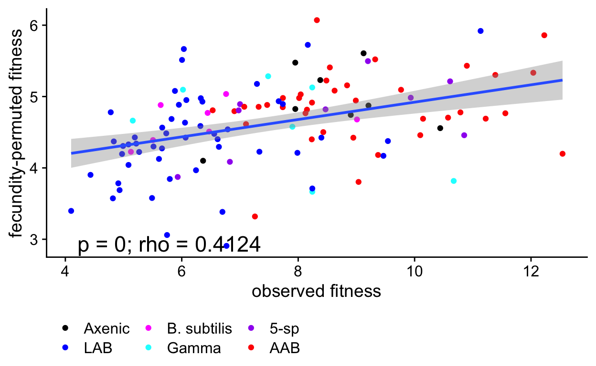
## [1] "Correlation test between observed fitness and when fitness is calculated from 100-fold reduction in fecundity values. N = 120"
##
## Spearman's rank correlation rho
##
## data: eigens3$unpermuted_fitness and eigens3$permuted_fitness
## S = 163698, p-value = 8.599e-07
## alternative hypothesis: true rho is not equal to 0
## sample estimates:
## rho
## 0.4315647## [1] "Correlation test between observed fitness and when fitness is calculated from 20-fold reduction in fecundity values. N = 120"
##
## Spearman's rank correlation rho
##
## data: eigens3$unpermuted_fitness and eigens3$permuted_fitness
## S = 125622, p-value = 2.02e-11
## alternative hypothesis: true rho is not equal to 0
## sample estimates:
## rho
## 0.5637822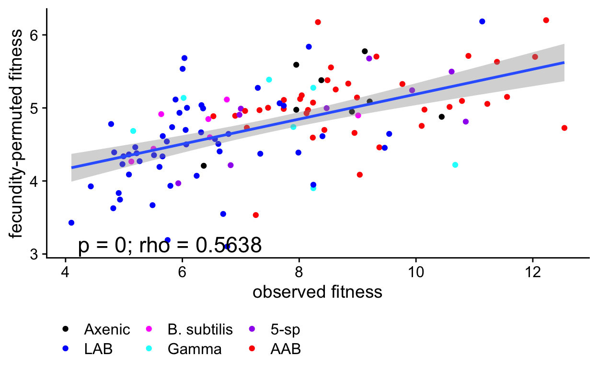
## [1] "Correlation test between observed fitness and when fitness is calculated from 10-fold reduction in fecundity values. N = 120"
##
## Spearman's rank correlation rho
##
## data: eigens3$unpermuted_fitness and eigens3$permuted_fitness
## S = 87078, p-value < 2.2e-16
## alternative hypothesis: true rho is not equal to 0
## sample estimates:
## rho
## 0.6976248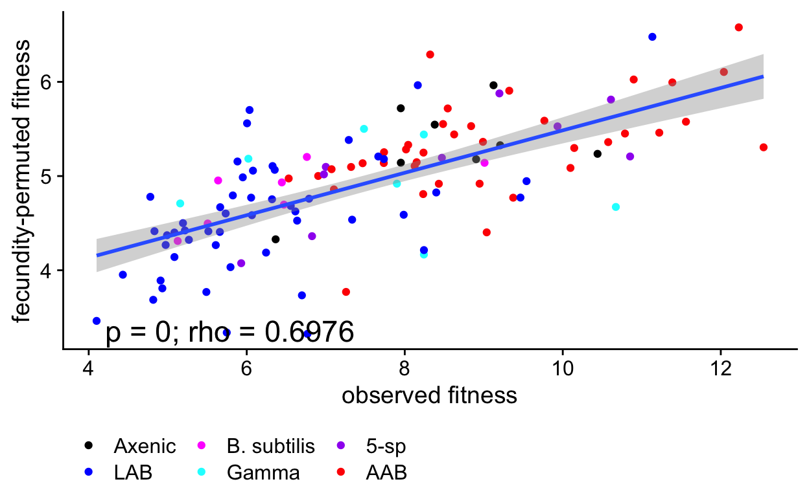
## [1] "Correlation test between observed fitness and when fitness is calculated from 2-fold reduction in fecundity values. N = 120"
##
## Spearman's rank correlation rho
##
## data: eigens3$unpermuted_fitness and eigens3$permuted_fitness
## S = 6372, p-value < 2.2e-16
## alternative hypothesis: true rho is not equal to 0
## sample estimates:
## rho
## 0.9778735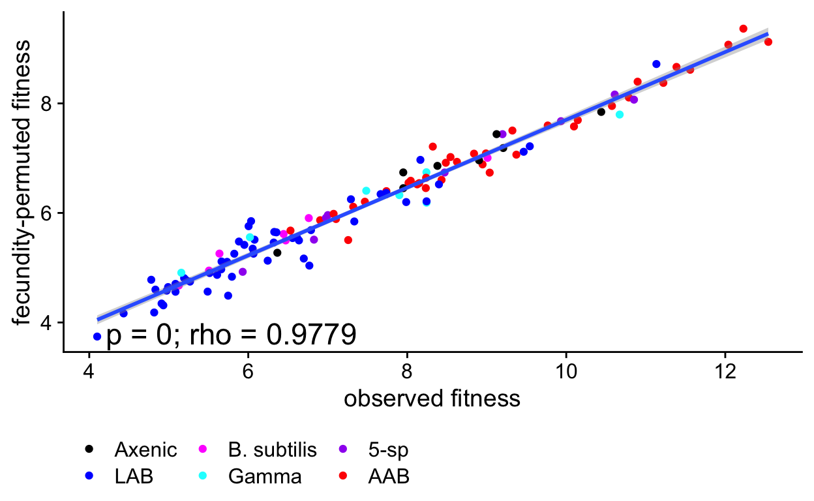
## [1] "Correlation test between observed fitness and when fitness is calculated from 1-fold reduction in fecundity values. N = 120"
##
## Spearman's rank correlation rho
##
## data: eigens3$unpermuted_fitness and eigens3$permuted_fitness
## S = 6.3944e-11, p-value < 2.2e-16
## alternative hypothesis: true rho is not equal to 0
## sample estimates:
## rho
## 1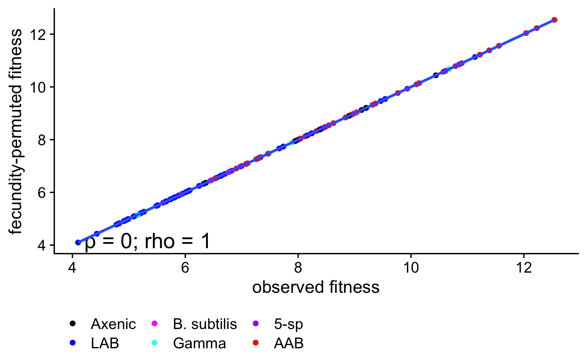
Figure S4
q = 1
#print 1 plot with the same survival in each line. each line is the age class that was permuted for survival
xgroup = unlist(p$group[q])
subset_vec = unlist(unname(p$vec[q]))
rangevals <- c(1:7)
for (n in c(1,.5,.1,.05,.01,.005,.001,.0001,.00001)) {
eigens <- data.frame(vial = factor(), trt = character(), exp = factor(), fitness = numeric(), mod_death = numeric())
m = 1
for (m in rangevals) {
eigenvalue_df <- data.frame(vial = character(), trt = character(), exp = factor(), fitness = numeric())
mod = n
age_class = m
subfitness <- fitness %>% filter(vial %in% subset_vec)
for(i in names(table(list(subfitness$trt)))) {
submat <- fitness %>%
filter(trt==i) %>%
filter(date3 == min(date3)) %>%
mutate(date3 = 0) %>%
mutate(fecundity = 0) %>%
rbind(fitness %>%
filter(trt==i) %>%
arrange(date3)
) %>%
rbind(fitness %>%
filter(trt == i) %>%
filter(date3 == max(date3)) %>%
mutate(date3 = max(date3)+1) %>%
mutate(fecundity = 0)
)
submat$s = 1
submat$f = 0
for (j in 1:(dim(submat)[1]-1)) {
submat$s[j] <- (submat$cum_female[j+1] / submat$cum_female[j])
submat$f[j] <- submat$fecundity[j] #* submat$s[j]
}
leslie_mat <- matrix(data = c(unlist(submat$f[1:dim(submat)[1]])), nrow= 1)
leslie_mat[(m+1)] <- (leslie_mat[(m+1)] * mod)
## build in the diagonal
for (k in 1:(dim(submat)[1]-1)) {
leslie_mat <- rbind(leslie_mat,
matrix(c(rep(0,k-1),submat$s[k],rep(0,(dim(submat)[1]-k))), nrow=1)
)
}
eigenvalue_df <- eigenvalue_df %>% rbind(data.frame(vial = as.character(i), trt = as.character(submat$vial[1]), exp = as.factor(as.character(submat$date2[1])), fitness = as.numeric(eigen(leslie_mat)$values[1])))
}
eigens <- eigens %>% rbind(eigenvalue_df %>% mutate(fitness = log(fitness)) %>% mutate(mod_death = (m)))
}
eigens <- eigens %>% filter(trt%in%subset_vec) %>% droplevels()
eigens$trt <- factor(eigens$trt, levels = subset_vec)
eigens2 <- eigens %>% group_by(trt, mod_death) %>% summarize(meanfit = mean(fitness))
plot_colors <- colorRampPalette(c("red", "black"))
for(i in rangevals) {
cat('\n')
print("######################################################")
print(paste0("These are the statistics for age class ",i," and survival divided by ",1/n, sep = ""))
eigen_stats <- eigens %>% filter(mod_death == (i)) %>% droplevels()
#print(str(eigen_stats))
#print(i)
kwoutput <- try(kruskal.test(eigen_stats$fitness~ eigen_stats$trt), silent = T)
captured_output <- capture.output(efg <- dunn.test(eigen_stats$fitness,eigen_stats$trt, method = "bh", table = F, kw = T))
if(kwoutput == "Error in kruskal.test.default(numeric(0), structure(integer(0), .Label = character(0), class = \"factor\")) : \n all observations are in the same group\n") {
print(paste0("chi-sq statistic not significant"))
} else {
print(paste0("chi-sq statistic: ",round(kwoutput$statistic,2)))
print(paste0("df: ",length(table(eigen_stats$trt))-1))
print(paste0("p: ",signif(kwoutput$p.value,3)))
}
#print(i)
if(sum(efg$P.adjusted<0.05)>0) {
ghi <- cldList(comparison = efg$comparisons, p.value = efg$P.adjusted, threshold = 0.05, print.comp = F) %>%
arrange(factor(Group, levels = subset_vec))
try(assign(x = paste0("es",i), value = as.vector(ghi$Letter)),T)
} else {
assign(x = paste0("es",i),value = rep("a",length(subset_vec)))
}
assign(x = paste0("estats",i),
value = eigen_stats %>%
group_by(trt) %>%
summarize(mean_fitness = mean(fitness)) %>%
arrange(factor(trt, levels = subset_vec)) %>%
dplyr::select(mean_fitness) %>%
unlist() %>%
unname()
)
}
eigens2$trt <- plyr::revalue(eigens2$trt, c("28n" = "atrn","30p" = "apan", "11c"="atrc","Gno" = "5sp","4d" = "apoc", "35u" = "aace","Ax" = "Ax","2b" = "lplc","13g" = "bsub","15h" = "ecok","75o" = "lplw","3c" = "lfrc", "1a" = "lbrc","70j" = "lfrk", "71k" = "lbga"))
print(n)
print(m)
# jpeg(h=7, w = 15, filename = paste0("fitness-permute-fecundity-group_",xgroup,"_",n,".jpg"), units = "in",res = 300)
print(ggplot(eigens2, aes(x = trt, y=meanfit,group = as.factor(mod_death), col = as.factor(mod_death), fill = as.factor(mod_death))) +
geom_step(aes(x = trt, y = meanfit)) + #, position = position_dodge(width = widthj), size = sizej) +
scale_color_manual(values = plot_colors(length(rangevals)),
name = "Age class") +
coord_cartesian(ylim = c(-2,3)) +
ylab("log fitness") +
xlab("bacterial treatment") +
theme(legend.position = "bottom") +
guides(color = guide_legend(ncol = 5, byrow=T, reverse = T)) +
theme_cowplot() +
theme(legend.position = "bottom",
legend.text.align = 0,
legend.key.width = unit(.5,"in"),
text = element_text(size = 12),
axis.text.x = element_text(angle = 90),
legend.justification = "center") +
annotate(geom="label", x= c(1.05:(length(subset_vec)+0.05)), y= get(paste0("estats",rangevals[7]))+0.03, label = get(paste0("es",rangevals[7])),size=3, parse=T, hjust = 0, fill = NA,label.size=0)+
annotate(geom="label", x= c(1.05:(length(subset_vec)+0.05)), y= get(paste0("estats",rangevals[6]))+0.03, label = get(paste0("es",rangevals[6])),size=3, parse=T, hjust = 0, fill = NA,label.size=0)+
annotate(geom="label", x= c(1.05:(length(subset_vec)+0.05)), y= get(paste0("estats",rangevals[5]))+0.03, label = get(paste0("es",rangevals[5])),size=3, parse=T, hjust = 0, fill = NA,label.size=0)+
annotate(geom="label", x= c(1.05:(length(subset_vec)+0.05)), y= get(paste0("estats",rangevals[4]))+0.03, label = get(paste0("es",rangevals[4])),size=3, parse=T, hjust = 0, fill = NA,label.size=0)+
annotate(geom="label", x= c(1.05:(length(subset_vec)+0.05)), y= get(paste0("estats",rangevals[3]))+0.03, label = get(paste0("es",rangevals[3])),size=3, parse=T, hjust = 0, fill = NA,label.size=0)+
annotate(geom="label", x= c(1.05:(length(subset_vec)+0.05)), y= get(paste0("estats",rangevals[2]))+0.03, label = get(paste0("es",rangevals[2])),size=3, parse=T, hjust = 0, fill = NA,label.size=0)+
annotate(geom="label", x= c(1.05:(length(subset_vec)+0.05)), y= get(paste0("estats",rangevals[1]))+0.03, label = get(paste0("es",rangevals[1])),size=3, parse=T, hjust = 0, fill = NA,label.size=0)
)
# dev.off()
}##
## [1] "######################################################"
## [1] "These are the statistics for age class 1 and survival divided by 1"
## [1] "chi-sq statistic: 62.37"
## [1] "df: 14"
## [1] "p: 4.48e-08"
##
## [1] "######################################################"
## [1] "These are the statistics for age class 2 and survival divided by 1"
## [1] "chi-sq statistic: 62.37"
## [1] "df: 14"
## [1] "p: 4.48e-08"
##
## [1] "######################################################"
## [1] "These are the statistics for age class 3 and survival divided by 1"
## [1] "chi-sq statistic: 62.37"
## [1] "df: 14"
## [1] "p: 4.48e-08"
##
## [1] "######################################################"
## [1] "These are the statistics for age class 4 and survival divided by 1"
## [1] "chi-sq statistic: 62.37"
## [1] "df: 14"
## [1] "p: 4.48e-08"
##
## [1] "######################################################"
## [1] "These are the statistics for age class 5 and survival divided by 1"
## [1] "chi-sq statistic: 62.37"
## [1] "df: 14"
## [1] "p: 4.48e-08"
##
## [1] "######################################################"
## [1] "These are the statistics for age class 6 and survival divided by 1"
## [1] "chi-sq statistic: 62.37"
## [1] "df: 14"
## [1] "p: 4.48e-08"
##
## [1] "######################################################"
## [1] "These are the statistics for age class 7 and survival divided by 1"
## [1] "chi-sq statistic: 62.37"
## [1] "df: 14"
## [1] "p: 4.48e-08"
## [1] 1
## [1] 7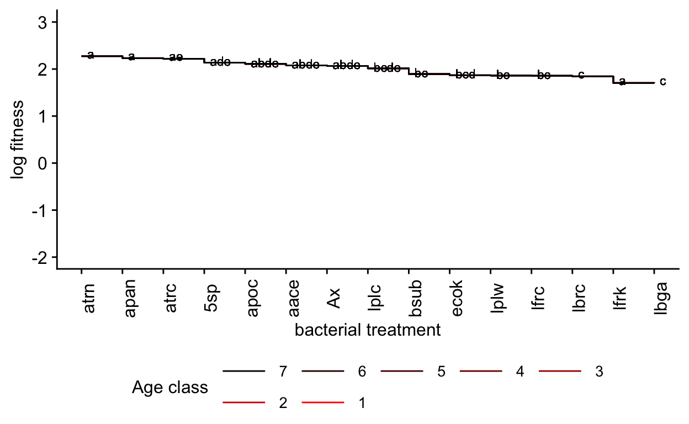
##
## [1] "######################################################"
## [1] "These are the statistics for age class 1 and survival divided by 2"
## [1] "chi-sq statistic: 63.7"
## [1] "df: 14"
## [1] "p: 2.6e-08"
##
## [1] "######################################################"
## [1] "These are the statistics for age class 2 and survival divided by 2"
## [1] "chi-sq statistic: 61.55"
## [1] "df: 14"
## [1] "p: 6.27e-08"
##
## [1] "######################################################"
## [1] "These are the statistics for age class 3 and survival divided by 2"
## [1] "chi-sq statistic: 62.26"
## [1] "df: 14"
## [1] "p: 4.7e-08"
##
## [1] "######################################################"
## [1] "These are the statistics for age class 4 and survival divided by 2"
## [1] "chi-sq statistic: 62.29"
## [1] "df: 14"
## [1] "p: 4.63e-08"
##
## [1] "######################################################"
## [1] "These are the statistics for age class 5 and survival divided by 2"
## [1] "chi-sq statistic: 62.37"
## [1] "df: 14"
## [1] "p: 4.48e-08"
##
## [1] "######################################################"
## [1] "These are the statistics for age class 6 and survival divided by 2"
## [1] "chi-sq statistic: 62.37"
## [1] "df: 14"
## [1] "p: 4.48e-08"
##
## [1] "######################################################"
## [1] "These are the statistics for age class 7 and survival divided by 2"
## [1] "chi-sq statistic: 62.37"
## [1] "df: 14"
## [1] "p: 4.48e-08"
## [1] 0.5
## [1] 7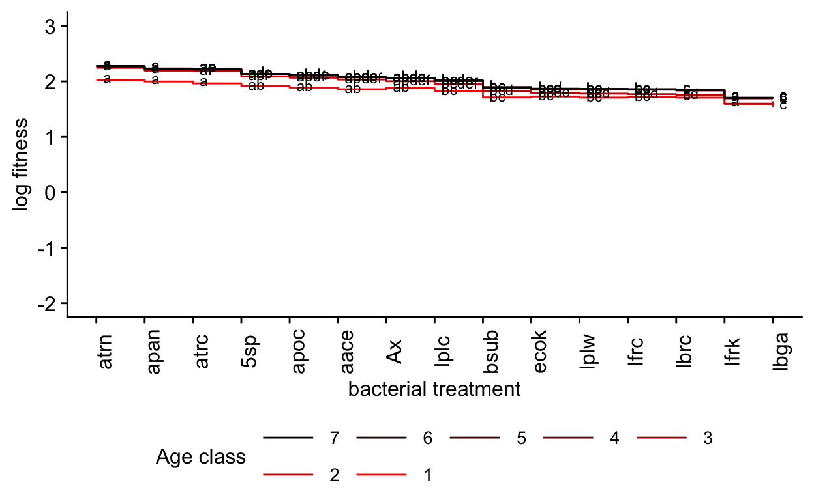
##
## [1] "######################################################"
## [1] "These are the statistics for age class 1 and survival divided by 10"
## [1] "chi-sq statistic: 49.72"
## [1] "df: 14"
## [1] "p: 6.81e-06"
##
## [1] "######################################################"
## [1] "These are the statistics for age class 2 and survival divided by 10"
## [1] "chi-sq statistic: 59.73"
## [1] "df: 14"
## [1] "p: 1.31e-07"
##
## [1] "######################################################"
## [1] "These are the statistics for age class 3 and survival divided by 10"
## [1] "chi-sq statistic: 62.53"
## [1] "df: 14"
## [1] "p: 4.2e-08"
##
## [1] "######################################################"
## [1] "These are the statistics for age class 4 and survival divided by 10"
## [1] "chi-sq statistic: 62.3"
## [1] "df: 14"
## [1] "p: 4.62e-08"
##
## [1] "######################################################"
## [1] "These are the statistics for age class 5 and survival divided by 10"
## [1] "chi-sq statistic: 62.37"
## [1] "df: 14"
## [1] "p: 4.48e-08"
##
## [1] "######################################################"
## [1] "These are the statistics for age class 6 and survival divided by 10"
## [1] "chi-sq statistic: 62.37"
## [1] "df: 14"
## [1] "p: 4.48e-08"
##
## [1] "######################################################"
## [1] "These are the statistics for age class 7 and survival divided by 10"
## [1] "chi-sq statistic: 62.37"
## [1] "df: 14"
## [1] "p: 4.48e-08"
## [1] 0.1
## [1] 7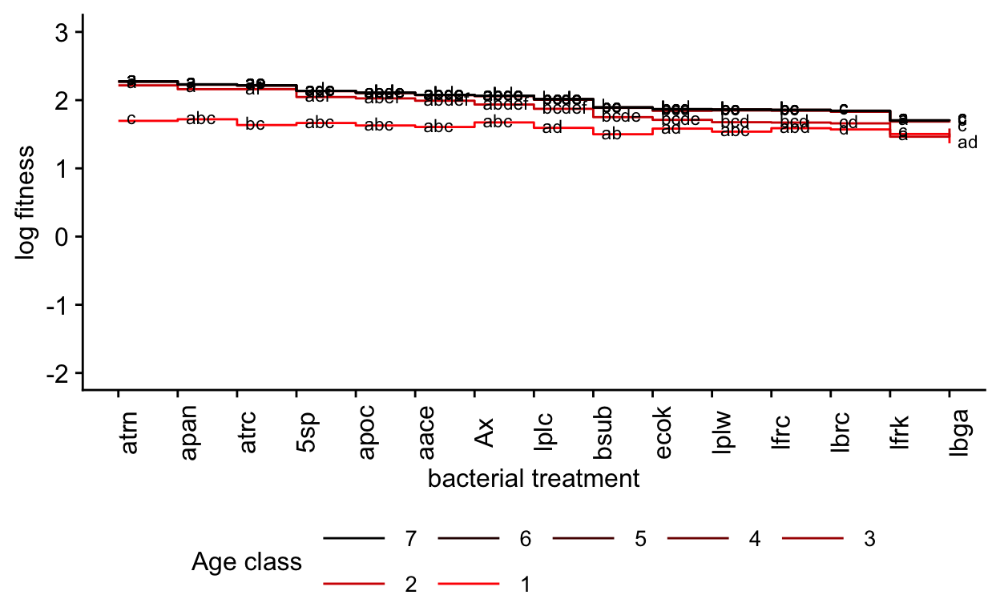
##
## [1] "######################################################"
## [1] "These are the statistics for age class 1 and survival divided by 20"
## [1] "chi-sq statistic: 42.13"
## [1] "df: 14"
## [1] "p: 0.000118"
##
## [1] "######################################################"
## [1] "These are the statistics for age class 2 and survival divided by 20"
## [1] "chi-sq statistic: 59.58"
## [1] "df: 14"
## [1] "p: 1.39e-07"
##
## [1] "######################################################"
## [1] "These are the statistics for age class 3 and survival divided by 20"
## [1] "chi-sq statistic: 62.63"
## [1] "df: 14"
## [1] "p: 4.04e-08"
##
## [1] "######################################################"
## [1] "These are the statistics for age class 4 and survival divided by 20"
## [1] "chi-sq statistic: 62.3"
## [1] "df: 14"
## [1] "p: 4.62e-08"
##
## [1] "######################################################"
## [1] "These are the statistics for age class 5 and survival divided by 20"
## [1] "chi-sq statistic: 62.37"
## [1] "df: 14"
## [1] "p: 4.48e-08"
##
## [1] "######################################################"
## [1] "These are the statistics for age class 6 and survival divided by 20"
## [1] "chi-sq statistic: 62.37"
## [1] "df: 14"
## [1] "p: 4.48e-08"
##
## [1] "######################################################"
## [1] "These are the statistics for age class 7 and survival divided by 20"
## [1] "chi-sq statistic: 62.37"
## [1] "df: 14"
## [1] "p: 4.48e-08"
## [1] 0.05
## [1] 7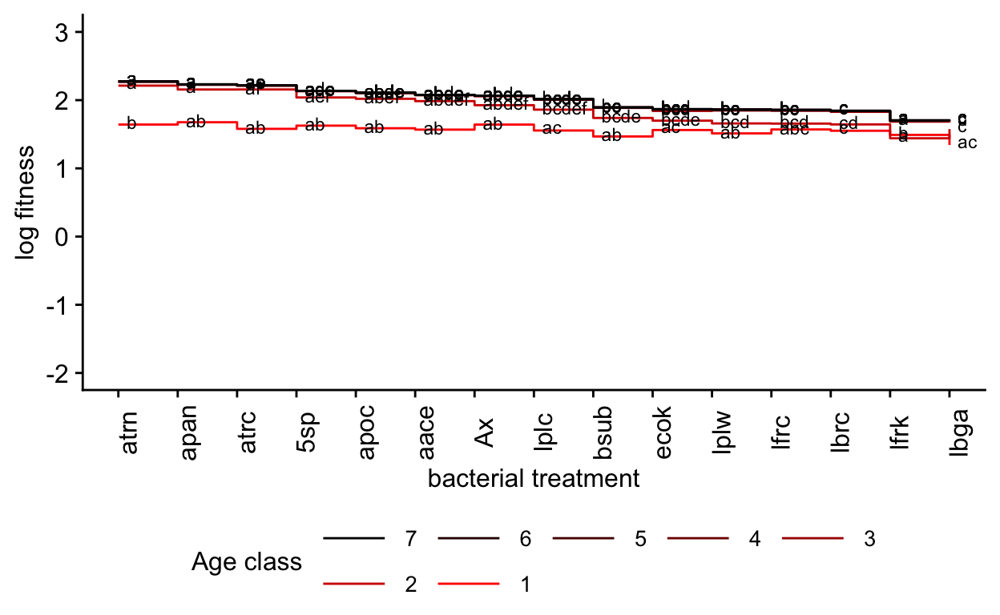
##
## [1] "######################################################"
## [1] "These are the statistics for age class 1 and survival divided by 100"
## [1] "chi-sq statistic: 35.76"
## [1] "df: 14"
## [1] "p: 0.00113"
##
## [1] "######################################################"
## [1] "These are the statistics for age class 2 and survival divided by 100"
## [1] "chi-sq statistic: 59.58"
## [1] "df: 14"
## [1] "p: 1.39e-07"
##
## [1] "######################################################"
## [1] "These are the statistics for age class 3 and survival divided by 100"
## [1] "chi-sq statistic: 62.63"
## [1] "df: 14"
## [1] "p: 4.04e-08"
##
## [1] "######################################################"
## [1] "These are the statistics for age class 4 and survival divided by 100"
## [1] "chi-sq statistic: 62.3"
## [1] "df: 14"
## [1] "p: 4.62e-08"
##
## [1] "######################################################"
## [1] "These are the statistics for age class 5 and survival divided by 100"
## [1] "chi-sq statistic: 62.37"
## [1] "df: 14"
## [1] "p: 4.48e-08"
##
## [1] "######################################################"
## [1] "These are the statistics for age class 6 and survival divided by 100"
## [1] "chi-sq statistic: 62.37"
## [1] "df: 14"
## [1] "p: 4.48e-08"
##
## [1] "######################################################"
## [1] "These are the statistics for age class 7 and survival divided by 100"
## [1] "chi-sq statistic: 62.37"
## [1] "df: 14"
## [1] "p: 4.48e-08"
## [1] 0.01
## [1] 7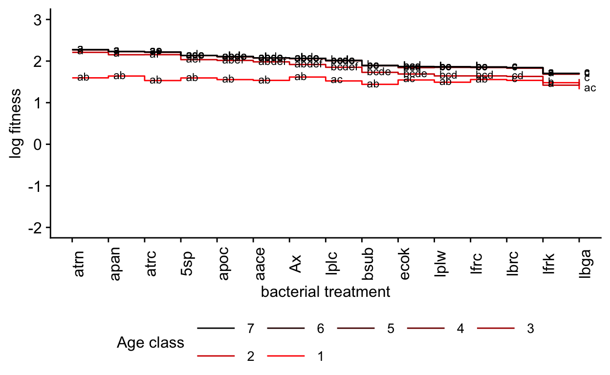
##
## [1] "######################################################"
## [1] "These are the statistics for age class 1 and survival divided by 200"
## [1] "chi-sq statistic: 34.77"
## [1] "df: 14"
## [1] "p: 0.00159"
##
## [1] "######################################################"
## [1] "These are the statistics for age class 2 and survival divided by 200"
## [1] "chi-sq statistic: 59.55"
## [1] "df: 14"
## [1] "p: 1.41e-07"
##
## [1] "######################################################"
## [1] "These are the statistics for age class 3 and survival divided by 200"
## [1] "chi-sq statistic: 62.63"
## [1] "df: 14"
## [1] "p: 4.04e-08"
##
## [1] "######################################################"
## [1] "These are the statistics for age class 4 and survival divided by 200"
## [1] "chi-sq statistic: 62.3"
## [1] "df: 14"
## [1] "p: 4.62e-08"
##
## [1] "######################################################"
## [1] "These are the statistics for age class 5 and survival divided by 200"
## [1] "chi-sq statistic: 62.37"
## [1] "df: 14"
## [1] "p: 4.48e-08"
##
## [1] "######################################################"
## [1] "These are the statistics for age class 6 and survival divided by 200"
## [1] "chi-sq statistic: 62.37"
## [1] "df: 14"
## [1] "p: 4.48e-08"
##
## [1] "######################################################"
## [1] "These are the statistics for age class 7 and survival divided by 200"
## [1] "chi-sq statistic: 62.37"
## [1] "df: 14"
## [1] "p: 4.48e-08"
## [1] 0.005
## [1] 7##
## [1] "######################################################"
## [1] "These are the statistics for age class 1 and survival divided by 1000"
## [1] "chi-sq statistic: 34.37"
## [1] "df: 14"
## [1] "p: 0.00182"
##
## [1] "######################################################"
## [1] "These are the statistics for age class 2 and survival divided by 1000"
## [1] "chi-sq statistic: 59.55"
## [1] "df: 14"
## [1] "p: 1.41e-07"
##
## [1] "######################################################"
## [1] "These are the statistics for age class 3 and survival divided by 1000"
## [1] "chi-sq statistic: 62.63"
## [1] "df: 14"
## [1] "p: 4.04e-08"
##
## [1] "######################################################"
## [1] "These are the statistics for age class 4 and survival divided by 1000"
## [1] "chi-sq statistic: 62.3"
## [1] "df: 14"
## [1] "p: 4.62e-08"
##
## [1] "######################################################"
## [1] "These are the statistics for age class 5 and survival divided by 1000"
## [1] "chi-sq statistic: 62.37"
## [1] "df: 14"
## [1] "p: 4.48e-08"
##
## [1] "######################################################"
## [1] "These are the statistics for age class 6 and survival divided by 1000"
## [1] "chi-sq statistic: 62.37"
## [1] "df: 14"
## [1] "p: 4.48e-08"
##
## [1] "######################################################"
## [1] "These are the statistics for age class 7 and survival divided by 1000"
## [1] "chi-sq statistic: 62.37"
## [1] "df: 14"
## [1] "p: 4.48e-08"
## [1] 0.001
## [1] 7##
## [1] "######################################################"
## [1] "These are the statistics for age class 1 and survival divided by 10000"
## [1] "chi-sq statistic: 34.32"
## [1] "df: 14"
## [1] "p: 0.00185"
##
## [1] "######################################################"
## [1] "These are the statistics for age class 2 and survival divided by 10000"
## [1] "chi-sq statistic: 59.55"
## [1] "df: 14"
## [1] "p: 1.41e-07"
##
## [1] "######################################################"
## [1] "These are the statistics for age class 3 and survival divided by 10000"
## [1] "chi-sq statistic: 62.63"
## [1] "df: 14"
## [1] "p: 4.04e-08"
##
## [1] "######################################################"
## [1] "These are the statistics for age class 4 and survival divided by 10000"
## [1] "chi-sq statistic: 62.3"
## [1] "df: 14"
## [1] "p: 4.62e-08"
##
## [1] "######################################################"
## [1] "These are the statistics for age class 5 and survival divided by 10000"
## [1] "chi-sq statistic: 62.37"
## [1] "df: 14"
## [1] "p: 4.48e-08"
##
## [1] "######################################################"
## [1] "These are the statistics for age class 6 and survival divided by 10000"
## [1] "chi-sq statistic: 62.37"
## [1] "df: 14"
## [1] "p: 4.48e-08"
##
## [1] "######################################################"
## [1] "These are the statistics for age class 7 and survival divided by 10000"
## [1] "chi-sq statistic: 62.37"
## [1] "df: 14"
## [1] "p: 4.48e-08"
## [1] 1e-04
## [1] 7##
## [1] "######################################################"
## [1] "These are the statistics for age class 1 and survival divided by 1e+05"
## [1] "chi-sq statistic: 34.32"
## [1] "df: 14"
## [1] "p: 0.00185"
##
## [1] "######################################################"
## [1] "These are the statistics for age class 2 and survival divided by 1e+05"
## [1] "chi-sq statistic: 59.55"
## [1] "df: 14"
## [1] "p: 1.41e-07"
##
## [1] "######################################################"
## [1] "These are the statistics for age class 3 and survival divided by 1e+05"
## [1] "chi-sq statistic: 62.63"
## [1] "df: 14"
## [1] "p: 4.04e-08"
##
## [1] "######################################################"
## [1] "These are the statistics for age class 4 and survival divided by 1e+05"
## [1] "chi-sq statistic: 62.3"
## [1] "df: 14"
## [1] "p: 4.62e-08"
##
## [1] "######################################################"
## [1] "These are the statistics for age class 5 and survival divided by 1e+05"
## [1] "chi-sq statistic: 62.37"
## [1] "df: 14"
## [1] "p: 4.48e-08"
##
## [1] "######################################################"
## [1] "These are the statistics for age class 6 and survival divided by 1e+05"
## [1] "chi-sq statistic: 62.37"
## [1] "df: 14"
## [1] "p: 4.48e-08"
##
## [1] "######################################################"
## [1] "These are the statistics for age class 7 and survival divided by 1e+05"
## [1] "chi-sq statistic: 62.37"
## [1] "df: 14"
## [1] "p: 4.48e-08"
## [1] 1e-05
## [1] 7Figure S5
Figure S5A
q=2
xgroup = unlist(p$group[q])
subset_vec = unlist(unname(p$vec[q]))
n = c(1,1)
rangevals <- c(1, .5,.1,.05, .01, 0.005,.001,.0005,0.0001,0.00001)
eigens <- data.frame(vial = factor(), trt = character(), exp = factor(), fitness = numeric(), mod_death = numeric())
for (m in rangevals) {
eigenvalue_df <- data.frame(vial = character(), trt = character(), exp = factor(), fitness = numeric())
distance = n
mod = m
subfitness <- fitness %>% filter(vial %in% subset_vec)
for(i in names(table(list(subfitness$trt)))) {
submat <- fitness %>%
filter(trt==i) %>%
filter(date3 == min(date3)) %>%
mutate(date3 = 0) %>%
mutate(fecundity = 0) %>%
rbind(fitness %>%
filter(trt==i) %>%
arrange(date3)
) %>%
rbind(fitness %>%
filter(trt == i) %>%
filter(date3 == max(date3)) %>%
mutate(date3 = max(date3)+1) %>%
mutate(fecundity = 0)
)
submat$s = 1
submat$f = 0
for (j in 1:(dim(submat)[1]-1)) {
submat$s[j] <- (submat$cum_female[j+1] / submat$cum_female[j])
submat$f[j] <- submat$fecundity[j] #* submat$s[j]
}
submat
leslie_mat <- matrix(data = c(unlist(submat$f[1:dim(submat)[1]])), nrow= 1)
if (n[1]>1) {
for (k in 1:(n[1]-1)) {
leslie_mat <- rbind(leslie_mat,
matrix(c(rep(0,k-1),submat$s[k],rep(0,(dim(submat)[1]-k))), nrow=1)
)
}
}
for (k in n[1]:min(n[2],(dim(submat)[1]-1))) {
leslie_mat <- rbind(leslie_mat,
matrix(c(rep(0,k-1),submat$s[k]*mod,rep(0,(dim(submat)[1]-k))), nrow=1)
)
}
if(n[2] < (dim(submat)[1]-1)) {
for(k in (n[2]+1):(dim(submat)[1]-1)) {
leslie_mat <- rbind(leslie_mat,
matrix(c(rep(0,k-1),submat$s[k],rep(0,(dim(submat)[1]-k))), nrow=1)
)
}
}
leslie_mat
eigenvalue_df <- eigenvalue_df %>% rbind(data.frame(vial = as.character(i), trt = as.character(submat$vial[1]), exp = as.factor(as.character(submat$date2[1])), fitness = as.numeric(eigen(leslie_mat)$values[1])))
}
eigens <- eigens %>% rbind(eigenvalue_df %>% mutate(mod_death = (m)))
}
eigens <- eigens %>% filter(trt%in%subset_vec) %>% droplevels()
eigens$trt <- factor(eigens$trt, levels = subset_vec)
eigens2 <- eigens %>% group_by(trt, mod_death) %>% summarize(meanfit = mean(fitness))
plot_colors <- colorRampPalette(c("red", "black"))
for(i in rangevals) {
eigen_stats <- eigens %>% filter(mod_death == (i)) %>% droplevels()
print(paste0("KW test when survival in age class 1 is reduced by a factor of ",1/as.numeric(as.character(i))))
print(kruskal.test(eigen_stats$fitness ~ eigen_stats$trt))
}## [1] "KW test when survival in age class 1 is reduced by a factor of 1"
##
## Kruskal-Wallis rank sum test
##
## data: eigen_stats$fitness by eigen_stats$trt
## Kruskal-Wallis chi-squared = 0.84585, df = 3, p-value = 0.8385
##
## [1] "KW test when survival in age class 1 is reduced by a factor of 2"
##
## Kruskal-Wallis rank sum test
##
## data: eigen_stats$fitness by eigen_stats$trt
## Kruskal-Wallis chi-squared = 0.8979, df = 3, p-value = 0.8259
##
## [1] "KW test when survival in age class 1 is reduced by a factor of 10"
##
## Kruskal-Wallis rank sum test
##
## data: eigen_stats$fitness by eigen_stats$trt
## Kruskal-Wallis chi-squared = 1.036, df = 3, p-value = 0.7925
##
## [1] "KW test when survival in age class 1 is reduced by a factor of 20"
##
## Kruskal-Wallis rank sum test
##
## data: eigen_stats$fitness by eigen_stats$trt
## Kruskal-Wallis chi-squared = 0.72973, df = 3, p-value = 0.8662
##
## [1] "KW test when survival in age class 1 is reduced by a factor of 100"
##
## Kruskal-Wallis rank sum test
##
## data: eigen_stats$fitness by eigen_stats$trt
## Kruskal-Wallis chi-squared = 1.3964, df = 3, p-value = 0.7064
##
## [1] "KW test when survival in age class 1 is reduced by a factor of 200"
##
## Kruskal-Wallis rank sum test
##
## data: eigen_stats$fitness by eigen_stats$trt
## Kruskal-Wallis chi-squared = 2.5996, df = 3, p-value = 0.4576
##
## [1] "KW test when survival in age class 1 is reduced by a factor of 1000"
##
## Kruskal-Wallis rank sum test
##
## data: eigen_stats$fitness by eigen_stats$trt
## Kruskal-Wallis chi-squared = 2.9279, df = 3, p-value = 0.4029
##
## [1] "KW test when survival in age class 1 is reduced by a factor of 2000"
##
## Kruskal-Wallis rank sum test
##
## data: eigen_stats$fitness by eigen_stats$trt
## Kruskal-Wallis chi-squared = 2.6436, df = 3, p-value = 0.4499
##
## [1] "KW test when survival in age class 1 is reduced by a factor of 10000"
##
## Kruskal-Wallis rank sum test
##
## data: eigen_stats$fitness by eigen_stats$trt
## Kruskal-Wallis chi-squared = 1.2903, df = 3, p-value = 0.7314
##
## [1] "KW test when survival in age class 1 is reduced by a factor of 1e+05"
##
## Kruskal-Wallis rank sum test
##
## data: eigen_stats$fitness by eigen_stats$trt
## Kruskal-Wallis chi-squared = 1.1141, df = 3, p-value = 0.7737print(ggplot(eigens2, aes(x = trt, y=meanfit,group = as.factor(mod_death), col = as.factor(mod_death), fill = as.factor(mod_death))) +
geom_step(aes(x = trt, y = meanfit)) +
scale_color_manual(values = plot_colors(length(rangevals)),
name = "survival reduced to") +
ylab("fitness") +
xlab("bacterial treatment") +
theme(legend.position = "bottom") +
guides(color = guide_legend(ncol = 5, byrow=T, reverse = T)) +
theme_cowplot() +
theme(legend.position = "bottom",
legend.text.align = 0,
legend.key.width = unit(.5,"in"),
text = element_text(size = 12),
legend.justification = "center")
)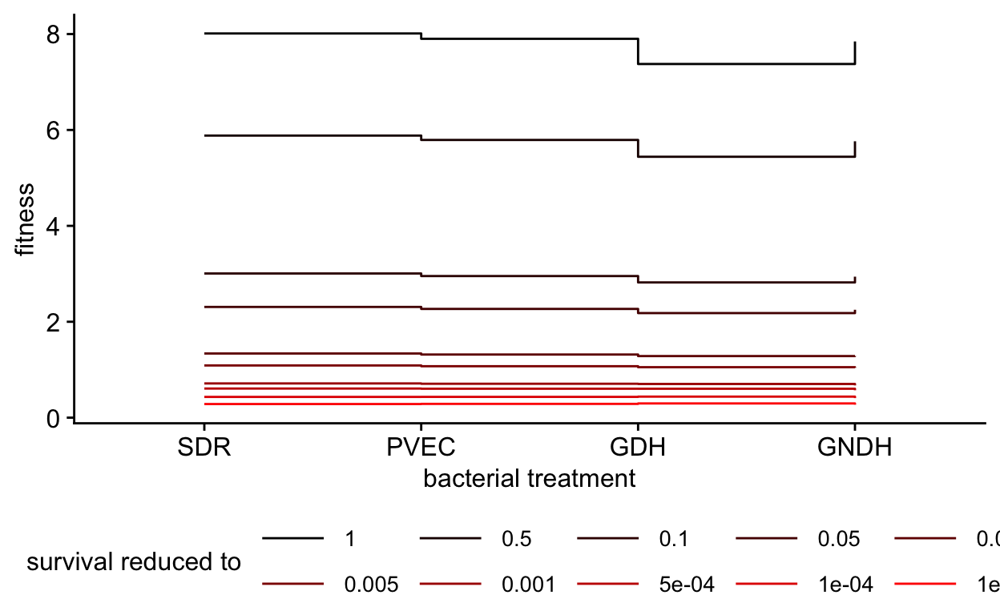
Figure S5B
q=3
xgroup = unlist(p$group[q])
subset_vec = unlist(unname(p$vec[q]))
rangevals <- c(1, .5,.1,.05, .01, 0.005,.001,.0005,0.0001,0.00001)
n = c(1,1)
eigens <- data.frame(vial = factor(), trt = character(), exp = factor(), fitness = numeric(), mod_death = numeric())
for (m in rangevals) {
eigenvalue_df <- data.frame(vial = character(), trt = character(), exp = factor(), fitness = numeric())
distance = n
mod = m
subfitness <- fitness %>% filter(vial %in% subset_vec)
for(i in names(table(list(subfitness$trt)))) {
submat <- fitness %>%
filter(trt==i) %>%
filter(date3 == min(date3)) %>%
mutate(date3 = 0) %>%
mutate(fecundity = 0) %>%
rbind(fitness %>%
filter(trt==i) %>%
arrange(date3)
) %>%
rbind(fitness %>%
filter(trt == i) %>%
filter(date3 == max(date3)) %>%
mutate(date3 = max(date3)+1) %>%
mutate(fecundity = 0)
)
submat$s = 1
submat$f = 0
for (j in 1:(dim(submat)[1]-1)) {
submat$s[j] <- (submat$cum_female[j+1] / submat$cum_female[j])
submat$f[j] <- submat$fecundity[j] #* submat$s[j]
}
submat
leslie_mat <- matrix(data = c(unlist(submat$f[1:dim(submat)[1]])), nrow= 1)
if (n[1]>1) {
for (k in 1:(n[1]-1)) {
leslie_mat <- rbind(leslie_mat,
matrix(c(rep(0,k-1),submat$s[k],rep(0,(dim(submat)[1]-k))), nrow=1)
)
}
}
for (k in n[1]:min(n[2],(dim(submat)[1]-1))) {
leslie_mat <- rbind(leslie_mat,
matrix(c(rep(0,k-1),submat$s[k]*mod,rep(0,(dim(submat)[1]-k))), nrow=1)
)
}
if(n[2] < (dim(submat)[1]-1)) {
for(k in (n[2]+1):(dim(submat)[1]-1)) {
leslie_mat <- rbind(leslie_mat,
matrix(c(rep(0,k-1),submat$s[k],rep(0,(dim(submat)[1]-k))), nrow=1)
)
}
}
leslie_mat
eigenvalue_df <- eigenvalue_df %>% rbind(data.frame(vial = as.character(i), trt = as.character(submat$vial[1]), exp = as.factor(as.character(submat$date2[1])), fitness = as.numeric(eigen(leslie_mat)$values[1])))
}
eigens <- eigens %>% rbind(eigenvalue_df %>% mutate(mod_death = (m)))
}
eigens <- eigens %>% filter(trt%in%subset_vec) %>% droplevels()
eigens$trt <- factor(eigens$trt, levels = subset_vec)
eigens2 <- eigens %>% group_by(trt, mod_death) %>% summarize(meanfit = mean(fitness))
plot_colors <- colorRampPalette(c("red", "black"))
for(i in rangevals) {
eigen_stats <- eigens %>% filter(mod_death == (i)) %>% droplevels()
efg <- wilcox.test(eigen_stats$fitness ~ eigen_stats$trt)
print(paste0("Wilcoxon test when survival in age class 1 is reduced by a factor of ",1/as.numeric(as.character(i))))
print(efg)
}## [1] "Wilcoxon test when survival in age class 1 is reduced by a factor of 1"
##
## Wilcoxon rank sum test
##
## data: eigen_stats$fitness by eigen_stats$trt
## W = 29, p-value = 0.8371
## alternative hypothesis: true location shift is not equal to 0
##
## [1] "Wilcoxon test when survival in age class 1 is reduced by a factor of 2"
##
## Wilcoxon rank sum test
##
## data: eigen_stats$fitness by eigen_stats$trt
## W = 30, p-value = 0.9182
## alternative hypothesis: true location shift is not equal to 0
##
## [1] "Wilcoxon test when survival in age class 1 is reduced by a factor of 10"
##
## Wilcoxon rank sum test
##
## data: eigen_stats$fitness by eigen_stats$trt
## W = 24, p-value = 0.4698
## alternative hypothesis: true location shift is not equal to 0
##
## [1] "Wilcoxon test when survival in age class 1 is reduced by a factor of 20"
##
## Wilcoxon rank sum test
##
## data: eigen_stats$fitness by eigen_stats$trt
## W = 25, p-value = 0.536
## alternative hypothesis: true location shift is not equal to 0
##
## [1] "Wilcoxon test when survival in age class 1 is reduced by a factor of 100"
##
## Wilcoxon rank sum test
##
## data: eigen_stats$fitness by eigen_stats$trt
## W = 28, p-value = 0.7577
## alternative hypothesis: true location shift is not equal to 0
##
## [1] "Wilcoxon test when survival in age class 1 is reduced by a factor of 200"
##
## Wilcoxon rank sum test
##
## data: eigen_stats$fitness by eigen_stats$trt
## W = 30, p-value = 0.9182
## alternative hypothesis: true location shift is not equal to 0
##
## [1] "Wilcoxon test when survival in age class 1 is reduced by a factor of 1000"
##
## Wilcoxon rank sum test
##
## data: eigen_stats$fitness by eigen_stats$trt
## W = 36, p-value = 0.6806
## alternative hypothesis: true location shift is not equal to 0
##
## [1] "Wilcoxon test when survival in age class 1 is reduced by a factor of 2000"
##
## Wilcoxon rank sum test
##
## data: eigen_stats$fitness by eigen_stats$trt
## W = 35, p-value = 0.7577
## alternative hypothesis: true location shift is not equal to 0
##
## [1] "Wilcoxon test when survival in age class 1 is reduced by a factor of 10000"
##
## Wilcoxon rank sum test
##
## data: eigen_stats$fitness by eigen_stats$trt
## W = 38, p-value = 0.536
## alternative hypothesis: true location shift is not equal to 0
##
## [1] "Wilcoxon test when survival in age class 1 is reduced by a factor of 1e+05"
##
## Wilcoxon rank sum test
##
## data: eigen_stats$fitness by eigen_stats$trt
## W = 41, p-value = 0.351
## alternative hypothesis: true location shift is not equal to 0 print(ggplot(eigens2, aes(x = trt, y=meanfit,group = as.factor(mod_death), col = as.factor(mod_death), fill = as.factor(mod_death))) +
geom_step(aes(x = trt, y = meanfit)) +
scale_color_manual(values = plot_colors(length(rangevals)),
name = "survival reduced to") +
ylab("fitness") +
xlab("bacterial treatment") +
theme(legend.position = "bottom") +
guides(color = guide_legend(ncol = 5, byrow=T, reverse = T)) +
theme_cowplot() +
theme(legend.position = "bottom",
legend.text.align = 0,
legend.key.width = unit(.5,"in"),
text = element_text(size = 12),
legend.justification = "center")
)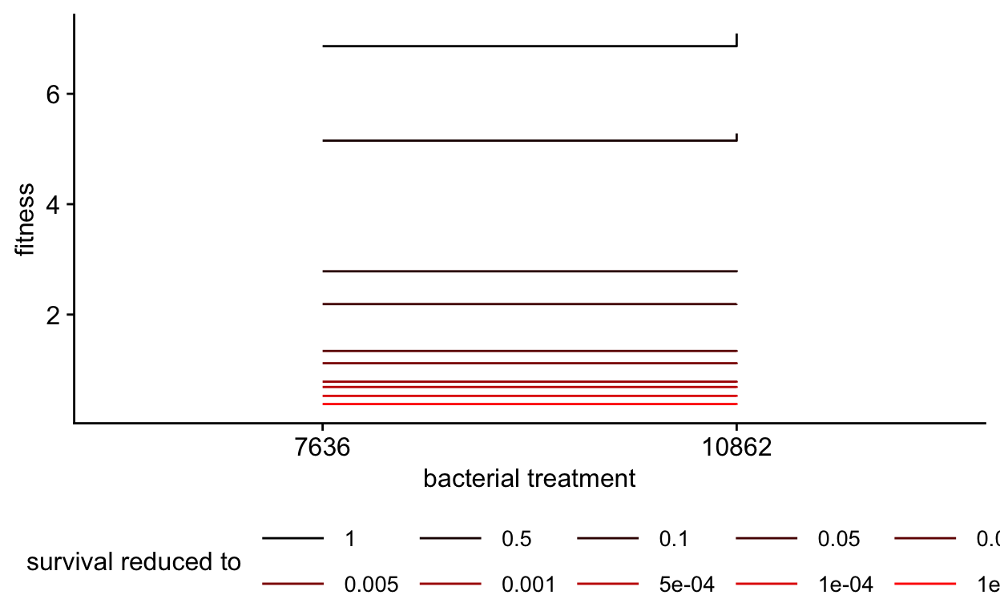
MGWA
parsed_data <- FormatAfterOrtho("https://raw.githubusercontent.com/johnchaston/dros_fit/data/groupsWP_052819.txt", format="groups")## reading in OrthoMCL data... done
## creating list of OG proteins... done
## creating presence absence matrix... done
##
## Exported list with Presence/Absence Matrix & list of OG Proteinspheno_data <- fitness_formgwa %>% filter(mod_death == 1) %>% filter(trt!="16i") %>% inner_join(lookup_code, by = c("trt"="code2")) %>% droplevels() %>% select(-fullname, -code1, -code3)
## show the data are normal
print("Show the data are normal")## [1] "Show the data are normal"shapiro.test(pheno_data$fitness)##
## Shapiro-Wilk normality test
##
## data: pheno_data$fitness
## W = 0.98288, p-value = 0.1317 ## Run the MGWA
print("Run the MGWA using a linear mixed effects model, with fitness as the response variable, bacterial species as a fixed effect, and experimental replicate as a random effect. Also, uses enough principal coordinates to represent half of the population structure in the data.")## [1] "Run the MGWA using a linear mixed effects model, with fitness as the response variable, bacterial species as a fixed effect, and experimental replicate as a random effect. Also, uses enough principal coordinates to represent half of the population structure in the data."mcl_matrix_lmer <- AnalyzeOrthoMCL(parsed_data,
pheno_data,
model = 'lmeR1',
species_name = 'new_filename',
resp = 'fitness',
rndm1 = "exp",
princ_coord = 0.5)## Importing Data
## Merging Files
## Running Analysis
## Percent Complete:
## 0%__2.3%__4.61%__6.91%__9.21%__11.52%__13.82%__16.12%__18.42%__20.73%__23.03%__25.33%__27.64%__29.94%__32.24%__34.55%__36.85%__39.15%__41.46%__43.76%__46.06%__48.36%__50.67%__52.97%__55.27%__57.58%__59.88%__62.18%__64.49%__66.79%__69.09%__71.4%__73.7%__76%__78.3%__80.61%__82.91%__85.21%__87.52%__89.82%__92.12%__94.43%__96.73%__99.03%__Finished!
## Cleaning Final OutputQQPlotter(mcl_matrix_lmer)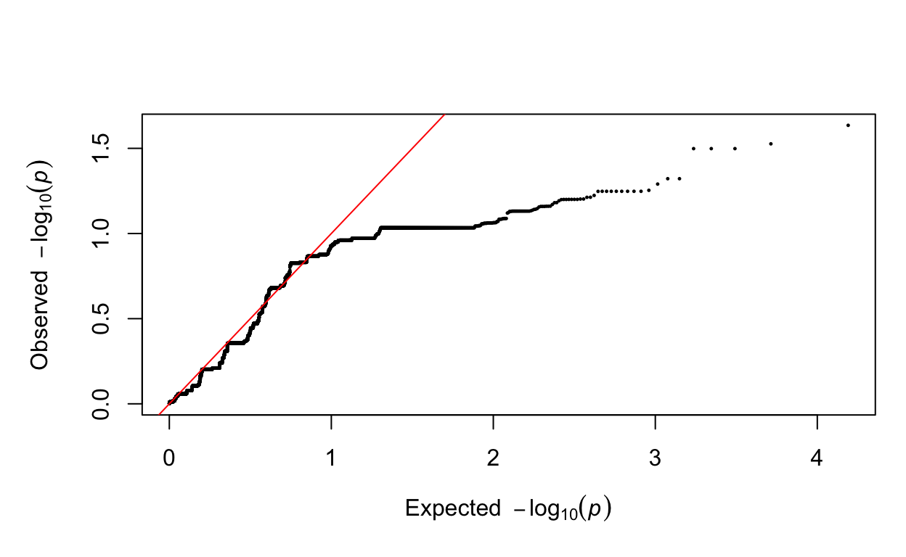
#joined_matrix_lmer <- JoinRepSeq(parsed_data, '~/Dropbox/Dietary Pref 2019/MGWA/precompliantfasta2/', mcl_matrix_lmer, fastaformat = 'old')
#WriteMCL(joined_matrix_lmer,"~/Dropbox/tradeoffs2/Oct2016-monoassociated_fecundity/redo2020/MGWA/wilcox_results_fitness_sep20_lmer_joined.csv")
mcl_matrix_lmer## OG pval1 corrected_pval1 mean_OGContain
## [1,] "WP40000003" "0.874496766577931" "1" "2.01032325086962"
## [2,] "WP40000004" "0.628280387241335" "1" "2.18324470518795"
## [3,] "WP40000005" "0.628280387241335" "1" "2.18324470518795"
## [4,] "WP40000444" "0.628280387241335" "1" "2.18324470518795"
## [5,] "WP40000621" "0.628280387241335" "1" "2.18324470518795"
## [6,] "WP40000710" "0.628280387241335" "1" "2.18324470518795"
## [7,] "WP40000761" "0.628280387241335" "1" "2.18324470518795"
## [8,] "WP40000809" "0.628280387241335" "1" "2.18324470518795"
## [9,] "WP40000882" "0.628280387241335" "1" "2.18324470518795"
## [10,] "WP40001100" "0.628280387241335" "1" "2.18324470518795"
## [11,] "WP40001279" "0.628280387241335" "1" "2.18324470518795"
## [12,] "WP40001286" "0.628280387241335" "1" "2.18324470518795"
## [13,] "WP40001307" "0.628280387241335" "1" "2.18324470518795"
## [14,] "WP40001363" "0.628280387241335" "1" "2.18324470518795"
## [15,] "WP40001369" "0.628280387241335" "1" "2.18324470518795"
## [16,] "WP40001499" "0.628280387241335" "1" "2.18324470518795"
## [17,] "WP40001500" "0.628280387241335" "1" "2.18324470518795"
## [18,] "WP40001501" "0.628280387241335" "1" "2.18324470518795"
## [19,] "WP40001502" "0.628280387241335" "1" "2.18324470518795"
## [20,] "WP40001505" "0.628280387241335" "1" "2.18324470518795"
## [21,] "WP40001506" "0.628280387241335" "1" "2.18324470518795"
## [22,] "WP40001507" "0.628280387241335" "1" "2.18324470518795"
## [23,] "WP40001508" "0.628280387241335" "1" "2.18324470518795"
## [24,] "WP40001509" "0.628280387241335" "1" "2.18324470518795"
## [25,] "WP40001510" "0.628280387241335" "1" "2.18324470518795"
## [26,] "WP40001511" "0.628280387241335" "1" "2.18324470518795"
## [27,] "WP40001512" "0.628280387241335" "1" "2.18324470518795"
## [28,] "WP40001513" "0.628280387241335" "1" "2.18324470518795"
## [29,] "WP40001514" "0.628280387241335" "1" "2.18324470518795"
## [30,] "WP40001515" "0.628280387241335" "1" "2.18324470518795"
## [31,] "WP40001516" "0.628280387241335" "1" "2.18324470518795"
## [32,] "WP40001517" "0.628280387241335" "1" "2.18324470518795"
## [33,] "WP40001518" "0.628280387241335" "1" "2.18324470518795"
## [34,] "WP40001520" "0.628280387241335" "1" "2.18324470518795"
## [35,] "WP40001521" "0.628280387241335" "1" "2.18324470518795"
## [36,] "WP40001523" "0.628280387241335" "1" "2.18324470518795"
## [37,] "WP40001525" "0.628280387241335" "1" "2.18324470518795"
## [38,] "WP40001526" "0.628280387241335" "1" "2.18324470518795"
## [39,] "WP40001528" "0.628280387241335" "1" "2.18324470518795"
## [40,] "WP40001529" "0.628280387241335" "1" "2.18324470518795"
## [41,] "WP40001530" "0.628280387241335" "1" "2.18324470518795"
## [42,] "WP40001531" "0.628280387241335" "1" "2.18324470518795"
## [43,] "WP40001532" "0.628280387241335" "1" "2.18324470518795"
## [44,] "WP40001533" "0.628280387241335" "1" "2.18324470518795"
## [45,] "WP40001534" "0.628280387241335" "1" "2.18324470518795"
## [46,] "WP40001535" "0.628280387241335" "1" "2.18324470518795"
## [47,] "WP40001537" "0.628280387241335" "1" "2.18324470518795"
## [48,] "WP40001538" "0.628280387241335" "1" "2.18324470518795"
## [49,] "WP40001539" "0.628280387241335" "1" "2.18324470518795"
## [50,] "WP40001540" "0.628280387241335" "1" "2.18324470518795"
## [51,] "WP40001541" "0.628280387241335" "1" "2.18324470518795"
## [52,] "WP40001543" "0.628280387241335" "1" "2.18324470518795"
## [53,] "WP40001544" "0.628280387241335" "1" "2.18324470518795"
## [54,] "WP40001546" "0.628280387241335" "1" "2.18324470518795"
## [55,] "WP40001547" "0.628280387241335" "1" "2.18324470518795"
## [56,] "WP40001549" "0.628280387241335" "1" "2.18324470518795"
## [57,] "WP40001550" "0.628280387241335" "1" "2.18324470518795"
## [58,] "WP40001551" "0.628280387241335" "1" "2.18324470518795"
## [59,] "WP40001552" "0.628280387241335" "1" "2.18324470518795"
## [60,] "WP40001553" "0.628280387241335" "1" "2.18324470518795"
## [61,] "WP40001554" "0.628280387241335" "1" "2.18324470518795"
## [62,] "WP40001555" "0.628280387241335" "1" "2.18324470518795"
## [63,] "WP40001556" "0.628280387241335" "1" "2.18324470518795"
## [64,] "WP40001557" "0.628280387241335" "1" "2.18324470518795"
## [65,] "WP40001558" "0.628280387241335" "1" "2.18324470518795"
## [66,] "WP40001559" "0.628280387241335" "1" "2.18324470518795"
## [67,] "WP40001561" "0.628280387241335" "1" "2.18324470518795"
## [68,] "WP40001562" "0.628280387241335" "1" "2.18324470518795"
## [69,] "WP40001564" "0.628280387241335" "1" "2.18324470518795"
## [70,] "WP40001565" "0.628280387241335" "1" "2.18324470518795"
## [71,] "WP40001566" "0.628280387241335" "1" "2.18324470518795"
## [72,] "WP40001567" "0.628280387241335" "1" "2.18324470518795"
## [73,] "WP40001569" "0.628280387241335" "1" "2.18324470518795"
## [74,] "WP40001570" "0.628280387241335" "1" "2.18324470518795"
## [75,] "WP40001571" "0.628280387241335" "1" "2.18324470518795"
## [76,] "WP40001572" "0.628280387241335" "1" "2.18324470518795"
## [77,] "WP40001573" "0.628280387241335" "1" "2.18324470518795"
## [78,] "WP40001574" "0.628280387241335" "1" "2.18324470518795"
## [79,] "WP40001575" "0.628280387241335" "1" "2.18324470518795"
## [80,] "WP40001576" "0.628280387241335" "1" "2.18324470518795"
## [81,] "WP40001577" "0.628280387241335" "1" "2.18324470518795"
## [82,] "WP40001578" "0.628280387241335" "1" "2.18324470518795"
## [83,] "WP40001580" "0.628280387241335" "1" "2.18324470518795"
## [84,] "WP40001581" "0.628280387241335" "1" "2.18324470518795"
## [85,] "WP40001582" "0.628280387241335" "1" "2.18324470518795"
## [86,] "WP40001584" "0.628280387241335" "1" "2.18324470518795"
## [87,] "WP40001585" "0.628280387241335" "1" "2.18324470518795"
## [88,] "WP40001586" "0.628280387241335" "1" "2.18324470518795"
## [89,] "WP40001587" "0.628280387241335" "1" "2.18324470518795"
## [90,] "WP40001588" "0.628280387241335" "1" "2.18324470518795"
## [91,] "WP40001590" "0.628280387241335" "1" "2.18324470518795"
## [92,] "WP40001592" "0.628280387241335" "1" "2.18324470518795"
## [93,] "WP40001593" "0.628280387241335" "1" "2.18324470518795"
## [94,] "WP40001595" "0.628280387241335" "1" "2.18324470518795"
## [95,] "WP40001596" "0.628280387241335" "1" "2.18324470518795"
## [96,] "WP40001597" "0.628280387241335" "1" "2.18324470518795"
## [97,] "WP40001598" "0.628280387241335" "1" "2.18324470518795"
## [98,] "WP40001599" "0.628280387241335" "1" "2.18324470518795"
## [99,] "WP40001601" "0.628280387241335" "1" "2.18324470518795"
## [100,] "WP40001602" "0.628280387241335" "1" "2.18324470518795"
## [101,] "WP40001605" "0.628280387241335" "1" "2.18324470518795"
## [102,] "WP40001606" "0.628280387241335" "1" "2.18324470518795"
## [103,] "WP40001607" "0.628280387241335" "1" "2.18324470518795"
## [104,] "WP40001608" "0.628280387241335" "1" "2.18324470518795"
## [105,] "WP40001609" "0.628280387241335" "1" "2.18324470518795"
## [106,] "WP40001610" "0.628280387241335" "1" "2.18324470518795"
## [107,] "WP40001611" "0.628280387241335" "1" "2.18324470518795"
## [108,] "WP40001612" "0.628280387241335" "1" "2.18324470518795"
## [109,] "WP40001613" "0.628280387241335" "1" "2.18324470518795"
## [110,] "WP40001614" "0.628280387241335" "1" "2.18324470518795"
## [111,] "WP40001615" "0.628280387241335" "1" "2.18324470518795"
## [112,] "WP40001616" "0.628280387241335" "1" "2.18324470518795"
## [113,] "WP40001617" "0.628280387241335" "1" "2.18324470518795"
## [114,] "WP40001618" "0.628280387241335" "1" "2.18324470518795"
## [115,] "WP40001619" "0.628280387241335" "1" "2.18324470518795"
## [116,] "WP40001620" "0.628280387241335" "1" "2.18324470518795"
## [117,] "WP40001621" "0.628280387241335" "1" "2.18324470518795"
## [118,] "WP40001622" "0.628280387241335" "1" "2.18324470518795"
## [119,] "WP40001623" "0.628280387241335" "1" "2.18324470518795"
## [120,] "WP40001624" "0.628280387241335" "1" "2.18324470518795"
## [121,] "WP40001625" "0.628280387241335" "1" "2.18324470518795"
## [122,] "WP40001626" "0.628280387241335" "1" "2.18324470518795"
## [123,] "WP40001627" "0.628280387241335" "1" "2.18324470518795"
## [124,] "WP40001628" "0.628280387241335" "1" "2.18324470518795"
## [125,] "WP40001629" "0.628280387241335" "1" "2.18324470518795"
## [126,] "WP40001630" "0.628280387241335" "1" "2.18324470518795"
## [127,] "WP40001631" "0.628280387241335" "1" "2.18324470518795"
## [128,] "WP40001633" "0.628280387241335" "1" "2.18324470518795"
## [129,] "WP40001636" "0.628280387241335" "1" "2.18324470518795"
## [130,] "WP40001637" "0.628280387241335" "1" "2.18324470518795"
## [131,] "WP40001638" "0.628280387241335" "1" "2.18324470518795"
## [132,] "WP40001639" "0.628280387241335" "1" "2.18324470518795"
## [133,] "WP40001640" "0.628280387241335" "1" "2.18324470518795"
## [134,] "WP40001641" "0.628280387241335" "1" "2.18324470518795"
## [135,] "WP40001643" "0.628280387241335" "1" "2.18324470518795"
## [136,] "WP40001644" "0.628280387241335" "1" "2.18324470518795"
## [137,] "WP40001645" "0.628280387241335" "1" "2.18324470518795"
## [138,] "WP40001648" "0.628280387241335" "1" "2.18324470518795"
## [139,] "WP40001649" "0.628280387241335" "1" "2.18324470518795"
## [140,] "WP40001650" "0.628280387241335" "1" "2.18324470518795"
## [141,] "WP40001651" "0.628280387241335" "1" "2.18324470518795"
## [142,] "WP40001652" "0.628280387241335" "1" "2.18324470518795"
## [143,] "WP40001653" "0.628280387241335" "1" "2.18324470518795"
## [144,] "WP40001654" "0.628280387241335" "1" "2.18324470518795"
## [145,] "WP40001655" "0.628280387241335" "1" "2.18324470518795"
## [146,] "WP40001656" "0.628280387241335" "1" "2.18324470518795"
## [147,] "WP40001658" "0.628280387241335" "1" "2.18324470518795"
## [148,] "WP40001659" "0.628280387241335" "1" "2.18324470518795"
## [149,] "WP40001660" "0.628280387241335" "1" "2.18324470518795"
## [150,] "WP40001661" "0.628280387241335" "1" "2.18324470518795"
## [151,] "WP40001662" "0.628280387241335" "1" "2.18324470518795"
## [152,] "WP40001663" "0.628280387241335" "1" "2.18324470518795"
## [153,] "WP40001664" "0.628280387241335" "1" "2.18324470518795"
## [154,] "WP40001665" "0.628280387241335" "1" "2.18324470518795"
## [155,] "WP40001666" "0.628280387241335" "1" "2.18324470518795"
## [156,] "WP40001667" "0.628280387241335" "1" "2.18324470518795"
## [157,] "WP40001669" "0.628280387241335" "1" "2.18324470518795"
## [158,] "WP40001670" "0.628280387241335" "1" "2.18324470518795"
## [159,] "WP40001671" "0.628280387241335" "1" "2.18324470518795"
## [160,] "WP40001672" "0.628280387241335" "1" "2.18324470518795"
## [161,] "WP40001674" "0.628280387241335" "1" "2.18324470518795"
## [162,] "WP40001676" "0.628280387241335" "1" "2.18324470518795"
## [163,] "WP40001677" "0.628280387241335" "1" "2.18324470518795"
## [164,] "WP40001678" "0.628280387241335" "1" "2.18324470518795"
## [165,] "WP40001679" "0.628280387241335" "1" "2.18324470518795"
## [166,] "WP40001680" "0.628280387241335" "1" "2.18324470518795"
## [167,] "WP40001681" "0.628280387241335" "1" "2.18324470518795"
## [168,] "WP40001682" "0.628280387241335" "1" "2.18324470518795"
## [169,] "WP40001683" "0.628280387241335" "1" "2.18324470518795"
## [170,] "WP40001684" "0.628280387241335" "1" "2.18324470518795"
## [171,] "WP40001685" "0.628280387241335" "1" "2.18324470518795"
## [172,] "WP40001686" "0.628280387241335" "1" "2.18324470518795"
## [173,] "WP40001687" "0.628280387241335" "1" "2.18324470518795"
## [174,] "WP40001688" "0.628280387241335" "1" "2.18324470518795"
## [175,] "WP40001689" "0.628280387241335" "1" "2.18324470518795"
## [176,] "WP40001691" "0.628280387241335" "1" "2.18324470518795"
## [177,] "WP40001692" "0.628280387241335" "1" "2.18324470518795"
## [178,] "WP40001693" "0.628280387241335" "1" "2.18324470518795"
## [179,] "WP40001696" "0.628280387241335" "1" "2.18324470518795"
## [180,] "WP40001698" "0.628280387241335" "1" "2.18324470518795"
## [181,] "WP40001700" "0.628280387241335" "1" "2.18324470518795"
## [182,] "WP40001702" "0.628280387241335" "1" "2.18324470518795"
## [183,] "WP40001703" "0.628280387241335" "1" "2.18324470518795"
## [184,] "WP40001705" "0.628280387241335" "1" "2.18324470518795"
## [185,] "WP40001706" "0.628280387241335" "1" "2.18324470518795"
## [186,] "WP40001707" "0.628280387241335" "1" "2.18324470518795"
## [187,] "WP40001708" "0.628280387241335" "1" "2.18324470518795"
## [188,] "WP40001709" "0.628280387241335" "1" "2.18324470518795"
## [189,] "WP40001710" "0.628280387241335" "1" "2.18324470518795"
## [190,] "WP40001711" "0.628280387241335" "1" "2.18324470518795"
## [191,] "WP40001713" "0.628280387241335" "1" "2.18324470518795"
## [192,] "WP40001714" "0.628280387241335" "1" "2.18324470518795"
## [193,] "WP40001715" "0.628280387241335" "1" "2.18324470518795"
## [194,] "WP40001716" "0.628280387241335" "1" "2.18324470518795"
## [195,] "WP40001720" "0.628280387241335" "1" "2.18324470518795"
## [196,] "WP40001721" "0.628280387241335" "1" "2.18324470518795"
## [197,] "WP40001722" "0.628280387241335" "1" "2.18324470518795"
## [198,] "WP40001723" "0.628280387241335" "1" "2.18324470518795"
## [199,] "WP40001724" "0.628280387241335" "1" "2.18324470518795"
## [200,] "WP40001725" "0.628280387241335" "1" "2.18324470518795"
## [201,] "WP40001726" "0.628280387241335" "1" "2.18324470518795"
## [202,] "WP40001727" "0.628280387241335" "1" "2.18324470518795"
## [203,] "WP40001730" "0.628280387241335" "1" "2.18324470518795"
## [204,] "WP40001731" "0.628280387241335" "1" "2.18324470518795"
## [205,] "WP40000006" "0.0925766113709323" "1" "1.968133713612"
## [206,] "WP40000117" "0.0925766113709323" "1" "1.968133713612"
## [207,] "WP40000338" "0.0925766113709323" "1" "1.968133713612"
## [208,] "WP40000342" "0.0925766113709323" "1" "1.968133713612"
## [209,] "WP40000362" "0.0925766113709323" "1" "1.968133713612"
## [210,] "WP40000010" "0.628280387241437" "1" "1.83933394417245"
## [211,] "WP40000011" "0.78388632788212" "1" "1.98377208285402"
## [212,] "WP40000012" "0.628280387241437" "1" "1.83933394417245"
## [213,] "WP40000013" "0.960058597390467" "1" "1.98541140596023"
## [214,] "WP40000100" "0.960058597390467" "1" "1.98541140596023"
## [215,] "WP40000155" "0.960058597390467" "1" "1.98541140596023"
## [216,] "WP40000274" "0.960058597390467" "1" "1.98541140596023"
## [217,] "WP40000344" "0.960058597390467" "1" "1.98541140596023"
## [218,] "WP40000361" "0.960058597390467" "1" "1.98541140596023"
## [219,] "WP40000367" "0.960058597390467" "1" "1.98541140596023"
## [220,] "WP40000379" "0.960058597390467" "1" "1.98541140596023"
## [221,] "WP40000390" "0.960058597390467" "1" "1.98541140596023"
## [222,] "WP40000396" "0.960058597390467" "1" "1.98541140596023"
## [223,] "WP40000016" "0.179901455191538" "1" "1.88522842594851"
## [224,] "WP40000024" "0.593838662315222" "1" "1.97353916195223"
## [225,] "WP40000025" "0.835350222759045" "1" "2.0939680572982"
## [226,] "WP40000619" "0.835350222759045" "1" "2.0939680572982"
## [227,] "WP40000737" "0.835350222759045" "1" "2.0939680572982"
## [228,] "WP40000765" "0.835350222759045" "1" "2.0939680572982"
## [229,] "WP40000780" "0.835350222759045" "1" "2.0939680572982"
## [230,] "WP40000783" "0.835350222759045" "1" "2.0939680572982"
## [231,] "WP40000816" "0.835350222759045" "1" "2.0939680572982"
## [232,] "WP40000819" "0.835350222759045" "1" "2.0939680572982"
## [233,] "WP40000823" "0.835350222759045" "1" "2.0939680572982"
## [234,] "WP40000844" "0.835350222759045" "1" "2.0939680572982"
## [235,] "WP40000884" "0.835350222759045" "1" "2.0939680572982"
## [236,] "WP40000906" "0.835350222759045" "1" "2.0939680572982"
## [237,] "WP40000908" "0.835350222759045" "1" "2.0939680572982"
## [238,] "WP40000977" "0.835350222759045" "1" "2.0939680572982"
## [239,] "WP40000978" "0.835350222759045" "1" "2.0939680572982"
## [240,] "WP40000981" "0.835350222759045" "1" "2.0939680572982"
## [241,] "WP40000986" "0.835350222759045" "1" "2.0939680572982"
## [242,] "WP40000988" "0.835350222759045" "1" "2.0939680572982"
## [243,] "WP40000992" "0.835350222759045" "1" "2.0939680572982"
## [244,] "WP40000994" "0.835350222759045" "1" "2.0939680572982"
## [245,] "WP40000995" "0.835350222759045" "1" "2.0939680572982"
## [246,] "WP40001003" "0.835350222759045" "1" "2.0939680572982"
## [247,] "WP40001004" "0.835350222759045" "1" "2.0939680572982"
## [248,] "WP40001005" "0.835350222759045" "1" "2.0939680572982"
## [249,] "WP40001011" "0.835350222759045" "1" "2.0939680572982"
## [250,] "WP40001012" "0.835350222759045" "1" "2.0939680572982"
## [251,] "WP40001013" "0.835350222759045" "1" "2.0939680572982"
## [252,] "WP40001015" "0.835350222759045" "1" "2.0939680572982"
## [253,] "WP40001016" "0.835350222759045" "1" "2.0939680572982"
## [254,] "WP40001019" "0.835350222759045" "1" "2.0939680572982"
## [255,] "WP40001020" "0.835350222759045" "1" "2.0939680572982"
## [256,] "WP40001025" "0.835350222759045" "1" "2.0939680572982"
## [257,] "WP40001029" "0.835350222759045" "1" "2.0939680572982"
## [258,] "WP40001034" "0.835350222759045" "1" "2.0939680572982"
## [259,] "WP40001035" "0.835350222759045" "1" "2.0939680572982"
## [260,] "WP40001040" "0.835350222759045" "1" "2.0939680572982"
## [261,] "WP40001041" "0.835350222759045" "1" "2.0939680572982"
## [262,] "WP40001044" "0.835350222759045" "1" "2.0939680572982"
## [263,] "WP40001045" "0.835350222759045" "1" "2.0939680572982"
## [264,] "WP40001046" "0.835350222759045" "1" "2.0939680572982"
## [265,] "WP40000032" "0.208298640524684" "1" "1.92241221926012"
## [266,] "WP40000038" "0.616731064808334" "1" "2.12863959622014"
## [267,] "WP40000616" "0.616731064808334" "1" "2.12863959622014"
## [268,] "WP40000622" "0.616731064808334" "1" "2.12863959622014"
## [269,] "WP40000674" "0.616731064808334" "1" "2.12863959622014"
## [270,] "WP40000757" "0.616731064808334" "1" "2.12863959622014"
## [271,] "WP40000769" "0.616731064808334" "1" "2.12863959622014"
## [272,] "WP40000772" "0.616731064808334" "1" "2.12863959622014"
## [273,] "WP40000788" "0.616731064808334" "1" "2.12863959622014"
## [274,] "WP40000812" "0.616731064808334" "1" "2.12863959622014"
## [275,] "WP40000848" "0.616731064808334" "1" "2.12863959622014"
## [276,] "WP40000866" "0.616731064808334" "1" "2.12863959622014"
## [277,] "WP40000880" "0.616731064808334" "1" "2.12863959622014"
## [278,] "WP40000881" "0.616731064808334" "1" "2.12863959622014"
## [279,] "WP40000964" "0.616731064808334" "1" "2.12863959622014"
## [280,] "WP40000965" "0.616731064808334" "1" "2.12863959622014"
## [281,] "WP40000969" "0.616731064808334" "1" "2.12863959622014"
## [282,] "WP40000979" "0.616731064808334" "1" "2.12863959622014"
## [283,] "WP40000982" "0.616731064808334" "1" "2.12863959622014"
## [284,] "WP40000985" "0.616731064808334" "1" "2.12863959622014"
## [285,] "WP40000993" "0.616731064808334" "1" "2.12863959622014"
## [286,] "WP40000997" "0.616731064808334" "1" "2.12863959622014"
## [287,] "WP40000998" "0.616731064808334" "1" "2.12863959622014"
## [288,] "WP40001000" "0.616731064808334" "1" "2.12863959622014"
## [289,] "WP40001006" "0.616731064808334" "1" "2.12863959622014"
## [290,] "WP40001009" "0.616731064808334" "1" "2.12863959622014"
## [291,] "WP40001014" "0.616731064808334" "1" "2.12863959622014"
## [292,] "WP40001017" "0.616731064808334" "1" "2.12863959622014"
## [293,] "WP40001028" "0.616731064808334" "1" "2.12863959622014"
## [294,] "WP40001032" "0.616731064808334" "1" "2.12863959622014"
## [295,] "WP40001048" "0.616731064808334" "1" "2.12863959622014"
## [296,] "WP40001097" "0.616731064808334" "1" "2.12863959622014"
## [297,] "WP40001119" "0.616731064808334" "1" "2.12863959622014"
## [298,] "WP40001121" "0.616731064808334" "1" "2.12863959622014"
## [299,] "WP40001122" "0.616731064808334" "1" "2.12863959622014"
## [300,] "WP40001123" "0.616731064808334" "1" "2.12863959622014"
## [301,] "WP40001124" "0.616731064808334" "1" "2.12863959622014"
## [302,] "WP40001125" "0.616731064808334" "1" "2.12863959622014"
## [303,] "WP40001126" "0.616731064808334" "1" "2.12863959622014"
## [304,] "WP40001127" "0.616731064808334" "1" "2.12863959622014"
## [305,] "WP40001128" "0.616731064808334" "1" "2.12863959622014"
## [306,] "WP40001129" "0.616731064808334" "1" "2.12863959622014"
## [307,] "WP40001130" "0.616731064808334" "1" "2.12863959622014"
## [308,] "WP40001131" "0.616731064808334" "1" "2.12863959622014"
## [309,] "WP40001132" "0.616731064808334" "1" "2.12863959622014"
## [310,] "WP40001133" "0.616731064808334" "1" "2.12863959622014"
## [311,] "WP40001134" "0.616731064808334" "1" "2.12863959622014"
## [312,] "WP40001135" "0.616731064808334" "1" "2.12863959622014"
## [313,] "WP40001136" "0.616731064808334" "1" "2.12863959622014"
## [314,] "WP40001137" "0.616731064808334" "1" "2.12863959622014"
## [315,] "WP40001138" "0.616731064808334" "1" "2.12863959622014"
## [316,] "WP40001139" "0.616731064808334" "1" "2.12863959622014"
## [317,] "WP40001140" "0.616731064808334" "1" "2.12863959622014"
## [318,] "WP40001142" "0.616731064808334" "1" "2.12863959622014"
## [319,] "WP40001143" "0.616731064808334" "1" "2.12863959622014"
## [320,] "WP40001144" "0.616731064808334" "1" "2.12863959622014"
## [321,] "WP40001145" "0.616731064808334" "1" "2.12863959622014"
## [322,] "WP40001146" "0.616731064808334" "1" "2.12863959622014"
## [323,] "WP40001147" "0.616731064808334" "1" "2.12863959622014"
## [324,] "WP40001148" "0.616731064808334" "1" "2.12863959622014"
## [325,] "WP40001149" "0.616731064808334" "1" "2.12863959622014"
## [326,] "WP40001150" "0.616731064808334" "1" "2.12863959622014"
## [327,] "WP40001152" "0.616731064808334" "1" "2.12863959622014"
## [328,] "WP40001153" "0.616731064808334" "1" "2.12863959622014"
## [329,] "WP40001154" "0.616731064808334" "1" "2.12863959622014"
## [330,] "WP40001155" "0.616731064808334" "1" "2.12863959622014"
## [331,] "WP40001156" "0.616731064808334" "1" "2.12863959622014"
## [332,] "WP40001157" "0.616731064808334" "1" "2.12863959622014"
## [333,] "WP40001159" "0.616731064808334" "1" "2.12863959622014"
## [334,] "WP40001160" "0.616731064808334" "1" "2.12863959622014"
## [335,] "WP40001162" "0.616731064808334" "1" "2.12863959622014"
## [336,] "WP40001163" "0.616731064808334" "1" "2.12863959622014"
## [337,] "WP40001164" "0.616731064808334" "1" "2.12863959622014"
## [338,] "WP40001165" "0.616731064808334" "1" "2.12863959622014"
## [339,] "WP40001168" "0.616731064808334" "1" "2.12863959622014"
## [340,] "WP40001169" "0.616731064808334" "1" "2.12863959622014"
## [341,] "WP40001170" "0.616731064808334" "1" "2.12863959622014"
## [342,] "WP40001171" "0.616731064808334" "1" "2.12863959622014"
## [343,] "WP40001172" "0.616731064808334" "1" "2.12863959622014"
## [344,] "WP40001173" "0.616731064808334" "1" "2.12863959622014"
## [345,] "WP40001175" "0.616731064808334" "1" "2.12863959622014"
## [346,] "WP40001176" "0.616731064808334" "1" "2.12863959622014"
## [347,] "WP40001177" "0.616731064808334" "1" "2.12863959622014"
## [348,] "WP40001179" "0.616731064808334" "1" "2.12863959622014"
## [349,] "WP40001180" "0.616731064808334" "1" "2.12863959622014"
## [350,] "WP40001182" "0.616731064808334" "1" "2.12863959622014"
## [351,] "WP40001184" "0.616731064808334" "1" "2.12863959622014"
## [352,] "WP40001185" "0.616731064808334" "1" "2.12863959622014"
## [353,] "WP40001186" "0.616731064808334" "1" "2.12863959622014"
## [354,] "WP40001187" "0.616731064808334" "1" "2.12863959622014"
## [355,] "WP40001189" "0.616731064808334" "1" "2.12863959622014"
## [356,] "WP40001191" "0.616731064808334" "1" "2.12863959622014"
## [357,] "WP40001192" "0.616731064808334" "1" "2.12863959622014"
## [358,] "WP40001193" "0.616731064808334" "1" "2.12863959622014"
## [359,] "WP40001195" "0.616731064808334" "1" "2.12863959622014"
## [360,] "WP40001196" "0.616731064808334" "1" "2.12863959622014"
## [361,] "WP40001198" "0.616731064808334" "1" "2.12863959622014"
## [362,] "WP40001200" "0.616731064808334" "1" "2.12863959622014"
## [363,] "WP40001201" "0.616731064808334" "1" "2.12863959622014"
## [364,] "WP40001202" "0.616731064808334" "1" "2.12863959622014"
## [365,] "WP40001203" "0.616731064808334" "1" "2.12863959622014"
## [366,] "WP40001204" "0.616731064808334" "1" "2.12863959622014"
## [367,] "WP40001205" "0.616731064808334" "1" "2.12863959622014"
## [368,] "WP40001206" "0.616731064808334" "1" "2.12863959622014"
## [369,] "WP40001207" "0.616731064808334" "1" "2.12863959622014"
## [370,] "WP40001210" "0.616731064808334" "1" "2.12863959622014"
## [371,] "WP40001212" "0.616731064808334" "1" "2.12863959622014"
## [372,] "WP40001213" "0.616731064808334" "1" "2.12863959622014"
## [373,] "WP40001214" "0.616731064808334" "1" "2.12863959622014"
## [374,] "WP40001215" "0.616731064808334" "1" "2.12863959622014"
## [375,] "WP40001216" "0.616731064808334" "1" "2.12863959622014"
## [376,] "WP40001217" "0.616731064808334" "1" "2.12863959622014"
## [377,] "WP40001219" "0.616731064808334" "1" "2.12863959622014"
## [378,] "WP40001223" "0.616731064808334" "1" "2.12863959622014"
## [379,] "WP40001224" "0.616731064808334" "1" "2.12863959622014"
## [380,] "WP40001225" "0.616731064808334" "1" "2.12863959622014"
## [381,] "WP40001226" "0.616731064808334" "1" "2.12863959622014"
## [382,] "WP40001229" "0.616731064808334" "1" "2.12863959622014"
## [383,] "WP40001230" "0.616731064808334" "1" "2.12863959622014"
## [384,] "WP40001231" "0.616731064808334" "1" "2.12863959622014"
## [385,] "WP40001232" "0.616731064808334" "1" "2.12863959622014"
## [386,] "WP40000041" "0.874496766577931" "1" "2.01032325086962"
## [387,] "WP40000046" "0.0925766113709323" "1" "1.968133713612"
## [388,] "WP40000049" "0.874496766577931" "1" "2.01032325086962"
## [389,] "WP40000051" "0.0925766113709323" "1" "1.968133713612"
## [390,] "WP40000055" "0.948420679347052" "1" "2.02297526009955"
## [391,] "WP40000056" "0.928780802503093" "1" "1.89392220789952"
## [392,] "WP40000057" "0.0925766113709323" "1" "1.968133713612"
## [393,] "WP40000164" "0.0925766113709323" "1" "1.968133713612"
## [394,] "WP40000058" "0.874496766577931" "1" "2.01032325086962"
## [395,] "WP40000059" "0.359147288700024" "1" "1.9641326927402"
## [396,] "WP40000356" "0.359147288700024" "1" "1.9641326927402"
## [397,] "WP40000060" "0.293732526132577" "1" "1.90160503235062"
## [398,] "WP40000062" "0.023164942908992" "1" "1.90909037850883"
## [399,] "WP40000063" "0.333825095239336" "1" "1.89296878645627"
## [400,] "WP40000064" "0.441140919482535" "1" "1.98612618195885"
## [401,] "WP40000323" "0.441140919482535" "1" "1.98612618195885"
## [402,] "WP40000325" "0.441140919482535" "1" "1.98612618195885"
## [403,] "WP40000413" "0.441140919482535" "1" "1.98612618195885"
## [404,] "WP40000437" "0.441140919482535" "1" "1.98612618195885"
## [405,] "WP40000065" "0.351875576379989" "1" "1.88951084817734"
## [406,] "WP40000069" "0.0925766113709323" "1" "1.968133713612"
## [407,] "WP40000071" "0.106624331647759" "1" "1.99537443913536"
## [408,] "WP40000073" "0.231336903925446" "1" "1.94136101943074"
## [409,] "WP40002665" "0.231336903925446" "1" "1.94136101943074"
## [410,] "WP40000075" "0.78388632788212" "1" "1.98377208285402"
## [411,] "WP40000077" "0.971929380993896" "1" "2.06219386772045"
## [412,] "WP40000082" "0.514022776107361" "1" "1.95413493679328"
## [413,] "WP40000083" "0.616731064808334" "1" "2.12863959622014"
## [414,] "WP40000984" "0.616731064808334" "1" "2.12863959622014"
## [415,] "WP40001105" "0.616731064808334" "1" "2.12863959622014"
## [416,] "WP40001455" "0.616731064808334" "1" "2.12863959622014"
## [417,] "WP40001461" "0.616731064808334" "1" "2.12863959622014"
## [418,] "WP40001463" "0.616731064808334" "1" "2.12863959622014"
## [419,] "WP40001464" "0.616731064808334" "1" "2.12863959622014"
## [420,] "WP40001465" "0.616731064808334" "1" "2.12863959622014"
## [421,] "WP40001466" "0.616731064808334" "1" "2.12863959622014"
## [422,] "WP40001467" "0.616731064808334" "1" "2.12863959622014"
## [423,] "WP40001469" "0.616731064808334" "1" "2.12863959622014"
## [424,] "WP40001470" "0.616731064808334" "1" "2.12863959622014"
## [425,] "WP40001471" "0.616731064808334" "1" "2.12863959622014"
## [426,] "WP40001472" "0.616731064808334" "1" "2.12863959622014"
## [427,] "WP40001474" "0.616731064808334" "1" "2.12863959622014"
## [428,] "WP40001475" "0.616731064808334" "1" "2.12863959622014"
## [429,] "WP40001476" "0.616731064808334" "1" "2.12863959622014"
## [430,] "WP40001477" "0.616731064808334" "1" "2.12863959622014"
## [431,] "WP40000086" "0.413888009826358" "1" "2.04651175617415"
## [432,] "WP40000087" "0.876491340317317" "1" "2.04350542765904"
## [433,] "WP40000088" "0.847646792849645" "1" "1.92560873137862"
## [434,] "WP40000090" "0.441140919482535" "1" "1.98612618195885"
## [435,] "WP40000092" "0.874496766577931" "1" "2.01032325086962"
## [436,] "WP40000430" "0.874496766577931" "1" "2.01032325086962"
## [437,] "WP40000093" "0.441140919482535" "1" "1.98612618195885"
## [438,] "WP40000472" "0.441140919482535" "1" "1.98612618195885"
## [439,] "WP40000094" "0.874496766577931" "1" "2.01032325086962"
## [440,] "WP40000095" "0.78388632788212" "1" "1.98377208285402"
## [441,] "WP40000343" "0.78388632788212" "1" "1.98377208285402"
## [442,] "WP40000097" "0.874496766577931" "1" "2.01032325086962"
## [443,] "WP40000098" "0.491202945740894" "1" "1.94064497434264"
## [444,] "WP40000102" "0.874496766577931" "1" "2.01032325086962"
## [445,] "WP40000103" "0.948420679347052" "1" "2.02297526009955"
## [446,] "WP40000104" "0.78388632788212" "1" "1.98377208285402"
## [447,] "WP40000106" "0.0565857201322588" "1" "2.01095687080513"
## [448,] "WP40000107" "0.960058597390467" "1" "1.98541140596023"
## [449,] "WP40000108" "0.870683023293502" "1" "2.08483494708972"
## [450,] "WP40000109" "0.874496766577931" "1" "2.01032325086962"
## [451,] "WP40000112" "0.0738960754972726" "1" "1.99806811923633"
## [452,] "WP40000271" "0.0738960754972726" "1" "1.99806811923633"
## [453,] "WP40000384" "0.0738960754972726" "1" "1.99806811923633"
## [454,] "WP40000126" "0.109617686610084" "1" "1.93887710480333"
## [455,] "WP40000129" "0.212189053293169" "1" "2.13787276523537"
## [456,] "WP40000130" "0.42864440719057" "1" "1.92741970279626"
## [457,] "WP40000143" "0.97325209583576" "1" "2.02400073397291"
## [458,] "WP40000144" "0.946442517291652" "1" "2.04381217637425"
## [459,] "WP40000145" "0.616731064788109" "1" "1.83476731590793"
## [460,] "WP40000935" "0.616731064788109" "1" "1.83476731590793"
## [461,] "WP40001245" "0.616731064788109" "1" "1.83476731590793"
## [462,] "WP40001248" "0.616731064788109" "1" "1.83476731590793"
## [463,] "WP40000148" "0.874496766577931" "1" "2.01032325086962"
## [464,] "WP40000149" "0.333989996781588" "1" "2.13260853233572"
## [465,] "WP40000151" "0.97325209583576" "1" "2.02400073397291"
## [466,] "WP40000452" "0.97325209583576" "1" "2.02400073397291"
## [467,] "WP40000454" "0.97325209583576" "1" "2.02400073397291"
## [468,] "WP40000459" "0.97325209583576" "1" "2.02400073397291"
## [469,] "WP40000460" "0.97325209583576" "1" "2.02400073397291"
## [470,] "WP40000461" "0.97325209583576" "1" "2.02400073397291"
## [471,] "WP40000463" "0.97325209583576" "1" "2.02400073397291"
## [472,] "WP40000467" "0.97325209583576" "1" "2.02400073397291"
## [473,] "WP40000157" "0.874496766577931" "1" "2.01032325086962"
## [474,] "WP40000161" "0.97325209583576" "1" "2.02400073397291"
## [475,] "WP40000167" "0.0866522359974278" "1" "1.98579155850664"
## [476,] "WP40000168" "0.946442517291652" "1" "2.04381217637425"
## [477,] "WP40000172" "0.259756878346089" "1" "1.97482937401193"
## [478,] "WP40000178" "0.109617686610084" "1" "1.93887710480333"
## [479,] "WP40000208" "0.0925766113709323" "1" "1.968133713612"
## [480,] "WP40000226" "0.231336903921815" "1" "1.98732734376941"
## [481,] "WP40000266" "0.97325209583576" "1" "2.02400073397291"
## [482,] "WP40000285" "0.0866522359974278" "1" "1.98579155850664"
## [483,] "WP40000317" "0.78388632788212" "1" "1.98377208285402"
## [484,] "WP40000318" "0.852766893416738" "1" "1.94580366065167"
## [485,] "WP40000320" "0.78388632788212" "1" "1.98377208285402"
## [486,] "WP40000321" "0.628280387241437" "1" "1.83933394417245"
## [487,] "WP40000698" "0.628280387241437" "1" "1.83933394417245"
## [488,] "WP40000717" "0.628280387241437" "1" "1.83933394417245"
## [489,] "WP40000833" "0.628280387241437" "1" "1.83933394417245"
## [490,] "WP40000837" "0.628280387241437" "1" "1.83933394417245"
## [491,] "WP40000849" "0.628280387241437" "1" "1.83933394417245"
## [492,] "WP40000855" "0.628280387241437" "1" "1.83933394417245"
## [493,] "WP40000927" "0.628280387241437" "1" "1.83933394417245"
## [494,] "WP40000937" "0.628280387241437" "1" "1.83933394417245"
## [495,] "WP40000938" "0.628280387241437" "1" "1.83933394417245"
## [496,] "WP40000989" "0.628280387241437" "1" "1.83933394417245"
## [497,] "WP40000990" "0.628280387241437" "1" "1.83933394417245"
## [498,] "WP40000996" "0.628280387241437" "1" "1.83933394417245"
## [499,] "WP40001001" "0.628280387241437" "1" "1.83933394417245"
## [500,] "WP40001027" "0.628280387241437" "1" "1.83933394417245"
## [501,] "WP40001039" "0.628280387241437" "1" "1.83933394417245"
## [502,] "WP40001047" "0.628280387241437" "1" "1.83933394417245"
## [503,] "WP40001055" "0.628280387241437" "1" "1.83933394417245"
## [504,] "WP40001057" "0.628280387241437" "1" "1.83933394417245"
## [505,] "WP40001058" "0.628280387241437" "1" "1.83933394417245"
## [506,] "WP40001059" "0.628280387241437" "1" "1.83933394417245"
## [507,] "WP40001062" "0.628280387241437" "1" "1.83933394417245"
## [508,] "WP40001064" "0.628280387241437" "1" "1.83933394417245"
## [509,] "WP40001066" "0.628280387241437" "1" "1.83933394417245"
## [510,] "WP40001067" "0.628280387241437" "1" "1.83933394417245"
## [511,] "WP40001068" "0.628280387241437" "1" "1.83933394417245"
## [512,] "WP40001069" "0.628280387241437" "1" "1.83933394417245"
## [513,] "WP40001070" "0.628280387241437" "1" "1.83933394417245"
## [514,] "WP40000351" "0.0925766113709323" "1" "1.968133713612"
## [515,] "WP40000354" "0.948420679347052" "1" "2.02297526009955"
## [516,] "WP40000371" "0.441140919482535" "1" "1.98612618195885"
## [517,] "WP40000372" "0.441140919482535" "1" "1.98612618195885"
## [518,] "WP40000373" "0.441140919482535" "1" "1.98612618195885"
## [519,] "WP40000374" "0.960058597390467" "1" "1.98541140596023"
## [520,] "WP40000378" "0.106624331647759" "1" "1.99537443913536"
## [521,] "WP40000385" "0.267891318405943" "1" "1.97361100519271"
## [522,] "WP40000391" "0.874496766577931" "1" "2.01032325086962"
## [523,] "WP40000397" "0.674724305834063" "1" "1.96689468566143"
## [524,] "WP40000398" "0.948420679347052" "1" "2.02297526009955"
## [525,] "WP40000399" "0.628280387241335" "1" "2.18324470518795"
## [526,] "WP40000513" "0.628280387241335" "1" "2.18324470518795"
## [527,] "WP40000873" "0.628280387241335" "1" "2.18324470518795"
## [528,] "WP40000879" "0.628280387241335" "1" "2.18324470518795"
## [529,] "WP40000962" "0.628280387241335" "1" "2.18324470518795"
## [530,] "WP40000966" "0.628280387241335" "1" "2.18324470518795"
## [531,] "WP40001010" "0.628280387241335" "1" "2.18324470518795"
## [532,] "WP40001090" "0.628280387241335" "1" "2.18324470518795"
## [533,] "WP40001104" "0.628280387241335" "1" "2.18324470518795"
## [534,] "WP40001115" "0.628280387241335" "1" "2.18324470518795"
## [535,] "WP40001174" "0.628280387241335" "1" "2.18324470518795"
## [536,] "WP40001190" "0.628280387241335" "1" "2.18324470518795"
## [537,] "WP40001292" "0.628280387241335" "1" "2.18324470518795"
## [538,] "WP40001294" "0.628280387241335" "1" "2.18324470518795"
## [539,] "WP40001296" "0.628280387241335" "1" "2.18324470518795"
## [540,] "WP40001305" "0.628280387241335" "1" "2.18324470518795"
## [541,] "WP40001309" "0.628280387241335" "1" "2.18324470518795"
## [542,] "WP40001311" "0.628280387241335" "1" "2.18324470518795"
## [543,] "WP40001312" "0.628280387241335" "1" "2.18324470518795"
## [544,] "WP40001313" "0.628280387241335" "1" "2.18324470518795"
## [545,] "WP40001314" "0.628280387241335" "1" "2.18324470518795"
## [546,] "WP40001319" "0.628280387241335" "1" "2.18324470518795"
## [547,] "WP40001327" "0.628280387241335" "1" "2.18324470518795"
## [548,] "WP40001329" "0.628280387241335" "1" "2.18324470518795"
## [549,] "WP40001330" "0.628280387241335" "1" "2.18324470518795"
## [550,] "WP40001333" "0.628280387241335" "1" "2.18324470518795"
## [551,] "WP40001335" "0.628280387241335" "1" "2.18324470518795"
## [552,] "WP40001336" "0.628280387241335" "1" "2.18324470518795"
## [553,] "WP40001340" "0.628280387241335" "1" "2.18324470518795"
## [554,] "WP40001346" "0.628280387241335" "1" "2.18324470518795"
## [555,] "WP40001354" "0.628280387241335" "1" "2.18324470518795"
## [556,] "WP40001358" "0.628280387241335" "1" "2.18324470518795"
## [557,] "WP40001360" "0.628280387241335" "1" "2.18324470518795"
## [558,] "WP40001361" "0.628280387241335" "1" "2.18324470518795"
## [559,] "WP40001362" "0.628280387241335" "1" "2.18324470518795"
## [560,] "WP40001365" "0.628280387241335" "1" "2.18324470518795"
## [561,] "WP40001367" "0.628280387241335" "1" "2.18324470518795"
## [562,] "WP40000400" "0.948420679347052" "1" "2.02297526009955"
## [563,] "WP40000401" "0.97535236848305" "1" "1.70148093788252"
## [564,] "WP40000402" "0.106624331647759" "1" "1.99537443913536"
## [565,] "WP40000403" "0.14754651160927" "1" "1.94916461497365"
## [566,] "WP40000405" "0.97325209583576" "1" "2.02400073397291"
## [567,] "WP40000406" "0.132999663941239" "1" "2.19392254976811"
## [568,] "WP40000407" "0.874496766577931" "1" "2.01032325086962"
## [569,] "WP40000408" "0.97325209583576" "1" "2.02400073397291"
## [570,] "WP40000409" "0.562263203863906" "1" "2.02578316144145"
## [571,] "WP40000412" "0.0925766113709323" "1" "1.968133713612"
## [572,] "WP40000414" "0.97325209583576" "1" "2.02400073397291"
## [573,] "WP40000415" "0.995463644748711" "1" "2.02539034582391"
## [574,] "WP40000417" "0.0738960754972726" "1" "1.99806811923633"
## [575,] "WP40000419" "0.519476289447759" "1" "1.97321643493208"
## [576,] "WP40000424" "0.441140919482535" "1" "1.98612618195885"
## [577,] "WP40000428" "0.267891318405943" "1" "1.97361100519271"
## [578,] "WP40000429" "0.0925766113709323" "1" "1.968133713612"
## [579,] "WP40000433" "0.77385966865718" "1" "1.99692190566976"
## [580,] "WP40000438" "0.441140919482535" "1" "1.98612618195885"
## [581,] "WP40000442" "0.639546796357482" "1" "2.06822882594592"
## [582,] "WP40000443" "0.216639414229925" "1" "1.9879462883256"
## [583,] "WP40000445" "0.42864440719057" "1" "1.92741970279626"
## [584,] "WP40000446" "0.153335764028568" "1" "1.99112994120154"
## [585,] "WP40000447" "0.741129259893969" "1" "2.01459070636648"
## [586,] "WP40000448" "0.449855717663021" "1" "2.06376849266602"
## [587,] "WP40000449" "0.874496766577931" "1" "2.01032325086962"
## [588,] "WP40000450" "0.97325209583576" "1" "2.02400073397291"
## [589,] "WP40000479" "0.97325209583576" "1" "2.02400073397291"
## [590,] "WP40000453" "0.874496766577931" "1" "2.01032325086962"
## [591,] "WP40000455" "0.441140919482535" "1" "1.98612618195885"
## [592,] "WP40000456" "0.125853867128414" "1" "1.93115865065732"
## [593,] "WP40000457" "0.441140919482535" "1" "1.98612618195885"
## [594,] "WP40000458" "0.669383009354031" "1" "1.98590015998714"
## [595,] "WP40000462" "0.975352368483773" "1" "2.00124141670049"
## [596,] "WP40000464" "0.874496766577931" "1" "2.01032325086962"
## [597,] "WP40000468" "0.441140919482535" "1" "1.98612618195885"
## [598,] "WP40000469" "0.876613157184828" "1" "1.98324243271749"
## [599,] "WP40000470" "0.0738960754972726" "1" "1.99806811923633"
## [600,] "WP40000471" "0.971929380993896" "1" "2.06219386772045"
## [601,] "WP40000473" "0.491202945740894" "1" "1.94064497434264"
## [602,] "WP40000474" "0.97325209583576" "1" "2.02400073397291"
## [603,] "WP40000481" "0.97325209583576" "1" "2.02400073397291"
## [604,] "WP40000475" "0.0738960754972726" "1" "1.99806811923633"
## [605,] "WP40000476" "0.97325209583576" "1" "2.02400073397291"
## [606,] "WP40000477" "0.874496766577931" "1" "2.01032325086962"
## [607,] "WP40000478" "0.169058329678013" "1" "1.96306994294384"
## [608,] "WP40000480" "0.499900150176487" "1" "2.04250428562279"
## [609,] "WP40000482" "0.499900150176487" "1" "2.04250428562279"
## [610,] "WP40000483" "0.135966249118102" "1" "1.86547347540137"
## [611,] "WP40000485" "0.397676664427263" "1" "1.97806191956961"
## [612,] "WP40000488" "0.441140919482535" "1" "1.98612618195885"
## [613,] "WP40000489" "0.616731064788109" "1" "1.83476731590793"
## [614,] "WP40000693" "0.616731064788109" "1" "1.83476731590793"
## [615,] "WP40001740" "0.616731064788109" "1" "1.83476731590793"
## [616,] "WP40000490" "0.562263203863906" "1" "2.02578316144145"
## [617,] "WP40000492" "0.875684995057445" "1" "2.04282741377497"
## [618,] "WP40000493" "0.97325209583576" "1" "2.02400073397291"
## [619,] "WP40000521" "0.97325209583576" "1" "2.02400073397291"
## [620,] "WP40000494" "0.832266029946696" "1" "1.97723463857652"
## [621,] "WP40000495" "0.775243135547851" "1" "2.02022860088732"
## [622,] "WP40000497" "0.0925766113709323" "1" "1.968133713612"
## [623,] "WP40000498" "0.995463644748711" "1" "2.02539034582391"
## [624,] "WP40000499" "0.874496766577931" "1" "2.01032325086962"
## [625,] "WP40000500" "0.835788438287273" "1" "1.99455662267929"
## [626,] "WP40000501" "0.499900150176487" "1" "2.04250428562279"
## [627,] "WP40000502" "0.499900150176487" "1" "2.04250428562279"
## [628,] "WP40000503" "0.874496766577931" "1" "2.01032325086962"
## [629,] "WP40000505" "0.874496766577931" "1" "2.01032325086962"
## [630,] "WP40000506" "0.0713266975332774" "1" "1.99555500794244"
## [631,] "WP40000508" "0.0642485761722769" "1" "2.02484998274951"
## [632,] "WP40000509" "0.78388632788212" "1" "1.98377208285402"
## [633,] "WP40000514" "0.97325209583576" "1" "2.02400073397291"
## [634,] "WP40000515" "0.946442517291652" "1" "2.04381217637425"
## [635,] "WP40000568" "0.946442517291652" "1" "2.04381217637425"
## [636,] "WP40000516" "0.199574637308301" "1" "2.06943677468471"
## [637,] "WP40000517" "0.874496766577931" "1" "2.01032325086962"
## [638,] "WP40000518" "0.97325209583576" "1" "2.02400073397291"
## [639,] "WP40000529" "0.97325209583576" "1" "2.02400073397291"
## [640,] "WP40000520" "0.78388632788212" "1" "1.98377208285402"
## [641,] "WP40000522" "0.874496766577931" "1" "2.01032325086962"
## [642,] "WP40000523" "0.5660680081703" "1" "2.04185418794455"
## [643,] "WP40000526" "0.97325209583576" "1" "2.02400073397291"
## [644,] "WP40000527" "0.937205038603144" "1" "2.03943776178887"
## [645,] "WP40000528" "0.267891318405943" "1" "1.97361100519271"
## [646,] "WP40000530" "0.832266029946696" "1" "1.97723463857652"
## [647,] "WP40000531" "0.0925766113709323" "1" "1.968133713612"
## [648,] "WP40000533" "0.90037973334328" "1" "2.01318721262"
## [649,] "WP40000534" "0.97325209583576" "1" "2.02400073397291"
## [650,] "WP40000535" "0.0738960754972726" "1" "1.99806811923633"
## [651,] "WP40000536" "0.562263203863906" "1" "2.02578316144145"
## [652,] "WP40000537" "0.876491340317317" "1" "2.04350542765904"
## [653,] "WP40000538" "0.575035894639547" "1" "2.02881222220099"
## [654,] "WP40000539" "0.994661210995895" "1" "2.13775227361446"
## [655,] "WP40000540" "0.870683023293502" "1" "2.08483494708972"
## [656,] "WP40000541" "0.97325209583576" "1" "2.02400073397291"
## [657,] "WP40000542" "0.874496766577931" "1" "2.01032325086962"
## [658,] "WP40000543" "0.946442517291652" "1" "2.04381217637425"
## [659,] "WP40000544" "0.97325209583576" "1" "2.02400073397291"
## [660,] "WP40000546" "0.97325209583576" "1" "2.02400073397291"
## [661,] "WP40000552" "0.97325209583576" "1" "2.02400073397291"
## [662,] "WP40000545" "0.851436094541907" "1" "2.04541478903962"
## [663,] "WP40000547" "0.97325209583576" "1" "2.02400073397291"
## [664,] "WP40000549" "0.946442517291652" "1" "2.04381217637425"
## [665,] "WP40000551" "0.14754651160927" "1" "1.94916461497365"
## [666,] "WP40000553" "0.97325209583576" "1" "2.02400073397291"
## [667,] "WP40000554" "0.960058597390467" "1" "1.98541140596023"
## [668,] "WP40000555" "0.971929380993896" "1" "2.06219386772045"
## [669,] "WP40000556" "0.106624331647759" "1" "1.99537443913536"
## [670,] "WP40000557" "0.874496766577931" "1" "2.01032325086962"
## [671,] "WP40000558" "0.397676664427263" "1" "1.97806191956961"
## [672,] "WP40000559" "0.297309424907831" "1" "1.92848596361785"
## [673,] "WP40000560" "0.835350222759045" "1" "2.0939680572982"
## [674,] "WP40000561" "0.262432130547941" "1" "1.92619342471361"
## [675,] "WP40000562" "0.616731064788109" "1" "1.83476731590793"
## [676,] "WP40000563" "0.105012663421549" "1" "1.98169647310971"
## [677,] "WP40000564" "0.97325209583576" "1" "2.02400073397291"
## [678,] "WP40000565" "0.97325209583576" "1" "2.02400073397291"
## [679,] "WP40000570" "0.97325209583576" "1" "2.02400073397291"
## [680,] "WP40000574" "0.97325209583576" "1" "2.02400073397291"
## [681,] "WP40000575" "0.97325209583576" "1" "2.02400073397291"
## [682,] "WP40000567" "0.97325209583576" "1" "2.02400073397291"
## [683,] "WP40000569" "0.97325209583576" "1" "2.02400073397291"
## [684,] "WP40000571" "0.499900150176487" "1" "2.04250428562279"
## [685,] "WP40000572" "0.835350222759045" "1" "2.0939680572982"
## [686,] "WP40000573" "0.582254490212744" "1" "2.01840526044943"
## [687,] "WP40000576" "0.499900150176487" "1" "2.04250428562279"
## [688,] "WP40000577" "0.12801967092757" "1" "1.99644601245544"
## [689,] "WP40000578" "0.946442517291652" "1" "2.04381217637425"
## [690,] "WP40000579" "0.874496766577931" "1" "2.01032325086962"
## [691,] "WP40000580" "0.874496766577931" "1" "2.01032325086962"
## [692,] "WP40000581" "0.97325209583576" "1" "2.02400073397291"
## [693,] "WP40000582" "0.212189053293169" "1" "2.13787276523537"
## [694,] "WP40000583" "0.270007513980508" "1" "1.96252754802692"
## [695,] "WP40000584" "0.628280387241335" "1" "2.18324470518795"
## [696,] "WP40001852" "0.628280387241335" "1" "2.18324470518795"
## [697,] "WP40001854" "0.628280387241335" "1" "2.18324470518795"
## [698,] "WP40001867" "0.628280387241335" "1" "2.18324470518795"
## [699,] "WP40000585" "0.768230772217599" "1" "1.9403585563074"
## [700,] "WP40000586" "0.835350222759045" "1" "2.0939680572982"
## [701,] "WP40000587" "0.369377283028133" "1" "2.03374242332986"
## [702,] "WP40000588" "0.0977975111212197" "1" "1.97314121375694"
## [703,] "WP40000589" "0.537822664090242" "1" "1.85651200191396"
## [704,] "WP40000692" "0.537822664090242" "1" "1.85651200191396"
## [705,] "WP40000718" "0.537822664090242" "1" "1.85651200191396"
## [706,] "WP40001400" "0.537822664090242" "1" "1.85651200191396"
## [707,] "WP40001933" "0.537822664090242" "1" "1.85651200191396"
## [708,] "WP40001936" "0.537822664090242" "1" "1.85651200191396"
## [709,] "WP40001937" "0.537822664090242" "1" "1.85651200191396"
## [710,] "WP40000590" "0.97325209583576" "1" "2.02400073397291"
## [711,] "WP40000591" "0.835350222759045" "1" "2.0939680572982"
## [712,] "WP40000592" "0.278893391644075" "1" "1.98943130864438"
## [713,] "WP40000593" "0.377195587193996" "1" "2.00389144936803"
## [714,] "WP40000594" "0.876491340317317" "1" "2.04350542765904"
## [715,] "WP40000595" "0.97325209583576" "1" "2.02400073397291"
## [716,] "WP40000596" "0.230481459922583" "1" "1.99954996345776"
## [717,] "WP40000597" "0.78388632788212" "1" "1.98377208285402"
## [718,] "WP40000599" "0.937205038603144" "1" "2.03943776178887"
## [719,] "WP40000600" "0.97325209583576" "1" "2.02400073397291"
## [720,] "WP40000601" "0.97325209583576" "1" "2.02400073397291"
## [721,] "WP40000602" "0.663273944440767" "1" "1.95660451929187"
## [722,] "WP40000603" "0.499900150176487" "1" "2.04250428562279"
## [723,] "WP40000604" "0.616731064788109" "1" "1.83476731590793"
## [724,] "WP40000683" "0.616731064788109" "1" "1.83476731590793"
## [725,] "WP40000803" "0.616731064788109" "1" "1.83476731590793"
## [726,] "WP40001072" "0.616731064788109" "1" "1.83476731590793"
## [727,] "WP40001112" "0.616731064788109" "1" "1.83476731590793"
## [728,] "WP40001242" "0.616731064788109" "1" "1.83476731590793"
## [729,] "WP40001289" "0.616731064788109" "1" "1.83476731590793"
## [730,] "WP40001295" "0.616731064788109" "1" "1.83476731590793"
## [731,] "WP40001308" "0.616731064788109" "1" "1.83476731590793"
## [732,] "WP40001326" "0.616731064788109" "1" "1.83476731590793"
## [733,] "WP40001339" "0.616731064788109" "1" "1.83476731590793"
## [734,] "WP40001351" "0.616731064788109" "1" "1.83476731590793"
## [735,] "WP40001375" "0.616731064788109" "1" "1.83476731590793"
## [736,] "WP40001378" "0.616731064788109" "1" "1.83476731590793"
## [737,] "WP40001379" "0.616731064788109" "1" "1.83476731590793"
## [738,] "WP40001380" "0.616731064788109" "1" "1.83476731590793"
## [739,] "WP40001381" "0.616731064788109" "1" "1.83476731590793"
## [740,] "WP40001382" "0.616731064788109" "1" "1.83476731590793"
## [741,] "WP40001384" "0.616731064788109" "1" "1.83476731590793"
## [742,] "WP40001385" "0.616731064788109" "1" "1.83476731590793"
## [743,] "WP40001388" "0.616731064788109" "1" "1.83476731590793"
## [744,] "WP40001389" "0.616731064788109" "1" "1.83476731590793"
## [745,] "WP40001390" "0.616731064788109" "1" "1.83476731590793"
## [746,] "WP40001391" "0.616731064788109" "1" "1.83476731590793"
## [747,] "WP40001392" "0.616731064788109" "1" "1.83476731590793"
## [748,] "WP40001393" "0.616731064788109" "1" "1.83476731590793"
## [749,] "WP40001394" "0.616731064788109" "1" "1.83476731590793"
## [750,] "WP40001395" "0.616731064788109" "1" "1.83476731590793"
## [751,] "WP40001396" "0.616731064788109" "1" "1.83476731590793"
## [752,] "WP40001401" "0.616731064788109" "1" "1.83476731590793"
## [753,] "WP40001403" "0.616731064788109" "1" "1.83476731590793"
## [754,] "WP40001404" "0.616731064788109" "1" "1.83476731590793"
## [755,] "WP40001405" "0.616731064788109" "1" "1.83476731590793"
## [756,] "WP40001406" "0.616731064788109" "1" "1.83476731590793"
## [757,] "WP40001407" "0.616731064788109" "1" "1.83476731590793"
## [758,] "WP40001408" "0.616731064788109" "1" "1.83476731590793"
## [759,] "WP40001409" "0.616731064788109" "1" "1.83476731590793"
## [760,] "WP40001410" "0.616731064788109" "1" "1.83476731590793"
## [761,] "WP40001411" "0.616731064788109" "1" "1.83476731590793"
## [762,] "WP40001412" "0.616731064788109" "1" "1.83476731590793"
## [763,] "WP40001413" "0.616731064788109" "1" "1.83476731590793"
## [764,] "WP40001415" "0.616731064788109" "1" "1.83476731590793"
## [765,] "WP40001416" "0.616731064788109" "1" "1.83476731590793"
## [766,] "WP40001417" "0.616731064788109" "1" "1.83476731590793"
## [767,] "WP40001418" "0.616731064788109" "1" "1.83476731590793"
## [768,] "WP40001419" "0.616731064788109" "1" "1.83476731590793"
## [769,] "WP40001420" "0.616731064788109" "1" "1.83476731590793"
## [770,] "WP40001421" "0.616731064788109" "1" "1.83476731590793"
## [771,] "WP40001422" "0.616731064788109" "1" "1.83476731590793"
## [772,] "WP40001423" "0.616731064788109" "1" "1.83476731590793"
## [773,] "WP40001424" "0.616731064788109" "1" "1.83476731590793"
## [774,] "WP40001425" "0.616731064788109" "1" "1.83476731590793"
## [775,] "WP40001426" "0.616731064788109" "1" "1.83476731590793"
## [776,] "WP40001427" "0.616731064788109" "1" "1.83476731590793"
## [777,] "WP40001430" "0.616731064788109" "1" "1.83476731590793"
## [778,] "WP40001432" "0.616731064788109" "1" "1.83476731590793"
## [779,] "WP40001433" "0.616731064788109" "1" "1.83476731590793"
## [780,] "WP40001434" "0.616731064788109" "1" "1.83476731590793"
## [781,] "WP40001436" "0.616731064788109" "1" "1.83476731590793"
## [782,] "WP40001437" "0.616731064788109" "1" "1.83476731590793"
## [783,] "WP40001438" "0.616731064788109" "1" "1.83476731590793"
## [784,] "WP40001439" "0.616731064788109" "1" "1.83476731590793"
## [785,] "WP40001440" "0.616731064788109" "1" "1.83476731590793"
## [786,] "WP40001442" "0.616731064788109" "1" "1.83476731590793"
## [787,] "WP40001443" "0.616731064788109" "1" "1.83476731590793"
## [788,] "WP40001444" "0.616731064788109" "1" "1.83476731590793"
## [789,] "WP40001445" "0.616731064788109" "1" "1.83476731590793"
## [790,] "WP40001446" "0.616731064788109" "1" "1.83476731590793"
## [791,] "WP40001447" "0.616731064788109" "1" "1.83476731590793"
## [792,] "WP40001448" "0.616731064788109" "1" "1.83476731590793"
## [793,] "WP40001449" "0.616731064788109" "1" "1.83476731590793"
## [794,] "WP40001454" "0.616731064788109" "1" "1.83476731590793"
## [795,] "WP40000605" "0.43141824512652" "1" "1.99284230655933"
## [796,] "WP40000606" "0.97325209583576" "1" "2.02400073397291"
## [797,] "WP40000609" "0.885281201441929" "1" "1.94621771662878"
## [798,] "WP40000610" "0.628280387241437" "1" "1.83933394417245"
## [799,] "WP40000611" "0.616731064788109" "1" "1.83476731590793"
## [800,] "WP40001236" "0.616731064788109" "1" "1.83476731590793"
## [801,] "WP40001376" "0.616731064788109" "1" "1.83476731590793"
## [802,] "WP40001494" "0.616731064788109" "1" "1.83476731590793"
## [803,] "WP40001913" "0.616731064788109" "1" "1.83476731590793"
## [804,] "WP40001922" "0.616731064788109" "1" "1.83476731590793"
## [805,] "WP40001923" "0.616731064788109" "1" "1.83476731590793"
## [806,] "WP40001924" "0.616731064788109" "1" "1.83476731590793"
## [807,] "WP40001928" "0.616731064788109" "1" "1.83476731590793"
## [808,] "WP40001931" "0.616731064788109" "1" "1.83476731590793"
## [809,] "WP40001935" "0.616731064788109" "1" "1.83476731590793"
## [810,] "WP40001938" "0.616731064788109" "1" "1.83476731590793"
## [811,] "WP40001946" "0.616731064788109" "1" "1.83476731590793"
## [812,] "WP40001948" "0.616731064788109" "1" "1.83476731590793"
## [813,] "WP40001951" "0.616731064788109" "1" "1.83476731590793"
## [814,] "WP40000612" "0.135966249118102" "1" "1.86547347540137"
## [815,] "WP40000682" "0.135966249118102" "1" "1.86547347540137"
## [816,] "WP40000613" "0.835350222759045" "1" "2.0939680572982"
## [817,] "WP40000614" "0.325482924441066" "1" "1.97550086669733"
## [818,] "WP40000615" "0.616731064808334" "1" "2.12863959622014"
## [819,] "WP40001080" "0.616731064808334" "1" "2.12863959622014"
## [820,] "WP40001718" "0.616731064808334" "1" "2.12863959622014"
## [821,] "WP40001798" "0.616731064808334" "1" "2.12863959622014"
## [822,] "WP40001800" "0.616731064808334" "1" "2.12863959622014"
## [823,] "WP40001804" "0.616731064808334" "1" "2.12863959622014"
## [824,] "WP40001805" "0.616731064808334" "1" "2.12863959622014"
## [825,] "WP40000617" "0.628280387241335" "1" "2.18324470518795"
## [826,] "WP40000618" "0.687120997420396" "1" "1.83060560499047"
## [827,] "WP40000620" "0.876491340317317" "1" "2.04350542765904"
## [828,] "WP40000673" "0.876491340317317" "1" "2.04350542765904"
## [829,] "WP40000623" "0.97325209583576" "1" "2.02400073397291"
## [830,] "WP40000624" "0.656187506806594" "1" "1.93799625433386"
## [831,] "WP40000625" "0.97325209583576" "1" "2.02400073397291"
## [832,] "WP40000626" "0.948420679347052" "1" "2.02297526009955"
## [833,] "WP40000627" "0.499900150176487" "1" "2.04250428562279"
## [834,] "WP40000628" "0.975352368483773" "1" "2.00124141670049"
## [835,] "WP40000629" "0.254180935659106" "1" "2.06324327143101"
## [836,] "WP40000630" "0.397676664427263" "1" "1.97806191956961"
## [837,] "WP40000631" "0.832266029946696" "1" "1.97723463857652"
## [838,] "WP40000632" "0.628280387241437" "1" "1.83933394417245"
## [839,] "WP40000633" "0.239543695318612" "1" "1.8893521770178"
## [840,] "WP40000634" "0.106624331647759" "1" "1.99537443913536"
## [841,] "WP40000635" "0.622016797819732" "1" "2.01200119735117"
## [842,] "WP40000636" "0.628280387241335" "1" "2.18324470518795"
## [843,] "WP40000734" "0.628280387241335" "1" "2.18324470518795"
## [844,] "WP40000870" "0.628280387241335" "1" "2.18324470518795"
## [845,] "WP40000871" "0.628280387241335" "1" "2.18324470518795"
## [846,] "WP40001081" "0.628280387241335" "1" "2.18324470518795"
## [847,] "WP40001281" "0.628280387241335" "1" "2.18324470518795"
## [848,] "WP40001284" "0.628280387241335" "1" "2.18324470518795"
## [849,] "WP40001583" "0.628280387241335" "1" "2.18324470518795"
## [850,] "WP40001776" "0.628280387241335" "1" "2.18324470518795"
## [851,] "WP40001781" "0.628280387241335" "1" "2.18324470518795"
## [852,] "WP40001783" "0.628280387241335" "1" "2.18324470518795"
## [853,] "WP40001784" "0.628280387241335" "1" "2.18324470518795"
## [854,] "WP40001785" "0.628280387241335" "1" "2.18324470518795"
## [855,] "WP40001786" "0.628280387241335" "1" "2.18324470518795"
## [856,] "WP40001788" "0.628280387241335" "1" "2.18324470518795"
## [857,] "WP40001789" "0.628280387241335" "1" "2.18324470518795"
## [858,] "WP40001790" "0.628280387241335" "1" "2.18324470518795"
## [859,] "WP40001793" "0.628280387241335" "1" "2.18324470518795"
## [860,] "WP40001795" "0.628280387241335" "1" "2.18324470518795"
## [861,] "WP40001802" "0.628280387241335" "1" "2.18324470518795"
## [862,] "WP40001806" "0.628280387241335" "1" "2.18324470518795"
## [863,] "WP40001810" "0.628280387241335" "1" "2.18324470518795"
## [864,] "WP40000637" "0.993154029709047" "1" "2.06826070863968"
## [865,] "WP40000638" "0.115294325269026" "1" "1.95128558081908"
## [866,] "WP40000639" "0.616731064808334" "1" "2.12863959622014"
## [867,] "WP40000666" "0.616731064808334" "1" "2.12863959622014"
## [868,] "WP40001345" "0.616731064808334" "1" "2.12863959622014"
## [869,] "WP40001372" "0.616731064808334" "1" "2.12863959622014"
## [870,] "WP40000640" "0.135966249100703" "1" "2.20733328542831"
## [871,] "WP40000641" "0.876491340317317" "1" "2.04350542765904"
## [872,] "WP40000672" "0.876491340317317" "1" "2.04350542765904"
## [873,] "WP40000642" "0.135261289879798" "1" "2.10278485309876"
## [874,] "WP40000643" "0.0961667539381528" "1" "2.03085249456487"
## [875,] "WP40000644" "0.120928201851927" "1" "2.02485314381884"
## [876,] "WP40000645" "0.872333141077586" "1" "1.85857585218211"
## [877,] "WP40000646" "0.109721233021387" "1" "1.86049153694894"
## [878,] "WP40000647" "0.835350222759045" "1" "2.0939680572982"
## [879,] "WP40000648" "0.946442517291652" "1" "2.04381217637425"
## [880,] "WP40000649" "0.795815483141925" "1" "2.00635165011267"
## [881,] "WP40000650" "0.270007513980508" "1" "1.96252754802692"
## [882,] "WP40000651" "0.995463644748711" "1" "2.02539034582391"
## [883,] "WP40000652" "0.971929380993896" "1" "2.06219386772045"
## [884,] "WP40000653" "0.126156736871868" "1" "1.94678028088807"
## [885,] "WP40000654" "0.263319540703684" "1" "2.08578777448555"
## [886,] "WP40000655" "0.971929380993896" "1" "2.06219386772045"
## [887,] "WP40000656" "0.798003679111446" "1" "2.06250049575505"
## [888,] "WP40000657" "0.239543695318612" "1" "1.8893521770178"
## [889,] "WP40000658" "0.639546796357482" "1" "2.06822882594592"
## [890,] "WP40000659" "0.628280387241437" "1" "1.83933394417245"
## [891,] "WP40000660" "0.941055647038151" "1" "2.06207592090972"
## [892,] "WP40000661" "0.491202945740894" "1" "1.94064497434264"
## [893,] "WP40000662" "0.97325209583576" "1" "2.02400073397291"
## [894,] "WP40000663" "0.333989996777983" "1" "1.87283172005931"
## [895,] "WP40000664" "0.835350222752168" "1" "1.82349313189577"
## [896,] "WP40000665" "0.97325209583576" "1" "2.02400073397291"
## [897,] "WP40000667" "0.135966249100703" "1" "2.20733328542831"
## [898,] "WP40000668" "0.995463644748711" "1" "2.02539034582391"
## [899,] "WP40000669" "0.526151830056502" "1" "1.86151205019621"
## [900,] "WP40000670" "0.90747980077337" "1" "1.83341414282726"
## [901,] "WP40000671" "0.687120997420396" "1" "1.83060560499047"
## [902,] "WP40000675" "0.835350222759045" "1" "2.0939680572982"
## [903,] "WP40000957" "0.835350222759045" "1" "2.0939680572982"
## [904,] "WP40001194" "0.835350222759045" "1" "2.0939680572982"
## [905,] "WP40001199" "0.835350222759045" "1" "2.0939680572982"
## [906,] "WP40000676" "0.971929380993896" "1" "2.06219386772045"
## [907,] "WP40000677" "0.0965060704411673" "1" "1.986608554115"
## [908,] "WP40000678" "0.230481459922583" "1" "1.99954996345776"
## [909,] "WP40000679" "0.628280387241437" "1" "1.83933394417245"
## [910,] "WP40000804" "0.628280387241437" "1" "1.83933394417245"
## [911,] "WP40000680" "0.205086775336672" "1" "2.06703212720184"
## [912,] "WP40000750" "0.205086775336672" "1" "2.06703212720184"
## [913,] "WP40000838" "0.205086775336672" "1" "2.06703212720184"
## [914,] "WP40000846" "0.205086775336672" "1" "2.06703212720184"
## [915,] "WP40000681" "0.971929380993896" "1" "2.06219386772045"
## [916,] "WP40000685" "0.135966249118102" "1" "1.86547347540137"
## [917,] "WP40000686" "0.835350222752168" "1" "1.82349313189577"
## [918,] "WP40002082" "0.835350222752168" "1" "1.82349313189577"
## [919,] "WP40002095" "0.835350222752168" "1" "1.82349313189577"
## [920,] "WP40002101" "0.835350222752168" "1" "1.82349313189577"
## [921,] "WP40002102" "0.835350222752168" "1" "1.82349313189577"
## [922,] "WP40002103" "0.835350222752168" "1" "1.82349313189577"
## [923,] "WP40002111" "0.835350222752168" "1" "1.82349313189577"
## [924,] "WP40002120" "0.835350222752168" "1" "1.82349313189577"
## [925,] "WP40002121" "0.835350222752168" "1" "1.82349313189577"
## [926,] "WP40000687" "0.292698763518079" "1" "1.99596620618105"
## [927,] "WP40000688" "0.115912998361206" "1" "1.8922383538258"
## [928,] "WP40000689" "0.97535236848305" "1" "1.70148093788252"
## [929,] "WP40000690" "0.069081141668438" "1" "2.03593808275046"
## [930,] "WP40000691" "0.135966249100703" "1" "2.20733328542831"
## [931,] "WP40002080" "0.135966249100703" "1" "2.20733328542831"
## [932,] "WP40002134" "0.135966249100703" "1" "2.20733328542831"
## [933,] "WP40002140" "0.135966249100703" "1" "2.20733328542831"
## [934,] "WP40002145" "0.135966249100703" "1" "2.20733328542831"
## [935,] "WP40002154" "0.135966249100703" "1" "2.20733328542831"
## [936,] "WP40000694" "0.45841117062447" "1" "2.02682217407648"
## [937,] "WP40000695" "0.835350222759045" "1" "2.0939680572982"
## [938,] "WP40000770" "0.835350222759045" "1" "2.0939680572982"
## [939,] "WP40000696" "0.139532061427122" "1" "2.08831339203566"
## [940,] "WP40000697" "0.441140919482535" "1" "1.98612618195885"
## [941,] "WP40000699" "0.82056191191678" "1" "2.06561618761295"
## [942,] "WP40000700" "0.876491340317317" "1" "2.04350542765904"
## [943,] "WP40000701" "0.5660680081703" "1" "2.04185418794455"
## [944,] "WP40000702" "0.835350222759045" "1" "2.0939680572982"
## [945,] "WP40000703" "0.139532061427122" "1" "2.08831339203566"
## [946,] "WP40000704" "0.0758470032710397" "1" "1.98414857425031"
## [947,] "WP40000705" "0.946442517291652" "1" "2.04381217637425"
## [948,] "WP40000706" "0.439475767212554" "1" "2.04643245160033"
## [949,] "WP40000707" "0.628280387241335" "1" "2.18324470518795"
## [950,] "WP40000708" "0.153907532866687" "1" "1.77685257192232"
## [951,] "WP40000709" "0.0870853508363798" "1" "1.81659241937112"
## [952,] "WP40000711" "0.696478511714562" "1" "2.01210416075685"
## [953,] "WP40000712" "0.135966249100703" "1" "2.20733328542831"
## [954,] "WP40002288" "0.135966249100703" "1" "2.20733328542831"
## [955,] "WP40000713" "0.0557640473206418" "1" "1.99620808589072"
## [956,] "WP40000714" "0.0675406491237169" "1" "2.13209010130802"
## [957,] "WP40000715" "0.105488936062057" "1" "1.83103951765035"
## [958,] "WP40000716" "0.835350222759045" "1" "2.0939680572982"
## [959,] "WP40000719" "0.369377283028133" "1" "2.03374242332986"
## [960,] "WP40000720" "0.348806048549315" "1" "2.01927316161344"
## [961,] "WP40000721" "0.97325209583576" "1" "2.02400073397291"
## [962,] "WP40000722" "0.628280387241437" "1" "1.83933394417245"
## [963,] "WP40000723" "0.835350222752168" "1" "1.82349313189577"
## [964,] "WP40000724" "0.876491340317317" "1" "2.04350542765904"
## [965,] "WP40000725" "0.876491340317317" "1" "2.04350542765904"
## [966,] "WP40000729" "0.876491340317317" "1" "2.04350542765904"
## [967,] "WP40000726" "0.348806048549315" "1" "2.01927316161344"
## [968,] "WP40000727" "0.0961667539381528" "1" "2.03085249456487"
## [969,] "WP40000728" "0.0691823401000862" "1" "1.94808893324165"
## [970,] "WP40000730" "0.239543695318612" "1" "1.8893521770178"
## [971,] "WP40000731" "0.916786407958111" "1" "1.8609652396337"
## [972,] "WP40000822" "0.916786407958111" "1" "1.8609652396337"
## [973,] "WP40000732" "0.179901455191538" "1" "1.88522842594851"
## [974,] "WP40000733" "0.77894280276341" "1" "2.04625470511876"
## [975,] "WP40000735" "0.628280387241335" "1" "2.18324470518795"
## [976,] "WP40001853" "0.628280387241335" "1" "2.18324470518795"
## [977,] "WP40001897" "0.628280387241335" "1" "2.18324470518795"
## [978,] "WP40000736" "0.5660680081703" "1" "2.04185418794455"
## [979,] "WP40000738" "0.876491340317317" "1" "2.04350542765904"
## [980,] "WP40000739" "0.0722566264906259" "1" "1.96885185058481"
## [981,] "WP40000740" "0.175043778877822" "1" "2.11021074080155"
## [982,] "WP40000741" "0.835350222759045" "1" "2.0939680572982"
## [983,] "WP40000742" "0.876491340317317" "1" "2.04350542765904"
## [984,] "WP40000743" "0.582254490212744" "1" "2.01840526044943"
## [985,] "WP40000744" "0.835350222752168" "1" "1.82349313189577"
## [986,] "WP40001071" "0.835350222752168" "1" "1.82349313189577"
## [987,] "WP40001342" "0.835350222752168" "1" "1.82349313189577"
## [988,] "WP40001377" "0.835350222752168" "1" "1.82349313189577"
## [989,] "WP40000745" "0.259756878346089" "1" "1.97482937401193"
## [990,] "WP40000746" "0.258396847386871" "1" "2.03907294521035"
## [991,] "WP40000747" "0.876491340317317" "1" "2.04350542765904"
## [992,] "WP40000748" "0.14250607338803" "1" "1.86649985939497"
## [993,] "WP40000749" "0.971929380993896" "1" "2.06219386772045"
## [994,] "WP40000751" "0.687120997423024" "1" "2.13312143874663"
## [995,] "WP40000752" "0.835350222759045" "1" "2.0939680572982"
## [996,] "WP40000753" "0.42864440719057" "1" "1.92741970279626"
## [997,] "WP40000754" "0.640593226474909" "1" "2.03491783180681"
## [998,] "WP40000755" "0.946442517291652" "1" "2.04381217637425"
## [999,] "WP40000756" "0.92238012901419" "1" "2.00270735367531"
## [1000,] "WP40000758" "0.835350222759045" "1" "2.0939680572982"
## [1001,] "WP40000759" "0.135966249118102" "1" "1.86547347540137"
## [1002,] "WP40000760" "0.231336903925446" "1" "1.94136101943074"
## [1003,] "WP40000762" "0.199574637298477" "1" "1.85533160507497"
## [1004,] "WP40000763" "0.616731064788109" "1" "1.83476731590793"
## [1005,] "WP40001181" "0.616731064788109" "1" "1.83476731590793"
## [1006,] "WP40000764" "0.876491340317317" "1" "2.04350542765904"
## [1007,] "WP40000821" "0.876491340317317" "1" "2.04350542765904"
## [1008,] "WP40000895" "0.876491340317317" "1" "2.04350542765904"
## [1009,] "WP40000899" "0.876491340317317" "1" "2.04350542765904"
## [1010,] "WP40000907" "0.876491340317317" "1" "2.04350542765904"
## [1011,] "WP40000766" "0.202160559475276" "1" "1.86164566021709"
## [1012,] "WP40000767" "0.671831104492156" "1" "2.06698118090679"
## [1013,] "WP40000768" "0.993154029709047" "1" "2.06826070863968"
## [1014,] "WP40000771" "0.810633123174055" "1" "1.86395308648895"
## [1015,] "WP40000773" "0.628280387241335" "1" "2.18324470518795"
## [1016,] "WP40000774" "0.616731064788109" "1" "1.83476731590793"
## [1017,] "WP40000775" "0.423524412394818" "1" "2.17225938305664"
## [1018,] "WP40000776" "0.709459387286047" "1" "2.00392158315136"
## [1019,] "WP40000777" "0.308447134079986" "1" "2.1380284349259"
## [1020,] "WP40000778" "0.669726461263422" "1" "2.00303478063553"
## [1021,] "WP40000779" "0.628280387241437" "1" "1.83933394417245"
## [1022,] "WP40000781" "0.628280387241437" "1" "1.83933394417245"
## [1023,] "WP40000865" "0.628280387241437" "1" "1.83933394417245"
## [1024,] "WP40000930" "0.628280387241437" "1" "1.83933394417245"
## [1025,] "WP40000933" "0.628280387241437" "1" "1.83933394417245"
## [1026,] "WP40000972" "0.628280387241437" "1" "1.83933394417245"
## [1027,] "WP40001220" "0.628280387241437" "1" "1.83933394417245"
## [1028,] "WP40001241" "0.628280387241437" "1" "1.83933394417245"
## [1029,] "WP40001244" "0.628280387241437" "1" "1.83933394417245"
## [1030,] "WP40001246" "0.628280387241437" "1" "1.83933394417245"
## [1031,] "WP40001251" "0.628280387241437" "1" "1.83933394417245"
## [1032,] "WP40000782" "0.183088995927097" "1" "1.92308876842798"
## [1033,] "WP40000784" "0.835350222759045" "1" "2.0939680572982"
## [1034,] "WP40000785" "0.770071347325882" "1" "2.0889827917993"
## [1035,] "WP40000786" "0.5660680081703" "1" "2.04185418794455"
## [1036,] "WP40000787" "0.239543695318612" "1" "1.8893521770178"
## [1037,] "WP40000789" "0.347648539238682" "1" "2.03348109842269"
## [1038,] "WP40000790" "0.606739971822318" "1" "1.89566794795412"
## [1039,] "WP40000791" "0.212189053293169" "1" "2.13787276523537"
## [1040,] "WP40000792" "0.835350222759045" "1" "2.0939680572982"
## [1041,] "WP40000885" "0.835350222759045" "1" "2.0939680572982"
## [1042,] "WP40001317" "0.835350222759045" "1" "2.0939680572982"
## [1043,] "WP40000793" "0.870683023293502" "1" "2.08483494708972"
## [1044,] "WP40000794" "0.311692794119793" "1" "2.01971614860627"
## [1045,] "WP40000795" "0.832266029946696" "1" "1.97723463857652"
## [1046,] "WP40000796" "0.916786407958111" "1" "1.8609652396337"
## [1047,] "WP40000797" "0.491202945740894" "1" "1.94064497434264"
## [1048,] "WP40000798" "0.616731064808334" "1" "2.12863959622014"
## [1049,] "WP40000799" "0.139532061427122" "1" "2.08831339203566"
## [1050,] "WP40000800" "0.628280387241335" "1" "2.18324470518795"
## [1051,] "WP40000801" "0.479771605981569" "1" "2.1250269488311"
## [1052,] "WP40000802" "0.835350222752168" "1" "1.82349313189577"
## [1053,] "WP40000805" "0.875684995057445" "1" "2.04282741377497"
## [1054,] "WP40000806" "0.108592705793818" "1" "2.00886130095799"
## [1055,] "WP40000807" "0.875684995057445" "1" "2.04282741377497"
## [1056,] "WP40000808" "0.783886327891543" "1" "1.89364361019368"
## [1057,] "WP40000810" "0.29094094124856" "1" "2.20271853559031"
## [1058,] "WP40000811" "0.321510647116404" "1" "2.0624721373607"
## [1059,] "WP40000813" "0.416978495564243" "1" "2.00702816938035"
## [1060,] "WP40000814" "0.459658237494273" "1" "2.08578108681221"
## [1061,] "WP40000815" "0.133539308633038" "1" "1.96478076520428"
## [1062,] "WP40000817" "0.835350222759045" "1" "2.0939680572982"
## [1063,] "WP40000820" "0.687120997423024" "1" "2.13312143874663"
## [1064,] "WP40000824" "0.872333141077586" "1" "1.85857585218211"
## [1065,] "WP40000825" "0.835350222752168" "1" "1.82349313189577"
## [1066,] "WP40002089" "0.835350222752168" "1" "1.82349313189577"
## [1067,] "WP40002231" "0.835350222752168" "1" "1.82349313189577"
## [1068,] "WP40000826" "0.872333141077586" "1" "1.85857585218211"
## [1069,] "WP40000827" "0.835350222752168" "1" "1.82349313189577"
## [1070,] "WP40000828" "0.779787788814666" "1" "1.99258809276929"
## [1071,] "WP40000829" "0.655052438777384" "1" "1.9735817495241"
## [1072,] "WP40000830" "0.616731064808334" "1" "2.12863959622014"
## [1073,] "WP40000831" "0.835350222759045" "1" "2.0939680572982"
## [1074,] "WP40000832" "0.835350222759045" "1" "2.0939680572982"
## [1075,] "WP40000839" "0.835350222759045" "1" "2.0939680572982"
## [1076,] "WP40000847" "0.835350222759045" "1" "2.0939680572982"
## [1077,] "WP40000851" "0.835350222759045" "1" "2.0939680572982"
## [1078,] "WP40000834" "0.82056191191678" "1" "2.06561618761295"
## [1079,] "WP40000835" "0.181032596726943" "1" "2.00944996924973"
## [1080,] "WP40000836" "0.257680415816988" "1" "2.06035112667152"
## [1081,] "WP40000840" "0.835350222759045" "1" "2.0939680572982"
## [1082,] "WP40000850" "0.835350222759045" "1" "2.0939680572982"
## [1083,] "WP40000841" "0.212189053293169" "1" "2.13787276523537"
## [1084,] "WP40000842" "0.616731064808334" "1" "2.12863959622014"
## [1085,] "WP40000892" "0.616731064808334" "1" "2.12863959622014"
## [1086,] "WP40000893" "0.616731064808334" "1" "2.12863959622014"
## [1087,] "WP40000894" "0.616731064808334" "1" "2.12863959622014"
## [1088,] "WP40000909" "0.616731064808334" "1" "2.12863959622014"
## [1089,] "WP40000923" "0.616731064808334" "1" "2.12863959622014"
## [1090,] "WP40000955" "0.616731064808334" "1" "2.12863959622014"
## [1091,] "WP40001107" "0.616731064808334" "1" "2.12863959622014"
## [1092,] "WP40001524" "0.616731064808334" "1" "2.12863959622014"
## [1093,] "WP40001690" "0.616731064808334" "1" "2.12863959622014"
## [1094,] "WP40001704" "0.616731064808334" "1" "2.12863959622014"
## [1095,] "WP40000843" "0.716793572546042" "1" "2.09986251469278"
## [1096,] "WP40000845" "0.770071347325882" "1" "2.0889827917993"
## [1097,] "WP40000852" "0.628280387241437" "1" "1.83933394417245"
## [1098,] "WP40000853" "0.616731064788109" "1" "1.83476731590793"
## [1099,] "WP40002094" "0.616731064788109" "1" "1.83476731590793"
## [1100,] "WP40002096" "0.616731064788109" "1" "1.83476731590793"
## [1101,] "WP40002099" "0.616731064788109" "1" "1.83476731590793"
## [1102,] "WP40002104" "0.616731064788109" "1" "1.83476731590793"
## [1103,] "WP40002116" "0.616731064788109" "1" "1.83476731590793"
## [1104,] "WP40000854" "0.265038836329235" "1" "1.91058174501832"
## [1105,] "WP40000856" "0.727341612702648" "1" "2.0383451231506"
## [1106,] "WP40000857" "0.12666605122298" "1" "1.91414506734317"
## [1107,] "WP40000858" "0.0612463157899183" "1" "1.98536097652432"
## [1108,] "WP40000859" "0.135966249118102" "1" "1.86547347540137"
## [1109,] "WP40000860" "0.894285252798681" "1" "2.02581249988023"
## [1110,] "WP40000861" "0.538000805593597" "1" "2.11852077197665"
## [1111,] "WP40000862" "0.616731064808334" "1" "2.12863959622014"
## [1112,] "WP40001736" "0.616731064808334" "1" "2.12863959622014"
## [1113,] "WP40000863" "0.628280387241335" "1" "2.18324470518795"
## [1114,] "WP40001787" "0.628280387241335" "1" "2.18324470518795"
## [1115,] "WP40001809" "0.628280387241335" "1" "2.18324470518795"
## [1116,] "WP40001842" "0.628280387241335" "1" "2.18324470518795"
## [1117,] "WP40001882" "0.628280387241335" "1" "2.18324470518795"
## [1118,] "WP40001911" "0.628280387241335" "1" "2.18324470518795"
## [1119,] "WP40001957" "0.628280387241335" "1" "2.18324470518795"
## [1120,] "WP40001958" "0.628280387241335" "1" "2.18324470518795"
## [1121,] "WP40001959" "0.628280387241335" "1" "2.18324470518795"
## [1122,] "WP40001961" "0.628280387241335" "1" "2.18324470518795"
## [1123,] "WP40001962" "0.628280387241335" "1" "2.18324470518795"
## [1124,] "WP40001964" "0.628280387241335" "1" "2.18324470518795"
## [1125,] "WP40001965" "0.628280387241335" "1" "2.18324470518795"
## [1126,] "WP40001966" "0.628280387241335" "1" "2.18324470518795"
## [1127,] "WP40001968" "0.628280387241335" "1" "2.18324470518795"
## [1128,] "WP40001969" "0.628280387241335" "1" "2.18324470518795"
## [1129,] "WP40001970" "0.628280387241335" "1" "2.18324470518795"
## [1130,] "WP40001971" "0.628280387241335" "1" "2.18324470518795"
## [1131,] "WP40001972" "0.628280387241335" "1" "2.18324470518795"
## [1132,] "WP40001974" "0.628280387241335" "1" "2.18324470518795"
## [1133,] "WP40001975" "0.628280387241335" "1" "2.18324470518795"
## [1134,] "WP40001977" "0.628280387241335" "1" "2.18324470518795"
## [1135,] "WP40001978" "0.628280387241335" "1" "2.18324470518795"
## [1136,] "WP40001979" "0.628280387241335" "1" "2.18324470518795"
## [1137,] "WP40001980" "0.628280387241335" "1" "2.18324470518795"
## [1138,] "WP40001981" "0.628280387241335" "1" "2.18324470518795"
## [1139,] "WP40001983" "0.628280387241335" "1" "2.18324470518795"
## [1140,] "WP40001985" "0.628280387241335" "1" "2.18324470518795"
## [1141,] "WP40001987" "0.628280387241335" "1" "2.18324470518795"
## [1142,] "WP40001990" "0.628280387241335" "1" "2.18324470518795"
## [1143,] "WP40001991" "0.628280387241335" "1" "2.18324470518795"
## [1144,] "WP40001997" "0.628280387241335" "1" "2.18324470518795"
## [1145,] "WP40001998" "0.628280387241335" "1" "2.18324470518795"
## [1146,] "WP40001999" "0.628280387241335" "1" "2.18324470518795"
## [1147,] "WP40002002" "0.628280387241335" "1" "2.18324470518795"
## [1148,] "WP40002003" "0.628280387241335" "1" "2.18324470518795"
## [1149,] "WP40002005" "0.628280387241335" "1" "2.18324470518795"
## [1150,] "WP40000864" "0.876491340317317" "1" "2.04350542765904"
## [1151,] "WP40000867" "0.616731064808334" "1" "2.12863959622014"
## [1152,] "WP40001106" "0.616731064808334" "1" "2.12863959622014"
## [1153,] "WP40001338" "0.616731064808334" "1" "2.12863959622014"
## [1154,] "WP40000868" "0.29094094124856" "1" "2.20271853559031"
## [1155,] "WP40000954" "0.29094094124856" "1" "2.20271853559031"
## [1156,] "WP40000869" "0.870683023293502" "1" "2.08483494708972"
## [1157,] "WP40000872" "0.835350222759045" "1" "2.0939680572982"
## [1158,] "WP40000874" "0.504621338915359" "1" "2.05282685594326"
## [1159,] "WP40001049" "0.504621338915359" "1" "2.05282685594326"
## [1160,] "WP40000875" "0.89155160472698" "1" "1.83874189101554"
## [1161,] "WP40000876" "0.519476289447759" "1" "1.97321643493208"
## [1162,] "WP40000877" "0.205086775336672" "1" "2.06703212720184"
## [1163,] "WP40000878" "0.333989996781588" "1" "2.13260853233572"
## [1164,] "WP40000883" "0.126156736871868" "1" "1.94678028088807"
## [1165,] "WP40000886" "0.835350222759045" "1" "2.0939680572982"
## [1166,] "WP40000887" "0.687120997423024" "1" "2.13312143874663"
## [1167,] "WP40001113" "0.687120997423024" "1" "2.13312143874663"
## [1168,] "WP40001290" "0.687120997423024" "1" "2.13312143874663"
## [1169,] "WP40001334" "0.687120997423024" "1" "2.13312143874663"
## [1170,] "WP40001366" "0.687120997423024" "1" "2.13312143874663"
## [1171,] "WP40001368" "0.687120997423024" "1" "2.13312143874663"
## [1172,] "WP40001373" "0.687120997423024" "1" "2.13312143874663"
## [1173,] "WP40001374" "0.687120997423024" "1" "2.13312143874663"
## [1174,] "WP40000888" "0.117340985341622" "1" "2.02769750772152"
## [1175,] "WP40000889" "0.835350222752168" "1" "1.82349313189577"
## [1176,] "WP40001118" "0.835350222752168" "1" "1.82349313189577"
## [1177,] "WP40001255" "0.835350222752168" "1" "1.82349313189577"
## [1178,] "WP40001579" "0.835350222752168" "1" "1.82349313189577"
## [1179,] "WP40001739" "0.835350222752168" "1" "1.82349313189577"
## [1180,] "WP40001743" "0.835350222752168" "1" "1.82349313189577"
## [1181,] "WP40001744" "0.835350222752168" "1" "1.82349313189577"
## [1182,] "WP40001753" "0.835350222752168" "1" "1.82349313189577"
## [1183,] "WP40001754" "0.835350222752168" "1" "1.82349313189577"
## [1184,] "WP40001766" "0.835350222752168" "1" "1.82349313189577"
## [1185,] "WP40001769" "0.835350222752168" "1" "1.82349313189577"
## [1186,] "WP40001770" "0.835350222752168" "1" "1.82349313189577"
## [1187,] "WP40001777" "0.835350222752168" "1" "1.82349313189577"
## [1188,] "WP40000890" "0.835350222759045" "1" "2.0939680572982"
## [1189,] "WP40000903" "0.835350222759045" "1" "2.0939680572982"
## [1190,] "WP40000919" "0.835350222759045" "1" "2.0939680572982"
## [1191,] "WP40000891" "0.616731064808334" "1" "2.12863959622014"
## [1192,] "WP40000924" "0.616731064808334" "1" "2.12863959622014"
## [1193,] "WP40000896" "0.770071347325882" "1" "2.0889827917993"
## [1194,] "WP40000897" "0.0997535166439716" "1" "2.01759852877912"
## [1195,] "WP40000898" "0.135966249118102" "1" "1.86547347540137"
## [1196,] "WP40000900" "0.82056191191678" "1" "2.06561618761295"
## [1197,] "WP40001031" "0.82056191191678" "1" "2.06561618761295"
## [1198,] "WP40001033" "0.82056191191678" "1" "2.06561618761295"
## [1199,] "WP40000901" "0.628280387241437" "1" "1.83933394417245"
## [1200,] "WP40000902" "0.687120997420396" "1" "1.83060560499047"
## [1201,] "WP40000904" "0.537822664090242" "1" "1.85651200191396"
## [1202,] "WP40000905" "0.835350222752168" "1" "1.82349313189577"
## [1203,] "WP40000910" "0.616731064808334" "1" "2.12863959622014"
## [1204,] "WP40000911" "0.205086775336672" "1" "2.06703212720184"
## [1205,] "WP40000912" "0.115912998360647" "1" "2.15913501503477"
## [1206,] "WP40001892" "0.115912998360647" "1" "2.15913501503477"
## [1207,] "WP40001895" "0.115912998360647" "1" "2.15913501503477"
## [1208,] "WP40000913" "0.369377283028133" "1" "2.03374242332986"
## [1209,] "WP40000914" "0.687120997423024" "1" "2.13312143874663"
## [1210,] "WP40001026" "0.687120997423024" "1" "2.13312143874663"
## [1211,] "WP40001183" "0.687120997423024" "1" "2.13312143874663"
## [1212,] "WP40001197" "0.687120997423024" "1" "2.13312143874663"
## [1213,] "WP40000915" "0.835350222759045" "1" "2.0939680572982"
## [1214,] "WP40000916" "0.616731064808334" "1" "2.12863959622014"
## [1215,] "WP40000917" "0.132230478842851" "1" "2.01795381618283"
## [1216,] "WP40000918" "0.537822664090242" "1" "1.85651200191396"
## [1217,] "WP40000920" "0.178058474567815" "1" "1.93751295561377"
## [1218,] "WP40000921" "0.628280387241437" "1" "1.83933394417245"
## [1219,] "WP40001061" "0.628280387241437" "1" "1.83933394417245"
## [1220,] "WP40000922" "0.779787788814666" "1" "1.99258809276929"
## [1221,] "WP40000925" "0.723832542544051" "1" "2.11974736322058"
## [1222,] "WP40000926" "0.328548904639755" "1" "2.0897350497263"
## [1223,] "WP40000928" "0.628280387241437" "1" "1.83933394417245"
## [1224,] "WP40000929" "0.12666605122298" "1" "1.91414506734317"
## [1225,] "WP40000931" "0.89155160472698" "1" "1.83874189101554"
## [1226,] "WP40000932" "0.616731064788109" "1" "1.83476731590793"
## [1227,] "WP40000934" "0.835350222759045" "1" "2.0939680572982"
## [1228,] "WP40000936" "0.109721233021387" "1" "1.86049153694894"
## [1229,] "WP40000939" "0.628280387241437" "1" "1.83933394417245"
## [1230,] "WP40000940" "0.872333141077586" "1" "1.85857585218211"
## [1231,] "WP40000941" "0.872333141077586" "1" "1.85857585218211"
## [1232,] "WP40000942" "0.835350222759045" "1" "2.0939680572982"
## [1233,] "WP40000943" "0.835350222759045" "1" "2.0939680572982"
## [1234,] "WP40001259" "0.835350222759045" "1" "2.0939680572982"
## [1235,] "WP40000944" "0.616731064808334" "1" "2.12863959622014"
## [1236,] "WP40000945" "0.628280387241335" "1" "2.18324470518795"
## [1237,] "WP40000946" "0.441140919489668" "1" "1.86774852004059"
## [1238,] "WP40000947" "0.872333141077586" "1" "1.85857585218211"
## [1239,] "WP40000948" "0.097212542665825" "1" "2.00455568208397"
## [1240,] "WP40000949" "0.628280387241437" "1" "1.83933394417245"
## [1241,] "WP40000950" "0.538000805598006" "1" "1.8112404783929"
## [1242,] "WP40000951" "0.139532061431125" "1" "1.79315198604639"
## [1243,] "WP40000952" "0.906975775150017" "1" "2.00845276511996"
## [1244,] "WP40000953" "0.732137210027473" "1" "2.09509514936872"
## [1245,] "WP40000956" "0.389352893857311" "1" "1.97095028116713"
## [1246,] "WP40000958" "0.977837645026791" "1" "2.06676853066374"
## [1247,] "WP40000959" "0.616731064808334" "1" "2.12863959622014"
## [1248,] "WP40000960" "0.423524412394818" "1" "2.17225938305664"
## [1249,] "WP40000961" "0.616731064788109" "1" "1.83476731590793"
## [1250,] "WP40001243" "0.616731064788109" "1" "1.83476731590793"
## [1251,] "WP40001697" "0.616731064788109" "1" "1.83476731590793"
## [1252,] "WP40001699" "0.616731064788109" "1" "1.83476731590793"
## [1253,] "WP40001733" "0.616731064788109" "1" "1.83476731590793"
## [1254,] "WP40001745" "0.616731064788109" "1" "1.83476731590793"
## [1255,] "WP40001748" "0.616731064788109" "1" "1.83476731590793"
## [1256,] "WP40001749" "0.616731064788109" "1" "1.83476731590793"
## [1257,] "WP40001752" "0.616731064788109" "1" "1.83476731590793"
## [1258,] "WP40001755" "0.616731064788109" "1" "1.83476731590793"
## [1259,] "WP40001756" "0.616731064788109" "1" "1.83476731590793"
## [1260,] "WP40001757" "0.616731064788109" "1" "1.83476731590793"
## [1261,] "WP40001759" "0.616731064788109" "1" "1.83476731590793"
## [1262,] "WP40001761" "0.616731064788109" "1" "1.83476731590793"
## [1263,] "WP40001764" "0.616731064788109" "1" "1.83476731590793"
## [1264,] "WP40001765" "0.616731064788109" "1" "1.83476731590793"
## [1265,] "WP40001772" "0.616731064788109" "1" "1.83476731590793"
## [1266,] "WP40000963" "0.763839384952849" "1" "1.85068560662951"
## [1267,] "WP40000967" "0.835350222759045" "1" "2.0939680572982"
## [1268,] "WP40001082" "0.835350222759045" "1" "2.0939680572982"
## [1269,] "WP40001237" "0.835350222759045" "1" "2.0939680572982"
## [1270,] "WP40001260" "0.835350222759045" "1" "2.0939680572982"
## [1271,] "WP40001264" "0.835350222759045" "1" "2.0939680572982"
## [1272,] "WP40001265" "0.835350222759045" "1" "2.0939680572982"
## [1273,] "WP40001266" "0.835350222759045" "1" "2.0939680572982"
## [1274,] "WP40000968" "0.212189053293169" "1" "2.13787276523537"
## [1275,] "WP40000970" "0.687120997423024" "1" "2.13312143874663"
## [1276,] "WP40000971" "0.671831104492156" "1" "2.06698118090679"
## [1277,] "WP40000973" "0.389352893857311" "1" "1.97095028116713"
## [1278,] "WP40000974" "0.628280387241437" "1" "1.83933394417245"
## [1279,] "WP40000975" "0.164668071922493" "1" "1.81054461447392"
## [1280,] "WP40000976" "0.870683023293502" "1" "2.08483494708972"
## [1281,] "WP40000980" "0.687120997423024" "1" "2.13312143874663"
## [1282,] "WP40000983" "0.093830175774001" "1" "2.06275230160175"
## [1283,] "WP40000987" "0.876491340317317" "1" "2.04350542765904"
## [1284,] "WP40000991" "0.891551604729396" "1" "2.1357839803078"
## [1285,] "WP40000999" "0.283548193464956" "1" "2.0228825829217"
## [1286,] "WP40001002" "0.563920798965124" "1" "1.97105121665845"
## [1287,] "WP40001007" "0.891551604729396" "1" "2.1357839803078"
## [1288,] "WP40001008" "0.109721233021387" "1" "1.86049153694894"
## [1289,] "WP40001018" "0.818924287481965" "1" "2.04204104358308"
## [1290,] "WP40001021" "0.616731064788109" "1" "1.83476731590793"
## [1291,] "WP40001022" "0.36756290623178" "1" "2.09692466827603"
## [1292,] "WP40001023" "0.616731064808334" "1" "2.12863959622014"
## [1293,] "WP40001024" "0.835350222759045" "1" "2.0939680572982"
## [1294,] "WP40001030" "0.10972123302151" "1" "2.09639988985093"
## [1295,] "WP40001036" "0.616731064808334" "1" "2.12863959622014"
## [1296,] "WP40001037" "0.479771605981569" "1" "2.1250269488311"
## [1297,] "WP40001038" "0.628280387241335" "1" "2.18324470518795"
## [1298,] "WP40001042" "0.628280387241335" "1" "2.18324470518795"
## [1299,] "WP40001043" "0.616731064808334" "1" "2.12863959622014"
## [1300,] "WP40001050" "0.876491340317317" "1" "2.04350542765904"
## [1301,] "WP40001267" "0.876491340317317" "1" "2.04350542765904"
## [1302,] "WP40001051" "0.537822664090242" "1" "1.85651200191396"
## [1303,] "WP40001052" "0.993154029709226" "1" "1.81986251266982"
## [1304,] "WP40001675" "0.993154029709226" "1" "1.81986251266982"
## [1305,] "WP40001053" "0.0297515417379837" "1" "1.96667177640435"
## [1306,] "WP40001054" "0.628280387241437" "1" "1.83933394417245"
## [1307,] "WP40001056" "0.135966249118102" "1" "1.86547347540137"
## [1308,] "WP40001060" "0.89155160472698" "1" "1.83874189101554"
## [1309,] "WP40001063" "0.628280387241437" "1" "1.83933394417245"
## [1310,] "WP40001065" "0.835350222752168" "1" "1.82349313189577"
## [1311,] "WP40001073" "0.872333141077586" "1" "1.85857585218211"
## [1312,] "WP40001074" "0.628280387241437" "1" "1.83933394417245"
## [1313,] "WP40001249" "0.628280387241437" "1" "1.83933394417245"
## [1314,] "WP40001075" "0.5750358946391" "1" "1.84573185757468"
## [1315,] "WP40001076" "0.135966249118102" "1" "1.86547347540137"
## [1316,] "WP40001077" "0.763839384952849" "1" "1.85068560662951"
## [1317,] "WP40001078" "0.835350222759045" "1" "2.0939680572982"
## [1318,] "WP40001079" "0.835350222759045" "1" "2.0939680572982"
## [1319,] "WP40001083" "0.960058597391756" "1" "1.84423952747261"
## [1320,] "WP40001084" "0.928780802503093" "1" "1.89392220789952"
## [1321,] "WP40001085" "0.530939856054188" "1" "1.94864090714582"
## [1322,] "WP40001086" "0.471452809416961" "1" "2.06837325654009"
## [1323,] "WP40001087" "0.738084000915956" "1" "1.89400309110444"
## [1324,] "WP40001088" "0.928780802503093" "1" "1.89392220789952"
## [1325,] "WP40001089" "0.628280387241335" "1" "2.18324470518795"
## [1326,] "WP40001091" "0.628280387241335" "1" "2.18324470518795"
## [1327,] "WP40001092" "0.46937118790657" "1" "1.96493651444246"
## [1328,] "WP40001093" "0.628280387241335" "1" "2.18324470518795"
## [1329,] "WP40001094" "0.321510647116404" "1" "2.0624721373607"
## [1330,] "WP40001095" "0.872333141077586" "1" "1.85857585218211"
## [1331,] "WP40001096" "0.228081993460869" "1" "1.93829436479911"
## [1332,] "WP40001098" "0.616731064808334" "1" "2.12863959622014"
## [1333,] "WP40001274" "0.616731064808334" "1" "2.12863959622014"
## [1334,] "WP40001297" "0.616731064808334" "1" "2.12863959622014"
## [1335,] "WP40001298" "0.616731064808334" "1" "2.12863959622014"
## [1336,] "WP40001306" "0.616731064808334" "1" "2.12863959622014"
## [1337,] "WP40001315" "0.616731064808334" "1" "2.12863959622014"
## [1338,] "WP40001324" "0.616731064808334" "1" "2.12863959622014"
## [1339,] "WP40001325" "0.616731064808334" "1" "2.12863959622014"
## [1340,] "WP40001328" "0.616731064808334" "1" "2.12863959622014"
## [1341,] "WP40001341" "0.616731064808334" "1" "2.12863959622014"
## [1342,] "WP40001343" "0.616731064808334" "1" "2.12863959622014"
## [1343,] "WP40001344" "0.616731064808334" "1" "2.12863959622014"
## [1344,] "WP40001349" "0.616731064808334" "1" "2.12863959622014"
## [1345,] "WP40001352" "0.616731064808334" "1" "2.12863959622014"
## [1346,] "WP40001355" "0.616731064808334" "1" "2.12863959622014"
## [1347,] "WP40001370" "0.616731064808334" "1" "2.12863959622014"
## [1348,] "WP40001099" "0.628280387241335" "1" "2.18324470518795"
## [1349,] "WP40001221" "0.628280387241335" "1" "2.18324470518795"
## [1350,] "WP40001503" "0.628280387241335" "1" "2.18324470518795"
## [1351,] "WP40001504" "0.628280387241335" "1" "2.18324470518795"
## [1352,] "WP40001694" "0.628280387241335" "1" "2.18324470518795"
## [1353,] "WP40001695" "0.628280387241335" "1" "2.18324470518795"
## [1354,] "WP40001701" "0.628280387241335" "1" "2.18324470518795"
## [1355,] "WP40001719" "0.628280387241335" "1" "2.18324470518795"
## [1356,] "WP40001728" "0.628280387241335" "1" "2.18324470518795"
## [1357,] "WP40001732" "0.628280387241335" "1" "2.18324470518795"
## [1358,] "WP40001101" "0.687120997423024" "1" "2.13312143874663"
## [1359,] "WP40001111" "0.687120997423024" "1" "2.13312143874663"
## [1360,] "WP40001285" "0.687120997423024" "1" "2.13312143874663"
## [1361,] "WP40001102" "0.190489561284585" "1" "1.94167466653123"
## [1362,] "WP40001103" "0.212189053293169" "1" "2.13787276523537"
## [1363,] "WP40001108" "0.687120997423024" "1" "2.13312143874663"
## [1364,] "WP40001109" "0.835350222759045" "1" "2.0939680572982"
## [1365,] "WP40001110" "0.616731064788109" "1" "1.83476731590793"
## [1366,] "WP40001114" "0.526151830056665" "1" "2.14316948822123"
## [1367,] "WP40001116" "0.5750358946391" "1" "1.84573185757468"
## [1368,] "WP40002030" "0.5750358946391" "1" "1.84573185757468"
## [1369,] "WP40001117" "0.872333141077586" "1" "1.85857585218211"
## [1370,] "WP40001120" "0.835350222759045" "1" "2.0939680572982"
## [1371,] "WP40001141" "0.628280387241437" "1" "1.83933394417245"
## [1372,] "WP40001151" "0.628280387241437" "1" "1.83933394417245"
## [1373,] "WP40001227" "0.628280387241437" "1" "1.83933394417245"
## [1374,] "WP40001252" "0.628280387241437" "1" "1.83933394417245"
## [1375,] "WP40001253" "0.628280387241437" "1" "1.83933394417245"
## [1376,] "WP40001158" "0.872333141077586" "1" "1.85857585218211"
## [1377,] "WP40001161" "0.916786407958111" "1" "1.8609652396337"
## [1378,] "WP40001166" "0.595118915821327" "1" "1.87377122948691"
## [1379,] "WP40001167" "0.32526733910311" "1" "2.09124921888806"
## [1380,] "WP40001178" "0.876491340317317" "1" "2.04350542765904"
## [1381,] "WP40001188" "0.835350222759045" "1" "2.0939680572982"
## [1382,] "WP40001208" "0.993154029709047" "1" "2.06826070863968"
## [1383,] "WP40001209" "0.333989996781588" "1" "2.13260853233572"
## [1384,] "WP40001211" "0.147865909563048" "1" "2.09814714398948"
## [1385,] "WP40001218" "0.628280387241335" "1" "2.18324470518795"
## [1386,] "WP40001222" "0.628280387241335" "1" "2.18324470518795"
## [1387,] "WP40001228" "0.82056191191678" "1" "2.06561618761295"
## [1388,] "WP40001233" "0.537822664090242" "1" "1.85651200191396"
## [1389,] "WP40001234" "0.752465023054414" "1" "2.06522532376618"
## [1390,] "WP40001235" "0.872744913241583" "1" "2.06369419129707"
## [1391,] "WP40001238" "0.763839384952849" "1" "1.85068560662951"
## [1392,] "WP40001239" "0.628280387241437" "1" "1.83933394417245"
## [1393,] "WP40001240" "0.835350222752168" "1" "1.82349313189577"
## [1394,] "WP40001247" "0.616731064808334" "1" "2.12863959622014"
## [1395,] "WP40001250" "0.21218905328761" "1" "1.86515354724898"
## [1396,] "WP40001254" "0.687120997423024" "1" "2.13312143874663"
## [1397,] "WP40001459" "0.687120997423024" "1" "2.13312143874663"
## [1398,] "WP40001462" "0.687120997423024" "1" "2.13312143874663"
## [1399,] "WP40001256" "0.763839384952849" "1" "1.85068560662951"
## [1400,] "WP40001257" "0.835350222752168" "1" "1.82349313189577"
## [1401,] "WP40001258" "0.832266029946696" "1" "1.97723463857652"
## [1402,] "WP40001261" "0.687120997423024" "1" "2.13312143874663"
## [1403,] "WP40001262" "0.862200769947063" "1" "2.03537631683113"
## [1404,] "WP40001263" "0.616731064808334" "1" "2.12863959622014"
## [1405,] "WP40001268" "0.628280387241335" "1" "2.18324470518795"
## [1406,] "WP40001270" "0.960058597391756" "1" "1.84423952747261"
## [1407,] "WP40001271" "0.628280387241335" "1" "2.18324470518795"
## [1408,] "WP40001273" "0.130389688767364" "1" "1.83025779699394"
## [1409,] "WP40001275" "0.616731064808334" "1" "2.12863959622014"
## [1410,] "WP40001276" "0.628280387241335" "1" "2.18324470518795"
## [1411,] "WP40001794" "0.628280387241335" "1" "2.18324470518795"
## [1412,] "WP40002129" "0.628280387241335" "1" "2.18324470518795"
## [1413,] "WP40002135" "0.628280387241335" "1" "2.18324470518795"
## [1414,] "WP40002137" "0.628280387241335" "1" "2.18324470518795"
## [1415,] "WP40002138" "0.628280387241335" "1" "2.18324470518795"
## [1416,] "WP40002142" "0.628280387241335" "1" "2.18324470518795"
## [1417,] "WP40002144" "0.628280387241335" "1" "2.18324470518795"
## [1418,] "WP40002151" "0.628280387241335" "1" "2.18324470518795"
## [1419,] "WP40002153" "0.628280387241335" "1" "2.18324470518795"
## [1420,] "WP40002158" "0.628280387241335" "1" "2.18324470518795"
## [1421,] "WP40002159" "0.628280387241335" "1" "2.18324470518795"
## [1422,] "WP40001277" "0.380376327406657" "1" "1.88281129300365"
## [1423,] "WP40001278" "0.538000805598006" "1" "1.8112404783929"
## [1424,] "WP40001280" "0.616731064808334" "1" "2.12863959622014"
## [1425,] "WP40001967" "0.616731064808334" "1" "2.12863959622014"
## [1426,] "WP40001282" "0.537822664090242" "1" "1.85651200191396"
## [1427,] "WP40001283" "0.616731064808334" "1" "2.12863959622014"
## [1428,] "WP40001287" "0.537822664090242" "1" "1.85651200191396"
## [1429,] "WP40001288" "0.628280387241335" "1" "2.18324470518795"
## [1430,] "WP40001837" "0.628280387241335" "1" "2.18324470518795"
## [1431,] "WP40001839" "0.628280387241335" "1" "2.18324470518795"
## [1432,] "WP40001843" "0.628280387241335" "1" "2.18324470518795"
## [1433,] "WP40001845" "0.628280387241335" "1" "2.18324470518795"
## [1434,] "WP40001846" "0.628280387241335" "1" "2.18324470518795"
## [1435,] "WP40001855" "0.628280387241335" "1" "2.18324470518795"
## [1436,] "WP40001860" "0.628280387241335" "1" "2.18324470518795"
## [1437,] "WP40001863" "0.628280387241335" "1" "2.18324470518795"
## [1438,] "WP40001881" "0.628280387241335" "1" "2.18324470518795"
## [1439,] "WP40001890" "0.628280387241335" "1" "2.18324470518795"
## [1440,] "WP40001898" "0.628280387241335" "1" "2.18324470518795"
## [1441,] "WP40001902" "0.628280387241335" "1" "2.18324470518795"
## [1442,] "WP40001903" "0.628280387241335" "1" "2.18324470518795"
## [1443,] "WP40001291" "0.616731064808334" "1" "2.12863959622014"
## [1444,] "WP40001337" "0.616731064808334" "1" "2.12863959622014"
## [1445,] "WP40001371" "0.616731064808334" "1" "2.12863959622014"
## [1446,] "WP40001293" "0.628280387241335" "1" "2.18324470518795"
## [1447,] "WP40001299" "0.687120997420396" "1" "1.83060560499047"
## [1448,] "WP40001300" "0.175043778877822" "1" "2.11021074080155"
## [1449,] "WP40001301" "0.628280387241335" "1" "2.18324470518795"
## [1450,] "WP40001302" "0.212189053293169" "1" "2.13787276523537"
## [1451,] "WP40001303" "0.656787221152282" "1" "1.95085238953189"
## [1452,] "WP40001304" "0.687120997423024" "1" "2.13312143874663"
## [1453,] "WP40001310" "0.82056191191678" "1" "2.06561618761295"
## [1454,] "WP40001316" "0.130389688767364" "1" "1.83025779699394"
## [1455,] "WP40001318" "0.687120997420396" "1" "1.83060560499047"
## [1456,] "WP40001386" "0.687120997420396" "1" "1.83060560499047"
## [1457,] "WP40001452" "0.687120997420396" "1" "1.83060560499047"
## [1458,] "WP40001320" "0.891551604729396" "1" "2.1357839803078"
## [1459,] "WP40001321" "0.835350222759045" "1" "2.0939680572982"
## [1460,] "WP40001322" "0.628280387241335" "1" "2.18324470518795"
## [1461,] "WP40001323" "0.616731064808334" "1" "2.12863959622014"
## [1462,] "WP40001632" "0.616731064808334" "1" "2.12863959622014"
## [1463,] "WP40001331" "0.628280387241437" "1" "1.83933394417245"
## [1464,] "WP40001332" "0.212189053293169" "1" "2.13787276523537"
## [1465,] "WP40001347" "0.687120997423024" "1" "2.13312143874663"
## [1466,] "WP40001348" "0.616731064808334" "1" "2.12863959622014"
## [1467,] "WP40001350" "0.82056191191678" "1" "2.06561618761295"
## [1468,] "WP40001353" "0.616731064788109" "1" "1.83476731590793"
## [1469,] "WP40001397" "0.616731064788109" "1" "1.83476731590793"
## [1470,] "WP40001402" "0.616731064788109" "1" "1.83476731590793"
## [1471,] "WP40001428" "0.616731064788109" "1" "1.83476731590793"
## [1472,] "WP40001356" "0.0870853508363798" "1" "1.81659241937112"
## [1473,] "WP40001357" "0.214221020832756" "1" "2.07272796819634"
## [1474,] "WP40001359" "0.135966249118102" "1" "1.86547347540137"
## [1475,] "WP40001364" "0.262432130547941" "1" "1.92619342471361"
## [1476,] "WP40001383" "0.872333141077586" "1" "1.85857585218211"
## [1477,] "WP40001738" "0.872333141077586" "1" "1.85857585218211"
## [1478,] "WP40001741" "0.872333141077586" "1" "1.85857585218211"
## [1479,] "WP40001763" "0.872333141077586" "1" "1.85857585218211"
## [1480,] "WP40001387" "0.628280387241437" "1" "1.83933394417245"
## [1481,] "WP40001398" "0.763839384952849" "1" "1.85068560662951"
## [1482,] "WP40001399" "0.895441945609056" "1" "2.05808720261881"
## [1483,] "WP40001414" "0.537822664090242" "1" "1.85651200191396"
## [1484,] "WP40001429" "0.0631100744498576" "1" "2.08973118531014"
## [1485,] "WP40001431" "0.0877530019768709" "1" "1.85837350176405"
## [1486,] "WP40001435" "0.0877530019768709" "1" "1.85837350176405"
## [1487,] "WP40001441" "0.616731064788109" "1" "1.83476731590793"
## [1488,] "WP40001450" "0.0870853508363798" "1" "1.81659241937112"
## [1489,] "WP40001451" "0.135966249100703" "1" "2.20733328542831"
## [1490,] "WP40001453" "0.687120997423024" "1" "2.13312143874663"
## [1491,] "WP40001456" "0.616731064808334" "1" "2.12863959622014"
## [1492,] "WP40001457" "0.835350222759045" "1" "2.0939680572982"
## [1493,] "WP40001458" "0.835350222759045" "1" "2.0939680572982"
## [1494,] "WP40001460" "0.835350222759045" "1" "2.0939680572982"
## [1495,] "WP40001468" "0.10972123302151" "1" "2.09639988985093"
## [1496,] "WP40001473" "0.835350222759045" "1" "2.0939680572982"
## [1497,] "WP40001478" "0.616731064808334" "1" "2.12863959622014"
## [1498,] "WP40001479" "0.628280387241335" "1" "2.18324470518795"
## [1499,] "WP40001835" "0.628280387241335" "1" "2.18324470518795"
## [1500,] "WP40001851" "0.628280387241335" "1" "2.18324470518795"
## [1501,] "WP40001862" "0.628280387241335" "1" "2.18324470518795"
## [1502,] "WP40001900" "0.628280387241335" "1" "2.18324470518795"
## [1503,] "WP40001906" "0.628280387241335" "1" "2.18324470518795"
## [1504,] "WP40001480" "0.538000805598006" "1" "1.8112404783929"
## [1505,] "WP40001481" "0.446497485050787" "1" "2.05967485931057"
## [1506,] "WP40001482" "0.319604597933042" "1" "1.90525784967396"
## [1507,] "WP40001483" "0.333989996781588" "1" "2.13260853233572"
## [1508,] "WP40001484" "0.147865909563048" "1" "2.09814714398948"
## [1509,] "WP40001485" "0.0698637655888688" "1" "1.80249883514329"
## [1510,] "WP40001486" "0.270511402557978" "1" "2.03437847591954"
## [1511,] "WP40001487" "0.125853867128414" "1" "1.93115865065732"
## [1512,] "WP40001488" "0.29094094124856" "1" "2.20271853559031"
## [1513,] "WP40001489" "0.628280387241335" "1" "2.18324470518795"
## [1514,] "WP40001490" "0.628280387241335" "1" "2.18324470518795"
## [1515,] "WP40001803" "0.628280387241335" "1" "2.18324470518795"
## [1516,] "WP40001993" "0.628280387241335" "1" "2.18324470518795"
## [1517,] "WP40001994" "0.628280387241335" "1" "2.18324470518795"
## [1518,] "WP40001491" "0.628280387241335" "1" "2.18324470518795"
## [1519,] "WP40001492" "0.628280387241335" "1" "2.18324470518795"
## [1520,] "WP40001493" "0.150530616522061" "1" "2.00416061372168"
## [1521,] "WP40001495" "0.616731064808334" "1" "2.12863959622014"
## [1522,] "WP40001496" "0.628280387241437" "1" "1.83933394417245"
## [1523,] "WP40001497" "0.537822664090242" "1" "1.85651200191396"
## [1524,] "WP40001498" "0.776596512999878" "1" "1.90446095829311"
## [1525,] "WP40001519" "0.147865909563048" "1" "2.09814714398948"
## [1526,] "WP40001522" "0.616731064808334" "1" "2.12863959622014"
## [1527,] "WP40001527" "0.431418245092358" "1" "1.9182281226378"
## [1528,] "WP40001536" "0.616731064808334" "1" "2.12863959622014"
## [1529,] "WP40001542" "0.135966249100703" "1" "2.20733328542831"
## [1530,] "WP40001545" "0.212189053293169" "1" "2.13787276523537"
## [1531,] "WP40001548" "0.212189053293169" "1" "2.13787276523537"
## [1532,] "WP40001560" "0.526151830056665" "1" "2.14316948822123"
## [1533,] "WP40001563" "0.763839384952849" "1" "1.85068560662951"
## [1534,] "WP40001568" "0.616731064808334" "1" "2.12863959622014"
## [1535,] "WP40001589" "0.616731064808334" "1" "2.12863959622014"
## [1536,] "WP40001591" "0.628280387241335" "1" "2.18324470518795"
## [1537,] "WP40001594" "0.115912998360647" "1" "2.15913501503477"
## [1538,] "WP40001600" "0.526151830056665" "1" "2.14316948822123"
## [1539,] "WP40001603" "0.628280387241335" "1" "2.18324470518795"
## [1540,] "WP40001604" "0.616731064788109" "1" "1.83476731590793"
## [1541,] "WP40001746" "0.616731064788109" "1" "1.83476731590793"
## [1542,] "WP40001634" "0.628280387241335" "1" "2.18324470518795"
## [1543,] "WP40001635" "0.876491340317317" "1" "2.04350542765904"
## [1544,] "WP40001642" "0.212189053293169" "1" "2.13787276523537"
## [1545,] "WP40001646" "0.526151830056502" "1" "1.86151205019621"
## [1546,] "WP40001647" "0.237987522075839" "1" "2.15962078985818"
## [1547,] "WP40001657" "0.628280387241335" "1" "2.18324470518795"
## [1548,] "WP40001668" "0.82056191191678" "1" "2.06561618761295"
## [1549,] "WP40001673" "0.518526397514338" "1" "2.14512313020985"
## [1550,] "WP40001712" "0.687120997423024" "1" "2.13312143874663"
## [1551,] "WP40001717" "0.916786407958111" "1" "1.8609652396337"
## [1552,] "WP40001729" "0.884807778259291" "1" "2.13315222612753"
## [1553,] "WP40001734" "0.752465023054414" "1" "2.06522532376618"
## [1554,] "WP40001735" "0.832266029946696" "1" "1.97723463857652"
## [1555,] "WP40001737" "0.0630543665110259" "1" "1.8566156858372"
## [1556,] "WP40001742" "0.5750358946391" "1" "1.84573185757468"
## [1557,] "WP40002110" "0.5750358946391" "1" "1.84573185757468"
## [1558,] "WP40001747" "0.226469118601395" "1" "2.13279779617291"
## [1559,] "WP40001750" "0.628280387241437" "1" "1.83933394417245"
## [1560,] "WP40001751" "0.616731064788109" "1" "1.83476731590793"
## [1561,] "WP40001758" "0.537822664090242" "1" "1.85651200191396"
## [1562,] "WP40002109" "0.537822664090242" "1" "1.85651200191396"
## [1563,] "WP40001760" "0.199574637298477" "1" "1.85533160507497"
## [1564,] "WP40001762" "0.628280387241437" "1" "1.83933394417245"
## [1565,] "WP40001767" "0.0877530019768709" "1" "1.85837350176405"
## [1566,] "WP40001768" "0.616731064788109" "1" "1.83476731590793"
## [1567,] "WP40001771" "0.916786407958111" "1" "1.8609652396337"
## [1568,] "WP40001773" "0.872333141077586" "1" "1.85857585218211"
## [1569,] "WP40001774" "0.537822664090242" "1" "1.85651200191396"
## [1570,] "WP40002105" "0.537822664090242" "1" "1.85651200191396"
## [1571,] "WP40002113" "0.537822664090242" "1" "1.85651200191396"
## [1572,] "WP40002123" "0.537822664090242" "1" "1.85651200191396"
## [1573,] "WP40001775" "0.628280387241335" "1" "2.18324470518795"
## [1574,] "WP40001778" "0.075290835933723" "1" "1.91240689074598"
## [1575,] "WP40001779" "0.679946428004532" "1" "1.96646015222147"
## [1576,] "WP40001780" "0.369377283028133" "1" "2.03374242332986"
## [1577,] "WP40001782" "0.616731064808334" "1" "2.12863959622014"
## [1578,] "WP40001791" "0.265038836329866" "1" "2.07179538666179"
## [1579,] "WP40001792" "0.135966249100703" "1" "2.20733328542831"
## [1580,] "WP40002004" "0.135966249100703" "1" "2.20733328542831"
## [1581,] "WP40001796" "0.628280387241335" "1" "2.18324470518795"
## [1582,] "WP40001797" "0.616731064808334" "1" "2.12863959622014"
## [1583,] "WP40001799" "0.628280387241335" "1" "2.18324470518795"
## [1584,] "WP40001801" "0.687120997423024" "1" "2.13312143874663"
## [1585,] "WP40001807" "0.687120997423024" "1" "2.13312143874663"
## [1586,] "WP40001808" "0.462456797028119" "1" "2.10386348706667"
## [1587,] "WP40001811" "0.247023265120503" "1" "1.92651981251517"
## [1588,] "WP40001812" "0.765869674152699" "1" "2.14681765910236"
## [1589,] "WP40001813" "0.92897532128006" "1" "1.84616712052112"
## [1590,] "WP40001814" "0.779266892449461" "1" "2.0641650889564"
## [1591,] "WP40001815" "0.29094094124856" "1" "2.20271853559031"
## [1592,] "WP40001816" "0.872333141077586" "1" "1.85857585218211"
## [1593,] "WP40001817" "0.10972123302151" "1" "2.09639988985093"
## [1594,] "WP40002141" "0.10972123302151" "1" "2.09639988985093"
## [1595,] "WP40001818" "0.628280387241335" "1" "2.18324470518795"
## [1596,] "WP40001819" "0.628280387241335" "1" "2.18324470518795"
## [1597,] "WP40002139" "0.628280387241335" "1" "2.18324470518795"
## [1598,] "WP40001820" "0.616731064788109" "1" "1.83476731590793"
## [1599,] "WP40001821" "0.221710201404631" "1" "2.063346952375"
## [1600,] "WP40001822" "0.876491340317317" "1" "2.04350542765904"
## [1601,] "WP40001823" "0.835350222759045" "1" "2.0939680572982"
## [1602,] "WP40001824" "0.12666605122298" "1" "1.91414506734317"
## [1603,] "WP40001825" "0.326295195135121" "1" "1.95702301055999"
## [1604,] "WP40001826" "0.776596512999878" "1" "1.90446095829311"
## [1605,] "WP40001827" "0.431418245092358" "1" "1.9182281226378"
## [1606,] "WP40001828" "0.0693502053193307" "1" "1.84807078021647"
## [1607,] "WP40001829" "0.616731064788109" "1" "1.83476731590793"
## [1608,] "WP40001830" "0.776596512999878" "1" "1.90446095829311"
## [1609,] "WP40001831" "0.616731064788109" "1" "1.83476731590793"
## [1610,] "WP40001832" "0.29094094124856" "1" "2.20271853559031"
## [1611,] "WP40001833" "0.29094094124856" "1" "2.20271853559031"
## [1612,] "WP40001834" "0.29094094124856" "1" "2.20271853559031"
## [1613,] "WP40001904" "0.29094094124856" "1" "2.20271853559031"
## [1614,] "WP40001910" "0.29094094124856" "1" "2.20271853559031"
## [1615,] "WP40001836" "0.135966249100703" "1" "2.20733328542831"
## [1616,] "WP40001844" "0.135966249100703" "1" "2.20733328542831"
## [1617,] "WP40001856" "0.135966249100703" "1" "2.20733328542831"
## [1618,] "WP40001864" "0.135966249100703" "1" "2.20733328542831"
## [1619,] "WP40001868" "0.135966249100703" "1" "2.20733328542831"
## [1620,] "WP40001871" "0.135966249100703" "1" "2.20733328542831"
## [1621,] "WP40001891" "0.135966249100703" "1" "2.20733328542831"
## [1622,] "WP40001838" "0.628280387241335" "1" "2.18324470518795"
## [1623,] "WP40001840" "0.687120997423024" "1" "2.13312143874663"
## [1624,] "WP40001841" "0.714265033825544" "1" "1.84853342275349"
## [1625,] "WP40001847" "0.212576756158027" "1" "1.94035927626758"
## [1626,] "WP40001848" "0.135966249100703" "1" "2.20733328542831"
## [1627,] "WP40001909" "0.135966249100703" "1" "2.20733328542831"
## [1628,] "WP40002046" "0.135966249100703" "1" "2.20733328542831"
## [1629,] "WP40001849" "0.106424419093683" "1" "1.95813538363744"
## [1630,] "WP40001850" "0.212189053293169" "1" "2.13787276523537"
## [1631,] "WP40001857" "0.212189053293169" "1" "2.13787276523537"
## [1632,] "WP40001858" "0.628280387241335" "1" "2.18324470518795"
## [1633,] "WP40001865" "0.628280387241335" "1" "2.18324470518795"
## [1634,] "WP40001880" "0.628280387241335" "1" "2.18324470518795"
## [1635,] "WP40001899" "0.628280387241335" "1" "2.18324470518795"
## [1636,] "WP40001901" "0.628280387241335" "1" "2.18324470518795"
## [1637,] "WP40001912" "0.628280387241335" "1" "2.18324470518795"
## [1638,] "WP40001859" "0.538000805598006" "1" "1.8112404783929"
## [1639,] "WP40001861" "0.616731064808334" "1" "2.12863959622014"
## [1640,] "WP40001866" "0.628280387241335" "1" "2.18324470518795"
## [1641,] "WP40001869" "0.5750358946391" "1" "1.84573185757468"
## [1642,] "WP40001870" "0.687120997420396" "1" "1.83060560499047"
## [1643,] "WP40001872" "0.206697717962933" "1" "1.97136687553936"
## [1644,] "WP40001873" "0.616731064788109" "1" "1.83476731590793"
## [1645,] "WP40001874" "0.628280387241335" "1" "2.18324470518795"
## [1646,] "WP40001875" "0.628280387241335" "1" "2.18324470518795"
## [1647,] "WP40001876" "0.179901455191858" "1" "2.17439191688533"
## [1648,] "WP40001893" "0.179901455191858" "1" "2.17439191688533"
## [1649,] "WP40001877" "0.462456797027458" "1" "1.88853492598996"
## [1650,] "WP40001878" "0.175043778877822" "1" "2.11021074080155"
## [1651,] "WP40001879" "0.687120997420396" "1" "1.83060560499047"
## [1652,] "WP40001883" "0.628280387241335" "1" "2.18324470518795"
## [1653,] "WP40001884" "0.616731064808334" "1" "2.12863959622014"
## [1654,] "WP40001885" "0.628280387241335" "1" "2.18324470518795"
## [1655,] "WP40001886" "0.891551604729396" "1" "2.1357839803078"
## [1656,] "WP40001887" "0.5750358946391" "1" "1.84573185757468"
## [1657,] "WP40001888" "0.835350222752168" "1" "1.82349313189577"
## [1658,] "WP40001889" "0.135966249100703" "1" "2.20733328542831"
## [1659,] "WP40001894" "0.628280387241335" "1" "2.18324470518795"
## [1660,] "WP40001896" "0.628280387241335" "1" "2.18324470518795"
## [1661,] "WP40001905" "0.835350222752168" "1" "1.82349313189577"
## [1662,] "WP40001907" "0.616731064808334" "1" "2.12863959622014"
## [1663,] "WP40001908" "0.572600955890215" "1" "2.06289830392805"
## [1664,] "WP40001914" "0.928780802506771" "1" "2.02469618203398"
## [1665,] "WP40001915" "0.5750358946391" "1" "1.84573185757468"
## [1666,] "WP40001916" "0.5750358946391" "1" "1.84573185757468"
## [1667,] "WP40001917" "0.537822664090242" "1" "1.85651200191396"
## [1668,] "WP40001918" "0.102597499451293" "1" "1.95342236472487"
## [1669,] "WP40001919" "0.616731064788109" "1" "1.83476731590793"
## [1670,] "WP40001920" "0.835788438283293" "1" "1.90474359744875"
## [1671,] "WP40001921" "0.226469118601395" "1" "2.13279779617291"
## [1672,] "WP40001925" "0.149505647104637" "1" "1.92849706279755"
## [1673,] "WP40001926" "0.791199901169254" "1" "1.9882724464498"
## [1674,] "WP40001927" "0.835350222752168" "1" "1.82349313189577"
## [1675,] "WP40001934" "0.835350222752168" "1" "1.82349313189577"
## [1676,] "WP40001941" "0.835350222752168" "1" "1.82349313189577"
## [1677,] "WP40001944" "0.835350222752168" "1" "1.82349313189577"
## [1678,] "WP40001929" "0.778942802763396" "1" "1.85727271865538"
## [1679,] "WP40001930" "0.763839384952849" "1" "1.85068560662951"
## [1680,] "WP40001932" "0.835350222752168" "1" "1.82349313189577"
## [1681,] "WP40001939" "0.716793572546042" "1" "2.09986251469278"
## [1682,] "WP40001940" "0.916786407958111" "1" "1.8609652396337"
## [1683,] "WP40001942" "0.616731064788109" "1" "1.83476731590793"
## [1684,] "WP40001943" "0.616731064788109" "1" "1.83476731590793"
## [1685,] "WP40001945" "0.872333141077586" "1" "1.85857585218211"
## [1686,] "WP40001947" "0.779787788814666" "1" "1.99258809276929"
## [1687,] "WP40001949" "0.616731064788109" "1" "1.83476731590793"
## [1688,] "WP40001950" "0.135966249118102" "1" "1.86547347540137"
## [1689,] "WP40001952" "0.851436094543226" "1" "1.82575100898116"
## [1690,] "WP40001953" "0.628280387241335" "1" "2.18324470518795"
## [1691,] "WP40001954" "0.123807844969546" "1" "1.78470346653493"
## [1692,] "WP40001955" "0.616731064808334" "1" "2.12863959622014"
## [1693,] "WP40001956" "0.687120997423024" "1" "2.13312143874663"
## [1694,] "WP40001960" "0.628280387241335" "1" "2.18324470518795"
## [1695,] "WP40002143" "0.628280387241335" "1" "2.18324470518795"
## [1696,] "WP40001963" "0.628280387241335" "1" "2.18324470518795"
## [1697,] "WP40002333" "0.628280387241335" "1" "2.18324470518795"
## [1698,] "WP40002408" "0.628280387241335" "1" "2.18324470518795"
## [1699,] "WP40001973" "0.628280387241335" "1" "2.18324470518795"
## [1700,] "WP40001984" "0.628280387241335" "1" "2.18324470518795"
## [1701,] "WP40002149" "0.628280387241335" "1" "2.18324470518795"
## [1702,] "WP40002152" "0.628280387241335" "1" "2.18324470518795"
## [1703,] "WP40001976" "0.616731064808334" "1" "2.12863959622014"
## [1704,] "WP40001982" "0.687120997423024" "1" "2.13312143874663"
## [1705,] "WP40001986" "0.835350222759045" "1" "2.0939680572982"
## [1706,] "WP40001988" "0.628280387241335" "1" "2.18324470518795"
## [1707,] "WP40001989" "0.628280387241335" "1" "2.18324470518795"
## [1708,] "WP40001992" "0.628280387241335" "1" "2.18324470518795"
## [1709,] "WP40001995" "0.343393043401306" "1" "2.06335664267216"
## [1710,] "WP40001996" "0.135966249100703" "1" "2.20733328542831"
## [1711,] "WP40002268" "0.135966249100703" "1" "2.20733328542831"
## [1712,] "WP40002000" "0.135966249100703" "1" "2.20733328542831"
## [1713,] "WP40002001" "0.628280387241335" "1" "2.18324470518795"
## [1714,] "WP40002072" "0.628280387241335" "1" "2.18324470518795"
## [1715,] "WP40002006" "0.212189053293169" "1" "2.13787276523537"
## [1716,] "WP40002007" "0.337823969001077" "1" "2.23130548951244"
## [1717,] "WP40002008" "0.109721233021387" "1" "1.86049153694894"
## [1718,] "WP40002009" "0.0597598162130337" "1" "1.96212950039404"
## [1719,] "WP40002010" "0.995463644755037" "1" "1.8542313569629"
## [1720,] "WP40002011" "0.87661315718596" "1" "1.93297883010428"
## [1721,] "WP40002012" "0.776596512999878" "1" "1.90446095829311"
## [1722,] "WP40002526" "0.776596512999878" "1" "1.90446095829311"
## [1723,] "WP40002013" "0.423303730781948" "1" "2.24113741834537"
## [1724,] "WP40002014" "0.397676664427327" "1" "1.96662317726213"
## [1725,] "WP40002015" "0.628280387241335" "1" "2.18324470518795"
## [1726,] "WP40002016" "0.29094094124856" "1" "2.20271853559031"
## [1727,] "WP40002017" "0.628280387241335" "1" "2.18324470518795"
## [1728,] "WP40002018" "0.432223187266421" "1" "2.05944664198816"
## [1729,] "WP40002019" "0.283548193470073" "1" "1.90299948146331"
## [1730,] "WP40002020" "0.205886329146959" "1" "1.91989041005643"
## [1731,] "WP40002021" "0.135966249100703" "1" "2.20733328542831"
## [1732,] "WP40002022" "0.687120997420396" "1" "1.83060560499047"
## [1733,] "WP40002023" "0.916786407958111" "1" "1.8609652396337"
## [1734,] "WP40002024" "0.571137548647135" "1" "2.03489715665941"
## [1735,] "WP40002025" "0.628280387241335" "1" "2.18324470518795"
## [1736,] "WP40002298" "0.628280387241335" "1" "2.18324470518795"
## [1737,] "WP40002026" "0.422716573670702" "1" "2.15178186767779"
## [1738,] "WP40002027" "0.760204525639585" "1" "1.85911525406818"
## [1739,] "WP40002028" "0.538000805598006" "1" "1.8112404783929"
## [1740,] "WP40002029" "0.795815483140357" "1" "1.90152102050373"
## [1741,] "WP40002031" "0.5750358946391" "1" "1.84573185757468"
## [1742,] "WP40002032" "0.835350222752168" "1" "1.82349313189577"
## [1743,] "WP40002033" "0.916786407958111" "1" "1.8609652396337"
## [1744,] "WP40002034" "0.616731064788109" "1" "1.83476731590793"
## [1745,] "WP40002093" "0.616731064788109" "1" "1.83476731590793"
## [1746,] "WP40002117" "0.616731064788109" "1" "1.83476731590793"
## [1747,] "WP40002035" "0.628280387241335" "1" "2.18324470518795"
## [1748,] "WP40002036" "0.628280387241335" "1" "2.18324470518795"
## [1749,] "WP40002037" "0.628280387241335" "1" "2.18324470518795"
## [1750,] "WP40002038" "0.628280387241335" "1" "2.18324470518795"
## [1751,] "WP40002039" "0.628280387241335" "1" "2.18324470518795"
## [1752,] "WP40002040" "0.628280387241335" "1" "2.18324470518795"
## [1753,] "WP40002041" "0.628280387241335" "1" "2.18324470518795"
## [1754,] "WP40002043" "0.628280387241335" "1" "2.18324470518795"
## [1755,] "WP40002047" "0.628280387241335" "1" "2.18324470518795"
## [1756,] "WP40002053" "0.628280387241335" "1" "2.18324470518795"
## [1757,] "WP40002056" "0.628280387241335" "1" "2.18324470518795"
## [1758,] "WP40002060" "0.628280387241335" "1" "2.18324470518795"
## [1759,] "WP40002061" "0.628280387241335" "1" "2.18324470518795"
## [1760,] "WP40002064" "0.628280387241335" "1" "2.18324470518795"
## [1761,] "WP40002074" "0.628280387241335" "1" "2.18324470518795"
## [1762,] "WP40002076" "0.628280387241335" "1" "2.18324470518795"
## [1763,] "WP40002078" "0.628280387241335" "1" "2.18324470518795"
## [1764,] "WP40002079" "0.628280387241335" "1" "2.18324470518795"
## [1765,] "WP40002081" "0.628280387241335" "1" "2.18324470518795"
## [1766,] "WP40002042" "0.231336903925446" "1" "1.94136101943074"
## [1767,] "WP40002044" "0.0632323148244258" "1" "1.8876989594839"
## [1768,] "WP40002045" "0.115912998360647" "1" "2.15913501503477"
## [1769,] "WP40002048" "0.628280387241335" "1" "2.18324470518795"
## [1770,] "WP40002049" "0.725647649900435" "1" "2.03080845821419"
## [1771,] "WP40002050" "0.479771605981569" "1" "2.1250269488311"
## [1772,] "WP40002051" "0.687120997423024" "1" "2.13312143874663"
## [1773,] "WP40002052" "0.628280387241335" "1" "2.18324470518795"
## [1774,] "WP40002054" "0.212189053293169" "1" "2.13787276523537"
## [1775,] "WP40002055" "0.835350222752168" "1" "1.82349313189577"
## [1776,] "WP40002057" "0.616731064808334" "1" "2.12863959622014"
## [1777,] "WP40002058" "0.628280387241335" "1" "2.18324470518795"
## [1778,] "WP40002059" "0.179901455191858" "1" "2.17439191688533"
## [1779,] "WP40002062" "0.0904460097010229" "1" "2.11035205121927"
## [1780,] "WP40002063" "0.628280387241335" "1" "2.18324470518795"
## [1781,] "WP40002065" "0.628280387241335" "1" "2.18324470518795"
## [1782,] "WP40002066" "0.135966249100703" "1" "2.20733328542831"
## [1783,] "WP40002067" "0.228081993460869" "1" "1.93829436479911"
## [1784,] "WP40002068" "0.509205159507662" "1" "1.90408963204993"
## [1785,] "WP40002069" "0.616731064788109" "1" "1.83476731590793"
## [1786,] "WP40002070" "0.763839384952849" "1" "1.85068560662951"
## [1787,] "WP40002071" "0.135966249100703" "1" "2.20733328542831"
## [1788,] "WP40002073" "0.115912998360647" "1" "2.15913501503477"
## [1789,] "WP40002075" "0.29094094124856" "1" "2.20271853559031"
## [1790,] "WP40002077" "0.135966249100703" "1" "2.20733328542831"
## [1791,] "WP40002197" "0.135966249100703" "1" "2.20733328542831"
## [1792,] "WP40002083" "0.616731064788109" "1" "1.83476731590793"
## [1793,] "WP40002084" "0.820561911933458" "1" "1.8602902393596"
## [1794,] "WP40002085" "0.291349175165357" "1" "1.98540208618787"
## [1795,] "WP40002086" "0.835350222752168" "1" "1.82349313189577"
## [1796,] "WP40002087" "0.916786407958111" "1" "1.8609652396337"
## [1797,] "WP40002088" "0.537822664090242" "1" "1.85651200191396"
## [1798,] "WP40002090" "0.876491340337743" "1" "1.85239075679364"
## [1799,] "WP40002091" "0.977837645026791" "1" "2.06676853066374"
## [1800,] "WP40002092" "0.479771605981569" "1" "2.1250269488311"
## [1801,] "WP40002097" "0.135966249118102" "1" "1.86547347540137"
## [1802,] "WP40002098" "0.835350222752168" "1" "1.82349313189577"
## [1803,] "WP40002100" "0.537822664090242" "1" "1.85651200191396"
## [1804,] "WP40002228" "0.537822664090242" "1" "1.85651200191396"
## [1805,] "WP40002235" "0.537822664090242" "1" "1.85651200191396"
## [1806,] "WP40002106" "0.835350222752168" "1" "1.82349313189577"
## [1807,] "WP40002107" "0.616731064808334" "1" "2.12863959622014"
## [1808,] "WP40002108" "0.835350222752168" "1" "1.82349313189577"
## [1809,] "WP40002112" "0.537822664090242" "1" "1.85651200191396"
## [1810,] "WP40002114" "0.687120997423024" "1" "2.13312143874663"
## [1811,] "WP40002155" "0.687120997423024" "1" "2.13312143874663"
## [1812,] "WP40002115" "0.616731064788109" "1" "1.83476731590793"
## [1813,] "WP40002118" "0.628280387241335" "1" "2.18324470518795"
## [1814,] "WP40002164" "0.628280387241335" "1" "2.18324470518795"
## [1815,] "WP40002119" "0.835350222752168" "1" "1.82349313189577"
## [1816,] "WP40002122" "0.628280387241335" "1" "2.18324470518795"
## [1817,] "WP40002124" "0.872333141077586" "1" "1.85857585218211"
## [1818,] "WP40002125" "0.628280387241437" "1" "1.83933394417245"
## [1819,] "WP40002126" "0.102278596469992" "1" "2.09304040475306"
## [1820,] "WP40002127" "0.870683023298187" "1" "1.79883627412878"
## [1821,] "WP40002128" "0.831756633046558" "1" "1.81063190499976"
## [1822,] "WP40002130" "0.687120997423024" "1" "2.13312143874663"
## [1823,] "WP40002131" "0.422716573670702" "1" "2.15178186767779"
## [1824,] "WP40002132" "0.115392359890943" "1" "2.0649944705395"
## [1825,] "WP40002133" "0.212189053293169" "1" "2.13787276523537"
## [1826,] "WP40002136" "0.628280387241335" "1" "2.18324470518795"
## [1827,] "WP40002148" "0.628280387241335" "1" "2.18324470518795"
## [1828,] "WP40002146" "0.175043778877822" "1" "2.11021074080155"
## [1829,] "WP40002147" "0.835350222759045" "1" "2.0939680572982"
## [1830,] "WP40002150" "0.687120997423024" "1" "2.13312143874663"
## [1831,] "WP40002156" "0.333989996781588" "1" "2.13260853233572"
## [1832,] "WP40002157" "0.628280387241335" "1" "2.18324470518795"
## [1833,] "WP40002160" "0.628280387241335" "1" "2.18324470518795"
## [1834,] "WP40002557" "0.628280387241335" "1" "2.18324470518795"
## [1835,] "WP40002161" "0.132999663941239" "1" "2.19392254976811"
## [1836,] "WP40002162" "0.628280387241335" "1" "2.18324470518795"
## [1837,] "WP40002163" "0.628280387241335" "1" "2.18324470518795"
## [1838,] "WP40002165" "0.628280387241335" "1" "2.18324470518795"
## [1839,] "WP40002427" "0.628280387241335" "1" "2.18324470518795"
## [1840,] "WP40002434" "0.628280387241335" "1" "2.18324470518795"
## [1841,] "WP40002166" "0.179901455191858" "1" "2.17439191688533"
## [1842,] "WP40002167" "0.0863806874024575" "1" "1.8511258638177"
## [1843,] "WP40002168" "0.253815777263162" "1" "1.91823762266088"
## [1844,] "WP40002169" "0.139532061431125" "1" "1.79315198604639"
## [1845,] "WP40002170" "0.135966249100703" "1" "2.20733328542831"
## [1846,] "WP40002171" "0.115392359890943" "1" "2.0649944705395"
## [1847,] "WP40002172" "0.115912998360647" "1" "2.15913501503477"
## [1848,] "WP40002173" "0.29094094124856" "1" "2.20271853559031"
## [1849,] "WP40002174" "0.29094094124856" "1" "2.20271853559031"
## [1850,] "WP40002175" "0.29094094124856" "1" "2.20271853559031"
## [1851,] "WP40002259" "0.29094094124856" "1" "2.20271853559031"
## [1852,] "WP40002301" "0.29094094124856" "1" "2.20271853559031"
## [1853,] "WP40002422" "0.29094094124856" "1" "2.20271853559031"
## [1854,] "WP40002176" "0.174793270393493" "1" "2.1513561460042"
## [1855,] "WP40002177" "0.558741744556851" "1" "1.97030289001197"
## [1856,] "WP40002178" "0.326845924704192" "1" "1.98871271074315"
## [1857,] "WP40002179" "0.147865909563048" "1" "2.09814714398948"
## [1858,] "WP40002180" "0.082411365454115" "1" "1.96273976008073"
## [1859,] "WP40002181" "0.135966249100703" "1" "2.20733328542831"
## [1860,] "WP40002182" "0.491202945772604" "1" "2.16691388406535"
## [1861,] "WP40002183" "0.244826734035245" "1" "1.88442438102359"
## [1862,] "WP40002184" "0.157962473422893" "1" "2.02698052334568"
## [1863,] "WP40002185" "0.657590884691135" "1" "1.94063860488093"
## [1864,] "WP40002186" "0.428647175245874" "1" "2.06578444241089"
## [1865,] "WP40002187" "0.537822664090242" "1" "1.85651200191396"
## [1866,] "WP40002188" "0.928780802503093" "1" "1.89392220789952"
## [1867,] "WP40002189" "0.616731064788109" "1" "1.83476731590793"
## [1868,] "WP40002190" "0.462456797027458" "1" "1.88853492598996"
## [1869,] "WP40002542" "0.462456797027458" "1" "1.88853492598996"
## [1870,] "WP40002191" "0.628280387241437" "1" "1.83933394417245"
## [1871,] "WP40002192" "0.616731064788109" "1" "1.83476731590793"
## [1872,] "WP40002239" "0.616731064788109" "1" "1.83476731590793"
## [1873,] "WP40002251" "0.616731064788109" "1" "1.83476731590793"
## [1874,] "WP40002193" "0.628280387241335" "1" "2.18324470518795"
## [1875,] "WP40002205" "0.628280387241335" "1" "2.18324470518795"
## [1876,] "WP40002206" "0.628280387241335" "1" "2.18324470518795"
## [1877,] "WP40002208" "0.628280387241335" "1" "2.18324470518795"
## [1878,] "WP40002210" "0.628280387241335" "1" "2.18324470518795"
## [1879,] "WP40002213" "0.628280387241335" "1" "2.18324470518795"
## [1880,] "WP40002220" "0.628280387241335" "1" "2.18324470518795"
## [1881,] "WP40002221" "0.628280387241335" "1" "2.18324470518795"
## [1882,] "WP40002194" "0.056517509229479" "1" "2.06310161480523"
## [1883,] "WP40002195" "0.628280387241335" "1" "2.18324470518795"
## [1884,] "WP40002196" "0.526151830056665" "1" "2.14316948822123"
## [1885,] "WP40002198" "0.628280387241335" "1" "2.18324470518795"
## [1886,] "WP40002199" "0.212189053293169" "1" "2.13787276523537"
## [1887,] "WP40002200" "0.835350222752168" "1" "1.82349313189577"
## [1888,] "WP40002201" "0.628280387241335" "1" "2.18324470518795"
## [1889,] "WP40002202" "0.871715862128457" "1" "1.8520529567537"
## [1890,] "WP40002203" "0.628280387241335" "1" "2.18324470518795"
## [1891,] "WP40002204" "0.244593352682662" "1" "2.02949337754789"
## [1892,] "WP40002229" "0.244593352682662" "1" "2.02949337754789"
## [1893,] "WP40002207" "0.134433205162099" "1" "2.11720663390685"
## [1894,] "WP40002209" "0.628280387241335" "1" "2.18324470518795"
## [1895,] "WP40002223" "0.628280387241335" "1" "2.18324470518795"
## [1896,] "WP40002211" "0.135966249100703" "1" "2.20733328542831"
## [1897,] "WP40002215" "0.135966249100703" "1" "2.20733328542831"
## [1898,] "WP40002212" "0.115912998360647" "1" "2.15913501503477"
## [1899,] "WP40002214" "0.175043778877822" "1" "2.11021074080155"
## [1900,] "WP40002216" "0.106424419093683" "1" "1.95813538363744"
## [1901,] "WP40002217" "0.628280387241335" "1" "2.18324470518795"
## [1902,] "WP40002218" "0.5750358946391" "1" "1.84573185757468"
## [1903,] "WP40002219" "0.062717177012515" "1" "1.96293765770928"
## [1904,] "WP40002222" "0.628280387241335" "1" "2.18324470518795"
## [1905,] "WP40002224" "0.628280387241335" "1" "2.18324470518795"
## [1906,] "WP40002225" "0.900857397829915" "1" "2.11004922783818"
## [1907,] "WP40002226" "0.491202945772604" "1" "2.16691388406535"
## [1908,] "WP40002227" "0.628280387241335" "1" "2.18324470518795"
## [1909,] "WP40002260" "0.628280387241335" "1" "2.18324470518795"
## [1910,] "WP40002263" "0.628280387241335" "1" "2.18324470518795"
## [1911,] "WP40002265" "0.628280387241335" "1" "2.18324470518795"
## [1912,] "WP40002266" "0.628280387241335" "1" "2.18324470518795"
## [1913,] "WP40002270" "0.628280387241335" "1" "2.18324470518795"
## [1914,] "WP40002273" "0.628280387241335" "1" "2.18324470518795"
## [1915,] "WP40002275" "0.628280387241335" "1" "2.18324470518795"
## [1916,] "WP40002276" "0.628280387241335" "1" "2.18324470518795"
## [1917,] "WP40002289" "0.628280387241335" "1" "2.18324470518795"
## [1918,] "WP40002290" "0.628280387241335" "1" "2.18324470518795"
## [1919,] "WP40002294" "0.628280387241335" "1" "2.18324470518795"
## [1920,] "WP40002299" "0.628280387241335" "1" "2.18324470518795"
## [1921,] "WP40002302" "0.628280387241335" "1" "2.18324470518795"
## [1922,] "WP40002304" "0.628280387241335" "1" "2.18324470518795"
## [1923,] "WP40002230" "0.0735852369390195" "1" "1.96419073435725"
## [1924,] "WP40002232" "0.872333141077586" "1" "1.85857585218211"
## [1925,] "WP40002233" "0.835350222752168" "1" "1.82349313189577"
## [1926,] "WP40002234" "0.778942802763396" "1" "1.85727271865538"
## [1927,] "WP40002236" "0.5750358946391" "1" "1.84573185757468"
## [1928,] "WP40002237" "0.616731064788109" "1" "1.83476731590793"
## [1929,] "WP40002238" "0.616731064788109" "1" "1.83476731590793"
## [1930,] "WP40002240" "0.835788438283293" "1" "1.90474359744875"
## [1931,] "WP40002241" "0.215499175055693" "1" "2.20409491696194"
## [1932,] "WP40002242" "0.0693502053193307" "1" "1.84807078021647"
## [1933,] "WP40002243" "0.795815483140357" "1" "1.90152102050373"
## [1934,] "WP40002244" "0.835350222752168" "1" "1.82349313189577"
## [1935,] "WP40002245" "0.333825095239336" "1" "1.89296878645627"
## [1936,] "WP40002246" "0.537822664090242" "1" "1.85651200191396"
## [1937,] "WP40002247" "0.616731064788109" "1" "1.83476731590793"
## [1938,] "WP40002248" "0.872333141077586" "1" "1.85857585218211"
## [1939,] "WP40002249" "0.537822664090242" "1" "1.85651200191396"
## [1940,] "WP40002250" "0.5750358946391" "1" "1.84573185757468"
## [1941,] "WP40002252" "0.628280387241437" "1" "1.83933394417245"
## [1942,] "WP40002253" "0.835350222752168" "1" "1.82349313189577"
## [1943,] "WP40002254" "0.894285252798681" "1" "2.02581249988023"
## [1944,] "WP40002255" "0.835350222752168" "1" "1.82349313189577"
## [1945,] "WP40002256" "0.971929380988682" "1" "1.77217171086053"
## [1946,] "WP40002257" "0.10972123302151" "1" "2.09639988985093"
## [1947,] "WP40002258" "0.562263203863429" "1" "1.81184905178605"
## [1948,] "WP40002261" "0.212189053293169" "1" "2.13787276523537"
## [1949,] "WP40002305" "0.212189053293169" "1" "2.13787276523537"
## [1950,] "WP40002262" "0.428644407190793" "1" "2.13841573448807"
## [1951,] "WP40002264" "0.628280387241335" "1" "2.18324470518795"
## [1952,] "WP40002274" "0.628280387241335" "1" "2.18324470518795"
## [1953,] "WP40002297" "0.628280387241335" "1" "2.18324470518795"
## [1954,] "WP40002267" "0.687120997423024" "1" "2.13312143874663"
## [1955,] "WP40002269" "0.628280387241335" "1" "2.18324470518795"
## [1956,] "WP40002284" "0.628280387241335" "1" "2.18324470518795"
## [1957,] "WP40002271" "0.135966249100703" "1" "2.20733328542831"
## [1958,] "WP40002272" "0.29094094124856" "1" "2.20271853559031"
## [1959,] "WP40002277" "0.616731064808334" "1" "2.12863959622014"
## [1960,] "WP40002278" "0.628280387241335" "1" "2.18324470518795"
## [1961,] "WP40002279" "0.977837645026791" "1" "2.06676853066374"
## [1962,] "WP40002280" "0.628280387241335" "1" "2.18324470518795"
## [1963,] "WP40002281" "0.628280387241335" "1" "2.18324470518795"
## [1964,] "WP40002282" "0.628280387241335" "1" "2.18324470518795"
## [1965,] "WP40002283" "0.616731064808334" "1" "2.12863959622014"
## [1966,] "WP40002285" "0.179901455191858" "1" "2.17439191688533"
## [1967,] "WP40002295" "0.179901455191858" "1" "2.17439191688533"
## [1968,] "WP40002286" "0.135966249100703" "1" "2.20733328542831"
## [1969,] "WP40002419" "0.135966249100703" "1" "2.20733328542831"
## [1970,] "WP40002287" "0.135966249100703" "1" "2.20733328542831"
## [1971,] "WP40002291" "0.212189053293169" "1" "2.13787276523537"
## [1972,] "WP40002292" "0.29094094124856" "1" "2.20271853559031"
## [1973,] "WP40002293" "0.841802373531761" "1" "2.17693993592684"
## [1974,] "WP40002296" "0.135966249100703" "1" "2.20733328542831"
## [1975,] "WP40002300" "0.628280387241335" "1" "2.18324470518795"
## [1976,] "WP40002303" "0.628280387241335" "1" "2.18324470518795"
## [1977,] "WP40002306" "0.526151830056665" "1" "2.14316948822123"
## [1978,] "WP40002307" "0.212189053293169" "1" "2.13787276523537"
## [1979,] "WP40002308" "0.876491340317317" "1" "2.04350542765904"
## [1980,] "WP40002309" "0.628280387241335" "1" "2.18324470518795"
## [1981,] "WP40002310" "0.860226271988669" "1" "1.9715315503746"
## [1982,] "WP40002311" "0.628280387241335" "1" "2.18324470518795"
## [1983,] "WP40002312" "0.872333141077586" "1" "1.85857585218211"
## [1984,] "WP40002313" "0.628280387241437" "1" "1.83933394417245"
## [1985,] "WP40002314" "0.876491340337743" "1" "1.85239075679364"
## [1986,] "WP40002315" "0.90037973334868" "1" "1.76393782082819"
## [1987,] "WP40002316" "0.109617686607857" "1" "2.16318273677733"
## [1988,] "WP40002317" "0.776596512999878" "1" "1.90446095829311"
## [1989,] "WP40002318" "0.122873040076055" "1" "2.06205442571735"
## [1990,] "WP40002319" "0.441140919489668" "1" "1.86774852004059"
## [1991,] "WP40003694" "0.441140919489668" "1" "1.86774852004059"
## [1992,] "WP40004044" "0.441140919489668" "1" "1.86774852004059"
## [1993,] "WP40005057" "0.441140919489668" "1" "1.86774852004059"
## [1994,] "WP40005059" "0.441140919489668" "1" "1.86774852004059"
## [1995,] "WP40005067" "0.441140919489668" "1" "1.86774852004059"
## [1996,] "WP40005069" "0.441140919489668" "1" "1.86774852004059"
## [1997,] "WP40005104" "0.441140919489668" "1" "1.86774852004059"
## [1998,] "WP40005105" "0.441140919489668" "1" "1.86774852004059"
## [1999,] "WP40005107" "0.441140919489668" "1" "1.86774852004059"
## [2000,] "WP40005110" "0.441140919489668" "1" "1.86774852004059"
## [2001,] "WP40005816" "0.441140919489668" "1" "1.86774852004059"
## [2002,] "WP40005817" "0.441140919489668" "1" "1.86774852004059"
## [2003,] "WP40005819" "0.441140919489668" "1" "1.86774852004059"
## [2004,] "WP40005821" "0.441140919489668" "1" "1.86774852004059"
## [2005,] "WP40005822" "0.441140919489668" "1" "1.86774852004059"
## [2006,] "WP40005823" "0.441140919489668" "1" "1.86774852004059"
## [2007,] "WP40005824" "0.441140919489668" "1" "1.86774852004059"
## [2008,] "WP40005825" "0.441140919489668" "1" "1.86774852004059"
## [2009,] "WP40005826" "0.441140919489668" "1" "1.86774852004059"
## [2010,] "WP40005827" "0.441140919489668" "1" "1.86774852004059"
## [2011,] "WP40005829" "0.441140919489668" "1" "1.86774852004059"
## [2012,] "WP40005833" "0.441140919489668" "1" "1.86774852004059"
## [2013,] "WP40005835" "0.441140919489668" "1" "1.86774852004059"
## [2014,] "WP40005866" "0.441140919489668" "1" "1.86774852004059"
## [2015,] "WP40005867" "0.441140919489668" "1" "1.86774852004059"
## [2016,] "WP40005868" "0.441140919489668" "1" "1.86774852004059"
## [2017,] "WP40005869" "0.441140919489668" "1" "1.86774852004059"
## [2018,] "WP40005871" "0.441140919489668" "1" "1.86774852004059"
## [2019,] "WP40005873" "0.441140919489668" "1" "1.86774852004059"
## [2020,] "WP40005874" "0.441140919489668" "1" "1.86774852004059"
## [2021,] "WP40005882" "0.441140919489668" "1" "1.86774852004059"
## [2022,] "WP40005886" "0.441140919489668" "1" "1.86774852004059"
## [2023,] "WP40005888" "0.441140919489668" "1" "1.86774852004059"
## [2024,] "WP40005889" "0.441140919489668" "1" "1.86774852004059"
## [2025,] "WP40005892" "0.441140919489668" "1" "1.86774852004059"
## [2026,] "WP40005893" "0.441140919489668" "1" "1.86774852004059"
## [2027,] "WP40005894" "0.441140919489668" "1" "1.86774852004059"
## [2028,] "WP40005967" "0.441140919489668" "1" "1.86774852004059"
## [2029,] "WP40005972" "0.441140919489668" "1" "1.86774852004059"
## [2030,] "WP40005987" "0.441140919489668" "1" "1.86774852004059"
## [2031,] "WP40006762" "0.441140919489668" "1" "1.86774852004059"
## [2032,] "WP40007576" "0.441140919489668" "1" "1.86774852004059"
## [2033,] "WP40007577" "0.441140919489668" "1" "1.86774852004059"
## [2034,] "WP40007586" "0.441140919489668" "1" "1.86774852004059"
## [2035,] "WP40007592" "0.441140919489668" "1" "1.86774852004059"
## [2036,] "WP40007609" "0.441140919489668" "1" "1.86774852004059"
## [2037,] "WP40007630" "0.441140919489668" "1" "1.86774852004059"
## [2038,] "WP40007631" "0.441140919489668" "1" "1.86774852004059"
## [2039,] "WP40007637" "0.441140919489668" "1" "1.86774852004059"
## [2040,] "WP40007682" "0.441140919489668" "1" "1.86774852004059"
## [2041,] "WP40007760" "0.441140919489668" "1" "1.86774852004059"
## [2042,] "WP40007891" "0.441140919489668" "1" "1.86774852004059"
## [2043,] "WP40007917" "0.441140919489668" "1" "1.86774852004059"
## [2044,] "WP40007974" "0.441140919489668" "1" "1.86774852004059"
## [2045,] "WP40008144" "0.441140919489668" "1" "1.86774852004059"
## [2046,] "WP40008161" "0.441140919489668" "1" "1.86774852004059"
## [2047,] "WP40008199" "0.441140919489668" "1" "1.86774852004059"
## [2048,] "WP40008246" "0.441140919489668" "1" "1.86774852004059"
## [2049,] "WP40008344" "0.441140919489668" "1" "1.86774852004059"
## [2050,] "WP40008371" "0.441140919489668" "1" "1.86774852004059"
## [2051,] "WP40008372" "0.441140919489668" "1" "1.86774852004059"
## [2052,] "WP40008490" "0.441140919489668" "1" "1.86774852004059"
## [2053,] "WP40008508" "0.441140919489668" "1" "1.86774852004059"
## [2054,] "WP40008533" "0.441140919489668" "1" "1.86774852004059"
## [2055,] "WP40008597" "0.441140919489668" "1" "1.86774852004059"
## [2056,] "WP40008604" "0.441140919489668" "1" "1.86774852004059"
## [2057,] "WP40008652" "0.441140919489668" "1" "1.86774852004059"
## [2058,] "WP40008680" "0.441140919489668" "1" "1.86774852004059"
## [2059,] "WP40008735" "0.441140919489668" "1" "1.86774852004059"
## [2060,] "WP40008736" "0.441140919489668" "1" "1.86774852004059"
## [2061,] "WP40008809" "0.441140919489668" "1" "1.86774852004059"
## [2062,] "WP40008885" "0.441140919489668" "1" "1.86774852004059"
## [2063,] "WP40008890" "0.441140919489668" "1" "1.86774852004059"
## [2064,] "WP40008891" "0.441140919489668" "1" "1.86774852004059"
## [2065,] "WP40008898" "0.441140919489668" "1" "1.86774852004059"
## [2066,] "WP40008903" "0.441140919489668" "1" "1.86774852004059"
## [2067,] "WP40008971" "0.441140919489668" "1" "1.86774852004059"
## [2068,] "WP40009331" "0.441140919489668" "1" "1.86774852004059"
## [2069,] "WP40009332" "0.441140919489668" "1" "1.86774852004059"
## [2070,] "WP40009333" "0.441140919489668" "1" "1.86774852004059"
## [2071,] "WP40009334" "0.441140919489668" "1" "1.86774852004059"
## [2072,] "WP40009335" "0.441140919489668" "1" "1.86774852004059"
## [2073,] "WP40009336" "0.441140919489668" "1" "1.86774852004059"
## [2074,] "WP40009337" "0.441140919489668" "1" "1.86774852004059"
## [2075,] "WP40009338" "0.441140919489668" "1" "1.86774852004059"
## [2076,] "WP40009339" "0.441140919489668" "1" "1.86774852004059"
## [2077,] "WP40009340" "0.441140919489668" "1" "1.86774852004059"
## [2078,] "WP40009341" "0.441140919489668" "1" "1.86774852004059"
## [2079,] "WP40009342" "0.441140919489668" "1" "1.86774852004059"
## [2080,] "WP40009343" "0.441140919489668" "1" "1.86774852004059"
## [2081,] "WP40009344" "0.441140919489668" "1" "1.86774852004059"
## [2082,] "WP40009345" "0.441140919489668" "1" "1.86774852004059"
## [2083,] "WP40009346" "0.441140919489668" "1" "1.86774852004059"
## [2084,] "WP40009347" "0.441140919489668" "1" "1.86774852004059"
## [2085,] "WP40009348" "0.441140919489668" "1" "1.86774852004059"
## [2086,] "WP40009349" "0.441140919489668" "1" "1.86774852004059"
## [2087,] "WP40009350" "0.441140919489668" "1" "1.86774852004059"
## [2088,] "WP40009351" "0.441140919489668" "1" "1.86774852004059"
## [2089,] "WP40009352" "0.441140919489668" "1" "1.86774852004059"
## [2090,] "WP40009353" "0.441140919489668" "1" "1.86774852004059"
## [2091,] "WP40009354" "0.441140919489668" "1" "1.86774852004059"
## [2092,] "WP40009356" "0.441140919489668" "1" "1.86774852004059"
## [2093,] "WP40009358" "0.441140919489668" "1" "1.86774852004059"
## [2094,] "WP40009359" "0.441140919489668" "1" "1.86774852004059"
## [2095,] "WP40009360" "0.441140919489668" "1" "1.86774852004059"
## [2096,] "WP40009361" "0.441140919489668" "1" "1.86774852004059"
## [2097,] "WP40009362" "0.441140919489668" "1" "1.86774852004059"
## [2098,] "WP40009363" "0.441140919489668" "1" "1.86774852004059"
## [2099,] "WP40009365" "0.441140919489668" "1" "1.86774852004059"
## [2100,] "WP40009366" "0.441140919489668" "1" "1.86774852004059"
## [2101,] "WP40009367" "0.441140919489668" "1" "1.86774852004059"
## [2102,] "WP40009368" "0.441140919489668" "1" "1.86774852004059"
## [2103,] "WP40009369" "0.441140919489668" "1" "1.86774852004059"
## [2104,] "WP40009370" "0.441140919489668" "1" "1.86774852004059"
## [2105,] "WP40009371" "0.441140919489668" "1" "1.86774852004059"
## [2106,] "WP40009373" "0.441140919489668" "1" "1.86774852004059"
## [2107,] "WP40009374" "0.441140919489668" "1" "1.86774852004059"
## [2108,] "WP40009375" "0.441140919489668" "1" "1.86774852004059"
## [2109,] "WP40009376" "0.441140919489668" "1" "1.86774852004059"
## [2110,] "WP40009377" "0.441140919489668" "1" "1.86774852004059"
## [2111,] "WP40009378" "0.441140919489668" "1" "1.86774852004059"
## [2112,] "WP40009379" "0.441140919489668" "1" "1.86774852004059"
## [2113,] "WP40009383" "0.441140919489668" "1" "1.86774852004059"
## [2114,] "WP40009384" "0.441140919489668" "1" "1.86774852004059"
## [2115,] "WP40009385" "0.441140919489668" "1" "1.86774852004059"
## [2116,] "WP40009386" "0.441140919489668" "1" "1.86774852004059"
## [2117,] "WP40009387" "0.441140919489668" "1" "1.86774852004059"
## [2118,] "WP40009388" "0.441140919489668" "1" "1.86774852004059"
## [2119,] "WP40009389" "0.441140919489668" "1" "1.86774852004059"
## [2120,] "WP40009390" "0.441140919489668" "1" "1.86774852004059"
## [2121,] "WP40009391" "0.441140919489668" "1" "1.86774852004059"
## [2122,] "WP40009393" "0.441140919489668" "1" "1.86774852004059"
## [2123,] "WP40009394" "0.441140919489668" "1" "1.86774852004059"
## [2124,] "WP40009395" "0.441140919489668" "1" "1.86774852004059"
## [2125,] "WP40009396" "0.441140919489668" "1" "1.86774852004059"
## [2126,] "WP40009397" "0.441140919489668" "1" "1.86774852004059"
## [2127,] "WP40009398" "0.441140919489668" "1" "1.86774852004059"
## [2128,] "WP40009399" "0.441140919489668" "1" "1.86774852004059"
## [2129,] "WP40009400" "0.441140919489668" "1" "1.86774852004059"
## [2130,] "WP40009401" "0.441140919489668" "1" "1.86774852004059"
## [2131,] "WP40009402" "0.441140919489668" "1" "1.86774852004059"
## [2132,] "WP40009404" "0.441140919489668" "1" "1.86774852004059"
## [2133,] "WP40009405" "0.441140919489668" "1" "1.86774852004059"
## [2134,] "WP40009406" "0.441140919489668" "1" "1.86774852004059"
## [2135,] "WP40009408" "0.441140919489668" "1" "1.86774852004059"
## [2136,] "WP40009409" "0.441140919489668" "1" "1.86774852004059"
## [2137,] "WP40009410" "0.441140919489668" "1" "1.86774852004059"
## [2138,] "WP40009411" "0.441140919489668" "1" "1.86774852004059"
## [2139,] "WP40009412" "0.441140919489668" "1" "1.86774852004059"
## [2140,] "WP40009413" "0.441140919489668" "1" "1.86774852004059"
## [2141,] "WP40009414" "0.441140919489668" "1" "1.86774852004059"
## [2142,] "WP40009415" "0.441140919489668" "1" "1.86774852004059"
## [2143,] "WP40009416" "0.441140919489668" "1" "1.86774852004059"
## [2144,] "WP40009417" "0.441140919489668" "1" "1.86774852004059"
## [2145,] "WP40009418" "0.441140919489668" "1" "1.86774852004059"
## [2146,] "WP40009419" "0.441140919489668" "1" "1.86774852004059"
## [2147,] "WP40009420" "0.441140919489668" "1" "1.86774852004059"
## [2148,] "WP40009421" "0.441140919489668" "1" "1.86774852004059"
## [2149,] "WP40009422" "0.441140919489668" "1" "1.86774852004059"
## [2150,] "WP40009423" "0.441140919489668" "1" "1.86774852004059"
## [2151,] "WP40009424" "0.441140919489668" "1" "1.86774852004059"
## [2152,] "WP40009425" "0.441140919489668" "1" "1.86774852004059"
## [2153,] "WP40009426" "0.441140919489668" "1" "1.86774852004059"
## [2154,] "WP40009427" "0.441140919489668" "1" "1.86774852004059"
## [2155,] "WP40009429" "0.441140919489668" "1" "1.86774852004059"
## [2156,] "WP40009430" "0.441140919489668" "1" "1.86774852004059"
## [2157,] "WP40009431" "0.441140919489668" "1" "1.86774852004059"
## [2158,] "WP40009432" "0.441140919489668" "1" "1.86774852004059"
## [2159,] "WP40009433" "0.441140919489668" "1" "1.86774852004059"
## [2160,] "WP40009434" "0.441140919489668" "1" "1.86774852004059"
## [2161,] "WP40009435" "0.441140919489668" "1" "1.86774852004059"
## [2162,] "WP40009436" "0.441140919489668" "1" "1.86774852004059"
## [2163,] "WP40009437" "0.441140919489668" "1" "1.86774852004059"
## [2164,] "WP40009438" "0.441140919489668" "1" "1.86774852004059"
## [2165,] "WP40009439" "0.441140919489668" "1" "1.86774852004059"
## [2166,] "WP40009440" "0.441140919489668" "1" "1.86774852004059"
## [2167,] "WP40009442" "0.441140919489668" "1" "1.86774852004059"
## [2168,] "WP40009443" "0.441140919489668" "1" "1.86774852004059"
## [2169,] "WP40009447" "0.441140919489668" "1" "1.86774852004059"
## [2170,] "WP40009448" "0.441140919489668" "1" "1.86774852004059"
## [2171,] "WP40009449" "0.441140919489668" "1" "1.86774852004059"
## [2172,] "WP40009450" "0.441140919489668" "1" "1.86774852004059"
## [2173,] "WP40009451" "0.441140919489668" "1" "1.86774852004059"
## [2174,] "WP40009452" "0.441140919489668" "1" "1.86774852004059"
## [2175,] "WP40009453" "0.441140919489668" "1" "1.86774852004059"
## [2176,] "WP40009454" "0.441140919489668" "1" "1.86774852004059"
## [2177,] "WP40009457" "0.441140919489668" "1" "1.86774852004059"
## [2178,] "WP40009458" "0.441140919489668" "1" "1.86774852004059"
## [2179,] "WP40009459" "0.441140919489668" "1" "1.86774852004059"
## [2180,] "WP40009460" "0.441140919489668" "1" "1.86774852004059"
## [2181,] "WP40009461" "0.441140919489668" "1" "1.86774852004059"
## [2182,] "WP40009462" "0.441140919489668" "1" "1.86774852004059"
## [2183,] "WP40009463" "0.441140919489668" "1" "1.86774852004059"
## [2184,] "WP40009464" "0.441140919489668" "1" "1.86774852004059"
## [2185,] "WP40009465" "0.441140919489668" "1" "1.86774852004059"
## [2186,] "WP40009466" "0.441140919489668" "1" "1.86774852004059"
## [2187,] "WP40009468" "0.441140919489668" "1" "1.86774852004059"
## [2188,] "WP40009469" "0.441140919489668" "1" "1.86774852004059"
## [2189,] "WP40009470" "0.441140919489668" "1" "1.86774852004059"
## [2190,] "WP40009471" "0.441140919489668" "1" "1.86774852004059"
## [2191,] "WP40009472" "0.441140919489668" "1" "1.86774852004059"
## [2192,] "WP40009473" "0.441140919489668" "1" "1.86774852004059"
## [2193,] "WP40009475" "0.441140919489668" "1" "1.86774852004059"
## [2194,] "WP40009476" "0.441140919489668" "1" "1.86774852004059"
## [2195,] "WP40009477" "0.441140919489668" "1" "1.86774852004059"
## [2196,] "WP40009478" "0.441140919489668" "1" "1.86774852004059"
## [2197,] "WP40009479" "0.441140919489668" "1" "1.86774852004059"
## [2198,] "WP40009481" "0.441140919489668" "1" "1.86774852004059"
## [2199,] "WP40009482" "0.441140919489668" "1" "1.86774852004059"
## [2200,] "WP40009483" "0.441140919489668" "1" "1.86774852004059"
## [2201,] "WP40009484" "0.441140919489668" "1" "1.86774852004059"
## [2202,] "WP40009487" "0.441140919489668" "1" "1.86774852004059"
## [2203,] "WP40009488" "0.441140919489668" "1" "1.86774852004059"
## [2204,] "WP40009490" "0.441140919489668" "1" "1.86774852004059"
## [2205,] "WP40009491" "0.441140919489668" "1" "1.86774852004059"
## [2206,] "WP40009492" "0.441140919489668" "1" "1.86774852004059"
## [2207,] "WP40009493" "0.441140919489668" "1" "1.86774852004059"
## [2208,] "WP40009494" "0.441140919489668" "1" "1.86774852004059"
## [2209,] "WP40009495" "0.441140919489668" "1" "1.86774852004059"
## [2210,] "WP40009496" "0.441140919489668" "1" "1.86774852004059"
## [2211,] "WP40009498" "0.441140919489668" "1" "1.86774852004059"
## [2212,] "WP40009499" "0.441140919489668" "1" "1.86774852004059"
## [2213,] "WP40009500" "0.441140919489668" "1" "1.86774852004059"
## [2214,] "WP40009501" "0.441140919489668" "1" "1.86774852004059"
## [2215,] "WP40009502" "0.441140919489668" "1" "1.86774852004059"
## [2216,] "WP40009503" "0.441140919489668" "1" "1.86774852004059"
## [2217,] "WP40009504" "0.441140919489668" "1" "1.86774852004059"
## [2218,] "WP40009505" "0.441140919489668" "1" "1.86774852004059"
## [2219,] "WP40009506" "0.441140919489668" "1" "1.86774852004059"
## [2220,] "WP40009507" "0.441140919489668" "1" "1.86774852004059"
## [2221,] "WP40009508" "0.441140919489668" "1" "1.86774852004059"
## [2222,] "WP40009510" "0.441140919489668" "1" "1.86774852004059"
## [2223,] "WP40009511" "0.441140919489668" "1" "1.86774852004059"
## [2224,] "WP40009512" "0.441140919489668" "1" "1.86774852004059"
## [2225,] "WP40009513" "0.441140919489668" "1" "1.86774852004059"
## [2226,] "WP40009514" "0.441140919489668" "1" "1.86774852004059"
## [2227,] "WP40009515" "0.441140919489668" "1" "1.86774852004059"
## [2228,] "WP40009516" "0.441140919489668" "1" "1.86774852004059"
## [2229,] "WP40009517" "0.441140919489668" "1" "1.86774852004059"
## [2230,] "WP40009518" "0.441140919489668" "1" "1.86774852004059"
## [2231,] "WP40009519" "0.441140919489668" "1" "1.86774852004059"
## [2232,] "WP40009520" "0.441140919489668" "1" "1.86774852004059"
## [2233,] "WP40009521" "0.441140919489668" "1" "1.86774852004059"
## [2234,] "WP40009522" "0.441140919489668" "1" "1.86774852004059"
## [2235,] "WP40009523" "0.441140919489668" "1" "1.86774852004059"
## [2236,] "WP40009524" "0.441140919489668" "1" "1.86774852004059"
## [2237,] "WP40009526" "0.441140919489668" "1" "1.86774852004059"
## [2238,] "WP40009527" "0.441140919489668" "1" "1.86774852004059"
## [2239,] "WP40009528" "0.441140919489668" "1" "1.86774852004059"
## [2240,] "WP40009529" "0.441140919489668" "1" "1.86774852004059"
## [2241,] "WP40009530" "0.441140919489668" "1" "1.86774852004059"
## [2242,] "WP40009531" "0.441140919489668" "1" "1.86774852004059"
## [2243,] "WP40009532" "0.441140919489668" "1" "1.86774852004059"
## [2244,] "WP40009533" "0.441140919489668" "1" "1.86774852004059"
## [2245,] "WP40009534" "0.441140919489668" "1" "1.86774852004059"
## [2246,] "WP40009535" "0.441140919489668" "1" "1.86774852004059"
## [2247,] "WP40009536" "0.441140919489668" "1" "1.86774852004059"
## [2248,] "WP40009537" "0.441140919489668" "1" "1.86774852004059"
## [2249,] "WP40009538" "0.441140919489668" "1" "1.86774852004059"
## [2250,] "WP40009539" "0.441140919489668" "1" "1.86774852004059"
## [2251,] "WP40009540" "0.441140919489668" "1" "1.86774852004059"
## [2252,] "WP40009541" "0.441140919489668" "1" "1.86774852004059"
## [2253,] "WP40009542" "0.441140919489668" "1" "1.86774852004059"
## [2254,] "WP40009543" "0.441140919489668" "1" "1.86774852004059"
## [2255,] "WP40009545" "0.441140919489668" "1" "1.86774852004059"
## [2256,] "WP40009546" "0.441140919489668" "1" "1.86774852004059"
## [2257,] "WP40009547" "0.441140919489668" "1" "1.86774852004059"
## [2258,] "WP40009548" "0.441140919489668" "1" "1.86774852004059"
## [2259,] "WP40009552" "0.441140919489668" "1" "1.86774852004059"
## [2260,] "WP40009553" "0.441140919489668" "1" "1.86774852004059"
## [2261,] "WP40009554" "0.441140919489668" "1" "1.86774852004059"
## [2262,] "WP40009555" "0.441140919489668" "1" "1.86774852004059"
## [2263,] "WP40009556" "0.441140919489668" "1" "1.86774852004059"
## [2264,] "WP40009557" "0.441140919489668" "1" "1.86774852004059"
## [2265,] "WP40009558" "0.441140919489668" "1" "1.86774852004059"
## [2266,] "WP40009559" "0.441140919489668" "1" "1.86774852004059"
## [2267,] "WP40009560" "0.441140919489668" "1" "1.86774852004059"
## [2268,] "WP40009561" "0.441140919489668" "1" "1.86774852004059"
## [2269,] "WP40009562" "0.441140919489668" "1" "1.86774852004059"
## [2270,] "WP40009563" "0.441140919489668" "1" "1.86774852004059"
## [2271,] "WP40009564" "0.441140919489668" "1" "1.86774852004059"
## [2272,] "WP40009565" "0.441140919489668" "1" "1.86774852004059"
## [2273,] "WP40009566" "0.441140919489668" "1" "1.86774852004059"
## [2274,] "WP40009567" "0.441140919489668" "1" "1.86774852004059"
## [2275,] "WP40009568" "0.441140919489668" "1" "1.86774852004059"
## [2276,] "WP40009569" "0.441140919489668" "1" "1.86774852004059"
## [2277,] "WP40009570" "0.441140919489668" "1" "1.86774852004059"
## [2278,] "WP40009571" "0.441140919489668" "1" "1.86774852004059"
## [2279,] "WP40009573" "0.441140919489668" "1" "1.86774852004059"
## [2280,] "WP40009574" "0.441140919489668" "1" "1.86774852004059"
## [2281,] "WP40009576" "0.441140919489668" "1" "1.86774852004059"
## [2282,] "WP40009577" "0.441140919489668" "1" "1.86774852004059"
## [2283,] "WP40009578" "0.441140919489668" "1" "1.86774852004059"
## [2284,] "WP40009579" "0.441140919489668" "1" "1.86774852004059"
## [2285,] "WP40009580" "0.441140919489668" "1" "1.86774852004059"
## [2286,] "WP40009581" "0.441140919489668" "1" "1.86774852004059"
## [2287,] "WP40009583" "0.441140919489668" "1" "1.86774852004059"
## [2288,] "WP40009584" "0.441140919489668" "1" "1.86774852004059"
## [2289,] "WP40009585" "0.441140919489668" "1" "1.86774852004059"
## [2290,] "WP40009587" "0.441140919489668" "1" "1.86774852004059"
## [2291,] "WP40009588" "0.441140919489668" "1" "1.86774852004059"
## [2292,] "WP40009589" "0.441140919489668" "1" "1.86774852004059"
## [2293,] "WP40009590" "0.441140919489668" "1" "1.86774852004059"
## [2294,] "WP40009592" "0.441140919489668" "1" "1.86774852004059"
## [2295,] "WP40009593" "0.441140919489668" "1" "1.86774852004059"
## [2296,] "WP40009594" "0.441140919489668" "1" "1.86774852004059"
## [2297,] "WP40009595" "0.441140919489668" "1" "1.86774852004059"
## [2298,] "WP40009596" "0.441140919489668" "1" "1.86774852004059"
## [2299,] "WP40009597" "0.441140919489668" "1" "1.86774852004059"
## [2300,] "WP40009598" "0.441140919489668" "1" "1.86774852004059"
## [2301,] "WP40009599" "0.441140919489668" "1" "1.86774852004059"
## [2302,] "WP40009601" "0.441140919489668" "1" "1.86774852004059"
## [2303,] "WP40009602" "0.441140919489668" "1" "1.86774852004059"
## [2304,] "WP40009603" "0.441140919489668" "1" "1.86774852004059"
## [2305,] "WP40009604" "0.441140919489668" "1" "1.86774852004059"
## [2306,] "WP40009606" "0.441140919489668" "1" "1.86774852004059"
## [2307,] "WP40009607" "0.441140919489668" "1" "1.86774852004059"
## [2308,] "WP40009608" "0.441140919489668" "1" "1.86774852004059"
## [2309,] "WP40009609" "0.441140919489668" "1" "1.86774852004059"
## [2310,] "WP40009610" "0.441140919489668" "1" "1.86774852004059"
## [2311,] "WP40009611" "0.441140919489668" "1" "1.86774852004059"
## [2312,] "WP40009612" "0.441140919489668" "1" "1.86774852004059"
## [2313,] "WP40009615" "0.441140919489668" "1" "1.86774852004059"
## [2314,] "WP40009616" "0.441140919489668" "1" "1.86774852004059"
## [2315,] "WP40009617" "0.441140919489668" "1" "1.86774852004059"
## [2316,] "WP40009618" "0.441140919489668" "1" "1.86774852004059"
## [2317,] "WP40009619" "0.441140919489668" "1" "1.86774852004059"
## [2318,] "WP40009620" "0.441140919489668" "1" "1.86774852004059"
## [2319,] "WP40009621" "0.441140919489668" "1" "1.86774852004059"
## [2320,] "WP40009622" "0.441140919489668" "1" "1.86774852004059"
## [2321,] "WP40009623" "0.441140919489668" "1" "1.86774852004059"
## [2322,] "WP40009624" "0.441140919489668" "1" "1.86774852004059"
## [2323,] "WP40009625" "0.441140919489668" "1" "1.86774852004059"
## [2324,] "WP40009626" "0.441140919489668" "1" "1.86774852004059"
## [2325,] "WP40009627" "0.441140919489668" "1" "1.86774852004059"
## [2326,] "WP40009628" "0.441140919489668" "1" "1.86774852004059"
## [2327,] "WP40009629" "0.441140919489668" "1" "1.86774852004059"
## [2328,] "WP40009630" "0.441140919489668" "1" "1.86774852004059"
## [2329,] "WP40009631" "0.441140919489668" "1" "1.86774852004059"
## [2330,] "WP40009633" "0.441140919489668" "1" "1.86774852004059"
## [2331,] "WP40009635" "0.441140919489668" "1" "1.86774852004059"
## [2332,] "WP40009637" "0.441140919489668" "1" "1.86774852004059"
## [2333,] "WP40009638" "0.441140919489668" "1" "1.86774852004059"
## [2334,] "WP40009639" "0.441140919489668" "1" "1.86774852004059"
## [2335,] "WP40009640" "0.441140919489668" "1" "1.86774852004059"
## [2336,] "WP40009641" "0.441140919489668" "1" "1.86774852004059"
## [2337,] "WP40009642" "0.441140919489668" "1" "1.86774852004059"
## [2338,] "WP40009644" "0.441140919489668" "1" "1.86774852004059"
## [2339,] "WP40009645" "0.441140919489668" "1" "1.86774852004059"
## [2340,] "WP40009646" "0.441140919489668" "1" "1.86774852004059"
## [2341,] "WP40009647" "0.441140919489668" "1" "1.86774852004059"
## [2342,] "WP40009648" "0.441140919489668" "1" "1.86774852004059"
## [2343,] "WP40009649" "0.441140919489668" "1" "1.86774852004059"
## [2344,] "WP40009652" "0.441140919489668" "1" "1.86774852004059"
## [2345,] "WP40009653" "0.441140919489668" "1" "1.86774852004059"
## [2346,] "WP40009654" "0.441140919489668" "1" "1.86774852004059"
## [2347,] "WP40009656" "0.441140919489668" "1" "1.86774852004059"
## [2348,] "WP40009659" "0.441140919489668" "1" "1.86774852004059"
## [2349,] "WP40009660" "0.441140919489668" "1" "1.86774852004059"
## [2350,] "WP40009662" "0.441140919489668" "1" "1.86774852004059"
## [2351,] "WP40009663" "0.441140919489668" "1" "1.86774852004059"
## [2352,] "WP40009665" "0.441140919489668" "1" "1.86774852004059"
## [2353,] "WP40009666" "0.441140919489668" "1" "1.86774852004059"
## [2354,] "WP40009667" "0.441140919489668" "1" "1.86774852004059"
## [2355,] "WP40009668" "0.441140919489668" "1" "1.86774852004059"
## [2356,] "WP40009669" "0.441140919489668" "1" "1.86774852004059"
## [2357,] "WP40009670" "0.441140919489668" "1" "1.86774852004059"
## [2358,] "WP40009671" "0.441140919489668" "1" "1.86774852004059"
## [2359,] "WP40009673" "0.441140919489668" "1" "1.86774852004059"
## [2360,] "WP40009674" "0.441140919489668" "1" "1.86774852004059"
## [2361,] "WP40009675" "0.441140919489668" "1" "1.86774852004059"
## [2362,] "WP40009676" "0.441140919489668" "1" "1.86774852004059"
## [2363,] "WP40009677" "0.441140919489668" "1" "1.86774852004059"
## [2364,] "WP40009678" "0.441140919489668" "1" "1.86774852004059"
## [2365,] "WP40009679" "0.441140919489668" "1" "1.86774852004059"
## [2366,] "WP40009680" "0.441140919489668" "1" "1.86774852004059"
## [2367,] "WP40009681" "0.441140919489668" "1" "1.86774852004059"
## [2368,] "WP40009682" "0.441140919489668" "1" "1.86774852004059"
## [2369,] "WP40009683" "0.441140919489668" "1" "1.86774852004059"
## [2370,] "WP40009684" "0.441140919489668" "1" "1.86774852004059"
## [2371,] "WP40009685" "0.441140919489668" "1" "1.86774852004059"
## [2372,] "WP40009686" "0.441140919489668" "1" "1.86774852004059"
## [2373,] "WP40009687" "0.441140919489668" "1" "1.86774852004059"
## [2374,] "WP40009688" "0.441140919489668" "1" "1.86774852004059"
## [2375,] "WP40002320" "0.851436094543226" "1" "1.82575100898116"
## [2376,] "WP40002321" "0.479769593029209" "1" "2.09368413747927"
## [2377,] "WP40002322" "0.106637502936533" "1" "2.1976893224436"
## [2378,] "WP40002323" "0.537822664090242" "1" "1.85651200191396"
## [2379,] "WP40002324" "0.687120997420396" "1" "1.83060560499047"
## [2380,] "WP40002325" "0.537822664090242" "1" "1.85651200191396"
## [2381,] "WP40002502" "0.537822664090242" "1" "1.85651200191396"
## [2382,] "WP40002522" "0.537822664090242" "1" "1.85651200191396"
## [2383,] "WP40002326" "0.355313482817867" "1" "2.00753380738292"
## [2384,] "WP40002327" "0.135966249100703" "1" "2.20733328542831"
## [2385,] "WP40002328" "0.115912998360647" "1" "2.15913501503477"
## [2386,] "WP40002329" "0.310894742623419" "1" "2.12358371015651"
## [2387,] "WP40002330" "0.628280387241335" "1" "2.18324470518795"
## [2388,] "WP40002331" "0.537822664090242" "1" "1.85651200191396"
## [2389,] "WP40002332" "0.835350222759045" "1" "2.0939680572982"
## [2390,] "WP40002334" "0.056517509229479" "1" "2.06310161480523"
## [2391,] "WP40002335" "0.852766893417559" "1" "2.07232032772515"
## [2392,] "WP40002336" "0.537822664090242" "1" "1.85651200191396"
## [2393,] "WP40002337" "0.622016797824953" "1" "1.7975622740381"
## [2394,] "WP40002459" "0.622016797824953" "1" "1.7975622740381"
## [2395,] "WP40002734" "0.622016797824953" "1" "1.7975622740381"
## [2396,] "WP40002338" "0.135966249100703" "1" "2.20733328542831"
## [2397,] "WP40002703" "0.135966249100703" "1" "2.20733328542831"
## [2398,] "WP40002339" "0.205086775336613" "1" "1.81566697224011"
## [2399,] "WP40002340" "0.835350222752168" "1" "1.82349313189577"
## [2400,] "WP40002341" "0.835350222752168" "1" "1.82349313189577"
## [2401,] "WP40002342" "0.29094094124856" "1" "2.20271853559031"
## [2402,] "WP40002343" "0.5750358946391" "1" "1.84573185757468"
## [2403,] "WP40002772" "0.5750358946391" "1" "1.84573185757468"
## [2404,] "WP40002344" "0.53818592252575" "1" "2.07362311335132"
## [2405,] "WP40002345" "0.795815483140357" "1" "1.90152102050373"
## [2406,] "WP40002346" "0.628280387241335" "1" "2.18324470518795"
## [2407,] "WP40002347" "0.135966249100703" "1" "2.20733328542831"
## [2408,] "WP40002348" "0.628280387241335" "1" "2.18324470518795"
## [2409,] "WP40002349" "0.851436094543226" "1" "1.82575100898116"
## [2410,] "WP40002350" "0.175043778877822" "1" "2.11021074080155"
## [2411,] "WP40002351" "0.195102396672937" "1" "2.05318427547834"
## [2412,] "WP40002352" "0.628280387241335" "1" "2.18324470518795"
## [2413,] "WP40002353" "0.616731064808334" "1" "2.12863959622014"
## [2414,] "WP40002354" "0.10972123302151" "1" "2.09639988985093"
## [2415,] "WP40002355" "0.776596512999878" "1" "1.90446095829311"
## [2416,] "WP40002356" "0.675398839214062" "1" "2.00331321987004"
## [2417,] "WP40002357" "0.435354360595591" "1" "2.11670796530611"
## [2418,] "WP40002358" "0.431418245092358" "1" "1.9182281226378"
## [2419,] "WP40002359" "0.616731064788109" "1" "1.83476731590793"
## [2420,] "WP40002360" "0.628280387241335" "1" "2.18324470518795"
## [2421,] "WP40002361" "0.835350222752168" "1" "1.82349313189577"
## [2422,] "WP40002362" "0.55451886108151" "1" "2.03749019052736"
## [2423,] "WP40002363" "0.537822664090242" "1" "1.85651200191396"
## [2424,] "WP40002364" "0.687120997420396" "1" "1.83060560499047"
## [2425,] "WP40002365" "0.916786407958111" "1" "1.8609652396337"
## [2426,] "WP40002366" "0.687120997420396" "1" "1.83060560499047"
## [2427,] "WP40002367" "0.738084000915956" "1" "1.89400309110444"
## [2428,] "WP40002368" "0.835350222752168" "1" "1.82349313189577"
## [2429,] "WP40002369" "0.0630543665110259" "1" "1.8566156858372"
## [2430,] "WP40002370" "0.616731064788109" "1" "1.83476731590793"
## [2431,] "WP40002384" "0.616731064788109" "1" "1.83476731590793"
## [2432,] "WP40002371" "0.763839384952849" "1" "1.85068560662951"
## [2433,] "WP40002372" "0.835350222752168" "1" "1.82349313189577"
## [2434,] "WP40002373" "0.835350222752168" "1" "1.82349313189577"
## [2435,] "WP40002374" "0.0630543665110259" "1" "1.8566156858372"
## [2436,] "WP40002375" "0.90037973334868" "1" "1.76393782082819"
## [2437,] "WP40002376" "0.669726461260791" "1" "1.94520422834861"
## [2438,] "WP40002377" "0.199574637298477" "1" "1.85533160507497"
## [2439,] "WP40002378" "0.687120997420396" "1" "1.83060560499047"
## [2440,] "WP40002379" "0.795815483140357" "1" "1.90152102050373"
## [2441,] "WP40002380" "0.0627660077429979" "1" "1.92398046409221"
## [2442,] "WP40002381" "0.916786407958111" "1" "1.8609652396337"
## [2443,] "WP40002382" "0.428647175245874" "1" "2.06578444241089"
## [2444,] "WP40002383" "0.124171683880412" "1" "2.06561244989895"
## [2445,] "WP40002385" "0.5750358946391" "1" "1.84573185757468"
## [2446,] "WP40002386" "0.616731064808334" "1" "2.12863959622014"
## [2447,] "WP40002387" "0.763839384952849" "1" "1.85068560662951"
## [2448,] "WP40002388" "0.835350222752168" "1" "1.82349313189577"
## [2449,] "WP40002389" "0.92897532128006" "1" "1.84616712052112"
## [2450,] "WP40002390" "0.763839384952849" "1" "1.85068560662951"
## [2451,] "WP40002391" "0.5750358946391" "1" "1.84573185757468"
## [2452,] "WP40002392" "0.537822664090242" "1" "1.85651200191396"
## [2453,] "WP40002393" "0.872333141077586" "1" "1.85857585218211"
## [2454,] "WP40002394" "0.835350222752168" "1" "1.82349313189577"
## [2455,] "WP40002395" "0.889557136725582" "1" "1.97915968101507"
## [2456,] "WP40002396" "0.5750358946391" "1" "1.84573185757468"
## [2457,] "WP40002397" "0.763839384952849" "1" "1.85068560662951"
## [2458,] "WP40002398" "0.300561470500121" "1" "1.92373994536462"
## [2459,] "WP40002399" "0.538000805593597" "1" "2.11852077197665"
## [2460,] "WP40002400" "0.277719421841943" "1" "1.97277880300643"
## [2461,] "WP40002401" "0.901922702874855" "1" "2.00445198453237"
## [2462,] "WP40002402" "0.628280387241335" "1" "2.18324470518795"
## [2463,] "WP40002423" "0.628280387241335" "1" "2.18324470518795"
## [2464,] "WP40002403" "0.212189053293169" "1" "2.13787276523537"
## [2465,] "WP40002404" "0.441015840099483" "1" "1.91475147226145"
## [2466,] "WP40002405" "0.115392359890943" "1" "2.0649944705395"
## [2467,] "WP40002406" "0.135966249100703" "1" "2.20733328542831"
## [2468,] "WP40002407" "0.628280387241335" "1" "2.18324470518795"
## [2469,] "WP40002409" "0.628280387241335" "1" "2.18324470518795"
## [2470,] "WP40002416" "0.628280387241335" "1" "2.18324470518795"
## [2471,] "WP40002417" "0.628280387241335" "1" "2.18324470518795"
## [2472,] "WP40002418" "0.628280387241335" "1" "2.18324470518795"
## [2473,] "WP40002426" "0.628280387241335" "1" "2.18324470518795"
## [2474,] "WP40002410" "0.628280387241335" "1" "2.18324470518795"
## [2475,] "WP40002411" "0.628280387241335" "1" "2.18324470518795"
## [2476,] "WP40002412" "0.115912998360647" "1" "2.15913501503477"
## [2477,] "WP40002413" "0.628280387241335" "1" "2.18324470518795"
## [2478,] "WP40002414" "0.212189053293169" "1" "2.13787276523537"
## [2479,] "WP40002415" "0.135966249100703" "1" "2.20733328542831"
## [2480,] "WP40002420" "0.135966249100703" "1" "2.20733328542831"
## [2481,] "WP40002421" "0.616731064808334" "1" "2.12863959622014"
## [2482,] "WP40002424" "0.628280387241335" "1" "2.18324470518795"
## [2483,] "WP40002425" "0.109559704887288" "1" "2.18414358377275"
## [2484,] "WP40002428" "0.135966249100703" "1" "2.20733328542831"
## [2485,] "WP40002569" "0.135966249100703" "1" "2.20733328542831"
## [2486,] "WP40002429" "0.628280387241335" "1" "2.18324470518795"
## [2487,] "WP40002430" "0.212189053293169" "1" "2.13787276523537"
## [2488,] "WP40002431" "0.135966249100703" "1" "2.20733328542831"
## [2489,] "WP40002432" "0.616731064808334" "1" "2.12863959622014"
## [2490,] "WP40002433" "0.29094094124856" "1" "2.20271853559031"
## [2491,] "WP40002435" "0.056517509229479" "1" "2.06310161480523"
## [2492,] "WP40002436" "0.87661315718596" "1" "1.93297883010428"
## [2493,] "WP40002437" "0.131386395223973" "1" "1.81593657864706"
## [2494,] "WP40002438" "0.835788438283293" "1" "1.90474359744875"
## [2495,] "WP40002439" "0.835350222752168" "1" "1.82349313189577"
## [2496,] "WP40002927" "0.835350222752168" "1" "1.82349313189577"
## [2497,] "WP40002939" "0.835350222752168" "1" "1.82349313189577"
## [2498,] "WP40002440" "0.835788438283293" "1" "1.90474359744875"
## [2499,] "WP40002441" "0.0817810039157489" "1" "2.03324362363726"
## [2500,] "WP40002442" "0.627046327458123" "1" "1.84872892936574"
## [2501,] "WP40002443" "0.876491340337743" "1" "1.85239075679364"
## [2502,] "WP40002444" "0.26789131840583" "1" "2.01450245283249"
## [2503,] "WP40002445" "0.5750358946391" "1" "1.84573185757468"
## [2504,] "WP40002446" "0.92897532128006" "1" "1.84616712052112"
## [2505,] "WP40002447" "0.264166778055883" "1" "1.79650710062449"
## [2506,] "WP40002448" "0.342066840665407" "1" "1.90557891966411"
## [2507,] "WP40002449" "0.423303730781948" "1" "2.24113741834537"
## [2508,] "WP40002450" "0.343393043401306" "1" "2.06335664267216"
## [2509,] "WP40002451" "0.212189053293169" "1" "2.13787276523537"
## [2510,] "WP40002452" "0.212189053293169" "1" "2.13787276523537"
## [2511,] "WP40002572" "0.212189053293169" "1" "2.13787276523537"
## [2512,] "WP40002705" "0.212189053293169" "1" "2.13787276523537"
## [2513,] "WP40002453" "0.776596512999878" "1" "1.90446095829311"
## [2514,] "WP40002454" "0.122154430211785" "1" "1.89334730558734"
## [2515,] "WP40002455" "0.132999663941239" "1" "2.19392254976811"
## [2516,] "WP40002456" "0.135966249100703" "1" "2.20733328542831"
## [2517,] "WP40002457" "0.135966249100703" "1" "2.20733328542831"
## [2518,] "WP40002472" "0.135966249100703" "1" "2.20733328542831"
## [2519,] "WP40002495" "0.135966249100703" "1" "2.20733328542831"
## [2520,] "WP40002617" "0.135966249100703" "1" "2.20733328542831"
## [2521,] "WP40002458" "0.106624331653726" "1" "1.88069606511713"
## [2522,] "WP40002460" "0.0631100744530912" "1" "1.83963446451006"
## [2523,] "WP40002461" "0.132999663941239" "1" "2.19392254976811"
## [2524,] "WP40002462" "0.135966249100703" "1" "2.20733328542831"
## [2525,] "WP40002573" "0.135966249100703" "1" "2.20733328542831"
## [2526,] "WP40002463" "0.835350222752168" "1" "1.82349313189577"
## [2527,] "WP40002464" "0.212189053293169" "1" "2.13787276523537"
## [2528,] "WP40002465" "0.646674073953838" "1" "1.80130967254465"
## [2529,] "WP40002466" "0.132999663941239" "1" "2.19392254976811"
## [2530,] "WP40002467" "0.056517509229479" "1" "2.06310161480523"
## [2531,] "WP40002468" "0.135966249100703" "1" "2.20733328542831"
## [2532,] "WP40002469" "0.871715862128457" "1" "1.8520529567537"
## [2533,] "WP40002470" "0.135966249100703" "1" "2.20733328542831"
## [2534,] "WP40002471" "0.423303730781948" "1" "2.24113741834537"
## [2535,] "WP40002473" "0.135966249100703" "1" "2.20733328542831"
## [2536,] "WP40002474" "0.872333141077586" "1" "1.85857585218211"
## [2537,] "WP40002475" "0.616731064788109" "1" "1.83476731590793"
## [2538,] "WP40002476" "0.760204525639585" "1" "1.85911525406818"
## [2539,] "WP40002477" "0.628280387241335" "1" "2.18324470518795"
## [2540,] "WP40002478" "0.852766893417559" "1" "2.07232032772515"
## [2541,] "WP40002479" "0.135966249100703" "1" "2.20733328542831"
## [2542,] "WP40002568" "0.135966249100703" "1" "2.20733328542831"
## [2543,] "WP40002574" "0.135966249100703" "1" "2.20733328542831"
## [2544,] "WP40002480" "0.628280387241335" "1" "2.18324470518795"
## [2545,] "WP40002481" "0.628280387241335" "1" "2.18324470518795"
## [2546,] "WP40002482" "0.977837645026791" "1" "2.06676853066374"
## [2547,] "WP40002483" "0.687120997420396" "1" "1.83060560499047"
## [2548,] "WP40002484" "0.835350222752168" "1" "1.82349313189577"
## [2549,] "WP40002485" "0.774727985352827" "1" "1.9085174638304"
## [2550,] "WP40002486" "0.628280387241335" "1" "2.18324470518795"
## [2551,] "WP40002487" "0.760204525639585" "1" "1.85911525406818"
## [2552,] "WP40002488" "0.628280387241335" "1" "2.18324470518795"
## [2553,] "WP40002489" "0.916786407958111" "1" "1.8609652396337"
## [2554,] "WP40002490" "0.256469957559915" "1" "1.99256412972455"
## [2555,] "WP40002491" "0.993154029709226" "1" "1.81986251266982"
## [2556,] "WP40002492" "0.90747980077337" "1" "1.83341414282726"
## [2557,] "WP40002493" "0.137985123057587" "1" "2.01215953297657"
## [2558,] "WP40002494" "0.115912998360647" "1" "2.15913501503477"
## [2559,] "WP40002496" "0.115912998360647" "1" "2.15913501503477"
## [2560,] "WP40002497" "0.135966249100703" "1" "2.20733328542831"
## [2561,] "WP40002498" "0.716793572563009" "1" "1.86148889161191"
## [2562,] "WP40002499" "0.132999663941239" "1" "2.19392254976811"
## [2563,] "WP40002500" "0.90037973334868" "1" "1.76393782082819"
## [2564,] "WP40002501" "0.87661315718596" "1" "1.93297883010428"
## [2565,] "WP40002503" "0.778942802763396" "1" "1.85727271865538"
## [2566,] "WP40002504" "0.212189053293169" "1" "2.13787276523537"
## [2567,] "WP40002505" "0.835350222752168" "1" "1.82349313189577"
## [2568,] "WP40002506" "0.5750358946391" "1" "1.84573185757468"
## [2569,] "WP40002507" "0.92897532128006" "1" "1.84616712052112"
## [2570,] "WP40002508" "0.5750358946391" "1" "1.84573185757468"
## [2571,] "WP40002509" "0.687120997420396" "1" "1.83060560499047"
## [2572,] "WP40002510" "0.971929380988682" "1" "1.77217171086053"
## [2573,] "WP40002511" "0.199574637298477" "1" "1.85533160507497"
## [2574,] "WP40002512" "0.199574637298477" "1" "1.85533160507497"
## [2575,] "WP40002513" "0.199574637298477" "1" "1.85533160507497"
## [2576,] "WP40002514" "0.199574637298477" "1" "1.85533160507497"
## [2577,] "WP40002515" "0.835350222752168" "1" "1.82349313189577"
## [2578,] "WP40002516" "0.876491340337743" "1" "1.85239075679364"
## [2579,] "WP40002517" "0.616731064788109" "1" "1.83476731590793"
## [2580,] "WP40002518" "0.616731064788109" "1" "1.83476731590793"
## [2581,] "WP40002521" "0.616731064788109" "1" "1.83476731590793"
## [2582,] "WP40002546" "0.616731064788109" "1" "1.83476731590793"
## [2583,] "WP40002519" "0.5750358946391" "1" "1.84573185757468"
## [2584,] "WP40002520" "0.5750358946391" "1" "1.84573185757468"
## [2585,] "WP40002653" "0.5750358946391" "1" "1.84573185757468"
## [2586,] "WP40002523" "0.616731064788109" "1" "1.83476731590793"
## [2587,] "WP40002528" "0.616731064788109" "1" "1.83476731590793"
## [2588,] "WP40002529" "0.616731064788109" "1" "1.83476731590793"
## [2589,] "WP40002524" "0.628280387241335" "1" "2.18324470518795"
## [2590,] "WP40002525" "0.835350222752168" "1" "1.82349313189577"
## [2591,] "WP40002527" "0.537822664090242" "1" "1.85651200191396"
## [2592,] "WP40002530" "0.835350222752168" "1" "1.82349313189577"
## [2593,] "WP40002531" "0.872333141077586" "1" "1.85857585218211"
## [2594,] "WP40002532" "0.92897532128006" "1" "1.84616712052112"
## [2595,] "WP40002533" "0.628280387241437" "1" "1.83933394417245"
## [2596,] "WP40002534" "0.5750358946391" "1" "1.84573185757468"
## [2597,] "WP40002535" "0.835350222752168" "1" "1.82349313189577"
## [2598,] "WP40002536" "0.872333141077586" "1" "1.85857585218211"
## [2599,] "WP40002537" "0.5750358946391" "1" "1.84573185757468"
## [2600,] "WP40002538" "0.92897532128006" "1" "1.84616712052112"
## [2601,] "WP40002539" "0.135966249100703" "1" "2.20733328542831"
## [2602,] "WP40002567" "0.135966249100703" "1" "2.20733328542831"
## [2603,] "WP40002540" "0.571933245653251" "1" "2.06900767633078"
## [2604,] "WP40002541" "0.518526397514338" "1" "2.14512313020985"
## [2605,] "WP40002543" "0.92897532128006" "1" "1.84616712052112"
## [2606,] "WP40002544" "0.776596512999878" "1" "1.90446095829311"
## [2607,] "WP40002545" "0.872333141077586" "1" "1.85857585218211"
## [2608,] "WP40002547" "0.847646792855894" "1" "2.12821931306011"
## [2609,] "WP40002548" "0.325482924436007" "1" "1.9803323426373"
## [2610,] "WP40002549" "0.325482924436007" "1" "1.9803323426373"
## [2611,] "WP40002550" "0.628280387241335" "1" "2.18324470518795"
## [2612,] "WP40002551" "0.628280387241335" "1" "2.18324470518795"
## [2613,] "WP40002552" "0.056517509229479" "1" "2.06310161480523"
## [2614,] "WP40002553" "0.135966249100703" "1" "2.20733328542831"
## [2615,] "WP40002554" "0.135966249100703" "1" "2.20733328542831"
## [2616,] "WP40002555" "0.135966249100703" "1" "2.20733328542831"
## [2617,] "WP40002556" "0.628280387241335" "1" "2.18324470518795"
## [2618,] "WP40002558" "0.628280387241335" "1" "2.18324470518795"
## [2619,] "WP40002559" "0.056517509229479" "1" "2.06310161480523"
## [2620,] "WP40002560" "0.491202945772604" "1" "2.16691388406535"
## [2621,] "WP40002561" "0.135966249100703" "1" "2.20733328542831"
## [2622,] "WP40002562" "0.135966249100703" "1" "2.20733328542831"
## [2623,] "WP40002563" "0.135966249100703" "1" "2.20733328542831"
## [2624,] "WP40002564" "0.628280387241335" "1" "2.18324470518795"
## [2625,] "WP40002565" "0.628280387241335" "1" "2.18324470518795"
## [2626,] "WP40002566" "0.215499175055693" "1" "2.20409491696194"
## [2627,] "WP40002570" "0.628280387241335" "1" "2.18324470518795"
## [2628,] "WP40002571" "0.518526397514338" "1" "2.14512313020985"
## [2629,] "WP40002575" "0.135966249100703" "1" "2.20733328542831"
## [2630,] "WP40002576" "0.132999663941239" "1" "2.19392254976811"
## [2631,] "WP40002577" "0.776596512999878" "1" "1.90446095829311"
## [2632,] "WP40002578" "0.835788438283293" "1" "1.90474359744875"
## [2633,] "WP40002579" "0.169058329678645" "1" "2.04221854607477"
## [2634,] "WP40002580" "0.708578705466259" "1" "1.94822698603861"
## [2635,] "WP40002581" "0.841802373531761" "1" "2.17693993592684"
## [2636,] "WP40002582" "0.135966249100703" "1" "2.20733328542831"
## [2637,] "WP40002583" "0.106624331653726" "1" "1.88069606511713"
## [2638,] "WP40002584" "0.212189053293169" "1" "2.13787276523537"
## [2639,] "WP40002585" "0.491202945772604" "1" "2.16691388406535"
## [2640,] "WP40002586" "0.135966249100703" "1" "2.20733328542831"
## [2641,] "WP40002587" "0.132999663941239" "1" "2.19392254976811"
## [2642,] "WP40002588" "0.423524412394818" "1" "2.17225938305664"
## [2643,] "WP40002589" "0.115912998360647" "1" "2.15913501503477"
## [2644,] "WP40002590" "0.0741551311519708" "1" "2.10356704657966"
## [2645,] "WP40002591" "0.14453491773504" "1" "2.12931416229777"
## [2646,] "WP40002592" "0.422716573670702" "1" "2.15178186767779"
## [2647,] "WP40002593" "0.870683023298187" "1" "1.79883627412878"
## [2648,] "WP40002594" "0.5750358946391" "1" "1.84573185757468"
## [2649,] "WP40002595" "0.135966249100703" "1" "2.20733328542831"
## [2650,] "WP40002596" "0.916786407958111" "1" "1.8609652396337"
## [2651,] "WP40002597" "0.5750358946391" "1" "1.84573185757468"
## [2652,] "WP40002598" "0.872333141077586" "1" "1.85857585218211"
## [2653,] "WP40002599" "0.29094094124856" "1" "2.20271853559031"
## [2654,] "WP40002600" "0.900857397829915" "1" "2.11004922783818"
## [2655,] "WP40002601" "0.106624331653726" "1" "1.88069606511713"
## [2656,] "WP40002602" "0.835350222752168" "1" "1.82349313189577"
## [2657,] "WP40002631" "0.835350222752168" "1" "1.82349313189577"
## [2658,] "WP40002638" "0.835350222752168" "1" "1.82349313189577"
## [2659,] "WP40002639" "0.835350222752168" "1" "1.82349313189577"
## [2660,] "WP40002603" "0.628280387241335" "1" "2.18324470518795"
## [2661,] "WP40002604" "0.852766893417559" "1" "2.07232032772515"
## [2662,] "WP40002605" "0.132999663941239" "1" "2.19392254976811"
## [2663,] "WP40002606" "0.431418245092358" "1" "1.9182281226378"
## [2664,] "WP40002607" "0.135966249100703" "1" "2.20733328542831"
## [2665,] "WP40002608" "0.135966249100703" "1" "2.20733328542831"
## [2666,] "WP40002609" "0.135966249100703" "1" "2.20733328542831"
## [2667,] "WP40002610" "0.87661315718596" "1" "1.93297883010428"
## [2668,] "WP40002611" "0.628280387241335" "1" "2.18324470518795"
## [2669,] "WP40002612" "0.795815483140357" "1" "1.90152102050373"
## [2670,] "WP40002613" "0.135966249100703" "1" "2.20733328542831"
## [2671,] "WP40002614" "0.260422134899805" "1" "2.05132151718223"
## [2672,] "WP40002615" "0.212189053293169" "1" "2.13787276523537"
## [2673,] "WP40002616" "0.665888819642855" "1" "2.02663584044605"
## [2674,] "WP40002618" "0.763839384952849" "1" "1.85068560662951"
## [2675,] "WP40002619" "0.835788438283293" "1" "1.90474359744875"
## [2676,] "WP40002620" "0.92897532128006" "1" "1.84616712052112"
## [2677,] "WP40002621" "0.835788438283293" "1" "1.90474359744875"
## [2678,] "WP40002622" "0.616731064788109" "1" "1.83476731590793"
## [2679,] "WP40002623" "0.243001689391172" "1" "1.83258808540705"
## [2680,] "WP40002624" "0.616731064788109" "1" "1.83476731590793"
## [2681,] "WP40002625" "0.5750358946391" "1" "1.84573185757468"
## [2682,] "WP40002626" "0.90747980077337" "1" "1.83341414282726"
## [2683,] "WP40002627" "0.5750358946391" "1" "1.84573185757468"
## [2684,] "WP40002628" "0.537822664090242" "1" "1.85651200191396"
## [2685,] "WP40002629" "0.5750358946391" "1" "1.84573185757468"
## [2686,] "WP40002630" "0.835350222752168" "1" "1.82349313189577"
## [2687,] "WP40002632" "0.835350222752168" "1" "1.82349313189577"
## [2688,] "WP40002633" "0.537822664090242" "1" "1.85651200191396"
## [2689,] "WP40002634" "0.0870853508363798" "1" "1.81659241937112"
## [2690,] "WP40002635" "0.916786407958111" "1" "1.8609652396337"
## [2691,] "WP40002636" "0.5750358946391" "1" "1.84573185757468"
## [2692,] "WP40002637" "0.628280387241437" "1" "1.83933394417245"
## [2693,] "WP40002640" "0.616731064788109" "1" "1.83476731590793"
## [2694,] "WP40002641" "0.5750358946391" "1" "1.84573185757468"
## [2695,] "WP40002642" "0.835788438283293" "1" "1.90474359744875"
## [2696,] "WP40002643" "0.5750358946391" "1" "1.84573185757468"
## [2697,] "WP40002644" "0.5750358946391" "1" "1.84573185757468"
## [2698,] "WP40002645" "0.795815483140357" "1" "1.90152102050373"
## [2699,] "WP40002646" "0.051256097235977" "1" "2.07040209783572"
## [2700,] "WP40002647" "0.5750358946391" "1" "1.84573185757468"
## [2701,] "WP40002648" "0.5750358946391" "1" "1.84573185757468"
## [2702,] "WP40002649" "0.835788438283293" "1" "1.90474359744875"
## [2703,] "WP40002650" "0.835350222752168" "1" "1.82349313189577"
## [2704,] "WP40002717" "0.835350222752168" "1" "1.82349313189577"
## [2705,] "WP40002911" "0.835350222752168" "1" "1.82349313189577"
## [2706,] "WP40002916" "0.835350222752168" "1" "1.82349313189577"
## [2707,] "WP40002651" "0.835350222752168" "1" "1.82349313189577"
## [2708,] "WP40002652" "0.876491340337743" "1" "1.85239075679364"
## [2709,] "WP40002654" "0.628280387241335" "1" "2.18324470518795"
## [2710,] "WP40002661" "0.628280387241335" "1" "2.18324470518795"
## [2711,] "WP40002693" "0.628280387241335" "1" "2.18324470518795"
## [2712,] "WP40002706" "0.628280387241335" "1" "2.18324470518795"
## [2713,] "WP40002655" "0.132104470783725" "1" "2.14301930864483"
## [2714,] "WP40002656" "0.243314569904025" "1" "1.97957569090343"
## [2715,] "WP40002657" "0.264166778055883" "1" "1.79650710062449"
## [2716,] "WP40002658" "0.229856137308401" "1" "1.84019662187297"
## [2717,] "WP40002659" "0.106703217732343" "1" "1.95454218650887"
## [2718,] "WP40002660" "0.90037973334868" "1" "1.76393782082819"
## [2719,] "WP40002662" "0.297309424902351" "1" "2.11958761634242"
## [2720,] "WP40002663" "0.212189053293169" "1" "2.13787276523537"
## [2721,] "WP40002685" "0.212189053293169" "1" "2.13787276523537"
## [2722,] "WP40002664" "0.144716834451229" "1" "2.04395088666898"
## [2723,] "WP40002666" "0.628280387241335" "1" "2.18324470518795"
## [2724,] "WP40002667" "0.132999663941239" "1" "2.19392254976811"
## [2725,] "WP40002668" "0.135966249100703" "1" "2.20733328542831"
## [2726,] "WP40002669" "0.428644407190793" "1" "2.13841573448807"
## [2727,] "WP40002670" "0.29094094124856" "1" "2.20271853559031"
## [2728,] "WP40002671" "0.132999663941239" "1" "2.19392254976811"
## [2729,] "WP40002681" "0.132999663941239" "1" "2.19392254976811"
## [2730,] "WP40002690" "0.132999663941239" "1" "2.19392254976811"
## [2731,] "WP40002672" "0.423303730781948" "1" "2.24113741834537"
## [2732,] "WP40002673" "0.423524412394818" "1" "2.17225938305664"
## [2733,] "WP40002674" "0.135966249100703" "1" "2.20733328542831"
## [2734,] "WP40002675" "0.132999663941239" "1" "2.19392254976811"
## [2735,] "WP40002676" "0.132999663941239" "1" "2.19392254976811"
## [2736,] "WP40002688" "0.132999663941239" "1" "2.19392254976811"
## [2737,] "WP40002677" "0.135966249100703" "1" "2.20733328542831"
## [2738,] "WP40002678" "0.135966249100703" "1" "2.20733328542831"
## [2739,] "WP40002679" "0.135966249100703" "1" "2.20733328542831"
## [2740,] "WP40002680" "0.435354360595591" "1" "2.11670796530611"
## [2741,] "WP40002682" "0.132999663941239" "1" "2.19392254976811"
## [2742,] "WP40002683" "0.628280387241335" "1" "2.18324470518795"
## [2743,] "WP40002684" "0.135966249100703" "1" "2.20733328542831"
## [2744,] "WP40002686" "0.628280387241335" "1" "2.18324470518795"
## [2745,] "WP40002687" "0.133054601593545" "1" "2.18186994970532"
## [2746,] "WP40002689" "0.135966249100703" "1" "2.20733328542831"
## [2747,] "WP40002691" "0.628280387241335" "1" "2.18324470518795"
## [2748,] "WP40002692" "0.628280387241335" "1" "2.18324470518795"
## [2749,] "WP40002694" "0.628280387241335" "1" "2.18324470518795"
## [2750,] "WP40002695" "0.212189053293169" "1" "2.13787276523537"
## [2751,] "WP40002696" "0.135966249100703" "1" "2.20733328542831"
## [2752,] "WP40002697" "0.135966249100703" "1" "2.20733328542831"
## [2753,] "WP40002698" "0.333989996781588" "1" "2.13260853233572"
## [2754,] "WP40002699" "0.175043778877822" "1" "2.11021074080155"
## [2755,] "WP40002700" "0.518526397514338" "1" "2.14512313020985"
## [2756,] "WP40002701" "0.628280387241335" "1" "2.18324470518795"
## [2757,] "WP40002702" "0.628280387241335" "1" "2.18324470518795"
## [2758,] "WP40002704" "0.491202945772604" "1" "2.16691388406535"
## [2759,] "WP40002707" "0.628280387241335" "1" "2.18324470518795"
## [2760,] "WP40002708" "0.297309424902351" "1" "2.11958761634242"
## [2761,] "WP40002709" "0.222436338891417" "1" "2.11760584346788"
## [2762,] "WP40002710" "0.776596512999878" "1" "1.90446095829311"
## [2763,] "WP40002711" "0.283548193470073" "1" "1.90299948146331"
## [2764,] "WP40002712" "0.835350222752168" "1" "1.82349313189577"
## [2765,] "WP40002713" "0.960058597391756" "1" "1.84423952747261"
## [2766,] "WP40003207" "0.960058597391756" "1" "1.84423952747261"
## [2767,] "WP40002714" "0.87661315718596" "1" "1.93297883010428"
## [2768,] "WP40002715" "0.132999663941239" "1" "2.19392254976811"
## [2769,] "WP40002716" "0.847646792855894" "1" "2.12821931306011"
## [2770,] "WP40002718" "0.428644407190793" "1" "2.13841573448807"
## [2771,] "WP40002719" "0.428644407190793" "1" "2.13841573448807"
## [2772,] "WP40002720" "0.0904460097010229" "1" "2.11035205121927"
## [2773,] "WP40002721" "0.0904460097010229" "1" "2.11035205121927"
## [2774,] "WP40002722" "0.716793572563009" "1" "1.86148889161191"
## [2775,] "WP40002723" "0.714283420030032" "1" "1.82095768937226"
## [2776,] "WP40002724" "0.397676664427327" "1" "1.96662317726213"
## [2777,] "WP40002725" "0.871715862128457" "1" "1.8520529567537"
## [2778,] "WP40002726" "0.297309424902351" "1" "2.11958761634242"
## [2779,] "WP40002727" "0.118312389517945" "1" "2.13692871519549"
## [2780,] "WP40002728" "0.296269904088195" "1" "1.85165246887449"
## [2781,] "WP40002729" "0.993154029709226" "1" "1.81986251266982"
## [2782,] "WP40002730" "0.537822664090242" "1" "1.85651200191396"
## [2783,] "WP40002731" "0.293732526131459" "1" "2.20023041014412"
## [2784,] "WP40002732" "0.132999663941239" "1" "2.19392254976811"
## [2785,] "WP40002733" "0.714283420030032" "1" "1.82095768937226"
## [2786,] "WP40002735" "0.179901455191858" "1" "2.17439191688533"
## [2787,] "WP40002736" "0.235074008139217" "1" "2.1545813280744"
## [2788,] "WP40002737" "0.5750358946391" "1" "1.84573185757468"
## [2789,] "WP40002738" "0.431418245092358" "1" "1.9182281226378"
## [2790,] "WP40002739" "0.928780802503093" "1" "1.89392220789952"
## [2791,] "WP40002740" "0.135966249100703" "1" "2.20733328542831"
## [2792,] "WP40002746" "0.135966249100703" "1" "2.20733328542831"
## [2793,] "WP40002757" "0.135966249100703" "1" "2.20733328542831"
## [2794,] "WP40002758" "0.135966249100703" "1" "2.20733328542831"
## [2795,] "WP40002809" "0.135966249100703" "1" "2.20733328542831"
## [2796,] "WP40002811" "0.135966249100703" "1" "2.20733328542831"
## [2797,] "WP40002814" "0.135966249100703" "1" "2.20733328542831"
## [2798,] "WP40002827" "0.135966249100703" "1" "2.20733328542831"
## [2799,] "WP40002830" "0.135966249100703" "1" "2.20733328542831"
## [2800,] "WP40002831" "0.135966249100703" "1" "2.20733328542831"
## [2801,] "WP40002832" "0.135966249100703" "1" "2.20733328542831"
## [2802,] "WP40002833" "0.135966249100703" "1" "2.20733328542831"
## [2803,] "WP40002834" "0.135966249100703" "1" "2.20733328542831"
## [2804,] "WP40002835" "0.135966249100703" "1" "2.20733328542831"
## [2805,] "WP40002836" "0.135966249100703" "1" "2.20733328542831"
## [2806,] "WP40002837" "0.135966249100703" "1" "2.20733328542831"
## [2807,] "WP40002838" "0.135966249100703" "1" "2.20733328542831"
## [2808,] "WP40002841" "0.135966249100703" "1" "2.20733328542831"
## [2809,] "WP40002741" "0.109911323586874" "1" "2.03210626743616"
## [2810,] "WP40002742" "0.135966249100703" "1" "2.20733328542831"
## [2811,] "WP40002743" "0.112397374832739" "1" "2.25408092517641"
## [2812,] "WP40002744" "0.5750358946391" "1" "1.84573185757468"
## [2813,] "WP40002745" "0.835788438283293" "1" "1.90474359744875"
## [2814,] "WP40002747" "0.135966249100703" "1" "2.20733328542831"
## [2815,] "WP40002748" "0.616731064788109" "1" "1.83476731590793"
## [2816,] "WP40002773" "0.616731064788109" "1" "1.83476731590793"
## [2817,] "WP40002782" "0.616731064788109" "1" "1.83476731590793"
## [2818,] "WP40002785" "0.616731064788109" "1" "1.83476731590793"
## [2819,] "WP40002749" "0.174793270393493" "1" "2.1513561460042"
## [2820,] "WP40002750" "0.628280387241335" "1" "2.18324470518795"
## [2821,] "WP40002751" "0.628280387241335" "1" "2.18324470518795"
## [2822,] "WP40002752" "0.399972800848275" "1" "2.09845533525695"
## [2823,] "WP40002753" "0.134433205162099" "1" "2.11720663390685"
## [2824,] "WP40002754" "0.179901455191858" "1" "2.17439191688533"
## [2825,] "WP40002755" "0.212189053293169" "1" "2.13787276523537"
## [2826,] "WP40002756" "0.852766893417559" "1" "2.07232032772515"
## [2827,] "WP40002759" "0.215499175055693" "1" "2.20409491696194"
## [2828,] "WP40002760" "0.5750358946391" "1" "1.84573185757468"
## [2829,] "WP40002761" "0.109559704887288" "1" "2.18414358377275"
## [2830,] "WP40002762" "0.132999663941239" "1" "2.19392254976811"
## [2831,] "WP40002763" "0.491202945772604" "1" "2.16691388406535"
## [2832,] "WP40002764" "0.135966249100703" "1" "2.20733328542831"
## [2833,] "WP40002765" "0.92897532128006" "1" "1.84616712052112"
## [2834,] "WP40002766" "0.776596512999878" "1" "1.90446095829311"
## [2835,] "WP40002767" "0.616731064788109" "1" "1.83476731590793"
## [2836,] "WP40002768" "0.795815483140357" "1" "1.90152102050373"
## [2837,] "WP40002769" "0.123394791914727" "1" "1.97530277633067"
## [2838,] "WP40002770" "0.5750358946391" "1" "1.84573185757468"
## [2839,] "WP40002771" "0.616731064788109" "1" "1.83476731590793"
## [2840,] "WP40002774" "0.876491340337743" "1" "1.85239075679364"
## [2841,] "WP40002775" "0.835350222752168" "1" "1.82349313189577"
## [2842,] "WP40002776" "0.616731064788109" "1" "1.83476731590793"
## [2843,] "WP40002777" "0.894384853851774" "1" "1.93973679160445"
## [2844,] "WP40002778" "0.835350222752168" "1" "1.82349313189577"
## [2845,] "WP40002780" "0.835350222752168" "1" "1.82349313189577"
## [2846,] "WP40002779" "0.714283420030032" "1" "1.82095768937226"
## [2847,] "WP40002781" "0.537822664090242" "1" "1.85651200191396"
## [2848,] "WP40002783" "0.5750358946391" "1" "1.84573185757468"
## [2849,] "WP40002784" "0.537822664090242" "1" "1.85651200191396"
## [2850,] "WP40002786" "0.716793572563009" "1" "1.86148889161191"
## [2851,] "WP40002787" "0.297309424902351" "1" "2.11958761634242"
## [2852,] "WP40002788" "0.760204525639585" "1" "1.85911525406818"
## [2853,] "WP40002789" "0.993154029709226" "1" "1.81986251266982"
## [2854,] "WP40002790" "0.738084000915956" "1" "1.89400309110444"
## [2855,] "WP40002791" "0.228081993460869" "1" "1.93829436479911"
## [2856,] "WP40002792" "0.537822664090242" "1" "1.85651200191396"
## [2857,] "WP40002793" "0.5750358946391" "1" "1.84573185757468"
## [2858,] "WP40002944" "0.5750358946391" "1" "1.84573185757468"
## [2859,] "WP40002794" "0.5750358946391" "1" "1.84573185757468"
## [2860,] "WP40002795" "0.118312389517945" "1" "2.13692871519549"
## [2861,] "WP40002796" "0.205086775336613" "1" "1.81566697224011"
## [2862,] "WP40002797" "0.646674073953838" "1" "1.80130967254465"
## [2863,] "WP40002798" "0.632173936565888" "1" "1.96883560169328"
## [2864,] "WP40002799" "0.851436094543226" "1" "1.82575100898116"
## [2865,] "WP40003143" "0.851436094543226" "1" "1.82575100898116"
## [2866,] "WP40003146" "0.851436094543226" "1" "1.82575100898116"
## [2867,] "WP40002800" "0.971929380988682" "1" "1.77217171086053"
## [2868,] "WP40002801" "0.905874598996462" "1" "1.87048823457667"
## [2869,] "WP40002802" "0.082448540504592" "1" "1.79415069667742"
## [2870,] "WP40002803" "0.435354360595591" "1" "2.11670796530611"
## [2871,] "WP40002804" "0.208298640525587" "1" "2.24550716449333"
## [2872,] "WP40002812" "0.208298640525587" "1" "2.24550716449333"
## [2873,] "WP40002805" "0.231336903925446" "1" "1.94136101943074"
## [2874,] "WP40002806" "0.231336903925446" "1" "1.94136101943074"
## [2875,] "WP40002807" "0.231336903925446" "1" "1.94136101943074"
## [2876,] "WP40002808" "0.138502887585312" "1" "1.88380685637603"
## [2877,] "WP40002810" "0.135966249100703" "1" "2.20733328542831"
## [2878,] "WP40002813" "0.179901455191858" "1" "2.17439191688533"
## [2879,] "WP40002815" "0.109617686607857" "1" "2.16318273677733"
## [2880,] "WP40002816" "0.132999663941239" "1" "2.19392254976811"
## [2881,] "WP40002817" "0.135966249100703" "1" "2.20733328542831"
## [2882,] "WP40002818" "0.215499175055693" "1" "2.20409491696194"
## [2883,] "WP40002819" "0.132999663941239" "1" "2.19392254976811"
## [2884,] "WP40002823" "0.132999663941239" "1" "2.19392254976811"
## [2885,] "WP40002820" "0.106637502936533" "1" "2.1976893224436"
## [2886,] "WP40002821" "0.852766893417559" "1" "2.07232032772515"
## [2887,] "WP40002822" "0.852766893417559" "1" "2.07232032772515"
## [2888,] "WP40002824" "0.423303730781948" "1" "2.24113741834537"
## [2889,] "WP40002825" "0.135966249100703" "1" "2.20733328542831"
## [2890,] "WP40002826" "0.132999663941239" "1" "2.19392254976811"
## [2891,] "WP40002828" "0.628280387241335" "1" "2.18324470518795"
## [2892,] "WP40002829" "0.0741551311519708" "1" "2.10356704657966"
## [2893,] "WP40002839" "0.29094094124856" "1" "2.20271853559031"
## [2894,] "WP40002840" "0.423303730781948" "1" "2.24113741834537"
## [2895,] "WP40002842" "0.491202945772604" "1" "2.16691388406535"
## [2896,] "WP40002843" "0.428644407190793" "1" "2.13841573448807"
## [2897,] "WP40002844" "0.518526397514338" "1" "2.14512313020985"
## [2898,] "WP40002845" "0.428647175245874" "1" "2.06578444241089"
## [2899,] "WP40002846" "0.297309424902351" "1" "2.11958761634242"
## [2900,] "WP40002847" "0.851436094543226" "1" "1.82575100898116"
## [2901,] "WP40002848" "0.851436094543226" "1" "1.82575100898116"
## [2902,] "WP40002849" "0.971929380988682" "1" "1.77217171086053"
## [2903,] "WP40002850" "0.0988188874043898" "1" "1.90659805631267"
## [2904,] "WP40002852" "0.773859668658547" "1" "1.8574633357921"
## [2905,] "WP40002853" "0.900857397829915" "1" "2.11004922783818"
## [2906,] "WP40002854" "0.441140919489668" "1" "1.86774852004059"
## [2907,] "WP40002855" "0.871715862128457" "1" "1.8520529567537"
## [2908,] "WP40002856" "0.491202945772604" "1" "2.16691388406535"
## [2909,] "WP40002857" "0.774727985352827" "1" "1.9085174638304"
## [2910,] "WP40003057" "0.774727985352827" "1" "1.9085174638304"
## [2911,] "WP40002858" "0.397676664427327" "1" "1.96662317726213"
## [2912,] "WP40002859" "0.776596512999878" "1" "1.90446095829311"
## [2913,] "WP40003105" "0.776596512999878" "1" "1.90446095829311"
## [2914,] "WP40002860" "0.774727985352827" "1" "1.9085174638304"
## [2915,] "WP40003323" "0.774727985352827" "1" "1.9085174638304"
## [2916,] "WP40002861" "0.135966249100703" "1" "2.20733328542831"
## [2917,] "WP40002862" "0.208298640525587" "1" "2.24550716449333"
## [2918,] "WP40002863" "0.174793270393493" "1" "2.1513561460042"
## [2919,] "WP40002864" "0.132999663941239" "1" "2.19392254976811"
## [2920,] "WP40003200" "0.132999663941239" "1" "2.19392254976811"
## [2921,] "WP40002865" "0.132999663941239" "1" "2.19392254976811"
## [2922,] "WP40003386" "0.132999663941239" "1" "2.19392254976811"
## [2923,] "WP40002866" "0.208298640525587" "1" "2.24550716449333"
## [2924,] "WP40004015" "0.208298640525587" "1" "2.24550716449333"
## [2925,] "WP40002867" "0.841802373531761" "1" "2.17693993592684"
## [2926,] "WP40002868" "0.835788438283293" "1" "1.90474359744875"
## [2927,] "WP40002869" "0.5750358946391" "1" "1.84573185757468"
## [2928,] "WP40002870" "0.504310747339054" "1" "1.92205803990029"
## [2929,] "WP40002871" "0.293732526131459" "1" "2.20023041014412"
## [2930,] "WP40002872" "0.208298640525587" "1" "2.24550716449333"
## [2931,] "WP40002873" "0.106637502936533" "1" "2.1976893224436"
## [2932,] "WP40002874" "0.109559704887288" "1" "2.18414358377275"
## [2933,] "WP40002875" "0.783886327891543" "1" "1.89364361019368"
## [2934,] "WP40002876" "0.916786407958111" "1" "1.8609652396337"
## [2935,] "WP40002877" "0.537822664090242" "1" "1.85651200191396"
## [2936,] "WP40002878" "0.537822664090242" "1" "1.85651200191396"
## [2937,] "WP40002879" "0.491202945772604" "1" "2.16691388406535"
## [2938,] "WP40002880" "0.174793270393493" "1" "2.1513561460042"
## [2939,] "WP40002881" "0.174793270393493" "1" "2.1513561460042"
## [2940,] "WP40002882" "0.514022776123285" "1" "2.09470290859425"
## [2941,] "WP40002883" "0.622016797824953" "1" "1.7975622740381"
## [2942,] "WP40002884" "0.783886327891543" "1" "1.89364361019368"
## [2943,] "WP40004093" "0.783886327891543" "1" "1.89364361019368"
## [2944,] "WP40004481" "0.783886327891543" "1" "1.89364361019368"
## [2945,] "WP40004484" "0.783886327891543" "1" "1.89364361019368"
## [2946,] "WP40004501" "0.783886327891543" "1" "1.89364361019368"
## [2947,] "WP40004502" "0.783886327891543" "1" "1.89364361019368"
## [2948,] "WP40005158" "0.783886327891543" "1" "1.89364361019368"
## [2949,] "WP40005159" "0.783886327891543" "1" "1.89364361019368"
## [2950,] "WP40005901" "0.783886327891543" "1" "1.89364361019368"
## [2951,] "WP40005902" "0.783886327891543" "1" "1.89364361019368"
## [2952,] "WP40005907" "0.783886327891543" "1" "1.89364361019368"
## [2953,] "WP40005908" "0.783886327891543" "1" "1.89364361019368"
## [2954,] "WP40005910" "0.783886327891543" "1" "1.89364361019368"
## [2955,] "WP40005917" "0.783886327891543" "1" "1.89364361019368"
## [2956,] "WP40005918" "0.783886327891543" "1" "1.89364361019368"
## [2957,] "WP40005995" "0.783886327891543" "1" "1.89364361019368"
## [2958,] "WP40005996" "0.783886327891543" "1" "1.89364361019368"
## [2959,] "WP40005997" "0.783886327891543" "1" "1.89364361019368"
## [2960,] "WP40005998" "0.783886327891543" "1" "1.89364361019368"
## [2961,] "WP40005999" "0.783886327891543" "1" "1.89364361019368"
## [2962,] "WP40006000" "0.783886327891543" "1" "1.89364361019368"
## [2963,] "WP40006001" "0.783886327891543" "1" "1.89364361019368"
## [2964,] "WP40006002" "0.783886327891543" "1" "1.89364361019368"
## [2965,] "WP40006003" "0.783886327891543" "1" "1.89364361019368"
## [2966,] "WP40006004" "0.783886327891543" "1" "1.89364361019368"
## [2967,] "WP40006005" "0.783886327891543" "1" "1.89364361019368"
## [2968,] "WP40006006" "0.783886327891543" "1" "1.89364361019368"
## [2969,] "WP40006007" "0.783886327891543" "1" "1.89364361019368"
## [2970,] "WP40006008" "0.783886327891543" "1" "1.89364361019368"
## [2971,] "WP40006009" "0.783886327891543" "1" "1.89364361019368"
## [2972,] "WP40006011" "0.783886327891543" "1" "1.89364361019368"
## [2973,] "WP40006012" "0.783886327891543" "1" "1.89364361019368"
## [2974,] "WP40007149" "0.783886327891543" "1" "1.89364361019368"
## [2975,] "WP40007150" "0.783886327891543" "1" "1.89364361019368"
## [2976,] "WP40007151" "0.783886327891543" "1" "1.89364361019368"
## [2977,] "WP40007152" "0.783886327891543" "1" "1.89364361019368"
## [2978,] "WP40007153" "0.783886327891543" "1" "1.89364361019368"
## [2979,] "WP40007154" "0.783886327891543" "1" "1.89364361019368"
## [2980,] "WP40007155" "0.783886327891543" "1" "1.89364361019368"
## [2981,] "WP40007156" "0.783886327891543" "1" "1.89364361019368"
## [2982,] "WP40007157" "0.783886327891543" "1" "1.89364361019368"
## [2983,] "WP40007158" "0.783886327891543" "1" "1.89364361019368"
## [2984,] "WP40007159" "0.783886327891543" "1" "1.89364361019368"
## [2985,] "WP40007160" "0.783886327891543" "1" "1.89364361019368"
## [2986,] "WP40007161" "0.783886327891543" "1" "1.89364361019368"
## [2987,] "WP40007162" "0.783886327891543" "1" "1.89364361019368"
## [2988,] "WP40007163" "0.783886327891543" "1" "1.89364361019368"
## [2989,] "WP40007164" "0.783886327891543" "1" "1.89364361019368"
## [2990,] "WP40007165" "0.783886327891543" "1" "1.89364361019368"
## [2991,] "WP40007166" "0.783886327891543" "1" "1.89364361019368"
## [2992,] "WP40007167" "0.783886327891543" "1" "1.89364361019368"
## [2993,] "WP40007168" "0.783886327891543" "1" "1.89364361019368"
## [2994,] "WP40007169" "0.783886327891543" "1" "1.89364361019368"
## [2995,] "WP40007170" "0.783886327891543" "1" "1.89364361019368"
## [2996,] "WP40007171" "0.783886327891543" "1" "1.89364361019368"
## [2997,] "WP40007466" "0.783886327891543" "1" "1.89364361019368"
## [2998,] "WP40007467" "0.783886327891543" "1" "1.89364361019368"
## [2999,] "WP40007468" "0.783886327891543" "1" "1.89364361019368"
## [3000,] "WP40007469" "0.783886327891543" "1" "1.89364361019368"
## [3001,] "WP40007470" "0.783886327891543" "1" "1.89364361019368"
## [3002,] "WP40007471" "0.783886327891543" "1" "1.89364361019368"
## [3003,] "WP40007472" "0.783886327891543" "1" "1.89364361019368"
## [3004,] "WP40007473" "0.783886327891543" "1" "1.89364361019368"
## [3005,] "WP40007474" "0.783886327891543" "1" "1.89364361019368"
## [3006,] "WP40007475" "0.783886327891543" "1" "1.89364361019368"
## [3007,] "WP40007476" "0.783886327891543" "1" "1.89364361019368"
## [3008,] "WP40007477" "0.783886327891543" "1" "1.89364361019368"
## [3009,] "WP40007478" "0.783886327891543" "1" "1.89364361019368"
## [3010,] "WP40007479" "0.783886327891543" "1" "1.89364361019368"
## [3011,] "WP40007480" "0.783886327891543" "1" "1.89364361019368"
## [3012,] "WP40007481" "0.783886327891543" "1" "1.89364361019368"
## [3013,] "WP40007482" "0.783886327891543" "1" "1.89364361019368"
## [3014,] "WP40007483" "0.783886327891543" "1" "1.89364361019368"
## [3015,] "WP40007484" "0.783886327891543" "1" "1.89364361019368"
## [3016,] "WP40007485" "0.783886327891543" "1" "1.89364361019368"
## [3017,] "WP40007486" "0.783886327891543" "1" "1.89364361019368"
## [3018,] "WP40007487" "0.783886327891543" "1" "1.89364361019368"
## [3019,] "WP40007488" "0.783886327891543" "1" "1.89364361019368"
## [3020,] "WP40007489" "0.783886327891543" "1" "1.89364361019368"
## [3021,] "WP40007490" "0.783886327891543" "1" "1.89364361019368"
## [3022,] "WP40007491" "0.783886327891543" "1" "1.89364361019368"
## [3023,] "WP40007492" "0.783886327891543" "1" "1.89364361019368"
## [3024,] "WP40007493" "0.783886327891543" "1" "1.89364361019368"
## [3025,] "WP40007494" "0.783886327891543" "1" "1.89364361019368"
## [3026,] "WP40007495" "0.783886327891543" "1" "1.89364361019368"
## [3027,] "WP40007496" "0.783886327891543" "1" "1.89364361019368"
## [3028,] "WP40007497" "0.783886327891543" "1" "1.89364361019368"
## [3029,] "WP40007498" "0.783886327891543" "1" "1.89364361019368"
## [3030,] "WP40007499" "0.783886327891543" "1" "1.89364361019368"
## [3031,] "WP40007500" "0.783886327891543" "1" "1.89364361019368"
## [3032,] "WP40007501" "0.783886327891543" "1" "1.89364361019368"
## [3033,] "WP40007502" "0.783886327891543" "1" "1.89364361019368"
## [3034,] "WP40007503" "0.783886327891543" "1" "1.89364361019368"
## [3035,] "WP40007504" "0.783886327891543" "1" "1.89364361019368"
## [3036,] "WP40007505" "0.783886327891543" "1" "1.89364361019368"
## [3037,] "WP40007506" "0.783886327891543" "1" "1.89364361019368"
## [3038,] "WP40007507" "0.783886327891543" "1" "1.89364361019368"
## [3039,] "WP40007508" "0.783886327891543" "1" "1.89364361019368"
## [3040,] "WP40007509" "0.783886327891543" "1" "1.89364361019368"
## [3041,] "WP40007510" "0.783886327891543" "1" "1.89364361019368"
## [3042,] "WP40007511" "0.783886327891543" "1" "1.89364361019368"
## [3043,] "WP40007512" "0.783886327891543" "1" "1.89364361019368"
## [3044,] "WP40007513" "0.783886327891543" "1" "1.89364361019368"
## [3045,] "WP40007514" "0.783886327891543" "1" "1.89364361019368"
## [3046,] "WP40007515" "0.783886327891543" "1" "1.89364361019368"
## [3047,] "WP40007516" "0.783886327891543" "1" "1.89364361019368"
## [3048,] "WP40007517" "0.783886327891543" "1" "1.89364361019368"
## [3049,] "WP40007518" "0.783886327891543" "1" "1.89364361019368"
## [3050,] "WP40007519" "0.783886327891543" "1" "1.89364361019368"
## [3051,] "WP40007520" "0.783886327891543" "1" "1.89364361019368"
## [3052,] "WP40007521" "0.783886327891543" "1" "1.89364361019368"
## [3053,] "WP40007522" "0.783886327891543" "1" "1.89364361019368"
## [3054,] "WP40007523" "0.783886327891543" "1" "1.89364361019368"
## [3055,] "WP40007524" "0.783886327891543" "1" "1.89364361019368"
## [3056,] "WP40007525" "0.783886327891543" "1" "1.89364361019368"
## [3057,] "WP40007526" "0.783886327891543" "1" "1.89364361019368"
## [3058,] "WP40007527" "0.783886327891543" "1" "1.89364361019368"
## [3059,] "WP40007528" "0.783886327891543" "1" "1.89364361019368"
## [3060,] "WP40007529" "0.783886327891543" "1" "1.89364361019368"
## [3061,] "WP40007530" "0.783886327891543" "1" "1.89364361019368"
## [3062,] "WP40007531" "0.783886327891543" "1" "1.89364361019368"
## [3063,] "WP40007532" "0.783886327891543" "1" "1.89364361019368"
## [3064,] "WP40007533" "0.783886327891543" "1" "1.89364361019368"
## [3065,] "WP40007534" "0.783886327891543" "1" "1.89364361019368"
## [3066,] "WP40007535" "0.783886327891543" "1" "1.89364361019368"
## [3067,] "WP40007536" "0.783886327891543" "1" "1.89364361019368"
## [3068,] "WP40007537" "0.783886327891543" "1" "1.89364361019368"
## [3069,] "WP40007538" "0.783886327891543" "1" "1.89364361019368"
## [3070,] "WP40007539" "0.783886327891543" "1" "1.89364361019368"
## [3071,] "WP40007540" "0.783886327891543" "1" "1.89364361019368"
## [3072,] "WP40002885" "0.343393043401306" "1" "2.06335664267216"
## [3073,] "WP40002886" "0.293732526131459" "1" "2.20023041014412"
## [3074,] "WP40002887" "0.431418245092358" "1" "1.9182281226378"
## [3075,] "WP40002888" "0.122873040076055" "1" "2.06205442571735"
## [3076,] "WP40002889" "0.106624331653726" "1" "1.88069606511713"
## [3077,] "WP40002890" "0.537822664090242" "1" "1.85651200191396"
## [3078,] "WP40002891" "0.297309424902351" "1" "2.11958761634242"
## [3079,] "WP40002892" "0.132999663941239" "1" "2.19392254976811"
## [3080,] "WP40002893" "0.872333141077586" "1" "1.85857585218211"
## [3081,] "WP40002894" "0.0988510400711777" "1" "1.95622851413078"
## [3082,] "WP40002895" "0.056517509229479" "1" "2.06310161480523"
## [3083,] "WP40002896" "0.97535236848305" "1" "1.70148093788252"
## [3084,] "WP40002897" "0.287935970248617" "1" "1.96379224750776"
## [3085,] "WP40003074" "0.287935970248617" "1" "1.96379224750776"
## [3086,] "WP40002898" "0.776596512999878" "1" "1.90446095829311"
## [3087,] "WP40002899" "0.852766893417559" "1" "2.07232032772515"
## [3088,] "WP40002900" "0.995463644755037" "1" "1.8542313569629"
## [3089,] "WP40002901" "0.993154029709226" "1" "1.81986251266982"
## [3090,] "WP40002902" "0.132999663941239" "1" "2.19392254976811"
## [3091,] "WP40002903" "0.208298640525587" "1" "2.24550716449333"
## [3092,] "WP40002904" "0.977837645026791" "1" "2.06676853066374"
## [3093,] "WP40002905" "0.243001689391172" "1" "1.83258808540705"
## [3094,] "WP40002906" "0.763839384952849" "1" "1.85068560662951"
## [3095,] "WP40002907" "0.5750358946391" "1" "1.84573185757468"
## [3096,] "WP40002908" "0.122346427727051" "1" "2.0570188428685"
## [3097,] "WP40002909" "0.5750358946391" "1" "1.84573185757468"
## [3098,] "WP40002910" "0.795815483140357" "1" "1.90152102050373"
## [3099,] "WP40002912" "0.995463644755037" "1" "1.8542313569629"
## [3100,] "WP40002913" "0.874496766581625" "1" "1.78040560089287"
## [3101,] "WP40002914" "0.871715862128457" "1" "1.8520529567537"
## [3102,] "WP40002915" "0.774727985352827" "1" "1.9085174638304"
## [3103,] "WP40002917" "0.115912998360647" "1" "2.15913501503477"
## [3104,] "WP40002918" "0.5750358946391" "1" "1.84573185757468"
## [3105,] "WP40002919" "0.835788438283293" "1" "1.90474359744875"
## [3106,] "WP40002920" "0.835788438283293" "1" "1.90474359744875"
## [3107,] "WP40002921" "0.763839384952849" "1" "1.85068560662951"
## [3108,] "WP40002922" "0.776596512999878" "1" "1.90446095829311"
## [3109,] "WP40002923" "0.835788438283293" "1" "1.90474359744875"
## [3110,] "WP40002924" "0.928780802503093" "1" "1.89392220789952"
## [3111,] "WP40002925" "0.0904460097010229" "1" "2.11035205121927"
## [3112,] "WP40002926" "0.222682435428793" "1" "1.98893569942542"
## [3113,] "WP40002928" "0.795815483140357" "1" "1.90152102050373"
## [3114,] "WP40002929" "0.872333141077586" "1" "1.85857585218211"
## [3115,] "WP40002930" "0.616731064788109" "1" "1.83476731590793"
## [3116,] "WP40002931" "0.628280387241437" "1" "1.83933394417245"
## [3117,] "WP40002932" "0.431418245092358" "1" "1.9182281226378"
## [3118,] "WP40002933" "0.835788438283293" "1" "1.90474359744875"
## [3119,] "WP40002934" "0.229856137308401" "1" "1.84019662187297"
## [3120,] "WP40002935" "0.11872341087196" "1" "2.10490610469694"
## [3121,] "WP40002936" "0.92897532128006" "1" "1.84616712052112"
## [3122,] "WP40002937" "0.760204525639585" "1" "1.85911525406818"
## [3123,] "WP40002938" "0.208298640525587" "1" "2.24550716449333"
## [3124,] "WP40002940" "0.106624331653726" "1" "1.88069606511713"
## [3125,] "WP40002941" "0.779266892449461" "1" "2.0641650889564"
## [3126,] "WP40002942" "0.90747980077337" "1" "1.83341414282726"
## [3127,] "WP40002943" "0.835350222752168" "1" "1.82349313189577"
## [3128,] "WP40002945" "0.065856280751313" "1" "2.06104887202518"
## [3129,] "WP40002946" "0.5750358946391" "1" "1.84573185757468"
## [3130,] "WP40002947" "0.263319540703796" "1" "1.79006650073184"
## [3131,] "WP40002948" "0.835788438283293" "1" "1.90474359744875"
## [3132,] "WP40002949" "0.795815483140357" "1" "1.90152102050373"
## [3133,] "WP40002950" "0.264166778055883" "1" "1.79650710062449"
## [3134,] "WP40002951" "0.357689454620964" "1" "1.86834458018647"
## [3135,] "WP40002952" "0.94644251729194" "1" "1.75199272220914"
## [3136,] "WP40002953" "0.870683023298187" "1" "1.79883627412878"
## [3137,] "WP40002954" "0.90037973334868" "1" "1.76393782082819"
## [3138,] "WP40002955" "0.971929380988682" "1" "1.77217171086053"
## [3139,] "WP40002956" "0.831756633046558" "1" "1.81063190499976"
## [3140,] "WP40002957" "0.831756633046558" "1" "1.81063190499976"
## [3141,] "WP40002958" "0.90037973334868" "1" "1.76393782082819"
## [3142,] "WP40002959" "0.783886327891543" "1" "1.89364361019368"
## [3143,] "WP40002960" "0.783886327891543" "1" "1.89364361019368"
## [3144,] "WP40002961" "0.137985123057587" "1" "2.01215953297657"
## [3145,] "WP40002963" "0.27499328709975" "1" "2.11710993761824"
## [3146,] "WP40002964" "0.106624331653726" "1" "1.88069606511713"
## [3147,] "WP40002965" "0.174793270393493" "1" "2.1513561460042"
## [3148,] "WP40002966" "0.847646792855894" "1" "2.12821931306011"
## [3149,] "WP40002967" "0.628280387241335" "1" "2.18324470518795"
## [3150,] "WP40002968" "0.132999663941239" "1" "2.19392254976811"
## [3151,] "WP40002969" "0.491202945772604" "1" "2.16691388406535"
## [3152,] "WP40002970" "0.109617686607857" "1" "2.16318273677733"
## [3153,] "WP40002971" "0.423303730781948" "1" "2.24113741834537"
## [3154,] "WP40002972" "0.333989996781588" "1" "2.13260853233572"
## [3155,] "WP40002973" "0.491202945772604" "1" "2.16691388406535"
## [3156,] "WP40002974" "0.423303730781948" "1" "2.24113741834537"
## [3157,] "WP40002975" "0.208298640525587" "1" "2.24550716449333"
## [3158,] "WP40002976" "0.131740596922513" "1" "2.07103713845916"
## [3159,] "WP40002977" "0.208298640525587" "1" "2.24550716449333"
## [3160,] "WP40002978" "0.423303730781948" "1" "2.24113741834537"
## [3161,] "WP40002979" "0.132999663941239" "1" "2.19392254976811"
## [3162,] "WP40002980" "0.135966249100703" "1" "2.20733328542831"
## [3163,] "WP40002981" "0.135966249100703" "1" "2.20733328542831"
## [3164,] "WP40002982" "0.423303730781948" "1" "2.24113741834537"
## [3165,] "WP40002983" "0.841802373531761" "1" "2.17693993592684"
## [3166,] "WP40002984" "0.428644407190793" "1" "2.13841573448807"
## [3167,] "WP40002985" "0.149024826169695" "1" "2.21668857210895"
## [3168,] "WP40002986" "0.132999663941239" "1" "2.19392254976811"
## [3169,] "WP40002987" "0.135966249100703" "1" "2.20733328542831"
## [3170,] "WP40002988" "0.135966249100703" "1" "2.20733328542831"
## [3171,] "WP40002989" "0.135966249100703" "1" "2.20733328542831"
## [3172,] "WP40002990" "0.135966249100703" "1" "2.20733328542831"
## [3173,] "WP40002997" "0.135966249100703" "1" "2.20733328542831"
## [3174,] "WP40003005" "0.135966249100703" "1" "2.20733328542831"
## [3175,] "WP40002991" "0.135966249100703" "1" "2.20733328542831"
## [3176,] "WP40002992" "0.135966249100703" "1" "2.20733328542831"
## [3177,] "WP40002993" "0.423524412394818" "1" "2.17225938305664"
## [3178,] "WP40002994" "0.977837645026791" "1" "2.06676853066374"
## [3179,] "WP40002995" "0.628280387241335" "1" "2.18324470518795"
## [3180,] "WP40002996" "0.977837645026791" "1" "2.06676853066374"
## [3181,] "WP40002998" "0.115912998360647" "1" "2.15913501503477"
## [3182,] "WP40002999" "0.115912998360647" "1" "2.15913501503477"
## [3183,] "WP40003003" "0.115912998360647" "1" "2.15913501503477"
## [3184,] "WP40003000" "0.491202945772604" "1" "2.16691388406535"
## [3185,] "WP40003001" "0.135966249100703" "1" "2.20733328542831"
## [3186,] "WP40003002" "0.29094094124856" "1" "2.20271853559031"
## [3187,] "WP40003004" "0.115912998360647" "1" "2.15913501503477"
## [3188,] "WP40003006" "0.208298640525587" "1" "2.24550716449333"
## [3189,] "WP40003007" "0.297309424902351" "1" "2.11958761634242"
## [3190,] "WP40003008" "0.222436338891417" "1" "2.11760584346788"
## [3191,] "WP40003009" "0.776596512999878" "1" "1.90446095829311"
## [3192,] "WP40003010" "0.357689454620964" "1" "1.86834458018647"
## [3193,] "WP40003011" "0.0925766113691886" "1" "2.07785716663637"
## [3194,] "WP40003012" "0.106624331653726" "1" "1.88069606511713"
## [3195,] "WP40003013" "0.441140919489668" "1" "1.86774852004059"
## [3196,] "WP40003015" "0.441140919489668" "1" "1.86774852004059"
## [3197,] "WP40004047" "0.441140919489668" "1" "1.86774852004059"
## [3198,] "WP40004686" "0.441140919489668" "1" "1.86774852004059"
## [3199,] "WP40004811" "0.441140919489668" "1" "1.86774852004059"
## [3200,] "WP40003016" "0.652905732645367" "1" "2.2235671214753"
## [3201,] "WP40003017" "0.741129259896967" "1" "1.78461472896156"
## [3202,] "WP40003018" "0.428644407190793" "1" "2.13841573448807"
## [3203,] "WP40003019" "0.423303730781948" "1" "2.24113741834537"
## [3204,] "WP40003020" "0.652905732645367" "1" "2.2235671214753"
## [3205,] "WP40003021" "0.106637502936533" "1" "2.1976893224436"
## [3206,] "WP40003022" "0.441140919489668" "1" "1.86774852004059"
## [3207,] "WP40003023" "0.738084000915956" "1" "1.89400309110444"
## [3208,] "WP40003024" "0.773859668658547" "1" "1.8574633357921"
## [3209,] "WP40003025" "0.566068008170356" "1" "1.83350055254101"
## [3210,] "WP40003026" "0.115912998360647" "1" "2.15913501503477"
## [3211,] "WP40003027" "0.106637502936533" "1" "2.1976893224436"
## [3212,] "WP40003028" "0.385380730759745" "1" "1.85352279826967"
## [3213,] "WP40003029" "0.195454210189373" "1" "1.92937099015255"
## [3214,] "WP40003030" "0.109559704887288" "1" "2.18414358377275"
## [3215,] "WP40003031" "0.126156736871866" "1" "2.06470466453175"
## [3216,] "WP40003032" "0.977837645026791" "1" "2.06676853066374"
## [3217,] "WP40003033" "0.208298640525587" "1" "2.24550716449333"
## [3218,] "WP40003034" "0.208298640525587" "1" "2.24550716449333"
## [3219,] "WP40003035" "0.208298640525587" "1" "2.24550716449333"
## [3220,] "WP40003037" "0.215499175055693" "1" "2.20409491696194"
## [3221,] "WP40003038" "0.215499175055693" "1" "2.20409491696194"
## [3222,] "WP40003039" "0.109559704887288" "1" "2.18414358377275"
## [3223,] "WP40003040" "0.109559704887288" "1" "2.18414358377275"
## [3224,] "WP40003041" "0.109559704887288" "1" "2.18414358377275"
## [3225,] "WP40003411" "0.109559704887288" "1" "2.18414358377275"
## [3226,] "WP40003042" "0.109559704887288" "1" "2.18414358377275"
## [3227,] "WP40003653" "0.109559704887288" "1" "2.18414358377275"
## [3228,] "WP40003043" "0.491202945772604" "1" "2.16691388406535"
## [3229,] "WP40003044" "0.622016797824953" "1" "1.7975622740381"
## [3230,] "WP40003045" "0.325482924436007" "1" "1.9803323426373"
## [3231,] "WP40003046" "0.325482924436007" "1" "1.9803323426373"
## [3232,] "WP40003047" "0.872333141077586" "1" "1.85857585218211"
## [3233,] "WP40003048" "0.112397374832739" "1" "2.25408092517641"
## [3234,] "WP40003049" "0.208298640525587" "1" "2.24550716449333"
## [3235,] "WP40003051" "0.783886327891543" "1" "1.89364361019368"
## [3236,] "WP40003053" "0.397676664427327" "1" "1.96662317726213"
## [3237,] "WP40003054" "0.325482924436007" "1" "1.9803323426373"
## [3238,] "WP40003055" "0.951214116266859" "1" "2.03569527374155"
## [3239,] "WP40003056" "0.126156736871866" "1" "2.06470466453175"
## [3240,] "WP40003058" "0.743139606879413" "1" "1.87484317132304"
## [3241,] "WP40003059" "0.132999663941239" "1" "2.19392254976811"
## [3242,] "WP40003060" "0.435354360595591" "1" "2.11670796530611"
## [3243,] "WP40003061" "0.135966249100703" "1" "2.20733328542831"
## [3244,] "WP40003062" "0.056517509229479" "1" "2.06310161480523"
## [3245,] "WP40003063" "0.428644407190793" "1" "2.13841573448807"
## [3246,] "WP40003064" "0.431418245092358" "1" "1.9182281226378"
## [3247,] "WP40003065" "0.616731064788109" "1" "1.83476731590793"
## [3248,] "WP40003066" "0.851436094543226" "1" "1.82575100898116"
## [3249,] "WP40003067" "0.53818592252575" "1" "2.07362311335132"
## [3250,] "WP40003068" "0.53818592252575" "1" "2.07362311335132"
## [3251,] "WP40003069" "0.53818592252575" "1" "2.07362311335132"
## [3252,] "WP40003070" "0.325482924436007" "1" "1.9803323426373"
## [3253,] "WP40003071" "0.174793270393493" "1" "2.1513561460042"
## [3254,] "WP40003072" "0.208298640525587" "1" "2.24550716449333"
## [3255,] "WP40003073" "0.135966249100703" "1" "2.20733328542831"
## [3256,] "WP40003075" "0.776596512999878" "1" "1.90446095829311"
## [3257,] "WP40003076" "0.5750358946391" "1" "1.84573185757468"
## [3258,] "WP40003077" "0.5750358946391" "1" "1.84573185757468"
## [3259,] "WP40003078" "0.5750358946391" "1" "1.84573185757468"
## [3260,] "WP40003079" "0.795815483140357" "1" "1.90152102050373"
## [3261,] "WP40003081" "0.835350222752168" "1" "1.82349313189577"
## [3262,] "WP40003095" "0.835350222752168" "1" "1.82349313189577"
## [3263,] "WP40003136" "0.835350222752168" "1" "1.82349313189577"
## [3264,] "WP40003082" "0.5750358946391" "1" "1.84573185757468"
## [3265,] "WP40003090" "0.5750358946391" "1" "1.84573185757468"
## [3266,] "WP40003112" "0.5750358946391" "1" "1.84573185757468"
## [3267,] "WP40003114" "0.5750358946391" "1" "1.84573185757468"
## [3268,] "WP40003083" "0.0630543665110259" "1" "1.8566156858372"
## [3269,] "WP40003084" "0.537822664090242" "1" "1.85651200191396"
## [3270,] "WP40003085" "0.562263203863429" "1" "1.81184905178605"
## [3271,] "WP40003086" "0.5750358946391" "1" "1.84573185757468"
## [3272,] "WP40003329" "0.5750358946391" "1" "1.84573185757468"
## [3273,] "WP40003087" "0.738084000915956" "1" "1.89400309110444"
## [3274,] "WP40003088" "0.835350222752168" "1" "1.82349313189577"
## [3275,] "WP40003111" "0.835350222752168" "1" "1.82349313189577"
## [3276,] "WP40003123" "0.835350222752168" "1" "1.82349313189577"
## [3277,] "WP40003134" "0.835350222752168" "1" "1.82349313189577"
## [3278,] "WP40003089" "0.199574637298477" "1" "1.85533160507497"
## [3279,] "WP40003091" "0.835350222752168" "1" "1.82349313189577"
## [3280,] "WP40003100" "0.835350222752168" "1" "1.82349313189577"
## [3281,] "WP40003102" "0.835350222752168" "1" "1.82349313189577"
## [3282,] "WP40003106" "0.835350222752168" "1" "1.82349313189577"
## [3283,] "WP40003092" "0.616731064788109" "1" "1.83476731590793"
## [3284,] "WP40003550" "0.616731064788109" "1" "1.83476731590793"
## [3285,] "WP40003093" "0.616731064788109" "1" "1.83476731590793"
## [3286,] "WP40003094" "0.871715862128457" "1" "1.8520529567537"
## [3287,] "WP40003096" "0.835350222752168" "1" "1.82349313189577"
## [3288,] "WP40003847" "0.835350222752168" "1" "1.82349313189577"
## [3289,] "WP40003848" "0.835350222752168" "1" "1.82349313189577"
## [3290,] "WP40003097" "0.795815483140357" "1" "1.90152102050373"
## [3291,] "WP40003098" "0.795815483140357" "1" "1.90152102050373"
## [3292,] "WP40003099" "0.5750358946391" "1" "1.84573185757468"
## [3293,] "WP40003101" "0.616731064788109" "1" "1.83476731590793"
## [3294,] "WP40003103" "0.92897532128006" "1" "1.84616712052112"
## [3295,] "WP40003104" "0.92897532128006" "1" "1.84616712052112"
## [3296,] "WP40003107" "0.87661315718596" "1" "1.93297883010428"
## [3297,] "WP40003108" "0.90037973334868" "1" "1.76393782082819"
## [3298,] "WP40003109" "0.526151830056665" "1" "2.14316948822123"
## [3299,] "WP40003110" "0.993154029709226" "1" "1.81986251266982"
## [3300,] "WP40003113" "0.928780802503093" "1" "1.89392220789952"
## [3301,] "WP40003115" "0.601696559795539" "1" "1.84730048330883"
## [3302,] "WP40003116" "0.601696559795539" "1" "1.84730048330883"
## [3303,] "WP40003138" "0.601696559795539" "1" "1.84730048330883"
## [3304,] "WP40003140" "0.601696559795539" "1" "1.84730048330883"
## [3305,] "WP40003141" "0.601696559795539" "1" "1.84730048330883"
## [3306,] "WP40003117" "0.876617660624213" "1" "2.01579403928167"
## [3307,] "WP40003118" "0.87661315718596" "1" "1.93297883010428"
## [3308,] "WP40003119" "0.428644407190793" "1" "2.13841573448807"
## [3309,] "WP40003120" "0.92897532128006" "1" "1.84616712052112"
## [3310,] "WP40003121" "0.776596512999878" "1" "1.90446095829311"
## [3311,] "WP40003122" "0.29094094124856" "1" "2.20271853559031"
## [3312,] "WP40003124" "0.872333141077586" "1" "1.85857585218211"
## [3313,] "WP40003125" "0.92897532128006" "1" "1.84616712052112"
## [3314,] "WP40003126" "0.835788438283293" "1" "1.90474359744875"
## [3315,] "WP40003127" "0.752465023054439" "1" "1.78263396281159"
## [3316,] "WP40003128" "0.628280387241335" "1" "2.18324470518795"
## [3317,] "WP40003129" "0.627046327458123" "1" "1.84872892936574"
## [3318,] "WP40003130" "0.92897532128006" "1" "1.84616712052112"
## [3319,] "WP40003131" "0.835788438283293" "1" "1.90474359744875"
## [3320,] "WP40003132" "0.92897532128006" "1" "1.84616712052112"
## [3321,] "WP40003133" "0.5750358946391" "1" "1.84573185757468"
## [3322,] "WP40003135" "0.537822664090242" "1" "1.85651200191396"
## [3323,] "WP40003137" "0.596359669020456" "1" "1.81166385183172"
## [3324,] "WP40003139" "0.179124735478591" "1" "2.10480701830737"
## [3325,] "WP40003142" "0.960058597391756" "1" "1.84423952747261"
## [3326,] "WP40003144" "0.132999663941239" "1" "2.19392254976811"
## [3327,] "WP40003145" "0.0824077226735953" "1" "1.79500324903659"
## [3328,] "WP40003147" "0.102597499447517" "1" "2.02193940094723"
## [3329,] "WP40003148" "0.0729932791318524" "1" "2.0596939654944"
## [3330,] "WP40003149" "0.90037973334868" "1" "1.76393782082819"
## [3331,] "WP40003150" "0.851436094543226" "1" "1.82575100898116"
## [3332,] "WP40003151" "0.134433205162099" "1" "2.11720663390685"
## [3333,] "WP40003152" "0.518526397514338" "1" "2.14512313020985"
## [3334,] "WP40003153" "0.106624331653726" "1" "1.88069606511713"
## [3335,] "WP40003154" "0.106624331653726" "1" "1.88069606511713"
## [3336,] "WP40003155" "0.106624331653726" "1" "1.88069606511713"
## [3337,] "WP40003156" "0.231336903925446" "1" "1.94136101943074"
## [3338,] "WP40003337" "0.231336903925446" "1" "1.94136101943074"
## [3339,] "WP40003363" "0.231336903925446" "1" "1.94136101943074"
## [3340,] "WP40003364" "0.231336903925446" "1" "1.94136101943074"
## [3341,] "WP40003365" "0.231336903925446" "1" "1.94136101943074"
## [3342,] "WP40003366" "0.231336903925446" "1" "1.94136101943074"
## [3343,] "WP40003367" "0.231336903925446" "1" "1.94136101943074"
## [3344,] "WP40003368" "0.231336903925446" "1" "1.94136101943074"
## [3345,] "WP40003369" "0.231336903925446" "1" "1.94136101943074"
## [3346,] "WP40003370" "0.231336903925446" "1" "1.94136101943074"
## [3347,] "WP40003371" "0.231336903925446" "1" "1.94136101943074"
## [3348,] "WP40003157" "0.179901455191858" "1" "2.17439191688533"
## [3349,] "WP40003166" "0.179901455191858" "1" "2.17439191688533"
## [3350,] "WP40003175" "0.179901455191858" "1" "2.17439191688533"
## [3351,] "WP40003176" "0.179901455191858" "1" "2.17439191688533"
## [3352,] "WP40003177" "0.179901455191858" "1" "2.17439191688533"
## [3353,] "WP40003184" "0.179901455191858" "1" "2.17439191688533"
## [3354,] "WP40003158" "0.0925766113691886" "1" "2.07785716663637"
## [3355,] "WP40003159" "0.208298640525587" "1" "2.24550716449333"
## [3356,] "WP40003160" "0.174793270393493" "1" "2.1513561460042"
## [3357,] "WP40003161" "0.652905732645367" "1" "2.2235671214753"
## [3358,] "WP40003162" "0.235074008139217" "1" "2.1545813280744"
## [3359,] "WP40003163" "0.423524412394818" "1" "2.17225938305664"
## [3360,] "WP40003164" "0.428644407190793" "1" "2.13841573448807"
## [3361,] "WP40003165" "0.208298640525587" "1" "2.24550716449333"
## [3362,] "WP40003167" "0.0925766113691886" "1" "2.07785716663637"
## [3363,] "WP40003168" "0.491202945772604" "1" "2.16691388406535"
## [3364,] "WP40003169" "0.116761617556943" "1" "2.07313560866753"
## [3365,] "WP40003170" "0.135966249100703" "1" "2.20733328542831"
## [3366,] "WP40003171" "0.297309424902351" "1" "2.11958761634242"
## [3367,] "WP40003172" "0.428644407190793" "1" "2.13841573448807"
## [3368,] "WP40003173" "0.132999663941239" "1" "2.19392254976811"
## [3369,] "WP40003174" "0.135966249100703" "1" "2.20733328542831"
## [3370,] "WP40003178" "0.179901455191858" "1" "2.17439191688533"
## [3371,] "WP40003179" "0.132999663941239" "1" "2.19392254976811"
## [3372,] "WP40003180" "0.118312389517945" "1" "2.13692871519549"
## [3373,] "WP40003629" "0.118312389517945" "1" "2.13692871519549"
## [3374,] "WP40003181" "0.423303730781948" "1" "2.24113741834537"
## [3375,] "WP40003182" "0.131740596922513" "1" "2.07103713845916"
## [3376,] "WP40003183" "0.428644407190793" "1" "2.13841573448807"
## [3377,] "WP40003185" "0.149024826169695" "1" "2.21668857210895"
## [3378,] "WP40003186" "0.135966249100703" "1" "2.20733328542831"
## [3379,] "WP40003187" "0.222436338891417" "1" "2.11760584346788"
## [3380,] "WP40003188" "0.215499175055693" "1" "2.20409491696194"
## [3381,] "WP40003189" "0.428644407190793" "1" "2.13841573448807"
## [3382,] "WP40003190" "0.652905732645367" "1" "2.2235671214753"
## [3383,] "WP40003195" "0.652905732645367" "1" "2.2235671214753"
## [3384,] "WP40003191" "0.109559704887288" "1" "2.18414358377275"
## [3385,] "WP40003192" "0.135966249100703" "1" "2.20733328542831"
## [3386,] "WP40003193" "0.628280387241335" "1" "2.18324470518795"
## [3387,] "WP40003196" "0.628280387241335" "1" "2.18324470518795"
## [3388,] "WP40003194" "0.423303730781948" "1" "2.24113741834537"
## [3389,] "WP40003197" "0.900857397829915" "1" "2.11004922783818"
## [3390,] "WP40003198" "0.208298640525587" "1" "2.24550716449333"
## [3391,] "WP40003199" "0.208298640525587" "1" "2.24550716449333"
## [3392,] "WP40003201" "0.106637502936533" "1" "2.1976893224436"
## [3393,] "WP40003202" "0.132999663941239" "1" "2.19392254976811"
## [3394,] "WP40003204" "0.337823969001077" "1" "2.23130548951244"
## [3395,] "WP40003205" "0.835788438283293" "1" "1.90474359744875"
## [3396,] "WP40003208" "0.97535236848305" "1" "1.70148093788252"
## [3397,] "WP40003209" "0.264166778055883" "1" "1.79650710062449"
## [3398,] "WP40003210" "0.431418245092358" "1" "1.9182281226378"
## [3399,] "WP40003211" "0.12344735272429" "1" "1.85095924650796"
## [3400,] "WP40003212" "0.995463644755037" "1" "1.8542313569629"
## [3401,] "WP40003213" "0.231336903925446" "1" "1.94136101943074"
## [3402,] "WP40003214" "0.123731281231312" "1" "1.99269356744774"
## [3403,] "WP40003216" "0.428644407190793" "1" "2.13841573448807"
## [3404,] "WP40003217" "0.132999663941239" "1" "2.19392254976811"
## [3405,] "WP40003218" "0.118312389517945" "1" "2.13692871519549"
## [3406,] "WP40003219" "0.147546511611926" "1" "2.27432575687772"
## [3407,] "WP40003222" "0.652905732645367" "1" "2.2235671214753"
## [3408,] "WP40003223" "0.738084000915956" "1" "1.89400309110444"
## [3409,] "WP40003224" "0.0945944886135244" "1" "1.80831655396326"
## [3410,] "WP40003225" "0.714283420030032" "1" "1.82095768937226"
## [3411,] "WP40003226" "0.814736651547718" "1" "2.19200132916171"
## [3412,] "WP40003227" "0.149024826169695" "1" "2.21668857210895"
## [3413,] "WP40003228" "0.359147288708205" "1" "2.10967690144571"
## [3414,] "WP40003229" "0.741129259896967" "1" "1.78461472896156"
## [3415,] "WP40003230" "0.431418245092358" "1" "1.9182281226378"
## [3416,] "WP40003231" "0.97535236848305" "1" "1.70148093788252"
## [3417,] "WP40004453" "0.97535236848305" "1" "1.70148093788252"
## [3418,] "WP40004457" "0.97535236848305" "1" "1.70148093788252"
## [3419,] "WP40004489" "0.97535236848305" "1" "1.70148093788252"
## [3420,] "WP40005088" "0.97535236848305" "1" "1.70148093788252"
## [3421,] "WP40005091" "0.97535236848305" "1" "1.70148093788252"
## [3422,] "WP40005092" "0.97535236848305" "1" "1.70148093788252"
## [3423,] "WP40005135" "0.97535236848305" "1" "1.70148093788252"
## [3424,] "WP40005854" "0.97535236848305" "1" "1.70148093788252"
## [3425,] "WP40005857" "0.97535236848305" "1" "1.70148093788252"
## [3426,] "WP40005859" "0.97535236848305" "1" "1.70148093788252"
## [3427,] "WP40007591" "0.97535236848305" "1" "1.70148093788252"
## [3428,] "WP40007613" "0.97535236848305" "1" "1.70148093788252"
## [3429,] "WP40007732" "0.97535236848305" "1" "1.70148093788252"
## [3430,] "WP40007733" "0.97535236848305" "1" "1.70148093788252"
## [3431,] "WP40007787" "0.97535236848305" "1" "1.70148093788252"
## [3432,] "WP40008102" "0.97535236848305" "1" "1.70148093788252"
## [3433,] "WP40008159" "0.97535236848305" "1" "1.70148093788252"
## [3434,] "WP40008160" "0.97535236848305" "1" "1.70148093788252"
## [3435,] "WP40008197" "0.97535236848305" "1" "1.70148093788252"
## [3436,] "WP40008321" "0.97535236848305" "1" "1.70148093788252"
## [3437,] "WP40008443" "0.97535236848305" "1" "1.70148093788252"
## [3438,] "WP40008657" "0.97535236848305" "1" "1.70148093788252"
## [3439,] "WP40008662" "0.97535236848305" "1" "1.70148093788252"
## [3440,] "WP40008679" "0.97535236848305" "1" "1.70148093788252"
## [3441,] "WP40009269" "0.97535236848305" "1" "1.70148093788252"
## [3442,] "WP40010004" "0.97535236848305" "1" "1.70148093788252"
## [3443,] "WP40010102" "0.97535236848305" "1" "1.70148093788252"
## [3444,] "WP40010132" "0.97535236848305" "1" "1.70148093788252"
## [3445,] "WP40010186" "0.97535236848305" "1" "1.70148093788252"
## [3446,] "WP40010187" "0.97535236848305" "1" "1.70148093788252"
## [3447,] "WP40010188" "0.97535236848305" "1" "1.70148093788252"
## [3448,] "WP40010189" "0.97535236848305" "1" "1.70148093788252"
## [3449,] "WP40010190" "0.97535236848305" "1" "1.70148093788252"
## [3450,] "WP40010191" "0.97535236848305" "1" "1.70148093788252"
## [3451,] "WP40010192" "0.97535236848305" "1" "1.70148093788252"
## [3452,] "WP40010193" "0.97535236848305" "1" "1.70148093788252"
## [3453,] "WP40010194" "0.97535236848305" "1" "1.70148093788252"
## [3454,] "WP40010195" "0.97535236848305" "1" "1.70148093788252"
## [3455,] "WP40010196" "0.97535236848305" "1" "1.70148093788252"
## [3456,] "WP40010199" "0.97535236848305" "1" "1.70148093788252"
## [3457,] "WP40010200" "0.97535236848305" "1" "1.70148093788252"
## [3458,] "WP40010201" "0.97535236848305" "1" "1.70148093788252"
## [3459,] "WP40010202" "0.97535236848305" "1" "1.70148093788252"
## [3460,] "WP40010203" "0.97535236848305" "1" "1.70148093788252"
## [3461,] "WP40010204" "0.97535236848305" "1" "1.70148093788252"
## [3462,] "WP40010205" "0.97535236848305" "1" "1.70148093788252"
## [3463,] "WP40010206" "0.97535236848305" "1" "1.70148093788252"
## [3464,] "WP40010207" "0.97535236848305" "1" "1.70148093788252"
## [3465,] "WP40010209" "0.97535236848305" "1" "1.70148093788252"
## [3466,] "WP40010210" "0.97535236848305" "1" "1.70148093788252"
## [3467,] "WP40010211" "0.97535236848305" "1" "1.70148093788252"
## [3468,] "WP40010212" "0.97535236848305" "1" "1.70148093788252"
## [3469,] "WP40010213" "0.97535236848305" "1" "1.70148093788252"
## [3470,] "WP40010215" "0.97535236848305" "1" "1.70148093788252"
## [3471,] "WP40010216" "0.97535236848305" "1" "1.70148093788252"
## [3472,] "WP40010217" "0.97535236848305" "1" "1.70148093788252"
## [3473,] "WP40010218" "0.97535236848305" "1" "1.70148093788252"
## [3474,] "WP40010219" "0.97535236848305" "1" "1.70148093788252"
## [3475,] "WP40010220" "0.97535236848305" "1" "1.70148093788252"
## [3476,] "WP40010221" "0.97535236848305" "1" "1.70148093788252"
## [3477,] "WP40010222" "0.97535236848305" "1" "1.70148093788252"
## [3478,] "WP40010223" "0.97535236848305" "1" "1.70148093788252"
## [3479,] "WP40010224" "0.97535236848305" "1" "1.70148093788252"
## [3480,] "WP40010225" "0.97535236848305" "1" "1.70148093788252"
## [3481,] "WP40010226" "0.97535236848305" "1" "1.70148093788252"
## [3482,] "WP40010227" "0.97535236848305" "1" "1.70148093788252"
## [3483,] "WP40010228" "0.97535236848305" "1" "1.70148093788252"
## [3484,] "WP40010229" "0.97535236848305" "1" "1.70148093788252"
## [3485,] "WP40010230" "0.97535236848305" "1" "1.70148093788252"
## [3486,] "WP40010231" "0.97535236848305" "1" "1.70148093788252"
## [3487,] "WP40010232" "0.97535236848305" "1" "1.70148093788252"
## [3488,] "WP40010233" "0.97535236848305" "1" "1.70148093788252"
## [3489,] "WP40010234" "0.97535236848305" "1" "1.70148093788252"
## [3490,] "WP40010235" "0.97535236848305" "1" "1.70148093788252"
## [3491,] "WP40010236" "0.97535236848305" "1" "1.70148093788252"
## [3492,] "WP40010237" "0.97535236848305" "1" "1.70148093788252"
## [3493,] "WP40010238" "0.97535236848305" "1" "1.70148093788252"
## [3494,] "WP40010239" "0.97535236848305" "1" "1.70148093788252"
## [3495,] "WP40010240" "0.97535236848305" "1" "1.70148093788252"
## [3496,] "WP40010241" "0.97535236848305" "1" "1.70148093788252"
## [3497,] "WP40010242" "0.97535236848305" "1" "1.70148093788252"
## [3498,] "WP40010243" "0.97535236848305" "1" "1.70148093788252"
## [3499,] "WP40010246" "0.97535236848305" "1" "1.70148093788252"
## [3500,] "WP40010247" "0.97535236848305" "1" "1.70148093788252"
## [3501,] "WP40010248" "0.97535236848305" "1" "1.70148093788252"
## [3502,] "WP40010249" "0.97535236848305" "1" "1.70148093788252"
## [3503,] "WP40010250" "0.97535236848305" "1" "1.70148093788252"
## [3504,] "WP40010251" "0.97535236848305" "1" "1.70148093788252"
## [3505,] "WP40010252" "0.97535236848305" "1" "1.70148093788252"
## [3506,] "WP40010253" "0.97535236848305" "1" "1.70148093788252"
## [3507,] "WP40010254" "0.97535236848305" "1" "1.70148093788252"
## [3508,] "WP40010255" "0.97535236848305" "1" "1.70148093788252"
## [3509,] "WP40010256" "0.97535236848305" "1" "1.70148093788252"
## [3510,] "WP40010257" "0.97535236848305" "1" "1.70148093788252"
## [3511,] "WP40010258" "0.97535236848305" "1" "1.70148093788252"
## [3512,] "WP40010259" "0.97535236848305" "1" "1.70148093788252"
## [3513,] "WP40010260" "0.97535236848305" "1" "1.70148093788252"
## [3514,] "WP40010261" "0.97535236848305" "1" "1.70148093788252"
## [3515,] "WP40010262" "0.97535236848305" "1" "1.70148093788252"
## [3516,] "WP40010263" "0.97535236848305" "1" "1.70148093788252"
## [3517,] "WP40010264" "0.97535236848305" "1" "1.70148093788252"
## [3518,] "WP40010265" "0.97535236848305" "1" "1.70148093788252"
## [3519,] "WP40010266" "0.97535236848305" "1" "1.70148093788252"
## [3520,] "WP40010267" "0.97535236848305" "1" "1.70148093788252"
## [3521,] "WP40010268" "0.97535236848305" "1" "1.70148093788252"
## [3522,] "WP40010269" "0.97535236848305" "1" "1.70148093788252"
## [3523,] "WP40010270" "0.97535236848305" "1" "1.70148093788252"
## [3524,] "WP40010272" "0.97535236848305" "1" "1.70148093788252"
## [3525,] "WP40010274" "0.97535236848305" "1" "1.70148093788252"
## [3526,] "WP40010275" "0.97535236848305" "1" "1.70148093788252"
## [3527,] "WP40010276" "0.97535236848305" "1" "1.70148093788252"
## [3528,] "WP40010277" "0.97535236848305" "1" "1.70148093788252"
## [3529,] "WP40010278" "0.97535236848305" "1" "1.70148093788252"
## [3530,] "WP40010279" "0.97535236848305" "1" "1.70148093788252"
## [3531,] "WP40010280" "0.97535236848305" "1" "1.70148093788252"
## [3532,] "WP40010281" "0.97535236848305" "1" "1.70148093788252"
## [3533,] "WP40010283" "0.97535236848305" "1" "1.70148093788252"
## [3534,] "WP40010284" "0.97535236848305" "1" "1.70148093788252"
## [3535,] "WP40010285" "0.97535236848305" "1" "1.70148093788252"
## [3536,] "WP40010286" "0.97535236848305" "1" "1.70148093788252"
## [3537,] "WP40010287" "0.97535236848305" "1" "1.70148093788252"
## [3538,] "WP40010288" "0.97535236848305" "1" "1.70148093788252"
## [3539,] "WP40003232" "0.134610898991468" "1" "2.05854459738049"
## [3540,] "WP40003233" "0.518526397514338" "1" "2.14512313020985"
## [3541,] "WP40003234" "0.149024826169695" "1" "2.21668857210895"
## [3542,] "WP40003235" "0.847646792855894" "1" "2.12821931306011"
## [3543,] "WP40003236" "0.760204525639585" "1" "1.85911525406818"
## [3544,] "WP40003237" "0.431418245092358" "1" "1.9182281226378"
## [3545,] "WP40003238" "0.928780802503093" "1" "1.89392220789952"
## [3546,] "WP40003239" "0.325482924436007" "1" "1.9803323426373"
## [3547,] "WP40003240" "0.97535236848305" "1" "1.70148093788252"
## [3548,] "WP40003241" "0.126156736871866" "1" "2.06470466453175"
## [3549,] "WP40003242" "0.5750358946391" "1" "1.84573185757468"
## [3550,] "WP40003244" "0.649226304203752" "1" "2.15688004838468"
## [3551,] "WP40003245" "0.106624331653726" "1" "1.88069606511713"
## [3552,] "WP40003246" "0.106624331653726" "1" "1.88069606511713"
## [3553,] "WP40003247" "0.714265033825544" "1" "1.84853342275349"
## [3554,] "WP40003248" "0.208298640525587" "1" "2.24550716449333"
## [3555,] "WP40003249" "0.397676664427327" "1" "1.96662317726213"
## [3556,] "WP40003257" "0.397676664427327" "1" "1.96662317726213"
## [3557,] "WP40003250" "0.243216192076935" "1" "1.95908475499574"
## [3558,] "WP40003251" "0.40538098487308" "1" "2.0227565236219"
## [3559,] "WP40003252" "0.87661315718596" "1" "1.93297883010428"
## [3560,] "WP40003253" "0.325482924436007" "1" "1.9803323426373"
## [3561,] "WP40003254" "0.132999663941239" "1" "2.19392254976811"
## [3562,] "WP40003255" "0.876491340337743" "1" "1.85239075679364"
## [3563,] "WP40003810" "0.876491340337743" "1" "1.85239075679364"
## [3564,] "WP40003836" "0.876491340337743" "1" "1.85239075679364"
## [3565,] "WP40003256" "0.208298640525587" "1" "2.24550716449333"
## [3566,] "WP40003258" "0.5750358946391" "1" "1.84573185757468"
## [3567,] "WP40003259" "0.738084000915956" "1" "1.89400309110444"
## [3568,] "WP40003260" "0.835788438283293" "1" "1.90474359744875"
## [3569,] "WP40003276" "0.835788438283293" "1" "1.90474359744875"
## [3570,] "WP40003261" "0.937205038610721" "1" "1.82621746244804"
## [3571,] "WP40003262" "0.776596512999878" "1" "1.90446095829311"
## [3572,] "WP40003278" "0.776596512999878" "1" "1.90446095829311"
## [3573,] "WP40003279" "0.776596512999878" "1" "1.90446095829311"
## [3574,] "WP40003263" "0.100534886838638" "1" "1.86487658600601"
## [3575,] "WP40003264" "0.325482924436007" "1" "1.9803323426373"
## [3576,] "WP40003265" "0.397676664427327" "1" "1.96662317726213"
## [3577,] "WP40003266" "0.441140919489668" "1" "1.86774852004059"
## [3578,] "WP40003267" "0.428644407190793" "1" "2.13841573448807"
## [3579,] "WP40003268" "0.428644407190793" "1" "2.13841573448807"
## [3580,] "WP40003269" "0.92897532128006" "1" "1.84616712052112"
## [3581,] "WP40003270" "0.774727985352827" "1" "1.9085174638304"
## [3582,] "WP40003271" "0.491202945772604" "1" "2.16691388406535"
## [3583,] "WP40003272" "0.208298640525587" "1" "2.24550716449333"
## [3584,] "WP40003273" "0.928780802503093" "1" "1.89392220789952"
## [3585,] "WP40003274" "0.774727985352827" "1" "1.9085174638304"
## [3586,] "WP40003275" "0.5750358946391" "1" "1.84573185757468"
## [3587,] "WP40003277" "0.876491340337743" "1" "1.85239075679364"
## [3588,] "WP40003280" "0.870683023298187" "1" "1.79883627412878"
## [3589,] "WP40003281" "0.795815483140357" "1" "1.90152102050373"
## [3590,] "WP40003282" "0.795815483140357" "1" "1.90152102050373"
## [3591,] "WP40003283" "0.0693502053193307" "1" "1.84807078021647"
## [3592,] "WP40003284" "0.537822664090242" "1" "1.85651200191396"
## [3593,] "WP40003285" "0.835350222752168" "1" "1.82349313189577"
## [3594,] "WP40003333" "0.835350222752168" "1" "1.82349313189577"
## [3595,] "WP40003286" "0.87661315718596" "1" "1.93297883010428"
## [3596,] "WP40003827" "0.87661315718596" "1" "1.93297883010428"
## [3597,] "WP40003287" "0.537822664090242" "1" "1.85651200191396"
## [3598,] "WP40003288" "0.431418245092358" "1" "1.9182281226378"
## [3599,] "WP40003289" "0.435354360595591" "1" "2.11670796530611"
## [3600,] "WP40003290" "0.297309424902351" "1" "2.11958761634242"
## [3601,] "WP40003291" "0.774727985352827" "1" "1.9085174638304"
## [3602,] "WP40003292" "0.5750358946391" "1" "1.84573185757468"
## [3603,] "WP40003293" "0.109617686607857" "1" "2.16318273677733"
## [3604,] "WP40003294" "0.104695223970638" "1" "1.99295631733812"
## [3605,] "WP40003295" "0.87661315718596" "1" "1.93297883010428"
## [3606,] "WP40003296" "0.431418245092358" "1" "1.9182281226378"
## [3607,] "WP40003297" "0.231336903925446" "1" "1.94136101943074"
## [3608,] "WP40003298" "0.92897532128006" "1" "1.84616712052112"
## [3609,] "WP40003299" "0.92897532128006" "1" "1.84616712052112"
## [3610,] "WP40003300" "0.87661315718596" "1" "1.93297883010428"
## [3611,] "WP40003301" "0.835788438283293" "1" "1.90474359744875"
## [3612,] "WP40003302" "0.795815483140357" "1" "1.90152102050373"
## [3613,] "WP40003303" "0.537822664090242" "1" "1.85651200191396"
## [3614,] "WP40003304" "0.5750358946391" "1" "1.84573185757468"
## [3615,] "WP40003305" "0.835350222752168" "1" "1.82349313189577"
## [3616,] "WP40003306" "0.537822664090242" "1" "1.85651200191396"
## [3617,] "WP40003307" "0.5750358946391" "1" "1.84573185757468"
## [3618,] "WP40003308" "0.835788438283293" "1" "1.90474359744875"
## [3619,] "WP40003309" "0.928780802503093" "1" "1.89392220789952"
## [3620,] "WP40003310" "0.87661315718596" "1" "1.93297883010428"
## [3621,] "WP40003311" "0.835350222752168" "1" "1.82349313189577"
## [3622,] "WP40003327" "0.835350222752168" "1" "1.82349313189577"
## [3623,] "WP40003312" "0.87661315718596" "1" "1.93297883010428"
## [3624,] "WP40003313" "0.169058329678645" "1" "2.04221854607477"
## [3625,] "WP40003314" "0.92897532128006" "1" "1.84616712052112"
## [3626,] "WP40003315" "0.627046327458123" "1" "1.84872892936574"
## [3627,] "WP40003316" "0.627046327458123" "1" "1.84872892936574"
## [3628,] "WP40003317" "0.94644251729194" "1" "1.75199272220914"
## [3629,] "WP40003318" "0.537822664090242" "1" "1.85651200191396"
## [3630,] "WP40003319" "0.760204525639585" "1" "1.85911525406818"
## [3631,] "WP40003320" "0.92897532128006" "1" "1.84616712052112"
## [3632,] "WP40003321" "0.87661315718596" "1" "1.93297883010428"
## [3633,] "WP40003828" "0.87661315718596" "1" "1.93297883010428"
## [3634,] "WP40003322" "0.760204525639585" "1" "1.85911525406818"
## [3635,] "WP40003324" "0.106624331653726" "1" "1.88069606511713"
## [3636,] "WP40003325" "0.835350222752168" "1" "1.82349313189577"
## [3637,] "WP40003326" "0.835788438283293" "1" "1.90474359744875"
## [3638,] "WP40003328" "0.795815483140357" "1" "1.90152102050373"
## [3639,] "WP40003330" "0.0848911777437902" "1" "1.7438509126629"
## [3640,] "WP40003331" "0.795815483140357" "1" "1.90152102050373"
## [3641,] "WP40003332" "0.5750358946391" "1" "1.84573185757468"
## [3642,] "WP40003334" "0.835788438283293" "1" "1.90474359744875"
## [3643,] "WP40003335" "0.776596512999878" "1" "1.90446095829311"
## [3644,] "WP40003336" "0.5750358946391" "1" "1.84573185757468"
## [3645,] "WP40003338" "0.312422033122376" "1" "2.1808258452283"
## [3646,] "WP40003339" "0.783886327891543" "1" "1.89364361019368"
## [3647,] "WP40003340" "0.831756633046558" "1" "1.81063190499976"
## [3648,] "WP40003341" "0.90037973334868" "1" "1.76393782082819"
## [3649,] "WP40003342" "0.831756633046558" "1" "1.81063190499976"
## [3650,] "WP40003343" "0.90037973334868" "1" "1.76393782082819"
## [3651,] "WP40003344" "0.179901455191858" "1" "2.17439191688533"
## [3652,] "WP40003345" "0.132999663941239" "1" "2.19392254976811"
## [3653,] "WP40003346" "0.90037973334868" "1" "1.76393782082819"
## [3654,] "WP40003347" "0.90037973334868" "1" "1.76393782082819"
## [3655,] "WP40003348" "0.904055962726075" "1" "1.87202932400321"
## [3656,] "WP40003349" "0.208298640525587" "1" "2.24550716449333"
## [3657,] "WP40003350" "0.773859668658547" "1" "1.8574633357921"
## [3658,] "WP40003351" "0.94644251729194" "1" "1.75199272220914"
## [3659,] "WP40003352" "0.874496766581625" "1" "1.78040560089287"
## [3660,] "WP40003354" "0.297309424902351" "1" "2.11958761634242"
## [3661,] "WP40003355" "0.783886327891543" "1" "1.89364361019368"
## [3662,] "WP40003356" "0.106624331653726" "1" "1.88069606511713"
## [3663,] "WP40003357" "0.297309424902351" "1" "2.11958761634242"
## [3664,] "WP40003358" "0.783886327891543" "1" "1.89364361019368"
## [3665,] "WP40003359" "0.297309424902351" "1" "2.11958761634242"
## [3666,] "WP40003360" "0.0925766113691886" "1" "2.07785716663637"
## [3667,] "WP40003361" "0.26883814861692" "1" "2.12426458093581"
## [3668,] "WP40003362" "0.29094094124856" "1" "2.20271853559031"
## [3669,] "WP40003372" "0.106624331653726" "1" "1.88069606511713"
## [3670,] "WP40003373" "0.428644407190793" "1" "2.13841573448807"
## [3671,] "WP40003374" "0.112067425363254" "1" "2.05516609115131"
## [3672,] "WP40003375" "0.132999663941239" "1" "2.19392254976811"
## [3673,] "WP40003377" "0.208298640525587" "1" "2.24550716449333"
## [3674,] "WP40003378" "0.297309424902351" "1" "2.11958761634242"
## [3675,] "WP40003379" "0.337823969001077" "1" "2.23130548951244"
## [3676,] "WP40003380" "0.235074008139217" "1" "2.1545813280744"
## [3677,] "WP40003381" "0.174793270393493" "1" "2.1513561460042"
## [3678,] "WP40003382" "0.0925766113691886" "1" "2.07785716663637"
## [3679,] "WP40003383" "0.235074008139217" "1" "2.1545813280744"
## [3680,] "WP40003384" "0.106637502936533" "1" "2.1976893224436"
## [3681,] "WP40003385" "0.106637502936533" "1" "2.1976893224436"
## [3682,] "WP40003387" "0.132999663941239" "1" "2.19392254976811"
## [3683,] "WP40003388" "0.132999663941239" "1" "2.19392254976811"
## [3684,] "WP40003389" "0.132999663941239" "1" "2.19392254976811"
## [3685,] "WP40003390" "0.208298640525587" "1" "2.24550716449333"
## [3686,] "WP40003391" "0.135966249100703" "1" "2.20733328542831"
## [3687,] "WP40003392" "0.132999663941239" "1" "2.19392254976811"
## [3688,] "WP40003393" "0.491202945772604" "1" "2.16691388406535"
## [3689,] "WP40003394" "0.106637502936533" "1" "2.1976893224436"
## [3690,] "WP40003395" "0.652905732645367" "1" "2.2235671214753"
## [3691,] "WP40003396" "0.29094094124856" "1" "2.20271853559031"
## [3692,] "WP40003397" "0.29094094124856" "1" "2.20271853559031"
## [3693,] "WP40003398" "0.29094094124856" "1" "2.20271853559031"
## [3694,] "WP40003399" "0.423303730781948" "1" "2.24113741834537"
## [3695,] "WP40003400" "0.423303730781948" "1" "2.24113741834537"
## [3696,] "WP40003401" "0.132999663941239" "1" "2.19392254976811"
## [3697,] "WP40003402" "0.383785418707013" "1" "1.988575888008"
## [3698,] "WP40003403" "0.179901455191858" "1" "2.17439191688533"
## [3699,] "WP40003404" "0.112397374832739" "1" "2.25408092517641"
## [3700,] "WP40003405" "0.112397374832739" "1" "2.25408092517641"
## [3701,] "WP40003512" "0.112397374832739" "1" "2.25408092517641"
## [3702,] "WP40003406" "0.109559704887288" "1" "2.18414358377275"
## [3703,] "WP40003407" "0.652905732645367" "1" "2.2235671214753"
## [3704,] "WP40003408" "0.132999663941239" "1" "2.19392254976811"
## [3705,] "WP40003409" "0.208298640525587" "1" "2.24550716449333"
## [3706,] "WP40003410" "0.423303730781948" "1" "2.24113741834537"
## [3707,] "WP40003412" "0.135966249100703" "1" "2.20733328542831"
## [3708,] "WP40003413" "0.135966249100703" "1" "2.20733328542831"
## [3709,] "WP40003414" "0.215499175055693" "1" "2.20409491696194"
## [3710,] "WP40003415" "0.491202945772604" "1" "2.16691388406535"
## [3711,] "WP40003416" "0.29094094124856" "1" "2.20271853559031"
## [3712,] "WP40003417" "0.428644407190793" "1" "2.13841573448807"
## [3713,] "WP40003418" "0.109559704887288" "1" "2.18414358377275"
## [3714,] "WP40003419" "0.135966249100703" "1" "2.20733328542831"
## [3715,] "WP40003420" "0.135966249100703" "1" "2.20733328542831"
## [3716,] "WP40003421" "0.132999663941239" "1" "2.19392254976811"
## [3717,] "WP40003422" "0.112397374832739" "1" "2.25408092517641"
## [3718,] "WP40003423" "0.132999663941239" "1" "2.19392254976811"
## [3719,] "WP40003424" "0.97535236848305" "1" "1.70148093788252"
## [3720,] "WP40003425" "0.783886327891543" "1" "1.89364361019368"
## [3721,] "WP40003426" "0.422716573670702" "1" "2.15178186767779"
## [3722,] "WP40003427" "0.112397374832739" "1" "2.25408092517641"
## [3723,] "WP40003428" "0.297309424902351" "1" "2.11958761634242"
## [3724,] "WP40003429" "0.109617686607857" "1" "2.16318273677733"
## [3725,] "WP40003430" "0.202160559475276" "1" "1.86164566021709"
## [3726,] "WP40003431" "0.385380730759745" "1" "1.85352279826967"
## [3727,] "WP40003432" "0.153907532866687" "1" "1.77685257192232"
## [3728,] "WP40004058" "0.153907532866687" "1" "1.77685257192232"
## [3729,] "WP40003433" "0.0863806874024575" "1" "1.8511258638177"
## [3730,] "WP40003434" "0.960058597391756" "1" "1.84423952747261"
## [3731,] "WP40003435" "0.0613163577641314" "1" "1.80140255411755"
## [3732,] "WP40003436" "0.835788438283293" "1" "1.90474359744875"
## [3733,] "WP40003437" "0.426651511612613" "1" "1.93195336563705"
## [3734,] "WP40003438" "0.325995498635093" "1" "1.87858575138117"
## [3735,] "WP40003439" "0.5750358946391" "1" "1.84573185757468"
## [3736,] "WP40003441" "0.169058329678645" "1" "2.04221854607477"
## [3737,] "WP40003442" "0.0925766113691886" "1" "2.07785716663637"
## [3738,] "WP40003443" "0.0925766113691886" "1" "2.07785716663637"
## [3739,] "WP40003444" "0.0925766113691886" "1" "2.07785716663637"
## [3740,] "WP40003957" "0.0925766113691886" "1" "2.07785716663637"
## [3741,] "WP40003445" "0.87661315718596" "1" "1.93297883010428"
## [3742,] "WP40003446" "0.235074008139217" "1" "2.1545813280744"
## [3743,] "WP40003447" "0.106624331653726" "1" "1.88069606511713"
## [3744,] "WP40005911" "0.106624331653726" "1" "1.88069606511713"
## [3745,] "WP40005922" "0.106624331653726" "1" "1.88069606511713"
## [3746,] "WP40007618" "0.106624331653726" "1" "1.88069606511713"
## [3747,] "WP40007737" "0.106624331653726" "1" "1.88069606511713"
## [3748,] "WP40007828" "0.106624331653726" "1" "1.88069606511713"
## [3749,] "WP40008360" "0.106624331653726" "1" "1.88069606511713"
## [3750,] "WP40008492" "0.106624331653726" "1" "1.88069606511713"
## [3751,] "WP40008655" "0.106624331653726" "1" "1.88069606511713"
## [3752,] "WP40009357" "0.106624331653726" "1" "1.88069606511713"
## [3753,] "WP40009372" "0.106624331653726" "1" "1.88069606511713"
## [3754,] "WP40009380" "0.106624331653726" "1" "1.88069606511713"
## [3755,] "WP40009381" "0.106624331653726" "1" "1.88069606511713"
## [3756,] "WP40009382" "0.106624331653726" "1" "1.88069606511713"
## [3757,] "WP40009403" "0.106624331653726" "1" "1.88069606511713"
## [3758,] "WP40009407" "0.106624331653726" "1" "1.88069606511713"
## [3759,] "WP40009445" "0.106624331653726" "1" "1.88069606511713"
## [3760,] "WP40009446" "0.106624331653726" "1" "1.88069606511713"
## [3761,] "WP40009456" "0.106624331653726" "1" "1.88069606511713"
## [3762,] "WP40009467" "0.106624331653726" "1" "1.88069606511713"
## [3763,] "WP40009509" "0.106624331653726" "1" "1.88069606511713"
## [3764,] "WP40009525" "0.106624331653726" "1" "1.88069606511713"
## [3765,] "WP40009544" "0.106624331653726" "1" "1.88069606511713"
## [3766,] "WP40009572" "0.106624331653726" "1" "1.88069606511713"
## [3767,] "WP40009582" "0.106624331653726" "1" "1.88069606511713"
## [3768,] "WP40009591" "0.106624331653726" "1" "1.88069606511713"
## [3769,] "WP40009600" "0.106624331653726" "1" "1.88069606511713"
## [3770,] "WP40009605" "0.106624331653726" "1" "1.88069606511713"
## [3771,] "WP40009634" "0.106624331653726" "1" "1.88069606511713"
## [3772,] "WP40009643" "0.106624331653726" "1" "1.88069606511713"
## [3773,] "WP40009650" "0.106624331653726" "1" "1.88069606511713"
## [3774,] "WP40009651" "0.106624331653726" "1" "1.88069606511713"
## [3775,] "WP40009655" "0.106624331653726" "1" "1.88069606511713"
## [3776,] "WP40003448" "0.397676664427327" "1" "1.96662317726213"
## [3777,] "WP40003751" "0.397676664427327" "1" "1.96662317726213"
## [3778,] "WP40003449" "0.646674073953838" "1" "1.80130967254465"
## [3779,] "WP40003450" "0.215499175055693" "1" "2.20409491696194"
## [3780,] "WP40003451" "0.149024826169695" "1" "2.21668857210895"
## [3781,] "WP40003452" "0.215499175055693" "1" "2.20409491696194"
## [3782,] "WP40003453" "0.491202945772604" "1" "2.16691388406535"
## [3783,] "WP40003975" "0.491202945772604" "1" "2.16691388406535"
## [3784,] "WP40003454" "0.109617686607857" "1" "2.16318273677733"
## [3785,] "WP40003455" "0.423524412394818" "1" "2.17225938305664"
## [3786,] "WP40003456" "0.293732526131459" "1" "2.20023041014412"
## [3787,] "WP40003457" "0.293732526131459" "1" "2.20023041014412"
## [3788,] "WP40003458" "0.118312389517945" "1" "2.13692871519549"
## [3789,] "WP40003459" "0.0925766113691886" "1" "2.07785716663637"
## [3790,] "WP40004305" "0.0925766113691886" "1" "2.07785716663637"
## [3791,] "WP40004306" "0.0925766113691886" "1" "2.07785716663637"
## [3792,] "WP40004308" "0.0925766113691886" "1" "2.07785716663637"
## [3793,] "WP40004320" "0.0925766113691886" "1" "2.07785716663637"
## [3794,] "WP40004330" "0.0925766113691886" "1" "2.07785716663637"
## [3795,] "WP40003460" "0.774727985352827" "1" "1.9085174638304"
## [3796,] "WP40004667" "0.774727985352827" "1" "1.9085174638304"
## [3797,] "WP40003461" "0.87661315718596" "1" "1.93297883010428"
## [3798,] "WP40003462" "0.0925766113691886" "1" "2.07785716663637"
## [3799,] "WP40003464" "0.90037973334868" "1" "1.76393782082819"
## [3800,] "WP40003465" "0.149024826169695" "1" "2.21668857210895"
## [3801,] "WP40003466" "0.208298640525587" "1" "2.24550716449333"
## [3802,] "WP40003467" "0.208298640525587" "1" "2.24550716449333"
## [3803,] "WP40003468" "0.431418245092358" "1" "1.9182281226378"
## [3804,] "WP40003469" "0.652905732645367" "1" "2.2235671214753"
## [3805,] "WP40003470" "0.783886327891543" "1" "1.89364361019368"
## [3806,] "WP40003471" "0.652905732645367" "1" "2.2235671214753"
## [3807,] "WP40003472" "0.106624331653726" "1" "1.88069606511713"
## [3808,] "WP40003473" "0.435354360595591" "1" "2.11670796530611"
## [3809,] "WP40003474" "0.089926789386376" "1" "2.07333636124944"
## [3810,] "WP40003475" "0.714283420030032" "1" "1.82095768937226"
## [3811,] "WP40003476" "0.431418245092358" "1" "1.9182281226378"
## [3812,] "WP40003793" "0.431418245092358" "1" "1.9182281226378"
## [3813,] "WP40003477" "0.674724305828392" "1" "2.00580247961745"
## [3814,] "WP40003478" "0.106624331653726" "1" "1.88069606511713"
## [3815,] "WP40003480" "0.90037973334868" "1" "1.76393782082819"
## [3816,] "WP40003481" "0.441140919489668" "1" "1.86774852004059"
## [3817,] "WP40003742" "0.441140919489668" "1" "1.86774852004059"
## [3818,] "WP40004043" "0.441140919489668" "1" "1.86774852004059"
## [3819,] "WP40004045" "0.441140919489668" "1" "1.86774852004059"
## [3820,] "WP40004050" "0.441140919489668" "1" "1.86774852004059"
## [3821,] "WP40004496" "0.441140919489668" "1" "1.86774852004059"
## [3822,] "WP40004497" "0.441140919489668" "1" "1.86774852004059"
## [3823,] "WP40004498" "0.441140919489668" "1" "1.86774852004059"
## [3824,] "WP40005063" "0.441140919489668" "1" "1.86774852004059"
## [3825,] "WP40005065" "0.441140919489668" "1" "1.86774852004059"
## [3826,] "WP40005147" "0.441140919489668" "1" "1.86774852004059"
## [3827,] "WP40005148" "0.441140919489668" "1" "1.86774852004059"
## [3828,] "WP40005149" "0.441140919489668" "1" "1.86774852004059"
## [3829,] "WP40005150" "0.441140919489668" "1" "1.86774852004059"
## [3830,] "WP40005151" "0.441140919489668" "1" "1.86774852004059"
## [3831,] "WP40005830" "0.441140919489668" "1" "1.86774852004059"
## [3832,] "WP40005831" "0.441140919489668" "1" "1.86774852004059"
## [3833,] "WP40005832" "0.441140919489668" "1" "1.86774852004059"
## [3834,] "WP40005834" "0.441140919489668" "1" "1.86774852004059"
## [3835,] "WP40005963" "0.441140919489668" "1" "1.86774852004059"
## [3836,] "WP40005964" "0.441140919489668" "1" "1.86774852004059"
## [3837,] "WP40005965" "0.441140919489668" "1" "1.86774852004059"
## [3838,] "WP40005966" "0.441140919489668" "1" "1.86774852004059"
## [3839,] "WP40005968" "0.441140919489668" "1" "1.86774852004059"
## [3840,] "WP40005969" "0.441140919489668" "1" "1.86774852004059"
## [3841,] "WP40005970" "0.441140919489668" "1" "1.86774852004059"
## [3842,] "WP40005971" "0.441140919489668" "1" "1.86774852004059"
## [3843,] "WP40005973" "0.441140919489668" "1" "1.86774852004059"
## [3844,] "WP40005974" "0.441140919489668" "1" "1.86774852004059"
## [3845,] "WP40005975" "0.441140919489668" "1" "1.86774852004059"
## [3846,] "WP40007060" "0.441140919489668" "1" "1.86774852004059"
## [3847,] "WP40007061" "0.441140919489668" "1" "1.86774852004059"
## [3848,] "WP40007062" "0.441140919489668" "1" "1.86774852004059"
## [3849,] "WP40007063" "0.441140919489668" "1" "1.86774852004059"
## [3850,] "WP40007064" "0.441140919489668" "1" "1.86774852004059"
## [3851,] "WP40007065" "0.441140919489668" "1" "1.86774852004059"
## [3852,] "WP40007066" "0.441140919489668" "1" "1.86774852004059"
## [3853,] "WP40007067" "0.441140919489668" "1" "1.86774852004059"
## [3854,] "WP40007068" "0.441140919489668" "1" "1.86774852004059"
## [3855,] "WP40007069" "0.441140919489668" "1" "1.86774852004059"
## [3856,] "WP40007070" "0.441140919489668" "1" "1.86774852004059"
## [3857,] "WP40007071" "0.441140919489668" "1" "1.86774852004059"
## [3858,] "WP40007072" "0.441140919489668" "1" "1.86774852004059"
## [3859,] "WP40007073" "0.441140919489668" "1" "1.86774852004059"
## [3860,] "WP40007074" "0.441140919489668" "1" "1.86774852004059"
## [3861,] "WP40007075" "0.441140919489668" "1" "1.86774852004059"
## [3862,] "WP40007076" "0.441140919489668" "1" "1.86774852004059"
## [3863,] "WP40007077" "0.441140919489668" "1" "1.86774852004059"
## [3864,] "WP40007078" "0.441140919489668" "1" "1.86774852004059"
## [3865,] "WP40007079" "0.441140919489668" "1" "1.86774852004059"
## [3866,] "WP40007080" "0.441140919489668" "1" "1.86774852004059"
## [3867,] "WP40007081" "0.441140919489668" "1" "1.86774852004059"
## [3868,] "WP40007082" "0.441140919489668" "1" "1.86774852004059"
## [3869,] "WP40007301" "0.441140919489668" "1" "1.86774852004059"
## [3870,] "WP40007302" "0.441140919489668" "1" "1.86774852004059"
## [3871,] "WP40007303" "0.441140919489668" "1" "1.86774852004059"
## [3872,] "WP40007304" "0.441140919489668" "1" "1.86774852004059"
## [3873,] "WP40007305" "0.441140919489668" "1" "1.86774852004059"
## [3874,] "WP40007306" "0.441140919489668" "1" "1.86774852004059"
## [3875,] "WP40007307" "0.441140919489668" "1" "1.86774852004059"
## [3876,] "WP40007308" "0.441140919489668" "1" "1.86774852004059"
## [3877,] "WP40007309" "0.441140919489668" "1" "1.86774852004059"
## [3878,] "WP40007310" "0.441140919489668" "1" "1.86774852004059"
## [3879,] "WP40007311" "0.441140919489668" "1" "1.86774852004059"
## [3880,] "WP40007312" "0.441140919489668" "1" "1.86774852004059"
## [3881,] "WP40007313" "0.441140919489668" "1" "1.86774852004059"
## [3882,] "WP40007314" "0.441140919489668" "1" "1.86774852004059"
## [3883,] "WP40007315" "0.441140919489668" "1" "1.86774852004059"
## [3884,] "WP40007316" "0.441140919489668" "1" "1.86774852004059"
## [3885,] "WP40007317" "0.441140919489668" "1" "1.86774852004059"
## [3886,] "WP40007318" "0.441140919489668" "1" "1.86774852004059"
## [3887,] "WP40007319" "0.441140919489668" "1" "1.86774852004059"
## [3888,] "WP40007320" "0.441140919489668" "1" "1.86774852004059"
## [3889,] "WP40007321" "0.441140919489668" "1" "1.86774852004059"
## [3890,] "WP40007322" "0.441140919489668" "1" "1.86774852004059"
## [3891,] "WP40007323" "0.441140919489668" "1" "1.86774852004059"
## [3892,] "WP40007324" "0.441140919489668" "1" "1.86774852004059"
## [3893,] "WP40007325" "0.441140919489668" "1" "1.86774852004059"
## [3894,] "WP40007326" "0.441140919489668" "1" "1.86774852004059"
## [3895,] "WP40007327" "0.441140919489668" "1" "1.86774852004059"
## [3896,] "WP40007328" "0.441140919489668" "1" "1.86774852004059"
## [3897,] "WP40007329" "0.441140919489668" "1" "1.86774852004059"
## [3898,] "WP40007330" "0.441140919489668" "1" "1.86774852004059"
## [3899,] "WP40007331" "0.441140919489668" "1" "1.86774852004059"
## [3900,] "WP40007332" "0.441140919489668" "1" "1.86774852004059"
## [3901,] "WP40007333" "0.441140919489668" "1" "1.86774852004059"
## [3902,] "WP40007334" "0.441140919489668" "1" "1.86774852004059"
## [3903,] "WP40007335" "0.441140919489668" "1" "1.86774852004059"
## [3904,] "WP40007336" "0.441140919489668" "1" "1.86774852004059"
## [3905,] "WP40007337" "0.441140919489668" "1" "1.86774852004059"
## [3906,] "WP40007338" "0.441140919489668" "1" "1.86774852004059"
## [3907,] "WP40007339" "0.441140919489668" "1" "1.86774852004059"
## [3908,] "WP40007340" "0.441140919489668" "1" "1.86774852004059"
## [3909,] "WP40007341" "0.441140919489668" "1" "1.86774852004059"
## [3910,] "WP40007342" "0.441140919489668" "1" "1.86774852004059"
## [3911,] "WP40007343" "0.441140919489668" "1" "1.86774852004059"
## [3912,] "WP40007344" "0.441140919489668" "1" "1.86774852004059"
## [3913,] "WP40007345" "0.441140919489668" "1" "1.86774852004059"
## [3914,] "WP40007346" "0.441140919489668" "1" "1.86774852004059"
## [3915,] "WP40007347" "0.441140919489668" "1" "1.86774852004059"
## [3916,] "WP40007348" "0.441140919489668" "1" "1.86774852004059"
## [3917,] "WP40007349" "0.441140919489668" "1" "1.86774852004059"
## [3918,] "WP40007350" "0.441140919489668" "1" "1.86774852004059"
## [3919,] "WP40007351" "0.441140919489668" "1" "1.86774852004059"
## [3920,] "WP40007352" "0.441140919489668" "1" "1.86774852004059"
## [3921,] "WP40007353" "0.441140919489668" "1" "1.86774852004059"
## [3922,] "WP40007354" "0.441140919489668" "1" "1.86774852004059"
## [3923,] "WP40007355" "0.441140919489668" "1" "1.86774852004059"
## [3924,] "WP40003482" "0.497204080723311" "1" "1.86856810274117"
## [3925,] "WP40003483" "0.795815483140357" "1" "1.90152102050373"
## [3926,] "WP40003484" "0.441140919489668" "1" "1.86774852004059"
## [3927,] "WP40003498" "0.441140919489668" "1" "1.86774852004059"
## [3928,] "WP40003485" "0.774727985352827" "1" "1.9085174638304"
## [3929,] "WP40003486" "0.831756633046558" "1" "1.81063190499976"
## [3930,] "WP40003487" "0.512386554017567" "1" "1.94235260426283"
## [3931,] "WP40003488" "0.169058329678645" "1" "2.04221854607477"
## [3932,] "WP40003489" "0.150193341798378" "1" "2.0692280524339"
## [3933,] "WP40003490" "0.112397374832739" "1" "2.25408092517641"
## [3934,] "WP40003491" "0.215499175055693" "1" "2.20409491696194"
## [3935,] "WP40003492" "0.763839384952849" "1" "1.85068560662951"
## [3936,] "WP40003493" "0.441140919489668" "1" "1.86774852004059"
## [3937,] "WP40003494" "0.106624331653726" "1" "1.88069606511713"
## [3938,] "WP40003495" "0.90037973334868" "1" "1.76393782082819"
## [3939,] "WP40003496" "0.646674073953838" "1" "1.80130967254465"
## [3940,] "WP40003497" "0.773424350829578" "1" "1.93092794607352"
## [3941,] "WP40003499" "0.738084000915956" "1" "1.89400309110444"
## [3942,] "WP40003500" "0.372746907855495" "1" "2.03674462468103"
## [3943,] "WP40003501" "0.182720453667184" "1" "2.01190596237066"
## [3944,] "WP40003502" "0.179121708723332" "1" "2.08209929372052"
## [3945,] "WP40003503" "0.208298640525587" "1" "2.24550716449333"
## [3946,] "WP40003504" "0.264166778055883" "1" "1.79650710062449"
## [3947,] "WP40003505" "0.231336903925446" "1" "1.94136101943074"
## [3948,] "WP40003506" "0.431418245092358" "1" "1.9182281226378"
## [3949,] "WP40003507" "0.106624331653726" "1" "1.88069606511713"
## [3950,] "WP40003508" "0.960058597391756" "1" "1.84423952747261"
## [3951,] "WP40003509" "0.835788438283293" "1" "1.90474359744875"
## [3952,] "WP40003510" "0.132678538091672" "1" "2.07387863817201"
## [3953,] "WP40003511" "0.174793270393493" "1" "2.1513561460042"
## [3954,] "WP40003513" "0.149024826169695" "1" "2.21668857210895"
## [3955,] "WP40003514" "0.149024826169695" "1" "2.21668857210895"
## [3956,] "WP40003515" "0.106624331653726" "1" "1.88069606511713"
## [3957,] "WP40003516" "0.231336903925446" "1" "1.94136101943074"
## [3958,] "WP40003517" "0.835788438283293" "1" "1.90474359744875"
## [3959,] "WP40003518" "0.264166778055883" "1" "1.79650710062449"
## [3960,] "WP40003519" "0.795815483140357" "1" "1.90152102050373"
## [3961,] "WP40003540" "0.795815483140357" "1" "1.90152102050373"
## [3962,] "WP40003520" "0.795815483140357" "1" "1.90152102050373"
## [3963,] "WP40003521" "0.298731453110958" "1" "2.01330532603881"
## [3964,] "WP40003522" "0.431418245092358" "1" "1.9182281226378"
## [3965,] "WP40003523" "0.596359669020456" "1" "1.81166385183172"
## [3966,] "WP40003524" "0.92897532128006" "1" "1.84616712052112"
## [3967,] "WP40003525" "0.233545419873164" "1" "1.92482388463884"
## [3968,] "WP40003526" "0.87661315718596" "1" "1.93297883010428"
## [3969,] "WP40003527" "0.833253221662211" "1" "2.10344883068013"
## [3970,] "WP40003528" "0.876491340337743" "1" "1.85239075679364"
## [3971,] "WP40003529" "0.87661315718596" "1" "1.93297883010428"
## [3972,] "WP40003530" "0.537822664090242" "1" "1.85651200191396"
## [3973,] "WP40003531" "0.153907532866687" "1" "1.77685257192232"
## [3974,] "WP40003532" "0.313478386001416" "1" "1.92260446432165"
## [3975,] "WP40003533" "0.537822664090242" "1" "1.85651200191396"
## [3976,] "WP40003534" "0.518526397514338" "1" "2.14512313020985"
## [3977,] "WP40003535" "0.835350222752168" "1" "1.82349313189577"
## [3978,] "WP40003563" "0.835350222752168" "1" "1.82349313189577"
## [3979,] "WP40003536" "0.87661315718596" "1" "1.93297883010428"
## [3980,] "WP40003537" "0.0821562616304052" "1" "1.98665765811856"
## [3981,] "WP40003538" "0.235074008139217" "1" "2.1545813280744"
## [3982,] "WP40003539" "0.87661315718596" "1" "1.93297883010428"
## [3983,] "WP40003541" "0.835788438283293" "1" "1.90474359744875"
## [3984,] "WP40003542" "0.5750358946391" "1" "1.84573185757468"
## [3985,] "WP40003543" "0.5750358946391" "1" "1.84573185757468"
## [3986,] "WP40003545" "0.835350222752168" "1" "1.82349313189577"
## [3987,] "WP40003546" "0.15377990135207" "1" "1.92919711834489"
## [3988,] "WP40003547" "0.776596512999878" "1" "1.90446095829311"
## [3989,] "WP40003548" "0.795815483140357" "1" "1.90152102050373"
## [3990,] "WP40003549" "0.5750358946391" "1" "1.84573185757468"
## [3991,] "WP40003551" "0.431418245092358" "1" "1.9182281226378"
## [3992,] "WP40003552" "0.776596512999878" "1" "1.90446095829311"
## [3993,] "WP40003553" "0.904055962726075" "1" "1.87202932400321"
## [3994,] "WP40003554" "0.87661315718596" "1" "1.93297883010428"
## [3995,] "WP40003555" "0.876491340337743" "1" "1.85239075679364"
## [3996,] "WP40003556" "0.92897532128006" "1" "1.84616712052112"
## [3997,] "WP40003557" "0.87661315718596" "1" "1.93297883010428"
## [3998,] "WP40003558" "0.928780802503093" "1" "1.89392220789952"
## [3999,] "WP40003559" "0.149024826169695" "1" "2.21668857210895"
## [4000,] "WP40003560" "0.5750358946391" "1" "1.84573185757468"
## [4001,] "WP40003561" "0.92897532128006" "1" "1.84616712052112"
## [4002,] "WP40003562" "0.5750358946391" "1" "1.84573185757468"
## [4003,] "WP40003564" "0.431418245092358" "1" "1.9182281226378"
## [4004,] "WP40003565" "0.760204525639585" "1" "1.85911525406818"
## [4005,] "WP40003566" "0.311692794119793" "1" "2.01971614860627"
## [4006,] "WP40003567" "0.106637502936533" "1" "2.1976893224436"
## [4007,] "WP40003612" "0.106637502936533" "1" "2.1976893224436"
## [4008,] "WP40003568" "0.92897532128006" "1" "1.84616712052112"
## [4009,] "WP40003569" "0.835788438283293" "1" "1.90474359744875"
## [4010,] "WP40003570" "0.795815483140357" "1" "1.90152102050373"
## [4011,] "WP40003571" "0.895441945609056" "1" "2.05808720261881"
## [4012,] "WP40003572" "0.132999663941239" "1" "2.19392254976811"
## [4013,] "WP40003573" "0.428644407190793" "1" "2.13841573448807"
## [4014,] "WP40003585" "0.428644407190793" "1" "2.13841573448807"
## [4015,] "WP40003643" "0.428644407190793" "1" "2.13841573448807"
## [4016,] "WP40003660" "0.428644407190793" "1" "2.13841573448807"
## [4017,] "WP40003574" "0.87661315718596" "1" "1.93297883010428"
## [4018,] "WP40003575" "0.916786407958111" "1" "1.8609652396337"
## [4019,] "WP40003576" "0.153399982869304" "1" "1.94651935384816"
## [4020,] "WP40003577" "0.87661315718596" "1" "1.93297883010428"
## [4021,] "WP40003578" "0.5750358946391" "1" "1.84573185757468"
## [4022,] "WP40003579" "0.87661315718596" "1" "1.93297883010428"
## [4023,] "WP40003580" "0.871715862128457" "1" "1.8520529567537"
## [4024,] "WP40003581" "0.5750358946391" "1" "1.84573185757468"
## [4025,] "WP40003582" "0.835788438283293" "1" "1.90474359744875"
## [4026,] "WP40003583" "0.174793270393493" "1" "2.1513561460042"
## [4027,] "WP40003584" "0.264166778055883" "1" "1.79650710062449"
## [4028,] "WP40003586" "0.146294582945059" "1" "1.85522858733817"
## [4029,] "WP40003587" "0.971929380988682" "1" "1.77217171086053"
## [4030,] "WP40003588" "0.960058597391756" "1" "1.84423952747261"
## [4031,] "WP40003589" "0.106624331653726" "1" "1.88069606511713"
## [4032,] "WP40003590" "0.905874598996462" "1" "1.87048823457667"
## [4033,] "WP40003591" "0.0848911777437902" "1" "1.7438509126629"
## [4034,] "WP40003592" "0.960058597391756" "1" "1.84423952747261"
## [4035,] "WP40003593" "0.971929380988682" "1" "1.77217171086053"
## [4036,] "WP40003594" "0.90037973334868" "1" "1.76393782082819"
## [4037,] "WP40003595" "0.152057351796984" "1" "1.96716836311951"
## [4038,] "WP40003596" "0.941055647009143" "1" "1.78948854549917"
## [4039,] "WP40003597" "0.106624331653726" "1" "1.88069606511713"
## [4040,] "WP40003598" "0.0476593277621939" "1" "1.87173034470643"
## [4041,] "WP40003893" "0.0476593277621939" "1" "1.87173034470643"
## [4042,] "WP40003599" "0.422716573670702" "1" "2.15178186767779"
## [4043,] "WP40003600" "0.106624331653726" "1" "1.88069606511713"
## [4044,] "WP40003601" "0.652905732645367" "1" "2.2235671214753"
## [4045,] "WP40003602" "0.349940311821836" "1" "2.05254331810839"
## [4046,] "WP40003603" "0.649226304203752" "1" "2.15688004838468"
## [4047,] "WP40003605" "0.741129259896967" "1" "1.78461472896156"
## [4048,] "WP40003606" "0.491202945772604" "1" "2.16691388406535"
## [4049,] "WP40003607" "0.231336903925446" "1" "1.94136101943074"
## [4050,] "WP40003608" "0.231336903925446" "1" "1.94136101943074"
## [4051,] "WP40003609" "0.423524412394818" "1" "2.17225938305664"
## [4052,] "WP40003610" "0.479769593029209" "1" "2.09368413747927"
## [4053,] "WP40003611" "0.149024826169695" "1" "2.21668857210895"
## [4054,] "WP40003613" "0.109559704887288" "1" "2.18414358377275"
## [4055,] "WP40003636" "0.109559704887288" "1" "2.18414358377275"
## [4056,] "WP40003614" "0.149024826169695" "1" "2.21668857210895"
## [4057,] "WP40003615" "0.491202945772604" "1" "2.16691388406535"
## [4058,] "WP40003619" "0.491202945772604" "1" "2.16691388406535"
## [4059,] "WP40003620" "0.491202945772604" "1" "2.16691388406535"
## [4060,] "WP40003640" "0.491202945772604" "1" "2.16691388406535"
## [4061,] "WP40003616" "0.297309424902351" "1" "2.11958761634242"
## [4062,] "WP40003617" "0.423303730781948" "1" "2.24113741834537"
## [4063,] "WP40003618" "0.337823969001077" "1" "2.23130548951244"
## [4064,] "WP40003621" "0.423303730781948" "1" "2.24113741834537"
## [4065,] "WP40003622" "0.208298640525587" "1" "2.24550716449333"
## [4066,] "WP40003623" "0.135966249100703" "1" "2.20733328542831"
## [4067,] "WP40003624" "0.179901455191858" "1" "2.17439191688533"
## [4068,] "WP40003625" "0.428644407190793" "1" "2.13841573448807"
## [4069,] "WP40003626" "0.179121708723332" "1" "2.08209929372052"
## [4070,] "WP40003630" "0.423524412394818" "1" "2.17225938305664"
## [4071,] "WP40003635" "0.423524412394818" "1" "2.17225938305664"
## [4072,] "WP40003632" "0.900857397829915" "1" "2.11004922783818"
## [4073,] "WP40003633" "0.293732526131459" "1" "2.20023041014412"
## [4074,] "WP40003634" "0.106637502936533" "1" "2.1976893224436"
## [4075,] "WP40003637" "0.208298640525587" "1" "2.24550716449333"
## [4076,] "WP40003638" "0.337823969001077" "1" "2.23130548951244"
## [4077,] "WP40003639" "0.132999663941239" "1" "2.19392254976811"
## [4078,] "WP40003641" "0.628280387241335" "1" "2.18324470518795"
## [4079,] "WP40003642" "0.135966249100703" "1" "2.20733328542831"
## [4080,] "WP40003644" "0.132999663941239" "1" "2.19392254976811"
## [4081,] "WP40003645" "0.135966249100703" "1" "2.20733328542831"
## [4082,] "WP40003646" "0.135966249100703" "1" "2.20733328542831"
## [4083,] "WP40003647" "0.428644407190793" "1" "2.13841573448807"
## [4084,] "WP40003648" "0.132999663941239" "1" "2.19392254976811"
## [4085,] "WP40003670" "0.132999663941239" "1" "2.19392254976811"
## [4086,] "WP40003649" "0.491202945772604" "1" "2.16691388406535"
## [4087,] "WP40003650" "0.0925766113691886" "1" "2.07785716663637"
## [4088,] "WP40003651" "0.0925766113691886" "1" "2.07785716663637"
## [4089,] "WP40003652" "0.491202945772604" "1" "2.16691388406535"
## [4090,] "WP40003654" "0.423303730781948" "1" "2.24113741834537"
## [4091,] "WP40003655" "0.179901455191858" "1" "2.17439191688533"
## [4092,] "WP40003656" "0.628280387241335" "1" "2.18324470518795"
## [4093,] "WP40003657" "0.208298640525587" "1" "2.24550716449333"
## [4094,] "WP40003658" "0.297309424902351" "1" "2.11958761634242"
## [4095,] "WP40003659" "0.338210013885422" "1" "2.09780834072124"
## [4096,] "WP40003661" "0.0925766113691886" "1" "2.07785716663637"
## [4097,] "WP40003662" "0.132999663941239" "1" "2.19392254976811"
## [4098,] "WP40003663" "0.208298640525587" "1" "2.24550716449333"
## [4099,] "WP40003664" "0.205362852411963" "1" "2.0839846835357"
## [4100,] "WP40003665" "0.326845924704192" "1" "1.98871271074315"
## [4101,] "WP40003666" "0.135966249100703" "1" "2.20733328542831"
## [4102,] "WP40003667" "0.135966249100703" "1" "2.20733328542831"
## [4103,] "WP40003668" "0.491202945772604" "1" "2.16691388406535"
## [4104,] "WP40003669" "0.649226304203752" "1" "2.15688004838468"
## [4105,] "WP40003671" "0.208298640525587" "1" "2.24550716449333"
## [4106,] "WP40003672" "0.208298640525587" "1" "2.24550716449333"
## [4107,] "WP40003673" "0.109617686607857" "1" "2.16318273677733"
## [4108,] "WP40003674" "0.132999663941239" "1" "2.19392254976811"
## [4109,] "WP40003676" "0.202160559475276" "1" "1.86164566021709"
## [4110,] "WP40003677" "0.835788438283293" "1" "1.90474359744875"
## [4111,] "WP40003678" "0.960058597391756" "1" "1.84423952747261"
## [4112,] "WP40004240" "0.960058597391756" "1" "1.84423952747261"
## [4113,] "WP40003679" "0.622016797824953" "1" "1.7975622740381"
## [4114,] "WP40003680" "0.343393043401306" "1" "2.06335664267216"
## [4115,] "WP40003681" "0.106624331653726" "1" "1.88069606511713"
## [4116,] "WP40004046" "0.106624331653726" "1" "1.88069606511713"
## [4117,] "WP40003682" "0.97535236848305" "1" "1.70148093788252"
## [4118,] "WP40003683" "0.385380730759745" "1" "1.85352279826967"
## [4119,] "WP40003684" "0.97535236848305" "1" "1.70148093788252"
## [4120,] "WP40003685" "0.169058329678645" "1" "2.04221854607477"
## [4121,] "WP40003686" "0.260422134899805" "1" "2.05132151718223"
## [4122,] "WP40003687" "0.0925766113691886" "1" "2.07785716663637"
## [4123,] "WP40003688" "0.497204080723311" "1" "1.86856810274117"
## [4124,] "WP40003690" "0.149024826169695" "1" "2.21668857210895"
## [4125,] "WP40003692" "0.90037973334868" "1" "1.76393782082819"
## [4126,] "WP40003693" "0.179901455191858" "1" "2.17439191688533"
## [4127,] "WP40003695" "0.106624331653726" "1" "1.88069606511713"
## [4128,] "WP40003696" "0.106624331653726" "1" "1.88069606511713"
## [4129,] "WP40003703" "0.106624331653726" "1" "1.88069606511713"
## [4130,] "WP40005071" "0.106624331653726" "1" "1.88069606511713"
## [4131,] "WP40005099" "0.106624331653726" "1" "1.88069606511713"
## [4132,] "WP40005118" "0.106624331653726" "1" "1.88069606511713"
## [4133,] "WP40005122" "0.106624331653726" "1" "1.88069606511713"
## [4134,] "WP40005124" "0.106624331653726" "1" "1.88069606511713"
## [4135,] "WP40005414" "0.106624331653726" "1" "1.88069606511713"
## [4136,] "WP40005651" "0.106624331653726" "1" "1.88069606511713"
## [4137,] "WP40005662" "0.106624331653726" "1" "1.88069606511713"
## [4138,] "WP40006024" "0.106624331653726" "1" "1.88069606511713"
## [4139,] "WP40006347" "0.106624331653726" "1" "1.88069606511713"
## [4140,] "WP40006372" "0.106624331653726" "1" "1.88069606511713"
## [4141,] "WP40006388" "0.106624331653726" "1" "1.88069606511713"
## [4142,] "WP40006450" "0.106624331653726" "1" "1.88069606511713"
## [4143,] "WP40006759" "0.106624331653726" "1" "1.88069606511713"
## [4144,] "WP40006761" "0.106624331653726" "1" "1.88069606511713"
## [4145,] "WP40006766" "0.106624331653726" "1" "1.88069606511713"
## [4146,] "WP40006768" "0.106624331653726" "1" "1.88069606511713"
## [4147,] "WP40006769" "0.106624331653726" "1" "1.88069606511713"
## [4148,] "WP40006775" "0.106624331653726" "1" "1.88069606511713"
## [4149,] "WP40006777" "0.106624331653726" "1" "1.88069606511713"
## [4150,] "WP40006781" "0.106624331653726" "1" "1.88069606511713"
## [4151,] "WP40006784" "0.106624331653726" "1" "1.88069606511713"
## [4152,] "WP40006785" "0.106624331653726" "1" "1.88069606511713"
## [4153,] "WP40006787" "0.106624331653726" "1" "1.88069606511713"
## [4154,] "WP40006791" "0.106624331653726" "1" "1.88069606511713"
## [4155,] "WP40006792" "0.106624331653726" "1" "1.88069606511713"
## [4156,] "WP40006797" "0.106624331653726" "1" "1.88069606511713"
## [4157,] "WP40003697" "0.181608362736432" "1" "1.87483440207097"
## [4158,] "WP40003698" "0.181608362736432" "1" "1.87483440207097"
## [4159,] "WP40003699" "0.181608362736432" "1" "1.87483440207097"
## [4160,] "WP40003700" "0.181608362736432" "1" "1.87483440207097"
## [4161,] "WP40003701" "0.562263203863429" "1" "1.81184905178605"
## [4162,] "WP40003702" "0.297309424902351" "1" "2.11958761634242"
## [4163,] "WP40003704" "0.773859668658547" "1" "1.8574633357921"
## [4164,] "WP40003705" "0.851436094543226" "1" "1.82575100898116"
## [4165,] "WP40003706" "0.0925766113691886" "1" "2.07785716663637"
## [4166,] "WP40003707" "0.297309424902351" "1" "2.11958761634242"
## [4167,] "WP40003708" "0.293732526131459" "1" "2.20023041014412"
## [4168,] "WP40003709" "0.132999663941239" "1" "2.19392254976811"
## [4169,] "WP40003710" "0.960058597391756" "1" "1.84423952747261"
## [4170,] "WP40003711" "0.783886327891543" "1" "1.89364361019368"
## [4171,] "WP40003914" "0.783886327891543" "1" "1.89364361019368"
## [4172,] "WP40003712" "0.783886327891543" "1" "1.89364361019368"
## [4173,] "WP40003713" "0.153907532866687" "1" "1.77685257192232"
## [4174,] "WP40003714" "0.5750358946391" "1" "1.84573185757468"
## [4175,] "WP40003715" "0.208298640525587" "1" "2.24550716449333"
## [4176,] "WP40004407" "0.208298640525587" "1" "2.24550716449333"
## [4177,] "WP40004410" "0.208298640525587" "1" "2.24550716449333"
## [4178,] "WP40003716" "0.293732526131459" "1" "2.20023041014412"
## [4179,] "WP40004063" "0.293732526131459" "1" "2.20023041014412"
## [4180,] "WP40004921" "0.293732526131459" "1" "2.20023041014412"
## [4181,] "WP40003717" "0.123731281231312" "1" "1.99269356744774"
## [4182,] "WP40003718" "0.123731281231312" "1" "1.99269356744774"
## [4183,] "WP40003719" "0.397676664427327" "1" "1.96662317726213"
## [4184,] "WP40003720" "0.441140919489668" "1" "1.86774852004059"
## [4185,] "WP40005097" "0.441140919489668" "1" "1.86774852004059"
## [4186,] "WP40006418" "0.441140919489668" "1" "1.86774852004059"
## [4187,] "WP40003722" "0.182720453667184" "1" "2.01190596237066"
## [4188,] "WP40003723" "0.112397374832739" "1" "2.25408092517641"
## [4189,] "WP40003724" "0.244371576197641" "1" "2.03936998335603"
## [4190,] "WP40003726" "0.325995498635093" "1" "1.87858575138117"
## [4191,] "WP40003727" "0.109559704887288" "1" "2.18414358377275"
## [4192,] "WP40003966" "0.109559704887288" "1" "2.18414358377275"
## [4193,] "WP40004353" "0.109559704887288" "1" "2.18414358377275"
## [4194,] "WP40003728" "0.149024826169695" "1" "2.21668857210895"
## [4195,] "WP40003729" "0.106624331653726" "1" "1.88069606511713"
## [4196,] "WP40003730" "0.0941501201622608" "1" "1.80424760367069"
## [4197,] "WP40003731" "0.941055647009143" "1" "1.78948854549917"
## [4198,] "WP40003732" "0.622016797824953" "1" "1.7975622740381"
## [4199,] "WP40003733" "0.431418245092358" "1" "1.9182281226378"
## [4200,] "WP40004078" "0.431418245092358" "1" "1.9182281226378"
## [4201,] "WP40003734" "0.904055962726075" "1" "1.87202932400321"
## [4202,] "WP40003735" "0.497204080723311" "1" "1.86856810274117"
## [4203,] "WP40003736" "0.622016797824953" "1" "1.7975622740381"
## [4204,] "WP40003737" "0.182720453667184" "1" "2.01190596237066"
## [4205,] "WP40003738" "0.795815483140357" "1" "1.90152102050373"
## [4206,] "WP40003740" "0.783886327891543" "1" "1.89364361019368"
## [4207,] "WP40003741" "0.90037973334868" "1" "1.76393782082819"
## [4208,] "WP40003746" "0.0925766113691886" "1" "2.07785716663637"
## [4209,] "WP40003758" "0.0925766113691886" "1" "2.07785716663637"
## [4210,] "WP40003748" "0.900857397829915" "1" "2.11004922783818"
## [4211,] "WP40003749" "0.783886327891543" "1" "1.89364361019368"
## [4212,] "WP40003750" "0.5750358946391" "1" "1.84573185757468"
## [4213,] "WP40003752" "0.97535236848305" "1" "1.70148093788252"
## [4214,] "WP40003753" "0.208298640525587" "1" "2.24550716449333"
## [4215,] "WP40003983" "0.208298640525587" "1" "2.24550716449333"
## [4216,] "WP40003754" "0.92897532128006" "1" "1.84616712052112"
## [4217,] "WP40003755" "0.397676664427327" "1" "1.96662317726213"
## [4218,] "WP40003756" "0.397676664427327" "1" "1.96662317726213"
## [4219,] "WP40003757" "0.491202945772604" "1" "2.16691388406535"
## [4220,] "WP40003759" "0.106624331653726" "1" "1.88069606511713"
## [4221,] "WP40003760" "0.0925766113691886" "1" "2.07785716663637"
## [4222,] "WP40003761" "0.359147288708205" "1" "2.10967690144571"
## [4223,] "WP40003762" "0.649226304203752" "1" "2.15688004838468"
## [4224,] "WP40003763" "0.652905732645367" "1" "2.2235671214753"
## [4225,] "WP40003764" "0.208298640525587" "1" "2.24550716449333"
## [4226,] "WP40003831" "0.208298640525587" "1" "2.24550716449333"
## [4227,] "WP40003960" "0.208298640525587" "1" "2.24550716449333"
## [4228,] "WP40003967" "0.208298640525587" "1" "2.24550716449333"
## [4229,] "WP40003986" "0.208298640525587" "1" "2.24550716449333"
## [4230,] "WP40003987" "0.208298640525587" "1" "2.24550716449333"
## [4231,] "WP40003990" "0.208298640525587" "1" "2.24550716449333"
## [4232,] "WP40003765" "0.904055962726075" "1" "1.87202932400321"
## [4233,] "WP40003766" "0.835788438283293" "1" "1.90474359744875"
## [4234,] "WP40003767" "0.904055962726075" "1" "1.87202932400321"
## [4235,] "WP40003768" "0.90037973334868" "1" "1.76393782082819"
## [4236,] "WP40003769" "0.149024826169695" "1" "2.21668857210895"
## [4237,] "WP40003770" "0.208298640525587" "1" "2.24550716449333"
## [4238,] "WP40003771" "0.397676664427327" "1" "1.96662317726213"
## [4239,] "WP40003772" "0.428644407190793" "1" "2.13841573448807"
## [4240,] "WP40003773" "0.169058329678645" "1" "2.04221854607477"
## [4241,] "WP40003951" "0.169058329678645" "1" "2.04221854607477"
## [4242,] "WP40003774" "0.293732526131459" "1" "2.20023041014412"
## [4243,] "WP40003775" "0.174793270393493" "1" "2.1513561460042"
## [4244,] "WP40003776" "0.147546511611926" "1" "2.27432575687772"
## [4245,] "WP40003777" "0.208298640525587" "1" "2.24550716449333"
## [4246,] "WP40003778" "0.149024826169695" "1" "2.21668857210895"
## [4247,] "WP40003779" "0.835788438283293" "1" "1.90474359744875"
## [4248,] "WP40003780" "0.5750358946391" "1" "1.84573185757468"
## [4249,] "WP40003781" "0.5750358946391" "1" "1.84573185757468"
## [4250,] "WP40003855" "0.5750358946391" "1" "1.84573185757468"
## [4251,] "WP40003782" "0.431418245092358" "1" "1.9182281226378"
## [4252,] "WP40003783" "0.90037973334868" "1" "1.76393782082819"
## [4253,] "WP40003784" "0.87661315718596" "1" "1.93297883010428"
## [4254,] "WP40003785" "0.776596512999878" "1" "1.90446095829311"
## [4255,] "WP40003786" "0.776596512999878" "1" "1.90446095829311"
## [4256,] "WP40003787" "0.776596512999878" "1" "1.90446095829311"
## [4257,] "WP40003788" "0.5750358946391" "1" "1.84573185757468"
## [4258,] "WP40003796" "0.5750358946391" "1" "1.84573185757468"
## [4259,] "WP40003819" "0.5750358946391" "1" "1.84573185757468"
## [4260,] "WP40003822" "0.5750358946391" "1" "1.84573185757468"
## [4261,] "WP40003825" "0.5750358946391" "1" "1.84573185757468"
## [4262,] "WP40003850" "0.5750358946391" "1" "1.84573185757468"
## [4263,] "WP40003789" "0.835788438283293" "1" "1.90474359744875"
## [4264,] "WP40003790" "0.92897532128006" "1" "1.84616712052112"
## [4265,] "WP40003791" "0.0720341208795838" "1" "1.92153906625923"
## [4266,] "WP40003794" "0.287312108726873" "1" "1.87859916317845"
## [4267,] "WP40003795" "0.90037973334868" "1" "1.76393782082819"
## [4268,] "WP40003797" "0.109617686607857" "1" "2.16318273677733"
## [4269,] "WP40003930" "0.109617686607857" "1" "2.16318273677733"
## [4270,] "WP40003798" "0.92897532128006" "1" "1.84616712052112"
## [4271,] "WP40003799" "0.783886327891543" "1" "1.89364361019368"
## [4272,] "WP40003800" "0.87661315718596" "1" "1.93297883010428"
## [4273,] "WP40003801" "0.622016797824953" "1" "1.7975622740381"
## [4274,] "WP40003802" "0.263319540703796" "1" "1.79006650073184"
## [4275,] "WP40003803" "0.92897532128006" "1" "1.84616712052112"
## [4276,] "WP40003804" "0.537822664090242" "1" "1.85651200191396"
## [4277,] "WP40003805" "0.5750358946391" "1" "1.84573185757468"
## [4278,] "WP40004165" "0.5750358946391" "1" "1.84573185757468"
## [4279,] "WP40004546" "0.5750358946391" "1" "1.84573185757468"
## [4280,] "WP40004568" "0.5750358946391" "1" "1.84573185757468"
## [4281,] "WP40004571" "0.5750358946391" "1" "1.84573185757468"
## [4282,] "WP40004610" "0.5750358946391" "1" "1.84573185757468"
## [4283,] "WP40004612" "0.5750358946391" "1" "1.84573185757468"
## [4284,] "WP40004635" "0.5750358946391" "1" "1.84573185757468"
## [4285,] "WP40004648" "0.5750358946391" "1" "1.84573185757468"
## [4286,] "WP40004655" "0.5750358946391" "1" "1.84573185757468"
## [4287,] "WP40004664" "0.5750358946391" "1" "1.84573185757468"
## [4288,] "WP40003806" "0.795815483140357" "1" "1.90152102050373"
## [4289,] "WP40003807" "0.87661315718596" "1" "1.93297883010428"
## [4290,] "WP40003808" "0.92897532128006" "1" "1.84616712052112"
## [4291,] "WP40003809" "0.92897532128006" "1" "1.84616712052112"
## [4292,] "WP40003811" "0.255821613057392" "1" "1.92863934334402"
## [4293,] "WP40003812" "0.835788438283293" "1" "1.90474359744875"
## [4294,] "WP40003813" "0.760204525639585" "1" "1.85911525406818"
## [4295,] "WP40003814" "0.399295429932371" "1" "1.82299887596154"
## [4296,] "WP40003815" "0.87661315718596" "1" "1.93297883010428"
## [4297,] "WP40003816" "0.876491340337743" "1" "1.85239075679364"
## [4298,] "WP40003820" "0.876491340337743" "1" "1.85239075679364"
## [4299,] "WP40003817" "0.835788438283293" "1" "1.90474359744875"
## [4300,] "WP40003818" "0.94644251729194" "1" "1.75199272220914"
## [4301,] "WP40003821" "0.431418245092358" "1" "1.9182281226378"
## [4302,] "WP40003823" "0.774727985352827" "1" "1.9085174638304"
## [4303,] "WP40003860" "0.774727985352827" "1" "1.9085174638304"
## [4304,] "WP40003861" "0.774727985352827" "1" "1.9085174638304"
## [4305,] "WP40003862" "0.774727985352827" "1" "1.9085174638304"
## [4306,] "WP40003863" "0.774727985352827" "1" "1.9085174638304"
## [4307,] "WP40003824" "0.884807778259291" "1" "2.13315222612753"
## [4308,] "WP40003826" "0.774727985352827" "1" "1.9085174638304"
## [4309,] "WP40003829" "0.264166778055883" "1" "1.79650710062449"
## [4310,] "WP40003830" "0.0659221970814026" "1" "1.933911213265"
## [4311,] "WP40003832" "0.835788438283293" "1" "1.90474359744875"
## [4312,] "WP40003833" "0.87661315718596" "1" "1.93297883010428"
## [4313,] "WP40003834" "0.92897532128006" "1" "1.84616712052112"
## [4314,] "WP40003835" "0.195454210189373" "1" "1.92937099015255"
## [4315,] "WP40003837" "0.835788438283293" "1" "1.90474359744875"
## [4316,] "WP40003838" "0.87661315718596" "1" "1.93297883010428"
## [4317,] "WP40003839" "0.835788438283293" "1" "1.90474359744875"
## [4318,] "WP40003840" "0.356360783162522" "1" "1.81578488994616"
## [4319,] "WP40003841" "0.5750358946391" "1" "1.84573185757468"
## [4320,] "WP40003842" "0.774727985352827" "1" "1.9085174638304"
## [4321,] "WP40003843" "0.795815483140357" "1" "1.90152102050373"
## [4322,] "WP40003844" "0.101909650000376" "1" "2.06279631419006"
## [4323,] "WP40003845" "0.835788438283293" "1" "1.90474359744875"
## [4324,] "WP40003846" "0.5750358946391" "1" "1.84573185757468"
## [4325,] "WP40003849" "0.431418245092358" "1" "1.9182281226378"
## [4326,] "WP40003851" "0.87661315718596" "1" "1.93297883010428"
## [4327,] "WP40003852" "0.874496766581625" "1" "1.78040560089287"
## [4328,] "WP40003853" "0.835788438283293" "1" "1.90474359744875"
## [4329,] "WP40003854" "0.0691823401000862" "1" "1.94808893324165"
## [4330,] "WP40003856" "0.774727985352827" "1" "1.9085174638304"
## [4331,] "WP40003857" "0.774727985352827" "1" "1.9085174638304"
## [4332,] "WP40003858" "0.92897532128006" "1" "1.84616712052112"
## [4333,] "WP40003859" "0.181608362736432" "1" "1.87483440207097"
## [4334,] "WP40003864" "0.774727985352827" "1" "1.9085174638304"
## [4335,] "WP40003865" "0.87661315718596" "1" "1.93297883010428"
## [4336,] "WP40003866" "0.652905732645367" "1" "2.2235671214753"
## [4337,] "WP40003877" "0.652905732645367" "1" "2.2235671214753"
## [4338,] "WP40003867" "0.652905732645367" "1" "2.2235671214753"
## [4339,] "WP40003868" "0.208298640525587" "1" "2.24550716449333"
## [4340,] "WP40003869" "0.90037973334868" "1" "1.76393782082819"
## [4341,] "WP40003870" "0.646674073953838" "1" "1.80130967254465"
## [4342,] "WP40003871" "0.208298640525587" "1" "2.24550716449333"
## [4343,] "WP40003872" "0.518526397514338" "1" "2.14512313020985"
## [4344,] "WP40004000" "0.518526397514338" "1" "2.14512313020985"
## [4345,] "WP40003873" "0.0925766113691886" "1" "2.07785716663637"
## [4346,] "WP40003874" "0.831756633046558" "1" "1.81063190499976"
## [4347,] "WP40003875" "0.90037973334868" "1" "1.76393782082819"
## [4348,] "WP40003876" "0.971929380988682" "1" "1.77217171086053"
## [4349,] "WP40003878" "0.884807778259291" "1" "2.13315222612753"
## [4350,] "WP40003879" "0.90037973334868" "1" "1.76393782082819"
## [4351,] "WP40004255" "0.90037973334868" "1" "1.76393782082819"
## [4352,] "WP40004256" "0.90037973334868" "1" "1.76393782082819"
## [4353,] "WP40003880" "0.904055962726075" "1" "1.87202932400321"
## [4354,] "WP40003881" "0.134433205162099" "1" "2.11720663390685"
## [4355,] "WP40003882" "0.441140919489668" "1" "1.86774852004059"
## [4356,] "WP40003883" "0.90037973334868" "1" "1.76393782082819"
## [4357,] "WP40003884" "0.646674073953838" "1" "1.80130967254465"
## [4358,] "WP40003885" "0.773859668658547" "1" "1.8574633357921"
## [4359,] "WP40003886" "0.960058597391756" "1" "1.84423952747261"
## [4360,] "WP40003887" "0.149024826169695" "1" "2.21668857210895"
## [4361,] "WP40003888" "0.94644251729194" "1" "1.75199272220914"
## [4362,] "WP40003889" "0.109617686607857" "1" "2.16318273677733"
## [4363,] "WP40003956" "0.109617686607857" "1" "2.16318273677733"
## [4364,] "WP40003890" "0.97535236848305" "1" "1.70148093788252"
## [4365,] "WP40003891" "0.359147288708205" "1" "2.10967690144571"
## [4366,] "WP40003892" "0.97535236848305" "1" "1.70148093788252"
## [4367,] "WP40003894" "0.147546511611926" "1" "2.27432575687772"
## [4368,] "WP40003896" "0.783886327891543" "1" "1.89364361019368"
## [4369,] "WP40003897" "0.0925766113691886" "1" "2.07785716663637"
## [4370,] "WP40003898" "0.783886327891543" "1" "1.89364361019368"
## [4371,] "WP40003899" "0.101909650000376" "1" "2.06279631419006"
## [4372,] "WP40003900" "0.714283420030032" "1" "1.82095768937226"
## [4373,] "WP40003901" "0.441140919489668" "1" "1.86774852004059"
## [4374,] "WP40003903" "0.106624331653726" "1" "1.88069606511713"
## [4375,] "WP40003904" "0.97535236848305" "1" "1.70148093788252"
## [4376,] "WP40003905" "0.423524412394818" "1" "2.17225938305664"
## [4377,] "WP40003906" "0.97535236848305" "1" "1.70148093788252"
## [4378,] "WP40003907" "0.397676664427327" "1" "1.96662317726213"
## [4379,] "WP40003908" "0.783886327891543" "1" "1.89364361019368"
## [4380,] "WP40003909" "0.397676664427327" "1" "1.96662317726213"
## [4381,] "WP40003910" "0.397676664427327" "1" "1.96662317726213"
## [4382,] "WP40003981" "0.397676664427327" "1" "1.96662317726213"
## [4383,] "WP40003982" "0.397676664427327" "1" "1.96662317726213"
## [4384,] "WP40003984" "0.397676664427327" "1" "1.96662317726213"
## [4385,] "WP40003985" "0.397676664427327" "1" "1.96662317726213"
## [4386,] "WP40003912" "0.343393043401306" "1" "2.06335664267216"
## [4387,] "WP40003913" "0.783886327891543" "1" "1.89364361019368"
## [4388,] "WP40004293" "0.783886327891543" "1" "1.89364361019368"
## [4389,] "WP40003915" "0.132999663941239" "1" "2.19392254976811"
## [4390,] "WP40003916" "0.106624331653726" "1" "1.88069606511713"
## [4391,] "WP40003917" "0.397676664427327" "1" "1.96662317726213"
## [4392,] "WP40003918" "0.231336903925446" "1" "1.94136101943074"
## [4393,] "WP40003919" "0.231336903925446" "1" "1.94136101943074"
## [4394,] "WP40003920" "0.208298640525587" "1" "2.24550716449333"
## [4395,] "WP40003921" "0.149024826169695" "1" "2.21668857210895"
## [4396,] "WP40003938" "0.149024826169695" "1" "2.21668857210895"
## [4397,] "WP40003922" "0.132999663941239" "1" "2.19392254976811"
## [4398,] "WP40003923" "0.174793270393493" "1" "2.1513561460042"
## [4399,] "WP40003925" "0.174793270393493" "1" "2.1513561460042"
## [4400,] "WP40003948" "0.174793270393493" "1" "2.1513561460042"
## [4401,] "WP40003924" "0.174793270393493" "1" "2.1513561460042"
## [4402,] "WP40003926" "0.208298640525587" "1" "2.24550716449333"
## [4403,] "WP40003927" "0.132999663941239" "1" "2.19392254976811"
## [4404,] "WP40003928" "0.518526397514338" "1" "2.14512313020985"
## [4405,] "WP40003929" "0.132999663941239" "1" "2.19392254976811"
## [4406,] "WP40003931" "0.109617686607857" "1" "2.16318273677733"
## [4407,] "WP40003932" "0.133054601593545" "1" "2.18186994970532"
## [4408,] "WP40003933" "0.208298640525587" "1" "2.24550716449333"
## [4409,] "WP40003940" "0.208298640525587" "1" "2.24550716449333"
## [4410,] "WP40003934" "0.208298640525587" "1" "2.24550716449333"
## [4411,] "WP40003935" "0.147546511611926" "1" "2.27432575687772"
## [4412,] "WP40003936" "0.359147288708205" "1" "2.10967690144571"
## [4413,] "WP40003937" "0.441140919489668" "1" "1.86774852004059"
## [4414,] "WP40003939" "0.652905732645367" "1" "2.2235671214753"
## [4415,] "WP40003944" "0.174793270393493" "1" "2.1513561460042"
## [4416,] "WP40003945" "0.423303730781948" "1" "2.24113741834537"
## [4417,] "WP40003946" "0.359147288708205" "1" "2.10967690144571"
## [4418,] "WP40003947" "0.132999663941239" "1" "2.19392254976811"
## [4419,] "WP40003949" "0.109617686607857" "1" "2.16318273677733"
## [4420,] "WP40003950" "0.174793270393493" "1" "2.1513561460042"
## [4421,] "WP40003952" "0.337823969001077" "1" "2.23130548951244"
## [4422,] "WP40003953" "0.208298640525587" "1" "2.24550716449333"
## [4423,] "WP40003954" "0.215499175055693" "1" "2.20409491696194"
## [4424,] "WP40003955" "0.133054601593545" "1" "2.18186994970532"
## [4425,] "WP40003959" "0.132999663941239" "1" "2.19392254976811"
## [4426,] "WP40003961" "0.652905732645367" "1" "2.2235671214753"
## [4427,] "WP40003973" "0.652905732645367" "1" "2.2235671214753"
## [4428,] "WP40003962" "0.491202945772604" "1" "2.16691388406535"
## [4429,] "WP40003963" "0.491202945772604" "1" "2.16691388406535"
## [4430,] "WP40003964" "0.428644407190793" "1" "2.13841573448807"
## [4431,] "WP40003965" "0.235074008139217" "1" "2.1545813280744"
## [4432,] "WP40003968" "0.311692794119793" "1" "2.01971614860627"
## [4433,] "WP40003969" "0.652905732645367" "1" "2.2235671214753"
## [4434,] "WP40003970" "0.423303730781948" "1" "2.24113741834537"
## [4435,] "WP40003977" "0.423303730781948" "1" "2.24113741834537"
## [4436,] "WP40004360" "0.423303730781948" "1" "2.24113741834537"
## [4437,] "WP40003971" "0.215499175055693" "1" "2.20409491696194"
## [4438,] "WP40003972" "0.652905732645367" "1" "2.2235671214753"
## [4439,] "WP40003974" "0.0925766113691886" "1" "2.07785716663637"
## [4440,] "WP40003976" "0.208298640525587" "1" "2.24550716449333"
## [4441,] "WP40003978" "0.491202945772604" "1" "2.16691388406535"
## [4442,] "WP40003979" "0.195102396672937" "1" "2.05318427547834"
## [4443,] "WP40003980" "0.123731281231312" "1" "1.99269356744774"
## [4444,] "WP40003988" "0.297309424902351" "1" "2.11958761634242"
## [4445,] "WP40003989" "0.215499175055693" "1" "2.20409491696194"
## [4446,] "WP40003991" "0.208298640525587" "1" "2.24550716449333"
## [4447,] "WP40003992" "0.297309424902351" "1" "2.11958761634242"
## [4448,] "WP40003993" "0.215499175055693" "1" "2.20409491696194"
## [4449,] "WP40003994" "0.149024826169695" "1" "2.21668857210895"
## [4450,] "WP40003996" "0.397676664427327" "1" "1.96662317726213"
## [4451,] "WP40003997" "0.441140919489668" "1" "1.86774852004059"
## [4452,] "WP40003999" "0.423303730781948" "1" "2.24113741834537"
## [4453,] "WP40004001" "0.112397374832739" "1" "2.25408092517641"
## [4454,] "WP40004002" "0.235074008139217" "1" "2.1545813280744"
## [4455,] "WP40004003" "0.106637502936533" "1" "2.1976893224436"
## [4456,] "WP40004004" "0.369742753944745" "1" "1.93102172495328"
## [4457,] "WP40004005" "0.112397374832739" "1" "2.25408092517641"
## [4458,] "WP40004006" "0.783886327891543" "1" "1.89364361019368"
## [4459,] "WP40004007" "0.741129259896967" "1" "1.78461472896156"
## [4460,] "WP40004008" "0.326845924704192" "1" "1.98871271074315"
## [4461,] "WP40004009" "0.397676664427327" "1" "1.96662317726213"
## [4462,] "WP40004011" "0.118312389517945" "1" "2.13692871519549"
## [4463,] "WP40004403" "0.118312389517945" "1" "2.13692871519549"
## [4464,] "WP40004012" "0.208298640525587" "1" "2.24550716449333"
## [4465,] "WP40004013" "0.0925766113691886" "1" "2.07785716663637"
## [4466,] "WP40004014" "0.847646792855894" "1" "2.12821931306011"
## [4467,] "WP40004016" "0.132999663941239" "1" "2.19392254976811"
## [4468,] "WP40004017" "0.435354360595591" "1" "2.11670796530611"
## [4469,] "WP40004019" "0.774727985352827" "1" "1.9085174638304"
## [4470,] "WP40004522" "0.774727985352827" "1" "1.9085174638304"
## [4471,] "WP40004020" "0.92897532128006" "1" "1.84616712052112"
## [4472,] "WP40006091" "0.92897532128006" "1" "1.84616712052112"
## [4473,] "WP40006137" "0.92897532128006" "1" "1.84616712052112"
## [4474,] "WP40006192" "0.92897532128006" "1" "1.84616712052112"
## [4475,] "WP40006197" "0.92897532128006" "1" "1.84616712052112"
## [4476,] "WP40006228" "0.92897532128006" "1" "1.84616712052112"
## [4477,] "WP40004021" "0.41697849556439" "1" "1.86857760276425"
## [4478,] "WP40004022" "0.90037973334868" "1" "1.76393782082819"
## [4479,] "WP40004023" "0.90037973334868" "1" "1.76393782082819"
## [4480,] "WP40004060" "0.90037973334868" "1" "1.76393782082819"
## [4481,] "WP40005023" "0.90037973334868" "1" "1.76393782082819"
## [4482,] "WP40005026" "0.90037973334868" "1" "1.76393782082819"
## [4483,] "WP40005089" "0.90037973334868" "1" "1.76393782082819"
## [4484,] "WP40005090" "0.90037973334868" "1" "1.76393782082819"
## [4485,] "WP40005397" "0.90037973334868" "1" "1.76393782082819"
## [4486,] "WP40006025" "0.90037973334868" "1" "1.76393782082819"
## [4487,] "WP40006098" "0.90037973334868" "1" "1.76393782082819"
## [4488,] "WP40006283" "0.90037973334868" "1" "1.76393782082819"
## [4489,] "WP40006291" "0.90037973334868" "1" "1.76393782082819"
## [4490,] "WP40006292" "0.90037973334868" "1" "1.76393782082819"
## [4491,] "WP40006294" "0.90037973334868" "1" "1.76393782082819"
## [4492,] "WP40006296" "0.90037973334868" "1" "1.76393782082819"
## [4493,] "WP40006297" "0.90037973334868" "1" "1.76393782082819"
## [4494,] "WP40006300" "0.90037973334868" "1" "1.76393782082819"
## [4495,] "WP40006301" "0.90037973334868" "1" "1.76393782082819"
## [4496,] "WP40006302" "0.90037973334868" "1" "1.76393782082819"
## [4497,] "WP40006304" "0.90037973334868" "1" "1.76393782082819"
## [4498,] "WP40006306" "0.90037973334868" "1" "1.76393782082819"
## [4499,] "WP40006312" "0.90037973334868" "1" "1.76393782082819"
## [4500,] "WP40006317" "0.90037973334868" "1" "1.76393782082819"
## [4501,] "WP40006321" "0.90037973334868" "1" "1.76393782082819"
## [4502,] "WP40006323" "0.90037973334868" "1" "1.76393782082819"
## [4503,] "WP40006325" "0.90037973334868" "1" "1.76393782082819"
## [4504,] "WP40006327" "0.90037973334868" "1" "1.76393782082819"
## [4505,] "WP40006328" "0.90037973334868" "1" "1.76393782082819"
## [4506,] "WP40006329" "0.90037973334868" "1" "1.76393782082819"
## [4507,] "WP40006330" "0.90037973334868" "1" "1.76393782082819"
## [4508,] "WP40006331" "0.90037973334868" "1" "1.76393782082819"
## [4509,] "WP40006335" "0.90037973334868" "1" "1.76393782082819"
## [4510,] "WP40006336" "0.90037973334868" "1" "1.76393782082819"
## [4511,] "WP40006338" "0.90037973334868" "1" "1.76393782082819"
## [4512,] "WP40006339" "0.90037973334868" "1" "1.76393782082819"
## [4513,] "WP40006340" "0.90037973334868" "1" "1.76393782082819"
## [4514,] "WP40006343" "0.90037973334868" "1" "1.76393782082819"
## [4515,] "WP40006345" "0.90037973334868" "1" "1.76393782082819"
## [4516,] "WP40006350" "0.90037973334868" "1" "1.76393782082819"
## [4517,] "WP40004024" "0.497204080723311" "1" "1.86856810274117"
## [4518,] "WP40004025" "0.113010626819644" "1" "1.76927289753113"
## [4519,] "WP40004026" "0.94842067936485" "1" "1.82117128424116"
## [4520,] "WP40004027" "0.202160559475276" "1" "1.86164566021709"
## [4521,] "WP40004029" "0.601696559795539" "1" "1.84730048330883"
## [4522,] "WP40004030" "0.783886327891543" "1" "1.89364361019368"
## [4523,] "WP40004031" "0.960058597391756" "1" "1.84423952747261"
## [4524,] "WP40004034" "0.149024826169695" "1" "2.21668857210895"
## [4525,] "WP40004035" "0.441140919489668" "1" "1.86774852004059"
## [4526,] "WP40004038" "0.208298640525587" "1" "2.24550716449333"
## [4527,] "WP40004041" "0.106624331653726" "1" "1.88069606511713"
## [4528,] "WP40004042" "0.491202945772604" "1" "2.16691388406535"
## [4529,] "WP40004075" "0.491202945772604" "1" "2.16691388406535"
## [4530,] "WP40004837" "0.491202945772604" "1" "2.16691388406535"
## [4531,] "WP40004838" "0.491202945772604" "1" "2.16691388406535"
## [4532,] "WP40004839" "0.491202945772604" "1" "2.16691388406535"
## [4533,] "WP40004840" "0.491202945772604" "1" "2.16691388406535"
## [4534,] "WP40004841" "0.491202945772604" "1" "2.16691388406535"
## [4535,] "WP40004842" "0.491202945772604" "1" "2.16691388406535"
## [4536,] "WP40004843" "0.491202945772604" "1" "2.16691388406535"
## [4537,] "WP40004844" "0.491202945772604" "1" "2.16691388406535"
## [4538,] "WP40004845" "0.491202945772604" "1" "2.16691388406535"
## [4539,] "WP40004846" "0.491202945772604" "1" "2.16691388406535"
## [4540,] "WP40004847" "0.491202945772604" "1" "2.16691388406535"
## [4541,] "WP40004849" "0.491202945772604" "1" "2.16691388406535"
## [4542,] "WP40004850" "0.491202945772604" "1" "2.16691388406535"
## [4543,] "WP40004852" "0.491202945772604" "1" "2.16691388406535"
## [4544,] "WP40004853" "0.491202945772604" "1" "2.16691388406535"
## [4545,] "WP40004854" "0.491202945772604" "1" "2.16691388406535"
## [4546,] "WP40004855" "0.491202945772604" "1" "2.16691388406535"
## [4547,] "WP40004856" "0.491202945772604" "1" "2.16691388406535"
## [4548,] "WP40004857" "0.491202945772604" "1" "2.16691388406535"
## [4549,] "WP40004858" "0.491202945772604" "1" "2.16691388406535"
## [4550,] "WP40004859" "0.491202945772604" "1" "2.16691388406535"
## [4551,] "WP40004861" "0.491202945772604" "1" "2.16691388406535"
## [4552,] "WP40004862" "0.491202945772604" "1" "2.16691388406535"
## [4553,] "WP40004863" "0.491202945772604" "1" "2.16691388406535"
## [4554,] "WP40004864" "0.491202945772604" "1" "2.16691388406535"
## [4555,] "WP40004865" "0.491202945772604" "1" "2.16691388406535"
## [4556,] "WP40004866" "0.491202945772604" "1" "2.16691388406535"
## [4557,] "WP40004867" "0.491202945772604" "1" "2.16691388406535"
## [4558,] "WP40004868" "0.491202945772604" "1" "2.16691388406535"
## [4559,] "WP40004869" "0.491202945772604" "1" "2.16691388406535"
## [4560,] "WP40004870" "0.491202945772604" "1" "2.16691388406535"
## [4561,] "WP40004871" "0.491202945772604" "1" "2.16691388406535"
## [4562,] "WP40004872" "0.491202945772604" "1" "2.16691388406535"
## [4563,] "WP40004875" "0.491202945772604" "1" "2.16691388406535"
## [4564,] "WP40004876" "0.491202945772604" "1" "2.16691388406535"
## [4565,] "WP40004879" "0.491202945772604" "1" "2.16691388406535"
## [4566,] "WP40004880" "0.491202945772604" "1" "2.16691388406535"
## [4567,] "WP40004887" "0.491202945772604" "1" "2.16691388406535"
## [4568,] "WP40004888" "0.491202945772604" "1" "2.16691388406535"
## [4569,] "WP40004889" "0.491202945772604" "1" "2.16691388406535"
## [4570,] "WP40004890" "0.491202945772604" "1" "2.16691388406535"
## [4571,] "WP40004894" "0.491202945772604" "1" "2.16691388406535"
## [4572,] "WP40004895" "0.491202945772604" "1" "2.16691388406535"
## [4573,] "WP40004896" "0.491202945772604" "1" "2.16691388406535"
## [4574,] "WP40004048" "0.646674073953838" "1" "1.80130967254465"
## [4575,] "WP40004049" "0.441140919489668" "1" "1.86774852004059"
## [4576,] "WP40004051" "0.208298640525587" "1" "2.24550716449333"
## [4577,] "WP40004052" "0.491202945772604" "1" "2.16691388406535"
## [4578,] "WP40004054" "0.112397374832739" "1" "2.25408092517641"
## [4579,] "WP40004055" "0.149024826169695" "1" "2.21668857210895"
## [4580,] "WP40004056" "0.774727985352827" "1" "1.9085174638304"
## [4581,] "WP40004057" "0.426651511612613" "1" "1.93195336563705"
## [4582,] "WP40004059" "0.783886327891543" "1" "1.89364361019368"
## [4583,] "WP40004485" "0.783886327891543" "1" "1.89364361019368"
## [4584,] "WP40005392" "0.783886327891543" "1" "1.89364361019368"
## [4585,] "WP40004061" "0.97535236848305" "1" "1.70148093788252"
## [4586,] "WP40004062" "0.264166778055883" "1" "1.79650710062449"
## [4587,] "WP40004674" "0.264166778055883" "1" "1.79650710062449"
## [4588,] "WP40004064" "0.131740596922513" "1" "2.07103713845916"
## [4589,] "WP40004065" "0.441140919489668" "1" "1.86774852004059"
## [4590,] "WP40004066" "0.149024826169695" "1" "2.21668857210895"
## [4591,] "WP40006250" "0.149024826169695" "1" "2.21668857210895"
## [4592,] "WP40008141" "0.149024826169695" "1" "2.21668857210895"
## [4593,] "WP40009355" "0.149024826169695" "1" "2.21668857210895"
## [4594,] "WP40010400" "0.149024826169695" "1" "2.21668857210895"
## [4595,] "WP40010416" "0.149024826169695" "1" "2.21668857210895"
## [4596,] "WP40010444" "0.149024826169695" "1" "2.21668857210895"
## [4597,] "WP40010445" "0.149024826169695" "1" "2.21668857210895"
## [4598,] "WP40010446" "0.149024826169695" "1" "2.21668857210895"
## [4599,] "WP40004067" "0.337823969001077" "1" "2.23130548951244"
## [4600,] "WP40004071" "0.112397374832739" "1" "2.25408092517641"
## [4601,] "WP40004072" "0.441140919489668" "1" "1.86774852004059"
## [4602,] "WP40005070" "0.441140919489668" "1" "1.86774852004059"
## [4603,] "WP40004076" "0.337823969001077" "1" "2.23130548951244"
## [4604,] "WP40004077" "0.106624331653726" "1" "1.88069606511713"
## [4605,] "WP40004079" "0.783886327891543" "1" "1.89364361019368"
## [4606,] "WP40005904" "0.783886327891543" "1" "1.89364361019368"
## [4607,] "WP40006010" "0.783886327891543" "1" "1.89364361019368"
## [4608,] "WP40010459" "0.783886327891543" "1" "1.89364361019368"
## [4609,] "WP40004080" "0.783886327891543" "1" "1.89364361019368"
## [4610,] "WP40004081" "0.776596512999878" "1" "1.90446095829311"
## [4611,] "WP40004082" "0.622016797824953" "1" "1.7975622740381"
## [4612,] "WP40004083" "0.112067425363254" "1" "2.05516609115131"
## [4613,] "WP40004084" "0.652905732645367" "1" "2.2235671214753"
## [4614,] "WP40004085" "0.92897532128006" "1" "1.84616712052112"
## [4615,] "WP40004086" "0.87661315718596" "1" "1.93297883010428"
## [4616,] "WP40004087" "0.441140919489668" "1" "1.86774852004059"
## [4617,] "WP40005181" "0.441140919489668" "1" "1.86774852004059"
## [4618,] "WP40005434" "0.441140919489668" "1" "1.86774852004059"
## [4619,] "WP40005460" "0.441140919489668" "1" "1.86774852004059"
## [4620,] "WP40004089" "0.87661315718596" "1" "1.93297883010428"
## [4621,] "WP40006085" "0.87661315718596" "1" "1.93297883010428"
## [4622,] "WP40006105" "0.87661315718596" "1" "1.93297883010428"
## [4623,] "WP40006139" "0.87661315718596" "1" "1.93297883010428"
## [4624,] "WP40006148" "0.87661315718596" "1" "1.93297883010428"
## [4625,] "WP40006172" "0.87661315718596" "1" "1.93297883010428"
## [4626,] "WP40006220" "0.87661315718596" "1" "1.93297883010428"
## [4627,] "WP40006242" "0.87661315718596" "1" "1.93297883010428"
## [4628,] "WP40004095" "0.652905732645367" "1" "2.2235671214753"
## [4629,] "WP40004096" "0.195924692057356" "1" "1.99962642703902"
## [4630,] "WP40004097" "0.231336903925446" "1" "1.94136101943074"
## [4631,] "WP40004098" "0.133054601593545" "1" "2.18186994970532"
## [4632,] "WP40004099" "0.900857397829915" "1" "2.11004922783818"
## [4633,] "WP40004100" "0.900857397829915" "1" "2.11004922783818"
## [4634,] "WP40004101" "0.900857397829915" "1" "2.11004922783818"
## [4635,] "WP40004102" "0.900857397829915" "1" "2.11004922783818"
## [4636,] "WP40004103" "0.783886327891543" "1" "1.89364361019368"
## [4637,] "WP40004104" "0.92897532128006" "1" "1.84616712052112"
## [4638,] "WP40004105" "0.428644407190793" "1" "2.13841573448807"
## [4639,] "WP40004107" "0.0925766113691886" "1" "2.07785716663637"
## [4640,] "WP40004108" "0.106624331653726" "1" "1.88069606511713"
## [4641,] "WP40004109" "0.92897532128006" "1" "1.84616712052112"
## [4642,] "WP40004125" "0.92897532128006" "1" "1.84616712052112"
## [4643,] "WP40004147" "0.92897532128006" "1" "1.84616712052112"
## [4644,] "WP40004177" "0.92897532128006" "1" "1.84616712052112"
## [4645,] "WP40004216" "0.92897532128006" "1" "1.84616712052112"
## [4646,] "WP40004110" "0.491202945772604" "1" "2.16691388406535"
## [4647,] "WP40004135" "0.491202945772604" "1" "2.16691388406535"
## [4648,] "WP40004351" "0.491202945772604" "1" "2.16691388406535"
## [4649,] "WP40004358" "0.491202945772604" "1" "2.16691388406535"
## [4650,] "WP40004112" "0.441140919489668" "1" "1.86774852004059"
## [4651,] "WP40004113" "0.208298640525587" "1" "2.24550716449333"
## [4652,] "WP40004114" "0.174793270393493" "1" "2.1513561460042"
## [4653,] "WP40004115" "0.0925766113691886" "1" "2.07785716663637"
## [4654,] "WP40004116" "0.835788438283293" "1" "1.90474359744875"
## [4655,] "WP40004117" "0.491202945772604" "1" "2.16691388406535"
## [4656,] "WP40004118" "0.835788438283293" "1" "1.90474359744875"
## [4657,] "WP40004119" "0.741129259896967" "1" "1.78461472896156"
## [4658,] "WP40004120" "0.343393043401306" "1" "2.06335664267216"
## [4659,] "WP40004121" "0.0925766113691886" "1" "2.07785716663637"
## [4660,] "WP40004517" "0.0925766113691886" "1" "2.07785716663637"
## [4661,] "WP40004122" "0.112397374832739" "1" "2.25408092517641"
## [4662,] "WP40004123" "0.835788438283293" "1" "1.90474359744875"
## [4663,] "WP40004124" "0.773859668658547" "1" "1.8574633357921"
## [4664,] "WP40004126" "0.5750358946391" "1" "1.84573185757468"
## [4665,] "WP40004202" "0.5750358946391" "1" "1.84573185757468"
## [4666,] "WP40004127" "0.87661315718596" "1" "1.93297883010428"
## [4667,] "WP40004128" "0.831756633046558" "1" "1.81063190499976"
## [4668,] "WP40004129" "0.208298640525587" "1" "2.24550716449333"
## [4669,] "WP40004307" "0.208298640525587" "1" "2.24550716449333"
## [4670,] "WP40004323" "0.208298640525587" "1" "2.24550716449333"
## [4671,] "WP40004371" "0.208298640525587" "1" "2.24550716449333"
## [4672,] "WP40004372" "0.208298640525587" "1" "2.24550716449333"
## [4673,] "WP40004375" "0.208298640525587" "1" "2.24550716449333"
## [4674,] "WP40004377" "0.208298640525587" "1" "2.24550716449333"
## [4675,] "WP40004130" "0.0904460097010229" "1" "2.11035205121927"
## [4676,] "WP40004131" "0.109617686607857" "1" "2.16318273677733"
## [4677,] "WP40004132" "0.397676664427327" "1" "1.96662317726213"
## [4678,] "WP40004133" "0.106624331653726" "1" "1.88069606511713"
## [4679,] "WP40004134" "0.253815777263162" "1" "1.91823762266088"
## [4680,] "WP40004136" "0.345071294330786" "1" "2.08616303151298"
## [4681,] "WP40004137" "0.149024826169695" "1" "2.21668857210895"
## [4682,] "WP40004138" "0.235074008139217" "1" "2.1545813280744"
## [4683,] "WP40004140" "0.431418245092358" "1" "1.9182281226378"
## [4684,] "WP40004141" "0.87661315718596" "1" "1.93297883010428"
## [4685,] "WP40004142" "0.992559672278127" "1" "2.05849056914731"
## [4686,] "WP40004143" "0.5750358946391" "1" "1.84573185757468"
## [4687,] "WP40004144" "0.835788438283293" "1" "1.90474359744875"
## [4688,] "WP40004145" "0.153907532866687" "1" "1.77685257192232"
## [4689,] "WP40004146" "0.87661315718596" "1" "1.93297883010428"
## [4690,] "WP40004148" "0.5750358946391" "1" "1.84573185757468"
## [4691,] "WP40004223" "0.5750358946391" "1" "1.84573185757468"
## [4692,] "WP40004149" "0.87661315718596" "1" "1.93297883010428"
## [4693,] "WP40004150" "0.0862107256492326" "1" "1.89204773291665"
## [4694,] "WP40004151" "0.783886327891543" "1" "1.89364361019368"
## [4695,] "WP40004152" "0.5750358946391" "1" "1.84573185757468"
## [4696,] "WP40004644" "0.5750358946391" "1" "1.84573185757468"
## [4697,] "WP40004153" "0.87661315718596" "1" "1.93297883010428"
## [4698,] "WP40004154" "0.104695223970638" "1" "1.99295631733812"
## [4699,] "WP40004155" "0.835788438283293" "1" "1.90474359744875"
## [4700,] "WP40004156" "0.831756633046558" "1" "1.81063190499976"
## [4701,] "WP40004157" "0.202160559475276" "1" "1.86164566021709"
## [4702,] "WP40004159" "0.87661315718596" "1" "1.93297883010428"
## [4703,] "WP40004160" "0.264166778055883" "1" "1.79650710062449"
## [4704,] "WP40004161" "0.905874598996462" "1" "1.87048823457667"
## [4705,] "WP40004162" "0.422716573670702" "1" "2.15178186767779"
## [4706,] "WP40004164" "0.760204525639585" "1" "1.85911525406818"
## [4707,] "WP40004166" "0.783886327891543" "1" "1.89364361019368"
## [4708,] "WP40004168" "0.87661315718596" "1" "1.93297883010428"
## [4709,] "WP40004169" "0.87661315718596" "1" "1.93297883010428"
## [4710,] "WP40004170" "0.905874598996462" "1" "1.87048823457667"
## [4711,] "WP40004171" "0.993154029709226" "1" "1.81986251266982"
## [4712,] "WP40004172" "0.87661315718596" "1" "1.93297883010428"
## [4713,] "WP40004417" "0.87661315718596" "1" "1.93297883010428"
## [4714,] "WP40005246" "0.87661315718596" "1" "1.93297883010428"
## [4715,] "WP40005257" "0.87661315718596" "1" "1.93297883010428"
## [4716,] "WP40005260" "0.87661315718596" "1" "1.93297883010428"
## [4717,] "WP40005283" "0.87661315718596" "1" "1.93297883010428"
## [4718,] "WP40005290" "0.87661315718596" "1" "1.93297883010428"
## [4719,] "WP40005347" "0.87661315718596" "1" "1.93297883010428"
## [4720,] "WP40004173" "0.87661315718596" "1" "1.93297883010428"
## [4721,] "WP40004174" "0.435354360595591" "1" "2.11670796530611"
## [4722,] "WP40004175" "0.783886327891543" "1" "1.89364361019368"
## [4723,] "WP40004176" "0.795815483140357" "1" "1.90152102050373"
## [4724,] "WP40004178" "0.106624331653726" "1" "1.88069606511713"
## [4725,] "WP40004179" "0.783886327891543" "1" "1.89364361019368"
## [4726,] "WP40004180" "0.833253221662211" "1" "2.10344883068013"
## [4727,] "WP40004181" "0.397676664427327" "1" "1.96662317726213"
## [4728,] "WP40004182" "0.783886327891543" "1" "1.89364361019368"
## [4729,] "WP40004183" "0.441140919489668" "1" "1.86774852004059"
## [4730,] "WP40004184" "0.5750358946391" "1" "1.84573185757468"
## [4731,] "WP40004185" "0.112397374832739" "1" "2.25408092517641"
## [4732,] "WP40004186" "0.874496766581625" "1" "1.78040560089287"
## [4733,] "WP40004187" "0.835788438283293" "1" "1.90474359744875"
## [4734,] "WP40004188" "0.971929380988682" "1" "1.77217171086053"
## [4735,] "WP40004253" "0.971929380988682" "1" "1.77217171086053"
## [4736,] "WP40004189" "0.92897532128006" "1" "1.84616712052112"
## [4737,] "WP40004191" "0.133054601593545" "1" "2.18186994970532"
## [4738,] "WP40004192" "0.960058597391756" "1" "1.84423952747261"
## [4739,] "WP40004193" "0.835788438283293" "1" "1.90474359744875"
## [4740,] "WP40004194" "0.102755984029509" "1" "1.85322170531403"
## [4741,] "WP40004195" "0.760204525639585" "1" "1.85911525406818"
## [4742,] "WP40004197" "0.876491340337743" "1" "1.85239075679364"
## [4743,] "WP40004198" "0.87661315718596" "1" "1.93297883010428"
## [4744,] "WP40004209" "0.87661315718596" "1" "1.93297883010428"
## [4745,] "WP40004199" "0.537822664090242" "1" "1.85651200191396"
## [4746,] "WP40004200" "0.549858768979546" "1" "1.93171674762381"
## [4747,] "WP40004201" "0.491202945772604" "1" "2.16691388406535"
## [4748,] "WP40004395" "0.491202945772604" "1" "2.16691388406535"
## [4749,] "WP40004203" "0.835788438283293" "1" "1.90474359744875"
## [4750,] "WP40004204" "0.820561911933458" "1" "1.8602902393596"
## [4751,] "WP40004205" "0.835788438283293" "1" "1.90474359744875"
## [4752,] "WP40005244" "0.835788438283293" "1" "1.90474359744875"
## [4753,] "WP40004206" "0.876491340337743" "1" "1.85239075679364"
## [4754,] "WP40004207" "0.835788438283293" "1" "1.90474359744875"
## [4755,] "WP40004208" "0.431418245092358" "1" "1.9182281226378"
## [4756,] "WP40004210" "0.795815483140357" "1" "1.90152102050373"
## [4757,] "WP40004211" "0.90037973334868" "1" "1.76393782082819"
## [4758,] "WP40004212" "0.835788438283293" "1" "1.90474359744875"
## [4759,] "WP40004213" "0.87661315718596" "1" "1.93297883010428"
## [4760,] "WP40004214" "0.835788438283293" "1" "1.90474359744875"
## [4761,] "WP40004215" "0.835788438283293" "1" "1.90474359744875"
## [4762,] "WP40004217" "0.738084000915956" "1" "1.89400309110444"
## [4763,] "WP40004218" "0.428644407190793" "1" "2.13841573448807"
## [4764,] "WP40004219" "0.428644407190793" "1" "2.13841573448807"
## [4765,] "WP40004220" "0.5750358946391" "1" "1.84573185757468"
## [4766,] "WP40004221" "0.87661315718596" "1" "1.93297883010428"
## [4767,] "WP40004222" "0.5750358946391" "1" "1.84573185757468"
## [4768,] "WP40004224" "0.835788438283293" "1" "1.90474359744875"
## [4769,] "WP40004225" "0.5750358946391" "1" "1.84573185757468"
## [4770,] "WP40004226" "0.738084000915956" "1" "1.89400309110444"
## [4771,] "WP40004227" "0.795815483140357" "1" "1.90152102050373"
## [4772,] "WP40004228" "0.94644251729194" "1" "1.75199272220914"
## [4773,] "WP40004229" "0.905874598996462" "1" "1.87048823457667"
## [4774,] "WP40004230" "0.92897532128006" "1" "1.84616712052112"
## [4775,] "WP40004231" "0.87661315718596" "1" "1.93297883010428"
## [4776,] "WP40004232" "0.774727985352827" "1" "1.9085174638304"
## [4777,] "WP40004233" "0.776596512999878" "1" "1.90446095829311"
## [4778,] "WP40004234" "0.776596512999878" "1" "1.90446095829311"
## [4779,] "WP40004235" "0.776596512999878" "1" "1.90446095829311"
## [4780,] "WP40004236" "0.181608362736432" "1" "1.87483440207097"
## [4781,] "WP40004237" "0.87661315718596" "1" "1.93297883010428"
## [4782,] "WP40004663" "0.87661315718596" "1" "1.93297883010428"
## [4783,] "WP40004238" "0.132104470783725" "1" "2.14301930864483"
## [4784,] "WP40004241" "0.168616218582847" "1" "2.04829163352789"
## [4785,] "WP40004242" "0.627046327458123" "1" "1.84872892936574"
## [4786,] "WP40004243" "0.229856137308401" "1" "1.84019662187297"
## [4787,] "WP40004244" "0.90037973334868" "1" "1.76393782082819"
## [4788,] "WP40004245" "0.971929380988682" "1" "1.77217171086053"
## [4789,] "WP40004246" "0.90037973334868" "1" "1.76393782082819"
## [4790,] "WP40004703" "0.90037973334868" "1" "1.76393782082819"
## [4791,] "WP40004247" "0.960058597391756" "1" "1.84423952747261"
## [4792,] "WP40004248" "0.90037973334868" "1" "1.76393782082819"
## [4793,] "WP40004249" "0.904055962726075" "1" "1.87202932400321"
## [4794,] "WP40004250" "0.90037973334868" "1" "1.76393782082819"
## [4795,] "WP40004251" "0.904055962726075" "1" "1.87202932400321"
## [4796,] "WP40004252" "0.441140919489668" "1" "1.86774852004059"
## [4797,] "WP40004651" "0.441140919489668" "1" "1.86774852004059"
## [4798,] "WP40004666" "0.441140919489668" "1" "1.86774852004059"
## [4799,] "WP40004936" "0.441140919489668" "1" "1.86774852004059"
## [4800,] "WP40004254" "0.90037973334868" "1" "1.76393782082819"
## [4801,] "WP40004687" "0.90037973334868" "1" "1.76393782082819"
## [4802,] "WP40004257" "0.397676664427327" "1" "1.96662317726213"
## [4803,] "WP40004400" "0.397676664427327" "1" "1.96662317726213"
## [4804,] "WP40004258" "0.97535236848305" "1" "1.70148093788252"
## [4805,] "WP40004259" "0.423303730781948" "1" "2.24113741834537"
## [4806,] "WP40004388" "0.423303730781948" "1" "2.24113741834537"
## [4807,] "WP40004389" "0.423303730781948" "1" "2.24113741834537"
## [4808,] "WP40004390" "0.423303730781948" "1" "2.24113741834537"
## [4809,] "WP40004260" "0.646674073953838" "1" "1.80130967254465"
## [4810,] "WP40004261" "0.831756633046558" "1" "1.81063190499976"
## [4811,] "WP40004262" "0.783886327891543" "1" "1.89364361019368"
## [4812,] "WP40004263" "0.231336903925446" "1" "1.94136101943074"
## [4813,] "WP40004264" "0.90037973334868" "1" "1.76393782082819"
## [4814,] "WP40004265" "0.960058597391756" "1" "1.84423952747261"
## [4815,] "WP40004267" "0.831756633046558" "1" "1.81063190499976"
## [4816,] "WP40004268" "0.874496766581625" "1" "1.78040560089287"
## [4817,] "WP40004269" "0.741129259896967" "1" "1.78461472896156"
## [4818,] "WP40004270" "0.562263203863429" "1" "1.81184905178605"
## [4819,] "WP40004272" "0.97535236848305" "1" "1.70148093788252"
## [4820,] "WP40004275" "0.205362852411963" "1" "2.0839846835357"
## [4821,] "WP40004276" "0.205362852411963" "1" "2.0839846835357"
## [4822,] "WP40004277" "0.205362852411963" "1" "2.0839846835357"
## [4823,] "WP40004278" "0.441140919489668" "1" "1.86774852004059"
## [4824,] "WP40004279" "0.106624331653726" "1" "1.88069606511713"
## [4825,] "WP40004281" "0.97535236848305" "1" "1.70148093788252"
## [4826,] "WP40004282" "0.260422134899805" "1" "2.05132151718223"
## [4827,] "WP40004286" "0.783886327891543" "1" "1.89364361019368"
## [4828,] "WP40004290" "0.441140919489668" "1" "1.86774852004059"
## [4829,] "WP40004295" "0.287312108726873" "1" "1.87859916317845"
## [4830,] "WP40004297" "0.97535236848305" "1" "1.70148093788252"
## [4831,] "WP40004298" "0.0925766113691886" "1" "2.07785716663637"
## [4832,] "WP40004300" "0.208298640525587" "1" "2.24550716449333"
## [4833,] "WP40004301" "0.149024826169695" "1" "2.21668857210895"
## [4834,] "WP40004331" "0.149024826169695" "1" "2.21668857210895"
## [4835,] "WP40004332" "0.149024826169695" "1" "2.21668857210895"
## [4836,] "WP40004333" "0.149024826169695" "1" "2.21668857210895"
## [4837,] "WP40004348" "0.149024826169695" "1" "2.21668857210895"
## [4838,] "WP40004302" "0.208298640525587" "1" "2.24550716449333"
## [4839,] "WP40004303" "0.409506697323626" "1" "2.03883415273323"
## [4840,] "WP40004309" "0.208298640525587" "1" "2.24550716449333"
## [4841,] "WP40004310" "0.149024826169695" "1" "2.21668857210895"
## [4842,] "WP40004311" "0.491202945772604" "1" "2.16691388406535"
## [4843,] "WP40004313" "0.491202945772604" "1" "2.16691388406535"
## [4844,] "WP40004328" "0.491202945772604" "1" "2.16691388406535"
## [4845,] "WP40004314" "0.325482924436007" "1" "1.9803323426373"
## [4846,] "WP40004315" "0.0925766113691886" "1" "2.07785716663637"
## [4847,] "WP40004316" "0.147546511611926" "1" "2.27432575687772"
## [4848,] "WP40004321" "0.147546511611926" "1" "2.27432575687772"
## [4849,] "WP40004318" "0.0925766113691886" "1" "2.07785716663637"
## [4850,] "WP40004324" "0.0925766113691886" "1" "2.07785716663637"
## [4851,] "WP40004319" "0.106637502936533" "1" "2.1976893224436"
## [4852,] "WP40004322" "0.106637502936533" "1" "2.1976893224436"
## [4853,] "WP40004325" "0.847646792855894" "1" "2.12821931306011"
## [4854,] "WP40004326" "0.132999663941239" "1" "2.19392254976811"
## [4855,] "WP40004327" "0.109559704887288" "1" "2.18414358377275"
## [4856,] "WP40004329" "0.652905732645367" "1" "2.2235671214753"
## [4857,] "WP40004334" "0.149024826169695" "1" "2.21668857210895"
## [4858,] "WP40004337" "0.359147288708205" "1" "2.10967690144571"
## [4859,] "WP40004338" "0.133054601593545" "1" "2.18186994970532"
## [4860,] "WP40004339" "0.106624331653726" "1" "1.88069606511713"
## [4861,] "WP40004341" "0.337823969001077" "1" "2.23130548951244"
## [4862,] "WP40004342" "0.428644407190793" "1" "2.13841573448807"
## [4863,] "WP40004344" "0.0925766113691886" "1" "2.07785716663637"
## [4864,] "WP40004345" "0.118312389517945" "1" "2.13692871519549"
## [4865,] "WP40004347" "0.147546511611926" "1" "2.27432575687772"
## [4866,] "WP40004349" "0.514022776123285" "1" "2.09470290859425"
## [4867,] "WP40004350" "0.0925766113691886" "1" "2.07785716663637"
## [4868,] "WP40004352" "0.491202945772604" "1" "2.16691388406535"
## [4869,] "WP40004354" "0.135966249100703" "1" "2.20733328542831"
## [4870,] "WP40004355" "0.109617686607857" "1" "2.16318273677733"
## [4871,] "WP40004356" "0.132999663941239" "1" "2.19392254976811"
## [4872,] "WP40004357" "0.491202945772604" "1" "2.16691388406535"
## [4873,] "WP40004359" "0.208298640525587" "1" "2.24550716449333"
## [4874,] "WP40004361" "0.149024826169695" "1" "2.21668857210895"
## [4875,] "WP40004362" "0.359147288708205" "1" "2.10967690144571"
## [4876,] "WP40004363" "0.109617686607857" "1" "2.16318273677733"
## [4877,] "WP40004364" "0.109617686607857" "1" "2.16318273677733"
## [4878,] "WP40004365" "0.652905732645367" "1" "2.2235671214753"
## [4879,] "WP40004882" "0.652905732645367" "1" "2.2235671214753"
## [4880,] "WP40004897" "0.652905732645367" "1" "2.2235671214753"
## [4881,] "WP40004367" "0.147546511611926" "1" "2.27432575687772"
## [4882,] "WP40004374" "0.147546511611926" "1" "2.27432575687772"
## [4883,] "WP40004368" "0.0925766113691886" "1" "2.07785716663637"
## [4884,] "WP40004369" "0.0925766113691886" "1" "2.07785716663637"
## [4885,] "WP40004370" "0.397676664427327" "1" "1.96662317726213"
## [4886,] "WP40004373" "0.359147288708205" "1" "2.10967690144571"
## [4887,] "WP40004376" "0.208298640525587" "1" "2.24550716449333"
## [4888,] "WP40004378" "0.441140919489668" "1" "1.86774852004059"
## [4889,] "WP40004379" "0.441140919489668" "1" "1.86774852004059"
## [4890,] "WP40004380" "0.441140919489668" "1" "1.86774852004059"
## [4891,] "WP40004381" "0.441140919489668" "1" "1.86774852004059"
## [4892,] "WP40004382" "0.208298640525587" "1" "2.24550716449333"
## [4893,] "WP40004383" "0.208298640525587" "1" "2.24550716449333"
## [4894,] "WP40004384" "0.741129259896967" "1" "1.78461472896156"
## [4895,] "WP40004385" "0.179901455191858" "1" "2.17439191688533"
## [4896,] "WP40004386" "0.423303730781948" "1" "2.24113741834537"
## [4897,] "WP40004387" "0.423303730781948" "1" "2.24113741834537"
## [4898,] "WP40004391" "0.169058329678645" "1" "2.04221854607477"
## [4899,] "WP40004392" "0.235074008139217" "1" "2.1545813280744"
## [4900,] "WP40004393" "0.215499175055693" "1" "2.20409491696194"
## [4901,] "WP40004394" "0.491202945772604" "1" "2.16691388406535"
## [4902,] "WP40004396" "0.337823969001077" "1" "2.23130548951244"
## [4903,] "WP40004397" "0.109559704887288" "1" "2.18414358377275"
## [4904,] "WP40004398" "0.297309424902351" "1" "2.11958761634242"
## [4905,] "WP40004399" "0.441140919489668" "1" "1.86774852004059"
## [4906,] "WP40004401" "0.441140919489668" "1" "1.86774852004059"
## [4907,] "WP40004402" "0.0925766113691886" "1" "2.07785716663637"
## [4908,] "WP40004404" "0.109617686607857" "1" "2.16318273677733"
## [4909,] "WP40004405" "0.149024826169695" "1" "2.21668857210895"
## [4910,] "WP40004406" "0.174793270393493" "1" "2.1513561460042"
## [4911,] "WP40004408" "0.149024826169695" "1" "2.21668857210895"
## [4912,] "WP40004409" "0.208298640525587" "1" "2.24550716449333"
## [4913,] "WP40004411" "0.97535236848305" "1" "1.70148093788252"
## [4914,] "WP40004413" "0.208298640525587" "1" "2.24550716449333"
## [4915,] "WP40004414" "0.208298640525587" "1" "2.24550716449333"
## [4916,] "WP40004415" "0.208298640525587" "1" "2.24550716449333"
## [4917,] "WP40004416" "0.109617686607857" "1" "2.16318273677733"
## [4918,] "WP40004418" "0.773859668658547" "1" "1.8574633357921"
## [4919,] "WP40004419" "0.195454210189373" "1" "1.92937099015255"
## [4920,] "WP40004420" "0.835788438283293" "1" "1.90474359744875"
## [4921,] "WP40004428" "0.835788438283293" "1" "1.90474359744875"
## [4922,] "WP40005024" "0.835788438283293" "1" "1.90474359744875"
## [4923,] "WP40005025" "0.835788438283293" "1" "1.90474359744875"
## [4924,] "WP40005030" "0.835788438283293" "1" "1.90474359744875"
## [4925,] "WP40006052" "0.835788438283293" "1" "1.90474359744875"
## [4926,] "WP40006088" "0.835788438283293" "1" "1.90474359744875"
## [4927,] "WP40006089" "0.835788438283293" "1" "1.90474359744875"
## [4928,] "WP40006090" "0.835788438283293" "1" "1.90474359744875"
## [4929,] "WP40006102" "0.835788438283293" "1" "1.90474359744875"
## [4930,] "WP40006103" "0.835788438283293" "1" "1.90474359744875"
## [4931,] "WP40006107" "0.835788438283293" "1" "1.90474359744875"
## [4932,] "WP40006126" "0.835788438283293" "1" "1.90474359744875"
## [4933,] "WP40006127" "0.835788438283293" "1" "1.90474359744875"
## [4934,] "WP40006128" "0.835788438283293" "1" "1.90474359744875"
## [4935,] "WP40006129" "0.835788438283293" "1" "1.90474359744875"
## [4936,] "WP40006130" "0.835788438283293" "1" "1.90474359744875"
## [4937,] "WP40006134" "0.835788438283293" "1" "1.90474359744875"
## [4938,] "WP40006141" "0.835788438283293" "1" "1.90474359744875"
## [4939,] "WP40006142" "0.835788438283293" "1" "1.90474359744875"
## [4940,] "WP40006143" "0.835788438283293" "1" "1.90474359744875"
## [4941,] "WP40006144" "0.835788438283293" "1" "1.90474359744875"
## [4942,] "WP40006146" "0.835788438283293" "1" "1.90474359744875"
## [4943,] "WP40006147" "0.835788438283293" "1" "1.90474359744875"
## [4944,] "WP40006152" "0.835788438283293" "1" "1.90474359744875"
## [4945,] "WP40006154" "0.835788438283293" "1" "1.90474359744875"
## [4946,] "WP40006156" "0.835788438283293" "1" "1.90474359744875"
## [4947,] "WP40006157" "0.835788438283293" "1" "1.90474359744875"
## [4948,] "WP40006161" "0.835788438283293" "1" "1.90474359744875"
## [4949,] "WP40006164" "0.835788438283293" "1" "1.90474359744875"
## [4950,] "WP40006168" "0.835788438283293" "1" "1.90474359744875"
## [4951,] "WP40006171" "0.835788438283293" "1" "1.90474359744875"
## [4952,] "WP40006177" "0.835788438283293" "1" "1.90474359744875"
## [4953,] "WP40006178" "0.835788438283293" "1" "1.90474359744875"
## [4954,] "WP40006179" "0.835788438283293" "1" "1.90474359744875"
## [4955,] "WP40006181" "0.835788438283293" "1" "1.90474359744875"
## [4956,] "WP40006199" "0.835788438283293" "1" "1.90474359744875"
## [4957,] "WP40006200" "0.835788438283293" "1" "1.90474359744875"
## [4958,] "WP40006201" "0.835788438283293" "1" "1.90474359744875"
## [4959,] "WP40006204" "0.835788438283293" "1" "1.90474359744875"
## [4960,] "WP40006211" "0.835788438283293" "1" "1.90474359744875"
## [4961,] "WP40006213" "0.835788438283293" "1" "1.90474359744875"
## [4962,] "WP40006215" "0.835788438283293" "1" "1.90474359744875"
## [4963,] "WP40006216" "0.835788438283293" "1" "1.90474359744875"
## [4964,] "WP40006217" "0.835788438283293" "1" "1.90474359744875"
## [4965,] "WP40006219" "0.835788438283293" "1" "1.90474359744875"
## [4966,] "WP40006222" "0.835788438283293" "1" "1.90474359744875"
## [4967,] "WP40006225" "0.835788438283293" "1" "1.90474359744875"
## [4968,] "WP40006226" "0.835788438283293" "1" "1.90474359744875"
## [4969,] "WP40006232" "0.835788438283293" "1" "1.90474359744875"
## [4970,] "WP40006233" "0.835788438283293" "1" "1.90474359744875"
## [4971,] "WP40006236" "0.835788438283293" "1" "1.90474359744875"
## [4972,] "WP40006237" "0.835788438283293" "1" "1.90474359744875"
## [4973,] "WP40006238" "0.835788438283293" "1" "1.90474359744875"
## [4974,] "WP40006243" "0.835788438283293" "1" "1.90474359744875"
## [4975,] "WP40004421" "0.960058597391756" "1" "1.84423952747261"
## [4976,] "WP40004422" "0.960058597391756" "1" "1.84423952747261"
## [4977,] "WP40004427" "0.960058597391756" "1" "1.84423952747261"
## [4978,] "WP40005143" "0.960058597391756" "1" "1.84423952747261"
## [4979,] "WP40005790" "0.960058597391756" "1" "1.84423952747261"
## [4980,] "WP40005930" "0.960058597391756" "1" "1.84423952747261"
## [4981,] "WP40005931" "0.960058597391756" "1" "1.84423952747261"
## [4982,] "WP40007743" "0.960058597391756" "1" "1.84423952747261"
## [4983,] "WP40008177" "0.960058597391756" "1" "1.84423952747261"
## [4984,] "WP40008186" "0.960058597391756" "1" "1.84423952747261"
## [4985,] "WP40008201" "0.960058597391756" "1" "1.84423952747261"
## [4986,] "WP40008218" "0.960058597391756" "1" "1.84423952747261"
## [4987,] "WP40008219" "0.960058597391756" "1" "1.84423952747261"
## [4988,] "WP40008220" "0.960058597391756" "1" "1.84423952747261"
## [4989,] "WP40008222" "0.960058597391756" "1" "1.84423952747261"
## [4990,] "WP40008228" "0.960058597391756" "1" "1.84423952747261"
## [4991,] "WP40008229" "0.960058597391756" "1" "1.84423952747261"
## [4992,] "WP40008230" "0.960058597391756" "1" "1.84423952747261"
## [4993,] "WP40008236" "0.960058597391756" "1" "1.84423952747261"
## [4994,] "WP40004423" "0.960058597391756" "1" "1.84423952747261"
## [4995,] "WP40004424" "0.905874598996462" "1" "1.87048823457667"
## [4996,] "WP40005386" "0.905874598996462" "1" "1.87048823457667"
## [4997,] "WP40004425" "0.960058597391756" "1" "1.84423952747261"
## [4998,] "WP40005029" "0.960058597391756" "1" "1.84423952747261"
## [4999,] "WP40005031" "0.960058597391756" "1" "1.84423952747261"
## [5000,] "WP40004426" "0.960058597391756" "1" "1.84423952747261"
## [5001,] "WP40005351" "0.960058597391756" "1" "1.84423952747261"
## [5002,] "WP40004429" "0.296269904088195" "1" "1.85165246887449"
## [5003,] "WP40004430" "0.0738960754972748" "1" "1.70367709633233"
## [5004,] "WP40004431" "0.783886327891543" "1" "1.89364361019368"
## [5005,] "WP40005120" "0.783886327891543" "1" "1.89364361019368"
## [5006,] "WP40005126" "0.783886327891543" "1" "1.89364361019368"
## [5007,] "WP40008478" "0.783886327891543" "1" "1.89364361019368"
## [5008,] "WP40008526" "0.783886327891543" "1" "1.89364361019368"
## [5009,] "WP40008538" "0.783886327891543" "1" "1.89364361019368"
## [5010,] "WP40008565" "0.783886327891543" "1" "1.89364361019368"
## [5011,] "WP40008643" "0.783886327891543" "1" "1.89364361019368"
## [5012,] "WP40004432" "0.960058597391756" "1" "1.84423952747261"
## [5013,] "WP40004436" "0.113010626819644" "1" "1.76927289753113"
## [5014,] "WP40004437" "0.0317411964686629" "1" "1.78266137827471"
## [5015,] "WP40004438" "0.109617686607857" "1" "2.16318273677733"
## [5016,] "WP40004440" "0.109617686607857" "1" "2.16318273677733"
## [5017,] "WP40004441" "0.359147288708205" "1" "2.10967690144571"
## [5018,] "WP40004444" "0.397676664427327" "1" "1.96662317726213"
## [5019,] "WP40004462" "0.397676664427327" "1" "1.96662317726213"
## [5020,] "WP40005363" "0.397676664427327" "1" "1.96662317726213"
## [5021,] "WP40006027" "0.397676664427327" "1" "1.96662317726213"
## [5022,] "WP40006647" "0.397676664427327" "1" "1.96662317726213"
## [5023,] "WP40006760" "0.397676664427327" "1" "1.96662317726213"
## [5024,] "WP40006763" "0.397676664427327" "1" "1.96662317726213"
## [5025,] "WP40006770" "0.397676664427327" "1" "1.96662317726213"
## [5026,] "WP40006779" "0.397676664427327" "1" "1.96662317726213"
## [5027,] "WP40006780" "0.397676664427327" "1" "1.96662317726213"
## [5028,] "WP40006782" "0.397676664427327" "1" "1.96662317726213"
## [5029,] "WP40006795" "0.397676664427327" "1" "1.96662317726213"
## [5030,] "WP40004445" "0.441140919489668" "1" "1.86774852004059"
## [5031,] "WP40004446" "0.208298640525587" "1" "2.24550716449333"
## [5032,] "WP40004447" "0.208298640525587" "1" "2.24550716449333"
## [5033,] "WP40004448" "0.208298640525587" "1" "2.24550716449333"
## [5034,] "WP40004978" "0.208298640525587" "1" "2.24550716449333"
## [5035,] "WP40004449" "0.133054601593545" "1" "2.18186994970532"
## [5036,] "WP40004450" "0.149024826169695" "1" "2.21668857210895"
## [5037,] "WP40004452" "0.97535236848305" "1" "1.70148093788252"
## [5038,] "WP40004454" "0.264166778055883" "1" "1.79650710062449"
## [5039,] "WP40005352" "0.264166778055883" "1" "1.79650710062449"
## [5040,] "WP40004455" "0.97535236848305" "1" "1.70148093788252"
## [5041,] "WP40004456" "0.90037973334868" "1" "1.76393782082819"
## [5042,] "WP40004694" "0.90037973334868" "1" "1.76393782082819"
## [5043,] "WP40004458" "0.97535236848305" "1" "1.70148093788252"
## [5044,] "WP40004459" "0.147546511611926" "1" "2.27432575687772"
## [5045,] "WP40004460" "0.337823969001077" "1" "2.23130548951244"
## [5046,] "WP40004461" "0.208298640525587" "1" "2.24550716449333"
## [5047,] "WP40004463" "0.741129259896967" "1" "1.78461472896156"
## [5048,] "WP40005654" "0.741129259896967" "1" "1.78461472896156"
## [5049,] "WP40004466" "0.0925766113691886" "1" "2.07785716663637"
## [5050,] "WP40004467" "0.147546511611926" "1" "2.27432575687772"
## [5051,] "WP40004468" "0.106624331653726" "1" "1.88069606511713"
## [5052,] "WP40004477" "0.106624331653726" "1" "1.88069606511713"
## [5053,] "WP40005209" "0.106624331653726" "1" "1.88069606511713"
## [5054,] "WP40005210" "0.106624331653726" "1" "1.88069606511713"
## [5055,] "WP40004469" "0.106624331653726" "1" "1.88069606511713"
## [5056,] "WP40005665" "0.106624331653726" "1" "1.88069606511713"
## [5057,] "WP40004470" "0.441140919489668" "1" "1.86774852004059"
## [5058,] "WP40004471" "0.231336903925446" "1" "1.94136101943074"
## [5059,] "WP40005649" "0.231336903925446" "1" "1.94136101943074"
## [5060,] "WP40004472" "0.783886327891543" "1" "1.89364361019368"
## [5061,] "WP40005096" "0.783886327891543" "1" "1.89364361019368"
## [5062,] "WP40005106" "0.783886327891543" "1" "1.89364361019368"
## [5063,] "WP40005863" "0.783886327891543" "1" "1.89364361019368"
## [5064,] "WP40005865" "0.783886327891543" "1" "1.89364361019368"
## [5065,] "WP40005870" "0.783886327891543" "1" "1.89364361019368"
## [5066,] "WP40005881" "0.783886327891543" "1" "1.89364361019368"
## [5067,] "WP40005884" "0.783886327891543" "1" "1.89364361019368"
## [5068,] "WP40005903" "0.783886327891543" "1" "1.89364361019368"
## [5069,] "WP40005909" "0.783886327891543" "1" "1.89364361019368"
## [5070,] "WP40005919" "0.783886327891543" "1" "1.89364361019368"
## [5071,] "WP40005920" "0.783886327891543" "1" "1.89364361019368"
## [5072,] "WP40007629" "0.783886327891543" "1" "1.89364361019368"
## [5073,] "WP40010141" "0.783886327891543" "1" "1.89364361019368"
## [5074,] "WP40010391" "0.783886327891543" "1" "1.89364361019368"
## [5075,] "WP40010392" "0.783886327891543" "1" "1.89364361019368"
## [5076,] "WP40010397" "0.783886327891543" "1" "1.89364361019368"
## [5077,] "WP40010398" "0.783886327891543" "1" "1.89364361019368"
## [5078,] "WP40010399" "0.783886327891543" "1" "1.89364361019368"
## [5079,] "WP40010401" "0.783886327891543" "1" "1.89364361019368"
## [5080,] "WP40010402" "0.783886327891543" "1" "1.89364361019368"
## [5081,] "WP40010403" "0.783886327891543" "1" "1.89364361019368"
## [5082,] "WP40010404" "0.783886327891543" "1" "1.89364361019368"
## [5083,] "WP40010405" "0.783886327891543" "1" "1.89364361019368"
## [5084,] "WP40010412" "0.783886327891543" "1" "1.89364361019368"
## [5085,] "WP40010413" "0.783886327891543" "1" "1.89364361019368"
## [5086,] "WP40010414" "0.783886327891543" "1" "1.89364361019368"
## [5087,] "WP40010415" "0.783886327891543" "1" "1.89364361019368"
## [5088,] "WP40010417" "0.783886327891543" "1" "1.89364361019368"
## [5089,] "WP40010418" "0.783886327891543" "1" "1.89364361019368"
## [5090,] "WP40010419" "0.783886327891543" "1" "1.89364361019368"
## [5091,] "WP40010421" "0.783886327891543" "1" "1.89364361019368"
## [5092,] "WP40010423" "0.783886327891543" "1" "1.89364361019368"
## [5093,] "WP40010424" "0.783886327891543" "1" "1.89364361019368"
## [5094,] "WP40010425" "0.783886327891543" "1" "1.89364361019368"
## [5095,] "WP40010430" "0.783886327891543" "1" "1.89364361019368"
## [5096,] "WP40010437" "0.783886327891543" "1" "1.89364361019368"
## [5097,] "WP40010439" "0.783886327891543" "1" "1.89364361019368"
## [5098,] "WP40010441" "0.783886327891543" "1" "1.89364361019368"
## [5099,] "WP40010442" "0.783886327891543" "1" "1.89364361019368"
## [5100,] "WP40010443" "0.783886327891543" "1" "1.89364361019368"
## [5101,] "WP40010448" "0.783886327891543" "1" "1.89364361019368"
## [5102,] "WP40010449" "0.783886327891543" "1" "1.89364361019368"
## [5103,] "WP40004475" "0.149024826169695" "1" "2.21668857210895"
## [5104,] "WP40004476" "0.337823969001077" "1" "2.23130548951244"
## [5105,] "WP40004478" "0.106624331653726" "1" "1.88069606511713"
## [5106,] "WP40004479" "0.783886327891543" "1" "1.89364361019368"
## [5107,] "WP40005619" "0.783886327891543" "1" "1.89364361019368"
## [5108,] "WP40004480" "0.783886327891543" "1" "1.89364361019368"
## [5109,] "WP40004482" "0.089926789386376" "1" "2.07333636124944"
## [5110,] "WP40004483" "0.783886327891543" "1" "1.89364361019368"
## [5111,] "WP40004487" "0.97535236848305" "1" "1.70148093788252"
## [5112,] "WP40004488" "0.0925766113691886" "1" "2.07785716663637"
## [5113,] "WP40004975" "0.0925766113691886" "1" "2.07785716663637"
## [5114,] "WP40004490" "0.904055962726075" "1" "1.87202932400321"
## [5115,] "WP40004491" "0.296269904088195" "1" "1.85165246887449"
## [5116,] "WP40004492" "0.835788438283293" "1" "1.90474359744875"
## [5117,] "WP40005279" "0.835788438283293" "1" "1.90474359744875"
## [5118,] "WP40004495" "0.773859668658547" "1" "1.8574633357921"
## [5119,] "WP40004503" "0.652905732645367" "1" "2.2235671214753"
## [5120,] "WP40004504" "0.835788438283293" "1" "1.90474359744875"
## [5121,] "WP40004505" "0.208298640525587" "1" "2.24550716449333"
## [5122,] "WP40004506" "0.297309424902351" "1" "2.11958761634242"
## [5123,] "WP40004507" "0.92897532128006" "1" "1.84616712052112"
## [5124,] "WP40004508" "0.441140919489668" "1" "1.86774852004059"
## [5125,] "WP40004509" "0.106624331653726" "1" "1.88069606511713"
## [5126,] "WP40004510" "0.783886327891543" "1" "1.89364361019368"
## [5127,] "WP40004511" "0.835788438283293" "1" "1.90474359744875"
## [5128,] "WP40004649" "0.835788438283293" "1" "1.90474359744875"
## [5129,] "WP40004513" "0.960058597391756" "1" "1.84423952747261"
## [5130,] "WP40004515" "0.904055962726075" "1" "1.87202932400321"
## [5131,] "WP40004516" "0.147546511611926" "1" "2.27432575687772"
## [5132,] "WP40004518" "0.783886327891543" "1" "1.89364361019368"
## [5133,] "WP40004520" "0.337823969001077" "1" "2.23130548951244"
## [5134,] "WP40004521" "0.106624331653726" "1" "1.88069606511713"
## [5135,] "WP40004523" "0.441140919489668" "1" "1.86774852004059"
## [5136,] "WP40004524" "0.783886327891543" "1" "1.89364361019368"
## [5137,] "WP40004525" "0.835788438283293" "1" "1.90474359744875"
## [5138,] "WP40004526" "0.0925766113691886" "1" "2.07785716663637"
## [5139,] "WP40004527" "0.112067425363254" "1" "2.05516609115131"
## [5140,] "WP40004528" "0.0925766113691886" "1" "2.07785716663637"
## [5141,] "WP40005184" "0.0925766113691886" "1" "2.07785716663637"
## [5142,] "WP40005193" "0.0925766113691886" "1" "2.07785716663637"
## [5143,] "WP40004529" "0.100534886838638" "1" "1.86487658600601"
## [5144,] "WP40005198" "0.100534886838638" "1" "1.86487658600601"
## [5145,] "WP40004530" "0.783886327891543" "1" "1.89364361019368"
## [5146,] "WP40004531" "0.774727985352827" "1" "1.9085174638304"
## [5147,] "WP40004532" "0.112397374832739" "1" "2.25408092517641"
## [5148,] "WP40004938" "0.112397374832739" "1" "2.25408092517641"
## [5149,] "WP40004534" "0.297309424902351" "1" "2.11958761634242"
## [5150,] "WP40004535" "0.293732526131459" "1" "2.20023041014412"
## [5151,] "WP40004536" "0.208298640525587" "1" "2.24550716449333"
## [5152,] "WP40004537" "0.147546511611926" "1" "2.27432575687772"
## [5153,] "WP40004539" "0.149024826169695" "1" "2.21668857210895"
## [5154,] "WP40004540" "0.337823969001077" "1" "2.23130548951244"
## [5155,] "WP40004541" "0.337823969001077" "1" "2.23130548951244"
## [5156,] "WP40004542" "0.147546511611926" "1" "2.27432575687772"
## [5157,] "WP40004543" "0.835788438283293" "1" "1.90474359744875"
## [5158,] "WP40004544" "0.202160559475276" "1" "1.86164566021709"
## [5159,] "WP40004545" "0.92897532128006" "1" "1.84616712052112"
## [5160,] "WP40004567" "0.92897532128006" "1" "1.84616712052112"
## [5161,] "WP40004630" "0.92897532128006" "1" "1.84616712052112"
## [5162,] "WP40004547" "0.835788438283293" "1" "1.90474359744875"
## [5163,] "WP40004548" "0.835788438283293" "1" "1.90474359744875"
## [5164,] "WP40004549" "0.835788438283293" "1" "1.90474359744875"
## [5165,] "WP40004550" "0.441140919489668" "1" "1.86774852004059"
## [5166,] "WP40004551" "0.5750358946391" "1" "1.84573185757468"
## [5167,] "WP40004597" "0.5750358946391" "1" "1.84573185757468"
## [5168,] "WP40004552" "0.264166778055883" "1" "1.79650710062449"
## [5169,] "WP40004553" "0.208298640525587" "1" "2.24550716449333"
## [5170,] "WP40004555" "0.795815483140357" "1" "1.90152102050373"
## [5171,] "WP40004556" "0.0925766113691886" "1" "2.07785716663637"
## [5172,] "WP40004968" "0.0925766113691886" "1" "2.07785716663637"
## [5173,] "WP40004557" "0.835788438283293" "1" "1.90474359744875"
## [5174,] "WP40004640" "0.835788438283293" "1" "1.90474359744875"
## [5175,] "WP40004641" "0.835788438283293" "1" "1.90474359744875"
## [5176,] "WP40004646" "0.835788438283293" "1" "1.90474359744875"
## [5177,] "WP40004558" "0.87661315718596" "1" "1.93297883010428"
## [5178,] "WP40004559" "0.337823969001077" "1" "2.23130548951244"
## [5179,] "WP40004560" "0.960058597391756" "1" "1.84423952747261"
## [5180,] "WP40004561" "0.431418245092358" "1" "1.9182281226378"
## [5181,] "WP40004562" "0.089926789386376" "1" "2.07333636124944"
## [5182,] "WP40004563" "0.385380730759745" "1" "1.85352279826967"
## [5183,] "WP40004564" "0.202160559475276" "1" "1.86164566021709"
## [5184,] "WP40004565" "0.835788438283293" "1" "1.90474359744875"
## [5185,] "WP40004566" "0.741129259896967" "1" "1.78461472896156"
## [5186,] "WP40004569" "0.87661315718596" "1" "1.93297883010428"
## [5187,] "WP40004570" "0.738084000915956" "1" "1.89400309110444"
## [5188,] "WP40004572" "0.97535236848305" "1" "1.70148093788252"
## [5189,] "WP40004573" "0.97535236848305" "1" "1.70148093788252"
## [5190,] "WP40004574" "0.960058597391756" "1" "1.84423952747261"
## [5191,] "WP40004575" "0.92897532128006" "1" "1.84616712052112"
## [5192,] "WP40004576" "0.182720453667184" "1" "2.01190596237066"
## [5193,] "WP40004577" "0.441140919489668" "1" "1.86774852004059"
## [5194,] "WP40004578" "0.760204525639585" "1" "1.85911525406818"
## [5195,] "WP40004579" "0.87661315718596" "1" "1.93297883010428"
## [5196,] "WP40004580" "0.87661315718596" "1" "1.93297883010428"
## [5197,] "WP40004581" "0.147546511611926" "1" "2.27432575687772"
## [5198,] "WP40004582" "0.92897532128006" "1" "1.84616712052112"
## [5199,] "WP40004583" "0.97535236848305" "1" "1.70148093788252"
## [5200,] "WP40004584" "0.90037973334868" "1" "1.76393782082819"
## [5201,] "WP40004724" "0.90037973334868" "1" "1.76393782082819"
## [5202,] "WP40004585" "0.835788438283293" "1" "1.90474359744875"
## [5203,] "WP40004605" "0.835788438283293" "1" "1.90474359744875"
## [5204,] "WP40004586" "0.87661315718596" "1" "1.93297883010428"
## [5205,] "WP40004653" "0.87661315718596" "1" "1.93297883010428"
## [5206,] "WP40004588" "0.87661315718596" "1" "1.93297883010428"
## [5207,] "WP40004589" "0.5750358946391" "1" "1.84573185757468"
## [5208,] "WP40004595" "0.5750358946391" "1" "1.84573185757468"
## [5209,] "WP40004590" "0.97535236848305" "1" "1.70148093788252"
## [5210,] "WP40004591" "0.87661315718596" "1" "1.93297883010428"
## [5211,] "WP40004592" "0.92897532128006" "1" "1.84616712052112"
## [5212,] "WP40004593" "0.778942802763396" "1" "1.85727271865538"
## [5213,] "WP40004594" "0.073933645795933" "1" "2.00828336193421"
## [5214,] "WP40004596" "0.876491340337743" "1" "1.85239075679364"
## [5215,] "WP40004598" "0.87661315718596" "1" "1.93297883010428"
## [5216,] "WP40004642" "0.87661315718596" "1" "1.93297883010428"
## [5217,] "WP40004599" "0.87661315718596" "1" "1.93297883010428"
## [5218,] "WP40004659" "0.87661315718596" "1" "1.93297883010428"
## [5219,] "WP40004600" "0.92897532128006" "1" "1.84616712052112"
## [5220,] "WP40004647" "0.92897532128006" "1" "1.84616712052112"
## [5221,] "WP40004662" "0.92897532128006" "1" "1.84616712052112"
## [5222,] "WP40005251" "0.92897532128006" "1" "1.84616712052112"
## [5223,] "WP40005265" "0.92897532128006" "1" "1.84616712052112"
## [5224,] "WP40005294" "0.92897532128006" "1" "1.84616712052112"
## [5225,] "WP40005296" "0.92897532128006" "1" "1.84616712052112"
## [5226,] "WP40005298" "0.92897532128006" "1" "1.84616712052112"
## [5227,] "WP40005328" "0.92897532128006" "1" "1.84616712052112"
## [5228,] "WP40004601" "0.87661315718596" "1" "1.93297883010428"
## [5229,] "WP40004602" "0.835788438283293" "1" "1.90474359744875"
## [5230,] "WP40004603" "0.870121410663202" "1" "2.02153471926572"
## [5231,] "WP40004604" "0.112397374832739" "1" "2.25408092517641"
## [5232,] "WP40004606" "0.835788438283293" "1" "1.90474359744875"
## [5233,] "WP40004607" "0.795815483140357" "1" "1.90152102050373"
## [5234,] "WP40004608" "0.92897532128006" "1" "1.84616712052112"
## [5235,] "WP40004609" "0.153399982869304" "1" "1.94651935384816"
## [5236,] "WP40004611" "0.87661315718596" "1" "1.93297883010428"
## [5237,] "WP40004613" "0.97535236848305" "1" "1.70148093788252"
## [5238,] "WP40004614" "0.149024826169695" "1" "2.21668857210895"
## [5239,] "WP40004615" "0.835788438283293" "1" "1.90474359744875"
## [5240,] "WP40004616" "0.202160559475276" "1" "1.86164566021709"
## [5241,] "WP40004617" "0.0891112702918502" "1" "2.04960955474807"
## [5242,] "WP40004618" "0.627046327458123" "1" "1.84872892936574"
## [5243,] "WP40004619" "0.835788438283293" "1" "1.90474359744875"
## [5244,] "WP40004620" "0.132999663941239" "1" "2.19392254976811"
## [5245,] "WP40004977" "0.132999663941239" "1" "2.19392254976811"
## [5246,] "WP40004980" "0.132999663941239" "1" "2.19392254976811"
## [5247,] "WP40004621" "0.106624331653726" "1" "1.88069606511713"
## [5248,] "WP40004623" "0.106624331653726" "1" "1.88069606511713"
## [5249,] "WP40005219" "0.106624331653726" "1" "1.88069606511713"
## [5250,] "WP40004625" "0.971929380988682" "1" "1.77217171086053"
## [5251,] "WP40004626" "0.971929380988682" "1" "1.77217171086053"
## [5252,] "WP40004689" "0.971929380988682" "1" "1.77217171086053"
## [5253,] "WP40004695" "0.971929380988682" "1" "1.77217171086053"
## [5254,] "WP40004704" "0.971929380988682" "1" "1.77217171086053"
## [5255,] "WP40004705" "0.971929380988682" "1" "1.77217171086053"
## [5256,] "WP40004707" "0.971929380988682" "1" "1.77217171086053"
## [5257,] "WP40004711" "0.971929380988682" "1" "1.77217171086053"
## [5258,] "WP40004713" "0.971929380988682" "1" "1.77217171086053"
## [5259,] "WP40004628" "0.100534886838638" "1" "1.86487658600601"
## [5260,] "WP40005318" "0.100534886838638" "1" "1.86487658600601"
## [5261,] "WP40004629" "0.87661315718596" "1" "1.93297883010428"
## [5262,] "WP40004631" "0.874496766581625" "1" "1.78040560089287"
## [5263,] "WP40004632" "0.995463644755037" "1" "1.8542313569629"
## [5264,] "WP40004633" "0.835788438283293" "1" "1.90474359744875"
## [5265,] "WP40005236" "0.835788438283293" "1" "1.90474359744875"
## [5266,] "WP40005274" "0.835788438283293" "1" "1.90474359744875"
## [5267,] "WP40005300" "0.835788438283293" "1" "1.90474359744875"
## [5268,] "WP40004634" "0.441140919489668" "1" "1.86774852004059"
## [5269,] "WP40004636" "0.835788438283293" "1" "1.90474359744875"
## [5270,] "WP40004637" "0.738084000915956" "1" "1.89400309110444"
## [5271,] "WP40004638" "0.5750358946391" "1" "1.84573185757468"
## [5272,] "WP40004639" "0.904055962726075" "1" "1.87202932400321"
## [5273,] "WP40004643" "0.5750358946391" "1" "1.84573185757468"
## [5274,] "WP40004645" "0.92897532128006" "1" "1.84616712052112"
## [5275,] "WP40004657" "0.92897532128006" "1" "1.84616712052112"
## [5276,] "WP40004660" "0.92897532128006" "1" "1.84616712052112"
## [5277,] "WP40004650" "0.960058597391756" "1" "1.84423952747261"
## [5278,] "WP40004652" "0.831756633046558" "1" "1.81063190499976"
## [5279,] "WP40004654" "0.215499175055693" "1" "2.20409491696194"
## [5280,] "WP40004656" "0.783886327891543" "1" "1.89364361019368"
## [5281,] "WP40004752" "0.783886327891543" "1" "1.89364361019368"
## [5282,] "WP40004758" "0.783886327891543" "1" "1.89364361019368"
## [5283,] "WP40004761" "0.783886327891543" "1" "1.89364361019368"
## [5284,] "WP40004762" "0.783886327891543" "1" "1.89364361019368"
## [5285,] "WP40004658" "0.993154029709226" "1" "1.81986251266982"
## [5286,] "WP40004661" "0.92897532128006" "1" "1.84616712052112"
## [5287,] "WP40004665" "0.960058597391756" "1" "1.84423952747261"
## [5288,] "WP40004668" "0.90037973334868" "1" "1.76393782082819"
## [5289,] "WP40004669" "0.431418245092358" "1" "1.9182281226378"
## [5290,] "WP40004670" "0.995463644755037" "1" "1.8542313569629"
## [5291,] "WP40005317" "0.995463644755037" "1" "1.8542313569629"
## [5292,] "WP40004671" "0.356360783162522" "1" "1.81578488994616"
## [5293,] "WP40004672" "0.885416066025688" "1" "1.92227750555116"
## [5294,] "WP40004673" "0.153907532866687" "1" "1.77685257192232"
## [5295,] "WP40004675" "0.90037973334868" "1" "1.76393782082819"
## [5296,] "WP40004676" "0.141096721336287" "1" "2.02012458911356"
## [5297,] "WP40004677" "0.90037973334868" "1" "1.76393782082819"
## [5298,] "WP40004678" "0.255814219248551" "1" "1.85830552410053"
## [5299,] "WP40004679" "0.296269904088195" "1" "1.85165246887449"
## [5300,] "WP40004680" "0.153399982869304" "1" "1.94651935384816"
## [5301,] "WP40004681" "0.229856137308401" "1" "1.84019662187297"
## [5302,] "WP40004682" "0.371644080467485" "1" "1.83842785067313"
## [5303,] "WP40004683" "0.195454210189373" "1" "1.92937099015255"
## [5304,] "WP40004684" "0.627046327458123" "1" "1.84872892936574"
## [5305,] "WP40004685" "0.905874598996462" "1" "1.87048823457667"
## [5306,] "WP40004690" "0.90037973334868" "1" "1.76393782082819"
## [5307,] "WP40004691" "0.960058597391756" "1" "1.84423952747261"
## [5308,] "WP40004692" "0.851436094543226" "1" "1.82575100898116"
## [5309,] "WP40004693" "0.773859668658547" "1" "1.8574633357921"
## [5310,] "WP40004696" "0.90037973334868" "1" "1.76393782082819"
## [5311,] "WP40004698" "0.208298640525587" "1" "2.24550716449333"
## [5312,] "WP40004699" "0.90037973334868" "1" "1.76393782082819"
## [5313,] "WP40004701" "0.960058597391756" "1" "1.84423952747261"
## [5314,] "WP40004702" "0.297309424902351" "1" "2.11958761634242"
## [5315,] "WP40004706" "0.90037973334868" "1" "1.76393782082819"
## [5316,] "WP40004708" "0.90037973334868" "1" "1.76393782082819"
## [5317,] "WP40004709" "0.90037973334868" "1" "1.76393782082819"
## [5318,] "WP40004710" "0.106624331653726" "1" "1.88069606511713"
## [5319,] "WP40004712" "0.90037973334868" "1" "1.76393782082819"
## [5320,] "WP40004714" "0.779266892449461" "1" "2.0641650889564"
## [5321,] "WP40004715" "0.783886327891543" "1" "1.89364361019368"
## [5322,] "WP40004716" "0.423303730781948" "1" "2.24113741834537"
## [5323,] "WP40004915" "0.423303730781948" "1" "2.24113741834537"
## [5324,] "WP40004943" "0.423303730781948" "1" "2.24113741834537"
## [5325,] "WP40004717" "0.131740596922513" "1" "2.07103713845916"
## [5326,] "WP40004718" "0.904055962726075" "1" "1.87202932400321"
## [5327,] "WP40004719" "0.0816319503815546" "1" "1.98790334738012"
## [5328,] "WP40004720" "0.884807778259291" "1" "2.13315222612753"
## [5329,] "WP40004721" "0.632173936565888" "1" "1.96883560169328"
## [5330,] "WP40004722" "0.971929380988682" "1" "1.77217171086053"
## [5331,] "WP40004723" "0.90037973334868" "1" "1.76393782082819"
## [5332,] "WP40004727" "0.874496766581625" "1" "1.78040560089287"
## [5333,] "WP40004728" "0.94644251729194" "1" "1.75199272220914"
## [5334,] "WP40004731" "0.106624331653726" "1" "1.88069606511713"
## [5335,] "WP40004732" "0.441140919489668" "1" "1.86774852004059"
## [5336,] "WP40004734" "0.109617686607857" "1" "2.16318273677733"
## [5337,] "WP40004736" "0.208298640525587" "1" "2.24550716449333"
## [5338,] "WP40004981" "0.208298640525587" "1" "2.24550716449333"
## [5339,] "WP40004737" "0.783886327891543" "1" "1.89364361019368"
## [5340,] "WP40004741" "0.783886327891543" "1" "1.89364361019368"
## [5341,] "WP40004738" "0.97535236848305" "1" "1.70148093788252"
## [5342,] "WP40004740" "0.783886327891543" "1" "1.89364361019368"
## [5343,] "WP40004742" "0.97535236848305" "1" "1.70148093788252"
## [5344,] "WP40004743" "0.441140919489668" "1" "1.86774852004059"
## [5345,] "WP40004744" "0.783886327891543" "1" "1.89364361019368"
## [5346,] "WP40004745" "0.409506697323626" "1" "2.03883415273323"
## [5347,] "WP40004746" "0.97535236848305" "1" "1.70148093788252"
## [5348,] "WP40004747" "0.622016797824953" "1" "1.7975622740381"
## [5349,] "WP40004749" "0.97535236848305" "1" "1.70148093788252"
## [5350,] "WP40004751" "0.741129259896967" "1" "1.78461472896156"
## [5351,] "WP40004753" "0.783886327891543" "1" "1.89364361019368"
## [5352,] "WP40004757" "0.741129259896967" "1" "1.78461472896156"
## [5353,] "WP40004763" "0.0925766113691886" "1" "2.07785716663637"
## [5354,] "WP40004901" "0.0925766113691886" "1" "2.07785716663637"
## [5355,] "WP40004902" "0.0925766113691886" "1" "2.07785716663637"
## [5356,] "WP40004905" "0.0925766113691886" "1" "2.07785716663637"
## [5357,] "WP40004906" "0.0925766113691886" "1" "2.07785716663637"
## [5358,] "WP40004907" "0.0925766113691886" "1" "2.07785716663637"
## [5359,] "WP40004908" "0.0925766113691886" "1" "2.07785716663637"
## [5360,] "WP40004764" "0.325482924436007" "1" "1.9803323426373"
## [5361,] "WP40004769" "0.208298640525587" "1" "2.24550716449333"
## [5362,] "WP40004770" "0.106624331653726" "1" "1.88069606511713"
## [5363,] "WP40004771" "0.741129259896967" "1" "1.78461472896156"
## [5364,] "WP40004772" "0.97535236848305" "1" "1.70148093788252"
## [5365,] "WP40004773" "0.102618872879338" "1" "1.77472948732764"
## [5366,] "WP40004774" "0.622016797824953" "1" "1.7975622740381"
## [5367,] "WP40004776" "0.441140919489668" "1" "1.86774852004059"
## [5368,] "WP40004777" "0.97535236848305" "1" "1.70148093788252"
## [5369,] "WP40004778" "0.783886327891543" "1" "1.89364361019368"
## [5370,] "WP40004779" "0.783886327891543" "1" "1.89364361019368"
## [5371,] "WP40004780" "0.293732526131459" "1" "2.20023041014412"
## [5372,] "WP40004782" "0.208298640525587" "1" "2.24550716449333"
## [5373,] "WP40004830" "0.208298640525587" "1" "2.24550716449333"
## [5374,] "WP40004784" "0.441140919489668" "1" "1.86774852004059"
## [5375,] "WP40004786" "0.0925766113691886" "1" "2.07785716663637"
## [5376,] "WP40004796" "0.0925766113691886" "1" "2.07785716663637"
## [5377,] "WP40004787" "0.0925766113691886" "1" "2.07785716663637"
## [5378,] "WP40004825" "0.0925766113691886" "1" "2.07785716663637"
## [5379,] "WP40004788" "0.174793270393493" "1" "2.1513561460042"
## [5380,] "WP40004789" "0.174793270393493" "1" "2.1513561460042"
## [5381,] "WP40004793" "0.133054601593545" "1" "2.18186994970532"
## [5382,] "WP40004794" "0.297309424902351" "1" "2.11958761634242"
## [5383,] "WP40004955" "0.297309424902351" "1" "2.11958761634242"
## [5384,] "WP40004956" "0.297309424902351" "1" "2.11958761634242"
## [5385,] "WP40004957" "0.297309424902351" "1" "2.11958761634242"
## [5386,] "WP40004958" "0.297309424902351" "1" "2.11958761634242"
## [5387,] "WP40004959" "0.297309424902351" "1" "2.11958761634242"
## [5388,] "WP40004960" "0.297309424902351" "1" "2.11958761634242"
## [5389,] "WP40004797" "0.441140919489668" "1" "1.86774852004059"
## [5390,] "WP40004798" "0.441140919489668" "1" "1.86774852004059"
## [5391,] "WP40004799" "0.149024826169695" "1" "2.21668857210895"
## [5392,] "WP40004800" "0.325482924436007" "1" "1.9803323426373"
## [5393,] "WP40004815" "0.325482924436007" "1" "1.9803323426373"
## [5394,] "WP40004801" "0.441140919489668" "1" "1.86774852004059"
## [5395,] "WP40004802" "0.783886327891543" "1" "1.89364361019368"
## [5396,] "WP40004804" "0.491202945772604" "1" "2.16691388406535"
## [5397,] "WP40004805" "0.109559704887288" "1" "2.18414358377275"
## [5398,] "WP40004806" "0.0925766113691886" "1" "2.07785716663637"
## [5399,] "WP40004808" "0.147546511611926" "1" "2.27432575687772"
## [5400,] "WP40004810" "0.149024826169695" "1" "2.21668857210895"
## [5401,] "WP40004812" "0.174793270393493" "1" "2.1513561460042"
## [5402,] "WP40004814" "0.337823969001077" "1" "2.23130548951244"
## [5403,] "WP40004820" "0.112397374832739" "1" "2.25408092517641"
## [5404,] "WP40004821" "0.101909650000376" "1" "2.06279631419006"
## [5405,] "WP40004822" "0.359147288708205" "1" "2.10967690144571"
## [5406,] "WP40004823" "0.359147288708205" "1" "2.10967690144571"
## [5407,] "WP40004824" "0.359147288708205" "1" "2.10967690144571"
## [5408,] "WP40004827" "0.149024826169695" "1" "2.21668857210895"
## [5409,] "WP40004829" "0.297309424902351" "1" "2.11958761634242"
## [5410,] "WP40004831" "0.149024826169695" "1" "2.21668857210895"
## [5411,] "WP40004832" "0.118312389517945" "1" "2.13692871519549"
## [5412,] "WP40004834" "0.359147288708205" "1" "2.10967690144571"
## [5413,] "WP40004835" "0.147546511611926" "1" "2.27432575687772"
## [5414,] "WP40004836" "0.132999663941239" "1" "2.19392254976811"
## [5415,] "WP40004848" "0.337823969001077" "1" "2.23130548951244"
## [5416,] "WP40004851" "0.423303730781948" "1" "2.24113741834537"
## [5417,] "WP40004860" "0.428644407190793" "1" "2.13841573448807"
## [5418,] "WP40004873" "0.423303730781948" "1" "2.24113741834537"
## [5419,] "WP40004874" "0.359147288708205" "1" "2.10967690144571"
## [5420,] "WP40004877" "0.814736651547718" "1" "2.19200132916171"
## [5421,] "WP40004878" "0.814736651547718" "1" "2.19200132916171"
## [5422,] "WP40004892" "0.814736651547718" "1" "2.19200132916171"
## [5423,] "WP40004881" "0.235074008139217" "1" "2.1545813280744"
## [5424,] "WP40004883" "0.109559704887288" "1" "2.18414358377275"
## [5425,] "WP40004884" "0.491202945772604" "1" "2.16691388406535"
## [5426,] "WP40004885" "0.337823969001077" "1" "2.23130548951244"
## [5427,] "WP40004886" "0.208298640525587" "1" "2.24550716449333"
## [5428,] "WP40004891" "0.423303730781948" "1" "2.24113741834537"
## [5429,] "WP40004898" "0.174793270393493" "1" "2.1513561460042"
## [5430,] "WP40004899" "0.441140919489668" "1" "1.86774852004059"
## [5431,] "WP40004900" "0.149024826169695" "1" "2.21668857210895"
## [5432,] "WP40004903" "0.208298640525587" "1" "2.24550716449333"
## [5433,] "WP40004904" "0.208298640525587" "1" "2.24550716449333"
## [5434,] "WP40004909" "0.208298640525587" "1" "2.24550716449333"
## [5435,] "WP40004911" "0.208298640525587" "1" "2.24550716449333"
## [5436,] "WP40004912" "0.208298640525587" "1" "2.24550716449333"
## [5437,] "WP40004922" "0.208298640525587" "1" "2.24550716449333"
## [5438,] "WP40004925" "0.208298640525587" "1" "2.24550716449333"
## [5439,] "WP40004913" "0.491202945772604" "1" "2.16691388406535"
## [5440,] "WP40004914" "0.491202945772604" "1" "2.16691388406535"
## [5441,] "WP40004916" "0.325482924436007" "1" "1.9803323426373"
## [5442,] "WP40004917" "0.208298640525587" "1" "2.24550716449333"
## [5443,] "WP40004918" "0.491202945772604" "1" "2.16691388406535"
## [5444,] "WP40004919" "0.0925766113691886" "1" "2.07785716663637"
## [5445,] "WP40004920" "0.293732526131459" "1" "2.20023041014412"
## [5446,] "WP40005596" "0.293732526131459" "1" "2.20023041014412"
## [5447,] "WP40004924" "0.147546511611926" "1" "2.27432575687772"
## [5448,] "WP40004926" "0.814736651547718" "1" "2.19200132916171"
## [5449,] "WP40004927" "0.441140919489668" "1" "1.86774852004059"
## [5450,] "WP40004928" "0.97535236848305" "1" "1.70148093788252"
## [5451,] "WP40004930" "0.783886327891543" "1" "1.89364361019368"
## [5452,] "WP40004931" "0.97535236848305" "1" "1.70148093788252"
## [5453,] "WP40004932" "0.622016797824953" "1" "1.7975622740381"
## [5454,] "WP40004935" "0.622016797824953" "1" "1.7975622740381"
## [5455,] "WP40004934" "0.97535236848305" "1" "1.70148093788252"
## [5456,] "WP40004937" "0.97535236848305" "1" "1.70148093788252"
## [5457,] "WP40005615" "0.97535236848305" "1" "1.70148093788252"
## [5458,] "WP40004939" "0.491202945772604" "1" "2.16691388406535"
## [5459,] "WP40004947" "0.491202945772604" "1" "2.16691388406535"
## [5460,] "WP40004940" "0.423303730781948" "1" "2.24113741834537"
## [5461,] "WP40004941" "0.423303730781948" "1" "2.24113741834537"
## [5462,] "WP40004942" "0.491202945772604" "1" "2.16691388406535"
## [5463,] "WP40004944" "0.337823969001077" "1" "2.23130548951244"
## [5464,] "WP40004945" "0.491202945772604" "1" "2.16691388406535"
## [5465,] "WP40004946" "0.135261289879798" "1" "2.10278485309876"
## [5466,] "WP40004948" "0.337823969001077" "1" "2.23130548951244"
## [5467,] "WP40004949" "0.293732526131459" "1" "2.20023041014412"
## [5468,] "WP40004950" "0.109559704887288" "1" "2.18414358377275"
## [5469,] "WP40004951" "0.652905732645367" "1" "2.2235671214753"
## [5470,] "WP40005631" "0.652905732645367" "1" "2.2235671214753"
## [5471,] "WP40004952" "0.741129259896967" "1" "1.78461472896156"
## [5472,] "WP40004954" "0.231336903925446" "1" "1.94136101943074"
## [5473,] "WP40004962" "0.231336903925446" "1" "1.94136101943074"
## [5474,] "WP40004963" "0.231336903925446" "1" "1.94136101943074"
## [5475,] "WP40004961" "0.297309424902351" "1" "2.11958761634242"
## [5476,] "WP40004964" "0.123731281231312" "1" "1.99269356744774"
## [5477,] "WP40004965" "0.441140919489668" "1" "1.86774852004059"
## [5478,] "WP40004966" "0.441140919489668" "1" "1.86774852004059"
## [5479,] "WP40004967" "0.441140919489668" "1" "1.86774852004059"
## [5480,] "WP40004969" "0.208298640525587" "1" "2.24550716449333"
## [5481,] "WP40004970" "0.847646792855894" "1" "2.12821931306011"
## [5482,] "WP40004971" "0.133054601593545" "1" "2.18186994970532"
## [5483,] "WP40004972" "0.109617686607857" "1" "2.16318273677733"
## [5484,] "WP40004973" "0.0925766113691886" "1" "2.07785716663637"
## [5485,] "WP40004974" "0.208298640525587" "1" "2.24550716449333"
## [5486,] "WP40004976" "0.147546511611926" "1" "2.27432575687772"
## [5487,] "WP40004979" "0.208298640525587" "1" "2.24550716449333"
## [5488,] "WP40004982" "0.147546511611926" "1" "2.27432575687772"
## [5489,] "WP40004983" "0.208298640525587" "1" "2.24550716449333"
## [5490,] "WP40004984" "0.208298640525587" "1" "2.24550716449333"
## [5491,] "WP40004985" "0.208298640525587" "1" "2.24550716449333"
## [5492,] "WP40004986" "0.147546511611926" "1" "2.27432575687772"
## [5493,] "WP40004994" "0.97535236848305" "1" "1.70148093788252"
## [5494,] "WP40005002" "0.783886327891543" "1" "1.89364361019368"
## [5495,] "WP40005004" "0.97535236848305" "1" "1.70148093788252"
## [5496,] "WP40005005" "0.208298640525587" "1" "2.24550716449333"
## [5497,] "WP40005009" "0.208298640525587" "1" "2.24550716449333"
## [5498,] "WP40005010" "0.208298640525587" "1" "2.24550716449333"
## [5499,] "WP40005006" "0.132999663941239" "1" "2.19392254976811"
## [5500,] "WP40005007" "0.133054601593545" "1" "2.18186994970532"
## [5501,] "WP40005008" "0.109617686607857" "1" "2.16318273677733"
## [5502,] "WP40005769" "0.109617686607857" "1" "2.16318273677733"
## [5503,] "WP40005770" "0.109617686607857" "1" "2.16318273677733"
## [5504,] "WP40005771" "0.109617686607857" "1" "2.16318273677733"
## [5505,] "WP40005772" "0.109617686607857" "1" "2.16318273677733"
## [5506,] "WP40005773" "0.109617686607857" "1" "2.16318273677733"
## [5507,] "WP40005011" "0.133054601593545" "1" "2.18186994970532"
## [5508,] "WP40005012" "0.208298640525587" "1" "2.24550716449333"
## [5509,] "WP40005013" "0.102618872879338" "1" "1.77472948732764"
## [5510,] "WP40005014" "0.0925766113691886" "1" "2.07785716663637"
## [5511,] "WP40005016" "0.87661315718596" "1" "1.93297883010428"
## [5512,] "WP40005017" "0.87661315718596" "1" "1.93297883010428"
## [5513,] "WP40005021" "0.87661315718596" "1" "1.93297883010428"
## [5514,] "WP40007596" "0.87661315718596" "1" "1.93297883010428"
## [5515,] "WP40007625" "0.87661315718596" "1" "1.93297883010428"
## [5516,] "WP40007648" "0.87661315718596" "1" "1.93297883010428"
## [5517,] "WP40007649" "0.87661315718596" "1" "1.93297883010428"
## [5518,] "WP40007650" "0.87661315718596" "1" "1.93297883010428"
## [5519,] "WP40007652" "0.87661315718596" "1" "1.93297883010428"
## [5520,] "WP40007653" "0.87661315718596" "1" "1.93297883010428"
## [5521,] "WP40007654" "0.87661315718596" "1" "1.93297883010428"
## [5522,] "WP40007655" "0.87661315718596" "1" "1.93297883010428"
## [5523,] "WP40007656" "0.87661315718596" "1" "1.93297883010428"
## [5524,] "WP40007657" "0.87661315718596" "1" "1.93297883010428"
## [5525,] "WP40007658" "0.87661315718596" "1" "1.93297883010428"
## [5526,] "WP40007659" "0.87661315718596" "1" "1.93297883010428"
## [5527,] "WP40007660" "0.87661315718596" "1" "1.93297883010428"
## [5528,] "WP40007662" "0.87661315718596" "1" "1.93297883010428"
## [5529,] "WP40007663" "0.87661315718596" "1" "1.93297883010428"
## [5530,] "WP40007664" "0.87661315718596" "1" "1.93297883010428"
## [5531,] "WP40007665" "0.87661315718596" "1" "1.93297883010428"
## [5532,] "WP40007666" "0.87661315718596" "1" "1.93297883010428"
## [5533,] "WP40007667" "0.87661315718596" "1" "1.93297883010428"
## [5534,] "WP40007668" "0.87661315718596" "1" "1.93297883010428"
## [5535,] "WP40007669" "0.87661315718596" "1" "1.93297883010428"
## [5536,] "WP40007671" "0.87661315718596" "1" "1.93297883010428"
## [5537,] "WP40007672" "0.87661315718596" "1" "1.93297883010428"
## [5538,] "WP40007673" "0.87661315718596" "1" "1.93297883010428"
## [5539,] "WP40007674" "0.87661315718596" "1" "1.93297883010428"
## [5540,] "WP40007676" "0.87661315718596" "1" "1.93297883010428"
## [5541,] "WP40007677" "0.87661315718596" "1" "1.93297883010428"
## [5542,] "WP40007678" "0.87661315718596" "1" "1.93297883010428"
## [5543,] "WP40007679" "0.87661315718596" "1" "1.93297883010428"
## [5544,] "WP40007680" "0.87661315718596" "1" "1.93297883010428"
## [5545,] "WP40007684" "0.87661315718596" "1" "1.93297883010428"
## [5546,] "WP40007685" "0.87661315718596" "1" "1.93297883010428"
## [5547,] "WP40007686" "0.87661315718596" "1" "1.93297883010428"
## [5548,] "WP40007687" "0.87661315718596" "1" "1.93297883010428"
## [5549,] "WP40007688" "0.87661315718596" "1" "1.93297883010428"
## [5550,] "WP40007689" "0.87661315718596" "1" "1.93297883010428"
## [5551,] "WP40007690" "0.87661315718596" "1" "1.93297883010428"
## [5552,] "WP40007691" "0.87661315718596" "1" "1.93297883010428"
## [5553,] "WP40007692" "0.87661315718596" "1" "1.93297883010428"
## [5554,] "WP40007693" "0.87661315718596" "1" "1.93297883010428"
## [5555,] "WP40007694" "0.87661315718596" "1" "1.93297883010428"
## [5556,] "WP40007695" "0.87661315718596" "1" "1.93297883010428"
## [5557,] "WP40007696" "0.87661315718596" "1" "1.93297883010428"
## [5558,] "WP40007697" "0.87661315718596" "1" "1.93297883010428"
## [5559,] "WP40007698" "0.87661315718596" "1" "1.93297883010428"
## [5560,] "WP40007699" "0.87661315718596" "1" "1.93297883010428"
## [5561,] "WP40007700" "0.87661315718596" "1" "1.93297883010428"
## [5562,] "WP40007701" "0.87661315718596" "1" "1.93297883010428"
## [5563,] "WP40007702" "0.87661315718596" "1" "1.93297883010428"
## [5564,] "WP40007703" "0.87661315718596" "1" "1.93297883010428"
## [5565,] "WP40007704" "0.87661315718596" "1" "1.93297883010428"
## [5566,] "WP40007706" "0.87661315718596" "1" "1.93297883010428"
## [5567,] "WP40007707" "0.87661315718596" "1" "1.93297883010428"
## [5568,] "WP40007708" "0.87661315718596" "1" "1.93297883010428"
## [5569,] "WP40007709" "0.87661315718596" "1" "1.93297883010428"
## [5570,] "WP40007710" "0.87661315718596" "1" "1.93297883010428"
## [5571,] "WP40007711" "0.87661315718596" "1" "1.93297883010428"
## [5572,] "WP40007712" "0.87661315718596" "1" "1.93297883010428"
## [5573,] "WP40007713" "0.87661315718596" "1" "1.93297883010428"
## [5574,] "WP40007714" "0.87661315718596" "1" "1.93297883010428"
## [5575,] "WP40007715" "0.87661315718596" "1" "1.93297883010428"
## [5576,] "WP40007716" "0.87661315718596" "1" "1.93297883010428"
## [5577,] "WP40007717" "0.87661315718596" "1" "1.93297883010428"
## [5578,] "WP40007718" "0.87661315718596" "1" "1.93297883010428"
## [5579,] "WP40007720" "0.87661315718596" "1" "1.93297883010428"
## [5580,] "WP40007721" "0.87661315718596" "1" "1.93297883010428"
## [5581,] "WP40007722" "0.87661315718596" "1" "1.93297883010428"
## [5582,] "WP40007723" "0.87661315718596" "1" "1.93297883010428"
## [5583,] "WP40007724" "0.87661315718596" "1" "1.93297883010428"
## [5584,] "WP40007725" "0.87661315718596" "1" "1.93297883010428"
## [5585,] "WP40007726" "0.87661315718596" "1" "1.93297883010428"
## [5586,] "WP40007727" "0.87661315718596" "1" "1.93297883010428"
## [5587,] "WP40007728" "0.87661315718596" "1" "1.93297883010428"
## [5588,] "WP40007730" "0.87661315718596" "1" "1.93297883010428"
## [5589,] "WP40007731" "0.87661315718596" "1" "1.93297883010428"
## [5590,] "WP40007734" "0.87661315718596" "1" "1.93297883010428"
## [5591,] "WP40007735" "0.87661315718596" "1" "1.93297883010428"
## [5592,] "WP40007736" "0.87661315718596" "1" "1.93297883010428"
## [5593,] "WP40007739" "0.87661315718596" "1" "1.93297883010428"
## [5594,] "WP40007740" "0.87661315718596" "1" "1.93297883010428"
## [5595,] "WP40007741" "0.87661315718596" "1" "1.93297883010428"
## [5596,] "WP40007747" "0.87661315718596" "1" "1.93297883010428"
## [5597,] "WP40007748" "0.87661315718596" "1" "1.93297883010428"
## [5598,] "WP40007751" "0.87661315718596" "1" "1.93297883010428"
## [5599,] "WP40007752" "0.87661315718596" "1" "1.93297883010428"
## [5600,] "WP40007753" "0.87661315718596" "1" "1.93297883010428"
## [5601,] "WP40007754" "0.87661315718596" "1" "1.93297883010428"
## [5602,] "WP40007755" "0.87661315718596" "1" "1.93297883010428"
## [5603,] "WP40007756" "0.87661315718596" "1" "1.93297883010428"
## [5604,] "WP40007757" "0.87661315718596" "1" "1.93297883010428"
## [5605,] "WP40007758" "0.87661315718596" "1" "1.93297883010428"
## [5606,] "WP40007759" "0.87661315718596" "1" "1.93297883010428"
## [5607,] "WP40007761" "0.87661315718596" "1" "1.93297883010428"
## [5608,] "WP40007762" "0.87661315718596" "1" "1.93297883010428"
## [5609,] "WP40007763" "0.87661315718596" "1" "1.93297883010428"
## [5610,] "WP40007765" "0.87661315718596" "1" "1.93297883010428"
## [5611,] "WP40007766" "0.87661315718596" "1" "1.93297883010428"
## [5612,] "WP40007767" "0.87661315718596" "1" "1.93297883010428"
## [5613,] "WP40007768" "0.87661315718596" "1" "1.93297883010428"
## [5614,] "WP40007769" "0.87661315718596" "1" "1.93297883010428"
## [5615,] "WP40007770" "0.87661315718596" "1" "1.93297883010428"
## [5616,] "WP40007771" "0.87661315718596" "1" "1.93297883010428"
## [5617,] "WP40007772" "0.87661315718596" "1" "1.93297883010428"
## [5618,] "WP40007773" "0.87661315718596" "1" "1.93297883010428"
## [5619,] "WP40007774" "0.87661315718596" "1" "1.93297883010428"
## [5620,] "WP40007775" "0.87661315718596" "1" "1.93297883010428"
## [5621,] "WP40007776" "0.87661315718596" "1" "1.93297883010428"
## [5622,] "WP40007777" "0.87661315718596" "1" "1.93297883010428"
## [5623,] "WP40007778" "0.87661315718596" "1" "1.93297883010428"
## [5624,] "WP40007779" "0.87661315718596" "1" "1.93297883010428"
## [5625,] "WP40007784" "0.87661315718596" "1" "1.93297883010428"
## [5626,] "WP40007785" "0.87661315718596" "1" "1.93297883010428"
## [5627,] "WP40007786" "0.87661315718596" "1" "1.93297883010428"
## [5628,] "WP40007788" "0.87661315718596" "1" "1.93297883010428"
## [5629,] "WP40007789" "0.87661315718596" "1" "1.93297883010428"
## [5630,] "WP40007790" "0.87661315718596" "1" "1.93297883010428"
## [5631,] "WP40007791" "0.87661315718596" "1" "1.93297883010428"
## [5632,] "WP40007792" "0.87661315718596" "1" "1.93297883010428"
## [5633,] "WP40007793" "0.87661315718596" "1" "1.93297883010428"
## [5634,] "WP40007794" "0.87661315718596" "1" "1.93297883010428"
## [5635,] "WP40007795" "0.87661315718596" "1" "1.93297883010428"
## [5636,] "WP40007796" "0.87661315718596" "1" "1.93297883010428"
## [5637,] "WP40007798" "0.87661315718596" "1" "1.93297883010428"
## [5638,] "WP40007799" "0.87661315718596" "1" "1.93297883010428"
## [5639,] "WP40007800" "0.87661315718596" "1" "1.93297883010428"
## [5640,] "WP40007801" "0.87661315718596" "1" "1.93297883010428"
## [5641,] "WP40007802" "0.87661315718596" "1" "1.93297883010428"
## [5642,] "WP40007803" "0.87661315718596" "1" "1.93297883010428"
## [5643,] "WP40007804" "0.87661315718596" "1" "1.93297883010428"
## [5644,] "WP40007805" "0.87661315718596" "1" "1.93297883010428"
## [5645,] "WP40007806" "0.87661315718596" "1" "1.93297883010428"
## [5646,] "WP40007807" "0.87661315718596" "1" "1.93297883010428"
## [5647,] "WP40007808" "0.87661315718596" "1" "1.93297883010428"
## [5648,] "WP40007809" "0.87661315718596" "1" "1.93297883010428"
## [5649,] "WP40007810" "0.87661315718596" "1" "1.93297883010428"
## [5650,] "WP40007811" "0.87661315718596" "1" "1.93297883010428"
## [5651,] "WP40007812" "0.87661315718596" "1" "1.93297883010428"
## [5652,] "WP40007813" "0.87661315718596" "1" "1.93297883010428"
## [5653,] "WP40007814" "0.87661315718596" "1" "1.93297883010428"
## [5654,] "WP40007815" "0.87661315718596" "1" "1.93297883010428"
## [5655,] "WP40007816" "0.87661315718596" "1" "1.93297883010428"
## [5656,] "WP40007817" "0.87661315718596" "1" "1.93297883010428"
## [5657,] "WP40007818" "0.87661315718596" "1" "1.93297883010428"
## [5658,] "WP40007820" "0.87661315718596" "1" "1.93297883010428"
## [5659,] "WP40007821" "0.87661315718596" "1" "1.93297883010428"
## [5660,] "WP40007822" "0.87661315718596" "1" "1.93297883010428"
## [5661,] "WP40007833" "0.87661315718596" "1" "1.93297883010428"
## [5662,] "WP40007834" "0.87661315718596" "1" "1.93297883010428"
## [5663,] "WP40007835" "0.87661315718596" "1" "1.93297883010428"
## [5664,] "WP40007836" "0.87661315718596" "1" "1.93297883010428"
## [5665,] "WP40007837" "0.87661315718596" "1" "1.93297883010428"
## [5666,] "WP40007839" "0.87661315718596" "1" "1.93297883010428"
## [5667,] "WP40007841" "0.87661315718596" "1" "1.93297883010428"
## [5668,] "WP40007842" "0.87661315718596" "1" "1.93297883010428"
## [5669,] "WP40007843" "0.87661315718596" "1" "1.93297883010428"
## [5670,] "WP40007844" "0.87661315718596" "1" "1.93297883010428"
## [5671,] "WP40007845" "0.87661315718596" "1" "1.93297883010428"
## [5672,] "WP40007846" "0.87661315718596" "1" "1.93297883010428"
## [5673,] "WP40007847" "0.87661315718596" "1" "1.93297883010428"
## [5674,] "WP40007848" "0.87661315718596" "1" "1.93297883010428"
## [5675,] "WP40007849" "0.87661315718596" "1" "1.93297883010428"
## [5676,] "WP40007851" "0.87661315718596" "1" "1.93297883010428"
## [5677,] "WP40007852" "0.87661315718596" "1" "1.93297883010428"
## [5678,] "WP40007853" "0.87661315718596" "1" "1.93297883010428"
## [5679,] "WP40007854" "0.87661315718596" "1" "1.93297883010428"
## [5680,] "WP40007855" "0.87661315718596" "1" "1.93297883010428"
## [5681,] "WP40007856" "0.87661315718596" "1" "1.93297883010428"
## [5682,] "WP40007857" "0.87661315718596" "1" "1.93297883010428"
## [5683,] "WP40007858" "0.87661315718596" "1" "1.93297883010428"
## [5684,] "WP40007859" "0.87661315718596" "1" "1.93297883010428"
## [5685,] "WP40007860" "0.87661315718596" "1" "1.93297883010428"
## [5686,] "WP40007861" "0.87661315718596" "1" "1.93297883010428"
## [5687,] "WP40007862" "0.87661315718596" "1" "1.93297883010428"
## [5688,] "WP40007863" "0.87661315718596" "1" "1.93297883010428"
## [5689,] "WP40007864" "0.87661315718596" "1" "1.93297883010428"
## [5690,] "WP40007865" "0.87661315718596" "1" "1.93297883010428"
## [5691,] "WP40007866" "0.87661315718596" "1" "1.93297883010428"
## [5692,] "WP40007867" "0.87661315718596" "1" "1.93297883010428"
## [5693,] "WP40007868" "0.87661315718596" "1" "1.93297883010428"
## [5694,] "WP40007869" "0.87661315718596" "1" "1.93297883010428"
## [5695,] "WP40007870" "0.87661315718596" "1" "1.93297883010428"
## [5696,] "WP40007871" "0.87661315718596" "1" "1.93297883010428"
## [5697,] "WP40007872" "0.87661315718596" "1" "1.93297883010428"
## [5698,] "WP40007873" "0.87661315718596" "1" "1.93297883010428"
## [5699,] "WP40007877" "0.87661315718596" "1" "1.93297883010428"
## [5700,] "WP40007878" "0.87661315718596" "1" "1.93297883010428"
## [5701,] "WP40007879" "0.87661315718596" "1" "1.93297883010428"
## [5702,] "WP40007880" "0.87661315718596" "1" "1.93297883010428"
## [5703,] "WP40007881" "0.87661315718596" "1" "1.93297883010428"
## [5704,] "WP40007882" "0.87661315718596" "1" "1.93297883010428"
## [5705,] "WP40007883" "0.87661315718596" "1" "1.93297883010428"
## [5706,] "WP40007884" "0.87661315718596" "1" "1.93297883010428"
## [5707,] "WP40007885" "0.87661315718596" "1" "1.93297883010428"
## [5708,] "WP40007886" "0.87661315718596" "1" "1.93297883010428"
## [5709,] "WP40007888" "0.87661315718596" "1" "1.93297883010428"
## [5710,] "WP40007889" "0.87661315718596" "1" "1.93297883010428"
## [5711,] "WP40007890" "0.87661315718596" "1" "1.93297883010428"
## [5712,] "WP40007892" "0.87661315718596" "1" "1.93297883010428"
## [5713,] "WP40007893" "0.87661315718596" "1" "1.93297883010428"
## [5714,] "WP40007896" "0.87661315718596" "1" "1.93297883010428"
## [5715,] "WP40007897" "0.87661315718596" "1" "1.93297883010428"
## [5716,] "WP40007898" "0.87661315718596" "1" "1.93297883010428"
## [5717,] "WP40007900" "0.87661315718596" "1" "1.93297883010428"
## [5718,] "WP40007902" "0.87661315718596" "1" "1.93297883010428"
## [5719,] "WP40007903" "0.87661315718596" "1" "1.93297883010428"
## [5720,] "WP40007904" "0.87661315718596" "1" "1.93297883010428"
## [5721,] "WP40007905" "0.87661315718596" "1" "1.93297883010428"
## [5722,] "WP40007906" "0.87661315718596" "1" "1.93297883010428"
## [5723,] "WP40007907" "0.87661315718596" "1" "1.93297883010428"
## [5724,] "WP40007908" "0.87661315718596" "1" "1.93297883010428"
## [5725,] "WP40007909" "0.87661315718596" "1" "1.93297883010428"
## [5726,] "WP40007910" "0.87661315718596" "1" "1.93297883010428"
## [5727,] "WP40007911" "0.87661315718596" "1" "1.93297883010428"
## [5728,] "WP40007912" "0.87661315718596" "1" "1.93297883010428"
## [5729,] "WP40007913" "0.87661315718596" "1" "1.93297883010428"
## [5730,] "WP40007914" "0.87661315718596" "1" "1.93297883010428"
## [5731,] "WP40007915" "0.87661315718596" "1" "1.93297883010428"
## [5732,] "WP40007916" "0.87661315718596" "1" "1.93297883010428"
## [5733,] "WP40007918" "0.87661315718596" "1" "1.93297883010428"
## [5734,] "WP40007919" "0.87661315718596" "1" "1.93297883010428"
## [5735,] "WP40007920" "0.87661315718596" "1" "1.93297883010428"
## [5736,] "WP40007921" "0.87661315718596" "1" "1.93297883010428"
## [5737,] "WP40007922" "0.87661315718596" "1" "1.93297883010428"
## [5738,] "WP40007923" "0.87661315718596" "1" "1.93297883010428"
## [5739,] "WP40007924" "0.87661315718596" "1" "1.93297883010428"
## [5740,] "WP40007925" "0.87661315718596" "1" "1.93297883010428"
## [5741,] "WP40007926" "0.87661315718596" "1" "1.93297883010428"
## [5742,] "WP40007927" "0.87661315718596" "1" "1.93297883010428"
## [5743,] "WP40007928" "0.87661315718596" "1" "1.93297883010428"
## [5744,] "WP40007929" "0.87661315718596" "1" "1.93297883010428"
## [5745,] "WP40007930" "0.87661315718596" "1" "1.93297883010428"
## [5746,] "WP40007931" "0.87661315718596" "1" "1.93297883010428"
## [5747,] "WP40007932" "0.87661315718596" "1" "1.93297883010428"
## [5748,] "WP40007935" "0.87661315718596" "1" "1.93297883010428"
## [5749,] "WP40007936" "0.87661315718596" "1" "1.93297883010428"
## [5750,] "WP40007937" "0.87661315718596" "1" "1.93297883010428"
## [5751,] "WP40007938" "0.87661315718596" "1" "1.93297883010428"
## [5752,] "WP40007939" "0.87661315718596" "1" "1.93297883010428"
## [5753,] "WP40007940" "0.87661315718596" "1" "1.93297883010428"
## [5754,] "WP40007941" "0.87661315718596" "1" "1.93297883010428"
## [5755,] "WP40007942" "0.87661315718596" "1" "1.93297883010428"
## [5756,] "WP40007943" "0.87661315718596" "1" "1.93297883010428"
## [5757,] "WP40007944" "0.87661315718596" "1" "1.93297883010428"
## [5758,] "WP40007945" "0.87661315718596" "1" "1.93297883010428"
## [5759,] "WP40007946" "0.87661315718596" "1" "1.93297883010428"
## [5760,] "WP40007947" "0.87661315718596" "1" "1.93297883010428"
## [5761,] "WP40007948" "0.87661315718596" "1" "1.93297883010428"
## [5762,] "WP40007949" "0.87661315718596" "1" "1.93297883010428"
## [5763,] "WP40007950" "0.87661315718596" "1" "1.93297883010428"
## [5764,] "WP40007951" "0.87661315718596" "1" "1.93297883010428"
## [5765,] "WP40007952" "0.87661315718596" "1" "1.93297883010428"
## [5766,] "WP40007953" "0.87661315718596" "1" "1.93297883010428"
## [5767,] "WP40007954" "0.87661315718596" "1" "1.93297883010428"
## [5768,] "WP40007956" "0.87661315718596" "1" "1.93297883010428"
## [5769,] "WP40007958" "0.87661315718596" "1" "1.93297883010428"
## [5770,] "WP40007959" "0.87661315718596" "1" "1.93297883010428"
## [5771,] "WP40007960" "0.87661315718596" "1" "1.93297883010428"
## [5772,] "WP40007961" "0.87661315718596" "1" "1.93297883010428"
## [5773,] "WP40007964" "0.87661315718596" "1" "1.93297883010428"
## [5774,] "WP40007965" "0.87661315718596" "1" "1.93297883010428"
## [5775,] "WP40007966" "0.87661315718596" "1" "1.93297883010428"
## [5776,] "WP40007967" "0.87661315718596" "1" "1.93297883010428"
## [5777,] "WP40007968" "0.87661315718596" "1" "1.93297883010428"
## [5778,] "WP40007969" "0.87661315718596" "1" "1.93297883010428"
## [5779,] "WP40007971" "0.87661315718596" "1" "1.93297883010428"
## [5780,] "WP40007972" "0.87661315718596" "1" "1.93297883010428"
## [5781,] "WP40007973" "0.87661315718596" "1" "1.93297883010428"
## [5782,] "WP40007975" "0.87661315718596" "1" "1.93297883010428"
## [5783,] "WP40007976" "0.87661315718596" "1" "1.93297883010428"
## [5784,] "WP40007977" "0.87661315718596" "1" "1.93297883010428"
## [5785,] "WP40007978" "0.87661315718596" "1" "1.93297883010428"
## [5786,] "WP40007979" "0.87661315718596" "1" "1.93297883010428"
## [5787,] "WP40007980" "0.87661315718596" "1" "1.93297883010428"
## [5788,] "WP40007981" "0.87661315718596" "1" "1.93297883010428"
## [5789,] "WP40007982" "0.87661315718596" "1" "1.93297883010428"
## [5790,] "WP40007983" "0.87661315718596" "1" "1.93297883010428"
## [5791,] "WP40007984" "0.87661315718596" "1" "1.93297883010428"
## [5792,] "WP40007985" "0.87661315718596" "1" "1.93297883010428"
## [5793,] "WP40007986" "0.87661315718596" "1" "1.93297883010428"
## [5794,] "WP40007987" "0.87661315718596" "1" "1.93297883010428"
## [5795,] "WP40007988" "0.87661315718596" "1" "1.93297883010428"
## [5796,] "WP40007989" "0.87661315718596" "1" "1.93297883010428"
## [5797,] "WP40007990" "0.87661315718596" "1" "1.93297883010428"
## [5798,] "WP40007991" "0.87661315718596" "1" "1.93297883010428"
## [5799,] "WP40007992" "0.87661315718596" "1" "1.93297883010428"
## [5800,] "WP40007993" "0.87661315718596" "1" "1.93297883010428"
## [5801,] "WP40007994" "0.87661315718596" "1" "1.93297883010428"
## [5802,] "WP40007995" "0.87661315718596" "1" "1.93297883010428"
## [5803,] "WP40007996" "0.87661315718596" "1" "1.93297883010428"
## [5804,] "WP40007997" "0.87661315718596" "1" "1.93297883010428"
## [5805,] "WP40007998" "0.87661315718596" "1" "1.93297883010428"
## [5806,] "WP40007999" "0.87661315718596" "1" "1.93297883010428"
## [5807,] "WP40008000" "0.87661315718596" "1" "1.93297883010428"
## [5808,] "WP40008001" "0.87661315718596" "1" "1.93297883010428"
## [5809,] "WP40008002" "0.87661315718596" "1" "1.93297883010428"
## [5810,] "WP40008003" "0.87661315718596" "1" "1.93297883010428"
## [5811,] "WP40008005" "0.87661315718596" "1" "1.93297883010428"
## [5812,] "WP40008006" "0.87661315718596" "1" "1.93297883010428"
## [5813,] "WP40008007" "0.87661315718596" "1" "1.93297883010428"
## [5814,] "WP40008008" "0.87661315718596" "1" "1.93297883010428"
## [5815,] "WP40008010" "0.87661315718596" "1" "1.93297883010428"
## [5816,] "WP40008011" "0.87661315718596" "1" "1.93297883010428"
## [5817,] "WP40008012" "0.87661315718596" "1" "1.93297883010428"
## [5818,] "WP40008013" "0.87661315718596" "1" "1.93297883010428"
## [5819,] "WP40008014" "0.87661315718596" "1" "1.93297883010428"
## [5820,] "WP40008016" "0.87661315718596" "1" "1.93297883010428"
## [5821,] "WP40008017" "0.87661315718596" "1" "1.93297883010428"
## [5822,] "WP40008018" "0.87661315718596" "1" "1.93297883010428"
## [5823,] "WP40008019" "0.87661315718596" "1" "1.93297883010428"
## [5824,] "WP40008020" "0.87661315718596" "1" "1.93297883010428"
## [5825,] "WP40008021" "0.87661315718596" "1" "1.93297883010428"
## [5826,] "WP40008022" "0.87661315718596" "1" "1.93297883010428"
## [5827,] "WP40008023" "0.87661315718596" "1" "1.93297883010428"
## [5828,] "WP40008024" "0.87661315718596" "1" "1.93297883010428"
## [5829,] "WP40008025" "0.87661315718596" "1" "1.93297883010428"
## [5830,] "WP40008028" "0.87661315718596" "1" "1.93297883010428"
## [5831,] "WP40008029" "0.87661315718596" "1" "1.93297883010428"
## [5832,] "WP40008030" "0.87661315718596" "1" "1.93297883010428"
## [5833,] "WP40008031" "0.87661315718596" "1" "1.93297883010428"
## [5834,] "WP40008032" "0.87661315718596" "1" "1.93297883010428"
## [5835,] "WP40008033" "0.87661315718596" "1" "1.93297883010428"
## [5836,] "WP40008034" "0.87661315718596" "1" "1.93297883010428"
## [5837,] "WP40008035" "0.87661315718596" "1" "1.93297883010428"
## [5838,] "WP40008036" "0.87661315718596" "1" "1.93297883010428"
## [5839,] "WP40008037" "0.87661315718596" "1" "1.93297883010428"
## [5840,] "WP40008038" "0.87661315718596" "1" "1.93297883010428"
## [5841,] "WP40008039" "0.87661315718596" "1" "1.93297883010428"
## [5842,] "WP40008040" "0.87661315718596" "1" "1.93297883010428"
## [5843,] "WP40008041" "0.87661315718596" "1" "1.93297883010428"
## [5844,] "WP40008042" "0.87661315718596" "1" "1.93297883010428"
## [5845,] "WP40008043" "0.87661315718596" "1" "1.93297883010428"
## [5846,] "WP40008044" "0.87661315718596" "1" "1.93297883010428"
## [5847,] "WP40008045" "0.87661315718596" "1" "1.93297883010428"
## [5848,] "WP40008046" "0.87661315718596" "1" "1.93297883010428"
## [5849,] "WP40008047" "0.87661315718596" "1" "1.93297883010428"
## [5850,] "WP40008050" "0.87661315718596" "1" "1.93297883010428"
## [5851,] "WP40008051" "0.87661315718596" "1" "1.93297883010428"
## [5852,] "WP40008052" "0.87661315718596" "1" "1.93297883010428"
## [5853,] "WP40008053" "0.87661315718596" "1" "1.93297883010428"
## [5854,] "WP40008054" "0.87661315718596" "1" "1.93297883010428"
## [5855,] "WP40008055" "0.87661315718596" "1" "1.93297883010428"
## [5856,] "WP40008056" "0.87661315718596" "1" "1.93297883010428"
## [5857,] "WP40008057" "0.87661315718596" "1" "1.93297883010428"
## [5858,] "WP40008058" "0.87661315718596" "1" "1.93297883010428"
## [5859,] "WP40008059" "0.87661315718596" "1" "1.93297883010428"
## [5860,] "WP40008060" "0.87661315718596" "1" "1.93297883010428"
## [5861,] "WP40008061" "0.87661315718596" "1" "1.93297883010428"
## [5862,] "WP40008062" "0.87661315718596" "1" "1.93297883010428"
## [5863,] "WP40008064" "0.87661315718596" "1" "1.93297883010428"
## [5864,] "WP40008065" "0.87661315718596" "1" "1.93297883010428"
## [5865,] "WP40008066" "0.87661315718596" "1" "1.93297883010428"
## [5866,] "WP40008067" "0.87661315718596" "1" "1.93297883010428"
## [5867,] "WP40008068" "0.87661315718596" "1" "1.93297883010428"
## [5868,] "WP40008069" "0.87661315718596" "1" "1.93297883010428"
## [5869,] "WP40008070" "0.87661315718596" "1" "1.93297883010428"
## [5870,] "WP40008071" "0.87661315718596" "1" "1.93297883010428"
## [5871,] "WP40008073" "0.87661315718596" "1" "1.93297883010428"
## [5872,] "WP40008074" "0.87661315718596" "1" "1.93297883010428"
## [5873,] "WP40008076" "0.87661315718596" "1" "1.93297883010428"
## [5874,] "WP40008077" "0.87661315718596" "1" "1.93297883010428"
## [5875,] "WP40008078" "0.87661315718596" "1" "1.93297883010428"
## [5876,] "WP40008079" "0.87661315718596" "1" "1.93297883010428"
## [5877,] "WP40008080" "0.87661315718596" "1" "1.93297883010428"
## [5878,] "WP40008081" "0.87661315718596" "1" "1.93297883010428"
## [5879,] "WP40008084" "0.87661315718596" "1" "1.93297883010428"
## [5880,] "WP40008085" "0.87661315718596" "1" "1.93297883010428"
## [5881,] "WP40008088" "0.87661315718596" "1" "1.93297883010428"
## [5882,] "WP40008090" "0.87661315718596" "1" "1.93297883010428"
## [5883,] "WP40008091" "0.87661315718596" "1" "1.93297883010428"
## [5884,] "WP40008092" "0.87661315718596" "1" "1.93297883010428"
## [5885,] "WP40008093" "0.87661315718596" "1" "1.93297883010428"
## [5886,] "WP40008094" "0.87661315718596" "1" "1.93297883010428"
## [5887,] "WP40008095" "0.87661315718596" "1" "1.93297883010428"
## [5888,] "WP40008096" "0.87661315718596" "1" "1.93297883010428"
## [5889,] "WP40008097" "0.87661315718596" "1" "1.93297883010428"
## [5890,] "WP40008098" "0.87661315718596" "1" "1.93297883010428"
## [5891,] "WP40008099" "0.87661315718596" "1" "1.93297883010428"
## [5892,] "WP40005018" "0.202160559475276" "1" "1.86164566021709"
## [5893,] "WP40006118" "0.202160559475276" "1" "1.86164566021709"
## [5894,] "WP40005019" "0.153907532866687" "1" "1.77685257192232"
## [5895,] "WP40005020" "0.0317411964686629" "1" "1.78266137827471"
## [5896,] "WP40005022" "0.960058597391756" "1" "1.84423952747261"
## [5897,] "WP40005027" "0.960058597391756" "1" "1.84423952747261"
## [5898,] "WP40005032" "0.960058597391756" "1" "1.84423952747261"
## [5899,] "WP40005142" "0.960058597391756" "1" "1.84423952747261"
## [5900,] "WP40005791" "0.960058597391756" "1" "1.84423952747261"
## [5901,] "WP40005794" "0.960058597391756" "1" "1.84423952747261"
## [5902,] "WP40005945" "0.960058597391756" "1" "1.84423952747261"
## [5903,] "WP40005946" "0.960058597391756" "1" "1.84423952747261"
## [5904,] "WP40005947" "0.960058597391756" "1" "1.84423952747261"
## [5905,] "WP40005948" "0.960058597391756" "1" "1.84423952747261"
## [5906,] "WP40005949" "0.960058597391756" "1" "1.84423952747261"
## [5907,] "WP40005950" "0.960058597391756" "1" "1.84423952747261"
## [5908,] "WP40005951" "0.960058597391756" "1" "1.84423952747261"
## [5909,] "WP40005952" "0.960058597391756" "1" "1.84423952747261"
## [5910,] "WP40005953" "0.960058597391756" "1" "1.84423952747261"
## [5911,] "WP40007031" "0.960058597391756" "1" "1.84423952747261"
## [5912,] "WP40007032" "0.960058597391756" "1" "1.84423952747261"
## [5913,] "WP40007033" "0.960058597391756" "1" "1.84423952747261"
## [5914,] "WP40007034" "0.960058597391756" "1" "1.84423952747261"
## [5915,] "WP40007035" "0.960058597391756" "1" "1.84423952747261"
## [5916,] "WP40007036" "0.960058597391756" "1" "1.84423952747261"
## [5917,] "WP40007037" "0.960058597391756" "1" "1.84423952747261"
## [5918,] "WP40007038" "0.960058597391756" "1" "1.84423952747261"
## [5919,] "WP40007039" "0.960058597391756" "1" "1.84423952747261"
## [5920,] "WP40007040" "0.960058597391756" "1" "1.84423952747261"
## [5921,] "WP40007221" "0.960058597391756" "1" "1.84423952747261"
## [5922,] "WP40007222" "0.960058597391756" "1" "1.84423952747261"
## [5923,] "WP40007223" "0.960058597391756" "1" "1.84423952747261"
## [5924,] "WP40007224" "0.960058597391756" "1" "1.84423952747261"
## [5925,] "WP40007225" "0.960058597391756" "1" "1.84423952747261"
## [5926,] "WP40007226" "0.960058597391756" "1" "1.84423952747261"
## [5927,] "WP40007227" "0.960058597391756" "1" "1.84423952747261"
## [5928,] "WP40007228" "0.960058597391756" "1" "1.84423952747261"
## [5929,] "WP40007229" "0.960058597391756" "1" "1.84423952747261"
## [5930,] "WP40007230" "0.960058597391756" "1" "1.84423952747261"
## [5931,] "WP40007231" "0.960058597391756" "1" "1.84423952747261"
## [5932,] "WP40007232" "0.960058597391756" "1" "1.84423952747261"
## [5933,] "WP40007233" "0.960058597391756" "1" "1.84423952747261"
## [5934,] "WP40007234" "0.960058597391756" "1" "1.84423952747261"
## [5935,] "WP40007235" "0.960058597391756" "1" "1.84423952747261"
## [5936,] "WP40007236" "0.960058597391756" "1" "1.84423952747261"
## [5937,] "WP40007237" "0.960058597391756" "1" "1.84423952747261"
## [5938,] "WP40007238" "0.960058597391756" "1" "1.84423952747261"
## [5939,] "WP40007239" "0.960058597391756" "1" "1.84423952747261"
## [5940,] "WP40007240" "0.960058597391756" "1" "1.84423952747261"
## [5941,] "WP40007241" "0.960058597391756" "1" "1.84423952747261"
## [5942,] "WP40007242" "0.960058597391756" "1" "1.84423952747261"
## [5943,] "WP40007243" "0.960058597391756" "1" "1.84423952747261"
## [5944,] "WP40007244" "0.960058597391756" "1" "1.84423952747261"
## [5945,] "WP40007245" "0.960058597391756" "1" "1.84423952747261"
## [5946,] "WP40007246" "0.960058597391756" "1" "1.84423952747261"
## [5947,] "WP40007247" "0.960058597391756" "1" "1.84423952747261"
## [5948,] "WP40005028" "0.90037973334868" "1" "1.76393782082819"
## [5949,] "WP40005796" "0.90037973334868" "1" "1.76393782082819"
## [5950,] "WP40005861" "0.90037973334868" "1" "1.76393782082819"
## [5951,] "WP40008086" "0.90037973334868" "1" "1.76393782082819"
## [5952,] "WP40008154" "0.90037973334868" "1" "1.76393782082819"
## [5953,] "WP40008155" "0.90037973334868" "1" "1.76393782082819"
## [5954,] "WP40008156" "0.90037973334868" "1" "1.76393782082819"
## [5955,] "WP40008167" "0.90037973334868" "1" "1.76393782082819"
## [5956,] "WP40008169" "0.90037973334868" "1" "1.76393782082819"
## [5957,] "WP40008170" "0.90037973334868" "1" "1.76393782082819"
## [5958,] "WP40008171" "0.90037973334868" "1" "1.76393782082819"
## [5959,] "WP40008175" "0.90037973334868" "1" "1.76393782082819"
## [5960,] "WP40008180" "0.90037973334868" "1" "1.76393782082819"
## [5961,] "WP40008183" "0.90037973334868" "1" "1.76393782082819"
## [5962,] "WP40008184" "0.90037973334868" "1" "1.76393782082819"
## [5963,] "WP40008190" "0.90037973334868" "1" "1.76393782082819"
## [5964,] "WP40008196" "0.90037973334868" "1" "1.76393782082819"
## [5965,] "WP40008198" "0.90037973334868" "1" "1.76393782082819"
## [5966,] "WP40008200" "0.90037973334868" "1" "1.76393782082819"
## [5967,] "WP40008203" "0.90037973334868" "1" "1.76393782082819"
## [5968,] "WP40008210" "0.90037973334868" "1" "1.76393782082819"
## [5969,] "WP40008226" "0.90037973334868" "1" "1.76393782082819"
## [5970,] "WP40008227" "0.90037973334868" "1" "1.76393782082819"
## [5971,] "WP40008235" "0.90037973334868" "1" "1.76393782082819"
## [5972,] "WP40008237" "0.90037973334868" "1" "1.76393782082819"
## [5973,] "WP40008238" "0.90037973334868" "1" "1.76393782082819"
## [5974,] "WP40005043" "0.97535236848305" "1" "1.70148093788252"
## [5975,] "WP40006457" "0.97535236848305" "1" "1.70148093788252"
## [5976,] "WP40006464" "0.97535236848305" "1" "1.70148093788252"
## [5977,] "WP40005044" "0.202160559475276" "1" "1.86164566021709"
## [5978,] "WP40005048" "0.0925766113691886" "1" "2.07785716663637"
## [5979,] "WP40008715" "0.0925766113691886" "1" "2.07785716663637"
## [5980,] "WP40008756" "0.0925766113691886" "1" "2.07785716663637"
## [5981,] "WP40008801" "0.0925766113691886" "1" "2.07785716663637"
## [5982,] "WP40008859" "0.0925766113691886" "1" "2.07785716663637"
## [5983,] "WP40008869" "0.0925766113691886" "1" "2.07785716663637"
## [5984,] "WP40008879" "0.0925766113691886" "1" "2.07785716663637"
## [5985,] "WP40005053" "0.835788438283293" "1" "1.90474359744875"
## [5986,] "WP40005054" "0.783886327891543" "1" "1.89364361019368"
## [5987,] "WP40005055" "0.97535236848305" "1" "1.70148093788252"
## [5988,] "WP40006332" "0.97535236848305" "1" "1.70148093788252"
## [5989,] "WP40006731" "0.97535236848305" "1" "1.70148093788252"
## [5990,] "WP40005058" "0.106624331653726" "1" "1.88069606511713"
## [5991,] "WP40005060" "0.397676664427327" "1" "1.96662317726213"
## [5992,] "WP40005061" "0.441140919489668" "1" "1.86774852004059"
## [5993,] "WP40005062" "0.169058329678645" "1" "2.04221854607477"
## [5994,] "WP40005371" "0.169058329678645" "1" "2.04221854607477"
## [5995,] "WP40005064" "0.714283420030032" "1" "1.82095768937226"
## [5996,] "WP40005066" "0.441140919489668" "1" "1.86774852004059"
## [5997,] "WP40005173" "0.441140919489668" "1" "1.86774852004059"
## [5998,] "WP40006030" "0.441140919489668" "1" "1.86774852004059"
## [5999,] "WP40006040" "0.441140919489668" "1" "1.86774852004059"
## [6000,] "WP40006043" "0.441140919489668" "1" "1.86774852004059"
## [6001,] "WP40006051" "0.441140919489668" "1" "1.86774852004059"
## [6002,] "WP40006056" "0.441140919489668" "1" "1.86774852004059"
## [6003,] "WP40006073" "0.441140919489668" "1" "1.86774852004059"
## [6004,] "WP40005068" "0.441140919489668" "1" "1.86774852004059"
## [6005,] "WP40005426" "0.441140919489668" "1" "1.86774852004059"
## [6006,] "WP40006114" "0.441140919489668" "1" "1.86774852004059"
## [6007,] "WP40006145" "0.441140919489668" "1" "1.86774852004059"
## [6008,] "WP40006423" "0.441140919489668" "1" "1.86774852004059"
## [6009,] "WP40006742" "0.441140919489668" "1" "1.86774852004059"
## [6010,] "WP40005073" "0.109617686607857" "1" "2.16318273677733"
## [6011,] "WP40006808" "0.109617686607857" "1" "2.16318273677733"
## [6012,] "WP40006813" "0.109617686607857" "1" "2.16318273677733"
## [6013,] "WP40006814" "0.109617686607857" "1" "2.16318273677733"
## [6014,] "WP40005075" "0.0925766113691886" "1" "2.07785716663637"
## [6015,] "WP40008753" "0.0925766113691886" "1" "2.07785716663637"
## [6016,] "WP40008867" "0.0925766113691886" "1" "2.07785716663637"
## [6017,] "WP40009689" "0.0925766113691886" "1" "2.07785716663637"
## [6018,] "WP40009690" "0.0925766113691886" "1" "2.07785716663637"
## [6019,] "WP40009691" "0.0925766113691886" "1" "2.07785716663637"
## [6020,] "WP40009692" "0.0925766113691886" "1" "2.07785716663637"
## [6021,] "WP40009693" "0.0925766113691886" "1" "2.07785716663637"
## [6022,] "WP40009694" "0.0925766113691886" "1" "2.07785716663637"
## [6023,] "WP40009695" "0.0925766113691886" "1" "2.07785716663637"
## [6024,] "WP40009696" "0.0925766113691886" "1" "2.07785716663637"
## [6025,] "WP40009697" "0.0925766113691886" "1" "2.07785716663637"
## [6026,] "WP40009698" "0.0925766113691886" "1" "2.07785716663637"
## [6027,] "WP40009699" "0.0925766113691886" "1" "2.07785716663637"
## [6028,] "WP40009700" "0.0925766113691886" "1" "2.07785716663637"
## [6029,] "WP40009701" "0.0925766113691886" "1" "2.07785716663637"
## [6030,] "WP40009702" "0.0925766113691886" "1" "2.07785716663637"
## [6031,] "WP40009703" "0.0925766113691886" "1" "2.07785716663637"
## [6032,] "WP40009704" "0.0925766113691886" "1" "2.07785716663637"
## [6033,] "WP40009705" "0.0925766113691886" "1" "2.07785716663637"
## [6034,] "WP40009706" "0.0925766113691886" "1" "2.07785716663637"
## [6035,] "WP40009707" "0.0925766113691886" "1" "2.07785716663637"
## [6036,] "WP40009708" "0.0925766113691886" "1" "2.07785716663637"
## [6037,] "WP40009709" "0.0925766113691886" "1" "2.07785716663637"
## [6038,] "WP40009710" "0.0925766113691886" "1" "2.07785716663637"
## [6039,] "WP40009711" "0.0925766113691886" "1" "2.07785716663637"
## [6040,] "WP40009712" "0.0925766113691886" "1" "2.07785716663637"
## [6041,] "WP40009713" "0.0925766113691886" "1" "2.07785716663637"
## [6042,] "WP40009714" "0.0925766113691886" "1" "2.07785716663637"
## [6043,] "WP40009715" "0.0925766113691886" "1" "2.07785716663637"
## [6044,] "WP40009729" "0.0925766113691886" "1" "2.07785716663637"
## [6045,] "WP40009731" "0.0925766113691886" "1" "2.07785716663637"
## [6046,] "WP40009739" "0.0925766113691886" "1" "2.07785716663637"
## [6047,] "WP40009744" "0.0925766113691886" "1" "2.07785716663637"
## [6048,] "WP40009745" "0.0925766113691886" "1" "2.07785716663637"
## [6049,] "WP40005076" "0.208298640525587" "1" "2.24550716449333"
## [6050,] "WP40005079" "0.0925766113691886" "1" "2.07785716663637"
## [6051,] "WP40006209" "0.0925766113691886" "1" "2.07785716663637"
## [6052,] "WP40006662" "0.0925766113691886" "1" "2.07785716663637"
## [6053,] "WP40006817" "0.0925766113691886" "1" "2.07785716663637"
## [6054,] "WP40006818" "0.0925766113691886" "1" "2.07785716663637"
## [6055,] "WP40006828" "0.0925766113691886" "1" "2.07785716663637"
## [6056,] "WP40006830" "0.0925766113691886" "1" "2.07785716663637"
## [6057,] "WP40006850" "0.0925766113691886" "1" "2.07785716663637"
## [6058,] "WP40006852" "0.0925766113691886" "1" "2.07785716663637"
## [6059,] "WP40006855" "0.0925766113691886" "1" "2.07785716663637"
## [6060,] "WP40006857" "0.0925766113691886" "1" "2.07785716663637"
## [6061,] "WP40006860" "0.0925766113691886" "1" "2.07785716663637"
## [6062,] "WP40006861" "0.0925766113691886" "1" "2.07785716663637"
## [6063,] "WP40006869" "0.0925766113691886" "1" "2.07785716663637"
## [6064,] "WP40005080" "0.147546511611926" "1" "2.27432575687772"
## [6065,] "WP40005084" "0.359147288708205" "1" "2.10967690144571"
## [6066,] "WP40005087" "0.149024826169695" "1" "2.21668857210895"
## [6067,] "WP40005093" "0.97535236848305" "1" "1.70148093788252"
## [6068,] "WP40005856" "0.97535236848305" "1" "1.70148093788252"
## [6069,] "WP40005858" "0.97535236848305" "1" "1.70148093788252"
## [6070,] "WP40005860" "0.97535236848305" "1" "1.70148093788252"
## [6071,] "WP40005980" "0.97535236848305" "1" "1.70148093788252"
## [6072,] "WP40005981" "0.97535236848305" "1" "1.70148093788252"
## [6073,] "WP40005982" "0.97535236848305" "1" "1.70148093788252"
## [6074,] "WP40007096" "0.97535236848305" "1" "1.70148093788252"
## [6075,] "WP40007097" "0.97535236848305" "1" "1.70148093788252"
## [6076,] "WP40007098" "0.97535236848305" "1" "1.70148093788252"
## [6077,] "WP40007099" "0.97535236848305" "1" "1.70148093788252"
## [6078,] "WP40007100" "0.97535236848305" "1" "1.70148093788252"
## [6079,] "WP40007101" "0.97535236848305" "1" "1.70148093788252"
## [6080,] "WP40007102" "0.97535236848305" "1" "1.70148093788252"
## [6081,] "WP40007103" "0.97535236848305" "1" "1.70148093788252"
## [6082,] "WP40007381" "0.97535236848305" "1" "1.70148093788252"
## [6083,] "WP40007382" "0.97535236848305" "1" "1.70148093788252"
## [6084,] "WP40007383" "0.97535236848305" "1" "1.70148093788252"
## [6085,] "WP40007384" "0.97535236848305" "1" "1.70148093788252"
## [6086,] "WP40007385" "0.97535236848305" "1" "1.70148093788252"
## [6087,] "WP40007386" "0.97535236848305" "1" "1.70148093788252"
## [6088,] "WP40005094" "0.109617686607857" "1" "2.16318273677733"
## [6089,] "WP40005095" "0.109617686607857" "1" "2.16318273677733"
## [6090,] "WP40006807" "0.109617686607857" "1" "2.16318273677733"
## [6091,] "WP40005101" "0.783886327891543" "1" "1.89364361019368"
## [6092,] "WP40005103" "0.0925766113691886" "1" "2.07785716663637"
## [6093,] "WP40007588" "0.0925766113691886" "1" "2.07785716663637"
## [6094,] "WP40007594" "0.0925766113691886" "1" "2.07785716663637"
## [6095,] "WP40007617" "0.0925766113691886" "1" "2.07785716663637"
## [6096,] "WP40007620" "0.0925766113691886" "1" "2.07785716663637"
## [6097,] "WP40008786" "0.0925766113691886" "1" "2.07785716663637"
## [6098,] "WP40010406" "0.0925766113691886" "1" "2.07785716663637"
## [6099,] "WP40010407" "0.0925766113691886" "1" "2.07785716663637"
## [6100,] "WP40010408" "0.0925766113691886" "1" "2.07785716663637"
## [6101,] "WP40010409" "0.0925766113691886" "1" "2.07785716663637"
## [6102,] "WP40010420" "0.0925766113691886" "1" "2.07785716663637"
## [6103,] "WP40010422" "0.0925766113691886" "1" "2.07785716663637"
## [6104,] "WP40010436" "0.0925766113691886" "1" "2.07785716663637"
## [6105,] "WP40010440" "0.0925766113691886" "1" "2.07785716663637"
## [6106,] "WP40010447" "0.0925766113691886" "1" "2.07785716663637"
## [6107,] "WP40010450" "0.0925766113691886" "1" "2.07785716663637"
## [6108,] "WP40005113" "0.149024826169695" "1" "2.21668857210895"
## [6109,] "WP40005553" "0.149024826169695" "1" "2.21668857210895"
## [6110,] "WP40006560" "0.149024826169695" "1" "2.21668857210895"
## [6111,] "WP40006601" "0.149024826169695" "1" "2.21668857210895"
## [6112,] "WP40005114" "0.293732526131459" "1" "2.20023041014412"
## [6113,] "WP40005115" "0.208298640525587" "1" "2.24550716449333"
## [6114,] "WP40006923" "0.208298640525587" "1" "2.24550716449333"
## [6115,] "WP40006934" "0.208298640525587" "1" "2.24550716449333"
## [6116,] "WP40006946" "0.208298640525587" "1" "2.24550716449333"
## [6117,] "WP40006948" "0.208298640525587" "1" "2.24550716449333"
## [6118,] "WP40006949" "0.208298640525587" "1" "2.24550716449333"
## [6119,] "WP40006950" "0.208298640525587" "1" "2.24550716449333"
## [6120,] "WP40006952" "0.208298640525587" "1" "2.24550716449333"
## [6121,] "WP40005117" "0.205362852411963" "1" "2.0839846835357"
## [6122,] "WP40005119" "0.622016797824953" "1" "1.7975622740381"
## [6123,] "WP40005121" "0.325482924436007" "1" "1.9803323426373"
## [6124,] "WP40007022" "0.325482924436007" "1" "1.9803323426373"
## [6125,] "WP40007023" "0.325482924436007" "1" "1.9803323426373"
## [6126,] "WP40005123" "0.431418245092358" "1" "1.9182281226378"
## [6127,] "WP40006094" "0.431418245092358" "1" "1.9182281226378"
## [6128,] "WP40006138" "0.431418245092358" "1" "1.9182281226378"
## [6129,] "WP40006151" "0.431418245092358" "1" "1.9182281226378"
## [6130,] "WP40006203" "0.431418245092358" "1" "1.9182281226378"
## [6131,] "WP40006205" "0.431418245092358" "1" "1.9182281226378"
## [6132,] "WP40006224" "0.431418245092358" "1" "1.9182281226378"
## [6133,] "WP40006235" "0.431418245092358" "1" "1.9182281226378"
## [6134,] "WP40006259" "0.431418245092358" "1" "1.9182281226378"
## [6135,] "WP40006261" "0.431418245092358" "1" "1.9182281226378"
## [6136,] "WP40005125" "0.795815483140357" "1" "1.90152102050373"
## [6137,] "WP40005311" "0.795815483140357" "1" "1.90152102050373"
## [6138,] "WP40005127" "0.783886327891543" "1" "1.89364361019368"
## [6139,] "WP40006371" "0.783886327891543" "1" "1.89364361019368"
## [6140,] "WP40005128" "0.783886327891543" "1" "1.89364361019368"
## [6141,] "WP40005129" "0.783886327891543" "1" "1.89364361019368"
## [6142,] "WP40005130" "0.847646792855894" "1" "2.12821931306011"
## [6143,] "WP40005131" "0.783886327891543" "1" "1.89364361019368"
## [6144,] "WP40005133" "0.0925766113691886" "1" "2.07785716663637"
## [6145,] "WP40005134" "0.133054601593545" "1" "2.18186994970532"
## [6146,] "WP40006567" "0.133054601593545" "1" "2.18186994970532"
## [6147,] "WP40006622" "0.133054601593545" "1" "2.18186994970532"
## [6148,] "WP40005136" "0.904055962726075" "1" "1.87202932400321"
## [6149,] "WP40005141" "0.26789131840583" "1" "2.01450245283249"
## [6150,] "WP40005783" "0.26789131840583" "1" "2.01450245283249"
## [6151,] "WP40005784" "0.26789131840583" "1" "2.01450245283249"
## [6152,] "WP40007030" "0.26789131840583" "1" "2.01450245283249"
## [6153,] "WP40007216" "0.26789131840583" "1" "2.01450245283249"
## [6154,] "WP40007217" "0.26789131840583" "1" "2.01450245283249"
## [6155,] "WP40007218" "0.26789131840583" "1" "2.01450245283249"
## [6156,] "WP40007219" "0.26789131840583" "1" "2.01450245283249"
## [6157,] "WP40007220" "0.26789131840583" "1" "2.01450245283249"
## [6158,] "WP40005144" "0.960058597391756" "1" "1.84423952747261"
## [6159,] "WP40005789" "0.960058597391756" "1" "1.84423952747261"
## [6160,] "WP40008188" "0.960058597391756" "1" "1.84423952747261"
## [6161,] "WP40005161" "0.783886327891543" "1" "1.89364361019368"
## [6162,] "WP40005164" "0.106624331653726" "1" "1.88069606511713"
## [6163,] "WP40005450" "0.106624331653726" "1" "1.88069606511713"
## [6164,] "WP40005165" "0.441140919489668" "1" "1.86774852004059"
## [6165,] "WP40005167" "0.441140919489668" "1" "1.86774852004059"
## [6166,] "WP40005168" "0.441140919489668" "1" "1.86774852004059"
## [6167,] "WP40005454" "0.441140919489668" "1" "1.86774852004059"
## [6168,] "WP40005652" "0.441140919489668" "1" "1.86774852004059"
## [6169,] "WP40005653" "0.441140919489668" "1" "1.86774852004059"
## [6170,] "WP40005169" "0.149024826169695" "1" "2.21668857210895"
## [6171,] "WP40005170" "0.149024826169695" "1" "2.21668857210895"
## [6172,] "WP40005171" "0.149024826169695" "1" "2.21668857210895"
## [6173,] "WP40005221" "0.149024826169695" "1" "2.21668857210895"
## [6174,] "WP40005222" "0.149024826169695" "1" "2.21668857210895"
## [6175,] "WP40005223" "0.149024826169695" "1" "2.21668857210895"
## [6176,] "WP40005224" "0.149024826169695" "1" "2.21668857210895"
## [6177,] "WP40005225" "0.149024826169695" "1" "2.21668857210895"
## [6178,] "WP40005226" "0.149024826169695" "1" "2.21668857210895"
## [6179,] "WP40005227" "0.149024826169695" "1" "2.21668857210895"
## [6180,] "WP40005172" "0.337823969001077" "1" "2.23130548951244"
## [6181,] "WP40005174" "0.97535236848305" "1" "1.70148093788252"
## [6182,] "WP40005175" "0.106624331653726" "1" "1.88069606511713"
## [6183,] "WP40005464" "0.106624331653726" "1" "1.88069606511713"
## [6184,] "WP40005177" "0.441140919489668" "1" "1.86774852004059"
## [6185,] "WP40005178" "0.835788438283293" "1" "1.90474359744875"
## [6186,] "WP40005237" "0.835788438283293" "1" "1.90474359744875"
## [6187,] "WP40005312" "0.835788438283293" "1" "1.90474359744875"
## [6188,] "WP40005326" "0.835788438283293" "1" "1.90474359744875"
## [6189,] "WP40005337" "0.835788438283293" "1" "1.90474359744875"
## [6190,] "WP40005179" "0.97535236848305" "1" "1.70148093788252"
## [6191,] "WP40005180" "0.441140919489668" "1" "1.86774852004059"
## [6192,] "WP40005659" "0.441140919489668" "1" "1.86774852004059"
## [6193,] "WP40005660" "0.441140919489668" "1" "1.86774852004059"
## [6194,] "WP40005661" "0.441140919489668" "1" "1.86774852004059"
## [6195,] "WP40005667" "0.441140919489668" "1" "1.86774852004059"
## [6196,] "WP40005183" "0.0925766113691886" "1" "2.07785716663637"
## [6197,] "WP40005185" "0.441140919489668" "1" "1.86774852004059"
## [6198,] "WP40005186" "0.773859668658547" "1" "1.8574633357921"
## [6199,] "WP40005188" "0.149024826169695" "1" "2.21668857210895"
## [6200,] "WP40005191" "0.112067425363254" "1" "2.05516609115131"
## [6201,] "WP40005192" "0.208298640525587" "1" "2.24550716449333"
## [6202,] "WP40005742" "0.208298640525587" "1" "2.24550716449333"
## [6203,] "WP40005743" "0.208298640525587" "1" "2.24550716449333"
## [6204,] "WP40005746" "0.208298640525587" "1" "2.24550716449333"
## [6205,] "WP40005748" "0.208298640525587" "1" "2.24550716449333"
## [6206,] "WP40005749" "0.208298640525587" "1" "2.24550716449333"
## [6207,] "WP40005754" "0.208298640525587" "1" "2.24550716449333"
## [6208,] "WP40005755" "0.208298640525587" "1" "2.24550716449333"
## [6209,] "WP40005194" "0.622016797824953" "1" "1.7975622740381"
## [6210,] "WP40005195" "0.622016797824953" "1" "1.7975622740381"
## [6211,] "WP40005196" "0.441140919489668" "1" "1.86774852004059"
## [6212,] "WP40005197" "0.87661315718596" "1" "1.93297883010428"
## [6213,] "WP40005199" "0.441140919489668" "1" "1.86774852004059"
## [6214,] "WP40005201" "0.0925766113691886" "1" "2.07785716663637"
## [6215,] "WP40005202" "0.131740596922513" "1" "2.07103713845916"
## [6216,] "WP40005205" "0.441140919489668" "1" "1.86774852004059"
## [6217,] "WP40005207" "0.783886327891543" "1" "1.89364361019368"
## [6218,] "WP40005618" "0.783886327891543" "1" "1.89364361019368"
## [6219,] "WP40005211" "0.100534886838638" "1" "1.86487658600601"
## [6220,] "WP40005212" "0.841802373531761" "1" "2.17693993592684"
## [6221,] "WP40005213" "0.106624331653726" "1" "1.88069606511713"
## [6222,] "WP40005214" "0.441140919489668" "1" "1.86774852004059"
## [6223,] "WP40005215" "0.174793270393493" "1" "2.1513561460042"
## [6224,] "WP40005216" "0.814736651547718" "1" "2.19200132916171"
## [6225,] "WP40005218" "0.235074008139217" "1" "2.1545813280744"
## [6226,] "WP40005220" "0.359147288708205" "1" "2.10967690144571"
## [6227,] "WP40005228" "0.652905732645367" "1" "2.2235671214753"
## [6228,] "WP40005229" "0.147546511611926" "1" "2.27432575687772"
## [6229,] "WP40005230" "0.97535236848305" "1" "1.70148093788252"
## [6230,] "WP40005231" "0.0925766113691886" "1" "2.07785716663637"
## [6231,] "WP40006031" "0.0925766113691886" "1" "2.07785716663637"
## [6232,] "WP40006032" "0.0925766113691886" "1" "2.07785716663637"
## [6233,] "WP40005232" "0.87661315718596" "1" "1.93297883010428"
## [6234,] "WP40005234" "0.87661315718596" "1" "1.93297883010428"
## [6235,] "WP40005235" "0.87661315718596" "1" "1.93297883010428"
## [6236,] "WP40005250" "0.87661315718596" "1" "1.93297883010428"
## [6237,] "WP40005261" "0.87661315718596" "1" "1.93297883010428"
## [6238,] "WP40005282" "0.87661315718596" "1" "1.93297883010428"
## [6239,] "WP40005299" "0.87661315718596" "1" "1.93297883010428"
## [6240,] "WP40005306" "0.87661315718596" "1" "1.93297883010428"
## [6241,] "WP40005320" "0.87661315718596" "1" "1.93297883010428"
## [6242,] "WP40005322" "0.87661315718596" "1" "1.93297883010428"
## [6243,] "WP40005325" "0.87661315718596" "1" "1.93297883010428"
## [6244,] "WP40005338" "0.87661315718596" "1" "1.93297883010428"
## [6245,] "WP40005339" "0.87661315718596" "1" "1.93297883010428"
## [6246,] "WP40005344" "0.87661315718596" "1" "1.93297883010428"
## [6247,] "WP40005233" "0.835788438283293" "1" "1.90474359744875"
## [6248,] "WP40005276" "0.835788438283293" "1" "1.90474359744875"
## [6249,] "WP40005239" "0.87661315718596" "1" "1.93297883010428"
## [6250,] "WP40005240" "0.243425027673727" "1" "2.01204164373458"
## [6251,] "WP40005241" "0.973252095833014" "1" "1.799833317678"
## [6252,] "WP40005381" "0.973252095833014" "1" "1.799833317678"
## [6253,] "WP40005242" "0.260422134899805" "1" "2.05132151718223"
## [6254,] "WP40005243" "0.260422134899805" "1" "2.05132151718223"
## [6255,] "WP40005245" "0.87661315718596" "1" "1.93297883010428"
## [6256,] "WP40006101" "0.87661315718596" "1" "1.93297883010428"
## [6257,] "WP40006115" "0.87661315718596" "1" "1.93297883010428"
## [6258,] "WP40006173" "0.87661315718596" "1" "1.93297883010428"
## [6259,] "WP40006186" "0.87661315718596" "1" "1.93297883010428"
## [6260,] "WP40006188" "0.87661315718596" "1" "1.93297883010428"
## [6261,] "WP40006189" "0.87661315718596" "1" "1.93297883010428"
## [6262,] "WP40006223" "0.87661315718596" "1" "1.93297883010428"
## [6263,] "WP40006246" "0.87661315718596" "1" "1.93297883010428"
## [6264,] "WP40006248" "0.87661315718596" "1" "1.93297883010428"
## [6265,] "WP40006255" "0.87661315718596" "1" "1.93297883010428"
## [6266,] "WP40005247" "0.97535236848305" "1" "1.70148093788252"
## [6267,] "WP40005433" "0.97535236848305" "1" "1.70148093788252"
## [6268,] "WP40005613" "0.97535236848305" "1" "1.70148093788252"
## [6269,] "WP40005614" "0.97535236848305" "1" "1.70148093788252"
## [6270,] "WP40005616" "0.97535236848305" "1" "1.70148093788252"
## [6271,] "WP40005617" "0.97535236848305" "1" "1.70148093788252"
## [6272,] "WP40005626" "0.97535236848305" "1" "1.70148093788252"
## [6273,] "WP40005248" "0.385380730759745" "1" "1.85352279826967"
## [6274,] "WP40005252" "0.202160559475276" "1" "1.86164566021709"
## [6275,] "WP40005253" "0.106624331653726" "1" "1.88069606511713"
## [6276,] "WP40005254" "0.87661315718596" "1" "1.93297883010428"
## [6277,] "WP40005256" "0.87661315718596" "1" "1.93297883010428"
## [6278,] "WP40005315" "0.87661315718596" "1" "1.93297883010428"
## [6279,] "WP40005255" "0.5750358946391" "1" "1.84573185757468"
## [6280,] "WP40005323" "0.5750358946391" "1" "1.84573185757468"
## [6281,] "WP40005335" "0.5750358946391" "1" "1.84573185757468"
## [6282,] "WP40005258" "0.87661315718596" "1" "1.93297883010428"
## [6283,] "WP40005262" "0.87661315718596" "1" "1.93297883010428"
## [6284,] "WP40005263" "0.774727985352827" "1" "1.9085174638304"
## [6285,] "WP40005264" "0.774727985352827" "1" "1.9085174638304"
## [6286,] "WP40005266" "0.202160559475276" "1" "1.86164566021709"
## [6287,] "WP40005267" "0.257512448757373" "1" "1.80748562066761"
## [6288,] "WP40005268" "0.202160559475276" "1" "1.86164566021709"
## [6289,] "WP40005269" "0.87661315718596" "1" "1.93297883010428"
## [6290,] "WP40005295" "0.87661315718596" "1" "1.93297883010428"
## [6291,] "WP40005270" "0.835788438283293" "1" "1.90474359744875"
## [6292,] "WP40005303" "0.835788438283293" "1" "1.90474359744875"
## [6293,] "WP40005310" "0.835788438283293" "1" "1.90474359744875"
## [6294,] "WP40005271" "0.87661315718596" "1" "1.93297883010428"
## [6295,] "WP40005272" "0.337823969001077" "1" "2.23130548951244"
## [6296,] "WP40005277" "0.774727985352827" "1" "1.9085174638304"
## [6297,] "WP40005278" "0.87661315718596" "1" "1.93297883010428"
## [6298,] "WP40005281" "0.92897532128006" "1" "1.84616712052112"
## [6299,] "WP40005287" "0.92897532128006" "1" "1.84616712052112"
## [6300,] "WP40005288" "0.87661315718596" "1" "1.93297883010428"
## [6301,] "WP40005289" "0.202160559475276" "1" "1.86164566021709"
## [6302,] "WP40005292" "0.774727985352827" "1" "1.9085174638304"
## [6303,] "WP40005293" "0.835788438283293" "1" "1.90474359744875"
## [6304,] "WP40005297" "0.147546511611926" "1" "2.27432575687772"
## [6305,] "WP40005301" "0.153907532866687" "1" "1.77685257192232"
## [6306,] "WP40005304" "0.92897532128006" "1" "1.84616712052112"
## [6307,] "WP40005333" "0.92897532128006" "1" "1.84616712052112"
## [6308,] "WP40005305" "0.960058597391756" "1" "1.84423952747261"
## [6309,] "WP40005308" "0.431418245092358" "1" "1.9182281226378"
## [6310,] "WP40005309" "0.431418245092358" "1" "1.9182281226378"
## [6311,] "WP40005313" "0.385380730759745" "1" "1.85352279826967"
## [6312,] "WP40005314" "0.385380730759745" "1" "1.85352279826967"
## [6313,] "WP40005316" "0.441140919489668" "1" "1.86774852004059"
## [6314,] "WP40005319" "0.835788438283293" "1" "1.90474359744875"
## [6315,] "WP40005321" "0.441140919489668" "1" "1.86774852004059"
## [6316,] "WP40005324" "0.92897532128006" "1" "1.84616712052112"
## [6317,] "WP40005327" "0.26789131840583" "1" "2.01450245283249"
## [6318,] "WP40005329" "0.202160559475276" "1" "1.86164566021709"
## [6319,] "WP40005331" "0.783886327891543" "1" "1.89364361019368"
## [6320,] "WP40005332" "0.835788438283293" "1" "1.90474359744875"
## [6321,] "WP40005334" "0.835788438283293" "1" "1.90474359744875"
## [6322,] "WP40005336" "0.87661315718596" "1" "1.93297883010428"
## [6323,] "WP40005340" "0.87661315718596" "1" "1.93297883010428"
## [6324,] "WP40005341" "0.0925766113691886" "1" "2.07785716663637"
## [6325,] "WP40005342" "0.87661315718596" "1" "1.93297883010428"
## [6326,] "WP40005343" "0.87661315718596" "1" "1.93297883010428"
## [6327,] "WP40005345" "0.202160559475276" "1" "1.86164566021709"
## [6328,] "WP40005346" "0.87661315718596" "1" "1.93297883010428"
## [6329,] "WP40005348" "0.0863806874024575" "1" "1.8511258638177"
## [6330,] "WP40005349" "0.202160559475276" "1" "1.86164566021709"
## [6331,] "WP40005354" "0.385380730759745" "1" "1.85352279826967"
## [6332,] "WP40005355" "0.26789131840583" "1" "2.01450245283249"
## [6333,] "WP40005356" "0.90037973334868" "1" "1.76393782082819"
## [6334,] "WP40005395" "0.90037973334868" "1" "1.76393782082819"
## [6335,] "WP40005357" "0.26789131840583" "1" "2.01450245283249"
## [6336,] "WP40005358" "0.371644080467485" "1" "1.83842785067313"
## [6337,] "WP40005359" "0.26789131840583" "1" "2.01450245283249"
## [6338,] "WP40005361" "0.26789131840583" "1" "2.01450245283249"
## [6339,] "WP40005365" "0.960058597391756" "1" "1.84423952747261"
## [6340,] "WP40005366" "0.831756633046558" "1" "1.81063190499976"
## [6341,] "WP40005367" "0.90037973334868" "1" "1.76393782082819"
## [6342,] "WP40005368" "0.94644251729194" "1" "1.75199272220914"
## [6343,] "WP40005403" "0.94644251729194" "1" "1.75199272220914"
## [6344,] "WP40005407" "0.94644251729194" "1" "1.75199272220914"
## [6345,] "WP40005409" "0.94644251729194" "1" "1.75199272220914"
## [6346,] "WP40005411" "0.94644251729194" "1" "1.75199272220914"
## [6347,] "WP40005369" "0.773859668658547" "1" "1.8574633357921"
## [6348,] "WP40005370" "0.90037973334868" "1" "1.76393782082819"
## [6349,] "WP40005372" "0.831756633046558" "1" "1.81063190499976"
## [6350,] "WP40005373" "0.960058597391756" "1" "1.84423952747261"
## [6351,] "WP40005374" "0.960058597391756" "1" "1.84423952747261"
## [6352,] "WP40005375" "0.960058597391756" "1" "1.84423952747261"
## [6353,] "WP40005376" "0.622016797824953" "1" "1.7975622740381"
## [6354,] "WP40005377" "0.783886327891543" "1" "1.89364361019368"
## [6355,] "WP40005378" "0.106624331653726" "1" "1.88069606511713"
## [6356,] "WP40005379" "0.874496766581625" "1" "1.78040560089287"
## [6357,] "WP40005380" "0.905874598996462" "1" "1.87048823457667"
## [6358,] "WP40005382" "0.960058597391756" "1" "1.84423952747261"
## [6359,] "WP40005384" "0.97535236848305" "1" "1.70148093788252"
## [6360,] "WP40005451" "0.97535236848305" "1" "1.70148093788252"
## [6361,] "WP40005461" "0.97535236848305" "1" "1.70148093788252"
## [6362,] "WP40005385" "0.90037973334868" "1" "1.76393782082819"
## [6363,] "WP40005387" "0.960058597391756" "1" "1.84423952747261"
## [6364,] "WP40005389" "0.90037973334868" "1" "1.76393782082819"
## [6365,] "WP40005390" "0.90037973334868" "1" "1.76393782082819"
## [6366,] "WP40005394" "0.90037973334868" "1" "1.76393782082819"
## [6367,] "WP40005398" "0.960058597391756" "1" "1.84423952747261"
## [6368,] "WP40005399" "0.90037973334868" "1" "1.76393782082819"
## [6369,] "WP40005400" "0.0925766113691886" "1" "2.07785716663637"
## [6370,] "WP40006832" "0.0925766113691886" "1" "2.07785716663637"
## [6371,] "WP40005401" "0.783886327891543" "1" "1.89364361019368"
## [6372,] "WP40005404" "0.874496766581625" "1" "1.78040560089287"
## [6373,] "WP40005405" "0.874496766581625" "1" "1.78040560089287"
## [6374,] "WP40005406" "0.874496766581625" "1" "1.78040560089287"
## [6375,] "WP40005408" "0.783886327891543" "1" "1.89364361019368"
## [6376,] "WP40005410" "0.714283420030032" "1" "1.82095768937226"
## [6377,] "WP40005413" "0.783886327891543" "1" "1.89364361019368"
## [6378,] "WP40005415" "0.97535236848305" "1" "1.70148093788252"
## [6379,] "WP40005416" "0.97535236848305" "1" "1.70148093788252"
## [6380,] "WP40005417" "0.97535236848305" "1" "1.70148093788252"
## [6381,] "WP40005420" "0.106624331653726" "1" "1.88069606511713"
## [6382,] "WP40005422" "0.783886327891543" "1" "1.89364361019368"
## [6383,] "WP40005424" "0.409506697323626" "1" "2.03883415273323"
## [6384,] "WP40005428" "0.783886327891543" "1" "1.89364361019368"
## [6385,] "WP40005430" "0.783886327891543" "1" "1.89364361019368"
## [6386,] "WP40005432" "0.783886327891543" "1" "1.89364361019368"
## [6387,] "WP40005435" "0.337823969001077" "1" "2.23130548951244"
## [6388,] "WP40005437" "0.208298640525587" "1" "2.24550716449333"
## [6389,] "WP40005439" "0.182720453667184" "1" "2.01190596237066"
## [6390,] "WP40005440" "0.147546511611926" "1" "2.27432575687772"
## [6391,] "WP40005444" "0.441140919489668" "1" "1.86774852004059"
## [6392,] "WP40005447" "0.97535236848305" "1" "1.70148093788252"
## [6393,] "WP40005449" "0.337823969001077" "1" "2.23130548951244"
## [6394,] "WP40005452" "0.97535236848305" "1" "1.70148093788252"
## [6395,] "WP40005453" "0.783886327891543" "1" "1.89364361019368"
## [6396,] "WP40005455" "0.783886327891543" "1" "1.89364361019368"
## [6397,] "WP40005462" "0.783886327891543" "1" "1.89364361019368"
## [6398,] "WP40005465" "0.149024826169695" "1" "2.21668857210895"
## [6399,] "WP40005533" "0.149024826169695" "1" "2.21668857210895"
## [6400,] "WP40005466" "0.106624331653726" "1" "1.88069606511713"
## [6401,] "WP40005467" "0.106624331653726" "1" "1.88069606511713"
## [6402,] "WP40005468" "0.106624331653726" "1" "1.88069606511713"
## [6403,] "WP40005470" "0.106624331653726" "1" "1.88069606511713"
## [6404,] "WP40005471" "0.106624331653726" "1" "1.88069606511713"
## [6405,] "WP40005472" "0.106624331653726" "1" "1.88069606511713"
## [6406,] "WP40005491" "0.106624331653726" "1" "1.88069606511713"
## [6407,] "WP40005469" "0.0925766113691886" "1" "2.07785716663637"
## [6408,] "WP40005584" "0.0925766113691886" "1" "2.07785716663637"
## [6409,] "WP40005585" "0.0925766113691886" "1" "2.07785716663637"
## [6410,] "WP40005591" "0.0925766113691886" "1" "2.07785716663637"
## [6411,] "WP40005592" "0.0925766113691886" "1" "2.07785716663637"
## [6412,] "WP40005598" "0.0925766113691886" "1" "2.07785716663637"
## [6413,] "WP40005473" "0.97535236848305" "1" "1.70148093788252"
## [6414,] "WP40005484" "0.97535236848305" "1" "1.70148093788252"
## [6415,] "WP40005475" "0.783886327891543" "1" "1.89364361019368"
## [6416,] "WP40005478" "0.783886327891543" "1" "1.89364361019368"
## [6417,] "WP40005479" "0.783886327891543" "1" "1.89364361019368"
## [6418,] "WP40005481" "0.97535236848305" "1" "1.70148093788252"
## [6419,] "WP40005485" "0.97535236848305" "1" "1.70148093788252"
## [6420,] "WP40005488" "0.337823969001077" "1" "2.23130548951244"
## [6421,] "WP40005493" "0.149024826169695" "1" "2.21668857210895"
## [6422,] "WP40005495" "0.0925766113691886" "1" "2.07785716663637"
## [6423,] "WP40005505" "0.0925766113691886" "1" "2.07785716663637"
## [6424,] "WP40005506" "0.0925766113691886" "1" "2.07785716663637"
## [6425,] "WP40005507" "0.0925766113691886" "1" "2.07785716663637"
## [6426,] "WP40005539" "0.0925766113691886" "1" "2.07785716663637"
## [6427,] "WP40005500" "0.337823969001077" "1" "2.23130548951244"
## [6428,] "WP40005501" "0.514022776123285" "1" "2.09470290859425"
## [6429,] "WP40006959" "0.514022776123285" "1" "2.09470290859425"
## [6430,] "WP40005502" "0.149024826169695" "1" "2.21668857210895"
## [6431,] "WP40005503" "0.208298640525587" "1" "2.24550716449333"
## [6432,] "WP40005504" "0.147546511611926" "1" "2.27432575687772"
## [6433,] "WP40005536" "0.147546511611926" "1" "2.27432575687772"
## [6434,] "WP40005509" "0.106624331653726" "1" "1.88069606511713"
## [6435,] "WP40005511" "0.208298640525587" "1" "2.24550716449333"
## [6436,] "WP40005512" "0.149024826169695" "1" "2.21668857210895"
## [6437,] "WP40005522" "0.149024826169695" "1" "2.21668857210895"
## [6438,] "WP40005523" "0.149024826169695" "1" "2.21668857210895"
## [6439,] "WP40005524" "0.149024826169695" "1" "2.21668857210895"
## [6440,] "WP40005525" "0.149024826169695" "1" "2.21668857210895"
## [6441,] "WP40005541" "0.149024826169695" "1" "2.21668857210895"
## [6442,] "WP40005554" "0.149024826169695" "1" "2.21668857210895"
## [6443,] "WP40005555" "0.149024826169695" "1" "2.21668857210895"
## [6444,] "WP40005513" "0.337823969001077" "1" "2.23130548951244"
## [6445,] "WP40005515" "0.325482924436007" "1" "1.9803323426373"
## [6446,] "WP40005520" "0.97535236848305" "1" "1.70148093788252"
## [6447,] "WP40005526" "0.131740596922513" "1" "2.07103713845916"
## [6448,] "WP40005527" "0.441140919489668" "1" "1.86774852004059"
## [6449,] "WP40005528" "0.622016797824953" "1" "1.7975622740381"
## [6450,] "WP40005622" "0.622016797824953" "1" "1.7975622740381"
## [6451,] "WP40005529" "0.147546511611926" "1" "2.27432575687772"
## [6452,] "WP40005531" "0.0925766113691886" "1" "2.07785716663637"
## [6453,] "WP40005538" "0.147546511611926" "1" "2.27432575687772"
## [6454,] "WP40005558" "0.147546511611926" "1" "2.27432575687772"
## [6455,] "WP40005540" "0.0925766113691886" "1" "2.07785716663637"
## [6456,] "WP40005671" "0.0925766113691886" "1" "2.07785716663637"
## [6457,] "WP40005542" "0.205362852411963" "1" "2.0839846835357"
## [6458,] "WP40005544" "0.133054601593545" "1" "2.18186994970532"
## [6459,] "WP40005545" "0.783886327891543" "1" "1.89364361019368"
## [6460,] "WP40006591" "0.783886327891543" "1" "1.89364361019368"
## [6461,] "WP40005546" "0.337823969001077" "1" "2.23130548951244"
## [6462,] "WP40005547" "0.359147288708205" "1" "2.10967690144571"
## [6463,] "WP40005548" "0.359147288708205" "1" "2.10967690144571"
## [6464,] "WP40005549" "0.359147288708205" "1" "2.10967690144571"
## [6465,] "WP40005550" "0.337823969001077" "1" "2.23130548951244"
## [6466,] "WP40005556" "0.149024826169695" "1" "2.21668857210895"
## [6467,] "WP40005557" "0.337823969001077" "1" "2.23130548951244"
## [6468,] "WP40005577" "0.337823969001077" "1" "2.23130548951244"
## [6469,] "WP40005559" "0.337823969001077" "1" "2.23130548951244"
## [6470,] "WP40005561" "0.337823969001077" "1" "2.23130548951244"
## [6471,] "WP40005566" "0.337823969001077" "1" "2.23130548951244"
## [6472,] "WP40005568" "0.337823969001077" "1" "2.23130548951244"
## [6473,] "WP40005570" "0.337823969001077" "1" "2.23130548951244"
## [6474,] "WP40005575" "0.337823969001077" "1" "2.23130548951244"
## [6475,] "WP40005582" "0.337823969001077" "1" "2.23130548951244"
## [6476,] "WP40005560" "0.337823969001077" "1" "2.23130548951244"
## [6477,] "WP40005562" "0.491202945772604" "1" "2.16691388406535"
## [6478,] "WP40005574" "0.491202945772604" "1" "2.16691388406535"
## [6479,] "WP40005563" "0.491202945772604" "1" "2.16691388406535"
## [6480,] "WP40005564" "0.235074008139217" "1" "2.1545813280744"
## [6481,] "WP40005565" "0.652905732645367" "1" "2.2235671214753"
## [6482,] "WP40005567" "0.109617686607857" "1" "2.16318273677733"
## [6483,] "WP40005757" "0.109617686607857" "1" "2.16318273677733"
## [6484,] "WP40005571" "0.147546511611926" "1" "2.27432575687772"
## [6485,] "WP40005572" "0.337823969001077" "1" "2.23130548951244"
## [6486,] "WP40005573" "0.112397374832739" "1" "2.25408092517641"
## [6487,] "WP40005576" "0.149024826169695" "1" "2.21668857210895"
## [6488,] "WP40005578" "0.337823969001077" "1" "2.23130548951244"
## [6489,] "WP40005579" "0.147546511611926" "1" "2.27432575687772"
## [6490,] "WP40005580" "0.409506697323626" "1" "2.03883415273323"
## [6491,] "WP40005586" "0.97535236848305" "1" "1.70148093788252"
## [6492,] "WP40005588" "0.337823969001077" "1" "2.23130548951244"
## [6493,] "WP40005599" "0.337823969001077" "1" "2.23130548951244"
## [6494,] "WP40005633" "0.337823969001077" "1" "2.23130548951244"
## [6495,] "WP40005634" "0.337823969001077" "1" "2.23130548951244"
## [6496,] "WP40005589" "0.0925766113691886" "1" "2.07785716663637"
## [6497,] "WP40005594" "0.149024826169695" "1" "2.21668857210895"
## [6498,] "WP40005595" "0.491202945772604" "1" "2.16691388406535"
## [6499,] "WP40005597" "0.109617686607857" "1" "2.16318273677733"
## [6500,] "WP40005600" "0.0925766113691886" "1" "2.07785716663637"
## [6501,] "WP40005601" "0.0925766113691886" "1" "2.07785716663637"
## [6502,] "WP40005602" "0.0925766113691886" "1" "2.07785716663637"
## [6503,] "WP40005603" "0.0925766113691886" "1" "2.07785716663637"
## [6504,] "WP40005604" "0.0925766113691886" "1" "2.07785716663637"
## [6505,] "WP40005605" "0.0925766113691886" "1" "2.07785716663637"
## [6506,] "WP40005606" "0.0925766113691886" "1" "2.07785716663637"
## [6507,] "WP40005607" "0.0925766113691886" "1" "2.07785716663637"
## [6508,] "WP40005608" "0.0925766113691886" "1" "2.07785716663637"
## [6509,] "WP40005609" "0.0925766113691886" "1" "2.07785716663637"
## [6510,] "WP40005610" "0.0925766113691886" "1" "2.07785716663637"
## [6511,] "WP40005611" "0.814736651547718" "1" "2.19200132916171"
## [6512,] "WP40005612" "0.147546511611926" "1" "2.27432575687772"
## [6513,] "WP40005620" "0.399288089702575" "1" "1.95081013864954"
## [6514,] "WP40005621" "0.97535236848305" "1" "1.70148093788252"
## [6515,] "WP40005623" "0.97535236848305" "1" "1.70148093788252"
## [6516,] "WP40005627" "0.423303730781948" "1" "2.24113741834537"
## [6517,] "WP40005628" "0.337823969001077" "1" "2.23130548951244"
## [6518,] "WP40005644" "0.337823969001077" "1" "2.23130548951244"
## [6519,] "WP40005629" "0.491202945772604" "1" "2.16691388406535"
## [6520,] "WP40005630" "0.491202945772604" "1" "2.16691388406535"
## [6521,] "WP40005648" "0.491202945772604" "1" "2.16691388406535"
## [6522,] "WP40005632" "0.235074008139217" "1" "2.1545813280744"
## [6523,] "WP40005635" "0.112397374832739" "1" "2.25408092517641"
## [6524,] "WP40005636" "0.0925766113691886" "1" "2.07785716663637"
## [6525,] "WP40005637" "0.235074008139217" "1" "2.1545813280744"
## [6526,] "WP40005638" "0.383785418707013" "1" "1.988575888008"
## [6527,] "WP40005639" "0.652905732645367" "1" "2.2235671214753"
## [6528,] "WP40005646" "0.652905732645367" "1" "2.2235671214753"
## [6529,] "WP40005640" "0.112397374832739" "1" "2.25408092517641"
## [6530,] "WP40005641" "0.112397374832739" "1" "2.25408092517641"
## [6531,] "WP40005642" "0.109559704887288" "1" "2.18414358377275"
## [6532,] "WP40005643" "0.423303730781948" "1" "2.24113741834537"
## [6533,] "WP40005645" "0.337823969001077" "1" "2.23130548951244"
## [6534,] "WP40005647" "0.337823969001077" "1" "2.23130548951244"
## [6535,] "WP40005650" "0.714283420030032" "1" "1.82095768937226"
## [6536,] "WP40005656" "0.714283420030032" "1" "1.82095768937226"
## [6537,] "WP40005663" "0.714283420030032" "1" "1.82095768937226"
## [6538,] "WP40005655" "0.131740596922513" "1" "2.07103713845916"
## [6539,] "WP40005657" "0.297309424902351" "1" "2.11958761634242"
## [6540,] "WP40005658" "0.622016797824953" "1" "1.7975622740381"
## [6541,] "WP40005664" "0.397676664427327" "1" "1.96662317726213"
## [6542,] "WP40005666" "0.136388196750152" "1" "2.06771095072709"
## [6543,] "WP40005668" "0.441140919489668" "1" "1.86774852004059"
## [6544,] "WP40005669" "0.106624331653726" "1" "1.88069606511713"
## [6545,] "WP40005670" "0.131740596922513" "1" "2.07103713845916"
## [6546,] "WP40005672" "0.0925766113691886" "1" "2.07785716663637"
## [6547,] "WP40005673" "0.208298640525587" "1" "2.24550716449333"
## [6548,] "WP40005675" "0.149024826169695" "1" "2.21668857210895"
## [6549,] "WP40005676" "0.174793270393493" "1" "2.1513561460042"
## [6550,] "WP40005677" "0.109617686607857" "1" "2.16318273677733"
## [6551,] "WP40005679" "0.109617686607857" "1" "2.16318273677733"
## [6552,] "WP40005678" "0.0925766113691886" "1" "2.07785716663637"
## [6553,] "WP40005680" "0.783886327891543" "1" "1.89364361019368"
## [6554,] "WP40005681" "0.208298640525587" "1" "2.24550716449333"
## [6555,] "WP40005685" "0.208298640525587" "1" "2.24550716449333"
## [6556,] "WP40005683" "0.208298640525587" "1" "2.24550716449333"
## [6557,] "WP40005684" "0.783886327891543" "1" "1.89364361019368"
## [6558,] "WP40005686" "0.132999663941239" "1" "2.19392254976811"
## [6559,] "WP40005687" "0.149024826169695" "1" "2.21668857210895"
## [6560,] "WP40005688" "0.149024826169695" "1" "2.21668857210895"
## [6561,] "WP40005689" "0.0925766113691886" "1" "2.07785716663637"
## [6562,] "WP40005693" "0.0925766113691886" "1" "2.07785716663637"
## [6563,] "WP40005690" "0.0925766113691886" "1" "2.07785716663637"
## [6564,] "WP40005691" "0.208298640525587" "1" "2.24550716449333"
## [6565,] "WP40005694" "0.147546511611926" "1" "2.27432575687772"
## [6566,] "WP40005695" "0.208298640525587" "1" "2.24550716449333"
## [6567,] "WP40005696" "0.147546511611926" "1" "2.27432575687772"
## [6568,] "WP40005697" "0.147546511611926" "1" "2.27432575687772"
## [6569,] "WP40005698" "0.147546511611926" "1" "2.27432575687772"
## [6570,] "WP40005699" "0.149024826169695" "1" "2.21668857210895"
## [6571,] "WP40005724" "0.783886327891543" "1" "1.89364361019368"
## [6572,] "WP40005741" "0.132999663941239" "1" "2.19392254976811"
## [6573,] "WP40005744" "0.0816319503815546" "1" "1.98790334738012"
## [6574,] "WP40005745" "0.147546511611926" "1" "2.27432575687772"
## [6575,] "WP40005753" "0.147546511611926" "1" "2.27432575687772"
## [6576,] "WP40005747" "0.147546511611926" "1" "2.27432575687772"
## [6577,] "WP40005750" "0.132999663941239" "1" "2.19392254976811"
## [6578,] "WP40005751" "0.132999663941239" "1" "2.19392254976811"
## [6579,] "WP40005752" "0.814736651547718" "1" "2.19200132916171"
## [6580,] "WP40005756" "0.149024826169695" "1" "2.21668857210895"
## [6581,] "WP40005758" "0.359147288708205" "1" "2.10967690144571"
## [6582,] "WP40006075" "0.359147288708205" "1" "2.10967690144571"
## [6583,] "WP40006187" "0.359147288708205" "1" "2.10967690144571"
## [6584,] "WP40006632" "0.359147288708205" "1" "2.10967690144571"
## [6585,] "WP40006964" "0.359147288708205" "1" "2.10967690144571"
## [6586,] "WP40006966" "0.359147288708205" "1" "2.10967690144571"
## [6587,] "WP40006967" "0.359147288708205" "1" "2.10967690144571"
## [6588,] "WP40006969" "0.359147288708205" "1" "2.10967690144571"
## [6589,] "WP40005759" "0.0925766113691886" "1" "2.07785716663637"
## [6590,] "WP40005761" "0.109617686607857" "1" "2.16318273677733"
## [6591,] "WP40005762" "0.0925766113691886" "1" "2.07785716663637"
## [6592,] "WP40005763" "0.0925766113691886" "1" "2.07785716663637"
## [6593,] "WP40005764" "0.622016797824953" "1" "1.7975622740381"
## [6594,] "WP40005765" "0.97535236848305" "1" "1.70148093788252"
## [6595,] "WP40005766" "0.149024826169695" "1" "2.21668857210895"
## [6596,] "WP40005767" "0.174793270393493" "1" "2.1513561460042"
## [6597,] "WP40005768" "0.112067425363254" "1" "2.05516609115131"
## [6598,] "WP40005774" "0.118312389517945" "1" "2.13692871519549"
## [6599,] "WP40005776" "0.149024826169695" "1" "2.21668857210895"
## [6600,] "WP40007600" "0.149024826169695" "1" "2.21668857210895"
## [6601,] "WP40005780" "0.202160559475276" "1" "1.86164566021709"
## [6602,] "WP40005781" "0.385380730759745" "1" "1.85352279826967"
## [6603,] "WP40005787" "0.385380730759745" "1" "1.85352279826967"
## [6604,] "WP40005792" "0.385380730759745" "1" "1.85352279826967"
## [6605,] "WP40005795" "0.385380730759745" "1" "1.85352279826967"
## [6606,] "WP40007742" "0.385380730759745" "1" "1.85352279826967"
## [6607,] "WP40007744" "0.385380730759745" "1" "1.85352279826967"
## [6608,] "WP40007745" "0.385380730759745" "1" "1.85352279826967"
## [6609,] "WP40007874" "0.385380730759745" "1" "1.85352279826967"
## [6610,] "WP40007899" "0.385380730759745" "1" "1.85352279826967"
## [6611,] "WP40008100" "0.385380730759745" "1" "1.85352279826967"
## [6612,] "WP40008103" "0.385380730759745" "1" "1.85352279826967"
## [6613,] "WP40008104" "0.385380730759745" "1" "1.85352279826967"
## [6614,] "WP40008105" "0.385380730759745" "1" "1.85352279826967"
## [6615,] "WP40008107" "0.385380730759745" "1" "1.85352279826967"
## [6616,] "WP40008108" "0.385380730759745" "1" "1.85352279826967"
## [6617,] "WP40008109" "0.385380730759745" "1" "1.85352279826967"
## [6618,] "WP40008110" "0.385380730759745" "1" "1.85352279826967"
## [6619,] "WP40008111" "0.385380730759745" "1" "1.85352279826967"
## [6620,] "WP40008112" "0.385380730759745" "1" "1.85352279826967"
## [6621,] "WP40008113" "0.385380730759745" "1" "1.85352279826967"
## [6622,] "WP40005782" "0.202160559475276" "1" "1.86164566021709"
## [6623,] "WP40007603" "0.202160559475276" "1" "1.86164566021709"
## [6624,] "WP40007661" "0.202160559475276" "1" "1.86164566021709"
## [6625,] "WP40007783" "0.202160559475276" "1" "1.86164566021709"
## [6626,] "WP40007840" "0.202160559475276" "1" "1.86164566021709"
## [6627,] "WP40007933" "0.202160559475276" "1" "1.86164566021709"
## [6628,] "WP40008015" "0.202160559475276" "1" "1.86164566021709"
## [6629,] "WP40008026" "0.202160559475276" "1" "1.86164566021709"
## [6630,] "WP40008027" "0.202160559475276" "1" "1.86164566021709"
## [6631,] "WP40008048" "0.202160559475276" "1" "1.86164566021709"
## [6632,] "WP40005785" "0.773859668658547" "1" "1.8574633357921"
## [6633,] "WP40005786" "0.773859668658547" "1" "1.8574633357921"
## [6634,] "WP40005820" "0.773859668658547" "1" "1.8574633357921"
## [6635,] "WP40008163" "0.773859668658547" "1" "1.8574633357921"
## [6636,] "WP40008173" "0.773859668658547" "1" "1.8574633357921"
## [6637,] "WP40008185" "0.773859668658547" "1" "1.8574633357921"
## [6638,] "WP40008191" "0.773859668658547" "1" "1.8574633357921"
## [6639,] "WP40008211" "0.773859668658547" "1" "1.8574633357921"
## [6640,] "WP40008212" "0.773859668658547" "1" "1.8574633357921"
## [6641,] "WP40005788" "0.904055962726075" "1" "1.87202932400321"
## [6642,] "WP40008158" "0.904055962726075" "1" "1.87202932400321"
## [6643,] "WP40008193" "0.904055962726075" "1" "1.87202932400321"
## [6644,] "WP40008209" "0.904055962726075" "1" "1.87202932400321"
## [6645,] "WP40008233" "0.904055962726075" "1" "1.87202932400321"
## [6646,] "WP40005793" "0.960058597391756" "1" "1.84423952747261"
## [6647,] "WP40007746" "0.960058597391756" "1" "1.84423952747261"
## [6648,] "WP40008176" "0.960058597391756" "1" "1.84423952747261"
## [6649,] "WP40008205" "0.960058597391756" "1" "1.84423952747261"
## [6650,] "WP40008214" "0.960058597391756" "1" "1.84423952747261"
## [6651,] "WP40008215" "0.960058597391756" "1" "1.84423952747261"
## [6652,] "WP40005797" "0.960058597391756" "1" "1.84423952747261"
## [6653,] "WP40005799" "0.783886327891543" "1" "1.89364361019368"
## [6654,] "WP40005801" "0.87661315718596" "1" "1.93297883010428"
## [6655,] "WP40006083" "0.87661315718596" "1" "1.93297883010428"
## [6656,] "WP40005814" "0.337823969001077" "1" "2.23130548951244"
## [6657,] "WP40007622" "0.337823969001077" "1" "2.23130548951244"
## [6658,] "WP40005815" "0.337823969001077" "1" "2.23130548951244"
## [6659,] "WP40008915" "0.337823969001077" "1" "2.23130548951244"
## [6660,] "WP40009311" "0.337823969001077" "1" "2.23130548951244"
## [6661,] "WP40009316" "0.337823969001077" "1" "2.23130548951244"
## [6662,] "WP40009321" "0.337823969001077" "1" "2.23130548951244"
## [6663,] "WP40009329" "0.337823969001077" "1" "2.23130548951244"
## [6664,] "WP40005818" "0.441140919489668" "1" "1.86774852004059"
## [6665,] "WP40007582" "0.441140919489668" "1" "1.86774852004059"
## [6666,] "WP40007590" "0.441140919489668" "1" "1.86774852004059"
## [6667,] "WP40007595" "0.441140919489668" "1" "1.86774852004059"
## [6668,] "WP40007597" "0.441140919489668" "1" "1.86774852004059"
## [6669,] "WP40007614" "0.441140919489668" "1" "1.86774852004059"
## [6670,] "WP40007621" "0.441140919489668" "1" "1.86774852004059"
## [6671,] "WP40007632" "0.441140919489668" "1" "1.86774852004059"
## [6672,] "WP40007647" "0.441140919489668" "1" "1.86774852004059"
## [6673,] "WP40005828" "0.441140919489668" "1" "1.86774852004059"
## [6674,] "WP40008841" "0.441140919489668" "1" "1.86774852004059"
## [6675,] "WP40008861" "0.441140919489668" "1" "1.86774852004059"
## [6676,] "WP40005839" "0.149024826169695" "1" "2.21668857210895"
## [6677,] "WP40005898" "0.149024826169695" "1" "2.21668857210895"
## [6678,] "WP40009746" "0.149024826169695" "1" "2.21668857210895"
## [6679,] "WP40005844" "0.0925766113691886" "1" "2.07785716663637"
## [6680,] "WP40008754" "0.0925766113691886" "1" "2.07785716663637"
## [6681,] "WP40010076" "0.0925766113691886" "1" "2.07785716663637"
## [6682,] "WP40010077" "0.0925766113691886" "1" "2.07785716663637"
## [6683,] "WP40010079" "0.0925766113691886" "1" "2.07785716663637"
## [6684,] "WP40010080" "0.0925766113691886" "1" "2.07785716663637"
## [6685,] "WP40010086" "0.0925766113691886" "1" "2.07785716663637"
## [6686,] "WP40010089" "0.0925766113691886" "1" "2.07785716663637"
## [6687,] "WP40010090" "0.0925766113691886" "1" "2.07785716663637"
## [6688,] "WP40010092" "0.0925766113691886" "1" "2.07785716663637"
## [6689,] "WP40010093" "0.0925766113691886" "1" "2.07785716663637"
## [6690,] "WP40010095" "0.0925766113691886" "1" "2.07785716663637"
## [6691,] "WP40005845" "0.441140919489668" "1" "1.86774852004059"
## [6692,] "WP40009480" "0.441140919489668" "1" "1.86774852004059"
## [6693,] "WP40009549" "0.441140919489668" "1" "1.86774852004059"
## [6694,] "WP40009550" "0.441140919489668" "1" "1.86774852004059"
## [6695,] "WP40005852" "0.87661315718596" "1" "1.93297883010428"
## [6696,] "WP40006070" "0.87661315718596" "1" "1.93297883010428"
## [6697,] "WP40006082" "0.87661315718596" "1" "1.93297883010428"
## [6698,] "WP40006149" "0.87661315718596" "1" "1.93297883010428"
## [6699,] "WP40006158" "0.87661315718596" "1" "1.93297883010428"
## [6700,] "WP40006159" "0.87661315718596" "1" "1.93297883010428"
## [6701,] "WP40006191" "0.87661315718596" "1" "1.93297883010428"
## [6702,] "WP40006207" "0.87661315718596" "1" "1.93297883010428"
## [6703,] "WP40006208" "0.87661315718596" "1" "1.93297883010428"
## [6704,] "WP40006214" "0.87661315718596" "1" "1.93297883010428"
## [6705,] "WP40005855" "0.97535236848305" "1" "1.70148093788252"
## [6706,] "WP40008677" "0.97535236848305" "1" "1.70148093788252"
## [6707,] "WP40008678" "0.97535236848305" "1" "1.70148093788252"
## [6708,] "WP40008687" "0.97535236848305" "1" "1.70148093788252"
## [6709,] "WP40008692" "0.97535236848305" "1" "1.70148093788252"
## [6710,] "WP40008714" "0.97535236848305" "1" "1.70148093788252"
## [6711,] "WP40008716" "0.97535236848305" "1" "1.70148093788252"
## [6712,] "WP40008717" "0.97535236848305" "1" "1.70148093788252"
## [6713,] "WP40008718" "0.97535236848305" "1" "1.70148093788252"
## [6714,] "WP40008719" "0.97535236848305" "1" "1.70148093788252"
## [6715,] "WP40008733" "0.97535236848305" "1" "1.70148093788252"
## [6716,] "WP40005862" "0.109617686607857" "1" "2.16318273677733"
## [6717,] "WP40007583" "0.109617686607857" "1" "2.16318273677733"
## [6718,] "WP40007640" "0.109617686607857" "1" "2.16318273677733"
## [6719,] "WP40007641" "0.109617686607857" "1" "2.16318273677733"
## [6720,] "WP40007642" "0.109617686607857" "1" "2.16318273677733"
## [6721,] "WP40008846" "0.109617686607857" "1" "2.16318273677733"
## [6722,] "WP40008932" "0.109617686607857" "1" "2.16318273677733"
## [6723,] "WP40010313" "0.109617686607857" "1" "2.16318273677733"
## [6724,] "WP40010314" "0.109617686607857" "1" "2.16318273677733"
## [6725,] "WP40010317" "0.109617686607857" "1" "2.16318273677733"
## [6726,] "WP40010318" "0.109617686607857" "1" "2.16318273677733"
## [6727,] "WP40010319" "0.109617686607857" "1" "2.16318273677733"
## [6728,] "WP40010320" "0.109617686607857" "1" "2.16318273677733"
## [6729,] "WP40010321" "0.109617686607857" "1" "2.16318273677733"
## [6730,] "WP40010322" "0.109617686607857" "1" "2.16318273677733"
## [6731,] "WP40010323" "0.109617686607857" "1" "2.16318273677733"
## [6732,] "WP40010324" "0.109617686607857" "1" "2.16318273677733"
## [6733,] "WP40010334" "0.109617686607857" "1" "2.16318273677733"
## [6734,] "WP40010335" "0.109617686607857" "1" "2.16318273677733"
## [6735,] "WP40010344" "0.109617686607857" "1" "2.16318273677733"
## [6736,] "WP40010345" "0.109617686607857" "1" "2.16318273677733"
## [6737,] "WP40010346" "0.109617686607857" "1" "2.16318273677733"
## [6738,] "WP40010347" "0.109617686607857" "1" "2.16318273677733"
## [6739,] "WP40010348" "0.109617686607857" "1" "2.16318273677733"
## [6740,] "WP40010349" "0.109617686607857" "1" "2.16318273677733"
## [6741,] "WP40010350" "0.109617686607857" "1" "2.16318273677733"
## [6742,] "WP40010351" "0.109617686607857" "1" "2.16318273677733"
## [6743,] "WP40010352" "0.109617686607857" "1" "2.16318273677733"
## [6744,] "WP40010353" "0.109617686607857" "1" "2.16318273677733"
## [6745,] "WP40010354" "0.109617686607857" "1" "2.16318273677733"
## [6746,] "WP40010355" "0.109617686607857" "1" "2.16318273677733"
## [6747,] "WP40010360" "0.109617686607857" "1" "2.16318273677733"
## [6748,] "WP40010362" "0.109617686607857" "1" "2.16318273677733"
## [6749,] "WP40005883" "0.147546511611926" "1" "2.27432575687772"
## [6750,] "WP40009551" "0.147546511611926" "1" "2.27432575687772"
## [6751,] "WP40009997" "0.147546511611926" "1" "2.27432575687772"
## [6752,] "WP40005895" "0.149024826169695" "1" "2.21668857210895"
## [6753,] "WP40005896" "0.149024826169695" "1" "2.21668857210895"
## [6754,] "WP40007955" "0.149024826169695" "1" "2.21668857210895"
## [6755,] "WP40009308" "0.149024826169695" "1" "2.21668857210895"
## [6756,] "WP40010372" "0.149024826169695" "1" "2.21668857210895"
## [6757,] "WP40010375" "0.149024826169695" "1" "2.21668857210895"
## [6758,] "WP40010376" "0.149024826169695" "1" "2.21668857210895"
## [6759,] "WP40010381" "0.149024826169695" "1" "2.21668857210895"
## [6760,] "WP40005897" "0.652905732645367" "1" "2.2235671214753"
## [6761,] "WP40009326" "0.652905732645367" "1" "2.2235671214753"
## [6762,] "WP40005899" "0.359147288708205" "1" "2.10967690144571"
## [6763,] "WP40005900" "0.359147288708205" "1" "2.10967690144571"
## [6764,] "WP40009724" "0.359147288708205" "1" "2.10967690144571"
## [6765,] "WP40009883" "0.359147288708205" "1" "2.10967690144571"
## [6766,] "WP40010316" "0.359147288708205" "1" "2.10967690144571"
## [6767,] "WP40010326" "0.359147288708205" "1" "2.10967690144571"
## [6768,] "WP40010327" "0.359147288708205" "1" "2.10967690144571"
## [6769,] "WP40010328" "0.359147288708205" "1" "2.10967690144571"
## [6770,] "WP40010329" "0.359147288708205" "1" "2.10967690144571"
## [6771,] "WP40010331" "0.359147288708205" "1" "2.10967690144571"
## [6772,] "WP40010332" "0.359147288708205" "1" "2.10967690144571"
## [6773,] "WP40010333" "0.359147288708205" "1" "2.10967690144571"
## [6774,] "WP40010336" "0.359147288708205" "1" "2.10967690144571"
## [6775,] "WP40010337" "0.359147288708205" "1" "2.10967690144571"
## [6776,] "WP40010338" "0.359147288708205" "1" "2.10967690144571"
## [6777,] "WP40010339" "0.359147288708205" "1" "2.10967690144571"
## [6778,] "WP40010340" "0.359147288708205" "1" "2.10967690144571"
## [6779,] "WP40010341" "0.359147288708205" "1" "2.10967690144571"
## [6780,] "WP40010342" "0.359147288708205" "1" "2.10967690144571"
## [6781,] "WP40010343" "0.359147288708205" "1" "2.10967690144571"
## [6782,] "WP40010356" "0.359147288708205" "1" "2.10967690144571"
## [6783,] "WP40010357" "0.359147288708205" "1" "2.10967690144571"
## [6784,] "WP40010358" "0.359147288708205" "1" "2.10967690144571"
## [6785,] "WP40010359" "0.359147288708205" "1" "2.10967690144571"
## [6786,] "WP40010361" "0.359147288708205" "1" "2.10967690144571"
## [6787,] "WP40010363" "0.359147288708205" "1" "2.10967690144571"
## [6788,] "WP40010364" "0.359147288708205" "1" "2.10967690144571"
## [6789,] "WP40010365" "0.359147288708205" "1" "2.10967690144571"
## [6790,] "WP40010366" "0.359147288708205" "1" "2.10967690144571"
## [6791,] "WP40010368" "0.359147288708205" "1" "2.10967690144571"
## [6792,] "WP40005905" "0.783886327891543" "1" "1.89364361019368"
## [6793,] "WP40005924" "0.783886327891543" "1" "1.89364361019368"
## [6794,] "WP40008653" "0.783886327891543" "1" "1.89364361019368"
## [6795,] "WP40008665" "0.783886327891543" "1" "1.89364361019368"
## [6796,] "WP40008676" "0.783886327891543" "1" "1.89364361019368"
## [6797,] "WP40008682" "0.783886327891543" "1" "1.89364361019368"
## [6798,] "WP40008700" "0.783886327891543" "1" "1.89364361019368"
## [6799,] "WP40008721" "0.783886327891543" "1" "1.89364361019368"
## [6800,] "WP40008725" "0.783886327891543" "1" "1.89364361019368"
## [6801,] "WP40008726" "0.783886327891543" "1" "1.89364361019368"
## [6802,] "WP40008727" "0.783886327891543" "1" "1.89364361019368"
## [6803,] "WP40008728" "0.783886327891543" "1" "1.89364361019368"
## [6804,] "WP40008730" "0.783886327891543" "1" "1.89364361019368"
## [6805,] "WP40008731" "0.783886327891543" "1" "1.89364361019368"
## [6806,] "WP40005906" "0.622016797824953" "1" "1.7975622740381"
## [6807,] "WP40010197" "0.622016797824953" "1" "1.7975622740381"
## [6808,] "WP40010198" "0.622016797824953" "1" "1.7975622740381"
## [6809,] "WP40010208" "0.622016797824953" "1" "1.7975622740381"
## [6810,] "WP40010214" "0.622016797824953" "1" "1.7975622740381"
## [6811,] "WP40005912" "0.783886327891543" "1" "1.89364361019368"
## [6812,] "WP40009844" "0.783886327891543" "1" "1.89364361019368"
## [6813,] "WP40005913" "0.783886327891543" "1" "1.89364361019368"
## [6814,] "WP40008349" "0.783886327891543" "1" "1.89364361019368"
## [6815,] "WP40008358" "0.783886327891543" "1" "1.89364361019368"
## [6816,] "WP40008376" "0.783886327891543" "1" "1.89364361019368"
## [6817,] "WP40008378" "0.783886327891543" "1" "1.89364361019368"
## [6818,] "WP40005914" "0.783886327891543" "1" "1.89364361019368"
## [6819,] "WP40005915" "0.783886327891543" "1" "1.89364361019368"
## [6820,] "WP40005916" "0.783886327891543" "1" "1.89364361019368"
## [6821,] "WP40010103" "0.783886327891543" "1" "1.89364361019368"
## [6822,] "WP40010113" "0.783886327891543" "1" "1.89364361019368"
## [6823,] "WP40010114" "0.783886327891543" "1" "1.89364361019368"
## [6824,] "WP40005921" "0.783886327891543" "1" "1.89364361019368"
## [6825,] "WP40009034" "0.783886327891543" "1" "1.89364361019368"
## [6826,] "WP40009065" "0.783886327891543" "1" "1.89364361019368"
## [6827,] "WP40009158" "0.783886327891543" "1" "1.89364361019368"
## [6828,] "WP40005923" "0.783886327891543" "1" "1.89364361019368"
## [6829,] "WP40010460" "0.783886327891543" "1" "1.89364361019368"
## [6830,] "WP40010466" "0.783886327891543" "1" "1.89364361019368"
## [6831,] "WP40005925" "0.441140919489668" "1" "1.86774852004059"
## [6832,] "WP40007578" "0.441140919489668" "1" "1.86774852004059"
## [6833,] "WP40009428" "0.441140919489668" "1" "1.86774852004059"
## [6834,] "WP40005926" "0.97535236848305" "1" "1.70148093788252"
## [6835,] "WP40010282" "0.97535236848305" "1" "1.70148093788252"
## [6836,] "WP40005939" "0.26789131840583" "1" "2.01450245283249"
## [6837,] "WP40008138" "0.26789131840583" "1" "2.01450245283249"
## [6838,] "WP40008145" "0.26789131840583" "1" "2.01450245283249"
## [6839,] "WP40005941" "0.0925766113691886" "1" "2.07785716663637"
## [6840,] "WP40005944" "0.26789131840583" "1" "2.01450245283249"
## [6841,] "WP40005961" "0.337823969001077" "1" "2.23130548951244"
## [6842,] "WP40007059" "0.337823969001077" "1" "2.23130548951244"
## [6843,] "WP40007299" "0.337823969001077" "1" "2.23130548951244"
## [6844,] "WP40007300" "0.337823969001077" "1" "2.23130548951244"
## [6845,] "WP40005962" "0.337823969001077" "1" "2.23130548951244"
## [6846,] "WP40006018" "0.297309424902351" "1" "2.11958761634242"
## [6847,] "WP40006020" "0.202160559475276" "1" "1.86164566021709"
## [6848,] "WP40006022" "0.441140919489668" "1" "1.86774852004059"
## [6849,] "WP40006023" "0.874496766581625" "1" "1.78040560089287"
## [6850,] "WP40006033" "0.0925766113691886" "1" "2.07785716663637"
## [6851,] "WP40006035" "0.441140919489668" "1" "1.86774852004059"
## [6852,] "WP40006044" "0.441140919489668" "1" "1.86774852004059"
## [6853,] "WP40006036" "0.847646792855894" "1" "2.12821931306011"
## [6854,] "WP40006765" "0.847646792855894" "1" "2.12821931306011"
## [6855,] "WP40006951" "0.847646792855894" "1" "2.12821931306011"
## [6856,] "WP40006037" "0.441140919489668" "1" "1.86774852004059"
## [6857,] "WP40006041" "0.149024826169695" "1" "2.21668857210895"
## [6858,] "WP40006815" "0.149024826169695" "1" "2.21668857210895"
## [6859,] "WP40006045" "0.87661315718596" "1" "1.93297883010428"
## [6860,] "WP40006048" "0.397676664427327" "1" "1.96662317726213"
## [6861,] "WP40006049" "0.87661315718596" "1" "1.93297883010428"
## [6862,] "WP40006136" "0.87661315718596" "1" "1.93297883010428"
## [6863,] "WP40006174" "0.87661315718596" "1" "1.93297883010428"
## [6864,] "WP40006194" "0.87661315718596" "1" "1.93297883010428"
## [6865,] "WP40006257" "0.87661315718596" "1" "1.93297883010428"
## [6866,] "WP40006053" "0.149024826169695" "1" "2.21668857210895"
## [6867,] "WP40006054" "0.325995498635093" "1" "1.87858575138117"
## [6868,] "WP40006058" "0.90037973334868" "1" "1.76393782082819"
## [6869,] "WP40006059" "0.0925766113691886" "1" "2.07785716663637"
## [6870,] "WP40006061" "0.97535236848305" "1" "1.70148093788252"
## [6871,] "WP40006063" "0.97535236848305" "1" "1.70148093788252"
## [6872,] "WP40006445" "0.97535236848305" "1" "1.70148093788252"
## [6873,] "WP40006446" "0.97535236848305" "1" "1.70148093788252"
## [6874,] "WP40006062" "0.87661315718596" "1" "1.93297883010428"
## [6875,] "WP40006087" "0.87661315718596" "1" "1.93297883010428"
## [6876,] "WP40006121" "0.87661315718596" "1" "1.93297883010428"
## [6877,] "WP40006122" "0.87661315718596" "1" "1.93297883010428"
## [6878,] "WP40006166" "0.87661315718596" "1" "1.93297883010428"
## [6879,] "WP40006064" "0.0925766113691886" "1" "2.07785716663637"
## [6880,] "WP40006065" "0.87661315718596" "1" "1.93297883010428"
## [6881,] "WP40006104" "0.87661315718596" "1" "1.93297883010428"
## [6882,] "WP40006133" "0.87661315718596" "1" "1.93297883010428"
## [6883,] "WP40006150" "0.87661315718596" "1" "1.93297883010428"
## [6884,] "WP40006165" "0.87661315718596" "1" "1.93297883010428"
## [6885,] "WP40006234" "0.87661315718596" "1" "1.93297883010428"
## [6886,] "WP40006252" "0.87661315718596" "1" "1.93297883010428"
## [6887,] "WP40006254" "0.87661315718596" "1" "1.93297883010428"
## [6888,] "WP40006066" "0.359147288708205" "1" "2.10967690144571"
## [6889,] "WP40006067" "0.441140919489668" "1" "1.86774852004059"
## [6890,] "WP40006068" "0.106624331653726" "1" "1.88069606511713"
## [6891,] "WP40006074" "0.783886327891543" "1" "1.89364361019368"
## [6892,] "WP40006078" "0.90037973334868" "1" "1.76393782082819"
## [6893,] "WP40006305" "0.90037973334868" "1" "1.76393782082819"
## [6894,] "WP40006081" "0.0925766113691886" "1" "2.07785716663637"
## [6895,] "WP40006086" "0.202160559475276" "1" "1.86164566021709"
## [6896,] "WP40006093" "0.149024826169695" "1" "2.21668857210895"
## [6897,] "WP40006386" "0.149024826169695" "1" "2.21668857210895"
## [6898,] "WP40006995" "0.149024826169695" "1" "2.21668857210895"
## [6899,] "WP40007000" "0.149024826169695" "1" "2.21668857210895"
## [6900,] "WP40007001" "0.149024826169695" "1" "2.21668857210895"
## [6901,] "WP40006095" "0.202160559475276" "1" "1.86164566021709"
## [6902,] "WP40006096" "0.202160559475276" "1" "1.86164566021709"
## [6903,] "WP40006097" "0.202160559475276" "1" "1.86164566021709"
## [6904,] "WP40006099" "0.960058597391756" "1" "1.84423952747261"
## [6905,] "WP40006106" "0.960058597391756" "1" "1.84423952747261"
## [6906,] "WP40006108" "0.100534886838638" "1" "1.86487658600601"
## [6907,] "WP40006109" "0.441140919489668" "1" "1.86774852004059"
## [6908,] "WP40006110" "0.497204080723311" "1" "1.86856810274117"
## [6909,] "WP40006117" "0.497204080723311" "1" "1.86856810274117"
## [6910,] "WP40006111" "0.325995498635093" "1" "1.87858575138117"
## [6911,] "WP40006112" "0.181608362736432" "1" "1.87483440207097"
## [6912,] "WP40006113" "0.202160559475276" "1" "1.86164566021709"
## [6913,] "WP40006119" "0.202160559475276" "1" "1.86164566021709"
## [6914,] "WP40006116" "0.960058597391756" "1" "1.84423952747261"
## [6915,] "WP40006120" "0.202160559475276" "1" "1.86164566021709"
## [6916,] "WP40006123" "0.189085688408823" "1" "1.983371294985"
## [6917,] "WP40006131" "0.783886327891543" "1" "1.89364361019368"
## [6918,] "WP40006132" "0.385380730759745" "1" "1.85352279826967"
## [6919,] "WP40006135" "0.97535236848305" "1" "1.70148093788252"
## [6920,] "WP40006581" "0.97535236848305" "1" "1.70148093788252"
## [6921,] "WP40006140" "0.97535236848305" "1" "1.70148093788252"
## [6922,] "WP40006311" "0.97535236848305" "1" "1.70148093788252"
## [6923,] "WP40006983" "0.97535236848305" "1" "1.70148093788252"
## [6924,] "WP40006986" "0.97535236848305" "1" "1.70148093788252"
## [6925,] "WP40006153" "0.0925766113691886" "1" "2.07785716663637"
## [6926,] "WP40006853" "0.0925766113691886" "1" "2.07785716663637"
## [6927,] "WP40006160" "0.87661315718596" "1" "1.93297883010428"
## [6928,] "WP40006162" "0.147546511611926" "1" "2.27432575687772"
## [6929,] "WP40006936" "0.147546511611926" "1" "2.27432575687772"
## [6930,] "WP40006163" "0.87661315718596" "1" "1.93297883010428"
## [6931,] "WP40006190" "0.87661315718596" "1" "1.93297883010428"
## [6932,] "WP40006245" "0.87661315718596" "1" "1.93297883010428"
## [6933,] "WP40006167" "0.385380730759745" "1" "1.85352279826967"
## [6934,] "WP40006170" "0.874496766581625" "1" "1.78040560089287"
## [6935,] "WP40006182" "0.87661315718596" "1" "1.93297883010428"
## [6936,] "WP40006210" "0.87661315718596" "1" "1.93297883010428"
## [6937,] "WP40006251" "0.87661315718596" "1" "1.93297883010428"
## [6938,] "WP40006185" "0.385380730759745" "1" "1.85352279826967"
## [6939,] "WP40006266" "0.385380730759745" "1" "1.85352279826967"
## [6940,] "WP40006193" "0.87661315718596" "1" "1.93297883010428"
## [6941,] "WP40006195" "0.87661315718596" "1" "1.93297883010428"
## [6942,] "WP40006202" "0.783886327891543" "1" "1.89364361019368"
## [6943,] "WP40006334" "0.783886327891543" "1" "1.89364361019368"
## [6944,] "WP40006348" "0.783886327891543" "1" "1.89364361019368"
## [6945,] "WP40006349" "0.783886327891543" "1" "1.89364361019368"
## [6946,] "WP40006409" "0.783886327891543" "1" "1.89364361019368"
## [6947,] "WP40006539" "0.783886327891543" "1" "1.89364361019368"
## [6948,] "WP40006719" "0.783886327891543" "1" "1.89364361019368"
## [6949,] "WP40006720" "0.783886327891543" "1" "1.89364361019368"
## [6950,] "WP40006722" "0.783886327891543" "1" "1.89364361019368"
## [6951,] "WP40006730" "0.783886327891543" "1" "1.89364361019368"
## [6952,] "WP40006739" "0.783886327891543" "1" "1.89364361019368"
## [6953,] "WP40006740" "0.783886327891543" "1" "1.89364361019368"
## [6954,] "WP40006206" "0.973252095833014" "1" "1.799833317678"
## [6955,] "WP40006288" "0.973252095833014" "1" "1.799833317678"
## [6956,] "WP40006299" "0.973252095833014" "1" "1.799833317678"
## [6957,] "WP40006324" "0.973252095833014" "1" "1.799833317678"
## [6958,] "WP40006326" "0.973252095833014" "1" "1.799833317678"
## [6959,] "WP40006212" "0.783886327891543" "1" "1.89364361019368"
## [6960,] "WP40006286" "0.783886327891543" "1" "1.89364361019368"
## [6961,] "WP40006320" "0.783886327891543" "1" "1.89364361019368"
## [6962,] "WP40006402" "0.783886327891543" "1" "1.89364361019368"
## [6963,] "WP40006404" "0.783886327891543" "1" "1.89364361019368"
## [6964,] "WP40006405" "0.783886327891543" "1" "1.89364361019368"
## [6965,] "WP40006406" "0.783886327891543" "1" "1.89364361019368"
## [6966,] "WP40006411" "0.783886327891543" "1" "1.89364361019368"
## [6967,] "WP40006412" "0.783886327891543" "1" "1.89364361019368"
## [6968,] "WP40006416" "0.783886327891543" "1" "1.89364361019368"
## [6969,] "WP40006417" "0.783886327891543" "1" "1.89364361019368"
## [6970,] "WP40006431" "0.783886327891543" "1" "1.89364361019368"
## [6971,] "WP40006218" "0.109617686607857" "1" "2.16318273677733"
## [6972,] "WP40006227" "0.149024826169695" "1" "2.21668857210895"
## [6973,] "WP40006441" "0.149024826169695" "1" "2.21668857210895"
## [6974,] "WP40006229" "0.153399982869304" "1" "1.94651935384816"
## [6975,] "WP40006230" "0.202160559475276" "1" "1.86164566021709"
## [6976,] "WP40006231" "0.202160559475276" "1" "1.86164566021709"
## [6977,] "WP40006239" "0.202160559475276" "1" "1.86164566021709"
## [6978,] "WP40006240" "0.202160559475276" "1" "1.86164566021709"
## [6979,] "WP40006241" "0.106624331653726" "1" "1.88069606511713"
## [6980,] "WP40006244" "0.90037973334868" "1" "1.76393782082819"
## [6981,] "WP40006247" "0.97535236848305" "1" "1.70148093788252"
## [6982,] "WP40006993" "0.97535236848305" "1" "1.70148093788252"
## [6983,] "WP40006249" "0.774727985352827" "1" "1.9085174638304"
## [6984,] "WP40006253" "0.774727985352827" "1" "1.9085174638304"
## [6985,] "WP40006258" "0.87661315718596" "1" "1.93297883010428"
## [6986,] "WP40006260" "0.87661315718596" "1" "1.93297883010428"
## [6987,] "WP40006262" "0.153907532866687" "1" "1.77685257192232"
## [6988,] "WP40006263" "0.264166778055883" "1" "1.79650710062449"
## [6989,] "WP40006267" "0.264166778055883" "1" "1.79650710062449"
## [6990,] "WP40006264" "0.202160559475276" "1" "1.86164566021709"
## [6991,] "WP40006265" "0.960058597391756" "1" "1.84423952747261"
## [6992,] "WP40006289" "0.960058597391756" "1" "1.84423952747261"
## [6993,] "WP40006268" "0.874496766581625" "1" "1.78040560089287"
## [6994,] "WP40006269" "0.26789131840583" "1" "2.01450245283249"
## [6995,] "WP40006270" "0.26789131840583" "1" "2.01450245283249"
## [6996,] "WP40006279" "0.26789131840583" "1" "2.01450245283249"
## [6997,] "WP40006271" "0.26789131840583" "1" "2.01450245283249"
## [6998,] "WP40006272" "0.134022092067774" "1" "2.1301307390618"
## [6999,] "WP40006273" "0.337823969001077" "1" "2.23130548951244"
## [7000,] "WP40006625" "0.337823969001077" "1" "2.23130548951244"
## [7001,] "WP40006626" "0.337823969001077" "1" "2.23130548951244"
## [7002,] "WP40006627" "0.337823969001077" "1" "2.23130548951244"
## [7003,] "WP40006628" "0.337823969001077" "1" "2.23130548951244"
## [7004,] "WP40006631" "0.337823969001077" "1" "2.23130548951244"
## [7005,] "WP40006635" "0.337823969001077" "1" "2.23130548951244"
## [7006,] "WP40006636" "0.337823969001077" "1" "2.23130548951244"
## [7007,] "WP40006637" "0.337823969001077" "1" "2.23130548951244"
## [7008,] "WP40006639" "0.337823969001077" "1" "2.23130548951244"
## [7009,] "WP40006640" "0.337823969001077" "1" "2.23130548951244"
## [7010,] "WP40006641" "0.337823969001077" "1" "2.23130548951244"
## [7011,] "WP40006642" "0.337823969001077" "1" "2.23130548951244"
## [7012,] "WP40006651" "0.337823969001077" "1" "2.23130548951244"
## [7013,] "WP40006654" "0.337823969001077" "1" "2.23130548951244"
## [7014,] "WP40006656" "0.337823969001077" "1" "2.23130548951244"
## [7015,] "WP40006657" "0.337823969001077" "1" "2.23130548951244"
## [7016,] "WP40006274" "0.195454210189373" "1" "1.92937099015255"
## [7017,] "WP40006278" "0.195454210189373" "1" "1.92937099015255"
## [7018,] "WP40006275" "0.627046327458123" "1" "1.84872892936574"
## [7019,] "WP40006276" "0.627046327458123" "1" "1.84872892936574"
## [7020,] "WP40006277" "0.195454210189373" "1" "1.92937099015255"
## [7021,] "WP40006280" "0.26789131840583" "1" "2.01450245283249"
## [7022,] "WP40006282" "0.831756633046558" "1" "1.81063190499976"
## [7023,] "WP40006295" "0.831756633046558" "1" "1.81063190499976"
## [7024,] "WP40006284" "0.441140919489668" "1" "1.86774852004059"
## [7025,] "WP40006285" "0.113010626819644" "1" "1.76927289753113"
## [7026,] "WP40006287" "0.960058597391756" "1" "1.84423952747261"
## [7027,] "WP40006290" "0.441140919489668" "1" "1.86774852004059"
## [7028,] "WP40006401" "0.441140919489668" "1" "1.86774852004059"
## [7029,] "WP40006419" "0.441140919489668" "1" "1.86774852004059"
## [7030,] "WP40006420" "0.441140919489668" "1" "1.86774852004059"
## [7031,] "WP40006430" "0.441140919489668" "1" "1.86774852004059"
## [7032,] "WP40006293" "0.960058597391756" "1" "1.84423952747261"
## [7033,] "WP40006315" "0.960058597391756" "1" "1.84423952747261"
## [7034,] "WP40006303" "0.94644251729194" "1" "1.75199272220914"
## [7035,] "WP40006363" "0.94644251729194" "1" "1.75199272220914"
## [7036,] "WP40006365" "0.94644251729194" "1" "1.75199272220914"
## [7037,] "WP40006307" "0.904055962726075" "1" "1.87202932400321"
## [7038,] "WP40006308" "0.884807778259291" "1" "2.13315222612753"
## [7039,] "WP40006309" "0.905874598996462" "1" "1.87048823457667"
## [7040,] "WP40006313" "0.960058597391756" "1" "1.84423952747261"
## [7041,] "WP40006316" "0.174149228860973" "1" "1.81591191477958"
## [7042,] "WP40006318" "0.960058597391756" "1" "1.84423952747261"
## [7043,] "WP40006319" "0.960058597391756" "1" "1.84423952747261"
## [7044,] "WP40006352" "0.960058597391756" "1" "1.84423952747261"
## [7045,] "WP40006322" "0.441140919489668" "1" "1.86774852004059"
## [7046,] "WP40006794" "0.441140919489668" "1" "1.86774852004059"
## [7047,] "WP40006333" "0.90037973334868" "1" "1.76393782082819"
## [7048,] "WP40006337" "0.773859668658547" "1" "1.8574633357921"
## [7049,] "WP40006341" "0.783886327891543" "1" "1.89364361019368"
## [7050,] "WP40006342" "0.325482924436007" "1" "1.9803323426373"
## [7051,] "WP40006344" "0.960058597391756" "1" "1.84423952747261"
## [7052,] "WP40006346" "0.960058597391756" "1" "1.84423952747261"
## [7053,] "WP40006353" "0.632173936565888" "1" "1.96883560169328"
## [7054,] "WP40006356" "0.0738960754972748" "1" "1.70367709633233"
## [7055,] "WP40006357" "0.874496766581625" "1" "1.78040560089287"
## [7056,] "WP40006358" "0.874496766581625" "1" "1.78040560089287"
## [7057,] "WP40006366" "0.874496766581625" "1" "1.78040560089287"
## [7058,] "WP40006359" "0.441140919489668" "1" "1.86774852004059"
## [7059,] "WP40006374" "0.441140919489668" "1" "1.86774852004059"
## [7060,] "WP40006360" "0.874496766581625" "1" "1.78040560089287"
## [7061,] "WP40006361" "0.562263203863429" "1" "1.81184905178605"
## [7062,] "WP40006362" "0.874496766581625" "1" "1.78040560089287"
## [7063,] "WP40006364" "0.94842067936485" "1" "1.82117128424116"
## [7064,] "WP40006367" "0.874496766581625" "1" "1.78040560089287"
## [7065,] "WP40006368" "0.874496766581625" "1" "1.78040560089287"
## [7066,] "WP40006369" "0.874496766581625" "1" "1.78040560089287"
## [7067,] "WP40006370" "0.147546511611926" "1" "2.27432575687772"
## [7068,] "WP40006945" "0.147546511611926" "1" "2.27432575687772"
## [7069,] "WP40006956" "0.147546511611926" "1" "2.27432575687772"
## [7070,] "WP40006375" "0.109617686607857" "1" "2.16318273677733"
## [7071,] "WP40006377" "0.97535236848305" "1" "1.70148093788252"
## [7072,] "WP40006384" "0.441140919489668" "1" "1.86774852004059"
## [7073,] "WP40006391" "0.441140919489668" "1" "1.86774852004059"
## [7074,] "WP40006392" "0.0925766113691886" "1" "2.07785716663637"
## [7075,] "WP40006397" "0.97535236848305" "1" "1.70148093788252"
## [7076,] "WP40006398" "0.106624331653726" "1" "1.88069606511713"
## [7077,] "WP40006422" "0.0925766113691886" "1" "2.07785716663637"
## [7078,] "WP40006494" "0.0925766113691886" "1" "2.07785716663637"
## [7079,] "WP40006522" "0.0925766113691886" "1" "2.07785716663637"
## [7080,] "WP40006536" "0.0925766113691886" "1" "2.07785716663637"
## [7081,] "WP40006537" "0.0925766113691886" "1" "2.07785716663637"
## [7082,] "WP40006586" "0.0925766113691886" "1" "2.07785716663637"
## [7083,] "WP40006624" "0.0925766113691886" "1" "2.07785716663637"
## [7084,] "WP40006428" "0.441140919489668" "1" "1.86774852004059"
## [7085,] "WP40006778" "0.441140919489668" "1" "1.86774852004059"
## [7086,] "WP40006434" "0.783886327891543" "1" "1.89364361019368"
## [7087,] "WP40006435" "0.783886327891543" "1" "1.89364361019368"
## [7088,] "WP40006442" "0.783886327891543" "1" "1.89364361019368"
## [7089,] "WP40006443" "0.783886327891543" "1" "1.89364361019368"
## [7090,] "WP40006449" "0.147546511611926" "1" "2.27432575687772"
## [7091,] "WP40006455" "0.97535236848305" "1" "1.70148093788252"
## [7092,] "WP40006456" "0.97535236848305" "1" "1.70148093788252"
## [7093,] "WP40006988" "0.97535236848305" "1" "1.70148093788252"
## [7094,] "WP40006989" "0.97535236848305" "1" "1.70148093788252"
## [7095,] "WP40006458" "0.441140919489668" "1" "1.86774852004059"
## [7096,] "WP40006707" "0.441140919489668" "1" "1.86774852004059"
## [7097,] "WP40006708" "0.441140919489668" "1" "1.86774852004059"
## [7098,] "WP40006709" "0.441140919489668" "1" "1.86774852004059"
## [7099,] "WP40006710" "0.441140919489668" "1" "1.86774852004059"
## [7100,] "WP40006711" "0.441140919489668" "1" "1.86774852004059"
## [7101,] "WP40006712" "0.441140919489668" "1" "1.86774852004059"
## [7102,] "WP40006713" "0.441140919489668" "1" "1.86774852004059"
## [7103,] "WP40006737" "0.441140919489668" "1" "1.86774852004059"
## [7104,] "WP40006459" "0.441140919489668" "1" "1.86774852004059"
## [7105,] "WP40006467" "0.106624331653726" "1" "1.88069606511713"
## [7106,] "WP40006497" "0.441140919489668" "1" "1.86774852004059"
## [7107,] "WP40006498" "0.0925766113691886" "1" "2.07785716663637"
## [7108,] "WP40006505" "0.337823969001077" "1" "2.23130548951244"
## [7109,] "WP40006511" "0.0925766113691886" "1" "2.07785716663637"
## [7110,] "WP40006549" "0.0925766113691886" "1" "2.07785716663637"
## [7111,] "WP40006519" "0.0925766113691886" "1" "2.07785716663637"
## [7112,] "WP40006530" "0.147546511611926" "1" "2.27432575687772"
## [7113,] "WP40006550" "0.359147288708205" "1" "2.10967690144571"
## [7114,] "WP40006554" "0.149024826169695" "1" "2.21668857210895"
## [7115,] "WP40006555" "0.149024826169695" "1" "2.21668857210895"
## [7116,] "WP40006643" "0.149024826169695" "1" "2.21668857210895"
## [7117,] "WP40006644" "0.149024826169695" "1" "2.21668857210895"
## [7118,] "WP40006557" "0.337823969001077" "1" "2.23130548951244"
## [7119,] "WP40006559" "0.147546511611926" "1" "2.27432575687772"
## [7120,] "WP40006605" "0.147546511611926" "1" "2.27432575687772"
## [7121,] "WP40006561" "0.147546511611926" "1" "2.27432575687772"
## [7122,] "WP40006576" "0.0925766113691886" "1" "2.07785716663637"
## [7123,] "WP40006583" "0.149024826169695" "1" "2.21668857210895"
## [7124,] "WP40006594" "0.149024826169695" "1" "2.21668857210895"
## [7125,] "WP40006584" "0.359147288708205" "1" "2.10967690144571"
## [7126,] "WP40006590" "0.325482924436007" "1" "1.9803323426373"
## [7127,] "WP40006592" "0.112397374832739" "1" "2.25408092517641"
## [7128,] "WP40006604" "0.149024826169695" "1" "2.21668857210895"
## [7129,] "WP40006610" "0.147546511611926" "1" "2.27432575687772"
## [7130,] "WP40006612" "0.149024826169695" "1" "2.21668857210895"
## [7131,] "WP40006615" "0.208298640525587" "1" "2.24550716449333"
## [7132,] "WP40006616" "0.208298640525587" "1" "2.24550716449333"
## [7133,] "WP40006926" "0.208298640525587" "1" "2.24550716449333"
## [7134,] "WP40006927" "0.208298640525587" "1" "2.24550716449333"
## [7135,] "WP40006939" "0.208298640525587" "1" "2.24550716449333"
## [7136,] "WP40006618" "0.147546511611926" "1" "2.27432575687772"
## [7137,] "WP40006621" "0.491202945772604" "1" "2.16691388406535"
## [7138,] "WP40006745" "0.491202945772604" "1" "2.16691388406535"
## [7139,] "WP40006747" "0.491202945772604" "1" "2.16691388406535"
## [7140,] "WP40006629" "0.441140919489668" "1" "1.86774852004059"
## [7141,] "WP40006758" "0.441140919489668" "1" "1.86774852004059"
## [7142,] "WP40006630" "0.337823969001077" "1" "2.23130548951244"
## [7143,] "WP40006646" "0.337823969001077" "1" "2.23130548951244"
## [7144,] "WP40006658" "0.337823969001077" "1" "2.23130548951244"
## [7145,] "WP40006633" "0.337823969001077" "1" "2.23130548951244"
## [7146,] "WP40006634" "0.0925766113691886" "1" "2.07785716663637"
## [7147,] "WP40006867" "0.0925766113691886" "1" "2.07785716663637"
## [7148,] "WP40006638" "0.814736651547718" "1" "2.19200132916171"
## [7149,] "WP40006938" "0.814736651547718" "1" "2.19200132916171"
## [7150,] "WP40006645" "0.0925766113691886" "1" "2.07785716663637"
## [7151,] "WP40006648" "0.118312389517945" "1" "2.13692871519549"
## [7152,] "WP40007005" "0.118312389517945" "1" "2.13692871519549"
## [7153,] "WP40007006" "0.118312389517945" "1" "2.13692871519549"
## [7154,] "WP40007007" "0.118312389517945" "1" "2.13692871519549"
## [7155,] "WP40007008" "0.118312389517945" "1" "2.13692871519549"
## [7156,] "WP40007016" "0.118312389517945" "1" "2.13692871519549"
## [7157,] "WP40007017" "0.118312389517945" "1" "2.13692871519549"
## [7158,] "WP40006650" "0.0925766113691886" "1" "2.07785716663637"
## [7159,] "WP40006652" "0.441140919489668" "1" "1.86774852004059"
## [7160,] "WP40006653" "0.814736651547718" "1" "2.19200132916171"
## [7161,] "WP40006660" "0.112397374832739" "1" "2.25408092517641"
## [7162,] "WP40006663" "0.359147288708205" "1" "2.10967690144571"
## [7163,] "WP40006665" "0.149024826169695" "1" "2.21668857210895"
## [7164,] "WP40006668" "0.149024826169695" "1" "2.21668857210895"
## [7165,] "WP40006669" "0.149024826169695" "1" "2.21668857210895"
## [7166,] "WP40006670" "0.149024826169695" "1" "2.21668857210895"
## [7167,] "WP40006671" "0.149024826169695" "1" "2.21668857210895"
## [7168,] "WP40006673" "0.0925766113691886" "1" "2.07785716663637"
## [7169,] "WP40006674" "0.0925766113691886" "1" "2.07785716663637"
## [7170,] "WP40006678" "0.359147288708205" "1" "2.10967690144571"
## [7171,] "WP40006682" "0.208298640525587" "1" "2.24550716449333"
## [7172,] "WP40006683" "0.208298640525587" "1" "2.24550716449333"
## [7173,] "WP40006694" "0.147546511611926" "1" "2.27432575687772"
## [7174,] "WP40006696" "0.441140919489668" "1" "1.86774852004059"
## [7175,] "WP40006697" "0.441140919489668" "1" "1.86774852004059"
## [7176,] "WP40006698" "0.147546511611926" "1" "2.27432575687772"
## [7177,] "WP40006700" "0.97535236848305" "1" "1.70148093788252"
## [7178,] "WP40006702" "0.97535236848305" "1" "1.70148093788252"
## [7179,] "WP40006705" "0.97535236848305" "1" "1.70148093788252"
## [7180,] "WP40006706" "0.97535236848305" "1" "1.70148093788252"
## [7181,] "WP40006721" "0.97535236848305" "1" "1.70148093788252"
## [7182,] "WP40006723" "0.97535236848305" "1" "1.70148093788252"
## [7183,] "WP40006724" "0.97535236848305" "1" "1.70148093788252"
## [7184,] "WP40006725" "0.97535236848305" "1" "1.70148093788252"
## [7185,] "WP40006741" "0.97535236848305" "1" "1.70148093788252"
## [7186,] "WP40006743" "0.337823969001077" "1" "2.23130548951244"
## [7187,] "WP40006744" "0.337823969001077" "1" "2.23130548951244"
## [7188,] "WP40006746" "0.652905732645367" "1" "2.2235671214753"
## [7189,] "WP40006752" "0.652905732645367" "1" "2.2235671214753"
## [7190,] "WP40006748" "0.652905732645367" "1" "2.2235671214753"
## [7191,] "WP40006749" "0.337823969001077" "1" "2.23130548951244"
## [7192,] "WP40006754" "0.337823969001077" "1" "2.23130548951244"
## [7193,] "WP40006755" "0.337823969001077" "1" "2.23130548951244"
## [7194,] "WP40006750" "0.337823969001077" "1" "2.23130548951244"
## [7195,] "WP40006751" "0.652905732645367" "1" "2.2235671214753"
## [7196,] "WP40006753" "0.112397374832739" "1" "2.25408092517641"
## [7197,] "WP40006756" "0.441140919489668" "1" "1.86774852004059"
## [7198,] "WP40006764" "0.109617686607857" "1" "2.16318273677733"
## [7199,] "WP40006767" "0.441140919489668" "1" "1.86774852004059"
## [7200,] "WP40006771" "0.106624331653726" "1" "1.88069606511713"
## [7201,] "WP40006772" "0.208298640525587" "1" "2.24550716449333"
## [7202,] "WP40006824" "0.208298640525587" "1" "2.24550716449333"
## [7203,] "WP40006858" "0.208298640525587" "1" "2.24550716449333"
## [7204,] "WP40006773" "0.441140919489668" "1" "1.86774852004059"
## [7205,] "WP40006774" "0.441140919489668" "1" "1.86774852004059"
## [7206,] "WP40006776" "0.743139606879413" "1" "1.87484317132304"
## [7207,] "WP40006788" "0.741129259896967" "1" "1.78461472896156"
## [7208,] "WP40006789" "0.441140919489668" "1" "1.86774852004059"
## [7209,] "WP40006790" "0.441140919489668" "1" "1.86774852004059"
## [7210,] "WP40006793" "0.195102396672937" "1" "2.05318427547834"
## [7211,] "WP40006796" "0.441140919489668" "1" "1.86774852004059"
## [7212,] "WP40006798" "0.0925766113691886" "1" "2.07785716663637"
## [7213,] "WP40006799" "0.0925766113691886" "1" "2.07785716663637"
## [7214,] "WP40006803" "0.783886327891543" "1" "1.89364361019368"
## [7215,] "WP40006805" "0.149024826169695" "1" "2.21668857210895"
## [7216,] "WP40006809" "0.149024826169695" "1" "2.21668857210895"
## [7217,] "WP40006825" "0.359147288708205" "1" "2.10967690144571"
## [7218,] "WP40006831" "0.359147288708205" "1" "2.10967690144571"
## [7219,] "WP40006841" "0.0925766113691886" "1" "2.07785716663637"
## [7220,] "WP40006842" "0.0925766113691886" "1" "2.07785716663637"
## [7221,] "WP40006843" "0.0925766113691886" "1" "2.07785716663637"
## [7222,] "WP40006844" "0.0925766113691886" "1" "2.07785716663637"
## [7223,] "WP40006845" "0.0925766113691886" "1" "2.07785716663637"
## [7224,] "WP40006847" "0.0925766113691886" "1" "2.07785716663637"
## [7225,] "WP40006846" "0.147546511611926" "1" "2.27432575687772"
## [7226,] "WP40006859" "0.147546511611926" "1" "2.27432575687772"
## [7227,] "WP40006849" "0.149024826169695" "1" "2.21668857210895"
## [7228,] "WP40006866" "0.149024826169695" "1" "2.21668857210895"
## [7229,] "WP40006868" "0.147546511611926" "1" "2.27432575687772"
## [7230,] "WP40006881" "0.783886327891543" "1" "1.89364361019368"
## [7231,] "WP40006902" "0.783886327891543" "1" "1.89364361019368"
## [7232,] "WP40006911" "0.0925766113691886" "1" "2.07785716663637"
## [7233,] "WP40006921" "0.132999663941239" "1" "2.19392254976811"
## [7234,] "WP40006922" "0.208298640525587" "1" "2.24550716449333"
## [7235,] "WP40006957" "0.208298640525587" "1" "2.24550716449333"
## [7236,] "WP40006924" "0.208298640525587" "1" "2.24550716449333"
## [7237,] "WP40006929" "0.208298640525587" "1" "2.24550716449333"
## [7238,] "WP40006930" "0.208298640525587" "1" "2.24550716449333"
## [7239,] "WP40006953" "0.208298640525587" "1" "2.24550716449333"
## [7240,] "WP40006958" "0.208298640525587" "1" "2.24550716449333"
## [7241,] "WP40006925" "0.208298640525587" "1" "2.24550716449333"
## [7242,] "WP40006933" "0.208298640525587" "1" "2.24550716449333"
## [7243,] "WP40006943" "0.208298640525587" "1" "2.24550716449333"
## [7244,] "WP40006928" "0.208298640525587" "1" "2.24550716449333"
## [7245,] "WP40006931" "0.147546511611926" "1" "2.27432575687772"
## [7246,] "WP40006932" "0.147546511611926" "1" "2.27432575687772"
## [7247,] "WP40006935" "0.0816319503815546" "1" "1.98790334738012"
## [7248,] "WP40006937" "0.147546511611926" "1" "2.27432575687772"
## [7249,] "WP40006940" "0.147546511611926" "1" "2.27432575687772"
## [7250,] "WP40006944" "0.147546511611926" "1" "2.27432575687772"
## [7251,] "WP40006941" "0.147546511611926" "1" "2.27432575687772"
## [7252,] "WP40006942" "0.147546511611926" "1" "2.27432575687772"
## [7253,] "WP40006955" "0.147546511611926" "1" "2.27432575687772"
## [7254,] "WP40006947" "0.147546511611926" "1" "2.27432575687772"
## [7255,] "WP40006954" "0.147546511611926" "1" "2.27432575687772"
## [7256,] "WP40006960" "0.149024826169695" "1" "2.21668857210895"
## [7257,] "WP40006962" "0.149024826169695" "1" "2.21668857210895"
## [7258,] "WP40006968" "0.109617686607857" "1" "2.16318273677733"
## [7259,] "WP40006970" "0.97535236848305" "1" "1.70148093788252"
## [7260,] "WP40006972" "0.359147288708205" "1" "2.10967690144571"
## [7261,] "WP40006977" "0.783886327891543" "1" "1.89364361019368"
## [7262,] "WP40006978" "0.97535236848305" "1" "1.70148093788252"
## [7263,] "WP40006979" "0.97535236848305" "1" "1.70148093788252"
## [7264,] "WP40006980" "0.783886327891543" "1" "1.89364361019368"
## [7265,] "WP40006981" "0.783886327891543" "1" "1.89364361019368"
## [7266,] "WP40006990" "0.359147288708205" "1" "2.10967690144571"
## [7267,] "WP40006991" "0.783886327891543" "1" "1.89364361019368"
## [7268,] "WP40006994" "0.300152899784965" "1" "1.99563011242362"
## [7269,] "WP40006998" "0.783886327891543" "1" "1.89364361019368"
## [7270,] "WP40007002" "0.149024826169695" "1" "2.21668857210895"
## [7271,] "WP40007009" "0.109617686607857" "1" "2.16318273677733"
## [7272,] "WP40007010" "0.109617686607857" "1" "2.16318273677733"
## [7273,] "WP40007011" "0.109617686607857" "1" "2.16318273677733"
## [7274,] "WP40007012" "0.109617686607857" "1" "2.16318273677733"
## [7275,] "WP40007013" "0.109617686607857" "1" "2.16318273677733"
## [7276,] "WP40007014" "0.109617686607857" "1" "2.16318273677733"
## [7277,] "WP40007015" "0.109617686607857" "1" "2.16318273677733"
## [7278,] "WP40007018" "0.174793270393493" "1" "2.1513561460042"
## [7279,] "WP40007019" "0.0925766113691886" "1" "2.07785716663637"
## [7280,] "WP40007020" "0.783886327891543" "1" "1.89364361019368"
## [7281,] "WP40007021" "0.112067425363254" "1" "2.05516609115131"
## [7282,] "WP40007028" "0.202160559475276" "1" "1.86164566021709"
## [7283,] "WP40007029" "0.202160559475276" "1" "1.86164566021709"
## [7284,] "WP40007204" "0.202160559475276" "1" "1.86164566021709"
## [7285,] "WP40007205" "0.202160559475276" "1" "1.86164566021709"
## [7286,] "WP40007206" "0.202160559475276" "1" "1.86164566021709"
## [7287,] "WP40007207" "0.202160559475276" "1" "1.86164566021709"
## [7288,] "WP40007208" "0.202160559475276" "1" "1.86164566021709"
## [7289,] "WP40007209" "0.202160559475276" "1" "1.86164566021709"
## [7290,] "WP40007210" "0.202160559475276" "1" "1.86164566021709"
## [7291,] "WP40007211" "0.202160559475276" "1" "1.86164566021709"
## [7292,] "WP40007212" "0.202160559475276" "1" "1.86164566021709"
## [7293,] "WP40007213" "0.202160559475276" "1" "1.86164566021709"
## [7294,] "WP40007214" "0.202160559475276" "1" "1.86164566021709"
## [7295,] "WP40007215" "0.202160559475276" "1" "1.86164566021709"
## [7296,] "WP40007089" "0.147546511611926" "1" "2.27432575687772"
## [7297,] "WP40007368" "0.147546511611926" "1" "2.27432575687772"
## [7298,] "WP40007104" "0.359147288708205" "1" "2.10967690144571"
## [7299,] "WP40007105" "0.359147288708205" "1" "2.10967690144571"
## [7300,] "WP40007387" "0.359147288708205" "1" "2.10967690144571"
## [7301,] "WP40007146" "0.149024826169695" "1" "2.21668857210895"
## [7302,] "WP40007147" "0.149024826169695" "1" "2.21668857210895"
## [7303,] "WP40007148" "0.149024826169695" "1" "2.21668857210895"
## [7304,] "WP40007462" "0.149024826169695" "1" "2.21668857210895"
## [7305,] "WP40007175" "0.0925766113691886" "1" "2.07785716663637"
## [7306,] "WP40007552" "0.0925766113691886" "1" "2.07785716663637"
## [7307,] "WP40007553" "0.0925766113691886" "1" "2.07785716663637"
## [7308,] "WP40007554" "0.0925766113691886" "1" "2.07785716663637"
## [7309,] "WP40007555" "0.0925766113691886" "1" "2.07785716663637"
## [7310,] "WP40007556" "0.0925766113691886" "1" "2.07785716663637"
## [7311,] "WP40007557" "0.0925766113691886" "1" "2.07785716663637"
## [7312,] "WP40007558" "0.0925766113691886" "1" "2.07785716663637"
## [7313,] "WP40007574" "0.874496766581625" "1" "1.78040560089287"
## [7314,] "WP40008179" "0.874496766581625" "1" "1.78040560089287"
## [7315,] "WP40008239" "0.874496766581625" "1" "1.78040560089287"
## [7316,] "WP40008240" "0.874496766581625" "1" "1.78040560089287"
## [7317,] "WP40008241" "0.874496766581625" "1" "1.78040560089287"
## [7318,] "WP40008242" "0.874496766581625" "1" "1.78040560089287"
## [7319,] "WP40008243" "0.874496766581625" "1" "1.78040560089287"
## [7320,] "WP40008244" "0.874496766581625" "1" "1.78040560089287"
## [7321,] "WP40008245" "0.874496766581625" "1" "1.78040560089287"
## [7322,] "WP40008247" "0.874496766581625" "1" "1.78040560089287"
## [7323,] "WP40008249" "0.874496766581625" "1" "1.78040560089287"
## [7324,] "WP40008250" "0.874496766581625" "1" "1.78040560089287"
## [7325,] "WP40008254" "0.874496766581625" "1" "1.78040560089287"
## [7326,] "WP40008255" "0.874496766581625" "1" "1.78040560089287"
## [7327,] "WP40008257" "0.874496766581625" "1" "1.78040560089287"
## [7328,] "WP40008259" "0.874496766581625" "1" "1.78040560089287"
## [7329,] "WP40008260" "0.874496766581625" "1" "1.78040560089287"
## [7330,] "WP40008261" "0.874496766581625" "1" "1.78040560089287"
## [7331,] "WP40008262" "0.874496766581625" "1" "1.78040560089287"
## [7332,] "WP40008263" "0.874496766581625" "1" "1.78040560089287"
## [7333,] "WP40008264" "0.874496766581625" "1" "1.78040560089287"
## [7334,] "WP40008265" "0.874496766581625" "1" "1.78040560089287"
## [7335,] "WP40008266" "0.874496766581625" "1" "1.78040560089287"
## [7336,] "WP40008267" "0.874496766581625" "1" "1.78040560089287"
## [7337,] "WP40008268" "0.874496766581625" "1" "1.78040560089287"
## [7338,] "WP40008270" "0.874496766581625" "1" "1.78040560089287"
## [7339,] "WP40008271" "0.874496766581625" "1" "1.78040560089287"
## [7340,] "WP40008272" "0.874496766581625" "1" "1.78040560089287"
## [7341,] "WP40008273" "0.874496766581625" "1" "1.78040560089287"
## [7342,] "WP40008274" "0.874496766581625" "1" "1.78040560089287"
## [7343,] "WP40008275" "0.874496766581625" "1" "1.78040560089287"
## [7344,] "WP40008276" "0.874496766581625" "1" "1.78040560089287"
## [7345,] "WP40008277" "0.874496766581625" "1" "1.78040560089287"
## [7346,] "WP40008278" "0.874496766581625" "1" "1.78040560089287"
## [7347,] "WP40008279" "0.874496766581625" "1" "1.78040560089287"
## [7348,] "WP40008280" "0.874496766581625" "1" "1.78040560089287"
## [7349,] "WP40008281" "0.874496766581625" "1" "1.78040560089287"
## [7350,] "WP40008282" "0.874496766581625" "1" "1.78040560089287"
## [7351,] "WP40008283" "0.874496766581625" "1" "1.78040560089287"
## [7352,] "WP40008284" "0.874496766581625" "1" "1.78040560089287"
## [7353,] "WP40008285" "0.874496766581625" "1" "1.78040560089287"
## [7354,] "WP40008287" "0.874496766581625" "1" "1.78040560089287"
## [7355,] "WP40008288" "0.874496766581625" "1" "1.78040560089287"
## [7356,] "WP40008289" "0.874496766581625" "1" "1.78040560089287"
## [7357,] "WP40008290" "0.874496766581625" "1" "1.78040560089287"
## [7358,] "WP40008291" "0.874496766581625" "1" "1.78040560089287"
## [7359,] "WP40008292" "0.874496766581625" "1" "1.78040560089287"
## [7360,] "WP40008293" "0.874496766581625" "1" "1.78040560089287"
## [7361,] "WP40008295" "0.874496766581625" "1" "1.78040560089287"
## [7362,] "WP40008296" "0.874496766581625" "1" "1.78040560089287"
## [7363,] "WP40008297" "0.874496766581625" "1" "1.78040560089287"
## [7364,] "WP40008298" "0.874496766581625" "1" "1.78040560089287"
## [7365,] "WP40008299" "0.874496766581625" "1" "1.78040560089287"
## [7366,] "WP40008300" "0.874496766581625" "1" "1.78040560089287"
## [7367,] "WP40008301" "0.874496766581625" "1" "1.78040560089287"
## [7368,] "WP40008302" "0.874496766581625" "1" "1.78040560089287"
## [7369,] "WP40008303" "0.874496766581625" "1" "1.78040560089287"
## [7370,] "WP40008304" "0.874496766581625" "1" "1.78040560089287"
## [7371,] "WP40008305" "0.874496766581625" "1" "1.78040560089287"
## [7372,] "WP40008306" "0.874496766581625" "1" "1.78040560089287"
## [7373,] "WP40008307" "0.874496766581625" "1" "1.78040560089287"
## [7374,] "WP40008308" "0.874496766581625" "1" "1.78040560089287"
## [7375,] "WP40008309" "0.874496766581625" "1" "1.78040560089287"
## [7376,] "WP40008310" "0.874496766581625" "1" "1.78040560089287"
## [7377,] "WP40008311" "0.874496766581625" "1" "1.78040560089287"
## [7378,] "WP40008312" "0.874496766581625" "1" "1.78040560089287"
## [7379,] "WP40008313" "0.874496766581625" "1" "1.78040560089287"
## [7380,] "WP40008314" "0.874496766581625" "1" "1.78040560089287"
## [7381,] "WP40008315" "0.874496766581625" "1" "1.78040560089287"
## [7382,] "WP40008316" "0.874496766581625" "1" "1.78040560089287"
## [7383,] "WP40008317" "0.874496766581625" "1" "1.78040560089287"
## [7384,] "WP40008318" "0.874496766581625" "1" "1.78040560089287"
## [7385,] "WP40008319" "0.874496766581625" "1" "1.78040560089287"
## [7386,] "WP40008320" "0.874496766581625" "1" "1.78040560089287"
## [7387,] "WP40008322" "0.874496766581625" "1" "1.78040560089287"
## [7388,] "WP40008323" "0.874496766581625" "1" "1.78040560089287"
## [7389,] "WP40008324" "0.874496766581625" "1" "1.78040560089287"
## [7390,] "WP40008325" "0.874496766581625" "1" "1.78040560089287"
## [7391,] "WP40008326" "0.874496766581625" "1" "1.78040560089287"
## [7392,] "WP40008327" "0.874496766581625" "1" "1.78040560089287"
## [7393,] "WP40008329" "0.874496766581625" "1" "1.78040560089287"
## [7394,] "WP40008330" "0.874496766581625" "1" "1.78040560089287"
## [7395,] "WP40008332" "0.874496766581625" "1" "1.78040560089287"
## [7396,] "WP40008333" "0.874496766581625" "1" "1.78040560089287"
## [7397,] "WP40008334" "0.874496766581625" "1" "1.78040560089287"
## [7398,] "WP40008335" "0.874496766581625" "1" "1.78040560089287"
## [7399,] "WP40008336" "0.874496766581625" "1" "1.78040560089287"
## [7400,] "WP40008337" "0.874496766581625" "1" "1.78040560089287"
## [7401,] "WP40008338" "0.874496766581625" "1" "1.78040560089287"
## [7402,] "WP40008340" "0.874496766581625" "1" "1.78040560089287"
## [7403,] "WP40008342" "0.874496766581625" "1" "1.78040560089287"
## [7404,] "WP40008345" "0.874496766581625" "1" "1.78040560089287"
## [7405,] "WP40008346" "0.874496766581625" "1" "1.78040560089287"
## [7406,] "WP40007579" "0.441140919489668" "1" "1.86774852004059"
## [7407,] "WP40007584" "0.783886327891543" "1" "1.89364361019368"
## [7408,] "WP40007604" "0.783886327891543" "1" "1.89364361019368"
## [7409,] "WP40007639" "0.783886327891543" "1" "1.89364361019368"
## [7410,] "WP40007602" "0.97535236848305" "1" "1.70148093788252"
## [7411,] "WP40007607" "0.359147288708205" "1" "2.10967690144571"
## [7412,] "WP40007611" "0.147546511611926" "1" "2.27432575687772"
## [7413,] "WP40007636" "0.147546511611926" "1" "2.27432575687772"
## [7414,] "WP40007670" "0.202160559475276" "1" "1.86164566021709"
## [7415,] "WP40007681" "0.202160559475276" "1" "1.86164566021709"
## [7416,] "WP40007875" "0.202160559475276" "1" "1.86164566021709"
## [7417,] "WP40007962" "0.202160559475276" "1" "1.86164566021709"
## [7418,] "WP40008049" "0.202160559475276" "1" "1.86164566021709"
## [7419,] "WP40008082" "0.202160559475276" "1" "1.86164566021709"
## [7420,] "WP40007683" "0.202160559475276" "1" "1.86164566021709"
## [7421,] "WP40007705" "0.202160559475276" "1" "1.86164566021709"
## [7422,] "WP40007719" "0.325995498635093" "1" "1.87858575138117"
## [7423,] "WP40007838" "0.325995498635093" "1" "1.87858575138117"
## [7424,] "WP40007970" "0.325995498635093" "1" "1.87858575138117"
## [7425,] "WP40007764" "0.202160559475276" "1" "1.86164566021709"
## [7426,] "WP40008083" "0.202160559475276" "1" "1.86164566021709"
## [7427,] "WP40007780" "0.147546511611926" "1" "2.27432575687772"
## [7428,] "WP40010001" "0.147546511611926" "1" "2.27432575687772"
## [7429,] "WP40010002" "0.147546511611926" "1" "2.27432575687772"
## [7430,] "WP40010010" "0.147546511611926" "1" "2.27432575687772"
## [7431,] "WP40010011" "0.147546511611926" "1" "2.27432575687772"
## [7432,] "WP40010040" "0.147546511611926" "1" "2.27432575687772"
## [7433,] "WP40007781" "0.202160559475276" "1" "1.86164566021709"
## [7434,] "WP40007782" "0.0317411964686629" "1" "1.78266137827471"
## [7435,] "WP40007797" "0.202160559475276" "1" "1.86164566021709"
## [7436,] "WP40007824" "0.202160559475276" "1" "1.86164566021709"
## [7437,] "WP40007825" "0.202160559475276" "1" "1.86164566021709"
## [7438,] "WP40007826" "0.202160559475276" "1" "1.86164566021709"
## [7439,] "WP40007827" "0.202160559475276" "1" "1.86164566021709"
## [7440,] "WP40007829" "0.202160559475276" "1" "1.86164566021709"
## [7441,] "WP40007830" "0.202160559475276" "1" "1.86164566021709"
## [7442,] "WP40007831" "0.202160559475276" "1" "1.86164566021709"
## [7443,] "WP40007901" "0.26789131840583" "1" "2.01450245283249"
## [7444,] "WP40008129" "0.26789131840583" "1" "2.01450245283249"
## [7445,] "WP40008130" "0.26789131840583" "1" "2.01450245283249"
## [7446,] "WP40008131" "0.26789131840583" "1" "2.01450245283249"
## [7447,] "WP40008132" "0.26789131840583" "1" "2.01450245283249"
## [7448,] "WP40008133" "0.26789131840583" "1" "2.01450245283249"
## [7449,] "WP40008134" "0.26789131840583" "1" "2.01450245283249"
## [7450,] "WP40008135" "0.26789131840583" "1" "2.01450245283249"
## [7451,] "WP40008136" "0.26789131840583" "1" "2.01450245283249"
## [7452,] "WP40008150" "0.26789131840583" "1" "2.01450245283249"
## [7453,] "WP40008152" "0.26789131840583" "1" "2.01450245283249"
## [7454,] "WP40007963" "0.202160559475276" "1" "1.86164566021709"
## [7455,] "WP40008072" "0.100534886838638" "1" "1.86487658600601"
## [7456,] "WP40008075" "0.100534886838638" "1" "1.86487658600601"
## [7457,] "WP40008106" "0.147546511611926" "1" "2.27432575687772"
## [7458,] "WP40008755" "0.147546511611926" "1" "2.27432575687772"
## [7459,] "WP40008822" "0.147546511611926" "1" "2.27432575687772"
## [7460,] "WP40008823" "0.147546511611926" "1" "2.27432575687772"
## [7461,] "WP40008845" "0.147546511611926" "1" "2.27432575687772"
## [7462,] "WP40008114" "0.26789131840583" "1" "2.01450245283249"
## [7463,] "WP40008115" "0.195454210189373" "1" "1.92937099015255"
## [7464,] "WP40008120" "0.195454210189373" "1" "1.92937099015255"
## [7465,] "WP40008123" "0.195454210189373" "1" "1.92937099015255"
## [7466,] "WP40008124" "0.195454210189373" "1" "1.92937099015255"
## [7467,] "WP40008146" "0.195454210189373" "1" "1.92937099015255"
## [7468,] "WP40008116" "0.26789131840583" "1" "2.01450245283249"
## [7469,] "WP40008117" "0.26789131840583" "1" "2.01450245283249"
## [7470,] "WP40008121" "0.26789131840583" "1" "2.01450245283249"
## [7471,] "WP40008126" "0.26789131840583" "1" "2.01450245283249"
## [7472,] "WP40008137" "0.26789131840583" "1" "2.01450245283249"
## [7473,] "WP40008139" "0.26789131840583" "1" "2.01450245283249"
## [7474,] "WP40008142" "0.26789131840583" "1" "2.01450245283249"
## [7475,] "WP40008119" "0.26789131840583" "1" "2.01450245283249"
## [7476,] "WP40008127" "0.26789131840583" "1" "2.01450245283249"
## [7477,] "WP40008128" "0.26789131840583" "1" "2.01450245283249"
## [7478,] "WP40008151" "0.26789131840583" "1" "2.01450245283249"
## [7479,] "WP40008122" "0.371644080467485" "1" "1.83842785067313"
## [7480,] "WP40008140" "0.153399982869304" "1" "1.94651935384816"
## [7481,] "WP40008143" "0.168616218582847" "1" "2.04829163352789"
## [7482,] "WP40008147" "0.627046327458123" "1" "1.84872892936574"
## [7483,] "WP40008153" "0.26789131840583" "1" "2.01450245283249"
## [7484,] "WP40008162" "0.960058597391756" "1" "1.84423952747261"
## [7485,] "WP40008195" "0.960058597391756" "1" "1.84423952747261"
## [7486,] "WP40008207" "0.960058597391756" "1" "1.84423952747261"
## [7487,] "WP40008165" "0.960058597391756" "1" "1.84423952747261"
## [7488,] "WP40008231" "0.960058597391756" "1" "1.84423952747261"
## [7489,] "WP40008166" "0.960058597391756" "1" "1.84423952747261"
## [7490,] "WP40008213" "0.960058597391756" "1" "1.84423952747261"
## [7491,] "WP40008168" "0.960058597391756" "1" "1.84423952747261"
## [7492,] "WP40008174" "0.960058597391756" "1" "1.84423952747261"
## [7493,] "WP40008178" "0.960058597391756" "1" "1.84423952747261"
## [7494,] "WP40008221" "0.960058597391756" "1" "1.84423952747261"
## [7495,] "WP40008223" "0.960058597391756" "1" "1.84423952747261"
## [7496,] "WP40008172" "0.514022776123285" "1" "2.09470290859425"
## [7497,] "WP40009876" "0.514022776123285" "1" "2.09470290859425"
## [7498,] "WP40010315" "0.514022776123285" "1" "2.09470290859425"
## [7499,] "WP40008187" "0.960058597391756" "1" "1.84423952747261"
## [7500,] "WP40008194" "0.112067425363254" "1" "2.05516609115131"
## [7501,] "WP40008202" "0.960058597391756" "1" "1.84423952747261"
## [7502,] "WP40008204" "0.960058597391756" "1" "1.84423952747261"
## [7503,] "WP40008206" "0.441140919489668" "1" "1.86774852004059"
## [7504,] "WP40009489" "0.441140919489668" "1" "1.86774852004059"
## [7505,] "WP40008224" "0.960058597391756" "1" "1.84423952747261"
## [7506,] "WP40008225" "0.960058597391756" "1" "1.84423952747261"
## [7507,] "WP40008248" "0.131740596922513" "1" "2.07103713845916"
## [7508,] "WP40009575" "0.131740596922513" "1" "2.07103713845916"
## [7509,] "WP40009658" "0.131740596922513" "1" "2.07103713845916"
## [7510,] "WP40008252" "0.0738960754972748" "1" "1.70367709633233"
## [7511,] "WP40008253" "0.0738960754972748" "1" "1.70367709633233"
## [7512,] "WP40008294" "0.107656277926258" "1" "1.70251442421184"
## [7513,] "WP40008339" "0.0738960754972748" "1" "1.70367709633233"
## [7514,] "WP40008341" "0.0738960754972748" "1" "1.70367709633233"
## [7515,] "WP40008367" "0.441140919489668" "1" "1.86774852004059"
## [7516,] "WP40009005" "0.441140919489668" "1" "1.86774852004059"
## [7517,] "WP40008380" "0.208298640525587" "1" "2.24550716449333"
## [7518,] "WP40009972" "0.208298640525587" "1" "2.24550716449333"
## [7519,] "WP40009974" "0.208298640525587" "1" "2.24550716449333"
## [7520,] "WP40009975" "0.208298640525587" "1" "2.24550716449333"
## [7521,] "WP40009976" "0.208298640525587" "1" "2.24550716449333"
## [7522,] "WP40009977" "0.208298640525587" "1" "2.24550716449333"
## [7523,] "WP40009978" "0.208298640525587" "1" "2.24550716449333"
## [7524,] "WP40009979" "0.208298640525587" "1" "2.24550716449333"
## [7525,] "WP40009980" "0.208298640525587" "1" "2.24550716449333"
## [7526,] "WP40009981" "0.208298640525587" "1" "2.24550716449333"
## [7527,] "WP40009982" "0.208298640525587" "1" "2.24550716449333"
## [7528,] "WP40009983" "0.208298640525587" "1" "2.24550716449333"
## [7529,] "WP40009984" "0.208298640525587" "1" "2.24550716449333"
## [7530,] "WP40009985" "0.208298640525587" "1" "2.24550716449333"
## [7531,] "WP40009986" "0.208298640525587" "1" "2.24550716449333"
## [7532,] "WP40009987" "0.208298640525587" "1" "2.24550716449333"
## [7533,] "WP40009990" "0.208298640525587" "1" "2.24550716449333"
## [7534,] "WP40009991" "0.208298640525587" "1" "2.24550716449333"
## [7535,] "WP40009992" "0.208298640525587" "1" "2.24550716449333"
## [7536,] "WP40009993" "0.208298640525587" "1" "2.24550716449333"
## [7537,] "WP40009994" "0.208298640525587" "1" "2.24550716449333"
## [7538,] "WP40009996" "0.208298640525587" "1" "2.24550716449333"
## [7539,] "WP40009998" "0.208298640525587" "1" "2.24550716449333"
## [7540,] "WP40010003" "0.208298640525587" "1" "2.24550716449333"
## [7541,] "WP40010005" "0.208298640525587" "1" "2.24550716449333"
## [7542,] "WP40010006" "0.208298640525587" "1" "2.24550716449333"
## [7543,] "WP40010009" "0.208298640525587" "1" "2.24550716449333"
## [7544,] "WP40010013" "0.208298640525587" "1" "2.24550716449333"
## [7545,] "WP40010015" "0.208298640525587" "1" "2.24550716449333"
## [7546,] "WP40010016" "0.208298640525587" "1" "2.24550716449333"
## [7547,] "WP40010017" "0.208298640525587" "1" "2.24550716449333"
## [7548,] "WP40010018" "0.208298640525587" "1" "2.24550716449333"
## [7549,] "WP40010020" "0.208298640525587" "1" "2.24550716449333"
## [7550,] "WP40010021" "0.208298640525587" "1" "2.24550716449333"
## [7551,] "WP40010022" "0.208298640525587" "1" "2.24550716449333"
## [7552,] "WP40010023" "0.208298640525587" "1" "2.24550716449333"
## [7553,] "WP40010025" "0.208298640525587" "1" "2.24550716449333"
## [7554,] "WP40010026" "0.208298640525587" "1" "2.24550716449333"
## [7555,] "WP40010027" "0.208298640525587" "1" "2.24550716449333"
## [7556,] "WP40010028" "0.208298640525587" "1" "2.24550716449333"
## [7557,] "WP40010029" "0.208298640525587" "1" "2.24550716449333"
## [7558,] "WP40010030" "0.208298640525587" "1" "2.24550716449333"
## [7559,] "WP40010031" "0.208298640525587" "1" "2.24550716449333"
## [7560,] "WP40010032" "0.208298640525587" "1" "2.24550716449333"
## [7561,] "WP40010033" "0.208298640525587" "1" "2.24550716449333"
## [7562,] "WP40010034" "0.208298640525587" "1" "2.24550716449333"
## [7563,] "WP40010035" "0.208298640525587" "1" "2.24550716449333"
## [7564,] "WP40010036" "0.208298640525587" "1" "2.24550716449333"
## [7565,] "WP40010037" "0.208298640525587" "1" "2.24550716449333"
## [7566,] "WP40010039" "0.208298640525587" "1" "2.24550716449333"
## [7567,] "WP40010041" "0.208298640525587" "1" "2.24550716449333"
## [7568,] "WP40008387" "0.0866522359974409" "1" "1.8571341054534"
## [7569,] "WP40008391" "0.0866522359974409" "1" "1.8571341054534"
## [7570,] "WP40008392" "0.0866522359974409" "1" "1.8571341054534"
## [7571,] "WP40008456" "0.441140919489668" "1" "1.86774852004059"
## [7572,] "WP40008584" "0.441140919489668" "1" "1.86774852004059"
## [7573,] "WP40008675" "0.441140919489668" "1" "1.86774852004059"
## [7574,] "WP40008693" "0.441140919489668" "1" "1.86774852004059"
## [7575,] "WP40008734" "0.441140919489668" "1" "1.86774852004059"
## [7576,] "WP40008752" "0.359147288708205" "1" "2.10967690144571"
## [7577,] "WP40008757" "0.337823969001077" "1" "2.23130548951244"
## [7578,] "WP40008758" "0.337823969001077" "1" "2.23130548951244"
## [7579,] "WP40008761" "0.783886327891543" "1" "1.89364361019368"
## [7580,] "WP40008780" "0.97535236848305" "1" "1.70148093788252"
## [7581,] "WP40010273" "0.97535236848305" "1" "1.70148093788252"
## [7582,] "WP40008804" "0.149024826169695" "1" "2.21668857210895"
## [7583,] "WP40008808" "0.149024826169695" "1" "2.21668857210895"
## [7584,] "WP40008812" "0.0925766113691886" "1" "2.07785716663637"
## [7585,] "WP40008814" "0.491202945772604" "1" "2.16691388406535"
## [7586,] "WP40009312" "0.491202945772604" "1" "2.16691388406535"
## [7587,] "WP40008819" "0.149024826169695" "1" "2.21668857210895"
## [7588,] "WP40010044" "0.149024826169695" "1" "2.21668857210895"
## [7589,] "WP40010045" "0.149024826169695" "1" "2.21668857210895"
## [7590,] "WP40010061" "0.149024826169695" "1" "2.21668857210895"
## [7591,] "WP40010067" "0.149024826169695" "1" "2.21668857210895"
## [7592,] "WP40010070" "0.149024826169695" "1" "2.21668857210895"
## [7593,] "WP40008840" "0.147546511611926" "1" "2.27432575687772"
## [7594,] "WP40009988" "0.147546511611926" "1" "2.27432575687772"
## [7595,] "WP40009989" "0.147546511611926" "1" "2.27432575687772"
## [7596,] "WP40010019" "0.147546511611926" "1" "2.27432575687772"
## [7597,] "WP40008888" "0.337823969001077" "1" "2.23130548951244"
## [7598,] "WP40008889" "0.337823969001077" "1" "2.23130548951244"
## [7599,] "WP40008892" "0.337823969001077" "1" "2.23130548951244"
## [7600,] "WP40008893" "0.337823969001077" "1" "2.23130548951244"
## [7601,] "WP40008894" "0.337823969001077" "1" "2.23130548951244"
## [7602,] "WP40008895" "0.337823969001077" "1" "2.23130548951244"
## [7603,] "WP40008911" "0.337823969001077" "1" "2.23130548951244"
## [7604,] "WP40008916" "0.337823969001077" "1" "2.23130548951244"
## [7605,] "WP40008918" "0.337823969001077" "1" "2.23130548951244"
## [7606,] "WP40008919" "0.337823969001077" "1" "2.23130548951244"
## [7607,] "WP40008929" "0.337823969001077" "1" "2.23130548951244"
## [7608,] "WP40008931" "0.337823969001077" "1" "2.23130548951244"
## [7609,] "WP40008934" "0.337823969001077" "1" "2.23130548951244"
## [7610,] "WP40008897" "0.359147288708205" "1" "2.10967690144571"
## [7611,] "WP40008907" "0.359147288708205" "1" "2.10967690144571"
## [7612,] "WP40008900" "0.149024826169695" "1" "2.21668857210895"
## [7613,] "WP40008924" "0.149024826169695" "1" "2.21668857210895"
## [7614,] "WP40008925" "0.149024826169695" "1" "2.21668857210895"
## [7615,] "WP40008926" "0.149024826169695" "1" "2.21668857210895"
## [7616,] "WP40008904" "0.147546511611926" "1" "2.27432575687772"
## [7617,] "WP40008920" "0.147546511611926" "1" "2.27432575687772"
## [7618,] "WP40008912" "0.0925766113691886" "1" "2.07785716663637"
## [7619,] "WP40008978" "0.147546511611926" "1" "2.27432575687772"
## [7620,] "WP40008979" "0.147546511611926" "1" "2.27432575687772"
## [7621,] "WP40008980" "0.147546511611926" "1" "2.27432575687772"
## [7622,] "WP40008981" "0.147546511611926" "1" "2.27432575687772"
## [7623,] "WP40008982" "0.147546511611926" "1" "2.27432575687772"
## [7624,] "WP40008996" "0.783886327891543" "1" "1.89364361019368"
## [7625,] "WP40009001" "0.359147288708205" "1" "2.10967690144571"
## [7626,] "WP40009002" "0.149024826169695" "1" "2.21668857210895"
## [7627,] "WP40009006" "0.149024826169695" "1" "2.21668857210895"
## [7628,] "WP40009035" "0.97535236848305" "1" "1.70148093788252"
## [7629,] "WP40009038" "0.97535236848305" "1" "1.70148093788252"
## [7630,] "WP40009126" "0.97535236848305" "1" "1.70148093788252"
## [7631,] "WP40009305" "0.337823969001077" "1" "2.23130548951244"
## [7632,] "WP40009307" "0.337823969001077" "1" "2.23130548951244"
## [7633,] "WP40009314" "0.337823969001077" "1" "2.23130548951244"
## [7634,] "WP40009318" "0.337823969001077" "1" "2.23130548951244"
## [7635,] "WP40009320" "0.337823969001077" "1" "2.23130548951244"
## [7636,] "WP40009325" "0.337823969001077" "1" "2.23130548951244"
## [7637,] "WP40009330" "0.337823969001077" "1" "2.23130548951244"
## [7638,] "WP40009309" "0.337823969001077" "1" "2.23130548951244"
## [7639,] "WP40009310" "0.337823969001077" "1" "2.23130548951244"
## [7640,] "WP40009327" "0.337823969001077" "1" "2.23130548951244"
## [7641,] "WP40009313" "0.337823969001077" "1" "2.23130548951244"
## [7642,] "WP40009315" "0.409506697323626" "1" "2.03883415273323"
## [7643,] "WP40009319" "0.337823969001077" "1" "2.23130548951244"
## [7644,] "WP40009328" "0.337823969001077" "1" "2.23130548951244"
## [7645,] "WP40009322" "0.112397374832739" "1" "2.25408092517641"
## [7646,] "WP40009323" "0.337823969001077" "1" "2.23130548951244"
## [7647,] "WP40009324" "0.337823969001077" "1" "2.23130548951244"
## [7648,] "WP40009392" "0.397676664427327" "1" "1.96662317726213"
## [7649,] "WP40009441" "0.441140919489668" "1" "1.86774852004059"
## [7650,] "WP40009485" "0.441140919489668" "1" "1.86774852004059"
## [7651,] "WP40009486" "0.441140919489668" "1" "1.86774852004059"
## [7652,] "WP40009672" "0.441140919489668" "1" "1.86774852004059"
## [7653,] "WP40009444" "0.441140919489668" "1" "1.86774852004059"
## [7654,] "WP40009455" "0.441140919489668" "1" "1.86774852004059"
## [7655,] "WP40009474" "0.441140919489668" "1" "1.86774852004059"
## [7656,] "WP40009614" "0.441140919489668" "1" "1.86774852004059"
## [7657,] "WP40009613" "0.0925766113691886" "1" "2.07785716663637"
## [7658,] "WP40009782" "0.0925766113691886" "1" "2.07785716663637"
## [7659,] "WP40009799" "0.0925766113691886" "1" "2.07785716663637"
## [7660,] "WP40009800" "0.0925766113691886" "1" "2.07785716663637"
## [7661,] "WP40009875" "0.0925766113691886" "1" "2.07785716663637"
## [7662,] "WP40009901" "0.0925766113691886" "1" "2.07785716663637"
## [7663,] "WP40009632" "0.441140919489668" "1" "1.86774852004059"
## [7664,] "WP40009657" "0.0925766113691886" "1" "2.07785716663637"
## [7665,] "WP40009866" "0.0925766113691886" "1" "2.07785716663637"
## [7666,] "WP40010084" "0.0925766113691886" "1" "2.07785716663637"
## [7667,] "WP40010292" "0.0925766113691886" "1" "2.07785716663637"
## [7668,] "WP40010304" "0.0925766113691886" "1" "2.07785716663637"
## [7669,] "WP40010311" "0.0925766113691886" "1" "2.07785716663637"
## [7670,] "WP40010312" "0.0925766113691886" "1" "2.07785716663637"
## [7671,] "WP40009661" "0.441140919489668" "1" "1.86774852004059"
## [7672,] "WP40009664" "0.169058329678645" "1" "2.04221854607477"
## [7673,] "WP40009722" "0.783886327891543" "1" "1.89364361019368"
## [7674,] "WP40009738" "0.783886327891543" "1" "1.89364361019368"
## [7675,] "WP40009735" "0.133054601593545" "1" "2.18186994970532"
## [7676,] "WP40010007" "0.133054601593545" "1" "2.18186994970532"
## [7677,] "WP40010008" "0.133054601593545" "1" "2.18186994970532"
## [7678,] "WP40009737" "0.174793270393493" "1" "2.1513561460042"
## [7679,] "WP40010453" "0.174793270393493" "1" "2.1513561460042"
## [7680,] "WP40010454" "0.174793270393493" "1" "2.1513561460042"
## [7681,] "WP40009742" "0.359147288708205" "1" "2.10967690144571"
## [7682,] "WP40009811" "0.147546511611926" "1" "2.27432575687772"
## [7683,] "WP40009819" "0.783886327891543" "1" "1.89364361019368"
## [7684,] "WP40010461" "0.783886327891543" "1" "1.89364361019368"
## [7685,] "WP40009834" "0.149024826169695" "1" "2.21668857210895"
## [7686,] "WP40009864" "0.149024826169695" "1" "2.21668857210895"
## [7687,] "WP40009971" "0.147546511611926" "1" "2.27432575687772"
## [7688,] "WP40009973" "0.147546511611926" "1" "2.27432575687772"
## [7689,] "WP40009995" "0.147546511611926" "1" "2.27432575687772"
## [7690,] "WP40009999" "0.147546511611926" "1" "2.27432575687772"
## [7691,] "WP40010000" "0.147546511611926" "1" "2.27432575687772"
## [7692,] "WP40010012" "0.147546511611926" "1" "2.27432575687772"
## [7693,] "WP40010014" "0.147546511611926" "1" "2.27432575687772"
## [7694,] "WP40010024" "0.147546511611926" "1" "2.27432575687772"
## [7695,] "WP40010038" "0.147546511611926" "1" "2.27432575687772"
## [7696,] "WP40010049" "0.359147288708205" "1" "2.10967690144571"
## [7697,] "WP40010064" "0.359147288708205" "1" "2.10967690144571"
## [7698,] "WP40010065" "0.359147288708205" "1" "2.10967690144571"
## [7699,] "WP40010068" "0.0925766113691886" "1" "2.07785716663637"
## [7700,] "WP40010072" "0.359147288708205" "1" "2.10967690144571"
## [7701,] "WP40010075" "0.149024826169695" "1" "2.21668857210895"
## [7702,] "WP40010087" "0.149024826169695" "1" "2.21668857210895"
## [7703,] "WP40010088" "0.149024826169695" "1" "2.21668857210895"
## [7704,] "WP40010094" "0.783886327891543" "1" "1.89364361019368"
## [7705,] "WP40010116" "0.97535236848305" "1" "1.70148093788252"
## [7706,] "WP40010117" "0.97535236848305" "1" "1.70148093788252"
## [7707,] "WP40010122" "0.97535236848305" "1" "1.70148093788252"
## [7708,] "WP40010123" "0.783886327891543" "1" "1.89364361019368"
## [7709,] "WP40010124" "0.783886327891543" "1" "1.89364361019368"
## [7710,] "WP40010126" "0.783886327891543" "1" "1.89364361019368"
## [7711,] "WP40010127" "0.783886327891543" "1" "1.89364361019368"
## [7712,] "WP40010130" "0.783886327891543" "1" "1.89364361019368"
## [7713,] "WP40010125" "0.149024826169695" "1" "2.21668857210895"
## [7714,] "WP40010134" "0.97535236848305" "1" "1.70148093788252"
## [7715,] "WP40010136" "0.97535236848305" "1" "1.70148093788252"
## [7716,] "WP40010140" "0.783886327891543" "1" "1.89364361019368"
## [7717,] "WP40010146" "0.149024826169695" "1" "2.21668857210895"
## [7718,] "WP40010158" "0.0925766113691886" "1" "2.07785716663637"
## [7719,] "WP40010244" "0.97535236848305" "1" "1.70148093788252"
## [7720,] "WP40010245" "0.97535236848305" "1" "1.70148093788252"
## [7721,] "WP40010271" "0.97535236848305" "1" "1.70148093788252"
## [7722,] "WP40010289" "0.783886327891543" "1" "1.89364361019368"
## [7723,] "WP40010305" "0.783886327891543" "1" "1.89364361019368"
## [7724,] "WP40010308" "0.783886327891543" "1" "1.89364361019368"
## [7725,] "WP40010294" "0.149024826169695" "1" "2.21668857210895"
## [7726,] "WP40010452" "0.149024826169695" "1" "2.21668857210895"
## [7727,] "WP40010298" "0.149024826169695" "1" "2.21668857210895"
## [7728,] "WP40010300" "0.149024826169695" "1" "2.21668857210895"
## [7729,] "WP40010303" "0.359147288708205" "1" "2.10967690144571"
## [7730,] "WP40010325" "0.359147288708205" "1" "2.10967690144571"
## [7731,] "WP40010330" "0.359147288708205" "1" "2.10967690144571"
## [7732,] "WP40010367" "0.359147288708205" "1" "2.10967690144571"
## [7733,] "WP40010369" "0.783886327891543" "1" "1.89364361019368"
## [7734,] "WP40010387" "0.783886327891543" "1" "1.89364361019368"
## [7735,] "WP40010384" "0.0925766113691886" "1" "2.07785716663637"
## [7736,] "WP40010389" "0.0925766113691886" "1" "2.07785716663637"
## [7737,] "WP40010451" "0.149024826169695" "1" "2.21668857210895"
## [7738,] "WP40010455" "0.0925766113691886" "1" "2.07785716663637"
## [7739,] "WP40010457" "0.0925766113691886" "1" "2.07785716663637"
## [7740,] "WP40010462" "0.325482924436007" "1" "1.9803323426373"
## [7741,] "WP40010463" "0.783886327891543" "1" "1.89364361019368"
## [7742,] "WP40010464" "0.783886327891543" "1" "1.89364361019368"
## [7743,] "WP40010465" "0.783886327891543" "1" "1.89364361019368"
## [7744,] "WP40010467" "0.0866522359974409" "1" "1.8571341054534"
## [7745,] "WP40010468" "0.0866522359974409" "1" "1.8571341054534"
## [7746,] "WP40010469" "0.0925766113691886" "1" "2.07785716663637"
## [7747,] "WP40010470" "0.0925766113691886" "1" "2.07785716663637"
## [7748,] "WP40010471" "0.0925766113691886" "1" "2.07785716663637"
## [7749,] "WP40010472" "0.0925766113691886" "1" "2.07785716663637"
## [7750,] "WP40010473" "0.0925766113691886" "1" "2.07785716663637"
## [7751,] "WP40010474" "0.0925766113691886" "1" "2.07785716663637"
## [7752,] "WP40010475" "0.0925766113691886" "1" "2.07785716663637"
## [7753,] "WP40010476" "0.0925766113691886" "1" "2.07785716663637"
## [7754,] "WP40010487" "0.0925766113691886" "1" "2.07785716663637"
## [7755,] "WP40010488" "0.0925766113691886" "1" "2.07785716663637"
## mean_OGLack
## [1,] "1.78040560089287"
## [2,] "1.83933394417245"
## [3,] "1.83933394417245"
## [4,] "1.83933394417245"
## [5,] "1.83933394417245"
## [6,] "1.83933394417245"
## [7,] "1.83933394417245"
## [8,] "1.83933394417245"
## [9,] "1.83933394417245"
## [10,] "1.83933394417245"
## [11,] "1.83933394417245"
## [12,] "1.83933394417245"
## [13,] "1.83933394417245"
## [14,] "1.83933394417245"
## [15,] "1.83933394417245"
## [16,] "1.83933394417245"
## [17,] "1.83933394417245"
## [18,] "1.83933394417245"
## [19,] "1.83933394417245"
## [20,] "1.83933394417245"
## [21,] "1.83933394417245"
## [22,] "1.83933394417245"
## [23,] "1.83933394417245"
## [24,] "1.83933394417245"
## [25,] "1.83933394417245"
## [26,] "1.83933394417245"
## [27,] "1.83933394417245"
## [28,] "1.83933394417245"
## [29,] "1.83933394417245"
## [30,] "1.83933394417245"
## [31,] "1.83933394417245"
## [32,] "1.83933394417245"
## [33,] "1.83933394417245"
## [34,] "1.83933394417245"
## [35,] "1.83933394417245"
## [36,] "1.83933394417245"
## [37,] "1.83933394417245"
## [38,] "1.83933394417245"
## [39,] "1.83933394417245"
## [40,] "1.83933394417245"
## [41,] "1.83933394417245"
## [42,] "1.83933394417245"
## [43,] "1.83933394417245"
## [44,] "1.83933394417245"
## [45,] "1.83933394417245"
## [46,] "1.83933394417245"
## [47,] "1.83933394417245"
## [48,] "1.83933394417245"
## [49,] "1.83933394417245"
## [50,] "1.83933394417245"
## [51,] "1.83933394417245"
## [52,] "1.83933394417245"
## [53,] "1.83933394417245"
## [54,] "1.83933394417245"
## [55,] "1.83933394417245"
## [56,] "1.83933394417245"
## [57,] "1.83933394417245"
## [58,] "1.83933394417245"
## [59,] "1.83933394417245"
## [60,] "1.83933394417245"
## [61,] "1.83933394417245"
## [62,] "1.83933394417245"
## [63,] "1.83933394417245"
## [64,] "1.83933394417245"
## [65,] "1.83933394417245"
## [66,] "1.83933394417245"
## [67,] "1.83933394417245"
## [68,] "1.83933394417245"
## [69,] "1.83933394417245"
## [70,] "1.83933394417245"
## [71,] "1.83933394417245"
## [72,] "1.83933394417245"
## [73,] "1.83933394417245"
## [74,] "1.83933394417245"
## [75,] "1.83933394417245"
## [76,] "1.83933394417245"
## [77,] "1.83933394417245"
## [78,] "1.83933394417245"
## [79,] "1.83933394417245"
## [80,] "1.83933394417245"
## [81,] "1.83933394417245"
## [82,] "1.83933394417245"
## [83,] "1.83933394417245"
## [84,] "1.83933394417245"
## [85,] "1.83933394417245"
## [86,] "1.83933394417245"
## [87,] "1.83933394417245"
## [88,] "1.83933394417245"
## [89,] "1.83933394417245"
## [90,] "1.83933394417245"
## [91,] "1.83933394417245"
## [92,] "1.83933394417245"
## [93,] "1.83933394417245"
## [94,] "1.83933394417245"
## [95,] "1.83933394417245"
## [96,] "1.83933394417245"
## [97,] "1.83933394417245"
## [98,] "1.83933394417245"
## [99,] "1.83933394417245"
## [100,] "1.83933394417245"
## [101,] "1.83933394417245"
## [102,] "1.83933394417245"
## [103,] "1.83933394417245"
## [104,] "1.83933394417245"
## [105,] "1.83933394417245"
## [106,] "1.83933394417245"
## [107,] "1.83933394417245"
## [108,] "1.83933394417245"
## [109,] "1.83933394417245"
## [110,] "1.83933394417245"
## [111,] "1.83933394417245"
## [112,] "1.83933394417245"
## [113,] "1.83933394417245"
## [114,] "1.83933394417245"
## [115,] "1.83933394417245"
## [116,] "1.83933394417245"
## [117,] "1.83933394417245"
## [118,] "1.83933394417245"
## [119,] "1.83933394417245"
## [120,] "1.83933394417245"
## [121,] "1.83933394417245"
## [122,] "1.83933394417245"
## [123,] "1.83933394417245"
## [124,] "1.83933394417245"
## [125,] "1.83933394417245"
## [126,] "1.83933394417245"
## [127,] "1.83933394417245"
## [128,] "1.83933394417245"
## [129,] "1.83933394417245"
## [130,] "1.83933394417245"
## [131,] "1.83933394417245"
## [132,] "1.83933394417245"
## [133,] "1.83933394417245"
## [134,] "1.83933394417245"
## [135,] "1.83933394417245"
## [136,] "1.83933394417245"
## [137,] "1.83933394417245"
## [138,] "1.83933394417245"
## [139,] "1.83933394417245"
## [140,] "1.83933394417245"
## [141,] "1.83933394417245"
## [142,] "1.83933394417245"
## [143,] "1.83933394417245"
## [144,] "1.83933394417245"
## [145,] "1.83933394417245"
## [146,] "1.83933394417245"
## [147,] "1.83933394417245"
## [148,] "1.83933394417245"
## [149,] "1.83933394417245"
## [150,] "1.83933394417245"
## [151,] "1.83933394417245"
## [152,] "1.83933394417245"
## [153,] "1.83933394417245"
## [154,] "1.83933394417245"
## [155,] "1.83933394417245"
## [156,] "1.83933394417245"
## [157,] "1.83933394417245"
## [158,] "1.83933394417245"
## [159,] "1.83933394417245"
## [160,] "1.83933394417245"
## [161,] "1.83933394417245"
## [162,] "1.83933394417245"
## [163,] "1.83933394417245"
## [164,] "1.83933394417245"
## [165,] "1.83933394417245"
## [166,] "1.83933394417245"
## [167,] "1.83933394417245"
## [168,] "1.83933394417245"
## [169,] "1.83933394417245"
## [170,] "1.83933394417245"
## [171,] "1.83933394417245"
## [172,] "1.83933394417245"
## [173,] "1.83933394417245"
## [174,] "1.83933394417245"
## [175,] "1.83933394417245"
## [176,] "1.83933394417245"
## [177,] "1.83933394417245"
## [178,] "1.83933394417245"
## [179,] "1.83933394417245"
## [180,] "1.83933394417245"
## [181,] "1.83933394417245"
## [182,] "1.83933394417245"
## [183,] "1.83933394417245"
## [184,] "1.83933394417245"
## [185,] "1.83933394417245"
## [186,] "1.83933394417245"
## [187,] "1.83933394417245"
## [188,] "1.83933394417245"
## [189,] "1.83933394417245"
## [190,] "1.83933394417245"
## [191,] "1.83933394417245"
## [192,] "1.83933394417245"
## [193,] "1.83933394417245"
## [194,] "1.83933394417245"
## [195,] "1.83933394417245"
## [196,] "1.83933394417245"
## [197,] "1.83933394417245"
## [198,] "1.83933394417245"
## [199,] "1.83933394417245"
## [200,] "1.83933394417245"
## [201,] "1.83933394417245"
## [202,] "1.83933394417245"
## [203,] "1.83933394417245"
## [204,] "1.83933394417245"
## [205,] "2.07785716663637"
## [206,] "2.07785716663637"
## [207,] "2.07785716663637"
## [208,] "2.07785716663637"
## [209,] "2.07785716663637"
## [210,] "2.18324470518795"
## [211,] "1.89364361019368"
## [212,] "2.18324470518795"
## [213,] "1.84423952747261"
## [214,] "1.84423952747261"
## [215,] "1.84423952747261"
## [216,] "1.84423952747261"
## [217,] "1.84423952747261"
## [218,] "1.84423952747261"
## [219,] "1.84423952747261"
## [220,] "1.84423952747261"
## [221,] "1.84423952747261"
## [222,] "1.84423952747261"
## [223,] "2.17439191688533"
## [224,] "1.99083323274344"
## [225,] "1.82349313189577"
## [226,] "1.82349313189577"
## [227,] "1.82349313189577"
## [228,] "1.82349313189577"
## [229,] "1.82349313189577"
## [230,] "1.82349313189577"
## [231,] "1.82349313189577"
## [232,] "1.82349313189577"
## [233,] "1.82349313189577"
## [234,] "1.82349313189577"
## [235,] "1.82349313189577"
## [236,] "1.82349313189577"
## [237,] "1.82349313189577"
## [238,] "1.82349313189577"
## [239,] "1.82349313189577"
## [240,] "1.82349313189577"
## [241,] "1.82349313189577"
## [242,] "1.82349313189577"
## [243,] "1.82349313189577"
## [244,] "1.82349313189577"
## [245,] "1.82349313189577"
## [246,] "1.82349313189577"
## [247,] "1.82349313189577"
## [248,] "1.82349313189577"
## [249,] "1.82349313189577"
## [250,] "1.82349313189577"
## [251,] "1.82349313189577"
## [252,] "1.82349313189577"
## [253,] "1.82349313189577"
## [254,] "1.82349313189577"
## [255,] "1.82349313189577"
## [256,] "1.82349313189577"
## [257,] "1.82349313189577"
## [258,] "1.82349313189577"
## [259,] "1.82349313189577"
## [260,] "1.82349313189577"
## [261,] "1.82349313189577"
## [262,] "1.82349313189577"
## [263,] "1.82349313189577"
## [264,] "1.82349313189577"
## [265,] "2.24550716449333"
## [266,] "1.83476731590793"
## [267,] "1.83476731590793"
## [268,] "1.83476731590793"
## [269,] "1.83476731590793"
## [270,] "1.83476731590793"
## [271,] "1.83476731590793"
## [272,] "1.83476731590793"
## [273,] "1.83476731590793"
## [274,] "1.83476731590793"
## [275,] "1.83476731590793"
## [276,] "1.83476731590793"
## [277,] "1.83476731590793"
## [278,] "1.83476731590793"
## [279,] "1.83476731590793"
## [280,] "1.83476731590793"
## [281,] "1.83476731590793"
## [282,] "1.83476731590793"
## [283,] "1.83476731590793"
## [284,] "1.83476731590793"
## [285,] "1.83476731590793"
## [286,] "1.83476731590793"
## [287,] "1.83476731590793"
## [288,] "1.83476731590793"
## [289,] "1.83476731590793"
## [290,] "1.83476731590793"
## [291,] "1.83476731590793"
## [292,] "1.83476731590793"
## [293,] "1.83476731590793"
## [294,] "1.83476731590793"
## [295,] "1.83476731590793"
## [296,] "1.83476731590793"
## [297,] "1.83476731590793"
## [298,] "1.83476731590793"
## [299,] "1.83476731590793"
## [300,] "1.83476731590793"
## [301,] "1.83476731590793"
## [302,] "1.83476731590793"
## [303,] "1.83476731590793"
## [304,] "1.83476731590793"
## [305,] "1.83476731590793"
## [306,] "1.83476731590793"
## [307,] "1.83476731590793"
## [308,] "1.83476731590793"
## [309,] "1.83476731590793"
## [310,] "1.83476731590793"
## [311,] "1.83476731590793"
## [312,] "1.83476731590793"
## [313,] "1.83476731590793"
## [314,] "1.83476731590793"
## [315,] "1.83476731590793"
## [316,] "1.83476731590793"
## [317,] "1.83476731590793"
## [318,] "1.83476731590793"
## [319,] "1.83476731590793"
## [320,] "1.83476731590793"
## [321,] "1.83476731590793"
## [322,] "1.83476731590793"
## [323,] "1.83476731590793"
## [324,] "1.83476731590793"
## [325,] "1.83476731590793"
## [326,] "1.83476731590793"
## [327,] "1.83476731590793"
## [328,] "1.83476731590793"
## [329,] "1.83476731590793"
## [330,] "1.83476731590793"
## [331,] "1.83476731590793"
## [332,] "1.83476731590793"
## [333,] "1.83476731590793"
## [334,] "1.83476731590793"
## [335,] "1.83476731590793"
## [336,] "1.83476731590793"
## [337,] "1.83476731590793"
## [338,] "1.83476731590793"
## [339,] "1.83476731590793"
## [340,] "1.83476731590793"
## [341,] "1.83476731590793"
## [342,] "1.83476731590793"
## [343,] "1.83476731590793"
## [344,] "1.83476731590793"
## [345,] "1.83476731590793"
## [346,] "1.83476731590793"
## [347,] "1.83476731590793"
## [348,] "1.83476731590793"
## [349,] "1.83476731590793"
## [350,] "1.83476731590793"
## [351,] "1.83476731590793"
## [352,] "1.83476731590793"
## [353,] "1.83476731590793"
## [354,] "1.83476731590793"
## [355,] "1.83476731590793"
## [356,] "1.83476731590793"
## [357,] "1.83476731590793"
## [358,] "1.83476731590793"
## [359,] "1.83476731590793"
## [360,] "1.83476731590793"
## [361,] "1.83476731590793"
## [362,] "1.83476731590793"
## [363,] "1.83476731590793"
## [364,] "1.83476731590793"
## [365,] "1.83476731590793"
## [366,] "1.83476731590793"
## [367,] "1.83476731590793"
## [368,] "1.83476731590793"
## [369,] "1.83476731590793"
## [370,] "1.83476731590793"
## [371,] "1.83476731590793"
## [372,] "1.83476731590793"
## [373,] "1.83476731590793"
## [374,] "1.83476731590793"
## [375,] "1.83476731590793"
## [376,] "1.83476731590793"
## [377,] "1.83476731590793"
## [378,] "1.83476731590793"
## [379,] "1.83476731590793"
## [380,] "1.83476731590793"
## [381,] "1.83476731590793"
## [382,] "1.83476731590793"
## [383,] "1.83476731590793"
## [384,] "1.83476731590793"
## [385,] "1.83476731590793"
## [386,] "1.78040560089287"
## [387,] "2.07785716663637"
## [388,] "1.78040560089287"
## [389,] "2.07785716663637"
## [390,] "1.82117128424116"
## [391,] "2.02469618203398"
## [392,] "2.07785716663637"
## [393,] "2.07785716663637"
## [394,] "1.78040560089287"
## [395,] "2.10967690144571"
## [396,] "2.10967690144571"
## [397,] "2.20023041014412"
## [398,] "2.12245707895993"
## [399,] "2.0040255735799"
## [400,] "1.86774852004059"
## [401,] "1.86774852004059"
## [402,] "1.86774852004059"
## [403,] "1.86774852004059"
## [404,] "1.86774852004059"
## [405,] "2.11802443576609"
## [406,] "2.07785716663637"
## [407,] "1.88069606511713"
## [408,] "1.98732734376941"
## [409,] "1.98732734376941"
## [410,] "1.89364361019368"
## [411,] "1.77217171086053"
## [412,] "2.09470290859425"
## [413,] "1.83476731590793"
## [414,] "1.83476731590793"
## [415,] "1.83476731590793"
## [416,] "1.83476731590793"
## [417,] "1.83476731590793"
## [418,] "1.83476731590793"
## [419,] "1.83476731590793"
## [420,] "1.83476731590793"
## [421,] "1.83476731590793"
## [422,] "1.83476731590793"
## [423,] "1.83476731590793"
## [424,] "1.83476731590793"
## [425,] "1.83476731590793"
## [426,] "1.83476731590793"
## [427,] "1.83476731590793"
## [428,] "1.83476731590793"
## [429,] "1.83476731590793"
## [430,] "1.83476731590793"
## [431,] "1.809416725783"
## [432,] "1.85239075679364"
## [433,] "2.12821931306011"
## [434,] "1.86774852004059"
## [435,] "1.78040560089287"
## [436,] "1.78040560089287"
## [437,] "1.86774852004059"
## [438,] "1.86774852004059"
## [439,] "1.78040560089287"
## [440,] "1.89364361019368"
## [441,] "1.89364361019368"
## [442,] "1.78040560089287"
## [443,] "2.16691388406535"
## [444,] "1.78040560089287"
## [445,] "1.82117128424116"
## [446,] "1.89364361019368"
## [447,] "1.79053843829553"
## [448,] "1.84423952747261"
## [449,] "1.79883627412878"
## [450,] "1.78040560089287"
## [451,] "1.70367709633233"
## [452,] "1.70367709633233"
## [453,] "1.70367709633233"
## [454,] "2.16318273677733"
## [455,] "1.86515354724898"
## [456,] "2.13841573448807"
## [457,] "1.799833317678"
## [458,] "1.75199272220914"
## [459,] "2.12863959622014"
## [460,] "2.12863959622014"
## [461,] "2.12863959622014"
## [462,] "2.12863959622014"
## [463,] "1.78040560089287"
## [464,] "1.87283172005931"
## [465,] "1.799833317678"
## [466,] "1.799833317678"
## [467,] "1.799833317678"
## [468,] "1.799833317678"
## [469,] "1.799833317678"
## [470,] "1.799833317678"
## [471,] "1.799833317678"
## [472,] "1.799833317678"
## [473,] "1.78040560089287"
## [474,] "1.799833317678"
## [475,] "1.8571341054534"
## [476,] "1.75199272220914"
## [477,] "1.97951592858778"
## [478,] "2.16318273677733"
## [479,] "2.07785716663637"
## [480,] "1.94136101943074"
## [481,] "1.799833317678"
## [482,] "1.8571341054534"
## [483,] "1.89364361019368"
## [484,] "2.07232032772515"
## [485,] "1.89364361019368"
## [486,] "2.18324470518795"
## [487,] "2.18324470518795"
## [488,] "2.18324470518795"
## [489,] "2.18324470518795"
## [490,] "2.18324470518795"
## [491,] "2.18324470518795"
## [492,] "2.18324470518795"
## [493,] "2.18324470518795"
## [494,] "2.18324470518795"
## [495,] "2.18324470518795"
## [496,] "2.18324470518795"
## [497,] "2.18324470518795"
## [498,] "2.18324470518795"
## [499,] "2.18324470518795"
## [500,] "2.18324470518795"
## [501,] "2.18324470518795"
## [502,] "2.18324470518795"
## [503,] "2.18324470518795"
## [504,] "2.18324470518795"
## [505,] "2.18324470518795"
## [506,] "2.18324470518795"
## [507,] "2.18324470518795"
## [508,] "2.18324470518795"
## [509,] "2.18324470518795"
## [510,] "2.18324470518795"
## [511,] "2.18324470518795"
## [512,] "2.18324470518795"
## [513,] "2.18324470518795"
## [514,] "2.07785716663637"
## [515,] "1.82117128424116"
## [516,] "1.86774852004059"
## [517,] "1.86774852004059"
## [518,] "1.86774852004059"
## [519,] "1.84423952747261"
## [520,] "1.88069606511713"
## [521,] "2.01450245283249"
## [522,] "1.78040560089287"
## [523,] "2.00580247961745"
## [524,] "1.82117128424116"
## [525,] "1.83933394417245"
## [526,] "1.83933394417245"
## [527,] "1.83933394417245"
## [528,] "1.83933394417245"
## [529,] "1.83933394417245"
## [530,] "1.83933394417245"
## [531,] "1.83933394417245"
## [532,] "1.83933394417245"
## [533,] "1.83933394417245"
## [534,] "1.83933394417245"
## [535,] "1.83933394417245"
## [536,] "1.83933394417245"
## [537,] "1.83933394417245"
## [538,] "1.83933394417245"
## [539,] "1.83933394417245"
## [540,] "1.83933394417245"
## [541,] "1.83933394417245"
## [542,] "1.83933394417245"
## [543,] "1.83933394417245"
## [544,] "1.83933394417245"
## [545,] "1.83933394417245"
## [546,] "1.83933394417245"
## [547,] "1.83933394417245"
## [548,] "1.83933394417245"
## [549,] "1.83933394417245"
## [550,] "1.83933394417245"
## [551,] "1.83933394417245"
## [552,] "1.83933394417245"
## [553,] "1.83933394417245"
## [554,] "1.83933394417245"
## [555,] "1.83933394417245"
## [556,] "1.83933394417245"
## [557,] "1.83933394417245"
## [558,] "1.83933394417245"
## [559,] "1.83933394417245"
## [560,] "1.83933394417245"
## [561,] "1.83933394417245"
## [562,] "1.82117128424116"
## [563,] "2.00124141670049"
## [564,] "1.88069606511713"
## [565,] "2.27432575687772"
## [566,] "1.799833317678"
## [567,] "1.90724685854049"
## [568,] "1.78040560089287"
## [569,] "1.799833317678"
## [570,] "1.81184905178605"
## [571,] "2.07785716663637"
## [572,] "1.799833317678"
## [573,] "1.8542313569629"
## [574,] "1.70367709633233"
## [575,] "1.97979350936461"
## [576,] "1.86774852004059"
## [577,] "2.01450245283249"
## [578,] "2.07785716663637"
## [579,] "1.8574633357921"
## [580,] "1.86774852004059"
## [581,] "1.8939747117728"
## [582,] "1.93746747053065"
## [583,] "2.13841573448807"
## [584,] "1.89076713148435"
## [585,] "1.78461472896156"
## [586,] "1.89193633787259"
## [587,] "1.78040560089287"
## [588,] "1.799833317678"
## [589,] "1.799833317678"
## [590,] "1.78040560089287"
## [591,] "1.86774852004059"
## [592,] "2.03056874092876"
## [593,] "1.86774852004059"
## [594,] "1.96111471750333"
## [595,] "1.70148093788252"
## [596,] "1.78040560089287"
## [597,] "1.86774852004059"
## [598,] "1.93297883010428"
## [599,] "1.70367709633233"
## [600,] "1.77217171086053"
## [601,] "2.16691388406535"
## [602,] "1.799833317678"
## [603,] "1.799833317678"
## [604,] "1.70367709633233"
## [605,] "1.799833317678"
## [606,] "1.78040560089287"
## [607,] "2.04221854607477"
## [608,] "1.81893446834248"
## [609,] "1.81893446834248"
## [610,] "2.20733328542831"
## [611,] "1.96662317726213"
## [612,] "1.86774852004059"
## [613,] "2.12863959622014"
## [614,] "2.12863959622014"
## [615,] "2.12863959622014"
## [616,] "1.81184905178605"
## [617,] "1.86309911393983"
## [618,] "1.799833317678"
## [619,] "1.799833317678"
## [620,] "1.97513239313706"
## [621,] "1.87633586750734"
## [622,] "2.07785716663637"
## [623,] "1.8542313569629"
## [624,] "1.78040560089287"
## [625,] "1.90474359744875"
## [626,] "1.81893446834248"
## [627,] "1.81893446834248"
## [628,] "1.78040560089287"
## [629,] "1.78040560089287"
## [630,] "1.93426935607502"
## [631,] "1.80620125597218"
## [632,] "1.89364361019368"
## [633,] "1.799833317678"
## [634,] "1.75199272220914"
## [635,] "1.75199272220914"
## [636,] "1.85533160507497"
## [637,] "1.78040560089287"
## [638,] "1.799833317678"
## [639,] "1.799833317678"
## [640,] "1.89364361019368"
## [641,] "1.78040560089287"
## [642,] "1.83350055254101"
## [643,] "1.799833317678"
## [644,] "1.82621746244804"
## [645,] "2.01450245283249"
## [646,] "1.97513239313706"
## [647,] "2.07785716663637"
## [648,] "1.76393782082819"
## [649,] "1.799833317678"
## [650,] "1.70367709633233"
## [651,] "1.81184905178605"
## [652,] "1.85239075679364"
## [653,] "1.84573185757468"
## [654,] "1.87349444246188"
## [655,] "1.79883627412878"
## [656,] "1.799833317678"
## [657,] "1.78040560089287"
## [658,] "1.75199272220914"
## [659,] "1.799833317678"
## [660,] "1.799833317678"
## [661,] "1.799833317678"
## [662,] "1.82575100898116"
## [663,] "1.799833317678"
## [664,] "1.75199272220914"
## [665,] "2.27432575687772"
## [666,] "1.799833317678"
## [667,] "1.84423952747261"
## [668,] "1.77217171086053"
## [669,] "1.88069606511713"
## [670,] "1.78040560089287"
## [671,] "1.96662317726213"
## [672,] "2.11958761634242"
## [673,] "1.82349313189577"
## [674,] "2.06137689534415"
## [675,] "2.12863959622014"
## [676,] "1.95821685704741"
## [677,] "1.799833317678"
## [678,] "1.799833317678"
## [679,] "1.799833317678"
## [680,] "1.799833317678"
## [681,] "1.799833317678"
## [682,] "1.799833317678"
## [683,] "1.799833317678"
## [684,] "1.81893446834248"
## [685,] "1.82349313189577"
## [686,] "1.87158140773178"
## [687,] "1.81893446834248"
## [688,] "1.85111663572903"
## [689,] "1.75199272220914"
## [690,] "1.78040560089287"
## [691,] "1.78040560089287"
## [692,] "1.799833317678"
## [693,] "1.86515354724898"
## [694,] "1.99870446284116"
## [695,] "1.83933394417245"
## [696,] "1.83933394417245"
## [697,] "1.83933394417245"
## [698,] "1.83933394417245"
## [699,] "2.03053308219326"
## [700,] "1.82349313189577"
## [701,] "1.90165831640786"
## [702,] "1.98305231989052"
## [703,] "2.0467021855549"
## [704,] "2.0467021855549"
## [705,] "2.0467021855549"
## [706,] "2.0467021855549"
## [707,] "2.0467021855549"
## [708,] "2.0467021855549"
## [709,] "2.0467021855549"
## [710,] "1.799833317678"
## [711,] "1.82349313189577"
## [712,] "1.95556576961338"
## [713,] "1.87955612280737"
## [714,] "1.85239075679364"
## [715,] "1.799833317678"
## [716,] "1.89894326909189"
## [717,] "1.89364361019368"
## [718,] "1.82621746244804"
## [719,] "1.799833317678"
## [720,] "1.799833317678"
## [721,] "2.01725996531384"
## [722,] "1.81893446834248"
## [723,] "2.12863959622014"
## [724,] "2.12863959622014"
## [725,] "2.12863959622014"
## [726,] "2.12863959622014"
## [727,] "2.12863959622014"
## [728,] "2.12863959622014"
## [729,] "2.12863959622014"
## [730,] "2.12863959622014"
## [731,] "2.12863959622014"
## [732,] "2.12863959622014"
## [733,] "2.12863959622014"
## [734,] "2.12863959622014"
## [735,] "2.12863959622014"
## [736,] "2.12863959622014"
## [737,] "2.12863959622014"
## [738,] "2.12863959622014"
## [739,] "2.12863959622014"
## [740,] "2.12863959622014"
## [741,] "2.12863959622014"
## [742,] "2.12863959622014"
## [743,] "2.12863959622014"
## [744,] "2.12863959622014"
## [745,] "2.12863959622014"
## [746,] "2.12863959622014"
## [747,] "2.12863959622014"
## [748,] "2.12863959622014"
## [749,] "2.12863959622014"
## [750,] "2.12863959622014"
## [751,] "2.12863959622014"
## [752,] "2.12863959622014"
## [753,] "2.12863959622014"
## [754,] "2.12863959622014"
## [755,] "2.12863959622014"
## [756,] "2.12863959622014"
## [757,] "2.12863959622014"
## [758,] "2.12863959622014"
## [759,] "2.12863959622014"
## [760,] "2.12863959622014"
## [761,] "2.12863959622014"
## [762,] "2.12863959622014"
## [763,] "2.12863959622014"
## [764,] "2.12863959622014"
## [765,] "2.12863959622014"
## [766,] "2.12863959622014"
## [767,] "2.12863959622014"
## [768,] "2.12863959622014"
## [769,] "2.12863959622014"
## [770,] "2.12863959622014"
## [771,] "2.12863959622014"
## [772,] "2.12863959622014"
## [773,] "2.12863959622014"
## [774,] "2.12863959622014"
## [775,] "2.12863959622014"
## [776,] "2.12863959622014"
## [777,] "2.12863959622014"
## [778,] "2.12863959622014"
## [779,] "2.12863959622014"
## [780,] "2.12863959622014"
## [781,] "2.12863959622014"
## [782,] "2.12863959622014"
## [783,] "2.12863959622014"
## [784,] "2.12863959622014"
## [785,] "2.12863959622014"
## [786,] "2.12863959622014"
## [787,] "2.12863959622014"
## [788,] "2.12863959622014"
## [789,] "2.12863959622014"
## [790,] "2.12863959622014"
## [791,] "2.12863959622014"
## [792,] "2.12863959622014"
## [793,] "2.12863959622014"
## [794,] "2.12863959622014"
## [795,] "1.9182281226378"
## [796,] "1.799833317678"
## [797,] "2.03634869713942"
## [798,] "2.18324470518795"
## [799,] "2.12863959622014"
## [800,] "2.12863959622014"
## [801,] "2.12863959622014"
## [802,] "2.12863959622014"
## [803,] "2.12863959622014"
## [804,] "2.12863959622014"
## [805,] "2.12863959622014"
## [806,] "2.12863959622014"
## [807,] "2.12863959622014"
## [808,] "2.12863959622014"
## [809,] "2.12863959622014"
## [810,] "2.12863959622014"
## [811,] "2.12863959622014"
## [812,] "2.12863959622014"
## [813,] "2.12863959622014"
## [814,] "2.20733328542831"
## [815,] "2.20733328542831"
## [816,] "1.82349313189577"
## [817,] "1.9803323426373"
## [818,] "1.83476731590793"
## [819,] "1.83476731590793"
## [820,] "1.83476731590793"
## [821,] "1.83476731590793"
## [822,] "1.83476731590793"
## [823,] "1.83476731590793"
## [824,] "1.83476731590793"
## [825,] "1.83933394417245"
## [826,] "2.13312143874663"
## [827,] "1.85239075679364"
## [828,] "1.85239075679364"
## [829,] "1.799833317678"
## [830,] "2.03639228352992"
## [831,] "1.799833317678"
## [832,] "1.82117128424116"
## [833,] "1.81893446834248"
## [834,] "1.70148093788252"
## [835,] "1.77857525263531"
## [836,] "1.96662317726213"
## [837,] "1.97513239313706"
## [838,] "2.18324470518795"
## [839,] "2.07339518831915"
## [840,] "1.88069606511713"
## [841,] "1.7975622740381"
## [842,] "1.83933394417245"
## [843,] "1.83933394417245"
## [844,] "1.83933394417245"
## [845,] "1.83933394417245"
## [846,] "1.83933394417245"
## [847,] "1.83933394417245"
## [848,] "1.83933394417245"
## [849,] "1.83933394417245"
## [850,] "1.83933394417245"
## [851,] "1.83933394417245"
## [852,] "1.83933394417245"
## [853,] "1.83933394417245"
## [854,] "1.83933394417245"
## [855,] "1.83933394417245"
## [856,] "1.83933394417245"
## [857,] "1.83933394417245"
## [858,] "1.83933394417245"
## [859,] "1.83933394417245"
## [860,] "1.83933394417245"
## [861,] "1.83933394417245"
## [862,] "1.83933394417245"
## [863,] "1.83933394417245"
## [864,] "1.81986251266982"
## [865,] "2.03302454948062"
## [866,] "1.83476731590793"
## [867,] "1.83476731590793"
## [868,] "1.83476731590793"
## [869,] "1.83476731590793"
## [870,] "1.86547347540137"
## [871,] "1.85239075679364"
## [872,] "1.85239075679364"
## [873,] "1.91559943610732"
## [874,] "1.91293568019057"
## [875,] "1.84992278254738"
## [876,] "2.07400020232826"
## [877,] "2.09639988985093"
## [878,] "1.82349313189577"
## [879,] "1.75199272220914"
## [880,] "1.90152102050373"
## [881,] "1.99870446284116"
## [882,] "1.8542313569629"
## [883,] "1.77217171086053"
## [884,] "2.06470466453175"
## [885,] "1.79006650073184"
## [886,] "1.77217171086053"
## [887,] "1.83533403606592"
## [888,] "2.07339518831915"
## [889,] "1.8939747117728"
## [890,] "2.18324470518795"
## [891,] "1.78948854549917"
## [892,] "2.16691388406535"
## [893,] "1.799833317678"
## [894,] "2.13260853233572"
## [895,] "2.0939680572982"
## [896,] "1.799833317678"
## [897,] "1.86547347540137"
## [898,] "1.8542313569629"
## [899,] "2.14316948822123"
## [900,] "2.09489721518229"
## [901,] "2.13312143874663"
## [902,] "1.82349313189577"
## [903,] "1.82349313189577"
## [904,] "1.82349313189577"
## [905,] "1.82349313189577"
## [906,] "1.77217171086053"
## [907,] "1.95935257484356"
## [908,] "1.89894326909189"
## [909,] "2.18324470518795"
## [910,] "2.18324470518795"
## [911,] "1.81566697224011"
## [912,] "1.81566697224011"
## [913,] "1.81566697224011"
## [914,] "1.81566697224011"
## [915,] "1.77217171086053"
## [916,] "2.20733328542831"
## [917,] "2.0939680572982"
## [918,] "2.0939680572982"
## [919,] "2.0939680572982"
## [920,] "2.0939680572982"
## [921,] "2.0939680572982"
## [922,] "2.0939680572982"
## [923,] "2.0939680572982"
## [924,] "2.0939680572982"
## [925,] "2.0939680572982"
## [926,] "1.93337439520275"
## [927,] "2.15913501503477"
## [928,] "2.00124141670049"
## [929,] "1.90166549435966"
## [930,] "1.86547347540137"
## [931,] "1.86547347540137"
## [932,] "1.86547347540137"
## [933,] "1.86547347540137"
## [934,] "1.86547347540137"
## [935,] "1.86547347540137"
## [936,] "1.85617948326496"
## [937,] "1.82349313189577"
## [938,] "1.82349313189577"
## [939,] "1.79315198604639"
## [940,] "1.86774852004059"
## [941,] "1.8602902393596"
## [942,] "1.85239075679364"
## [943,] "1.83350055254101"
## [944,] "1.82349313189577"
## [945,] "1.79315198604639"
## [946,] "1.96433886902374"
## [947,] "1.75199272220914"
## [948,] "1.88854753329732"
## [949,] "1.83933394417245"
## [950,] "2.01351357111661"
## [951,] "2.06650904838866"
## [952,] "1.91993700200808"
## [953,] "1.86547347540137"
## [954,] "1.86547347540137"
## [955,] "1.94491654822627"
## [956,] "1.83683567592249"
## [957,] "2.09243886411791"
## [958,] "1.82349313189577"
## [959,] "1.90165831640786"
## [960,] "1.91828897117952"
## [961,] "1.799833317678"
## [962,] "2.18324470518795"
## [963,] "2.0939680572982"
## [964,] "1.85239075679364"
## [965,] "1.85239075679364"
## [966,] "1.85239075679364"
## [967,] "1.91828897117952"
## [968,] "1.91293568019057"
## [969,] "1.99418929542639"
## [970,] "2.07339518831915"
## [971,] "2.04963164590418"
## [972,] "2.04963164590418"
## [973,] "2.17439191688533"
## [974,] "1.85727271865538"
## [975,] "1.83933394417245"
## [976,] "1.83933394417245"
## [977,] "1.83933394417245"
## [978,] "1.83350055254101"
## [979,] "1.85239075679364"
## [980,] "1.98264889939743"
## [981,] "1.88764872061269"
## [982,] "1.82349313189577"
## [983,] "1.85239075679364"
## [984,] "1.87158140773178"
## [985,] "2.0939680572982"
## [986,] "2.0939680572982"
## [987,] "2.0939680572982"
## [988,] "2.0939680572982"
## [989,] "1.97951592858778"
## [990,] "1.8916023063315"
## [991,] "1.85239075679364"
## [992,] "2.14217994961902"
## [993,] "1.77217171086053"
## [994,] "1.83060560499047"
## [995,] "1.82349313189577"
## [996,] "2.13841573448807"
## [997,] "1.8765454032857"
## [998,] "1.75199272220914"
## [999,] "1.94441826178465"
## [1000,] "1.82349313189577"
## [1001,] "2.20733328542831"
## [1002,] "1.98732734376941"
## [1003,] "2.06943677468471"
## [1004,] "2.12863959622014"
## [1005,] "2.12863959622014"
## [1006,] "1.85239075679364"
## [1007,] "1.85239075679364"
## [1008,] "1.85239075679364"
## [1009,] "1.85239075679364"
## [1010,] "1.85239075679364"
## [1011,] "1.98543063412554"
## [1012,] "1.86286162166424"
## [1013,] "1.81986251266982"
## [1014,] "2.06953436366666"
## [1015,] "1.83933394417245"
## [1016,] "2.12863959622014"
## [1017,] "1.88228972996314"
## [1018,] "1.94960699613217"
## [1019,] "1.86924624603812"
## [1020,] "1.94520422834861"
## [1021,] "2.18324470518795"
## [1022,] "2.18324470518795"
## [1023,] "2.18324470518795"
## [1024,] "2.18324470518795"
## [1025,] "2.18324470518795"
## [1026,] "2.18324470518795"
## [1027,] "2.18324470518795"
## [1028,] "2.18324470518795"
## [1029,] "2.18324470518795"
## [1030,] "2.18324470518795"
## [1031,] "2.18324470518795"
## [1032,] "2.03794160250936"
## [1033,] "1.82349313189577"
## [1034,] "1.80586854017063"
## [1035,] "1.83350055254101"
## [1036,] "2.07339518831915"
## [1037,] "1.88275597804807"
## [1038,] "2.04573847063077"
## [1039,] "1.86515354724898"
## [1040,] "1.82349313189577"
## [1041,] "1.82349313189577"
## [1042,] "1.82349313189577"
## [1043,] "1.79883627412878"
## [1044,] "1.95542689716537"
## [1045,] "1.97513239313706"
## [1046,] "2.04963164590418"
## [1047,] "2.16691388406535"
## [1048,] "1.83476731590793"
## [1049,] "1.79315198604639"
## [1050,] "1.83933394417245"
## [1051,] "1.84801519401269"
## [1052,] "2.0939680572982"
## [1053,] "1.86309911393983"
## [1054,] "1.87344623137445"
## [1055,] "1.86309911393983"
## [1056,] "1.98377208285402"
## [1057,] "1.87221349303001"
## [1058,] "1.89620852770598"
## [1059,] "1.86857760276425"
## [1060,] "1.84439070555859"
## [1061,] "1.98544586607476"
## [1062,] "1.82349313189577"
## [1063,] "1.83060560499047"
## [1064,] "2.07400020232826"
## [1065,] "2.0939680572982"
## [1066,] "2.0939680572982"
## [1067,] "2.0939680572982"
## [1068,] "2.07400020232826"
## [1069,] "2.0939680572982"
## [1070,] "1.96270190082366"
## [1071,] "1.97874960212568"
## [1072,] "1.83476731590793"
## [1073,] "1.82349313189577"
## [1074,] "1.82349313189577"
## [1075,] "1.82349313189577"
## [1076,] "1.82349313189577"
## [1077,] "1.82349313189577"
## [1078,] "1.8602902393596"
## [1079,] "1.93318682063953"
## [1080,] "1.83330880201569"
## [1081,] "1.82349313189577"
## [1082,] "1.82349313189577"
## [1083,] "1.86515354724898"
## [1084,] "1.83476731590793"
## [1085,] "1.83476731590793"
## [1086,] "1.83476731590793"
## [1087,] "1.83476731590793"
## [1088,] "1.83476731590793"
## [1089,] "1.83476731590793"
## [1090,] "1.83476731590793"
## [1091,] "1.83476731590793"
## [1092,] "1.83476731590793"
## [1093,] "1.83476731590793"
## [1094,] "1.83476731590793"
## [1095,] "1.86148889161191"
## [1096,] "1.80586854017063"
## [1097,] "2.18324470518795"
## [1098,] "2.12863959622014"
## [1099,] "2.12863959622014"
## [1100,] "2.12863959622014"
## [1101,] "2.12863959622014"
## [1102,] "2.12863959622014"
## [1103,] "2.12863959622014"
## [1104,] "2.07179538666179"
## [1105,] "1.87071900800126"
## [1106,] "2.04831629576774"
## [1107,] "1.97069296502677"
## [1108,] "2.20733328542831"
## [1109,] "1.93510874915525"
## [1110,] "1.8112404783929"
## [1111,] "1.83476731590793"
## [1112,] "1.83476731590793"
## [1113,] "1.83933394417245"
## [1114,] "1.83933394417245"
## [1115,] "1.83933394417245"
## [1116,] "1.83933394417245"
## [1117,] "1.83933394417245"
## [1118,] "1.83933394417245"
## [1119,] "1.83933394417245"
## [1120,] "1.83933394417245"
## [1121,] "1.83933394417245"
## [1122,] "1.83933394417245"
## [1123,] "1.83933394417245"
## [1124,] "1.83933394417245"
## [1125,] "1.83933394417245"
## [1126,] "1.83933394417245"
## [1127,] "1.83933394417245"
## [1128,] "1.83933394417245"
## [1129,] "1.83933394417245"
## [1130,] "1.83933394417245"
## [1131,] "1.83933394417245"
## [1132,] "1.83933394417245"
## [1133,] "1.83933394417245"
## [1134,] "1.83933394417245"
## [1135,] "1.83933394417245"
## [1136,] "1.83933394417245"
## [1137,] "1.83933394417245"
## [1138,] "1.83933394417245"
## [1139,] "1.83933394417245"
## [1140,] "1.83933394417245"
## [1141,] "1.83933394417245"
## [1142,] "1.83933394417245"
## [1143,] "1.83933394417245"
## [1144,] "1.83933394417245"
## [1145,] "1.83933394417245"
## [1146,] "1.83933394417245"
## [1147,] "1.83933394417245"
## [1148,] "1.83933394417245"
## [1149,] "1.83933394417245"
## [1150,] "1.85239075679364"
## [1151,] "1.83476731590793"
## [1152,] "1.83476731590793"
## [1153,] "1.83476731590793"
## [1154,] "1.87221349303001"
## [1155,] "1.87221349303001"
## [1156,] "1.79883627412878"
## [1157,] "1.82349313189577"
## [1158,] "1.8840702896661"
## [1159,] "1.8840702896661"
## [1160,] "2.1357839803078"
## [1161,] "1.97979350936461"
## [1162,] "1.81566697224011"
## [1163,] "1.87283172005931"
## [1164,] "2.06470466453175"
## [1165,] "1.82349313189577"
## [1166,] "1.83060560499047"
## [1167,] "1.83060560499047"
## [1168,] "1.83060560499047"
## [1169,] "1.83060560499047"
## [1170,] "1.83060560499047"
## [1171,] "1.83060560499047"
## [1172,] "1.83060560499047"
## [1173,] "1.83060560499047"
## [1174,] "1.94352929348466"
## [1175,] "2.0939680572982"
## [1176,] "2.0939680572982"
## [1177,] "2.0939680572982"
## [1178,] "2.0939680572982"
## [1179,] "2.0939680572982"
## [1180,] "2.0939680572982"
## [1181,] "2.0939680572982"
## [1182,] "2.0939680572982"
## [1183,] "2.0939680572982"
## [1184,] "2.0939680572982"
## [1185,] "2.0939680572982"
## [1186,] "2.0939680572982"
## [1187,] "2.0939680572982"
## [1188,] "1.82349313189577"
## [1189,] "1.82349313189577"
## [1190,] "1.82349313189577"
## [1191,] "1.83476731590793"
## [1192,] "1.83476731590793"
## [1193,] "1.80586854017063"
## [1194,] "1.90598821843278"
## [1195,] "2.20733328542831"
## [1196,] "1.8602902393596"
## [1197,] "1.8602902393596"
## [1198,] "1.8602902393596"
## [1199,] "2.18324470518795"
## [1200,] "2.13312143874663"
## [1201,] "2.0467021855549"
## [1202,] "2.0939680572982"
## [1203,] "1.83476731590793"
## [1204,] "1.81566697224011"
## [1205,] "1.8922383538258"
## [1206,] "1.8922383538258"
## [1207,] "1.8922383538258"
## [1208,] "1.90165831640786"
## [1209,] "1.83060560499047"
## [1210,] "1.83060560499047"
## [1211,] "1.83060560499047"
## [1212,] "1.83060560499047"
## [1213,] "1.82349313189577"
## [1214,] "1.83476731590793"
## [1215,] "1.92214991291785"
## [1216,] "2.0467021855549"
## [1217,] "2.0179904457677"
## [1218,] "2.18324470518795"
## [1219,] "2.18324470518795"
## [1220,] "1.96270190082366"
## [1221,] "1.91312754277349"
## [1222,] "1.83962981143754"
## [1223,] "2.18324470518795"
## [1224,] "2.04831629576774"
## [1225,] "2.1357839803078"
## [1226,] "2.12863959622014"
## [1227,] "1.82349313189577"
## [1228,] "2.09639988985093"
## [1229,] "2.18324470518795"
## [1230,] "2.07400020232826"
## [1231,] "2.07400020232826"
## [1232,] "1.82349313189577"
## [1233,] "1.82349313189577"
## [1234,] "1.82349313189577"
## [1235,] "1.83476731590793"
## [1236,] "1.83933394417245"
## [1237,] "1.98612618195885"
## [1238,] "2.07400020232826"
## [1239,] "1.94463832971579"
## [1240,] "2.18324470518795"
## [1241,] "2.11852077197665"
## [1242,] "2.08831339203566"
## [1243,] "1.94851017997057"
## [1244,] "1.92166207588858"
## [1245,] "1.98067228673054"
## [1246,] "1.93467700880708"
## [1247,] "1.83476731590793"
## [1248,] "1.88228972996314"
## [1249,] "2.12863959622014"
## [1250,] "2.12863959622014"
## [1251,] "2.12863959622014"
## [1252,] "2.12863959622014"
## [1253,] "2.12863959622014"
## [1254,] "2.12863959622014"
## [1255,] "2.12863959622014"
## [1256,] "2.12863959622014"
## [1257,] "2.12863959622014"
## [1258,] "2.12863959622014"
## [1259,] "2.12863959622014"
## [1260,] "2.12863959622014"
## [1261,] "2.12863959622014"
## [1262,] "2.12863959622014"
## [1263,] "2.12863959622014"
## [1264,] "2.12863959622014"
## [1265,] "2.12863959622014"
## [1266,] "2.05012947689869"
## [1267,] "1.82349313189577"
## [1268,] "1.82349313189577"
## [1269,] "1.82349313189577"
## [1270,] "1.82349313189577"
## [1271,] "1.82349313189577"
## [1272,] "1.82349313189577"
## [1273,] "1.82349313189577"
## [1274,] "1.86515354724898"
## [1275,] "1.83060560499047"
## [1276,] "1.86286162166424"
## [1277,] "1.98067228673054"
## [1278,] "2.18324470518795"
## [1279,] "2.04603685567271"
## [1280,] "1.79883627412878"
## [1281,] "1.83060560499047"
## [1282,] "1.89594837519644"
## [1283,] "1.85239075679364"
## [1284,] "1.83874189101554"
## [1285,] "1.90299948146331"
## [1286,] "1.98109938264378"
## [1287,] "1.83874189101554"
## [1288,] "2.09639988985093"
## [1289,] "1.89403679331888"
## [1290,] "2.12863959622014"
## [1291,] "1.8254322624527"
## [1292,] "1.83476731590793"
## [1293,] "1.82349313189577"
## [1294,] "1.86049153694894"
## [1295,] "1.83476731590793"
## [1296,] "1.84801519401269"
## [1297,] "1.83933394417245"
## [1298,] "1.83933394417245"
## [1299,] "1.83476731590793"
## [1300,] "1.85239075679364"
## [1301,] "1.85239075679364"
## [1302,] "2.0467021855549"
## [1303,] "2.06826070863968"
## [1304,] "2.06826070863968"
## [1305,] "2.0080988501092"
## [1306,] "2.18324470518795"
## [1307,] "2.20733328542831"
## [1308,] "2.1357839803078"
## [1309,] "2.18324470518795"
## [1310,] "2.0939680572982"
## [1311,] "2.07400020232826"
## [1312,] "2.18324470518795"
## [1313,] "2.18324470518795"
## [1314,] "2.02881222220099"
## [1315,] "2.20733328542831"
## [1316,] "2.05012947689869"
## [1317,] "1.82349313189577"
## [1318,] "1.82349313189577"
## [1319,] "1.98541140596023"
## [1320,] "2.02469618203398"
## [1321,] "2.00190895576265"
## [1322,] "1.87331280532365"
## [1323,] "2.00937834896173"
## [1324,] "2.02469618203398"
## [1325,] "1.83933394417245"
## [1326,] "1.83933394417245"
## [1327,] "1.99338035477979"
## [1328,] "1.83933394417245"
## [1329,] "1.89620852770598"
## [1330,] "2.07400020232826"
## [1331,] "1.99949492145564"
## [1332,] "1.83476731590793"
## [1333,] "1.83476731590793"
## [1334,] "1.83476731590793"
## [1335,] "1.83476731590793"
## [1336,] "1.83476731590793"
## [1337,] "1.83476731590793"
## [1338,] "1.83476731590793"
## [1339,] "1.83476731590793"
## [1340,] "1.83476731590793"
## [1341,] "1.83476731590793"
## [1342,] "1.83476731590793"
## [1343,] "1.83476731590793"
## [1344,] "1.83476731590793"
## [1345,] "1.83476731590793"
## [1346,] "1.83476731590793"
## [1347,] "1.83476731590793"
## [1348,] "1.83933394417245"
## [1349,] "1.83933394417245"
## [1350,] "1.83933394417245"
## [1351,] "1.83933394417245"
## [1352,] "1.83933394417245"
## [1353,] "1.83933394417245"
## [1354,] "1.83933394417245"
## [1355,] "1.83933394417245"
## [1356,] "1.83933394417245"
## [1357,] "1.83933394417245"
## [1358,] "1.83060560499047"
## [1359,] "1.83060560499047"
## [1360,] "1.83060560499047"
## [1361,] "2.0135086032412"
## [1362,] "1.86515354724898"
## [1363,] "1.83060560499047"
## [1364,] "1.82349313189577"
## [1365,] "2.12863959622014"
## [1366,] "1.86151205019621"
## [1367,] "2.02881222220099"
## [1368,] "2.02881222220099"
## [1369,] "2.07400020232826"
## [1370,] "1.82349313189577"
## [1371,] "2.18324470518795"
## [1372,] "2.18324470518795"
## [1373,] "2.18324470518795"
## [1374,] "2.18324470518795"
## [1375,] "2.18324470518795"
## [1376,] "2.07400020232826"
## [1377,] "2.04963164590418"
## [1378,] "2.04148237963395"
## [1379,] "1.86948695200201"
## [1380,] "1.85239075679364"
## [1381,] "1.82349313189577"
## [1382,] "1.81986251266982"
## [1383,] "1.87283172005931"
## [1384,] "1.89562925388836"
## [1385,] "1.83933394417245"
## [1386,] "1.83933394417245"
## [1387,] "1.8602902393596"
## [1388,] "2.0467021855549"
## [1389,] "1.78263396281159"
## [1390,] "1.83886695401631"
## [1391,] "2.05012947689869"
## [1392,] "2.18324470518795"
## [1393,] "2.0939680572982"
## [1394,] "1.83476731590793"
## [1395,] "2.13787276523537"
## [1396,] "1.83060560499047"
## [1397,] "1.83060560499047"
## [1398,] "1.83060560499047"
## [1399,] "2.05012947689869"
## [1400,] "2.0939680572982"
## [1401,] "1.97513239313706"
## [1402,] "1.83060560499047"
## [1403,] "1.9233690620334"
## [1404,] "1.83476731590793"
## [1405,] "1.83933394417245"
## [1406,] "1.98541140596023"
## [1407,] "1.83933394417245"
## [1408,] "2.04626309314388"
## [1409,] "1.83476731590793"
## [1410,] "1.83933394417245"
## [1411,] "1.83933394417245"
## [1412,] "1.83933394417245"
## [1413,] "1.83933394417245"
## [1414,] "1.83933394417245"
## [1415,] "1.83933394417245"
## [1416,] "1.83933394417245"
## [1417,] "1.83933394417245"
## [1418,] "1.83933394417245"
## [1419,] "1.83933394417245"
## [1420,] "1.83933394417245"
## [1421,] "1.83933394417245"
## [1422,] "2.07323787885077"
## [1423,] "2.11852077197665"
## [1424,] "1.83476731590793"
## [1425,] "1.83476731590793"
## [1426,] "2.0467021855549"
## [1427,] "1.83476731590793"
## [1428,] "2.0467021855549"
## [1429,] "1.83933394417245"
## [1430,] "1.83933394417245"
## [1431,] "1.83933394417245"
## [1432,] "1.83933394417245"
## [1433,] "1.83933394417245"
## [1434,] "1.83933394417245"
## [1435,] "1.83933394417245"
## [1436,] "1.83933394417245"
## [1437,] "1.83933394417245"
## [1438,] "1.83933394417245"
## [1439,] "1.83933394417245"
## [1440,] "1.83933394417245"
## [1441,] "1.83933394417245"
## [1442,] "1.83933394417245"
## [1443,] "1.83476731590793"
## [1444,] "1.83476731590793"
## [1445,] "1.83476731590793"
## [1446,] "1.83933394417245"
## [1447,] "2.13312143874663"
## [1448,] "1.88764872061269"
## [1449,] "1.83933394417245"
## [1450,] "1.86515354724898"
## [1451,] "1.98695989775356"
## [1452,] "1.83060560499047"
## [1453,] "1.8602902393596"
## [1454,] "2.04626309314388"
## [1455,] "2.13312143874663"
## [1456,] "2.13312143874663"
## [1457,] "2.13312143874663"
## [1458,] "1.83874189101554"
## [1459,] "1.82349313189577"
## [1460,] "1.83933394417245"
## [1461,] "1.83476731590793"
## [1462,] "1.83476731590793"
## [1463,] "2.18324470518795"
## [1464,] "1.86515354724898"
## [1465,] "1.83060560499047"
## [1466,] "1.83476731590793"
## [1467,] "1.8602902393596"
## [1468,] "2.12863959622014"
## [1469,] "2.12863959622014"
## [1470,] "2.12863959622014"
## [1471,] "2.12863959622014"
## [1472,] "2.06650904838866"
## [1473,] "1.88668525621574"
## [1474,] "2.20733328542831"
## [1475,] "2.06137689534415"
## [1476,] "2.07400020232826"
## [1477,] "2.07400020232826"
## [1478,] "2.07400020232826"
## [1479,] "2.07400020232826"
## [1480,] "2.18324470518795"
## [1481,] "2.05012947689869"
## [1482,] "1.92812853808145"
## [1483,] "2.0467021855549"
## [1484,] "1.83963446451006"
## [1485,] "2.10801841360275"
## [1486,] "2.10801841360275"
## [1487,] "2.12863959622014"
## [1488,] "2.06650904838866"
## [1489,] "1.86547347540137"
## [1490,] "1.83060560499047"
## [1491,] "1.83476731590793"
## [1492,] "1.82349313189577"
## [1493,] "1.82349313189577"
## [1494,] "1.82349313189577"
## [1495,] "1.86049153694894"
## [1496,] "1.82349313189577"
## [1497,] "1.83476731590793"
## [1498,] "1.83933394417245"
## [1499,] "1.83933394417245"
## [1500,] "1.83933394417245"
## [1501,] "1.83933394417245"
## [1502,] "1.83933394417245"
## [1503,] "1.83933394417245"
## [1504,] "2.11852077197665"
## [1505,] "1.91891460757228"
## [1506,] "1.99547409590341"
## [1507,] "1.87283172005931"
## [1508,] "1.89562925388836"
## [1509,] "2.08683753967081"
## [1510,] "1.9222954990442"
## [1511,] "2.03056874092876"
## [1512,] "1.87221349303001"
## [1513,] "1.83933394417245"
## [1514,] "1.83933394417245"
## [1515,] "1.83933394417245"
## [1516,] "1.83933394417245"
## [1517,] "1.83933394417245"
## [1518,] "1.83933394417245"
## [1519,] "1.83933394417245"
## [1520,] "1.95221031048633"
## [1521,] "1.83476731590793"
## [1522,] "2.18324470518795"
## [1523,] "2.0467021855549"
## [1524,] "2.00785356094158"
## [1525,] "1.89562925388836"
## [1526,] "1.83476731590793"
## [1527,] "1.99284230655933"
## [1528,] "1.83476731590793"
## [1529,] "1.86547347540137"
## [1530,] "1.86515354724898"
## [1531,] "1.86515354724898"
## [1532,] "1.86151205019621"
## [1533,] "2.05012947689869"
## [1534,] "1.83476731590793"
## [1535,] "1.83476731590793"
## [1536,] "1.83933394417245"
## [1537,] "1.8922383538258"
## [1538,] "1.86151205019621"
## [1539,] "1.83933394417245"
## [1540,] "2.12863959622014"
## [1541,] "2.12863959622014"
## [1542,] "1.83933394417245"
## [1543,] "1.85239075679364"
## [1544,] "1.86515354724898"
## [1545,] "2.14316948822123"
## [1546,] "1.81819291726521"
## [1547,] "1.83933394417245"
## [1548,] "1.8602902393596"
## [1549,] "1.89530026214995"
## [1550,] "1.83060560499047"
## [1551,] "2.04963164590418"
## [1552,] "1.92900509688076"
## [1553,] "1.78263396281159"
## [1554,] "1.97513239313706"
## [1555,] "2.07197792956843"
## [1556,] "2.02881222220099"
## [1557,] "2.02881222220099"
## [1558,] "1.83620247525391"
## [1559,] "2.18324470518795"
## [1560,] "2.12863959622014"
## [1561,] "2.0467021855549"
## [1562,] "2.0467021855549"
## [1563,] "2.06943677468471"
## [1564,] "2.18324470518795"
## [1565,] "2.10801841360275"
## [1566,] "2.12863959622014"
## [1567,] "2.04963164590418"
## [1568,] "2.07400020232826"
## [1569,] "2.0467021855549"
## [1570,] "2.0467021855549"
## [1571,] "2.0467021855549"
## [1572,] "2.0467021855549"
## [1573,] "1.83933394417245"
## [1574,] "2.1094435905667"
## [1575,] "1.99227801208421"
## [1576,] "1.90165831640786"
## [1577,] "1.83476731590793"
## [1578,] "1.91058174501832"
## [1579,] "1.86547347540137"
## [1580,] "1.86547347540137"
## [1581,] "1.83933394417245"
## [1582,] "1.83476731590793"
## [1583,] "1.83933394417245"
## [1584,] "1.83060560499047"
## [1585,] "1.83060560499047"
## [1586,] "1.88853492598996"
## [1587,] "1.99911560903751"
## [1588,] "1.86772556078776"
## [1589,] "2.01343116430696"
## [1590,] "1.94696013941319"
## [1591,] "1.87221349303001"
## [1592,] "2.07400020232826"
## [1593,] "1.86049153694894"
## [1594,] "1.86049153694894"
## [1595,] "1.83933394417245"
## [1596,] "1.83933394417245"
## [1597,] "1.83933394417245"
## [1598,] "2.12863959622014"
## [1599,] "1.91865091911025"
## [1600,] "1.85239075679364"
## [1601,] "1.82349313189577"
## [1602,] "2.04831629576774"
## [1603,] "1.98267416554533"
## [1604,] "2.00785356094158"
## [1605,] "1.99284230655933"
## [1606,] "2.04871693138911"
## [1607,] "2.12863959622014"
## [1608,] "2.00785356094158"
## [1609,] "2.12863959622014"
## [1610,] "1.87221349303001"
## [1611,] "1.87221349303001"
## [1612,] "1.87221349303001"
## [1613,] "1.87221349303001"
## [1614,] "1.87221349303001"
## [1615,] "1.86547347540137"
## [1616,] "1.86547347540137"
## [1617,] "1.86547347540137"
## [1618,] "1.86547347540137"
## [1619,] "1.86547347540137"
## [1620,] "1.86547347540137"
## [1621,] "1.86547347540137"
## [1622,] "1.83933394417245"
## [1623,] "1.83060560499047"
## [1624,] "2.09054428305023"
## [1625,] "2.01638725386351"
## [1626,] "1.86547347540137"
## [1627,] "1.86547347540137"
## [1628,] "1.86547347540137"
## [1629,] "1.98389337391964"
## [1630,] "1.86515354724898"
## [1631,] "1.86515354724898"
## [1632,] "1.83933394417245"
## [1633,] "1.83933394417245"
## [1634,] "1.83933394417245"
## [1635,] "1.83933394417245"
## [1636,] "1.83933394417245"
## [1637,] "1.83933394417245"
## [1638,] "2.11852077197665"
## [1639,] "1.83476731590793"
## [1640,] "1.83933394417245"
## [1641,] "2.02881222220099"
## [1642,] "2.13312143874663"
## [1643,] "1.97937605941876"
## [1644,] "2.12863959622014"
## [1645,] "1.83933394417245"
## [1646,] "1.83933394417245"
## [1647,] "1.88522842594851"
## [1648,] "1.88522842594851"
## [1649,] "2.10386348706667"
## [1650,] "1.88764872061269"
## [1651,] "2.13312143874663"
## [1652,] "1.83933394417245"
## [1653,] "1.83476731590793"
## [1654,] "1.83933394417245"
## [1655,] "1.83874189101554"
## [1656,] "2.02881222220099"
## [1657,] "2.0939680572982"
## [1658,] "1.86547347540137"
## [1659,] "1.83933394417245"
## [1660,] "1.83933394417245"
## [1661,] "2.0939680572982"
## [1662,] "1.83476731590793"
## [1663,] "1.93645522109105"
## [1664,] "1.89392220789952"
## [1665,] "2.02881222220099"
## [1666,] "2.02881222220099"
## [1667,] "2.0467021855549"
## [1668,] "2.02193940094723"
## [1669,] "2.12863959622014"
## [1670,] "1.99455662267929"
## [1671,] "1.83620247525391"
## [1672,] "2.01593004435951"
## [1673,] "1.95584255839262"
## [1674,] "2.0939680572982"
## [1675,] "2.0939680572982"
## [1676,] "2.0939680572982"
## [1677,] "2.0939680572982"
## [1678,] "2.04625470511876"
## [1679,] "2.05012947689869"
## [1680,] "2.0939680572982"
## [1681,] "1.86148889161191"
## [1682,] "2.04963164590418"
## [1683,] "2.12863959622014"
## [1684,] "2.12863959622014"
## [1685,] "2.07400020232826"
## [1686,] "1.96270190082366"
## [1687,] "2.12863959622014"
## [1688,] "2.20733328542831"
## [1689,] "2.04541478903962"
## [1690,] "1.83933394417245"
## [1691,] "2.06054685731518"
## [1692,] "1.83476731590793"
## [1693,] "1.83060560499047"
## [1694,] "1.83933394417245"
## [1695,] "1.83933394417245"
## [1696,] "1.83933394417245"
## [1697,] "1.83933394417245"
## [1698,] "1.83933394417245"
## [1699,] "1.83933394417245"
## [1700,] "1.83933394417245"
## [1701,] "1.83933394417245"
## [1702,] "1.83933394417245"
## [1703,] "1.83476731590793"
## [1704,] "1.83060560499047"
## [1705,] "1.82349313189577"
## [1706,] "1.83933394417245"
## [1707,] "1.83933394417245"
## [1708,] "1.83933394417245"
## [1709,] "1.94864580469287"
## [1710,] "1.86547347540137"
## [1711,] "1.86547347540137"
## [1712,] "1.86547347540137"
## [1713,] "1.83933394417245"
## [1714,] "1.83933394417245"
## [1715,] "1.86515354724898"
## [1716,] "1.95585784778192"
## [1717,] "2.09639988985093"
## [1718,] "1.98275440109316"
## [1719,] "2.02539034582391"
## [1720,] "1.98324243271749"
## [1721,] "2.00785356094158"
## [1722,] "2.00785356094158"
## [1723,] "1.89227629045502"
## [1724,] "1.97806191956961"
## [1725,] "1.83933394417245"
## [1726,] "1.87221349303001"
## [1727,] "1.83933394417245"
## [1728,] "1.90183245531395"
## [1729,] "2.0228825829217"
## [1730,] "2.00444686017027"
## [1731,] "1.86547347540137"
## [1732,] "2.13312143874663"
## [1733,] "2.04963164590418"
## [1734,] "1.91072726989617"
## [1735,] "1.83933394417245"
## [1736,] "1.83933394417245"
## [1737,] "1.89210771678861"
## [1738,] "2.02780567080055"
## [1739,] "2.11852077197665"
## [1740,] "2.00635165011267"
## [1741,] "2.02881222220099"
## [1742,] "2.0939680572982"
## [1743,] "2.04963164590418"
## [1744,] "2.12863959622014"
## [1745,] "2.12863959622014"
## [1746,] "2.12863959622014"
## [1747,] "1.83933394417245"
## [1748,] "1.83933394417245"
## [1749,] "1.83933394417245"
## [1750,] "1.83933394417245"
## [1751,] "1.83933394417245"
## [1752,] "1.83933394417245"
## [1753,] "1.83933394417245"
## [1754,] "1.83933394417245"
## [1755,] "1.83933394417245"
## [1756,] "1.83933394417245"
## [1757,] "1.83933394417245"
## [1758,] "1.83933394417245"
## [1759,] "1.83933394417245"
## [1760,] "1.83933394417245"
## [1761,] "1.83933394417245"
## [1762,] "1.83933394417245"
## [1763,] "1.83933394417245"
## [1764,] "1.83933394417245"
## [1765,] "1.83933394417245"
## [1766,] "1.98732734376941"
## [1767,] "2.06816577212597"
## [1768,] "1.8922383538258"
## [1769,] "1.83933394417245"
## [1770,] "1.91529699168789"
## [1771,] "1.84801519401269"
## [1772,] "1.83060560499047"
## [1773,] "1.83933394417245"
## [1774,] "1.86515354724898"
## [1775,] "2.0939680572982"
## [1776,] "1.83476731590793"
## [1777,] "1.83933394417245"
## [1778,] "1.88522842594851"
## [1779,] "1.9146521480113"
## [1780,] "1.83933394417245"
## [1781,] "1.83933394417245"
## [1782,] "1.86547347540137"
## [1783,] "1.99949492145564"
## [1784,] "2.00664947985123"
## [1785,] "2.12863959622014"
## [1786,] "2.05012947689869"
## [1787,] "1.86547347540137"
## [1788,] "1.8922383538258"
## [1789,] "1.87221349303001"
## [1790,] "1.86547347540137"
## [1791,] "1.86547347540137"
## [1792,] "2.12863959622014"
## [1793,] "2.06561618761295"
## [1794,] "1.97088448892318"
## [1795,] "2.0939680572982"
## [1796,] "2.04963164590418"
## [1797,] "2.0467021855549"
## [1798,] "2.04350542765904"
## [1799,] "1.93467700880708"
## [1800,] "1.84801519401269"
## [1801,] "2.20733328542831"
## [1802,] "2.0939680572982"
## [1803,] "2.0467021855549"
## [1804,] "2.0467021855549"
## [1805,] "2.0467021855549"
## [1806,] "2.0939680572982"
## [1807,] "1.83476731590793"
## [1808,] "2.0939680572982"
## [1809,] "2.0467021855549"
## [1810,] "1.83060560499047"
## [1811,] "1.83060560499047"
## [1812,] "2.12863959622014"
## [1813,] "1.83933394417245"
## [1814,] "1.83933394417245"
## [1815,] "2.0939680572982"
## [1816,] "1.83933394417245"
## [1817,] "2.07400020232826"
## [1818,] "2.18324470518795"
## [1819,] "1.8302875918564"
## [1820,] "2.08483494708972"
## [1821,] "2.02614977191924"
## [1822,] "1.83060560499047"
## [1823,] "1.89210771678861"
## [1824,] "1.91756102247835"
## [1825,] "1.86515354724898"
## [1826,] "1.83933394417245"
## [1827,] "1.83933394417245"
## [1828,] "1.88764872061269"
## [1829,] "1.82349313189577"
## [1830,] "1.83060560499047"
## [1831,] "1.87283172005931"
## [1832,] "1.83933394417245"
## [1833,] "1.83933394417245"
## [1834,] "1.83933394417245"
## [1835,] "1.90724685854049"
## [1836,] "1.83933394417245"
## [1837,] "1.83933394417245"
## [1838,] "1.83933394417245"
## [1839,] "1.83933394417245"
## [1840,] "1.83933394417245"
## [1841,] "1.88522842594851"
## [1842,] "2.02439042025334"
## [1843,] "1.99283959226703"
## [1844,] "2.08831339203566"
## [1845,] "1.86547347540137"
## [1846,] "1.91756102247835"
## [1847,] "1.8922383538258"
## [1848,] "1.87221349303001"
## [1849,] "1.87221349303001"
## [1850,] "1.87221349303001"
## [1851,] "1.87221349303001"
## [1852,] "1.87221349303001"
## [1853,] "1.87221349303001"
## [1854,] "1.94355136496945"
## [1855,] "1.9791181855325"
## [1856,] "1.97377111001016"
## [1857,] "1.89562925388836"
## [1858,] "1.98274434371871"
## [1859,] "1.86547347540137"
## [1860,] "1.94064497434264"
## [1861,] "2.05543120074331"
## [1862,] "1.95194397776976"
## [1863,] "1.98643931163273"
## [1864,] "1.91471426919081"
## [1865,] "2.0467021855549"
## [1866,] "2.02469618203398"
## [1867,] "2.12863959622014"
## [1868,] "2.10386348706667"
## [1869,] "2.10386348706667"
## [1870,] "2.18324470518795"
## [1871,] "2.12863959622014"
## [1872,] "2.12863959622014"
## [1873,] "2.12863959622014"
## [1874,] "1.83933394417245"
## [1875,] "1.83933394417245"
## [1876,] "1.83933394417245"
## [1877,] "1.83933394417245"
## [1878,] "1.83933394417245"
## [1879,] "1.83933394417245"
## [1880,] "1.83933394417245"
## [1881,] "1.83933394417245"
## [1882,] "1.93284125779587"
## [1883,] "1.83933394417245"
## [1884,] "1.86151205019621"
## [1885,] "1.83933394417245"
## [1886,] "1.86515354724898"
## [1887,] "2.0939680572982"
## [1888,] "1.83933394417245"
## [1889,] "2.03091308161892"
## [1890,] "1.83933394417245"
## [1891,] "1.92683166181787"
## [1892,] "1.92683166181787"
## [1893,] "1.91150274515484"
## [1894,] "1.83933394417245"
## [1895,] "1.83933394417245"
## [1896,] "1.86547347540137"
## [1897,] "1.86547347540137"
## [1898,] "1.8922383538258"
## [1899,] "1.88764872061269"
## [1900,] "1.98389337391964"
## [1901,] "1.83933394417245"
## [1902,] "2.02881222220099"
## [1903,] "1.98212381319846"
## [1904,] "1.83933394417245"
## [1905,] "1.83933394417245"
## [1906,] "1.91211651671171"
## [1907,] "1.94064497434264"
## [1908,] "1.83933394417245"
## [1909,] "1.83933394417245"
## [1910,] "1.83933394417245"
## [1911,] "1.83933394417245"
## [1912,] "1.83933394417245"
## [1913,] "1.83933394417245"
## [1914,] "1.83933394417245"
## [1915,] "1.83933394417245"
## [1916,] "1.83933394417245"
## [1917,] "1.83933394417245"
## [1918,] "1.83933394417245"
## [1919,] "1.83933394417245"
## [1920,] "1.83933394417245"
## [1921,] "1.83933394417245"
## [1922,] "1.83933394417245"
## [1923,] "1.98666710304187"
## [1924,] "2.07400020232826"
## [1925,] "2.0939680572982"
## [1926,] "2.04625470511876"
## [1927,] "2.02881222220099"
## [1928,] "2.12863959622014"
## [1929,] "2.12863959622014"
## [1930,] "1.99455662267929"
## [1931,] "1.9040214738205"
## [1932,] "2.04871693138911"
## [1933,] "2.00635165011267"
## [1934,] "2.0939680572982"
## [1935,] "2.0040255735799"
## [1936,] "2.0467021855549"
## [1937,] "2.12863959622014"
## [1938,] "2.07400020232826"
## [1939,] "2.0467021855549"
## [1940,] "2.02881222220099"
## [1941,] "2.18324470518795"
## [1942,] "2.0939680572982"
## [1943,] "1.93510874915525"
## [1944,] "2.0939680572982"
## [1945,] "2.06219386772045"
## [1946,] "1.86049153694894"
## [1947,] "2.02578316144145"
## [1948,] "1.86515354724898"
## [1949,] "1.86515354724898"
## [1950,] "1.92741970279626"
## [1951,] "1.83933394417245"
## [1952,] "1.83933394417245"
## [1953,] "1.83933394417245"
## [1954,] "1.83060560499047"
## [1955,] "1.83933394417245"
## [1956,] "1.83933394417245"
## [1957,] "1.86547347540137"
## [1958,] "1.87221349303001"
## [1959,] "1.83476731590793"
## [1960,] "1.83933394417245"
## [1961,] "1.93467700880708"
## [1962,] "1.83933394417245"
## [1963,] "1.83933394417245"
## [1964,] "1.83933394417245"
## [1965,] "1.83476731590793"
## [1966,] "1.88522842594851"
## [1967,] "1.88522842594851"
## [1968,] "1.86547347540137"
## [1969,] "1.86547347540137"
## [1970,] "1.86547347540137"
## [1971,] "1.86515354724898"
## [1972,] "1.87221349303001"
## [1973,] "1.9158160276641"
## [1974,] "1.86547347540137"
## [1975,] "1.83933394417245"
## [1976,] "1.83933394417245"
## [1977,] "1.86151205019621"
## [1978,] "1.86515354724898"
## [1979,] "1.85239075679364"
## [1980,] "1.83933394417245"
## [1981,] "1.97834250042572"
## [1982,] "1.83933394417245"
## [1983,] "2.07400020232826"
## [1984,] "2.18324470518795"
## [1985,] "2.04350542765904"
## [1986,] "2.01318721262"
## [1987,] "1.93887710480333"
## [1988,] "2.00785356094158"
## [1989,] "1.935127723208"
## [1990,] "1.98612618195885"
## [1991,] "1.98612618195885"
## [1992,] "1.98612618195885"
## [1993,] "1.98612618195885"
## [1994,] "1.98612618195885"
## [1995,] "1.98612618195885"
## [1996,] "1.98612618195885"
## [1997,] "1.98612618195885"
## [1998,] "1.98612618195885"
## [1999,] "1.98612618195885"
## [2000,] "1.98612618195885"
## [2001,] "1.98612618195885"
## [2002,] "1.98612618195885"
## [2003,] "1.98612618195885"
## [2004,] "1.98612618195885"
## [2005,] "1.98612618195885"
## [2006,] "1.98612618195885"
## [2007,] "1.98612618195885"
## [2008,] "1.98612618195885"
## [2009,] "1.98612618195885"
## [2010,] "1.98612618195885"
## [2011,] "1.98612618195885"
## [2012,] "1.98612618195885"
## [2013,] "1.98612618195885"
## [2014,] "1.98612618195885"
## [2015,] "1.98612618195885"
## [2016,] "1.98612618195885"
## [2017,] "1.98612618195885"
## [2018,] "1.98612618195885"
## [2019,] "1.98612618195885"
## [2020,] "1.98612618195885"
## [2021,] "1.98612618195885"
## [2022,] "1.98612618195885"
## [2023,] "1.98612618195885"
## [2024,] "1.98612618195885"
## [2025,] "1.98612618195885"
## [2026,] "1.98612618195885"
## [2027,] "1.98612618195885"
## [2028,] "1.98612618195885"
## [2029,] "1.98612618195885"
## [2030,] "1.98612618195885"
## [2031,] "1.98612618195885"
## [2032,] "1.98612618195885"
## [2033,] "1.98612618195885"
## [2034,] "1.98612618195885"
## [2035,] "1.98612618195885"
## [2036,] "1.98612618195885"
## [2037,] "1.98612618195885"
## [2038,] "1.98612618195885"
## [2039,] "1.98612618195885"
## [2040,] "1.98612618195885"
## [2041,] "1.98612618195885"
## [2042,] "1.98612618195885"
## [2043,] "1.98612618195885"
## [2044,] "1.98612618195885"
## [2045,] "1.98612618195885"
## [2046,] "1.98612618195885"
## [2047,] "1.98612618195885"
## [2048,] "1.98612618195885"
## [2049,] "1.98612618195885"
## [2050,] "1.98612618195885"
## [2051,] "1.98612618195885"
## [2052,] "1.98612618195885"
## [2053,] "1.98612618195885"
## [2054,] "1.98612618195885"
## [2055,] "1.98612618195885"
## [2056,] "1.98612618195885"
## [2057,] "1.98612618195885"
## [2058,] "1.98612618195885"
## [2059,] "1.98612618195885"
## [2060,] "1.98612618195885"
## [2061,] "1.98612618195885"
## [2062,] "1.98612618195885"
## [2063,] "1.98612618195885"
## [2064,] "1.98612618195885"
## [2065,] "1.98612618195885"
## [2066,] "1.98612618195885"
## [2067,] "1.98612618195885"
## [2068,] "1.98612618195885"
## [2069,] "1.98612618195885"
## [2070,] "1.98612618195885"
## [2071,] "1.98612618195885"
## [2072,] "1.98612618195885"
## [2073,] "1.98612618195885"
## [2074,] "1.98612618195885"
## [2075,] "1.98612618195885"
## [2076,] "1.98612618195885"
## [2077,] "1.98612618195885"
## [2078,] "1.98612618195885"
## [2079,] "1.98612618195885"
## [2080,] "1.98612618195885"
## [2081,] "1.98612618195885"
## [2082,] "1.98612618195885"
## [2083,] "1.98612618195885"
## [2084,] "1.98612618195885"
## [2085,] "1.98612618195885"
## [2086,] "1.98612618195885"
## [2087,] "1.98612618195885"
## [2088,] "1.98612618195885"
## [2089,] "1.98612618195885"
## [2090,] "1.98612618195885"
## [2091,] "1.98612618195885"
## [2092,] "1.98612618195885"
## [2093,] "1.98612618195885"
## [2094,] "1.98612618195885"
## [2095,] "1.98612618195885"
## [2096,] "1.98612618195885"
## [2097,] "1.98612618195885"
## [2098,] "1.98612618195885"
## [2099,] "1.98612618195885"
## [2100,] "1.98612618195885"
## [2101,] "1.98612618195885"
## [2102,] "1.98612618195885"
## [2103,] "1.98612618195885"
## [2104,] "1.98612618195885"
## [2105,] "1.98612618195885"
## [2106,] "1.98612618195885"
## [2107,] "1.98612618195885"
## [2108,] "1.98612618195885"
## [2109,] "1.98612618195885"
## [2110,] "1.98612618195885"
## [2111,] "1.98612618195885"
## [2112,] "1.98612618195885"
## [2113,] "1.98612618195885"
## [2114,] "1.98612618195885"
## [2115,] "1.98612618195885"
## [2116,] "1.98612618195885"
## [2117,] "1.98612618195885"
## [2118,] "1.98612618195885"
## [2119,] "1.98612618195885"
## [2120,] "1.98612618195885"
## [2121,] "1.98612618195885"
## [2122,] "1.98612618195885"
## [2123,] "1.98612618195885"
## [2124,] "1.98612618195885"
## [2125,] "1.98612618195885"
## [2126,] "1.98612618195885"
## [2127,] "1.98612618195885"
## [2128,] "1.98612618195885"
## [2129,] "1.98612618195885"
## [2130,] "1.98612618195885"
## [2131,] "1.98612618195885"
## [2132,] "1.98612618195885"
## [2133,] "1.98612618195885"
## [2134,] "1.98612618195885"
## [2135,] "1.98612618195885"
## [2136,] "1.98612618195885"
## [2137,] "1.98612618195885"
## [2138,] "1.98612618195885"
## [2139,] "1.98612618195885"
## [2140,] "1.98612618195885"
## [2141,] "1.98612618195885"
## [2142,] "1.98612618195885"
## [2143,] "1.98612618195885"
## [2144,] "1.98612618195885"
## [2145,] "1.98612618195885"
## [2146,] "1.98612618195885"
## [2147,] "1.98612618195885"
## [2148,] "1.98612618195885"
## [2149,] "1.98612618195885"
## [2150,] "1.98612618195885"
## [2151,] "1.98612618195885"
## [2152,] "1.98612618195885"
## [2153,] "1.98612618195885"
## [2154,] "1.98612618195885"
## [2155,] "1.98612618195885"
## [2156,] "1.98612618195885"
## [2157,] "1.98612618195885"
## [2158,] "1.98612618195885"
## [2159,] "1.98612618195885"
## [2160,] "1.98612618195885"
## [2161,] "1.98612618195885"
## [2162,] "1.98612618195885"
## [2163,] "1.98612618195885"
## [2164,] "1.98612618195885"
## [2165,] "1.98612618195885"
## [2166,] "1.98612618195885"
## [2167,] "1.98612618195885"
## [2168,] "1.98612618195885"
## [2169,] "1.98612618195885"
## [2170,] "1.98612618195885"
## [2171,] "1.98612618195885"
## [2172,] "1.98612618195885"
## [2173,] "1.98612618195885"
## [2174,] "1.98612618195885"
## [2175,] "1.98612618195885"
## [2176,] "1.98612618195885"
## [2177,] "1.98612618195885"
## [2178,] "1.98612618195885"
## [2179,] "1.98612618195885"
## [2180,] "1.98612618195885"
## [2181,] "1.98612618195885"
## [2182,] "1.98612618195885"
## [2183,] "1.98612618195885"
## [2184,] "1.98612618195885"
## [2185,] "1.98612618195885"
## [2186,] "1.98612618195885"
## [2187,] "1.98612618195885"
## [2188,] "1.98612618195885"
## [2189,] "1.98612618195885"
## [2190,] "1.98612618195885"
## [2191,] "1.98612618195885"
## [2192,] "1.98612618195885"
## [2193,] "1.98612618195885"
## [2194,] "1.98612618195885"
## [2195,] "1.98612618195885"
## [2196,] "1.98612618195885"
## [2197,] "1.98612618195885"
## [2198,] "1.98612618195885"
## [2199,] "1.98612618195885"
## [2200,] "1.98612618195885"
## [2201,] "1.98612618195885"
## [2202,] "1.98612618195885"
## [2203,] "1.98612618195885"
## [2204,] "1.98612618195885"
## [2205,] "1.98612618195885"
## [2206,] "1.98612618195885"
## [2207,] "1.98612618195885"
## [2208,] "1.98612618195885"
## [2209,] "1.98612618195885"
## [2210,] "1.98612618195885"
## [2211,] "1.98612618195885"
## [2212,] "1.98612618195885"
## [2213,] "1.98612618195885"
## [2214,] "1.98612618195885"
## [2215,] "1.98612618195885"
## [2216,] "1.98612618195885"
## [2217,] "1.98612618195885"
## [2218,] "1.98612618195885"
## [2219,] "1.98612618195885"
## [2220,] "1.98612618195885"
## [2221,] "1.98612618195885"
## [2222,] "1.98612618195885"
## [2223,] "1.98612618195885"
## [2224,] "1.98612618195885"
## [2225,] "1.98612618195885"
## [2226,] "1.98612618195885"
## [2227,] "1.98612618195885"
## [2228,] "1.98612618195885"
## [2229,] "1.98612618195885"
## [2230,] "1.98612618195885"
## [2231,] "1.98612618195885"
## [2232,] "1.98612618195885"
## [2233,] "1.98612618195885"
## [2234,] "1.98612618195885"
## [2235,] "1.98612618195885"
## [2236,] "1.98612618195885"
## [2237,] "1.98612618195885"
## [2238,] "1.98612618195885"
## [2239,] "1.98612618195885"
## [2240,] "1.98612618195885"
## [2241,] "1.98612618195885"
## [2242,] "1.98612618195885"
## [2243,] "1.98612618195885"
## [2244,] "1.98612618195885"
## [2245,] "1.98612618195885"
## [2246,] "1.98612618195885"
## [2247,] "1.98612618195885"
## [2248,] "1.98612618195885"
## [2249,] "1.98612618195885"
## [2250,] "1.98612618195885"
## [2251,] "1.98612618195885"
## [2252,] "1.98612618195885"
## [2253,] "1.98612618195885"
## [2254,] "1.98612618195885"
## [2255,] "1.98612618195885"
## [2256,] "1.98612618195885"
## [2257,] "1.98612618195885"
## [2258,] "1.98612618195885"
## [2259,] "1.98612618195885"
## [2260,] "1.98612618195885"
## [2261,] "1.98612618195885"
## [2262,] "1.98612618195885"
## [2263,] "1.98612618195885"
## [2264,] "1.98612618195885"
## [2265,] "1.98612618195885"
## [2266,] "1.98612618195885"
## [2267,] "1.98612618195885"
## [2268,] "1.98612618195885"
## [2269,] "1.98612618195885"
## [2270,] "1.98612618195885"
## [2271,] "1.98612618195885"
## [2272,] "1.98612618195885"
## [2273,] "1.98612618195885"
## [2274,] "1.98612618195885"
## [2275,] "1.98612618195885"
## [2276,] "1.98612618195885"
## [2277,] "1.98612618195885"
## [2278,] "1.98612618195885"
## [2279,] "1.98612618195885"
## [2280,] "1.98612618195885"
## [2281,] "1.98612618195885"
## [2282,] "1.98612618195885"
## [2283,] "1.98612618195885"
## [2284,] "1.98612618195885"
## [2285,] "1.98612618195885"
## [2286,] "1.98612618195885"
## [2287,] "1.98612618195885"
## [2288,] "1.98612618195885"
## [2289,] "1.98612618195885"
## [2290,] "1.98612618195885"
## [2291,] "1.98612618195885"
## [2292,] "1.98612618195885"
## [2293,] "1.98612618195885"
## [2294,] "1.98612618195885"
## [2295,] "1.98612618195885"
## [2296,] "1.98612618195885"
## [2297,] "1.98612618195885"
## [2298,] "1.98612618195885"
## [2299,] "1.98612618195885"
## [2300,] "1.98612618195885"
## [2301,] "1.98612618195885"
## [2302,] "1.98612618195885"
## [2303,] "1.98612618195885"
## [2304,] "1.98612618195885"
## [2305,] "1.98612618195885"
## [2306,] "1.98612618195885"
## [2307,] "1.98612618195885"
## [2308,] "1.98612618195885"
## [2309,] "1.98612618195885"
## [2310,] "1.98612618195885"
## [2311,] "1.98612618195885"
## [2312,] "1.98612618195885"
## [2313,] "1.98612618195885"
## [2314,] "1.98612618195885"
## [2315,] "1.98612618195885"
## [2316,] "1.98612618195885"
## [2317,] "1.98612618195885"
## [2318,] "1.98612618195885"
## [2319,] "1.98612618195885"
## [2320,] "1.98612618195885"
## [2321,] "1.98612618195885"
## [2322,] "1.98612618195885"
## [2323,] "1.98612618195885"
## [2324,] "1.98612618195885"
## [2325,] "1.98612618195885"
## [2326,] "1.98612618195885"
## [2327,] "1.98612618195885"
## [2328,] "1.98612618195885"
## [2329,] "1.98612618195885"
## [2330,] "1.98612618195885"
## [2331,] "1.98612618195885"
## [2332,] "1.98612618195885"
## [2333,] "1.98612618195885"
## [2334,] "1.98612618195885"
## [2335,] "1.98612618195885"
## [2336,] "1.98612618195885"
## [2337,] "1.98612618195885"
## [2338,] "1.98612618195885"
## [2339,] "1.98612618195885"
## [2340,] "1.98612618195885"
## [2341,] "1.98612618195885"
## [2342,] "1.98612618195885"
## [2343,] "1.98612618195885"
## [2344,] "1.98612618195885"
## [2345,] "1.98612618195885"
## [2346,] "1.98612618195885"
## [2347,] "1.98612618195885"
## [2348,] "1.98612618195885"
## [2349,] "1.98612618195885"
## [2350,] "1.98612618195885"
## [2351,] "1.98612618195885"
## [2352,] "1.98612618195885"
## [2353,] "1.98612618195885"
## [2354,] "1.98612618195885"
## [2355,] "1.98612618195885"
## [2356,] "1.98612618195885"
## [2357,] "1.98612618195885"
## [2358,] "1.98612618195885"
## [2359,] "1.98612618195885"
## [2360,] "1.98612618195885"
## [2361,] "1.98612618195885"
## [2362,] "1.98612618195885"
## [2363,] "1.98612618195885"
## [2364,] "1.98612618195885"
## [2365,] "1.98612618195885"
## [2366,] "1.98612618195885"
## [2367,] "1.98612618195885"
## [2368,] "1.98612618195885"
## [2369,] "1.98612618195885"
## [2370,] "1.98612618195885"
## [2371,] "1.98612618195885"
## [2372,] "1.98612618195885"
## [2373,] "1.98612618195885"
## [2374,] "1.98612618195885"
## [2375,] "2.04541478903962"
## [2376,] "1.8955332288313"
## [2377,] "1.90956621244821"
## [2378,] "2.0467021855549"
## [2379,] "2.13312143874663"
## [2380,] "2.0467021855549"
## [2381,] "2.0467021855549"
## [2382,] "2.0467021855549"
## [2383,] "1.9668419699966"
## [2384,] "1.86547347540137"
## [2385,] "1.8922383538258"
## [2386,] "1.90260021012023"
## [2387,] "1.83933394417245"
## [2388,] "2.0467021855549"
## [2389,] "1.82349313189577"
## [2390,] "1.93284125779587"
## [2391,] "1.94580366065167"
## [2392,] "2.0467021855549"
## [2393,] "2.01200119735117"
## [2394,] "2.01200119735117"
## [2395,] "2.01200119735117"
## [2396,] "1.86547347540137"
## [2397,] "1.86547347540137"
## [2398,] "2.06703212720184"
## [2399,] "2.0939680572982"
## [2400,] "2.0939680572982"
## [2401,] "1.87221349303001"
## [2402,] "2.02881222220099"
## [2403,] "2.02881222220099"
## [2404,] "1.93152760595063"
## [2405,] "2.00635165011267"
## [2406,] "1.83933394417245"
## [2407,] "1.86547347540137"
## [2408,] "1.83933394417245"
## [2409,] "2.04541478903962"
## [2410,] "1.88764872061269"
## [2411,] "1.95187118941286"
## [2412,] "1.83933394417245"
## [2413,] "1.83476731590793"
## [2414,] "1.86049153694894"
## [2415,] "2.00785356094158"
## [2416,] "1.94368874942773"
## [2417,] "1.90892397135037"
## [2418,] "1.99284230655933"
## [2419,] "2.12863959622014"
## [2420,] "1.83933394417245"
## [2421,] "2.0939680572982"
## [2422,] "1.88004466951155"
## [2423,] "2.0467021855549"
## [2424,] "2.13312143874663"
## [2425,] "2.04963164590418"
## [2426,] "2.13312143874663"
## [2427,] "2.00937834896173"
## [2428,] "2.0939680572982"
## [2429,] "2.07197792956843"
## [2430,] "2.12863959622014"
## [2431,] "2.12863959622014"
## [2432,] "2.05012947689869"
## [2433,] "2.0939680572982"
## [2434,] "2.0939680572982"
## [2435,] "2.07197792956843"
## [2436,] "2.01318721262"
## [2437,] "2.00303478063553"
## [2438,] "2.06943677468471"
## [2439,] "2.13312143874663"
## [2440,] "2.00635165011267"
## [2441,] "2.0165433915075"
## [2442,] "2.04963164590418"
## [2443,] "1.91471426919081"
## [2444,] "1.86029509043522"
## [2445,] "2.02881222220099"
## [2446,] "1.83476731590793"
## [2447,] "2.05012947689869"
## [2448,] "2.0939680572982"
## [2449,] "2.01343116430696"
## [2450,] "2.05012947689869"
## [2451,] "2.02881222220099"
## [2452,] "2.0467021855549"
## [2453,] "2.07400020232826"
## [2454,] "2.0939680572982"
## [2455,] "1.97448778765184"
## [2456,] "2.02881222220099"
## [2457,] "2.05012947689869"
## [2458,] "2.02325423650343"
## [2459,] "1.8112404783929"
## [2460,] "1.98045467993698"
## [2461,] "1.95195912875298"
## [2462,] "1.83933394417245"
## [2463,] "1.83933394417245"
## [2464,] "1.86515354724898"
## [2465,] "2.00575242691973"
## [2466,] "1.91756102247835"
## [2467,] "1.86547347540137"
## [2468,] "1.83933394417245"
## [2469,] "1.83933394417245"
## [2470,] "1.83933394417245"
## [2471,] "1.83933394417245"
## [2472,] "1.83933394417245"
## [2473,] "1.83933394417245"
## [2474,] "1.83933394417245"
## [2475,] "1.83933394417245"
## [2476,] "1.8922383538258"
## [2477,] "1.83933394417245"
## [2478,] "1.86515354724898"
## [2479,] "1.86547347540137"
## [2480,] "1.86547347540137"
## [2481,] "1.83476731590793"
## [2482,] "1.83933394417245"
## [2483,] "1.91034750629512"
## [2484,] "1.86547347540137"
## [2485,] "1.86547347540137"
## [2486,] "1.83933394417245"
## [2487,] "1.86515354724898"
## [2488,] "1.86547347540137"
## [2489,] "1.83476731590793"
## [2490,] "1.87221349303001"
## [2491,] "1.93284125779587"
## [2492,] "1.98324243271749"
## [2493,] "2.04680428798584"
## [2494,] "1.99455662267929"
## [2495,] "2.0939680572982"
## [2496,] "2.0939680572982"
## [2497,] "2.0939680572982"
## [2498,] "1.99455662267929"
## [2499,] "1.94139164365915"
## [2500,] "1.996831126385"
## [2501,] "2.04350542765904"
## [2502,] "1.97361100519271"
## [2503,] "2.02881222220099"
## [2504,] "2.01343116430696"
## [2505,] "2.02761974142028"
## [2506,] "1.99039786822597"
## [2507,] "1.89227629045502"
## [2508,] "1.94864580469287"
## [2509,] "1.86515354724898"
## [2510,] "1.86515354724898"
## [2511,] "1.86515354724898"
## [2512,] "1.86515354724898"
## [2513,] "2.00785356094158"
## [2514,] "2.02312585183167"
## [2515,] "1.90724685854049"
## [2516,] "1.86547347540137"
## [2517,] "1.86547347540137"
## [2518,] "1.86547347540137"
## [2519,] "1.86547347540137"
## [2520,] "1.86547347540137"
## [2521,] "1.99537443913536"
## [2522,] "2.08973118531014"
## [2523,] "1.90724685854049"
## [2524,] "1.86547347540137"
## [2525,] "1.86547347540137"
## [2526,] "2.0939680572982"
## [2527,] "1.86515354724898"
## [2528,] "2.02895767326114"
## [2529,] "1.90724685854049"
## [2530,] "1.93284125779587"
## [2531,] "1.86547347540137"
## [2532,] "2.03091308161892"
## [2533,] "1.86547347540137"
## [2534,] "1.89227629045502"
## [2535,] "1.86547347540137"
## [2536,] "2.07400020232826"
## [2537,] "2.12863959622014"
## [2538,] "2.02780567080055"
## [2539,] "1.83933394417245"
## [2540,] "1.94580366065167"
## [2541,] "1.86547347540137"
## [2542,] "1.86547347540137"
## [2543,] "1.86547347540137"
## [2544,] "1.83933394417245"
## [2545,] "1.83933394417245"
## [2546,] "1.93467700880708"
## [2547,] "2.13312143874663"
## [2548,] "2.0939680572982"
## [2549,] "1.99561678050431"
## [2550,] "1.83933394417245"
## [2551,] "2.02780567080055"
## [2552,] "1.83933394417245"
## [2553,] "2.04963164590418"
## [2554,] "1.96908816551175"
## [2555,] "2.06826070863968"
## [2556,] "2.09489721518229"
## [2557,] "1.95904993205632"
## [2558,] "1.8922383538258"
## [2559,] "1.8922383538258"
## [2560,] "1.86547347540137"
## [2561,] "2.09986251469278"
## [2562,] "1.90724685854049"
## [2563,] "2.01318721262"
## [2564,] "1.98324243271749"
## [2565,] "2.04625470511876"
## [2566,] "1.86515354724898"
## [2567,] "2.0939680572982"
## [2568,] "2.02881222220099"
## [2569,] "2.01343116430696"
## [2570,] "2.02881222220099"
## [2571,] "2.13312143874663"
## [2572,] "2.06219386772045"
## [2573,] "2.06943677468471"
## [2574,] "2.06943677468471"
## [2575,] "2.06943677468471"
## [2576,] "2.06943677468471"
## [2577,] "2.0939680572982"
## [2578,] "2.04350542765904"
## [2579,] "2.12863959622014"
## [2580,] "2.12863959622014"
## [2581,] "2.12863959622014"
## [2582,] "2.12863959622014"
## [2583,] "2.02881222220099"
## [2584,] "2.02881222220099"
## [2585,] "2.02881222220099"
## [2586,] "2.12863959622014"
## [2587,] "2.12863959622014"
## [2588,] "2.12863959622014"
## [2589,] "1.83933394417245"
## [2590,] "2.0939680572982"
## [2591,] "2.0467021855549"
## [2592,] "2.0939680572982"
## [2593,] "2.07400020232826"
## [2594,] "2.01343116430696"
## [2595,] "2.18324470518795"
## [2596,] "2.02881222220099"
## [2597,] "2.0939680572982"
## [2598,] "2.07400020232826"
## [2599,] "2.02881222220099"
## [2600,] "2.01343116430696"
## [2601,] "1.86547347540137"
## [2602,] "1.86547347540137"
## [2603,] "1.87260374791052"
## [2604,] "1.89530026214995"
## [2605,] "2.01343116430696"
## [2606,] "2.00785356094158"
## [2607,] "2.07400020232826"
## [2608,] "1.92560873137862"
## [2609,] "1.97550086669733"
## [2610,] "1.97550086669733"
## [2611,] "1.83933394417245"
## [2612,] "1.83933394417245"
## [2613,] "1.93284125779587"
## [2614,] "1.86547347540137"
## [2615,] "1.86547347540137"
## [2616,] "1.86547347540137"
## [2617,] "1.83933394417245"
## [2618,] "1.83933394417245"
## [2619,] "1.93284125779587"
## [2620,] "1.94064497434264"
## [2621,] "1.86547347540137"
## [2622,] "1.86547347540137"
## [2623,] "1.86547347540137"
## [2624,] "1.83933394417245"
## [2625,] "1.83933394417245"
## [2626,] "1.9040214738205"
## [2627,] "1.83933394417245"
## [2628,] "1.89530026214995"
## [2629,] "1.86547347540137"
## [2630,] "1.90724685854049"
## [2631,] "2.00785356094158"
## [2632,] "1.99455662267929"
## [2633,] "1.96306994294384"
## [2634,] "1.98515032996692"
## [2635,] "1.9158160276641"
## [2636,] "1.86547347540137"
## [2637,] "1.99537443913536"
## [2638,] "1.86515354724898"
## [2639,] "1.94064497434264"
## [2640,] "1.86547347540137"
## [2641,] "1.90724685854049"
## [2642,] "1.88228972996314"
## [2643,] "1.8922383538258"
## [2644,] "1.89204377986717"
## [2645,] "1.92773244481157"
## [2646,] "1.89210771678861"
## [2647,] "2.08483494708972"
## [2648,] "2.02881222220099"
## [2649,] "1.86547347540137"
## [2650,] "2.04963164590418"
## [2651,] "2.02881222220099"
## [2652,] "2.07400020232826"
## [2653,] "1.87221349303001"
## [2654,] "1.91211651671171"
## [2655,] "1.99537443913536"
## [2656,] "2.0939680572982"
## [2657,] "2.0939680572982"
## [2658,] "2.0939680572982"
## [2659,] "2.0939680572982"
## [2660,] "1.83933394417245"
## [2661,] "1.94580366065167"
## [2662,] "1.90724685854049"
## [2663,] "1.99284230655933"
## [2664,] "1.86547347540137"
## [2665,] "1.86547347540137"
## [2666,] "1.86547347540137"
## [2667,] "1.98324243271749"
## [2668,] "1.83933394417245"
## [2669,] "2.00635165011267"
## [2670,] "1.86547347540137"
## [2671,] "1.95365290077994"
## [2672,] "1.86515354724898"
## [2673,] "1.95311635296115"
## [2674,] "2.05012947689869"
## [2675,] "1.99455662267929"
## [2676,] "2.01343116430696"
## [2677,] "1.99455662267929"
## [2678,] "2.12863959622014"
## [2679,] "2.0676898349575"
## [2680,] "2.12863959622014"
## [2681,] "2.02881222220099"
## [2682,] "2.09489721518229"
## [2683,] "2.02881222220099"
## [2684,] "2.0467021855549"
## [2685,] "2.02881222220099"
## [2686,] "2.0939680572982"
## [2687,] "2.0939680572982"
## [2688,] "2.0467021855549"
## [2689,] "2.06650904838866"
## [2690,] "2.04963164590418"
## [2691,] "2.02881222220099"
## [2692,] "2.18324470518795"
## [2693,] "2.12863959622014"
## [2694,] "2.02881222220099"
## [2695,] "1.99455662267929"
## [2696,] "2.02881222220099"
## [2697,] "2.02881222220099"
## [2698,] "2.00635165011267"
## [2699,] "1.94641187988491"
## [2700,] "2.02881222220099"
## [2701,] "2.02881222220099"
## [2702,] "1.99455662267929"
## [2703,] "2.0939680572982"
## [2704,] "2.0939680572982"
## [2705,] "2.0939680572982"
## [2706,] "2.0939680572982"
## [2707,] "2.0939680572982"
## [2708,] "2.04350542765904"
## [2709,] "1.83933394417245"
## [2710,] "1.83933394417245"
## [2711,] "1.83933394417245"
## [2712,] "1.83933394417245"
## [2713,] "1.86594459111636"
## [2714,] "1.97431178026697"
## [2715,] "2.02761974142028"
## [2716,] "2.01307889872015"
## [2717,] "1.98500546639632"
## [2718,] "2.01318721262"
## [2719,] "1.92848596361785"
## [2720,] "1.86515354724898"
## [2721,] "1.86515354724898"
## [2722,] "1.91340683191972"
## [2723,] "1.83933394417245"
## [2724,] "1.90724685854049"
## [2725,] "1.86547347540137"
## [2726,] "1.92741970279626"
## [2727,] "1.87221349303001"
## [2728,] "1.90724685854049"
## [2729,] "1.90724685854049"
## [2730,] "1.90724685854049"
## [2731,] "1.89227629045502"
## [2732,] "1.88228972996314"
## [2733,] "1.86547347540137"
## [2734,] "1.90724685854049"
## [2735,] "1.90724685854049"
## [2736,] "1.90724685854049"
## [2737,] "1.86547347540137"
## [2738,] "1.86547347540137"
## [2739,] "1.86547347540137"
## [2740,] "1.90892397135037"
## [2741,] "1.90724685854049"
## [2742,] "1.83933394417245"
## [2743,] "1.86547347540137"
## [2744,] "1.83933394417245"
## [2745,] "1.93785098405825"
## [2746,] "1.86547347540137"
## [2747,] "1.83933394417245"
## [2748,] "1.83933394417245"
## [2749,] "1.83933394417245"
## [2750,] "1.86515354724898"
## [2751,] "1.86547347540137"
## [2752,] "1.86547347540137"
## [2753,] "1.87283172005931"
## [2754,] "1.88764872061269"
## [2755,] "1.89530026214995"
## [2756,] "1.83933394417245"
## [2757,] "1.83933394417245"
## [2758,] "1.94064497434264"
## [2759,] "1.83933394417245"
## [2760,] "1.92848596361785"
## [2761,] "1.90849348182076"
## [2762,] "2.00785356094158"
## [2763,] "2.0228825829217"
## [2764,] "2.0939680572982"
## [2765,] "1.98541140596023"
## [2766,] "1.98541140596023"
## [2767,] "1.98324243271749"
## [2768,] "1.90724685854049"
## [2769,] "1.92560873137862"
## [2770,] "1.92741970279626"
## [2771,] "1.92741970279626"
## [2772,] "1.9146521480113"
## [2773,] "1.9146521480113"
## [2774,] "2.09986251469278"
## [2775,] "2.0280292726079"
## [2776,] "1.97806191956961"
## [2777,] "2.03091308161892"
## [2778,] "1.92848596361785"
## [2779,] "1.92531807438059"
## [2780,] "2.00997908129621"
## [2781,] "2.06826070863968"
## [2782,] "2.0467021855549"
## [2783,] "1.90160503235062"
## [2784,] "1.90724685854049"
## [2785,] "2.0280292726079"
## [2786,] "1.88522842594851"
## [2787,] "1.94524921135979"
## [2788,] "2.02881222220099"
## [2789,] "1.99284230655933"
## [2790,] "2.02469618203398"
## [2791,] "1.86547347540137"
## [2792,] "1.86547347540137"
## [2793,] "1.86547347540137"
## [2794,] "1.86547347540137"
## [2795,] "1.86547347540137"
## [2796,] "1.86547347540137"
## [2797,] "1.86547347540137"
## [2798,] "1.86547347540137"
## [2799,] "1.86547347540137"
## [2800,] "1.86547347540137"
## [2801,] "1.86547347540137"
## [2802,] "1.86547347540137"
## [2803,] "1.86547347540137"
## [2804,] "1.86547347540137"
## [2805,] "1.86547347540137"
## [2806,] "1.86547347540137"
## [2807,] "1.86547347540137"
## [2808,] "1.86547347540137"
## [2809,] "1.93786801448594"
## [2810,] "1.86547347540137"
## [2811,] "1.92436102160761"
## [2812,] "2.02881222220099"
## [2813,] "1.99455662267929"
## [2814,] "1.86547347540137"
## [2815,] "2.12863959622014"
## [2816,] "2.12863959622014"
## [2817,] "2.12863959622014"
## [2818,] "2.12863959622014"
## [2819,] "1.94355136496945"
## [2820,] "1.83933394417245"
## [2821,] "1.83933394417245"
## [2822,] "1.90148596938442"
## [2823,] "1.91150274515484"
## [2824,] "1.88522842594851"
## [2825,] "1.86515354724898"
## [2826,] "1.94580366065167"
## [2827,] "1.9040214738205"
## [2828,] "2.02881222220099"
## [2829,] "1.91034750629512"
## [2830,] "1.90724685854049"
## [2831,] "1.94064497434264"
## [2832,] "1.86547347540137"
## [2833,] "2.01343116430696"
## [2834,] "2.00785356094158"
## [2835,] "2.12863959622014"
## [2836,] "2.00635165011267"
## [2837,] "1.976701814852"
## [2838,] "2.02881222220099"
## [2839,] "2.12863959622014"
## [2840,] "2.04350542765904"
## [2841,] "2.0939680572982"
## [2842,] "2.12863959622014"
## [2843,] "1.99774642691343"
## [2844,] "2.0939680572982"
## [2845,] "2.0939680572982"
## [2846,] "2.0280292726079"
## [2847,] "2.0467021855549"
## [2848,] "2.02881222220099"
## [2849,] "2.0467021855549"
## [2850,] "2.09986251469278"
## [2851,] "1.92848596361785"
## [2852,] "2.02780567080055"
## [2853,] "2.06826070863968"
## [2854,] "2.00937834896173"
## [2855,] "1.99949492145564"
## [2856,] "2.0467021855549"
## [2857,] "2.02881222220099"
## [2858,] "2.02881222220099"
## [2859,] "2.02881222220099"
## [2860,] "1.92531807438059"
## [2861,] "2.06703212720184"
## [2862,] "2.02895767326114"
## [2863,] "1.9774590824612"
## [2864,] "2.04541478903962"
## [2865,] "2.04541478903962"
## [2866,] "2.04541478903962"
## [2867,] "2.06219386772045"
## [2868,] "2.00812075698644"
## [2869,] "2.06357471658331"
## [2870,] "1.90892397135037"
## [2871,] "1.92241221926012"
## [2872,] "1.92241221926012"
## [2873,] "1.98732734376941"
## [2874,] "1.98732734376941"
## [2875,] "1.98732734376941"
## [2876,] "2.00557622473798"
## [2877,] "1.86547347540137"
## [2878,] "1.88522842594851"
## [2879,] "1.93887710480333"
## [2880,] "1.90724685854049"
## [2881,] "1.86547347540137"
## [2882,] "1.9040214738205"
## [2883,] "1.90724685854049"
## [2884,] "1.90724685854049"
## [2885,] "1.90956621244821"
## [2886,] "1.94580366065167"
## [2887,] "1.94580366065167"
## [2888,] "1.89227629045502"
## [2889,] "1.86547347540137"
## [2890,] "1.90724685854049"
## [2891,] "1.83933394417245"
## [2892,] "1.89204377986717"
## [2893,] "1.87221349303001"
## [2894,] "1.89227629045502"
## [2895,] "1.94064497434264"
## [2896,] "1.92741970279626"
## [2897,] "1.89530026214995"
## [2898,] "1.91471426919081"
## [2899,] "1.92848596361785"
## [2900,] "2.04541478903962"
## [2901,] "2.04541478903962"
## [2902,] "2.06219386772045"
## [2903,] "1.99511145175412"
## [2904,] "1.99692190566976"
## [2905,] "1.91211651671171"
## [2906,] "1.98612618195885"
## [2907,] "2.03091308161892"
## [2908,] "1.94064497434264"
## [2909,] "1.99561678050431"
## [2910,] "1.99561678050431"
## [2911,] "1.97806191956961"
## [2912,] "2.00785356094158"
## [2913,] "2.00785356094158"
## [2914,] "1.99561678050431"
## [2915,] "1.99561678050431"
## [2916,] "1.86547347540137"
## [2917,] "1.92241221926012"
## [2918,] "1.94355136496945"
## [2919,] "1.90724685854049"
## [2920,] "1.90724685854049"
## [2921,] "1.90724685854049"
## [2922,] "1.90724685854049"
## [2923,] "1.92241221926012"
## [2924,] "1.92241221926012"
## [2925,] "1.9158160276641"
## [2926,] "1.99455662267929"
## [2927,] "2.02881222220099"
## [2928,] "1.9934478006937"
## [2929,] "1.90160503235062"
## [2930,] "1.92241221926012"
## [2931,] "1.90956621244821"
## [2932,] "1.91034750629512"
## [2933,] "1.98377208285402"
## [2934,] "2.04963164590418"
## [2935,] "2.0467021855549"
## [2936,] "2.0467021855549"
## [2937,] "1.94064497434264"
## [2938,] "1.94355136496945"
## [2939,] "1.94355136496945"
## [2940,] "1.95413493679328"
## [2941,] "2.01200119735117"
## [2942,] "1.98377208285402"
## [2943,] "1.98377208285402"
## [2944,] "1.98377208285402"
## [2945,] "1.98377208285402"
## [2946,] "1.98377208285402"
## [2947,] "1.98377208285402"
## [2948,] "1.98377208285402"
## [2949,] "1.98377208285402"
## [2950,] "1.98377208285402"
## [2951,] "1.98377208285402"
## [2952,] "1.98377208285402"
## [2953,] "1.98377208285402"
## [2954,] "1.98377208285402"
## [2955,] "1.98377208285402"
## [2956,] "1.98377208285402"
## [2957,] "1.98377208285402"
## [2958,] "1.98377208285402"
## [2959,] "1.98377208285402"
## [2960,] "1.98377208285402"
## [2961,] "1.98377208285402"
## [2962,] "1.98377208285402"
## [2963,] "1.98377208285402"
## [2964,] "1.98377208285402"
## [2965,] "1.98377208285402"
## [2966,] "1.98377208285402"
## [2967,] "1.98377208285402"
## [2968,] "1.98377208285402"
## [2969,] "1.98377208285402"
## [2970,] "1.98377208285402"
## [2971,] "1.98377208285402"
## [2972,] "1.98377208285402"
## [2973,] "1.98377208285402"
## [2974,] "1.98377208285402"
## [2975,] "1.98377208285402"
## [2976,] "1.98377208285402"
## [2977,] "1.98377208285402"
## [2978,] "1.98377208285402"
## [2979,] "1.98377208285402"
## [2980,] "1.98377208285402"
## [2981,] "1.98377208285402"
## [2982,] "1.98377208285402"
## [2983,] "1.98377208285402"
## [2984,] "1.98377208285402"
## [2985,] "1.98377208285402"
## [2986,] "1.98377208285402"
## [2987,] "1.98377208285402"
## [2988,] "1.98377208285402"
## [2989,] "1.98377208285402"
## [2990,] "1.98377208285402"
## [2991,] "1.98377208285402"
## [2992,] "1.98377208285402"
## [2993,] "1.98377208285402"
## [2994,] "1.98377208285402"
## [2995,] "1.98377208285402"
## [2996,] "1.98377208285402"
## [2997,] "1.98377208285402"
## [2998,] "1.98377208285402"
## [2999,] "1.98377208285402"
## [3000,] "1.98377208285402"
## [3001,] "1.98377208285402"
## [3002,] "1.98377208285402"
## [3003,] "1.98377208285402"
## [3004,] "1.98377208285402"
## [3005,] "1.98377208285402"
## [3006,] "1.98377208285402"
## [3007,] "1.98377208285402"
## [3008,] "1.98377208285402"
## [3009,] "1.98377208285402"
## [3010,] "1.98377208285402"
## [3011,] "1.98377208285402"
## [3012,] "1.98377208285402"
## [3013,] "1.98377208285402"
## [3014,] "1.98377208285402"
## [3015,] "1.98377208285402"
## [3016,] "1.98377208285402"
## [3017,] "1.98377208285402"
## [3018,] "1.98377208285402"
## [3019,] "1.98377208285402"
## [3020,] "1.98377208285402"
## [3021,] "1.98377208285402"
## [3022,] "1.98377208285402"
## [3023,] "1.98377208285402"
## [3024,] "1.98377208285402"
## [3025,] "1.98377208285402"
## [3026,] "1.98377208285402"
## [3027,] "1.98377208285402"
## [3028,] "1.98377208285402"
## [3029,] "1.98377208285402"
## [3030,] "1.98377208285402"
## [3031,] "1.98377208285402"
## [3032,] "1.98377208285402"
## [3033,] "1.98377208285402"
## [3034,] "1.98377208285402"
## [3035,] "1.98377208285402"
## [3036,] "1.98377208285402"
## [3037,] "1.98377208285402"
## [3038,] "1.98377208285402"
## [3039,] "1.98377208285402"
## [3040,] "1.98377208285402"
## [3041,] "1.98377208285402"
## [3042,] "1.98377208285402"
## [3043,] "1.98377208285402"
## [3044,] "1.98377208285402"
## [3045,] "1.98377208285402"
## [3046,] "1.98377208285402"
## [3047,] "1.98377208285402"
## [3048,] "1.98377208285402"
## [3049,] "1.98377208285402"
## [3050,] "1.98377208285402"
## [3051,] "1.98377208285402"
## [3052,] "1.98377208285402"
## [3053,] "1.98377208285402"
## [3054,] "1.98377208285402"
## [3055,] "1.98377208285402"
## [3056,] "1.98377208285402"
## [3057,] "1.98377208285402"
## [3058,] "1.98377208285402"
## [3059,] "1.98377208285402"
## [3060,] "1.98377208285402"
## [3061,] "1.98377208285402"
## [3062,] "1.98377208285402"
## [3063,] "1.98377208285402"
## [3064,] "1.98377208285402"
## [3065,] "1.98377208285402"
## [3066,] "1.98377208285402"
## [3067,] "1.98377208285402"
## [3068,] "1.98377208285402"
## [3069,] "1.98377208285402"
## [3070,] "1.98377208285402"
## [3071,] "1.98377208285402"
## [3072,] "1.94864580469287"
## [3073,] "1.90160503235062"
## [3074,] "1.99284230655933"
## [3075,] "1.935127723208"
## [3076,] "1.99537443913536"
## [3077,] "2.0467021855549"
## [3078,] "1.92848596361785"
## [3079,] "1.90724685854049"
## [3080,] "2.07400020232826"
## [3081,] "1.99949949749412"
## [3082,] "1.93284125779587"
## [3083,] "2.00124141670049"
## [3084,] "1.98661709434595"
## [3085,] "1.98661709434595"
## [3086,] "2.00785356094158"
## [3087,] "1.94580366065167"
## [3088,] "2.02539034582391"
## [3089,] "2.06826070863968"
## [3090,] "1.90724685854049"
## [3091,] "1.92241221926012"
## [3092,] "1.93467700880708"
## [3093,] "2.0676898349575"
## [3094,] "2.05012947689869"
## [3095,] "2.02881222220099"
## [3096,] "1.93061585249884"
## [3097,] "2.02881222220099"
## [3098,] "2.00635165011267"
## [3099,] "2.02539034582391"
## [3100,] "2.01032325086962"
## [3101,] "2.03091308161892"
## [3102,] "1.99561678050431"
## [3103,] "1.8922383538258"
## [3104,] "2.02881222220099"
## [3105,] "1.99455662267929"
## [3106,] "1.99455662267929"
## [3107,] "2.05012947689869"
## [3108,] "2.00785356094158"
## [3109,] "1.99455662267929"
## [3110,] "2.02469618203398"
## [3111,] "1.9146521480113"
## [3112,] "1.96819589876399"
## [3113,] "2.00635165011267"
## [3114,] "2.07400020232826"
## [3115,] "2.12863959622014"
## [3116,] "2.18324470518795"
## [3117,] "1.99284230655933"
## [3118,] "1.99455662267929"
## [3119,] "2.01307889872015"
## [3120,] "1.89753848360771"
## [3121,] "2.01343116430696"
## [3122,] "2.02780567080055"
## [3123,] "1.92241221926012"
## [3124,] "1.99537443913536"
## [3125,] "1.94696013941319"
## [3126,] "2.09489721518229"
## [3127,] "2.0939680572982"
## [3128,] "1.90039888107029"
## [3129,] "2.02881222220099"
## [3130,] "2.08578777448555"
## [3131,] "1.99455662267929"
## [3132,] "2.00635165011267"
## [3133,] "2.02761974142028"
## [3134,] "2.0237447673085"
## [3135,] "2.04381217637425"
## [3136,] "2.08483494708972"
## [3137,] "2.01318721262"
## [3138,] "2.06219386772045"
## [3139,] "2.02614977191924"
## [3140,] "2.02614977191924"
## [3141,] "2.01318721262"
## [3142,] "1.98377208285402"
## [3143,] "1.98377208285402"
## [3144,] "1.95904993205632"
## [3145,] "1.90583709638937"
## [3146,] "1.99537443913536"
## [3147,] "1.94355136496945"
## [3148,] "1.92560873137862"
## [3149,] "1.83933394417245"
## [3150,] "1.90724685854049"
## [3151,] "1.94064497434264"
## [3152,] "1.93887710480333"
## [3153,] "1.89227629045502"
## [3154,] "1.87283172005931"
## [3155,] "1.94064497434264"
## [3156,] "1.89227629045502"
## [3157,] "1.92241221926012"
## [3158,] "1.95730622446696"
## [3159,] "1.92241221926012"
## [3160,] "1.89227629045502"
## [3161,] "1.90724685854049"
## [3162,] "1.86547347540137"
## [3163,] "1.86547347540137"
## [3164,] "1.89227629045502"
## [3165,] "1.9158160276641"
## [3166,] "1.92741970279626"
## [3167,] "1.95440435904354"
## [3168,] "1.90724685854049"
## [3169,] "1.86547347540137"
## [3170,] "1.86547347540137"
## [3171,] "1.86547347540137"
## [3172,] "1.86547347540137"
## [3173,] "1.86547347540137"
## [3174,] "1.86547347540137"
## [3175,] "1.86547347540137"
## [3176,] "1.86547347540137"
## [3177,] "1.88228972996314"
## [3178,] "1.93467700880708"
## [3179,] "1.83933394417245"
## [3180,] "1.93467700880708"
## [3181,] "1.8922383538258"
## [3182,] "1.8922383538258"
## [3183,] "1.8922383538258"
## [3184,] "1.94064497434264"
## [3185,] "1.86547347540137"
## [3186,] "1.87221349303001"
## [3187,] "1.8922383538258"
## [3188,] "1.92241221926012"
## [3189,] "1.92848596361785"
## [3190,] "1.90849348182076"
## [3191,] "2.00785356094158"
## [3192,] "2.0237447673085"
## [3193,] "1.968133713612"
## [3194,] "1.99537443913536"
## [3195,] "1.98612618195885"
## [3196,] "1.98612618195885"
## [3197,] "1.98612618195885"
## [3198,] "1.98612618195885"
## [3199,] "1.98612618195885"
## [3200,] "1.9300614025188"
## [3201,] "2.01459070636648"
## [3202,] "1.92741970279626"
## [3203,] "1.89227629045502"
## [3204,] "1.9300614025188"
## [3205,] "1.90956621244821"
## [3206,] "1.98612618195885"
## [3207,] "2.00937834896173"
## [3208,] "1.99692190566976"
## [3209,] "2.04185418794455"
## [3210,] "1.8922383538258"
## [3211,] "1.90956621244821"
## [3212,] "1.99605792172308"
## [3213,] "1.98324505140591"
## [3214,] "1.91034750629512"
## [3215,] "1.94678028088807"
## [3216,] "1.93467700880708"
## [3217,] "1.92241221926012"
## [3218,] "1.92241221926012"
## [3219,] "1.92241221926012"
## [3220,] "1.9040214738205"
## [3221,] "1.9040214738205"
## [3222,] "1.91034750629512"
## [3223,] "1.91034750629512"
## [3224,] "1.91034750629512"
## [3225,] "1.91034750629512"
## [3226,] "1.91034750629512"
## [3227,] "1.91034750629512"
## [3228,] "1.94064497434264"
## [3229,] "2.01200119735117"
## [3230,] "1.97550086669733"
## [3231,] "1.97550086669733"
## [3232,] "2.07400020232826"
## [3233,] "1.92436102160761"
## [3234,] "1.92241221926012"
## [3235,] "1.98377208285402"
## [3236,] "1.97806191956961"
## [3237,] "1.97550086669733"
## [3238,] "1.9019690056208"
## [3239,] "1.94678028088807"
## [3240,] "2.00841836877917"
## [3241,] "1.90724685854049"
## [3242,] "1.90892397135037"
## [3243,] "1.86547347540137"
## [3244,] "1.93284125779587"
## [3245,] "1.92741970279626"
## [3246,] "1.99284230655933"
## [3247,] "2.12863959622014"
## [3248,] "2.04541478903962"
## [3249,] "1.93152760595063"
## [3250,] "1.93152760595063"
## [3251,] "1.93152760595063"
## [3252,] "1.97550086669733"
## [3253,] "1.94355136496945"
## [3254,] "1.92241221926012"
## [3255,] "1.86547347540137"
## [3256,] "2.00785356094158"
## [3257,] "2.02881222220099"
## [3258,] "2.02881222220099"
## [3259,] "2.02881222220099"
## [3260,] "2.00635165011267"
## [3261,] "2.0939680572982"
## [3262,] "2.0939680572982"
## [3263,] "2.0939680572982"
## [3264,] "2.02881222220099"
## [3265,] "2.02881222220099"
## [3266,] "2.02881222220099"
## [3267,] "2.02881222220099"
## [3268,] "2.07197792956843"
## [3269,] "2.0467021855549"
## [3270,] "2.02578316144145"
## [3271,] "2.02881222220099"
## [3272,] "2.02881222220099"
## [3273,] "2.00937834896173"
## [3274,] "2.0939680572982"
## [3275,] "2.0939680572982"
## [3276,] "2.0939680572982"
## [3277,] "2.0939680572982"
## [3278,] "2.06943677468471"
## [3279,] "2.0939680572982"
## [3280,] "2.0939680572982"
## [3281,] "2.0939680572982"
## [3282,] "2.0939680572982"
## [3283,] "2.12863959622014"
## [3284,] "2.12863959622014"
## [3285,] "2.12863959622014"
## [3286,] "2.03091308161892"
## [3287,] "2.0939680572982"
## [3288,] "2.0939680572982"
## [3289,] "2.0939680572982"
## [3290,] "2.00635165011267"
## [3291,] "2.00635165011267"
## [3292,] "2.02881222220099"
## [3293,] "2.12863959622014"
## [3294,] "2.01343116430696"
## [3295,] "2.01343116430696"
## [3296,] "1.98324243271749"
## [3297,] "2.01318721262"
## [3298,] "1.86151205019621"
## [3299,] "2.06826070863968"
## [3300,] "2.02469618203398"
## [3301,] "2.0092513728081"
## [3302,] "2.0092513728081"
## [3303,] "2.0092513728081"
## [3304,] "2.0092513728081"
## [3305,] "2.0092513728081"
## [3306,] "1.95886700530662"
## [3307,] "1.98324243271749"
## [3308,] "1.92741970279626"
## [3309,] "2.01343116430696"
## [3310,] "2.00785356094158"
## [3311,] "1.87221349303001"
## [3312,] "2.07400020232826"
## [3313,] "2.01343116430696"
## [3314,] "1.99455662267929"
## [3315,] "2.06522532376618"
## [3316,] "1.83933394417245"
## [3317,] "1.996831126385"
## [3318,] "2.01343116430696"
## [3319,] "1.99455662267929"
## [3320,] "2.01343116430696"
## [3321,] "2.02881222220099"
## [3322,] "2.0467021855549"
## [3323,] "2.04556559783785"
## [3324,] "1.91719986583569"
## [3325,] "1.98541140596023"
## [3326,] "1.90724685854049"
## [3327,] "2.02804941330254"
## [3328,] "1.95342236472487"
## [3329,] "1.92316791126555"
## [3330,] "2.01318721262"
## [3331,] "2.04541478903962"
## [3332,] "1.91150274515484"
## [3333,] "1.89530026214995"
## [3334,] "1.99537443913536"
## [3335,] "1.99537443913536"
## [3336,] "1.99537443913536"
## [3337,] "1.98732734376941"
## [3338,] "1.98732734376941"
## [3339,] "1.98732734376941"
## [3340,] "1.98732734376941"
## [3341,] "1.98732734376941"
## [3342,] "1.98732734376941"
## [3343,] "1.98732734376941"
## [3344,] "1.98732734376941"
## [3345,] "1.98732734376941"
## [3346,] "1.98732734376941"
## [3347,] "1.98732734376941"
## [3348,] "1.88522842594851"
## [3349,] "1.88522842594851"
## [3350,] "1.88522842594851"
## [3351,] "1.88522842594851"
## [3352,] "1.88522842594851"
## [3353,] "1.88522842594851"
## [3354,] "1.968133713612"
## [3355,] "1.92241221926012"
## [3356,] "1.94355136496945"
## [3357,] "1.9300614025188"
## [3358,] "1.94524921135979"
## [3359,] "1.88228972996314"
## [3360,] "1.92741970279626"
## [3361,] "1.92241221926012"
## [3362,] "1.968133713612"
## [3363,] "1.94064497434264"
## [3364,] "1.94554515693824"
## [3365,] "1.86547347540137"
## [3366,] "1.92848596361785"
## [3367,] "1.92741970279626"
## [3368,] "1.90724685854049"
## [3369,] "1.86547347540137"
## [3370,] "1.88522842594851"
## [3371,] "1.90724685854049"
## [3372,] "1.92531807438059"
## [3373,] "1.92531807438059"
## [3374,] "1.89227629045502"
## [3375,] "1.95730622446696"
## [3376,] "1.92741970279626"
## [3377,] "1.95440435904354"
## [3378,] "1.86547347540137"
## [3379,] "1.90849348182076"
## [3380,] "1.9040214738205"
## [3381,] "1.92741970279626"
## [3382,] "1.9300614025188"
## [3383,] "1.9300614025188"
## [3384,] "1.91034750629512"
## [3385,] "1.86547347540137"
## [3386,] "1.83933394417245"
## [3387,] "1.83933394417245"
## [3388,] "1.89227629045502"
## [3389,] "1.91211651671171"
## [3390,] "1.92241221926012"
## [3391,] "1.92241221926012"
## [3392,] "1.90956621244821"
## [3393,] "1.90724685854049"
## [3394,] "1.95585784778192"
## [3395,] "1.99455662267929"
## [3396,] "2.00124141670049"
## [3397,] "2.02761974142028"
## [3398,] "1.99284230655933"
## [3399,] "2.03139431412705"
## [3400,] "2.02539034582391"
## [3401,] "1.98732734376941"
## [3402,] "1.97078397991608"
## [3403,] "1.92741970279626"
## [3404,] "1.90724685854049"
## [3405,] "1.92531807438059"
## [3406,] "1.94916461497365"
## [3407,] "1.9300614025188"
## [3408,] "2.00937834896173"
## [3409,] "2.02951217428349"
## [3410,] "2.0280292726079"
## [3411,] "1.93311338632645"
## [3412,] "1.95440435904354"
## [3413,] "1.9641326927402"
## [3414,] "2.01459070636648"
## [3415,] "1.99284230655933"
## [3416,] "2.00124141670049"
## [3417,] "2.00124141670049"
## [3418,] "2.00124141670049"
## [3419,] "2.00124141670049"
## [3420,] "2.00124141670049"
## [3421,] "2.00124141670049"
## [3422,] "2.00124141670049"
## [3423,] "2.00124141670049"
## [3424,] "2.00124141670049"
## [3425,] "2.00124141670049"
## [3426,] "2.00124141670049"
## [3427,] "2.00124141670049"
## [3428,] "2.00124141670049"
## [3429,] "2.00124141670049"
## [3430,] "2.00124141670049"
## [3431,] "2.00124141670049"
## [3432,] "2.00124141670049"
## [3433,] "2.00124141670049"
## [3434,] "2.00124141670049"
## [3435,] "2.00124141670049"
## [3436,] "2.00124141670049"
## [3437,] "2.00124141670049"
## [3438,] "2.00124141670049"
## [3439,] "2.00124141670049"
## [3440,] "2.00124141670049"
## [3441,] "2.00124141670049"
## [3442,] "2.00124141670049"
## [3443,] "2.00124141670049"
## [3444,] "2.00124141670049"
## [3445,] "2.00124141670049"
## [3446,] "2.00124141670049"
## [3447,] "2.00124141670049"
## [3448,] "2.00124141670049"
## [3449,] "2.00124141670049"
## [3450,] "2.00124141670049"
## [3451,] "2.00124141670049"
## [3452,] "2.00124141670049"
## [3453,] "2.00124141670049"
## [3454,] "2.00124141670049"
## [3455,] "2.00124141670049"
## [3456,] "2.00124141670049"
## [3457,] "2.00124141670049"
## [3458,] "2.00124141670049"
## [3459,] "2.00124141670049"
## [3460,] "2.00124141670049"
## [3461,] "2.00124141670049"
## [3462,] "2.00124141670049"
## [3463,] "2.00124141670049"
## [3464,] "2.00124141670049"
## [3465,] "2.00124141670049"
## [3466,] "2.00124141670049"
## [3467,] "2.00124141670049"
## [3468,] "2.00124141670049"
## [3469,] "2.00124141670049"
## [3470,] "2.00124141670049"
## [3471,] "2.00124141670049"
## [3472,] "2.00124141670049"
## [3473,] "2.00124141670049"
## [3474,] "2.00124141670049"
## [3475,] "2.00124141670049"
## [3476,] "2.00124141670049"
## [3477,] "2.00124141670049"
## [3478,] "2.00124141670049"
## [3479,] "2.00124141670049"
## [3480,] "2.00124141670049"
## [3481,] "2.00124141670049"
## [3482,] "2.00124141670049"
## [3483,] "2.00124141670049"
## [3484,] "2.00124141670049"
## [3485,] "2.00124141670049"
## [3486,] "2.00124141670049"
## [3487,] "2.00124141670049"
## [3488,] "2.00124141670049"
## [3489,] "2.00124141670049"
## [3490,] "2.00124141670049"
## [3491,] "2.00124141670049"
## [3492,] "2.00124141670049"
## [3493,] "2.00124141670049"
## [3494,] "2.00124141670049"
## [3495,] "2.00124141670049"
## [3496,] "2.00124141670049"
## [3497,] "2.00124141670049"
## [3498,] "2.00124141670049"
## [3499,] "2.00124141670049"
## [3500,] "2.00124141670049"
## [3501,] "2.00124141670049"
## [3502,] "2.00124141670049"
## [3503,] "2.00124141670049"
## [3504,] "2.00124141670049"
## [3505,] "2.00124141670049"
## [3506,] "2.00124141670049"
## [3507,] "2.00124141670049"
## [3508,] "2.00124141670049"
## [3509,] "2.00124141670049"
## [3510,] "2.00124141670049"
## [3511,] "2.00124141670049"
## [3512,] "2.00124141670049"
## [3513,] "2.00124141670049"
## [3514,] "2.00124141670049"
## [3515,] "2.00124141670049"
## [3516,] "2.00124141670049"
## [3517,] "2.00124141670049"
## [3518,] "2.00124141670049"
## [3519,] "2.00124141670049"
## [3520,] "2.00124141670049"
## [3521,] "2.00124141670049"
## [3522,] "2.00124141670049"
## [3523,] "2.00124141670049"
## [3524,] "2.00124141670049"
## [3525,] "2.00124141670049"
## [3526,] "2.00124141670049"
## [3527,] "2.00124141670049"
## [3528,] "2.00124141670049"
## [3529,] "2.00124141670049"
## [3530,] "2.00124141670049"
## [3531,] "2.00124141670049"
## [3532,] "2.00124141670049"
## [3533,] "2.00124141670049"
## [3534,] "2.00124141670049"
## [3535,] "2.00124141670049"
## [3536,] "2.00124141670049"
## [3537,] "2.00124141670049"
## [3538,] "2.00124141670049"
## [3539,] "1.94005675974314"
## [3540,] "1.89530026214995"
## [3541,] "1.95440435904354"
## [3542,] "1.92560873137862"
## [3543,] "2.02780567080055"
## [3544,] "1.99284230655933"
## [3545,] "2.02469618203398"
## [3546,] "1.97550086669733"
## [3547,] "2.00124141670049"
## [3548,] "1.94678028088807"
## [3549,] "2.02881222220099"
## [3550,] "1.91899204190597"
## [3551,] "1.99537443913536"
## [3552,] "1.99537443913536"
## [3553,] "2.09054428305023"
## [3554,] "1.92241221926012"
## [3555,] "1.97806191956961"
## [3556,] "1.97806191956961"
## [3557,] "1.97969670115964"
## [3558,] "1.95489874177225"
## [3559,] "1.98324243271749"
## [3560,] "1.97550086669733"
## [3561,] "1.90724685854049"
## [3562,] "2.04350542765904"
## [3563,] "2.04350542765904"
## [3564,] "2.04350542765904"
## [3565,] "1.92241221926012"
## [3566,] "2.02881222220099"
## [3567,] "2.00937834896173"
## [3568,] "1.99455662267929"
## [3569,] "1.99455662267929"
## [3570,] "2.03943776178887"
## [3571,] "2.00785356094158"
## [3572,] "2.00785356094158"
## [3573,] "2.00785356094158"
## [3574,] "1.99706952452955"
## [3575,] "1.97550086669733"
## [3576,] "1.97806191956961"
## [3577,] "1.98612618195885"
## [3578,] "1.92741970279626"
## [3579,] "1.92741970279626"
## [3580,] "2.01343116430696"
## [3581,] "1.99561678050431"
## [3582,] "1.94064497434264"
## [3583,] "1.92241221926012"
## [3584,] "2.02469618203398"
## [3585,] "1.99561678050431"
## [3586,] "2.02881222220099"
## [3587,] "2.04350542765904"
## [3588,] "2.08483494708972"
## [3589,] "2.00635165011267"
## [3590,] "2.00635165011267"
## [3591,] "2.04871693138911"
## [3592,] "2.0467021855549"
## [3593,] "2.0939680572982"
## [3594,] "2.0939680572982"
## [3595,] "1.98324243271749"
## [3596,] "1.98324243271749"
## [3597,] "2.0467021855549"
## [3598,] "1.99284230655933"
## [3599,] "1.90892397135037"
## [3600,] "1.92848596361785"
## [3601,] "1.99561678050431"
## [3602,] "2.02881222220099"
## [3603,] "1.93887710480333"
## [3604,] "1.97314254175322"
## [3605,] "1.98324243271749"
## [3606,] "1.99284230655933"
## [3607,] "1.98732734376941"
## [3608,] "2.01343116430696"
## [3609,] "2.01343116430696"
## [3610,] "1.98324243271749"
## [3611,] "1.99455662267929"
## [3612,] "2.00635165011267"
## [3613,] "2.0467021855549"
## [3614,] "2.02881222220099"
## [3615,] "2.0939680572982"
## [3616,] "2.0467021855549"
## [3617,] "2.02881222220099"
## [3618,] "1.99455662267929"
## [3619,] "2.02469618203398"
## [3620,] "1.98324243271749"
## [3621,] "2.0939680572982"
## [3622,] "2.0939680572982"
## [3623,] "1.98324243271749"
## [3624,] "1.96306994294384"
## [3625,] "2.01343116430696"
## [3626,] "1.996831126385"
## [3627,] "1.996831126385"
## [3628,] "2.04381217637425"
## [3629,] "2.0467021855549"
## [3630,] "2.02780567080055"
## [3631,] "2.01343116430696"
## [3632,] "1.98324243271749"
## [3633,] "1.98324243271749"
## [3634,] "2.02780567080055"
## [3635,] "1.99537443913536"
## [3636,] "2.0939680572982"
## [3637,] "1.99455662267929"
## [3638,] "2.00635165011267"
## [3639,] "2.04266436655216"
## [3640,] "2.00635165011267"
## [3641,] "2.02881222220099"
## [3642,] "1.99455662267929"
## [3643,] "2.00785356094158"
## [3644,] "2.02881222220099"
## [3645,] "1.91464557305523"
## [3646,] "1.98377208285402"
## [3647,] "2.02614977191924"
## [3648,] "2.01318721262"
## [3649,] "2.02614977191924"
## [3650,] "2.01318721262"
## [3651,] "1.88522842594851"
## [3652,] "1.90724685854049"
## [3653,] "2.01318721262"
## [3654,] "2.01318721262"
## [3655,] "1.99438869032869"
## [3656,] "1.92241221926012"
## [3657,] "1.99692190566976"
## [3658,] "2.04381217637425"
## [3659,] "2.01032325086962"
## [3660,] "1.92848596361785"
## [3661,] "1.98377208285402"
## [3662,] "1.99537443913536"
## [3663,] "1.92848596361785"
## [3664,] "1.98377208285402"
## [3665,] "1.92848596361785"
## [3666,] "1.968133713612"
## [3667,] "1.90530093645942"
## [3668,] "1.87221349303001"
## [3669,] "1.99537443913536"
## [3670,] "1.92741970279626"
## [3671,] "1.96048043392853"
## [3672,] "1.90724685854049"
## [3673,] "1.92241221926012"
## [3674,] "1.92848596361785"
## [3675,] "1.95585784778192"
## [3676,] "1.94524921135979"
## [3677,] "1.94355136496945"
## [3678,] "1.968133713612"
## [3679,] "1.94524921135979"
## [3680,] "1.90956621244821"
## [3681,] "1.90956621244821"
## [3682,] "1.90724685854049"
## [3683,] "1.90724685854049"
## [3684,] "1.90724685854049"
## [3685,] "1.92241221926012"
## [3686,] "1.86547347540137"
## [3687,] "1.90724685854049"
## [3688,] "1.94064497434264"
## [3689,] "1.90956621244821"
## [3690,] "1.9300614025188"
## [3691,] "1.87221349303001"
## [3692,] "1.87221349303001"
## [3693,] "1.87221349303001"
## [3694,] "1.89227629045502"
## [3695,] "1.89227629045502"
## [3696,] "1.90724685854049"
## [3697,] "1.97235677568394"
## [3698,] "1.88522842594851"
## [3699,] "1.92436102160761"
## [3700,] "1.92436102160761"
## [3701,] "1.92436102160761"
## [3702,] "1.91034750629512"
## [3703,] "1.9300614025188"
## [3704,] "1.90724685854049"
## [3705,] "1.92241221926012"
## [3706,] "1.89227629045502"
## [3707,] "1.86547347540137"
## [3708,] "1.86547347540137"
## [3709,] "1.9040214738205"
## [3710,] "1.94064497434264"
## [3711,] "1.87221349303001"
## [3712,] "1.92741970279626"
## [3713,] "1.91034750629512"
## [3714,] "1.86547347540137"
## [3715,] "1.86547347540137"
## [3716,] "1.90724685854049"
## [3717,] "1.92436102160761"
## [3718,] "1.90724685854049"
## [3719,] "2.00124141670049"
## [3720,] "1.98377208285402"
## [3721,] "1.89210771678861"
## [3722,] "1.92436102160761"
## [3723,] "1.92848596361785"
## [3724,] "1.93887710480333"
## [3725,] "1.98543063412554"
## [3726,] "1.99605792172308"
## [3727,] "2.01351357111661"
## [3728,] "2.01351357111661"
## [3729,] "2.02439042025334"
## [3730,] "1.98541140596023"
## [3731,] "2.02357611705397"
## [3732,] "1.99455662267929"
## [3733,] "1.98396711787064"
## [3734,] "1.99450847165727"
## [3735,] "2.02881222220099"
## [3736,] "1.96306994294384"
## [3737,] "1.968133713612"
## [3738,] "1.968133713612"
## [3739,] "1.968133713612"
## [3740,] "1.968133713612"
## [3741,] "1.98324243271749"
## [3742,] "1.94524921135979"
## [3743,] "1.99537443913536"
## [3744,] "1.99537443913536"
## [3745,] "1.99537443913536"
## [3746,] "1.99537443913536"
## [3747,] "1.99537443913536"
## [3748,] "1.99537443913536"
## [3749,] "1.99537443913536"
## [3750,] "1.99537443913536"
## [3751,] "1.99537443913536"
## [3752,] "1.99537443913536"
## [3753,] "1.99537443913536"
## [3754,] "1.99537443913536"
## [3755,] "1.99537443913536"
## [3756,] "1.99537443913536"
## [3757,] "1.99537443913536"
## [3758,] "1.99537443913536"
## [3759,] "1.99537443913536"
## [3760,] "1.99537443913536"
## [3761,] "1.99537443913536"
## [3762,] "1.99537443913536"
## [3763,] "1.99537443913536"
## [3764,] "1.99537443913536"
## [3765,] "1.99537443913536"
## [3766,] "1.99537443913536"
## [3767,] "1.99537443913536"
## [3768,] "1.99537443913536"
## [3769,] "1.99537443913536"
## [3770,] "1.99537443913536"
## [3771,] "1.99537443913536"
## [3772,] "1.99537443913536"
## [3773,] "1.99537443913536"
## [3774,] "1.99537443913536"
## [3775,] "1.99537443913536"
## [3776,] "1.97806191956961"
## [3777,] "1.97806191956961"
## [3778,] "2.02895767326114"
## [3779,] "1.9040214738205"
## [3780,] "1.95440435904354"
## [3781,] "1.9040214738205"
## [3782,] "1.94064497434264"
## [3783,] "1.94064497434264"
## [3784,] "1.93887710480333"
## [3785,] "1.88228972996314"
## [3786,] "1.90160503235062"
## [3787,] "1.90160503235062"
## [3788,] "1.92531807438059"
## [3789,] "1.968133713612"
## [3790,] "1.968133713612"
## [3791,] "1.968133713612"
## [3792,] "1.968133713612"
## [3793,] "1.968133713612"
## [3794,] "1.968133713612"
## [3795,] "1.99561678050431"
## [3796,] "1.99561678050431"
## [3797,] "1.98324243271749"
## [3798,] "1.968133713612"
## [3799,] "2.01318721262"
## [3800,] "1.95440435904354"
## [3801,] "1.92241221926012"
## [3802,] "1.92241221926012"
## [3803,] "1.99284230655933"
## [3804,] "1.9300614025188"
## [3805,] "1.98377208285402"
## [3806,] "1.9300614025188"
## [3807,] "1.99537443913536"
## [3808,] "1.90892397135037"
## [3809,] "1.94390304864884"
## [3810,] "2.0280292726079"
## [3811,] "1.99284230655933"
## [3812,] "1.99284230655933"
## [3813,] "1.96689468566143"
## [3814,] "1.99537443913536"
## [3815,] "2.01318721262"
## [3816,] "1.98612618195885"
## [3817,] "1.98612618195885"
## [3818,] "1.98612618195885"
## [3819,] "1.98612618195885"
## [3820,] "1.98612618195885"
## [3821,] "1.98612618195885"
## [3822,] "1.98612618195885"
## [3823,] "1.98612618195885"
## [3824,] "1.98612618195885"
## [3825,] "1.98612618195885"
## [3826,] "1.98612618195885"
## [3827,] "1.98612618195885"
## [3828,] "1.98612618195885"
## [3829,] "1.98612618195885"
## [3830,] "1.98612618195885"
## [3831,] "1.98612618195885"
## [3832,] "1.98612618195885"
## [3833,] "1.98612618195885"
## [3834,] "1.98612618195885"
## [3835,] "1.98612618195885"
## [3836,] "1.98612618195885"
## [3837,] "1.98612618195885"
## [3838,] "1.98612618195885"
## [3839,] "1.98612618195885"
## [3840,] "1.98612618195885"
## [3841,] "1.98612618195885"
## [3842,] "1.98612618195885"
## [3843,] "1.98612618195885"
## [3844,] "1.98612618195885"
## [3845,] "1.98612618195885"
## [3846,] "1.98612618195885"
## [3847,] "1.98612618195885"
## [3848,] "1.98612618195885"
## [3849,] "1.98612618195885"
## [3850,] "1.98612618195885"
## [3851,] "1.98612618195885"
## [3852,] "1.98612618195885"
## [3853,] "1.98612618195885"
## [3854,] "1.98612618195885"
## [3855,] "1.98612618195885"
## [3856,] "1.98612618195885"
## [3857,] "1.98612618195885"
## [3858,] "1.98612618195885"
## [3859,] "1.98612618195885"
## [3860,] "1.98612618195885"
## [3861,] "1.98612618195885"
## [3862,] "1.98612618195885"
## [3863,] "1.98612618195885"
## [3864,] "1.98612618195885"
## [3865,] "1.98612618195885"
## [3866,] "1.98612618195885"
## [3867,] "1.98612618195885"
## [3868,] "1.98612618195885"
## [3869,] "1.98612618195885"
## [3870,] "1.98612618195885"
## [3871,] "1.98612618195885"
## [3872,] "1.98612618195885"
## [3873,] "1.98612618195885"
## [3874,] "1.98612618195885"
## [3875,] "1.98612618195885"
## [3876,] "1.98612618195885"
## [3877,] "1.98612618195885"
## [3878,] "1.98612618195885"
## [3879,] "1.98612618195885"
## [3880,] "1.98612618195885"
## [3881,] "1.98612618195885"
## [3882,] "1.98612618195885"
## [3883,] "1.98612618195885"
## [3884,] "1.98612618195885"
## [3885,] "1.98612618195885"
## [3886,] "1.98612618195885"
## [3887,] "1.98612618195885"
## [3888,] "1.98612618195885"
## [3889,] "1.98612618195885"
## [3890,] "1.98612618195885"
## [3891,] "1.98612618195885"
## [3892,] "1.98612618195885"
## [3893,] "1.98612618195885"
## [3894,] "1.98612618195885"
## [3895,] "1.98612618195885"
## [3896,] "1.98612618195885"
## [3897,] "1.98612618195885"
## [3898,] "1.98612618195885"
## [3899,] "1.98612618195885"
## [3900,] "1.98612618195885"
## [3901,] "1.98612618195885"
## [3902,] "1.98612618195885"
## [3903,] "1.98612618195885"
## [3904,] "1.98612618195885"
## [3905,] "1.98612618195885"
## [3906,] "1.98612618195885"
## [3907,] "1.98612618195885"
## [3908,] "1.98612618195885"
## [3909,] "1.98612618195885"
## [3910,] "1.98612618195885"
## [3911,] "1.98612618195885"
## [3912,] "1.98612618195885"
## [3913,] "1.98612618195885"
## [3914,] "1.98612618195885"
## [3915,] "1.98612618195885"
## [3916,] "1.98612618195885"
## [3917,] "1.98612618195885"
## [3918,] "1.98612618195885"
## [3919,] "1.98612618195885"
## [3920,] "1.98612618195885"
## [3921,] "1.98612618195885"
## [3922,] "1.98612618195885"
## [3923,] "1.98612618195885"
## [3924,] "2.00703088367266"
## [3925,] "2.00635165011267"
## [3926,] "1.98612618195885"
## [3927,] "1.98612618195885"
## [3928,] "1.99561678050431"
## [3929,] "2.02614977191924"
## [3930,] "1.98647486250266"
## [3931,] "1.96306994294384"
## [3932,] "1.94825936606559"
## [3933,] "1.92436102160761"
## [3934,] "1.9040214738205"
## [3935,] "2.05012947689869"
## [3936,] "1.98612618195885"
## [3937,] "1.99537443913536"
## [3938,] "2.01318721262"
## [3939,] "2.02895767326114"
## [3940,] "1.9892137855777"
## [3941,] "2.00937834896173"
## [3942,] "1.95989532148974"
## [3943,] "1.9643798482751"
## [3944,] "1.94270301289705"
## [3945,] "1.92241221926012"
## [3946,] "2.02761974142028"
## [3947,] "1.98732734376941"
## [3948,] "1.99284230655933"
## [3949,] "1.99537443913536"
## [3950,] "1.98541140596023"
## [3951,] "1.99455662267929"
## [3952,] "1.94685858722881"
## [3953,] "1.94355136496945"
## [3954,] "1.95440435904354"
## [3955,] "1.95440435904354"
## [3956,] "1.99537443913536"
## [3957,] "1.98732734376941"
## [3958,] "1.99455662267929"
## [3959,] "2.02761974142028"
## [3960,] "2.00635165011267"
## [3961,] "2.00635165011267"
## [3962,] "2.00635165011267"
## [3963,] "1.96066392448749"
## [3964,] "1.99284230655933"
## [3965,] "2.04556559783785"
## [3966,] "2.01343116430696"
## [3967,] "2.00533474193299"
## [3968,] "1.98324243271749"
## [3969,] "1.92029889709129"
## [3970,] "2.04350542765904"
## [3971,] "1.98324243271749"
## [3972,] "2.0467021855549"
## [3973,] "2.01351357111661"
## [3974,] "2.0009145528021"
## [3975,] "2.0467021855549"
## [3976,] "1.89530026214995"
## [3977,] "2.0939680572982"
## [3978,] "2.0939680572982"
## [3979,] "1.98324243271749"
## [3980,] "1.97296499491718"
## [3981,] "1.94524921135979"
## [3982,] "1.98324243271749"
## [3983,] "1.99455662267929"
## [3984,] "2.02881222220099"
## [3985,] "2.02881222220099"
## [3986,] "2.0939680572982"
## [3987,] "2.00394623471317"
## [3988,] "2.00785356094158"
## [3989,] "2.00635165011267"
## [3990,] "2.02881222220099"
## [3991,] "1.99284230655933"
## [3992,] "2.00785356094158"
## [3993,] "1.99438869032869"
## [3994,] "1.98324243271749"
## [3995,] "2.04350542765904"
## [3996,] "2.01343116430696"
## [3997,] "1.98324243271749"
## [3998,] "2.02469618203398"
## [3999,] "1.95440435904354"
## [4000,] "2.02881222220099"
## [4001,] "2.01343116430696"
## [4002,] "2.02881222220099"
## [4003,] "1.99284230655933"
## [4004,] "2.02780567080055"
## [4005,] "1.95542689716537"
## [4006,] "1.90956621244821"
## [4007,] "1.90956621244821"
## [4008,] "2.01343116430696"
## [4009,] "1.99455662267929"
## [4010,] "2.00635165011267"
## [4011,] "1.92812853808145"
## [4012,] "1.90724685854049"
## [4013,] "1.92741970279626"
## [4014,] "1.92741970279626"
## [4015,] "1.92741970279626"
## [4016,] "1.92741970279626"
## [4017,] "1.98324243271749"
## [4018,] "2.04963164590418"
## [4019,] "1.98143390252957"
## [4020,] "1.98324243271749"
## [4021,] "2.02881222220099"
## [4022,] "1.98324243271749"
## [4023,] "2.03091308161892"
## [4024,] "2.02881222220099"
## [4025,] "1.99455662267929"
## [4026,] "1.94355136496945"
## [4027,] "2.02761974142028"
## [4028,] "2.02722255130881"
## [4029,] "2.06219386772045"
## [4030,] "1.98541140596023"
## [4031,] "1.99537443913536"
## [4032,] "2.00812075698644"
## [4033,] "2.04266436655216"
## [4034,] "1.98541140596023"
## [4035,] "2.06219386772045"
## [4036,] "2.01318721262"
## [4037,] "1.98204784004957"
## [4038,] "2.06207592090972"
## [4039,] "1.99537443913536"
## [4040,] "2.00774662742928"
## [4041,] "2.00774662742928"
## [4042,] "1.89210771678861"
## [4043,] "1.99537443913536"
## [4044,] "1.9300614025188"
## [4045,] "1.96201090424669"
## [4046,] "1.91899204190597"
## [4047,] "2.01459070636648"
## [4048,] "1.94064497434264"
## [4049,] "1.98732734376941"
## [4050,] "1.98732734376941"
## [4051,] "1.88228972996314"
## [4052,] "1.8955332288313"
## [4053,] "1.95440435904354"
## [4054,] "1.91034750629512"
## [4055,] "1.91034750629512"
## [4056,] "1.95440435904354"
## [4057,] "1.94064497434264"
## [4058,] "1.94064497434264"
## [4059,] "1.94064497434264"
## [4060,] "1.94064497434264"
## [4061,] "1.92848596361785"
## [4062,] "1.89227629045502"
## [4063,] "1.95585784778192"
## [4064,] "1.89227629045502"
## [4065,] "1.92241221926012"
## [4066,] "1.86547347540137"
## [4067,] "1.88522842594851"
## [4068,] "1.92741970279626"
## [4069,] "1.94270301289705"
## [4070,] "1.88228972996314"
## [4071,] "1.88228972996314"
## [4072,] "1.91211651671171"
## [4073,] "1.90160503235062"
## [4074,] "1.90956621244821"
## [4075,] "1.92241221926012"
## [4076,] "1.95585784778192"
## [4077,] "1.90724685854049"
## [4078,] "1.83933394417245"
## [4079,] "1.86547347540137"
## [4080,] "1.90724685854049"
## [4081,] "1.86547347540137"
## [4082,] "1.86547347540137"
## [4083,] "1.92741970279626"
## [4084,] "1.90724685854049"
## [4085,] "1.90724685854049"
## [4086,] "1.94064497434264"
## [4087,] "1.968133713612"
## [4088,] "1.968133713612"
## [4089,] "1.94064497434264"
## [4090,] "1.89227629045502"
## [4091,] "1.88522842594851"
## [4092,] "1.83933394417245"
## [4093,] "1.92241221926012"
## [4094,] "1.92848596361785"
## [4095,] "1.8958533852812"
## [4096,] "1.968133713612"
## [4097,] "1.90724685854049"
## [4098,] "1.92241221926012"
## [4099,] "1.95471671545165"
## [4100,] "1.97377111001016"
## [4101,] "1.86547347540137"
## [4102,] "1.86547347540137"
## [4103,] "1.94064497434264"
## [4104,] "1.91899204190597"
## [4105,] "1.92241221926012"
## [4106,] "1.92241221926012"
## [4107,] "1.93887710480333"
## [4108,] "1.90724685854049"
## [4109,] "1.98543063412554"
## [4110,] "1.99455662267929"
## [4111,] "1.98541140596023"
## [4112,] "1.98541140596023"
## [4113,] "2.01200119735117"
## [4114,] "1.94864580469287"
## [4115,] "1.99537443913536"
## [4116,] "1.99537443913536"
## [4117,] "2.00124141670049"
## [4118,] "1.99605792172308"
## [4119,] "2.00124141670049"
## [4120,] "1.96306994294384"
## [4121,] "1.95365290077994"
## [4122,] "1.968133713612"
## [4123,] "2.00703088367266"
## [4124,] "1.95440435904354"
## [4125,] "2.01318721262"
## [4126,] "1.88522842594851"
## [4127,] "1.99537443913536"
## [4128,] "1.99537443913536"
## [4129,] "1.99537443913536"
## [4130,] "1.99537443913536"
## [4131,] "1.99537443913536"
## [4132,] "1.99537443913536"
## [4133,] "1.99537443913536"
## [4134,] "1.99537443913536"
## [4135,] "1.99537443913536"
## [4136,] "1.99537443913536"
## [4137,] "1.99537443913536"
## [4138,] "1.99537443913536"
## [4139,] "1.99537443913536"
## [4140,] "1.99537443913536"
## [4141,] "1.99537443913536"
## [4142,] "1.99537443913536"
## [4143,] "1.99537443913536"
## [4144,] "1.99537443913536"
## [4145,] "1.99537443913536"
## [4146,] "1.99537443913536"
## [4147,] "1.99537443913536"
## [4148,] "1.99537443913536"
## [4149,] "1.99537443913536"
## [4150,] "1.99537443913536"
## [4151,] "1.99537443913536"
## [4152,] "1.99537443913536"
## [4153,] "1.99537443913536"
## [4154,] "1.99537443913536"
## [4155,] "1.99537443913536"
## [4156,] "1.99537443913536"
## [4157,] "2.00842114927373"
## [4158,] "2.00842114927373"
## [4159,] "2.00842114927373"
## [4160,] "2.00842114927373"
## [4161,] "2.02578316144145"
## [4162,] "1.92848596361785"
## [4163,] "1.99692190566976"
## [4164,] "2.04541478903962"
## [4165,] "1.968133713612"
## [4166,] "1.92848596361785"
## [4167,] "1.90160503235062"
## [4168,] "1.90724685854049"
## [4169,] "1.98541140596023"
## [4170,] "1.98377208285402"
## [4171,] "1.98377208285402"
## [4172,] "1.98377208285402"
## [4173,] "2.01351357111661"
## [4174,] "2.02881222220099"
## [4175,] "1.92241221926012"
## [4176,] "1.92241221926012"
## [4177,] "1.92241221926012"
## [4178,] "1.90160503235062"
## [4179,] "1.90160503235062"
## [4180,] "1.90160503235062"
## [4181,] "1.97078397991608"
## [4182,] "1.97078397991608"
## [4183,] "1.97806191956961"
## [4184,] "1.98612618195885"
## [4185,] "1.98612618195885"
## [4186,] "1.98612618195885"
## [4187,] "1.9643798482751"
## [4188,] "1.92436102160761"
## [4189,] "1.95823034635413"
## [4190,] "1.99450847165727"
## [4191,] "1.91034750629512"
## [4192,] "1.91034750629512"
## [4193,] "1.91034750629512"
## [4194,] "1.95440435904354"
## [4195,] "1.99537443913536"
## [4196,] "2.00839581793285"
## [4197,] "2.06207592090972"
## [4198,] "2.01200119735117"
## [4199,] "1.99284230655933"
## [4200,] "1.99284230655933"
## [4201,] "1.99438869032869"
## [4202,] "2.00703088367266"
## [4203,] "2.01200119735117"
## [4204,] "1.9643798482751"
## [4205,] "2.00635165011267"
## [4206,] "1.98377208285402"
## [4207,] "2.01318721262"
## [4208,] "1.968133713612"
## [4209,] "1.968133713612"
## [4210,] "1.91211651671171"
## [4211,] "1.98377208285402"
## [4212,] "2.02881222220099"
## [4213,] "2.00124141670049"
## [4214,] "1.92241221926012"
## [4215,] "1.92241221926012"
## [4216,] "2.01343116430696"
## [4217,] "1.97806191956961"
## [4218,] "1.97806191956961"
## [4219,] "1.94064497434264"
## [4220,] "1.99537443913536"
## [4221,] "1.968133713612"
## [4222,] "1.9641326927402"
## [4223,] "1.91899204190597"
## [4224,] "1.9300614025188"
## [4225,] "1.92241221926012"
## [4226,] "1.92241221926012"
## [4227,] "1.92241221926012"
## [4228,] "1.92241221926012"
## [4229,] "1.92241221926012"
## [4230,] "1.92241221926012"
## [4231,] "1.92241221926012"
## [4232,] "1.99438869032869"
## [4233,] "1.99455662267929"
## [4234,] "1.99438869032869"
## [4235,] "2.01318721262"
## [4236,] "1.95440435904354"
## [4237,] "1.92241221926012"
## [4238,] "1.97806191956961"
## [4239,] "1.92741970279626"
## [4240,] "1.96306994294384"
## [4241,] "1.96306994294384"
## [4242,] "1.90160503235062"
## [4243,] "1.94355136496945"
## [4244,] "1.94916461497365"
## [4245,] "1.92241221926012"
## [4246,] "1.95440435904354"
## [4247,] "1.99455662267929"
## [4248,] "2.02881222220099"
## [4249,] "2.02881222220099"
## [4250,] "2.02881222220099"
## [4251,] "1.99284230655933"
## [4252,] "2.01318721262"
## [4253,] "1.98324243271749"
## [4254,] "2.00785356094158"
## [4255,] "2.00785356094158"
## [4256,] "2.00785356094158"
## [4257,] "2.02881222220099"
## [4258,] "2.02881222220099"
## [4259,] "2.02881222220099"
## [4260,] "2.02881222220099"
## [4261,] "2.02881222220099"
## [4262,] "2.02881222220099"
## [4263,] "1.99455662267929"
## [4264,] "2.01343116430696"
## [4265,] "2.01246228992529"
## [4266,] "1.99450596615668"
## [4267,] "2.01318721262"
## [4268,] "1.93887710480333"
## [4269,] "1.93887710480333"
## [4270,] "2.01343116430696"
## [4271,] "1.98377208285402"
## [4272,] "1.98324243271749"
## [4273,] "2.01200119735117"
## [4274,] "2.08578777448555"
## [4275,] "2.01343116430696"
## [4276,] "2.0467021855549"
## [4277,] "2.02881222220099"
## [4278,] "2.02881222220099"
## [4279,] "2.02881222220099"
## [4280,] "2.02881222220099"
## [4281,] "2.02881222220099"
## [4282,] "2.02881222220099"
## [4283,] "2.02881222220099"
## [4284,] "2.02881222220099"
## [4285,] "2.02881222220099"
## [4286,] "2.02881222220099"
## [4287,] "2.02881222220099"
## [4288,] "2.00635165011267"
## [4289,] "1.98324243271749"
## [4290,] "2.01343116430696"
## [4291,] "2.01343116430696"
## [4292,] "1.99213538795065"
## [4293,] "1.99455662267929"
## [4294,] "2.02780567080055"
## [4295,] "2.04369687716747"
## [4296,] "1.98324243271749"
## [4297,] "2.04350542765904"
## [4298,] "2.04350542765904"
## [4299,] "1.99455662267929"
## [4300,] "2.04381217637425"
## [4301,] "1.99284230655933"
## [4302,] "1.99561678050431"
## [4303,] "1.99561678050431"
## [4304,] "1.99561678050431"
## [4305,] "1.99561678050431"
## [4306,] "1.99561678050431"
## [4307,] "1.92900509688076"
## [4308,] "1.99561678050431"
## [4309,] "2.02761974142028"
## [4310,] "2.01415362838204"
## [4311,] "1.99455662267929"
## [4312,] "1.98324243271749"
## [4313,] "2.01343116430696"
## [4314,] "1.98324505140591"
## [4315,] "1.99455662267929"
## [4316,] "1.98324243271749"
## [4317,] "1.99455662267929"
## [4318,] "2.0408687935839"
## [4319,] "2.02881222220099"
## [4320,] "1.99561678050431"
## [4321,] "2.00635165011267"
## [4322,] "1.94882346982134"
## [4323,] "1.99455662267929"
## [4324,] "2.02881222220099"
## [4325,] "1.99284230655933"
## [4326,] "1.98324243271749"
## [4327,] "2.01032325086962"
## [4328,] "1.99455662267929"
## [4329,] "1.99418929542639"
## [4330,] "1.99561678050431"
## [4331,] "1.99561678050431"
## [4332,] "2.01343116430696"
## [4333,] "2.00842114927373"
## [4334,] "1.99561678050431"
## [4335,] "1.98324243271749"
## [4336,] "1.9300614025188"
## [4337,] "1.9300614025188"
## [4338,] "1.9300614025188"
## [4339,] "1.92241221926012"
## [4340,] "2.01318721262"
## [4341,] "2.02895767326114"
## [4342,] "1.92241221926012"
## [4343,] "1.89530026214995"
## [4344,] "1.89530026214995"
## [4345,] "1.968133713612"
## [4346,] "2.02614977191924"
## [4347,] "2.01318721262"
## [4348,] "2.06219386772045"
## [4349,] "1.92900509688076"
## [4350,] "2.01318721262"
## [4351,] "2.01318721262"
## [4352,] "2.01318721262"
## [4353,] "1.99438869032869"
## [4354,] "1.91150274515484"
## [4355,] "1.98612618195885"
## [4356,] "2.01318721262"
## [4357,] "2.02895767326114"
## [4358,] "1.99692190566976"
## [4359,] "1.98541140596023"
## [4360,] "1.95440435904354"
## [4361,] "2.04381217637425"
## [4362,] "1.93887710480333"
## [4363,] "1.93887710480333"
## [4364,] "2.00124141670049"
## [4365,] "1.9641326927402"
## [4366,] "2.00124141670049"
## [4367,] "1.94916461497365"
## [4368,] "1.98377208285402"
## [4369,] "1.968133713612"
## [4370,] "1.98377208285402"
## [4371,] "1.94882346982134"
## [4372,] "2.0280292726079"
## [4373,] "1.98612618195885"
## [4374,] "1.99537443913536"
## [4375,] "2.00124141670049"
## [4376,] "1.88228972996314"
## [4377,] "2.00124141670049"
## [4378,] "1.97806191956961"
## [4379,] "1.98377208285402"
## [4380,] "1.97806191956961"
## [4381,] "1.97806191956961"
## [4382,] "1.97806191956961"
## [4383,] "1.97806191956961"
## [4384,] "1.97806191956961"
## [4385,] "1.97806191956961"
## [4386,] "1.94864580469287"
## [4387,] "1.98377208285402"
## [4388,] "1.98377208285402"
## [4389,] "1.90724685854049"
## [4390,] "1.99537443913536"
## [4391,] "1.97806191956961"
## [4392,] "1.98732734376941"
## [4393,] "1.98732734376941"
## [4394,] "1.92241221926012"
## [4395,] "1.95440435904354"
## [4396,] "1.95440435904354"
## [4397,] "1.90724685854049"
## [4398,] "1.94355136496945"
## [4399,] "1.94355136496945"
## [4400,] "1.94355136496945"
## [4401,] "1.94355136496945"
## [4402,] "1.92241221926012"
## [4403,] "1.90724685854049"
## [4404,] "1.89530026214995"
## [4405,] "1.90724685854049"
## [4406,] "1.93887710480333"
## [4407,] "1.93785098405825"
## [4408,] "1.92241221926012"
## [4409,] "1.92241221926012"
## [4410,] "1.92241221926012"
## [4411,] "1.94916461497365"
## [4412,] "1.9641326927402"
## [4413,] "1.98612618195885"
## [4414,] "1.9300614025188"
## [4415,] "1.94355136496945"
## [4416,] "1.89227629045502"
## [4417,] "1.9641326927402"
## [4418,] "1.90724685854049"
## [4419,] "1.93887710480333"
## [4420,] "1.94355136496945"
## [4421,] "1.95585784778192"
## [4422,] "1.92241221926012"
## [4423,] "1.9040214738205"
## [4424,] "1.93785098405825"
## [4425,] "1.90724685854049"
## [4426,] "1.9300614025188"
## [4427,] "1.9300614025188"
## [4428,] "1.94064497434264"
## [4429,] "1.94064497434264"
## [4430,] "1.92741970279626"
## [4431,] "1.94524921135979"
## [4432,] "1.95542689716537"
## [4433,] "1.9300614025188"
## [4434,] "1.89227629045502"
## [4435,] "1.89227629045502"
## [4436,] "1.89227629045502"
## [4437,] "1.9040214738205"
## [4438,] "1.9300614025188"
## [4439,] "1.968133713612"
## [4440,] "1.92241221926012"
## [4441,] "1.94064497434264"
## [4442,] "1.95187118941286"
## [4443,] "1.97078397991608"
## [4444,] "1.92848596361785"
## [4445,] "1.9040214738205"
## [4446,] "1.92241221926012"
## [4447,] "1.92848596361785"
## [4448,] "1.9040214738205"
## [4449,] "1.95440435904354"
## [4450,] "1.97806191956961"
## [4451,] "1.98612618195885"
## [4452,] "1.89227629045502"
## [4453,] "1.92436102160761"
## [4454,] "1.94524921135979"
## [4455,] "1.90956621244821"
## [4456,] "1.99060565665251"
## [4457,] "1.92436102160761"
## [4458,] "1.98377208285402"
## [4459,] "2.01459070636648"
## [4460,] "1.97377111001016"
## [4461,] "1.97806191956961"
## [4462,] "1.92531807438059"
## [4463,] "1.92531807438059"
## [4464,] "1.92241221926012"
## [4465,] "1.968133713612"
## [4466,] "1.92560873137862"
## [4467,] "1.90724685854049"
## [4468,] "1.90892397135037"
## [4469,] "1.99561678050431"
## [4470,] "1.99561678050431"
## [4471,] "2.01343116430696"
## [4472,] "2.01343116430696"
## [4473,] "2.01343116430696"
## [4474,] "2.01343116430696"
## [4475,] "2.01343116430696"
## [4476,] "2.01343116430696"
## [4477,] "2.00702816938035"
## [4478,] "2.01318721262"
## [4479,] "2.01318721262"
## [4480,] "2.01318721262"
## [4481,] "2.01318721262"
## [4482,] "2.01318721262"
## [4483,] "2.01318721262"
## [4484,] "2.01318721262"
## [4485,] "2.01318721262"
## [4486,] "2.01318721262"
## [4487,] "2.01318721262"
## [4488,] "2.01318721262"
## [4489,] "2.01318721262"
## [4490,] "2.01318721262"
## [4491,] "2.01318721262"
## [4492,] "2.01318721262"
## [4493,] "2.01318721262"
## [4494,] "2.01318721262"
## [4495,] "2.01318721262"
## [4496,] "2.01318721262"
## [4497,] "2.01318721262"
## [4498,] "2.01318721262"
## [4499,] "2.01318721262"
## [4500,] "2.01318721262"
## [4501,] "2.01318721262"
## [4502,] "2.01318721262"
## [4503,] "2.01318721262"
## [4504,] "2.01318721262"
## [4505,] "2.01318721262"
## [4506,] "2.01318721262"
## [4507,] "2.01318721262"
## [4508,] "2.01318721262"
## [4509,] "2.01318721262"
## [4510,] "2.01318721262"
## [4511,] "2.01318721262"
## [4512,] "2.01318721262"
## [4513,] "2.01318721262"
## [4514,] "2.01318721262"
## [4515,] "2.01318721262"
## [4516,] "2.01318721262"
## [4517,] "2.00703088367266"
## [4518,] "2.00964661539058"
## [4519,] "2.02297526009955"
## [4520,] "1.98543063412554"
## [4521,] "2.0092513728081"
## [4522,] "1.98377208285402"
## [4523,] "1.98541140596023"
## [4524,] "1.95440435904354"
## [4525,] "1.98612618195885"
## [4526,] "1.92241221926012"
## [4527,] "1.99537443913536"
## [4528,] "1.94064497434264"
## [4529,] "1.94064497434264"
## [4530,] "1.94064497434264"
## [4531,] "1.94064497434264"
## [4532,] "1.94064497434264"
## [4533,] "1.94064497434264"
## [4534,] "1.94064497434264"
## [4535,] "1.94064497434264"
## [4536,] "1.94064497434264"
## [4537,] "1.94064497434264"
## [4538,] "1.94064497434264"
## [4539,] "1.94064497434264"
## [4540,] "1.94064497434264"
## [4541,] "1.94064497434264"
## [4542,] "1.94064497434264"
## [4543,] "1.94064497434264"
## [4544,] "1.94064497434264"
## [4545,] "1.94064497434264"
## [4546,] "1.94064497434264"
## [4547,] "1.94064497434264"
## [4548,] "1.94064497434264"
## [4549,] "1.94064497434264"
## [4550,] "1.94064497434264"
## [4551,] "1.94064497434264"
## [4552,] "1.94064497434264"
## [4553,] "1.94064497434264"
## [4554,] "1.94064497434264"
## [4555,] "1.94064497434264"
## [4556,] "1.94064497434264"
## [4557,] "1.94064497434264"
## [4558,] "1.94064497434264"
## [4559,] "1.94064497434264"
## [4560,] "1.94064497434264"
## [4561,] "1.94064497434264"
## [4562,] "1.94064497434264"
## [4563,] "1.94064497434264"
## [4564,] "1.94064497434264"
## [4565,] "1.94064497434264"
## [4566,] "1.94064497434264"
## [4567,] "1.94064497434264"
## [4568,] "1.94064497434264"
## [4569,] "1.94064497434264"
## [4570,] "1.94064497434264"
## [4571,] "1.94064497434264"
## [4572,] "1.94064497434264"
## [4573,] "1.94064497434264"
## [4574,] "2.02895767326114"
## [4575,] "1.98612618195885"
## [4576,] "1.92241221926012"
## [4577,] "1.94064497434264"
## [4578,] "1.92436102160761"
## [4579,] "1.95440435904354"
## [4580,] "1.99561678050431"
## [4581,] "1.98396711787064"
## [4582,] "1.98377208285402"
## [4583,] "1.98377208285402"
## [4584,] "1.98377208285402"
## [4585,] "2.00124141670049"
## [4586,] "2.02761974142028"
## [4587,] "2.02761974142028"
## [4588,] "1.95730622446696"
## [4589,] "1.98612618195885"
## [4590,] "1.95440435904354"
## [4591,] "1.95440435904354"
## [4592,] "1.95440435904354"
## [4593,] "1.95440435904354"
## [4594,] "1.95440435904354"
## [4595,] "1.95440435904354"
## [4596,] "1.95440435904354"
## [4597,] "1.95440435904354"
## [4598,] "1.95440435904354"
## [4599,] "1.95585784778192"
## [4600,] "1.92436102160761"
## [4601,] "1.98612618195885"
## [4602,] "1.98612618195885"
## [4603,] "1.95585784778192"
## [4604,] "1.99537443913536"
## [4605,] "1.98377208285402"
## [4606,] "1.98377208285402"
## [4607,] "1.98377208285402"
## [4608,] "1.98377208285402"
## [4609,] "1.98377208285402"
## [4610,] "2.00785356094158"
## [4611,] "2.01200119735117"
## [4612,] "1.96048043392853"
## [4613,] "1.9300614025188"
## [4614,] "2.01343116430696"
## [4615,] "1.98324243271749"
## [4616,] "1.98612618195885"
## [4617,] "1.98612618195885"
## [4618,] "1.98612618195885"
## [4619,] "1.98612618195885"
## [4620,] "1.98324243271749"
## [4621,] "1.98324243271749"
## [4622,] "1.98324243271749"
## [4623,] "1.98324243271749"
## [4624,] "1.98324243271749"
## [4625,] "1.98324243271749"
## [4626,] "1.98324243271749"
## [4627,] "1.98324243271749"
## [4628,] "1.9300614025188"
## [4629,] "1.96598075469338"
## [4630,] "1.98732734376941"
## [4631,] "1.93785098405825"
## [4632,] "1.91211651671171"
## [4633,] "1.91211651671171"
## [4634,] "1.91211651671171"
## [4635,] "1.91211651671171"
## [4636,] "1.98377208285402"
## [4637,] "2.01343116430696"
## [4638,] "1.92741970279626"
## [4639,] "1.968133713612"
## [4640,] "1.99537443913536"
## [4641,] "2.01343116430696"
## [4642,] "2.01343116430696"
## [4643,] "2.01343116430696"
## [4644,] "2.01343116430696"
## [4645,] "2.01343116430696"
## [4646,] "1.94064497434264"
## [4647,] "1.94064497434264"
## [4648,] "1.94064497434264"
## [4649,] "1.94064497434264"
## [4650,] "1.98612618195885"
## [4651,] "1.92241221926012"
## [4652,] "1.94355136496945"
## [4653,] "1.968133713612"
## [4654,] "1.99455662267929"
## [4655,] "1.94064497434264"
## [4656,] "1.99455662267929"
## [4657,] "2.01459070636648"
## [4658,] "1.94864580469287"
## [4659,] "1.968133713612"
## [4660,] "1.968133713612"
## [4661,] "1.92436102160761"
## [4662,] "1.99455662267929"
## [4663,] "1.99692190566976"
## [4664,] "2.02881222220099"
## [4665,] "2.02881222220099"
## [4666,] "1.98324243271749"
## [4667,] "2.02614977191924"
## [4668,] "1.92241221926012"
## [4669,] "1.92241221926012"
## [4670,] "1.92241221926012"
## [4671,] "1.92241221926012"
## [4672,] "1.92241221926012"
## [4673,] "1.92241221926012"
## [4674,] "1.92241221926012"
## [4675,] "1.9146521480113"
## [4676,] "1.93887710480333"
## [4677,] "1.97806191956961"
## [4678,] "1.99537443913536"
## [4679,] "1.99283959226703"
## [4680,] "1.95714804554439"
## [4681,] "1.95440435904354"
## [4682,] "1.94524921135979"
## [4683,] "1.99284230655933"
## [4684,] "1.98324243271749"
## [4685,] "1.92393370894097"
## [4686,] "2.02881222220099"
## [4687,] "1.99455662267929"
## [4688,] "2.01351357111661"
## [4689,] "1.98324243271749"
## [4690,] "2.02881222220099"
## [4691,] "2.02881222220099"
## [4692,] "1.98324243271749"
## [4693,] "2.00865123983066"
## [4694,] "1.98377208285402"
## [4695,] "2.02881222220099"
## [4696,] "2.02881222220099"
## [4697,] "1.98324243271749"
## [4698,] "1.97314254175322"
## [4699,] "1.99455662267929"
## [4700,] "2.02614977191924"
## [4701,] "1.98543063412554"
## [4702,] "1.98324243271749"
## [4703,] "2.02761974142028"
## [4704,] "2.00812075698644"
## [4705,] "1.89210771678861"
## [4706,] "2.02780567080055"
## [4707,] "1.98377208285402"
## [4708,] "1.98324243271749"
## [4709,] "1.98324243271749"
## [4710,] "2.00812075698644"
## [4711,] "2.06826070863968"
## [4712,] "1.98324243271749"
## [4713,] "1.98324243271749"
## [4714,] "1.98324243271749"
## [4715,] "1.98324243271749"
## [4716,] "1.98324243271749"
## [4717,] "1.98324243271749"
## [4718,] "1.98324243271749"
## [4719,] "1.98324243271749"
## [4720,] "1.98324243271749"
## [4721,] "1.90892397135037"
## [4722,] "1.98377208285402"
## [4723,] "2.00635165011267"
## [4724,] "1.99537443913536"
## [4725,] "1.98377208285402"
## [4726,] "1.92029889709129"
## [4727,] "1.97806191956961"
## [4728,] "1.98377208285402"
## [4729,] "1.98612618195885"
## [4730,] "2.02881222220099"
## [4731,] "1.92436102160761"
## [4732,] "2.01032325086962"
## [4733,] "1.99455662267929"
## [4734,] "2.06219386772045"
## [4735,] "2.06219386772045"
## [4736,] "2.01343116430696"
## [4737,] "1.93785098405825"
## [4738,] "1.98541140596023"
## [4739,] "1.99455662267929"
## [4740,] "2.00955446437728"
## [4741,] "2.02780567080055"
## [4742,] "2.04350542765904"
## [4743,] "1.98324243271749"
## [4744,] "1.98324243271749"
## [4745,] "2.0467021855549"
## [4746,] "2.00143877589801"
## [4747,] "1.94064497434264"
## [4748,] "1.94064497434264"
## [4749,] "1.99455662267929"
## [4750,] "2.06561618761295"
## [4751,] "1.99455662267929"
## [4752,] "1.99455662267929"
## [4753,] "2.04350542765904"
## [4754,] "1.99455662267929"
## [4755,] "1.99284230655933"
## [4756,] "2.00635165011267"
## [4757,] "2.01318721262"
## [4758,] "1.99455662267929"
## [4759,] "1.98324243271749"
## [4760,] "1.99455662267929"
## [4761,] "1.99455662267929"
## [4762,] "2.00937834896173"
## [4763,] "1.92741970279626"
## [4764,] "1.92741970279626"
## [4765,] "2.02881222220099"
## [4766,] "1.98324243271749"
## [4767,] "2.02881222220099"
## [4768,] "1.99455662267929"
## [4769,] "2.02881222220099"
## [4770,] "2.00937834896173"
## [4771,] "2.00635165011267"
## [4772,] "2.04381217637425"
## [4773,] "2.00812075698644"
## [4774,] "2.01343116430696"
## [4775,] "1.98324243271749"
## [4776,] "1.99561678050431"
## [4777,] "2.00785356094158"
## [4778,] "2.00785356094158"
## [4779,] "2.00785356094158"
## [4780,] "2.00842114927373"
## [4781,] "1.98324243271749"
## [4782,] "1.98324243271749"
## [4783,] "1.86594459111636"
## [4784,] "1.96464359345562"
## [4785,] "1.996831126385"
## [4786,] "2.01307889872015"
## [4787,] "2.01318721262"
## [4788,] "2.06219386772045"
## [4789,] "2.01318721262"
## [4790,] "2.01318721262"
## [4791,] "1.98541140596023"
## [4792,] "2.01318721262"
## [4793,] "1.99438869032869"
## [4794,] "2.01318721262"
## [4795,] "1.99438869032869"
## [4796,] "1.98612618195885"
## [4797,] "1.98612618195885"
## [4798,] "1.98612618195885"
## [4799,] "1.98612618195885"
## [4800,] "2.01318721262"
## [4801,] "2.01318721262"
## [4802,] "1.97806191956961"
## [4803,] "1.97806191956961"
## [4804,] "2.00124141670049"
## [4805,] "1.89227629045502"
## [4806,] "1.89227629045502"
## [4807,] "1.89227629045502"
## [4808,] "1.89227629045502"
## [4809,] "2.02895767326114"
## [4810,] "2.02614977191924"
## [4811,] "1.98377208285402"
## [4812,] "1.98732734376941"
## [4813,] "2.01318721262"
## [4814,] "1.98541140596023"
## [4815,] "2.02614977191924"
## [4816,] "2.01032325086962"
## [4817,] "2.01459070636648"
## [4818,] "2.02578316144145"
## [4819,] "2.00124141670049"
## [4820,] "1.95471671545165"
## [4821,] "1.95471671545165"
## [4822,] "1.95471671545165"
## [4823,] "1.98612618195885"
## [4824,] "1.99537443913536"
## [4825,] "2.00124141670049"
## [4826,] "1.95365290077994"
## [4827,] "1.98377208285402"
## [4828,] "1.98612618195885"
## [4829,] "1.99450596615668"
## [4830,] "2.00124141670049"
## [4831,] "1.968133713612"
## [4832,] "1.92241221926012"
## [4833,] "1.95440435904354"
## [4834,] "1.95440435904354"
## [4835,] "1.95440435904354"
## [4836,] "1.95440435904354"
## [4837,] "1.95440435904354"
## [4838,] "1.92241221926012"
## [4839,] "1.96457195711897"
## [4840,] "1.92241221926012"
## [4841,] "1.95440435904354"
## [4842,] "1.94064497434264"
## [4843,] "1.94064497434264"
## [4844,] "1.94064497434264"
## [4845,] "1.97550086669733"
## [4846,] "1.968133713612"
## [4847,] "1.94916461497365"
## [4848,] "1.94916461497365"
## [4849,] "1.968133713612"
## [4850,] "1.968133713612"
## [4851,] "1.90956621244821"
## [4852,] "1.90956621244821"
## [4853,] "1.92560873137862"
## [4854,] "1.90724685854049"
## [4855,] "1.91034750629512"
## [4856,] "1.9300614025188"
## [4857,] "1.95440435904354"
## [4858,] "1.9641326927402"
## [4859,] "1.93785098405825"
## [4860,] "1.99537443913536"
## [4861,] "1.95585784778192"
## [4862,] "1.92741970279626"
## [4863,] "1.968133713612"
## [4864,] "1.92531807438059"
## [4865,] "1.94916461497365"
## [4866,] "1.95413493679328"
## [4867,] "1.968133713612"
## [4868,] "1.94064497434264"
## [4869,] "1.86547347540137"
## [4870,] "1.93887710480333"
## [4871,] "1.90724685854049"
## [4872,] "1.94064497434264"
## [4873,] "1.92241221926012"
## [4874,] "1.95440435904354"
## [4875,] "1.9641326927402"
## [4876,] "1.93887710480333"
## [4877,] "1.93887710480333"
## [4878,] "1.9300614025188"
## [4879,] "1.9300614025188"
## [4880,] "1.9300614025188"
## [4881,] "1.94916461497365"
## [4882,] "1.94916461497365"
## [4883,] "1.968133713612"
## [4884,] "1.968133713612"
## [4885,] "1.97806191956961"
## [4886,] "1.9641326927402"
## [4887,] "1.92241221926012"
## [4888,] "1.98612618195885"
## [4889,] "1.98612618195885"
## [4890,] "1.98612618195885"
## [4891,] "1.98612618195885"
## [4892,] "1.92241221926012"
## [4893,] "1.92241221926012"
## [4894,] "2.01459070636648"
## [4895,] "1.88522842594851"
## [4896,] "1.89227629045502"
## [4897,] "1.89227629045502"
## [4898,] "1.96306994294384"
## [4899,] "1.94524921135979"
## [4900,] "1.9040214738205"
## [4901,] "1.94064497434264"
## [4902,] "1.95585784778192"
## [4903,] "1.91034750629512"
## [4904,] "1.92848596361785"
## [4905,] "1.98612618195885"
## [4906,] "1.98612618195885"
## [4907,] "1.968133713612"
## [4908,] "1.93887710480333"
## [4909,] "1.95440435904354"
## [4910,] "1.94355136496945"
## [4911,] "1.95440435904354"
## [4912,] "1.92241221926012"
## [4913,] "2.00124141670049"
## [4914,] "1.92241221926012"
## [4915,] "1.92241221926012"
## [4916,] "1.92241221926012"
## [4917,] "1.93887710480333"
## [4918,] "1.99692190566976"
## [4919,] "1.98324505140591"
## [4920,] "1.99455662267929"
## [4921,] "1.99455662267929"
## [4922,] "1.99455662267929"
## [4923,] "1.99455662267929"
## [4924,] "1.99455662267929"
## [4925,] "1.99455662267929"
## [4926,] "1.99455662267929"
## [4927,] "1.99455662267929"
## [4928,] "1.99455662267929"
## [4929,] "1.99455662267929"
## [4930,] "1.99455662267929"
## [4931,] "1.99455662267929"
## [4932,] "1.99455662267929"
## [4933,] "1.99455662267929"
## [4934,] "1.99455662267929"
## [4935,] "1.99455662267929"
## [4936,] "1.99455662267929"
## [4937,] "1.99455662267929"
## [4938,] "1.99455662267929"
## [4939,] "1.99455662267929"
## [4940,] "1.99455662267929"
## [4941,] "1.99455662267929"
## [4942,] "1.99455662267929"
## [4943,] "1.99455662267929"
## [4944,] "1.99455662267929"
## [4945,] "1.99455662267929"
## [4946,] "1.99455662267929"
## [4947,] "1.99455662267929"
## [4948,] "1.99455662267929"
## [4949,] "1.99455662267929"
## [4950,] "1.99455662267929"
## [4951,] "1.99455662267929"
## [4952,] "1.99455662267929"
## [4953,] "1.99455662267929"
## [4954,] "1.99455662267929"
## [4955,] "1.99455662267929"
## [4956,] "1.99455662267929"
## [4957,] "1.99455662267929"
## [4958,] "1.99455662267929"
## [4959,] "1.99455662267929"
## [4960,] "1.99455662267929"
## [4961,] "1.99455662267929"
## [4962,] "1.99455662267929"
## [4963,] "1.99455662267929"
## [4964,] "1.99455662267929"
## [4965,] "1.99455662267929"
## [4966,] "1.99455662267929"
## [4967,] "1.99455662267929"
## [4968,] "1.99455662267929"
## [4969,] "1.99455662267929"
## [4970,] "1.99455662267929"
## [4971,] "1.99455662267929"
## [4972,] "1.99455662267929"
## [4973,] "1.99455662267929"
## [4974,] "1.99455662267929"
## [4975,] "1.98541140596023"
## [4976,] "1.98541140596023"
## [4977,] "1.98541140596023"
## [4978,] "1.98541140596023"
## [4979,] "1.98541140596023"
## [4980,] "1.98541140596023"
## [4981,] "1.98541140596023"
## [4982,] "1.98541140596023"
## [4983,] "1.98541140596023"
## [4984,] "1.98541140596023"
## [4985,] "1.98541140596023"
## [4986,] "1.98541140596023"
## [4987,] "1.98541140596023"
## [4988,] "1.98541140596023"
## [4989,] "1.98541140596023"
## [4990,] "1.98541140596023"
## [4991,] "1.98541140596023"
## [4992,] "1.98541140596023"
## [4993,] "1.98541140596023"
## [4994,] "1.98541140596023"
## [4995,] "2.00812075698644"
## [4996,] "2.00812075698644"
## [4997,] "1.98541140596023"
## [4998,] "1.98541140596023"
## [4999,] "1.98541140596023"
## [5000,] "1.98541140596023"
## [5001,] "1.98541140596023"
## [5002,] "2.00997908129621"
## [5003,] "1.99806811923633"
## [5004,] "1.98377208285402"
## [5005,] "1.98377208285402"
## [5006,] "1.98377208285402"
## [5007,] "1.98377208285402"
## [5008,] "1.98377208285402"
## [5009,] "1.98377208285402"
## [5010,] "1.98377208285402"
## [5011,] "1.98377208285402"
## [5012,] "1.98541140596023"
## [5013,] "2.00964661539058"
## [5014,] "2.00993094175974"
## [5015,] "1.93887710480333"
## [5016,] "1.93887710480333"
## [5017,] "1.9641326927402"
## [5018,] "1.97806191956961"
## [5019,] "1.97806191956961"
## [5020,] "1.97806191956961"
## [5021,] "1.97806191956961"
## [5022,] "1.97806191956961"
## [5023,] "1.97806191956961"
## [5024,] "1.97806191956961"
## [5025,] "1.97806191956961"
## [5026,] "1.97806191956961"
## [5027,] "1.97806191956961"
## [5028,] "1.97806191956961"
## [5029,] "1.97806191956961"
## [5030,] "1.98612618195885"
## [5031,] "1.92241221926012"
## [5032,] "1.92241221926012"
## [5033,] "1.92241221926012"
## [5034,] "1.92241221926012"
## [5035,] "1.93785098405825"
## [5036,] "1.95440435904354"
## [5037,] "2.00124141670049"
## [5038,] "2.02761974142028"
## [5039,] "2.02761974142028"
## [5040,] "2.00124141670049"
## [5041,] "2.01318721262"
## [5042,] "2.01318721262"
## [5043,] "2.00124141670049"
## [5044,] "1.94916461497365"
## [5045,] "1.95585784778192"
## [5046,] "1.92241221926012"
## [5047,] "2.01459070636648"
## [5048,] "2.01459070636648"
## [5049,] "1.968133713612"
## [5050,] "1.94916461497365"
## [5051,] "1.99537443913536"
## [5052,] "1.99537443913536"
## [5053,] "1.99537443913536"
## [5054,] "1.99537443913536"
## [5055,] "1.99537443913536"
## [5056,] "1.99537443913536"
## [5057,] "1.98612618195885"
## [5058,] "1.98732734376941"
## [5059,] "1.98732734376941"
## [5060,] "1.98377208285402"
## [5061,] "1.98377208285402"
## [5062,] "1.98377208285402"
## [5063,] "1.98377208285402"
## [5064,] "1.98377208285402"
## [5065,] "1.98377208285402"
## [5066,] "1.98377208285402"
## [5067,] "1.98377208285402"
## [5068,] "1.98377208285402"
## [5069,] "1.98377208285402"
## [5070,] "1.98377208285402"
## [5071,] "1.98377208285402"
## [5072,] "1.98377208285402"
## [5073,] "1.98377208285402"
## [5074,] "1.98377208285402"
## [5075,] "1.98377208285402"
## [5076,] "1.98377208285402"
## [5077,] "1.98377208285402"
## [5078,] "1.98377208285402"
## [5079,] "1.98377208285402"
## [5080,] "1.98377208285402"
## [5081,] "1.98377208285402"
## [5082,] "1.98377208285402"
## [5083,] "1.98377208285402"
## [5084,] "1.98377208285402"
## [5085,] "1.98377208285402"
## [5086,] "1.98377208285402"
## [5087,] "1.98377208285402"
## [5088,] "1.98377208285402"
## [5089,] "1.98377208285402"
## [5090,] "1.98377208285402"
## [5091,] "1.98377208285402"
## [5092,] "1.98377208285402"
## [5093,] "1.98377208285402"
## [5094,] "1.98377208285402"
## [5095,] "1.98377208285402"
## [5096,] "1.98377208285402"
## [5097,] "1.98377208285402"
## [5098,] "1.98377208285402"
## [5099,] "1.98377208285402"
## [5100,] "1.98377208285402"
## [5101,] "1.98377208285402"
## [5102,] "1.98377208285402"
## [5103,] "1.95440435904354"
## [5104,] "1.95585784778192"
## [5105,] "1.99537443913536"
## [5106,] "1.98377208285402"
## [5107,] "1.98377208285402"
## [5108,] "1.98377208285402"
## [5109,] "1.94390304864884"
## [5110,] "1.98377208285402"
## [5111,] "2.00124141670049"
## [5112,] "1.968133713612"
## [5113,] "1.968133713612"
## [5114,] "1.99438869032869"
## [5115,] "2.00997908129621"
## [5116,] "1.99455662267929"
## [5117,] "1.99455662267929"
## [5118,] "1.99692190566976"
## [5119,] "1.9300614025188"
## [5120,] "1.99455662267929"
## [5121,] "1.92241221926012"
## [5122,] "1.92848596361785"
## [5123,] "2.01343116430696"
## [5124,] "1.98612618195885"
## [5125,] "1.99537443913536"
## [5126,] "1.98377208285402"
## [5127,] "1.99455662267929"
## [5128,] "1.99455662267929"
## [5129,] "1.98541140596023"
## [5130,] "1.99438869032869"
## [5131,] "1.94916461497365"
## [5132,] "1.98377208285402"
## [5133,] "1.95585784778192"
## [5134,] "1.99537443913536"
## [5135,] "1.98612618195885"
## [5136,] "1.98377208285402"
## [5137,] "1.99455662267929"
## [5138,] "1.968133713612"
## [5139,] "1.96048043392853"
## [5140,] "1.968133713612"
## [5141,] "1.968133713612"
## [5142,] "1.968133713612"
## [5143,] "1.99706952452955"
## [5144,] "1.99706952452955"
## [5145,] "1.98377208285402"
## [5146,] "1.99561678050431"
## [5147,] "1.92436102160761"
## [5148,] "1.92436102160761"
## [5149,] "1.92848596361785"
## [5150,] "1.90160503235062"
## [5151,] "1.92241221926012"
## [5152,] "1.94916461497365"
## [5153,] "1.95440435904354"
## [5154,] "1.95585784778192"
## [5155,] "1.95585784778192"
## [5156,] "1.94916461497365"
## [5157,] "1.99455662267929"
## [5158,] "1.98543063412554"
## [5159,] "2.01343116430696"
## [5160,] "2.01343116430696"
## [5161,] "2.01343116430696"
## [5162,] "1.99455662267929"
## [5163,] "1.99455662267929"
## [5164,] "1.99455662267929"
## [5165,] "1.98612618195885"
## [5166,] "2.02881222220099"
## [5167,] "2.02881222220099"
## [5168,] "2.02761974142028"
## [5169,] "1.92241221926012"
## [5170,] "2.00635165011267"
## [5171,] "1.968133713612"
## [5172,] "1.968133713612"
## [5173,] "1.99455662267929"
## [5174,] "1.99455662267929"
## [5175,] "1.99455662267929"
## [5176,] "1.99455662267929"
## [5177,] "1.98324243271749"
## [5178,] "1.95585784778192"
## [5179,] "1.98541140596023"
## [5180,] "1.99284230655933"
## [5181,] "1.94390304864884"
## [5182,] "1.99605792172308"
## [5183,] "1.98543063412554"
## [5184,] "1.99455662267929"
## [5185,] "2.01459070636648"
## [5186,] "1.98324243271749"
## [5187,] "2.00937834896173"
## [5188,] "2.00124141670049"
## [5189,] "2.00124141670049"
## [5190,] "1.98541140596023"
## [5191,] "2.01343116430696"
## [5192,] "1.9643798482751"
## [5193,] "1.98612618195885"
## [5194,] "2.02780567080055"
## [5195,] "1.98324243271749"
## [5196,] "1.98324243271749"
## [5197,] "1.94916461497365"
## [5198,] "2.01343116430696"
## [5199,] "2.00124141670049"
## [5200,] "2.01318721262"
## [5201,] "2.01318721262"
## [5202,] "1.99455662267929"
## [5203,] "1.99455662267929"
## [5204,] "1.98324243271749"
## [5205,] "1.98324243271749"
## [5206,] "1.98324243271749"
## [5207,] "2.02881222220099"
## [5208,] "2.02881222220099"
## [5209,] "2.00124141670049"
## [5210,] "1.98324243271749"
## [5211,] "2.01343116430696"
## [5212,] "2.04625470511876"
## [5213,] "1.9621717033395"
## [5214,] "2.04350542765904"
## [5215,] "1.98324243271749"
## [5216,] "1.98324243271749"
## [5217,] "1.98324243271749"
## [5218,] "1.98324243271749"
## [5219,] "2.01343116430696"
## [5220,] "2.01343116430696"
## [5221,] "2.01343116430696"
## [5222,] "2.01343116430696"
## [5223,] "2.01343116430696"
## [5224,] "2.01343116430696"
## [5225,] "2.01343116430696"
## [5226,] "2.01343116430696"
## [5227,] "2.01343116430696"
## [5228,] "1.98324243271749"
## [5229,] "1.99455662267929"
## [5230,] "1.95362470556563"
## [5231,] "1.92436102160761"
## [5232,] "1.99455662267929"
## [5233,] "2.00635165011267"
## [5234,] "2.01343116430696"
## [5235,] "1.98143390252957"
## [5236,] "1.98324243271749"
## [5237,] "2.00124141670049"
## [5238,] "1.95440435904354"
## [5239,] "1.99455662267929"
## [5240,] "1.98543063412554"
## [5241,] "1.96255896992938"
## [5242,] "1.996831126385"
## [5243,] "1.99455662267929"
## [5244,] "1.90724685854049"
## [5245,] "1.90724685854049"
## [5246,] "1.90724685854049"
## [5247,] "1.99537443913536"
## [5248,] "1.99537443913536"
## [5249,] "1.99537443913536"
## [5250,] "2.06219386772045"
## [5251,] "2.06219386772045"
## [5252,] "2.06219386772045"
## [5253,] "2.06219386772045"
## [5254,] "2.06219386772045"
## [5255,] "2.06219386772045"
## [5256,] "2.06219386772045"
## [5257,] "2.06219386772045"
## [5258,] "2.06219386772045"
## [5259,] "1.99706952452955"
## [5260,] "1.99706952452955"
## [5261,] "1.98324243271749"
## [5262,] "2.01032325086962"
## [5263,] "2.02539034582391"
## [5264,] "1.99455662267929"
## [5265,] "1.99455662267929"
## [5266,] "1.99455662267929"
## [5267,] "1.99455662267929"
## [5268,] "1.98612618195885"
## [5269,] "1.99455662267929"
## [5270,] "2.00937834896173"
## [5271,] "2.02881222220099"
## [5272,] "1.99438869032869"
## [5273,] "2.02881222220099"
## [5274,] "2.01343116430696"
## [5275,] "2.01343116430696"
## [5276,] "2.01343116430696"
## [5277,] "1.98541140596023"
## [5278,] "2.02614977191924"
## [5279,] "1.9040214738205"
## [5280,] "1.98377208285402"
## [5281,] "1.98377208285402"
## [5282,] "1.98377208285402"
## [5283,] "1.98377208285402"
## [5284,] "1.98377208285402"
## [5285,] "2.06826070863968"
## [5286,] "2.01343116430696"
## [5287,] "1.98541140596023"
## [5288,] "2.01318721262"
## [5289,] "1.99284230655933"
## [5290,] "2.02539034582391"
## [5291,] "2.02539034582391"
## [5292,] "2.0408687935839"
## [5293,] "1.99252157898207"
## [5294,] "2.01351357111661"
## [5295,] "2.01318721262"
## [5296,] "1.96304956586087"
## [5297,] "2.01318721262"
## [5298,] "2.01179024809371"
## [5299,] "2.00997908129621"
## [5300,] "1.98143390252957"
## [5301,] "2.01307889872015"
## [5302,] "2.00023242482088"
## [5303,] "1.98324505140591"
## [5304,] "1.996831126385"
## [5305,] "2.00812075698644"
## [5306,] "2.01318721262"
## [5307,] "1.98541140596023"
## [5308,] "2.04541478903962"
## [5309,] "1.99692190566976"
## [5310,] "2.01318721262"
## [5311,] "1.92241221926012"
## [5312,] "2.01318721262"
## [5313,] "1.98541140596023"
## [5314,] "1.92848596361785"
## [5315,] "2.01318721262"
## [5316,] "2.01318721262"
## [5317,] "2.01318721262"
## [5318,] "1.99537443913536"
## [5319,] "2.01318721262"
## [5320,] "1.94696013941319"
## [5321,] "1.98377208285402"
## [5322,] "1.89227629045502"
## [5323,] "1.89227629045502"
## [5324,] "1.89227629045502"
## [5325,] "1.95730622446696"
## [5326,] "1.99438869032869"
## [5327,] "1.97393298268277"
## [5328,] "1.92900509688076"
## [5329,] "1.9774590824612"
## [5330,] "2.06219386772045"
## [5331,] "2.01318721262"
## [5332,] "2.01032325086962"
## [5333,] "2.04381217637425"
## [5334,] "1.99537443913536"
## [5335,] "1.98612618195885"
## [5336,] "1.93887710480333"
## [5337,] "1.92241221926012"
## [5338,] "1.92241221926012"
## [5339,] "1.98377208285402"
## [5340,] "1.98377208285402"
## [5341,] "2.00124141670049"
## [5342,] "1.98377208285402"
## [5343,] "2.00124141670049"
## [5344,] "1.98612618195885"
## [5345,] "1.98377208285402"
## [5346,] "1.96457195711897"
## [5347,] "2.00124141670049"
## [5348,] "2.01200119735117"
## [5349,] "2.00124141670049"
## [5350,] "2.01459070636648"
## [5351,] "1.98377208285402"
## [5352,] "2.01459070636648"
## [5353,] "1.968133713612"
## [5354,] "1.968133713612"
## [5355,] "1.968133713612"
## [5356,] "1.968133713612"
## [5357,] "1.968133713612"
## [5358,] "1.968133713612"
## [5359,] "1.968133713612"
## [5360,] "1.97550086669733"
## [5361,] "1.92241221926012"
## [5362,] "1.99537443913536"
## [5363,] "2.01459070636648"
## [5364,] "2.00124141670049"
## [5365,] "2.01391019131562"
## [5366,] "2.01200119735117"
## [5367,] "1.98612618195885"
## [5368,] "2.00124141670049"
## [5369,] "1.98377208285402"
## [5370,] "1.98377208285402"
## [5371,] "1.90160503235062"
## [5372,] "1.92241221926012"
## [5373,] "1.92241221926012"
## [5374,] "1.98612618195885"
## [5375,] "1.968133713612"
## [5376,] "1.968133713612"
## [5377,] "1.968133713612"
## [5378,] "1.968133713612"
## [5379,] "1.94355136496945"
## [5380,] "1.94355136496945"
## [5381,] "1.93785098405825"
## [5382,] "1.92848596361785"
## [5383,] "1.92848596361785"
## [5384,] "1.92848596361785"
## [5385,] "1.92848596361785"
## [5386,] "1.92848596361785"
## [5387,] "1.92848596361785"
## [5388,] "1.92848596361785"
## [5389,] "1.98612618195885"
## [5390,] "1.98612618195885"
## [5391,] "1.95440435904354"
## [5392,] "1.97550086669733"
## [5393,] "1.97550086669733"
## [5394,] "1.98612618195885"
## [5395,] "1.98377208285402"
## [5396,] "1.94064497434264"
## [5397,] "1.91034750629512"
## [5398,] "1.968133713612"
## [5399,] "1.94916461497365"
## [5400,] "1.95440435904354"
## [5401,] "1.94355136496945"
## [5402,] "1.95585784778192"
## [5403,] "1.92436102160761"
## [5404,] "1.94882346982134"
## [5405,] "1.9641326927402"
## [5406,] "1.9641326927402"
## [5407,] "1.9641326927402"
## [5408,] "1.95440435904354"
## [5409,] "1.92848596361785"
## [5410,] "1.95440435904354"
## [5411,] "1.92531807438059"
## [5412,] "1.9641326927402"
## [5413,] "1.94916461497365"
## [5414,] "1.90724685854049"
## [5415,] "1.95585784778192"
## [5416,] "1.89227629045502"
## [5417,] "1.92741970279626"
## [5418,] "1.89227629045502"
## [5419,] "1.9641326927402"
## [5420,] "1.93311338632645"
## [5421,] "1.93311338632645"
## [5422,] "1.93311338632645"
## [5423,] "1.94524921135979"
## [5424,] "1.91034750629512"
## [5425,] "1.94064497434264"
## [5426,] "1.95585784778192"
## [5427,] "1.92241221926012"
## [5428,] "1.89227629045502"
## [5429,] "1.94355136496945"
## [5430,] "1.98612618195885"
## [5431,] "1.95440435904354"
## [5432,] "1.92241221926012"
## [5433,] "1.92241221926012"
## [5434,] "1.92241221926012"
## [5435,] "1.92241221926012"
## [5436,] "1.92241221926012"
## [5437,] "1.92241221926012"
## [5438,] "1.92241221926012"
## [5439,] "1.94064497434264"
## [5440,] "1.94064497434264"
## [5441,] "1.97550086669733"
## [5442,] "1.92241221926012"
## [5443,] "1.94064497434264"
## [5444,] "1.968133713612"
## [5445,] "1.90160503235062"
## [5446,] "1.90160503235062"
## [5447,] "1.94916461497365"
## [5448,] "1.93311338632645"
## [5449,] "1.98612618195885"
## [5450,] "2.00124141670049"
## [5451,] "1.98377208285402"
## [5452,] "2.00124141670049"
## [5453,] "2.01200119735117"
## [5454,] "2.01200119735117"
## [5455,] "2.00124141670049"
## [5456,] "2.00124141670049"
## [5457,] "2.00124141670049"
## [5458,] "1.94064497434264"
## [5459,] "1.94064497434264"
## [5460,] "1.89227629045502"
## [5461,] "1.89227629045502"
## [5462,] "1.94064497434264"
## [5463,] "1.95585784778192"
## [5464,] "1.94064497434264"
## [5465,] "1.91559943610732"
## [5466,] "1.95585784778192"
## [5467,] "1.90160503235062"
## [5468,] "1.91034750629512"
## [5469,] "1.9300614025188"
## [5470,] "1.9300614025188"
## [5471,] "2.01459070636648"
## [5472,] "1.98732734376941"
## [5473,] "1.98732734376941"
## [5474,] "1.98732734376941"
## [5475,] "1.92848596361785"
## [5476,] "1.97078397991608"
## [5477,] "1.98612618195885"
## [5478,] "1.98612618195885"
## [5479,] "1.98612618195885"
## [5480,] "1.92241221926012"
## [5481,] "1.92560873137862"
## [5482,] "1.93785098405825"
## [5483,] "1.93887710480333"
## [5484,] "1.968133713612"
## [5485,] "1.92241221926012"
## [5486,] "1.94916461497365"
## [5487,] "1.92241221926012"
## [5488,] "1.94916461497365"
## [5489,] "1.92241221926012"
## [5490,] "1.92241221926012"
## [5491,] "1.92241221926012"
## [5492,] "1.94916461497365"
## [5493,] "2.00124141670049"
## [5494,] "1.98377208285402"
## [5495,] "2.00124141670049"
## [5496,] "1.92241221926012"
## [5497,] "1.92241221926012"
## [5498,] "1.92241221926012"
## [5499,] "1.90724685854049"
## [5500,] "1.93785098405825"
## [5501,] "1.93887710480333"
## [5502,] "1.93887710480333"
## [5503,] "1.93887710480333"
## [5504,] "1.93887710480333"
## [5505,] "1.93887710480333"
## [5506,] "1.93887710480333"
## [5507,] "1.93785098405825"
## [5508,] "1.92241221926012"
## [5509,] "2.01391019131562"
## [5510,] "1.968133713612"
## [5511,] "1.98324243271749"
## [5512,] "1.98324243271749"
## [5513,] "1.98324243271749"
## [5514,] "1.98324243271749"
## [5515,] "1.98324243271749"
## [5516,] "1.98324243271749"
## [5517,] "1.98324243271749"
## [5518,] "1.98324243271749"
## [5519,] "1.98324243271749"
## [5520,] "1.98324243271749"
## [5521,] "1.98324243271749"
## [5522,] "1.98324243271749"
## [5523,] "1.98324243271749"
## [5524,] "1.98324243271749"
## [5525,] "1.98324243271749"
## [5526,] "1.98324243271749"
## [5527,] "1.98324243271749"
## [5528,] "1.98324243271749"
## [5529,] "1.98324243271749"
## [5530,] "1.98324243271749"
## [5531,] "1.98324243271749"
## [5532,] "1.98324243271749"
## [5533,] "1.98324243271749"
## [5534,] "1.98324243271749"
## [5535,] "1.98324243271749"
## [5536,] "1.98324243271749"
## [5537,] "1.98324243271749"
## [5538,] "1.98324243271749"
## [5539,] "1.98324243271749"
## [5540,] "1.98324243271749"
## [5541,] "1.98324243271749"
## [5542,] "1.98324243271749"
## [5543,] "1.98324243271749"
## [5544,] "1.98324243271749"
## [5545,] "1.98324243271749"
## [5546,] "1.98324243271749"
## [5547,] "1.98324243271749"
## [5548,] "1.98324243271749"
## [5549,] "1.98324243271749"
## [5550,] "1.98324243271749"
## [5551,] "1.98324243271749"
## [5552,] "1.98324243271749"
## [5553,] "1.98324243271749"
## [5554,] "1.98324243271749"
## [5555,] "1.98324243271749"
## [5556,] "1.98324243271749"
## [5557,] "1.98324243271749"
## [5558,] "1.98324243271749"
## [5559,] "1.98324243271749"
## [5560,] "1.98324243271749"
## [5561,] "1.98324243271749"
## [5562,] "1.98324243271749"
## [5563,] "1.98324243271749"
## [5564,] "1.98324243271749"
## [5565,] "1.98324243271749"
## [5566,] "1.98324243271749"
## [5567,] "1.98324243271749"
## [5568,] "1.98324243271749"
## [5569,] "1.98324243271749"
## [5570,] "1.98324243271749"
## [5571,] "1.98324243271749"
## [5572,] "1.98324243271749"
## [5573,] "1.98324243271749"
## [5574,] "1.98324243271749"
## [5575,] "1.98324243271749"
## [5576,] "1.98324243271749"
## [5577,] "1.98324243271749"
## [5578,] "1.98324243271749"
## [5579,] "1.98324243271749"
## [5580,] "1.98324243271749"
## [5581,] "1.98324243271749"
## [5582,] "1.98324243271749"
## [5583,] "1.98324243271749"
## [5584,] "1.98324243271749"
## [5585,] "1.98324243271749"
## [5586,] "1.98324243271749"
## [5587,] "1.98324243271749"
## [5588,] "1.98324243271749"
## [5589,] "1.98324243271749"
## [5590,] "1.98324243271749"
## [5591,] "1.98324243271749"
## [5592,] "1.98324243271749"
## [5593,] "1.98324243271749"
## [5594,] "1.98324243271749"
## [5595,] "1.98324243271749"
## [5596,] "1.98324243271749"
## [5597,] "1.98324243271749"
## [5598,] "1.98324243271749"
## [5599,] "1.98324243271749"
## [5600,] "1.98324243271749"
## [5601,] "1.98324243271749"
## [5602,] "1.98324243271749"
## [5603,] "1.98324243271749"
## [5604,] "1.98324243271749"
## [5605,] "1.98324243271749"
## [5606,] "1.98324243271749"
## [5607,] "1.98324243271749"
## [5608,] "1.98324243271749"
## [5609,] "1.98324243271749"
## [5610,] "1.98324243271749"
## [5611,] "1.98324243271749"
## [5612,] "1.98324243271749"
## [5613,] "1.98324243271749"
## [5614,] "1.98324243271749"
## [5615,] "1.98324243271749"
## [5616,] "1.98324243271749"
## [5617,] "1.98324243271749"
## [5618,] "1.98324243271749"
## [5619,] "1.98324243271749"
## [5620,] "1.98324243271749"
## [5621,] "1.98324243271749"
## [5622,] "1.98324243271749"
## [5623,] "1.98324243271749"
## [5624,] "1.98324243271749"
## [5625,] "1.98324243271749"
## [5626,] "1.98324243271749"
## [5627,] "1.98324243271749"
## [5628,] "1.98324243271749"
## [5629,] "1.98324243271749"
## [5630,] "1.98324243271749"
## [5631,] "1.98324243271749"
## [5632,] "1.98324243271749"
## [5633,] "1.98324243271749"
## [5634,] "1.98324243271749"
## [5635,] "1.98324243271749"
## [5636,] "1.98324243271749"
## [5637,] "1.98324243271749"
## [5638,] "1.98324243271749"
## [5639,] "1.98324243271749"
## [5640,] "1.98324243271749"
## [5641,] "1.98324243271749"
## [5642,] "1.98324243271749"
## [5643,] "1.98324243271749"
## [5644,] "1.98324243271749"
## [5645,] "1.98324243271749"
## [5646,] "1.98324243271749"
## [5647,] "1.98324243271749"
## [5648,] "1.98324243271749"
## [5649,] "1.98324243271749"
## [5650,] "1.98324243271749"
## [5651,] "1.98324243271749"
## [5652,] "1.98324243271749"
## [5653,] "1.98324243271749"
## [5654,] "1.98324243271749"
## [5655,] "1.98324243271749"
## [5656,] "1.98324243271749"
## [5657,] "1.98324243271749"
## [5658,] "1.98324243271749"
## [5659,] "1.98324243271749"
## [5660,] "1.98324243271749"
## [5661,] "1.98324243271749"
## [5662,] "1.98324243271749"
## [5663,] "1.98324243271749"
## [5664,] "1.98324243271749"
## [5665,] "1.98324243271749"
## [5666,] "1.98324243271749"
## [5667,] "1.98324243271749"
## [5668,] "1.98324243271749"
## [5669,] "1.98324243271749"
## [5670,] "1.98324243271749"
## [5671,] "1.98324243271749"
## [5672,] "1.98324243271749"
## [5673,] "1.98324243271749"
## [5674,] "1.98324243271749"
## [5675,] "1.98324243271749"
## [5676,] "1.98324243271749"
## [5677,] "1.98324243271749"
## [5678,] "1.98324243271749"
## [5679,] "1.98324243271749"
## [5680,] "1.98324243271749"
## [5681,] "1.98324243271749"
## [5682,] "1.98324243271749"
## [5683,] "1.98324243271749"
## [5684,] "1.98324243271749"
## [5685,] "1.98324243271749"
## [5686,] "1.98324243271749"
## [5687,] "1.98324243271749"
## [5688,] "1.98324243271749"
## [5689,] "1.98324243271749"
## [5690,] "1.98324243271749"
## [5691,] "1.98324243271749"
## [5692,] "1.98324243271749"
## [5693,] "1.98324243271749"
## [5694,] "1.98324243271749"
## [5695,] "1.98324243271749"
## [5696,] "1.98324243271749"
## [5697,] "1.98324243271749"
## [5698,] "1.98324243271749"
## [5699,] "1.98324243271749"
## [5700,] "1.98324243271749"
## [5701,] "1.98324243271749"
## [5702,] "1.98324243271749"
## [5703,] "1.98324243271749"
## [5704,] "1.98324243271749"
## [5705,] "1.98324243271749"
## [5706,] "1.98324243271749"
## [5707,] "1.98324243271749"
## [5708,] "1.98324243271749"
## [5709,] "1.98324243271749"
## [5710,] "1.98324243271749"
## [5711,] "1.98324243271749"
## [5712,] "1.98324243271749"
## [5713,] "1.98324243271749"
## [5714,] "1.98324243271749"
## [5715,] "1.98324243271749"
## [5716,] "1.98324243271749"
## [5717,] "1.98324243271749"
## [5718,] "1.98324243271749"
## [5719,] "1.98324243271749"
## [5720,] "1.98324243271749"
## [5721,] "1.98324243271749"
## [5722,] "1.98324243271749"
## [5723,] "1.98324243271749"
## [5724,] "1.98324243271749"
## [5725,] "1.98324243271749"
## [5726,] "1.98324243271749"
## [5727,] "1.98324243271749"
## [5728,] "1.98324243271749"
## [5729,] "1.98324243271749"
## [5730,] "1.98324243271749"
## [5731,] "1.98324243271749"
## [5732,] "1.98324243271749"
## [5733,] "1.98324243271749"
## [5734,] "1.98324243271749"
## [5735,] "1.98324243271749"
## [5736,] "1.98324243271749"
## [5737,] "1.98324243271749"
## [5738,] "1.98324243271749"
## [5739,] "1.98324243271749"
## [5740,] "1.98324243271749"
## [5741,] "1.98324243271749"
## [5742,] "1.98324243271749"
## [5743,] "1.98324243271749"
## [5744,] "1.98324243271749"
## [5745,] "1.98324243271749"
## [5746,] "1.98324243271749"
## [5747,] "1.98324243271749"
## [5748,] "1.98324243271749"
## [5749,] "1.98324243271749"
## [5750,] "1.98324243271749"
## [5751,] "1.98324243271749"
## [5752,] "1.98324243271749"
## [5753,] "1.98324243271749"
## [5754,] "1.98324243271749"
## [5755,] "1.98324243271749"
## [5756,] "1.98324243271749"
## [5757,] "1.98324243271749"
## [5758,] "1.98324243271749"
## [5759,] "1.98324243271749"
## [5760,] "1.98324243271749"
## [5761,] "1.98324243271749"
## [5762,] "1.98324243271749"
## [5763,] "1.98324243271749"
## [5764,] "1.98324243271749"
## [5765,] "1.98324243271749"
## [5766,] "1.98324243271749"
## [5767,] "1.98324243271749"
## [5768,] "1.98324243271749"
## [5769,] "1.98324243271749"
## [5770,] "1.98324243271749"
## [5771,] "1.98324243271749"
## [5772,] "1.98324243271749"
## [5773,] "1.98324243271749"
## [5774,] "1.98324243271749"
## [5775,] "1.98324243271749"
## [5776,] "1.98324243271749"
## [5777,] "1.98324243271749"
## [5778,] "1.98324243271749"
## [5779,] "1.98324243271749"
## [5780,] "1.98324243271749"
## [5781,] "1.98324243271749"
## [5782,] "1.98324243271749"
## [5783,] "1.98324243271749"
## [5784,] "1.98324243271749"
## [5785,] "1.98324243271749"
## [5786,] "1.98324243271749"
## [5787,] "1.98324243271749"
## [5788,] "1.98324243271749"
## [5789,] "1.98324243271749"
## [5790,] "1.98324243271749"
## [5791,] "1.98324243271749"
## [5792,] "1.98324243271749"
## [5793,] "1.98324243271749"
## [5794,] "1.98324243271749"
## [5795,] "1.98324243271749"
## [5796,] "1.98324243271749"
## [5797,] "1.98324243271749"
## [5798,] "1.98324243271749"
## [5799,] "1.98324243271749"
## [5800,] "1.98324243271749"
## [5801,] "1.98324243271749"
## [5802,] "1.98324243271749"
## [5803,] "1.98324243271749"
## [5804,] "1.98324243271749"
## [5805,] "1.98324243271749"
## [5806,] "1.98324243271749"
## [5807,] "1.98324243271749"
## [5808,] "1.98324243271749"
## [5809,] "1.98324243271749"
## [5810,] "1.98324243271749"
## [5811,] "1.98324243271749"
## [5812,] "1.98324243271749"
## [5813,] "1.98324243271749"
## [5814,] "1.98324243271749"
## [5815,] "1.98324243271749"
## [5816,] "1.98324243271749"
## [5817,] "1.98324243271749"
## [5818,] "1.98324243271749"
## [5819,] "1.98324243271749"
## [5820,] "1.98324243271749"
## [5821,] "1.98324243271749"
## [5822,] "1.98324243271749"
## [5823,] "1.98324243271749"
## [5824,] "1.98324243271749"
## [5825,] "1.98324243271749"
## [5826,] "1.98324243271749"
## [5827,] "1.98324243271749"
## [5828,] "1.98324243271749"
## [5829,] "1.98324243271749"
## [5830,] "1.98324243271749"
## [5831,] "1.98324243271749"
## [5832,] "1.98324243271749"
## [5833,] "1.98324243271749"
## [5834,] "1.98324243271749"
## [5835,] "1.98324243271749"
## [5836,] "1.98324243271749"
## [5837,] "1.98324243271749"
## [5838,] "1.98324243271749"
## [5839,] "1.98324243271749"
## [5840,] "1.98324243271749"
## [5841,] "1.98324243271749"
## [5842,] "1.98324243271749"
## [5843,] "1.98324243271749"
## [5844,] "1.98324243271749"
## [5845,] "1.98324243271749"
## [5846,] "1.98324243271749"
## [5847,] "1.98324243271749"
## [5848,] "1.98324243271749"
## [5849,] "1.98324243271749"
## [5850,] "1.98324243271749"
## [5851,] "1.98324243271749"
## [5852,] "1.98324243271749"
## [5853,] "1.98324243271749"
## [5854,] "1.98324243271749"
## [5855,] "1.98324243271749"
## [5856,] "1.98324243271749"
## [5857,] "1.98324243271749"
## [5858,] "1.98324243271749"
## [5859,] "1.98324243271749"
## [5860,] "1.98324243271749"
## [5861,] "1.98324243271749"
## [5862,] "1.98324243271749"
## [5863,] "1.98324243271749"
## [5864,] "1.98324243271749"
## [5865,] "1.98324243271749"
## [5866,] "1.98324243271749"
## [5867,] "1.98324243271749"
## [5868,] "1.98324243271749"
## [5869,] "1.98324243271749"
## [5870,] "1.98324243271749"
## [5871,] "1.98324243271749"
## [5872,] "1.98324243271749"
## [5873,] "1.98324243271749"
## [5874,] "1.98324243271749"
## [5875,] "1.98324243271749"
## [5876,] "1.98324243271749"
## [5877,] "1.98324243271749"
## [5878,] "1.98324243271749"
## [5879,] "1.98324243271749"
## [5880,] "1.98324243271749"
## [5881,] "1.98324243271749"
## [5882,] "1.98324243271749"
## [5883,] "1.98324243271749"
## [5884,] "1.98324243271749"
## [5885,] "1.98324243271749"
## [5886,] "1.98324243271749"
## [5887,] "1.98324243271749"
## [5888,] "1.98324243271749"
## [5889,] "1.98324243271749"
## [5890,] "1.98324243271749"
## [5891,] "1.98324243271749"
## [5892,] "1.98543063412554"
## [5893,] "1.98543063412554"
## [5894,] "2.01351357111661"
## [5895,] "2.00993094175974"
## [5896,] "1.98541140596023"
## [5897,] "1.98541140596023"
## [5898,] "1.98541140596023"
## [5899,] "1.98541140596023"
## [5900,] "1.98541140596023"
## [5901,] "1.98541140596023"
## [5902,] "1.98541140596023"
## [5903,] "1.98541140596023"
## [5904,] "1.98541140596023"
## [5905,] "1.98541140596023"
## [5906,] "1.98541140596023"
## [5907,] "1.98541140596023"
## [5908,] "1.98541140596023"
## [5909,] "1.98541140596023"
## [5910,] "1.98541140596023"
## [5911,] "1.98541140596023"
## [5912,] "1.98541140596023"
## [5913,] "1.98541140596023"
## [5914,] "1.98541140596023"
## [5915,] "1.98541140596023"
## [5916,] "1.98541140596023"
## [5917,] "1.98541140596023"
## [5918,] "1.98541140596023"
## [5919,] "1.98541140596023"
## [5920,] "1.98541140596023"
## [5921,] "1.98541140596023"
## [5922,] "1.98541140596023"
## [5923,] "1.98541140596023"
## [5924,] "1.98541140596023"
## [5925,] "1.98541140596023"
## [5926,] "1.98541140596023"
## [5927,] "1.98541140596023"
## [5928,] "1.98541140596023"
## [5929,] "1.98541140596023"
## [5930,] "1.98541140596023"
## [5931,] "1.98541140596023"
## [5932,] "1.98541140596023"
## [5933,] "1.98541140596023"
## [5934,] "1.98541140596023"
## [5935,] "1.98541140596023"
## [5936,] "1.98541140596023"
## [5937,] "1.98541140596023"
## [5938,] "1.98541140596023"
## [5939,] "1.98541140596023"
## [5940,] "1.98541140596023"
## [5941,] "1.98541140596023"
## [5942,] "1.98541140596023"
## [5943,] "1.98541140596023"
## [5944,] "1.98541140596023"
## [5945,] "1.98541140596023"
## [5946,] "1.98541140596023"
## [5947,] "1.98541140596023"
## [5948,] "2.01318721262"
## [5949,] "2.01318721262"
## [5950,] "2.01318721262"
## [5951,] "2.01318721262"
## [5952,] "2.01318721262"
## [5953,] "2.01318721262"
## [5954,] "2.01318721262"
## [5955,] "2.01318721262"
## [5956,] "2.01318721262"
## [5957,] "2.01318721262"
## [5958,] "2.01318721262"
## [5959,] "2.01318721262"
## [5960,] "2.01318721262"
## [5961,] "2.01318721262"
## [5962,] "2.01318721262"
## [5963,] "2.01318721262"
## [5964,] "2.01318721262"
## [5965,] "2.01318721262"
## [5966,] "2.01318721262"
## [5967,] "2.01318721262"
## [5968,] "2.01318721262"
## [5969,] "2.01318721262"
## [5970,] "2.01318721262"
## [5971,] "2.01318721262"
## [5972,] "2.01318721262"
## [5973,] "2.01318721262"
## [5974,] "2.00124141670049"
## [5975,] "2.00124141670049"
## [5976,] "2.00124141670049"
## [5977,] "1.98543063412554"
## [5978,] "1.968133713612"
## [5979,] "1.968133713612"
## [5980,] "1.968133713612"
## [5981,] "1.968133713612"
## [5982,] "1.968133713612"
## [5983,] "1.968133713612"
## [5984,] "1.968133713612"
## [5985,] "1.99455662267929"
## [5986,] "1.98377208285402"
## [5987,] "2.00124141670049"
## [5988,] "2.00124141670049"
## [5989,] "2.00124141670049"
## [5990,] "1.99537443913536"
## [5991,] "1.97806191956961"
## [5992,] "1.98612618195885"
## [5993,] "1.96306994294384"
## [5994,] "1.96306994294384"
## [5995,] "2.0280292726079"
## [5996,] "1.98612618195885"
## [5997,] "1.98612618195885"
## [5998,] "1.98612618195885"
## [5999,] "1.98612618195885"
## [6000,] "1.98612618195885"
## [6001,] "1.98612618195885"
## [6002,] "1.98612618195885"
## [6003,] "1.98612618195885"
## [6004,] "1.98612618195885"
## [6005,] "1.98612618195885"
## [6006,] "1.98612618195885"
## [6007,] "1.98612618195885"
## [6008,] "1.98612618195885"
## [6009,] "1.98612618195885"
## [6010,] "1.93887710480333"
## [6011,] "1.93887710480333"
## [6012,] "1.93887710480333"
## [6013,] "1.93887710480333"
## [6014,] "1.968133713612"
## [6015,] "1.968133713612"
## [6016,] "1.968133713612"
## [6017,] "1.968133713612"
## [6018,] "1.968133713612"
## [6019,] "1.968133713612"
## [6020,] "1.968133713612"
## [6021,] "1.968133713612"
## [6022,] "1.968133713612"
## [6023,] "1.968133713612"
## [6024,] "1.968133713612"
## [6025,] "1.968133713612"
## [6026,] "1.968133713612"
## [6027,] "1.968133713612"
## [6028,] "1.968133713612"
## [6029,] "1.968133713612"
## [6030,] "1.968133713612"
## [6031,] "1.968133713612"
## [6032,] "1.968133713612"
## [6033,] "1.968133713612"
## [6034,] "1.968133713612"
## [6035,] "1.968133713612"
## [6036,] "1.968133713612"
## [6037,] "1.968133713612"
## [6038,] "1.968133713612"
## [6039,] "1.968133713612"
## [6040,] "1.968133713612"
## [6041,] "1.968133713612"
## [6042,] "1.968133713612"
## [6043,] "1.968133713612"
## [6044,] "1.968133713612"
## [6045,] "1.968133713612"
## [6046,] "1.968133713612"
## [6047,] "1.968133713612"
## [6048,] "1.968133713612"
## [6049,] "1.92241221926012"
## [6050,] "1.968133713612"
## [6051,] "1.968133713612"
## [6052,] "1.968133713612"
## [6053,] "1.968133713612"
## [6054,] "1.968133713612"
## [6055,] "1.968133713612"
## [6056,] "1.968133713612"
## [6057,] "1.968133713612"
## [6058,] "1.968133713612"
## [6059,] "1.968133713612"
## [6060,] "1.968133713612"
## [6061,] "1.968133713612"
## [6062,] "1.968133713612"
## [6063,] "1.968133713612"
## [6064,] "1.94916461497365"
## [6065,] "1.9641326927402"
## [6066,] "1.95440435904354"
## [6067,] "2.00124141670049"
## [6068,] "2.00124141670049"
## [6069,] "2.00124141670049"
## [6070,] "2.00124141670049"
## [6071,] "2.00124141670049"
## [6072,] "2.00124141670049"
## [6073,] "2.00124141670049"
## [6074,] "2.00124141670049"
## [6075,] "2.00124141670049"
## [6076,] "2.00124141670049"
## [6077,] "2.00124141670049"
## [6078,] "2.00124141670049"
## [6079,] "2.00124141670049"
## [6080,] "2.00124141670049"
## [6081,] "2.00124141670049"
## [6082,] "2.00124141670049"
## [6083,] "2.00124141670049"
## [6084,] "2.00124141670049"
## [6085,] "2.00124141670049"
## [6086,] "2.00124141670049"
## [6087,] "2.00124141670049"
## [6088,] "1.93887710480333"
## [6089,] "1.93887710480333"
## [6090,] "1.93887710480333"
## [6091,] "1.98377208285402"
## [6092,] "1.968133713612"
## [6093,] "1.968133713612"
## [6094,] "1.968133713612"
## [6095,] "1.968133713612"
## [6096,] "1.968133713612"
## [6097,] "1.968133713612"
## [6098,] "1.968133713612"
## [6099,] "1.968133713612"
## [6100,] "1.968133713612"
## [6101,] "1.968133713612"
## [6102,] "1.968133713612"
## [6103,] "1.968133713612"
## [6104,] "1.968133713612"
## [6105,] "1.968133713612"
## [6106,] "1.968133713612"
## [6107,] "1.968133713612"
## [6108,] "1.95440435904354"
## [6109,] "1.95440435904354"
## [6110,] "1.95440435904354"
## [6111,] "1.95440435904354"
## [6112,] "1.90160503235062"
## [6113,] "1.92241221926012"
## [6114,] "1.92241221926012"
## [6115,] "1.92241221926012"
## [6116,] "1.92241221926012"
## [6117,] "1.92241221926012"
## [6118,] "1.92241221926012"
## [6119,] "1.92241221926012"
## [6120,] "1.92241221926012"
## [6121,] "1.95471671545165"
## [6122,] "2.01200119735117"
## [6123,] "1.97550086669733"
## [6124,] "1.97550086669733"
## [6125,] "1.97550086669733"
## [6126,] "1.99284230655933"
## [6127,] "1.99284230655933"
## [6128,] "1.99284230655933"
## [6129,] "1.99284230655933"
## [6130,] "1.99284230655933"
## [6131,] "1.99284230655933"
## [6132,] "1.99284230655933"
## [6133,] "1.99284230655933"
## [6134,] "1.99284230655933"
## [6135,] "1.99284230655933"
## [6136,] "2.00635165011267"
## [6137,] "2.00635165011267"
## [6138,] "1.98377208285402"
## [6139,] "1.98377208285402"
## [6140,] "1.98377208285402"
## [6141,] "1.98377208285402"
## [6142,] "1.92560873137862"
## [6143,] "1.98377208285402"
## [6144,] "1.968133713612"
## [6145,] "1.93785098405825"
## [6146,] "1.93785098405825"
## [6147,] "1.93785098405825"
## [6148,] "1.99438869032869"
## [6149,] "1.97361100519271"
## [6150,] "1.97361100519271"
## [6151,] "1.97361100519271"
## [6152,] "1.97361100519271"
## [6153,] "1.97361100519271"
## [6154,] "1.97361100519271"
## [6155,] "1.97361100519271"
## [6156,] "1.97361100519271"
## [6157,] "1.97361100519271"
## [6158,] "1.98541140596023"
## [6159,] "1.98541140596023"
## [6160,] "1.98541140596023"
## [6161,] "1.98377208285402"
## [6162,] "1.99537443913536"
## [6163,] "1.99537443913536"
## [6164,] "1.98612618195885"
## [6165,] "1.98612618195885"
## [6166,] "1.98612618195885"
## [6167,] "1.98612618195885"
## [6168,] "1.98612618195885"
## [6169,] "1.98612618195885"
## [6170,] "1.95440435904354"
## [6171,] "1.95440435904354"
## [6172,] "1.95440435904354"
## [6173,] "1.95440435904354"
## [6174,] "1.95440435904354"
## [6175,] "1.95440435904354"
## [6176,] "1.95440435904354"
## [6177,] "1.95440435904354"
## [6178,] "1.95440435904354"
## [6179,] "1.95440435904354"
## [6180,] "1.95585784778192"
## [6181,] "2.00124141670049"
## [6182,] "1.99537443913536"
## [6183,] "1.99537443913536"
## [6184,] "1.98612618195885"
## [6185,] "1.99455662267929"
## [6186,] "1.99455662267929"
## [6187,] "1.99455662267929"
## [6188,] "1.99455662267929"
## [6189,] "1.99455662267929"
## [6190,] "2.00124141670049"
## [6191,] "1.98612618195885"
## [6192,] "1.98612618195885"
## [6193,] "1.98612618195885"
## [6194,] "1.98612618195885"
## [6195,] "1.98612618195885"
## [6196,] "1.968133713612"
## [6197,] "1.98612618195885"
## [6198,] "1.99692190566976"
## [6199,] "1.95440435904354"
## [6200,] "1.96048043392853"
## [6201,] "1.92241221926012"
## [6202,] "1.92241221926012"
## [6203,] "1.92241221926012"
## [6204,] "1.92241221926012"
## [6205,] "1.92241221926012"
## [6206,] "1.92241221926012"
## [6207,] "1.92241221926012"
## [6208,] "1.92241221926012"
## [6209,] "2.01200119735117"
## [6210,] "2.01200119735117"
## [6211,] "1.98612618195885"
## [6212,] "1.98324243271749"
## [6213,] "1.98612618195885"
## [6214,] "1.968133713612"
## [6215,] "1.95730622446696"
## [6216,] "1.98612618195885"
## [6217,] "1.98377208285402"
## [6218,] "1.98377208285402"
## [6219,] "1.99706952452955"
## [6220,] "1.9158160276641"
## [6221,] "1.99537443913536"
## [6222,] "1.98612618195885"
## [6223,] "1.94355136496945"
## [6224,] "1.93311338632645"
## [6225,] "1.94524921135979"
## [6226,] "1.9641326927402"
## [6227,] "1.9300614025188"
## [6228,] "1.94916461497365"
## [6229,] "2.00124141670049"
## [6230,] "1.968133713612"
## [6231,] "1.968133713612"
## [6232,] "1.968133713612"
## [6233,] "1.98324243271749"
## [6234,] "1.98324243271749"
## [6235,] "1.98324243271749"
## [6236,] "1.98324243271749"
## [6237,] "1.98324243271749"
## [6238,] "1.98324243271749"
## [6239,] "1.98324243271749"
## [6240,] "1.98324243271749"
## [6241,] "1.98324243271749"
## [6242,] "1.98324243271749"
## [6243,] "1.98324243271749"
## [6244,] "1.98324243271749"
## [6245,] "1.98324243271749"
## [6246,] "1.98324243271749"
## [6247,] "1.99455662267929"
## [6248,] "1.99455662267929"
## [6249,] "1.98324243271749"
## [6250,] "1.96185633426648"
## [6251,] "2.02400073397291"
## [6252,] "2.02400073397291"
## [6253,] "1.95365290077994"
## [6254,] "1.95365290077994"
## [6255,] "1.98324243271749"
## [6256,] "1.98324243271749"
## [6257,] "1.98324243271749"
## [6258,] "1.98324243271749"
## [6259,] "1.98324243271749"
## [6260,] "1.98324243271749"
## [6261,] "1.98324243271749"
## [6262,] "1.98324243271749"
## [6263,] "1.98324243271749"
## [6264,] "1.98324243271749"
## [6265,] "1.98324243271749"
## [6266,] "2.00124141670049"
## [6267,] "2.00124141670049"
## [6268,] "2.00124141670049"
## [6269,] "2.00124141670049"
## [6270,] "2.00124141670049"
## [6271,] "2.00124141670049"
## [6272,] "2.00124141670049"
## [6273,] "1.99605792172308"
## [6274,] "1.98543063412554"
## [6275,] "1.99537443913536"
## [6276,] "1.98324243271749"
## [6277,] "1.98324243271749"
## [6278,] "1.98324243271749"
## [6279,] "2.02881222220099"
## [6280,] "2.02881222220099"
## [6281,] "2.02881222220099"
## [6282,] "1.98324243271749"
## [6283,] "1.98324243271749"
## [6284,] "1.99561678050431"
## [6285,] "1.99561678050431"
## [6286,] "1.98543063412554"
## [6287,] "2.02448302140796"
## [6288,] "1.98543063412554"
## [6289,] "1.98324243271749"
## [6290,] "1.98324243271749"
## [6291,] "1.99455662267929"
## [6292,] "1.99455662267929"
## [6293,] "1.99455662267929"
## [6294,] "1.98324243271749"
## [6295,] "1.95585784778192"
## [6296,] "1.99561678050431"
## [6297,] "1.98324243271749"
## [6298,] "2.01343116430696"
## [6299,] "2.01343116430696"
## [6300,] "1.98324243271749"
## [6301,] "1.98543063412554"
## [6302,] "1.99561678050431"
## [6303,] "1.99455662267929"
## [6304,] "1.94916461497365"
## [6305,] "2.01351357111661"
## [6306,] "2.01343116430696"
## [6307,] "2.01343116430696"
## [6308,] "1.98541140596023"
## [6309,] "1.99284230655933"
## [6310,] "1.99284230655933"
## [6311,] "1.99605792172308"
## [6312,] "1.99605792172308"
## [6313,] "1.98612618195885"
## [6314,] "1.99455662267929"
## [6315,] "1.98612618195885"
## [6316,] "2.01343116430696"
## [6317,] "1.97361100519271"
## [6318,] "1.98543063412554"
## [6319,] "1.98377208285402"
## [6320,] "1.99455662267929"
## [6321,] "1.99455662267929"
## [6322,] "1.98324243271749"
## [6323,] "1.98324243271749"
## [6324,] "1.968133713612"
## [6325,] "1.98324243271749"
## [6326,] "1.98324243271749"
## [6327,] "1.98543063412554"
## [6328,] "1.98324243271749"
## [6329,] "2.02439042025334"
## [6330,] "1.98543063412554"
## [6331,] "1.99605792172308"
## [6332,] "1.97361100519271"
## [6333,] "2.01318721262"
## [6334,] "2.01318721262"
## [6335,] "1.97361100519271"
## [6336,] "2.00023242482088"
## [6337,] "1.97361100519271"
## [6338,] "1.97361100519271"
## [6339,] "1.98541140596023"
## [6340,] "2.02614977191924"
## [6341,] "2.01318721262"
## [6342,] "2.04381217637425"
## [6343,] "2.04381217637425"
## [6344,] "2.04381217637425"
## [6345,] "2.04381217637425"
## [6346,] "2.04381217637425"
## [6347,] "1.99692190566976"
## [6348,] "2.01318721262"
## [6349,] "2.02614977191924"
## [6350,] "1.98541140596023"
## [6351,] "1.98541140596023"
## [6352,] "1.98541140596023"
## [6353,] "2.01200119735117"
## [6354,] "1.98377208285402"
## [6355,] "1.99537443913536"
## [6356,] "2.01032325086962"
## [6357,] "2.00812075698644"
## [6358,] "1.98541140596023"
## [6359,] "2.00124141670049"
## [6360,] "2.00124141670049"
## [6361,] "2.00124141670049"
## [6362,] "2.01318721262"
## [6363,] "1.98541140596023"
## [6364,] "2.01318721262"
## [6365,] "2.01318721262"
## [6366,] "2.01318721262"
## [6367,] "1.98541140596023"
## [6368,] "2.01318721262"
## [6369,] "1.968133713612"
## [6370,] "1.968133713612"
## [6371,] "1.98377208285402"
## [6372,] "2.01032325086962"
## [6373,] "2.01032325086962"
## [6374,] "2.01032325086962"
## [6375,] "1.98377208285402"
## [6376,] "2.0280292726079"
## [6377,] "1.98377208285402"
## [6378,] "2.00124141670049"
## [6379,] "2.00124141670049"
## [6380,] "2.00124141670049"
## [6381,] "1.99537443913536"
## [6382,] "1.98377208285402"
## [6383,] "1.96457195711897"
## [6384,] "1.98377208285402"
## [6385,] "1.98377208285402"
## [6386,] "1.98377208285402"
## [6387,] "1.95585784778192"
## [6388,] "1.92241221926012"
## [6389,] "1.9643798482751"
## [6390,] "1.94916461497365"
## [6391,] "1.98612618195885"
## [6392,] "2.00124141670049"
## [6393,] "1.95585784778192"
## [6394,] "2.00124141670049"
## [6395,] "1.98377208285402"
## [6396,] "1.98377208285402"
## [6397,] "1.98377208285402"
## [6398,] "1.95440435904354"
## [6399,] "1.95440435904354"
## [6400,] "1.99537443913536"
## [6401,] "1.99537443913536"
## [6402,] "1.99537443913536"
## [6403,] "1.99537443913536"
## [6404,] "1.99537443913536"
## [6405,] "1.99537443913536"
## [6406,] "1.99537443913536"
## [6407,] "1.968133713612"
## [6408,] "1.968133713612"
## [6409,] "1.968133713612"
## [6410,] "1.968133713612"
## [6411,] "1.968133713612"
## [6412,] "1.968133713612"
## [6413,] "2.00124141670049"
## [6414,] "2.00124141670049"
## [6415,] "1.98377208285402"
## [6416,] "1.98377208285402"
## [6417,] "1.98377208285402"
## [6418,] "2.00124141670049"
## [6419,] "2.00124141670049"
## [6420,] "1.95585784778192"
## [6421,] "1.95440435904354"
## [6422,] "1.968133713612"
## [6423,] "1.968133713612"
## [6424,] "1.968133713612"
## [6425,] "1.968133713612"
## [6426,] "1.968133713612"
## [6427,] "1.95585784778192"
## [6428,] "1.95413493679328"
## [6429,] "1.95413493679328"
## [6430,] "1.95440435904354"
## [6431,] "1.92241221926012"
## [6432,] "1.94916461497365"
## [6433,] "1.94916461497365"
## [6434,] "1.99537443913536"
## [6435,] "1.92241221926012"
## [6436,] "1.95440435904354"
## [6437,] "1.95440435904354"
## [6438,] "1.95440435904354"
## [6439,] "1.95440435904354"
## [6440,] "1.95440435904354"
## [6441,] "1.95440435904354"
## [6442,] "1.95440435904354"
## [6443,] "1.95440435904354"
## [6444,] "1.95585784778192"
## [6445,] "1.97550086669733"
## [6446,] "2.00124141670049"
## [6447,] "1.95730622446696"
## [6448,] "1.98612618195885"
## [6449,] "2.01200119735117"
## [6450,] "2.01200119735117"
## [6451,] "1.94916461497365"
## [6452,] "1.968133713612"
## [6453,] "1.94916461497365"
## [6454,] "1.94916461497365"
## [6455,] "1.968133713612"
## [6456,] "1.968133713612"
## [6457,] "1.95471671545165"
## [6458,] "1.93785098405825"
## [6459,] "1.98377208285402"
## [6460,] "1.98377208285402"
## [6461,] "1.95585784778192"
## [6462,] "1.9641326927402"
## [6463,] "1.9641326927402"
## [6464,] "1.9641326927402"
## [6465,] "1.95585784778192"
## [6466,] "1.95440435904354"
## [6467,] "1.95585784778192"
## [6468,] "1.95585784778192"
## [6469,] "1.95585784778192"
## [6470,] "1.95585784778192"
## [6471,] "1.95585784778192"
## [6472,] "1.95585784778192"
## [6473,] "1.95585784778192"
## [6474,] "1.95585784778192"
## [6475,] "1.95585784778192"
## [6476,] "1.95585784778192"
## [6477,] "1.94064497434264"
## [6478,] "1.94064497434264"
## [6479,] "1.94064497434264"
## [6480,] "1.94524921135979"
## [6481,] "1.9300614025188"
## [6482,] "1.93887710480333"
## [6483,] "1.93887710480333"
## [6484,] "1.94916461497365"
## [6485,] "1.95585784778192"
## [6486,] "1.92436102160761"
## [6487,] "1.95440435904354"
## [6488,] "1.95585784778192"
## [6489,] "1.94916461497365"
## [6490,] "1.96457195711897"
## [6491,] "2.00124141670049"
## [6492,] "1.95585784778192"
## [6493,] "1.95585784778192"
## [6494,] "1.95585784778192"
## [6495,] "1.95585784778192"
## [6496,] "1.968133713612"
## [6497,] "1.95440435904354"
## [6498,] "1.94064497434264"
## [6499,] "1.93887710480333"
## [6500,] "1.968133713612"
## [6501,] "1.968133713612"
## [6502,] "1.968133713612"
## [6503,] "1.968133713612"
## [6504,] "1.968133713612"
## [6505,] "1.968133713612"
## [6506,] "1.968133713612"
## [6507,] "1.968133713612"
## [6508,] "1.968133713612"
## [6509,] "1.968133713612"
## [6510,] "1.968133713612"
## [6511,] "1.93311338632645"
## [6512,] "1.94916461497365"
## [6513,] "1.98101600370603"
## [6514,] "2.00124141670049"
## [6515,] "2.00124141670049"
## [6516,] "1.89227629045502"
## [6517,] "1.95585784778192"
## [6518,] "1.95585784778192"
## [6519,] "1.94064497434264"
## [6520,] "1.94064497434264"
## [6521,] "1.94064497434264"
## [6522,] "1.94524921135979"
## [6523,] "1.92436102160761"
## [6524,] "1.968133713612"
## [6525,] "1.94524921135979"
## [6526,] "1.97235677568394"
## [6527,] "1.9300614025188"
## [6528,] "1.9300614025188"
## [6529,] "1.92436102160761"
## [6530,] "1.92436102160761"
## [6531,] "1.91034750629512"
## [6532,] "1.89227629045502"
## [6533,] "1.95585784778192"
## [6534,] "1.95585784778192"
## [6535,] "2.0280292726079"
## [6536,] "2.0280292726079"
## [6537,] "2.0280292726079"
## [6538,] "1.95730622446696"
## [6539,] "1.92848596361785"
## [6540,] "2.01200119735117"
## [6541,] "1.97806191956961"
## [6542,] "1.93241569066908"
## [6543,] "1.98612618195885"
## [6544,] "1.99537443913536"
## [6545,] "1.95730622446696"
## [6546,] "1.968133713612"
## [6547,] "1.92241221926012"
## [6548,] "1.95440435904354"
## [6549,] "1.94355136496945"
## [6550,] "1.93887710480333"
## [6551,] "1.93887710480333"
## [6552,] "1.968133713612"
## [6553,] "1.98377208285402"
## [6554,] "1.92241221926012"
## [6555,] "1.92241221926012"
## [6556,] "1.92241221926012"
## [6557,] "1.98377208285402"
## [6558,] "1.90724685854049"
## [6559,] "1.95440435904354"
## [6560,] "1.95440435904354"
## [6561,] "1.968133713612"
## [6562,] "1.968133713612"
## [6563,] "1.968133713612"
## [6564,] "1.92241221926012"
## [6565,] "1.94916461497365"
## [6566,] "1.92241221926012"
## [6567,] "1.94916461497365"
## [6568,] "1.94916461497365"
## [6569,] "1.94916461497365"
## [6570,] "1.95440435904354"
## [6571,] "1.98377208285402"
## [6572,] "1.90724685854049"
## [6573,] "1.97393298268277"
## [6574,] "1.94916461497365"
## [6575,] "1.94916461497365"
## [6576,] "1.94916461497365"
## [6577,] "1.90724685854049"
## [6578,] "1.90724685854049"
## [6579,] "1.93311338632645"
## [6580,] "1.95440435904354"
## [6581,] "1.9641326927402"
## [6582,] "1.9641326927402"
## [6583,] "1.9641326927402"
## [6584,] "1.9641326927402"
## [6585,] "1.9641326927402"
## [6586,] "1.9641326927402"
## [6587,] "1.9641326927402"
## [6588,] "1.9641326927402"
## [6589,] "1.968133713612"
## [6590,] "1.93887710480333"
## [6591,] "1.968133713612"
## [6592,] "1.968133713612"
## [6593,] "2.01200119735117"
## [6594,] "2.00124141670049"
## [6595,] "1.95440435904354"
## [6596,] "1.94355136496945"
## [6597,] "1.96048043392853"
## [6598,] "1.92531807438059"
## [6599,] "1.95440435904354"
## [6600,] "1.95440435904354"
## [6601,] "1.98543063412554"
## [6602,] "1.99605792172308"
## [6603,] "1.99605792172308"
## [6604,] "1.99605792172308"
## [6605,] "1.99605792172308"
## [6606,] "1.99605792172308"
## [6607,] "1.99605792172308"
## [6608,] "1.99605792172308"
## [6609,] "1.99605792172308"
## [6610,] "1.99605792172308"
## [6611,] "1.99605792172308"
## [6612,] "1.99605792172308"
## [6613,] "1.99605792172308"
## [6614,] "1.99605792172308"
## [6615,] "1.99605792172308"
## [6616,] "1.99605792172308"
## [6617,] "1.99605792172308"
## [6618,] "1.99605792172308"
## [6619,] "1.99605792172308"
## [6620,] "1.99605792172308"
## [6621,] "1.99605792172308"
## [6622,] "1.98543063412554"
## [6623,] "1.98543063412554"
## [6624,] "1.98543063412554"
## [6625,] "1.98543063412554"
## [6626,] "1.98543063412554"
## [6627,] "1.98543063412554"
## [6628,] "1.98543063412554"
## [6629,] "1.98543063412554"
## [6630,] "1.98543063412554"
## [6631,] "1.98543063412554"
## [6632,] "1.99692190566976"
## [6633,] "1.99692190566976"
## [6634,] "1.99692190566976"
## [6635,] "1.99692190566976"
## [6636,] "1.99692190566976"
## [6637,] "1.99692190566976"
## [6638,] "1.99692190566976"
## [6639,] "1.99692190566976"
## [6640,] "1.99692190566976"
## [6641,] "1.99438869032869"
## [6642,] "1.99438869032869"
## [6643,] "1.99438869032869"
## [6644,] "1.99438869032869"
## [6645,] "1.99438869032869"
## [6646,] "1.98541140596023"
## [6647,] "1.98541140596023"
## [6648,] "1.98541140596023"
## [6649,] "1.98541140596023"
## [6650,] "1.98541140596023"
## [6651,] "1.98541140596023"
## [6652,] "1.98541140596023"
## [6653,] "1.98377208285402"
## [6654,] "1.98324243271749"
## [6655,] "1.98324243271749"
## [6656,] "1.95585784778192"
## [6657,] "1.95585784778192"
## [6658,] "1.95585784778192"
## [6659,] "1.95585784778192"
## [6660,] "1.95585784778192"
## [6661,] "1.95585784778192"
## [6662,] "1.95585784778192"
## [6663,] "1.95585784778192"
## [6664,] "1.98612618195885"
## [6665,] "1.98612618195885"
## [6666,] "1.98612618195885"
## [6667,] "1.98612618195885"
## [6668,] "1.98612618195885"
## [6669,] "1.98612618195885"
## [6670,] "1.98612618195885"
## [6671,] "1.98612618195885"
## [6672,] "1.98612618195885"
## [6673,] "1.98612618195885"
## [6674,] "1.98612618195885"
## [6675,] "1.98612618195885"
## [6676,] "1.95440435904354"
## [6677,] "1.95440435904354"
## [6678,] "1.95440435904354"
## [6679,] "1.968133713612"
## [6680,] "1.968133713612"
## [6681,] "1.968133713612"
## [6682,] "1.968133713612"
## [6683,] "1.968133713612"
## [6684,] "1.968133713612"
## [6685,] "1.968133713612"
## [6686,] "1.968133713612"
## [6687,] "1.968133713612"
## [6688,] "1.968133713612"
## [6689,] "1.968133713612"
## [6690,] "1.968133713612"
## [6691,] "1.98612618195885"
## [6692,] "1.98612618195885"
## [6693,] "1.98612618195885"
## [6694,] "1.98612618195885"
## [6695,] "1.98324243271749"
## [6696,] "1.98324243271749"
## [6697,] "1.98324243271749"
## [6698,] "1.98324243271749"
## [6699,] "1.98324243271749"
## [6700,] "1.98324243271749"
## [6701,] "1.98324243271749"
## [6702,] "1.98324243271749"
## [6703,] "1.98324243271749"
## [6704,] "1.98324243271749"
## [6705,] "2.00124141670049"
## [6706,] "2.00124141670049"
## [6707,] "2.00124141670049"
## [6708,] "2.00124141670049"
## [6709,] "2.00124141670049"
## [6710,] "2.00124141670049"
## [6711,] "2.00124141670049"
## [6712,] "2.00124141670049"
## [6713,] "2.00124141670049"
## [6714,] "2.00124141670049"
## [6715,] "2.00124141670049"
## [6716,] "1.93887710480333"
## [6717,] "1.93887710480333"
## [6718,] "1.93887710480333"
## [6719,] "1.93887710480333"
## [6720,] "1.93887710480333"
## [6721,] "1.93887710480333"
## [6722,] "1.93887710480333"
## [6723,] "1.93887710480333"
## [6724,] "1.93887710480333"
## [6725,] "1.93887710480333"
## [6726,] "1.93887710480333"
## [6727,] "1.93887710480333"
## [6728,] "1.93887710480333"
## [6729,] "1.93887710480333"
## [6730,] "1.93887710480333"
## [6731,] "1.93887710480333"
## [6732,] "1.93887710480333"
## [6733,] "1.93887710480333"
## [6734,] "1.93887710480333"
## [6735,] "1.93887710480333"
## [6736,] "1.93887710480333"
## [6737,] "1.93887710480333"
## [6738,] "1.93887710480333"
## [6739,] "1.93887710480333"
## [6740,] "1.93887710480333"
## [6741,] "1.93887710480333"
## [6742,] "1.93887710480333"
## [6743,] "1.93887710480333"
## [6744,] "1.93887710480333"
## [6745,] "1.93887710480333"
## [6746,] "1.93887710480333"
## [6747,] "1.93887710480333"
## [6748,] "1.93887710480333"
## [6749,] "1.94916461497365"
## [6750,] "1.94916461497365"
## [6751,] "1.94916461497365"
## [6752,] "1.95440435904354"
## [6753,] "1.95440435904354"
## [6754,] "1.95440435904354"
## [6755,] "1.95440435904354"
## [6756,] "1.95440435904354"
## [6757,] "1.95440435904354"
## [6758,] "1.95440435904354"
## [6759,] "1.95440435904354"
## [6760,] "1.9300614025188"
## [6761,] "1.9300614025188"
## [6762,] "1.9641326927402"
## [6763,] "1.9641326927402"
## [6764,] "1.9641326927402"
## [6765,] "1.9641326927402"
## [6766,] "1.9641326927402"
## [6767,] "1.9641326927402"
## [6768,] "1.9641326927402"
## [6769,] "1.9641326927402"
## [6770,] "1.9641326927402"
## [6771,] "1.9641326927402"
## [6772,] "1.9641326927402"
## [6773,] "1.9641326927402"
## [6774,] "1.9641326927402"
## [6775,] "1.9641326927402"
## [6776,] "1.9641326927402"
## [6777,] "1.9641326927402"
## [6778,] "1.9641326927402"
## [6779,] "1.9641326927402"
## [6780,] "1.9641326927402"
## [6781,] "1.9641326927402"
## [6782,] "1.9641326927402"
## [6783,] "1.9641326927402"
## [6784,] "1.9641326927402"
## [6785,] "1.9641326927402"
## [6786,] "1.9641326927402"
## [6787,] "1.9641326927402"
## [6788,] "1.9641326927402"
## [6789,] "1.9641326927402"
## [6790,] "1.9641326927402"
## [6791,] "1.9641326927402"
## [6792,] "1.98377208285402"
## [6793,] "1.98377208285402"
## [6794,] "1.98377208285402"
## [6795,] "1.98377208285402"
## [6796,] "1.98377208285402"
## [6797,] "1.98377208285402"
## [6798,] "1.98377208285402"
## [6799,] "1.98377208285402"
## [6800,] "1.98377208285402"
## [6801,] "1.98377208285402"
## [6802,] "1.98377208285402"
## [6803,] "1.98377208285402"
## [6804,] "1.98377208285402"
## [6805,] "1.98377208285402"
## [6806,] "2.01200119735117"
## [6807,] "2.01200119735117"
## [6808,] "2.01200119735117"
## [6809,] "2.01200119735117"
## [6810,] "2.01200119735117"
## [6811,] "1.98377208285402"
## [6812,] "1.98377208285402"
## [6813,] "1.98377208285402"
## [6814,] "1.98377208285402"
## [6815,] "1.98377208285402"
## [6816,] "1.98377208285402"
## [6817,] "1.98377208285402"
## [6818,] "1.98377208285402"
## [6819,] "1.98377208285402"
## [6820,] "1.98377208285402"
## [6821,] "1.98377208285402"
## [6822,] "1.98377208285402"
## [6823,] "1.98377208285402"
## [6824,] "1.98377208285402"
## [6825,] "1.98377208285402"
## [6826,] "1.98377208285402"
## [6827,] "1.98377208285402"
## [6828,] "1.98377208285402"
## [6829,] "1.98377208285402"
## [6830,] "1.98377208285402"
## [6831,] "1.98612618195885"
## [6832,] "1.98612618195885"
## [6833,] "1.98612618195885"
## [6834,] "2.00124141670049"
## [6835,] "2.00124141670049"
## [6836,] "1.97361100519271"
## [6837,] "1.97361100519271"
## [6838,] "1.97361100519271"
## [6839,] "1.968133713612"
## [6840,] "1.97361100519271"
## [6841,] "1.95585784778192"
## [6842,] "1.95585784778192"
## [6843,] "1.95585784778192"
## [6844,] "1.95585784778192"
## [6845,] "1.95585784778192"
## [6846,] "1.92848596361785"
## [6847,] "1.98543063412554"
## [6848,] "1.98612618195885"
## [6849,] "2.01032325086962"
## [6850,] "1.968133713612"
## [6851,] "1.98612618195885"
## [6852,] "1.98612618195885"
## [6853,] "1.92560873137862"
## [6854,] "1.92560873137862"
## [6855,] "1.92560873137862"
## [6856,] "1.98612618195885"
## [6857,] "1.95440435904354"
## [6858,] "1.95440435904354"
## [6859,] "1.98324243271749"
## [6860,] "1.97806191956961"
## [6861,] "1.98324243271749"
## [6862,] "1.98324243271749"
## [6863,] "1.98324243271749"
## [6864,] "1.98324243271749"
## [6865,] "1.98324243271749"
## [6866,] "1.95440435904354"
## [6867,] "1.99450847165727"
## [6868,] "2.01318721262"
## [6869,] "1.968133713612"
## [6870,] "2.00124141670049"
## [6871,] "2.00124141670049"
## [6872,] "2.00124141670049"
## [6873,] "2.00124141670049"
## [6874,] "1.98324243271749"
## [6875,] "1.98324243271749"
## [6876,] "1.98324243271749"
## [6877,] "1.98324243271749"
## [6878,] "1.98324243271749"
## [6879,] "1.968133713612"
## [6880,] "1.98324243271749"
## [6881,] "1.98324243271749"
## [6882,] "1.98324243271749"
## [6883,] "1.98324243271749"
## [6884,] "1.98324243271749"
## [6885,] "1.98324243271749"
## [6886,] "1.98324243271749"
## [6887,] "1.98324243271749"
## [6888,] "1.9641326927402"
## [6889,] "1.98612618195885"
## [6890,] "1.99537443913536"
## [6891,] "1.98377208285402"
## [6892,] "2.01318721262"
## [6893,] "2.01318721262"
## [6894,] "1.968133713612"
## [6895,] "1.98543063412554"
## [6896,] "1.95440435904354"
## [6897,] "1.95440435904354"
## [6898,] "1.95440435904354"
## [6899,] "1.95440435904354"
## [6900,] "1.95440435904354"
## [6901,] "1.98543063412554"
## [6902,] "1.98543063412554"
## [6903,] "1.98543063412554"
## [6904,] "1.98541140596023"
## [6905,] "1.98541140596023"
## [6906,] "1.99706952452955"
## [6907,] "1.98612618195885"
## [6908,] "2.00703088367266"
## [6909,] "2.00703088367266"
## [6910,] "1.99450847165727"
## [6911,] "2.00842114927373"
## [6912,] "1.98543063412554"
## [6913,] "1.98543063412554"
## [6914,] "1.98541140596023"
## [6915,] "1.98543063412554"
## [6916,] "1.97433751658395"
## [6917,] "1.98377208285402"
## [6918,] "1.99605792172308"
## [6919,] "2.00124141670049"
## [6920,] "2.00124141670049"
## [6921,] "2.00124141670049"
## [6922,] "2.00124141670049"
## [6923,] "2.00124141670049"
## [6924,] "2.00124141670049"
## [6925,] "1.968133713612"
## [6926,] "1.968133713612"
## [6927,] "1.98324243271749"
## [6928,] "1.94916461497365"
## [6929,] "1.94916461497365"
## [6930,] "1.98324243271749"
## [6931,] "1.98324243271749"
## [6932,] "1.98324243271749"
## [6933,] "1.99605792172308"
## [6934,] "2.01032325086962"
## [6935,] "1.98324243271749"
## [6936,] "1.98324243271749"
## [6937,] "1.98324243271749"
## [6938,] "1.99605792172308"
## [6939,] "1.99605792172308"
## [6940,] "1.98324243271749"
## [6941,] "1.98324243271749"
## [6942,] "1.98377208285402"
## [6943,] "1.98377208285402"
## [6944,] "1.98377208285402"
## [6945,] "1.98377208285402"
## [6946,] "1.98377208285402"
## [6947,] "1.98377208285402"
## [6948,] "1.98377208285402"
## [6949,] "1.98377208285402"
## [6950,] "1.98377208285402"
## [6951,] "1.98377208285402"
## [6952,] "1.98377208285402"
## [6953,] "1.98377208285402"
## [6954,] "2.02400073397291"
## [6955,] "2.02400073397291"
## [6956,] "2.02400073397291"
## [6957,] "2.02400073397291"
## [6958,] "2.02400073397291"
## [6959,] "1.98377208285402"
## [6960,] "1.98377208285402"
## [6961,] "1.98377208285402"
## [6962,] "1.98377208285402"
## [6963,] "1.98377208285402"
## [6964,] "1.98377208285402"
## [6965,] "1.98377208285402"
## [6966,] "1.98377208285402"
## [6967,] "1.98377208285402"
## [6968,] "1.98377208285402"
## [6969,] "1.98377208285402"
## [6970,] "1.98377208285402"
## [6971,] "1.93887710480333"
## [6972,] "1.95440435904354"
## [6973,] "1.95440435904354"
## [6974,] "1.98143390252957"
## [6975,] "1.98543063412554"
## [6976,] "1.98543063412554"
## [6977,] "1.98543063412554"
## [6978,] "1.98543063412554"
## [6979,] "1.99537443913536"
## [6980,] "2.01318721262"
## [6981,] "2.00124141670049"
## [6982,] "2.00124141670049"
## [6983,] "1.99561678050431"
## [6984,] "1.99561678050431"
## [6985,] "1.98324243271749"
## [6986,] "1.98324243271749"
## [6987,] "2.01351357111661"
## [6988,] "2.02761974142028"
## [6989,] "2.02761974142028"
## [6990,] "1.98543063412554"
## [6991,] "1.98541140596023"
## [6992,] "1.98541140596023"
## [6993,] "2.01032325086962"
## [6994,] "1.97361100519271"
## [6995,] "1.97361100519271"
## [6996,] "1.97361100519271"
## [6997,] "1.97361100519271"
## [6998,] "1.95144373772435"
## [6999,] "1.95585784778192"
## [7000,] "1.95585784778192"
## [7001,] "1.95585784778192"
## [7002,] "1.95585784778192"
## [7003,] "1.95585784778192"
## [7004,] "1.95585784778192"
## [7005,] "1.95585784778192"
## [7006,] "1.95585784778192"
## [7007,] "1.95585784778192"
## [7008,] "1.95585784778192"
## [7009,] "1.95585784778192"
## [7010,] "1.95585784778192"
## [7011,] "1.95585784778192"
## [7012,] "1.95585784778192"
## [7013,] "1.95585784778192"
## [7014,] "1.95585784778192"
## [7015,] "1.95585784778192"
## [7016,] "1.98324505140591"
## [7017,] "1.98324505140591"
## [7018,] "1.996831126385"
## [7019,] "1.996831126385"
## [7020,] "1.98324505140591"
## [7021,] "1.97361100519271"
## [7022,] "2.02614977191924"
## [7023,] "2.02614977191924"
## [7024,] "1.98612618195885"
## [7025,] "2.00964661539058"
## [7026,] "1.98541140596023"
## [7027,] "1.98612618195885"
## [7028,] "1.98612618195885"
## [7029,] "1.98612618195885"
## [7030,] "1.98612618195885"
## [7031,] "1.98612618195885"
## [7032,] "1.98541140596023"
## [7033,] "1.98541140596023"
## [7034,] "2.04381217637425"
## [7035,] "2.04381217637425"
## [7036,] "2.04381217637425"
## [7037,] "1.99438869032869"
## [7038,] "1.92900509688076"
## [7039,] "2.00812075698644"
## [7040,] "1.98541140596023"
## [7041,] "2.02207550880454"
## [7042,] "1.98541140596023"
## [7043,] "1.98541140596023"
## [7044,] "1.98541140596023"
## [7045,] "1.98612618195885"
## [7046,] "1.98612618195885"
## [7047,] "2.01318721262"
## [7048,] "1.99692190566976"
## [7049,] "1.98377208285402"
## [7050,] "1.97550086669733"
## [7051,] "1.98541140596023"
## [7052,] "1.98541140596023"
## [7053,] "1.9774590824612"
## [7054,] "1.99806811923633"
## [7055,] "2.01032325086962"
## [7056,] "2.01032325086962"
## [7057,] "2.01032325086962"
## [7058,] "1.98612618195885"
## [7059,] "1.98612618195885"
## [7060,] "2.01032325086962"
## [7061,] "2.02578316144145"
## [7062,] "2.01032325086962"
## [7063,] "2.02297526009955"
## [7064,] "2.01032325086962"
## [7065,] "2.01032325086962"
## [7066,] "2.01032325086962"
## [7067,] "1.94916461497365"
## [7068,] "1.94916461497365"
## [7069,] "1.94916461497365"
## [7070,] "1.93887710480333"
## [7071,] "2.00124141670049"
## [7072,] "1.98612618195885"
## [7073,] "1.98612618195885"
## [7074,] "1.968133713612"
## [7075,] "2.00124141670049"
## [7076,] "1.99537443913536"
## [7077,] "1.968133713612"
## [7078,] "1.968133713612"
## [7079,] "1.968133713612"
## [7080,] "1.968133713612"
## [7081,] "1.968133713612"
## [7082,] "1.968133713612"
## [7083,] "1.968133713612"
## [7084,] "1.98612618195885"
## [7085,] "1.98612618195885"
## [7086,] "1.98377208285402"
## [7087,] "1.98377208285402"
## [7088,] "1.98377208285402"
## [7089,] "1.98377208285402"
## [7090,] "1.94916461497365"
## [7091,] "2.00124141670049"
## [7092,] "2.00124141670049"
## [7093,] "2.00124141670049"
## [7094,] "2.00124141670049"
## [7095,] "1.98612618195885"
## [7096,] "1.98612618195885"
## [7097,] "1.98612618195885"
## [7098,] "1.98612618195885"
## [7099,] "1.98612618195885"
## [7100,] "1.98612618195885"
## [7101,] "1.98612618195885"
## [7102,] "1.98612618195885"
## [7103,] "1.98612618195885"
## [7104,] "1.98612618195885"
## [7105,] "1.99537443913536"
## [7106,] "1.98612618195885"
## [7107,] "1.968133713612"
## [7108,] "1.95585784778192"
## [7109,] "1.968133713612"
## [7110,] "1.968133713612"
## [7111,] "1.968133713612"
## [7112,] "1.94916461497365"
## [7113,] "1.9641326927402"
## [7114,] "1.95440435904354"
## [7115,] "1.95440435904354"
## [7116,] "1.95440435904354"
## [7117,] "1.95440435904354"
## [7118,] "1.95585784778192"
## [7119,] "1.94916461497365"
## [7120,] "1.94916461497365"
## [7121,] "1.94916461497365"
## [7122,] "1.968133713612"
## [7123,] "1.95440435904354"
## [7124,] "1.95440435904354"
## [7125,] "1.9641326927402"
## [7126,] "1.97550086669733"
## [7127,] "1.92436102160761"
## [7128,] "1.95440435904354"
## [7129,] "1.94916461497365"
## [7130,] "1.95440435904354"
## [7131,] "1.92241221926012"
## [7132,] "1.92241221926012"
## [7133,] "1.92241221926012"
## [7134,] "1.92241221926012"
## [7135,] "1.92241221926012"
## [7136,] "1.94916461497365"
## [7137,] "1.94064497434264"
## [7138,] "1.94064497434264"
## [7139,] "1.94064497434264"
## [7140,] "1.98612618195885"
## [7141,] "1.98612618195885"
## [7142,] "1.95585784778192"
## [7143,] "1.95585784778192"
## [7144,] "1.95585784778192"
## [7145,] "1.95585784778192"
## [7146,] "1.968133713612"
## [7147,] "1.968133713612"
## [7148,] "1.93311338632645"
## [7149,] "1.93311338632645"
## [7150,] "1.968133713612"
## [7151,] "1.92531807438059"
## [7152,] "1.92531807438059"
## [7153,] "1.92531807438059"
## [7154,] "1.92531807438059"
## [7155,] "1.92531807438059"
## [7156,] "1.92531807438059"
## [7157,] "1.92531807438059"
## [7158,] "1.968133713612"
## [7159,] "1.98612618195885"
## [7160,] "1.93311338632645"
## [7161,] "1.92436102160761"
## [7162,] "1.9641326927402"
## [7163,] "1.95440435904354"
## [7164,] "1.95440435904354"
## [7165,] "1.95440435904354"
## [7166,] "1.95440435904354"
## [7167,] "1.95440435904354"
## [7168,] "1.968133713612"
## [7169,] "1.968133713612"
## [7170,] "1.9641326927402"
## [7171,] "1.92241221926012"
## [7172,] "1.92241221926012"
## [7173,] "1.94916461497365"
## [7174,] "1.98612618195885"
## [7175,] "1.98612618195885"
## [7176,] "1.94916461497365"
## [7177,] "2.00124141670049"
## [7178,] "2.00124141670049"
## [7179,] "2.00124141670049"
## [7180,] "2.00124141670049"
## [7181,] "2.00124141670049"
## [7182,] "2.00124141670049"
## [7183,] "2.00124141670049"
## [7184,] "2.00124141670049"
## [7185,] "2.00124141670049"
## [7186,] "1.95585784778192"
## [7187,] "1.95585784778192"
## [7188,] "1.9300614025188"
## [7189,] "1.9300614025188"
## [7190,] "1.9300614025188"
## [7191,] "1.95585784778192"
## [7192,] "1.95585784778192"
## [7193,] "1.95585784778192"
## [7194,] "1.95585784778192"
## [7195,] "1.9300614025188"
## [7196,] "1.92436102160761"
## [7197,] "1.98612618195885"
## [7198,] "1.93887710480333"
## [7199,] "1.98612618195885"
## [7200,] "1.99537443913536"
## [7201,] "1.92241221926012"
## [7202,] "1.92241221926012"
## [7203,] "1.92241221926012"
## [7204,] "1.98612618195885"
## [7205,] "1.98612618195885"
## [7206,] "2.00841836877917"
## [7207,] "2.01459070636648"
## [7208,] "1.98612618195885"
## [7209,] "1.98612618195885"
## [7210,] "1.95187118941286"
## [7211,] "1.98612618195885"
## [7212,] "1.968133713612"
## [7213,] "1.968133713612"
## [7214,] "1.98377208285402"
## [7215,] "1.95440435904354"
## [7216,] "1.95440435904354"
## [7217,] "1.9641326927402"
## [7218,] "1.9641326927402"
## [7219,] "1.968133713612"
## [7220,] "1.968133713612"
## [7221,] "1.968133713612"
## [7222,] "1.968133713612"
## [7223,] "1.968133713612"
## [7224,] "1.968133713612"
## [7225,] "1.94916461497365"
## [7226,] "1.94916461497365"
## [7227,] "1.95440435904354"
## [7228,] "1.95440435904354"
## [7229,] "1.94916461497365"
## [7230,] "1.98377208285402"
## [7231,] "1.98377208285402"
## [7232,] "1.968133713612"
## [7233,] "1.90724685854049"
## [7234,] "1.92241221926012"
## [7235,] "1.92241221926012"
## [7236,] "1.92241221926012"
## [7237,] "1.92241221926012"
## [7238,] "1.92241221926012"
## [7239,] "1.92241221926012"
## [7240,] "1.92241221926012"
## [7241,] "1.92241221926012"
## [7242,] "1.92241221926012"
## [7243,] "1.92241221926012"
## [7244,] "1.92241221926012"
## [7245,] "1.94916461497365"
## [7246,] "1.94916461497365"
## [7247,] "1.97393298268277"
## [7248,] "1.94916461497365"
## [7249,] "1.94916461497365"
## [7250,] "1.94916461497365"
## [7251,] "1.94916461497365"
## [7252,] "1.94916461497365"
## [7253,] "1.94916461497365"
## [7254,] "1.94916461497365"
## [7255,] "1.94916461497365"
## [7256,] "1.95440435904354"
## [7257,] "1.95440435904354"
## [7258,] "1.93887710480333"
## [7259,] "2.00124141670049"
## [7260,] "1.9641326927402"
## [7261,] "1.98377208285402"
## [7262,] "2.00124141670049"
## [7263,] "2.00124141670049"
## [7264,] "1.98377208285402"
## [7265,] "1.98377208285402"
## [7266,] "1.9641326927402"
## [7267,] "1.98377208285402"
## [7268,] "1.97012007038143"
## [7269,] "1.98377208285402"
## [7270,] "1.95440435904354"
## [7271,] "1.93887710480333"
## [7272,] "1.93887710480333"
## [7273,] "1.93887710480333"
## [7274,] "1.93887710480333"
## [7275,] "1.93887710480333"
## [7276,] "1.93887710480333"
## [7277,] "1.93887710480333"
## [7278,] "1.94355136496945"
## [7279,] "1.968133713612"
## [7280,] "1.98377208285402"
## [7281,] "1.96048043392853"
## [7282,] "1.98543063412554"
## [7283,] "1.98543063412554"
## [7284,] "1.98543063412554"
## [7285,] "1.98543063412554"
## [7286,] "1.98543063412554"
## [7287,] "1.98543063412554"
## [7288,] "1.98543063412554"
## [7289,] "1.98543063412554"
## [7290,] "1.98543063412554"
## [7291,] "1.98543063412554"
## [7292,] "1.98543063412554"
## [7293,] "1.98543063412554"
## [7294,] "1.98543063412554"
## [7295,] "1.98543063412554"
## [7296,] "1.94916461497365"
## [7297,] "1.94916461497365"
## [7298,] "1.9641326927402"
## [7299,] "1.9641326927402"
## [7300,] "1.9641326927402"
## [7301,] "1.95440435904354"
## [7302,] "1.95440435904354"
## [7303,] "1.95440435904354"
## [7304,] "1.95440435904354"
## [7305,] "1.968133713612"
## [7306,] "1.968133713612"
## [7307,] "1.968133713612"
## [7308,] "1.968133713612"
## [7309,] "1.968133713612"
## [7310,] "1.968133713612"
## [7311,] "1.968133713612"
## [7312,] "1.968133713612"
## [7313,] "2.01032325086962"
## [7314,] "2.01032325086962"
## [7315,] "2.01032325086962"
## [7316,] "2.01032325086962"
## [7317,] "2.01032325086962"
## [7318,] "2.01032325086962"
## [7319,] "2.01032325086962"
## [7320,] "2.01032325086962"
## [7321,] "2.01032325086962"
## [7322,] "2.01032325086962"
## [7323,] "2.01032325086962"
## [7324,] "2.01032325086962"
## [7325,] "2.01032325086962"
## [7326,] "2.01032325086962"
## [7327,] "2.01032325086962"
## [7328,] "2.01032325086962"
## [7329,] "2.01032325086962"
## [7330,] "2.01032325086962"
## [7331,] "2.01032325086962"
## [7332,] "2.01032325086962"
## [7333,] "2.01032325086962"
## [7334,] "2.01032325086962"
## [7335,] "2.01032325086962"
## [7336,] "2.01032325086962"
## [7337,] "2.01032325086962"
## [7338,] "2.01032325086962"
## [7339,] "2.01032325086962"
## [7340,] "2.01032325086962"
## [7341,] "2.01032325086962"
## [7342,] "2.01032325086962"
## [7343,] "2.01032325086962"
## [7344,] "2.01032325086962"
## [7345,] "2.01032325086962"
## [7346,] "2.01032325086962"
## [7347,] "2.01032325086962"
## [7348,] "2.01032325086962"
## [7349,] "2.01032325086962"
## [7350,] "2.01032325086962"
## [7351,] "2.01032325086962"
## [7352,] "2.01032325086962"
## [7353,] "2.01032325086962"
## [7354,] "2.01032325086962"
## [7355,] "2.01032325086962"
## [7356,] "2.01032325086962"
## [7357,] "2.01032325086962"
## [7358,] "2.01032325086962"
## [7359,] "2.01032325086962"
## [7360,] "2.01032325086962"
## [7361,] "2.01032325086962"
## [7362,] "2.01032325086962"
## [7363,] "2.01032325086962"
## [7364,] "2.01032325086962"
## [7365,] "2.01032325086962"
## [7366,] "2.01032325086962"
## [7367,] "2.01032325086962"
## [7368,] "2.01032325086962"
## [7369,] "2.01032325086962"
## [7370,] "2.01032325086962"
## [7371,] "2.01032325086962"
## [7372,] "2.01032325086962"
## [7373,] "2.01032325086962"
## [7374,] "2.01032325086962"
## [7375,] "2.01032325086962"
## [7376,] "2.01032325086962"
## [7377,] "2.01032325086962"
## [7378,] "2.01032325086962"
## [7379,] "2.01032325086962"
## [7380,] "2.01032325086962"
## [7381,] "2.01032325086962"
## [7382,] "2.01032325086962"
## [7383,] "2.01032325086962"
## [7384,] "2.01032325086962"
## [7385,] "2.01032325086962"
## [7386,] "2.01032325086962"
## [7387,] "2.01032325086962"
## [7388,] "2.01032325086962"
## [7389,] "2.01032325086962"
## [7390,] "2.01032325086962"
## [7391,] "2.01032325086962"
## [7392,] "2.01032325086962"
## [7393,] "2.01032325086962"
## [7394,] "2.01032325086962"
## [7395,] "2.01032325086962"
## [7396,] "2.01032325086962"
## [7397,] "2.01032325086962"
## [7398,] "2.01032325086962"
## [7399,] "2.01032325086962"
## [7400,] "2.01032325086962"
## [7401,] "2.01032325086962"
## [7402,] "2.01032325086962"
## [7403,] "2.01032325086962"
## [7404,] "2.01032325086962"
## [7405,] "2.01032325086962"
## [7406,] "1.98612618195885"
## [7407,] "1.98377208285402"
## [7408,] "1.98377208285402"
## [7409,] "1.98377208285402"
## [7410,] "2.00124141670049"
## [7411,] "1.9641326927402"
## [7412,] "1.94916461497365"
## [7413,] "1.94916461497365"
## [7414,] "1.98543063412554"
## [7415,] "1.98543063412554"
## [7416,] "1.98543063412554"
## [7417,] "1.98543063412554"
## [7418,] "1.98543063412554"
## [7419,] "1.98543063412554"
## [7420,] "1.98543063412554"
## [7421,] "1.98543063412554"
## [7422,] "1.99450847165727"
## [7423,] "1.99450847165727"
## [7424,] "1.99450847165727"
## [7425,] "1.98543063412554"
## [7426,] "1.98543063412554"
## [7427,] "1.94916461497365"
## [7428,] "1.94916461497365"
## [7429,] "1.94916461497365"
## [7430,] "1.94916461497365"
## [7431,] "1.94916461497365"
## [7432,] "1.94916461497365"
## [7433,] "1.98543063412554"
## [7434,] "2.00993094175974"
## [7435,] "1.98543063412554"
## [7436,] "1.98543063412554"
## [7437,] "1.98543063412554"
## [7438,] "1.98543063412554"
## [7439,] "1.98543063412554"
## [7440,] "1.98543063412554"
## [7441,] "1.98543063412554"
## [7442,] "1.98543063412554"
## [7443,] "1.97361100519271"
## [7444,] "1.97361100519271"
## [7445,] "1.97361100519271"
## [7446,] "1.97361100519271"
## [7447,] "1.97361100519271"
## [7448,] "1.97361100519271"
## [7449,] "1.97361100519271"
## [7450,] "1.97361100519271"
## [7451,] "1.97361100519271"
## [7452,] "1.97361100519271"
## [7453,] "1.97361100519271"
## [7454,] "1.98543063412554"
## [7455,] "1.99706952452955"
## [7456,] "1.99706952452955"
## [7457,] "1.94916461497365"
## [7458,] "1.94916461497365"
## [7459,] "1.94916461497365"
## [7460,] "1.94916461497365"
## [7461,] "1.94916461497365"
## [7462,] "1.97361100519271"
## [7463,] "1.98324505140591"
## [7464,] "1.98324505140591"
## [7465,] "1.98324505140591"
## [7466,] "1.98324505140591"
## [7467,] "1.98324505140591"
## [7468,] "1.97361100519271"
## [7469,] "1.97361100519271"
## [7470,] "1.97361100519271"
## [7471,] "1.97361100519271"
## [7472,] "1.97361100519271"
## [7473,] "1.97361100519271"
## [7474,] "1.97361100519271"
## [7475,] "1.97361100519271"
## [7476,] "1.97361100519271"
## [7477,] "1.97361100519271"
## [7478,] "1.97361100519271"
## [7479,] "2.00023242482088"
## [7480,] "1.98143390252957"
## [7481,] "1.96464359345562"
## [7482,] "1.996831126385"
## [7483,] "1.97361100519271"
## [7484,] "1.98541140596023"
## [7485,] "1.98541140596023"
## [7486,] "1.98541140596023"
## [7487,] "1.98541140596023"
## [7488,] "1.98541140596023"
## [7489,] "1.98541140596023"
## [7490,] "1.98541140596023"
## [7491,] "1.98541140596023"
## [7492,] "1.98541140596023"
## [7493,] "1.98541140596023"
## [7494,] "1.98541140596023"
## [7495,] "1.98541140596023"
## [7496,] "1.95413493679328"
## [7497,] "1.95413493679328"
## [7498,] "1.95413493679328"
## [7499,] "1.98541140596023"
## [7500,] "1.96048043392853"
## [7501,] "1.98541140596023"
## [7502,] "1.98541140596023"
## [7503,] "1.98612618195885"
## [7504,] "1.98612618195885"
## [7505,] "1.98541140596023"
## [7506,] "1.98541140596023"
## [7507,] "1.95730622446696"
## [7508,] "1.95730622446696"
## [7509,] "1.95730622446696"
## [7510,] "1.99806811923633"
## [7511,] "1.99806811923633"
## [7512,] "2.0274009173922"
## [7513,] "1.99806811923633"
## [7514,] "1.99806811923633"
## [7515,] "1.98612618195885"
## [7516,] "1.98612618195885"
## [7517,] "1.92241221926012"
## [7518,] "1.92241221926012"
## [7519,] "1.92241221926012"
## [7520,] "1.92241221926012"
## [7521,] "1.92241221926012"
## [7522,] "1.92241221926012"
## [7523,] "1.92241221926012"
## [7524,] "1.92241221926012"
## [7525,] "1.92241221926012"
## [7526,] "1.92241221926012"
## [7527,] "1.92241221926012"
## [7528,] "1.92241221926012"
## [7529,] "1.92241221926012"
## [7530,] "1.92241221926012"
## [7531,] "1.92241221926012"
## [7532,] "1.92241221926012"
## [7533,] "1.92241221926012"
## [7534,] "1.92241221926012"
## [7535,] "1.92241221926012"
## [7536,] "1.92241221926012"
## [7537,] "1.92241221926012"
## [7538,] "1.92241221926012"
## [7539,] "1.92241221926012"
## [7540,] "1.92241221926012"
## [7541,] "1.92241221926012"
## [7542,] "1.92241221926012"
## [7543,] "1.92241221926012"
## [7544,] "1.92241221926012"
## [7545,] "1.92241221926012"
## [7546,] "1.92241221926012"
## [7547,] "1.92241221926012"
## [7548,] "1.92241221926012"
## [7549,] "1.92241221926012"
## [7550,] "1.92241221926012"
## [7551,] "1.92241221926012"
## [7552,] "1.92241221926012"
## [7553,] "1.92241221926012"
## [7554,] "1.92241221926012"
## [7555,] "1.92241221926012"
## [7556,] "1.92241221926012"
## [7557,] "1.92241221926012"
## [7558,] "1.92241221926012"
## [7559,] "1.92241221926012"
## [7560,] "1.92241221926012"
## [7561,] "1.92241221926012"
## [7562,] "1.92241221926012"
## [7563,] "1.92241221926012"
## [7564,] "1.92241221926012"
## [7565,] "1.92241221926012"
## [7566,] "1.92241221926012"
## [7567,] "1.92241221926012"
## [7568,] "1.98579155850664"
## [7569,] "1.98579155850664"
## [7570,] "1.98579155850664"
## [7571,] "1.98612618195885"
## [7572,] "1.98612618195885"
## [7573,] "1.98612618195885"
## [7574,] "1.98612618195885"
## [7575,] "1.98612618195885"
## [7576,] "1.9641326927402"
## [7577,] "1.95585784778192"
## [7578,] "1.95585784778192"
## [7579,] "1.98377208285402"
## [7580,] "2.00124141670049"
## [7581,] "2.00124141670049"
## [7582,] "1.95440435904354"
## [7583,] "1.95440435904354"
## [7584,] "1.968133713612"
## [7585,] "1.94064497434264"
## [7586,] "1.94064497434264"
## [7587,] "1.95440435904354"
## [7588,] "1.95440435904354"
## [7589,] "1.95440435904354"
## [7590,] "1.95440435904354"
## [7591,] "1.95440435904354"
## [7592,] "1.95440435904354"
## [7593,] "1.94916461497365"
## [7594,] "1.94916461497365"
## [7595,] "1.94916461497365"
## [7596,] "1.94916461497365"
## [7597,] "1.95585784778192"
## [7598,] "1.95585784778192"
## [7599,] "1.95585784778192"
## [7600,] "1.95585784778192"
## [7601,] "1.95585784778192"
## [7602,] "1.95585784778192"
## [7603,] "1.95585784778192"
## [7604,] "1.95585784778192"
## [7605,] "1.95585784778192"
## [7606,] "1.95585784778192"
## [7607,] "1.95585784778192"
## [7608,] "1.95585784778192"
## [7609,] "1.95585784778192"
## [7610,] "1.9641326927402"
## [7611,] "1.9641326927402"
## [7612,] "1.95440435904354"
## [7613,] "1.95440435904354"
## [7614,] "1.95440435904354"
## [7615,] "1.95440435904354"
## [7616,] "1.94916461497365"
## [7617,] "1.94916461497365"
## [7618,] "1.968133713612"
## [7619,] "1.94916461497365"
## [7620,] "1.94916461497365"
## [7621,] "1.94916461497365"
## [7622,] "1.94916461497365"
## [7623,] "1.94916461497365"
## [7624,] "1.98377208285402"
## [7625,] "1.9641326927402"
## [7626,] "1.95440435904354"
## [7627,] "1.95440435904354"
## [7628,] "2.00124141670049"
## [7629,] "2.00124141670049"
## [7630,] "2.00124141670049"
## [7631,] "1.95585784778192"
## [7632,] "1.95585784778192"
## [7633,] "1.95585784778192"
## [7634,] "1.95585784778192"
## [7635,] "1.95585784778192"
## [7636,] "1.95585784778192"
## [7637,] "1.95585784778192"
## [7638,] "1.95585784778192"
## [7639,] "1.95585784778192"
## [7640,] "1.95585784778192"
## [7641,] "1.95585784778192"
## [7642,] "1.96457195711897"
## [7643,] "1.95585784778192"
## [7644,] "1.95585784778192"
## [7645,] "1.92436102160761"
## [7646,] "1.95585784778192"
## [7647,] "1.95585784778192"
## [7648,] "1.97806191956961"
## [7649,] "1.98612618195885"
## [7650,] "1.98612618195885"
## [7651,] "1.98612618195885"
## [7652,] "1.98612618195885"
## [7653,] "1.98612618195885"
## [7654,] "1.98612618195885"
## [7655,] "1.98612618195885"
## [7656,] "1.98612618195885"
## [7657,] "1.968133713612"
## [7658,] "1.968133713612"
## [7659,] "1.968133713612"
## [7660,] "1.968133713612"
## [7661,] "1.968133713612"
## [7662,] "1.968133713612"
## [7663,] "1.98612618195885"
## [7664,] "1.968133713612"
## [7665,] "1.968133713612"
## [7666,] "1.968133713612"
## [7667,] "1.968133713612"
## [7668,] "1.968133713612"
## [7669,] "1.968133713612"
## [7670,] "1.968133713612"
## [7671,] "1.98612618195885"
## [7672,] "1.96306994294384"
## [7673,] "1.98377208285402"
## [7674,] "1.98377208285402"
## [7675,] "1.93785098405825"
## [7676,] "1.93785098405825"
## [7677,] "1.93785098405825"
## [7678,] "1.94355136496945"
## [7679,] "1.94355136496945"
## [7680,] "1.94355136496945"
## [7681,] "1.9641326927402"
## [7682,] "1.94916461497365"
## [7683,] "1.98377208285402"
## [7684,] "1.98377208285402"
## [7685,] "1.95440435904354"
## [7686,] "1.95440435904354"
## [7687,] "1.94916461497365"
## [7688,] "1.94916461497365"
## [7689,] "1.94916461497365"
## [7690,] "1.94916461497365"
## [7691,] "1.94916461497365"
## [7692,] "1.94916461497365"
## [7693,] "1.94916461497365"
## [7694,] "1.94916461497365"
## [7695,] "1.94916461497365"
## [7696,] "1.9641326927402"
## [7697,] "1.9641326927402"
## [7698,] "1.9641326927402"
## [7699,] "1.968133713612"
## [7700,] "1.9641326927402"
## [7701,] "1.95440435904354"
## [7702,] "1.95440435904354"
## [7703,] "1.95440435904354"
## [7704,] "1.98377208285402"
## [7705,] "2.00124141670049"
## [7706,] "2.00124141670049"
## [7707,] "2.00124141670049"
## [7708,] "1.98377208285402"
## [7709,] "1.98377208285402"
## [7710,] "1.98377208285402"
## [7711,] "1.98377208285402"
## [7712,] "1.98377208285402"
## [7713,] "1.95440435904354"
## [7714,] "2.00124141670049"
## [7715,] "2.00124141670049"
## [7716,] "1.98377208285402"
## [7717,] "1.95440435904354"
## [7718,] "1.968133713612"
## [7719,] "2.00124141670049"
## [7720,] "2.00124141670049"
## [7721,] "2.00124141670049"
## [7722,] "1.98377208285402"
## [7723,] "1.98377208285402"
## [7724,] "1.98377208285402"
## [7725,] "1.95440435904354"
## [7726,] "1.95440435904354"
## [7727,] "1.95440435904354"
## [7728,] "1.95440435904354"
## [7729,] "1.9641326927402"
## [7730,] "1.9641326927402"
## [7731,] "1.9641326927402"
## [7732,] "1.9641326927402"
## [7733,] "1.98377208285402"
## [7734,] "1.98377208285402"
## [7735,] "1.968133713612"
## [7736,] "1.968133713612"
## [7737,] "1.95440435904354"
## [7738,] "1.968133713612"
## [7739,] "1.968133713612"
## [7740,] "1.97550086669733"
## [7741,] "1.98377208285402"
## [7742,] "1.98377208285402"
## [7743,] "1.98377208285402"
## [7744,] "1.98579155850664"
## [7745,] "1.98579155850664"
## [7746,] "1.968133713612"
## [7747,] "1.968133713612"
## [7748,] "1.968133713612"
## [7749,] "1.968133713612"
## [7750,] "1.968133713612"
## [7751,] "1.968133713612"
## [7752,] "1.968133713612"
## [7753,] "1.968133713612"
## [7754,] "1.968133713612"
## [7755,] "1.968133713612"
## taxa_contain
## [1,] "aaab|aaac|aaad|aaam|aaan|aaas|aabc|aabe|aabi|aabk|aabo"
## [2,] "aaam|aaas|aabe|aabi|aabo"
## [3,] "aaam|aaas|aabe|aabi|aabo"
## [4,] "aaam|aaas|aabe|aabi|aabo"
## [5,] "aaam|aaas|aabe|aabi|aabo"
## [6,] "aaam|aaas|aabe|aabi|aabo"
## [7,] "aaam|aaas|aabe|aabi|aabo"
## [8,] "aaam|aaas|aabe|aabi|aabo"
## [9,] "aaam|aaas|aabe|aabi|aabo"
## [10,] "aaam|aaas|aabe|aabi|aabo"
## [11,] "aaam|aaas|aabe|aabi|aabo"
## [12,] "aaam|aaas|aabe|aabi|aabo"
## [13,] "aaam|aaas|aabe|aabi|aabo"
## [14,] "aaam|aaas|aabe|aabi|aabo"
## [15,] "aaam|aaas|aabe|aabi|aabo"
## [16,] "aaam|aaas|aabe|aabi|aabo"
## [17,] "aaam|aaas|aabe|aabi|aabo"
## [18,] "aaam|aaas|aabe|aabi|aabo"
## [19,] "aaam|aaas|aabe|aabi|aabo"
## [20,] "aaam|aaas|aabe|aabi|aabo"
## [21,] "aaam|aaas|aabe|aabi|aabo"
## [22,] "aaam|aaas|aabe|aabi|aabo"
## [23,] "aaam|aaas|aabe|aabi|aabo"
## [24,] "aaam|aaas|aabe|aabi|aabo"
## [25,] "aaam|aaas|aabe|aabi|aabo"
## [26,] "aaam|aaas|aabe|aabi|aabo"
## [27,] "aaam|aaas|aabe|aabi|aabo"
## [28,] "aaam|aaas|aabe|aabi|aabo"
## [29,] "aaam|aaas|aabe|aabi|aabo"
## [30,] "aaam|aaas|aabe|aabi|aabo"
## [31,] "aaam|aaas|aabe|aabi|aabo"
## [32,] "aaam|aaas|aabe|aabi|aabo"
## [33,] "aaam|aaas|aabe|aabi|aabo"
## [34,] "aaam|aaas|aabe|aabi|aabo"
## [35,] "aaam|aaas|aabe|aabi|aabo"
## [36,] "aaam|aaas|aabe|aabi|aabo"
## [37,] "aaam|aaas|aabe|aabi|aabo"
## [38,] "aaam|aaas|aabe|aabi|aabo"
## [39,] "aaam|aaas|aabe|aabi|aabo"
## [40,] "aaam|aaas|aabe|aabi|aabo"
## [41,] "aaam|aaas|aabe|aabi|aabo"
## [42,] "aaam|aaas|aabe|aabi|aabo"
## [43,] "aaam|aaas|aabe|aabi|aabo"
## [44,] "aaam|aaas|aabe|aabi|aabo"
## [45,] "aaam|aaas|aabe|aabi|aabo"
## [46,] "aaam|aaas|aabe|aabi|aabo"
## [47,] "aaam|aaas|aabe|aabi|aabo"
## [48,] "aaam|aaas|aabe|aabi|aabo"
## [49,] "aaam|aaas|aabe|aabi|aabo"
## [50,] "aaam|aaas|aabe|aabi|aabo"
## [51,] "aaam|aaas|aabe|aabi|aabo"
## [52,] "aaam|aaas|aabe|aabi|aabo"
## [53,] "aaam|aaas|aabe|aabi|aabo"
## [54,] "aaam|aaas|aabe|aabi|aabo"
## [55,] "aaam|aaas|aabe|aabi|aabo"
## [56,] "aaam|aaas|aabe|aabi|aabo"
## [57,] "aaam|aaas|aabe|aabi|aabo"
## [58,] "aaam|aaas|aabe|aabi|aabo"
## [59,] "aaam|aaas|aabe|aabi|aabo"
## [60,] "aaam|aaas|aabe|aabi|aabo"
## [61,] "aaam|aaas|aabe|aabi|aabo"
## [62,] "aaam|aaas|aabe|aabi|aabo"
## [63,] "aaam|aaas|aabe|aabi|aabo"
## [64,] "aaam|aaas|aabe|aabi|aabo"
## [65,] "aaam|aaas|aabe|aabi|aabo"
## [66,] "aaam|aaas|aabe|aabi|aabo"
## [67,] "aaam|aaas|aabe|aabi|aabo"
## [68,] "aaam|aaas|aabe|aabi|aabo"
## [69,] "aaam|aaas|aabe|aabi|aabo"
## [70,] "aaam|aaas|aabe|aabi|aabo"
## [71,] "aaam|aaas|aabe|aabi|aabo"
## [72,] "aaam|aaas|aabe|aabi|aabo"
## [73,] "aaam|aaas|aabe|aabi|aabo"
## [74,] "aaam|aaas|aabe|aabi|aabo"
## [75,] "aaam|aaas|aabe|aabi|aabo"
## [76,] "aaam|aaas|aabe|aabi|aabo"
## [77,] "aaam|aaas|aabe|aabi|aabo"
## [78,] "aaam|aaas|aabe|aabi|aabo"
## [79,] "aaam|aaas|aabe|aabi|aabo"
## [80,] "aaam|aaas|aabe|aabi|aabo"
## [81,] "aaam|aaas|aabe|aabi|aabo"
## [82,] "aaam|aaas|aabe|aabi|aabo"
## [83,] "aaam|aaas|aabe|aabi|aabo"
## [84,] "aaam|aaas|aabe|aabi|aabo"
## [85,] "aaam|aaas|aabe|aabi|aabo"
## [86,] "aaam|aaas|aabe|aabi|aabo"
## [87,] "aaam|aaas|aabe|aabi|aabo"
## [88,] "aaam|aaas|aabe|aabi|aabo"
## [89,] "aaam|aaas|aabe|aabi|aabo"
## [90,] "aaam|aaas|aabe|aabi|aabo"
## [91,] "aaam|aaas|aabe|aabi|aabo"
## [92,] "aaam|aaas|aabe|aabi|aabo"
## [93,] "aaam|aaas|aabe|aabi|aabo"
## [94,] "aaam|aaas|aabe|aabi|aabo"
## [95,] "aaam|aaas|aabe|aabi|aabo"
## [96,] "aaam|aaas|aabe|aabi|aabo"
## [97,] "aaam|aaas|aabe|aabi|aabo"
## [98,] "aaam|aaas|aabe|aabi|aabo"
## [99,] "aaam|aaas|aabe|aabi|aabo"
## [100,] "aaam|aaas|aabe|aabi|aabo"
## [101,] "aaam|aaas|aabe|aabi|aabo"
## [102,] "aaam|aaas|aabe|aabi|aabo"
## [103,] "aaam|aaas|aabe|aabi|aabo"
## [104,] "aaam|aaas|aabe|aabi|aabo"
## [105,] "aaam|aaas|aabe|aabi|aabo"
## [106,] "aaam|aaas|aabe|aabi|aabo"
## [107,] "aaam|aaas|aabe|aabi|aabo"
## [108,] "aaam|aaas|aabe|aabi|aabo"
## [109,] "aaam|aaas|aabe|aabi|aabo"
## [110,] "aaam|aaas|aabe|aabi|aabo"
## [111,] "aaam|aaas|aabe|aabi|aabo"
## [112,] "aaam|aaas|aabe|aabi|aabo"
## [113,] "aaam|aaas|aabe|aabi|aabo"
## [114,] "aaam|aaas|aabe|aabi|aabo"
## [115,] "aaam|aaas|aabe|aabi|aabo"
## [116,] "aaam|aaas|aabe|aabi|aabo"
## [117,] "aaam|aaas|aabe|aabi|aabo"
## [118,] "aaam|aaas|aabe|aabi|aabo"
## [119,] "aaam|aaas|aabe|aabi|aabo"
## [120,] "aaam|aaas|aabe|aabi|aabo"
## [121,] "aaam|aaas|aabe|aabi|aabo"
## [122,] "aaam|aaas|aabe|aabi|aabo"
## [123,] "aaam|aaas|aabe|aabi|aabo"
## [124,] "aaam|aaas|aabe|aabi|aabo"
## [125,] "aaam|aaas|aabe|aabi|aabo"
## [126,] "aaam|aaas|aabe|aabi|aabo"
## [127,] "aaam|aaas|aabe|aabi|aabo"
## [128,] "aaam|aaas|aabe|aabi|aabo"
## [129,] "aaam|aaas|aabe|aabi|aabo"
## [130,] "aaam|aaas|aabe|aabi|aabo"
## [131,] "aaam|aaas|aabe|aabi|aabo"
## [132,] "aaam|aaas|aabe|aabi|aabo"
## [133,] "aaam|aaas|aabe|aabi|aabo"
## [134,] "aaam|aaas|aabe|aabi|aabo"
## [135,] "aaam|aaas|aabe|aabi|aabo"
## [136,] "aaam|aaas|aabe|aabi|aabo"
## [137,] "aaam|aaas|aabe|aabi|aabo"
## [138,] "aaam|aaas|aabe|aabi|aabo"
## [139,] "aaam|aaas|aabe|aabi|aabo"
## [140,] "aaam|aaas|aabe|aabi|aabo"
## [141,] "aaam|aaas|aabe|aabi|aabo"
## [142,] "aaam|aaas|aabe|aabi|aabo"
## [143,] "aaam|aaas|aabe|aabi|aabo"
## [144,] "aaam|aaas|aabe|aabi|aabo"
## [145,] "aaam|aaas|aabe|aabi|aabo"
## [146,] "aaam|aaas|aabe|aabi|aabo"
## [147,] "aaam|aaas|aabe|aabi|aabo"
## [148,] "aaam|aaas|aabe|aabi|aabo"
## [149,] "aaam|aaas|aabe|aabi|aabo"
## [150,] "aaam|aaas|aabe|aabi|aabo"
## [151,] "aaam|aaas|aabe|aabi|aabo"
## [152,] "aaam|aaas|aabe|aabi|aabo"
## [153,] "aaam|aaas|aabe|aabi|aabo"
## [154,] "aaam|aaas|aabe|aabi|aabo"
## [155,] "aaam|aaas|aabe|aabi|aabo"
## [156,] "aaam|aaas|aabe|aabi|aabo"
## [157,] "aaam|aaas|aabe|aabi|aabo"
## [158,] "aaam|aaas|aabe|aabi|aabo"
## [159,] "aaam|aaas|aabe|aabi|aabo"
## [160,] "aaam|aaas|aabe|aabi|aabo"
## [161,] "aaam|aaas|aabe|aabi|aabo"
## [162,] "aaam|aaas|aabe|aabi|aabo"
## [163,] "aaam|aaas|aabe|aabi|aabo"
## [164,] "aaam|aaas|aabe|aabi|aabo"
## [165,] "aaam|aaas|aabe|aabi|aabo"
## [166,] "aaam|aaas|aabe|aabi|aabo"
## [167,] "aaam|aaas|aabe|aabi|aabo"
## [168,] "aaam|aaas|aabe|aabi|aabo"
## [169,] "aaam|aaas|aabe|aabi|aabo"
## [170,] "aaam|aaas|aabe|aabi|aabo"
## [171,] "aaam|aaas|aabe|aabi|aabo"
## [172,] "aaam|aaas|aabe|aabi|aabo"
## [173,] "aaam|aaas|aabe|aabi|aabo"
## [174,] "aaam|aaas|aabe|aabi|aabo"
## [175,] "aaam|aaas|aabe|aabi|aabo"
## [176,] "aaam|aaas|aabe|aabi|aabo"
## [177,] "aaam|aaas|aabe|aabi|aabo"
## [178,] "aaam|aaas|aabe|aabi|aabo"
## [179,] "aaam|aaas|aabe|aabi|aabo"
## [180,] "aaam|aaas|aabe|aabi|aabo"
## [181,] "aaam|aaas|aabe|aabi|aabo"
## [182,] "aaam|aaas|aabe|aabi|aabo"
## [183,] "aaam|aaas|aabe|aabi|aabo"
## [184,] "aaam|aaas|aabe|aabi|aabo"
## [185,] "aaam|aaas|aabe|aabi|aabo"
## [186,] "aaam|aaas|aabe|aabi|aabo"
## [187,] "aaam|aaas|aabe|aabi|aabo"
## [188,] "aaam|aaas|aabe|aabi|aabo"
## [189,] "aaam|aaas|aabe|aabi|aabo"
## [190,] "aaam|aaas|aabe|aabi|aabo"
## [191,] "aaam|aaas|aabe|aabi|aabo"
## [192,] "aaam|aaas|aabe|aabi|aabo"
## [193,] "aaam|aaas|aabe|aabi|aabo"
## [194,] "aaam|aaas|aabe|aabi|aabo"
## [195,] "aaam|aaas|aabe|aabi|aabo"
## [196,] "aaam|aaas|aabe|aabi|aabo"
## [197,] "aaam|aaas|aabe|aabi|aabo"
## [198,] "aaam|aaas|aabe|aabi|aabo"
## [199,] "aaam|aaas|aabe|aabi|aabo"
## [200,] "aaam|aaas|aabe|aabi|aabo"
## [201,] "aaam|aaas|aabe|aabi|aabo"
## [202,] "aaam|aaas|aabe|aabi|aabo"
## [203,] "aaam|aaas|aabe|aabi|aabo"
## [204,] "aaam|aaas|aabe|aabi|aabo"
## [205,] "aaab|aaac|aaad|aaae|aaam|aaan|aaas|aabc|aabe|aabi|aabk|aabl"
## [206,] "aaab|aaac|aaad|aaae|aaam|aaan|aaas|aabc|aabe|aabi|aabk|aabl"
## [207,] "aaab|aaac|aaad|aaae|aaam|aaan|aaas|aabc|aabe|aabi|aabk|aabl"
## [208,] "aaab|aaac|aaad|aaae|aaam|aaan|aaas|aabc|aabe|aabi|aabk|aabl"
## [209,] "aaab|aaac|aaad|aaae|aaam|aaan|aaas|aabc|aabe|aabi|aabk|aabl"
## [210,] "aaab|aaac|aaad|aaae|aaan|aabc|aabk|aabl"
## [211,] "aaab|aaac|aaad|aaae|aaam|aaan|aaas|aabc|aabe|aabi|aabl|aabo"
## [212,] "aaab|aaac|aaad|aaae|aaan|aabc|aabk|aabl"
## [213,] "aaab|aaac|aaae|aaam|aaan|aaas|aabc|aabe|aabi|aabk|aabl|aabo"
## [214,] "aaab|aaac|aaae|aaam|aaan|aaas|aabc|aabe|aabi|aabk|aabl|aabo"
## [215,] "aaab|aaac|aaae|aaam|aaan|aaas|aabc|aabe|aabi|aabk|aabl|aabo"
## [216,] "aaab|aaac|aaae|aaam|aaan|aaas|aabc|aabe|aabi|aabk|aabl|aabo"
## [217,] "aaab|aaac|aaae|aaam|aaan|aaas|aabc|aabe|aabi|aabk|aabl|aabo"
## [218,] "aaab|aaac|aaae|aaam|aaan|aaas|aabc|aabe|aabi|aabk|aabl|aabo"
## [219,] "aaab|aaac|aaae|aaam|aaan|aaas|aabc|aabe|aabi|aabk|aabl|aabo"
## [220,] "aaab|aaac|aaae|aaam|aaan|aaas|aabc|aabe|aabi|aabk|aabl|aabo"
## [221,] "aaab|aaac|aaae|aaam|aaan|aaas|aabc|aabe|aabi|aabk|aabl|aabo"
## [222,] "aaab|aaac|aaae|aaam|aaan|aaas|aabc|aabe|aabi|aabk|aabl|aabo"
## [223,] "aaab|aaac|aaad|aaae|aaan|aabc|aabi|aabk|aabl"
## [224,] "aaab|aaac|aaad|aaae|aaam|aaan|aaas|aabc|aabi|aabk|aabo"
## [225,] "aaam|aaan|aaas|aabe|aabi|aabk|aabo"
## [226,] "aaam|aaan|aaas|aabe|aabi|aabk|aabo"
## [227,] "aaam|aaan|aaas|aabe|aabi|aabk|aabo"
## [228,] "aaam|aaan|aaas|aabe|aabi|aabk|aabo"
## [229,] "aaam|aaan|aaas|aabe|aabi|aabk|aabo"
## [230,] "aaam|aaan|aaas|aabe|aabi|aabk|aabo"
## [231,] "aaam|aaan|aaas|aabe|aabi|aabk|aabo"
## [232,] "aaam|aaan|aaas|aabe|aabi|aabk|aabo"
## [233,] "aaam|aaan|aaas|aabe|aabi|aabk|aabo"
## [234,] "aaam|aaan|aaas|aabe|aabi|aabk|aabo"
## [235,] "aaam|aaan|aaas|aabe|aabi|aabk|aabo"
## [236,] "aaam|aaan|aaas|aabe|aabi|aabk|aabo"
## [237,] "aaam|aaan|aaas|aabe|aabi|aabk|aabo"
## [238,] "aaam|aaan|aaas|aabe|aabi|aabk|aabo"
## [239,] "aaam|aaan|aaas|aabe|aabi|aabk|aabo"
## [240,] "aaam|aaan|aaas|aabe|aabi|aabk|aabo"
## [241,] "aaam|aaan|aaas|aabe|aabi|aabk|aabo"
## [242,] "aaam|aaan|aaas|aabe|aabi|aabk|aabo"
## [243,] "aaam|aaan|aaas|aabe|aabi|aabk|aabo"
## [244,] "aaam|aaan|aaas|aabe|aabi|aabk|aabo"
## [245,] "aaam|aaan|aaas|aabe|aabi|aabk|aabo"
## [246,] "aaam|aaan|aaas|aabe|aabi|aabk|aabo"
## [247,] "aaam|aaan|aaas|aabe|aabi|aabk|aabo"
## [248,] "aaam|aaan|aaas|aabe|aabi|aabk|aabo"
## [249,] "aaam|aaan|aaas|aabe|aabi|aabk|aabo"
## [250,] "aaam|aaan|aaas|aabe|aabi|aabk|aabo"
## [251,] "aaam|aaan|aaas|aabe|aabi|aabk|aabo"
## [252,] "aaam|aaan|aaas|aabe|aabi|aabk|aabo"
## [253,] "aaam|aaan|aaas|aabe|aabi|aabk|aabo"
## [254,] "aaam|aaan|aaas|aabe|aabi|aabk|aabo"
## [255,] "aaam|aaan|aaas|aabe|aabi|aabk|aabo"
## [256,] "aaam|aaan|aaas|aabe|aabi|aabk|aabo"
## [257,] "aaam|aaan|aaas|aabe|aabi|aabk|aabo"
## [258,] "aaam|aaan|aaas|aabe|aabi|aabk|aabo"
## [259,] "aaam|aaan|aaas|aabe|aabi|aabk|aabo"
## [260,] "aaam|aaan|aaas|aabe|aabi|aabk|aabo"
## [261,] "aaam|aaan|aaas|aabe|aabi|aabk|aabo"
## [262,] "aaam|aaan|aaas|aabe|aabi|aabk|aabo"
## [263,] "aaam|aaan|aaas|aabe|aabi|aabk|aabo"
## [264,] "aaam|aaan|aaas|aabe|aabi|aabk|aabo"
## [265,] "aaab|aaac|aaad|aaae|aaam|aaan|aabc|aabe|aabk|aabl|aabo"
## [266,] "aaam|aaan|aaas|aabe|aabi|aabo"
## [267,] "aaam|aaan|aaas|aabe|aabi|aabo"
## [268,] "aaam|aaan|aaas|aabe|aabi|aabo"
## [269,] "aaam|aaan|aaas|aabe|aabi|aabo"
## [270,] "aaam|aaan|aaas|aabe|aabi|aabo"
## [271,] "aaam|aaan|aaas|aabe|aabi|aabo"
## [272,] "aaam|aaan|aaas|aabe|aabi|aabo"
## [273,] "aaam|aaan|aaas|aabe|aabi|aabo"
## [274,] "aaam|aaan|aaas|aabe|aabi|aabo"
## [275,] "aaam|aaan|aaas|aabe|aabi|aabo"
## [276,] "aaam|aaan|aaas|aabe|aabi|aabo"
## [277,] "aaam|aaan|aaas|aabe|aabi|aabo"
## [278,] "aaam|aaan|aaas|aabe|aabi|aabo"
## [279,] "aaam|aaan|aaas|aabe|aabi|aabo"
## [280,] "aaam|aaan|aaas|aabe|aabi|aabo"
## [281,] "aaam|aaan|aaas|aabe|aabi|aabo"
## [282,] "aaam|aaan|aaas|aabe|aabi|aabo"
## [283,] "aaam|aaan|aaas|aabe|aabi|aabo"
## [284,] "aaam|aaan|aaas|aabe|aabi|aabo"
## [285,] "aaam|aaan|aaas|aabe|aabi|aabo"
## [286,] "aaam|aaan|aaas|aabe|aabi|aabo"
## [287,] "aaam|aaan|aaas|aabe|aabi|aabo"
## [288,] "aaam|aaan|aaas|aabe|aabi|aabo"
## [289,] "aaam|aaan|aaas|aabe|aabi|aabo"
## [290,] "aaam|aaan|aaas|aabe|aabi|aabo"
## [291,] "aaam|aaan|aaas|aabe|aabi|aabo"
## [292,] "aaam|aaan|aaas|aabe|aabi|aabo"
## [293,] "aaam|aaan|aaas|aabe|aabi|aabo"
## [294,] "aaam|aaan|aaas|aabe|aabi|aabo"
## [295,] "aaam|aaan|aaas|aabe|aabi|aabo"
## [296,] "aaam|aaan|aaas|aabe|aabi|aabo"
## [297,] "aaam|aaan|aaas|aabe|aabi|aabo"
## [298,] "aaam|aaan|aaas|aabe|aabi|aabo"
## [299,] "aaam|aaan|aaas|aabe|aabi|aabo"
## [300,] "aaam|aaan|aaas|aabe|aabi|aabo"
## [301,] "aaam|aaan|aaas|aabe|aabi|aabo"
## [302,] "aaam|aaan|aaas|aabe|aabi|aabo"
## [303,] "aaam|aaan|aaas|aabe|aabi|aabo"
## [304,] "aaam|aaan|aaas|aabe|aabi|aabo"
## [305,] "aaam|aaan|aaas|aabe|aabi|aabo"
## [306,] "aaam|aaan|aaas|aabe|aabi|aabo"
## [307,] "aaam|aaan|aaas|aabe|aabi|aabo"
## [308,] "aaam|aaan|aaas|aabe|aabi|aabo"
## [309,] "aaam|aaan|aaas|aabe|aabi|aabo"
## [310,] "aaam|aaan|aaas|aabe|aabi|aabo"
## [311,] "aaam|aaan|aaas|aabe|aabi|aabo"
## [312,] "aaam|aaan|aaas|aabe|aabi|aabo"
## [313,] "aaam|aaan|aaas|aabe|aabi|aabo"
## [314,] "aaam|aaan|aaas|aabe|aabi|aabo"
## [315,] "aaam|aaan|aaas|aabe|aabi|aabo"
## [316,] "aaam|aaan|aaas|aabe|aabi|aabo"
## [317,] "aaam|aaan|aaas|aabe|aabi|aabo"
## [318,] "aaam|aaan|aaas|aabe|aabi|aabo"
## [319,] "aaam|aaan|aaas|aabe|aabi|aabo"
## [320,] "aaam|aaan|aaas|aabe|aabi|aabo"
## [321,] "aaam|aaan|aaas|aabe|aabi|aabo"
## [322,] "aaam|aaan|aaas|aabe|aabi|aabo"
## [323,] "aaam|aaan|aaas|aabe|aabi|aabo"
## [324,] "aaam|aaan|aaas|aabe|aabi|aabo"
## [325,] "aaam|aaan|aaas|aabe|aabi|aabo"
## [326,] "aaam|aaan|aaas|aabe|aabi|aabo"
## [327,] "aaam|aaan|aaas|aabe|aabi|aabo"
## [328,] "aaam|aaan|aaas|aabe|aabi|aabo"
## [329,] "aaam|aaan|aaas|aabe|aabi|aabo"
## [330,] "aaam|aaan|aaas|aabe|aabi|aabo"
## [331,] "aaam|aaan|aaas|aabe|aabi|aabo"
## [332,] "aaam|aaan|aaas|aabe|aabi|aabo"
## [333,] "aaam|aaan|aaas|aabe|aabi|aabo"
## [334,] "aaam|aaan|aaas|aabe|aabi|aabo"
## [335,] "aaam|aaan|aaas|aabe|aabi|aabo"
## [336,] "aaam|aaan|aaas|aabe|aabi|aabo"
## [337,] "aaam|aaan|aaas|aabe|aabi|aabo"
## [338,] "aaam|aaan|aaas|aabe|aabi|aabo"
## [339,] "aaam|aaan|aaas|aabe|aabi|aabo"
## [340,] "aaam|aaan|aaas|aabe|aabi|aabo"
## [341,] "aaam|aaan|aaas|aabe|aabi|aabo"
## [342,] "aaam|aaan|aaas|aabe|aabi|aabo"
## [343,] "aaam|aaan|aaas|aabe|aabi|aabo"
## [344,] "aaam|aaan|aaas|aabe|aabi|aabo"
## [345,] "aaam|aaan|aaas|aabe|aabi|aabo"
## [346,] "aaam|aaan|aaas|aabe|aabi|aabo"
## [347,] "aaam|aaan|aaas|aabe|aabi|aabo"
## [348,] "aaam|aaan|aaas|aabe|aabi|aabo"
## [349,] "aaam|aaan|aaas|aabe|aabi|aabo"
## [350,] "aaam|aaan|aaas|aabe|aabi|aabo"
## [351,] "aaam|aaan|aaas|aabe|aabi|aabo"
## [352,] "aaam|aaan|aaas|aabe|aabi|aabo"
## [353,] "aaam|aaan|aaas|aabe|aabi|aabo"
## [354,] "aaam|aaan|aaas|aabe|aabi|aabo"
## [355,] "aaam|aaan|aaas|aabe|aabi|aabo"
## [356,] "aaam|aaan|aaas|aabe|aabi|aabo"
## [357,] "aaam|aaan|aaas|aabe|aabi|aabo"
## [358,] "aaam|aaan|aaas|aabe|aabi|aabo"
## [359,] "aaam|aaan|aaas|aabe|aabi|aabo"
## [360,] "aaam|aaan|aaas|aabe|aabi|aabo"
## [361,] "aaam|aaan|aaas|aabe|aabi|aabo"
## [362,] "aaam|aaan|aaas|aabe|aabi|aabo"
## [363,] "aaam|aaan|aaas|aabe|aabi|aabo"
## [364,] "aaam|aaan|aaas|aabe|aabi|aabo"
## [365,] "aaam|aaan|aaas|aabe|aabi|aabo"
## [366,] "aaam|aaan|aaas|aabe|aabi|aabo"
## [367,] "aaam|aaan|aaas|aabe|aabi|aabo"
## [368,] "aaam|aaan|aaas|aabe|aabi|aabo"
## [369,] "aaam|aaan|aaas|aabe|aabi|aabo"
## [370,] "aaam|aaan|aaas|aabe|aabi|aabo"
## [371,] "aaam|aaan|aaas|aabe|aabi|aabo"
## [372,] "aaam|aaan|aaas|aabe|aabi|aabo"
## [373,] "aaam|aaan|aaas|aabe|aabi|aabo"
## [374,] "aaam|aaan|aaas|aabe|aabi|aabo"
## [375,] "aaam|aaan|aaas|aabe|aabi|aabo"
## [376,] "aaam|aaan|aaas|aabe|aabi|aabo"
## [377,] "aaam|aaan|aaas|aabe|aabi|aabo"
## [378,] "aaam|aaan|aaas|aabe|aabi|aabo"
## [379,] "aaam|aaan|aaas|aabe|aabi|aabo"
## [380,] "aaam|aaan|aaas|aabe|aabi|aabo"
## [381,] "aaam|aaan|aaas|aabe|aabi|aabo"
## [382,] "aaam|aaan|aaas|aabe|aabi|aabo"
## [383,] "aaam|aaan|aaas|aabe|aabi|aabo"
## [384,] "aaam|aaan|aaas|aabe|aabi|aabo"
## [385,] "aaam|aaan|aaas|aabe|aabi|aabo"
## [386,] "aaab|aaac|aaad|aaam|aaan|aaas|aabc|aabe|aabi|aabk|aabo"
## [387,] "aaab|aaac|aaad|aaae|aaam|aaan|aaas|aabc|aabe|aabi|aabk|aabl"
## [388,] "aaab|aaac|aaad|aaam|aaan|aaas|aabc|aabe|aabi|aabk|aabo"
## [389,] "aaab|aaac|aaad|aaae|aaam|aaan|aaas|aabc|aabe|aabi|aabk|aabl"
## [390,] "aaab|aaac|aaad|aaam|aaan|aaas|aabc|aabe|aabi|aabo"
## [391,] "aaab|aaac|aaad|aaan|aabk"
## [392,] "aaab|aaac|aaad|aaae|aaam|aaan|aaas|aabc|aabe|aabi|aabk|aabl"
## [393,] "aaab|aaac|aaad|aaae|aaam|aaan|aaas|aabc|aabe|aabi|aabk|aabl"
## [394,] "aaab|aaac|aaad|aaam|aaan|aaas|aabc|aabe|aabi|aabk|aabo"
## [395,] "aaab|aaac|aaad|aaae|aaam|aaan|aaas|aabc|aabi|aabk|aabl|aabo"
## [396,] "aaab|aaac|aaad|aaae|aaam|aaan|aaas|aabc|aabi|aabk|aabl|aabo"
## [397,] "aaab|aaac|aaad|aaae|aaam|aaan|aabc|aabk|aabl|aabo"
## [398,] "aaab|aaac|aaad|aaae|aaan|aabc|aabi|aabk|aabo"
## [399,] "aaan|aabc|aabe"
## [400,] "aaab|aaac|aaad|aaae|aaam|aaas|aabc|aabe|aabi|aabk|aabl|aabo"
## [401,] "aaab|aaac|aaad|aaae|aaam|aaas|aabc|aabe|aabi|aabk|aabl|aabo"
## [402,] "aaab|aaac|aaad|aaae|aaam|aaas|aabc|aabe|aabi|aabk|aabl|aabo"
## [403,] "aaab|aaac|aaad|aaae|aaam|aaas|aabc|aabe|aabi|aabk|aabl|aabo"
## [404,] "aaab|aaac|aaad|aaae|aaam|aaas|aabc|aabe|aabi|aabk|aabl|aabo"
## [405,] "aaab|aaac|aaae|aaan|aabc|aabi|aabk|aabl"
## [406,] "aaab|aaac|aaad|aaae|aaam|aaan|aaas|aabc|aabe|aabi|aabk|aabl"
## [407,] "aaab|aaac|aaad|aaae|aaam|aaas|aabc|aabe|aabi|aabl|aabo"
## [408,] "aaan|aabk|aabo"
## [409,] "aaan|aabk|aabo"
## [410,] "aaab|aaac|aaad|aaae|aaam|aaan|aaas|aabc|aabe|aabi|aabl|aabo"
## [411,] "aaab|aaac|aaam|aaan|aaas|aabe|aabi|aabk|aabo"
## [412,] "aaab|aaac|aaad|aaae|aaam|aaan|aaas|aabc|aabi|aabk|aabl"
## [413,] "aaam|aaan|aaas|aabe|aabi|aabo"
## [414,] "aaam|aaan|aaas|aabe|aabi|aabo"
## [415,] "aaam|aaan|aaas|aabe|aabi|aabo"
## [416,] "aaam|aaan|aaas|aabe|aabi|aabo"
## [417,] "aaam|aaan|aaas|aabe|aabi|aabo"
## [418,] "aaam|aaan|aaas|aabe|aabi|aabo"
## [419,] "aaam|aaan|aaas|aabe|aabi|aabo"
## [420,] "aaam|aaan|aaas|aabe|aabi|aabo"
## [421,] "aaam|aaan|aaas|aabe|aabi|aabo"
## [422,] "aaam|aaan|aaas|aabe|aabi|aabo"
## [423,] "aaam|aaan|aaas|aabe|aabi|aabo"
## [424,] "aaam|aaan|aaas|aabe|aabi|aabo"
## [425,] "aaam|aaan|aaas|aabe|aabi|aabo"
## [426,] "aaam|aaan|aaas|aabe|aabi|aabo"
## [427,] "aaam|aaan|aaas|aabe|aabi|aabo"
## [428,] "aaam|aaan|aaas|aabe|aabi|aabo"
## [429,] "aaam|aaan|aaas|aabe|aabi|aabo"
## [430,] "aaam|aaan|aaas|aabe|aabi|aabo"
## [431,] "aaab|aaad|aaam|aaan|aaas|aabe|aabi|aabk|aabo"
## [432,] "aaam|aaan|aaas|aabc|aabe|aabi|aabk|aabo"
## [433,] "aaab|aaac|aaad|aaae|aaam|aaan|aabc|aabe|aabl|aabo"
## [434,] "aaab|aaac|aaad|aaae|aaam|aaas|aabc|aabe|aabi|aabk|aabl|aabo"
## [435,] "aaab|aaac|aaad|aaam|aaan|aaas|aabc|aabe|aabi|aabk|aabo"
## [436,] "aaab|aaac|aaad|aaam|aaan|aaas|aabc|aabe|aabi|aabk|aabo"
## [437,] "aaab|aaac|aaad|aaae|aaam|aaas|aabc|aabe|aabi|aabk|aabl|aabo"
## [438,] "aaab|aaac|aaad|aaae|aaam|aaas|aabc|aabe|aabi|aabk|aabl|aabo"
## [439,] "aaab|aaac|aaad|aaam|aaan|aaas|aabc|aabe|aabi|aabk|aabo"
## [440,] "aaab|aaac|aaad|aaae|aaam|aaan|aaas|aabc|aabe|aabi|aabl|aabo"
## [441,] "aaab|aaac|aaad|aaae|aaam|aaan|aaas|aabc|aabe|aabi|aabl|aabo"
## [442,] "aaab|aaac|aaad|aaam|aaan|aaas|aabc|aabe|aabi|aabk|aabo"
## [443,] "aaab|aaac|aaad|aaae|aaan|aaas|aabc|aabi|aabk|aabl|aabo"
## [444,] "aaab|aaac|aaad|aaam|aaan|aaas|aabc|aabe|aabi|aabk|aabo"
## [445,] "aaab|aaac|aaad|aaam|aaan|aaas|aabc|aabe|aabi|aabo"
## [446,] "aaab|aaac|aaad|aaae|aaam|aaan|aaas|aabc|aabe|aabi|aabl|aabo"
## [447,] "aaab|aaac|aaad|aaam|aaas|aabc|aabe|aabi|aabk|aabl|aabo"
## [448,] "aaab|aaac|aaae|aaam|aaan|aaas|aabc|aabe|aabi|aabk|aabl|aabo"
## [449,] "aaab|aaac|aaam|aaan|aaas|aabe|aabi|aabo"
## [450,] "aaab|aaac|aaad|aaam|aaan|aaas|aabc|aabe|aabi|aabk|aabo"
## [451,] "aaab|aaac|aaad|aaam|aaan|aaas|aabc|aabe|aabi|aabk|aabl|aabo"
## [452,] "aaab|aaac|aaad|aaam|aaan|aaas|aabc|aabe|aabi|aabk|aabl|aabo"
## [453,] "aaab|aaac|aaad|aaam|aaan|aaas|aabc|aabe|aabi|aabk|aabl|aabo"
## [454,] "aaab|aaac|aaad|aaae|aaam|aaan|aaas|aabc|aabk|aabl|aabo"
## [455,] "aaam|aaan|aaas|aabe|aabi"
## [456,] "aaab|aaac|aaad|aaae|aaan|aaas|aabc|aabi|aabk|aabl"
## [457,] "aaab|aaac|aaam|aaan|aaas|aabc|aabe|aabi|aabk|aabo"
## [458,] "aaab|aaac|aaad|aaam|aaan|aaas|aabe|aabi|aabk|aabo"
## [459,] "aaab|aaac|aaad|aaae|aabc|aabk|aabl"
## [460,] "aaab|aaac|aaad|aaae|aabc|aabk|aabl"
## [461,] "aaab|aaac|aaad|aaae|aabc|aabk|aabl"
## [462,] "aaab|aaac|aaad|aaae|aabc|aabk|aabl"
## [463,] "aaab|aaac|aaad|aaam|aaan|aaas|aabc|aabe|aabi|aabk|aabo"
## [464,] "aaam|aaan|aaas|aabi|aabo"
## [465,] "aaab|aaac|aaam|aaan|aaas|aabc|aabe|aabi|aabk|aabo"
## [466,] "aaab|aaac|aaam|aaan|aaas|aabc|aabe|aabi|aabk|aabo"
## [467,] "aaab|aaac|aaam|aaan|aaas|aabc|aabe|aabi|aabk|aabo"
## [468,] "aaab|aaac|aaam|aaan|aaas|aabc|aabe|aabi|aabk|aabo"
## [469,] "aaab|aaac|aaam|aaan|aaas|aabc|aabe|aabi|aabk|aabo"
## [470,] "aaab|aaac|aaam|aaan|aaas|aabc|aabe|aabi|aabk|aabo"
## [471,] "aaab|aaac|aaam|aaan|aaas|aabc|aabe|aabi|aabk|aabo"
## [472,] "aaab|aaac|aaam|aaan|aaas|aabc|aabe|aabi|aabk|aabo"
## [473,] "aaab|aaac|aaad|aaam|aaan|aaas|aabc|aabe|aabi|aabk|aabo"
## [474,] "aaab|aaac|aaam|aaan|aaas|aabc|aabe|aabi|aabk|aabo"
## [475,] "aaab|aaac|aaad|aaae|aaam|aaan|aaas|aabc|aabe|aabi|aabk|aabo"
## [476,] "aaab|aaac|aaad|aaam|aaan|aaas|aabe|aabi|aabk|aabo"
## [477,] "aaab|aaac|aaad|aaan|aaas|aabc|aabi|aabk|aabo"
## [478,] "aaab|aaac|aaad|aaae|aaam|aaan|aaas|aabc|aabk|aabl|aabo"
## [479,] "aaab|aaac|aaad|aaae|aaam|aaan|aaas|aabc|aabe|aabi|aabk|aabl"
## [480,] "aaab|aaac|aaad|aaae|aaam|aaas|aabc|aabe|aabi|aabl"
## [481,] "aaab|aaac|aaam|aaan|aaas|aabc|aabe|aabi|aabk|aabo"
## [482,] "aaab|aaac|aaad|aaae|aaam|aaan|aaas|aabc|aabe|aabi|aabk|aabo"
## [483,] "aaab|aaac|aaad|aaae|aaam|aaan|aaas|aabc|aabe|aabi|aabl|aabo"
## [484,] "aaab|aaac|aaad|aaae|aaan|aaas|aabc|aabi|aabl|aabo"
## [485,] "aaab|aaac|aaad|aaae|aaam|aaan|aaas|aabc|aabe|aabi|aabl|aabo"
## [486,] "aaab|aaac|aaad|aaae|aaan|aabc|aabk|aabl"
## [487,] "aaab|aaac|aaad|aaae|aaan|aabc|aabk|aabl"
## [488,] "aaab|aaac|aaad|aaae|aaan|aabc|aabk|aabl"
## [489,] "aaab|aaac|aaad|aaae|aaan|aabc|aabk|aabl"
## [490,] "aaab|aaac|aaad|aaae|aaan|aabc|aabk|aabl"
## [491,] "aaab|aaac|aaad|aaae|aaan|aabc|aabk|aabl"
## [492,] "aaab|aaac|aaad|aaae|aaan|aabc|aabk|aabl"
## [493,] "aaab|aaac|aaad|aaae|aaan|aabc|aabk|aabl"
## [494,] "aaab|aaac|aaad|aaae|aaan|aabc|aabk|aabl"
## [495,] "aaab|aaac|aaad|aaae|aaan|aabc|aabk|aabl"
## [496,] "aaab|aaac|aaad|aaae|aaan|aabc|aabk|aabl"
## [497,] "aaab|aaac|aaad|aaae|aaan|aabc|aabk|aabl"
## [498,] "aaab|aaac|aaad|aaae|aaan|aabc|aabk|aabl"
## [499,] "aaab|aaac|aaad|aaae|aaan|aabc|aabk|aabl"
## [500,] "aaab|aaac|aaad|aaae|aaan|aabc|aabk|aabl"
## [501,] "aaab|aaac|aaad|aaae|aaan|aabc|aabk|aabl"
## [502,] "aaab|aaac|aaad|aaae|aaan|aabc|aabk|aabl"
## [503,] "aaab|aaac|aaad|aaae|aaan|aabc|aabk|aabl"
## [504,] "aaab|aaac|aaad|aaae|aaan|aabc|aabk|aabl"
## [505,] "aaab|aaac|aaad|aaae|aaan|aabc|aabk|aabl"
## [506,] "aaab|aaac|aaad|aaae|aaan|aabc|aabk|aabl"
## [507,] "aaab|aaac|aaad|aaae|aaan|aabc|aabk|aabl"
## [508,] "aaab|aaac|aaad|aaae|aaan|aabc|aabk|aabl"
## [509,] "aaab|aaac|aaad|aaae|aaan|aabc|aabk|aabl"
## [510,] "aaab|aaac|aaad|aaae|aaan|aabc|aabk|aabl"
## [511,] "aaab|aaac|aaad|aaae|aaan|aabc|aabk|aabl"
## [512,] "aaab|aaac|aaad|aaae|aaan|aabc|aabk|aabl"
## [513,] "aaab|aaac|aaad|aaae|aaan|aabc|aabk|aabl"
## [514,] "aaab|aaac|aaad|aaae|aaam|aaan|aaas|aabc|aabe|aabi|aabk|aabl"
## [515,] "aaab|aaac|aaad|aaam|aaan|aaas|aabc|aabe|aabi|aabo"
## [516,] "aaab|aaac|aaad|aaae|aaam|aaas|aabc|aabe|aabi|aabk|aabl|aabo"
## [517,] "aaab|aaac|aaad|aaae|aaam|aaas|aabc|aabe|aabi|aabk|aabl|aabo"
## [518,] "aaab|aaac|aaad|aaae|aaam|aaas|aabc|aabe|aabi|aabk|aabl|aabo"
## [519,] "aaab|aaac|aaae|aaam|aaan|aaas|aabc|aabe|aabi|aabk|aabl|aabo"
## [520,] "aaab|aaac|aaad|aaae|aaam|aaas|aabc|aabe|aabi|aabl|aabo"
## [521,] "aaab|aaad|aaae|aaam|aaan|aaas|aabc|aabe|aabi|aabk|aabl|aabo"
## [522,] "aaab|aaac|aaad|aaam|aaan|aaas|aabc|aabe|aabi|aabk|aabo"
## [523,] "aaab|aaac|aaad|aaae|aaan|aaas|aabi|aabk|aabl|aabo"
## [524,] "aaab|aaac|aaad|aaam|aaan|aaas|aabc|aabe|aabi|aabo"
## [525,] "aaam|aaas|aabe|aabi|aabo"
## [526,] "aaam|aaas|aabe|aabi|aabo"
## [527,] "aaam|aaas|aabe|aabi|aabo"
## [528,] "aaam|aaas|aabe|aabi|aabo"
## [529,] "aaam|aaas|aabe|aabi|aabo"
## [530,] "aaam|aaas|aabe|aabi|aabo"
## [531,] "aaam|aaas|aabe|aabi|aabo"
## [532,] "aaam|aaas|aabe|aabi|aabo"
## [533,] "aaam|aaas|aabe|aabi|aabo"
## [534,] "aaam|aaas|aabe|aabi|aabo"
## [535,] "aaam|aaas|aabe|aabi|aabo"
## [536,] "aaam|aaas|aabe|aabi|aabo"
## [537,] "aaam|aaas|aabe|aabi|aabo"
## [538,] "aaam|aaas|aabe|aabi|aabo"
## [539,] "aaam|aaas|aabe|aabi|aabo"
## [540,] "aaam|aaas|aabe|aabi|aabo"
## [541,] "aaam|aaas|aabe|aabi|aabo"
## [542,] "aaam|aaas|aabe|aabi|aabo"
## [543,] "aaam|aaas|aabe|aabi|aabo"
## [544,] "aaam|aaas|aabe|aabi|aabo"
## [545,] "aaam|aaas|aabe|aabi|aabo"
## [546,] "aaam|aaas|aabe|aabi|aabo"
## [547,] "aaam|aaas|aabe|aabi|aabo"
## [548,] "aaam|aaas|aabe|aabi|aabo"
## [549,] "aaam|aaas|aabe|aabi|aabo"
## [550,] "aaam|aaas|aabe|aabi|aabo"
## [551,] "aaam|aaas|aabe|aabi|aabo"
## [552,] "aaam|aaas|aabe|aabi|aabo"
## [553,] "aaam|aaas|aabe|aabi|aabo"
## [554,] "aaam|aaas|aabe|aabi|aabo"
## [555,] "aaam|aaas|aabe|aabi|aabo"
## [556,] "aaam|aaas|aabe|aabi|aabo"
## [557,] "aaam|aaas|aabe|aabi|aabo"
## [558,] "aaam|aaas|aabe|aabi|aabo"
## [559,] "aaam|aaas|aabe|aabi|aabo"
## [560,] "aaam|aaas|aabe|aabi|aabo"
## [561,] "aaam|aaas|aabe|aabi|aabo"
## [562,] "aaab|aaac|aaad|aaam|aaan|aaas|aabc|aabe|aabi|aabo"
## [563,] "aabc"
## [564,] "aaab|aaac|aaad|aaae|aaam|aaas|aabc|aabe|aabi|aabl|aabo"
## [565,] "aaab|aaac|aaad|aaae|aaam|aaan|aabc|aabe|aabi|aabk|aabl|aabo"
## [566,] "aaab|aaac|aaam|aaan|aaas|aabc|aabe|aabi|aabk|aabo"
## [567,] "aaas|aabi|aabo"
## [568,] "aaab|aaac|aaad|aaam|aaan|aaas|aabc|aabe|aabi|aabk|aabo"
## [569,] "aaab|aaac|aaam|aaan|aaas|aabc|aabe|aabi|aabk|aabo"
## [570,] "aaab|aaac|aaad|aaam|aaas|aabc|aabe|aabi|aabk|aabo"
## [571,] "aaab|aaac|aaad|aaae|aaam|aaan|aaas|aabc|aabe|aabi|aabk|aabl"
## [572,] "aaab|aaac|aaam|aaan|aaas|aabc|aabe|aabi|aabk|aabo"
## [573,] "aaad|aaam|aaan|aaas|aabc|aabe|aabi|aabk|aabo"
## [574,] "aaab|aaac|aaad|aaam|aaan|aaas|aabc|aabe|aabi|aabk|aabl|aabo"
## [575,] "aaab|aaac|aaad|aaan|aaas|aabc|aabi"
## [576,] "aaab|aaac|aaad|aaae|aaam|aaas|aabc|aabe|aabi|aabk|aabl|aabo"
## [577,] "aaab|aaad|aaae|aaam|aaan|aaas|aabc|aabe|aabi|aabk|aabl|aabo"
## [578,] "aaab|aaac|aaad|aaae|aaam|aaan|aaas|aabc|aabe|aabi|aabk|aabl"
## [579,] "aaab|aaac|aaae|aaam|aaas|aabc|aabe|aabi|aabk|aabl|aabo"
## [580,] "aaab|aaac|aaad|aaae|aaam|aaas|aabc|aabe|aabi|aabk|aabl|aabo"
## [581,] "aaad|aaam|aaas|aabc|aabe|aabi"
## [582,] "aaab|aaac|aaad|aaam|aaan|aaas|aabc|aabe|aabk|aabo"
## [583,] "aaab|aaac|aaad|aaae|aaan|aaas|aabc|aabi|aabk|aabl"
## [584,] "aaab|aaac|aaad|aaam|aaan|aaas|aabc|aabe|aabi|aabk|aabl"
## [585,] "aaab|aaac|aaad|aaae|aaam|aaas|aabe|aabi|aabk|aabl|aabo"
## [586,] "aaam|aaan|aaas|aabc|aabe|aabi"
## [587,] "aaab|aaac|aaad|aaam|aaan|aaas|aabc|aabe|aabi|aabk|aabo"
## [588,] "aaab|aaac|aaam|aaan|aaas|aabc|aabe|aabi|aabk|aabo"
## [589,] "aaab|aaac|aaam|aaan|aaas|aabc|aabe|aabi|aabk|aabo"
## [590,] "aaab|aaac|aaad|aaam|aaan|aaas|aabc|aabe|aabi|aabk|aabo"
## [591,] "aaab|aaac|aaad|aaae|aaam|aaas|aabc|aabe|aabi|aabk|aabl|aabo"
## [592,] "aaad|aaae|aaan|aaas|aabc|aabi|aabl"
## [593,] "aaab|aaac|aaad|aaae|aaam|aaas|aabc|aabe|aabi|aabk|aabl|aabo"
## [594,] "aaab|aaac|aaad|aaan|aaas|aabc|aabi|aabo"
## [595,] "aaab|aaac|aaad|aaae|aaam|aaan|aaas|aabe|aabi|aabk|aabl|aabo"
## [596,] "aaab|aaac|aaad|aaam|aaan|aaas|aabc|aabe|aabi|aabk|aabo"
## [597,] "aaab|aaac|aaad|aaae|aaam|aaas|aabc|aabe|aabi|aabk|aabl|aabo"
## [598,] "aaad|aaae|aaam|aaan|aaas|aabc|aabe|aabi|aabk|aabl|aabo"
## [599,] "aaab|aaac|aaad|aaam|aaan|aaas|aabc|aabe|aabi|aabk|aabl|aabo"
## [600,] "aaab|aaac|aaam|aaan|aaas|aabe|aabi|aabk|aabo"
## [601,] "aaab|aaac|aaad|aaae|aaan|aaas|aabc|aabi|aabk|aabl|aabo"
## [602,] "aaab|aaac|aaam|aaan|aaas|aabc|aabe|aabi|aabk|aabo"
## [603,] "aaab|aaac|aaam|aaan|aaas|aabc|aabe|aabi|aabk|aabo"
## [604,] "aaab|aaac|aaad|aaam|aaan|aaas|aabc|aabe|aabi|aabk|aabl|aabo"
## [605,] "aaab|aaac|aaam|aaan|aaas|aabc|aabe|aabi|aabk|aabo"
## [606,] "aaab|aaac|aaad|aaam|aaan|aaas|aabc|aabe|aabi|aabk|aabo"
## [607,] "aaab|aaac|aaad|aaae|aaam|aaas|aabc|aabe|aabk|aabl|aabo"
## [608,] "aaab|aaac|aaam|aaas|aabc|aabe|aabi|aabk|aabo"
## [609,] "aaab|aaac|aaam|aaas|aabc|aabe|aabi|aabk|aabo"
## [610,] "aaab|aaac|aaad|aaae|aaan|aabc|aabk|aabl|aabo"
## [611,] "aaab|aaac|aaad|aaae|aaam|aaas|aabc|aabe|aabi|aabk|aabl"
## [612,] "aaab|aaac|aaad|aaae|aaam|aaas|aabc|aabe|aabi|aabk|aabl|aabo"
## [613,] "aaab|aaac|aaad|aaae|aabc|aabk|aabl"
## [614,] "aaab|aaac|aaad|aaae|aabc|aabk|aabl"
## [615,] "aaab|aaac|aaad|aaae|aabc|aabk|aabl"
## [616,] "aaab|aaac|aaad|aaam|aaas|aabc|aabe|aabi|aabk|aabo"
## [617,] "aaad|aaam|aaan|aaas|aabc|aabe|aabi|aabo"
## [618,] "aaab|aaac|aaam|aaan|aaas|aabc|aabe|aabi|aabk|aabo"
## [619,] "aaab|aaac|aaam|aaan|aaas|aabc|aabe|aabi|aabk|aabo"
## [620,] "aaab|aaac|aaad|aaas|aabc|aabi|aabk"
## [621,] "aaab|aaac|aaad|aaam|aaas|aabc|aabe|aabi|aabk"
## [622,] "aaab|aaac|aaad|aaae|aaam|aaan|aaas|aabc|aabe|aabi|aabk|aabl"
## [623,] "aaad|aaam|aaan|aaas|aabc|aabe|aabi|aabk|aabo"
## [624,] "aaab|aaac|aaad|aaam|aaan|aaas|aabc|aabe|aabi|aabk|aabo"
## [625,] "aaae|aaam|aaan|aaas|aabc|aabe|aabi|aabk|aabl|aabo"
## [626,] "aaab|aaac|aaam|aaas|aabc|aabe|aabi|aabk|aabo"
## [627,] "aaab|aaac|aaam|aaas|aabc|aabe|aabi|aabk|aabo"
## [628,] "aaab|aaac|aaad|aaam|aaan|aaas|aabc|aabe|aabi|aabk|aabo"
## [629,] "aaab|aaac|aaad|aaam|aaan|aaas|aabc|aabe|aabi|aabk|aabo"
## [630,] "aaab|aaac|aaad|aaam|aabc|aabe|aabi|aabk|aabo"
## [631,] "aaab|aaac|aaam|aaas|aabc|aabe|aabi|aabk|aabl|aabo"
## [632,] "aaab|aaac|aaad|aaae|aaam|aaan|aaas|aabc|aabe|aabi|aabl|aabo"
## [633,] "aaab|aaac|aaam|aaan|aaas|aabc|aabe|aabi|aabk|aabo"
## [634,] "aaab|aaac|aaad|aaam|aaan|aaas|aabe|aabi|aabk|aabo"
## [635,] "aaab|aaac|aaad|aaam|aaan|aaas|aabe|aabi|aabk|aabo"
## [636,] "aaam|aaas|aabc|aabe|aabi|aabk|aabo"
## [637,] "aaab|aaac|aaad|aaam|aaan|aaas|aabc|aabe|aabi|aabk|aabo"
## [638,] "aaab|aaac|aaam|aaan|aaas|aabc|aabe|aabi|aabk|aabo"
## [639,] "aaab|aaac|aaam|aaan|aaas|aabc|aabe|aabi|aabk|aabo"
## [640,] "aaab|aaac|aaad|aaae|aaam|aaan|aaas|aabc|aabe|aabi|aabl|aabo"
## [641,] "aaab|aaac|aaad|aaam|aaan|aaas|aabc|aabe|aabi|aabk|aabo"
## [642,] "aaab|aaac|aaad|aaam|aaas|aabc|aabe|aabi|aabo"
## [643,] "aaab|aaac|aaam|aaan|aaas|aabc|aabe|aabi|aabk|aabo"
## [644,] "aaab|aaac|aaam|aaan|aaas|aabc|aabe|aabi|aabo"
## [645,] "aaab|aaad|aaae|aaam|aaan|aaas|aabc|aabe|aabi|aabk|aabl|aabo"
## [646,] "aaab|aaac|aaad|aaas|aabc|aabi|aabk"
## [647,] "aaab|aaac|aaad|aaae|aaam|aaan|aaas|aabc|aabe|aabi|aabk|aabl"
## [648,] "aaab|aaac|aaae|aaam|aaan|aaas|aabe|aabi|aabk|aabl|aabo"
## [649,] "aaab|aaac|aaam|aaan|aaas|aabc|aabe|aabi|aabk|aabo"
## [650,] "aaab|aaac|aaad|aaam|aaan|aaas|aabc|aabe|aabi|aabk|aabl|aabo"
## [651,] "aaab|aaac|aaad|aaam|aaas|aabc|aabe|aabi|aabk|aabo"
## [652,] "aaam|aaan|aaas|aabc|aabe|aabi|aabk|aabo"
## [653,] "aaae|aaam|aaan|aaas|aabe|aabi|aabk|aabl|aabo"
## [654,] "aaab|aaam|aaas|aabi|aabo"
## [655,] "aaab|aaac|aaam|aaan|aaas|aabe|aabi|aabo"
## [656,] "aaab|aaac|aaam|aaan|aaas|aabc|aabe|aabi|aabk|aabo"
## [657,] "aaab|aaac|aaad|aaam|aaan|aaas|aabc|aabe|aabi|aabk|aabo"
## [658,] "aaab|aaac|aaad|aaam|aaan|aaas|aabe|aabi|aabk|aabo"
## [659,] "aaab|aaac|aaam|aaan|aaas|aabc|aabe|aabi|aabk|aabo"
## [660,] "aaab|aaac|aaam|aaan|aaas|aabc|aabe|aabi|aabk|aabo"
## [661,] "aaab|aaac|aaam|aaan|aaas|aabc|aabe|aabi|aabk|aabo"
## [662,] "aaab|aaac|aaae|aaam|aaas|aabe|aabi|aabl|aabo"
## [663,] "aaab|aaac|aaam|aaan|aaas|aabc|aabe|aabi|aabk|aabo"
## [664,] "aaab|aaac|aaad|aaam|aaan|aaas|aabe|aabi|aabk|aabo"
## [665,] "aaab|aaac|aaad|aaae|aaam|aaan|aabc|aabe|aabi|aabk|aabl|aabo"
## [666,] "aaab|aaac|aaam|aaan|aaas|aabc|aabe|aabi|aabk|aabo"
## [667,] "aaab|aaac|aaae|aaam|aaan|aaas|aabc|aabe|aabi|aabk|aabl|aabo"
## [668,] "aaab|aaac|aaam|aaan|aaas|aabe|aabi|aabk|aabo"
## [669,] "aaab|aaac|aaad|aaae|aaam|aaas|aabc|aabe|aabi|aabl|aabo"
## [670,] "aaab|aaac|aaad|aaam|aaan|aaas|aabc|aabe|aabi|aabk|aabo"
## [671,] "aaab|aaac|aaad|aaae|aaam|aaas|aabc|aabe|aabi|aabk|aabl"
## [672,] "aaab|aaac|aaad|aaae|aaam|aabc|aabe|aabk|aabl|aabo"
## [673,] "aaam|aaan|aaas|aabe|aabi|aabk|aabo"
## [674,] "aaad|aaae|aaan|aaas|aabc|aabi|aabk|aabl"
## [675,] "aaab|aaac|aaad|aaae|aabc|aabk|aabl"
## [676,] "aaab|aaac|aaad|aaam|aaan|aabc|aabe|aabi|aabk|aabo"
## [677,] "aaab|aaac|aaam|aaan|aaas|aabc|aabe|aabi|aabk|aabo"
## [678,] "aaab|aaac|aaam|aaan|aaas|aabc|aabe|aabi|aabk|aabo"
## [679,] "aaab|aaac|aaam|aaan|aaas|aabc|aabe|aabi|aabk|aabo"
## [680,] "aaab|aaac|aaam|aaan|aaas|aabc|aabe|aabi|aabk|aabo"
## [681,] "aaab|aaac|aaam|aaan|aaas|aabc|aabe|aabi|aabk|aabo"
## [682,] "aaab|aaac|aaam|aaan|aaas|aabc|aabe|aabi|aabk|aabo"
## [683,] "aaab|aaac|aaam|aaan|aaas|aabc|aabe|aabi|aabk|aabo"
## [684,] "aaab|aaac|aaam|aaas|aabc|aabe|aabi|aabk|aabo"
## [685,] "aaam|aaan|aaas|aabe|aabi|aabk|aabo"
## [686,] "aaab|aaac|aaam|aaan|aaas|aabc|aabe|aabi|aabk"
## [687,] "aaab|aaac|aaam|aaas|aabc|aabe|aabi|aabk|aabo"
## [688,] "aaab|aaac|aaae|aaam|aaan|aaas|aabc|aabe|aabi|aabk|aabo"
## [689,] "aaab|aaac|aaad|aaam|aaan|aaas|aabe|aabi|aabk|aabo"
## [690,] "aaab|aaac|aaad|aaam|aaan|aaas|aabc|aabe|aabi|aabk|aabo"
## [691,] "aaab|aaac|aaad|aaam|aaan|aaas|aabc|aabe|aabi|aabk|aabo"
## [692,] "aaab|aaac|aaam|aaan|aaas|aabc|aabe|aabi|aabk|aabo"
## [693,] "aaam|aaan|aaas|aabe|aabi"
## [694,] "aaab|aaac|aaad|aaan|aaas|aabc|aabi|aabk"
## [695,] "aaam|aaas|aabe|aabi|aabo"
## [696,] "aaam|aaas|aabe|aabi|aabo"
## [697,] "aaam|aaas|aabe|aabi|aabo"
## [698,] "aaam|aaas|aabe|aabi|aabo"
## [699,] "aaab|aaac|aaad|aaae|aaas|aabc|aabi|aabl"
## [700,] "aaam|aaan|aaas|aabe|aabi|aabk|aabo"
## [701,] "aaam|aaan|aaas|aabc|aabi|aabk|aabo"
## [702,] "aaab|aaac|aaad|aaam|aaan|aaas|aabc|aabk|aabo"
## [703,] "aaab|aaac|aaad|aabc|aabk"
## [704,] "aaab|aaac|aaad|aabc|aabk"
## [705,] "aaab|aaac|aaad|aabc|aabk"
## [706,] "aaab|aaac|aaad|aabc|aabk"
## [707,] "aaab|aaac|aaad|aabc|aabk"
## [708,] "aaab|aaac|aaad|aabc|aabk"
## [709,] "aaab|aaac|aaad|aabc|aabk"
## [710,] "aaab|aaac|aaam|aaan|aaas|aabc|aabe|aabi|aabk|aabo"
## [711,] "aaam|aaan|aaas|aabe|aabi|aabk|aabo"
## [712,] "aaab|aaac|aaad|aaas|aabc|aabi|aabk|aabo"
## [713,] "aaab|aaac|aaad|aaam|aaan|aaas|aabc|aabe|aabi|aabk"
## [714,] "aaam|aaan|aaas|aabc|aabe|aabi|aabk|aabo"
## [715,] "aaab|aaac|aaam|aaan|aaas|aabc|aabe|aabi|aabk|aabo"
## [716,] "aaab|aaac|aaad|aaam|aaan|aaas|aabc|aabi|aabk|aabo"
## [717,] "aaab|aaac|aaad|aaae|aaam|aaan|aaas|aabc|aabe|aabi|aabl|aabo"
## [718,] "aaab|aaac|aaam|aaan|aaas|aabc|aabe|aabi|aabo"
## [719,] "aaab|aaac|aaam|aaan|aaas|aabc|aabe|aabi|aabk|aabo"
## [720,] "aaab|aaac|aaam|aaan|aaas|aabc|aabe|aabi|aabk|aabo"
## [721,] "aaab|aaac|aaad|aaae|aaam|aaas|aabc|aabk|aabo"
## [722,] "aaab|aaac|aaam|aaas|aabc|aabe|aabi|aabk|aabo"
## [723,] "aaab|aaac|aaad|aaae|aabc|aabk|aabl"
## [724,] "aaab|aaac|aaad|aaae|aabc|aabk|aabl"
## [725,] "aaab|aaac|aaad|aaae|aabc|aabk|aabl"
## [726,] "aaab|aaac|aaad|aaae|aabc|aabk|aabl"
## [727,] "aaab|aaac|aaad|aaae|aabc|aabk|aabl"
## [728,] "aaab|aaac|aaad|aaae|aabc|aabk|aabl"
## [729,] "aaab|aaac|aaad|aaae|aabc|aabk|aabl"
## [730,] "aaab|aaac|aaad|aaae|aabc|aabk|aabl"
## [731,] "aaab|aaac|aaad|aaae|aabc|aabk|aabl"
## [732,] "aaab|aaac|aaad|aaae|aabc|aabk|aabl"
## [733,] "aaab|aaac|aaad|aaae|aabc|aabk|aabl"
## [734,] "aaab|aaac|aaad|aaae|aabc|aabk|aabl"
## [735,] "aaab|aaac|aaad|aaae|aabc|aabk|aabl"
## [736,] "aaab|aaac|aaad|aaae|aabc|aabk|aabl"
## [737,] "aaab|aaac|aaad|aaae|aabc|aabk|aabl"
## [738,] "aaab|aaac|aaad|aaae|aabc|aabk|aabl"
## [739,] "aaab|aaac|aaad|aaae|aabc|aabk|aabl"
## [740,] "aaab|aaac|aaad|aaae|aabc|aabk|aabl"
## [741,] "aaab|aaac|aaad|aaae|aabc|aabk|aabl"
## [742,] "aaab|aaac|aaad|aaae|aabc|aabk|aabl"
## [743,] "aaab|aaac|aaad|aaae|aabc|aabk|aabl"
## [744,] "aaab|aaac|aaad|aaae|aabc|aabk|aabl"
## [745,] "aaab|aaac|aaad|aaae|aabc|aabk|aabl"
## [746,] "aaab|aaac|aaad|aaae|aabc|aabk|aabl"
## [747,] "aaab|aaac|aaad|aaae|aabc|aabk|aabl"
## [748,] "aaab|aaac|aaad|aaae|aabc|aabk|aabl"
## [749,] "aaab|aaac|aaad|aaae|aabc|aabk|aabl"
## [750,] "aaab|aaac|aaad|aaae|aabc|aabk|aabl"
## [751,] "aaab|aaac|aaad|aaae|aabc|aabk|aabl"
## [752,] "aaab|aaac|aaad|aaae|aabc|aabk|aabl"
## [753,] "aaab|aaac|aaad|aaae|aabc|aabk|aabl"
## [754,] "aaab|aaac|aaad|aaae|aabc|aabk|aabl"
## [755,] "aaab|aaac|aaad|aaae|aabc|aabk|aabl"
## [756,] "aaab|aaac|aaad|aaae|aabc|aabk|aabl"
## [757,] "aaab|aaac|aaad|aaae|aabc|aabk|aabl"
## [758,] "aaab|aaac|aaad|aaae|aabc|aabk|aabl"
## [759,] "aaab|aaac|aaad|aaae|aabc|aabk|aabl"
## [760,] "aaab|aaac|aaad|aaae|aabc|aabk|aabl"
## [761,] "aaab|aaac|aaad|aaae|aabc|aabk|aabl"
## [762,] "aaab|aaac|aaad|aaae|aabc|aabk|aabl"
## [763,] "aaab|aaac|aaad|aaae|aabc|aabk|aabl"
## [764,] "aaab|aaac|aaad|aaae|aabc|aabk|aabl"
## [765,] "aaab|aaac|aaad|aaae|aabc|aabk|aabl"
## [766,] "aaab|aaac|aaad|aaae|aabc|aabk|aabl"
## [767,] "aaab|aaac|aaad|aaae|aabc|aabk|aabl"
## [768,] "aaab|aaac|aaad|aaae|aabc|aabk|aabl"
## [769,] "aaab|aaac|aaad|aaae|aabc|aabk|aabl"
## [770,] "aaab|aaac|aaad|aaae|aabc|aabk|aabl"
## [771,] "aaab|aaac|aaad|aaae|aabc|aabk|aabl"
## [772,] "aaab|aaac|aaad|aaae|aabc|aabk|aabl"
## [773,] "aaab|aaac|aaad|aaae|aabc|aabk|aabl"
## [774,] "aaab|aaac|aaad|aaae|aabc|aabk|aabl"
## [775,] "aaab|aaac|aaad|aaae|aabc|aabk|aabl"
## [776,] "aaab|aaac|aaad|aaae|aabc|aabk|aabl"
## [777,] "aaab|aaac|aaad|aaae|aabc|aabk|aabl"
## [778,] "aaab|aaac|aaad|aaae|aabc|aabk|aabl"
## [779,] "aaab|aaac|aaad|aaae|aabc|aabk|aabl"
## [780,] "aaab|aaac|aaad|aaae|aabc|aabk|aabl"
## [781,] "aaab|aaac|aaad|aaae|aabc|aabk|aabl"
## [782,] "aaab|aaac|aaad|aaae|aabc|aabk|aabl"
## [783,] "aaab|aaac|aaad|aaae|aabc|aabk|aabl"
## [784,] "aaab|aaac|aaad|aaae|aabc|aabk|aabl"
## [785,] "aaab|aaac|aaad|aaae|aabc|aabk|aabl"
## [786,] "aaab|aaac|aaad|aaae|aabc|aabk|aabl"
## [787,] "aaab|aaac|aaad|aaae|aabc|aabk|aabl"
## [788,] "aaab|aaac|aaad|aaae|aabc|aabk|aabl"
## [789,] "aaab|aaac|aaad|aaae|aabc|aabk|aabl"
## [790,] "aaab|aaac|aaad|aaae|aabc|aabk|aabl"
## [791,] "aaab|aaac|aaad|aaae|aabc|aabk|aabl"
## [792,] "aaab|aaac|aaad|aaae|aabc|aabk|aabl"
## [793,] "aaab|aaac|aaad|aaae|aabc|aabk|aabl"
## [794,] "aaab|aaac|aaad|aaae|aabc|aabk|aabl"
## [795,] "aaad|aaae|aaam|aaan|aaas|aabc|aabe|aabi|aabl|aabo"
## [796,] "aaab|aaac|aaam|aaan|aaas|aabc|aabe|aabi|aabk|aabo"
## [797,] "aaab|aaac|aaad|aaae|aaam|aabc|aabi|aabl|aabo"
## [798,] "aaab|aaac|aaad|aaae|aaan|aabc|aabk|aabl"
## [799,] "aaab|aaac|aaad|aaae|aabc|aabk|aabl"
## [800,] "aaab|aaac|aaad|aaae|aabc|aabk|aabl"
## [801,] "aaab|aaac|aaad|aaae|aabc|aabk|aabl"
## [802,] "aaab|aaac|aaad|aaae|aabc|aabk|aabl"
## [803,] "aaab|aaac|aaad|aaae|aabc|aabk|aabl"
## [804,] "aaab|aaac|aaad|aaae|aabc|aabk|aabl"
## [805,] "aaab|aaac|aaad|aaae|aabc|aabk|aabl"
## [806,] "aaab|aaac|aaad|aaae|aabc|aabk|aabl"
## [807,] "aaab|aaac|aaad|aaae|aabc|aabk|aabl"
## [808,] "aaab|aaac|aaad|aaae|aabc|aabk|aabl"
## [809,] "aaab|aaac|aaad|aaae|aabc|aabk|aabl"
## [810,] "aaab|aaac|aaad|aaae|aabc|aabk|aabl"
## [811,] "aaab|aaac|aaad|aaae|aabc|aabk|aabl"
## [812,] "aaab|aaac|aaad|aaae|aabc|aabk|aabl"
## [813,] "aaab|aaac|aaad|aaae|aabc|aabk|aabl"
## [814,] "aaab|aaac|aaad|aaae|aaan|aabc|aabk|aabl|aabo"
## [815,] "aaab|aaac|aaad|aaae|aaan|aabc|aabk|aabl|aabo"
## [816,] "aaam|aaan|aaas|aabe|aabi|aabk|aabo"
## [817,] "aaab|aaac|aaad|aaae|aaam|aaan|aaas|aabc|aabe|aabi|aabl"
## [818,] "aaam|aaan|aaas|aabe|aabi|aabo"
## [819,] "aaam|aaan|aaas|aabe|aabi|aabo"
## [820,] "aaam|aaan|aaas|aabe|aabi|aabo"
## [821,] "aaam|aaan|aaas|aabe|aabi|aabo"
## [822,] "aaam|aaan|aaas|aabe|aabi|aabo"
## [823,] "aaam|aaan|aaas|aabe|aabi|aabo"
## [824,] "aaam|aaan|aaas|aabe|aabi|aabo"
## [825,] "aaam|aaas|aabe|aabi|aabo"
## [826,] "aaab|aaac|aaad|aaae|aaan|aabc|aabl"
## [827,] "aaam|aaan|aaas|aabc|aabe|aabi|aabk|aabo"
## [828,] "aaam|aaan|aaas|aabc|aabe|aabi|aabk|aabo"
## [829,] "aaab|aaac|aaam|aaan|aaas|aabc|aabe|aabi|aabk|aabo"
## [830,] "aaab|aaac|aaad|aaam|aaan|aabc|aabe|aabk"
## [831,] "aaab|aaac|aaam|aaan|aaas|aabc|aabe|aabi|aabk|aabo"
## [832,] "aaab|aaac|aaad|aaam|aaan|aaas|aabc|aabe|aabi|aabo"
## [833,] "aaab|aaac|aaam|aaas|aabc|aabe|aabi|aabk|aabo"
## [834,] "aaab|aaac|aaad|aaae|aaam|aaan|aaas|aabe|aabi|aabk|aabl|aabo"
## [835,] "aaac|aaad|aaam|aaan|aaas|aabe|aabi|aabk|aabo"
## [836,] "aaab|aaac|aaad|aaae|aaam|aaas|aabc|aabe|aabi|aabk|aabl"
## [837,] "aaab|aaac|aaad|aaas|aabc|aabi|aabk"
## [838,] "aaab|aaac|aaad|aaae|aaan|aabc|aabk|aabl"
## [839,] "aaab|aaac|aaad|aaan|aabc|aabk|aabo"
## [840,] "aaab|aaac|aaad|aaae|aaam|aaas|aabc|aabe|aabi|aabl|aabo"
## [841,] "aaab|aaac|aaad|aaae|aaam|aaan|aaas|aabe|aabi|aabl|aabo"
## [842,] "aaam|aaas|aabe|aabi|aabo"
## [843,] "aaam|aaas|aabe|aabi|aabo"
## [844,] "aaam|aaas|aabe|aabi|aabo"
## [845,] "aaam|aaas|aabe|aabi|aabo"
## [846,] "aaam|aaas|aabe|aabi|aabo"
## [847,] "aaam|aaas|aabe|aabi|aabo"
## [848,] "aaam|aaas|aabe|aabi|aabo"
## [849,] "aaam|aaas|aabe|aabi|aabo"
## [850,] "aaam|aaas|aabe|aabi|aabo"
## [851,] "aaam|aaas|aabe|aabi|aabo"
## [852,] "aaam|aaas|aabe|aabi|aabo"
## [853,] "aaam|aaas|aabe|aabi|aabo"
## [854,] "aaam|aaas|aabe|aabi|aabo"
## [855,] "aaam|aaas|aabe|aabi|aabo"
## [856,] "aaam|aaas|aabe|aabi|aabo"
## [857,] "aaam|aaas|aabe|aabi|aabo"
## [858,] "aaam|aaas|aabe|aabi|aabo"
## [859,] "aaam|aaas|aabe|aabi|aabo"
## [860,] "aaam|aaas|aabe|aabi|aabo"
## [861,] "aaam|aaas|aabe|aabi|aabo"
## [862,] "aaam|aaas|aabe|aabi|aabo"
## [863,] "aaam|aaas|aabe|aabi|aabo"
## [864,] "aaad|aaam|aaan|aaas|aabe|aabi|aabk|aabo"
## [865,] "aaab|aaac|aaad|aaan|aaas|aabc|aabi|aabk|aabl"
## [866,] "aaam|aaan|aaas|aabe|aabi|aabo"
## [867,] "aaam|aaan|aaas|aabe|aabi|aabo"
## [868,] "aaam|aaan|aaas|aabe|aabi|aabo"
## [869,] "aaam|aaan|aaas|aabe|aabi|aabo"
## [870,] "aaam|aaas|aabe|aabi"
## [871,] "aaam|aaan|aaas|aabc|aabe|aabi|aabk|aabo"
## [872,] "aaam|aaan|aaas|aabc|aabe|aabi|aabk|aabo"
## [873,] "aaam|aaan|aabe|aabi"
## [874,] "aaab|aaac|aaam|aaan|aaas|aabk|aabo"
## [875,] "aaab|aaam|aaan|aaas|aabc|aabe|aabi|aabk|aabo"
## [876,] "aaab|aaac|aaad|aaan|aabc|aabk"
## [877,] "aaab|aaac|aaad|aaae|aabc|aabl|aabo"
## [878,] "aaam|aaan|aaas|aabe|aabi|aabk|aabo"
## [879,] "aaab|aaac|aaad|aaam|aaan|aaas|aabe|aabi|aabk|aabo"
## [880,] "aaae|aaam|aaan|aaas|aabc|aabe|aabi|aabl|aabo"
## [881,] "aaab|aaac|aaad|aaan|aaas|aabc|aabi|aabk"
## [882,] "aaad|aaam|aaan|aaas|aabc|aabe|aabi|aabk|aabo"
## [883,] "aaab|aaac|aaam|aaan|aaas|aabe|aabi|aabk|aabo"
## [884,] "aaab|aaac|aaad|aaae|aaam|aaas|aabc|aabk|aabl|aabo"
## [885,] "aaac|aaam|aaan|aaas|aabe|aabi|aabk|aabo"
## [886,] "aaab|aaac|aaam|aaan|aaas|aabe|aabi|aabk|aabo"
## [887,] "aaab|aaac|aaam|aaas|aabc|aabe|aabi|aabo"
## [888,] "aaab|aaac|aaad|aaan|aabc|aabk|aabo"
## [889,] "aaad|aaam|aaas|aabc|aabe|aabi"
## [890,] "aaab|aaac|aaad|aaae|aaan|aabc|aabk|aabl"
## [891,] "aaab|aaac|aaad|aaam|aaan|aaas|aabe|aabi|aabo"
## [892,] "aaab|aaac|aaad|aaae|aaan|aaas|aabc|aabi|aabk|aabl|aabo"
## [893,] "aaab|aaac|aaam|aaan|aaas|aabc|aabe|aabi|aabk|aabo"
## [894,] "aaab|aaac|aaad|aaae|aabc|aabe|aabk|aabl"
## [895,] "aaab|aaac|aaad|aaae|aabc|aabl"
## [896,] "aaab|aaac|aaam|aaan|aaas|aabc|aabe|aabi|aabk|aabo"
## [897,] "aaam|aaas|aabe|aabi"
## [898,] "aaad|aaam|aaan|aaas|aabc|aabe|aabi|aabk|aabo"
## [899,] "aaab|aaac|aaad|aaae|aaan|aabc|aabl|aabo"
## [900,] "aaab|aaac|aaae|aabc|aabk|aabl"
## [901,] "aaab|aaac|aaad|aaae|aaan|aabc|aabl"
## [902,] "aaam|aaan|aaas|aabe|aabi|aabk|aabo"
## [903,] "aaam|aaan|aaas|aabe|aabi|aabk|aabo"
## [904,] "aaam|aaan|aaas|aabe|aabi|aabk|aabo"
## [905,] "aaam|aaan|aaas|aabe|aabi|aabk|aabo"
## [906,] "aaab|aaac|aaam|aaan|aaas|aabe|aabi|aabk|aabo"
## [907,] "aaab|aaac|aaam|aaan|aaas|aabc|aabk|aabo"
## [908,] "aaab|aaac|aaad|aaam|aaan|aaas|aabc|aabi|aabk|aabo"
## [909,] "aaab|aaac|aaad|aaae|aaan|aabc|aabk|aabl"
## [910,] "aaab|aaac|aaad|aaae|aaan|aabc|aabk|aabl"
## [911,] "aaab|aaam|aaan|aaas|aabe|aabi|aabk|aabo"
## [912,] "aaab|aaam|aaan|aaas|aabe|aabi|aabk|aabo"
## [913,] "aaab|aaam|aaan|aaas|aabe|aabi|aabk|aabo"
## [914,] "aaab|aaam|aaan|aaas|aabe|aabi|aabk|aabo"
## [915,] "aaab|aaac|aaam|aaan|aaas|aabe|aabi|aabk|aabo"
## [916,] "aaab|aaac|aaad|aaae|aaan|aabc|aabk|aabl|aabo"
## [917,] "aaab|aaac|aaad|aaae|aabc|aabl"
## [918,] "aaab|aaac|aaad|aaae|aabc|aabl"
## [919,] "aaab|aaac|aaad|aaae|aabc|aabl"
## [920,] "aaab|aaac|aaad|aaae|aabc|aabl"
## [921,] "aaab|aaac|aaad|aaae|aabc|aabl"
## [922,] "aaab|aaac|aaad|aaae|aabc|aabl"
## [923,] "aaab|aaac|aaad|aaae|aabc|aabl"
## [924,] "aaab|aaac|aaad|aaae|aabc|aabl"
## [925,] "aaab|aaac|aaad|aaae|aabc|aabl"
## [926,] "aaab|aaac|aaae|aaam|aaan|aabe|aabi|aabl|aabo"
## [927,] "aaab|aaac|aaad|aaae|aaan|aaas|aabc|aabk|aabl"
## [928,] "aabc"
## [929,] "aaab|aaam|aaan|aabe|aabi|aabk|aabo"
## [930,] "aaam|aaas|aabe|aabi"
## [931,] "aaam|aaas|aabe|aabi"
## [932,] "aaam|aaas|aabe|aabi"
## [933,] "aaam|aaas|aabe|aabi"
## [934,] "aaam|aaas|aabe|aabi"
## [935,] "aaam|aaas|aabe|aabi"
## [936,] "aaab|aaad|aaam|aaas|aabc|aabe|aabi|aabk|aabo"
## [937,] "aaam|aaan|aaas|aabe|aabi|aabk|aabo"
## [938,] "aaam|aaan|aaas|aabe|aabi|aabk|aabo"
## [939,] "aaab|aaac|aaam|aaas|aabe|aabi|aabk|aabo"
## [940,] "aaab|aaac|aaad|aaae|aaam|aaas|aabc|aabe|aabi|aabk|aabl|aabo"
## [941,] "aaam|aaan|aaas|aabc|aabe|aabi|aabo"
## [942,] "aaam|aaan|aaas|aabc|aabe|aabi|aabk|aabo"
## [943,] "aaab|aaac|aaad|aaam|aaas|aabc|aabe|aabi|aabo"
## [944,] "aaam|aaan|aaas|aabe|aabi|aabk|aabo"
## [945,] "aaab|aaac|aaam|aaas|aabe|aabi|aabk|aabo"
## [946,] "aaab|aaac|aaad|aaam|aaan|aaas|aabc|aabo"
## [947,] "aaab|aaac|aaad|aaam|aaan|aaas|aabe|aabi|aabk|aabo"
## [948,] "aaae|aaam|aaas|aabe|aabi|aabk|aabl"
## [949,] "aaam|aaas|aabe|aabi|aabo"
## [950,] "aaab|aabc"
## [951,] "aaab|aaac|aaad|aaae|aabc"
## [952,] "aaab|aaac|aaad|aaan|aaas|aabi|aabk|aabo"
## [953,] "aaam|aaas|aabe|aabi"
## [954,] "aaam|aaas|aabe|aabi"
## [955,] "aaab|aaac|aaad|aaae|aaan|aaas|aabe|aabi"
## [956,] "aaam|aaas|aabe|aabi|aabl|aabo"
## [957,] "aaab|aaac|aaad|aaae|aabc|aabk"
## [958,] "aaam|aaan|aaas|aabe|aabi|aabk|aabo"
## [959,] "aaam|aaan|aaas|aabc|aabi|aabk|aabo"
## [960,] "aaan|aaas|aabc|aabe|aabi|aabk|aabo"
## [961,] "aaab|aaac|aaam|aaan|aaas|aabc|aabe|aabi|aabk|aabo"
## [962,] "aaab|aaac|aaad|aaae|aaan|aabc|aabk|aabl"
## [963,] "aaab|aaac|aaad|aaae|aabc|aabl"
## [964,] "aaam|aaan|aaas|aabc|aabe|aabi|aabk|aabo"
## [965,] "aaam|aaan|aaas|aabc|aabe|aabi|aabk|aabo"
## [966,] "aaam|aaan|aaas|aabc|aabe|aabi|aabk|aabo"
## [967,] "aaan|aaas|aabc|aabe|aabi|aabk|aabo"
## [968,] "aaab|aaac|aaam|aaan|aaas|aabk|aabo"
## [969,] "aaab|aaac|aaas|aabc|aabk"
## [970,] "aaab|aaac|aaad|aaan|aabc|aabk|aabo"
## [971,] "aaab|aaac|aaan|aabc|aabk"
## [972,] "aaab|aaac|aaan|aabc|aabk"
## [973,] "aaab|aaac|aaad|aaae|aaan|aabc|aabi|aabk|aabl"
## [974,] "aaad|aaam|aaas|aabc|aabe|aabi|aabk|aabo"
## [975,] "aaam|aaas|aabe|aabi|aabo"
## [976,] "aaam|aaas|aabe|aabi|aabo"
## [977,] "aaam|aaas|aabe|aabi|aabo"
## [978,] "aaab|aaac|aaad|aaam|aaas|aabc|aabe|aabi|aabo"
## [979,] "aaam|aaan|aaas|aabc|aabe|aabi|aabk|aabo"
## [980,] "aaab|aaac|aaas|aabc|aabk|aabo"
## [981,] "aaam|aaan|aaas|aabe|aabo"
## [982,] "aaam|aaan|aaas|aabe|aabi|aabk|aabo"
## [983,] "aaam|aaan|aaas|aabc|aabe|aabi|aabk|aabo"
## [984,] "aaab|aaac|aaam|aaan|aaas|aabc|aabe|aabi|aabk"
## [985,] "aaab|aaac|aaad|aaae|aabc|aabl"
## [986,] "aaab|aaac|aaad|aaae|aabc|aabl"
## [987,] "aaab|aaac|aaad|aaae|aabc|aabl"
## [988,] "aaab|aaac|aaad|aaae|aabc|aabl"
## [989,] "aaab|aaac|aaad|aaan|aaas|aabc|aabi|aabk|aabo"
## [990,] "aaam|aaan|aaas|aabc|aabe|aabi|aabk"
## [991,] "aaam|aaan|aaas|aabc|aabe|aabi|aabk|aabo"
## [992,] "aaab|aaac|aaad|aaae|aaan|aabc|aabk|aabo"
## [993,] "aaab|aaac|aaam|aaan|aaas|aabe|aabi|aabk|aabo"
## [994,] "aaam|aaas|aabe|aabi|aabk|aabo"
## [995,] "aaam|aaan|aaas|aabe|aabi|aabk|aabo"
## [996,] "aaab|aaac|aaad|aaae|aaan|aaas|aabc|aabi|aabk|aabl"
## [997,] "aaab|aaac|aaam|aaan|aaas|aabc|aabe|aabi"
## [998,] "aaab|aaac|aaad|aaam|aaan|aaas|aabe|aabi|aabk|aabo"
## [999,] "aaab|aaac|aaan|aaas|aabc|aabi|aabo"
## [1000,] "aaam|aaan|aaas|aabe|aabi|aabk|aabo"
## [1001,] "aaab|aaac|aaad|aaae|aaan|aabc|aabk|aabl|aabo"
## [1002,] "aaan|aabk|aabo"
## [1003,] "aaab|aaac|aaad|aaae|aaan|aabl"
## [1004,] "aaab|aaac|aaad|aaae|aabc|aabk|aabl"
## [1005,] "aaab|aaac|aaad|aaae|aabc|aabk|aabl"
## [1006,] "aaam|aaan|aaas|aabc|aabe|aabi|aabk|aabo"
## [1007,] "aaam|aaan|aaas|aabc|aabe|aabi|aabk|aabo"
## [1008,] "aaam|aaan|aaas|aabc|aabe|aabi|aabk|aabo"
## [1009,] "aaam|aaan|aaas|aabc|aabe|aabi|aabk|aabo"
## [1010,] "aaam|aaan|aaas|aabc|aabe|aabi|aabk|aabo"
## [1011,] "aaab"
## [1012,] "aaad|aaam|aaan|aaas|aabe|aabi|aabk"
## [1013,] "aaad|aaam|aaan|aaas|aabe|aabi|aabk|aabo"
## [1014,] "aaab|aaac|aaae|aaan|aabk|aabl"
## [1015,] "aaam|aaas|aabe|aabi|aabo"
## [1016,] "aaab|aaac|aaad|aaae|aabc|aabk|aabl"
## [1017,] "aaas|aabe|aabi|aabo"
## [1018,] "aaan|aaas|aabc|aabi|aabk|aabo"
## [1019,] "aaam|aaas|aabi|aabk|aabo"
## [1020,] "aaab|aaac|aaad|aaan|aaas|aabi|aabk"
## [1021,] "aaab|aaac|aaad|aaae|aaan|aabc|aabk|aabl"
## [1022,] "aaab|aaac|aaad|aaae|aaan|aabc|aabk|aabl"
## [1023,] "aaab|aaac|aaad|aaae|aaan|aabc|aabk|aabl"
## [1024,] "aaab|aaac|aaad|aaae|aaan|aabc|aabk|aabl"
## [1025,] "aaab|aaac|aaad|aaae|aaan|aabc|aabk|aabl"
## [1026,] "aaab|aaac|aaad|aaae|aaan|aabc|aabk|aabl"
## [1027,] "aaab|aaac|aaad|aaae|aaan|aabc|aabk|aabl"
## [1028,] "aaab|aaac|aaad|aaae|aaan|aabc|aabk|aabl"
## [1029,] "aaab|aaac|aaad|aaae|aaan|aabc|aabk|aabl"
## [1030,] "aaab|aaac|aaad|aaae|aaan|aabc|aabk|aabl"
## [1031,] "aaab|aaac|aaad|aaae|aaan|aabc|aabk|aabl"
## [1032,] "aaab|aaac|aaad|aaan|aaas|aabc|aabk"
## [1033,] "aaam|aaan|aaas|aabe|aabi|aabk|aabo"
## [1034,] "aaab|aaac|aaad|aaam|aaas|aabe|aabi|aabo"
## [1035,] "aaab|aaac|aaad|aaam|aaas|aabc|aabe|aabi|aabo"
## [1036,] "aaab|aaac|aaad|aaan|aabc|aabk|aabo"
## [1037,] "aaab|aaac|aaam|aaas|aabc|aabi|aabk|aabo"
## [1038,] "aaab|aaac|aaan|aabc|aabk|aabo"
## [1039,] "aaam|aaan|aaas|aabe|aabi"
## [1040,] "aaam|aaan|aaas|aabe|aabi|aabk|aabo"
## [1041,] "aaam|aaan|aaas|aabe|aabi|aabk|aabo"
## [1042,] "aaam|aaan|aaas|aabe|aabi|aabk|aabo"
## [1043,] "aaab|aaac|aaam|aaan|aaas|aabe|aabi|aabo"
## [1044,] "aaam|aaan|aabe|aabk"
## [1045,] "aaab|aaac|aaad|aaas|aabc|aabi|aabk"
## [1046,] "aaab|aaac|aaan|aabc|aabk"
## [1047,] "aaab|aaac|aaad|aaae|aaan|aaas|aabc|aabi|aabk|aabl|aabo"
## [1048,] "aaam|aaan|aaas|aabe|aabi|aabo"
## [1049,] "aaab|aaac|aaam|aaas|aabe|aabi|aabk|aabo"
## [1050,] "aaam|aaas|aabe|aabi|aabo"
## [1051,] "aaab|aaac|aaam|aaas|aabe|aabi"
## [1052,] "aaab|aaac|aaad|aaae|aabc|aabl"
## [1053,] "aaad|aaam|aaan|aaas|aabc|aabe|aabi|aabo"
## [1054,] "aaab|aaac|aaad|aaae|aaam|aaas|aabc|aabe|aabi|aabo"
## [1055,] "aaad|aaam|aaan|aaas|aabc|aabe|aabi|aabo"
## [1056,] "aabk"
## [1057,] "aaam|aaas|aabi|aabo"
## [1058,] "aaam|aaas|aabc|aabi|aabk|aabo"
## [1059,] "aaab|aaac|aaae|aaam|aaan|aaas|aabe|aabi|aabk|aabl"
## [1060,] "aaab|aaac|aaam|aaan|aaas|aabe|aabi"
## [1061,] "aaab|aaac|aaad|aaas|aabc|aabo"
## [1062,] "aaam|aaan|aaas|aabe|aabi|aabk|aabo"
## [1063,] "aaam|aaas|aabe|aabi|aabk|aabo"
## [1064,] "aaab|aaac|aaad|aaan|aabc|aabk"
## [1065,] "aaab|aaac|aaad|aaae|aabc|aabl"
## [1066,] "aaab|aaac|aaad|aaae|aabc|aabl"
## [1067,] "aaab|aaac|aaad|aaae|aabc|aabl"
## [1068,] "aaab|aaac|aaad|aaan|aabc|aabk"
## [1069,] "aaab|aaac|aaad|aaae|aabc|aabl"
## [1070,] "aaab|aaac|aaad|aaas|aabc|aabi"
## [1071,] "aaam|aaan|aabc|aabe|aabk|aabo"
## [1072,] "aaam|aaan|aaas|aabe|aabi|aabo"
## [1073,] "aaam|aaan|aaas|aabe|aabi|aabk|aabo"
## [1074,] "aaam|aaan|aaas|aabe|aabi|aabk|aabo"
## [1075,] "aaam|aaan|aaas|aabe|aabi|aabk|aabo"
## [1076,] "aaam|aaan|aaas|aabe|aabi|aabk|aabo"
## [1077,] "aaam|aaan|aaas|aabe|aabi|aabk|aabo"
## [1078,] "aaam|aaan|aaas|aabc|aabe|aabi|aabo"
## [1079,] "aaam|aaan|aabc|aabe|aabi|aabk|aabo"
## [1080,] "aaab|aaac|aaam|aaan|aaas|aabe|aabi|aabk"
## [1081,] "aaam|aaan|aaas|aabe|aabi|aabk|aabo"
## [1082,] "aaam|aaan|aaas|aabe|aabi|aabk|aabo"
## [1083,] "aaam|aaan|aaas|aabe|aabi"
## [1084,] "aaam|aaan|aaas|aabe|aabi|aabo"
## [1085,] "aaam|aaan|aaas|aabe|aabi|aabo"
## [1086,] "aaam|aaan|aaas|aabe|aabi|aabo"
## [1087,] "aaam|aaan|aaas|aabe|aabi|aabo"
## [1088,] "aaam|aaan|aaas|aabe|aabi|aabo"
## [1089,] "aaam|aaan|aaas|aabe|aabi|aabo"
## [1090,] "aaam|aaan|aaas|aabe|aabi|aabo"
## [1091,] "aaam|aaan|aaas|aabe|aabi|aabo"
## [1092,] "aaam|aaan|aaas|aabe|aabi|aabo"
## [1093,] "aaam|aaan|aaas|aabe|aabi|aabo"
## [1094,] "aaam|aaan|aaas|aabe|aabi|aabo"
## [1095,] "aaam|aaas|aabc|aabe|aabi|aabo"
## [1096,] "aaab|aaac|aaad|aaam|aaas|aabe|aabi|aabo"
## [1097,] "aaab|aaac|aaad|aaae|aaan|aabc|aabk|aabl"
## [1098,] "aaab|aaac|aaad|aaae|aabc|aabk|aabl"
## [1099,] "aaab|aaac|aaad|aaae|aabc|aabk|aabl"
## [1100,] "aaab|aaac|aaad|aaae|aabc|aabk|aabl"
## [1101,] "aaab|aaac|aaad|aaae|aabc|aabk|aabl"
## [1102,] "aaab|aaac|aaad|aaae|aabc|aabk|aabl"
## [1103,] "aaab|aaac|aaad|aaae|aabc|aabk|aabl"
## [1104,] "aaab|aaac|aaad|aaae|aabc|aabi|aabl|aabo"
## [1105,] "aaab|aaac|aaam|aaas|aabc|aabe|aabi|aabk"
## [1106,] "aaab|aaac|aaad|aaan|aabc|aabi|aabk"
## [1107,] "aaab|aaac|aaas|aabc|aabo"
## [1108,] "aaab|aaac|aaad|aaae|aaan|aabc|aabk|aabl|aabo"
## [1109,] "aaab|aaac|aaam|aaan|aabe|aabo"
## [1110,] "aaab|aaac|aaam|aaas|aabe|aabi|aabo"
## [1111,] "aaam|aaan|aaas|aabe|aabi|aabo"
## [1112,] "aaam|aaan|aaas|aabe|aabi|aabo"
## [1113,] "aaam|aaas|aabe|aabi|aabo"
## [1114,] "aaam|aaas|aabe|aabi|aabo"
## [1115,] "aaam|aaas|aabe|aabi|aabo"
## [1116,] "aaam|aaas|aabe|aabi|aabo"
## [1117,] "aaam|aaas|aabe|aabi|aabo"
## [1118,] "aaam|aaas|aabe|aabi|aabo"
## [1119,] "aaam|aaas|aabe|aabi|aabo"
## [1120,] "aaam|aaas|aabe|aabi|aabo"
## [1121,] "aaam|aaas|aabe|aabi|aabo"
## [1122,] "aaam|aaas|aabe|aabi|aabo"
## [1123,] "aaam|aaas|aabe|aabi|aabo"
## [1124,] "aaam|aaas|aabe|aabi|aabo"
## [1125,] "aaam|aaas|aabe|aabi|aabo"
## [1126,] "aaam|aaas|aabe|aabi|aabo"
## [1127,] "aaam|aaas|aabe|aabi|aabo"
## [1128,] "aaam|aaas|aabe|aabi|aabo"
## [1129,] "aaam|aaas|aabe|aabi|aabo"
## [1130,] "aaam|aaas|aabe|aabi|aabo"
## [1131,] "aaam|aaas|aabe|aabi|aabo"
## [1132,] "aaam|aaas|aabe|aabi|aabo"
## [1133,] "aaam|aaas|aabe|aabi|aabo"
## [1134,] "aaam|aaas|aabe|aabi|aabo"
## [1135,] "aaam|aaas|aabe|aabi|aabo"
## [1136,] "aaam|aaas|aabe|aabi|aabo"
## [1137,] "aaam|aaas|aabe|aabi|aabo"
## [1138,] "aaam|aaas|aabe|aabi|aabo"
## [1139,] "aaam|aaas|aabe|aabi|aabo"
## [1140,] "aaam|aaas|aabe|aabi|aabo"
## [1141,] "aaam|aaas|aabe|aabi|aabo"
## [1142,] "aaam|aaas|aabe|aabi|aabo"
## [1143,] "aaam|aaas|aabe|aabi|aabo"
## [1144,] "aaam|aaas|aabe|aabi|aabo"
## [1145,] "aaam|aaas|aabe|aabi|aabo"
## [1146,] "aaam|aaas|aabe|aabi|aabo"
## [1147,] "aaam|aaas|aabe|aabi|aabo"
## [1148,] "aaam|aaas|aabe|aabi|aabo"
## [1149,] "aaam|aaas|aabe|aabi|aabo"
## [1150,] "aaam|aaan|aaas|aabc|aabe|aabi|aabk|aabo"
## [1151,] "aaam|aaan|aaas|aabe|aabi|aabo"
## [1152,] "aaam|aaan|aaas|aabe|aabi|aabo"
## [1153,] "aaam|aaan|aaas|aabe|aabi|aabo"
## [1154,] "aaam|aaas|aabi|aabo"
## [1155,] "aaam|aaas|aabi|aabo"
## [1156,] "aaab|aaac|aaam|aaan|aaas|aabe|aabi|aabo"
## [1157,] "aaam|aaan|aaas|aabe|aabi|aabk|aabo"
## [1158,] "aaab|aaac|aaam|aaan|aaas|aabi|aabk"
## [1159,] "aaab|aaac|aaam|aaan|aaas|aabi|aabk"
## [1160,] "aaab|aaac|aaae|aaan|aabc|aabk|aabl"
## [1161,] "aaab|aaac|aaad|aaan|aaas|aabc|aabi"
## [1162,] "aaab|aaam|aaan|aaas|aabe|aabi|aabk|aabo"
## [1163,] "aaam|aaan|aaas|aabi|aabo"
## [1164,] "aaab|aaac|aaad|aaae|aaam|aaas|aabc|aabk|aabl|aabo"
## [1165,] "aaam|aaan|aaas|aabe|aabi|aabk|aabo"
## [1166,] "aaam|aaas|aabe|aabi|aabk|aabo"
## [1167,] "aaam|aaas|aabe|aabi|aabk|aabo"
## [1168,] "aaam|aaas|aabe|aabi|aabk|aabo"
## [1169,] "aaam|aaas|aabe|aabi|aabk|aabo"
## [1170,] "aaam|aaas|aabe|aabi|aabk|aabo"
## [1171,] "aaam|aaas|aabe|aabi|aabk|aabo"
## [1172,] "aaam|aaas|aabe|aabi|aabk|aabo"
## [1173,] "aaam|aaas|aabe|aabi|aabk|aabo"
## [1174,] "aaab|aaam|aaan|aabe|aabo"
## [1175,] "aaab|aaac|aaad|aaae|aabc|aabl"
## [1176,] "aaab|aaac|aaad|aaae|aabc|aabl"
## [1177,] "aaab|aaac|aaad|aaae|aabc|aabl"
## [1178,] "aaab|aaac|aaad|aaae|aabc|aabl"
## [1179,] "aaab|aaac|aaad|aaae|aabc|aabl"
## [1180,] "aaab|aaac|aaad|aaae|aabc|aabl"
## [1181,] "aaab|aaac|aaad|aaae|aabc|aabl"
## [1182,] "aaab|aaac|aaad|aaae|aabc|aabl"
## [1183,] "aaab|aaac|aaad|aaae|aabc|aabl"
## [1184,] "aaab|aaac|aaad|aaae|aabc|aabl"
## [1185,] "aaab|aaac|aaad|aaae|aabc|aabl"
## [1186,] "aaab|aaac|aaad|aaae|aabc|aabl"
## [1187,] "aaab|aaac|aaad|aaae|aabc|aabl"
## [1188,] "aaam|aaan|aaas|aabe|aabi|aabk|aabo"
## [1189,] "aaam|aaan|aaas|aabe|aabi|aabk|aabo"
## [1190,] "aaam|aaan|aaas|aabe|aabi|aabk|aabo"
## [1191,] "aaam|aaan|aaas|aabe|aabi|aabo"
## [1192,] "aaam|aaan|aaas|aabe|aabi|aabo"
## [1193,] "aaab|aaac|aaad|aaam|aaas|aabe|aabi|aabo"
## [1194,] "aaac|aaam|aaan|aaas|aabc|aabe|aabk|aabo"
## [1195,] "aaab|aaac|aaad|aaae|aaan|aabc|aabk|aabl|aabo"
## [1196,] "aaam|aaan|aaas|aabc|aabe|aabi|aabo"
## [1197,] "aaam|aaan|aaas|aabc|aabe|aabi|aabo"
## [1198,] "aaam|aaan|aaas|aabc|aabe|aabi|aabo"
## [1199,] "aaab|aaac|aaad|aaae|aaan|aabc|aabk|aabl"
## [1200,] "aaab|aaac|aaad|aaae|aaan|aabc|aabl"
## [1201,] "aaab|aaac|aaad|aabc|aabk"
## [1202,] "aaab|aaac|aaad|aaae|aabc|aabl"
## [1203,] "aaam|aaan|aaas|aabe|aabi|aabo"
## [1204,] "aaab|aaam|aaan|aaas|aabe|aabi|aabk|aabo"
## [1205,] "aaam|aabe|aabi|aabo"
## [1206,] "aaam|aabe|aabi|aabo"
## [1207,] "aaam|aabe|aabi|aabo"
## [1208,] "aaam|aaan|aaas|aabc|aabi|aabk|aabo"
## [1209,] "aaam|aaas|aabe|aabi|aabk|aabo"
## [1210,] "aaam|aaas|aabe|aabi|aabk|aabo"
## [1211,] "aaam|aaas|aabe|aabi|aabk|aabo"
## [1212,] "aaam|aaas|aabe|aabi|aabk|aabo"
## [1213,] "aaam|aaan|aaas|aabe|aabi|aabk|aabo"
## [1214,] "aaam|aaan|aaas|aabe|aabi|aabo"
## [1215,] "aaam|aaan|aaas|aabc|aabe|aabk|aabo"
## [1216,] "aaab|aaac|aaad|aabc|aabk"
## [1217,] "aaab|aaac|aaad|aaam|aaan|aabc|aabo"
## [1218,] "aaab|aaac|aaad|aaae|aaan|aabc|aabk|aabl"
## [1219,] "aaab|aaac|aaad|aaae|aaan|aabc|aabk|aabl"
## [1220,] "aaab|aaac|aaad|aaas|aabc|aabi"
## [1221,] "aaad|aaas|aabi|aabo"
## [1222,] "aaac|aaam|aaas|aabc|aabe|aabi|aabo"
## [1223,] "aaab|aaac|aaad|aaae|aaan|aabc|aabk|aabl"
## [1224,] "aaab|aaac|aaad|aaan|aabc|aabi|aabk"
## [1225,] "aaab|aaac|aaae|aaan|aabc|aabk|aabl"
## [1226,] "aaab|aaac|aaad|aaae|aabc|aabk|aabl"
## [1227,] "aaam|aaan|aaas|aabe|aabi|aabk|aabo"
## [1228,] "aaab|aaac|aaad|aaae|aabc|aabl|aabo"
## [1229,] "aaab|aaac|aaad|aaae|aaan|aabc|aabk|aabl"
## [1230,] "aaab|aaac|aaad|aaan|aabc|aabk"
## [1231,] "aaab|aaac|aaad|aaan|aabc|aabk"
## [1232,] "aaam|aaan|aaas|aabe|aabi|aabk|aabo"
## [1233,] "aaam|aaan|aaas|aabe|aabi|aabk|aabo"
## [1234,] "aaam|aaan|aaas|aabe|aabi|aabk|aabo"
## [1235,] "aaam|aaan|aaas|aabe|aabi|aabo"
## [1236,] "aaam|aaas|aabe|aabi|aabo"
## [1237,] "aaan"
## [1238,] "aaab|aaac|aaad|aaan|aabc|aabk"
## [1239,] "aaab|aaac|aaad|aaas|aabc|aabi|aabo"
## [1240,] "aaab|aaac|aaad|aaae|aaan|aabc|aabk|aabl"
## [1241,] "aaad|aaae|aaan|aabc|aabk|aabl"
## [1242,] "aaad|aaae|aaan|aabc|aabl"
## [1243,] "aaab|aaad|aaam|aaas|aabc|aabe"
## [1244,] "aaam|aaan|aabi|aabo"
## [1245,] "aaab|aaad|aaam|aabc|aabe|aabo"
## [1246,] "aaam|aaan|aabe|aabo"
## [1247,] "aaam|aaan|aaas|aabe|aabi|aabo"
## [1248,] "aaas|aabe|aabi|aabo"
## [1249,] "aaab|aaac|aaad|aaae|aabc|aabk|aabl"
## [1250,] "aaab|aaac|aaad|aaae|aabc|aabk|aabl"
## [1251,] "aaab|aaac|aaad|aaae|aabc|aabk|aabl"
## [1252,] "aaab|aaac|aaad|aaae|aabc|aabk|aabl"
## [1253,] "aaab|aaac|aaad|aaae|aabc|aabk|aabl"
## [1254,] "aaab|aaac|aaad|aaae|aabc|aabk|aabl"
## [1255,] "aaab|aaac|aaad|aaae|aabc|aabk|aabl"
## [1256,] "aaab|aaac|aaad|aaae|aabc|aabk|aabl"
## [1257,] "aaab|aaac|aaad|aaae|aabc|aabk|aabl"
## [1258,] "aaab|aaac|aaad|aaae|aabc|aabk|aabl"
## [1259,] "aaab|aaac|aaad|aaae|aabc|aabk|aabl"
## [1260,] "aaab|aaac|aaad|aaae|aabc|aabk|aabl"
## [1261,] "aaab|aaac|aaad|aaae|aabc|aabk|aabl"
## [1262,] "aaab|aaac|aaad|aaae|aabc|aabk|aabl"
## [1263,] "aaab|aaac|aaad|aaae|aabc|aabk|aabl"
## [1264,] "aaab|aaac|aaad|aaae|aabc|aabk|aabl"
## [1265,] "aaab|aaac|aaad|aaae|aabc|aabk|aabl"
## [1266,] "aaab|aaac|aaad|aaan|aabc"
## [1267,] "aaam|aaan|aaas|aabe|aabi|aabk|aabo"
## [1268,] "aaam|aaan|aaas|aabe|aabi|aabk|aabo"
## [1269,] "aaam|aaan|aaas|aabe|aabi|aabk|aabo"
## [1270,] "aaam|aaan|aaas|aabe|aabi|aabk|aabo"
## [1271,] "aaam|aaan|aaas|aabe|aabi|aabk|aabo"
## [1272,] "aaam|aaan|aaas|aabe|aabi|aabk|aabo"
## [1273,] "aaam|aaan|aaas|aabe|aabi|aabk|aabo"
## [1274,] "aaam|aaan|aaas|aabe|aabi"
## [1275,] "aaam|aaas|aabe|aabi|aabk|aabo"
## [1276,] "aaad|aaam|aaan|aaas|aabe|aabi|aabk"
## [1277,] "aaab|aaad|aaam|aabc|aabe|aabo"
## [1278,] "aaab|aaac|aaad|aaae|aaan|aabc|aabk|aabl"
## [1279,] "aaab|aaac|aaae|aabc"
## [1280,] "aaab|aaac|aaam|aaan|aaas|aabe|aabi|aabo"
## [1281,] "aaam|aaas|aabe|aabi|aabk|aabo"
## [1282,] "aaam|aaan|aabe|aabi|aabk|aabo"
## [1283,] "aaam|aaan|aaas|aabc|aabe|aabi|aabk|aabo"
## [1284,] "aaad|aaam|aaas|aabe|aabi|aabo"
## [1285,] "aaab|aaac|aaae|aaas|aabe|aabi|aabl|aabo"
## [1286,] "aaad|aaan|aaas|aabc|aabi|aabk"
## [1287,] "aaad|aaam|aaas|aabe|aabi|aabo"
## [1288,] "aaab|aaac|aaad|aaae|aabc|aabl|aabo"
## [1289,] "aaad|aaam|aaas|aabc|aabe|aabi|aabk"
## [1290,] "aaab|aaac|aaad|aaae|aabc|aabk|aabl"
## [1291,] "aaab|aaam|aaas|aabe|aabi|aabk|aabo"
## [1292,] "aaam|aaan|aaas|aabe|aabi|aabo"
## [1293,] "aaam|aaan|aaas|aabe|aabi|aabk|aabo"
## [1294,] "aaam|aaan|aaas|aabe|aabi|aabk"
## [1295,] "aaam|aaan|aaas|aabe|aabi|aabo"
## [1296,] "aaab|aaac|aaam|aaas|aabe|aabi"
## [1297,] "aaam|aaas|aabe|aabi|aabo"
## [1298,] "aaam|aaas|aabe|aabi|aabo"
## [1299,] "aaam|aaan|aaas|aabe|aabi|aabo"
## [1300,] "aaam|aaan|aaas|aabc|aabe|aabi|aabk|aabo"
## [1301,] "aaam|aaan|aaas|aabc|aabe|aabi|aabk|aabo"
## [1302,] "aaab|aaac|aaad|aabc|aabk"
## [1303,] "aaab|aaac|aaae|aabc|aabl"
## [1304,] "aaab|aaac|aaae|aabc|aabl"
## [1305,] "aaab|aaac|aaad|aaam|aaan|aaas|aabc|aabe|aabk|aabl"
## [1306,] "aaab|aaac|aaad|aaae|aaan|aabc|aabk|aabl"
## [1307,] "aaab|aaac|aaad|aaae|aaan|aabc|aabk|aabl|aabo"
## [1308,] "aaab|aaac|aaae|aaan|aabc|aabk|aabl"
## [1309,] "aaab|aaac|aaad|aaae|aaan|aabc|aabk|aabl"
## [1310,] "aaab|aaac|aaad|aaae|aabc|aabl"
## [1311,] "aaab|aaac|aaad|aaan|aabc|aabk"
## [1312,] "aaab|aaac|aaad|aaae|aaan|aabc|aabk|aabl"
## [1313,] "aaab|aaac|aaad|aaae|aaan|aabc|aabk|aabl"
## [1314,] "aaab|aaac|aaad|aabc"
## [1315,] "aaab|aaac|aaad|aaae|aaan|aabc|aabk|aabl|aabo"
## [1316,] "aaab|aaac|aaad|aaan|aabc"
## [1317,] "aaam|aaan|aaas|aabe|aabi|aabk|aabo"
## [1318,] "aaam|aaan|aaas|aabe|aabi|aabk|aabo"
## [1319,] "aaad"
## [1320,] "aaab|aaac|aaad|aaan|aabk"
## [1321,] "aaab|aaan|aaas|aabc|aabe|aabl"
## [1322,] "aaac|aaad|aaae|aaam|aaas|aabe|aabi"
## [1323,] "aaab|aaac|aaad|aaan"
## [1324,] "aaab|aaac|aaad|aaan|aabk"
## [1325,] "aaam|aaas|aabe|aabi|aabo"
## [1326,] "aaam|aaas|aabe|aabi|aabo"
## [1327,] "aaab|aaac|aaad|aaam|aabc|aabe|aabk|aabo"
## [1328,] "aaam|aaas|aabe|aabi|aabo"
## [1329,] "aaam|aaas|aabc|aabi|aabk|aabo"
## [1330,] "aaab|aaac|aaad|aaan|aabc|aabk"
## [1331,] "aaab|aaac|aaan|aabk|aabo"
## [1332,] "aaam|aaan|aaas|aabe|aabi|aabo"
## [1333,] "aaam|aaan|aaas|aabe|aabi|aabo"
## [1334,] "aaam|aaan|aaas|aabe|aabi|aabo"
## [1335,] "aaam|aaan|aaas|aabe|aabi|aabo"
## [1336,] "aaam|aaan|aaas|aabe|aabi|aabo"
## [1337,] "aaam|aaan|aaas|aabe|aabi|aabo"
## [1338,] "aaam|aaan|aaas|aabe|aabi|aabo"
## [1339,] "aaam|aaan|aaas|aabe|aabi|aabo"
## [1340,] "aaam|aaan|aaas|aabe|aabi|aabo"
## [1341,] "aaam|aaan|aaas|aabe|aabi|aabo"
## [1342,] "aaam|aaan|aaas|aabe|aabi|aabo"
## [1343,] "aaam|aaan|aaas|aabe|aabi|aabo"
## [1344,] "aaam|aaan|aaas|aabe|aabi|aabo"
## [1345,] "aaam|aaan|aaas|aabe|aabi|aabo"
## [1346,] "aaam|aaan|aaas|aabe|aabi|aabo"
## [1347,] "aaam|aaan|aaas|aabe|aabi|aabo"
## [1348,] "aaam|aaas|aabe|aabi|aabo"
## [1349,] "aaam|aaas|aabe|aabi|aabo"
## [1350,] "aaam|aaas|aabe|aabi|aabo"
## [1351,] "aaam|aaas|aabe|aabi|aabo"
## [1352,] "aaam|aaas|aabe|aabi|aabo"
## [1353,] "aaam|aaas|aabe|aabi|aabo"
## [1354,] "aaam|aaas|aabe|aabi|aabo"
## [1355,] "aaam|aaas|aabe|aabi|aabo"
## [1356,] "aaam|aaas|aabe|aabi|aabo"
## [1357,] "aaam|aaas|aabe|aabi|aabo"
## [1358,] "aaam|aaas|aabe|aabi|aabk|aabo"
## [1359,] "aaam|aaas|aabe|aabi|aabk|aabo"
## [1360,] "aaam|aaas|aabe|aabi|aabk|aabo"
## [1361,] "aaab|aaac|aaad|aaam|aabc|aabk|aabo"
## [1362,] "aaam|aaan|aaas|aabe|aabi"
## [1363,] "aaam|aaas|aabe|aabi|aabk|aabo"
## [1364,] "aaam|aaan|aaas|aabe|aabi|aabk|aabo"
## [1365,] "aaab|aaac|aaad|aaae|aabc|aabk|aabl"
## [1366,] "aaam|aaas|aabe|aabi|aabk"
## [1367,] "aaab|aaac|aaad|aabc"
## [1368,] "aaab|aaac|aaad|aabc"
## [1369,] "aaab|aaac|aaad|aaan|aabc|aabk"
## [1370,] "aaam|aaan|aaas|aabe|aabi|aabk|aabo"
## [1371,] "aaab|aaac|aaad|aaae|aaan|aabc|aabk|aabl"
## [1372,] "aaab|aaac|aaad|aaae|aaan|aabc|aabk|aabl"
## [1373,] "aaab|aaac|aaad|aaae|aaan|aabc|aabk|aabl"
## [1374,] "aaab|aaac|aaad|aaae|aaan|aabc|aabk|aabl"
## [1375,] "aaab|aaac|aaad|aaae|aaan|aabc|aabk|aabl"
## [1376,] "aaab|aaac|aaad|aaan|aabc|aabk"
## [1377,] "aaab|aaac|aaan|aabc|aabk"
## [1378,] "aaad|aaan|aabc|aabk|aabo"
## [1379,] "aaam|aaan|aaas|aabi|aabk|aabo"
## [1380,] "aaam|aaan|aaas|aabc|aabe|aabi|aabk|aabo"
## [1381,] "aaam|aaan|aaas|aabe|aabi|aabk|aabo"
## [1382,] "aaad|aaam|aaan|aaas|aabe|aabi|aabk|aabo"
## [1383,] "aaam|aaan|aaas|aabi|aabo"
## [1384,] "aaam|aaan|aabe|aabi|aabo"
## [1385,] "aaam|aaas|aabe|aabi|aabo"
## [1386,] "aaam|aaas|aabe|aabi|aabo"
## [1387,] "aaam|aaan|aaas|aabc|aabe|aabi|aabo"
## [1388,] "aaab|aaac|aaad|aabc|aabk"
## [1389,] "aaab|aaac|aaad|aaam|aaas|aabe|aabi|aabk|aabo"
## [1390,] "aaab|aaac|aaad|aaam|aaas|aabe|aabi|aabk"
## [1391,] "aaab|aaac|aaad|aaan|aabc"
## [1392,] "aaab|aaac|aaad|aaae|aaan|aabc|aabk|aabl"
## [1393,] "aaab|aaac|aaad|aaae|aabc|aabl"
## [1394,] "aaam|aaan|aaas|aabe|aabi|aabo"
## [1395,] "aaab|aaac|aaad|aaae|aabc|aabk|aabl|aabo"
## [1396,] "aaam|aaas|aabe|aabi|aabk|aabo"
## [1397,] "aaam|aaas|aabe|aabi|aabk|aabo"
## [1398,] "aaam|aaas|aabe|aabi|aabk|aabo"
## [1399,] "aaab|aaac|aaad|aaan|aabc"
## [1400,] "aaab|aaac|aaad|aaae|aabc|aabl"
## [1401,] "aaab|aaac|aaad|aaas|aabc|aabi|aabk"
## [1402,] "aaam|aaas|aabe|aabi|aabk|aabo"
## [1403,] "aaad|aaan|aaas|aabi|aabk|aabo"
## [1404,] "aaam|aaan|aaas|aabe|aabi|aabo"
## [1405,] "aaam|aaas|aabe|aabi|aabo"
## [1406,] "aaad"
## [1407,] "aaam|aaas|aabe|aabi|aabo"
## [1408,] "aaab|aaan|aabc|aabk"
## [1409,] "aaam|aaan|aaas|aabe|aabi|aabo"
## [1410,] "aaam|aaas|aabe|aabi|aabo"
## [1411,] "aaam|aaas|aabe|aabi|aabo"
## [1412,] "aaam|aaas|aabe|aabi|aabo"
## [1413,] "aaam|aaas|aabe|aabi|aabo"
## [1414,] "aaam|aaas|aabe|aabi|aabo"
## [1415,] "aaam|aaas|aabe|aabi|aabo"
## [1416,] "aaam|aaas|aabe|aabi|aabo"
## [1417,] "aaam|aaas|aabe|aabi|aabo"
## [1418,] "aaam|aaas|aabe|aabi|aabo"
## [1419,] "aaam|aaas|aabe|aabi|aabo"
## [1420,] "aaam|aaas|aabe|aabi|aabo"
## [1421,] "aaam|aaas|aabe|aabi|aabo"
## [1422,] "aaab|aaac|aaad|aaae|aaam|aabc|aabl"
## [1423,] "aaad|aaae|aaan|aabc|aabk|aabl"
## [1424,] "aaam|aaan|aaas|aabe|aabi|aabo"
## [1425,] "aaam|aaan|aaas|aabe|aabi|aabo"
## [1426,] "aaab|aaac|aaad|aabc|aabk"
## [1427,] "aaam|aaan|aaas|aabe|aabi|aabo"
## [1428,] "aaab|aaac|aaad|aabc|aabk"
## [1429,] "aaam|aaas|aabe|aabi|aabo"
## [1430,] "aaam|aaas|aabe|aabi|aabo"
## [1431,] "aaam|aaas|aabe|aabi|aabo"
## [1432,] "aaam|aaas|aabe|aabi|aabo"
## [1433,] "aaam|aaas|aabe|aabi|aabo"
## [1434,] "aaam|aaas|aabe|aabi|aabo"
## [1435,] "aaam|aaas|aabe|aabi|aabo"
## [1436,] "aaam|aaas|aabe|aabi|aabo"
## [1437,] "aaam|aaas|aabe|aabi|aabo"
## [1438,] "aaam|aaas|aabe|aabi|aabo"
## [1439,] "aaam|aaas|aabe|aabi|aabo"
## [1440,] "aaam|aaas|aabe|aabi|aabo"
## [1441,] "aaam|aaas|aabe|aabi|aabo"
## [1442,] "aaam|aaas|aabe|aabi|aabo"
## [1443,] "aaam|aaan|aaas|aabe|aabi|aabo"
## [1444,] "aaam|aaan|aaas|aabe|aabi|aabo"
## [1445,] "aaam|aaan|aaas|aabe|aabi|aabo"
## [1446,] "aaam|aaas|aabe|aabi|aabo"
## [1447,] "aaab|aaac|aaad|aaae|aaan|aabc|aabl"
## [1448,] "aaam|aaan|aaas|aabe|aabo"
## [1449,] "aaam|aaas|aabe|aabi|aabo"
## [1450,] "aaam|aaan|aaas|aabe|aabi"
## [1451,] "aaab|aaac|aaan|aabo"
## [1452,] "aaam|aaas|aabe|aabi|aabk|aabo"
## [1453,] "aaam|aaan|aaas|aabc|aabe|aabi|aabo"
## [1454,] "aaab|aaan|aabc|aabk"
## [1455,] "aaab|aaac|aaad|aaae|aaan|aabc|aabl"
## [1456,] "aaab|aaac|aaad|aaae|aaan|aabc|aabl"
## [1457,] "aaab|aaac|aaad|aaae|aaan|aabc|aabl"
## [1458,] "aaad|aaam|aaas|aabe|aabi|aabo"
## [1459,] "aaam|aaan|aaas|aabe|aabi|aabk|aabo"
## [1460,] "aaam|aaas|aabe|aabi|aabo"
## [1461,] "aaam|aaan|aaas|aabe|aabi|aabo"
## [1462,] "aaam|aaan|aaas|aabe|aabi|aabo"
## [1463,] "aaab|aaac|aaad|aaae|aaan|aabc|aabk|aabl"
## [1464,] "aaam|aaan|aaas|aabe|aabi"
## [1465,] "aaam|aaas|aabe|aabi|aabk|aabo"
## [1466,] "aaam|aaan|aaas|aabe|aabi|aabo"
## [1467,] "aaam|aaan|aaas|aabc|aabe|aabi|aabo"
## [1468,] "aaab|aaac|aaad|aaae|aabc|aabk|aabl"
## [1469,] "aaab|aaac|aaad|aaae|aabc|aabk|aabl"
## [1470,] "aaab|aaac|aaad|aaae|aabc|aabk|aabl"
## [1471,] "aaab|aaac|aaad|aaae|aabc|aabk|aabl"
## [1472,] "aaab|aaac|aaad|aaae|aabc"
## [1473,] "aaam|aaan|aaas|aabe|aabk|aabo"
## [1474,] "aaab|aaac|aaad|aaae|aaan|aabc|aabk|aabl|aabo"
## [1475,] "aaad|aaae|aaan|aaas|aabc|aabi|aabk|aabl"
## [1476,] "aaab|aaac|aaad|aaan|aabc|aabk"
## [1477,] "aaab|aaac|aaad|aaan|aabc|aabk"
## [1478,] "aaab|aaac|aaad|aaan|aabc|aabk"
## [1479,] "aaab|aaac|aaad|aaan|aabc|aabk"
## [1480,] "aaab|aaac|aaad|aaae|aaan|aabc|aabk|aabl"
## [1481,] "aaab|aaac|aaad|aaan|aabc"
## [1482,] "aaab|aaac|aaad|aaas|aabi"
## [1483,] "aaab|aaac|aaad|aabc|aabk"
## [1484,] "aaab|aaac|aaam|aaas|aabe|aabi|aabk"
## [1485,] "aaab|aaac|aaad|aaan|aabc|aabk|aabl"
## [1486,] "aaab|aaac|aaad|aaan|aabc|aabk|aabl"
## [1487,] "aaab|aaac|aaad|aaae|aabc|aabk|aabl"
## [1488,] "aaab|aaac|aaad|aaae|aabc"
## [1489,] "aaam|aaas|aabe|aabi"
## [1490,] "aaam|aaas|aabe|aabi|aabk|aabo"
## [1491,] "aaam|aaan|aaas|aabe|aabi|aabo"
## [1492,] "aaam|aaan|aaas|aabe|aabi|aabk|aabo"
## [1493,] "aaam|aaan|aaas|aabe|aabi|aabk|aabo"
## [1494,] "aaam|aaan|aaas|aabe|aabi|aabk|aabo"
## [1495,] "aaam|aaan|aaas|aabe|aabi|aabk"
## [1496,] "aaam|aaan|aaas|aabe|aabi|aabk|aabo"
## [1497,] "aaam|aaan|aaas|aabe|aabi|aabo"
## [1498,] "aaam|aaas|aabe|aabi|aabo"
## [1499,] "aaam|aaas|aabe|aabi|aabo"
## [1500,] "aaam|aaas|aabe|aabi|aabo"
## [1501,] "aaam|aaas|aabe|aabi|aabo"
## [1502,] "aaam|aaas|aabe|aabi|aabo"
## [1503,] "aaam|aaas|aabe|aabi|aabo"
## [1504,] "aaad|aaae|aaan|aabc|aabk|aabl"
## [1505,] "aaam|aaas|aabc|aabi|aabk"
## [1506,] "aaac|aaad|aaan"
## [1507,] "aaam|aaan|aaas|aabi|aabo"
## [1508,] "aaam|aaan|aabe|aabi|aabo"
## [1509,] "aaad|aaae|aaan|aabc|aabk"
## [1510,] "aaab|aaan|aaas|aabi|aabk|aabo"
## [1511,] "aaad|aaae|aaan|aaas|aabc|aabi|aabl"
## [1512,] "aaam|aaas|aabi|aabo"
## [1513,] "aaam|aaas|aabe|aabi|aabo"
## [1514,] "aaam|aaas|aabe|aabi|aabo"
## [1515,] "aaam|aaas|aabe|aabi|aabo"
## [1516,] "aaam|aaas|aabe|aabi|aabo"
## [1517,] "aaam|aaas|aabe|aabi|aabo"
## [1518,] "aaam|aaas|aabe|aabi|aabo"
## [1519,] "aaam|aaas|aabe|aabi|aabo"
## [1520,] "aaad|aaam|aaas|aabc|aabk|aabo"
## [1521,] "aaam|aaan|aaas|aabe|aabi|aabo"
## [1522,] "aaab|aaac|aaad|aaae|aaan|aabc|aabk|aabl"
## [1523,] "aaab|aaac|aaad|aabc|aabk"
## [1524,] "aaab|aaac|aaan|aabk"
## [1525,] "aaam|aaan|aabe|aabi|aabo"
## [1526,] "aaam|aaan|aaas|aabe|aabi|aabo"
## [1527,] "aaab|aaac|aabk"
## [1528,] "aaam|aaan|aaas|aabe|aabi|aabo"
## [1529,] "aaam|aaas|aabe|aabi"
## [1530,] "aaam|aaan|aaas|aabe|aabi"
## [1531,] "aaam|aaan|aaas|aabe|aabi"
## [1532,] "aaam|aaas|aabe|aabi|aabk"
## [1533,] "aaab|aaac|aaad|aaan|aabc"
## [1534,] "aaam|aaan|aaas|aabe|aabi|aabo"
## [1535,] "aaam|aaan|aaas|aabe|aabi|aabo"
## [1536,] "aaam|aaas|aabe|aabi|aabo"
## [1537,] "aaam|aabe|aabi|aabo"
## [1538,] "aaam|aaas|aabe|aabi|aabk"
## [1539,] "aaam|aaas|aabe|aabi|aabo"
## [1540,] "aaab|aaac|aaad|aaae|aabc|aabk|aabl"
## [1541,] "aaab|aaac|aaad|aaae|aabc|aabk|aabl"
## [1542,] "aaam|aaas|aabe|aabi|aabo"
## [1543,] "aaam|aaan|aaas|aabc|aabe|aabi|aabk|aabo"
## [1544,] "aaam|aaan|aaas|aabe|aabi"
## [1545,] "aaab|aaac|aaad|aaae|aaan|aabc|aabl|aabo"
## [1546,] "aaac|aaam|aaas|aabe|aabi|aabo"
## [1547,] "aaam|aaas|aabe|aabi|aabo"
## [1548,] "aaam|aaan|aaas|aabc|aabe|aabi|aabo"
## [1549,] "aaam|aaan|aaas|aabi"
## [1550,] "aaam|aaas|aabe|aabi|aabk|aabo"
## [1551,] "aaab|aaac|aaan|aabc|aabk"
## [1552,] "aaad|aaas|aabi"
## [1553,] "aaab|aaac|aaad|aaam|aaas|aabe|aabi|aabk|aabo"
## [1554,] "aaab|aaac|aaad|aaas|aabc|aabi|aabk"
## [1555,] "aaab|aaac|aaad|aabc|aabk|aabl"
## [1556,] "aaab|aaac|aaad|aabc"
## [1557,] "aaab|aaac|aaad|aabc"
## [1558,] "aaab|aaam|aaas|aabe|aabi|aabo"
## [1559,] "aaab|aaac|aaad|aaae|aaan|aabc|aabk|aabl"
## [1560,] "aaab|aaac|aaad|aaae|aabc|aabk|aabl"
## [1561,] "aaab|aaac|aaad|aabc|aabk"
## [1562,] "aaab|aaac|aaad|aabc|aabk"
## [1563,] "aaab|aaac|aaad|aaae|aaan|aabl"
## [1564,] "aaab|aaac|aaad|aaae|aaan|aabc|aabk|aabl"
## [1565,] "aaab|aaac|aaad|aaan|aabc|aabk|aabl"
## [1566,] "aaab|aaac|aaad|aaae|aabc|aabk|aabl"
## [1567,] "aaab|aaac|aaan|aabc|aabk"
## [1568,] "aaab|aaac|aaad|aaan|aabc|aabk"
## [1569,] "aaab|aaac|aaad|aabc|aabk"
## [1570,] "aaab|aaac|aaad|aabc|aabk"
## [1571,] "aaab|aaac|aaad|aabc|aabk"
## [1572,] "aaab|aaac|aaad|aabc|aabk"
## [1573,] "aaam|aaas|aabe|aabi|aabo"
## [1574,] "aaab|aaac|aaad|aaae|aaan|aaas|aabc|aabl|aabo"
## [1575,] "aaab|aaac|aaae|aaan|aaas|aabi|aabk|aabl"
## [1576,] "aaam|aaan|aaas|aabc|aabi|aabk|aabo"
## [1577,] "aaam|aaan|aaas|aabe|aabi|aabo"
## [1578,] "aaam|aaan|aaas|aabe|aabk"
## [1579,] "aaam|aaas|aabe|aabi"
## [1580,] "aaam|aaas|aabe|aabi"
## [1581,] "aaam|aaas|aabe|aabi|aabo"
## [1582,] "aaam|aaan|aaas|aabe|aabi|aabo"
## [1583,] "aaam|aaas|aabe|aabi|aabo"
## [1584,] "aaam|aaas|aabe|aabi|aabk|aabo"
## [1585,] "aaam|aaas|aabe|aabi|aabk|aabo"
## [1586,] "aaam|aaas|aabc|aabe|aabi"
## [1587,] "aaad|aaan|aaas|aabc"
## [1588,] "aaad|aaam|aaas|aabe|aabi"
## [1589,] "aaab|aaac|aabc"
## [1590,] "aaas|aabc|aabi"
## [1591,] "aaam|aaas|aabi|aabo"
## [1592,] "aaab|aaac|aaad|aaan|aabc|aabk"
## [1593,] "aaam|aaan|aaas|aabe|aabi|aabk"
## [1594,] "aaam|aaan|aaas|aabe|aabi|aabk"
## [1595,] "aaam|aaas|aabe|aabi|aabo"
## [1596,] "aaam|aaas|aabe|aabi|aabo"
## [1597,] "aaam|aaas|aabe|aabi|aabo"
## [1598,] "aaab|aaac|aaad|aaae|aabc|aabk|aabl"
## [1599,] "aaam|aabc|aabe|aabi|aabo"
## [1600,] "aaam|aaan|aaas|aabc|aabe|aabi|aabk|aabo"
## [1601,] "aaam|aaan|aaas|aabe|aabi|aabk|aabo"
## [1602,] "aaab|aaac|aaad|aaan|aabc|aabi|aabk"
## [1603,] "aaan|aabe|aabk"
## [1604,] "aaab|aaac|aaan|aabk"
## [1605,] "aaab|aaac|aabk"
## [1606,] "aaab|aaac|aaad|aabc|aabl"
## [1607,] "aaab|aaac|aaad|aaae|aabc|aabk|aabl"
## [1608,] "aaab|aaac|aaan|aabk"
## [1609,] "aaab|aaac|aaad|aaae|aabc|aabk|aabl"
## [1610,] "aaam|aaas|aabi|aabo"
## [1611,] "aaam|aaas|aabi|aabo"
## [1612,] "aaam|aaas|aabi|aabo"
## [1613,] "aaam|aaas|aabi|aabo"
## [1614,] "aaam|aaas|aabi|aabo"
## [1615,] "aaam|aaas|aabe|aabi"
## [1616,] "aaam|aaas|aabe|aabi"
## [1617,] "aaam|aaas|aabe|aabi"
## [1618,] "aaam|aaas|aabe|aabi"
## [1619,] "aaam|aaas|aabe|aabi"
## [1620,] "aaam|aaas|aabe|aabi"
## [1621,] "aaam|aaas|aabe|aabi"
## [1622,] "aaam|aaas|aabe|aabi|aabo"
## [1623,] "aaam|aaas|aabe|aabi|aabk|aabo"
## [1624,] "aaae|aaan|aabc|aabk|aabl|aabo"
## [1625,] "aaab|aaac|aaad|aaan|aabc|aabi|aabo"
## [1626,] "aaam|aaas|aabe|aabi"
## [1627,] "aaam|aaas|aabe|aabi"
## [1628,] "aaam|aaas|aabe|aabi"
## [1629,] "aaab|aaac|aabk|aabo"
## [1630,] "aaam|aaan|aaas|aabe|aabi"
## [1631,] "aaam|aaan|aaas|aabe|aabi"
## [1632,] "aaam|aaas|aabe|aabi|aabo"
## [1633,] "aaam|aaas|aabe|aabi|aabo"
## [1634,] "aaam|aaas|aabe|aabi|aabo"
## [1635,] "aaam|aaas|aabe|aabi|aabo"
## [1636,] "aaam|aaas|aabe|aabi|aabo"
## [1637,] "aaam|aaas|aabe|aabi|aabo"
## [1638,] "aaad|aaae|aaan|aabc|aabk|aabl"
## [1639,] "aaam|aaan|aaas|aabe|aabi|aabo"
## [1640,] "aaam|aaas|aabe|aabi|aabo"
## [1641,] "aaab|aaac|aaad|aabc"
## [1642,] "aaab|aaac|aaad|aaae|aaan|aabc|aabl"
## [1643,] "aaab|aaac|aaan|aabi|aabk"
## [1644,] "aaab|aaac|aaad|aaae|aabc|aabk|aabl"
## [1645,] "aaam|aaas|aabe|aabi|aabo"
## [1646,] "aaam|aaas|aabe|aabi|aabo"
## [1647,] "aaam|aaas|aabe|aabo"
## [1648,] "aaam|aaas|aabe|aabo"
## [1649,] "aaab|aaac|aaad|aaae|aaan|aabk|aabl|aabo"
## [1650,] "aaam|aaan|aaas|aabe|aabo"
## [1651,] "aaab|aaac|aaad|aaae|aaan|aabc|aabl"
## [1652,] "aaam|aaas|aabe|aabi|aabo"
## [1653,] "aaam|aaan|aaas|aabe|aabi|aabo"
## [1654,] "aaam|aaas|aabe|aabi|aabo"
## [1655,] "aaad|aaam|aaas|aabe|aabi|aabo"
## [1656,] "aaab|aaac|aaad|aabc"
## [1657,] "aaab|aaac|aaad|aaae|aabc|aabl"
## [1658,] "aaam|aaas|aabe|aabi"
## [1659,] "aaam|aaas|aabe|aabi|aabo"
## [1660,] "aaam|aaas|aabe|aabi|aabo"
## [1661,] "aaab|aaac|aaad|aaae|aabc|aabl"
## [1662,] "aaam|aaan|aaas|aabe|aabi|aabo"
## [1663,] "aaad|aaan|aaas|aabi"
## [1664,] "aaae|aaam|aaas|aabc|aabe|aabi|aabl|aabo"
## [1665,] "aaab|aaac|aaad|aabc"
## [1666,] "aaab|aaac|aaad|aabc"
## [1667,] "aaab|aaac|aaad|aabc|aabk"
## [1668,] "aaab|aaac|aaad|aaae|aaam|aaas|aabc|aabl|aabo"
## [1669,] "aaab|aaac|aaad|aaae|aabc|aabk|aabl"
## [1670,] "aaab|aaac|aaad"
## [1671,] "aaab|aaam|aaas|aabe|aabi|aabo"
## [1672,] "aaab|aaac|aaad|aaan|aaas|aabc"
## [1673,] "aaab|aaac|aaan|aaas|aabc|aabi|aabk|aabo"
## [1674,] "aaab|aaac|aaad|aaae|aabc|aabl"
## [1675,] "aaab|aaac|aaad|aaae|aabc|aabl"
## [1676,] "aaab|aaac|aaad|aaae|aabc|aabl"
## [1677,] "aaab|aaac|aaad|aaae|aabc|aabl"
## [1678,] "aaab|aaac|aaae|aaan|aabl"
## [1679,] "aaab|aaac|aaad|aaan|aabc"
## [1680,] "aaab|aaac|aaad|aaae|aabc|aabl"
## [1681,] "aaam|aaas|aabc|aabe|aabi|aabo"
## [1682,] "aaab|aaac|aaan|aabc|aabk"
## [1683,] "aaab|aaac|aaad|aaae|aabc|aabk|aabl"
## [1684,] "aaab|aaac|aaad|aaae|aabc|aabk|aabl"
## [1685,] "aaab|aaac|aaad|aaan|aabc|aabk"
## [1686,] "aaab|aaac|aaad|aaas|aabc|aabi"
## [1687,] "aaab|aaac|aaad|aaae|aabc|aabk|aabl"
## [1688,] "aaab|aaac|aaad|aaae|aaan|aabc|aabk|aabl|aabo"
## [1689,] "aaad|aaan|aabc|aabk"
## [1690,] "aaam|aaas|aabe|aabi|aabo"
## [1691,] "aaad|aaae|aabc|aabk"
## [1692,] "aaam|aaan|aaas|aabe|aabi|aabo"
## [1693,] "aaam|aaas|aabe|aabi|aabk|aabo"
## [1694,] "aaam|aaas|aabe|aabi|aabo"
## [1695,] "aaam|aaas|aabe|aabi|aabo"
## [1696,] "aaam|aaas|aabe|aabi|aabo"
## [1697,] "aaam|aaas|aabe|aabi|aabo"
## [1698,] "aaam|aaas|aabe|aabi|aabo"
## [1699,] "aaam|aaas|aabe|aabi|aabo"
## [1700,] "aaam|aaas|aabe|aabi|aabo"
## [1701,] "aaam|aaas|aabe|aabi|aabo"
## [1702,] "aaam|aaas|aabe|aabi|aabo"
## [1703,] "aaam|aaan|aaas|aabe|aabi|aabo"
## [1704,] "aaam|aaas|aabe|aabi|aabk|aabo"
## [1705,] "aaam|aaan|aaas|aabe|aabi|aabk|aabo"
## [1706,] "aaam|aaas|aabe|aabi|aabo"
## [1707,] "aaam|aaas|aabe|aabi|aabo"
## [1708,] "aaam|aaas|aabe|aabi|aabo"
## [1709,] "aaam|aaan|aabe"
## [1710,] "aaam|aaas|aabe|aabi"
## [1711,] "aaam|aaas|aabe|aabi"
## [1712,] "aaam|aaas|aabe|aabi"
## [1713,] "aaam|aaas|aabe|aabi|aabo"
## [1714,] "aaam|aaas|aabe|aabi|aabo"
## [1715,] "aaam|aaan|aaas|aabe|aabi"
## [1716,] "aaam"
## [1717,] "aaab|aaac|aaad|aaae|aabc|aabl|aabo"
## [1718,] "aaad|aaan|aabi|aabk"
## [1719,] "aaab|aaac|aaae|aabl"
## [1720,] "aaab|aaac"
## [1721,] "aaab|aaac|aaan|aabk"
## [1722,] "aaab|aaac|aaan|aabk"
## [1723,] "aaam|aaas|aabi"
## [1724,] "aaan|aabo"
## [1725,] "aaam|aaas|aabe|aabi|aabo"
## [1726,] "aaam|aaas|aabi|aabo"
## [1727,] "aaam|aaas|aabe|aabi|aabo"
## [1728,] "aaad|aaam|aaan|aaas|aabi|aabk"
## [1729,] "aaad|aaam|aaan|aabc|aabk"
## [1730,] "aaan|aabc|aabi|aabk"
## [1731,] "aaam|aaas|aabe|aabi"
## [1732,] "aaab|aaac|aaad|aaae|aaan|aabc|aabl"
## [1733,] "aaab|aaac|aaan|aabc|aabk"
## [1734,] "aaab|aaac|aaad|aaas|aabi|aabk|aabo"
## [1735,] "aaam|aaas|aabe|aabi|aabo"
## [1736,] "aaam|aaas|aabe|aabi|aabo"
## [1737,] "aaam|aaas|aabi|aabk"
## [1738,] "aaab|aaac|aabc|aabk"
## [1739,] "aaad|aaae|aaan|aabc|aabk|aabl"
## [1740,] "aaab|aaac|aaad|aabk"
## [1741,] "aaab|aaac|aaad|aabc"
## [1742,] "aaab|aaac|aaad|aaae|aabc|aabl"
## [1743,] "aaab|aaac|aaan|aabc|aabk"
## [1744,] "aaab|aaac|aaad|aaae|aabc|aabk|aabl"
## [1745,] "aaab|aaac|aaad|aaae|aabc|aabk|aabl"
## [1746,] "aaab|aaac|aaad|aaae|aabc|aabk|aabl"
## [1747,] "aaam|aaas|aabe|aabi|aabo"
## [1748,] "aaam|aaas|aabe|aabi|aabo"
## [1749,] "aaam|aaas|aabe|aabi|aabo"
## [1750,] "aaam|aaas|aabe|aabi|aabo"
## [1751,] "aaam|aaas|aabe|aabi|aabo"
## [1752,] "aaam|aaas|aabe|aabi|aabo"
## [1753,] "aaam|aaas|aabe|aabi|aabo"
## [1754,] "aaam|aaas|aabe|aabi|aabo"
## [1755,] "aaam|aaas|aabe|aabi|aabo"
## [1756,] "aaam|aaas|aabe|aabi|aabo"
## [1757,] "aaam|aaas|aabe|aabi|aabo"
## [1758,] "aaam|aaas|aabe|aabi|aabo"
## [1759,] "aaam|aaas|aabe|aabi|aabo"
## [1760,] "aaam|aaas|aabe|aabi|aabo"
## [1761,] "aaam|aaas|aabe|aabi|aabo"
## [1762,] "aaam|aaas|aabe|aabi|aabo"
## [1763,] "aaam|aaas|aabe|aabi|aabo"
## [1764,] "aaam|aaas|aabe|aabi|aabo"
## [1765,] "aaam|aaas|aabe|aabi|aabo"
## [1766,] "aaan|aabk|aabo"
## [1767,] "aaab|aaac|aaad|aaae|aaan|aabl|aabo"
## [1768,] "aaam|aabe|aabi|aabo"
## [1769,] "aaam|aaas|aabe|aabi|aabo"
## [1770,] "aaab|aaac|aaad|aaan|aaas|aabi|aabo"
## [1771,] "aaab|aaac|aaam|aaas|aabe|aabi"
## [1772,] "aaam|aaas|aabe|aabi|aabk|aabo"
## [1773,] "aaam|aaas|aabe|aabi|aabo"
## [1774,] "aaam|aaan|aaas|aabe|aabi"
## [1775,] "aaab|aaac|aaad|aaae|aabc|aabl"
## [1776,] "aaam|aaan|aaas|aabe|aabi|aabo"
## [1777,] "aaam|aaas|aabe|aabi|aabo"
## [1778,] "aaam|aaas|aabe|aabo"
## [1779,] "aaam|aaan|aaas|aabo"
## [1780,] "aaam|aaas|aabe|aabi|aabo"
## [1781,] "aaam|aaas|aabe|aabi|aabo"
## [1782,] "aaam|aaas|aabe|aabi"
## [1783,] "aaab|aaac|aaan|aabk|aabo"
## [1784,] "aaab|aaac|aabc|aabo"
## [1785,] "aaab|aaac|aaad|aaae|aabc|aabk|aabl"
## [1786,] "aaab|aaac|aaad|aaan|aabc"
## [1787,] "aaam|aaas|aabe|aabi"
## [1788,] "aaam|aabe|aabi|aabo"
## [1789,] "aaam|aaas|aabi|aabo"
## [1790,] "aaam|aaas|aabe|aabi"
## [1791,] "aaam|aaas|aabe|aabi"
## [1792,] "aaab|aaac|aaad|aaae|aabc|aabk|aabl"
## [1793,] "aaab|aaac|aaad|aaae|aabk|aabl"
## [1794,] "aaab|aaac|aaad|aaas|aabk"
## [1795,] "aaab|aaac|aaad|aaae|aabc|aabl"
## [1796,] "aaab|aaac|aaan|aabc|aabk"
## [1797,] "aaab|aaac|aaad|aabc|aabk"
## [1798,] "aaab|aaac|aaad|aaae|aabl"
## [1799,] "aaam|aaan|aabe|aabo"
## [1800,] "aaab|aaac|aaam|aaas|aabe|aabi"
## [1801,] "aaab|aaac|aaad|aaae|aaan|aabc|aabk|aabl|aabo"
## [1802,] "aaab|aaac|aaad|aaae|aabc|aabl"
## [1803,] "aaab|aaac|aaad|aabc|aabk"
## [1804,] "aaab|aaac|aaad|aabc|aabk"
## [1805,] "aaab|aaac|aaad|aabc|aabk"
## [1806,] "aaab|aaac|aaad|aaae|aabc|aabl"
## [1807,] "aaam|aaan|aaas|aabe|aabi|aabo"
## [1808,] "aaab|aaac|aaad|aaae|aabc|aabl"
## [1809,] "aaab|aaac|aaad|aabc|aabk"
## [1810,] "aaam|aaas|aabe|aabi|aabk|aabo"
## [1811,] "aaam|aaas|aabe|aabi|aabk|aabo"
## [1812,] "aaab|aaac|aaad|aaae|aabc|aabk|aabl"
## [1813,] "aaam|aaas|aabe|aabi|aabo"
## [1814,] "aaam|aaas|aabe|aabi|aabo"
## [1815,] "aaab|aaac|aaad|aaae|aabc|aabl"
## [1816,] "aaam|aaas|aabe|aabi|aabo"
## [1817,] "aaab|aaac|aaad|aaan|aabc|aabk"
## [1818,] "aaab|aaac|aaad|aaae|aaan|aabc|aabk|aabl"
## [1819,] "aaab|aaam|aaan|aaas|aabe|aabi|aabo"
## [1820,] "aaad|aaae|aabc|aabk|aabl"
## [1821,] "aaad|aabc|aabk"
## [1822,] "aaam|aaas|aabe|aabi|aabk|aabo"
## [1823,] "aaam|aaas|aabi|aabk"
## [1824,] "aaam|aaan|aaas|aabk|aabo"
## [1825,] "aaam|aaan|aaas|aabe|aabi"
## [1826,] "aaam|aaas|aabe|aabi|aabo"
## [1827,] "aaam|aaas|aabe|aabi|aabo"
## [1828,] "aaam|aaan|aaas|aabe|aabo"
## [1829,] "aaam|aaan|aaas|aabe|aabi|aabk|aabo"
## [1830,] "aaam|aaas|aabe|aabi|aabk|aabo"
## [1831,] "aaam|aaan|aaas|aabi|aabo"
## [1832,] "aaam|aaas|aabe|aabi|aabo"
## [1833,] "aaam|aaas|aabe|aabi|aabo"
## [1834,] "aaam|aaas|aabe|aabi|aabo"
## [1835,] "aaas|aabi|aabo"
## [1836,] "aaam|aaas|aabe|aabi|aabo"
## [1837,] "aaam|aaas|aabe|aabi|aabo"
## [1838,] "aaam|aaas|aabe|aabi|aabo"
## [1839,] "aaam|aaas|aabe|aabi|aabo"
## [1840,] "aaam|aaas|aabe|aabi|aabo"
## [1841,] "aaam|aaas|aabe|aabo"
## [1842,] "aaab|aaac|aaad|aaae"
## [1843,] "aaac|aabc|aabo"
## [1844,] "aaad|aaae|aaan|aabc|aabl"
## [1845,] "aaam|aaas|aabe|aabi"
## [1846,] "aaam|aaan|aaas|aabk|aabo"
## [1847,] "aaam|aabe|aabi|aabo"
## [1848,] "aaam|aaas|aabi|aabo"
## [1849,] "aaam|aaas|aabi|aabo"
## [1850,] "aaam|aaas|aabi|aabo"
## [1851,] "aaam|aaas|aabi|aabo"
## [1852,] "aaam|aaas|aabi|aabo"
## [1853,] "aaam|aaas|aabi|aabo"
## [1854,] "aabi|aabo"
## [1855,] "aaam|aaan|aabc|aabe"
## [1856,] "aaan|aabe"
## [1857,] "aaam|aaan|aabe|aabi|aabo"
## [1858,] "aaab|aaan|aabi|aabk"
## [1859,] "aaam|aaas|aabe|aabi"
## [1860,] "aaam|aabe"
## [1861,] "aaad|aaae|aaas|aabc|aabk|aabl"
## [1862,] "aaan|aaas|aabk|aabo"
## [1863,] "aaad|aabk|aabo"
## [1864,] "aaan|aaas|aabi|aabk|aabo"
## [1865,] "aaab|aaac|aaad|aabc|aabk"
## [1866,] "aaab|aaac|aaad|aaan|aabk"
## [1867,] "aaab|aaac|aaad|aaae|aabc|aabk|aabl"
## [1868,] "aaab|aaac|aaad|aaae|aaan|aabk|aabl|aabo"
## [1869,] "aaab|aaac|aaad|aaae|aaan|aabk|aabl|aabo"
## [1870,] "aaab|aaac|aaad|aaae|aaan|aabc|aabk|aabl"
## [1871,] "aaab|aaac|aaad|aaae|aabc|aabk|aabl"
## [1872,] "aaab|aaac|aaad|aaae|aabc|aabk|aabl"
## [1873,] "aaab|aaac|aaad|aaae|aabc|aabk|aabl"
## [1874,] "aaam|aaas|aabe|aabi|aabo"
## [1875,] "aaam|aaas|aabe|aabi|aabo"
## [1876,] "aaam|aaas|aabe|aabi|aabo"
## [1877,] "aaam|aaas|aabe|aabi|aabo"
## [1878,] "aaam|aaas|aabe|aabi|aabo"
## [1879,] "aaam|aaas|aabe|aabi|aabo"
## [1880,] "aaam|aaas|aabe|aabi|aabo"
## [1881,] "aaam|aaas|aabe|aabi|aabo"
## [1882,] "aaan|aaas|aabi|aabk"
## [1883,] "aaam|aaas|aabe|aabi|aabo"
## [1884,] "aaam|aaas|aabe|aabi|aabk"
## [1885,] "aaam|aaas|aabe|aabi|aabo"
## [1886,] "aaam|aaan|aaas|aabe|aabi"
## [1887,] "aaab|aaac|aaad|aaae|aabc|aabl"
## [1888,] "aaam|aaas|aabe|aabi|aabo"
## [1889,] "aaab|aaac|aaan|aabc"
## [1890,] "aaam|aaas|aabe|aabi|aabo"
## [1891,] "aaam|aaan|aabc|aabe|aabi|aabo"
## [1892,] "aaam|aaan|aabc|aabe|aabi|aabo"
## [1893,] "aaam|aaas|aabk|aabo"
## [1894,] "aaam|aaas|aabe|aabi|aabo"
## [1895,] "aaam|aaas|aabe|aabi|aabo"
## [1896,] "aaam|aaas|aabe|aabi"
## [1897,] "aaam|aaas|aabe|aabi"
## [1898,] "aaam|aabe|aabi|aabo"
## [1899,] "aaam|aaan|aaas|aabe|aabo"
## [1900,] "aaab|aaac|aabk|aabo"
## [1901,] "aaam|aaas|aabe|aabi|aabo"
## [1902,] "aaab|aaac|aaad|aabc"
## [1903,] "aaab|aaac|aaas|aabc"
## [1904,] "aaam|aaas|aabe|aabi|aabo"
## [1905,] "aaam|aaas|aabe|aabi|aabo"
## [1906,] "aaan|aaas|aabi|aabo"
## [1907,] "aaam|aabe"
## [1908,] "aaam|aaas|aabe|aabi|aabo"
## [1909,] "aaam|aaas|aabe|aabi|aabo"
## [1910,] "aaam|aaas|aabe|aabi|aabo"
## [1911,] "aaam|aaas|aabe|aabi|aabo"
## [1912,] "aaam|aaas|aabe|aabi|aabo"
## [1913,] "aaam|aaas|aabe|aabi|aabo"
## [1914,] "aaam|aaas|aabe|aabi|aabo"
## [1915,] "aaam|aaas|aabe|aabi|aabo"
## [1916,] "aaam|aaas|aabe|aabi|aabo"
## [1917,] "aaam|aaas|aabe|aabi|aabo"
## [1918,] "aaam|aaas|aabe|aabi|aabo"
## [1919,] "aaam|aaas|aabe|aabi|aabo"
## [1920,] "aaam|aaas|aabe|aabi|aabo"
## [1921,] "aaam|aaas|aabe|aabi|aabo"
## [1922,] "aaam|aaas|aabe|aabi|aabo"
## [1923,] "aaab|aaac|aaan|aaas|aabc|aabo"
## [1924,] "aaab|aaac|aaad|aaan|aabc|aabk"
## [1925,] "aaab|aaac|aaad|aaae|aabc|aabl"
## [1926,] "aaab|aaac|aaae|aaan|aabl"
## [1927,] "aaab|aaac|aaad|aabc"
## [1928,] "aaab|aaac|aaad|aaae|aabc|aabk|aabl"
## [1929,] "aaab|aaac|aaad|aaae|aabc|aabk|aabl"
## [1930,] "aaab|aaac|aaad"
## [1931,] "aaam|aaas|aabe"
## [1932,] "aaab|aaac|aaad|aabc|aabl"
## [1933,] "aaab|aaac|aaad|aabk"
## [1934,] "aaab|aaac|aaad|aaae|aabc|aabl"
## [1935,] "aaan|aabc|aabe"
## [1936,] "aaab|aaac|aaad|aabc|aabk"
## [1937,] "aaab|aaac|aaad|aaae|aabc|aabk|aabl"
## [1938,] "aaab|aaac|aaad|aaan|aabc|aabk"
## [1939,] "aaab|aaac|aaad|aabc|aabk"
## [1940,] "aaab|aaac|aaad|aabc"
## [1941,] "aaab|aaac|aaad|aaae|aaan|aabc|aabk|aabl"
## [1942,] "aaab|aaac|aaad|aaae|aabc|aabl"
## [1943,] "aaab|aaac|aaam|aaan|aabe|aabo"
## [1944,] "aaab|aaac|aaad|aaae|aabc|aabl"
## [1945,] "aaad|aaae|aabc|aabl"
## [1946,] "aaam|aaan|aaas|aabe|aabi|aabk"
## [1947,] "aaae|aaan|aabl"
## [1948,] "aaam|aaan|aaas|aabe|aabi"
## [1949,] "aaam|aaan|aaas|aabe|aabi"
## [1950,] "aaam|aabe|aabo"
## [1951,] "aaam|aaas|aabe|aabi|aabo"
## [1952,] "aaam|aaas|aabe|aabi|aabo"
## [1953,] "aaam|aaas|aabe|aabi|aabo"
## [1954,] "aaam|aaas|aabe|aabi|aabk|aabo"
## [1955,] "aaam|aaas|aabe|aabi|aabo"
## [1956,] "aaam|aaas|aabe|aabi|aabo"
## [1957,] "aaam|aaas|aabe|aabi"
## [1958,] "aaam|aaas|aabi|aabo"
## [1959,] "aaam|aaan|aaas|aabe|aabi|aabo"
## [1960,] "aaam|aaas|aabe|aabi|aabo"
## [1961,] "aaam|aaan|aabe|aabo"
## [1962,] "aaam|aaas|aabe|aabi|aabo"
## [1963,] "aaam|aaas|aabe|aabi|aabo"
## [1964,] "aaam|aaas|aabe|aabi|aabo"
## [1965,] "aaam|aaan|aaas|aabe|aabi|aabo"
## [1966,] "aaam|aaas|aabe|aabo"
## [1967,] "aaam|aaas|aabe|aabo"
## [1968,] "aaam|aaas|aabe|aabi"
## [1969,] "aaam|aaas|aabe|aabi"
## [1970,] "aaam|aaas|aabe|aabi"
## [1971,] "aaam|aaan|aaas|aabe|aabi"
## [1972,] "aaam|aaas|aabi|aabo"
## [1973,] "aaam|aabi|aabo"
## [1974,] "aaam|aaas|aabe|aabi"
## [1975,] "aaam|aaas|aabe|aabi|aabo"
## [1976,] "aaam|aaas|aabe|aabi|aabo"
## [1977,] "aaam|aaas|aabe|aabi|aabk"
## [1978,] "aaam|aaan|aaas|aabe|aabi"
## [1979,] "aaam|aaan|aaas|aabc|aabe|aabi|aabk|aabo"
## [1980,] "aaam|aaas|aabe|aabi|aabo"
## [1981,] "aaad|aaam|aabc|aabe"
## [1982,] "aaam|aaas|aabe|aabi|aabo"
## [1983,] "aaab|aaac|aaad|aaan|aabc|aabk"
## [1984,] "aaab|aaac|aaad|aaae|aaan|aabc|aabk|aabl"
## [1985,] "aaab|aaac|aaad|aaae|aabl"
## [1986,] "aaad|aabc"
## [1987,] "aabe|aabi"
## [1988,] "aaab|aaac|aaan|aabk"
## [1989,] "aaam|aaan|aaas|aabk"
## [1990,] "aaan"
## [1991,] "aaan"
## [1992,] "aaan"
## [1993,] "aaan"
## [1994,] "aaan"
## [1995,] "aaan"
## [1996,] "aaan"
## [1997,] "aaan"
## [1998,] "aaan"
## [1999,] "aaan"
## [2000,] "aaan"
## [2001,] "aaan"
## [2002,] "aaan"
## [2003,] "aaan"
## [2004,] "aaan"
## [2005,] "aaan"
## [2006,] "aaan"
## [2007,] "aaan"
## [2008,] "aaan"
## [2009,] "aaan"
## [2010,] "aaan"
## [2011,] "aaan"
## [2012,] "aaan"
## [2013,] "aaan"
## [2014,] "aaan"
## [2015,] "aaan"
## [2016,] "aaan"
## [2017,] "aaan"
## [2018,] "aaan"
## [2019,] "aaan"
## [2020,] "aaan"
## [2021,] "aaan"
## [2022,] "aaan"
## [2023,] "aaan"
## [2024,] "aaan"
## [2025,] "aaan"
## [2026,] "aaan"
## [2027,] "aaan"
## [2028,] "aaan"
## [2029,] "aaan"
## [2030,] "aaan"
## [2031,] "aaan"
## [2032,] "aaan"
## [2033,] "aaan"
## [2034,] "aaan"
## [2035,] "aaan"
## [2036,] "aaan"
## [2037,] "aaan"
## [2038,] "aaan"
## [2039,] "aaan"
## [2040,] "aaan"
## [2041,] "aaan"
## [2042,] "aaan"
## [2043,] "aaan"
## [2044,] "aaan"
## [2045,] "aaan"
## [2046,] "aaan"
## [2047,] "aaan"
## [2048,] "aaan"
## [2049,] "aaan"
## [2050,] "aaan"
## [2051,] "aaan"
## [2052,] "aaan"
## [2053,] "aaan"
## [2054,] "aaan"
## [2055,] "aaan"
## [2056,] "aaan"
## [2057,] "aaan"
## [2058,] "aaan"
## [2059,] "aaan"
## [2060,] "aaan"
## [2061,] "aaan"
## [2062,] "aaan"
## [2063,] "aaan"
## [2064,] "aaan"
## [2065,] "aaan"
## [2066,] "aaan"
## [2067,] "aaan"
## [2068,] "aaan"
## [2069,] "aaan"
## [2070,] "aaan"
## [2071,] "aaan"
## [2072,] "aaan"
## [2073,] "aaan"
## [2074,] "aaan"
## [2075,] "aaan"
## [2076,] "aaan"
## [2077,] "aaan"
## [2078,] "aaan"
## [2079,] "aaan"
## [2080,] "aaan"
## [2081,] "aaan"
## [2082,] "aaan"
## [2083,] "aaan"
## [2084,] "aaan"
## [2085,] "aaan"
## [2086,] "aaan"
## [2087,] "aaan"
## [2088,] "aaan"
## [2089,] "aaan"
## [2090,] "aaan"
## [2091,] "aaan"
## [2092,] "aaan"
## [2093,] "aaan"
## [2094,] "aaan"
## [2095,] "aaan"
## [2096,] "aaan"
## [2097,] "aaan"
## [2098,] "aaan"
## [2099,] "aaan"
## [2100,] "aaan"
## [2101,] "aaan"
## [2102,] "aaan"
## [2103,] "aaan"
## [2104,] "aaan"
## [2105,] "aaan"
## [2106,] "aaan"
## [2107,] "aaan"
## [2108,] "aaan"
## [2109,] "aaan"
## [2110,] "aaan"
## [2111,] "aaan"
## [2112,] "aaan"
## [2113,] "aaan"
## [2114,] "aaan"
## [2115,] "aaan"
## [2116,] "aaan"
## [2117,] "aaan"
## [2118,] "aaan"
## [2119,] "aaan"
## [2120,] "aaan"
## [2121,] "aaan"
## [2122,] "aaan"
## [2123,] "aaan"
## [2124,] "aaan"
## [2125,] "aaan"
## [2126,] "aaan"
## [2127,] "aaan"
## [2128,] "aaan"
## [2129,] "aaan"
## [2130,] "aaan"
## [2131,] "aaan"
## [2132,] "aaan"
## [2133,] "aaan"
## [2134,] "aaan"
## [2135,] "aaan"
## [2136,] "aaan"
## [2137,] "aaan"
## [2138,] "aaan"
## [2139,] "aaan"
## [2140,] "aaan"
## [2141,] "aaan"
## [2142,] "aaan"
## [2143,] "aaan"
## [2144,] "aaan"
## [2145,] "aaan"
## [2146,] "aaan"
## [2147,] "aaan"
## [2148,] "aaan"
## [2149,] "aaan"
## [2150,] "aaan"
## [2151,] "aaan"
## [2152,] "aaan"
## [2153,] "aaan"
## [2154,] "aaan"
## [2155,] "aaan"
## [2156,] "aaan"
## [2157,] "aaan"
## [2158,] "aaan"
## [2159,] "aaan"
## [2160,] "aaan"
## [2161,] "aaan"
## [2162,] "aaan"
## [2163,] "aaan"
## [2164,] "aaan"
## [2165,] "aaan"
## [2166,] "aaan"
## [2167,] "aaan"
## [2168,] "aaan"
## [2169,] "aaan"
## [2170,] "aaan"
## [2171,] "aaan"
## [2172,] "aaan"
## [2173,] "aaan"
## [2174,] "aaan"
## [2175,] "aaan"
## [2176,] "aaan"
## [2177,] "aaan"
## [2178,] "aaan"
## [2179,] "aaan"
## [2180,] "aaan"
## [2181,] "aaan"
## [2182,] "aaan"
## [2183,] "aaan"
## [2184,] "aaan"
## [2185,] "aaan"
## [2186,] "aaan"
## [2187,] "aaan"
## [2188,] "aaan"
## [2189,] "aaan"
## [2190,] "aaan"
## [2191,] "aaan"
## [2192,] "aaan"
## [2193,] "aaan"
## [2194,] "aaan"
## [2195,] "aaan"
## [2196,] "aaan"
## [2197,] "aaan"
## [2198,] "aaan"
## [2199,] "aaan"
## [2200,] "aaan"
## [2201,] "aaan"
## [2202,] "aaan"
## [2203,] "aaan"
## [2204,] "aaan"
## [2205,] "aaan"
## [2206,] "aaan"
## [2207,] "aaan"
## [2208,] "aaan"
## [2209,] "aaan"
## [2210,] "aaan"
## [2211,] "aaan"
## [2212,] "aaan"
## [2213,] "aaan"
## [2214,] "aaan"
## [2215,] "aaan"
## [2216,] "aaan"
## [2217,] "aaan"
## [2218,] "aaan"
## [2219,] "aaan"
## [2220,] "aaan"
## [2221,] "aaan"
## [2222,] "aaan"
## [2223,] "aaan"
## [2224,] "aaan"
## [2225,] "aaan"
## [2226,] "aaan"
## [2227,] "aaan"
## [2228,] "aaan"
## [2229,] "aaan"
## [2230,] "aaan"
## [2231,] "aaan"
## [2232,] "aaan"
## [2233,] "aaan"
## [2234,] "aaan"
## [2235,] "aaan"
## [2236,] "aaan"
## [2237,] "aaan"
## [2238,] "aaan"
## [2239,] "aaan"
## [2240,] "aaan"
## [2241,] "aaan"
## [2242,] "aaan"
## [2243,] "aaan"
## [2244,] "aaan"
## [2245,] "aaan"
## [2246,] "aaan"
## [2247,] "aaan"
## [2248,] "aaan"
## [2249,] "aaan"
## [2250,] "aaan"
## [2251,] "aaan"
## [2252,] "aaan"
## [2253,] "aaan"
## [2254,] "aaan"
## [2255,] "aaan"
## [2256,] "aaan"
## [2257,] "aaan"
## [2258,] "aaan"
## [2259,] "aaan"
## [2260,] "aaan"
## [2261,] "aaan"
## [2262,] "aaan"
## [2263,] "aaan"
## [2264,] "aaan"
## [2265,] "aaan"
## [2266,] "aaan"
## [2267,] "aaan"
## [2268,] "aaan"
## [2269,] "aaan"
## [2270,] "aaan"
## [2271,] "aaan"
## [2272,] "aaan"
## [2273,] "aaan"
## [2274,] "aaan"
## [2275,] "aaan"
## [2276,] "aaan"
## [2277,] "aaan"
## [2278,] "aaan"
## [2279,] "aaan"
## [2280,] "aaan"
## [2281,] "aaan"
## [2282,] "aaan"
## [2283,] "aaan"
## [2284,] "aaan"
## [2285,] "aaan"
## [2286,] "aaan"
## [2287,] "aaan"
## [2288,] "aaan"
## [2289,] "aaan"
## [2290,] "aaan"
## [2291,] "aaan"
## [2292,] "aaan"
## [2293,] "aaan"
## [2294,] "aaan"
## [2295,] "aaan"
## [2296,] "aaan"
## [2297,] "aaan"
## [2298,] "aaan"
## [2299,] "aaan"
## [2300,] "aaan"
## [2301,] "aaan"
## [2302,] "aaan"
## [2303,] "aaan"
## [2304,] "aaan"
## [2305,] "aaan"
## [2306,] "aaan"
## [2307,] "aaan"
## [2308,] "aaan"
## [2309,] "aaan"
## [2310,] "aaan"
## [2311,] "aaan"
## [2312,] "aaan"
## [2313,] "aaan"
## [2314,] "aaan"
## [2315,] "aaan"
## [2316,] "aaan"
## [2317,] "aaan"
## [2318,] "aaan"
## [2319,] "aaan"
## [2320,] "aaan"
## [2321,] "aaan"
## [2322,] "aaan"
## [2323,] "aaan"
## [2324,] "aaan"
## [2325,] "aaan"
## [2326,] "aaan"
## [2327,] "aaan"
## [2328,] "aaan"
## [2329,] "aaan"
## [2330,] "aaan"
## [2331,] "aaan"
## [2332,] "aaan"
## [2333,] "aaan"
## [2334,] "aaan"
## [2335,] "aaan"
## [2336,] "aaan"
## [2337,] "aaan"
## [2338,] "aaan"
## [2339,] "aaan"
## [2340,] "aaan"
## [2341,] "aaan"
## [2342,] "aaan"
## [2343,] "aaan"
## [2344,] "aaan"
## [2345,] "aaan"
## [2346,] "aaan"
## [2347,] "aaan"
## [2348,] "aaan"
## [2349,] "aaan"
## [2350,] "aaan"
## [2351,] "aaan"
## [2352,] "aaan"
## [2353,] "aaan"
## [2354,] "aaan"
## [2355,] "aaan"
## [2356,] "aaan"
## [2357,] "aaan"
## [2358,] "aaan"
## [2359,] "aaan"
## [2360,] "aaan"
## [2361,] "aaan"
## [2362,] "aaan"
## [2363,] "aaan"
## [2364,] "aaan"
## [2365,] "aaan"
## [2366,] "aaan"
## [2367,] "aaan"
## [2368,] "aaan"
## [2369,] "aaan"
## [2370,] "aaan"
## [2371,] "aaan"
## [2372,] "aaan"
## [2373,] "aaan"
## [2374,] "aaan"
## [2375,] "aaad|aaan|aabc|aabk"
## [2376,] "aaam|aaan|aaas|aabi|aabk"
## [2377,] "aaam|aaas|aabo"
## [2378,] "aaab|aaac|aaad|aabc|aabk"
## [2379,] "aaab|aaac|aaad|aaae|aaan|aabc|aabl"
## [2380,] "aaab|aaac|aaad|aabc|aabk"
## [2381,] "aaab|aaac|aaad|aabc|aabk"
## [2382,] "aaab|aaac|aaad|aabc|aabk"
## [2383,] "aaad|aaan|aaas"
## [2384,] "aaam|aaas|aabe|aabi"
## [2385,] "aaam|aabe|aabi|aabo"
## [2386,] "aaas|aabe|aabi|aabk"
## [2387,] "aaam|aaas|aabe|aabi|aabo"
## [2388,] "aaab|aaac|aaad|aabc|aabk"
## [2389,] "aaam|aaan|aaas|aabe|aabi|aabk|aabo"
## [2390,] "aaan|aaas|aabi|aabk"
## [2391,] "aaam|aabe|aabk"
## [2392,] "aaab|aaac|aaad|aabc|aabk"
## [2393,] "aabc|aabk"
## [2394,] "aabc|aabk"
## [2395,] "aabc|aabk"
## [2396,] "aaam|aaas|aabe|aabi"
## [2397,] "aaam|aaas|aabe|aabi"
## [2398,] "aaac|aaad|aaae|aabc|aabl"
## [2399,] "aaab|aaac|aaad|aaae|aabc|aabl"
## [2400,] "aaab|aaac|aaad|aaae|aabc|aabl"
## [2401,] "aaam|aaas|aabi|aabo"
## [2402,] "aaab|aaac|aaad|aabc"
## [2403,] "aaab|aaac|aaad|aabc"
## [2404,] "aaam|aabe|aabk|aabo"
## [2405,] "aaab|aaac|aaad|aabk"
## [2406,] "aaam|aaas|aabe|aabi|aabo"
## [2407,] "aaam|aaas|aabe|aabi"
## [2408,] "aaam|aaas|aabe|aabi|aabo"
## [2409,] "aaad|aaan|aabc|aabk"
## [2410,] "aaam|aaan|aaas|aabe|aabo"
## [2411,] "aaan|aabi|aabo"
## [2412,] "aaam|aaas|aabe|aabi|aabo"
## [2413,] "aaam|aaan|aaas|aabe|aabi|aabo"
## [2414,] "aaam|aaan|aaas|aabe|aabi|aabk"
## [2415,] "aaab|aaac|aaan|aabk"
## [2416,] "aaab|aaad|aaam|aaan|aaas|aabc|aabi"
## [2417,] "aaas|aabi|aabk|aabo"
## [2418,] "aaab|aaac|aabk"
## [2419,] "aaab|aaac|aaad|aaae|aabc|aabk|aabl"
## [2420,] "aaam|aaas|aabe|aabi|aabo"
## [2421,] "aaab|aaac|aaad|aaae|aabc|aabl"
## [2422,] "aaab|aaac|aaad|aaam|aaas|aabc|aabe|aabi"
## [2423,] "aaab|aaac|aaad|aabc|aabk"
## [2424,] "aaab|aaac|aaad|aaae|aaan|aabc|aabl"
## [2425,] "aaab|aaac|aaan|aabc|aabk"
## [2426,] "aaab|aaac|aaad|aaae|aaan|aabc|aabl"
## [2427,] "aaab|aaac|aaad|aaan"
## [2428,] "aaab|aaac|aaad|aaae|aabc|aabl"
## [2429,] "aaab|aaac|aaad|aabc|aabk|aabl"
## [2430,] "aaab|aaac|aaad|aaae|aabc|aabk|aabl"
## [2431,] "aaab|aaac|aaad|aaae|aabc|aabk|aabl"
## [2432,] "aaab|aaac|aaad|aaan|aabc"
## [2433,] "aaab|aaac|aaad|aaae|aabc|aabl"
## [2434,] "aaab|aaac|aaad|aaae|aabc|aabl"
## [2435,] "aaab|aaac|aaad|aabc|aabk|aabl"
## [2436,] "aaad|aabc"
## [2437,] "aaae|aaam|aabc|aabe|aabl|aabo"
## [2438,] "aaab|aaac|aaad|aaae|aaan|aabl"
## [2439,] "aaab|aaac|aaad|aaae|aaan|aabc|aabl"
## [2440,] "aaab|aaac|aaad|aabk"
## [2441,] "aaab|aaac|aaad|aabk|aabl|aabo"
## [2442,] "aaab|aaac|aaan|aabc|aabk"
## [2443,] "aaan|aaas|aabi|aabk|aabo"
## [2444,] "aaab|aaam|aaan|aaas|aabe|aabi|aabk"
## [2445,] "aaab|aaac|aaad|aabc"
## [2446,] "aaam|aaan|aaas|aabe|aabi|aabo"
## [2447,] "aaab|aaac|aaad|aaan|aabc"
## [2448,] "aaab|aaac|aaad|aaae|aabc|aabl"
## [2449,] "aaab|aaac|aabc"
## [2450,] "aaab|aaac|aaad|aaan|aabc"
## [2451,] "aaab|aaac|aaad|aabc"
## [2452,] "aaab|aaac|aaad|aabc|aabk"
## [2453,] "aaab|aaac|aaad|aaan|aabc|aabk"
## [2454,] "aaab|aaac|aaad|aaae|aabc|aabl"
## [2455,] "aaab|aaac|aaam|aabc|aabe"
## [2456,] "aaab|aaac|aaad|aabc"
## [2457,] "aaab|aaac|aaad|aaan|aabc"
## [2458,] "aaab|aaac|aaan|aabc|aabi|aabk"
## [2459,] "aaab|aaac|aaam|aaas|aabe|aabi|aabo"
## [2460,] "aaab|aaac|aaan|aaas|aabc|aabi|aabl"
## [2461,] "aaad|aaam|aaan|aabe|aabk|aabo"
## [2462,] "aaam|aaas|aabe|aabi|aabo"
## [2463,] "aaam|aaas|aabe|aabi|aabo"
## [2464,] "aaam|aaan|aaas|aabe|aabi"
## [2465,] "aaam|aaan|aabc|aabk"
## [2466,] "aaam|aaan|aaas|aabk|aabo"
## [2467,] "aaam|aaas|aabe|aabi"
## [2468,] "aaam|aaas|aabe|aabi|aabo"
## [2469,] "aaam|aaas|aabe|aabi|aabo"
## [2470,] "aaam|aaas|aabe|aabi|aabo"
## [2471,] "aaam|aaas|aabe|aabi|aabo"
## [2472,] "aaam|aaas|aabe|aabi|aabo"
## [2473,] "aaam|aaas|aabe|aabi|aabo"
## [2474,] "aaam|aaas|aabe|aabi|aabo"
## [2475,] "aaam|aaas|aabe|aabi|aabo"
## [2476,] "aaam|aabe|aabi|aabo"
## [2477,] "aaam|aaas|aabe|aabi|aabo"
## [2478,] "aaam|aaan|aaas|aabe|aabi"
## [2479,] "aaam|aaas|aabe|aabi"
## [2480,] "aaam|aaas|aabe|aabi"
## [2481,] "aaam|aaan|aaas|aabe|aabi|aabo"
## [2482,] "aaam|aaas|aabe|aabi|aabo"
## [2483,] "aaam|aabe|aabi"
## [2484,] "aaam|aaas|aabe|aabi"
## [2485,] "aaam|aaas|aabe|aabi"
## [2486,] "aaam|aaas|aabe|aabi|aabo"
## [2487,] "aaam|aaan|aaas|aabe|aabi"
## [2488,] "aaam|aaas|aabe|aabi"
## [2489,] "aaam|aaan|aaas|aabe|aabi|aabo"
## [2490,] "aaam|aaas|aabi|aabo"
## [2491,] "aaan|aaas|aabi|aabk"
## [2492,] "aaab|aaac"
## [2493,] "aaab|aaad|aaan|aabc"
## [2494,] "aaab|aaac|aaad"
## [2495,] "aaab|aaac|aaad|aaae|aabc|aabl"
## [2496,] "aaab|aaac|aaad|aaae|aabc|aabl"
## [2497,] "aaab|aaac|aaad|aaae|aabc|aabl"
## [2498,] "aaab|aaac|aaad"
## [2499,] "aaab|aaad|aabe|aabi|aabo"
## [2500,] "aaac|aaae"
## [2501,] "aaab|aaac|aaad|aaae|aabl"
## [2502,] "aaac"
## [2503,] "aaab|aaac|aaad|aabc"
## [2504,] "aaab|aaac|aabc"
## [2505,] "aaab|aaad|aabc"
## [2506,] "aabc|aabe"
## [2507,] "aaam|aaas|aabi"
## [2508,] "aaam|aaan|aabe"
## [2509,] "aaam|aaan|aaas|aabe|aabi"
## [2510,] "aaam|aaan|aaas|aabe|aabi"
## [2511,] "aaam|aaan|aaas|aabe|aabi"
## [2512,] "aaam|aaan|aaas|aabe|aabi"
## [2513,] "aaab|aaac|aaan|aabk"
## [2514,] "aaab|aaac|aaad|aabc|aabo"
## [2515,] "aaas|aabi|aabo"
## [2516,] "aaam|aaas|aabe|aabi"
## [2517,] "aaam|aaas|aabe|aabi"
## [2518,] "aaam|aaas|aabe|aabi"
## [2519,] "aaam|aaas|aabe|aabi"
## [2520,] "aaam|aaas|aabe|aabi"
## [2521,] "aaan|aabk"
## [2522,] "aaad|aaae|aaan|aabc|aabl|aabo"
## [2523,] "aaas|aabi|aabo"
## [2524,] "aaam|aaas|aabe|aabi"
## [2525,] "aaam|aaas|aabe|aabi"
## [2526,] "aaab|aaac|aaad|aaae|aabc|aabl"
## [2527,] "aaam|aaan|aaas|aabe|aabi"
## [2528,] "aaad|aaan|aabc"
## [2529,] "aaas|aabi|aabo"
## [2530,] "aaan|aaas|aabi|aabk"
## [2531,] "aaam|aaas|aabe|aabi"
## [2532,] "aaab|aaac|aaan|aabc"
## [2533,] "aaam|aaas|aabe|aabi"
## [2534,] "aaam|aaas|aabi"
## [2535,] "aaam|aaas|aabe|aabi"
## [2536,] "aaab|aaac|aaad|aaan|aabc|aabk"
## [2537,] "aaab|aaac|aaad|aaae|aabc|aabk|aabl"
## [2538,] "aaab|aaac|aabc|aabk"
## [2539,] "aaam|aaas|aabe|aabi|aabo"
## [2540,] "aaam|aabe|aabk"
## [2541,] "aaam|aaas|aabe|aabi"
## [2542,] "aaam|aaas|aabe|aabi"
## [2543,] "aaam|aaas|aabe|aabi"
## [2544,] "aaam|aaas|aabe|aabi|aabo"
## [2545,] "aaam|aaas|aabe|aabi|aabo"
## [2546,] "aaam|aaan|aabe|aabo"
## [2547,] "aaab|aaac|aaad|aaae|aaan|aabc|aabl"
## [2548,] "aaab|aaac|aaad|aaae|aabc|aabl"
## [2549,] "aaab|aaac|aaan"
## [2550,] "aaam|aaas|aabe|aabi|aabo"
## [2551,] "aaab|aaac|aabc|aabk"
## [2552,] "aaam|aaas|aabe|aabi|aabo"
## [2553,] "aaab|aaac|aaan|aabc|aabk"
## [2554,] "aaab|aaac|aaan|aabi"
## [2555,] "aaab|aaac|aaae|aabc|aabl"
## [2556,] "aaab|aaac|aaae|aabc|aabk|aabl"
## [2557,] "aaan|aabi|aabk|aabo"
## [2558,] "aaam|aabe|aabi|aabo"
## [2559,] "aaam|aabe|aabi|aabo"
## [2560,] "aaam|aaas|aabe|aabi"
## [2561,] "aaab|aaac|aaad|aaae|aaan|aabk|aabl"
## [2562,] "aaas|aabi|aabo"
## [2563,] "aaad|aabc"
## [2564,] "aaab|aaac"
## [2565,] "aaab|aaac|aaae|aaan|aabl"
## [2566,] "aaam|aaan|aaas|aabe|aabi"
## [2567,] "aaab|aaac|aaad|aaae|aabc|aabl"
## [2568,] "aaab|aaac|aaad|aabc"
## [2569,] "aaab|aaac|aabc"
## [2570,] "aaab|aaac|aaad|aabc"
## [2571,] "aaab|aaac|aaad|aaae|aaan|aabc|aabl"
## [2572,] "aaad|aaae|aabc|aabl"
## [2573,] "aaab|aaac|aaad|aaae|aaan|aabl"
## [2574,] "aaab|aaac|aaad|aaae|aaan|aabl"
## [2575,] "aaab|aaac|aaad|aaae|aaan|aabl"
## [2576,] "aaab|aaac|aaad|aaae|aaan|aabl"
## [2577,] "aaab|aaac|aaad|aaae|aabc|aabl"
## [2578,] "aaab|aaac|aaad|aaae|aabl"
## [2579,] "aaab|aaac|aaad|aaae|aabc|aabk|aabl"
## [2580,] "aaab|aaac|aaad|aaae|aabc|aabk|aabl"
## [2581,] "aaab|aaac|aaad|aaae|aabc|aabk|aabl"
## [2582,] "aaab|aaac|aaad|aaae|aabc|aabk|aabl"
## [2583,] "aaab|aaac|aaad|aabc"
## [2584,] "aaab|aaac|aaad|aabc"
## [2585,] "aaab|aaac|aaad|aabc"
## [2586,] "aaab|aaac|aaad|aaae|aabc|aabk|aabl"
## [2587,] "aaab|aaac|aaad|aaae|aabc|aabk|aabl"
## [2588,] "aaab|aaac|aaad|aaae|aabc|aabk|aabl"
## [2589,] "aaam|aaas|aabe|aabi|aabo"
## [2590,] "aaab|aaac|aaad|aaae|aabc|aabl"
## [2591,] "aaab|aaac|aaad|aabc|aabk"
## [2592,] "aaab|aaac|aaad|aaae|aabc|aabl"
## [2593,] "aaab|aaac|aaad|aaan|aabc|aabk"
## [2594,] "aaab|aaac|aabc"
## [2595,] "aaab|aaac|aaad|aaae|aaan|aabc|aabk|aabl"
## [2596,] "aaab|aaac|aaad|aabc"
## [2597,] "aaab|aaac|aaad|aaae|aabc|aabl"
## [2598,] "aaab|aaac|aaad|aaan|aabc|aabk"
## [2599,] "aaab|aaac|aaad|aabc"
## [2600,] "aaab|aaac|aabc"
## [2601,] "aaam|aaas|aabe|aabi"
## [2602,] "aaam|aaas|aabe|aabi"
## [2603,] "aaab|aaac|aaad|aaas|aabe|aabi|aabo"
## [2604,] "aaam|aaan|aaas|aabi"
## [2605,] "aaab|aaac|aabc"
## [2606,] "aaab|aaac|aaan|aabk"
## [2607,] "aaab|aaac|aaad|aaan|aabc|aabk"
## [2608,] "aaas|aabi|aabk"
## [2609,] "aabk|aabo"
## [2610,] "aabk|aabo"
## [2611,] "aaam|aaas|aabe|aabi|aabo"
## [2612,] "aaam|aaas|aabe|aabi|aabo"
## [2613,] "aaan|aaas|aabi|aabk"
## [2614,] "aaam|aaas|aabe|aabi"
## [2615,] "aaam|aaas|aabe|aabi"
## [2616,] "aaam|aaas|aabe|aabi"
## [2617,] "aaam|aaas|aabe|aabi|aabo"
## [2618,] "aaam|aaas|aabe|aabi|aabo"
## [2619,] "aaan|aaas|aabi|aabk"
## [2620,] "aaam|aabe"
## [2621,] "aaam|aaas|aabe|aabi"
## [2622,] "aaam|aaas|aabe|aabi"
## [2623,] "aaam|aaas|aabe|aabi"
## [2624,] "aaam|aaas|aabe|aabi|aabo"
## [2625,] "aaam|aaas|aabe|aabi|aabo"
## [2626,] "aaam|aaas|aabe"
## [2627,] "aaam|aaas|aabe|aabi|aabo"
## [2628,] "aaam|aaan|aaas|aabi"
## [2629,] "aaam|aaas|aabe|aabi"
## [2630,] "aaas|aabi|aabo"
## [2631,] "aaab|aaac|aaan|aabk"
## [2632,] "aaab|aaac|aaad"
## [2633,] "aaan|aabi"
## [2634,] "aaan|aabe|aabl"
## [2635,] "aaam|aabi|aabo"
## [2636,] "aaam|aaas|aabe|aabi"
## [2637,] "aaan|aabk"
## [2638,] "aaam|aaan|aaas|aabe|aabi"
## [2639,] "aaam|aabe"
## [2640,] "aaam|aaas|aabe|aabi"
## [2641,] "aaas|aabi|aabo"
## [2642,] "aaas|aabe|aabi|aabo"
## [2643,] "aaam|aabe|aabi|aabo"
## [2644,] "aaam|aabe|aabi|aabk|aabo"
## [2645,] "aaam|aaas|aabk"
## [2646,] "aaam|aaas|aabi|aabk"
## [2647,] "aaad|aaae|aabc|aabk|aabl"
## [2648,] "aaab|aaac|aaad|aabc"
## [2649,] "aaam|aaas|aabe|aabi"
## [2650,] "aaab|aaac|aaan|aabc|aabk"
## [2651,] "aaab|aaac|aaad|aabc"
## [2652,] "aaab|aaac|aaad|aaan|aabc|aabk"
## [2653,] "aaam|aaas|aabi|aabo"
## [2654,] "aaan|aaas|aabi|aabo"
## [2655,] "aaan|aabk"
## [2656,] "aaab|aaac|aaad|aaae|aabc|aabl"
## [2657,] "aaab|aaac|aaad|aaae|aabc|aabl"
## [2658,] "aaab|aaac|aaad|aaae|aabc|aabl"
## [2659,] "aaab|aaac|aaad|aaae|aabc|aabl"
## [2660,] "aaam|aaas|aabe|aabi|aabo"
## [2661,] "aaam|aabe|aabk"
## [2662,] "aaas|aabi|aabo"
## [2663,] "aaab|aaac|aabk"
## [2664,] "aaam|aaas|aabe|aabi"
## [2665,] "aaam|aaas|aabe|aabi"
## [2666,] "aaam|aaas|aabe|aabi"
## [2667,] "aaab|aaac"
## [2668,] "aaam|aaas|aabe|aabi|aabo"
## [2669,] "aaab|aaac|aaad|aabk"
## [2670,] "aaam|aaas|aabe|aabi"
## [2671,] "aaam|aaan|aabo"
## [2672,] "aaam|aaan|aaas|aabe|aabi"
## [2673,] "aaae|aaas|aabi|aabl"
## [2674,] "aaab|aaac|aaad|aaan|aabc"
## [2675,] "aaab|aaac|aaad"
## [2676,] "aaab|aaac|aabc"
## [2677,] "aaab|aaac|aaad"
## [2678,] "aaab|aaac|aaad|aaae|aabc|aabk|aabl"
## [2679,] "aaab|aaad|aaan|aabc|aabk"
## [2680,] "aaab|aaac|aaad|aaae|aabc|aabk|aabl"
## [2681,] "aaab|aaac|aaad|aabc"
## [2682,] "aaab|aaac|aaae|aabc|aabk|aabl"
## [2683,] "aaab|aaac|aaad|aabc"
## [2684,] "aaab|aaac|aaad|aabc|aabk"
## [2685,] "aaab|aaac|aaad|aabc"
## [2686,] "aaab|aaac|aaad|aaae|aabc|aabl"
## [2687,] "aaab|aaac|aaad|aaae|aabc|aabl"
## [2688,] "aaab|aaac|aaad|aabc|aabk"
## [2689,] "aaab|aaac|aaad|aaae|aabc"
## [2690,] "aaab|aaac|aaan|aabc|aabk"
## [2691,] "aaab|aaac|aaad|aabc"
## [2692,] "aaab|aaac|aaad|aaae|aaan|aabc|aabk|aabl"
## [2693,] "aaab|aaac|aaad|aaae|aabc|aabk|aabl"
## [2694,] "aaab|aaac|aaad|aabc"
## [2695,] "aaab|aaac|aaad"
## [2696,] "aaab|aaac|aaad|aabc"
## [2697,] "aaab|aaac|aaad|aabc"
## [2698,] "aaab|aaac|aaad|aabk"
## [2699,] "aaab|aabe|aabi"
## [2700,] "aaab|aaac|aaad|aabc"
## [2701,] "aaab|aaac|aaad|aabc"
## [2702,] "aaab|aaac|aaad"
## [2703,] "aaab|aaac|aaad|aaae|aabc|aabl"
## [2704,] "aaab|aaac|aaad|aaae|aabc|aabl"
## [2705,] "aaab|aaac|aaad|aaae|aabc|aabl"
## [2706,] "aaab|aaac|aaad|aaae|aabc|aabl"
## [2707,] "aaab|aaac|aaad|aaae|aabc|aabl"
## [2708,] "aaab|aaac|aaad|aaae|aabl"
## [2709,] "aaam|aaas|aabe|aabi|aabo"
## [2710,] "aaam|aaas|aabe|aabi|aabo"
## [2711,] "aaam|aaas|aabe|aabi|aabo"
## [2712,] "aaam|aaas|aabe|aabi|aabo"
## [2713,] "aaab|aaam|aaas|aabe|aabi"
## [2714,] "aaab|aaac|aaad|aaan|aaas"
## [2715,] "aaab|aaad|aabc"
## [2716,] "aaac|aaad|aabc"
## [2717,] "aaac|aaad|aaae|aabi"
## [2718,] "aaad|aabc"
## [2719,] "aaan|aaas|aabi"
## [2720,] "aaam|aaan|aaas|aabe|aabi"
## [2721,] "aaam|aaan|aaas|aabe|aabi"
## [2722,] "aaam|aaas|aabc|aabe|aabk|aabo"
## [2723,] "aaam|aaas|aabe|aabi|aabo"
## [2724,] "aaas|aabi|aabo"
## [2725,] "aaam|aaas|aabe|aabi"
## [2726,] "aaam|aabe|aabo"
## [2727,] "aaam|aaas|aabi|aabo"
## [2728,] "aaas|aabi|aabo"
## [2729,] "aaas|aabi|aabo"
## [2730,] "aaas|aabi|aabo"
## [2731,] "aaam|aaas|aabi"
## [2732,] "aaas|aabe|aabi|aabo"
## [2733,] "aaam|aaas|aabe|aabi"
## [2734,] "aaas|aabi|aabo"
## [2735,] "aaas|aabi|aabo"
## [2736,] "aaas|aabi|aabo"
## [2737,] "aaam|aaas|aabe|aabi"
## [2738,] "aaam|aaas|aabe|aabi"
## [2739,] "aaam|aaas|aabe|aabi"
## [2740,] "aaas|aabi|aabk|aabo"
## [2741,] "aaas|aabi|aabo"
## [2742,] "aaam|aaas|aabe|aabi|aabo"
## [2743,] "aaam|aaas|aabe|aabi"
## [2744,] "aaam|aaas|aabe|aabi|aabo"
## [2745,] "aaas|aabo"
## [2746,] "aaam|aaas|aabe|aabi"
## [2747,] "aaam|aaas|aabe|aabi|aabo"
## [2748,] "aaam|aaas|aabe|aabi|aabo"
## [2749,] "aaam|aaas|aabe|aabi|aabo"
## [2750,] "aaam|aaan|aaas|aabe|aabi"
## [2751,] "aaam|aaas|aabe|aabi"
## [2752,] "aaam|aaas|aabe|aabi"
## [2753,] "aaam|aaan|aaas|aabi|aabo"
## [2754,] "aaam|aaan|aaas|aabe|aabo"
## [2755,] "aaam|aaan|aaas|aabi"
## [2756,] "aaam|aaas|aabe|aabi|aabo"
## [2757,] "aaam|aaas|aabe|aabi|aabo"
## [2758,] "aaam|aabe"
## [2759,] "aaam|aaas|aabe|aabi|aabo"
## [2760,] "aaan|aaas|aabi"
## [2761,] "aaam|aaan|aaas|aabe"
## [2762,] "aaab|aaac|aaan|aabk"
## [2763,] "aaad|aaam|aaan|aabc|aabk"
## [2764,] "aaab|aaac|aaad|aaae|aabc|aabl"
## [2765,] "aaad"
## [2766,] "aaad"
## [2767,] "aaab|aaac"
## [2768,] "aaas|aabi|aabo"
## [2769,] "aaas|aabi|aabk"
## [2770,] "aaam|aabe|aabo"
## [2771,] "aaam|aabe|aabo"
## [2772,] "aaam|aaan|aaas|aabo"
## [2773,] "aaam|aaan|aaas|aabo"
## [2774,] "aaab|aaac|aaad|aaae|aaan|aabk|aabl"
## [2775,] "aaan|aabc|aabk"
## [2776,] "aaan|aabo"
## [2777,] "aaab|aaac|aaan|aabc"
## [2778,] "aaan|aaas|aabi"
## [2779,] "aabe|aabi|aabo"
## [2780,] "aaac|aaae|aabl"
## [2781,] "aaab|aaac|aaae|aabc|aabl"
## [2782,] "aaab|aaac|aaad|aabc|aabk"
## [2783,] "aaas|aabe|aabi"
## [2784,] "aaas|aabi|aabo"
## [2785,] "aaan|aabc|aabk"
## [2786,] "aaam|aaas|aabe|aabo"
## [2787,] "aaam|aabo"
## [2788,] "aaab|aaac|aaad|aabc"
## [2789,] "aaab|aaac|aabk"
## [2790,] "aaab|aaac|aaad|aaan|aabk"
## [2791,] "aaam|aaas|aabe|aabi"
## [2792,] "aaam|aaas|aabe|aabi"
## [2793,] "aaam|aaas|aabe|aabi"
## [2794,] "aaam|aaas|aabe|aabi"
## [2795,] "aaam|aaas|aabe|aabi"
## [2796,] "aaam|aaas|aabe|aabi"
## [2797,] "aaam|aaas|aabe|aabi"
## [2798,] "aaam|aaas|aabe|aabi"
## [2799,] "aaam|aaas|aabe|aabi"
## [2800,] "aaam|aaas|aabe|aabi"
## [2801,] "aaam|aaas|aabe|aabi"
## [2802,] "aaam|aaas|aabe|aabi"
## [2803,] "aaam|aaas|aabe|aabi"
## [2804,] "aaam|aaas|aabe|aabi"
## [2805,] "aaam|aaas|aabe|aabi"
## [2806,] "aaam|aaas|aabe|aabi"
## [2807,] "aaam|aaas|aabe|aabi"
## [2808,] "aaam|aaas|aabe|aabi"
## [2809,] "aaan|aabe|aabi|aabk|aabo"
## [2810,] "aaam|aaas|aabe|aabi"
## [2811,] "aaam|aaas"
## [2812,] "aaab|aaac|aaad|aabc"
## [2813,] "aaab|aaac|aaad"
## [2814,] "aaam|aaas|aabe|aabi"
## [2815,] "aaab|aaac|aaad|aaae|aabc|aabk|aabl"
## [2816,] "aaab|aaac|aaad|aaae|aabc|aabk|aabl"
## [2817,] "aaab|aaac|aaad|aaae|aabc|aabk|aabl"
## [2818,] "aaab|aaac|aaad|aaae|aabc|aabk|aabl"
## [2819,] "aabi|aabo"
## [2820,] "aaam|aaas|aabe|aabi|aabo"
## [2821,] "aaam|aaas|aabe|aabi|aabo"
## [2822,] "aaab|aaac|aaas|aabi|aabo"
## [2823,] "aaam|aaas|aabk|aabo"
## [2824,] "aaam|aaas|aabe|aabo"
## [2825,] "aaam|aaan|aaas|aabe|aabi"
## [2826,] "aaam|aabe|aabk"
## [2827,] "aaam|aaas|aabe"
## [2828,] "aaab|aaac|aaad|aabc"
## [2829,] "aaam|aabe|aabi"
## [2830,] "aaas|aabi|aabo"
## [2831,] "aaam|aabe"
## [2832,] "aaam|aaas|aabe|aabi"
## [2833,] "aaab|aaac|aabc"
## [2834,] "aaab|aaac|aaan|aabk"
## [2835,] "aaab|aaac|aaad|aaae|aabc|aabk|aabl"
## [2836,] "aaab|aaac|aaad|aabk"
## [2837,] "aaad|aabc|aabe|aabi"
## [2838,] "aaab|aaac|aaad|aabc"
## [2839,] "aaab|aaac|aaad|aaae|aabc|aabk|aabl"
## [2840,] "aaab|aaac|aaad|aaae|aabl"
## [2841,] "aaab|aaac|aaad|aaae|aabc|aabl"
## [2842,] "aaab|aaac|aaad|aaae|aabc|aabk|aabl"
## [2843,] "aaab|aaad|aaam|aabc|aabo"
## [2844,] "aaab|aaac|aaad|aaae|aabc|aabl"
## [2845,] "aaab|aaac|aaad|aaae|aabc|aabl"
## [2846,] "aaan|aabc|aabk"
## [2847,] "aaab|aaac|aaad|aabc|aabk"
## [2848,] "aaab|aaac|aaad|aabc"
## [2849,] "aaab|aaac|aaad|aabc|aabk"
## [2850,] "aaab|aaac|aaad|aaae|aaan|aabk|aabl"
## [2851,] "aaan|aaas|aabi"
## [2852,] "aaab|aaac|aabc|aabk"
## [2853,] "aaab|aaac|aaae|aabc|aabl"
## [2854,] "aaab|aaac|aaad|aaan"
## [2855,] "aaab|aaac|aaan|aabk|aabo"
## [2856,] "aaab|aaac|aaad|aabc|aabk"
## [2857,] "aaab|aaac|aaad|aabc"
## [2858,] "aaab|aaac|aaad|aabc"
## [2859,] "aaab|aaac|aaad|aabc"
## [2860,] "aabe|aabi|aabo"
## [2861,] "aaac|aaad|aaae|aabc|aabl"
## [2862,] "aaad|aaan|aabc"
## [2863,] "aaad|aabo"
## [2864,] "aaad|aaan|aabc|aabk"
## [2865,] "aaad|aaan|aabc|aabk"
## [2866,] "aaad|aaan|aabc|aabk"
## [2867,] "aaad|aaae|aabc|aabl"
## [2868,] "aaad|aaan|aabk"
## [2869,] "aaae|aaan|aabc|aabk"
## [2870,] "aaas|aabi|aabk|aabo"
## [2871,] "aaas|aabi"
## [2872,] "aaas|aabi"
## [2873,] "aaan|aabk|aabo"
## [2874,] "aaan|aabk|aabo"
## [2875,] "aaan|aabk|aabo"
## [2876,] "aabc|aabk|aabo"
## [2877,] "aaam|aaas|aabe|aabi"
## [2878,] "aaam|aaas|aabe|aabo"
## [2879,] "aabe|aabi"
## [2880,] "aaas|aabi|aabo"
## [2881,] "aaam|aaas|aabe|aabi"
## [2882,] "aaam|aaas|aabe"
## [2883,] "aaas|aabi|aabo"
## [2884,] "aaas|aabi|aabo"
## [2885,] "aaam|aaas|aabo"
## [2886,] "aaam|aabe|aabk"
## [2887,] "aaam|aabe|aabk"
## [2888,] "aaam|aaas|aabi"
## [2889,] "aaam|aaas|aabe|aabi"
## [2890,] "aaas|aabi|aabo"
## [2891,] "aaam|aaas|aabe|aabi|aabo"
## [2892,] "aaam|aabe|aabi|aabk|aabo"
## [2893,] "aaam|aaas|aabi|aabo"
## [2894,] "aaam|aaas|aabi"
## [2895,] "aaam|aabe"
## [2896,] "aaam|aabe|aabo"
## [2897,] "aaam|aaan|aaas|aabi"
## [2898,] "aaan|aaas|aabi|aabk|aabo"
## [2899,] "aaan|aaas|aabi"
## [2900,] "aaad|aaan|aabc|aabk"
## [2901,] "aaad|aaan|aabc|aabk"
## [2902,] "aaad|aaae|aabc|aabl"
## [2903,] "aaab|aaac|aabl"
## [2904,] "aaad|aaan"
## [2905,] "aaan|aaas|aabi|aabo"
## [2906,] "aaan"
## [2907,] "aaab|aaac|aaan|aabc"
## [2908,] "aaam|aabe"
## [2909,] "aaab|aaac|aaan"
## [2910,] "aaab|aaac|aaan"
## [2911,] "aaan|aabo"
## [2912,] "aaab|aaac|aaan|aabk"
## [2913,] "aaab|aaac|aaan|aabk"
## [2914,] "aaab|aaac|aaan"
## [2915,] "aaab|aaac|aaan"
## [2916,] "aaam|aaas|aabe|aabi"
## [2917,] "aaas|aabi"
## [2918,] "aabi|aabo"
## [2919,] "aaas|aabi|aabo"
## [2920,] "aaas|aabi|aabo"
## [2921,] "aaas|aabi|aabo"
## [2922,] "aaas|aabi|aabo"
## [2923,] "aaas|aabi"
## [2924,] "aaas|aabi"
## [2925,] "aaam|aabi|aabo"
## [2926,] "aaab|aaac|aaad"
## [2927,] "aaab|aaac|aaad|aabc"
## [2928,] "aaam|aaan|aabc"
## [2929,] "aaas|aabe|aabi"
## [2930,] "aaas|aabi"
## [2931,] "aaam|aaas|aabo"
## [2932,] "aaam|aabe|aabi"
## [2933,] "aabk"
## [2934,] "aaab|aaac|aaan|aabc|aabk"
## [2935,] "aaab|aaac|aaad|aabc|aabk"
## [2936,] "aaab|aaac|aaad|aabc|aabk"
## [2937,] "aaam|aabe"
## [2938,] "aabi|aabo"
## [2939,] "aabi|aabo"
## [2940,] "aabe|aabo"
## [2941,] "aabc|aabk"
## [2942,] "aabk"
## [2943,] "aabk"
## [2944,] "aabk"
## [2945,] "aabk"
## [2946,] "aabk"
## [2947,] "aabk"
## [2948,] "aabk"
## [2949,] "aabk"
## [2950,] "aabk"
## [2951,] "aabk"
## [2952,] "aabk"
## [2953,] "aabk"
## [2954,] "aabk"
## [2955,] "aabk"
## [2956,] "aabk"
## [2957,] "aabk"
## [2958,] "aabk"
## [2959,] "aabk"
## [2960,] "aabk"
## [2961,] "aabk"
## [2962,] "aabk"
## [2963,] "aabk"
## [2964,] "aabk"
## [2965,] "aabk"
## [2966,] "aabk"
## [2967,] "aabk"
## [2968,] "aabk"
## [2969,] "aabk"
## [2970,] "aabk"
## [2971,] "aabk"
## [2972,] "aabk"
## [2973,] "aabk"
## [2974,] "aabk"
## [2975,] "aabk"
## [2976,] "aabk"
## [2977,] "aabk"
## [2978,] "aabk"
## [2979,] "aabk"
## [2980,] "aabk"
## [2981,] "aabk"
## [2982,] "aabk"
## [2983,] "aabk"
## [2984,] "aabk"
## [2985,] "aabk"
## [2986,] "aabk"
## [2987,] "aabk"
## [2988,] "aabk"
## [2989,] "aabk"
## [2990,] "aabk"
## [2991,] "aabk"
## [2992,] "aabk"
## [2993,] "aabk"
## [2994,] "aabk"
## [2995,] "aabk"
## [2996,] "aabk"
## [2997,] "aabk"
## [2998,] "aabk"
## [2999,] "aabk"
## [3000,] "aabk"
## [3001,] "aabk"
## [3002,] "aabk"
## [3003,] "aabk"
## [3004,] "aabk"
## [3005,] "aabk"
## [3006,] "aabk"
## [3007,] "aabk"
## [3008,] "aabk"
## [3009,] "aabk"
## [3010,] "aabk"
## [3011,] "aabk"
## [3012,] "aabk"
## [3013,] "aabk"
## [3014,] "aabk"
## [3015,] "aabk"
## [3016,] "aabk"
## [3017,] "aabk"
## [3018,] "aabk"
## [3019,] "aabk"
## [3020,] "aabk"
## [3021,] "aabk"
## [3022,] "aabk"
## [3023,] "aabk"
## [3024,] "aabk"
## [3025,] "aabk"
## [3026,] "aabk"
## [3027,] "aabk"
## [3028,] "aabk"
## [3029,] "aabk"
## [3030,] "aabk"
## [3031,] "aabk"
## [3032,] "aabk"
## [3033,] "aabk"
## [3034,] "aabk"
## [3035,] "aabk"
## [3036,] "aabk"
## [3037,] "aabk"
## [3038,] "aabk"
## [3039,] "aabk"
## [3040,] "aabk"
## [3041,] "aabk"
## [3042,] "aabk"
## [3043,] "aabk"
## [3044,] "aabk"
## [3045,] "aabk"
## [3046,] "aabk"
## [3047,] "aabk"
## [3048,] "aabk"
## [3049,] "aabk"
## [3050,] "aabk"
## [3051,] "aabk"
## [3052,] "aabk"
## [3053,] "aabk"
## [3054,] "aabk"
## [3055,] "aabk"
## [3056,] "aabk"
## [3057,] "aabk"
## [3058,] "aabk"
## [3059,] "aabk"
## [3060,] "aabk"
## [3061,] "aabk"
## [3062,] "aabk"
## [3063,] "aabk"
## [3064,] "aabk"
## [3065,] "aabk"
## [3066,] "aabk"
## [3067,] "aabk"
## [3068,] "aabk"
## [3069,] "aabk"
## [3070,] "aabk"
## [3071,] "aabk"
## [3072,] "aaam|aaan|aabe"
## [3073,] "aaas|aabe|aabi"
## [3074,] "aaab|aaac|aabk"
## [3075,] "aaam|aaan|aaas|aabk"
## [3076,] "aaan|aabk"
## [3077,] "aaab|aaac|aaad|aabc|aabk"
## [3078,] "aaan|aaas|aabi"
## [3079,] "aaas|aabi|aabo"
## [3080,] "aaab|aaac|aaad|aaan|aabc|aabk"
## [3081,] "aaab|aaac|aaae|aabe|aabi|aabk|aabl"
## [3082,] "aaan|aaas|aabi|aabk"
## [3083,] "aabc"
## [3084,] "aaab|aaac|aaad|aaan|aaas|aabk"
## [3085,] "aaab|aaac|aaad|aaan|aaas|aabk"
## [3086,] "aaab|aaac|aaan|aabk"
## [3087,] "aaam|aabe|aabk"
## [3088,] "aaab|aaac|aaae|aabl"
## [3089,] "aaab|aaac|aaae|aabc|aabl"
## [3090,] "aaas|aabi|aabo"
## [3091,] "aaas|aabi"
## [3092,] "aaam|aaan|aabe|aabo"
## [3093,] "aaab|aaad|aaan|aabc|aabk"
## [3094,] "aaab|aaac|aaad|aaan|aabc"
## [3095,] "aaab|aaac|aaad|aabc"
## [3096,] "aaab|aaac|aaad|aaam|aaas"
## [3097,] "aaab|aaac|aaad|aabc"
## [3098,] "aaab|aaac|aaad|aabk"
## [3099,] "aaab|aaac|aaae|aabl"
## [3100,] "aaae|aabl"
## [3101,] "aaab|aaac|aaan|aabc"
## [3102,] "aaab|aaac|aaan"
## [3103,] "aaam|aabe|aabi|aabo"
## [3104,] "aaab|aaac|aaad|aabc"
## [3105,] "aaab|aaac|aaad"
## [3106,] "aaab|aaac|aaad"
## [3107,] "aaab|aaac|aaad|aaan|aabc"
## [3108,] "aaab|aaac|aaan|aabk"
## [3109,] "aaab|aaac|aaad"
## [3110,] "aaab|aaac|aaad|aaan|aabk"
## [3111,] "aaam|aaan|aaas|aabo"
## [3112,] "aaab|aaad|aaas|aabc|aabi"
## [3113,] "aaab|aaac|aaad|aabk"
## [3114,] "aaab|aaac|aaad|aaan|aabc|aabk"
## [3115,] "aaab|aaac|aaad|aaae|aabc|aabk|aabl"
## [3116,] "aaab|aaac|aaad|aaae|aaan|aabc|aabk|aabl"
## [3117,] "aaab|aaac|aabk"
## [3118,] "aaab|aaac|aaad"
## [3119,] "aaac|aaad|aabc"
## [3120,] "aaab|aaac|aaam|aaas|aabe"
## [3121,] "aaab|aaac|aabc"
## [3122,] "aaab|aaac|aabc|aabk"
## [3123,] "aaas|aabi"
## [3124,] "aaan|aabk"
## [3125,] "aaas|aabc|aabi"
## [3126,] "aaab|aaac|aaae|aabc|aabk|aabl"
## [3127,] "aaab|aaac|aaad|aaae|aabc|aabl"
## [3128,] "aaab|aaam|aaan|aabe|aabi|aabo"
## [3129,] "aaab|aaac|aaad|aabc"
## [3130,] "aaab|aaad|aaae|aabc|aabl"
## [3131,] "aaab|aaac|aaad"
## [3132,] "aaab|aaac|aaad|aabk"
## [3133,] "aaab|aaad|aabc"
## [3134,] "aaab|aaad|aaan|aabk"
## [3135,] "aaae|aabc|aabl"
## [3136,] "aaad|aaae|aabc|aabk|aabl"
## [3137,] "aaad|aabc"
## [3138,] "aaad|aaae|aabc|aabl"
## [3139,] "aaad|aabc|aabk"
## [3140,] "aaad|aabc|aabk"
## [3141,] "aaad|aabc"
## [3142,] "aabk"
## [3143,] "aabk"
## [3144,] "aaan|aabi|aabk|aabo"
## [3145,] "aaan|aaas|aabe|aabi"
## [3146,] "aaan|aabk"
## [3147,] "aabi|aabo"
## [3148,] "aaas|aabi|aabk"
## [3149,] "aaam|aaas|aabe|aabi|aabo"
## [3150,] "aaas|aabi|aabo"
## [3151,] "aaam|aabe"
## [3152,] "aabe|aabi"
## [3153,] "aaam|aaas|aabi"
## [3154,] "aaam|aaan|aaas|aabi|aabo"
## [3155,] "aaam|aabe"
## [3156,] "aaam|aaas|aabi"
## [3157,] "aaas|aabi"
## [3158,] "aaan|aaas"
## [3159,] "aaas|aabi"
## [3160,] "aaam|aaas|aabi"
## [3161,] "aaas|aabi|aabo"
## [3162,] "aaam|aaas|aabe|aabi"
## [3163,] "aaam|aaas|aabe|aabi"
## [3164,] "aaam|aaas|aabi"
## [3165,] "aaam|aabi|aabo"
## [3166,] "aaam|aabe|aabo"
## [3167,] "aabi"
## [3168,] "aaas|aabi|aabo"
## [3169,] "aaam|aaas|aabe|aabi"
## [3170,] "aaam|aaas|aabe|aabi"
## [3171,] "aaam|aaas|aabe|aabi"
## [3172,] "aaam|aaas|aabe|aabi"
## [3173,] "aaam|aaas|aabe|aabi"
## [3174,] "aaam|aaas|aabe|aabi"
## [3175,] "aaam|aaas|aabe|aabi"
## [3176,] "aaam|aaas|aabe|aabi"
## [3177,] "aaas|aabe|aabi|aabo"
## [3178,] "aaam|aaan|aabe|aabo"
## [3179,] "aaam|aaas|aabe|aabi|aabo"
## [3180,] "aaam|aaan|aabe|aabo"
## [3181,] "aaam|aabe|aabi|aabo"
## [3182,] "aaam|aabe|aabi|aabo"
## [3183,] "aaam|aabe|aabi|aabo"
## [3184,] "aaam|aabe"
## [3185,] "aaam|aaas|aabe|aabi"
## [3186,] "aaam|aaas|aabi|aabo"
## [3187,] "aaam|aabe|aabi|aabo"
## [3188,] "aaas|aabi"
## [3189,] "aaan|aaas|aabi"
## [3190,] "aaam|aaan|aaas|aabe"
## [3191,] "aaab|aaac|aaan|aabk"
## [3192,] "aaab|aaad|aaan|aabk"
## [3193,] "aabo"
## [3194,] "aaan|aabk"
## [3195,] "aaan"
## [3196,] "aaan"
## [3197,] "aaan"
## [3198,] "aaan"
## [3199,] "aaan"
## [3200,] "aaam|aabi"
## [3201,] "aaan|aabc"
## [3202,] "aaam|aabe|aabo"
## [3203,] "aaam|aaas|aabi"
## [3204,] "aaam|aabi"
## [3205,] "aaam|aaas|aabo"
## [3206,] "aaan"
## [3207,] "aaab|aaac|aaad|aaan"
## [3208,] "aaad|aaan"
## [3209,] "aaae|aaan|aabk|aabl"
## [3210,] "aaam|aabe|aabi|aabo"
## [3211,] "aaam|aaas|aabo"
## [3212,] "aaab|aaad"
## [3213,] "aaac|aaad"
## [3214,] "aaam|aabe|aabi"
## [3215,] "aaan|aabe|aabi"
## [3216,] "aaam|aaan|aabe|aabo"
## [3217,] "aaas|aabi"
## [3218,] "aaas|aabi"
## [3219,] "aaas|aabi"
## [3220,] "aaam|aaas|aabe"
## [3221,] "aaam|aaas|aabe"
## [3222,] "aaam|aabe|aabi"
## [3223,] "aaam|aabe|aabi"
## [3224,] "aaam|aabe|aabi"
## [3225,] "aaam|aabe|aabi"
## [3226,] "aaam|aabe|aabi"
## [3227,] "aaam|aabe|aabi"
## [3228,] "aaam|aabe"
## [3229,] "aabc|aabk"
## [3230,] "aabk|aabo"
## [3231,] "aabk|aabo"
## [3232,] "aaab|aaac|aaad|aaan|aabc|aabk"
## [3233,] "aaam|aaas"
## [3234,] "aaas|aabi"
## [3235,] "aabk"
## [3236,] "aaan|aabo"
## [3237,] "aabk|aabo"
## [3238,] "aaab|aaam|aaas|aabc|aabi|aabk|aabo"
## [3239,] "aaan|aabe|aabi"
## [3240,] "aaan|aabc|aabo"
## [3241,] "aaas|aabi|aabo"
## [3242,] "aaas|aabi|aabk|aabo"
## [3243,] "aaam|aaas|aabe|aabi"
## [3244,] "aaan|aaas|aabi|aabk"
## [3245,] "aaam|aabe|aabo"
## [3246,] "aaab|aaac|aabk"
## [3247,] "aaab|aaac|aaad|aaae|aabc|aabk|aabl"
## [3248,] "aaad|aaan|aabc|aabk"
## [3249,] "aaam|aabe|aabk|aabo"
## [3250,] "aaam|aabe|aabk|aabo"
## [3251,] "aaam|aabe|aabk|aabo"
## [3252,] "aabk|aabo"
## [3253,] "aabi|aabo"
## [3254,] "aaas|aabi"
## [3255,] "aaam|aaas|aabe|aabi"
## [3256,] "aaab|aaac|aaan|aabk"
## [3257,] "aaab|aaac|aaad|aabc"
## [3258,] "aaab|aaac|aaad|aabc"
## [3259,] "aaab|aaac|aaad|aabc"
## [3260,] "aaab|aaac|aaad|aabk"
## [3261,] "aaab|aaac|aaad|aaae|aabc|aabl"
## [3262,] "aaab|aaac|aaad|aaae|aabc|aabl"
## [3263,] "aaab|aaac|aaad|aaae|aabc|aabl"
## [3264,] "aaab|aaac|aaad|aabc"
## [3265,] "aaab|aaac|aaad|aabc"
## [3266,] "aaab|aaac|aaad|aabc"
## [3267,] "aaab|aaac|aaad|aabc"
## [3268,] "aaab|aaac|aaad|aabc|aabk|aabl"
## [3269,] "aaab|aaac|aaad|aabc|aabk"
## [3270,] "aaae|aaan|aabl"
## [3271,] "aaab|aaac|aaad|aabc"
## [3272,] "aaab|aaac|aaad|aabc"
## [3273,] "aaab|aaac|aaad|aaan"
## [3274,] "aaab|aaac|aaad|aaae|aabc|aabl"
## [3275,] "aaab|aaac|aaad|aaae|aabc|aabl"
## [3276,] "aaab|aaac|aaad|aaae|aabc|aabl"
## [3277,] "aaab|aaac|aaad|aaae|aabc|aabl"
## [3278,] "aaab|aaac|aaad|aaae|aaan|aabl"
## [3279,] "aaab|aaac|aaad|aaae|aabc|aabl"
## [3280,] "aaab|aaac|aaad|aaae|aabc|aabl"
## [3281,] "aaab|aaac|aaad|aaae|aabc|aabl"
## [3282,] "aaab|aaac|aaad|aaae|aabc|aabl"
## [3283,] "aaab|aaac|aaad|aaae|aabc|aabk|aabl"
## [3284,] "aaab|aaac|aaad|aaae|aabc|aabk|aabl"
## [3285,] "aaab|aaac|aaad|aaae|aabc|aabk|aabl"
## [3286,] "aaab|aaac|aaan|aabc"
## [3287,] "aaab|aaac|aaad|aaae|aabc|aabl"
## [3288,] "aaab|aaac|aaad|aaae|aabc|aabl"
## [3289,] "aaab|aaac|aaad|aaae|aabc|aabl"
## [3290,] "aaab|aaac|aaad|aabk"
## [3291,] "aaab|aaac|aaad|aabk"
## [3292,] "aaab|aaac|aaad|aabc"
## [3293,] "aaab|aaac|aaad|aaae|aabc|aabk|aabl"
## [3294,] "aaab|aaac|aabc"
## [3295,] "aaab|aaac|aabc"
## [3296,] "aaab|aaac"
## [3297,] "aaad|aabc"
## [3298,] "aaam|aaas|aabe|aabi|aabk"
## [3299,] "aaab|aaac|aaae|aabc|aabl"
## [3300,] "aaab|aaac|aaad|aaan|aabk"
## [3301,] "aaac|aaad|aaae"
## [3302,] "aaac|aaad|aaae"
## [3303,] "aaac|aaad|aaae"
## [3304,] "aaac|aaad|aaae"
## [3305,] "aaac|aaad|aaae"
## [3306,] "aaac|aaan|aabe|aabo"
## [3307,] "aaab|aaac"
## [3308,] "aaam|aabe|aabo"
## [3309,] "aaab|aaac|aabc"
## [3310,] "aaab|aaac|aaan|aabk"
## [3311,] "aaam|aaas|aabi|aabo"
## [3312,] "aaab|aaac|aaad|aaan|aabc|aabk"
## [3313,] "aaab|aaac|aabc"
## [3314,] "aaab|aaac|aaad"
## [3315,] "aaae|aaan|aabc|aabl"
## [3316,] "aaam|aaas|aabe|aabi|aabo"
## [3317,] "aaac|aaae"
## [3318,] "aaab|aaac|aabc"
## [3319,] "aaab|aaac|aaad"
## [3320,] "aaab|aaac|aabc"
## [3321,] "aaab|aaac|aaad|aabc"
## [3322,] "aaab|aaac|aaad|aabc|aabk"
## [3323,] "aaab|aaad|aabc|aabl"
## [3324,] "aaac|aaas|aabi|aabk"
## [3325,] "aaad"
## [3326,] "aaas|aabi|aabo"
## [3327,] "aaad|aabc|aabl"
## [3328,] "aaan|aabe|aabi|aabk"
## [3329,] "aaad|aaam|aaan|aabe|aabi"
## [3330,] "aaad|aabc"
## [3331,] "aaad|aaan|aabc|aabk"
## [3332,] "aaam|aaas|aabk|aabo"
## [3333,] "aaam|aaan|aaas|aabi"
## [3334,] "aaan|aabk"
## [3335,] "aaan|aabk"
## [3336,] "aaan|aabk"
## [3337,] "aaan|aabk|aabo"
## [3338,] "aaan|aabk|aabo"
## [3339,] "aaan|aabk|aabo"
## [3340,] "aaan|aabk|aabo"
## [3341,] "aaan|aabk|aabo"
## [3342,] "aaan|aabk|aabo"
## [3343,] "aaan|aabk|aabo"
## [3344,] "aaan|aabk|aabo"
## [3345,] "aaan|aabk|aabo"
## [3346,] "aaan|aabk|aabo"
## [3347,] "aaan|aabk|aabo"
## [3348,] "aaam|aaas|aabe|aabo"
## [3349,] "aaam|aaas|aabe|aabo"
## [3350,] "aaam|aaas|aabe|aabo"
## [3351,] "aaam|aaas|aabe|aabo"
## [3352,] "aaam|aaas|aabe|aabo"
## [3353,] "aaam|aaas|aabe|aabo"
## [3354,] "aabo"
## [3355,] "aaas|aabi"
## [3356,] "aabi|aabo"
## [3357,] "aaam|aabi"
## [3358,] "aaam|aabo"
## [3359,] "aaas|aabe|aabi|aabo"
## [3360,] "aaam|aabe|aabo"
## [3361,] "aaas|aabi"
## [3362,] "aabo"
## [3363,] "aaam|aabe"
## [3364,] "aaan|aaas|aabo"
## [3365,] "aaam|aaas|aabe|aabi"
## [3366,] "aaan|aaas|aabi"
## [3367,] "aaam|aabe|aabo"
## [3368,] "aaas|aabi|aabo"
## [3369,] "aaam|aaas|aabe|aabi"
## [3370,] "aaam|aaas|aabe|aabo"
## [3371,] "aaas|aabi|aabo"
## [3372,] "aabe|aabi|aabo"
## [3373,] "aabe|aabi|aabo"
## [3374,] "aaam|aaas|aabi"
## [3375,] "aaan|aaas"
## [3376,] "aaam|aabe|aabo"
## [3377,] "aabi"
## [3378,] "aaam|aaas|aabe|aabi"
## [3379,] "aaam|aaan|aaas|aabe"
## [3380,] "aaam|aaas|aabe"
## [3381,] "aaam|aabe|aabo"
## [3382,] "aaam|aabi"
## [3383,] "aaam|aabi"
## [3384,] "aaam|aabe|aabi"
## [3385,] "aaam|aaas|aabe|aabi"
## [3386,] "aaam|aaas|aabe|aabi|aabo"
## [3387,] "aaam|aaas|aabe|aabi|aabo"
## [3388,] "aaam|aaas|aabi"
## [3389,] "aaan|aaas|aabi|aabo"
## [3390,] "aaas|aabi"
## [3391,] "aaas|aabi"
## [3392,] "aaam|aaas|aabo"
## [3393,] "aaas|aabi|aabo"
## [3394,] "aaam"
## [3395,] "aaab|aaac|aaad"
## [3396,] "aabc"
## [3397,] "aaab|aaad|aabc"
## [3398,] "aaab|aaac|aabk"
## [3399,] "aaac|aaan|aabc|aabl"
## [3400,] "aaab|aaac|aaae|aabl"
## [3401,] "aaan|aabk|aabo"
## [3402,] "aaan|aabi|aabk"
## [3403,] "aaam|aabe|aabo"
## [3404,] "aaas|aabi|aabo"
## [3405,] "aabe|aabi|aabo"
## [3406,] "aaas"
## [3407,] "aaam|aabi"
## [3408,] "aaab|aaac|aaad|aaan"
## [3409,] "aaab|aaan|aabc"
## [3410,] "aaan|aabc|aabk"
## [3411,] "aaas|aabe"
## [3412,] "aabi"
## [3413,] "aabe"
## [3414,] "aaan|aabc"
## [3415,] "aaab|aaac|aabk"
## [3416,] "aabc"
## [3417,] "aabc"
## [3418,] "aabc"
## [3419,] "aabc"
## [3420,] "aabc"
## [3421,] "aabc"
## [3422,] "aabc"
## [3423,] "aabc"
## [3424,] "aabc"
## [3425,] "aabc"
## [3426,] "aabc"
## [3427,] "aabc"
## [3428,] "aabc"
## [3429,] "aabc"
## [3430,] "aabc"
## [3431,] "aabc"
## [3432,] "aabc"
## [3433,] "aabc"
## [3434,] "aabc"
## [3435,] "aabc"
## [3436,] "aabc"
## [3437,] "aabc"
## [3438,] "aabc"
## [3439,] "aabc"
## [3440,] "aabc"
## [3441,] "aabc"
## [3442,] "aabc"
## [3443,] "aabc"
## [3444,] "aabc"
## [3445,] "aabc"
## [3446,] "aabc"
## [3447,] "aabc"
## [3448,] "aabc"
## [3449,] "aabc"
## [3450,] "aabc"
## [3451,] "aabc"
## [3452,] "aabc"
## [3453,] "aabc"
## [3454,] "aabc"
## [3455,] "aabc"
## [3456,] "aabc"
## [3457,] "aabc"
## [3458,] "aabc"
## [3459,] "aabc"
## [3460,] "aabc"
## [3461,] "aabc"
## [3462,] "aabc"
## [3463,] "aabc"
## [3464,] "aabc"
## [3465,] "aabc"
## [3466,] "aabc"
## [3467,] "aabc"
## [3468,] "aabc"
## [3469,] "aabc"
## [3470,] "aabc"
## [3471,] "aabc"
## [3472,] "aabc"
## [3473,] "aabc"
## [3474,] "aabc"
## [3475,] "aabc"
## [3476,] "aabc"
## [3477,] "aabc"
## [3478,] "aabc"
## [3479,] "aabc"
## [3480,] "aabc"
## [3481,] "aabc"
## [3482,] "aabc"
## [3483,] "aabc"
## [3484,] "aabc"
## [3485,] "aabc"
## [3486,] "aabc"
## [3487,] "aabc"
## [3488,] "aabc"
## [3489,] "aabc"
## [3490,] "aabc"
## [3491,] "aabc"
## [3492,] "aabc"
## [3493,] "aabc"
## [3494,] "aabc"
## [3495,] "aabc"
## [3496,] "aabc"
## [3497,] "aabc"
## [3498,] "aabc"
## [3499,] "aabc"
## [3500,] "aabc"
## [3501,] "aabc"
## [3502,] "aabc"
## [3503,] "aabc"
## [3504,] "aabc"
## [3505,] "aabc"
## [3506,] "aabc"
## [3507,] "aabc"
## [3508,] "aabc"
## [3509,] "aabc"
## [3510,] "aabc"
## [3511,] "aabc"
## [3512,] "aabc"
## [3513,] "aabc"
## [3514,] "aabc"
## [3515,] "aabc"
## [3516,] "aabc"
## [3517,] "aabc"
## [3518,] "aabc"
## [3519,] "aabc"
## [3520,] "aabc"
## [3521,] "aabc"
## [3522,] "aabc"
## [3523,] "aabc"
## [3524,] "aabc"
## [3525,] "aabc"
## [3526,] "aabc"
## [3527,] "aabc"
## [3528,] "aabc"
## [3529,] "aabc"
## [3530,] "aabc"
## [3531,] "aabc"
## [3532,] "aabc"
## [3533,] "aabc"
## [3534,] "aabc"
## [3535,] "aabc"
## [3536,] "aabc"
## [3537,] "aabc"
## [3538,] "aabc"
## [3539,] "aaab|aaac|aabe|aabi"
## [3540,] "aaam|aaan|aaas|aabi"
## [3541,] "aabi"
## [3542,] "aaas|aabi|aabk"
## [3543,] "aaab|aaac|aabc|aabk"
## [3544,] "aaab|aaac|aabk"
## [3545,] "aaab|aaac|aaad|aaan|aabk"
## [3546,] "aabk|aabo"
## [3547,] "aabc"
## [3548,] "aaan|aabe|aabi"
## [3549,] "aaab|aaac|aaad|aabc"
## [3550,] "aaas|aabe|aabo"
## [3551,] "aaan|aabk"
## [3552,] "aaan|aabk"
## [3553,] "aaae|aaan|aabc|aabk|aabl|aabo"
## [3554,] "aaas|aabi"
## [3555,] "aaan|aabo"
## [3556,] "aaan|aabo"
## [3557,] "aabc|aabi"
## [3558,] "aaam|aabc|aabe|aabo"
## [3559,] "aaab|aaac"
## [3560,] "aabk|aabo"
## [3561,] "aaas|aabi|aabo"
## [3562,] "aaab|aaac|aaad|aaae|aabl"
## [3563,] "aaab|aaac|aaad|aaae|aabl"
## [3564,] "aaab|aaac|aaad|aaae|aabl"
## [3565,] "aaas|aabi"
## [3566,] "aaab|aaac|aaad|aabc"
## [3567,] "aaab|aaac|aaad|aaan"
## [3568,] "aaab|aaac|aaad"
## [3569,] "aaab|aaac|aaad"
## [3570,] "aaad|aaae|aabk|aabl"
## [3571,] "aaab|aaac|aaan|aabk"
## [3572,] "aaab|aaac|aaan|aabk"
## [3573,] "aaab|aaac|aaan|aabk"
## [3574,] "aaab|aaan"
## [3575,] "aabk|aabo"
## [3576,] "aaan|aabo"
## [3577,] "aaan"
## [3578,] "aaam|aabe|aabo"
## [3579,] "aaam|aabe|aabo"
## [3580,] "aaab|aaac|aabc"
## [3581,] "aaab|aaac|aaan"
## [3582,] "aaam|aabe"
## [3583,] "aaas|aabi"
## [3584,] "aaab|aaac|aaad|aaan|aabk"
## [3585,] "aaab|aaac|aaan"
## [3586,] "aaab|aaac|aaad|aabc"
## [3587,] "aaab|aaac|aaad|aaae|aabl"
## [3588,] "aaad|aaae|aabc|aabk|aabl"
## [3589,] "aaab|aaac|aaad|aabk"
## [3590,] "aaab|aaac|aaad|aabk"
## [3591,] "aaab|aaac|aaad|aabc|aabl"
## [3592,] "aaab|aaac|aaad|aabc|aabk"
## [3593,] "aaab|aaac|aaad|aaae|aabc|aabl"
## [3594,] "aaab|aaac|aaad|aaae|aabc|aabl"
## [3595,] "aaab|aaac"
## [3596,] "aaab|aaac"
## [3597,] "aaab|aaac|aaad|aabc|aabk"
## [3598,] "aaab|aaac|aabk"
## [3599,] "aaas|aabi|aabk|aabo"
## [3600,] "aaan|aaas|aabi"
## [3601,] "aaab|aaac|aaan"
## [3602,] "aaab|aaac|aaad|aabc"
## [3603,] "aabe|aabi"
## [3604,] "aaab|aabe"
## [3605,] "aaab|aaac"
## [3606,] "aaab|aaac|aabk"
## [3607,] "aaan|aabk|aabo"
## [3608,] "aaab|aaac|aabc"
## [3609,] "aaab|aaac|aabc"
## [3610,] "aaab|aaac"
## [3611,] "aaab|aaac|aaad"
## [3612,] "aaab|aaac|aaad|aabk"
## [3613,] "aaab|aaac|aaad|aabc|aabk"
## [3614,] "aaab|aaac|aaad|aabc"
## [3615,] "aaab|aaac|aaad|aaae|aabc|aabl"
## [3616,] "aaab|aaac|aaad|aabc|aabk"
## [3617,] "aaab|aaac|aaad|aabc"
## [3618,] "aaab|aaac|aaad"
## [3619,] "aaab|aaac|aaad|aaan|aabk"
## [3620,] "aaab|aaac"
## [3621,] "aaab|aaac|aaad|aaae|aabc|aabl"
## [3622,] "aaab|aaac|aaad|aaae|aabc|aabl"
## [3623,] "aaab|aaac"
## [3624,] "aaan|aabi"
## [3625,] "aaab|aaac|aabc"
## [3626,] "aaac|aaae"
## [3627,] "aaac|aaae"
## [3628,] "aaae|aabc|aabl"
## [3629,] "aaab|aaac|aaad|aabc|aabk"
## [3630,] "aaab|aaac|aabc|aabk"
## [3631,] "aaab|aaac|aabc"
## [3632,] "aaab|aaac"
## [3633,] "aaab|aaac"
## [3634,] "aaab|aaac|aabc|aabk"
## [3635,] "aaan|aabk"
## [3636,] "aaab|aaac|aaad|aaae|aabc|aabl"
## [3637,] "aaab|aaac|aaad"
## [3638,] "aaab|aaac|aaad|aabk"
## [3639,] "aaad|aaae|aabc"
## [3640,] "aaab|aaac|aaad|aabk"
## [3641,] "aaab|aaac|aaad|aabc"
## [3642,] "aaab|aaac|aaad"
## [3643,] "aaab|aaac|aaan|aabk"
## [3644,] "aaab|aaac|aaad|aabc"
## [3645,] "aaac|aaas|aabi"
## [3646,] "aabk"
## [3647,] "aaad|aabc|aabk"
## [3648,] "aaad|aabc"
## [3649,] "aaad|aabc|aabk"
## [3650,] "aaad|aabc"
## [3651,] "aaam|aaas|aabe|aabo"
## [3652,] "aaas|aabi|aabo"
## [3653,] "aaad|aabc"
## [3654,] "aaad|aabc"
## [3655,] "aaad|aabk"
## [3656,] "aaas|aabi"
## [3657,] "aaad|aaan"
## [3658,] "aaae|aabc|aabl"
## [3659,] "aaae|aabl"
## [3660,] "aaan|aaas|aabi"
## [3661,] "aabk"
## [3662,] "aaan|aabk"
## [3663,] "aaan|aaas|aabi"
## [3664,] "aabk"
## [3665,] "aaan|aaas|aabi"
## [3666,] "aabo"
## [3667,] "aaam|aaas|aabe|aabk"
## [3668,] "aaam|aaas|aabi|aabo"
## [3669,] "aaan|aabk"
## [3670,] "aaam|aabe|aabo"
## [3671,] "aabi|aabk"
## [3672,] "aaas|aabi|aabo"
## [3673,] "aaas|aabi"
## [3674,] "aaan|aaas|aabi"
## [3675,] "aaam"
## [3676,] "aaam|aabo"
## [3677,] "aabi|aabo"
## [3678,] "aabo"
## [3679,] "aaam|aabo"
## [3680,] "aaam|aaas|aabo"
## [3681,] "aaam|aaas|aabo"
## [3682,] "aaas|aabi|aabo"
## [3683,] "aaas|aabi|aabo"
## [3684,] "aaas|aabi|aabo"
## [3685,] "aaas|aabi"
## [3686,] "aaam|aaas|aabe|aabi"
## [3687,] "aaas|aabi|aabo"
## [3688,] "aaam|aabe"
## [3689,] "aaam|aaas|aabo"
## [3690,] "aaam|aabi"
## [3691,] "aaam|aaas|aabi|aabo"
## [3692,] "aaam|aaas|aabi|aabo"
## [3693,] "aaam|aaas|aabi|aabo"
## [3694,] "aaam|aaas|aabi"
## [3695,] "aaam|aaas|aabi"
## [3696,] "aaas|aabi|aabo"
## [3697,] "aaam|aaan|aabk"
## [3698,] "aaam|aaas|aabe|aabo"
## [3699,] "aaam|aaas"
## [3700,] "aaam|aaas"
## [3701,] "aaam|aaas"
## [3702,] "aaam|aabe|aabi"
## [3703,] "aaam|aabi"
## [3704,] "aaas|aabi|aabo"
## [3705,] "aaas|aabi"
## [3706,] "aaam|aaas|aabi"
## [3707,] "aaam|aaas|aabe|aabi"
## [3708,] "aaam|aaas|aabe|aabi"
## [3709,] "aaam|aaas|aabe"
## [3710,] "aaam|aabe"
## [3711,] "aaam|aaas|aabi|aabo"
## [3712,] "aaam|aabe|aabo"
## [3713,] "aaam|aabe|aabi"
## [3714,] "aaam|aaas|aabe|aabi"
## [3715,] "aaam|aaas|aabe|aabi"
## [3716,] "aaas|aabi|aabo"
## [3717,] "aaam|aaas"
## [3718,] "aaas|aabi|aabo"
## [3719,] "aabc"
## [3720,] "aabk"
## [3721,] "aaam|aaas|aabi|aabk"
## [3722,] "aaam|aaas"
## [3723,] "aaan|aaas|aabi"
## [3724,] "aabe|aabi"
## [3725,] "aaab"
## [3726,] "aaab|aaad"
## [3727,] "aaab|aabc"
## [3728,] "aaab|aabc"
## [3729,] "aaab|aaac|aaad|aaae"
## [3730,] "aaad"
## [3731,] "aaab|aaad|aaae"
## [3732,] "aaab|aaac|aaad"
## [3733,] "aaac|aaan"
## [3734,] "aaab|aabk"
## [3735,] "aaab|aaac|aaad|aabc"
## [3736,] "aaan|aabi"
## [3737,] "aabo"
## [3738,] "aabo"
## [3739,] "aabo"
## [3740,] "aabo"
## [3741,] "aaab|aaac"
## [3742,] "aaam|aabo"
## [3743,] "aaan|aabk"
## [3744,] "aaan|aabk"
## [3745,] "aaan|aabk"
## [3746,] "aaan|aabk"
## [3747,] "aaan|aabk"
## [3748,] "aaan|aabk"
## [3749,] "aaan|aabk"
## [3750,] "aaan|aabk"
## [3751,] "aaan|aabk"
## [3752,] "aaan|aabk"
## [3753,] "aaan|aabk"
## [3754,] "aaan|aabk"
## [3755,] "aaan|aabk"
## [3756,] "aaan|aabk"
## [3757,] "aaan|aabk"
## [3758,] "aaan|aabk"
## [3759,] "aaan|aabk"
## [3760,] "aaan|aabk"
## [3761,] "aaan|aabk"
## [3762,] "aaan|aabk"
## [3763,] "aaan|aabk"
## [3764,] "aaan|aabk"
## [3765,] "aaan|aabk"
## [3766,] "aaan|aabk"
## [3767,] "aaan|aabk"
## [3768,] "aaan|aabk"
## [3769,] "aaan|aabk"
## [3770,] "aaan|aabk"
## [3771,] "aaan|aabk"
## [3772,] "aaan|aabk"
## [3773,] "aaan|aabk"
## [3774,] "aaan|aabk"
## [3775,] "aaan|aabk"
## [3776,] "aaan|aabo"
## [3777,] "aaan|aabo"
## [3778,] "aaad|aaan|aabc"
## [3779,] "aaam|aaas|aabe"
## [3780,] "aabi"
## [3781,] "aaam|aaas|aabe"
## [3782,] "aaam|aabe"
## [3783,] "aaam|aabe"
## [3784,] "aabe|aabi"
## [3785,] "aaas|aabe|aabi|aabo"
## [3786,] "aaas|aabe|aabi"
## [3787,] "aaas|aabe|aabi"
## [3788,] "aabe|aabi|aabo"
## [3789,] "aabo"
## [3790,] "aabo"
## [3791,] "aabo"
## [3792,] "aabo"
## [3793,] "aabo"
## [3794,] "aabo"
## [3795,] "aaab|aaac|aaan"
## [3796,] "aaab|aaac|aaan"
## [3797,] "aaab|aaac"
## [3798,] "aabo"
## [3799,] "aaad|aabc"
## [3800,] "aabi"
## [3801,] "aaas|aabi"
## [3802,] "aaas|aabi"
## [3803,] "aaab|aaac|aabk"
## [3804,] "aaam|aabi"
## [3805,] "aabk"
## [3806,] "aaam|aabi"
## [3807,] "aaan|aabk"
## [3808,] "aaas|aabi|aabk|aabo"
## [3809,] "aabe|aabi|aabk"
## [3810,] "aaan|aabc|aabk"
## [3811,] "aaab|aaac|aabk"
## [3812,] "aaab|aaac|aabk"
## [3813,] "aaam|aabc|aabe"
## [3814,] "aaan|aabk"
## [3815,] "aaad|aabc"
## [3816,] "aaan"
## [3817,] "aaan"
## [3818,] "aaan"
## [3819,] "aaan"
## [3820,] "aaan"
## [3821,] "aaan"
## [3822,] "aaan"
## [3823,] "aaan"
## [3824,] "aaan"
## [3825,] "aaan"
## [3826,] "aaan"
## [3827,] "aaan"
## [3828,] "aaan"
## [3829,] "aaan"
## [3830,] "aaan"
## [3831,] "aaan"
## [3832,] "aaan"
## [3833,] "aaan"
## [3834,] "aaan"
## [3835,] "aaan"
## [3836,] "aaan"
## [3837,] "aaan"
## [3838,] "aaan"
## [3839,] "aaan"
## [3840,] "aaan"
## [3841,] "aaan"
## [3842,] "aaan"
## [3843,] "aaan"
## [3844,] "aaan"
## [3845,] "aaan"
## [3846,] "aaan"
## [3847,] "aaan"
## [3848,] "aaan"
## [3849,] "aaan"
## [3850,] "aaan"
## [3851,] "aaan"
## [3852,] "aaan"
## [3853,] "aaan"
## [3854,] "aaan"
## [3855,] "aaan"
## [3856,] "aaan"
## [3857,] "aaan"
## [3858,] "aaan"
## [3859,] "aaan"
## [3860,] "aaan"
## [3861,] "aaan"
## [3862,] "aaan"
## [3863,] "aaan"
## [3864,] "aaan"
## [3865,] "aaan"
## [3866,] "aaan"
## [3867,] "aaan"
## [3868,] "aaan"
## [3869,] "aaan"
## [3870,] "aaan"
## [3871,] "aaan"
## [3872,] "aaan"
## [3873,] "aaan"
## [3874,] "aaan"
## [3875,] "aaan"
## [3876,] "aaan"
## [3877,] "aaan"
## [3878,] "aaan"
## [3879,] "aaan"
## [3880,] "aaan"
## [3881,] "aaan"
## [3882,] "aaan"
## [3883,] "aaan"
## [3884,] "aaan"
## [3885,] "aaan"
## [3886,] "aaan"
## [3887,] "aaan"
## [3888,] "aaan"
## [3889,] "aaan"
## [3890,] "aaan"
## [3891,] "aaan"
## [3892,] "aaan"
## [3893,] "aaan"
## [3894,] "aaan"
## [3895,] "aaan"
## [3896,] "aaan"
## [3897,] "aaan"
## [3898,] "aaan"
## [3899,] "aaan"
## [3900,] "aaan"
## [3901,] "aaan"
## [3902,] "aaan"
## [3903,] "aaan"
## [3904,] "aaan"
## [3905,] "aaan"
## [3906,] "aaan"
## [3907,] "aaan"
## [3908,] "aaan"
## [3909,] "aaan"
## [3910,] "aaan"
## [3911,] "aaan"
## [3912,] "aaan"
## [3913,] "aaan"
## [3914,] "aaan"
## [3915,] "aaan"
## [3916,] "aaan"
## [3917,] "aaan"
## [3918,] "aaan"
## [3919,] "aaan"
## [3920,] "aaan"
## [3921,] "aaan"
## [3922,] "aaan"
## [3923,] "aaan"
## [3924,] "aaab|aaad|aabk"
## [3925,] "aaab|aaac|aaad|aabk"
## [3926,] "aaan"
## [3927,] "aaan"
## [3928,] "aaab|aaac|aaan"
## [3929,] "aaad|aabc|aabk"
## [3930,] "aaab|aabk|aabo"
## [3931,] "aaan|aabi"
## [3932,] "aaab|aaam|aabe"
## [3933,] "aaam|aaas"
## [3934,] "aaam|aaas|aabe"
## [3935,] "aaab|aaac|aaad|aaan|aabc"
## [3936,] "aaan"
## [3937,] "aaan|aabk"
## [3938,] "aaad|aabc"
## [3939,] "aaad|aaan|aabc"
## [3940,] "aaad|aaan|aabo"
## [3941,] "aaab|aaac|aaad|aaan"
## [3942,] "aaab|aaac|aaam"
## [3943,] "aaan|aaas|aabk"
## [3944,] "aaas|aabk|aabo"
## [3945,] "aaas|aabi"
## [3946,] "aaab|aaad|aabc"
## [3947,] "aaan|aabk|aabo"
## [3948,] "aaab|aaac|aabk"
## [3949,] "aaan|aabk"
## [3950,] "aaad"
## [3951,] "aaab|aaac|aaad"
## [3952,] "aaad|aabe|aabi"
## [3953,] "aabi|aabo"
## [3954,] "aabi"
## [3955,] "aabi"
## [3956,] "aaan|aabk"
## [3957,] "aaan|aabk|aabo"
## [3958,] "aaab|aaac|aaad"
## [3959,] "aaab|aaad|aabc"
## [3960,] "aaab|aaac|aaad|aabk"
## [3961,] "aaab|aaac|aaad|aabk"
## [3962,] "aaab|aaac|aaad|aabk"
## [3963,] "aaad|aaam|aabk|aabo"
## [3964,] "aaab|aaac|aabk"
## [3965,] "aaab|aaad|aabc|aabl"
## [3966,] "aaab|aaac|aabc"
## [3967,] "aaab|aaac|aaad|aaam|aabc"
## [3968,] "aaab|aaac"
## [3969,] "aaab|aaac|aaas|aabi"
## [3970,] "aaab|aaac|aaad|aaae|aabl"
## [3971,] "aaab|aaac"
## [3972,] "aaab|aaac|aaad|aabc|aabk"
## [3973,] "aaab|aabc"
## [3974,] "aaab|aaan|aabk|aabo"
## [3975,] "aaab|aaac|aaad|aabc|aabk"
## [3976,] "aaam|aaan|aaas|aabi"
## [3977,] "aaab|aaac|aaad|aaae|aabc|aabl"
## [3978,] "aaab|aaac|aaad|aaae|aabc|aabl"
## [3979,] "aaab|aaac"
## [3980,] "aaab|aaan|aabi"
## [3981,] "aaam|aabo"
## [3982,] "aaab|aaac"
## [3983,] "aaab|aaac|aaad"
## [3984,] "aaab|aaac|aaad|aabc"
## [3985,] "aaab|aaac|aaad|aabc"
## [3986,] "aaab|aaac|aaad|aaae|aabc|aabl"
## [3987,] "aaab|aaac|aaad|aabc|aabi"
## [3988,] "aaab|aaac|aaan|aabk"
## [3989,] "aaab|aaac|aaad|aabk"
## [3990,] "aaab|aaac|aaad|aabc"
## [3991,] "aaab|aaac|aabk"
## [3992,] "aaab|aaac|aaan|aabk"
## [3993,] "aaad|aabk"
## [3994,] "aaab|aaac"
## [3995,] "aaab|aaac|aaad|aaae|aabl"
## [3996,] "aaab|aaac|aabc"
## [3997,] "aaab|aaac"
## [3998,] "aaab|aaac|aaad|aaan|aabk"
## [3999,] "aabi"
## [4000,] "aaab|aaac|aaad|aabc"
## [4001,] "aaab|aaac|aabc"
## [4002,] "aaab|aaac|aaad|aabc"
## [4003,] "aaab|aaac|aabk"
## [4004,] "aaab|aaac|aabc|aabk"
## [4005,] "aaam|aaan|aabe|aabk"
## [4006,] "aaam|aaas|aabo"
## [4007,] "aaam|aaas|aabo"
## [4008,] "aaab|aaac|aabc"
## [4009,] "aaab|aaac|aaad"
## [4010,] "aaab|aaac|aaad|aabk"
## [4011,] "aaab|aaac|aaad|aaas|aabi"
## [4012,] "aaas|aabi|aabo"
## [4013,] "aaam|aabe|aabo"
## [4014,] "aaam|aabe|aabo"
## [4015,] "aaam|aabe|aabo"
## [4016,] "aaam|aabe|aabo"
## [4017,] "aaab|aaac"
## [4018,] "aaab|aaac|aaan|aabc|aabk"
## [4019,] "aaac|aabk"
## [4020,] "aaab|aaac"
## [4021,] "aaab|aaac|aaad|aabc"
## [4022,] "aaab|aaac"
## [4023,] "aaab|aaac|aaan|aabc"
## [4024,] "aaab|aaac|aaad|aabc"
## [4025,] "aaab|aaac|aaad"
## [4026,] "aabi|aabo"
## [4027,] "aaab|aaad|aabc"
## [4028,] "aaac|aaad|aabc|aabk"
## [4029,] "aaad|aaae|aabc|aabl"
## [4030,] "aaad"
## [4031,] "aaan|aabk"
## [4032,] "aaad|aaan|aabk"
## [4033,] "aaad|aaae|aabc"
## [4034,] "aaad"
## [4035,] "aaad|aaae|aabc|aabl"
## [4036,] "aaad|aabc"
## [4037,] "aaae|aaas|aabk|aabl|aabo"
## [4038,] "aaae|aabc|aabk|aabl"
## [4039,] "aaan|aabk"
## [4040,] "aabc|aabl|aabo"
## [4041,] "aabc|aabl|aabo"
## [4042,] "aaam|aaas|aabi|aabk"
## [4043,] "aaan|aabk"
## [4044,] "aaam|aabi"
## [4045,] "aaam|aabk"
## [4046,] "aaas|aabe|aabo"
## [4047,] "aaan|aabc"
## [4048,] "aaam|aabe"
## [4049,] "aaan|aabk|aabo"
## [4050,] "aaan|aabk|aabo"
## [4051,] "aaas|aabe|aabi|aabo"
## [4052,] "aaam|aaan|aaas|aabi|aabk"
## [4053,] "aabi"
## [4054,] "aaam|aabe|aabi"
## [4055,] "aaam|aabe|aabi"
## [4056,] "aabi"
## [4057,] "aaam|aabe"
## [4058,] "aaam|aabe"
## [4059,] "aaam|aabe"
## [4060,] "aaam|aabe"
## [4061,] "aaan|aaas|aabi"
## [4062,] "aaam|aaas|aabi"
## [4063,] "aaam"
## [4064,] "aaam|aaas|aabi"
## [4065,] "aaas|aabi"
## [4066,] "aaam|aaas|aabe|aabi"
## [4067,] "aaam|aaas|aabe|aabo"
## [4068,] "aaam|aabe|aabo"
## [4069,] "aaas|aabk|aabo"
## [4070,] "aaas|aabe|aabi|aabo"
## [4071,] "aaas|aabe|aabi|aabo"
## [4072,] "aaan|aaas|aabi|aabo"
## [4073,] "aaas|aabe|aabi"
## [4074,] "aaam|aaas|aabo"
## [4075,] "aaas|aabi"
## [4076,] "aaam"
## [4077,] "aaas|aabi|aabo"
## [4078,] "aaam|aaas|aabe|aabi|aabo"
## [4079,] "aaam|aaas|aabe|aabi"
## [4080,] "aaas|aabi|aabo"
## [4081,] "aaam|aaas|aabe|aabi"
## [4082,] "aaam|aaas|aabe|aabi"
## [4083,] "aaam|aabe|aabo"
## [4084,] "aaas|aabi|aabo"
## [4085,] "aaas|aabi|aabo"
## [4086,] "aaam|aabe"
## [4087,] "aabo"
## [4088,] "aabo"
## [4089,] "aaam|aabe"
## [4090,] "aaam|aaas|aabi"
## [4091,] "aaam|aaas|aabe|aabo"
## [4092,] "aaam|aaas|aabe|aabi|aabo"
## [4093,] "aaas|aabi"
## [4094,] "aaan|aaas|aabi"
## [4095,] "aaam|aaas|aabc|aabi|aabo"
## [4096,] "aabo"
## [4097,] "aaas|aabi|aabo"
## [4098,] "aaas|aabi"
## [4099,] "aaas|aabk"
## [4100,] "aaan|aabe"
## [4101,] "aaam|aaas|aabe|aabi"
## [4102,] "aaam|aaas|aabe|aabi"
## [4103,] "aaam|aabe"
## [4104,] "aaas|aabe|aabo"
## [4105,] "aaas|aabi"
## [4106,] "aaas|aabi"
## [4107,] "aabe|aabi"
## [4108,] "aaas|aabi|aabo"
## [4109,] "aaab"
## [4110,] "aaab|aaac|aaad"
## [4111,] "aaad"
## [4112,] "aaad"
## [4113,] "aabc|aabk"
## [4114,] "aaam|aaan|aabe"
## [4115,] "aaan|aabk"
## [4116,] "aaan|aabk"
## [4117,] "aabc"
## [4118,] "aaab|aaad"
## [4119,] "aabc"
## [4120,] "aaan|aabi"
## [4121,] "aaam|aaan|aabo"
## [4122,] "aabo"
## [4123,] "aaab|aaad|aabk"
## [4124,] "aabi"
## [4125,] "aaad|aabc"
## [4126,] "aaam|aaas|aabe|aabo"
## [4127,] "aaan|aabk"
## [4128,] "aaan|aabk"
## [4129,] "aaan|aabk"
## [4130,] "aaan|aabk"
## [4131,] "aaan|aabk"
## [4132,] "aaan|aabk"
## [4133,] "aaan|aabk"
## [4134,] "aaan|aabk"
## [4135,] "aaan|aabk"
## [4136,] "aaan|aabk"
## [4137,] "aaan|aabk"
## [4138,] "aaan|aabk"
## [4139,] "aaan|aabk"
## [4140,] "aaan|aabk"
## [4141,] "aaan|aabk"
## [4142,] "aaan|aabk"
## [4143,] "aaan|aabk"
## [4144,] "aaan|aabk"
## [4145,] "aaan|aabk"
## [4146,] "aaan|aabk"
## [4147,] "aaan|aabk"
## [4148,] "aaan|aabk"
## [4149,] "aaan|aabk"
## [4150,] "aaan|aabk"
## [4151,] "aaan|aabk"
## [4152,] "aaan|aabk"
## [4153,] "aaan|aabk"
## [4154,] "aaan|aabk"
## [4155,] "aaan|aabk"
## [4156,] "aaan|aabk"
## [4157,] "aaab|aaan|aabk"
## [4158,] "aaab|aaan|aabk"
## [4159,] "aaab|aaan|aabk"
## [4160,] "aaab|aaan|aabk"
## [4161,] "aaae|aaan|aabl"
## [4162,] "aaan|aaas|aabi"
## [4163,] "aaad|aaan"
## [4164,] "aaad|aaan|aabc|aabk"
## [4165,] "aabo"
## [4166,] "aaan|aaas|aabi"
## [4167,] "aaas|aabe|aabi"
## [4168,] "aaas|aabi|aabo"
## [4169,] "aaad"
## [4170,] "aabk"
## [4171,] "aabk"
## [4172,] "aabk"
## [4173,] "aaab|aabc"
## [4174,] "aaab|aaac|aaad|aabc"
## [4175,] "aaas|aabi"
## [4176,] "aaas|aabi"
## [4177,] "aaas|aabi"
## [4178,] "aaas|aabe|aabi"
## [4179,] "aaas|aabe|aabi"
## [4180,] "aaas|aabe|aabi"
## [4181,] "aaan|aabi|aabk"
## [4182,] "aaan|aabi|aabk"
## [4183,] "aaan|aabo"
## [4184,] "aaan"
## [4185,] "aaan"
## [4186,] "aaan"
## [4187,] "aaan|aaas|aabk"
## [4188,] "aaam|aaas"
## [4189,] "aaab|aaac|aabi"
## [4190,] "aaab|aabk"
## [4191,] "aaam|aabe|aabi"
## [4192,] "aaam|aabe|aabi"
## [4193,] "aaam|aabe|aabi"
## [4194,] "aabi"
## [4195,] "aaan|aabk"
## [4196,] "aaae|aabk"
## [4197,] "aaae|aabc|aabk|aabl"
## [4198,] "aabc|aabk"
## [4199,] "aaab|aaac|aabk"
## [4200,] "aaab|aaac|aabk"
## [4201,] "aaad|aabk"
## [4202,] "aaab|aaad|aabk"
## [4203,] "aabc|aabk"
## [4204,] "aaan|aaas|aabk"
## [4205,] "aaab|aaac|aaad|aabk"
## [4206,] "aabk"
## [4207,] "aaad|aabc"
## [4208,] "aabo"
## [4209,] "aabo"
## [4210,] "aaan|aaas|aabi|aabo"
## [4211,] "aabk"
## [4212,] "aaab|aaac|aaad|aabc"
## [4213,] "aabc"
## [4214,] "aaas|aabi"
## [4215,] "aaas|aabi"
## [4216,] "aaab|aaac|aabc"
## [4217,] "aaan|aabo"
## [4218,] "aaan|aabo"
## [4219,] "aaam|aabe"
## [4220,] "aaan|aabk"
## [4221,] "aabo"
## [4222,] "aabe"
## [4223,] "aaas|aabe|aabo"
## [4224,] "aaam|aabi"
## [4225,] "aaas|aabi"
## [4226,] "aaas|aabi"
## [4227,] "aaas|aabi"
## [4228,] "aaas|aabi"
## [4229,] "aaas|aabi"
## [4230,] "aaas|aabi"
## [4231,] "aaas|aabi"
## [4232,] "aaad|aabk"
## [4233,] "aaab|aaac|aaad"
## [4234,] "aaad|aabk"
## [4235,] "aaad|aabc"
## [4236,] "aabi"
## [4237,] "aaas|aabi"
## [4238,] "aaan|aabo"
## [4239,] "aaam|aabe|aabo"
## [4240,] "aaan|aabi"
## [4241,] "aaan|aabi"
## [4242,] "aaas|aabe|aabi"
## [4243,] "aabi|aabo"
## [4244,] "aaas"
## [4245,] "aaas|aabi"
## [4246,] "aabi"
## [4247,] "aaab|aaac|aaad"
## [4248,] "aaab|aaac|aaad|aabc"
## [4249,] "aaab|aaac|aaad|aabc"
## [4250,] "aaab|aaac|aaad|aabc"
## [4251,] "aaab|aaac|aabk"
## [4252,] "aaad|aabc"
## [4253,] "aaab|aaac"
## [4254,] "aaab|aaac|aaan|aabk"
## [4255,] "aaab|aaac|aaan|aabk"
## [4256,] "aaab|aaac|aaan|aabk"
## [4257,] "aaab|aaac|aaad|aabc"
## [4258,] "aaab|aaac|aaad|aabc"
## [4259,] "aaab|aaac|aaad|aabc"
## [4260,] "aaab|aaac|aaad|aabc"
## [4261,] "aaab|aaac|aaad|aabc"
## [4262,] "aaab|aaac|aaad|aabc"
## [4263,] "aaab|aaac|aaad"
## [4264,] "aaab|aaac|aabc"
## [4265,] "aaab|aaan|aabc|aabe|aabo"
## [4266,] "aabc|aabo"
## [4267,] "aaad|aabc"
## [4268,] "aabe|aabi"
## [4269,] "aabe|aabi"
## [4270,] "aaab|aaac|aabc"
## [4271,] "aabk"
## [4272,] "aaab|aaac"
## [4273,] "aabc|aabk"
## [4274,] "aaab|aaad|aaae|aabc|aabl"
## [4275,] "aaab|aaac|aabc"
## [4276,] "aaab|aaac|aaad|aabc|aabk"
## [4277,] "aaab|aaac|aaad|aabc"
## [4278,] "aaab|aaac|aaad|aabc"
## [4279,] "aaab|aaac|aaad|aabc"
## [4280,] "aaab|aaac|aaad|aabc"
## [4281,] "aaab|aaac|aaad|aabc"
## [4282,] "aaab|aaac|aaad|aabc"
## [4283,] "aaab|aaac|aaad|aabc"
## [4284,] "aaab|aaac|aaad|aabc"
## [4285,] "aaab|aaac|aaad|aabc"
## [4286,] "aaab|aaac|aaad|aabc"
## [4287,] "aaab|aaac|aaad|aabc"
## [4288,] "aaab|aaac|aaad|aabk"
## [4289,] "aaab|aaac"
## [4290,] "aaab|aaac|aabc"
## [4291,] "aaab|aaac|aabc"
## [4292,] "aaan|aabc|aabi"
## [4293,] "aaab|aaac|aaad"
## [4294,] "aaab|aaac|aabc|aabk"
## [4295,] "aaab|aaad|aabc|aabk"
## [4296,] "aaab|aaac"
## [4297,] "aaab|aaac|aaad|aaae|aabl"
## [4298,] "aaab|aaac|aaad|aaae|aabl"
## [4299,] "aaab|aaac|aaad"
## [4300,] "aaae|aabc|aabl"
## [4301,] "aaab|aaac|aabk"
## [4302,] "aaab|aaac|aaan"
## [4303,] "aaab|aaac|aaan"
## [4304,] "aaab|aaac|aaan"
## [4305,] "aaab|aaac|aaan"
## [4306,] "aaab|aaac|aaan"
## [4307,] "aaad|aaas|aabi"
## [4308,] "aaab|aaac|aaan"
## [4309,] "aaab|aaad|aabc"
## [4310,] "aaab|aaac|aaan|aaas|aabc|aabk"
## [4311,] "aaab|aaac|aaad"
## [4312,] "aaab|aaac"
## [4313,] "aaab|aaac|aabc"
## [4314,] "aaac|aaad"
## [4315,] "aaab|aaac|aaad"
## [4316,] "aaab|aaac"
## [4317,] "aaab|aaac|aaad"
## [4318,] "aaab|aaad|aaae|aabl"
## [4319,] "aaab|aaac|aaad|aabc"
## [4320,] "aaab|aaac|aaan"
## [4321,] "aaab|aaac|aaad|aabk"
## [4322,] "aaam|aaas|aabc"
## [4323,] "aaab|aaac|aaad"
## [4324,] "aaab|aaac|aaad|aabc"
## [4325,] "aaab|aaac|aabk"
## [4326,] "aaab|aaac"
## [4327,] "aaae|aabl"
## [4328,] "aaab|aaac|aaad"
## [4329,] "aaab|aaac|aaas|aabc|aabk"
## [4330,] "aaab|aaac|aaan"
## [4331,] "aaab|aaac|aaan"
## [4332,] "aaab|aaac|aabc"
## [4333,] "aaab|aaan|aabk"
## [4334,] "aaab|aaac|aaan"
## [4335,] "aaab|aaac"
## [4336,] "aaam|aabi"
## [4337,] "aaam|aabi"
## [4338,] "aaam|aabi"
## [4339,] "aaas|aabi"
## [4340,] "aaad|aabc"
## [4341,] "aaad|aaan|aabc"
## [4342,] "aaas|aabi"
## [4343,] "aaam|aaan|aaas|aabi"
## [4344,] "aaam|aaan|aaas|aabi"
## [4345,] "aabo"
## [4346,] "aaad|aabc|aabk"
## [4347,] "aaad|aabc"
## [4348,] "aaad|aaae|aabc|aabl"
## [4349,] "aaad|aaas|aabi"
## [4350,] "aaad|aabc"
## [4351,] "aaad|aabc"
## [4352,] "aaad|aabc"
## [4353,] "aaad|aabk"
## [4354,] "aaam|aaas|aabk|aabo"
## [4355,] "aaan"
## [4356,] "aaad|aabc"
## [4357,] "aaad|aaan|aabc"
## [4358,] "aaad|aaan"
## [4359,] "aaad"
## [4360,] "aabi"
## [4361,] "aaae|aabc|aabl"
## [4362,] "aabe|aabi"
## [4363,] "aabe|aabi"
## [4364,] "aabc"
## [4365,] "aabe"
## [4366,] "aabc"
## [4367,] "aaas"
## [4368,] "aabk"
## [4369,] "aabo"
## [4370,] "aabk"
## [4371,] "aaam|aaas|aabc"
## [4372,] "aaan|aabc|aabk"
## [4373,] "aaan"
## [4374,] "aaan|aabk"
## [4375,] "aabc"
## [4376,] "aaas|aabe|aabi|aabo"
## [4377,] "aabc"
## [4378,] "aaan|aabo"
## [4379,] "aabk"
## [4380,] "aaan|aabo"
## [4381,] "aaan|aabo"
## [4382,] "aaan|aabo"
## [4383,] "aaan|aabo"
## [4384,] "aaan|aabo"
## [4385,] "aaan|aabo"
## [4386,] "aaam|aaan|aabe"
## [4387,] "aabk"
## [4388,] "aabk"
## [4389,] "aaas|aabi|aabo"
## [4390,] "aaan|aabk"
## [4391,] "aaan|aabo"
## [4392,] "aaan|aabk|aabo"
## [4393,] "aaan|aabk|aabo"
## [4394,] "aaas|aabi"
## [4395,] "aabi"
## [4396,] "aabi"
## [4397,] "aaas|aabi|aabo"
## [4398,] "aabi|aabo"
## [4399,] "aabi|aabo"
## [4400,] "aabi|aabo"
## [4401,] "aabi|aabo"
## [4402,] "aaas|aabi"
## [4403,] "aaas|aabi|aabo"
## [4404,] "aaam|aaan|aaas|aabi"
## [4405,] "aaas|aabi|aabo"
## [4406,] "aabe|aabi"
## [4407,] "aaas|aabo"
## [4408,] "aaas|aabi"
## [4409,] "aaas|aabi"
## [4410,] "aaas|aabi"
## [4411,] "aaas"
## [4412,] "aabe"
## [4413,] "aaan"
## [4414,] "aaam|aabi"
## [4415,] "aabi|aabo"
## [4416,] "aaam|aaas|aabi"
## [4417,] "aabe"
## [4418,] "aaas|aabi|aabo"
## [4419,] "aabe|aabi"
## [4420,] "aabi|aabo"
## [4421,] "aaam"
## [4422,] "aaas|aabi"
## [4423,] "aaam|aaas|aabe"
## [4424,] "aaas|aabo"
## [4425,] "aaas|aabi|aabo"
## [4426,] "aaam|aabi"
## [4427,] "aaam|aabi"
## [4428,] "aaam|aabe"
## [4429,] "aaam|aabe"
## [4430,] "aaam|aabe|aabo"
## [4431,] "aaam|aabo"
## [4432,] "aaam|aaan|aabe|aabk"
## [4433,] "aaam|aabi"
## [4434,] "aaam|aaas|aabi"
## [4435,] "aaam|aaas|aabi"
## [4436,] "aaam|aaas|aabi"
## [4437,] "aaam|aaas|aabe"
## [4438,] "aaam|aabi"
## [4439,] "aabo"
## [4440,] "aaas|aabi"
## [4441,] "aaam|aabe"
## [4442,] "aaan|aabi|aabo"
## [4443,] "aaan|aabi|aabk"
## [4444,] "aaan|aaas|aabi"
## [4445,] "aaam|aaas|aabe"
## [4446,] "aaas|aabi"
## [4447,] "aaan|aaas|aabi"
## [4448,] "aaam|aaas|aabe"
## [4449,] "aabi"
## [4450,] "aaan|aabo"
## [4451,] "aaan"
## [4452,] "aaam|aaas|aabi"
## [4453,] "aaam|aaas"
## [4454,] "aaam|aabo"
## [4455,] "aaam|aaas|aabo"
## [4456,] "aaam|aabc|aabk"
## [4457,] "aaam|aaas"
## [4458,] "aabk"
## [4459,] "aaan|aabc"
## [4460,] "aaan|aabe"
## [4461,] "aaan|aabo"
## [4462,] "aabe|aabi|aabo"
## [4463,] "aabe|aabi|aabo"
## [4464,] "aaas|aabi"
## [4465,] "aabo"
## [4466,] "aaas|aabi|aabk"
## [4467,] "aaas|aabi|aabo"
## [4468,] "aaas|aabi|aabk|aabo"
## [4469,] "aaab|aaac|aaan"
## [4470,] "aaab|aaac|aaan"
## [4471,] "aaab|aaac|aabc"
## [4472,] "aaab|aaac|aabc"
## [4473,] "aaab|aaac|aabc"
## [4474,] "aaab|aaac|aabc"
## [4475,] "aaab|aaac|aabc"
## [4476,] "aaab|aaac|aabc"
## [4477,] "aaad|aabc|aabo"
## [4478,] "aaad|aabc"
## [4479,] "aaad|aabc"
## [4480,] "aaad|aabc"
## [4481,] "aaad|aabc"
## [4482,] "aaad|aabc"
## [4483,] "aaad|aabc"
## [4484,] "aaad|aabc"
## [4485,] "aaad|aabc"
## [4486,] "aaad|aabc"
## [4487,] "aaad|aabc"
## [4488,] "aaad|aabc"
## [4489,] "aaad|aabc"
## [4490,] "aaad|aabc"
## [4491,] "aaad|aabc"
## [4492,] "aaad|aabc"
## [4493,] "aaad|aabc"
## [4494,] "aaad|aabc"
## [4495,] "aaad|aabc"
## [4496,] "aaad|aabc"
## [4497,] "aaad|aabc"
## [4498,] "aaad|aabc"
## [4499,] "aaad|aabc"
## [4500,] "aaad|aabc"
## [4501,] "aaad|aabc"
## [4502,] "aaad|aabc"
## [4503,] "aaad|aabc"
## [4504,] "aaad|aabc"
## [4505,] "aaad|aabc"
## [4506,] "aaad|aabc"
## [4507,] "aaad|aabc"
## [4508,] "aaad|aabc"
## [4509,] "aaad|aabc"
## [4510,] "aaad|aabc"
## [4511,] "aaad|aabc"
## [4512,] "aaad|aabc"
## [4513,] "aaad|aabc"
## [4514,] "aaad|aabc"
## [4515,] "aaad|aabc"
## [4516,] "aaad|aabc"
## [4517,] "aaab|aaad|aabk"
## [4518,] "aaad|aaae"
## [4519,] "aaae|aabk|aabl"
## [4520,] "aaab"
## [4521,] "aaac|aaad|aaae"
## [4522,] "aabk"
## [4523,] "aaad"
## [4524,] "aabi"
## [4525,] "aaan"
## [4526,] "aaas|aabi"
## [4527,] "aaan|aabk"
## [4528,] "aaam|aabe"
## [4529,] "aaam|aabe"
## [4530,] "aaam|aabe"
## [4531,] "aaam|aabe"
## [4532,] "aaam|aabe"
## [4533,] "aaam|aabe"
## [4534,] "aaam|aabe"
## [4535,] "aaam|aabe"
## [4536,] "aaam|aabe"
## [4537,] "aaam|aabe"
## [4538,] "aaam|aabe"
## [4539,] "aaam|aabe"
## [4540,] "aaam|aabe"
## [4541,] "aaam|aabe"
## [4542,] "aaam|aabe"
## [4543,] "aaam|aabe"
## [4544,] "aaam|aabe"
## [4545,] "aaam|aabe"
## [4546,] "aaam|aabe"
## [4547,] "aaam|aabe"
## [4548,] "aaam|aabe"
## [4549,] "aaam|aabe"
## [4550,] "aaam|aabe"
## [4551,] "aaam|aabe"
## [4552,] "aaam|aabe"
## [4553,] "aaam|aabe"
## [4554,] "aaam|aabe"
## [4555,] "aaam|aabe"
## [4556,] "aaam|aabe"
## [4557,] "aaam|aabe"
## [4558,] "aaam|aabe"
## [4559,] "aaam|aabe"
## [4560,] "aaam|aabe"
## [4561,] "aaam|aabe"
## [4562,] "aaam|aabe"
## [4563,] "aaam|aabe"
## [4564,] "aaam|aabe"
## [4565,] "aaam|aabe"
## [4566,] "aaam|aabe"
## [4567,] "aaam|aabe"
## [4568,] "aaam|aabe"
## [4569,] "aaam|aabe"
## [4570,] "aaam|aabe"
## [4571,] "aaam|aabe"
## [4572,] "aaam|aabe"
## [4573,] "aaam|aabe"
## [4574,] "aaad|aaan|aabc"
## [4575,] "aaan"
## [4576,] "aaas|aabi"
## [4577,] "aaam|aabe"
## [4578,] "aaam|aaas"
## [4579,] "aabi"
## [4580,] "aaab|aaac|aaan"
## [4581,] "aaac|aaan"
## [4582,] "aabk"
## [4583,] "aabk"
## [4584,] "aabk"
## [4585,] "aabc"
## [4586,] "aaab|aaad|aabc"
## [4587,] "aaab|aaad|aabc"
## [4588,] "aaan|aaas"
## [4589,] "aaan"
## [4590,] "aabi"
## [4591,] "aabi"
## [4592,] "aabi"
## [4593,] "aabi"
## [4594,] "aabi"
## [4595,] "aabi"
## [4596,] "aabi"
## [4597,] "aabi"
## [4598,] "aabi"
## [4599,] "aaam"
## [4600,] "aaam|aaas"
## [4601,] "aaan"
## [4602,] "aaan"
## [4603,] "aaam"
## [4604,] "aaan|aabk"
## [4605,] "aabk"
## [4606,] "aabk"
## [4607,] "aabk"
## [4608,] "aabk"
## [4609,] "aabk"
## [4610,] "aaab|aaac|aaan|aabk"
## [4611,] "aabc|aabk"
## [4612,] "aabi|aabk"
## [4613,] "aaam|aabi"
## [4614,] "aaab|aaac|aabc"
## [4615,] "aaab|aaac"
## [4616,] "aaan"
## [4617,] "aaan"
## [4618,] "aaan"
## [4619,] "aaan"
## [4620,] "aaab|aaac"
## [4621,] "aaab|aaac"
## [4622,] "aaab|aaac"
## [4623,] "aaab|aaac"
## [4624,] "aaab|aaac"
## [4625,] "aaab|aaac"
## [4626,] "aaab|aaac"
## [4627,] "aaab|aaac"
## [4628,] "aaam|aabi"
## [4629,] "aaab|aaac|aabi|aabk"
## [4630,] "aaan|aabk|aabo"
## [4631,] "aaas|aabo"
## [4632,] "aaan|aaas|aabi|aabo"
## [4633,] "aaan|aaas|aabi|aabo"
## [4634,] "aaan|aaas|aabi|aabo"
## [4635,] "aaan|aaas|aabi|aabo"
## [4636,] "aabk"
## [4637,] "aaab|aaac|aabc"
## [4638,] "aaam|aabe|aabo"
## [4639,] "aabo"
## [4640,] "aaan|aabk"
## [4641,] "aaab|aaac|aabc"
## [4642,] "aaab|aaac|aabc"
## [4643,] "aaab|aaac|aabc"
## [4644,] "aaab|aaac|aabc"
## [4645,] "aaab|aaac|aabc"
## [4646,] "aaam|aabe"
## [4647,] "aaam|aabe"
## [4648,] "aaam|aabe"
## [4649,] "aaam|aabe"
## [4650,] "aaan"
## [4651,] "aaas|aabi"
## [4652,] "aabi|aabo"
## [4653,] "aabo"
## [4654,] "aaab|aaac|aaad"
## [4655,] "aaam|aabe"
## [4656,] "aaab|aaac|aaad"
## [4657,] "aaan|aabc"
## [4658,] "aaam|aaan|aabe"
## [4659,] "aabo"
## [4660,] "aabo"
## [4661,] "aaam|aaas"
## [4662,] "aaab|aaac|aaad"
## [4663,] "aaad|aaan"
## [4664,] "aaab|aaac|aaad|aabc"
## [4665,] "aaab|aaac|aaad|aabc"
## [4666,] "aaab|aaac"
## [4667,] "aaad|aabc|aabk"
## [4668,] "aaas|aabi"
## [4669,] "aaas|aabi"
## [4670,] "aaas|aabi"
## [4671,] "aaas|aabi"
## [4672,] "aaas|aabi"
## [4673,] "aaas|aabi"
## [4674,] "aaas|aabi"
## [4675,] "aaam|aaan|aaas|aabo"
## [4676,] "aabe|aabi"
## [4677,] "aaan|aabo"
## [4678,] "aaan|aabk"
## [4679,] "aaac|aabc|aabo"
## [4680,] "aaad|aaas"
## [4681,] "aabi"
## [4682,] "aaam|aabo"
## [4683,] "aaab|aaac|aabk"
## [4684,] "aaab|aaac"
## [4685,] "aaab|aaac|aaas|aabi|aabk"
## [4686,] "aaab|aaac|aaad|aabc"
## [4687,] "aaab|aaac|aaad"
## [4688,] "aaab|aabc"
## [4689,] "aaab|aaac"
## [4690,] "aaab|aaac|aaad|aabc"
## [4691,] "aaab|aaac|aaad|aabc"
## [4692,] "aaab|aaac"
## [4693,] "aaab|aaac|aaad|aabl"
## [4694,] "aabk"
## [4695,] "aaab|aaac|aaad|aabc"
## [4696,] "aaab|aaac|aaad|aabc"
## [4697,] "aaab|aaac"
## [4698,] "aaab|aabe"
## [4699,] "aaab|aaac|aaad"
## [4700,] "aaad|aabc|aabk"
## [4701,] "aaab"
## [4702,] "aaab|aaac"
## [4703,] "aaab|aaad|aabc"
## [4704,] "aaad|aaan|aabk"
## [4705,] "aaam|aaas|aabi|aabk"
## [4706,] "aaab|aaac|aabc|aabk"
## [4707,] "aabk"
## [4708,] "aaab|aaac"
## [4709,] "aaab|aaac"
## [4710,] "aaad|aaan|aabk"
## [4711,] "aaab|aaac|aaae|aabc|aabl"
## [4712,] "aaab|aaac"
## [4713,] "aaab|aaac"
## [4714,] "aaab|aaac"
## [4715,] "aaab|aaac"
## [4716,] "aaab|aaac"
## [4717,] "aaab|aaac"
## [4718,] "aaab|aaac"
## [4719,] "aaab|aaac"
## [4720,] "aaab|aaac"
## [4721,] "aaas|aabi|aabk|aabo"
## [4722,] "aabk"
## [4723,] "aaab|aaac|aaad|aabk"
## [4724,] "aaan|aabk"
## [4725,] "aabk"
## [4726,] "aaab|aaac|aaas|aabi"
## [4727,] "aaan|aabo"
## [4728,] "aabk"
## [4729,] "aaan"
## [4730,] "aaab|aaac|aaad|aabc"
## [4731,] "aaam|aaas"
## [4732,] "aaae|aabl"
## [4733,] "aaab|aaac|aaad"
## [4734,] "aaad|aaae|aabc|aabl"
## [4735,] "aaad|aaae|aabc|aabl"
## [4736,] "aaab|aaac|aabc"
## [4737,] "aaas|aabo"
## [4738,] "aaad"
## [4739,] "aaab|aaac|aaad"
## [4740,] "aaab|aaac|aaae"
## [4741,] "aaab|aaac|aabc|aabk"
## [4742,] "aaab|aaac|aaad|aaae|aabl"
## [4743,] "aaab|aaac"
## [4744,] "aaab|aaac"
## [4745,] "aaab|aaac|aaad|aabc|aabk"
## [4746,] "aaab|aaac|aaad|aaan|aabo"
## [4747,] "aaam|aabe"
## [4748,] "aaam|aabe"
## [4749,] "aaab|aaac|aaad"
## [4750,] "aaab|aaac|aaad|aaae|aabk|aabl"
## [4751,] "aaab|aaac|aaad"
## [4752,] "aaab|aaac|aaad"
## [4753,] "aaab|aaac|aaad|aaae|aabl"
## [4754,] "aaab|aaac|aaad"
## [4755,] "aaab|aaac|aabk"
## [4756,] "aaab|aaac|aaad|aabk"
## [4757,] "aaad|aabc"
## [4758,] "aaab|aaac|aaad"
## [4759,] "aaab|aaac"
## [4760,] "aaab|aaac|aaad"
## [4761,] "aaab|aaac|aaad"
## [4762,] "aaab|aaac|aaad|aaan"
## [4763,] "aaam|aabe|aabo"
## [4764,] "aaam|aabe|aabo"
## [4765,] "aaab|aaac|aaad|aabc"
## [4766,] "aaab|aaac"
## [4767,] "aaab|aaac|aaad|aabc"
## [4768,] "aaab|aaac|aaad"
## [4769,] "aaab|aaac|aaad|aabc"
## [4770,] "aaab|aaac|aaad|aaan"
## [4771,] "aaab|aaac|aaad|aabk"
## [4772,] "aaae|aabc|aabl"
## [4773,] "aaad|aaan|aabk"
## [4774,] "aaab|aaac|aabc"
## [4775,] "aaab|aaac"
## [4776,] "aaab|aaac|aaan"
## [4777,] "aaab|aaac|aaan|aabk"
## [4778,] "aaab|aaac|aaan|aabk"
## [4779,] "aaab|aaac|aaan|aabk"
## [4780,] "aaab|aaan|aabk"
## [4781,] "aaab|aaac"
## [4782,] "aaab|aaac"
## [4783,] "aaab|aaam|aaas|aabe|aabi"
## [4784,] "aaac|aabo"
## [4785,] "aaac|aaae"
## [4786,] "aaac|aaad|aabc"
## [4787,] "aaad|aabc"
## [4788,] "aaad|aaae|aabc|aabl"
## [4789,] "aaad|aabc"
## [4790,] "aaad|aabc"
## [4791,] "aaad"
## [4792,] "aaad|aabc"
## [4793,] "aaad|aabk"
## [4794,] "aaad|aabc"
## [4795,] "aaad|aabk"
## [4796,] "aaan"
## [4797,] "aaan"
## [4798,] "aaan"
## [4799,] "aaan"
## [4800,] "aaad|aabc"
## [4801,] "aaad|aabc"
## [4802,] "aaan|aabo"
## [4803,] "aaan|aabo"
## [4804,] "aabc"
## [4805,] "aaam|aaas|aabi"
## [4806,] "aaam|aaas|aabi"
## [4807,] "aaam|aaas|aabi"
## [4808,] "aaam|aaas|aabi"
## [4809,] "aaad|aaan|aabc"
## [4810,] "aaad|aabc|aabk"
## [4811,] "aabk"
## [4812,] "aaan|aabk|aabo"
## [4813,] "aaad|aabc"
## [4814,] "aaad"
## [4815,] "aaad|aabc|aabk"
## [4816,] "aaae|aabl"
## [4817,] "aaan|aabc"
## [4818,] "aaae|aaan|aabl"
## [4819,] "aabc"
## [4820,] "aaas|aabk"
## [4821,] "aaas|aabk"
## [4822,] "aaas|aabk"
## [4823,] "aaan"
## [4824,] "aaan|aabk"
## [4825,] "aabc"
## [4826,] "aaam|aaan|aabo"
## [4827,] "aabk"
## [4828,] "aaan"
## [4829,] "aabc|aabo"
## [4830,] "aabc"
## [4831,] "aabo"
## [4832,] "aaas|aabi"
## [4833,] "aabi"
## [4834,] "aabi"
## [4835,] "aabi"
## [4836,] "aabi"
## [4837,] "aabi"
## [4838,] "aaas|aabi"
## [4839,] "aaam|aaan"
## [4840,] "aaas|aabi"
## [4841,] "aabi"
## [4842,] "aaam|aabe"
## [4843,] "aaam|aabe"
## [4844,] "aaam|aabe"
## [4845,] "aabk|aabo"
## [4846,] "aabo"
## [4847,] "aaas"
## [4848,] "aaas"
## [4849,] "aabo"
## [4850,] "aabo"
## [4851,] "aaam|aaas|aabo"
## [4852,] "aaam|aaas|aabo"
## [4853,] "aaas|aabi|aabk"
## [4854,] "aaas|aabi|aabo"
## [4855,] "aaam|aabe|aabi"
## [4856,] "aaam|aabi"
## [4857,] "aabi"
## [4858,] "aabe"
## [4859,] "aaas|aabo"
## [4860,] "aaan|aabk"
## [4861,] "aaam"
## [4862,] "aaam|aabe|aabo"
## [4863,] "aabo"
## [4864,] "aabe|aabi|aabo"
## [4865,] "aaas"
## [4866,] "aabe|aabo"
## [4867,] "aabo"
## [4868,] "aaam|aabe"
## [4869,] "aaam|aaas|aabe|aabi"
## [4870,] "aabe|aabi"
## [4871,] "aaas|aabi|aabo"
## [4872,] "aaam|aabe"
## [4873,] "aaas|aabi"
## [4874,] "aabi"
## [4875,] "aabe"
## [4876,] "aabe|aabi"
## [4877,] "aabe|aabi"
## [4878,] "aaam|aabi"
## [4879,] "aaam|aabi"
## [4880,] "aaam|aabi"
## [4881,] "aaas"
## [4882,] "aaas"
## [4883,] "aabo"
## [4884,] "aabo"
## [4885,] "aaan|aabo"
## [4886,] "aabe"
## [4887,] "aaas|aabi"
## [4888,] "aaan"
## [4889,] "aaan"
## [4890,] "aaan"
## [4891,] "aaan"
## [4892,] "aaas|aabi"
## [4893,] "aaas|aabi"
## [4894,] "aaan|aabc"
## [4895,] "aaam|aaas|aabe|aabo"
## [4896,] "aaam|aaas|aabi"
## [4897,] "aaam|aaas|aabi"
## [4898,] "aaan|aabi"
## [4899,] "aaam|aabo"
## [4900,] "aaam|aaas|aabe"
## [4901,] "aaam|aabe"
## [4902,] "aaam"
## [4903,] "aaam|aabe|aabi"
## [4904,] "aaan|aaas|aabi"
## [4905,] "aaan"
## [4906,] "aaan"
## [4907,] "aabo"
## [4908,] "aabe|aabi"
## [4909,] "aabi"
## [4910,] "aabi|aabo"
## [4911,] "aabi"
## [4912,] "aaas|aabi"
## [4913,] "aabc"
## [4914,] "aaas|aabi"
## [4915,] "aaas|aabi"
## [4916,] "aaas|aabi"
## [4917,] "aabe|aabi"
## [4918,] "aaad|aaan"
## [4919,] "aaac|aaad"
## [4920,] "aaab|aaac|aaad"
## [4921,] "aaab|aaac|aaad"
## [4922,] "aaab|aaac|aaad"
## [4923,] "aaab|aaac|aaad"
## [4924,] "aaab|aaac|aaad"
## [4925,] "aaab|aaac|aaad"
## [4926,] "aaab|aaac|aaad"
## [4927,] "aaab|aaac|aaad"
## [4928,] "aaab|aaac|aaad"
## [4929,] "aaab|aaac|aaad"
## [4930,] "aaab|aaac|aaad"
## [4931,] "aaab|aaac|aaad"
## [4932,] "aaab|aaac|aaad"
## [4933,] "aaab|aaac|aaad"
## [4934,] "aaab|aaac|aaad"
## [4935,] "aaab|aaac|aaad"
## [4936,] "aaab|aaac|aaad"
## [4937,] "aaab|aaac|aaad"
## [4938,] "aaab|aaac|aaad"
## [4939,] "aaab|aaac|aaad"
## [4940,] "aaab|aaac|aaad"
## [4941,] "aaab|aaac|aaad"
## [4942,] "aaab|aaac|aaad"
## [4943,] "aaab|aaac|aaad"
## [4944,] "aaab|aaac|aaad"
## [4945,] "aaab|aaac|aaad"
## [4946,] "aaab|aaac|aaad"
## [4947,] "aaab|aaac|aaad"
## [4948,] "aaab|aaac|aaad"
## [4949,] "aaab|aaac|aaad"
## [4950,] "aaab|aaac|aaad"
## [4951,] "aaab|aaac|aaad"
## [4952,] "aaab|aaac|aaad"
## [4953,] "aaab|aaac|aaad"
## [4954,] "aaab|aaac|aaad"
## [4955,] "aaab|aaac|aaad"
## [4956,] "aaab|aaac|aaad"
## [4957,] "aaab|aaac|aaad"
## [4958,] "aaab|aaac|aaad"
## [4959,] "aaab|aaac|aaad"
## [4960,] "aaab|aaac|aaad"
## [4961,] "aaab|aaac|aaad"
## [4962,] "aaab|aaac|aaad"
## [4963,] "aaab|aaac|aaad"
## [4964,] "aaab|aaac|aaad"
## [4965,] "aaab|aaac|aaad"
## [4966,] "aaab|aaac|aaad"
## [4967,] "aaab|aaac|aaad"
## [4968,] "aaab|aaac|aaad"
## [4969,] "aaab|aaac|aaad"
## [4970,] "aaab|aaac|aaad"
## [4971,] "aaab|aaac|aaad"
## [4972,] "aaab|aaac|aaad"
## [4973,] "aaab|aaac|aaad"
## [4974,] "aaab|aaac|aaad"
## [4975,] "aaad"
## [4976,] "aaad"
## [4977,] "aaad"
## [4978,] "aaad"
## [4979,] "aaad"
## [4980,] "aaad"
## [4981,] "aaad"
## [4982,] "aaad"
## [4983,] "aaad"
## [4984,] "aaad"
## [4985,] "aaad"
## [4986,] "aaad"
## [4987,] "aaad"
## [4988,] "aaad"
## [4989,] "aaad"
## [4990,] "aaad"
## [4991,] "aaad"
## [4992,] "aaad"
## [4993,] "aaad"
## [4994,] "aaad"
## [4995,] "aaad|aaan|aabk"
## [4996,] "aaad|aaan|aabk"
## [4997,] "aaad"
## [4998,] "aaad"
## [4999,] "aaad"
## [5000,] "aaad"
## [5001,] "aaad"
## [5002,] "aaac|aaae|aabl"
## [5003,] "aaae"
## [5004,] "aabk"
## [5005,] "aabk"
## [5006,] "aabk"
## [5007,] "aabk"
## [5008,] "aabk"
## [5009,] "aabk"
## [5010,] "aabk"
## [5011,] "aabk"
## [5012,] "aaad"
## [5013,] "aaad|aaae"
## [5014,] "aaab|aaae"
## [5015,] "aabe|aabi"
## [5016,] "aabe|aabi"
## [5017,] "aabe"
## [5018,] "aaan|aabo"
## [5019,] "aaan|aabo"
## [5020,] "aaan|aabo"
## [5021,] "aaan|aabo"
## [5022,] "aaan|aabo"
## [5023,] "aaan|aabo"
## [5024,] "aaan|aabo"
## [5025,] "aaan|aabo"
## [5026,] "aaan|aabo"
## [5027,] "aaan|aabo"
## [5028,] "aaan|aabo"
## [5029,] "aaan|aabo"
## [5030,] "aaan"
## [5031,] "aaas|aabi"
## [5032,] "aaas|aabi"
## [5033,] "aaas|aabi"
## [5034,] "aaas|aabi"
## [5035,] "aaas|aabo"
## [5036,] "aabi"
## [5037,] "aabc"
## [5038,] "aaab|aaad|aabc"
## [5039,] "aaab|aaad|aabc"
## [5040,] "aabc"
## [5041,] "aaad|aabc"
## [5042,] "aaad|aabc"
## [5043,] "aabc"
## [5044,] "aaas"
## [5045,] "aaam"
## [5046,] "aaas|aabi"
## [5047,] "aaan|aabc"
## [5048,] "aaan|aabc"
## [5049,] "aabo"
## [5050,] "aaas"
## [5051,] "aaan|aabk"
## [5052,] "aaan|aabk"
## [5053,] "aaan|aabk"
## [5054,] "aaan|aabk"
## [5055,] "aaan|aabk"
## [5056,] "aaan|aabk"
## [5057,] "aaan"
## [5058,] "aaan|aabk|aabo"
## [5059,] "aaan|aabk|aabo"
## [5060,] "aabk"
## [5061,] "aabk"
## [5062,] "aabk"
## [5063,] "aabk"
## [5064,] "aabk"
## [5065,] "aabk"
## [5066,] "aabk"
## [5067,] "aabk"
## [5068,] "aabk"
## [5069,] "aabk"
## [5070,] "aabk"
## [5071,] "aabk"
## [5072,] "aabk"
## [5073,] "aabk"
## [5074,] "aabk"
## [5075,] "aabk"
## [5076,] "aabk"
## [5077,] "aabk"
## [5078,] "aabk"
## [5079,] "aabk"
## [5080,] "aabk"
## [5081,] "aabk"
## [5082,] "aabk"
## [5083,] "aabk"
## [5084,] "aabk"
## [5085,] "aabk"
## [5086,] "aabk"
## [5087,] "aabk"
## [5088,] "aabk"
## [5089,] "aabk"
## [5090,] "aabk"
## [5091,] "aabk"
## [5092,] "aabk"
## [5093,] "aabk"
## [5094,] "aabk"
## [5095,] "aabk"
## [5096,] "aabk"
## [5097,] "aabk"
## [5098,] "aabk"
## [5099,] "aabk"
## [5100,] "aabk"
## [5101,] "aabk"
## [5102,] "aabk"
## [5103,] "aabi"
## [5104,] "aaam"
## [5105,] "aaan|aabk"
## [5106,] "aabk"
## [5107,] "aabk"
## [5108,] "aabk"
## [5109,] "aabe|aabi|aabk"
## [5110,] "aabk"
## [5111,] "aabc"
## [5112,] "aabo"
## [5113,] "aabo"
## [5114,] "aaad|aabk"
## [5115,] "aaac|aaae|aabl"
## [5116,] "aaab|aaac|aaad"
## [5117,] "aaab|aaac|aaad"
## [5118,] "aaad|aaan"
## [5119,] "aaam|aabi"
## [5120,] "aaab|aaac|aaad"
## [5121,] "aaas|aabi"
## [5122,] "aaan|aaas|aabi"
## [5123,] "aaab|aaac|aabc"
## [5124,] "aaan"
## [5125,] "aaan|aabk"
## [5126,] "aabk"
## [5127,] "aaab|aaac|aaad"
## [5128,] "aaab|aaac|aaad"
## [5129,] "aaad"
## [5130,] "aaad|aabk"
## [5131,] "aaas"
## [5132,] "aabk"
## [5133,] "aaam"
## [5134,] "aaan|aabk"
## [5135,] "aaan"
## [5136,] "aabk"
## [5137,] "aaab|aaac|aaad"
## [5138,] "aabo"
## [5139,] "aabi|aabk"
## [5140,] "aabo"
## [5141,] "aabo"
## [5142,] "aabo"
## [5143,] "aaab|aaan"
## [5144,] "aaab|aaan"
## [5145,] "aabk"
## [5146,] "aaab|aaac|aaan"
## [5147,] "aaam|aaas"
## [5148,] "aaam|aaas"
## [5149,] "aaan|aaas|aabi"
## [5150,] "aaas|aabe|aabi"
## [5151,] "aaas|aabi"
## [5152,] "aaas"
## [5153,] "aabi"
## [5154,] "aaam"
## [5155,] "aaam"
## [5156,] "aaas"
## [5157,] "aaab|aaac|aaad"
## [5158,] "aaab"
## [5159,] "aaab|aaac|aabc"
## [5160,] "aaab|aaac|aabc"
## [5161,] "aaab|aaac|aabc"
## [5162,] "aaab|aaac|aaad"
## [5163,] "aaab|aaac|aaad"
## [5164,] "aaab|aaac|aaad"
## [5165,] "aaan"
## [5166,] "aaab|aaac|aaad|aabc"
## [5167,] "aaab|aaac|aaad|aabc"
## [5168,] "aaab|aaad|aabc"
## [5169,] "aaas|aabi"
## [5170,] "aaab|aaac|aaad|aabk"
## [5171,] "aabo"
## [5172,] "aabo"
## [5173,] "aaab|aaac|aaad"
## [5174,] "aaab|aaac|aaad"
## [5175,] "aaab|aaac|aaad"
## [5176,] "aaab|aaac|aaad"
## [5177,] "aaab|aaac"
## [5178,] "aaam"
## [5179,] "aaad"
## [5180,] "aaab|aaac|aabk"
## [5181,] "aabe|aabi|aabk"
## [5182,] "aaab|aaad"
## [5183,] "aaab"
## [5184,] "aaab|aaac|aaad"
## [5185,] "aaan|aabc"
## [5186,] "aaab|aaac"
## [5187,] "aaab|aaac|aaad|aaan"
## [5188,] "aabc"
## [5189,] "aabc"
## [5190,] "aaad"
## [5191,] "aaab|aaac|aabc"
## [5192,] "aaan|aaas|aabk"
## [5193,] "aaan"
## [5194,] "aaab|aaac|aabc|aabk"
## [5195,] "aaab|aaac"
## [5196,] "aaab|aaac"
## [5197,] "aaas"
## [5198,] "aaab|aaac|aabc"
## [5199,] "aabc"
## [5200,] "aaad|aabc"
## [5201,] "aaad|aabc"
## [5202,] "aaab|aaac|aaad"
## [5203,] "aaab|aaac|aaad"
## [5204,] "aaab|aaac"
## [5205,] "aaab|aaac"
## [5206,] "aaab|aaac"
## [5207,] "aaab|aaac|aaad|aabc"
## [5208,] "aaab|aaac|aaad|aabc"
## [5209,] "aabc"
## [5210,] "aaab|aaac"
## [5211,] "aaab|aaac|aabc"
## [5212,] "aaab|aaac|aaae|aaan|aabl"
## [5213,] "aaab|aaac|aaan|aaas"
## [5214,] "aaab|aaac|aaad|aaae|aabl"
## [5215,] "aaab|aaac"
## [5216,] "aaab|aaac"
## [5217,] "aaab|aaac"
## [5218,] "aaab|aaac"
## [5219,] "aaab|aaac|aabc"
## [5220,] "aaab|aaac|aabc"
## [5221,] "aaab|aaac|aabc"
## [5222,] "aaab|aaac|aabc"
## [5223,] "aaab|aaac|aabc"
## [5224,] "aaab|aaac|aabc"
## [5225,] "aaab|aaac|aabc"
## [5226,] "aaab|aaac|aabc"
## [5227,] "aaab|aaac|aabc"
## [5228,] "aaab|aaac"
## [5229,] "aaab|aaac|aaad"
## [5230,] "aaas|aabc|aabi|aabk"
## [5231,] "aaam|aaas"
## [5232,] "aaab|aaac|aaad"
## [5233,] "aaab|aaac|aaad|aabk"
## [5234,] "aaab|aaac|aabc"
## [5235,] "aaac|aabk"
## [5236,] "aaab|aaac"
## [5237,] "aabc"
## [5238,] "aabi"
## [5239,] "aaab|aaac|aaad"
## [5240,] "aaab"
## [5241,] "aaab|aabi"
## [5242,] "aaac|aaae"
## [5243,] "aaab|aaac|aaad"
## [5244,] "aaas|aabi|aabo"
## [5245,] "aaas|aabi|aabo"
## [5246,] "aaas|aabi|aabo"
## [5247,] "aaan|aabk"
## [5248,] "aaan|aabk"
## [5249,] "aaan|aabk"
## [5250,] "aaad|aaae|aabc|aabl"
## [5251,] "aaad|aaae|aabc|aabl"
## [5252,] "aaad|aaae|aabc|aabl"
## [5253,] "aaad|aaae|aabc|aabl"
## [5254,] "aaad|aaae|aabc|aabl"
## [5255,] "aaad|aaae|aabc|aabl"
## [5256,] "aaad|aaae|aabc|aabl"
## [5257,] "aaad|aaae|aabc|aabl"
## [5258,] "aaad|aaae|aabc|aabl"
## [5259,] "aaab|aaan"
## [5260,] "aaab|aaan"
## [5261,] "aaab|aaac"
## [5262,] "aaae|aabl"
## [5263,] "aaab|aaac|aaae|aabl"
## [5264,] "aaab|aaac|aaad"
## [5265,] "aaab|aaac|aaad"
## [5266,] "aaab|aaac|aaad"
## [5267,] "aaab|aaac|aaad"
## [5268,] "aaan"
## [5269,] "aaab|aaac|aaad"
## [5270,] "aaab|aaac|aaad|aaan"
## [5271,] "aaab|aaac|aaad|aabc"
## [5272,] "aaad|aabk"
## [5273,] "aaab|aaac|aaad|aabc"
## [5274,] "aaab|aaac|aabc"
## [5275,] "aaab|aaac|aabc"
## [5276,] "aaab|aaac|aabc"
## [5277,] "aaad"
## [5278,] "aaad|aabc|aabk"
## [5279,] "aaam|aaas|aabe"
## [5280,] "aabk"
## [5281,] "aabk"
## [5282,] "aabk"
## [5283,] "aabk"
## [5284,] "aabk"
## [5285,] "aaab|aaac|aaae|aabc|aabl"
## [5286,] "aaab|aaac|aabc"
## [5287,] "aaad"
## [5288,] "aaad|aabc"
## [5289,] "aaab|aaac|aabk"
## [5290,] "aaab|aaac|aaae|aabl"
## [5291,] "aaab|aaac|aaae|aabl"
## [5292,] "aaab|aaad|aaae|aabl"
## [5293,] "aaab|aaam|aabc"
## [5294,] "aaab|aabc"
## [5295,] "aaad|aabc"
## [5296,] "aaab|aabe|aabo"
## [5297,] "aaad|aabc"
## [5298,] "aaac|aabc|aabk"
## [5299,] "aaac|aaae|aabl"
## [5300,] "aaac|aabk"
## [5301,] "aaac|aaad|aabc"
## [5302,] "aaac|aabc"
## [5303,] "aaac|aaad"
## [5304,] "aaac|aaae"
## [5305,] "aaad|aaan|aabk"
## [5306,] "aaad|aabc"
## [5307,] "aaad"
## [5308,] "aaad|aaan|aabc|aabk"
## [5309,] "aaad|aaan"
## [5310,] "aaad|aabc"
## [5311,] "aaas|aabi"
## [5312,] "aaad|aabc"
## [5313,] "aaad"
## [5314,] "aaan|aaas|aabi"
## [5315,] "aaad|aabc"
## [5316,] "aaad|aabc"
## [5317,] "aaad|aabc"
## [5318,] "aaan|aabk"
## [5319,] "aaad|aabc"
## [5320,] "aaas|aabc|aabi"
## [5321,] "aabk"
## [5322,] "aaam|aaas|aabi"
## [5323,] "aaam|aaas|aabi"
## [5324,] "aaam|aaas|aabi"
## [5325,] "aaan|aaas"
## [5326,] "aaad|aabk"
## [5327,] "aaas|aabc"
## [5328,] "aaad|aaas|aabi"
## [5329,] "aaad|aabo"
## [5330,] "aaad|aaae|aabc|aabl"
## [5331,] "aaad|aabc"
## [5332,] "aaae|aabl"
## [5333,] "aaae|aabc|aabl"
## [5334,] "aaan|aabk"
## [5335,] "aaan"
## [5336,] "aabe|aabi"
## [5337,] "aaas|aabi"
## [5338,] "aaas|aabi"
## [5339,] "aabk"
## [5340,] "aabk"
## [5341,] "aabc"
## [5342,] "aabk"
## [5343,] "aabc"
## [5344,] "aaan"
## [5345,] "aabk"
## [5346,] "aaam|aaan"
## [5347,] "aabc"
## [5348,] "aabc|aabk"
## [5349,] "aabc"
## [5350,] "aaan|aabc"
## [5351,] "aabk"
## [5352,] "aaan|aabc"
## [5353,] "aabo"
## [5354,] "aabo"
## [5355,] "aabo"
## [5356,] "aabo"
## [5357,] "aabo"
## [5358,] "aabo"
## [5359,] "aabo"
## [5360,] "aabk|aabo"
## [5361,] "aaas|aabi"
## [5362,] "aaan|aabk"
## [5363,] "aaan|aabc"
## [5364,] "aabc"
## [5365,] "aabc|aabl"
## [5366,] "aabc|aabk"
## [5367,] "aaan"
## [5368,] "aabc"
## [5369,] "aabk"
## [5370,] "aabk"
## [5371,] "aaas|aabe|aabi"
## [5372,] "aaas|aabi"
## [5373,] "aaas|aabi"
## [5374,] "aaan"
## [5375,] "aabo"
## [5376,] "aabo"
## [5377,] "aabo"
## [5378,] "aabo"
## [5379,] "aabi|aabo"
## [5380,] "aabi|aabo"
## [5381,] "aaas|aabo"
## [5382,] "aaan|aaas|aabi"
## [5383,] "aaan|aaas|aabi"
## [5384,] "aaan|aaas|aabi"
## [5385,] "aaan|aaas|aabi"
## [5386,] "aaan|aaas|aabi"
## [5387,] "aaan|aaas|aabi"
## [5388,] "aaan|aaas|aabi"
## [5389,] "aaan"
## [5390,] "aaan"
## [5391,] "aabi"
## [5392,] "aabk|aabo"
## [5393,] "aabk|aabo"
## [5394,] "aaan"
## [5395,] "aabk"
## [5396,] "aaam|aabe"
## [5397,] "aaam|aabe|aabi"
## [5398,] "aabo"
## [5399,] "aaas"
## [5400,] "aabi"
## [5401,] "aabi|aabo"
## [5402,] "aaam"
## [5403,] "aaam|aaas"
## [5404,] "aaam|aaas|aabc"
## [5405,] "aabe"
## [5406,] "aabe"
## [5407,] "aabe"
## [5408,] "aabi"
## [5409,] "aaan|aaas|aabi"
## [5410,] "aabi"
## [5411,] "aabe|aabi|aabo"
## [5412,] "aabe"
## [5413,] "aaas"
## [5414,] "aaas|aabi|aabo"
## [5415,] "aaam"
## [5416,] "aaam|aaas|aabi"
## [5417,] "aaam|aabe|aabo"
## [5418,] "aaam|aaas|aabi"
## [5419,] "aabe"
## [5420,] "aaas|aabe"
## [5421,] "aaas|aabe"
## [5422,] "aaas|aabe"
## [5423,] "aaam|aabo"
## [5424,] "aaam|aabe|aabi"
## [5425,] "aaam|aabe"
## [5426,] "aaam"
## [5427,] "aaas|aabi"
## [5428,] "aaam|aaas|aabi"
## [5429,] "aabi|aabo"
## [5430,] "aaan"
## [5431,] "aabi"
## [5432,] "aaas|aabi"
## [5433,] "aaas|aabi"
## [5434,] "aaas|aabi"
## [5435,] "aaas|aabi"
## [5436,] "aaas|aabi"
## [5437,] "aaas|aabi"
## [5438,] "aaas|aabi"
## [5439,] "aaam|aabe"
## [5440,] "aaam|aabe"
## [5441,] "aabk|aabo"
## [5442,] "aaas|aabi"
## [5443,] "aaam|aabe"
## [5444,] "aabo"
## [5445,] "aaas|aabe|aabi"
## [5446,] "aaas|aabe|aabi"
## [5447,] "aaas"
## [5448,] "aaas|aabe"
## [5449,] "aaan"
## [5450,] "aabc"
## [5451,] "aabk"
## [5452,] "aabc"
## [5453,] "aabc|aabk"
## [5454,] "aabc|aabk"
## [5455,] "aabc"
## [5456,] "aabc"
## [5457,] "aabc"
## [5458,] "aaam|aabe"
## [5459,] "aaam|aabe"
## [5460,] "aaam|aaas|aabi"
## [5461,] "aaam|aaas|aabi"
## [5462,] "aaam|aabe"
## [5463,] "aaam"
## [5464,] "aaam|aabe"
## [5465,] "aaam|aaan|aabe|aabi"
## [5466,] "aaam"
## [5467,] "aaas|aabe|aabi"
## [5468,] "aaam|aabe|aabi"
## [5469,] "aaam|aabi"
## [5470,] "aaam|aabi"
## [5471,] "aaan|aabc"
## [5472,] "aaan|aabk|aabo"
## [5473,] "aaan|aabk|aabo"
## [5474,] "aaan|aabk|aabo"
## [5475,] "aaan|aaas|aabi"
## [5476,] "aaan|aabi|aabk"
## [5477,] "aaan"
## [5478,] "aaan"
## [5479,] "aaan"
## [5480,] "aaas|aabi"
## [5481,] "aaas|aabi|aabk"
## [5482,] "aaas|aabo"
## [5483,] "aabe|aabi"
## [5484,] "aabo"
## [5485,] "aaas|aabi"
## [5486,] "aaas"
## [5487,] "aaas|aabi"
## [5488,] "aaas"
## [5489,] "aaas|aabi"
## [5490,] "aaas|aabi"
## [5491,] "aaas|aabi"
## [5492,] "aaas"
## [5493,] "aabc"
## [5494,] "aabk"
## [5495,] "aabc"
## [5496,] "aaas|aabi"
## [5497,] "aaas|aabi"
## [5498,] "aaas|aabi"
## [5499,] "aaas|aabi|aabo"
## [5500,] "aaas|aabo"
## [5501,] "aabe|aabi"
## [5502,] "aabe|aabi"
## [5503,] "aabe|aabi"
## [5504,] "aabe|aabi"
## [5505,] "aabe|aabi"
## [5506,] "aabe|aabi"
## [5507,] "aaas|aabo"
## [5508,] "aaas|aabi"
## [5509,] "aabc|aabl"
## [5510,] "aabo"
## [5511,] "aaab|aaac"
## [5512,] "aaab|aaac"
## [5513,] "aaab|aaac"
## [5514,] "aaab|aaac"
## [5515,] "aaab|aaac"
## [5516,] "aaab|aaac"
## [5517,] "aaab|aaac"
## [5518,] "aaab|aaac"
## [5519,] "aaab|aaac"
## [5520,] "aaab|aaac"
## [5521,] "aaab|aaac"
## [5522,] "aaab|aaac"
## [5523,] "aaab|aaac"
## [5524,] "aaab|aaac"
## [5525,] "aaab|aaac"
## [5526,] "aaab|aaac"
## [5527,] "aaab|aaac"
## [5528,] "aaab|aaac"
## [5529,] "aaab|aaac"
## [5530,] "aaab|aaac"
## [5531,] "aaab|aaac"
## [5532,] "aaab|aaac"
## [5533,] "aaab|aaac"
## [5534,] "aaab|aaac"
## [5535,] "aaab|aaac"
## [5536,] "aaab|aaac"
## [5537,] "aaab|aaac"
## [5538,] "aaab|aaac"
## [5539,] "aaab|aaac"
## [5540,] "aaab|aaac"
## [5541,] "aaab|aaac"
## [5542,] "aaab|aaac"
## [5543,] "aaab|aaac"
## [5544,] "aaab|aaac"
## [5545,] "aaab|aaac"
## [5546,] "aaab|aaac"
## [5547,] "aaab|aaac"
## [5548,] "aaab|aaac"
## [5549,] "aaab|aaac"
## [5550,] "aaab|aaac"
## [5551,] "aaab|aaac"
## [5552,] "aaab|aaac"
## [5553,] "aaab|aaac"
## [5554,] "aaab|aaac"
## [5555,] "aaab|aaac"
## [5556,] "aaab|aaac"
## [5557,] "aaab|aaac"
## [5558,] "aaab|aaac"
## [5559,] "aaab|aaac"
## [5560,] "aaab|aaac"
## [5561,] "aaab|aaac"
## [5562,] "aaab|aaac"
## [5563,] "aaab|aaac"
## [5564,] "aaab|aaac"
## [5565,] "aaab|aaac"
## [5566,] "aaab|aaac"
## [5567,] "aaab|aaac"
## [5568,] "aaab|aaac"
## [5569,] "aaab|aaac"
## [5570,] "aaab|aaac"
## [5571,] "aaab|aaac"
## [5572,] "aaab|aaac"
## [5573,] "aaab|aaac"
## [5574,] "aaab|aaac"
## [5575,] "aaab|aaac"
## [5576,] "aaab|aaac"
## [5577,] "aaab|aaac"
## [5578,] "aaab|aaac"
## [5579,] "aaab|aaac"
## [5580,] "aaab|aaac"
## [5581,] "aaab|aaac"
## [5582,] "aaab|aaac"
## [5583,] "aaab|aaac"
## [5584,] "aaab|aaac"
## [5585,] "aaab|aaac"
## [5586,] "aaab|aaac"
## [5587,] "aaab|aaac"
## [5588,] "aaab|aaac"
## [5589,] "aaab|aaac"
## [5590,] "aaab|aaac"
## [5591,] "aaab|aaac"
## [5592,] "aaab|aaac"
## [5593,] "aaab|aaac"
## [5594,] "aaab|aaac"
## [5595,] "aaab|aaac"
## [5596,] "aaab|aaac"
## [5597,] "aaab|aaac"
## [5598,] "aaab|aaac"
## [5599,] "aaab|aaac"
## [5600,] "aaab|aaac"
## [5601,] "aaab|aaac"
## [5602,] "aaab|aaac"
## [5603,] "aaab|aaac"
## [5604,] "aaab|aaac"
## [5605,] "aaab|aaac"
## [5606,] "aaab|aaac"
## [5607,] "aaab|aaac"
## [5608,] "aaab|aaac"
## [5609,] "aaab|aaac"
## [5610,] "aaab|aaac"
## [5611,] "aaab|aaac"
## [5612,] "aaab|aaac"
## [5613,] "aaab|aaac"
## [5614,] "aaab|aaac"
## [5615,] "aaab|aaac"
## [5616,] "aaab|aaac"
## [5617,] "aaab|aaac"
## [5618,] "aaab|aaac"
## [5619,] "aaab|aaac"
## [5620,] "aaab|aaac"
## [5621,] "aaab|aaac"
## [5622,] "aaab|aaac"
## [5623,] "aaab|aaac"
## [5624,] "aaab|aaac"
## [5625,] "aaab|aaac"
## [5626,] "aaab|aaac"
## [5627,] "aaab|aaac"
## [5628,] "aaab|aaac"
## [5629,] "aaab|aaac"
## [5630,] "aaab|aaac"
## [5631,] "aaab|aaac"
## [5632,] "aaab|aaac"
## [5633,] "aaab|aaac"
## [5634,] "aaab|aaac"
## [5635,] "aaab|aaac"
## [5636,] "aaab|aaac"
## [5637,] "aaab|aaac"
## [5638,] "aaab|aaac"
## [5639,] "aaab|aaac"
## [5640,] "aaab|aaac"
## [5641,] "aaab|aaac"
## [5642,] "aaab|aaac"
## [5643,] "aaab|aaac"
## [5644,] "aaab|aaac"
## [5645,] "aaab|aaac"
## [5646,] "aaab|aaac"
## [5647,] "aaab|aaac"
## [5648,] "aaab|aaac"
## [5649,] "aaab|aaac"
## [5650,] "aaab|aaac"
## [5651,] "aaab|aaac"
## [5652,] "aaab|aaac"
## [5653,] "aaab|aaac"
## [5654,] "aaab|aaac"
## [5655,] "aaab|aaac"
## [5656,] "aaab|aaac"
## [5657,] "aaab|aaac"
## [5658,] "aaab|aaac"
## [5659,] "aaab|aaac"
## [5660,] "aaab|aaac"
## [5661,] "aaab|aaac"
## [5662,] "aaab|aaac"
## [5663,] "aaab|aaac"
## [5664,] "aaab|aaac"
## [5665,] "aaab|aaac"
## [5666,] "aaab|aaac"
## [5667,] "aaab|aaac"
## [5668,] "aaab|aaac"
## [5669,] "aaab|aaac"
## [5670,] "aaab|aaac"
## [5671,] "aaab|aaac"
## [5672,] "aaab|aaac"
## [5673,] "aaab|aaac"
## [5674,] "aaab|aaac"
## [5675,] "aaab|aaac"
## [5676,] "aaab|aaac"
## [5677,] "aaab|aaac"
## [5678,] "aaab|aaac"
## [5679,] "aaab|aaac"
## [5680,] "aaab|aaac"
## [5681,] "aaab|aaac"
## [5682,] "aaab|aaac"
## [5683,] "aaab|aaac"
## [5684,] "aaab|aaac"
## [5685,] "aaab|aaac"
## [5686,] "aaab|aaac"
## [5687,] "aaab|aaac"
## [5688,] "aaab|aaac"
## [5689,] "aaab|aaac"
## [5690,] "aaab|aaac"
## [5691,] "aaab|aaac"
## [5692,] "aaab|aaac"
## [5693,] "aaab|aaac"
## [5694,] "aaab|aaac"
## [5695,] "aaab|aaac"
## [5696,] "aaab|aaac"
## [5697,] "aaab|aaac"
## [5698,] "aaab|aaac"
## [5699,] "aaab|aaac"
## [5700,] "aaab|aaac"
## [5701,] "aaab|aaac"
## [5702,] "aaab|aaac"
## [5703,] "aaab|aaac"
## [5704,] "aaab|aaac"
## [5705,] "aaab|aaac"
## [5706,] "aaab|aaac"
## [5707,] "aaab|aaac"
## [5708,] "aaab|aaac"
## [5709,] "aaab|aaac"
## [5710,] "aaab|aaac"
## [5711,] "aaab|aaac"
## [5712,] "aaab|aaac"
## [5713,] "aaab|aaac"
## [5714,] "aaab|aaac"
## [5715,] "aaab|aaac"
## [5716,] "aaab|aaac"
## [5717,] "aaab|aaac"
## [5718,] "aaab|aaac"
## [5719,] "aaab|aaac"
## [5720,] "aaab|aaac"
## [5721,] "aaab|aaac"
## [5722,] "aaab|aaac"
## [5723,] "aaab|aaac"
## [5724,] "aaab|aaac"
## [5725,] "aaab|aaac"
## [5726,] "aaab|aaac"
## [5727,] "aaab|aaac"
## [5728,] "aaab|aaac"
## [5729,] "aaab|aaac"
## [5730,] "aaab|aaac"
## [5731,] "aaab|aaac"
## [5732,] "aaab|aaac"
## [5733,] "aaab|aaac"
## [5734,] "aaab|aaac"
## [5735,] "aaab|aaac"
## [5736,] "aaab|aaac"
## [5737,] "aaab|aaac"
## [5738,] "aaab|aaac"
## [5739,] "aaab|aaac"
## [5740,] "aaab|aaac"
## [5741,] "aaab|aaac"
## [5742,] "aaab|aaac"
## [5743,] "aaab|aaac"
## [5744,] "aaab|aaac"
## [5745,] "aaab|aaac"
## [5746,] "aaab|aaac"
## [5747,] "aaab|aaac"
## [5748,] "aaab|aaac"
## [5749,] "aaab|aaac"
## [5750,] "aaab|aaac"
## [5751,] "aaab|aaac"
## [5752,] "aaab|aaac"
## [5753,] "aaab|aaac"
## [5754,] "aaab|aaac"
## [5755,] "aaab|aaac"
## [5756,] "aaab|aaac"
## [5757,] "aaab|aaac"
## [5758,] "aaab|aaac"
## [5759,] "aaab|aaac"
## [5760,] "aaab|aaac"
## [5761,] "aaab|aaac"
## [5762,] "aaab|aaac"
## [5763,] "aaab|aaac"
## [5764,] "aaab|aaac"
## [5765,] "aaab|aaac"
## [5766,] "aaab|aaac"
## [5767,] "aaab|aaac"
## [5768,] "aaab|aaac"
## [5769,] "aaab|aaac"
## [5770,] "aaab|aaac"
## [5771,] "aaab|aaac"
## [5772,] "aaab|aaac"
## [5773,] "aaab|aaac"
## [5774,] "aaab|aaac"
## [5775,] "aaab|aaac"
## [5776,] "aaab|aaac"
## [5777,] "aaab|aaac"
## [5778,] "aaab|aaac"
## [5779,] "aaab|aaac"
## [5780,] "aaab|aaac"
## [5781,] "aaab|aaac"
## [5782,] "aaab|aaac"
## [5783,] "aaab|aaac"
## [5784,] "aaab|aaac"
## [5785,] "aaab|aaac"
## [5786,] "aaab|aaac"
## [5787,] "aaab|aaac"
## [5788,] "aaab|aaac"
## [5789,] "aaab|aaac"
## [5790,] "aaab|aaac"
## [5791,] "aaab|aaac"
## [5792,] "aaab|aaac"
## [5793,] "aaab|aaac"
## [5794,] "aaab|aaac"
## [5795,] "aaab|aaac"
## [5796,] "aaab|aaac"
## [5797,] "aaab|aaac"
## [5798,] "aaab|aaac"
## [5799,] "aaab|aaac"
## [5800,] "aaab|aaac"
## [5801,] "aaab|aaac"
## [5802,] "aaab|aaac"
## [5803,] "aaab|aaac"
## [5804,] "aaab|aaac"
## [5805,] "aaab|aaac"
## [5806,] "aaab|aaac"
## [5807,] "aaab|aaac"
## [5808,] "aaab|aaac"
## [5809,] "aaab|aaac"
## [5810,] "aaab|aaac"
## [5811,] "aaab|aaac"
## [5812,] "aaab|aaac"
## [5813,] "aaab|aaac"
## [5814,] "aaab|aaac"
## [5815,] "aaab|aaac"
## [5816,] "aaab|aaac"
## [5817,] "aaab|aaac"
## [5818,] "aaab|aaac"
## [5819,] "aaab|aaac"
## [5820,] "aaab|aaac"
## [5821,] "aaab|aaac"
## [5822,] "aaab|aaac"
## [5823,] "aaab|aaac"
## [5824,] "aaab|aaac"
## [5825,] "aaab|aaac"
## [5826,] "aaab|aaac"
## [5827,] "aaab|aaac"
## [5828,] "aaab|aaac"
## [5829,] "aaab|aaac"
## [5830,] "aaab|aaac"
## [5831,] "aaab|aaac"
## [5832,] "aaab|aaac"
## [5833,] "aaab|aaac"
## [5834,] "aaab|aaac"
## [5835,] "aaab|aaac"
## [5836,] "aaab|aaac"
## [5837,] "aaab|aaac"
## [5838,] "aaab|aaac"
## [5839,] "aaab|aaac"
## [5840,] "aaab|aaac"
## [5841,] "aaab|aaac"
## [5842,] "aaab|aaac"
## [5843,] "aaab|aaac"
## [5844,] "aaab|aaac"
## [5845,] "aaab|aaac"
## [5846,] "aaab|aaac"
## [5847,] "aaab|aaac"
## [5848,] "aaab|aaac"
## [5849,] "aaab|aaac"
## [5850,] "aaab|aaac"
## [5851,] "aaab|aaac"
## [5852,] "aaab|aaac"
## [5853,] "aaab|aaac"
## [5854,] "aaab|aaac"
## [5855,] "aaab|aaac"
## [5856,] "aaab|aaac"
## [5857,] "aaab|aaac"
## [5858,] "aaab|aaac"
## [5859,] "aaab|aaac"
## [5860,] "aaab|aaac"
## [5861,] "aaab|aaac"
## [5862,] "aaab|aaac"
## [5863,] "aaab|aaac"
## [5864,] "aaab|aaac"
## [5865,] "aaab|aaac"
## [5866,] "aaab|aaac"
## [5867,] "aaab|aaac"
## [5868,] "aaab|aaac"
## [5869,] "aaab|aaac"
## [5870,] "aaab|aaac"
## [5871,] "aaab|aaac"
## [5872,] "aaab|aaac"
## [5873,] "aaab|aaac"
## [5874,] "aaab|aaac"
## [5875,] "aaab|aaac"
## [5876,] "aaab|aaac"
## [5877,] "aaab|aaac"
## [5878,] "aaab|aaac"
## [5879,] "aaab|aaac"
## [5880,] "aaab|aaac"
## [5881,] "aaab|aaac"
## [5882,] "aaab|aaac"
## [5883,] "aaab|aaac"
## [5884,] "aaab|aaac"
## [5885,] "aaab|aaac"
## [5886,] "aaab|aaac"
## [5887,] "aaab|aaac"
## [5888,] "aaab|aaac"
## [5889,] "aaab|aaac"
## [5890,] "aaab|aaac"
## [5891,] "aaab|aaac"
## [5892,] "aaab"
## [5893,] "aaab"
## [5894,] "aaab|aabc"
## [5895,] "aaab|aaae"
## [5896,] "aaad"
## [5897,] "aaad"
## [5898,] "aaad"
## [5899,] "aaad"
## [5900,] "aaad"
## [5901,] "aaad"
## [5902,] "aaad"
## [5903,] "aaad"
## [5904,] "aaad"
## [5905,] "aaad"
## [5906,] "aaad"
## [5907,] "aaad"
## [5908,] "aaad"
## [5909,] "aaad"
## [5910,] "aaad"
## [5911,] "aaad"
## [5912,] "aaad"
## [5913,] "aaad"
## [5914,] "aaad"
## [5915,] "aaad"
## [5916,] "aaad"
## [5917,] "aaad"
## [5918,] "aaad"
## [5919,] "aaad"
## [5920,] "aaad"
## [5921,] "aaad"
## [5922,] "aaad"
## [5923,] "aaad"
## [5924,] "aaad"
## [5925,] "aaad"
## [5926,] "aaad"
## [5927,] "aaad"
## [5928,] "aaad"
## [5929,] "aaad"
## [5930,] "aaad"
## [5931,] "aaad"
## [5932,] "aaad"
## [5933,] "aaad"
## [5934,] "aaad"
## [5935,] "aaad"
## [5936,] "aaad"
## [5937,] "aaad"
## [5938,] "aaad"
## [5939,] "aaad"
## [5940,] "aaad"
## [5941,] "aaad"
## [5942,] "aaad"
## [5943,] "aaad"
## [5944,] "aaad"
## [5945,] "aaad"
## [5946,] "aaad"
## [5947,] "aaad"
## [5948,] "aaad|aabc"
## [5949,] "aaad|aabc"
## [5950,] "aaad|aabc"
## [5951,] "aaad|aabc"
## [5952,] "aaad|aabc"
## [5953,] "aaad|aabc"
## [5954,] "aaad|aabc"
## [5955,] "aaad|aabc"
## [5956,] "aaad|aabc"
## [5957,] "aaad|aabc"
## [5958,] "aaad|aabc"
## [5959,] "aaad|aabc"
## [5960,] "aaad|aabc"
## [5961,] "aaad|aabc"
## [5962,] "aaad|aabc"
## [5963,] "aaad|aabc"
## [5964,] "aaad|aabc"
## [5965,] "aaad|aabc"
## [5966,] "aaad|aabc"
## [5967,] "aaad|aabc"
## [5968,] "aaad|aabc"
## [5969,] "aaad|aabc"
## [5970,] "aaad|aabc"
## [5971,] "aaad|aabc"
## [5972,] "aaad|aabc"
## [5973,] "aaad|aabc"
## [5974,] "aabc"
## [5975,] "aabc"
## [5976,] "aabc"
## [5977,] "aaab"
## [5978,] "aabo"
## [5979,] "aabo"
## [5980,] "aabo"
## [5981,] "aabo"
## [5982,] "aabo"
## [5983,] "aabo"
## [5984,] "aabo"
## [5985,] "aaab|aaac|aaad"
## [5986,] "aabk"
## [5987,] "aabc"
## [5988,] "aabc"
## [5989,] "aabc"
## [5990,] "aaan|aabk"
## [5991,] "aaan|aabo"
## [5992,] "aaan"
## [5993,] "aaan|aabi"
## [5994,] "aaan|aabi"
## [5995,] "aaan|aabc|aabk"
## [5996,] "aaan"
## [5997,] "aaan"
## [5998,] "aaan"
## [5999,] "aaan"
## [6000,] "aaan"
## [6001,] "aaan"
## [6002,] "aaan"
## [6003,] "aaan"
## [6004,] "aaan"
## [6005,] "aaan"
## [6006,] "aaan"
## [6007,] "aaan"
## [6008,] "aaan"
## [6009,] "aaan"
## [6010,] "aabe|aabi"
## [6011,] "aabe|aabi"
## [6012,] "aabe|aabi"
## [6013,] "aabe|aabi"
## [6014,] "aabo"
## [6015,] "aabo"
## [6016,] "aabo"
## [6017,] "aabo"
## [6018,] "aabo"
## [6019,] "aabo"
## [6020,] "aabo"
## [6021,] "aabo"
## [6022,] "aabo"
## [6023,] "aabo"
## [6024,] "aabo"
## [6025,] "aabo"
## [6026,] "aabo"
## [6027,] "aabo"
## [6028,] "aabo"
## [6029,] "aabo"
## [6030,] "aabo"
## [6031,] "aabo"
## [6032,] "aabo"
## [6033,] "aabo"
## [6034,] "aabo"
## [6035,] "aabo"
## [6036,] "aabo"
## [6037,] "aabo"
## [6038,] "aabo"
## [6039,] "aabo"
## [6040,] "aabo"
## [6041,] "aabo"
## [6042,] "aabo"
## [6043,] "aabo"
## [6044,] "aabo"
## [6045,] "aabo"
## [6046,] "aabo"
## [6047,] "aabo"
## [6048,] "aabo"
## [6049,] "aaas|aabi"
## [6050,] "aabo"
## [6051,] "aabo"
## [6052,] "aabo"
## [6053,] "aabo"
## [6054,] "aabo"
## [6055,] "aabo"
## [6056,] "aabo"
## [6057,] "aabo"
## [6058,] "aabo"
## [6059,] "aabo"
## [6060,] "aabo"
## [6061,] "aabo"
## [6062,] "aabo"
## [6063,] "aabo"
## [6064,] "aaas"
## [6065,] "aabe"
## [6066,] "aabi"
## [6067,] "aabc"
## [6068,] "aabc"
## [6069,] "aabc"
## [6070,] "aabc"
## [6071,] "aabc"
## [6072,] "aabc"
## [6073,] "aabc"
## [6074,] "aabc"
## [6075,] "aabc"
## [6076,] "aabc"
## [6077,] "aabc"
## [6078,] "aabc"
## [6079,] "aabc"
## [6080,] "aabc"
## [6081,] "aabc"
## [6082,] "aabc"
## [6083,] "aabc"
## [6084,] "aabc"
## [6085,] "aabc"
## [6086,] "aabc"
## [6087,] "aabc"
## [6088,] "aabe|aabi"
## [6089,] "aabe|aabi"
## [6090,] "aabe|aabi"
## [6091,] "aabk"
## [6092,] "aabo"
## [6093,] "aabo"
## [6094,] "aabo"
## [6095,] "aabo"
## [6096,] "aabo"
## [6097,] "aabo"
## [6098,] "aabo"
## [6099,] "aabo"
## [6100,] "aabo"
## [6101,] "aabo"
## [6102,] "aabo"
## [6103,] "aabo"
## [6104,] "aabo"
## [6105,] "aabo"
## [6106,] "aabo"
## [6107,] "aabo"
## [6108,] "aabi"
## [6109,] "aabi"
## [6110,] "aabi"
## [6111,] "aabi"
## [6112,] "aaas|aabe|aabi"
## [6113,] "aaas|aabi"
## [6114,] "aaas|aabi"
## [6115,] "aaas|aabi"
## [6116,] "aaas|aabi"
## [6117,] "aaas|aabi"
## [6118,] "aaas|aabi"
## [6119,] "aaas|aabi"
## [6120,] "aaas|aabi"
## [6121,] "aaas|aabk"
## [6122,] "aabc|aabk"
## [6123,] "aabk|aabo"
## [6124,] "aabk|aabo"
## [6125,] "aabk|aabo"
## [6126,] "aaab|aaac|aabk"
## [6127,] "aaab|aaac|aabk"
## [6128,] "aaab|aaac|aabk"
## [6129,] "aaab|aaac|aabk"
## [6130,] "aaab|aaac|aabk"
## [6131,] "aaab|aaac|aabk"
## [6132,] "aaab|aaac|aabk"
## [6133,] "aaab|aaac|aabk"
## [6134,] "aaab|aaac|aabk"
## [6135,] "aaab|aaac|aabk"
## [6136,] "aaab|aaac|aaad|aabk"
## [6137,] "aaab|aaac|aaad|aabk"
## [6138,] "aabk"
## [6139,] "aabk"
## [6140,] "aabk"
## [6141,] "aabk"
## [6142,] "aaas|aabi|aabk"
## [6143,] "aabk"
## [6144,] "aabo"
## [6145,] "aaas|aabo"
## [6146,] "aaas|aabo"
## [6147,] "aaas|aabo"
## [6148,] "aaad|aabk"
## [6149,] "aaac"
## [6150,] "aaac"
## [6151,] "aaac"
## [6152,] "aaac"
## [6153,] "aaac"
## [6154,] "aaac"
## [6155,] "aaac"
## [6156,] "aaac"
## [6157,] "aaac"
## [6158,] "aaad"
## [6159,] "aaad"
## [6160,] "aaad"
## [6161,] "aabk"
## [6162,] "aaan|aabk"
## [6163,] "aaan|aabk"
## [6164,] "aaan"
## [6165,] "aaan"
## [6166,] "aaan"
## [6167,] "aaan"
## [6168,] "aaan"
## [6169,] "aaan"
## [6170,] "aabi"
## [6171,] "aabi"
## [6172,] "aabi"
## [6173,] "aabi"
## [6174,] "aabi"
## [6175,] "aabi"
## [6176,] "aabi"
## [6177,] "aabi"
## [6178,] "aabi"
## [6179,] "aabi"
## [6180,] "aaam"
## [6181,] "aabc"
## [6182,] "aaan|aabk"
## [6183,] "aaan|aabk"
## [6184,] "aaan"
## [6185,] "aaab|aaac|aaad"
## [6186,] "aaab|aaac|aaad"
## [6187,] "aaab|aaac|aaad"
## [6188,] "aaab|aaac|aaad"
## [6189,] "aaab|aaac|aaad"
## [6190,] "aabc"
## [6191,] "aaan"
## [6192,] "aaan"
## [6193,] "aaan"
## [6194,] "aaan"
## [6195,] "aaan"
## [6196,] "aabo"
## [6197,] "aaan"
## [6198,] "aaad|aaan"
## [6199,] "aabi"
## [6200,] "aabi|aabk"
## [6201,] "aaas|aabi"
## [6202,] "aaas|aabi"
## [6203,] "aaas|aabi"
## [6204,] "aaas|aabi"
## [6205,] "aaas|aabi"
## [6206,] "aaas|aabi"
## [6207,] "aaas|aabi"
## [6208,] "aaas|aabi"
## [6209,] "aabc|aabk"
## [6210,] "aabc|aabk"
## [6211,] "aaan"
## [6212,] "aaab|aaac"
## [6213,] "aaan"
## [6214,] "aabo"
## [6215,] "aaan|aaas"
## [6216,] "aaan"
## [6217,] "aabk"
## [6218,] "aabk"
## [6219,] "aaab|aaan"
## [6220,] "aaam|aabi|aabo"
## [6221,] "aaan|aabk"
## [6222,] "aaan"
## [6223,] "aabi|aabo"
## [6224,] "aaas|aabe"
## [6225,] "aaam|aabo"
## [6226,] "aabe"
## [6227,] "aaam|aabi"
## [6228,] "aaas"
## [6229,] "aabc"
## [6230,] "aabo"
## [6231,] "aabo"
## [6232,] "aabo"
## [6233,] "aaab|aaac"
## [6234,] "aaab|aaac"
## [6235,] "aaab|aaac"
## [6236,] "aaab|aaac"
## [6237,] "aaab|aaac"
## [6238,] "aaab|aaac"
## [6239,] "aaab|aaac"
## [6240,] "aaab|aaac"
## [6241,] "aaab|aaac"
## [6242,] "aaab|aaac"
## [6243,] "aaab|aaac"
## [6244,] "aaab|aaac"
## [6245,] "aaab|aaac"
## [6246,] "aaab|aaac"
## [6247,] "aaab|aaac|aaad"
## [6248,] "aaab|aaac|aaad"
## [6249,] "aaab|aaac"
## [6250,] "aaab|aaac|aaad|aaas"
## [6251,] "aaad|aaae|aabl"
## [6252,] "aaad|aaae|aabl"
## [6253,] "aaam|aaan|aabo"
## [6254,] "aaam|aaan|aabo"
## [6255,] "aaab|aaac"
## [6256,] "aaab|aaac"
## [6257,] "aaab|aaac"
## [6258,] "aaab|aaac"
## [6259,] "aaab|aaac"
## [6260,] "aaab|aaac"
## [6261,] "aaab|aaac"
## [6262,] "aaab|aaac"
## [6263,] "aaab|aaac"
## [6264,] "aaab|aaac"
## [6265,] "aaab|aaac"
## [6266,] "aabc"
## [6267,] "aabc"
## [6268,] "aabc"
## [6269,] "aabc"
## [6270,] "aabc"
## [6271,] "aabc"
## [6272,] "aabc"
## [6273,] "aaab|aaad"
## [6274,] "aaab"
## [6275,] "aaan|aabk"
## [6276,] "aaab|aaac"
## [6277,] "aaab|aaac"
## [6278,] "aaab|aaac"
## [6279,] "aaab|aaac|aaad|aabc"
## [6280,] "aaab|aaac|aaad|aabc"
## [6281,] "aaab|aaac|aaad|aabc"
## [6282,] "aaab|aaac"
## [6283,] "aaab|aaac"
## [6284,] "aaab|aaac|aaan"
## [6285,] "aaab|aaac|aaan"
## [6286,] "aaab"
## [6287,] "aaab|aaae|aabl"
## [6288,] "aaab"
## [6289,] "aaab|aaac"
## [6290,] "aaab|aaac"
## [6291,] "aaab|aaac|aaad"
## [6292,] "aaab|aaac|aaad"
## [6293,] "aaab|aaac|aaad"
## [6294,] "aaab|aaac"
## [6295,] "aaam"
## [6296,] "aaab|aaac|aaan"
## [6297,] "aaab|aaac"
## [6298,] "aaab|aaac|aabc"
## [6299,] "aaab|aaac|aabc"
## [6300,] "aaab|aaac"
## [6301,] "aaab"
## [6302,] "aaab|aaac|aaan"
## [6303,] "aaab|aaac|aaad"
## [6304,] "aaas"
## [6305,] "aaab|aabc"
## [6306,] "aaab|aaac|aabc"
## [6307,] "aaab|aaac|aabc"
## [6308,] "aaad"
## [6309,] "aaab|aaac|aabk"
## [6310,] "aaab|aaac|aabk"
## [6311,] "aaab|aaad"
## [6312,] "aaab|aaad"
## [6313,] "aaan"
## [6314,] "aaab|aaac|aaad"
## [6315,] "aaan"
## [6316,] "aaab|aaac|aabc"
## [6317,] "aaac"
## [6318,] "aaab"
## [6319,] "aabk"
## [6320,] "aaab|aaac|aaad"
## [6321,] "aaab|aaac|aaad"
## [6322,] "aaab|aaac"
## [6323,] "aaab|aaac"
## [6324,] "aabo"
## [6325,] "aaab|aaac"
## [6326,] "aaab|aaac"
## [6327,] "aaab"
## [6328,] "aaab|aaac"
## [6329,] "aaab|aaac|aaad|aaae"
## [6330,] "aaab"
## [6331,] "aaab|aaad"
## [6332,] "aaac"
## [6333,] "aaad|aabc"
## [6334,] "aaad|aabc"
## [6335,] "aaac"
## [6336,] "aaac|aabc"
## [6337,] "aaac"
## [6338,] "aaac"
## [6339,] "aaad"
## [6340,] "aaad|aabc|aabk"
## [6341,] "aaad|aabc"
## [6342,] "aaae|aabc|aabl"
## [6343,] "aaae|aabc|aabl"
## [6344,] "aaae|aabc|aabl"
## [6345,] "aaae|aabc|aabl"
## [6346,] "aaae|aabc|aabl"
## [6347,] "aaad|aaan"
## [6348,] "aaad|aabc"
## [6349,] "aaad|aabc|aabk"
## [6350,] "aaad"
## [6351,] "aaad"
## [6352,] "aaad"
## [6353,] "aabc|aabk"
## [6354,] "aabk"
## [6355,] "aaan|aabk"
## [6356,] "aaae|aabl"
## [6357,] "aaad|aaan|aabk"
## [6358,] "aaad"
## [6359,] "aabc"
## [6360,] "aabc"
## [6361,] "aabc"
## [6362,] "aaad|aabc"
## [6363,] "aaad"
## [6364,] "aaad|aabc"
## [6365,] "aaad|aabc"
## [6366,] "aaad|aabc"
## [6367,] "aaad"
## [6368,] "aaad|aabc"
## [6369,] "aabo"
## [6370,] "aabo"
## [6371,] "aabk"
## [6372,] "aaae|aabl"
## [6373,] "aaae|aabl"
## [6374,] "aaae|aabl"
## [6375,] "aabk"
## [6376,] "aaan|aabc|aabk"
## [6377,] "aabk"
## [6378,] "aabc"
## [6379,] "aabc"
## [6380,] "aabc"
## [6381,] "aaan|aabk"
## [6382,] "aabk"
## [6383,] "aaam|aaan"
## [6384,] "aabk"
## [6385,] "aabk"
## [6386,] "aabk"
## [6387,] "aaam"
## [6388,] "aaas|aabi"
## [6389,] "aaan|aaas|aabk"
## [6390,] "aaas"
## [6391,] "aaan"
## [6392,] "aabc"
## [6393,] "aaam"
## [6394,] "aabc"
## [6395,] "aabk"
## [6396,] "aabk"
## [6397,] "aabk"
## [6398,] "aabi"
## [6399,] "aabi"
## [6400,] "aaan|aabk"
## [6401,] "aaan|aabk"
## [6402,] "aaan|aabk"
## [6403,] "aaan|aabk"
## [6404,] "aaan|aabk"
## [6405,] "aaan|aabk"
## [6406,] "aaan|aabk"
## [6407,] "aabo"
## [6408,] "aabo"
## [6409,] "aabo"
## [6410,] "aabo"
## [6411,] "aabo"
## [6412,] "aabo"
## [6413,] "aabc"
## [6414,] "aabc"
## [6415,] "aabk"
## [6416,] "aabk"
## [6417,] "aabk"
## [6418,] "aabc"
## [6419,] "aabc"
## [6420,] "aaam"
## [6421,] "aabi"
## [6422,] "aabo"
## [6423,] "aabo"
## [6424,] "aabo"
## [6425,] "aabo"
## [6426,] "aabo"
## [6427,] "aaam"
## [6428,] "aabe|aabo"
## [6429,] "aabe|aabo"
## [6430,] "aabi"
## [6431,] "aaas|aabi"
## [6432,] "aaas"
## [6433,] "aaas"
## [6434,] "aaan|aabk"
## [6435,] "aaas|aabi"
## [6436,] "aabi"
## [6437,] "aabi"
## [6438,] "aabi"
## [6439,] "aabi"
## [6440,] "aabi"
## [6441,] "aabi"
## [6442,] "aabi"
## [6443,] "aabi"
## [6444,] "aaam"
## [6445,] "aabk|aabo"
## [6446,] "aabc"
## [6447,] "aaan|aaas"
## [6448,] "aaan"
## [6449,] "aabc|aabk"
## [6450,] "aabc|aabk"
## [6451,] "aaas"
## [6452,] "aabo"
## [6453,] "aaas"
## [6454,] "aaas"
## [6455,] "aabo"
## [6456,] "aabo"
## [6457,] "aaas|aabk"
## [6458,] "aaas|aabo"
## [6459,] "aabk"
## [6460,] "aabk"
## [6461,] "aaam"
## [6462,] "aabe"
## [6463,] "aabe"
## [6464,] "aabe"
## [6465,] "aaam"
## [6466,] "aabi"
## [6467,] "aaam"
## [6468,] "aaam"
## [6469,] "aaam"
## [6470,] "aaam"
## [6471,] "aaam"
## [6472,] "aaam"
## [6473,] "aaam"
## [6474,] "aaam"
## [6475,] "aaam"
## [6476,] "aaam"
## [6477,] "aaam|aabe"
## [6478,] "aaam|aabe"
## [6479,] "aaam|aabe"
## [6480,] "aaam|aabo"
## [6481,] "aaam|aabi"
## [6482,] "aabe|aabi"
## [6483,] "aabe|aabi"
## [6484,] "aaas"
## [6485,] "aaam"
## [6486,] "aaam|aaas"
## [6487,] "aabi"
## [6488,] "aaam"
## [6489,] "aaas"
## [6490,] "aaam|aaan"
## [6491,] "aabc"
## [6492,] "aaam"
## [6493,] "aaam"
## [6494,] "aaam"
## [6495,] "aaam"
## [6496,] "aabo"
## [6497,] "aabi"
## [6498,] "aaam|aabe"
## [6499,] "aabe|aabi"
## [6500,] "aabo"
## [6501,] "aabo"
## [6502,] "aabo"
## [6503,] "aabo"
## [6504,] "aabo"
## [6505,] "aabo"
## [6506,] "aabo"
## [6507,] "aabo"
## [6508,] "aabo"
## [6509,] "aabo"
## [6510,] "aabo"
## [6511,] "aaas|aabe"
## [6512,] "aaas"
## [6513,] "aaam|aabc"
## [6514,] "aabc"
## [6515,] "aabc"
## [6516,] "aaam|aaas|aabi"
## [6517,] "aaam"
## [6518,] "aaam"
## [6519,] "aaam|aabe"
## [6520,] "aaam|aabe"
## [6521,] "aaam|aabe"
## [6522,] "aaam|aabo"
## [6523,] "aaam|aaas"
## [6524,] "aabo"
## [6525,] "aaam|aabo"
## [6526,] "aaam|aaan|aabk"
## [6527,] "aaam|aabi"
## [6528,] "aaam|aabi"
## [6529,] "aaam|aaas"
## [6530,] "aaam|aaas"
## [6531,] "aaam|aabe|aabi"
## [6532,] "aaam|aaas|aabi"
## [6533,] "aaam"
## [6534,] "aaam"
## [6535,] "aaan|aabc|aabk"
## [6536,] "aaan|aabc|aabk"
## [6537,] "aaan|aabc|aabk"
## [6538,] "aaan|aaas"
## [6539,] "aaan|aaas|aabi"
## [6540,] "aabc|aabk"
## [6541,] "aaan|aabo"
## [6542,] "aaan|aabe|aabi|aabo"
## [6543,] "aaan"
## [6544,] "aaan|aabk"
## [6545,] "aaan|aaas"
## [6546,] "aabo"
## [6547,] "aaas|aabi"
## [6548,] "aabi"
## [6549,] "aabi|aabo"
## [6550,] "aabe|aabi"
## [6551,] "aabe|aabi"
## [6552,] "aabo"
## [6553,] "aabk"
## [6554,] "aaas|aabi"
## [6555,] "aaas|aabi"
## [6556,] "aaas|aabi"
## [6557,] "aabk"
## [6558,] "aaas|aabi|aabo"
## [6559,] "aabi"
## [6560,] "aabi"
## [6561,] "aabo"
## [6562,] "aabo"
## [6563,] "aabo"
## [6564,] "aaas|aabi"
## [6565,] "aaas"
## [6566,] "aaas|aabi"
## [6567,] "aaas"
## [6568,] "aaas"
## [6569,] "aaas"
## [6570,] "aabi"
## [6571,] "aabk"
## [6572,] "aaas|aabi|aabo"
## [6573,] "aaas|aabc"
## [6574,] "aaas"
## [6575,] "aaas"
## [6576,] "aaas"
## [6577,] "aaas|aabi|aabo"
## [6578,] "aaas|aabi|aabo"
## [6579,] "aaas|aabe"
## [6580,] "aabi"
## [6581,] "aabe"
## [6582,] "aabe"
## [6583,] "aabe"
## [6584,] "aabe"
## [6585,] "aabe"
## [6586,] "aabe"
## [6587,] "aabe"
## [6588,] "aabe"
## [6589,] "aabo"
## [6590,] "aabe|aabi"
## [6591,] "aabo"
## [6592,] "aabo"
## [6593,] "aabc|aabk"
## [6594,] "aabc"
## [6595,] "aabi"
## [6596,] "aabi|aabo"
## [6597,] "aabi|aabk"
## [6598,] "aabe|aabi|aabo"
## [6599,] "aabi"
## [6600,] "aabi"
## [6601,] "aaab"
## [6602,] "aaab|aaad"
## [6603,] "aaab|aaad"
## [6604,] "aaab|aaad"
## [6605,] "aaab|aaad"
## [6606,] "aaab|aaad"
## [6607,] "aaab|aaad"
## [6608,] "aaab|aaad"
## [6609,] "aaab|aaad"
## [6610,] "aaab|aaad"
## [6611,] "aaab|aaad"
## [6612,] "aaab|aaad"
## [6613,] "aaab|aaad"
## [6614,] "aaab|aaad"
## [6615,] "aaab|aaad"
## [6616,] "aaab|aaad"
## [6617,] "aaab|aaad"
## [6618,] "aaab|aaad"
## [6619,] "aaab|aaad"
## [6620,] "aaab|aaad"
## [6621,] "aaab|aaad"
## [6622,] "aaab"
## [6623,] "aaab"
## [6624,] "aaab"
## [6625,] "aaab"
## [6626,] "aaab"
## [6627,] "aaab"
## [6628,] "aaab"
## [6629,] "aaab"
## [6630,] "aaab"
## [6631,] "aaab"
## [6632,] "aaad|aaan"
## [6633,] "aaad|aaan"
## [6634,] "aaad|aaan"
## [6635,] "aaad|aaan"
## [6636,] "aaad|aaan"
## [6637,] "aaad|aaan"
## [6638,] "aaad|aaan"
## [6639,] "aaad|aaan"
## [6640,] "aaad|aaan"
## [6641,] "aaad|aabk"
## [6642,] "aaad|aabk"
## [6643,] "aaad|aabk"
## [6644,] "aaad|aabk"
## [6645,] "aaad|aabk"
## [6646,] "aaad"
## [6647,] "aaad"
## [6648,] "aaad"
## [6649,] "aaad"
## [6650,] "aaad"
## [6651,] "aaad"
## [6652,] "aaad"
## [6653,] "aabk"
## [6654,] "aaab|aaac"
## [6655,] "aaab|aaac"
## [6656,] "aaam"
## [6657,] "aaam"
## [6658,] "aaam"
## [6659,] "aaam"
## [6660,] "aaam"
## [6661,] "aaam"
## [6662,] "aaam"
## [6663,] "aaam"
## [6664,] "aaan"
## [6665,] "aaan"
## [6666,] "aaan"
## [6667,] "aaan"
## [6668,] "aaan"
## [6669,] "aaan"
## [6670,] "aaan"
## [6671,] "aaan"
## [6672,] "aaan"
## [6673,] "aaan"
## [6674,] "aaan"
## [6675,] "aaan"
## [6676,] "aabi"
## [6677,] "aabi"
## [6678,] "aabi"
## [6679,] "aabo"
## [6680,] "aabo"
## [6681,] "aabo"
## [6682,] "aabo"
## [6683,] "aabo"
## [6684,] "aabo"
## [6685,] "aabo"
## [6686,] "aabo"
## [6687,] "aabo"
## [6688,] "aabo"
## [6689,] "aabo"
## [6690,] "aabo"
## [6691,] "aaan"
## [6692,] "aaan"
## [6693,] "aaan"
## [6694,] "aaan"
## [6695,] "aaab|aaac"
## [6696,] "aaab|aaac"
## [6697,] "aaab|aaac"
## [6698,] "aaab|aaac"
## [6699,] "aaab|aaac"
## [6700,] "aaab|aaac"
## [6701,] "aaab|aaac"
## [6702,] "aaab|aaac"
## [6703,] "aaab|aaac"
## [6704,] "aaab|aaac"
## [6705,] "aabc"
## [6706,] "aabc"
## [6707,] "aabc"
## [6708,] "aabc"
## [6709,] "aabc"
## [6710,] "aabc"
## [6711,] "aabc"
## [6712,] "aabc"
## [6713,] "aabc"
## [6714,] "aabc"
## [6715,] "aabc"
## [6716,] "aabe|aabi"
## [6717,] "aabe|aabi"
## [6718,] "aabe|aabi"
## [6719,] "aabe|aabi"
## [6720,] "aabe|aabi"
## [6721,] "aabe|aabi"
## [6722,] "aabe|aabi"
## [6723,] "aabe|aabi"
## [6724,] "aabe|aabi"
## [6725,] "aabe|aabi"
## [6726,] "aabe|aabi"
## [6727,] "aabe|aabi"
## [6728,] "aabe|aabi"
## [6729,] "aabe|aabi"
## [6730,] "aabe|aabi"
## [6731,] "aabe|aabi"
## [6732,] "aabe|aabi"
## [6733,] "aabe|aabi"
## [6734,] "aabe|aabi"
## [6735,] "aabe|aabi"
## [6736,] "aabe|aabi"
## [6737,] "aabe|aabi"
## [6738,] "aabe|aabi"
## [6739,] "aabe|aabi"
## [6740,] "aabe|aabi"
## [6741,] "aabe|aabi"
## [6742,] "aabe|aabi"
## [6743,] "aabe|aabi"
## [6744,] "aabe|aabi"
## [6745,] "aabe|aabi"
## [6746,] "aabe|aabi"
## [6747,] "aabe|aabi"
## [6748,] "aabe|aabi"
## [6749,] "aaas"
## [6750,] "aaas"
## [6751,] "aaas"
## [6752,] "aabi"
## [6753,] "aabi"
## [6754,] "aabi"
## [6755,] "aabi"
## [6756,] "aabi"
## [6757,] "aabi"
## [6758,] "aabi"
## [6759,] "aabi"
## [6760,] "aaam|aabi"
## [6761,] "aaam|aabi"
## [6762,] "aabe"
## [6763,] "aabe"
## [6764,] "aabe"
## [6765,] "aabe"
## [6766,] "aabe"
## [6767,] "aabe"
## [6768,] "aabe"
## [6769,] "aabe"
## [6770,] "aabe"
## [6771,] "aabe"
## [6772,] "aabe"
## [6773,] "aabe"
## [6774,] "aabe"
## [6775,] "aabe"
## [6776,] "aabe"
## [6777,] "aabe"
## [6778,] "aabe"
## [6779,] "aabe"
## [6780,] "aabe"
## [6781,] "aabe"
## [6782,] "aabe"
## [6783,] "aabe"
## [6784,] "aabe"
## [6785,] "aabe"
## [6786,] "aabe"
## [6787,] "aabe"
## [6788,] "aabe"
## [6789,] "aabe"
## [6790,] "aabe"
## [6791,] "aabe"
## [6792,] "aabk"
## [6793,] "aabk"
## [6794,] "aabk"
## [6795,] "aabk"
## [6796,] "aabk"
## [6797,] "aabk"
## [6798,] "aabk"
## [6799,] "aabk"
## [6800,] "aabk"
## [6801,] "aabk"
## [6802,] "aabk"
## [6803,] "aabk"
## [6804,] "aabk"
## [6805,] "aabk"
## [6806,] "aabc|aabk"
## [6807,] "aabc|aabk"
## [6808,] "aabc|aabk"
## [6809,] "aabc|aabk"
## [6810,] "aabc|aabk"
## [6811,] "aabk"
## [6812,] "aabk"
## [6813,] "aabk"
## [6814,] "aabk"
## [6815,] "aabk"
## [6816,] "aabk"
## [6817,] "aabk"
## [6818,] "aabk"
## [6819,] "aabk"
## [6820,] "aabk"
## [6821,] "aabk"
## [6822,] "aabk"
## [6823,] "aabk"
## [6824,] "aabk"
## [6825,] "aabk"
## [6826,] "aabk"
## [6827,] "aabk"
## [6828,] "aabk"
## [6829,] "aabk"
## [6830,] "aabk"
## [6831,] "aaan"
## [6832,] "aaan"
## [6833,] "aaan"
## [6834,] "aabc"
## [6835,] "aabc"
## [6836,] "aaac"
## [6837,] "aaac"
## [6838,] "aaac"
## [6839,] "aabo"
## [6840,] "aaac"
## [6841,] "aaam"
## [6842,] "aaam"
## [6843,] "aaam"
## [6844,] "aaam"
## [6845,] "aaam"
## [6846,] "aaan|aaas|aabi"
## [6847,] "aaab"
## [6848,] "aaan"
## [6849,] "aaae|aabl"
## [6850,] "aabo"
## [6851,] "aaan"
## [6852,] "aaan"
## [6853,] "aaas|aabi|aabk"
## [6854,] "aaas|aabi|aabk"
## [6855,] "aaas|aabi|aabk"
## [6856,] "aaan"
## [6857,] "aabi"
## [6858,] "aabi"
## [6859,] "aaab|aaac"
## [6860,] "aaan|aabo"
## [6861,] "aaab|aaac"
## [6862,] "aaab|aaac"
## [6863,] "aaab|aaac"
## [6864,] "aaab|aaac"
## [6865,] "aaab|aaac"
## [6866,] "aabi"
## [6867,] "aaab|aabk"
## [6868,] "aaad|aabc"
## [6869,] "aabo"
## [6870,] "aabc"
## [6871,] "aabc"
## [6872,] "aabc"
## [6873,] "aabc"
## [6874,] "aaab|aaac"
## [6875,] "aaab|aaac"
## [6876,] "aaab|aaac"
## [6877,] "aaab|aaac"
## [6878,] "aaab|aaac"
## [6879,] "aabo"
## [6880,] "aaab|aaac"
## [6881,] "aaab|aaac"
## [6882,] "aaab|aaac"
## [6883,] "aaab|aaac"
## [6884,] "aaab|aaac"
## [6885,] "aaab|aaac"
## [6886,] "aaab|aaac"
## [6887,] "aaab|aaac"
## [6888,] "aabe"
## [6889,] "aaan"
## [6890,] "aaan|aabk"
## [6891,] "aabk"
## [6892,] "aaad|aabc"
## [6893,] "aaad|aabc"
## [6894,] "aabo"
## [6895,] "aaab"
## [6896,] "aabi"
## [6897,] "aabi"
## [6898,] "aabi"
## [6899,] "aabi"
## [6900,] "aabi"
## [6901,] "aaab"
## [6902,] "aaab"
## [6903,] "aaab"
## [6904,] "aaad"
## [6905,] "aaad"
## [6906,] "aaab|aaan"
## [6907,] "aaan"
## [6908,] "aaab|aaad|aabk"
## [6909,] "aaab|aaad|aabk"
## [6910,] "aaab|aabk"
## [6911,] "aaab|aaan|aabk"
## [6912,] "aaab"
## [6913,] "aaab"
## [6914,] "aaad"
## [6915,] "aaab"
## [6916,] "aaab|aaac|aabo"
## [6917,] "aabk"
## [6918,] "aaab|aaad"
## [6919,] "aabc"
## [6920,] "aabc"
## [6921,] "aabc"
## [6922,] "aabc"
## [6923,] "aabc"
## [6924,] "aabc"
## [6925,] "aabo"
## [6926,] "aabo"
## [6927,] "aaab|aaac"
## [6928,] "aaas"
## [6929,] "aaas"
## [6930,] "aaab|aaac"
## [6931,] "aaab|aaac"
## [6932,] "aaab|aaac"
## [6933,] "aaab|aaad"
## [6934,] "aaae|aabl"
## [6935,] "aaab|aaac"
## [6936,] "aaab|aaac"
## [6937,] "aaab|aaac"
## [6938,] "aaab|aaad"
## [6939,] "aaab|aaad"
## [6940,] "aaab|aaac"
## [6941,] "aaab|aaac"
## [6942,] "aabk"
## [6943,] "aabk"
## [6944,] "aabk"
## [6945,] "aabk"
## [6946,] "aabk"
## [6947,] "aabk"
## [6948,] "aabk"
## [6949,] "aabk"
## [6950,] "aabk"
## [6951,] "aabk"
## [6952,] "aabk"
## [6953,] "aabk"
## [6954,] "aaad|aaae|aabl"
## [6955,] "aaad|aaae|aabl"
## [6956,] "aaad|aaae|aabl"
## [6957,] "aaad|aaae|aabl"
## [6958,] "aaad|aaae|aabl"
## [6959,] "aabk"
## [6960,] "aabk"
## [6961,] "aabk"
## [6962,] "aabk"
## [6963,] "aabk"
## [6964,] "aabk"
## [6965,] "aabk"
## [6966,] "aabk"
## [6967,] "aabk"
## [6968,] "aabk"
## [6969,] "aabk"
## [6970,] "aabk"
## [6971,] "aabe|aabi"
## [6972,] "aabi"
## [6973,] "aabi"
## [6974,] "aaac|aabk"
## [6975,] "aaab"
## [6976,] "aaab"
## [6977,] "aaab"
## [6978,] "aaab"
## [6979,] "aaan|aabk"
## [6980,] "aaad|aabc"
## [6981,] "aabc"
## [6982,] "aabc"
## [6983,] "aaab|aaac|aaan"
## [6984,] "aaab|aaac|aaan"
## [6985,] "aaab|aaac"
## [6986,] "aaab|aaac"
## [6987,] "aaab|aabc"
## [6988,] "aaab|aaad|aabc"
## [6989,] "aaab|aaad|aabc"
## [6990,] "aaab"
## [6991,] "aaad"
## [6992,] "aaad"
## [6993,] "aaae|aabl"
## [6994,] "aaac"
## [6995,] "aaac"
## [6996,] "aaac"
## [6997,] "aaac"
## [6998,] "aaac|aaam"
## [6999,] "aaam"
## [7000,] "aaam"
## [7001,] "aaam"
## [7002,] "aaam"
## [7003,] "aaam"
## [7004,] "aaam"
## [7005,] "aaam"
## [7006,] "aaam"
## [7007,] "aaam"
## [7008,] "aaam"
## [7009,] "aaam"
## [7010,] "aaam"
## [7011,] "aaam"
## [7012,] "aaam"
## [7013,] "aaam"
## [7014,] "aaam"
## [7015,] "aaam"
## [7016,] "aaac|aaad"
## [7017,] "aaac|aaad"
## [7018,] "aaac|aaae"
## [7019,] "aaac|aaae"
## [7020,] "aaac|aaad"
## [7021,] "aaac"
## [7022,] "aaad|aabc|aabk"
## [7023,] "aaad|aabc|aabk"
## [7024,] "aaan"
## [7025,] "aaad|aaae"
## [7026,] "aaad"
## [7027,] "aaan"
## [7028,] "aaan"
## [7029,] "aaan"
## [7030,] "aaan"
## [7031,] "aaan"
## [7032,] "aaad"
## [7033,] "aaad"
## [7034,] "aaae|aabc|aabl"
## [7035,] "aaae|aabc|aabl"
## [7036,] "aaae|aabc|aabl"
## [7037,] "aaad|aabk"
## [7038,] "aaad|aaas|aabi"
## [7039,] "aaad|aaan|aabk"
## [7040,] "aaad"
## [7041,] "aaad|aaae|aabk"
## [7042,] "aaad"
## [7043,] "aaad"
## [7044,] "aaad"
## [7045,] "aaan"
## [7046,] "aaan"
## [7047,] "aaad|aabc"
## [7048,] "aaad|aaan"
## [7049,] "aabk"
## [7050,] "aabk|aabo"
## [7051,] "aaad"
## [7052,] "aaad"
## [7053,] "aaad|aabo"
## [7054,] "aaae"
## [7055,] "aaae|aabl"
## [7056,] "aaae|aabl"
## [7057,] "aaae|aabl"
## [7058,] "aaan"
## [7059,] "aaan"
## [7060,] "aaae|aabl"
## [7061,] "aaae|aaan|aabl"
## [7062,] "aaae|aabl"
## [7063,] "aaae|aabk|aabl"
## [7064,] "aaae|aabl"
## [7065,] "aaae|aabl"
## [7066,] "aaae|aabl"
## [7067,] "aaas"
## [7068,] "aaas"
## [7069,] "aaas"
## [7070,] "aabe|aabi"
## [7071,] "aabc"
## [7072,] "aaan"
## [7073,] "aaan"
## [7074,] "aabo"
## [7075,] "aabc"
## [7076,] "aaan|aabk"
## [7077,] "aabo"
## [7078,] "aabo"
## [7079,] "aabo"
## [7080,] "aabo"
## [7081,] "aabo"
## [7082,] "aabo"
## [7083,] "aabo"
## [7084,] "aaan"
## [7085,] "aaan"
## [7086,] "aabk"
## [7087,] "aabk"
## [7088,] "aabk"
## [7089,] "aabk"
## [7090,] "aaas"
## [7091,] "aabc"
## [7092,] "aabc"
## [7093,] "aabc"
## [7094,] "aabc"
## [7095,] "aaan"
## [7096,] "aaan"
## [7097,] "aaan"
## [7098,] "aaan"
## [7099,] "aaan"
## [7100,] "aaan"
## [7101,] "aaan"
## [7102,] "aaan"
## [7103,] "aaan"
## [7104,] "aaan"
## [7105,] "aaan|aabk"
## [7106,] "aaan"
## [7107,] "aabo"
## [7108,] "aaam"
## [7109,] "aabo"
## [7110,] "aabo"
## [7111,] "aabo"
## [7112,] "aaas"
## [7113,] "aabe"
## [7114,] "aabi"
## [7115,] "aabi"
## [7116,] "aabi"
## [7117,] "aabi"
## [7118,] "aaam"
## [7119,] "aaas"
## [7120,] "aaas"
## [7121,] "aaas"
## [7122,] "aabo"
## [7123,] "aabi"
## [7124,] "aabi"
## [7125,] "aabe"
## [7126,] "aabk|aabo"
## [7127,] "aaam|aaas"
## [7128,] "aabi"
## [7129,] "aaas"
## [7130,] "aabi"
## [7131,] "aaas|aabi"
## [7132,] "aaas|aabi"
## [7133,] "aaas|aabi"
## [7134,] "aaas|aabi"
## [7135,] "aaas|aabi"
## [7136,] "aaas"
## [7137,] "aaam|aabe"
## [7138,] "aaam|aabe"
## [7139,] "aaam|aabe"
## [7140,] "aaan"
## [7141,] "aaan"
## [7142,] "aaam"
## [7143,] "aaam"
## [7144,] "aaam"
## [7145,] "aaam"
## [7146,] "aabo"
## [7147,] "aabo"
## [7148,] "aaas|aabe"
## [7149,] "aaas|aabe"
## [7150,] "aabo"
## [7151,] "aabe|aabi|aabo"
## [7152,] "aabe|aabi|aabo"
## [7153,] "aabe|aabi|aabo"
## [7154,] "aabe|aabi|aabo"
## [7155,] "aabe|aabi|aabo"
## [7156,] "aabe|aabi|aabo"
## [7157,] "aabe|aabi|aabo"
## [7158,] "aabo"
## [7159,] "aaan"
## [7160,] "aaas|aabe"
## [7161,] "aaam|aaas"
## [7162,] "aabe"
## [7163,] "aabi"
## [7164,] "aabi"
## [7165,] "aabi"
## [7166,] "aabi"
## [7167,] "aabi"
## [7168,] "aabo"
## [7169,] "aabo"
## [7170,] "aabe"
## [7171,] "aaas|aabi"
## [7172,] "aaas|aabi"
## [7173,] "aaas"
## [7174,] "aaan"
## [7175,] "aaan"
## [7176,] "aaas"
## [7177,] "aabc"
## [7178,] "aabc"
## [7179,] "aabc"
## [7180,] "aabc"
## [7181,] "aabc"
## [7182,] "aabc"
## [7183,] "aabc"
## [7184,] "aabc"
## [7185,] "aabc"
## [7186,] "aaam"
## [7187,] "aaam"
## [7188,] "aaam|aabi"
## [7189,] "aaam|aabi"
## [7190,] "aaam|aabi"
## [7191,] "aaam"
## [7192,] "aaam"
## [7193,] "aaam"
## [7194,] "aaam"
## [7195,] "aaam|aabi"
## [7196,] "aaam|aaas"
## [7197,] "aaan"
## [7198,] "aabe|aabi"
## [7199,] "aaan"
## [7200,] "aaan|aabk"
## [7201,] "aaas|aabi"
## [7202,] "aaas|aabi"
## [7203,] "aaas|aabi"
## [7204,] "aaan"
## [7205,] "aaan"
## [7206,] "aaan|aabc|aabo"
## [7207,] "aaan|aabc"
## [7208,] "aaan"
## [7209,] "aaan"
## [7210,] "aaan|aabi|aabo"
## [7211,] "aaan"
## [7212,] "aabo"
## [7213,] "aabo"
## [7214,] "aabk"
## [7215,] "aabi"
## [7216,] "aabi"
## [7217,] "aabe"
## [7218,] "aabe"
## [7219,] "aabo"
## [7220,] "aabo"
## [7221,] "aabo"
## [7222,] "aabo"
## [7223,] "aabo"
## [7224,] "aabo"
## [7225,] "aaas"
## [7226,] "aaas"
## [7227,] "aabi"
## [7228,] "aabi"
## [7229,] "aaas"
## [7230,] "aabk"
## [7231,] "aabk"
## [7232,] "aabo"
## [7233,] "aaas|aabi|aabo"
## [7234,] "aaas|aabi"
## [7235,] "aaas|aabi"
## [7236,] "aaas|aabi"
## [7237,] "aaas|aabi"
## [7238,] "aaas|aabi"
## [7239,] "aaas|aabi"
## [7240,] "aaas|aabi"
## [7241,] "aaas|aabi"
## [7242,] "aaas|aabi"
## [7243,] "aaas|aabi"
## [7244,] "aaas|aabi"
## [7245,] "aaas"
## [7246,] "aaas"
## [7247,] "aaas|aabc"
## [7248,] "aaas"
## [7249,] "aaas"
## [7250,] "aaas"
## [7251,] "aaas"
## [7252,] "aaas"
## [7253,] "aaas"
## [7254,] "aaas"
## [7255,] "aaas"
## [7256,] "aabi"
## [7257,] "aabi"
## [7258,] "aabe|aabi"
## [7259,] "aabc"
## [7260,] "aabe"
## [7261,] "aabk"
## [7262,] "aabc"
## [7263,] "aabc"
## [7264,] "aabk"
## [7265,] "aabk"
## [7266,] "aabe"
## [7267,] "aabk"
## [7268,] "aabc|aabi|aabo"
## [7269,] "aabk"
## [7270,] "aabi"
## [7271,] "aabe|aabi"
## [7272,] "aabe|aabi"
## [7273,] "aabe|aabi"
## [7274,] "aabe|aabi"
## [7275,] "aabe|aabi"
## [7276,] "aabe|aabi"
## [7277,] "aabe|aabi"
## [7278,] "aabi|aabo"
## [7279,] "aabo"
## [7280,] "aabk"
## [7281,] "aabi|aabk"
## [7282,] "aaab"
## [7283,] "aaab"
## [7284,] "aaab"
## [7285,] "aaab"
## [7286,] "aaab"
## [7287,] "aaab"
## [7288,] "aaab"
## [7289,] "aaab"
## [7290,] "aaab"
## [7291,] "aaab"
## [7292,] "aaab"
## [7293,] "aaab"
## [7294,] "aaab"
## [7295,] "aaab"
## [7296,] "aaas"
## [7297,] "aaas"
## [7298,] "aabe"
## [7299,] "aabe"
## [7300,] "aabe"
## [7301,] "aabi"
## [7302,] "aabi"
## [7303,] "aabi"
## [7304,] "aabi"
## [7305,] "aabo"
## [7306,] "aabo"
## [7307,] "aabo"
## [7308,] "aabo"
## [7309,] "aabo"
## [7310,] "aabo"
## [7311,] "aabo"
## [7312,] "aabo"
## [7313,] "aaae|aabl"
## [7314,] "aaae|aabl"
## [7315,] "aaae|aabl"
## [7316,] "aaae|aabl"
## [7317,] "aaae|aabl"
## [7318,] "aaae|aabl"
## [7319,] "aaae|aabl"
## [7320,] "aaae|aabl"
## [7321,] "aaae|aabl"
## [7322,] "aaae|aabl"
## [7323,] "aaae|aabl"
## [7324,] "aaae|aabl"
## [7325,] "aaae|aabl"
## [7326,] "aaae|aabl"
## [7327,] "aaae|aabl"
## [7328,] "aaae|aabl"
## [7329,] "aaae|aabl"
## [7330,] "aaae|aabl"
## [7331,] "aaae|aabl"
## [7332,] "aaae|aabl"
## [7333,] "aaae|aabl"
## [7334,] "aaae|aabl"
## [7335,] "aaae|aabl"
## [7336,] "aaae|aabl"
## [7337,] "aaae|aabl"
## [7338,] "aaae|aabl"
## [7339,] "aaae|aabl"
## [7340,] "aaae|aabl"
## [7341,] "aaae|aabl"
## [7342,] "aaae|aabl"
## [7343,] "aaae|aabl"
## [7344,] "aaae|aabl"
## [7345,] "aaae|aabl"
## [7346,] "aaae|aabl"
## [7347,] "aaae|aabl"
## [7348,] "aaae|aabl"
## [7349,] "aaae|aabl"
## [7350,] "aaae|aabl"
## [7351,] "aaae|aabl"
## [7352,] "aaae|aabl"
## [7353,] "aaae|aabl"
## [7354,] "aaae|aabl"
## [7355,] "aaae|aabl"
## [7356,] "aaae|aabl"
## [7357,] "aaae|aabl"
## [7358,] "aaae|aabl"
## [7359,] "aaae|aabl"
## [7360,] "aaae|aabl"
## [7361,] "aaae|aabl"
## [7362,] "aaae|aabl"
## [7363,] "aaae|aabl"
## [7364,] "aaae|aabl"
## [7365,] "aaae|aabl"
## [7366,] "aaae|aabl"
## [7367,] "aaae|aabl"
## [7368,] "aaae|aabl"
## [7369,] "aaae|aabl"
## [7370,] "aaae|aabl"
## [7371,] "aaae|aabl"
## [7372,] "aaae|aabl"
## [7373,] "aaae|aabl"
## [7374,] "aaae|aabl"
## [7375,] "aaae|aabl"
## [7376,] "aaae|aabl"
## [7377,] "aaae|aabl"
## [7378,] "aaae|aabl"
## [7379,] "aaae|aabl"
## [7380,] "aaae|aabl"
## [7381,] "aaae|aabl"
## [7382,] "aaae|aabl"
## [7383,] "aaae|aabl"
## [7384,] "aaae|aabl"
## [7385,] "aaae|aabl"
## [7386,] "aaae|aabl"
## [7387,] "aaae|aabl"
## [7388,] "aaae|aabl"
## [7389,] "aaae|aabl"
## [7390,] "aaae|aabl"
## [7391,] "aaae|aabl"
## [7392,] "aaae|aabl"
## [7393,] "aaae|aabl"
## [7394,] "aaae|aabl"
## [7395,] "aaae|aabl"
## [7396,] "aaae|aabl"
## [7397,] "aaae|aabl"
## [7398,] "aaae|aabl"
## [7399,] "aaae|aabl"
## [7400,] "aaae|aabl"
## [7401,] "aaae|aabl"
## [7402,] "aaae|aabl"
## [7403,] "aaae|aabl"
## [7404,] "aaae|aabl"
## [7405,] "aaae|aabl"
## [7406,] "aaan"
## [7407,] "aabk"
## [7408,] "aabk"
## [7409,] "aabk"
## [7410,] "aabc"
## [7411,] "aabe"
## [7412,] "aaas"
## [7413,] "aaas"
## [7414,] "aaab"
## [7415,] "aaab"
## [7416,] "aaab"
## [7417,] "aaab"
## [7418,] "aaab"
## [7419,] "aaab"
## [7420,] "aaab"
## [7421,] "aaab"
## [7422,] "aaab|aabk"
## [7423,] "aaab|aabk"
## [7424,] "aaab|aabk"
## [7425,] "aaab"
## [7426,] "aaab"
## [7427,] "aaas"
## [7428,] "aaas"
## [7429,] "aaas"
## [7430,] "aaas"
## [7431,] "aaas"
## [7432,] "aaas"
## [7433,] "aaab"
## [7434,] "aaab|aaae"
## [7435,] "aaab"
## [7436,] "aaab"
## [7437,] "aaab"
## [7438,] "aaab"
## [7439,] "aaab"
## [7440,] "aaab"
## [7441,] "aaab"
## [7442,] "aaab"
## [7443,] "aaac"
## [7444,] "aaac"
## [7445,] "aaac"
## [7446,] "aaac"
## [7447,] "aaac"
## [7448,] "aaac"
## [7449,] "aaac"
## [7450,] "aaac"
## [7451,] "aaac"
## [7452,] "aaac"
## [7453,] "aaac"
## [7454,] "aaab"
## [7455,] "aaab|aaan"
## [7456,] "aaab|aaan"
## [7457,] "aaas"
## [7458,] "aaas"
## [7459,] "aaas"
## [7460,] "aaas"
## [7461,] "aaas"
## [7462,] "aaac"
## [7463,] "aaac|aaad"
## [7464,] "aaac|aaad"
## [7465,] "aaac|aaad"
## [7466,] "aaac|aaad"
## [7467,] "aaac|aaad"
## [7468,] "aaac"
## [7469,] "aaac"
## [7470,] "aaac"
## [7471,] "aaac"
## [7472,] "aaac"
## [7473,] "aaac"
## [7474,] "aaac"
## [7475,] "aaac"
## [7476,] "aaac"
## [7477,] "aaac"
## [7478,] "aaac"
## [7479,] "aaac|aabc"
## [7480,] "aaac|aabk"
## [7481,] "aaac|aabo"
## [7482,] "aaac|aaae"
## [7483,] "aaac"
## [7484,] "aaad"
## [7485,] "aaad"
## [7486,] "aaad"
## [7487,] "aaad"
## [7488,] "aaad"
## [7489,] "aaad"
## [7490,] "aaad"
## [7491,] "aaad"
## [7492,] "aaad"
## [7493,] "aaad"
## [7494,] "aaad"
## [7495,] "aaad"
## [7496,] "aabe|aabo"
## [7497,] "aabe|aabo"
## [7498,] "aabe|aabo"
## [7499,] "aaad"
## [7500,] "aabi|aabk"
## [7501,] "aaad"
## [7502,] "aaad"
## [7503,] "aaan"
## [7504,] "aaan"
## [7505,] "aaad"
## [7506,] "aaad"
## [7507,] "aaan|aaas"
## [7508,] "aaan|aaas"
## [7509,] "aaan|aaas"
## [7510,] "aaae"
## [7511,] "aaae"
## [7512,] "aaae|aabc"
## [7513,] "aaae"
## [7514,] "aaae"
## [7515,] "aaan"
## [7516,] "aaan"
## [7517,] "aaas|aabi"
## [7518,] "aaas|aabi"
## [7519,] "aaas|aabi"
## [7520,] "aaas|aabi"
## [7521,] "aaas|aabi"
## [7522,] "aaas|aabi"
## [7523,] "aaas|aabi"
## [7524,] "aaas|aabi"
## [7525,] "aaas|aabi"
## [7526,] "aaas|aabi"
## [7527,] "aaas|aabi"
## [7528,] "aaas|aabi"
## [7529,] "aaas|aabi"
## [7530,] "aaas|aabi"
## [7531,] "aaas|aabi"
## [7532,] "aaas|aabi"
## [7533,] "aaas|aabi"
## [7534,] "aaas|aabi"
## [7535,] "aaas|aabi"
## [7536,] "aaas|aabi"
## [7537,] "aaas|aabi"
## [7538,] "aaas|aabi"
## [7539,] "aaas|aabi"
## [7540,] "aaas|aabi"
## [7541,] "aaas|aabi"
## [7542,] "aaas|aabi"
## [7543,] "aaas|aabi"
## [7544,] "aaas|aabi"
## [7545,] "aaas|aabi"
## [7546,] "aaas|aabi"
## [7547,] "aaas|aabi"
## [7548,] "aaas|aabi"
## [7549,] "aaas|aabi"
## [7550,] "aaas|aabi"
## [7551,] "aaas|aabi"
## [7552,] "aaas|aabi"
## [7553,] "aaas|aabi"
## [7554,] "aaas|aabi"
## [7555,] "aaas|aabi"
## [7556,] "aaas|aabi"
## [7557,] "aaas|aabi"
## [7558,] "aaas|aabi"
## [7559,] "aaas|aabi"
## [7560,] "aaas|aabi"
## [7561,] "aaas|aabi"
## [7562,] "aaas|aabi"
## [7563,] "aaas|aabi"
## [7564,] "aaas|aabi"
## [7565,] "aaas|aabi"
## [7566,] "aaas|aabi"
## [7567,] "aaas|aabi"
## [7568,] "aabl"
## [7569,] "aabl"
## [7570,] "aabl"
## [7571,] "aaan"
## [7572,] "aaan"
## [7573,] "aaan"
## [7574,] "aaan"
## [7575,] "aaan"
## [7576,] "aabe"
## [7577,] "aaam"
## [7578,] "aaam"
## [7579,] "aabk"
## [7580,] "aabc"
## [7581,] "aabc"
## [7582,] "aabi"
## [7583,] "aabi"
## [7584,] "aabo"
## [7585,] "aaam|aabe"
## [7586,] "aaam|aabe"
## [7587,] "aabi"
## [7588,] "aabi"
## [7589,] "aabi"
## [7590,] "aabi"
## [7591,] "aabi"
## [7592,] "aabi"
## [7593,] "aaas"
## [7594,] "aaas"
## [7595,] "aaas"
## [7596,] "aaas"
## [7597,] "aaam"
## [7598,] "aaam"
## [7599,] "aaam"
## [7600,] "aaam"
## [7601,] "aaam"
## [7602,] "aaam"
## [7603,] "aaam"
## [7604,] "aaam"
## [7605,] "aaam"
## [7606,] "aaam"
## [7607,] "aaam"
## [7608,] "aaam"
## [7609,] "aaam"
## [7610,] "aabe"
## [7611,] "aabe"
## [7612,] "aabi"
## [7613,] "aabi"
## [7614,] "aabi"
## [7615,] "aabi"
## [7616,] "aaas"
## [7617,] "aaas"
## [7618,] "aabo"
## [7619,] "aaas"
## [7620,] "aaas"
## [7621,] "aaas"
## [7622,] "aaas"
## [7623,] "aaas"
## [7624,] "aabk"
## [7625,] "aabe"
## [7626,] "aabi"
## [7627,] "aabi"
## [7628,] "aabc"
## [7629,] "aabc"
## [7630,] "aabc"
## [7631,] "aaam"
## [7632,] "aaam"
## [7633,] "aaam"
## [7634,] "aaam"
## [7635,] "aaam"
## [7636,] "aaam"
## [7637,] "aaam"
## [7638,] "aaam"
## [7639,] "aaam"
## [7640,] "aaam"
## [7641,] "aaam"
## [7642,] "aaam|aaan"
## [7643,] "aaam"
## [7644,] "aaam"
## [7645,] "aaam|aaas"
## [7646,] "aaam"
## [7647,] "aaam"
## [7648,] "aaan|aabo"
## [7649,] "aaan"
## [7650,] "aaan"
## [7651,] "aaan"
## [7652,] "aaan"
## [7653,] "aaan"
## [7654,] "aaan"
## [7655,] "aaan"
## [7656,] "aaan"
## [7657,] "aabo"
## [7658,] "aabo"
## [7659,] "aabo"
## [7660,] "aabo"
## [7661,] "aabo"
## [7662,] "aabo"
## [7663,] "aaan"
## [7664,] "aabo"
## [7665,] "aabo"
## [7666,] "aabo"
## [7667,] "aabo"
## [7668,] "aabo"
## [7669,] "aabo"
## [7670,] "aabo"
## [7671,] "aaan"
## [7672,] "aaan|aabi"
## [7673,] "aabk"
## [7674,] "aabk"
## [7675,] "aaas|aabo"
## [7676,] "aaas|aabo"
## [7677,] "aaas|aabo"
## [7678,] "aabi|aabo"
## [7679,] "aabi|aabo"
## [7680,] "aabi|aabo"
## [7681,] "aabe"
## [7682,] "aaas"
## [7683,] "aabk"
## [7684,] "aabk"
## [7685,] "aabi"
## [7686,] "aabi"
## [7687,] "aaas"
## [7688,] "aaas"
## [7689,] "aaas"
## [7690,] "aaas"
## [7691,] "aaas"
## [7692,] "aaas"
## [7693,] "aaas"
## [7694,] "aaas"
## [7695,] "aaas"
## [7696,] "aabe"
## [7697,] "aabe"
## [7698,] "aabe"
## [7699,] "aabo"
## [7700,] "aabe"
## [7701,] "aabi"
## [7702,] "aabi"
## [7703,] "aabi"
## [7704,] "aabk"
## [7705,] "aabc"
## [7706,] "aabc"
## [7707,] "aabc"
## [7708,] "aabk"
## [7709,] "aabk"
## [7710,] "aabk"
## [7711,] "aabk"
## [7712,] "aabk"
## [7713,] "aabi"
## [7714,] "aabc"
## [7715,] "aabc"
## [7716,] "aabk"
## [7717,] "aabi"
## [7718,] "aabo"
## [7719,] "aabc"
## [7720,] "aabc"
## [7721,] "aabc"
## [7722,] "aabk"
## [7723,] "aabk"
## [7724,] "aabk"
## [7725,] "aabi"
## [7726,] "aabi"
## [7727,] "aabi"
## [7728,] "aabi"
## [7729,] "aabe"
## [7730,] "aabe"
## [7731,] "aabe"
## [7732,] "aabe"
## [7733,] "aabk"
## [7734,] "aabk"
## [7735,] "aabo"
## [7736,] "aabo"
## [7737,] "aabi"
## [7738,] "aabo"
## [7739,] "aabo"
## [7740,] "aabk|aabo"
## [7741,] "aabk"
## [7742,] "aabk"
## [7743,] "aabk"
## [7744,] "aabl"
## [7745,] "aabl"
## [7746,] "aabo"
## [7747,] "aabo"
## [7748,] "aabo"
## [7749,] "aabo"
## [7750,] "aabo"
## [7751,] "aabo"
## [7752,] "aabo"
## [7753,] "aabo"
## [7754,] "aabo"
## [7755,] "aabo"
## taxa_miss
## [1,] "aaae|aabl"
## [2,] "aaab|aaac|aaad|aaae|aaan|aabc|aabk|aabl"
## [3,] "aaab|aaac|aaad|aaae|aaan|aabc|aabk|aabl"
## [4,] "aaab|aaac|aaad|aaae|aaan|aabc|aabk|aabl"
## [5,] "aaab|aaac|aaad|aaae|aaan|aabc|aabk|aabl"
## [6,] "aaab|aaac|aaad|aaae|aaan|aabc|aabk|aabl"
## [7,] "aaab|aaac|aaad|aaae|aaan|aabc|aabk|aabl"
## [8,] "aaab|aaac|aaad|aaae|aaan|aabc|aabk|aabl"
## [9,] "aaab|aaac|aaad|aaae|aaan|aabc|aabk|aabl"
## [10,] "aaab|aaac|aaad|aaae|aaan|aabc|aabk|aabl"
## [11,] "aaab|aaac|aaad|aaae|aaan|aabc|aabk|aabl"
## [12,] "aaab|aaac|aaad|aaae|aaan|aabc|aabk|aabl"
## [13,] "aaab|aaac|aaad|aaae|aaan|aabc|aabk|aabl"
## [14,] "aaab|aaac|aaad|aaae|aaan|aabc|aabk|aabl"
## [15,] "aaab|aaac|aaad|aaae|aaan|aabc|aabk|aabl"
## [16,] "aaab|aaac|aaad|aaae|aaan|aabc|aabk|aabl"
## [17,] "aaab|aaac|aaad|aaae|aaan|aabc|aabk|aabl"
## [18,] "aaab|aaac|aaad|aaae|aaan|aabc|aabk|aabl"
## [19,] "aaab|aaac|aaad|aaae|aaan|aabc|aabk|aabl"
## [20,] "aaab|aaac|aaad|aaae|aaan|aabc|aabk|aabl"
## [21,] "aaab|aaac|aaad|aaae|aaan|aabc|aabk|aabl"
## [22,] "aaab|aaac|aaad|aaae|aaan|aabc|aabk|aabl"
## [23,] "aaab|aaac|aaad|aaae|aaan|aabc|aabk|aabl"
## [24,] "aaab|aaac|aaad|aaae|aaan|aabc|aabk|aabl"
## [25,] "aaab|aaac|aaad|aaae|aaan|aabc|aabk|aabl"
## [26,] "aaab|aaac|aaad|aaae|aaan|aabc|aabk|aabl"
## [27,] "aaab|aaac|aaad|aaae|aaan|aabc|aabk|aabl"
## [28,] "aaab|aaac|aaad|aaae|aaan|aabc|aabk|aabl"
## [29,] "aaab|aaac|aaad|aaae|aaan|aabc|aabk|aabl"
## [30,] "aaab|aaac|aaad|aaae|aaan|aabc|aabk|aabl"
## [31,] "aaab|aaac|aaad|aaae|aaan|aabc|aabk|aabl"
## [32,] "aaab|aaac|aaad|aaae|aaan|aabc|aabk|aabl"
## [33,] "aaab|aaac|aaad|aaae|aaan|aabc|aabk|aabl"
## [34,] "aaab|aaac|aaad|aaae|aaan|aabc|aabk|aabl"
## [35,] "aaab|aaac|aaad|aaae|aaan|aabc|aabk|aabl"
## [36,] "aaab|aaac|aaad|aaae|aaan|aabc|aabk|aabl"
## [37,] "aaab|aaac|aaad|aaae|aaan|aabc|aabk|aabl"
## [38,] "aaab|aaac|aaad|aaae|aaan|aabc|aabk|aabl"
## [39,] "aaab|aaac|aaad|aaae|aaan|aabc|aabk|aabl"
## [40,] "aaab|aaac|aaad|aaae|aaan|aabc|aabk|aabl"
## [41,] "aaab|aaac|aaad|aaae|aaan|aabc|aabk|aabl"
## [42,] "aaab|aaac|aaad|aaae|aaan|aabc|aabk|aabl"
## [43,] "aaab|aaac|aaad|aaae|aaan|aabc|aabk|aabl"
## [44,] "aaab|aaac|aaad|aaae|aaan|aabc|aabk|aabl"
## [45,] "aaab|aaac|aaad|aaae|aaan|aabc|aabk|aabl"
## [46,] "aaab|aaac|aaad|aaae|aaan|aabc|aabk|aabl"
## [47,] "aaab|aaac|aaad|aaae|aaan|aabc|aabk|aabl"
## [48,] "aaab|aaac|aaad|aaae|aaan|aabc|aabk|aabl"
## [49,] "aaab|aaac|aaad|aaae|aaan|aabc|aabk|aabl"
## [50,] "aaab|aaac|aaad|aaae|aaan|aabc|aabk|aabl"
## [51,] "aaab|aaac|aaad|aaae|aaan|aabc|aabk|aabl"
## [52,] "aaab|aaac|aaad|aaae|aaan|aabc|aabk|aabl"
## [53,] "aaab|aaac|aaad|aaae|aaan|aabc|aabk|aabl"
## [54,] "aaab|aaac|aaad|aaae|aaan|aabc|aabk|aabl"
## [55,] "aaab|aaac|aaad|aaae|aaan|aabc|aabk|aabl"
## [56,] "aaab|aaac|aaad|aaae|aaan|aabc|aabk|aabl"
## [57,] "aaab|aaac|aaad|aaae|aaan|aabc|aabk|aabl"
## [58,] "aaab|aaac|aaad|aaae|aaan|aabc|aabk|aabl"
## [59,] "aaab|aaac|aaad|aaae|aaan|aabc|aabk|aabl"
## [60,] "aaab|aaac|aaad|aaae|aaan|aabc|aabk|aabl"
## [61,] "aaab|aaac|aaad|aaae|aaan|aabc|aabk|aabl"
## [62,] "aaab|aaac|aaad|aaae|aaan|aabc|aabk|aabl"
## [63,] "aaab|aaac|aaad|aaae|aaan|aabc|aabk|aabl"
## [64,] "aaab|aaac|aaad|aaae|aaan|aabc|aabk|aabl"
## [65,] "aaab|aaac|aaad|aaae|aaan|aabc|aabk|aabl"
## [66,] "aaab|aaac|aaad|aaae|aaan|aabc|aabk|aabl"
## [67,] "aaab|aaac|aaad|aaae|aaan|aabc|aabk|aabl"
## [68,] "aaab|aaac|aaad|aaae|aaan|aabc|aabk|aabl"
## [69,] "aaab|aaac|aaad|aaae|aaan|aabc|aabk|aabl"
## [70,] "aaab|aaac|aaad|aaae|aaan|aabc|aabk|aabl"
## [71,] "aaab|aaac|aaad|aaae|aaan|aabc|aabk|aabl"
## [72,] "aaab|aaac|aaad|aaae|aaan|aabc|aabk|aabl"
## [73,] "aaab|aaac|aaad|aaae|aaan|aabc|aabk|aabl"
## [74,] "aaab|aaac|aaad|aaae|aaan|aabc|aabk|aabl"
## [75,] "aaab|aaac|aaad|aaae|aaan|aabc|aabk|aabl"
## [76,] "aaab|aaac|aaad|aaae|aaan|aabc|aabk|aabl"
## [77,] "aaab|aaac|aaad|aaae|aaan|aabc|aabk|aabl"
## [78,] "aaab|aaac|aaad|aaae|aaan|aabc|aabk|aabl"
## [79,] "aaab|aaac|aaad|aaae|aaan|aabc|aabk|aabl"
## [80,] "aaab|aaac|aaad|aaae|aaan|aabc|aabk|aabl"
## [81,] "aaab|aaac|aaad|aaae|aaan|aabc|aabk|aabl"
## [82,] "aaab|aaac|aaad|aaae|aaan|aabc|aabk|aabl"
## [83,] "aaab|aaac|aaad|aaae|aaan|aabc|aabk|aabl"
## [84,] "aaab|aaac|aaad|aaae|aaan|aabc|aabk|aabl"
## [85,] "aaab|aaac|aaad|aaae|aaan|aabc|aabk|aabl"
## [86,] "aaab|aaac|aaad|aaae|aaan|aabc|aabk|aabl"
## [87,] "aaab|aaac|aaad|aaae|aaan|aabc|aabk|aabl"
## [88,] "aaab|aaac|aaad|aaae|aaan|aabc|aabk|aabl"
## [89,] "aaab|aaac|aaad|aaae|aaan|aabc|aabk|aabl"
## [90,] "aaab|aaac|aaad|aaae|aaan|aabc|aabk|aabl"
## [91,] "aaab|aaac|aaad|aaae|aaan|aabc|aabk|aabl"
## [92,] "aaab|aaac|aaad|aaae|aaan|aabc|aabk|aabl"
## [93,] "aaab|aaac|aaad|aaae|aaan|aabc|aabk|aabl"
## [94,] "aaab|aaac|aaad|aaae|aaan|aabc|aabk|aabl"
## [95,] "aaab|aaac|aaad|aaae|aaan|aabc|aabk|aabl"
## [96,] "aaab|aaac|aaad|aaae|aaan|aabc|aabk|aabl"
## [97,] "aaab|aaac|aaad|aaae|aaan|aabc|aabk|aabl"
## [98,] "aaab|aaac|aaad|aaae|aaan|aabc|aabk|aabl"
## [99,] "aaab|aaac|aaad|aaae|aaan|aabc|aabk|aabl"
## [100,] "aaab|aaac|aaad|aaae|aaan|aabc|aabk|aabl"
## [101,] "aaab|aaac|aaad|aaae|aaan|aabc|aabk|aabl"
## [102,] "aaab|aaac|aaad|aaae|aaan|aabc|aabk|aabl"
## [103,] "aaab|aaac|aaad|aaae|aaan|aabc|aabk|aabl"
## [104,] "aaab|aaac|aaad|aaae|aaan|aabc|aabk|aabl"
## [105,] "aaab|aaac|aaad|aaae|aaan|aabc|aabk|aabl"
## [106,] "aaab|aaac|aaad|aaae|aaan|aabc|aabk|aabl"
## [107,] "aaab|aaac|aaad|aaae|aaan|aabc|aabk|aabl"
## [108,] "aaab|aaac|aaad|aaae|aaan|aabc|aabk|aabl"
## [109,] "aaab|aaac|aaad|aaae|aaan|aabc|aabk|aabl"
## [110,] "aaab|aaac|aaad|aaae|aaan|aabc|aabk|aabl"
## [111,] "aaab|aaac|aaad|aaae|aaan|aabc|aabk|aabl"
## [112,] "aaab|aaac|aaad|aaae|aaan|aabc|aabk|aabl"
## [113,] "aaab|aaac|aaad|aaae|aaan|aabc|aabk|aabl"
## [114,] "aaab|aaac|aaad|aaae|aaan|aabc|aabk|aabl"
## [115,] "aaab|aaac|aaad|aaae|aaan|aabc|aabk|aabl"
## [116,] "aaab|aaac|aaad|aaae|aaan|aabc|aabk|aabl"
## [117,] "aaab|aaac|aaad|aaae|aaan|aabc|aabk|aabl"
## [118,] "aaab|aaac|aaad|aaae|aaan|aabc|aabk|aabl"
## [119,] "aaab|aaac|aaad|aaae|aaan|aabc|aabk|aabl"
## [120,] "aaab|aaac|aaad|aaae|aaan|aabc|aabk|aabl"
## [121,] "aaab|aaac|aaad|aaae|aaan|aabc|aabk|aabl"
## [122,] "aaab|aaac|aaad|aaae|aaan|aabc|aabk|aabl"
## [123,] "aaab|aaac|aaad|aaae|aaan|aabc|aabk|aabl"
## [124,] "aaab|aaac|aaad|aaae|aaan|aabc|aabk|aabl"
## [125,] "aaab|aaac|aaad|aaae|aaan|aabc|aabk|aabl"
## [126,] "aaab|aaac|aaad|aaae|aaan|aabc|aabk|aabl"
## [127,] "aaab|aaac|aaad|aaae|aaan|aabc|aabk|aabl"
## [128,] "aaab|aaac|aaad|aaae|aaan|aabc|aabk|aabl"
## [129,] "aaab|aaac|aaad|aaae|aaan|aabc|aabk|aabl"
## [130,] "aaab|aaac|aaad|aaae|aaan|aabc|aabk|aabl"
## [131,] "aaab|aaac|aaad|aaae|aaan|aabc|aabk|aabl"
## [132,] "aaab|aaac|aaad|aaae|aaan|aabc|aabk|aabl"
## [133,] "aaab|aaac|aaad|aaae|aaan|aabc|aabk|aabl"
## [134,] "aaab|aaac|aaad|aaae|aaan|aabc|aabk|aabl"
## [135,] "aaab|aaac|aaad|aaae|aaan|aabc|aabk|aabl"
## [136,] "aaab|aaac|aaad|aaae|aaan|aabc|aabk|aabl"
## [137,] "aaab|aaac|aaad|aaae|aaan|aabc|aabk|aabl"
## [138,] "aaab|aaac|aaad|aaae|aaan|aabc|aabk|aabl"
## [139,] "aaab|aaac|aaad|aaae|aaan|aabc|aabk|aabl"
## [140,] "aaab|aaac|aaad|aaae|aaan|aabc|aabk|aabl"
## [141,] "aaab|aaac|aaad|aaae|aaan|aabc|aabk|aabl"
## [142,] "aaab|aaac|aaad|aaae|aaan|aabc|aabk|aabl"
## [143,] "aaab|aaac|aaad|aaae|aaan|aabc|aabk|aabl"
## [144,] "aaab|aaac|aaad|aaae|aaan|aabc|aabk|aabl"
## [145,] "aaab|aaac|aaad|aaae|aaan|aabc|aabk|aabl"
## [146,] "aaab|aaac|aaad|aaae|aaan|aabc|aabk|aabl"
## [147,] "aaab|aaac|aaad|aaae|aaan|aabc|aabk|aabl"
## [148,] "aaab|aaac|aaad|aaae|aaan|aabc|aabk|aabl"
## [149,] "aaab|aaac|aaad|aaae|aaan|aabc|aabk|aabl"
## [150,] "aaab|aaac|aaad|aaae|aaan|aabc|aabk|aabl"
## [151,] "aaab|aaac|aaad|aaae|aaan|aabc|aabk|aabl"
## [152,] "aaab|aaac|aaad|aaae|aaan|aabc|aabk|aabl"
## [153,] "aaab|aaac|aaad|aaae|aaan|aabc|aabk|aabl"
## [154,] "aaab|aaac|aaad|aaae|aaan|aabc|aabk|aabl"
## [155,] "aaab|aaac|aaad|aaae|aaan|aabc|aabk|aabl"
## [156,] "aaab|aaac|aaad|aaae|aaan|aabc|aabk|aabl"
## [157,] "aaab|aaac|aaad|aaae|aaan|aabc|aabk|aabl"
## [158,] "aaab|aaac|aaad|aaae|aaan|aabc|aabk|aabl"
## [159,] "aaab|aaac|aaad|aaae|aaan|aabc|aabk|aabl"
## [160,] "aaab|aaac|aaad|aaae|aaan|aabc|aabk|aabl"
## [161,] "aaab|aaac|aaad|aaae|aaan|aabc|aabk|aabl"
## [162,] "aaab|aaac|aaad|aaae|aaan|aabc|aabk|aabl"
## [163,] "aaab|aaac|aaad|aaae|aaan|aabc|aabk|aabl"
## [164,] "aaab|aaac|aaad|aaae|aaan|aabc|aabk|aabl"
## [165,] "aaab|aaac|aaad|aaae|aaan|aabc|aabk|aabl"
## [166,] "aaab|aaac|aaad|aaae|aaan|aabc|aabk|aabl"
## [167,] "aaab|aaac|aaad|aaae|aaan|aabc|aabk|aabl"
## [168,] "aaab|aaac|aaad|aaae|aaan|aabc|aabk|aabl"
## [169,] "aaab|aaac|aaad|aaae|aaan|aabc|aabk|aabl"
## [170,] "aaab|aaac|aaad|aaae|aaan|aabc|aabk|aabl"
## [171,] "aaab|aaac|aaad|aaae|aaan|aabc|aabk|aabl"
## [172,] "aaab|aaac|aaad|aaae|aaan|aabc|aabk|aabl"
## [173,] "aaab|aaac|aaad|aaae|aaan|aabc|aabk|aabl"
## [174,] "aaab|aaac|aaad|aaae|aaan|aabc|aabk|aabl"
## [175,] "aaab|aaac|aaad|aaae|aaan|aabc|aabk|aabl"
## [176,] "aaab|aaac|aaad|aaae|aaan|aabc|aabk|aabl"
## [177,] "aaab|aaac|aaad|aaae|aaan|aabc|aabk|aabl"
## [178,] "aaab|aaac|aaad|aaae|aaan|aabc|aabk|aabl"
## [179,] "aaab|aaac|aaad|aaae|aaan|aabc|aabk|aabl"
## [180,] "aaab|aaac|aaad|aaae|aaan|aabc|aabk|aabl"
## [181,] "aaab|aaac|aaad|aaae|aaan|aabc|aabk|aabl"
## [182,] "aaab|aaac|aaad|aaae|aaan|aabc|aabk|aabl"
## [183,] "aaab|aaac|aaad|aaae|aaan|aabc|aabk|aabl"
## [184,] "aaab|aaac|aaad|aaae|aaan|aabc|aabk|aabl"
## [185,] "aaab|aaac|aaad|aaae|aaan|aabc|aabk|aabl"
## [186,] "aaab|aaac|aaad|aaae|aaan|aabc|aabk|aabl"
## [187,] "aaab|aaac|aaad|aaae|aaan|aabc|aabk|aabl"
## [188,] "aaab|aaac|aaad|aaae|aaan|aabc|aabk|aabl"
## [189,] "aaab|aaac|aaad|aaae|aaan|aabc|aabk|aabl"
## [190,] "aaab|aaac|aaad|aaae|aaan|aabc|aabk|aabl"
## [191,] "aaab|aaac|aaad|aaae|aaan|aabc|aabk|aabl"
## [192,] "aaab|aaac|aaad|aaae|aaan|aabc|aabk|aabl"
## [193,] "aaab|aaac|aaad|aaae|aaan|aabc|aabk|aabl"
## [194,] "aaab|aaac|aaad|aaae|aaan|aabc|aabk|aabl"
## [195,] "aaab|aaac|aaad|aaae|aaan|aabc|aabk|aabl"
## [196,] "aaab|aaac|aaad|aaae|aaan|aabc|aabk|aabl"
## [197,] "aaab|aaac|aaad|aaae|aaan|aabc|aabk|aabl"
## [198,] "aaab|aaac|aaad|aaae|aaan|aabc|aabk|aabl"
## [199,] "aaab|aaac|aaad|aaae|aaan|aabc|aabk|aabl"
## [200,] "aaab|aaac|aaad|aaae|aaan|aabc|aabk|aabl"
## [201,] "aaab|aaac|aaad|aaae|aaan|aabc|aabk|aabl"
## [202,] "aaab|aaac|aaad|aaae|aaan|aabc|aabk|aabl"
## [203,] "aaab|aaac|aaad|aaae|aaan|aabc|aabk|aabl"
## [204,] "aaab|aaac|aaad|aaae|aaan|aabc|aabk|aabl"
## [205,] "aabo"
## [206,] "aabo"
## [207,] "aabo"
## [208,] "aabo"
## [209,] "aabo"
## [210,] "aaam|aaas|aabe|aabi|aabo"
## [211,] "aabk"
## [212,] "aaam|aaas|aabe|aabi|aabo"
## [213,] "aaad"
## [214,] "aaad"
## [215,] "aaad"
## [216,] "aaad"
## [217,] "aaad"
## [218,] "aaad"
## [219,] "aaad"
## [220,] "aaad"
## [221,] "aaad"
## [222,] "aaad"
## [223,] "aaam|aaas|aabe|aabo"
## [224,] "aabe|aabl"
## [225,] "aaab|aaac|aaad|aaae|aabc|aabl"
## [226,] "aaab|aaac|aaad|aaae|aabc|aabl"
## [227,] "aaab|aaac|aaad|aaae|aabc|aabl"
## [228,] "aaab|aaac|aaad|aaae|aabc|aabl"
## [229,] "aaab|aaac|aaad|aaae|aabc|aabl"
## [230,] "aaab|aaac|aaad|aaae|aabc|aabl"
## [231,] "aaab|aaac|aaad|aaae|aabc|aabl"
## [232,] "aaab|aaac|aaad|aaae|aabc|aabl"
## [233,] "aaab|aaac|aaad|aaae|aabc|aabl"
## [234,] "aaab|aaac|aaad|aaae|aabc|aabl"
## [235,] "aaab|aaac|aaad|aaae|aabc|aabl"
## [236,] "aaab|aaac|aaad|aaae|aabc|aabl"
## [237,] "aaab|aaac|aaad|aaae|aabc|aabl"
## [238,] "aaab|aaac|aaad|aaae|aabc|aabl"
## [239,] "aaab|aaac|aaad|aaae|aabc|aabl"
## [240,] "aaab|aaac|aaad|aaae|aabc|aabl"
## [241,] "aaab|aaac|aaad|aaae|aabc|aabl"
## [242,] "aaab|aaac|aaad|aaae|aabc|aabl"
## [243,] "aaab|aaac|aaad|aaae|aabc|aabl"
## [244,] "aaab|aaac|aaad|aaae|aabc|aabl"
## [245,] "aaab|aaac|aaad|aaae|aabc|aabl"
## [246,] "aaab|aaac|aaad|aaae|aabc|aabl"
## [247,] "aaab|aaac|aaad|aaae|aabc|aabl"
## [248,] "aaab|aaac|aaad|aaae|aabc|aabl"
## [249,] "aaab|aaac|aaad|aaae|aabc|aabl"
## [250,] "aaab|aaac|aaad|aaae|aabc|aabl"
## [251,] "aaab|aaac|aaad|aaae|aabc|aabl"
## [252,] "aaab|aaac|aaad|aaae|aabc|aabl"
## [253,] "aaab|aaac|aaad|aaae|aabc|aabl"
## [254,] "aaab|aaac|aaad|aaae|aabc|aabl"
## [255,] "aaab|aaac|aaad|aaae|aabc|aabl"
## [256,] "aaab|aaac|aaad|aaae|aabc|aabl"
## [257,] "aaab|aaac|aaad|aaae|aabc|aabl"
## [258,] "aaab|aaac|aaad|aaae|aabc|aabl"
## [259,] "aaab|aaac|aaad|aaae|aabc|aabl"
## [260,] "aaab|aaac|aaad|aaae|aabc|aabl"
## [261,] "aaab|aaac|aaad|aaae|aabc|aabl"
## [262,] "aaab|aaac|aaad|aaae|aabc|aabl"
## [263,] "aaab|aaac|aaad|aaae|aabc|aabl"
## [264,] "aaab|aaac|aaad|aaae|aabc|aabl"
## [265,] "aaas|aabi"
## [266,] "aaab|aaac|aaad|aaae|aabc|aabk|aabl"
## [267,] "aaab|aaac|aaad|aaae|aabc|aabk|aabl"
## [268,] "aaab|aaac|aaad|aaae|aabc|aabk|aabl"
## [269,] "aaab|aaac|aaad|aaae|aabc|aabk|aabl"
## [270,] "aaab|aaac|aaad|aaae|aabc|aabk|aabl"
## [271,] "aaab|aaac|aaad|aaae|aabc|aabk|aabl"
## [272,] "aaab|aaac|aaad|aaae|aabc|aabk|aabl"
## [273,] "aaab|aaac|aaad|aaae|aabc|aabk|aabl"
## [274,] "aaab|aaac|aaad|aaae|aabc|aabk|aabl"
## [275,] "aaab|aaac|aaad|aaae|aabc|aabk|aabl"
## [276,] "aaab|aaac|aaad|aaae|aabc|aabk|aabl"
## [277,] "aaab|aaac|aaad|aaae|aabc|aabk|aabl"
## [278,] "aaab|aaac|aaad|aaae|aabc|aabk|aabl"
## [279,] "aaab|aaac|aaad|aaae|aabc|aabk|aabl"
## [280,] "aaab|aaac|aaad|aaae|aabc|aabk|aabl"
## [281,] "aaab|aaac|aaad|aaae|aabc|aabk|aabl"
## [282,] "aaab|aaac|aaad|aaae|aabc|aabk|aabl"
## [283,] "aaab|aaac|aaad|aaae|aabc|aabk|aabl"
## [284,] "aaab|aaac|aaad|aaae|aabc|aabk|aabl"
## [285,] "aaab|aaac|aaad|aaae|aabc|aabk|aabl"
## [286,] "aaab|aaac|aaad|aaae|aabc|aabk|aabl"
## [287,] "aaab|aaac|aaad|aaae|aabc|aabk|aabl"
## [288,] "aaab|aaac|aaad|aaae|aabc|aabk|aabl"
## [289,] "aaab|aaac|aaad|aaae|aabc|aabk|aabl"
## [290,] "aaab|aaac|aaad|aaae|aabc|aabk|aabl"
## [291,] "aaab|aaac|aaad|aaae|aabc|aabk|aabl"
## [292,] "aaab|aaac|aaad|aaae|aabc|aabk|aabl"
## [293,] "aaab|aaac|aaad|aaae|aabc|aabk|aabl"
## [294,] "aaab|aaac|aaad|aaae|aabc|aabk|aabl"
## [295,] "aaab|aaac|aaad|aaae|aabc|aabk|aabl"
## [296,] "aaab|aaac|aaad|aaae|aabc|aabk|aabl"
## [297,] "aaab|aaac|aaad|aaae|aabc|aabk|aabl"
## [298,] "aaab|aaac|aaad|aaae|aabc|aabk|aabl"
## [299,] "aaab|aaac|aaad|aaae|aabc|aabk|aabl"
## [300,] "aaab|aaac|aaad|aaae|aabc|aabk|aabl"
## [301,] "aaab|aaac|aaad|aaae|aabc|aabk|aabl"
## [302,] "aaab|aaac|aaad|aaae|aabc|aabk|aabl"
## [303,] "aaab|aaac|aaad|aaae|aabc|aabk|aabl"
## [304,] "aaab|aaac|aaad|aaae|aabc|aabk|aabl"
## [305,] "aaab|aaac|aaad|aaae|aabc|aabk|aabl"
## [306,] "aaab|aaac|aaad|aaae|aabc|aabk|aabl"
## [307,] "aaab|aaac|aaad|aaae|aabc|aabk|aabl"
## [308,] "aaab|aaac|aaad|aaae|aabc|aabk|aabl"
## [309,] "aaab|aaac|aaad|aaae|aabc|aabk|aabl"
## [310,] "aaab|aaac|aaad|aaae|aabc|aabk|aabl"
## [311,] "aaab|aaac|aaad|aaae|aabc|aabk|aabl"
## [312,] "aaab|aaac|aaad|aaae|aabc|aabk|aabl"
## [313,] "aaab|aaac|aaad|aaae|aabc|aabk|aabl"
## [314,] "aaab|aaac|aaad|aaae|aabc|aabk|aabl"
## [315,] "aaab|aaac|aaad|aaae|aabc|aabk|aabl"
## [316,] "aaab|aaac|aaad|aaae|aabc|aabk|aabl"
## [317,] "aaab|aaac|aaad|aaae|aabc|aabk|aabl"
## [318,] "aaab|aaac|aaad|aaae|aabc|aabk|aabl"
## [319,] "aaab|aaac|aaad|aaae|aabc|aabk|aabl"
## [320,] "aaab|aaac|aaad|aaae|aabc|aabk|aabl"
## [321,] "aaab|aaac|aaad|aaae|aabc|aabk|aabl"
## [322,] "aaab|aaac|aaad|aaae|aabc|aabk|aabl"
## [323,] "aaab|aaac|aaad|aaae|aabc|aabk|aabl"
## [324,] "aaab|aaac|aaad|aaae|aabc|aabk|aabl"
## [325,] "aaab|aaac|aaad|aaae|aabc|aabk|aabl"
## [326,] "aaab|aaac|aaad|aaae|aabc|aabk|aabl"
## [327,] "aaab|aaac|aaad|aaae|aabc|aabk|aabl"
## [328,] "aaab|aaac|aaad|aaae|aabc|aabk|aabl"
## [329,] "aaab|aaac|aaad|aaae|aabc|aabk|aabl"
## [330,] "aaab|aaac|aaad|aaae|aabc|aabk|aabl"
## [331,] "aaab|aaac|aaad|aaae|aabc|aabk|aabl"
## [332,] "aaab|aaac|aaad|aaae|aabc|aabk|aabl"
## [333,] "aaab|aaac|aaad|aaae|aabc|aabk|aabl"
## [334,] "aaab|aaac|aaad|aaae|aabc|aabk|aabl"
## [335,] "aaab|aaac|aaad|aaae|aabc|aabk|aabl"
## [336,] "aaab|aaac|aaad|aaae|aabc|aabk|aabl"
## [337,] "aaab|aaac|aaad|aaae|aabc|aabk|aabl"
## [338,] "aaab|aaac|aaad|aaae|aabc|aabk|aabl"
## [339,] "aaab|aaac|aaad|aaae|aabc|aabk|aabl"
## [340,] "aaab|aaac|aaad|aaae|aabc|aabk|aabl"
## [341,] "aaab|aaac|aaad|aaae|aabc|aabk|aabl"
## [342,] "aaab|aaac|aaad|aaae|aabc|aabk|aabl"
## [343,] "aaab|aaac|aaad|aaae|aabc|aabk|aabl"
## [344,] "aaab|aaac|aaad|aaae|aabc|aabk|aabl"
## [345,] "aaab|aaac|aaad|aaae|aabc|aabk|aabl"
## [346,] "aaab|aaac|aaad|aaae|aabc|aabk|aabl"
## [347,] "aaab|aaac|aaad|aaae|aabc|aabk|aabl"
## [348,] "aaab|aaac|aaad|aaae|aabc|aabk|aabl"
## [349,] "aaab|aaac|aaad|aaae|aabc|aabk|aabl"
## [350,] "aaab|aaac|aaad|aaae|aabc|aabk|aabl"
## [351,] "aaab|aaac|aaad|aaae|aabc|aabk|aabl"
## [352,] "aaab|aaac|aaad|aaae|aabc|aabk|aabl"
## [353,] "aaab|aaac|aaad|aaae|aabc|aabk|aabl"
## [354,] "aaab|aaac|aaad|aaae|aabc|aabk|aabl"
## [355,] "aaab|aaac|aaad|aaae|aabc|aabk|aabl"
## [356,] "aaab|aaac|aaad|aaae|aabc|aabk|aabl"
## [357,] "aaab|aaac|aaad|aaae|aabc|aabk|aabl"
## [358,] "aaab|aaac|aaad|aaae|aabc|aabk|aabl"
## [359,] "aaab|aaac|aaad|aaae|aabc|aabk|aabl"
## [360,] "aaab|aaac|aaad|aaae|aabc|aabk|aabl"
## [361,] "aaab|aaac|aaad|aaae|aabc|aabk|aabl"
## [362,] "aaab|aaac|aaad|aaae|aabc|aabk|aabl"
## [363,] "aaab|aaac|aaad|aaae|aabc|aabk|aabl"
## [364,] "aaab|aaac|aaad|aaae|aabc|aabk|aabl"
## [365,] "aaab|aaac|aaad|aaae|aabc|aabk|aabl"
## [366,] "aaab|aaac|aaad|aaae|aabc|aabk|aabl"
## [367,] "aaab|aaac|aaad|aaae|aabc|aabk|aabl"
## [368,] "aaab|aaac|aaad|aaae|aabc|aabk|aabl"
## [369,] "aaab|aaac|aaad|aaae|aabc|aabk|aabl"
## [370,] "aaab|aaac|aaad|aaae|aabc|aabk|aabl"
## [371,] "aaab|aaac|aaad|aaae|aabc|aabk|aabl"
## [372,] "aaab|aaac|aaad|aaae|aabc|aabk|aabl"
## [373,] "aaab|aaac|aaad|aaae|aabc|aabk|aabl"
## [374,] "aaab|aaac|aaad|aaae|aabc|aabk|aabl"
## [375,] "aaab|aaac|aaad|aaae|aabc|aabk|aabl"
## [376,] "aaab|aaac|aaad|aaae|aabc|aabk|aabl"
## [377,] "aaab|aaac|aaad|aaae|aabc|aabk|aabl"
## [378,] "aaab|aaac|aaad|aaae|aabc|aabk|aabl"
## [379,] "aaab|aaac|aaad|aaae|aabc|aabk|aabl"
## [380,] "aaab|aaac|aaad|aaae|aabc|aabk|aabl"
## [381,] "aaab|aaac|aaad|aaae|aabc|aabk|aabl"
## [382,] "aaab|aaac|aaad|aaae|aabc|aabk|aabl"
## [383,] "aaab|aaac|aaad|aaae|aabc|aabk|aabl"
## [384,] "aaab|aaac|aaad|aaae|aabc|aabk|aabl"
## [385,] "aaab|aaac|aaad|aaae|aabc|aabk|aabl"
## [386,] "aaae|aabl"
## [387,] "aabo"
## [388,] "aaae|aabl"
## [389,] "aabo"
## [390,] "aaae|aabk|aabl"
## [391,] "aaae|aaam|aaas|aabc|aabe|aabi|aabl|aabo"
## [392,] "aabo"
## [393,] "aabo"
## [394,] "aaae|aabl"
## [395,] "aabe"
## [396,] "aabe"
## [397,] "aaas|aabe|aabi"
## [398,] "aaam|aaas|aabe|aabl"
## [399,] "aaab|aaac|aaad|aaae|aaam|aaas|aabi|aabk|aabl|aabo"
## [400,] "aaan"
## [401,] "aaan"
## [402,] "aaan"
## [403,] "aaan"
## [404,] "aaan"
## [405,] "aaad|aaam|aaas|aabe|aabo"
## [406,] "aabo"
## [407,] "aaan|aabk"
## [408,] "aaab|aaac|aaad|aaae|aaam|aaas|aabc|aabe|aabi|aabl"
## [409,] "aaab|aaac|aaad|aaae|aaam|aaas|aabc|aabe|aabi|aabl"
## [410,] "aabk"
## [411,] "aaad|aaae|aabc|aabl"
## [412,] "aabe|aabo"
## [413,] "aaab|aaac|aaad|aaae|aabc|aabk|aabl"
## [414,] "aaab|aaac|aaad|aaae|aabc|aabk|aabl"
## [415,] "aaab|aaac|aaad|aaae|aabc|aabk|aabl"
## [416,] "aaab|aaac|aaad|aaae|aabc|aabk|aabl"
## [417,] "aaab|aaac|aaad|aaae|aabc|aabk|aabl"
## [418,] "aaab|aaac|aaad|aaae|aabc|aabk|aabl"
## [419,] "aaab|aaac|aaad|aaae|aabc|aabk|aabl"
## [420,] "aaab|aaac|aaad|aaae|aabc|aabk|aabl"
## [421,] "aaab|aaac|aaad|aaae|aabc|aabk|aabl"
## [422,] "aaab|aaac|aaad|aaae|aabc|aabk|aabl"
## [423,] "aaab|aaac|aaad|aaae|aabc|aabk|aabl"
## [424,] "aaab|aaac|aaad|aaae|aabc|aabk|aabl"
## [425,] "aaab|aaac|aaad|aaae|aabc|aabk|aabl"
## [426,] "aaab|aaac|aaad|aaae|aabc|aabk|aabl"
## [427,] "aaab|aaac|aaad|aaae|aabc|aabk|aabl"
## [428,] "aaab|aaac|aaad|aaae|aabc|aabk|aabl"
## [429,] "aaab|aaac|aaad|aaae|aabc|aabk|aabl"
## [430,] "aaab|aaac|aaad|aaae|aabc|aabk|aabl"
## [431,] "aaac|aaae|aabc|aabl"
## [432,] "aaab|aaac|aaad|aaae|aabl"
## [433,] "aaas|aabi|aabk"
## [434,] "aaan"
## [435,] "aaae|aabl"
## [436,] "aaae|aabl"
## [437,] "aaan"
## [438,] "aaan"
## [439,] "aaae|aabl"
## [440,] "aabk"
## [441,] "aabk"
## [442,] "aaae|aabl"
## [443,] "aaam|aabe"
## [444,] "aaae|aabl"
## [445,] "aaae|aabk|aabl"
## [446,] "aabk"
## [447,] "aaae|aaan"
## [448,] "aaad"
## [449,] "aaad|aaae|aabc|aabk|aabl"
## [450,] "aaae|aabl"
## [451,] "aaae"
## [452,] "aaae"
## [453,] "aaae"
## [454,] "aabe|aabi"
## [455,] "aaab|aaac|aaad|aaae|aabc|aabk|aabl|aabo"
## [456,] "aaam|aabe|aabo"
## [457,] "aaad|aaae|aabl"
## [458,] "aaae|aabc|aabl"
## [459,] "aaam|aaan|aaas|aabe|aabi|aabo"
## [460,] "aaam|aaan|aaas|aabe|aabi|aabo"
## [461,] "aaam|aaan|aaas|aabe|aabi|aabo"
## [462,] "aaam|aaan|aaas|aabe|aabi|aabo"
## [463,] "aaae|aabl"
## [464,] "aaab|aaac|aaad|aaae|aabc|aabe|aabk|aabl"
## [465,] "aaad|aaae|aabl"
## [466,] "aaad|aaae|aabl"
## [467,] "aaad|aaae|aabl"
## [468,] "aaad|aaae|aabl"
## [469,] "aaad|aaae|aabl"
## [470,] "aaad|aaae|aabl"
## [471,] "aaad|aaae|aabl"
## [472,] "aaad|aaae|aabl"
## [473,] "aaae|aabl"
## [474,] "aaad|aaae|aabl"
## [475,] "aabl"
## [476,] "aaae|aabc|aabl"
## [477,] "aaae|aaam|aabe|aabl"
## [478,] "aabe|aabi"
## [479,] "aabo"
## [480,] "aaan|aabk|aabo"
## [481,] "aaad|aaae|aabl"
## [482,] "aabl"
## [483,] "aabk"
## [484,] "aaam|aabe|aabk"
## [485,] "aabk"
## [486,] "aaam|aaas|aabe|aabi|aabo"
## [487,] "aaam|aaas|aabe|aabi|aabo"
## [488,] "aaam|aaas|aabe|aabi|aabo"
## [489,] "aaam|aaas|aabe|aabi|aabo"
## [490,] "aaam|aaas|aabe|aabi|aabo"
## [491,] "aaam|aaas|aabe|aabi|aabo"
## [492,] "aaam|aaas|aabe|aabi|aabo"
## [493,] "aaam|aaas|aabe|aabi|aabo"
## [494,] "aaam|aaas|aabe|aabi|aabo"
## [495,] "aaam|aaas|aabe|aabi|aabo"
## [496,] "aaam|aaas|aabe|aabi|aabo"
## [497,] "aaam|aaas|aabe|aabi|aabo"
## [498,] "aaam|aaas|aabe|aabi|aabo"
## [499,] "aaam|aaas|aabe|aabi|aabo"
## [500,] "aaam|aaas|aabe|aabi|aabo"
## [501,] "aaam|aaas|aabe|aabi|aabo"
## [502,] "aaam|aaas|aabe|aabi|aabo"
## [503,] "aaam|aaas|aabe|aabi|aabo"
## [504,] "aaam|aaas|aabe|aabi|aabo"
## [505,] "aaam|aaas|aabe|aabi|aabo"
## [506,] "aaam|aaas|aabe|aabi|aabo"
## [507,] "aaam|aaas|aabe|aabi|aabo"
## [508,] "aaam|aaas|aabe|aabi|aabo"
## [509,] "aaam|aaas|aabe|aabi|aabo"
## [510,] "aaam|aaas|aabe|aabi|aabo"
## [511,] "aaam|aaas|aabe|aabi|aabo"
## [512,] "aaam|aaas|aabe|aabi|aabo"
## [513,] "aaam|aaas|aabe|aabi|aabo"
## [514,] "aabo"
## [515,] "aaae|aabk|aabl"
## [516,] "aaan"
## [517,] "aaan"
## [518,] "aaan"
## [519,] "aaad"
## [520,] "aaan|aabk"
## [521,] "aaac"
## [522,] "aaae|aabl"
## [523,] "aaam|aabc|aabe"
## [524,] "aaae|aabk|aabl"
## [525,] "aaab|aaac|aaad|aaae|aaan|aabc|aabk|aabl"
## [526,] "aaab|aaac|aaad|aaae|aaan|aabc|aabk|aabl"
## [527,] "aaab|aaac|aaad|aaae|aaan|aabc|aabk|aabl"
## [528,] "aaab|aaac|aaad|aaae|aaan|aabc|aabk|aabl"
## [529,] "aaab|aaac|aaad|aaae|aaan|aabc|aabk|aabl"
## [530,] "aaab|aaac|aaad|aaae|aaan|aabc|aabk|aabl"
## [531,] "aaab|aaac|aaad|aaae|aaan|aabc|aabk|aabl"
## [532,] "aaab|aaac|aaad|aaae|aaan|aabc|aabk|aabl"
## [533,] "aaab|aaac|aaad|aaae|aaan|aabc|aabk|aabl"
## [534,] "aaab|aaac|aaad|aaae|aaan|aabc|aabk|aabl"
## [535,] "aaab|aaac|aaad|aaae|aaan|aabc|aabk|aabl"
## [536,] "aaab|aaac|aaad|aaae|aaan|aabc|aabk|aabl"
## [537,] "aaab|aaac|aaad|aaae|aaan|aabc|aabk|aabl"
## [538,] "aaab|aaac|aaad|aaae|aaan|aabc|aabk|aabl"
## [539,] "aaab|aaac|aaad|aaae|aaan|aabc|aabk|aabl"
## [540,] "aaab|aaac|aaad|aaae|aaan|aabc|aabk|aabl"
## [541,] "aaab|aaac|aaad|aaae|aaan|aabc|aabk|aabl"
## [542,] "aaab|aaac|aaad|aaae|aaan|aabc|aabk|aabl"
## [543,] "aaab|aaac|aaad|aaae|aaan|aabc|aabk|aabl"
## [544,] "aaab|aaac|aaad|aaae|aaan|aabc|aabk|aabl"
## [545,] "aaab|aaac|aaad|aaae|aaan|aabc|aabk|aabl"
## [546,] "aaab|aaac|aaad|aaae|aaan|aabc|aabk|aabl"
## [547,] "aaab|aaac|aaad|aaae|aaan|aabc|aabk|aabl"
## [548,] "aaab|aaac|aaad|aaae|aaan|aabc|aabk|aabl"
## [549,] "aaab|aaac|aaad|aaae|aaan|aabc|aabk|aabl"
## [550,] "aaab|aaac|aaad|aaae|aaan|aabc|aabk|aabl"
## [551,] "aaab|aaac|aaad|aaae|aaan|aabc|aabk|aabl"
## [552,] "aaab|aaac|aaad|aaae|aaan|aabc|aabk|aabl"
## [553,] "aaab|aaac|aaad|aaae|aaan|aabc|aabk|aabl"
## [554,] "aaab|aaac|aaad|aaae|aaan|aabc|aabk|aabl"
## [555,] "aaab|aaac|aaad|aaae|aaan|aabc|aabk|aabl"
## [556,] "aaab|aaac|aaad|aaae|aaan|aabc|aabk|aabl"
## [557,] "aaab|aaac|aaad|aaae|aaan|aabc|aabk|aabl"
## [558,] "aaab|aaac|aaad|aaae|aaan|aabc|aabk|aabl"
## [559,] "aaab|aaac|aaad|aaae|aaan|aabc|aabk|aabl"
## [560,] "aaab|aaac|aaad|aaae|aaan|aabc|aabk|aabl"
## [561,] "aaab|aaac|aaad|aaae|aaan|aabc|aabk|aabl"
## [562,] "aaae|aabk|aabl"
## [563,] "aaab|aaac|aaad|aaae|aaam|aaan|aaas|aabe|aabi|aabk|aabl|aabo"
## [564,] "aaan|aabk"
## [565,] "aaas"
## [566,] "aaad|aaae|aabl"
## [567,] "aaab|aaac|aaad|aaae|aaam|aaan|aabc|aabe|aabk|aabl"
## [568,] "aaae|aabl"
## [569,] "aaad|aaae|aabl"
## [570,] "aaae|aaan|aabl"
## [571,] "aabo"
## [572,] "aaad|aaae|aabl"
## [573,] "aaab|aaac|aaae|aabl"
## [574,] "aaae"
## [575,] "aaae|aaam|aabe|aabk|aabl|aabo"
## [576,] "aaan"
## [577,] "aaac"
## [578,] "aabo"
## [579,] "aaad|aaan"
## [580,] "aaan"
## [581,] "aaab|aaac|aaae|aaan|aabk|aabl|aabo"
## [582,] "aaae|aabi|aabl"
## [583,] "aaam|aabe|aabo"
## [584,] "aaae|aabo"
## [585,] "aaan|aabc"
## [586,] "aaab|aaac|aaad|aaae|aabk|aabl|aabo"
## [587,] "aaae|aabl"
## [588,] "aaad|aaae|aabl"
## [589,] "aaad|aaae|aabl"
## [590,] "aaae|aabl"
## [591,] "aaan"
## [592,] "aaab|aaac|aaam|aabe|aabk|aabo"
## [593,] "aaan"
## [594,] "aaae|aaam|aabe|aabk|aabl"
## [595,] "aabc"
## [596,] "aaae|aabl"
## [597,] "aaan"
## [598,] "aaab|aaac"
## [599,] "aaae"
## [600,] "aaad|aaae|aabc|aabl"
## [601,] "aaam|aabe"
## [602,] "aaad|aaae|aabl"
## [603,] "aaad|aaae|aabl"
## [604,] "aaae"
## [605,] "aaad|aaae|aabl"
## [606,] "aaae|aabl"
## [607,] "aaan|aabi"
## [608,] "aaad|aaae|aaan|aabl"
## [609,] "aaad|aaae|aaan|aabl"
## [610,] "aaam|aaas|aabe|aabi"
## [611,] "aaan|aabo"
## [612,] "aaan"
## [613,] "aaam|aaan|aaas|aabe|aabi|aabo"
## [614,] "aaam|aaan|aaas|aabe|aabi|aabo"
## [615,] "aaam|aaan|aaas|aabe|aabi|aabo"
## [616,] "aaae|aaan|aabl"
## [617,] "aaab|aaac|aaae|aabk|aabl"
## [618,] "aaad|aaae|aabl"
## [619,] "aaad|aaae|aabl"
## [620,] "aaae|aaam|aaan|aabe|aabl|aabo"
## [621,] "aaae|aaan|aabl|aabo"
## [622,] "aabo"
## [623,] "aaab|aaac|aaae|aabl"
## [624,] "aaae|aabl"
## [625,] "aaab|aaac|aaad"
## [626,] "aaad|aaae|aaan|aabl"
## [627,] "aaad|aaae|aaan|aabl"
## [628,] "aaae|aabl"
## [629,] "aaae|aabl"
## [630,] "aaae|aaan|aaas|aabl"
## [631,] "aaad|aaae|aaan"
## [632,] "aabk"
## [633,] "aaad|aaae|aabl"
## [634,] "aaae|aabc|aabl"
## [635,] "aaae|aabc|aabl"
## [636,] "aaab|aaac|aaad|aaae|aaan|aabl"
## [637,] "aaae|aabl"
## [638,] "aaad|aaae|aabl"
## [639,] "aaad|aaae|aabl"
## [640,] "aabk"
## [641,] "aaae|aabl"
## [642,] "aaae|aaan|aabk|aabl"
## [643,] "aaad|aaae|aabl"
## [644,] "aaad|aaae|aabk|aabl"
## [645,] "aaac"
## [646,] "aaae|aaam|aaan|aabe|aabl|aabo"
## [647,] "aabo"
## [648,] "aaad|aabc"
## [649,] "aaad|aaae|aabl"
## [650,] "aaae"
## [651,] "aaae|aaan|aabl"
## [652,] "aaab|aaac|aaad|aaae|aabl"
## [653,] "aaab|aaac|aaad|aabc"
## [654,] "aaac|aaad|aaae|aaan|aabc|aabe|aabk|aabl"
## [655,] "aaad|aaae|aabc|aabk|aabl"
## [656,] "aaad|aaae|aabl"
## [657,] "aaae|aabl"
## [658,] "aaae|aabc|aabl"
## [659,] "aaad|aaae|aabl"
## [660,] "aaad|aaae|aabl"
## [661,] "aaad|aaae|aabl"
## [662,] "aaad|aaan|aabc|aabk"
## [663,] "aaad|aaae|aabl"
## [664,] "aaae|aabc|aabl"
## [665,] "aaas"
## [666,] "aaad|aaae|aabl"
## [667,] "aaad"
## [668,] "aaad|aaae|aabc|aabl"
## [669,] "aaan|aabk"
## [670,] "aaae|aabl"
## [671,] "aaan|aabo"
## [672,] "aaan|aaas|aabi"
## [673,] "aaab|aaac|aaad|aaae|aabc|aabl"
## [674,] "aaab|aaac|aaam|aabe|aabo"
## [675,] "aaam|aaan|aaas|aabe|aabi|aabo"
## [676,] "aaae|aaas|aabl"
## [677,] "aaad|aaae|aabl"
## [678,] "aaad|aaae|aabl"
## [679,] "aaad|aaae|aabl"
## [680,] "aaad|aaae|aabl"
## [681,] "aaad|aaae|aabl"
## [682,] "aaad|aaae|aabl"
## [683,] "aaad|aaae|aabl"
## [684,] "aaad|aaae|aaan|aabl"
## [685,] "aaab|aaac|aaad|aaae|aabc|aabl"
## [686,] "aaad|aaae|aabl|aabo"
## [687,] "aaad|aaae|aaan|aabl"
## [688,] "aaad|aabl"
## [689,] "aaae|aabc|aabl"
## [690,] "aaae|aabl"
## [691,] "aaae|aabl"
## [692,] "aaad|aaae|aabl"
## [693,] "aaab|aaac|aaad|aaae|aabc|aabk|aabl|aabo"
## [694,] "aaae|aaam|aabe|aabl|aabo"
## [695,] "aaab|aaac|aaad|aaae|aaan|aabc|aabk|aabl"
## [696,] "aaab|aaac|aaad|aaae|aaan|aabc|aabk|aabl"
## [697,] "aaab|aaac|aaad|aaae|aaan|aabc|aabk|aabl"
## [698,] "aaab|aaac|aaad|aaae|aaan|aabc|aabk|aabl"
## [699,] "aaam|aaan|aabe|aabk|aabo"
## [700,] "aaab|aaac|aaad|aaae|aabc|aabl"
## [701,] "aaab|aaac|aaad|aaae|aabe|aabl"
## [702,] "aaae|aabe|aabi|aabl"
## [703,] "aaae|aaam|aaan|aaas|aabe|aabi|aabl|aabo"
## [704,] "aaae|aaam|aaan|aaas|aabe|aabi|aabl|aabo"
## [705,] "aaae|aaam|aaan|aaas|aabe|aabi|aabl|aabo"
## [706,] "aaae|aaam|aaan|aaas|aabe|aabi|aabl|aabo"
## [707,] "aaae|aaam|aaan|aaas|aabe|aabi|aabl|aabo"
## [708,] "aaae|aaam|aaan|aaas|aabe|aabi|aabl|aabo"
## [709,] "aaae|aaam|aaan|aaas|aabe|aabi|aabl|aabo"
## [710,] "aaad|aaae|aabl"
## [711,] "aaab|aaac|aaad|aaae|aabc|aabl"
## [712,] "aaae|aaam|aaan|aabe|aabl"
## [713,] "aaae|aabl|aabo"
## [714,] "aaab|aaac|aaad|aaae|aabl"
## [715,] "aaad|aaae|aabl"
## [716,] "aaae|aabe|aabl"
## [717,] "aabk"
## [718,] "aaad|aaae|aabk|aabl"
## [719,] "aaad|aaae|aabl"
## [720,] "aaad|aaae|aabl"
## [721,] "aaan|aabe|aabi|aabl"
## [722,] "aaad|aaae|aaan|aabl"
## [723,] "aaam|aaan|aaas|aabe|aabi|aabo"
## [724,] "aaam|aaan|aaas|aabe|aabi|aabo"
## [725,] "aaam|aaan|aaas|aabe|aabi|aabo"
## [726,] "aaam|aaan|aaas|aabe|aabi|aabo"
## [727,] "aaam|aaan|aaas|aabe|aabi|aabo"
## [728,] "aaam|aaan|aaas|aabe|aabi|aabo"
## [729,] "aaam|aaan|aaas|aabe|aabi|aabo"
## [730,] "aaam|aaan|aaas|aabe|aabi|aabo"
## [731,] "aaam|aaan|aaas|aabe|aabi|aabo"
## [732,] "aaam|aaan|aaas|aabe|aabi|aabo"
## [733,] "aaam|aaan|aaas|aabe|aabi|aabo"
## [734,] "aaam|aaan|aaas|aabe|aabi|aabo"
## [735,] "aaam|aaan|aaas|aabe|aabi|aabo"
## [736,] "aaam|aaan|aaas|aabe|aabi|aabo"
## [737,] "aaam|aaan|aaas|aabe|aabi|aabo"
## [738,] "aaam|aaan|aaas|aabe|aabi|aabo"
## [739,] "aaam|aaan|aaas|aabe|aabi|aabo"
## [740,] "aaam|aaan|aaas|aabe|aabi|aabo"
## [741,] "aaam|aaan|aaas|aabe|aabi|aabo"
## [742,] "aaam|aaan|aaas|aabe|aabi|aabo"
## [743,] "aaam|aaan|aaas|aabe|aabi|aabo"
## [744,] "aaam|aaan|aaas|aabe|aabi|aabo"
## [745,] "aaam|aaan|aaas|aabe|aabi|aabo"
## [746,] "aaam|aaan|aaas|aabe|aabi|aabo"
## [747,] "aaam|aaan|aaas|aabe|aabi|aabo"
## [748,] "aaam|aaan|aaas|aabe|aabi|aabo"
## [749,] "aaam|aaan|aaas|aabe|aabi|aabo"
## [750,] "aaam|aaan|aaas|aabe|aabi|aabo"
## [751,] "aaam|aaan|aaas|aabe|aabi|aabo"
## [752,] "aaam|aaan|aaas|aabe|aabi|aabo"
## [753,] "aaam|aaan|aaas|aabe|aabi|aabo"
## [754,] "aaam|aaan|aaas|aabe|aabi|aabo"
## [755,] "aaam|aaan|aaas|aabe|aabi|aabo"
## [756,] "aaam|aaan|aaas|aabe|aabi|aabo"
## [757,] "aaam|aaan|aaas|aabe|aabi|aabo"
## [758,] "aaam|aaan|aaas|aabe|aabi|aabo"
## [759,] "aaam|aaan|aaas|aabe|aabi|aabo"
## [760,] "aaam|aaan|aaas|aabe|aabi|aabo"
## [761,] "aaam|aaan|aaas|aabe|aabi|aabo"
## [762,] "aaam|aaan|aaas|aabe|aabi|aabo"
## [763,] "aaam|aaan|aaas|aabe|aabi|aabo"
## [764,] "aaam|aaan|aaas|aabe|aabi|aabo"
## [765,] "aaam|aaan|aaas|aabe|aabi|aabo"
## [766,] "aaam|aaan|aaas|aabe|aabi|aabo"
## [767,] "aaam|aaan|aaas|aabe|aabi|aabo"
## [768,] "aaam|aaan|aaas|aabe|aabi|aabo"
## [769,] "aaam|aaan|aaas|aabe|aabi|aabo"
## [770,] "aaam|aaan|aaas|aabe|aabi|aabo"
## [771,] "aaam|aaan|aaas|aabe|aabi|aabo"
## [772,] "aaam|aaan|aaas|aabe|aabi|aabo"
## [773,] "aaam|aaan|aaas|aabe|aabi|aabo"
## [774,] "aaam|aaan|aaas|aabe|aabi|aabo"
## [775,] "aaam|aaan|aaas|aabe|aabi|aabo"
## [776,] "aaam|aaan|aaas|aabe|aabi|aabo"
## [777,] "aaam|aaan|aaas|aabe|aabi|aabo"
## [778,] "aaam|aaan|aaas|aabe|aabi|aabo"
## [779,] "aaam|aaan|aaas|aabe|aabi|aabo"
## [780,] "aaam|aaan|aaas|aabe|aabi|aabo"
## [781,] "aaam|aaan|aaas|aabe|aabi|aabo"
## [782,] "aaam|aaan|aaas|aabe|aabi|aabo"
## [783,] "aaam|aaan|aaas|aabe|aabi|aabo"
## [784,] "aaam|aaan|aaas|aabe|aabi|aabo"
## [785,] "aaam|aaan|aaas|aabe|aabi|aabo"
## [786,] "aaam|aaan|aaas|aabe|aabi|aabo"
## [787,] "aaam|aaan|aaas|aabe|aabi|aabo"
## [788,] "aaam|aaan|aaas|aabe|aabi|aabo"
## [789,] "aaam|aaan|aaas|aabe|aabi|aabo"
## [790,] "aaam|aaan|aaas|aabe|aabi|aabo"
## [791,] "aaam|aaan|aaas|aabe|aabi|aabo"
## [792,] "aaam|aaan|aaas|aabe|aabi|aabo"
## [793,] "aaam|aaan|aaas|aabe|aabi|aabo"
## [794,] "aaam|aaan|aaas|aabe|aabi|aabo"
## [795,] "aaab|aaac|aabk"
## [796,] "aaad|aaae|aabl"
## [797,] "aaan|aaas|aabe|aabk"
## [798,] "aaam|aaas|aabe|aabi|aabo"
## [799,] "aaam|aaan|aaas|aabe|aabi|aabo"
## [800,] "aaam|aaan|aaas|aabe|aabi|aabo"
## [801,] "aaam|aaan|aaas|aabe|aabi|aabo"
## [802,] "aaam|aaan|aaas|aabe|aabi|aabo"
## [803,] "aaam|aaan|aaas|aabe|aabi|aabo"
## [804,] "aaam|aaan|aaas|aabe|aabi|aabo"
## [805,] "aaam|aaan|aaas|aabe|aabi|aabo"
## [806,] "aaam|aaan|aaas|aabe|aabi|aabo"
## [807,] "aaam|aaan|aaas|aabe|aabi|aabo"
## [808,] "aaam|aaan|aaas|aabe|aabi|aabo"
## [809,] "aaam|aaan|aaas|aabe|aabi|aabo"
## [810,] "aaam|aaan|aaas|aabe|aabi|aabo"
## [811,] "aaam|aaan|aaas|aabe|aabi|aabo"
## [812,] "aaam|aaan|aaas|aabe|aabi|aabo"
## [813,] "aaam|aaan|aaas|aabe|aabi|aabo"
## [814,] "aaam|aaas|aabe|aabi"
## [815,] "aaam|aaas|aabe|aabi"
## [816,] "aaab|aaac|aaad|aaae|aabc|aabl"
## [817,] "aabk|aabo"
## [818,] "aaab|aaac|aaad|aaae|aabc|aabk|aabl"
## [819,] "aaab|aaac|aaad|aaae|aabc|aabk|aabl"
## [820,] "aaab|aaac|aaad|aaae|aabc|aabk|aabl"
## [821,] "aaab|aaac|aaad|aaae|aabc|aabk|aabl"
## [822,] "aaab|aaac|aaad|aaae|aabc|aabk|aabl"
## [823,] "aaab|aaac|aaad|aaae|aabc|aabk|aabl"
## [824,] "aaab|aaac|aaad|aaae|aabc|aabk|aabl"
## [825,] "aaab|aaac|aaad|aaae|aaan|aabc|aabk|aabl"
## [826,] "aaam|aaas|aabe|aabi|aabk|aabo"
## [827,] "aaab|aaac|aaad|aaae|aabl"
## [828,] "aaab|aaac|aaad|aaae|aabl"
## [829,] "aaad|aaae|aabl"
## [830,] "aaae|aaas|aabi|aabl|aabo"
## [831,] "aaad|aaae|aabl"
## [832,] "aaae|aabk|aabl"
## [833,] "aaad|aaae|aaan|aabl"
## [834,] "aabc"
## [835,] "aaab|aaae|aabc|aabl"
## [836,] "aaan|aabo"
## [837,] "aaae|aaam|aaan|aabe|aabl|aabo"
## [838,] "aaam|aaas|aabe|aabi|aabo"
## [839,] "aaae|aaam|aaas|aabe|aabi|aabl"
## [840,] "aaan|aabk"
## [841,] "aabc|aabk"
## [842,] "aaab|aaac|aaad|aaae|aaan|aabc|aabk|aabl"
## [843,] "aaab|aaac|aaad|aaae|aaan|aabc|aabk|aabl"
## [844,] "aaab|aaac|aaad|aaae|aaan|aabc|aabk|aabl"
## [845,] "aaab|aaac|aaad|aaae|aaan|aabc|aabk|aabl"
## [846,] "aaab|aaac|aaad|aaae|aaan|aabc|aabk|aabl"
## [847,] "aaab|aaac|aaad|aaae|aaan|aabc|aabk|aabl"
## [848,] "aaab|aaac|aaad|aaae|aaan|aabc|aabk|aabl"
## [849,] "aaab|aaac|aaad|aaae|aaan|aabc|aabk|aabl"
## [850,] "aaab|aaac|aaad|aaae|aaan|aabc|aabk|aabl"
## [851,] "aaab|aaac|aaad|aaae|aaan|aabc|aabk|aabl"
## [852,] "aaab|aaac|aaad|aaae|aaan|aabc|aabk|aabl"
## [853,] "aaab|aaac|aaad|aaae|aaan|aabc|aabk|aabl"
## [854,] "aaab|aaac|aaad|aaae|aaan|aabc|aabk|aabl"
## [855,] "aaab|aaac|aaad|aaae|aaan|aabc|aabk|aabl"
## [856,] "aaab|aaac|aaad|aaae|aaan|aabc|aabk|aabl"
## [857,] "aaab|aaac|aaad|aaae|aaan|aabc|aabk|aabl"
## [858,] "aaab|aaac|aaad|aaae|aaan|aabc|aabk|aabl"
## [859,] "aaab|aaac|aaad|aaae|aaan|aabc|aabk|aabl"
## [860,] "aaab|aaac|aaad|aaae|aaan|aabc|aabk|aabl"
## [861,] "aaab|aaac|aaad|aaae|aaan|aabc|aabk|aabl"
## [862,] "aaab|aaac|aaad|aaae|aaan|aabc|aabk|aabl"
## [863,] "aaab|aaac|aaad|aaae|aaan|aabc|aabk|aabl"
## [864,] "aaab|aaac|aaae|aabc|aabl"
## [865,] "aaae|aaam|aabe|aabo"
## [866,] "aaab|aaac|aaad|aaae|aabc|aabk|aabl"
## [867,] "aaab|aaac|aaad|aaae|aabc|aabk|aabl"
## [868,] "aaab|aaac|aaad|aaae|aabc|aabk|aabl"
## [869,] "aaab|aaac|aaad|aaae|aabc|aabk|aabl"
## [870,] "aaab|aaac|aaad|aaae|aaan|aabc|aabk|aabl|aabo"
## [871,] "aaab|aaac|aaad|aaae|aabl"
## [872,] "aaab|aaac|aaad|aaae|aabl"
## [873,] "aaab|aaac|aaad|aaae|aaas|aabc|aabk|aabl|aabo"
## [874,] "aaad|aaae|aabc|aabe|aabi|aabl"
## [875,] "aaac|aaad|aaae|aabl"
## [876,] "aaae|aaam|aaas|aabe|aabi|aabl|aabo"
## [877,] "aaam|aaan|aaas|aabe|aabi|aabk"
## [878,] "aaab|aaac|aaad|aaae|aabc|aabl"
## [879,] "aaae|aabc|aabl"
## [880,] "aaab|aaac|aaad|aabk"
## [881,] "aaae|aaam|aabe|aabl|aabo"
## [882,] "aaab|aaac|aaae|aabl"
## [883,] "aaad|aaae|aabc|aabl"
## [884,] "aaan|aabe|aabi"
## [885,] "aaab|aaad|aaae|aabc|aabl"
## [886,] "aaad|aaae|aabc|aabl"
## [887,] "aaad|aaae|aaan|aabk|aabl"
## [888,] "aaae|aaam|aaas|aabe|aabi|aabl"
## [889,] "aaab|aaac|aaae|aaan|aabk|aabl|aabo"
## [890,] "aaam|aaas|aabe|aabi|aabo"
## [891,] "aaae|aabc|aabk|aabl"
## [892,] "aaam|aabe"
## [893,] "aaad|aaae|aabl"
## [894,] "aaam|aaan|aaas|aabi|aabo"
## [895,] "aaam|aaan|aaas|aabe|aabi|aabk|aabo"
## [896,] "aaad|aaae|aabl"
## [897,] "aaab|aaac|aaad|aaae|aaan|aabc|aabk|aabl|aabo"
## [898,] "aaab|aaac|aaae|aabl"
## [899,] "aaam|aaas|aabe|aabi|aabk"
## [900,] "aaad|aaam|aaan|aaas|aabe|aabi|aabo"
## [901,] "aaam|aaas|aabe|aabi|aabk|aabo"
## [902,] "aaab|aaac|aaad|aaae|aabc|aabl"
## [903,] "aaab|aaac|aaad|aaae|aabc|aabl"
## [904,] "aaab|aaac|aaad|aaae|aabc|aabl"
## [905,] "aaab|aaac|aaad|aaae|aabc|aabl"
## [906,] "aaad|aaae|aabc|aabl"
## [907,] "aaad|aaae|aabe|aabi|aabl"
## [908,] "aaae|aabe|aabl"
## [909,] "aaam|aaas|aabe|aabi|aabo"
## [910,] "aaam|aaas|aabe|aabi|aabo"
## [911,] "aaac|aaad|aaae|aabc|aabl"
## [912,] "aaac|aaad|aaae|aabc|aabl"
## [913,] "aaac|aaad|aaae|aabc|aabl"
## [914,] "aaac|aaad|aaae|aabc|aabl"
## [915,] "aaad|aaae|aabc|aabl"
## [916,] "aaam|aaas|aabe|aabi"
## [917,] "aaam|aaan|aaas|aabe|aabi|aabk|aabo"
## [918,] "aaam|aaan|aaas|aabe|aabi|aabk|aabo"
## [919,] "aaam|aaan|aaas|aabe|aabi|aabk|aabo"
## [920,] "aaam|aaan|aaas|aabe|aabi|aabk|aabo"
## [921,] "aaam|aaan|aaas|aabe|aabi|aabk|aabo"
## [922,] "aaam|aaan|aaas|aabe|aabi|aabk|aabo"
## [923,] "aaam|aaan|aaas|aabe|aabi|aabk|aabo"
## [924,] "aaam|aaan|aaas|aabe|aabi|aabk|aabo"
## [925,] "aaam|aaan|aaas|aabe|aabi|aabk|aabo"
## [926,] "aaad|aaas|aabc|aabk"
## [927,] "aaam|aabe|aabi|aabo"
## [928,] "aaab|aaac|aaad|aaae|aaam|aaan|aaas|aabe|aabi|aabk|aabl|aabo"
## [929,] "aaac|aaad|aaae|aaas|aabc|aabl"
## [930,] "aaab|aaac|aaad|aaae|aaan|aabc|aabk|aabl|aabo"
## [931,] "aaab|aaac|aaad|aaae|aaan|aabc|aabk|aabl|aabo"
## [932,] "aaab|aaac|aaad|aaae|aaan|aabc|aabk|aabl|aabo"
## [933,] "aaab|aaac|aaad|aaae|aaan|aabc|aabk|aabl|aabo"
## [934,] "aaab|aaac|aaad|aaae|aaan|aabc|aabk|aabl|aabo"
## [935,] "aaab|aaac|aaad|aaae|aaan|aabc|aabk|aabl|aabo"
## [936,] "aaac|aaae|aaan|aabl"
## [937,] "aaab|aaac|aaad|aaae|aabc|aabl"
## [938,] "aaab|aaac|aaad|aaae|aabc|aabl"
## [939,] "aaad|aaae|aaan|aabc|aabl"
## [940,] "aaan"
## [941,] "aaab|aaac|aaad|aaae|aabk|aabl"
## [942,] "aaab|aaac|aaad|aaae|aabl"
## [943,] "aaae|aaan|aabk|aabl"
## [944,] "aaab|aaac|aaad|aaae|aabc|aabl"
## [945,] "aaad|aaae|aaan|aabc|aabl"
## [946,] "aaae|aabe|aabi|aabk|aabl"
## [947,] "aaae|aabc|aabl"
## [948,] "aaab|aaac|aaad|aaan|aabc|aabo"
## [949,] "aaab|aaac|aaad|aaae|aaan|aabc|aabk|aabl"
## [950,] "aaac|aaad|aaae|aaam|aaan|aaas|aabe|aabi|aabk|aabl|aabo"
## [951,] "aaam|aaan|aaas|aabe|aabi|aabk|aabl|aabo"
## [952,] "aaae|aaam|aabc|aabe|aabl"
## [953,] "aaab|aaac|aaad|aaae|aaan|aabc|aabk|aabl|aabo"
## [954,] "aaab|aaac|aaad|aaae|aaan|aabc|aabk|aabl|aabo"
## [955,] "aaam|aabc|aabk|aabl|aabo"
## [956,] "aaab|aaac|aaad|aaae|aaan|aabc|aabk"
## [957,] "aaam|aaan|aaas|aabe|aabi|aabl|aabo"
## [958,] "aaab|aaac|aaad|aaae|aabc|aabl"
## [959,] "aaab|aaac|aaad|aaae|aabe|aabl"
## [960,] "aaab|aaac|aaad|aaae|aaam|aabl"
## [961,] "aaad|aaae|aabl"
## [962,] "aaam|aaas|aabe|aabi|aabo"
## [963,] "aaam|aaan|aaas|aabe|aabi|aabk|aabo"
## [964,] "aaab|aaac|aaad|aaae|aabl"
## [965,] "aaab|aaac|aaad|aaae|aabl"
## [966,] "aaab|aaac|aaad|aaae|aabl"
## [967,] "aaab|aaac|aaad|aaae|aaam|aabl"
## [968,] "aaad|aaae|aabc|aabe|aabi|aabl"
## [969,] "aaad|aaae|aaam|aaan|aabe|aabi|aabl|aabo"
## [970,] "aaae|aaam|aaas|aabe|aabi|aabl"
## [971,] "aaad|aaae|aaam|aaas|aabe|aabi|aabl|aabo"
## [972,] "aaad|aaae|aaam|aaas|aabe|aabi|aabl|aabo"
## [973,] "aaam|aaas|aabe|aabo"
## [974,] "aaab|aaac|aaae|aaan|aabl"
## [975,] "aaab|aaac|aaad|aaae|aaan|aabc|aabk|aabl"
## [976,] "aaab|aaac|aaad|aaae|aaan|aabc|aabk|aabl"
## [977,] "aaab|aaac|aaad|aaae|aaan|aabc|aabk|aabl"
## [978,] "aaae|aaan|aabk|aabl"
## [979,] "aaab|aaac|aaad|aaae|aabl"
## [980,] "aaad|aaae|aaam|aaan|aabe|aabi|aabl"
## [981,] "aaab|aaac|aaad|aaae|aabc|aabi|aabk|aabl"
## [982,] "aaab|aaac|aaad|aaae|aabc|aabl"
## [983,] "aaab|aaac|aaad|aaae|aabl"
## [984,] "aaad|aaae|aabl|aabo"
## [985,] "aaam|aaan|aaas|aabe|aabi|aabk|aabo"
## [986,] "aaam|aaan|aaas|aabe|aabi|aabk|aabo"
## [987,] "aaam|aaan|aaas|aabe|aabi|aabk|aabo"
## [988,] "aaam|aaan|aaas|aabe|aabi|aabk|aabo"
## [989,] "aaae|aaam|aabe|aabl"
## [990,] "aaab|aaac|aaad|aaae|aabl|aabo"
## [991,] "aaab|aaac|aaad|aaae|aabl"
## [992,] "aaam|aaas|aabe|aabi|aabl"
## [993,] "aaad|aaae|aabc|aabl"
## [994,] "aaab|aaac|aaad|aaae|aaan|aabc|aabl"
## [995,] "aaab|aaac|aaad|aaae|aabc|aabl"
## [996,] "aaam|aabe|aabo"
## [997,] "aaad|aaae|aabk|aabl|aabo"
## [998,] "aaae|aabc|aabl"
## [999,] "aaad|aaae|aaam|aabe|aabk|aabl"
## [1000,] "aaab|aaac|aaad|aaae|aabc|aabl"
## [1001,] "aaam|aaas|aabe|aabi"
## [1002,] "aaab|aaac|aaad|aaae|aaam|aaas|aabc|aabe|aabi|aabl"
## [1003,] "aaam|aaas|aabc|aabe|aabi|aabk|aabo"
## [1004,] "aaam|aaan|aaas|aabe|aabi|aabo"
## [1005,] "aaam|aaan|aaas|aabe|aabi|aabo"
## [1006,] "aaab|aaac|aaad|aaae|aabl"
## [1007,] "aaab|aaac|aaad|aaae|aabl"
## [1008,] "aaab|aaac|aaad|aaae|aabl"
## [1009,] "aaab|aaac|aaad|aaae|aabl"
## [1010,] "aaab|aaac|aaad|aaae|aabl"
## [1011,] "aaac|aaad|aaae|aaam|aaan|aaas|aabc|aabe|aabi|aabk|aabl|aabo"
## [1012,] "aaab|aaac|aaae|aabc|aabl|aabo"
## [1013,] "aaab|aaac|aaae|aabc|aabl"
## [1014,] "aaad|aaam|aaas|aabc|aabe|aabi|aabo"
## [1015,] "aaab|aaac|aaad|aaae|aaan|aabc|aabk|aabl"
## [1016,] "aaam|aaan|aaas|aabe|aabi|aabo"
## [1017,] "aaab|aaac|aaad|aaae|aaam|aaan|aabc|aabk|aabl"
## [1018,] "aaab|aaac|aaad|aaae|aaam|aabe|aabl"
## [1019,] "aaab|aaac|aaad|aaae|aaan|aabc|aabe|aabl"
## [1020,] "aaae|aaam|aabc|aabe|aabl|aabo"
## [1021,] "aaam|aaas|aabe|aabi|aabo"
## [1022,] "aaam|aaas|aabe|aabi|aabo"
## [1023,] "aaam|aaas|aabe|aabi|aabo"
## [1024,] "aaam|aaas|aabe|aabi|aabo"
## [1025,] "aaam|aaas|aabe|aabi|aabo"
## [1026,] "aaam|aaas|aabe|aabi|aabo"
## [1027,] "aaam|aaas|aabe|aabi|aabo"
## [1028,] "aaam|aaas|aabe|aabi|aabo"
## [1029,] "aaam|aaas|aabe|aabi|aabo"
## [1030,] "aaam|aaas|aabe|aabi|aabo"
## [1031,] "aaam|aaas|aabe|aabi|aabo"
## [1032,] "aaae|aaam|aabe|aabi|aabl|aabo"
## [1033,] "aaab|aaac|aaad|aaae|aabc|aabl"
## [1034,] "aaae|aaan|aabc|aabk|aabl"
## [1035,] "aaae|aaan|aabk|aabl"
## [1036,] "aaae|aaam|aaas|aabe|aabi|aabl"
## [1037,] "aaad|aaae|aaan|aabe|aabl"
## [1038,] "aaad|aaae|aaam|aaas|aabe|aabi|aabl"
## [1039,] "aaab|aaac|aaad|aaae|aabc|aabk|aabl|aabo"
## [1040,] "aaab|aaac|aaad|aaae|aabc|aabl"
## [1041,] "aaab|aaac|aaad|aaae|aabc|aabl"
## [1042,] "aaab|aaac|aaad|aaae|aabc|aabl"
## [1043,] "aaad|aaae|aabc|aabk|aabl"
## [1044,] "aaab|aaac|aaad|aaae|aaas|aabc|aabi|aabl|aabo"
## [1045,] "aaae|aaam|aaan|aabe|aabl|aabo"
## [1046,] "aaad|aaae|aaam|aaas|aabe|aabi|aabl|aabo"
## [1047,] "aaam|aabe"
## [1048,] "aaab|aaac|aaad|aaae|aabc|aabk|aabl"
## [1049,] "aaad|aaae|aaan|aabc|aabl"
## [1050,] "aaab|aaac|aaad|aaae|aaan|aabc|aabk|aabl"
## [1051,] "aaad|aaae|aaan|aabc|aabk|aabl|aabo"
## [1052,] "aaam|aaan|aaas|aabe|aabi|aabk|aabo"
## [1053,] "aaab|aaac|aaae|aabk|aabl"
## [1054,] "aaan|aabk|aabl"
## [1055,] "aaab|aaac|aaae|aabk|aabl"
## [1056,] "aaab|aaac|aaad|aaae|aaam|aaan|aaas|aabc|aabe|aabi|aabl|aabo"
## [1057,] "aaab|aaac|aaad|aaae|aaan|aabc|aabe|aabk|aabl"
## [1058,] "aaab|aaac|aaad|aaae|aaan|aabe|aabl"
## [1059,] "aaad|aabc|aabo"
## [1060,] "aaad|aaae|aabc|aabk|aabl|aabo"
## [1061,] "aaae|aaam|aaan|aabe|aabi|aabk|aabl"
## [1062,] "aaab|aaac|aaad|aaae|aabc|aabl"
## [1063,] "aaab|aaac|aaad|aaae|aaan|aabc|aabl"
## [1064,] "aaae|aaam|aaas|aabe|aabi|aabl|aabo"
## [1065,] "aaam|aaan|aaas|aabe|aabi|aabk|aabo"
## [1066,] "aaam|aaan|aaas|aabe|aabi|aabk|aabo"
## [1067,] "aaam|aaan|aaas|aabe|aabi|aabk|aabo"
## [1068,] "aaae|aaam|aaas|aabe|aabi|aabl|aabo"
## [1069,] "aaam|aaan|aaas|aabe|aabi|aabk|aabo"
## [1070,] "aaae|aaam|aaan|aabe|aabk|aabl|aabo"
## [1071,] "aaab|aaac|aaad|aaae|aaas|aabi|aabl"
## [1072,] "aaab|aaac|aaad|aaae|aabc|aabk|aabl"
## [1073,] "aaab|aaac|aaad|aaae|aabc|aabl"
## [1074,] "aaab|aaac|aaad|aaae|aabc|aabl"
## [1075,] "aaab|aaac|aaad|aaae|aabc|aabl"
## [1076,] "aaab|aaac|aaad|aaae|aabc|aabl"
## [1077,] "aaab|aaac|aaad|aaae|aabc|aabl"
## [1078,] "aaab|aaac|aaad|aaae|aabk|aabl"
## [1079,] "aaab|aaac|aaad|aaae|aaas|aabl"
## [1080,] "aaad|aaae|aabc|aabl|aabo"
## [1081,] "aaab|aaac|aaad|aaae|aabc|aabl"
## [1082,] "aaab|aaac|aaad|aaae|aabc|aabl"
## [1083,] "aaab|aaac|aaad|aaae|aabc|aabk|aabl|aabo"
## [1084,] "aaab|aaac|aaad|aaae|aabc|aabk|aabl"
## [1085,] "aaab|aaac|aaad|aaae|aabc|aabk|aabl"
## [1086,] "aaab|aaac|aaad|aaae|aabc|aabk|aabl"
## [1087,] "aaab|aaac|aaad|aaae|aabc|aabk|aabl"
## [1088,] "aaab|aaac|aaad|aaae|aabc|aabk|aabl"
## [1089,] "aaab|aaac|aaad|aaae|aabc|aabk|aabl"
## [1090,] "aaab|aaac|aaad|aaae|aabc|aabk|aabl"
## [1091,] "aaab|aaac|aaad|aaae|aabc|aabk|aabl"
## [1092,] "aaab|aaac|aaad|aaae|aabc|aabk|aabl"
## [1093,] "aaab|aaac|aaad|aaae|aabc|aabk|aabl"
## [1094,] "aaab|aaac|aaad|aaae|aabc|aabk|aabl"
## [1095,] "aaab|aaac|aaad|aaae|aaan|aabk|aabl"
## [1096,] "aaae|aaan|aabc|aabk|aabl"
## [1097,] "aaam|aaas|aabe|aabi|aabo"
## [1098,] "aaam|aaan|aaas|aabe|aabi|aabo"
## [1099,] "aaam|aaan|aaas|aabe|aabi|aabo"
## [1100,] "aaam|aaan|aaas|aabe|aabi|aabo"
## [1101,] "aaam|aaan|aaas|aabe|aabi|aabo"
## [1102,] "aaam|aaan|aaas|aabe|aabi|aabo"
## [1103,] "aaam|aaan|aaas|aabe|aabi|aabo"
## [1104,] "aaam|aaan|aaas|aabe|aabk"
## [1105,] "aaad|aaae|aaan|aabl|aabo"
## [1106,] "aaae|aaam|aaas|aabe|aabl|aabo"
## [1107,] "aaad|aaae|aaam|aaan|aabe|aabi|aabk|aabl"
## [1108,] "aaam|aaas|aabe|aabi"
## [1109,] "aaad|aaae|aaas|aabc|aabi|aabk|aabl"
## [1110,] "aaad|aaae|aaan|aabc|aabk|aabl"
## [1111,] "aaab|aaac|aaad|aaae|aabc|aabk|aabl"
## [1112,] "aaab|aaac|aaad|aaae|aabc|aabk|aabl"
## [1113,] "aaab|aaac|aaad|aaae|aaan|aabc|aabk|aabl"
## [1114,] "aaab|aaac|aaad|aaae|aaan|aabc|aabk|aabl"
## [1115,] "aaab|aaac|aaad|aaae|aaan|aabc|aabk|aabl"
## [1116,] "aaab|aaac|aaad|aaae|aaan|aabc|aabk|aabl"
## [1117,] "aaab|aaac|aaad|aaae|aaan|aabc|aabk|aabl"
## [1118,] "aaab|aaac|aaad|aaae|aaan|aabc|aabk|aabl"
## [1119,] "aaab|aaac|aaad|aaae|aaan|aabc|aabk|aabl"
## [1120,] "aaab|aaac|aaad|aaae|aaan|aabc|aabk|aabl"
## [1121,] "aaab|aaac|aaad|aaae|aaan|aabc|aabk|aabl"
## [1122,] "aaab|aaac|aaad|aaae|aaan|aabc|aabk|aabl"
## [1123,] "aaab|aaac|aaad|aaae|aaan|aabc|aabk|aabl"
## [1124,] "aaab|aaac|aaad|aaae|aaan|aabc|aabk|aabl"
## [1125,] "aaab|aaac|aaad|aaae|aaan|aabc|aabk|aabl"
## [1126,] "aaab|aaac|aaad|aaae|aaan|aabc|aabk|aabl"
## [1127,] "aaab|aaac|aaad|aaae|aaan|aabc|aabk|aabl"
## [1128,] "aaab|aaac|aaad|aaae|aaan|aabc|aabk|aabl"
## [1129,] "aaab|aaac|aaad|aaae|aaan|aabc|aabk|aabl"
## [1130,] "aaab|aaac|aaad|aaae|aaan|aabc|aabk|aabl"
## [1131,] "aaab|aaac|aaad|aaae|aaan|aabc|aabk|aabl"
## [1132,] "aaab|aaac|aaad|aaae|aaan|aabc|aabk|aabl"
## [1133,] "aaab|aaac|aaad|aaae|aaan|aabc|aabk|aabl"
## [1134,] "aaab|aaac|aaad|aaae|aaan|aabc|aabk|aabl"
## [1135,] "aaab|aaac|aaad|aaae|aaan|aabc|aabk|aabl"
## [1136,] "aaab|aaac|aaad|aaae|aaan|aabc|aabk|aabl"
## [1137,] "aaab|aaac|aaad|aaae|aaan|aabc|aabk|aabl"
## [1138,] "aaab|aaac|aaad|aaae|aaan|aabc|aabk|aabl"
## [1139,] "aaab|aaac|aaad|aaae|aaan|aabc|aabk|aabl"
## [1140,] "aaab|aaac|aaad|aaae|aaan|aabc|aabk|aabl"
## [1141,] "aaab|aaac|aaad|aaae|aaan|aabc|aabk|aabl"
## [1142,] "aaab|aaac|aaad|aaae|aaan|aabc|aabk|aabl"
## [1143,] "aaab|aaac|aaad|aaae|aaan|aabc|aabk|aabl"
## [1144,] "aaab|aaac|aaad|aaae|aaan|aabc|aabk|aabl"
## [1145,] "aaab|aaac|aaad|aaae|aaan|aabc|aabk|aabl"
## [1146,] "aaab|aaac|aaad|aaae|aaan|aabc|aabk|aabl"
## [1147,] "aaab|aaac|aaad|aaae|aaan|aabc|aabk|aabl"
## [1148,] "aaab|aaac|aaad|aaae|aaan|aabc|aabk|aabl"
## [1149,] "aaab|aaac|aaad|aaae|aaan|aabc|aabk|aabl"
## [1150,] "aaab|aaac|aaad|aaae|aabl"
## [1151,] "aaab|aaac|aaad|aaae|aabc|aabk|aabl"
## [1152,] "aaab|aaac|aaad|aaae|aabc|aabk|aabl"
## [1153,] "aaab|aaac|aaad|aaae|aabc|aabk|aabl"
## [1154,] "aaab|aaac|aaad|aaae|aaan|aabc|aabe|aabk|aabl"
## [1155,] "aaab|aaac|aaad|aaae|aaan|aabc|aabe|aabk|aabl"
## [1156,] "aaad|aaae|aabc|aabk|aabl"
## [1157,] "aaab|aaac|aaad|aaae|aabc|aabl"
## [1158,] "aaad|aaae|aabc|aabe|aabl|aabo"
## [1159,] "aaad|aaae|aabc|aabe|aabl|aabo"
## [1160,] "aaad|aaam|aaas|aabe|aabi|aabo"
## [1161,] "aaae|aaam|aabe|aabk|aabl|aabo"
## [1162,] "aaac|aaad|aaae|aabc|aabl"
## [1163,] "aaab|aaac|aaad|aaae|aabc|aabe|aabk|aabl"
## [1164,] "aaan|aabe|aabi"
## [1165,] "aaab|aaac|aaad|aaae|aabc|aabl"
## [1166,] "aaab|aaac|aaad|aaae|aaan|aabc|aabl"
## [1167,] "aaab|aaac|aaad|aaae|aaan|aabc|aabl"
## [1168,] "aaab|aaac|aaad|aaae|aaan|aabc|aabl"
## [1169,] "aaab|aaac|aaad|aaae|aaan|aabc|aabl"
## [1170,] "aaab|aaac|aaad|aaae|aaan|aabc|aabl"
## [1171,] "aaab|aaac|aaad|aaae|aaan|aabc|aabl"
## [1172,] "aaab|aaac|aaad|aaae|aaan|aabc|aabl"
## [1173,] "aaab|aaac|aaad|aaae|aaan|aabc|aabl"
## [1174,] "aaac|aaad|aaae|aaas|aabc|aabi|aabk|aabl"
## [1175,] "aaam|aaan|aaas|aabe|aabi|aabk|aabo"
## [1176,] "aaam|aaan|aaas|aabe|aabi|aabk|aabo"
## [1177,] "aaam|aaan|aaas|aabe|aabi|aabk|aabo"
## [1178,] "aaam|aaan|aaas|aabe|aabi|aabk|aabo"
## [1179,] "aaam|aaan|aaas|aabe|aabi|aabk|aabo"
## [1180,] "aaam|aaan|aaas|aabe|aabi|aabk|aabo"
## [1181,] "aaam|aaan|aaas|aabe|aabi|aabk|aabo"
## [1182,] "aaam|aaan|aaas|aabe|aabi|aabk|aabo"
## [1183,] "aaam|aaan|aaas|aabe|aabi|aabk|aabo"
## [1184,] "aaam|aaan|aaas|aabe|aabi|aabk|aabo"
## [1185,] "aaam|aaan|aaas|aabe|aabi|aabk|aabo"
## [1186,] "aaam|aaan|aaas|aabe|aabi|aabk|aabo"
## [1187,] "aaam|aaan|aaas|aabe|aabi|aabk|aabo"
## [1188,] "aaab|aaac|aaad|aaae|aabc|aabl"
## [1189,] "aaab|aaac|aaad|aaae|aabc|aabl"
## [1190,] "aaab|aaac|aaad|aaae|aabc|aabl"
## [1191,] "aaab|aaac|aaad|aaae|aabc|aabk|aabl"
## [1192,] "aaab|aaac|aaad|aaae|aabc|aabk|aabl"
## [1193,] "aaae|aaan|aabc|aabk|aabl"
## [1194,] "aaab|aaad|aaae|aabi|aabl"
## [1195,] "aaam|aaas|aabe|aabi"
## [1196,] "aaab|aaac|aaad|aaae|aabk|aabl"
## [1197,] "aaab|aaac|aaad|aaae|aabk|aabl"
## [1198,] "aaab|aaac|aaad|aaae|aabk|aabl"
## [1199,] "aaam|aaas|aabe|aabi|aabo"
## [1200,] "aaam|aaas|aabe|aabi|aabk|aabo"
## [1201,] "aaae|aaam|aaan|aaas|aabe|aabi|aabl|aabo"
## [1202,] "aaam|aaan|aaas|aabe|aabi|aabk|aabo"
## [1203,] "aaab|aaac|aaad|aaae|aabc|aabk|aabl"
## [1204,] "aaac|aaad|aaae|aabc|aabl"
## [1205,] "aaab|aaac|aaad|aaae|aaan|aaas|aabc|aabk|aabl"
## [1206,] "aaab|aaac|aaad|aaae|aaan|aaas|aabc|aabk|aabl"
## [1207,] "aaab|aaac|aaad|aaae|aaan|aaas|aabc|aabk|aabl"
## [1208,] "aaab|aaac|aaad|aaae|aabe|aabl"
## [1209,] "aaab|aaac|aaad|aaae|aaan|aabc|aabl"
## [1210,] "aaab|aaac|aaad|aaae|aaan|aabc|aabl"
## [1211,] "aaab|aaac|aaad|aaae|aaan|aabc|aabl"
## [1212,] "aaab|aaac|aaad|aaae|aaan|aabc|aabl"
## [1213,] "aaab|aaac|aaad|aaae|aabc|aabl"
## [1214,] "aaab|aaac|aaad|aaae|aabc|aabk|aabl"
## [1215,] "aaab|aaac|aaad|aaae|aabi|aabl"
## [1216,] "aaae|aaam|aaan|aaas|aabe|aabi|aabl|aabo"
## [1217,] "aaae|aaas|aabe|aabi|aabk|aabl"
## [1218,] "aaam|aaas|aabe|aabi|aabo"
## [1219,] "aaam|aaas|aabe|aabi|aabo"
## [1220,] "aaae|aaam|aaan|aabe|aabk|aabl|aabo"
## [1221,] "aaab|aaac|aaae|aaam|aaan|aabc|aabe|aabk|aabl"
## [1222,] "aaab|aaad|aaae|aaan|aabk|aabl"
## [1223,] "aaam|aaas|aabe|aabi|aabo"
## [1224,] "aaae|aaam|aaas|aabe|aabl|aabo"
## [1225,] "aaad|aaam|aaas|aabe|aabi|aabo"
## [1226,] "aaam|aaan|aaas|aabe|aabi|aabo"
## [1227,] "aaab|aaac|aaad|aaae|aabc|aabl"
## [1228,] "aaam|aaan|aaas|aabe|aabi|aabk"
## [1229,] "aaam|aaas|aabe|aabi|aabo"
## [1230,] "aaae|aaam|aaas|aabe|aabi|aabl|aabo"
## [1231,] "aaae|aaam|aaas|aabe|aabi|aabl|aabo"
## [1232,] "aaab|aaac|aaad|aaae|aabc|aabl"
## [1233,] "aaab|aaac|aaad|aaae|aabc|aabl"
## [1234,] "aaab|aaac|aaad|aaae|aabc|aabl"
## [1235,] "aaab|aaac|aaad|aaae|aabc|aabk|aabl"
## [1236,] "aaab|aaac|aaad|aaae|aaan|aabc|aabk|aabl"
## [1237,] "aaab|aaac|aaad|aaae|aaam|aaas|aabc|aabe|aabi|aabk|aabl|aabo"
## [1238,] "aaae|aaam|aaas|aabe|aabi|aabl|aabo"
## [1239,] "aaae|aaam|aaan|aabe|aabk|aabl"
## [1240,] "aaam|aaas|aabe|aabi|aabo"
## [1241,] "aaab|aaac|aaam|aaas|aabe|aabi|aabo"
## [1242,] "aaab|aaac|aaam|aaas|aabe|aabi|aabk|aabo"
## [1243,] "aaac|aaae|aaan|aabi|aabk|aabl|aabo"
## [1244,] "aaab|aaac|aaad|aaae|aaas|aabc|aabe|aabk|aabl"
## [1245,] "aaac|aaae|aaan|aaas|aabi|aabk|aabl"
## [1246,] "aaab|aaac|aaad|aaae|aaas|aabc|aabi|aabk|aabl"
## [1247,] "aaab|aaac|aaad|aaae|aabc|aabk|aabl"
## [1248,] "aaab|aaac|aaad|aaae|aaam|aaan|aabc|aabk|aabl"
## [1249,] "aaam|aaan|aaas|aabe|aabi|aabo"
## [1250,] "aaam|aaan|aaas|aabe|aabi|aabo"
## [1251,] "aaam|aaan|aaas|aabe|aabi|aabo"
## [1252,] "aaam|aaan|aaas|aabe|aabi|aabo"
## [1253,] "aaam|aaan|aaas|aabe|aabi|aabo"
## [1254,] "aaam|aaan|aaas|aabe|aabi|aabo"
## [1255,] "aaam|aaan|aaas|aabe|aabi|aabo"
## [1256,] "aaam|aaan|aaas|aabe|aabi|aabo"
## [1257,] "aaam|aaan|aaas|aabe|aabi|aabo"
## [1258,] "aaam|aaan|aaas|aabe|aabi|aabo"
## [1259,] "aaam|aaan|aaas|aabe|aabi|aabo"
## [1260,] "aaam|aaan|aaas|aabe|aabi|aabo"
## [1261,] "aaam|aaan|aaas|aabe|aabi|aabo"
## [1262,] "aaam|aaan|aaas|aabe|aabi|aabo"
## [1263,] "aaam|aaan|aaas|aabe|aabi|aabo"
## [1264,] "aaam|aaan|aaas|aabe|aabi|aabo"
## [1265,] "aaam|aaan|aaas|aabe|aabi|aabo"
## [1266,] "aaae|aaam|aaas|aabe|aabi|aabk|aabl|aabo"
## [1267,] "aaab|aaac|aaad|aaae|aabc|aabl"
## [1268,] "aaab|aaac|aaad|aaae|aabc|aabl"
## [1269,] "aaab|aaac|aaad|aaae|aabc|aabl"
## [1270,] "aaab|aaac|aaad|aaae|aabc|aabl"
## [1271,] "aaab|aaac|aaad|aaae|aabc|aabl"
## [1272,] "aaab|aaac|aaad|aaae|aabc|aabl"
## [1273,] "aaab|aaac|aaad|aaae|aabc|aabl"
## [1274,] "aaab|aaac|aaad|aaae|aabc|aabk|aabl|aabo"
## [1275,] "aaab|aaac|aaad|aaae|aaan|aabc|aabl"
## [1276,] "aaab|aaac|aaae|aabc|aabl|aabo"
## [1277,] "aaac|aaae|aaan|aaas|aabi|aabk|aabl"
## [1278,] "aaam|aaas|aabe|aabi|aabo"
## [1279,] "aaad|aaam|aaan|aaas|aabe|aabi|aabk|aabl|aabo"
## [1280,] "aaad|aaae|aabc|aabk|aabl"
## [1281,] "aaab|aaac|aaad|aaae|aaan|aabc|aabl"
## [1282,] "aaab|aaac|aaad|aaae|aaas|aabc|aabl"
## [1283,] "aaab|aaac|aaad|aaae|aabl"
## [1284,] "aaab|aaac|aaae|aaan|aabc|aabk|aabl"
## [1285,] "aaad|aaam|aaan|aabc|aabk"
## [1286,] "aaab|aaac|aaae|aaam|aabe|aabl|aabo"
## [1287,] "aaab|aaac|aaae|aaan|aabc|aabk|aabl"
## [1288,] "aaam|aaan|aaas|aabe|aabi|aabk"
## [1289,] "aaab|aaac|aaae|aaan|aabl|aabo"
## [1290,] "aaam|aaan|aaas|aabe|aabi|aabo"
## [1291,] "aaac|aaad|aaae|aaan|aabc|aabl"
## [1292,] "aaab|aaac|aaad|aaae|aabc|aabk|aabl"
## [1293,] "aaab|aaac|aaad|aaae|aabc|aabl"
## [1294,] "aaab|aaac|aaad|aaae|aabc|aabl|aabo"
## [1295,] "aaab|aaac|aaad|aaae|aabc|aabk|aabl"
## [1296,] "aaad|aaae|aaan|aabc|aabk|aabl|aabo"
## [1297,] "aaab|aaac|aaad|aaae|aaan|aabc|aabk|aabl"
## [1298,] "aaab|aaac|aaad|aaae|aaan|aabc|aabk|aabl"
## [1299,] "aaab|aaac|aaad|aaae|aabc|aabk|aabl"
## [1300,] "aaab|aaac|aaad|aaae|aabl"
## [1301,] "aaab|aaac|aaad|aaae|aabl"
## [1302,] "aaae|aaam|aaan|aaas|aabe|aabi|aabl|aabo"
## [1303,] "aaad|aaam|aaan|aaas|aabe|aabi|aabk|aabo"
## [1304,] "aaad|aaam|aaan|aaas|aabe|aabi|aabk|aabo"
## [1305,] "aaae|aabi|aabo"
## [1306,] "aaam|aaas|aabe|aabi|aabo"
## [1307,] "aaam|aaas|aabe|aabi"
## [1308,] "aaad|aaam|aaas|aabe|aabi|aabo"
## [1309,] "aaam|aaas|aabe|aabi|aabo"
## [1310,] "aaam|aaan|aaas|aabe|aabi|aabk|aabo"
## [1311,] "aaae|aaam|aaas|aabe|aabi|aabl|aabo"
## [1312,] "aaam|aaas|aabe|aabi|aabo"
## [1313,] "aaam|aaas|aabe|aabi|aabo"
## [1314,] "aaae|aaam|aaan|aaas|aabe|aabi|aabk|aabl|aabo"
## [1315,] "aaam|aaas|aabe|aabi"
## [1316,] "aaae|aaam|aaas|aabe|aabi|aabk|aabl|aabo"
## [1317,] "aaab|aaac|aaad|aaae|aabc|aabl"
## [1318,] "aaab|aaac|aaad|aaae|aabc|aabl"
## [1319,] "aaab|aaac|aaae|aaam|aaan|aaas|aabc|aabe|aabi|aabk|aabl|aabo"
## [1320,] "aaae|aaam|aaas|aabc|aabe|aabi|aabl|aabo"
## [1321,] "aaac|aaad|aaae|aaam|aabi|aabk|aabo"
## [1322,] "aaab|aaan|aabc|aabk|aabl|aabo"
## [1323,] "aaae|aaam|aaas|aabc|aabe|aabi|aabk|aabl|aabo"
## [1324,] "aaae|aaam|aaas|aabc|aabe|aabi|aabl|aabo"
## [1325,] "aaab|aaac|aaad|aaae|aaan|aabc|aabk|aabl"
## [1326,] "aaab|aaac|aaad|aaae|aaan|aabc|aabk|aabl"
## [1327,] "aaae|aaan|aaas|aabi|aabl"
## [1328,] "aaab|aaac|aaad|aaae|aaan|aabc|aabk|aabl"
## [1329,] "aaab|aaac|aaad|aaae|aaan|aabe|aabl"
## [1330,] "aaae|aaam|aaas|aabe|aabi|aabl|aabo"
## [1331,] "aaad|aaae|aaam|aaas|aabc|aabe|aabi|aabl"
## [1332,] "aaab|aaac|aaad|aaae|aabc|aabk|aabl"
## [1333,] "aaab|aaac|aaad|aaae|aabc|aabk|aabl"
## [1334,] "aaab|aaac|aaad|aaae|aabc|aabk|aabl"
## [1335,] "aaab|aaac|aaad|aaae|aabc|aabk|aabl"
## [1336,] "aaab|aaac|aaad|aaae|aabc|aabk|aabl"
## [1337,] "aaab|aaac|aaad|aaae|aabc|aabk|aabl"
## [1338,] "aaab|aaac|aaad|aaae|aabc|aabk|aabl"
## [1339,] "aaab|aaac|aaad|aaae|aabc|aabk|aabl"
## [1340,] "aaab|aaac|aaad|aaae|aabc|aabk|aabl"
## [1341,] "aaab|aaac|aaad|aaae|aabc|aabk|aabl"
## [1342,] "aaab|aaac|aaad|aaae|aabc|aabk|aabl"
## [1343,] "aaab|aaac|aaad|aaae|aabc|aabk|aabl"
## [1344,] "aaab|aaac|aaad|aaae|aabc|aabk|aabl"
## [1345,] "aaab|aaac|aaad|aaae|aabc|aabk|aabl"
## [1346,] "aaab|aaac|aaad|aaae|aabc|aabk|aabl"
## [1347,] "aaab|aaac|aaad|aaae|aabc|aabk|aabl"
## [1348,] "aaab|aaac|aaad|aaae|aaan|aabc|aabk|aabl"
## [1349,] "aaab|aaac|aaad|aaae|aaan|aabc|aabk|aabl"
## [1350,] "aaab|aaac|aaad|aaae|aaan|aabc|aabk|aabl"
## [1351,] "aaab|aaac|aaad|aaae|aaan|aabc|aabk|aabl"
## [1352,] "aaab|aaac|aaad|aaae|aaan|aabc|aabk|aabl"
## [1353,] "aaab|aaac|aaad|aaae|aaan|aabc|aabk|aabl"
## [1354,] "aaab|aaac|aaad|aaae|aaan|aabc|aabk|aabl"
## [1355,] "aaab|aaac|aaad|aaae|aaan|aabc|aabk|aabl"
## [1356,] "aaab|aaac|aaad|aaae|aaan|aabc|aabk|aabl"
## [1357,] "aaab|aaac|aaad|aaae|aaan|aabc|aabk|aabl"
## [1358,] "aaab|aaac|aaad|aaae|aaan|aabc|aabl"
## [1359,] "aaab|aaac|aaad|aaae|aaan|aabc|aabl"
## [1360,] "aaab|aaac|aaad|aaae|aaan|aabc|aabl"
## [1361,] "aaae|aaan|aaas|aabe|aabi|aabl"
## [1362,] "aaab|aaac|aaad|aaae|aabc|aabk|aabl|aabo"
## [1363,] "aaab|aaac|aaad|aaae|aaan|aabc|aabl"
## [1364,] "aaab|aaac|aaad|aaae|aabc|aabl"
## [1365,] "aaam|aaan|aaas|aabe|aabi|aabo"
## [1366,] "aaab|aaac|aaad|aaae|aaan|aabc|aabl|aabo"
## [1367,] "aaae|aaam|aaan|aaas|aabe|aabi|aabk|aabl|aabo"
## [1368,] "aaae|aaam|aaan|aaas|aabe|aabi|aabk|aabl|aabo"
## [1369,] "aaae|aaam|aaas|aabe|aabi|aabl|aabo"
## [1370,] "aaab|aaac|aaad|aaae|aabc|aabl"
## [1371,] "aaam|aaas|aabe|aabi|aabo"
## [1372,] "aaam|aaas|aabe|aabi|aabo"
## [1373,] "aaam|aaas|aabe|aabi|aabo"
## [1374,] "aaam|aaas|aabe|aabi|aabo"
## [1375,] "aaam|aaas|aabe|aabi|aabo"
## [1376,] "aaae|aaam|aaas|aabe|aabi|aabl|aabo"
## [1377,] "aaad|aaae|aaam|aaas|aabe|aabi|aabl|aabo"
## [1378,] "aaab|aaac|aaae|aaam|aaas|aabe|aabi|aabl"
## [1379,] "aaab|aaac|aaad|aaae|aabc|aabe|aabl"
## [1380,] "aaab|aaac|aaad|aaae|aabl"
## [1381,] "aaab|aaac|aaad|aaae|aabc|aabl"
## [1382,] "aaab|aaac|aaae|aabc|aabl"
## [1383,] "aaab|aaac|aaad|aaae|aabc|aabe|aabk|aabl"
## [1384,] "aaab|aaac|aaad|aaae|aaas|aabc|aabk|aabl"
## [1385,] "aaab|aaac|aaad|aaae|aaan|aabc|aabk|aabl"
## [1386,] "aaab|aaac|aaad|aaae|aaan|aabc|aabk|aabl"
## [1387,] "aaab|aaac|aaad|aaae|aabk|aabl"
## [1388,] "aaae|aaam|aaan|aaas|aabe|aabi|aabl|aabo"
## [1389,] "aaae|aaan|aabc|aabl"
## [1390,] "aaae|aaan|aabc|aabl|aabo"
## [1391,] "aaae|aaam|aaas|aabe|aabi|aabk|aabl|aabo"
## [1392,] "aaam|aaas|aabe|aabi|aabo"
## [1393,] "aaam|aaan|aaas|aabe|aabi|aabk|aabo"
## [1394,] "aaab|aaac|aaad|aaae|aabc|aabk|aabl"
## [1395,] "aaam|aaan|aaas|aabe|aabi"
## [1396,] "aaab|aaac|aaad|aaae|aaan|aabc|aabl"
## [1397,] "aaab|aaac|aaad|aaae|aaan|aabc|aabl"
## [1398,] "aaab|aaac|aaad|aaae|aaan|aabc|aabl"
## [1399,] "aaae|aaam|aaas|aabe|aabi|aabk|aabl|aabo"
## [1400,] "aaam|aaan|aaas|aabe|aabi|aabk|aabo"
## [1401,] "aaae|aaam|aaan|aabe|aabl|aabo"
## [1402,] "aaab|aaac|aaad|aaae|aaan|aabc|aabl"
## [1403,] "aaab|aaac|aaae|aaam|aabc|aabe|aabl"
## [1404,] "aaab|aaac|aaad|aaae|aabc|aabk|aabl"
## [1405,] "aaab|aaac|aaad|aaae|aaan|aabc|aabk|aabl"
## [1406,] "aaab|aaac|aaae|aaam|aaan|aaas|aabc|aabe|aabi|aabk|aabl|aabo"
## [1407,] "aaab|aaac|aaad|aaae|aaan|aabc|aabk|aabl"
## [1408,] "aaac|aaad|aaae|aaam|aaas|aabe|aabi|aabl|aabo"
## [1409,] "aaab|aaac|aaad|aaae|aabc|aabk|aabl"
## [1410,] "aaab|aaac|aaad|aaae|aaan|aabc|aabk|aabl"
## [1411,] "aaab|aaac|aaad|aaae|aaan|aabc|aabk|aabl"
## [1412,] "aaab|aaac|aaad|aaae|aaan|aabc|aabk|aabl"
## [1413,] "aaab|aaac|aaad|aaae|aaan|aabc|aabk|aabl"
## [1414,] "aaab|aaac|aaad|aaae|aaan|aabc|aabk|aabl"
## [1415,] "aaab|aaac|aaad|aaae|aaan|aabc|aabk|aabl"
## [1416,] "aaab|aaac|aaad|aaae|aaan|aabc|aabk|aabl"
## [1417,] "aaab|aaac|aaad|aaae|aaan|aabc|aabk|aabl"
## [1418,] "aaab|aaac|aaad|aaae|aaan|aabc|aabk|aabl"
## [1419,] "aaab|aaac|aaad|aaae|aaan|aabc|aabk|aabl"
## [1420,] "aaab|aaac|aaad|aaae|aaan|aabc|aabk|aabl"
## [1421,] "aaab|aaac|aaad|aaae|aaan|aabc|aabk|aabl"
## [1422,] "aaan|aaas|aabe|aabi|aabk|aabo"
## [1423,] "aaab|aaac|aaam|aaas|aabe|aabi|aabo"
## [1424,] "aaab|aaac|aaad|aaae|aabc|aabk|aabl"
## [1425,] "aaab|aaac|aaad|aaae|aabc|aabk|aabl"
## [1426,] "aaae|aaam|aaan|aaas|aabe|aabi|aabl|aabo"
## [1427,] "aaab|aaac|aaad|aaae|aabc|aabk|aabl"
## [1428,] "aaae|aaam|aaan|aaas|aabe|aabi|aabl|aabo"
## [1429,] "aaab|aaac|aaad|aaae|aaan|aabc|aabk|aabl"
## [1430,] "aaab|aaac|aaad|aaae|aaan|aabc|aabk|aabl"
## [1431,] "aaab|aaac|aaad|aaae|aaan|aabc|aabk|aabl"
## [1432,] "aaab|aaac|aaad|aaae|aaan|aabc|aabk|aabl"
## [1433,] "aaab|aaac|aaad|aaae|aaan|aabc|aabk|aabl"
## [1434,] "aaab|aaac|aaad|aaae|aaan|aabc|aabk|aabl"
## [1435,] "aaab|aaac|aaad|aaae|aaan|aabc|aabk|aabl"
## [1436,] "aaab|aaac|aaad|aaae|aaan|aabc|aabk|aabl"
## [1437,] "aaab|aaac|aaad|aaae|aaan|aabc|aabk|aabl"
## [1438,] "aaab|aaac|aaad|aaae|aaan|aabc|aabk|aabl"
## [1439,] "aaab|aaac|aaad|aaae|aaan|aabc|aabk|aabl"
## [1440,] "aaab|aaac|aaad|aaae|aaan|aabc|aabk|aabl"
## [1441,] "aaab|aaac|aaad|aaae|aaan|aabc|aabk|aabl"
## [1442,] "aaab|aaac|aaad|aaae|aaan|aabc|aabk|aabl"
## [1443,] "aaab|aaac|aaad|aaae|aabc|aabk|aabl"
## [1444,] "aaab|aaac|aaad|aaae|aabc|aabk|aabl"
## [1445,] "aaab|aaac|aaad|aaae|aabc|aabk|aabl"
## [1446,] "aaab|aaac|aaad|aaae|aaan|aabc|aabk|aabl"
## [1447,] "aaam|aaas|aabe|aabi|aabk|aabo"
## [1448,] "aaab|aaac|aaad|aaae|aabc|aabi|aabk|aabl"
## [1449,] "aaab|aaac|aaad|aaae|aaan|aabc|aabk|aabl"
## [1450,] "aaab|aaac|aaad|aaae|aabc|aabk|aabl|aabo"
## [1451,] "aaad|aaae|aaam|aaas|aabc|aabe|aabi|aabk|aabl"
## [1452,] "aaab|aaac|aaad|aaae|aaan|aabc|aabl"
## [1453,] "aaab|aaac|aaad|aaae|aabk|aabl"
## [1454,] "aaac|aaad|aaae|aaam|aaas|aabe|aabi|aabl|aabo"
## [1455,] "aaam|aaas|aabe|aabi|aabk|aabo"
## [1456,] "aaam|aaas|aabe|aabi|aabk|aabo"
## [1457,] "aaam|aaas|aabe|aabi|aabk|aabo"
## [1458,] "aaab|aaac|aaae|aaan|aabc|aabk|aabl"
## [1459,] "aaab|aaac|aaad|aaae|aabc|aabl"
## [1460,] "aaab|aaac|aaad|aaae|aaan|aabc|aabk|aabl"
## [1461,] "aaab|aaac|aaad|aaae|aabc|aabk|aabl"
## [1462,] "aaab|aaac|aaad|aaae|aabc|aabk|aabl"
## [1463,] "aaam|aaas|aabe|aabi|aabo"
## [1464,] "aaab|aaac|aaad|aaae|aabc|aabk|aabl|aabo"
## [1465,] "aaab|aaac|aaad|aaae|aaan|aabc|aabl"
## [1466,] "aaab|aaac|aaad|aaae|aabc|aabk|aabl"
## [1467,] "aaab|aaac|aaad|aaae|aabk|aabl"
## [1468,] "aaam|aaan|aaas|aabe|aabi|aabo"
## [1469,] "aaam|aaan|aaas|aabe|aabi|aabo"
## [1470,] "aaam|aaan|aaas|aabe|aabi|aabo"
## [1471,] "aaam|aaan|aaas|aabe|aabi|aabo"
## [1472,] "aaam|aaan|aaas|aabe|aabi|aabk|aabl|aabo"
## [1473,] "aaab|aaac|aaad|aaae|aabc|aabi|aabl"
## [1474,] "aaam|aaas|aabe|aabi"
## [1475,] "aaab|aaac|aaam|aabe|aabo"
## [1476,] "aaae|aaam|aaas|aabe|aabi|aabl|aabo"
## [1477,] "aaae|aaam|aaas|aabe|aabi|aabl|aabo"
## [1478,] "aaae|aaam|aaas|aabe|aabi|aabl|aabo"
## [1479,] "aaae|aaam|aaas|aabe|aabi|aabl|aabo"
## [1480,] "aaam|aaas|aabe|aabi|aabo"
## [1481,] "aaae|aaam|aaas|aabe|aabi|aabk|aabl|aabo"
## [1482,] "aaae|aaam|aaan|aabc|aabe|aabk|aabl|aabo"
## [1483,] "aaae|aaam|aaan|aaas|aabe|aabi|aabl|aabo"
## [1484,] "aaad|aaae|aaan|aabc|aabl|aabo"
## [1485,] "aaae|aaam|aaas|aabe|aabi|aabo"
## [1486,] "aaae|aaam|aaas|aabe|aabi|aabo"
## [1487,] "aaam|aaan|aaas|aabe|aabi|aabo"
## [1488,] "aaam|aaan|aaas|aabe|aabi|aabk|aabl|aabo"
## [1489,] "aaab|aaac|aaad|aaae|aaan|aabc|aabk|aabl|aabo"
## [1490,] "aaab|aaac|aaad|aaae|aaan|aabc|aabl"
## [1491,] "aaab|aaac|aaad|aaae|aabc|aabk|aabl"
## [1492,] "aaab|aaac|aaad|aaae|aabc|aabl"
## [1493,] "aaab|aaac|aaad|aaae|aabc|aabl"
## [1494,] "aaab|aaac|aaad|aaae|aabc|aabl"
## [1495,] "aaab|aaac|aaad|aaae|aabc|aabl|aabo"
## [1496,] "aaab|aaac|aaad|aaae|aabc|aabl"
## [1497,] "aaab|aaac|aaad|aaae|aabc|aabk|aabl"
## [1498,] "aaab|aaac|aaad|aaae|aaan|aabc|aabk|aabl"
## [1499,] "aaab|aaac|aaad|aaae|aaan|aabc|aabk|aabl"
## [1500,] "aaab|aaac|aaad|aaae|aaan|aabc|aabk|aabl"
## [1501,] "aaab|aaac|aaad|aaae|aaan|aabc|aabk|aabl"
## [1502,] "aaab|aaac|aaad|aaae|aaan|aabc|aabk|aabl"
## [1503,] "aaab|aaac|aaad|aaae|aaan|aabc|aabk|aabl"
## [1504,] "aaab|aaac|aaam|aaas|aabe|aabi|aabo"
## [1505,] "aaab|aaac|aaad|aaae|aaan|aabe|aabl|aabo"
## [1506,] "aaab|aaae|aaam|aaas|aabc|aabe|aabi|aabk|aabl|aabo"
## [1507,] "aaab|aaac|aaad|aaae|aabc|aabe|aabk|aabl"
## [1508,] "aaab|aaac|aaad|aaae|aaas|aabc|aabk|aabl"
## [1509,] "aaab|aaac|aaam|aaas|aabe|aabi|aabl|aabo"
## [1510,] "aaac|aaad|aaae|aaam|aabc|aabe|aabl"
## [1511,] "aaab|aaac|aaam|aabe|aabk|aabo"
## [1512,] "aaab|aaac|aaad|aaae|aaan|aabc|aabe|aabk|aabl"
## [1513,] "aaab|aaac|aaad|aaae|aaan|aabc|aabk|aabl"
## [1514,] "aaab|aaac|aaad|aaae|aaan|aabc|aabk|aabl"
## [1515,] "aaab|aaac|aaad|aaae|aaan|aabc|aabk|aabl"
## [1516,] "aaab|aaac|aaad|aaae|aaan|aabc|aabk|aabl"
## [1517,] "aaab|aaac|aaad|aaae|aaan|aabc|aabk|aabl"
## [1518,] "aaab|aaac|aaad|aaae|aaan|aabc|aabk|aabl"
## [1519,] "aaab|aaac|aaad|aaae|aaan|aabc|aabk|aabl"
## [1520,] "aaab|aaac|aaae|aaan|aabe|aabi|aabl"
## [1521,] "aaab|aaac|aaad|aaae|aabc|aabk|aabl"
## [1522,] "aaam|aaas|aabe|aabi|aabo"
## [1523,] "aaae|aaam|aaan|aaas|aabe|aabi|aabl|aabo"
## [1524,] "aaad|aaae|aaam|aaas|aabc|aabe|aabi|aabl|aabo"
## [1525,] "aaab|aaac|aaad|aaae|aaas|aabc|aabk|aabl"
## [1526,] "aaab|aaac|aaad|aaae|aabc|aabk|aabl"
## [1527,] "aaad|aaae|aaam|aaan|aaas|aabc|aabe|aabi|aabl|aabo"
## [1528,] "aaab|aaac|aaad|aaae|aabc|aabk|aabl"
## [1529,] "aaab|aaac|aaad|aaae|aaan|aabc|aabk|aabl|aabo"
## [1530,] "aaab|aaac|aaad|aaae|aabc|aabk|aabl|aabo"
## [1531,] "aaab|aaac|aaad|aaae|aabc|aabk|aabl|aabo"
## [1532,] "aaab|aaac|aaad|aaae|aaan|aabc|aabl|aabo"
## [1533,] "aaae|aaam|aaas|aabe|aabi|aabk|aabl|aabo"
## [1534,] "aaab|aaac|aaad|aaae|aabc|aabk|aabl"
## [1535,] "aaab|aaac|aaad|aaae|aabc|aabk|aabl"
## [1536,] "aaab|aaac|aaad|aaae|aaan|aabc|aabk|aabl"
## [1537,] "aaab|aaac|aaad|aaae|aaan|aaas|aabc|aabk|aabl"
## [1538,] "aaab|aaac|aaad|aaae|aaan|aabc|aabl|aabo"
## [1539,] "aaab|aaac|aaad|aaae|aaan|aabc|aabk|aabl"
## [1540,] "aaam|aaan|aaas|aabe|aabi|aabo"
## [1541,] "aaam|aaan|aaas|aabe|aabi|aabo"
## [1542,] "aaab|aaac|aaad|aaae|aaan|aabc|aabk|aabl"
## [1543,] "aaab|aaac|aaad|aaae|aabl"
## [1544,] "aaab|aaac|aaad|aaae|aabc|aabk|aabl|aabo"
## [1545,] "aaam|aaas|aabe|aabi|aabk"
## [1546,] "aaab|aaad|aaae|aaan|aabc|aabk|aabl"
## [1547,] "aaab|aaac|aaad|aaae|aaan|aabc|aabk|aabl"
## [1548,] "aaab|aaac|aaad|aaae|aabk|aabl"
## [1549,] "aaab|aaac|aaad|aaae|aabc|aabe|aabk|aabl|aabo"
## [1550,] "aaab|aaac|aaad|aaae|aaan|aabc|aabl"
## [1551,] "aaad|aaae|aaam|aaas|aabe|aabi|aabl|aabo"
## [1552,] "aaab|aaac|aaae|aaam|aaan|aabc|aabe|aabk|aabl|aabo"
## [1553,] "aaae|aaan|aabc|aabl"
## [1554,] "aaae|aaam|aaan|aabe|aabl|aabo"
## [1555,] "aaae|aaam|aaan|aaas|aabe|aabi|aabo"
## [1556,] "aaae|aaam|aaan|aaas|aabe|aabi|aabk|aabl|aabo"
## [1557,] "aaae|aaam|aaan|aaas|aabe|aabi|aabk|aabl|aabo"
## [1558,] "aaac|aaad|aaae|aaan|aabc|aabk|aabl"
## [1559,] "aaam|aaas|aabe|aabi|aabo"
## [1560,] "aaam|aaan|aaas|aabe|aabi|aabo"
## [1561,] "aaae|aaam|aaan|aaas|aabe|aabi|aabl|aabo"
## [1562,] "aaae|aaam|aaan|aaas|aabe|aabi|aabl|aabo"
## [1563,] "aaam|aaas|aabc|aabe|aabi|aabk|aabo"
## [1564,] "aaam|aaas|aabe|aabi|aabo"
## [1565,] "aaae|aaam|aaas|aabe|aabi|aabo"
## [1566,] "aaam|aaan|aaas|aabe|aabi|aabo"
## [1567,] "aaad|aaae|aaam|aaas|aabe|aabi|aabl|aabo"
## [1568,] "aaae|aaam|aaas|aabe|aabi|aabl|aabo"
## [1569,] "aaae|aaam|aaan|aaas|aabe|aabi|aabl|aabo"
## [1570,] "aaae|aaam|aaan|aaas|aabe|aabi|aabl|aabo"
## [1571,] "aaae|aaam|aaan|aaas|aabe|aabi|aabl|aabo"
## [1572,] "aaae|aaam|aaan|aaas|aabe|aabi|aabl|aabo"
## [1573,] "aaab|aaac|aaad|aaae|aaan|aabc|aabk|aabl"
## [1574,] "aaam|aabe|aabi|aabk"
## [1575,] "aaad|aaam|aabc|aabe|aabo"
## [1576,] "aaab|aaac|aaad|aaae|aabe|aabl"
## [1577,] "aaab|aaac|aaad|aaae|aabc|aabk|aabl"
## [1578,] "aaab|aaac|aaad|aaae|aabc|aabi|aabl|aabo"
## [1579,] "aaab|aaac|aaad|aaae|aaan|aabc|aabk|aabl|aabo"
## [1580,] "aaab|aaac|aaad|aaae|aaan|aabc|aabk|aabl|aabo"
## [1581,] "aaab|aaac|aaad|aaae|aaan|aabc|aabk|aabl"
## [1582,] "aaab|aaac|aaad|aaae|aabc|aabk|aabl"
## [1583,] "aaab|aaac|aaad|aaae|aaan|aabc|aabk|aabl"
## [1584,] "aaab|aaac|aaad|aaae|aaan|aabc|aabl"
## [1585,] "aaab|aaac|aaad|aaae|aaan|aabc|aabl"
## [1586,] "aaab|aaac|aaad|aaae|aaan|aabk|aabl|aabo"
## [1587,] "aaab|aaac|aaae|aaam|aabe|aabi|aabk|aabl|aabo"
## [1588,] "aaab|aaac|aaae|aaan|aabc|aabk|aabl|aabo"
## [1589,] "aaad|aaae|aaam|aaan|aaas|aabe|aabi|aabk|aabl|aabo"
## [1590,] "aaab|aaac|aaad|aaae|aaam|aaan|aabe|aabk|aabl|aabo"
## [1591,] "aaab|aaac|aaad|aaae|aaan|aabc|aabe|aabk|aabl"
## [1592,] "aaae|aaam|aaas|aabe|aabi|aabl|aabo"
## [1593,] "aaab|aaac|aaad|aaae|aabc|aabl|aabo"
## [1594,] "aaab|aaac|aaad|aaae|aabc|aabl|aabo"
## [1595,] "aaab|aaac|aaad|aaae|aaan|aabc|aabk|aabl"
## [1596,] "aaab|aaac|aaad|aaae|aaan|aabc|aabk|aabl"
## [1597,] "aaab|aaac|aaad|aaae|aaan|aabc|aabk|aabl"
## [1598,] "aaam|aaan|aaas|aabe|aabi|aabo"
## [1599,] "aaab|aaac|aaad|aaae|aaan|aaas|aabk|aabl"
## [1600,] "aaab|aaac|aaad|aaae|aabl"
## [1601,] "aaab|aaac|aaad|aaae|aabc|aabl"
## [1602,] "aaae|aaam|aaas|aabe|aabl|aabo"
## [1603,] "aaab|aaac|aaad|aaae|aaam|aaas|aabc|aabi|aabl|aabo"
## [1604,] "aaad|aaae|aaam|aaas|aabc|aabe|aabi|aabl|aabo"
## [1605,] "aaad|aaae|aaam|aaan|aaas|aabc|aabe|aabi|aabl|aabo"
## [1606,] "aaae|aaam|aaan|aaas|aabe|aabi|aabk|aabo"
## [1607,] "aaam|aaan|aaas|aabe|aabi|aabo"
## [1608,] "aaad|aaae|aaam|aaas|aabc|aabe|aabi|aabl|aabo"
## [1609,] "aaam|aaan|aaas|aabe|aabi|aabo"
## [1610,] "aaab|aaac|aaad|aaae|aaan|aabc|aabe|aabk|aabl"
## [1611,] "aaab|aaac|aaad|aaae|aaan|aabc|aabe|aabk|aabl"
## [1612,] "aaab|aaac|aaad|aaae|aaan|aabc|aabe|aabk|aabl"
## [1613,] "aaab|aaac|aaad|aaae|aaan|aabc|aabe|aabk|aabl"
## [1614,] "aaab|aaac|aaad|aaae|aaan|aabc|aabe|aabk|aabl"
## [1615,] "aaab|aaac|aaad|aaae|aaan|aabc|aabk|aabl|aabo"
## [1616,] "aaab|aaac|aaad|aaae|aaan|aabc|aabk|aabl|aabo"
## [1617,] "aaab|aaac|aaad|aaae|aaan|aabc|aabk|aabl|aabo"
## [1618,] "aaab|aaac|aaad|aaae|aaan|aabc|aabk|aabl|aabo"
## [1619,] "aaab|aaac|aaad|aaae|aaan|aabc|aabk|aabl|aabo"
## [1620,] "aaab|aaac|aaad|aaae|aaan|aabc|aabk|aabl|aabo"
## [1621,] "aaab|aaac|aaad|aaae|aaan|aabc|aabk|aabl|aabo"
## [1622,] "aaab|aaac|aaad|aaae|aaan|aabc|aabk|aabl"
## [1623,] "aaab|aaac|aaad|aaae|aaan|aabc|aabl"
## [1624,] "aaab|aaac|aaad|aaam|aaas|aabe|aabi"
## [1625,] "aaae|aaam|aaas|aabe|aabk|aabl"
## [1626,] "aaab|aaac|aaad|aaae|aaan|aabc|aabk|aabl|aabo"
## [1627,] "aaab|aaac|aaad|aaae|aaan|aabc|aabk|aabl|aabo"
## [1628,] "aaab|aaac|aaad|aaae|aaan|aabc|aabk|aabl|aabo"
## [1629,] "aaad|aaae|aaam|aaan|aaas|aabc|aabe|aabi|aabl"
## [1630,] "aaab|aaac|aaad|aaae|aabc|aabk|aabl|aabo"
## [1631,] "aaab|aaac|aaad|aaae|aabc|aabk|aabl|aabo"
## [1632,] "aaab|aaac|aaad|aaae|aaan|aabc|aabk|aabl"
## [1633,] "aaab|aaac|aaad|aaae|aaan|aabc|aabk|aabl"
## [1634,] "aaab|aaac|aaad|aaae|aaan|aabc|aabk|aabl"
## [1635,] "aaab|aaac|aaad|aaae|aaan|aabc|aabk|aabl"
## [1636,] "aaab|aaac|aaad|aaae|aaan|aabc|aabk|aabl"
## [1637,] "aaab|aaac|aaad|aaae|aaan|aabc|aabk|aabl"
## [1638,] "aaab|aaac|aaam|aaas|aabe|aabi|aabo"
## [1639,] "aaab|aaac|aaad|aaae|aabc|aabk|aabl"
## [1640,] "aaab|aaac|aaad|aaae|aaan|aabc|aabk|aabl"
## [1641,] "aaae|aaam|aaan|aaas|aabe|aabi|aabk|aabl|aabo"
## [1642,] "aaam|aaas|aabe|aabi|aabk|aabo"
## [1643,] "aaad|aaae|aaam|aaas|aabc|aabe|aabl|aabo"
## [1644,] "aaam|aaan|aaas|aabe|aabi|aabo"
## [1645,] "aaab|aaac|aaad|aaae|aaan|aabc|aabk|aabl"
## [1646,] "aaab|aaac|aaad|aaae|aaan|aabc|aabk|aabl"
## [1647,] "aaab|aaac|aaad|aaae|aaan|aabc|aabi|aabk|aabl"
## [1648,] "aaab|aaac|aaad|aaae|aaan|aabc|aabi|aabk|aabl"
## [1649,] "aaam|aaas|aabc|aabe|aabi"
## [1650,] "aaab|aaac|aaad|aaae|aabc|aabi|aabk|aabl"
## [1651,] "aaam|aaas|aabe|aabi|aabk|aabo"
## [1652,] "aaab|aaac|aaad|aaae|aaan|aabc|aabk|aabl"
## [1653,] "aaab|aaac|aaad|aaae|aabc|aabk|aabl"
## [1654,] "aaab|aaac|aaad|aaae|aaan|aabc|aabk|aabl"
## [1655,] "aaab|aaac|aaae|aaan|aabc|aabk|aabl"
## [1656,] "aaae|aaam|aaan|aaas|aabe|aabi|aabk|aabl|aabo"
## [1657,] "aaam|aaan|aaas|aabe|aabi|aabk|aabo"
## [1658,] "aaab|aaac|aaad|aaae|aaan|aabc|aabk|aabl|aabo"
## [1659,] "aaab|aaac|aaad|aaae|aaan|aabc|aabk|aabl"
## [1660,] "aaab|aaac|aaad|aaae|aaan|aabc|aabk|aabl"
## [1661,] "aaam|aaan|aaas|aabe|aabi|aabk|aabo"
## [1662,] "aaab|aaac|aaad|aaae|aabc|aabk|aabl"
## [1663,] "aaab|aaac|aaae|aaam|aabc|aabe|aabk|aabl|aabo"
## [1664,] "aaab|aaac|aaad|aaan|aabk"
## [1665,] "aaae|aaam|aaan|aaas|aabe|aabi|aabk|aabl|aabo"
## [1666,] "aaae|aaam|aaan|aaas|aabe|aabi|aabk|aabl|aabo"
## [1667,] "aaae|aaam|aaan|aaas|aabe|aabi|aabl|aabo"
## [1668,] "aaan|aabe|aabi|aabk"
## [1669,] "aaam|aaan|aaas|aabe|aabi|aabo"
## [1670,] "aaae|aaam|aaan|aaas|aabc|aabe|aabi|aabk|aabl|aabo"
## [1671,] "aaac|aaad|aaae|aaan|aabc|aabk|aabl"
## [1672,] "aaae|aaam|aabe|aabi|aabk|aabl|aabo"
## [1673,] "aaad|aaae|aaam|aabe|aabl"
## [1674,] "aaam|aaan|aaas|aabe|aabi|aabk|aabo"
## [1675,] "aaam|aaan|aaas|aabe|aabi|aabk|aabo"
## [1676,] "aaam|aaan|aaas|aabe|aabi|aabk|aabo"
## [1677,] "aaam|aaan|aaas|aabe|aabi|aabk|aabo"
## [1678,] "aaad|aaam|aaas|aabc|aabe|aabi|aabk|aabo"
## [1679,] "aaae|aaam|aaas|aabe|aabi|aabk|aabl|aabo"
## [1680,] "aaam|aaan|aaas|aabe|aabi|aabk|aabo"
## [1681,] "aaab|aaac|aaad|aaae|aaan|aabk|aabl"
## [1682,] "aaad|aaae|aaam|aaas|aabe|aabi|aabl|aabo"
## [1683,] "aaam|aaan|aaas|aabe|aabi|aabo"
## [1684,] "aaam|aaan|aaas|aabe|aabi|aabo"
## [1685,] "aaae|aaam|aaas|aabe|aabi|aabl|aabo"
## [1686,] "aaae|aaam|aaan|aabe|aabk|aabl|aabo"
## [1687,] "aaam|aaan|aaas|aabe|aabi|aabo"
## [1688,] "aaam|aaas|aabe|aabi"
## [1689,] "aaab|aaac|aaae|aaam|aaas|aabe|aabi|aabl|aabo"
## [1690,] "aaab|aaac|aaad|aaae|aaan|aabc|aabk|aabl"
## [1691,] "aaab|aaac|aaam|aaan|aaas|aabe|aabi|aabl|aabo"
## [1692,] "aaab|aaac|aaad|aaae|aabc|aabk|aabl"
## [1693,] "aaab|aaac|aaad|aaae|aaan|aabc|aabl"
## [1694,] "aaab|aaac|aaad|aaae|aaan|aabc|aabk|aabl"
## [1695,] "aaab|aaac|aaad|aaae|aaan|aabc|aabk|aabl"
## [1696,] "aaab|aaac|aaad|aaae|aaan|aabc|aabk|aabl"
## [1697,] "aaab|aaac|aaad|aaae|aaan|aabc|aabk|aabl"
## [1698,] "aaab|aaac|aaad|aaae|aaan|aabc|aabk|aabl"
## [1699,] "aaab|aaac|aaad|aaae|aaan|aabc|aabk|aabl"
## [1700,] "aaab|aaac|aaad|aaae|aaan|aabc|aabk|aabl"
## [1701,] "aaab|aaac|aaad|aaae|aaan|aabc|aabk|aabl"
## [1702,] "aaab|aaac|aaad|aaae|aaan|aabc|aabk|aabl"
## [1703,] "aaab|aaac|aaad|aaae|aabc|aabk|aabl"
## [1704,] "aaab|aaac|aaad|aaae|aaan|aabc|aabl"
## [1705,] "aaab|aaac|aaad|aaae|aabc|aabl"
## [1706,] "aaab|aaac|aaad|aaae|aaan|aabc|aabk|aabl"
## [1707,] "aaab|aaac|aaad|aaae|aaan|aabc|aabk|aabl"
## [1708,] "aaab|aaac|aaad|aaae|aaan|aabc|aabk|aabl"
## [1709,] "aaab|aaac|aaad|aaae|aaas|aabc|aabi|aabk|aabl|aabo"
## [1710,] "aaab|aaac|aaad|aaae|aaan|aabc|aabk|aabl|aabo"
## [1711,] "aaab|aaac|aaad|aaae|aaan|aabc|aabk|aabl|aabo"
## [1712,] "aaab|aaac|aaad|aaae|aaan|aabc|aabk|aabl|aabo"
## [1713,] "aaab|aaac|aaad|aaae|aaan|aabc|aabk|aabl"
## [1714,] "aaab|aaac|aaad|aaae|aaan|aabc|aabk|aabl"
## [1715,] "aaab|aaac|aaad|aaae|aabc|aabk|aabl|aabo"
## [1716,] "aaab|aaac|aaad|aaae|aaan|aaas|aabc|aabe|aabi|aabk|aabl|aabo"
## [1717,] "aaam|aaan|aaas|aabe|aabi|aabk"
## [1718,] "aaab|aaac|aaae|aaam|aaas|aabc|aabe|aabl|aabo"
## [1719,] "aaad|aaam|aaan|aaas|aabc|aabe|aabi|aabk|aabo"
## [1720,] "aaad|aaae|aaam|aaan|aaas|aabc|aabe|aabi|aabk|aabl|aabo"
## [1721,] "aaad|aaae|aaam|aaas|aabc|aabe|aabi|aabl|aabo"
## [1722,] "aaad|aaae|aaam|aaas|aabc|aabe|aabi|aabl|aabo"
## [1723,] "aaab|aaac|aaad|aaae|aaan|aabc|aabe|aabk|aabl|aabo"
## [1724,] "aaab|aaac|aaad|aaae|aaam|aaas|aabc|aabe|aabi|aabk|aabl"
## [1725,] "aaab|aaac|aaad|aaae|aaan|aabc|aabk|aabl"
## [1726,] "aaab|aaac|aaad|aaae|aaan|aabc|aabe|aabk|aabl"
## [1727,] "aaab|aaac|aaad|aaae|aaan|aabc|aabk|aabl"
## [1728,] "aaab|aaac|aaae|aabc|aabe|aabl|aabo"
## [1729,] "aaab|aaac|aaae|aaas|aabe|aabi|aabl|aabo"
## [1730,] "aaab|aaac|aaad|aaae|aaam|aaas|aabe|aabl|aabo"
## [1731,] "aaab|aaac|aaad|aaae|aaan|aabc|aabk|aabl|aabo"
## [1732,] "aaam|aaas|aabe|aabi|aabk|aabo"
## [1733,] "aaad|aaae|aaam|aaas|aabe|aabi|aabl|aabo"
## [1734,] "aaae|aaam|aaan|aabc|aabe|aabl"
## [1735,] "aaab|aaac|aaad|aaae|aaan|aabc|aabk|aabl"
## [1736,] "aaab|aaac|aaad|aaae|aaan|aabc|aabk|aabl"
## [1737,] "aaab|aaac|aaad|aaae|aaan|aabc|aabe|aabl|aabo"
## [1738,] "aaad|aaae|aaam|aaan|aaas|aabe|aabi|aabl|aabo"
## [1739,] "aaab|aaac|aaam|aaas|aabe|aabi|aabo"
## [1740,] "aaae|aaam|aaan|aaas|aabc|aabe|aabi|aabl|aabo"
## [1741,] "aaae|aaam|aaan|aaas|aabe|aabi|aabk|aabl|aabo"
## [1742,] "aaam|aaan|aaas|aabe|aabi|aabk|aabo"
## [1743,] "aaad|aaae|aaam|aaas|aabe|aabi|aabl|aabo"
## [1744,] "aaam|aaan|aaas|aabe|aabi|aabo"
## [1745,] "aaam|aaan|aaas|aabe|aabi|aabo"
## [1746,] "aaam|aaan|aaas|aabe|aabi|aabo"
## [1747,] "aaab|aaac|aaad|aaae|aaan|aabc|aabk|aabl"
## [1748,] "aaab|aaac|aaad|aaae|aaan|aabc|aabk|aabl"
## [1749,] "aaab|aaac|aaad|aaae|aaan|aabc|aabk|aabl"
## [1750,] "aaab|aaac|aaad|aaae|aaan|aabc|aabk|aabl"
## [1751,] "aaab|aaac|aaad|aaae|aaan|aabc|aabk|aabl"
## [1752,] "aaab|aaac|aaad|aaae|aaan|aabc|aabk|aabl"
## [1753,] "aaab|aaac|aaad|aaae|aaan|aabc|aabk|aabl"
## [1754,] "aaab|aaac|aaad|aaae|aaan|aabc|aabk|aabl"
## [1755,] "aaab|aaac|aaad|aaae|aaan|aabc|aabk|aabl"
## [1756,] "aaab|aaac|aaad|aaae|aaan|aabc|aabk|aabl"
## [1757,] "aaab|aaac|aaad|aaae|aaan|aabc|aabk|aabl"
## [1758,] "aaab|aaac|aaad|aaae|aaan|aabc|aabk|aabl"
## [1759,] "aaab|aaac|aaad|aaae|aaan|aabc|aabk|aabl"
## [1760,] "aaab|aaac|aaad|aaae|aaan|aabc|aabk|aabl"
## [1761,] "aaab|aaac|aaad|aaae|aaan|aabc|aabk|aabl"
## [1762,] "aaab|aaac|aaad|aaae|aaan|aabc|aabk|aabl"
## [1763,] "aaab|aaac|aaad|aaae|aaan|aabc|aabk|aabl"
## [1764,] "aaab|aaac|aaad|aaae|aaan|aabc|aabk|aabl"
## [1765,] "aaab|aaac|aaad|aaae|aaan|aabc|aabk|aabl"
## [1766,] "aaab|aaac|aaad|aaae|aaam|aaas|aabc|aabe|aabi|aabl"
## [1767,] "aaam|aaas|aabc|aabe|aabi|aabk"
## [1768,] "aaab|aaac|aaad|aaae|aaan|aaas|aabc|aabk|aabl"
## [1769,] "aaab|aaac|aaad|aaae|aaan|aabc|aabk|aabl"
## [1770,] "aaae|aaam|aabc|aabe|aabk|aabl"
## [1771,] "aaad|aaae|aaan|aabc|aabk|aabl|aabo"
## [1772,] "aaab|aaac|aaad|aaae|aaan|aabc|aabl"
## [1773,] "aaab|aaac|aaad|aaae|aaan|aabc|aabk|aabl"
## [1774,] "aaab|aaac|aaad|aaae|aabc|aabk|aabl|aabo"
## [1775,] "aaam|aaan|aaas|aabe|aabi|aabk|aabo"
## [1776,] "aaab|aaac|aaad|aaae|aabc|aabk|aabl"
## [1777,] "aaab|aaac|aaad|aaae|aaan|aabc|aabk|aabl"
## [1778,] "aaab|aaac|aaad|aaae|aaan|aabc|aabi|aabk|aabl"
## [1779,] "aaab|aaac|aaad|aaae|aabc|aabe|aabi|aabk|aabl"
## [1780,] "aaab|aaac|aaad|aaae|aaan|aabc|aabk|aabl"
## [1781,] "aaab|aaac|aaad|aaae|aaan|aabc|aabk|aabl"
## [1782,] "aaab|aaac|aaad|aaae|aaan|aabc|aabk|aabl|aabo"
## [1783,] "aaad|aaae|aaam|aaas|aabc|aabe|aabi|aabl"
## [1784,] "aaad|aaae|aaam|aaan|aaas|aabe|aabi|aabk|aabl"
## [1785,] "aaam|aaan|aaas|aabe|aabi|aabo"
## [1786,] "aaae|aaam|aaas|aabe|aabi|aabk|aabl|aabo"
## [1787,] "aaab|aaac|aaad|aaae|aaan|aabc|aabk|aabl|aabo"
## [1788,] "aaab|aaac|aaad|aaae|aaan|aaas|aabc|aabk|aabl"
## [1789,] "aaab|aaac|aaad|aaae|aaan|aabc|aabe|aabk|aabl"
## [1790,] "aaab|aaac|aaad|aaae|aaan|aabc|aabk|aabl|aabo"
## [1791,] "aaab|aaac|aaad|aaae|aaan|aabc|aabk|aabl|aabo"
## [1792,] "aaam|aaan|aaas|aabe|aabi|aabo"
## [1793,] "aaam|aaan|aaas|aabc|aabe|aabi|aabo"
## [1794,] "aaae|aaam|aaan|aabc|aabe|aabi|aabl|aabo"
## [1795,] "aaam|aaan|aaas|aabe|aabi|aabk|aabo"
## [1796,] "aaad|aaae|aaam|aaas|aabe|aabi|aabl|aabo"
## [1797,] "aaae|aaam|aaan|aaas|aabe|aabi|aabl|aabo"
## [1798,] "aaam|aaan|aaas|aabc|aabe|aabi|aabk|aabo"
## [1799,] "aaab|aaac|aaad|aaae|aaas|aabc|aabi|aabk|aabl"
## [1800,] "aaad|aaae|aaan|aabc|aabk|aabl|aabo"
## [1801,] "aaam|aaas|aabe|aabi"
## [1802,] "aaam|aaan|aaas|aabe|aabi|aabk|aabo"
## [1803,] "aaae|aaam|aaan|aaas|aabe|aabi|aabl|aabo"
## [1804,] "aaae|aaam|aaan|aaas|aabe|aabi|aabl|aabo"
## [1805,] "aaae|aaam|aaan|aaas|aabe|aabi|aabl|aabo"
## [1806,] "aaam|aaan|aaas|aabe|aabi|aabk|aabo"
## [1807,] "aaab|aaac|aaad|aaae|aabc|aabk|aabl"
## [1808,] "aaam|aaan|aaas|aabe|aabi|aabk|aabo"
## [1809,] "aaae|aaam|aaan|aaas|aabe|aabi|aabl|aabo"
## [1810,] "aaab|aaac|aaad|aaae|aaan|aabc|aabl"
## [1811,] "aaab|aaac|aaad|aaae|aaan|aabc|aabl"
## [1812,] "aaam|aaan|aaas|aabe|aabi|aabo"
## [1813,] "aaab|aaac|aaad|aaae|aaan|aabc|aabk|aabl"
## [1814,] "aaab|aaac|aaad|aaae|aaan|aabc|aabk|aabl"
## [1815,] "aaam|aaan|aaas|aabe|aabi|aabk|aabo"
## [1816,] "aaab|aaac|aaad|aaae|aaan|aabc|aabk|aabl"
## [1817,] "aaae|aaam|aaas|aabe|aabi|aabl|aabo"
## [1818,] "aaam|aaas|aabe|aabi|aabo"
## [1819,] "aaac|aaad|aaae|aabc|aabk|aabl"
## [1820,] "aaab|aaac|aaam|aaan|aaas|aabe|aabi|aabo"
## [1821,] "aaab|aaac|aaae|aaam|aaan|aaas|aabe|aabi|aabl|aabo"
## [1822,] "aaab|aaac|aaad|aaae|aaan|aabc|aabl"
## [1823,] "aaab|aaac|aaad|aaae|aaan|aabc|aabe|aabl|aabo"
## [1824,] "aaab|aaac|aaad|aaae|aabc|aabe|aabi|aabl"
## [1825,] "aaab|aaac|aaad|aaae|aabc|aabk|aabl|aabo"
## [1826,] "aaab|aaac|aaad|aaae|aaan|aabc|aabk|aabl"
## [1827,] "aaab|aaac|aaad|aaae|aaan|aabc|aabk|aabl"
## [1828,] "aaab|aaac|aaad|aaae|aabc|aabi|aabk|aabl"
## [1829,] "aaab|aaac|aaad|aaae|aabc|aabl"
## [1830,] "aaab|aaac|aaad|aaae|aaan|aabc|aabl"
## [1831,] "aaab|aaac|aaad|aaae|aabc|aabe|aabk|aabl"
## [1832,] "aaab|aaac|aaad|aaae|aaan|aabc|aabk|aabl"
## [1833,] "aaab|aaac|aaad|aaae|aaan|aabc|aabk|aabl"
## [1834,] "aaab|aaac|aaad|aaae|aaan|aabc|aabk|aabl"
## [1835,] "aaab|aaac|aaad|aaae|aaam|aaan|aabc|aabe|aabk|aabl"
## [1836,] "aaab|aaac|aaad|aaae|aaan|aabc|aabk|aabl"
## [1837,] "aaab|aaac|aaad|aaae|aaan|aabc|aabk|aabl"
## [1838,] "aaab|aaac|aaad|aaae|aaan|aabc|aabk|aabl"
## [1839,] "aaab|aaac|aaad|aaae|aaan|aabc|aabk|aabl"
## [1840,] "aaab|aaac|aaad|aaae|aaan|aabc|aabk|aabl"
## [1841,] "aaab|aaac|aaad|aaae|aaan|aabc|aabi|aabk|aabl"
## [1842,] "aaam|aaan|aaas|aabc|aabe|aabi|aabk|aabl|aabo"
## [1843,] "aaab|aaad|aaae|aaam|aaan|aaas|aabe|aabi|aabk|aabl"
## [1844,] "aaab|aaac|aaam|aaas|aabe|aabi|aabk|aabo"
## [1845,] "aaab|aaac|aaad|aaae|aaan|aabc|aabk|aabl|aabo"
## [1846,] "aaab|aaac|aaad|aaae|aabc|aabe|aabi|aabl"
## [1847,] "aaab|aaac|aaad|aaae|aaan|aaas|aabc|aabk|aabl"
## [1848,] "aaab|aaac|aaad|aaae|aaan|aabc|aabe|aabk|aabl"
## [1849,] "aaab|aaac|aaad|aaae|aaan|aabc|aabe|aabk|aabl"
## [1850,] "aaab|aaac|aaad|aaae|aaan|aabc|aabe|aabk|aabl"
## [1851,] "aaab|aaac|aaad|aaae|aaan|aabc|aabe|aabk|aabl"
## [1852,] "aaab|aaac|aaad|aaae|aaan|aabc|aabe|aabk|aabl"
## [1853,] "aaab|aaac|aaad|aaae|aaan|aabc|aabe|aabk|aabl"
## [1854,] "aaab|aaac|aaad|aaae|aaam|aaan|aaas|aabc|aabe|aabk|aabl"
## [1855,] "aaab|aaac|aaad|aaae|aaas|aabi|aabk|aabl|aabo"
## [1856,] "aaab|aaac|aaad|aaae|aaam|aaas|aabc|aabi|aabk|aabl|aabo"
## [1857,] "aaab|aaac|aaad|aaae|aaas|aabc|aabk|aabl"
## [1858,] "aaac|aaad|aaae|aaam|aaas|aabc|aabe|aabl|aabo"
## [1859,] "aaab|aaac|aaad|aaae|aaan|aabc|aabk|aabl|aabo"
## [1860,] "aaab|aaac|aaad|aaae|aaan|aaas|aabc|aabi|aabk|aabl|aabo"
## [1861,] "aaab|aaac|aaam|aaan|aabe|aabi|aabo"
## [1862,] "aaab|aaac|aaad|aaae|aaam|aabc|aabe|aabi|aabl"
## [1863,] "aaab|aaac|aaae|aaam|aaan|aaas|aabc|aabe|aabi|aabl"
## [1864,] "aaab|aaac|aaad|aaae|aaam|aabc|aabe|aabl"
## [1865,] "aaae|aaam|aaan|aaas|aabe|aabi|aabl|aabo"
## [1866,] "aaae|aaam|aaas|aabc|aabe|aabi|aabl|aabo"
## [1867,] "aaam|aaan|aaas|aabe|aabi|aabo"
## [1868,] "aaam|aaas|aabc|aabe|aabi"
## [1869,] "aaam|aaas|aabc|aabe|aabi"
## [1870,] "aaam|aaas|aabe|aabi|aabo"
## [1871,] "aaam|aaan|aaas|aabe|aabi|aabo"
## [1872,] "aaam|aaan|aaas|aabe|aabi|aabo"
## [1873,] "aaam|aaan|aaas|aabe|aabi|aabo"
## [1874,] "aaab|aaac|aaad|aaae|aaan|aabc|aabk|aabl"
## [1875,] "aaab|aaac|aaad|aaae|aaan|aabc|aabk|aabl"
## [1876,] "aaab|aaac|aaad|aaae|aaan|aabc|aabk|aabl"
## [1877,] "aaab|aaac|aaad|aaae|aaan|aabc|aabk|aabl"
## [1878,] "aaab|aaac|aaad|aaae|aaan|aabc|aabk|aabl"
## [1879,] "aaab|aaac|aaad|aaae|aaan|aabc|aabk|aabl"
## [1880,] "aaab|aaac|aaad|aaae|aaan|aabc|aabk|aabl"
## [1881,] "aaab|aaac|aaad|aaae|aaan|aabc|aabk|aabl"
## [1882,] "aaab|aaac|aaad|aaae|aaam|aabc|aabe|aabl|aabo"
## [1883,] "aaab|aaac|aaad|aaae|aaan|aabc|aabk|aabl"
## [1884,] "aaab|aaac|aaad|aaae|aaan|aabc|aabl|aabo"
## [1885,] "aaab|aaac|aaad|aaae|aaan|aabc|aabk|aabl"
## [1886,] "aaab|aaac|aaad|aaae|aabc|aabk|aabl|aabo"
## [1887,] "aaam|aaan|aaas|aabe|aabi|aabk|aabo"
## [1888,] "aaab|aaac|aaad|aaae|aaan|aabc|aabk|aabl"
## [1889,] "aaad|aaae|aaam|aaas|aabe|aabi|aabk|aabl|aabo"
## [1890,] "aaab|aaac|aaad|aaae|aaan|aabc|aabk|aabl"
## [1891,] "aaab|aaac|aaad|aaae|aaas|aabk|aabl"
## [1892,] "aaab|aaac|aaad|aaae|aaas|aabk|aabl"
## [1893,] "aaab|aaac|aaad|aaae|aaan|aabc|aabe|aabi|aabl"
## [1894,] "aaab|aaac|aaad|aaae|aaan|aabc|aabk|aabl"
## [1895,] "aaab|aaac|aaad|aaae|aaan|aabc|aabk|aabl"
## [1896,] "aaab|aaac|aaad|aaae|aaan|aabc|aabk|aabl|aabo"
## [1897,] "aaab|aaac|aaad|aaae|aaan|aabc|aabk|aabl|aabo"
## [1898,] "aaab|aaac|aaad|aaae|aaan|aaas|aabc|aabk|aabl"
## [1899,] "aaab|aaac|aaad|aaae|aabc|aabi|aabk|aabl"
## [1900,] "aaad|aaae|aaam|aaan|aaas|aabc|aabe|aabi|aabl"
## [1901,] "aaab|aaac|aaad|aaae|aaan|aabc|aabk|aabl"
## [1902,] "aaae|aaam|aaan|aaas|aabe|aabi|aabk|aabl|aabo"
## [1903,] "aaad|aaae|aaam|aaan|aabe|aabi|aabk|aabl|aabo"
## [1904,] "aaab|aaac|aaad|aaae|aaan|aabc|aabk|aabl"
## [1905,] "aaab|aaac|aaad|aaae|aaan|aabc|aabk|aabl"
## [1906,] "aaab|aaac|aaad|aaae|aaam|aabc|aabe|aabk|aabl"
## [1907,] "aaab|aaac|aaad|aaae|aaan|aaas|aabc|aabi|aabk|aabl|aabo"
## [1908,] "aaab|aaac|aaad|aaae|aaan|aabc|aabk|aabl"
## [1909,] "aaab|aaac|aaad|aaae|aaan|aabc|aabk|aabl"
## [1910,] "aaab|aaac|aaad|aaae|aaan|aabc|aabk|aabl"
## [1911,] "aaab|aaac|aaad|aaae|aaan|aabc|aabk|aabl"
## [1912,] "aaab|aaac|aaad|aaae|aaan|aabc|aabk|aabl"
## [1913,] "aaab|aaac|aaad|aaae|aaan|aabc|aabk|aabl"
## [1914,] "aaab|aaac|aaad|aaae|aaan|aabc|aabk|aabl"
## [1915,] "aaab|aaac|aaad|aaae|aaan|aabc|aabk|aabl"
## [1916,] "aaab|aaac|aaad|aaae|aaan|aabc|aabk|aabl"
## [1917,] "aaab|aaac|aaad|aaae|aaan|aabc|aabk|aabl"
## [1918,] "aaab|aaac|aaad|aaae|aaan|aabc|aabk|aabl"
## [1919,] "aaab|aaac|aaad|aaae|aaan|aabc|aabk|aabl"
## [1920,] "aaab|aaac|aaad|aaae|aaan|aabc|aabk|aabl"
## [1921,] "aaab|aaac|aaad|aaae|aaan|aabc|aabk|aabl"
## [1922,] "aaab|aaac|aaad|aaae|aaan|aabc|aabk|aabl"
## [1923,] "aaad|aaae|aaam|aabe|aabi|aabk|aabl"
## [1924,] "aaae|aaam|aaas|aabe|aabi|aabl|aabo"
## [1925,] "aaam|aaan|aaas|aabe|aabi|aabk|aabo"
## [1926,] "aaad|aaam|aaas|aabc|aabe|aabi|aabk|aabo"
## [1927,] "aaae|aaam|aaan|aaas|aabe|aabi|aabk|aabl|aabo"
## [1928,] "aaam|aaan|aaas|aabe|aabi|aabo"
## [1929,] "aaam|aaan|aaas|aabe|aabi|aabo"
## [1930,] "aaae|aaam|aaan|aaas|aabc|aabe|aabi|aabk|aabl|aabo"
## [1931,] "aaab|aaac|aaad|aaae|aaan|aabc|aabi|aabk|aabl|aabo"
## [1932,] "aaae|aaam|aaan|aaas|aabe|aabi|aabk|aabo"
## [1933,] "aaae|aaam|aaan|aaas|aabc|aabe|aabi|aabl|aabo"
## [1934,] "aaam|aaan|aaas|aabe|aabi|aabk|aabo"
## [1935,] "aaab|aaac|aaad|aaae|aaam|aaas|aabi|aabk|aabl|aabo"
## [1936,] "aaae|aaam|aaan|aaas|aabe|aabi|aabl|aabo"
## [1937,] "aaam|aaan|aaas|aabe|aabi|aabo"
## [1938,] "aaae|aaam|aaas|aabe|aabi|aabl|aabo"
## [1939,] "aaae|aaam|aaan|aaas|aabe|aabi|aabl|aabo"
## [1940,] "aaae|aaam|aaan|aaas|aabe|aabi|aabk|aabl|aabo"
## [1941,] "aaam|aaas|aabe|aabi|aabo"
## [1942,] "aaam|aaan|aaas|aabe|aabi|aabk|aabo"
## [1943,] "aaad|aaae|aaas|aabc|aabi|aabk|aabl"
## [1944,] "aaam|aaan|aaas|aabe|aabi|aabk|aabo"
## [1945,] "aaab|aaac|aaam|aaan|aaas|aabe|aabi|aabk|aabo"
## [1946,] "aaab|aaac|aaad|aaae|aabc|aabl|aabo"
## [1947,] "aaab|aaac|aaad|aaam|aaas|aabc|aabe|aabi|aabk|aabo"
## [1948,] "aaab|aaac|aaad|aaae|aabc|aabk|aabl|aabo"
## [1949,] "aaab|aaac|aaad|aaae|aabc|aabk|aabl|aabo"
## [1950,] "aaab|aaac|aaad|aaae|aaan|aaas|aabc|aabi|aabk|aabl"
## [1951,] "aaab|aaac|aaad|aaae|aaan|aabc|aabk|aabl"
## [1952,] "aaab|aaac|aaad|aaae|aaan|aabc|aabk|aabl"
## [1953,] "aaab|aaac|aaad|aaae|aaan|aabc|aabk|aabl"
## [1954,] "aaab|aaac|aaad|aaae|aaan|aabc|aabl"
## [1955,] "aaab|aaac|aaad|aaae|aaan|aabc|aabk|aabl"
## [1956,] "aaab|aaac|aaad|aaae|aaan|aabc|aabk|aabl"
## [1957,] "aaab|aaac|aaad|aaae|aaan|aabc|aabk|aabl|aabo"
## [1958,] "aaab|aaac|aaad|aaae|aaan|aabc|aabe|aabk|aabl"
## [1959,] "aaab|aaac|aaad|aaae|aabc|aabk|aabl"
## [1960,] "aaab|aaac|aaad|aaae|aaan|aabc|aabk|aabl"
## [1961,] "aaab|aaac|aaad|aaae|aaas|aabc|aabi|aabk|aabl"
## [1962,] "aaab|aaac|aaad|aaae|aaan|aabc|aabk|aabl"
## [1963,] "aaab|aaac|aaad|aaae|aaan|aabc|aabk|aabl"
## [1964,] "aaab|aaac|aaad|aaae|aaan|aabc|aabk|aabl"
## [1965,] "aaab|aaac|aaad|aaae|aabc|aabk|aabl"
## [1966,] "aaab|aaac|aaad|aaae|aaan|aabc|aabi|aabk|aabl"
## [1967,] "aaab|aaac|aaad|aaae|aaan|aabc|aabi|aabk|aabl"
## [1968,] "aaab|aaac|aaad|aaae|aaan|aabc|aabk|aabl|aabo"
## [1969,] "aaab|aaac|aaad|aaae|aaan|aabc|aabk|aabl|aabo"
## [1970,] "aaab|aaac|aaad|aaae|aaan|aabc|aabk|aabl|aabo"
## [1971,] "aaab|aaac|aaad|aaae|aabc|aabk|aabl|aabo"
## [1972,] "aaab|aaac|aaad|aaae|aaan|aabc|aabe|aabk|aabl"
## [1973,] "aaab|aaac|aaad|aaae|aaan|aaas|aabc|aabe|aabk|aabl"
## [1974,] "aaab|aaac|aaad|aaae|aaan|aabc|aabk|aabl|aabo"
## [1975,] "aaab|aaac|aaad|aaae|aaan|aabc|aabk|aabl"
## [1976,] "aaab|aaac|aaad|aaae|aaan|aabc|aabk|aabl"
## [1977,] "aaab|aaac|aaad|aaae|aaan|aabc|aabl|aabo"
## [1978,] "aaab|aaac|aaad|aaae|aabc|aabk|aabl|aabo"
## [1979,] "aaab|aaac|aaad|aaae|aabl"
## [1980,] "aaab|aaac|aaad|aaae|aaan|aabc|aabk|aabl"
## [1981,] "aaab|aaac|aaae|aaan|aaas|aabi|aabk|aabl|aabo"
## [1982,] "aaab|aaac|aaad|aaae|aaan|aabc|aabk|aabl"
## [1983,] "aaae|aaam|aaas|aabe|aabi|aabl|aabo"
## [1984,] "aaam|aaas|aabe|aabi|aabo"
## [1985,] "aaam|aaan|aaas|aabc|aabe|aabi|aabk|aabo"
## [1986,] "aaab|aaac|aaae|aaam|aaan|aaas|aabe|aabi|aabk|aabl|aabo"
## [1987,] "aaab|aaac|aaad|aaae|aaam|aaan|aaas|aabc|aabk|aabl|aabo"
## [1988,] "aaad|aaae|aaam|aaas|aabc|aabe|aabi|aabl|aabo"
## [1989,] "aaab|aaac|aaad|aaae|aabc|aabe|aabi|aabl|aabo"
## [1990,] "aaab|aaac|aaad|aaae|aaam|aaas|aabc|aabe|aabi|aabk|aabl|aabo"
## [1991,] "aaab|aaac|aaad|aaae|aaam|aaas|aabc|aabe|aabi|aabk|aabl|aabo"
## [1992,] "aaab|aaac|aaad|aaae|aaam|aaas|aabc|aabe|aabi|aabk|aabl|aabo"
## [1993,] "aaab|aaac|aaad|aaae|aaam|aaas|aabc|aabe|aabi|aabk|aabl|aabo"
## [1994,] "aaab|aaac|aaad|aaae|aaam|aaas|aabc|aabe|aabi|aabk|aabl|aabo"
## [1995,] "aaab|aaac|aaad|aaae|aaam|aaas|aabc|aabe|aabi|aabk|aabl|aabo"
## [1996,] "aaab|aaac|aaad|aaae|aaam|aaas|aabc|aabe|aabi|aabk|aabl|aabo"
## [1997,] "aaab|aaac|aaad|aaae|aaam|aaas|aabc|aabe|aabi|aabk|aabl|aabo"
## [1998,] "aaab|aaac|aaad|aaae|aaam|aaas|aabc|aabe|aabi|aabk|aabl|aabo"
## [1999,] "aaab|aaac|aaad|aaae|aaam|aaas|aabc|aabe|aabi|aabk|aabl|aabo"
## [2000,] "aaab|aaac|aaad|aaae|aaam|aaas|aabc|aabe|aabi|aabk|aabl|aabo"
## [2001,] "aaab|aaac|aaad|aaae|aaam|aaas|aabc|aabe|aabi|aabk|aabl|aabo"
## [2002,] "aaab|aaac|aaad|aaae|aaam|aaas|aabc|aabe|aabi|aabk|aabl|aabo"
## [2003,] "aaab|aaac|aaad|aaae|aaam|aaas|aabc|aabe|aabi|aabk|aabl|aabo"
## [2004,] "aaab|aaac|aaad|aaae|aaam|aaas|aabc|aabe|aabi|aabk|aabl|aabo"
## [2005,] "aaab|aaac|aaad|aaae|aaam|aaas|aabc|aabe|aabi|aabk|aabl|aabo"
## [2006,] "aaab|aaac|aaad|aaae|aaam|aaas|aabc|aabe|aabi|aabk|aabl|aabo"
## [2007,] "aaab|aaac|aaad|aaae|aaam|aaas|aabc|aabe|aabi|aabk|aabl|aabo"
## [2008,] "aaab|aaac|aaad|aaae|aaam|aaas|aabc|aabe|aabi|aabk|aabl|aabo"
## [2009,] "aaab|aaac|aaad|aaae|aaam|aaas|aabc|aabe|aabi|aabk|aabl|aabo"
## [2010,] "aaab|aaac|aaad|aaae|aaam|aaas|aabc|aabe|aabi|aabk|aabl|aabo"
## [2011,] "aaab|aaac|aaad|aaae|aaam|aaas|aabc|aabe|aabi|aabk|aabl|aabo"
## [2012,] "aaab|aaac|aaad|aaae|aaam|aaas|aabc|aabe|aabi|aabk|aabl|aabo"
## [2013,] "aaab|aaac|aaad|aaae|aaam|aaas|aabc|aabe|aabi|aabk|aabl|aabo"
## [2014,] "aaab|aaac|aaad|aaae|aaam|aaas|aabc|aabe|aabi|aabk|aabl|aabo"
## [2015,] "aaab|aaac|aaad|aaae|aaam|aaas|aabc|aabe|aabi|aabk|aabl|aabo"
## [2016,] "aaab|aaac|aaad|aaae|aaam|aaas|aabc|aabe|aabi|aabk|aabl|aabo"
## [2017,] "aaab|aaac|aaad|aaae|aaam|aaas|aabc|aabe|aabi|aabk|aabl|aabo"
## [2018,] "aaab|aaac|aaad|aaae|aaam|aaas|aabc|aabe|aabi|aabk|aabl|aabo"
## [2019,] "aaab|aaac|aaad|aaae|aaam|aaas|aabc|aabe|aabi|aabk|aabl|aabo"
## [2020,] "aaab|aaac|aaad|aaae|aaam|aaas|aabc|aabe|aabi|aabk|aabl|aabo"
## [2021,] "aaab|aaac|aaad|aaae|aaam|aaas|aabc|aabe|aabi|aabk|aabl|aabo"
## [2022,] "aaab|aaac|aaad|aaae|aaam|aaas|aabc|aabe|aabi|aabk|aabl|aabo"
## [2023,] "aaab|aaac|aaad|aaae|aaam|aaas|aabc|aabe|aabi|aabk|aabl|aabo"
## [2024,] "aaab|aaac|aaad|aaae|aaam|aaas|aabc|aabe|aabi|aabk|aabl|aabo"
## [2025,] "aaab|aaac|aaad|aaae|aaam|aaas|aabc|aabe|aabi|aabk|aabl|aabo"
## [2026,] "aaab|aaac|aaad|aaae|aaam|aaas|aabc|aabe|aabi|aabk|aabl|aabo"
## [2027,] "aaab|aaac|aaad|aaae|aaam|aaas|aabc|aabe|aabi|aabk|aabl|aabo"
## [2028,] "aaab|aaac|aaad|aaae|aaam|aaas|aabc|aabe|aabi|aabk|aabl|aabo"
## [2029,] "aaab|aaac|aaad|aaae|aaam|aaas|aabc|aabe|aabi|aabk|aabl|aabo"
## [2030,] "aaab|aaac|aaad|aaae|aaam|aaas|aabc|aabe|aabi|aabk|aabl|aabo"
## [2031,] "aaab|aaac|aaad|aaae|aaam|aaas|aabc|aabe|aabi|aabk|aabl|aabo"
## [2032,] "aaab|aaac|aaad|aaae|aaam|aaas|aabc|aabe|aabi|aabk|aabl|aabo"
## [2033,] "aaab|aaac|aaad|aaae|aaam|aaas|aabc|aabe|aabi|aabk|aabl|aabo"
## [2034,] "aaab|aaac|aaad|aaae|aaam|aaas|aabc|aabe|aabi|aabk|aabl|aabo"
## [2035,] "aaab|aaac|aaad|aaae|aaam|aaas|aabc|aabe|aabi|aabk|aabl|aabo"
## [2036,] "aaab|aaac|aaad|aaae|aaam|aaas|aabc|aabe|aabi|aabk|aabl|aabo"
## [2037,] "aaab|aaac|aaad|aaae|aaam|aaas|aabc|aabe|aabi|aabk|aabl|aabo"
## [2038,] "aaab|aaac|aaad|aaae|aaam|aaas|aabc|aabe|aabi|aabk|aabl|aabo"
## [2039,] "aaab|aaac|aaad|aaae|aaam|aaas|aabc|aabe|aabi|aabk|aabl|aabo"
## [2040,] "aaab|aaac|aaad|aaae|aaam|aaas|aabc|aabe|aabi|aabk|aabl|aabo"
## [2041,] "aaab|aaac|aaad|aaae|aaam|aaas|aabc|aabe|aabi|aabk|aabl|aabo"
## [2042,] "aaab|aaac|aaad|aaae|aaam|aaas|aabc|aabe|aabi|aabk|aabl|aabo"
## [2043,] "aaab|aaac|aaad|aaae|aaam|aaas|aabc|aabe|aabi|aabk|aabl|aabo"
## [2044,] "aaab|aaac|aaad|aaae|aaam|aaas|aabc|aabe|aabi|aabk|aabl|aabo"
## [2045,] "aaab|aaac|aaad|aaae|aaam|aaas|aabc|aabe|aabi|aabk|aabl|aabo"
## [2046,] "aaab|aaac|aaad|aaae|aaam|aaas|aabc|aabe|aabi|aabk|aabl|aabo"
## [2047,] "aaab|aaac|aaad|aaae|aaam|aaas|aabc|aabe|aabi|aabk|aabl|aabo"
## [2048,] "aaab|aaac|aaad|aaae|aaam|aaas|aabc|aabe|aabi|aabk|aabl|aabo"
## [2049,] "aaab|aaac|aaad|aaae|aaam|aaas|aabc|aabe|aabi|aabk|aabl|aabo"
## [2050,] "aaab|aaac|aaad|aaae|aaam|aaas|aabc|aabe|aabi|aabk|aabl|aabo"
## [2051,] "aaab|aaac|aaad|aaae|aaam|aaas|aabc|aabe|aabi|aabk|aabl|aabo"
## [2052,] "aaab|aaac|aaad|aaae|aaam|aaas|aabc|aabe|aabi|aabk|aabl|aabo"
## [2053,] "aaab|aaac|aaad|aaae|aaam|aaas|aabc|aabe|aabi|aabk|aabl|aabo"
## [2054,] "aaab|aaac|aaad|aaae|aaam|aaas|aabc|aabe|aabi|aabk|aabl|aabo"
## [2055,] "aaab|aaac|aaad|aaae|aaam|aaas|aabc|aabe|aabi|aabk|aabl|aabo"
## [2056,] "aaab|aaac|aaad|aaae|aaam|aaas|aabc|aabe|aabi|aabk|aabl|aabo"
## [2057,] "aaab|aaac|aaad|aaae|aaam|aaas|aabc|aabe|aabi|aabk|aabl|aabo"
## [2058,] "aaab|aaac|aaad|aaae|aaam|aaas|aabc|aabe|aabi|aabk|aabl|aabo"
## [2059,] "aaab|aaac|aaad|aaae|aaam|aaas|aabc|aabe|aabi|aabk|aabl|aabo"
## [2060,] "aaab|aaac|aaad|aaae|aaam|aaas|aabc|aabe|aabi|aabk|aabl|aabo"
## [2061,] "aaab|aaac|aaad|aaae|aaam|aaas|aabc|aabe|aabi|aabk|aabl|aabo"
## [2062,] "aaab|aaac|aaad|aaae|aaam|aaas|aabc|aabe|aabi|aabk|aabl|aabo"
## [2063,] "aaab|aaac|aaad|aaae|aaam|aaas|aabc|aabe|aabi|aabk|aabl|aabo"
## [2064,] "aaab|aaac|aaad|aaae|aaam|aaas|aabc|aabe|aabi|aabk|aabl|aabo"
## [2065,] "aaab|aaac|aaad|aaae|aaam|aaas|aabc|aabe|aabi|aabk|aabl|aabo"
## [2066,] "aaab|aaac|aaad|aaae|aaam|aaas|aabc|aabe|aabi|aabk|aabl|aabo"
## [2067,] "aaab|aaac|aaad|aaae|aaam|aaas|aabc|aabe|aabi|aabk|aabl|aabo"
## [2068,] "aaab|aaac|aaad|aaae|aaam|aaas|aabc|aabe|aabi|aabk|aabl|aabo"
## [2069,] "aaab|aaac|aaad|aaae|aaam|aaas|aabc|aabe|aabi|aabk|aabl|aabo"
## [2070,] "aaab|aaac|aaad|aaae|aaam|aaas|aabc|aabe|aabi|aabk|aabl|aabo"
## [2071,] "aaab|aaac|aaad|aaae|aaam|aaas|aabc|aabe|aabi|aabk|aabl|aabo"
## [2072,] "aaab|aaac|aaad|aaae|aaam|aaas|aabc|aabe|aabi|aabk|aabl|aabo"
## [2073,] "aaab|aaac|aaad|aaae|aaam|aaas|aabc|aabe|aabi|aabk|aabl|aabo"
## [2074,] "aaab|aaac|aaad|aaae|aaam|aaas|aabc|aabe|aabi|aabk|aabl|aabo"
## [2075,] "aaab|aaac|aaad|aaae|aaam|aaas|aabc|aabe|aabi|aabk|aabl|aabo"
## [2076,] "aaab|aaac|aaad|aaae|aaam|aaas|aabc|aabe|aabi|aabk|aabl|aabo"
## [2077,] "aaab|aaac|aaad|aaae|aaam|aaas|aabc|aabe|aabi|aabk|aabl|aabo"
## [2078,] "aaab|aaac|aaad|aaae|aaam|aaas|aabc|aabe|aabi|aabk|aabl|aabo"
## [2079,] "aaab|aaac|aaad|aaae|aaam|aaas|aabc|aabe|aabi|aabk|aabl|aabo"
## [2080,] "aaab|aaac|aaad|aaae|aaam|aaas|aabc|aabe|aabi|aabk|aabl|aabo"
## [2081,] "aaab|aaac|aaad|aaae|aaam|aaas|aabc|aabe|aabi|aabk|aabl|aabo"
## [2082,] "aaab|aaac|aaad|aaae|aaam|aaas|aabc|aabe|aabi|aabk|aabl|aabo"
## [2083,] "aaab|aaac|aaad|aaae|aaam|aaas|aabc|aabe|aabi|aabk|aabl|aabo"
## [2084,] "aaab|aaac|aaad|aaae|aaam|aaas|aabc|aabe|aabi|aabk|aabl|aabo"
## [2085,] "aaab|aaac|aaad|aaae|aaam|aaas|aabc|aabe|aabi|aabk|aabl|aabo"
## [2086,] "aaab|aaac|aaad|aaae|aaam|aaas|aabc|aabe|aabi|aabk|aabl|aabo"
## [2087,] "aaab|aaac|aaad|aaae|aaam|aaas|aabc|aabe|aabi|aabk|aabl|aabo"
## [2088,] "aaab|aaac|aaad|aaae|aaam|aaas|aabc|aabe|aabi|aabk|aabl|aabo"
## [2089,] "aaab|aaac|aaad|aaae|aaam|aaas|aabc|aabe|aabi|aabk|aabl|aabo"
## [2090,] "aaab|aaac|aaad|aaae|aaam|aaas|aabc|aabe|aabi|aabk|aabl|aabo"
## [2091,] "aaab|aaac|aaad|aaae|aaam|aaas|aabc|aabe|aabi|aabk|aabl|aabo"
## [2092,] "aaab|aaac|aaad|aaae|aaam|aaas|aabc|aabe|aabi|aabk|aabl|aabo"
## [2093,] "aaab|aaac|aaad|aaae|aaam|aaas|aabc|aabe|aabi|aabk|aabl|aabo"
## [2094,] "aaab|aaac|aaad|aaae|aaam|aaas|aabc|aabe|aabi|aabk|aabl|aabo"
## [2095,] "aaab|aaac|aaad|aaae|aaam|aaas|aabc|aabe|aabi|aabk|aabl|aabo"
## [2096,] "aaab|aaac|aaad|aaae|aaam|aaas|aabc|aabe|aabi|aabk|aabl|aabo"
## [2097,] "aaab|aaac|aaad|aaae|aaam|aaas|aabc|aabe|aabi|aabk|aabl|aabo"
## [2098,] "aaab|aaac|aaad|aaae|aaam|aaas|aabc|aabe|aabi|aabk|aabl|aabo"
## [2099,] "aaab|aaac|aaad|aaae|aaam|aaas|aabc|aabe|aabi|aabk|aabl|aabo"
## [2100,] "aaab|aaac|aaad|aaae|aaam|aaas|aabc|aabe|aabi|aabk|aabl|aabo"
## [2101,] "aaab|aaac|aaad|aaae|aaam|aaas|aabc|aabe|aabi|aabk|aabl|aabo"
## [2102,] "aaab|aaac|aaad|aaae|aaam|aaas|aabc|aabe|aabi|aabk|aabl|aabo"
## [2103,] "aaab|aaac|aaad|aaae|aaam|aaas|aabc|aabe|aabi|aabk|aabl|aabo"
## [2104,] "aaab|aaac|aaad|aaae|aaam|aaas|aabc|aabe|aabi|aabk|aabl|aabo"
## [2105,] "aaab|aaac|aaad|aaae|aaam|aaas|aabc|aabe|aabi|aabk|aabl|aabo"
## [2106,] "aaab|aaac|aaad|aaae|aaam|aaas|aabc|aabe|aabi|aabk|aabl|aabo"
## [2107,] "aaab|aaac|aaad|aaae|aaam|aaas|aabc|aabe|aabi|aabk|aabl|aabo"
## [2108,] "aaab|aaac|aaad|aaae|aaam|aaas|aabc|aabe|aabi|aabk|aabl|aabo"
## [2109,] "aaab|aaac|aaad|aaae|aaam|aaas|aabc|aabe|aabi|aabk|aabl|aabo"
## [2110,] "aaab|aaac|aaad|aaae|aaam|aaas|aabc|aabe|aabi|aabk|aabl|aabo"
## [2111,] "aaab|aaac|aaad|aaae|aaam|aaas|aabc|aabe|aabi|aabk|aabl|aabo"
## [2112,] "aaab|aaac|aaad|aaae|aaam|aaas|aabc|aabe|aabi|aabk|aabl|aabo"
## [2113,] "aaab|aaac|aaad|aaae|aaam|aaas|aabc|aabe|aabi|aabk|aabl|aabo"
## [2114,] "aaab|aaac|aaad|aaae|aaam|aaas|aabc|aabe|aabi|aabk|aabl|aabo"
## [2115,] "aaab|aaac|aaad|aaae|aaam|aaas|aabc|aabe|aabi|aabk|aabl|aabo"
## [2116,] "aaab|aaac|aaad|aaae|aaam|aaas|aabc|aabe|aabi|aabk|aabl|aabo"
## [2117,] "aaab|aaac|aaad|aaae|aaam|aaas|aabc|aabe|aabi|aabk|aabl|aabo"
## [2118,] "aaab|aaac|aaad|aaae|aaam|aaas|aabc|aabe|aabi|aabk|aabl|aabo"
## [2119,] "aaab|aaac|aaad|aaae|aaam|aaas|aabc|aabe|aabi|aabk|aabl|aabo"
## [2120,] "aaab|aaac|aaad|aaae|aaam|aaas|aabc|aabe|aabi|aabk|aabl|aabo"
## [2121,] "aaab|aaac|aaad|aaae|aaam|aaas|aabc|aabe|aabi|aabk|aabl|aabo"
## [2122,] "aaab|aaac|aaad|aaae|aaam|aaas|aabc|aabe|aabi|aabk|aabl|aabo"
## [2123,] "aaab|aaac|aaad|aaae|aaam|aaas|aabc|aabe|aabi|aabk|aabl|aabo"
## [2124,] "aaab|aaac|aaad|aaae|aaam|aaas|aabc|aabe|aabi|aabk|aabl|aabo"
## [2125,] "aaab|aaac|aaad|aaae|aaam|aaas|aabc|aabe|aabi|aabk|aabl|aabo"
## [2126,] "aaab|aaac|aaad|aaae|aaam|aaas|aabc|aabe|aabi|aabk|aabl|aabo"
## [2127,] "aaab|aaac|aaad|aaae|aaam|aaas|aabc|aabe|aabi|aabk|aabl|aabo"
## [2128,] "aaab|aaac|aaad|aaae|aaam|aaas|aabc|aabe|aabi|aabk|aabl|aabo"
## [2129,] "aaab|aaac|aaad|aaae|aaam|aaas|aabc|aabe|aabi|aabk|aabl|aabo"
## [2130,] "aaab|aaac|aaad|aaae|aaam|aaas|aabc|aabe|aabi|aabk|aabl|aabo"
## [2131,] "aaab|aaac|aaad|aaae|aaam|aaas|aabc|aabe|aabi|aabk|aabl|aabo"
## [2132,] "aaab|aaac|aaad|aaae|aaam|aaas|aabc|aabe|aabi|aabk|aabl|aabo"
## [2133,] "aaab|aaac|aaad|aaae|aaam|aaas|aabc|aabe|aabi|aabk|aabl|aabo"
## [2134,] "aaab|aaac|aaad|aaae|aaam|aaas|aabc|aabe|aabi|aabk|aabl|aabo"
## [2135,] "aaab|aaac|aaad|aaae|aaam|aaas|aabc|aabe|aabi|aabk|aabl|aabo"
## [2136,] "aaab|aaac|aaad|aaae|aaam|aaas|aabc|aabe|aabi|aabk|aabl|aabo"
## [2137,] "aaab|aaac|aaad|aaae|aaam|aaas|aabc|aabe|aabi|aabk|aabl|aabo"
## [2138,] "aaab|aaac|aaad|aaae|aaam|aaas|aabc|aabe|aabi|aabk|aabl|aabo"
## [2139,] "aaab|aaac|aaad|aaae|aaam|aaas|aabc|aabe|aabi|aabk|aabl|aabo"
## [2140,] "aaab|aaac|aaad|aaae|aaam|aaas|aabc|aabe|aabi|aabk|aabl|aabo"
## [2141,] "aaab|aaac|aaad|aaae|aaam|aaas|aabc|aabe|aabi|aabk|aabl|aabo"
## [2142,] "aaab|aaac|aaad|aaae|aaam|aaas|aabc|aabe|aabi|aabk|aabl|aabo"
## [2143,] "aaab|aaac|aaad|aaae|aaam|aaas|aabc|aabe|aabi|aabk|aabl|aabo"
## [2144,] "aaab|aaac|aaad|aaae|aaam|aaas|aabc|aabe|aabi|aabk|aabl|aabo"
## [2145,] "aaab|aaac|aaad|aaae|aaam|aaas|aabc|aabe|aabi|aabk|aabl|aabo"
## [2146,] "aaab|aaac|aaad|aaae|aaam|aaas|aabc|aabe|aabi|aabk|aabl|aabo"
## [2147,] "aaab|aaac|aaad|aaae|aaam|aaas|aabc|aabe|aabi|aabk|aabl|aabo"
## [2148,] "aaab|aaac|aaad|aaae|aaam|aaas|aabc|aabe|aabi|aabk|aabl|aabo"
## [2149,] "aaab|aaac|aaad|aaae|aaam|aaas|aabc|aabe|aabi|aabk|aabl|aabo"
## [2150,] "aaab|aaac|aaad|aaae|aaam|aaas|aabc|aabe|aabi|aabk|aabl|aabo"
## [2151,] "aaab|aaac|aaad|aaae|aaam|aaas|aabc|aabe|aabi|aabk|aabl|aabo"
## [2152,] "aaab|aaac|aaad|aaae|aaam|aaas|aabc|aabe|aabi|aabk|aabl|aabo"
## [2153,] "aaab|aaac|aaad|aaae|aaam|aaas|aabc|aabe|aabi|aabk|aabl|aabo"
## [2154,] "aaab|aaac|aaad|aaae|aaam|aaas|aabc|aabe|aabi|aabk|aabl|aabo"
## [2155,] "aaab|aaac|aaad|aaae|aaam|aaas|aabc|aabe|aabi|aabk|aabl|aabo"
## [2156,] "aaab|aaac|aaad|aaae|aaam|aaas|aabc|aabe|aabi|aabk|aabl|aabo"
## [2157,] "aaab|aaac|aaad|aaae|aaam|aaas|aabc|aabe|aabi|aabk|aabl|aabo"
## [2158,] "aaab|aaac|aaad|aaae|aaam|aaas|aabc|aabe|aabi|aabk|aabl|aabo"
## [2159,] "aaab|aaac|aaad|aaae|aaam|aaas|aabc|aabe|aabi|aabk|aabl|aabo"
## [2160,] "aaab|aaac|aaad|aaae|aaam|aaas|aabc|aabe|aabi|aabk|aabl|aabo"
## [2161,] "aaab|aaac|aaad|aaae|aaam|aaas|aabc|aabe|aabi|aabk|aabl|aabo"
## [2162,] "aaab|aaac|aaad|aaae|aaam|aaas|aabc|aabe|aabi|aabk|aabl|aabo"
## [2163,] "aaab|aaac|aaad|aaae|aaam|aaas|aabc|aabe|aabi|aabk|aabl|aabo"
## [2164,] "aaab|aaac|aaad|aaae|aaam|aaas|aabc|aabe|aabi|aabk|aabl|aabo"
## [2165,] "aaab|aaac|aaad|aaae|aaam|aaas|aabc|aabe|aabi|aabk|aabl|aabo"
## [2166,] "aaab|aaac|aaad|aaae|aaam|aaas|aabc|aabe|aabi|aabk|aabl|aabo"
## [2167,] "aaab|aaac|aaad|aaae|aaam|aaas|aabc|aabe|aabi|aabk|aabl|aabo"
## [2168,] "aaab|aaac|aaad|aaae|aaam|aaas|aabc|aabe|aabi|aabk|aabl|aabo"
## [2169,] "aaab|aaac|aaad|aaae|aaam|aaas|aabc|aabe|aabi|aabk|aabl|aabo"
## [2170,] "aaab|aaac|aaad|aaae|aaam|aaas|aabc|aabe|aabi|aabk|aabl|aabo"
## [2171,] "aaab|aaac|aaad|aaae|aaam|aaas|aabc|aabe|aabi|aabk|aabl|aabo"
## [2172,] "aaab|aaac|aaad|aaae|aaam|aaas|aabc|aabe|aabi|aabk|aabl|aabo"
## [2173,] "aaab|aaac|aaad|aaae|aaam|aaas|aabc|aabe|aabi|aabk|aabl|aabo"
## [2174,] "aaab|aaac|aaad|aaae|aaam|aaas|aabc|aabe|aabi|aabk|aabl|aabo"
## [2175,] "aaab|aaac|aaad|aaae|aaam|aaas|aabc|aabe|aabi|aabk|aabl|aabo"
## [2176,] "aaab|aaac|aaad|aaae|aaam|aaas|aabc|aabe|aabi|aabk|aabl|aabo"
## [2177,] "aaab|aaac|aaad|aaae|aaam|aaas|aabc|aabe|aabi|aabk|aabl|aabo"
## [2178,] "aaab|aaac|aaad|aaae|aaam|aaas|aabc|aabe|aabi|aabk|aabl|aabo"
## [2179,] "aaab|aaac|aaad|aaae|aaam|aaas|aabc|aabe|aabi|aabk|aabl|aabo"
## [2180,] "aaab|aaac|aaad|aaae|aaam|aaas|aabc|aabe|aabi|aabk|aabl|aabo"
## [2181,] "aaab|aaac|aaad|aaae|aaam|aaas|aabc|aabe|aabi|aabk|aabl|aabo"
## [2182,] "aaab|aaac|aaad|aaae|aaam|aaas|aabc|aabe|aabi|aabk|aabl|aabo"
## [2183,] "aaab|aaac|aaad|aaae|aaam|aaas|aabc|aabe|aabi|aabk|aabl|aabo"
## [2184,] "aaab|aaac|aaad|aaae|aaam|aaas|aabc|aabe|aabi|aabk|aabl|aabo"
## [2185,] "aaab|aaac|aaad|aaae|aaam|aaas|aabc|aabe|aabi|aabk|aabl|aabo"
## [2186,] "aaab|aaac|aaad|aaae|aaam|aaas|aabc|aabe|aabi|aabk|aabl|aabo"
## [2187,] "aaab|aaac|aaad|aaae|aaam|aaas|aabc|aabe|aabi|aabk|aabl|aabo"
## [2188,] "aaab|aaac|aaad|aaae|aaam|aaas|aabc|aabe|aabi|aabk|aabl|aabo"
## [2189,] "aaab|aaac|aaad|aaae|aaam|aaas|aabc|aabe|aabi|aabk|aabl|aabo"
## [2190,] "aaab|aaac|aaad|aaae|aaam|aaas|aabc|aabe|aabi|aabk|aabl|aabo"
## [2191,] "aaab|aaac|aaad|aaae|aaam|aaas|aabc|aabe|aabi|aabk|aabl|aabo"
## [2192,] "aaab|aaac|aaad|aaae|aaam|aaas|aabc|aabe|aabi|aabk|aabl|aabo"
## [2193,] "aaab|aaac|aaad|aaae|aaam|aaas|aabc|aabe|aabi|aabk|aabl|aabo"
## [2194,] "aaab|aaac|aaad|aaae|aaam|aaas|aabc|aabe|aabi|aabk|aabl|aabo"
## [2195,] "aaab|aaac|aaad|aaae|aaam|aaas|aabc|aabe|aabi|aabk|aabl|aabo"
## [2196,] "aaab|aaac|aaad|aaae|aaam|aaas|aabc|aabe|aabi|aabk|aabl|aabo"
## [2197,] "aaab|aaac|aaad|aaae|aaam|aaas|aabc|aabe|aabi|aabk|aabl|aabo"
## [2198,] "aaab|aaac|aaad|aaae|aaam|aaas|aabc|aabe|aabi|aabk|aabl|aabo"
## [2199,] "aaab|aaac|aaad|aaae|aaam|aaas|aabc|aabe|aabi|aabk|aabl|aabo"
## [2200,] "aaab|aaac|aaad|aaae|aaam|aaas|aabc|aabe|aabi|aabk|aabl|aabo"
## [2201,] "aaab|aaac|aaad|aaae|aaam|aaas|aabc|aabe|aabi|aabk|aabl|aabo"
## [2202,] "aaab|aaac|aaad|aaae|aaam|aaas|aabc|aabe|aabi|aabk|aabl|aabo"
## [2203,] "aaab|aaac|aaad|aaae|aaam|aaas|aabc|aabe|aabi|aabk|aabl|aabo"
## [2204,] "aaab|aaac|aaad|aaae|aaam|aaas|aabc|aabe|aabi|aabk|aabl|aabo"
## [2205,] "aaab|aaac|aaad|aaae|aaam|aaas|aabc|aabe|aabi|aabk|aabl|aabo"
## [2206,] "aaab|aaac|aaad|aaae|aaam|aaas|aabc|aabe|aabi|aabk|aabl|aabo"
## [2207,] "aaab|aaac|aaad|aaae|aaam|aaas|aabc|aabe|aabi|aabk|aabl|aabo"
## [2208,] "aaab|aaac|aaad|aaae|aaam|aaas|aabc|aabe|aabi|aabk|aabl|aabo"
## [2209,] "aaab|aaac|aaad|aaae|aaam|aaas|aabc|aabe|aabi|aabk|aabl|aabo"
## [2210,] "aaab|aaac|aaad|aaae|aaam|aaas|aabc|aabe|aabi|aabk|aabl|aabo"
## [2211,] "aaab|aaac|aaad|aaae|aaam|aaas|aabc|aabe|aabi|aabk|aabl|aabo"
## [2212,] "aaab|aaac|aaad|aaae|aaam|aaas|aabc|aabe|aabi|aabk|aabl|aabo"
## [2213,] "aaab|aaac|aaad|aaae|aaam|aaas|aabc|aabe|aabi|aabk|aabl|aabo"
## [2214,] "aaab|aaac|aaad|aaae|aaam|aaas|aabc|aabe|aabi|aabk|aabl|aabo"
## [2215,] "aaab|aaac|aaad|aaae|aaam|aaas|aabc|aabe|aabi|aabk|aabl|aabo"
## [2216,] "aaab|aaac|aaad|aaae|aaam|aaas|aabc|aabe|aabi|aabk|aabl|aabo"
## [2217,] "aaab|aaac|aaad|aaae|aaam|aaas|aabc|aabe|aabi|aabk|aabl|aabo"
## [2218,] "aaab|aaac|aaad|aaae|aaam|aaas|aabc|aabe|aabi|aabk|aabl|aabo"
## [2219,] "aaab|aaac|aaad|aaae|aaam|aaas|aabc|aabe|aabi|aabk|aabl|aabo"
## [2220,] "aaab|aaac|aaad|aaae|aaam|aaas|aabc|aabe|aabi|aabk|aabl|aabo"
## [2221,] "aaab|aaac|aaad|aaae|aaam|aaas|aabc|aabe|aabi|aabk|aabl|aabo"
## [2222,] "aaab|aaac|aaad|aaae|aaam|aaas|aabc|aabe|aabi|aabk|aabl|aabo"
## [2223,] "aaab|aaac|aaad|aaae|aaam|aaas|aabc|aabe|aabi|aabk|aabl|aabo"
## [2224,] "aaab|aaac|aaad|aaae|aaam|aaas|aabc|aabe|aabi|aabk|aabl|aabo"
## [2225,] "aaab|aaac|aaad|aaae|aaam|aaas|aabc|aabe|aabi|aabk|aabl|aabo"
## [2226,] "aaab|aaac|aaad|aaae|aaam|aaas|aabc|aabe|aabi|aabk|aabl|aabo"
## [2227,] "aaab|aaac|aaad|aaae|aaam|aaas|aabc|aabe|aabi|aabk|aabl|aabo"
## [2228,] "aaab|aaac|aaad|aaae|aaam|aaas|aabc|aabe|aabi|aabk|aabl|aabo"
## [2229,] "aaab|aaac|aaad|aaae|aaam|aaas|aabc|aabe|aabi|aabk|aabl|aabo"
## [2230,] "aaab|aaac|aaad|aaae|aaam|aaas|aabc|aabe|aabi|aabk|aabl|aabo"
## [2231,] "aaab|aaac|aaad|aaae|aaam|aaas|aabc|aabe|aabi|aabk|aabl|aabo"
## [2232,] "aaab|aaac|aaad|aaae|aaam|aaas|aabc|aabe|aabi|aabk|aabl|aabo"
## [2233,] "aaab|aaac|aaad|aaae|aaam|aaas|aabc|aabe|aabi|aabk|aabl|aabo"
## [2234,] "aaab|aaac|aaad|aaae|aaam|aaas|aabc|aabe|aabi|aabk|aabl|aabo"
## [2235,] "aaab|aaac|aaad|aaae|aaam|aaas|aabc|aabe|aabi|aabk|aabl|aabo"
## [2236,] "aaab|aaac|aaad|aaae|aaam|aaas|aabc|aabe|aabi|aabk|aabl|aabo"
## [2237,] "aaab|aaac|aaad|aaae|aaam|aaas|aabc|aabe|aabi|aabk|aabl|aabo"
## [2238,] "aaab|aaac|aaad|aaae|aaam|aaas|aabc|aabe|aabi|aabk|aabl|aabo"
## [2239,] "aaab|aaac|aaad|aaae|aaam|aaas|aabc|aabe|aabi|aabk|aabl|aabo"
## [2240,] "aaab|aaac|aaad|aaae|aaam|aaas|aabc|aabe|aabi|aabk|aabl|aabo"
## [2241,] "aaab|aaac|aaad|aaae|aaam|aaas|aabc|aabe|aabi|aabk|aabl|aabo"
## [2242,] "aaab|aaac|aaad|aaae|aaam|aaas|aabc|aabe|aabi|aabk|aabl|aabo"
## [2243,] "aaab|aaac|aaad|aaae|aaam|aaas|aabc|aabe|aabi|aabk|aabl|aabo"
## [2244,] "aaab|aaac|aaad|aaae|aaam|aaas|aabc|aabe|aabi|aabk|aabl|aabo"
## [2245,] "aaab|aaac|aaad|aaae|aaam|aaas|aabc|aabe|aabi|aabk|aabl|aabo"
## [2246,] "aaab|aaac|aaad|aaae|aaam|aaas|aabc|aabe|aabi|aabk|aabl|aabo"
## [2247,] "aaab|aaac|aaad|aaae|aaam|aaas|aabc|aabe|aabi|aabk|aabl|aabo"
## [2248,] "aaab|aaac|aaad|aaae|aaam|aaas|aabc|aabe|aabi|aabk|aabl|aabo"
## [2249,] "aaab|aaac|aaad|aaae|aaam|aaas|aabc|aabe|aabi|aabk|aabl|aabo"
## [2250,] "aaab|aaac|aaad|aaae|aaam|aaas|aabc|aabe|aabi|aabk|aabl|aabo"
## [2251,] "aaab|aaac|aaad|aaae|aaam|aaas|aabc|aabe|aabi|aabk|aabl|aabo"
## [2252,] "aaab|aaac|aaad|aaae|aaam|aaas|aabc|aabe|aabi|aabk|aabl|aabo"
## [2253,] "aaab|aaac|aaad|aaae|aaam|aaas|aabc|aabe|aabi|aabk|aabl|aabo"
## [2254,] "aaab|aaac|aaad|aaae|aaam|aaas|aabc|aabe|aabi|aabk|aabl|aabo"
## [2255,] "aaab|aaac|aaad|aaae|aaam|aaas|aabc|aabe|aabi|aabk|aabl|aabo"
## [2256,] "aaab|aaac|aaad|aaae|aaam|aaas|aabc|aabe|aabi|aabk|aabl|aabo"
## [2257,] "aaab|aaac|aaad|aaae|aaam|aaas|aabc|aabe|aabi|aabk|aabl|aabo"
## [2258,] "aaab|aaac|aaad|aaae|aaam|aaas|aabc|aabe|aabi|aabk|aabl|aabo"
## [2259,] "aaab|aaac|aaad|aaae|aaam|aaas|aabc|aabe|aabi|aabk|aabl|aabo"
## [2260,] "aaab|aaac|aaad|aaae|aaam|aaas|aabc|aabe|aabi|aabk|aabl|aabo"
## [2261,] "aaab|aaac|aaad|aaae|aaam|aaas|aabc|aabe|aabi|aabk|aabl|aabo"
## [2262,] "aaab|aaac|aaad|aaae|aaam|aaas|aabc|aabe|aabi|aabk|aabl|aabo"
## [2263,] "aaab|aaac|aaad|aaae|aaam|aaas|aabc|aabe|aabi|aabk|aabl|aabo"
## [2264,] "aaab|aaac|aaad|aaae|aaam|aaas|aabc|aabe|aabi|aabk|aabl|aabo"
## [2265,] "aaab|aaac|aaad|aaae|aaam|aaas|aabc|aabe|aabi|aabk|aabl|aabo"
## [2266,] "aaab|aaac|aaad|aaae|aaam|aaas|aabc|aabe|aabi|aabk|aabl|aabo"
## [2267,] "aaab|aaac|aaad|aaae|aaam|aaas|aabc|aabe|aabi|aabk|aabl|aabo"
## [2268,] "aaab|aaac|aaad|aaae|aaam|aaas|aabc|aabe|aabi|aabk|aabl|aabo"
## [2269,] "aaab|aaac|aaad|aaae|aaam|aaas|aabc|aabe|aabi|aabk|aabl|aabo"
## [2270,] "aaab|aaac|aaad|aaae|aaam|aaas|aabc|aabe|aabi|aabk|aabl|aabo"
## [2271,] "aaab|aaac|aaad|aaae|aaam|aaas|aabc|aabe|aabi|aabk|aabl|aabo"
## [2272,] "aaab|aaac|aaad|aaae|aaam|aaas|aabc|aabe|aabi|aabk|aabl|aabo"
## [2273,] "aaab|aaac|aaad|aaae|aaam|aaas|aabc|aabe|aabi|aabk|aabl|aabo"
## [2274,] "aaab|aaac|aaad|aaae|aaam|aaas|aabc|aabe|aabi|aabk|aabl|aabo"
## [2275,] "aaab|aaac|aaad|aaae|aaam|aaas|aabc|aabe|aabi|aabk|aabl|aabo"
## [2276,] "aaab|aaac|aaad|aaae|aaam|aaas|aabc|aabe|aabi|aabk|aabl|aabo"
## [2277,] "aaab|aaac|aaad|aaae|aaam|aaas|aabc|aabe|aabi|aabk|aabl|aabo"
## [2278,] "aaab|aaac|aaad|aaae|aaam|aaas|aabc|aabe|aabi|aabk|aabl|aabo"
## [2279,] "aaab|aaac|aaad|aaae|aaam|aaas|aabc|aabe|aabi|aabk|aabl|aabo"
## [2280,] "aaab|aaac|aaad|aaae|aaam|aaas|aabc|aabe|aabi|aabk|aabl|aabo"
## [2281,] "aaab|aaac|aaad|aaae|aaam|aaas|aabc|aabe|aabi|aabk|aabl|aabo"
## [2282,] "aaab|aaac|aaad|aaae|aaam|aaas|aabc|aabe|aabi|aabk|aabl|aabo"
## [2283,] "aaab|aaac|aaad|aaae|aaam|aaas|aabc|aabe|aabi|aabk|aabl|aabo"
## [2284,] "aaab|aaac|aaad|aaae|aaam|aaas|aabc|aabe|aabi|aabk|aabl|aabo"
## [2285,] "aaab|aaac|aaad|aaae|aaam|aaas|aabc|aabe|aabi|aabk|aabl|aabo"
## [2286,] "aaab|aaac|aaad|aaae|aaam|aaas|aabc|aabe|aabi|aabk|aabl|aabo"
## [2287,] "aaab|aaac|aaad|aaae|aaam|aaas|aabc|aabe|aabi|aabk|aabl|aabo"
## [2288,] "aaab|aaac|aaad|aaae|aaam|aaas|aabc|aabe|aabi|aabk|aabl|aabo"
## [2289,] "aaab|aaac|aaad|aaae|aaam|aaas|aabc|aabe|aabi|aabk|aabl|aabo"
## [2290,] "aaab|aaac|aaad|aaae|aaam|aaas|aabc|aabe|aabi|aabk|aabl|aabo"
## [2291,] "aaab|aaac|aaad|aaae|aaam|aaas|aabc|aabe|aabi|aabk|aabl|aabo"
## [2292,] "aaab|aaac|aaad|aaae|aaam|aaas|aabc|aabe|aabi|aabk|aabl|aabo"
## [2293,] "aaab|aaac|aaad|aaae|aaam|aaas|aabc|aabe|aabi|aabk|aabl|aabo"
## [2294,] "aaab|aaac|aaad|aaae|aaam|aaas|aabc|aabe|aabi|aabk|aabl|aabo"
## [2295,] "aaab|aaac|aaad|aaae|aaam|aaas|aabc|aabe|aabi|aabk|aabl|aabo"
## [2296,] "aaab|aaac|aaad|aaae|aaam|aaas|aabc|aabe|aabi|aabk|aabl|aabo"
## [2297,] "aaab|aaac|aaad|aaae|aaam|aaas|aabc|aabe|aabi|aabk|aabl|aabo"
## [2298,] "aaab|aaac|aaad|aaae|aaam|aaas|aabc|aabe|aabi|aabk|aabl|aabo"
## [2299,] "aaab|aaac|aaad|aaae|aaam|aaas|aabc|aabe|aabi|aabk|aabl|aabo"
## [2300,] "aaab|aaac|aaad|aaae|aaam|aaas|aabc|aabe|aabi|aabk|aabl|aabo"
## [2301,] "aaab|aaac|aaad|aaae|aaam|aaas|aabc|aabe|aabi|aabk|aabl|aabo"
## [2302,] "aaab|aaac|aaad|aaae|aaam|aaas|aabc|aabe|aabi|aabk|aabl|aabo"
## [2303,] "aaab|aaac|aaad|aaae|aaam|aaas|aabc|aabe|aabi|aabk|aabl|aabo"
## [2304,] "aaab|aaac|aaad|aaae|aaam|aaas|aabc|aabe|aabi|aabk|aabl|aabo"
## [2305,] "aaab|aaac|aaad|aaae|aaam|aaas|aabc|aabe|aabi|aabk|aabl|aabo"
## [2306,] "aaab|aaac|aaad|aaae|aaam|aaas|aabc|aabe|aabi|aabk|aabl|aabo"
## [2307,] "aaab|aaac|aaad|aaae|aaam|aaas|aabc|aabe|aabi|aabk|aabl|aabo"
## [2308,] "aaab|aaac|aaad|aaae|aaam|aaas|aabc|aabe|aabi|aabk|aabl|aabo"
## [2309,] "aaab|aaac|aaad|aaae|aaam|aaas|aabc|aabe|aabi|aabk|aabl|aabo"
## [2310,] "aaab|aaac|aaad|aaae|aaam|aaas|aabc|aabe|aabi|aabk|aabl|aabo"
## [2311,] "aaab|aaac|aaad|aaae|aaam|aaas|aabc|aabe|aabi|aabk|aabl|aabo"
## [2312,] "aaab|aaac|aaad|aaae|aaam|aaas|aabc|aabe|aabi|aabk|aabl|aabo"
## [2313,] "aaab|aaac|aaad|aaae|aaam|aaas|aabc|aabe|aabi|aabk|aabl|aabo"
## [2314,] "aaab|aaac|aaad|aaae|aaam|aaas|aabc|aabe|aabi|aabk|aabl|aabo"
## [2315,] "aaab|aaac|aaad|aaae|aaam|aaas|aabc|aabe|aabi|aabk|aabl|aabo"
## [2316,] "aaab|aaac|aaad|aaae|aaam|aaas|aabc|aabe|aabi|aabk|aabl|aabo"
## [2317,] "aaab|aaac|aaad|aaae|aaam|aaas|aabc|aabe|aabi|aabk|aabl|aabo"
## [2318,] "aaab|aaac|aaad|aaae|aaam|aaas|aabc|aabe|aabi|aabk|aabl|aabo"
## [2319,] "aaab|aaac|aaad|aaae|aaam|aaas|aabc|aabe|aabi|aabk|aabl|aabo"
## [2320,] "aaab|aaac|aaad|aaae|aaam|aaas|aabc|aabe|aabi|aabk|aabl|aabo"
## [2321,] "aaab|aaac|aaad|aaae|aaam|aaas|aabc|aabe|aabi|aabk|aabl|aabo"
## [2322,] "aaab|aaac|aaad|aaae|aaam|aaas|aabc|aabe|aabi|aabk|aabl|aabo"
## [2323,] "aaab|aaac|aaad|aaae|aaam|aaas|aabc|aabe|aabi|aabk|aabl|aabo"
## [2324,] "aaab|aaac|aaad|aaae|aaam|aaas|aabc|aabe|aabi|aabk|aabl|aabo"
## [2325,] "aaab|aaac|aaad|aaae|aaam|aaas|aabc|aabe|aabi|aabk|aabl|aabo"
## [2326,] "aaab|aaac|aaad|aaae|aaam|aaas|aabc|aabe|aabi|aabk|aabl|aabo"
## [2327,] "aaab|aaac|aaad|aaae|aaam|aaas|aabc|aabe|aabi|aabk|aabl|aabo"
## [2328,] "aaab|aaac|aaad|aaae|aaam|aaas|aabc|aabe|aabi|aabk|aabl|aabo"
## [2329,] "aaab|aaac|aaad|aaae|aaam|aaas|aabc|aabe|aabi|aabk|aabl|aabo"
## [2330,] "aaab|aaac|aaad|aaae|aaam|aaas|aabc|aabe|aabi|aabk|aabl|aabo"
## [2331,] "aaab|aaac|aaad|aaae|aaam|aaas|aabc|aabe|aabi|aabk|aabl|aabo"
## [2332,] "aaab|aaac|aaad|aaae|aaam|aaas|aabc|aabe|aabi|aabk|aabl|aabo"
## [2333,] "aaab|aaac|aaad|aaae|aaam|aaas|aabc|aabe|aabi|aabk|aabl|aabo"
## [2334,] "aaab|aaac|aaad|aaae|aaam|aaas|aabc|aabe|aabi|aabk|aabl|aabo"
## [2335,] "aaab|aaac|aaad|aaae|aaam|aaas|aabc|aabe|aabi|aabk|aabl|aabo"
## [2336,] "aaab|aaac|aaad|aaae|aaam|aaas|aabc|aabe|aabi|aabk|aabl|aabo"
## [2337,] "aaab|aaac|aaad|aaae|aaam|aaas|aabc|aabe|aabi|aabk|aabl|aabo"
## [2338,] "aaab|aaac|aaad|aaae|aaam|aaas|aabc|aabe|aabi|aabk|aabl|aabo"
## [2339,] "aaab|aaac|aaad|aaae|aaam|aaas|aabc|aabe|aabi|aabk|aabl|aabo"
## [2340,] "aaab|aaac|aaad|aaae|aaam|aaas|aabc|aabe|aabi|aabk|aabl|aabo"
## [2341,] "aaab|aaac|aaad|aaae|aaam|aaas|aabc|aabe|aabi|aabk|aabl|aabo"
## [2342,] "aaab|aaac|aaad|aaae|aaam|aaas|aabc|aabe|aabi|aabk|aabl|aabo"
## [2343,] "aaab|aaac|aaad|aaae|aaam|aaas|aabc|aabe|aabi|aabk|aabl|aabo"
## [2344,] "aaab|aaac|aaad|aaae|aaam|aaas|aabc|aabe|aabi|aabk|aabl|aabo"
## [2345,] "aaab|aaac|aaad|aaae|aaam|aaas|aabc|aabe|aabi|aabk|aabl|aabo"
## [2346,] "aaab|aaac|aaad|aaae|aaam|aaas|aabc|aabe|aabi|aabk|aabl|aabo"
## [2347,] "aaab|aaac|aaad|aaae|aaam|aaas|aabc|aabe|aabi|aabk|aabl|aabo"
## [2348,] "aaab|aaac|aaad|aaae|aaam|aaas|aabc|aabe|aabi|aabk|aabl|aabo"
## [2349,] "aaab|aaac|aaad|aaae|aaam|aaas|aabc|aabe|aabi|aabk|aabl|aabo"
## [2350,] "aaab|aaac|aaad|aaae|aaam|aaas|aabc|aabe|aabi|aabk|aabl|aabo"
## [2351,] "aaab|aaac|aaad|aaae|aaam|aaas|aabc|aabe|aabi|aabk|aabl|aabo"
## [2352,] "aaab|aaac|aaad|aaae|aaam|aaas|aabc|aabe|aabi|aabk|aabl|aabo"
## [2353,] "aaab|aaac|aaad|aaae|aaam|aaas|aabc|aabe|aabi|aabk|aabl|aabo"
## [2354,] "aaab|aaac|aaad|aaae|aaam|aaas|aabc|aabe|aabi|aabk|aabl|aabo"
## [2355,] "aaab|aaac|aaad|aaae|aaam|aaas|aabc|aabe|aabi|aabk|aabl|aabo"
## [2356,] "aaab|aaac|aaad|aaae|aaam|aaas|aabc|aabe|aabi|aabk|aabl|aabo"
## [2357,] "aaab|aaac|aaad|aaae|aaam|aaas|aabc|aabe|aabi|aabk|aabl|aabo"
## [2358,] "aaab|aaac|aaad|aaae|aaam|aaas|aabc|aabe|aabi|aabk|aabl|aabo"
## [2359,] "aaab|aaac|aaad|aaae|aaam|aaas|aabc|aabe|aabi|aabk|aabl|aabo"
## [2360,] "aaab|aaac|aaad|aaae|aaam|aaas|aabc|aabe|aabi|aabk|aabl|aabo"
## [2361,] "aaab|aaac|aaad|aaae|aaam|aaas|aabc|aabe|aabi|aabk|aabl|aabo"
## [2362,] "aaab|aaac|aaad|aaae|aaam|aaas|aabc|aabe|aabi|aabk|aabl|aabo"
## [2363,] "aaab|aaac|aaad|aaae|aaam|aaas|aabc|aabe|aabi|aabk|aabl|aabo"
## [2364,] "aaab|aaac|aaad|aaae|aaam|aaas|aabc|aabe|aabi|aabk|aabl|aabo"
## [2365,] "aaab|aaac|aaad|aaae|aaam|aaas|aabc|aabe|aabi|aabk|aabl|aabo"
## [2366,] "aaab|aaac|aaad|aaae|aaam|aaas|aabc|aabe|aabi|aabk|aabl|aabo"
## [2367,] "aaab|aaac|aaad|aaae|aaam|aaas|aabc|aabe|aabi|aabk|aabl|aabo"
## [2368,] "aaab|aaac|aaad|aaae|aaam|aaas|aabc|aabe|aabi|aabk|aabl|aabo"
## [2369,] "aaab|aaac|aaad|aaae|aaam|aaas|aabc|aabe|aabi|aabk|aabl|aabo"
## [2370,] "aaab|aaac|aaad|aaae|aaam|aaas|aabc|aabe|aabi|aabk|aabl|aabo"
## [2371,] "aaab|aaac|aaad|aaae|aaam|aaas|aabc|aabe|aabi|aabk|aabl|aabo"
## [2372,] "aaab|aaac|aaad|aaae|aaam|aaas|aabc|aabe|aabi|aabk|aabl|aabo"
## [2373,] "aaab|aaac|aaad|aaae|aaam|aaas|aabc|aabe|aabi|aabk|aabl|aabo"
## [2374,] "aaab|aaac|aaad|aaae|aaam|aaas|aabc|aabe|aabi|aabk|aabl|aabo"
## [2375,] "aaab|aaac|aaae|aaam|aaas|aabe|aabi|aabl|aabo"
## [2376,] "aaab|aaac|aaad|aaae|aabc|aabe|aabl|aabo"
## [2377,] "aaab|aaac|aaad|aaae|aaan|aabc|aabe|aabi|aabk|aabl"
## [2378,] "aaae|aaam|aaan|aaas|aabe|aabi|aabl|aabo"
## [2379,] "aaam|aaas|aabe|aabi|aabk|aabo"
## [2380,] "aaae|aaam|aaan|aaas|aabe|aabi|aabl|aabo"
## [2381,] "aaae|aaam|aaan|aaas|aabe|aabi|aabl|aabo"
## [2382,] "aaae|aaam|aaan|aaas|aabe|aabi|aabl|aabo"
## [2383,] "aaab|aaac|aaae|aaam|aabc|aabe|aabi|aabk|aabl|aabo"
## [2384,] "aaab|aaac|aaad|aaae|aaan|aabc|aabk|aabl|aabo"
## [2385,] "aaab|aaac|aaad|aaae|aaan|aaas|aabc|aabk|aabl"
## [2386,] "aaab|aaac|aaad|aaae|aaam|aaan|aabc|aabl|aabo"
## [2387,] "aaab|aaac|aaad|aaae|aaan|aabc|aabk|aabl"
## [2388,] "aaae|aaam|aaan|aaas|aabe|aabi|aabl|aabo"
## [2389,] "aaab|aaac|aaad|aaae|aabc|aabl"
## [2390,] "aaab|aaac|aaad|aaae|aaam|aabc|aabe|aabl|aabo"
## [2391,] "aaab|aaac|aaad|aaae|aaan|aaas|aabc|aabi|aabl|aabo"
## [2392,] "aaae|aaam|aaan|aaas|aabe|aabi|aabl|aabo"
## [2393,] "aaab|aaac|aaad|aaae|aaam|aaan|aaas|aabe|aabi|aabl|aabo"
## [2394,] "aaab|aaac|aaad|aaae|aaam|aaan|aaas|aabe|aabi|aabl|aabo"
## [2395,] "aaab|aaac|aaad|aaae|aaam|aaan|aaas|aabe|aabi|aabl|aabo"
## [2396,] "aaab|aaac|aaad|aaae|aaan|aabc|aabk|aabl|aabo"
## [2397,] "aaab|aaac|aaad|aaae|aaan|aabc|aabk|aabl|aabo"
## [2398,] "aaab|aaam|aaan|aaas|aabe|aabi|aabk|aabo"
## [2399,] "aaam|aaan|aaas|aabe|aabi|aabk|aabo"
## [2400,] "aaam|aaan|aaas|aabe|aabi|aabk|aabo"
## [2401,] "aaab|aaac|aaad|aaae|aaan|aabc|aabe|aabk|aabl"
## [2402,] "aaae|aaam|aaan|aaas|aabe|aabi|aabk|aabl|aabo"
## [2403,] "aaae|aaam|aaan|aaas|aabe|aabi|aabk|aabl|aabo"
## [2404,] "aaab|aaac|aaad|aaae|aaan|aaas|aabc|aabi|aabl"
## [2405,] "aaae|aaam|aaan|aaas|aabc|aabe|aabi|aabl|aabo"
## [2406,] "aaab|aaac|aaad|aaae|aaan|aabc|aabk|aabl"
## [2407,] "aaab|aaac|aaad|aaae|aaan|aabc|aabk|aabl|aabo"
## [2408,] "aaab|aaac|aaad|aaae|aaan|aabc|aabk|aabl"
## [2409,] "aaab|aaac|aaae|aaam|aaas|aabe|aabi|aabl|aabo"
## [2410,] "aaab|aaac|aaad|aaae|aabc|aabi|aabk|aabl"
## [2411,] "aaab|aaac|aaad|aaae|aaam|aaas|aabc|aabe|aabk|aabl"
## [2412,] "aaab|aaac|aaad|aaae|aaan|aabc|aabk|aabl"
## [2413,] "aaab|aaac|aaad|aaae|aabc|aabk|aabl"
## [2414,] "aaab|aaac|aaad|aaae|aabc|aabl|aabo"
## [2415,] "aaad|aaae|aaam|aaas|aabc|aabe|aabi|aabl|aabo"
## [2416,] "aaac|aaae|aabe|aabk|aabl|aabo"
## [2417,] "aaab|aaac|aaad|aaae|aaam|aaan|aabc|aabe|aabl"
## [2418,] "aaad|aaae|aaam|aaan|aaas|aabc|aabe|aabi|aabl|aabo"
## [2419,] "aaam|aaan|aaas|aabe|aabi|aabo"
## [2420,] "aaab|aaac|aaad|aaae|aaan|aabc|aabk|aabl"
## [2421,] "aaam|aaan|aaas|aabe|aabi|aabk|aabo"
## [2422,] "aaae|aaan|aabk|aabl|aabo"
## [2423,] "aaae|aaam|aaan|aaas|aabe|aabi|aabl|aabo"
## [2424,] "aaam|aaas|aabe|aabi|aabk|aabo"
## [2425,] "aaad|aaae|aaam|aaas|aabe|aabi|aabl|aabo"
## [2426,] "aaam|aaas|aabe|aabi|aabk|aabo"
## [2427,] "aaae|aaam|aaas|aabc|aabe|aabi|aabk|aabl|aabo"
## [2428,] "aaam|aaan|aaas|aabe|aabi|aabk|aabo"
## [2429,] "aaae|aaam|aaan|aaas|aabe|aabi|aabo"
## [2430,] "aaam|aaan|aaas|aabe|aabi|aabo"
## [2431,] "aaam|aaan|aaas|aabe|aabi|aabo"
## [2432,] "aaae|aaam|aaas|aabe|aabi|aabk|aabl|aabo"
## [2433,] "aaam|aaan|aaas|aabe|aabi|aabk|aabo"
## [2434,] "aaam|aaan|aaas|aabe|aabi|aabk|aabo"
## [2435,] "aaae|aaam|aaan|aaas|aabe|aabi|aabo"
## [2436,] "aaab|aaac|aaae|aaam|aaan|aaas|aabe|aabi|aabk|aabl|aabo"
## [2437,] "aaab|aaac|aaad|aaan|aaas|aabi|aabk"
## [2438,] "aaam|aaas|aabc|aabe|aabi|aabk|aabo"
## [2439,] "aaam|aaas|aabe|aabi|aabk|aabo"
## [2440,] "aaae|aaam|aaan|aaas|aabc|aabe|aabi|aabl|aabo"
## [2441,] "aaae|aaam|aaan|aaas|aabc|aabe|aabi"
## [2442,] "aaad|aaae|aaam|aaas|aabe|aabi|aabl|aabo"
## [2443,] "aaab|aaac|aaad|aaae|aaam|aabc|aabe|aabl"
## [2444,] "aaac|aaad|aaae|aabc|aabl|aabo"
## [2445,] "aaae|aaam|aaan|aaas|aabe|aabi|aabk|aabl|aabo"
## [2446,] "aaab|aaac|aaad|aaae|aabc|aabk|aabl"
## [2447,] "aaae|aaam|aaas|aabe|aabi|aabk|aabl|aabo"
## [2448,] "aaam|aaan|aaas|aabe|aabi|aabk|aabo"
## [2449,] "aaad|aaae|aaam|aaan|aaas|aabe|aabi|aabk|aabl|aabo"
## [2450,] "aaae|aaam|aaas|aabe|aabi|aabk|aabl|aabo"
## [2451,] "aaae|aaam|aaan|aaas|aabe|aabi|aabk|aabl|aabo"
## [2452,] "aaae|aaam|aaan|aaas|aabe|aabi|aabl|aabo"
## [2453,] "aaae|aaam|aaas|aabe|aabi|aabl|aabo"
## [2454,] "aaam|aaan|aaas|aabe|aabi|aabk|aabo"
## [2455,] "aaad|aaae|aaan|aaas|aabi|aabk|aabl|aabo"
## [2456,] "aaae|aaam|aaan|aaas|aabe|aabi|aabk|aabl|aabo"
## [2457,] "aaae|aaam|aaas|aabe|aabi|aabk|aabl|aabo"
## [2458,] "aaad|aaae|aaam|aaas|aabe|aabl|aabo"
## [2459,] "aaad|aaae|aaan|aabc|aabk|aabl"
## [2460,] "aaad|aaae|aaam|aabe|aabk|aabo"
## [2461,] "aaab|aaac|aaae|aaas|aabc|aabi|aabl"
## [2462,] "aaab|aaac|aaad|aaae|aaan|aabc|aabk|aabl"
## [2463,] "aaab|aaac|aaad|aaae|aaan|aabc|aabk|aabl"
## [2464,] "aaab|aaac|aaad|aaae|aabc|aabk|aabl|aabo"
## [2465,] "aaab|aaac|aaad|aaae|aaas|aabe|aabi|aabl|aabo"
## [2466,] "aaab|aaac|aaad|aaae|aabc|aabe|aabi|aabl"
## [2467,] "aaab|aaac|aaad|aaae|aaan|aabc|aabk|aabl|aabo"
## [2468,] "aaab|aaac|aaad|aaae|aaan|aabc|aabk|aabl"
## [2469,] "aaab|aaac|aaad|aaae|aaan|aabc|aabk|aabl"
## [2470,] "aaab|aaac|aaad|aaae|aaan|aabc|aabk|aabl"
## [2471,] "aaab|aaac|aaad|aaae|aaan|aabc|aabk|aabl"
## [2472,] "aaab|aaac|aaad|aaae|aaan|aabc|aabk|aabl"
## [2473,] "aaab|aaac|aaad|aaae|aaan|aabc|aabk|aabl"
## [2474,] "aaab|aaac|aaad|aaae|aaan|aabc|aabk|aabl"
## [2475,] "aaab|aaac|aaad|aaae|aaan|aabc|aabk|aabl"
## [2476,] "aaab|aaac|aaad|aaae|aaan|aaas|aabc|aabk|aabl"
## [2477,] "aaab|aaac|aaad|aaae|aaan|aabc|aabk|aabl"
## [2478,] "aaab|aaac|aaad|aaae|aabc|aabk|aabl|aabo"
## [2479,] "aaab|aaac|aaad|aaae|aaan|aabc|aabk|aabl|aabo"
## [2480,] "aaab|aaac|aaad|aaae|aaan|aabc|aabk|aabl|aabo"
## [2481,] "aaab|aaac|aaad|aaae|aabc|aabk|aabl"
## [2482,] "aaab|aaac|aaad|aaae|aaan|aabc|aabk|aabl"
## [2483,] "aaab|aaac|aaad|aaae|aaan|aaas|aabc|aabk|aabl|aabo"
## [2484,] "aaab|aaac|aaad|aaae|aaan|aabc|aabk|aabl|aabo"
## [2485,] "aaab|aaac|aaad|aaae|aaan|aabc|aabk|aabl|aabo"
## [2486,] "aaab|aaac|aaad|aaae|aaan|aabc|aabk|aabl"
## [2487,] "aaab|aaac|aaad|aaae|aabc|aabk|aabl|aabo"
## [2488,] "aaab|aaac|aaad|aaae|aaan|aabc|aabk|aabl|aabo"
## [2489,] "aaab|aaac|aaad|aaae|aabc|aabk|aabl"
## [2490,] "aaab|aaac|aaad|aaae|aaan|aabc|aabe|aabk|aabl"
## [2491,] "aaab|aaac|aaad|aaae|aaam|aabc|aabe|aabl|aabo"
## [2492,] "aaad|aaae|aaam|aaan|aaas|aabc|aabe|aabi|aabk|aabl|aabo"
## [2493,] "aaac|aaae|aaam|aaas|aabe|aabi|aabk|aabl|aabo"
## [2494,] "aaae|aaam|aaan|aaas|aabc|aabe|aabi|aabk|aabl|aabo"
## [2495,] "aaam|aaan|aaas|aabe|aabi|aabk|aabo"
## [2496,] "aaam|aaan|aaas|aabe|aabi|aabk|aabo"
## [2497,] "aaam|aaan|aaas|aabe|aabi|aabk|aabo"
## [2498,] "aaae|aaam|aaan|aaas|aabc|aabe|aabi|aabk|aabl|aabo"
## [2499,] "aaac|aaae|aaam|aaan|aaas|aabc|aabk|aabl"
## [2500,] "aaab|aaad|aaam|aaan|aaas|aabc|aabe|aabi|aabk|aabl|aabo"
## [2501,] "aaam|aaan|aaas|aabc|aabe|aabi|aabk|aabo"
## [2502,] "aaab|aaad|aaae|aaam|aaan|aaas|aabc|aabe|aabi|aabk|aabl|aabo"
## [2503,] "aaae|aaam|aaan|aaas|aabe|aabi|aabk|aabl|aabo"
## [2504,] "aaad|aaae|aaam|aaan|aaas|aabe|aabi|aabk|aabl|aabo"
## [2505,] "aaac|aaae|aaam|aaan|aaas|aabe|aabi|aabk|aabl|aabo"
## [2506,] "aaab|aaac|aaad|aaae|aaam|aaan|aaas|aabi|aabk|aabl|aabo"
## [2507,] "aaab|aaac|aaad|aaae|aaan|aabc|aabe|aabk|aabl|aabo"
## [2508,] "aaab|aaac|aaad|aaae|aaas|aabc|aabi|aabk|aabl|aabo"
## [2509,] "aaab|aaac|aaad|aaae|aabc|aabk|aabl|aabo"
## [2510,] "aaab|aaac|aaad|aaae|aabc|aabk|aabl|aabo"
## [2511,] "aaab|aaac|aaad|aaae|aabc|aabk|aabl|aabo"
## [2512,] "aaab|aaac|aaad|aaae|aabc|aabk|aabl|aabo"
## [2513,] "aaad|aaae|aaam|aaas|aabc|aabe|aabi|aabl|aabo"
## [2514,] "aaae|aaam|aaan|aaas|aabe|aabi|aabk|aabl"
## [2515,] "aaab|aaac|aaad|aaae|aaam|aaan|aabc|aabe|aabk|aabl"
## [2516,] "aaab|aaac|aaad|aaae|aaan|aabc|aabk|aabl|aabo"
## [2517,] "aaab|aaac|aaad|aaae|aaan|aabc|aabk|aabl|aabo"
## [2518,] "aaab|aaac|aaad|aaae|aaan|aabc|aabk|aabl|aabo"
## [2519,] "aaab|aaac|aaad|aaae|aaan|aabc|aabk|aabl|aabo"
## [2520,] "aaab|aaac|aaad|aaae|aaan|aabc|aabk|aabl|aabo"
## [2521,] "aaab|aaac|aaad|aaae|aaam|aaas|aabc|aabe|aabi|aabl|aabo"
## [2522,] "aaab|aaac|aaam|aaas|aabe|aabi|aabk"
## [2523,] "aaab|aaac|aaad|aaae|aaam|aaan|aabc|aabe|aabk|aabl"
## [2524,] "aaab|aaac|aaad|aaae|aaan|aabc|aabk|aabl|aabo"
## [2525,] "aaab|aaac|aaad|aaae|aaan|aabc|aabk|aabl|aabo"
## [2526,] "aaam|aaan|aaas|aabe|aabi|aabk|aabo"
## [2527,] "aaab|aaac|aaad|aaae|aabc|aabk|aabl|aabo"
## [2528,] "aaab|aaac|aaae|aaam|aaas|aabe|aabi|aabk|aabl|aabo"
## [2529,] "aaab|aaac|aaad|aaae|aaam|aaan|aabc|aabe|aabk|aabl"
## [2530,] "aaab|aaac|aaad|aaae|aaam|aabc|aabe|aabl|aabo"
## [2531,] "aaab|aaac|aaad|aaae|aaan|aabc|aabk|aabl|aabo"
## [2532,] "aaad|aaae|aaam|aaas|aabe|aabi|aabk|aabl|aabo"
## [2533,] "aaab|aaac|aaad|aaae|aaan|aabc|aabk|aabl|aabo"
## [2534,] "aaab|aaac|aaad|aaae|aaan|aabc|aabe|aabk|aabl|aabo"
## [2535,] "aaab|aaac|aaad|aaae|aaan|aabc|aabk|aabl|aabo"
## [2536,] "aaae|aaam|aaas|aabe|aabi|aabl|aabo"
## [2537,] "aaam|aaan|aaas|aabe|aabi|aabo"
## [2538,] "aaad|aaae|aaam|aaan|aaas|aabe|aabi|aabl|aabo"
## [2539,] "aaab|aaac|aaad|aaae|aaan|aabc|aabk|aabl"
## [2540,] "aaab|aaac|aaad|aaae|aaan|aaas|aabc|aabi|aabl|aabo"
## [2541,] "aaab|aaac|aaad|aaae|aaan|aabc|aabk|aabl|aabo"
## [2542,] "aaab|aaac|aaad|aaae|aaan|aabc|aabk|aabl|aabo"
## [2543,] "aaab|aaac|aaad|aaae|aaan|aabc|aabk|aabl|aabo"
## [2544,] "aaab|aaac|aaad|aaae|aaan|aabc|aabk|aabl"
## [2545,] "aaab|aaac|aaad|aaae|aaan|aabc|aabk|aabl"
## [2546,] "aaab|aaac|aaad|aaae|aaas|aabc|aabi|aabk|aabl"
## [2547,] "aaam|aaas|aabe|aabi|aabk|aabo"
## [2548,] "aaam|aaan|aaas|aabe|aabi|aabk|aabo"
## [2549,] "aaad|aaae|aaam|aaas|aabc|aabe|aabi|aabk|aabl|aabo"
## [2550,] "aaab|aaac|aaad|aaae|aaan|aabc|aabk|aabl"
## [2551,] "aaad|aaae|aaam|aaan|aaas|aabe|aabi|aabl|aabo"
## [2552,] "aaab|aaac|aaad|aaae|aaan|aabc|aabk|aabl"
## [2553,] "aaad|aaae|aaam|aaas|aabe|aabi|aabl|aabo"
## [2554,] "aaad|aaae|aaam|aaas|aabc|aabe|aabk|aabl|aabo"
## [2555,] "aaad|aaam|aaan|aaas|aabe|aabi|aabk|aabo"
## [2556,] "aaad|aaam|aaan|aaas|aabe|aabi|aabo"
## [2557,] "aaab|aaac|aaad|aaae|aaam|aaas|aabc|aabe|aabl"
## [2558,] "aaab|aaac|aaad|aaae|aaan|aaas|aabc|aabk|aabl"
## [2559,] "aaab|aaac|aaad|aaae|aaan|aaas|aabc|aabk|aabl"
## [2560,] "aaab|aaac|aaad|aaae|aaan|aabc|aabk|aabl|aabo"
## [2561,] "aaam|aaas|aabc|aabe|aabi|aabo"
## [2562,] "aaab|aaac|aaad|aaae|aaam|aaan|aabc|aabe|aabk|aabl"
## [2563,] "aaab|aaac|aaae|aaam|aaan|aaas|aabe|aabi|aabk|aabl|aabo"
## [2564,] "aaad|aaae|aaam|aaan|aaas|aabc|aabe|aabi|aabk|aabl|aabo"
## [2565,] "aaad|aaam|aaas|aabc|aabe|aabi|aabk|aabo"
## [2566,] "aaab|aaac|aaad|aaae|aabc|aabk|aabl|aabo"
## [2567,] "aaam|aaan|aaas|aabe|aabi|aabk|aabo"
## [2568,] "aaae|aaam|aaan|aaas|aabe|aabi|aabk|aabl|aabo"
## [2569,] "aaad|aaae|aaam|aaan|aaas|aabe|aabi|aabk|aabl|aabo"
## [2570,] "aaae|aaam|aaan|aaas|aabe|aabi|aabk|aabl|aabo"
## [2571,] "aaam|aaas|aabe|aabi|aabk|aabo"
## [2572,] "aaab|aaac|aaam|aaan|aaas|aabe|aabi|aabk|aabo"
## [2573,] "aaam|aaas|aabc|aabe|aabi|aabk|aabo"
## [2574,] "aaam|aaas|aabc|aabe|aabi|aabk|aabo"
## [2575,] "aaam|aaas|aabc|aabe|aabi|aabk|aabo"
## [2576,] "aaam|aaas|aabc|aabe|aabi|aabk|aabo"
## [2577,] "aaam|aaan|aaas|aabe|aabi|aabk|aabo"
## [2578,] "aaam|aaan|aaas|aabc|aabe|aabi|aabk|aabo"
## [2579,] "aaam|aaan|aaas|aabe|aabi|aabo"
## [2580,] "aaam|aaan|aaas|aabe|aabi|aabo"
## [2581,] "aaam|aaan|aaas|aabe|aabi|aabo"
## [2582,] "aaam|aaan|aaas|aabe|aabi|aabo"
## [2583,] "aaae|aaam|aaan|aaas|aabe|aabi|aabk|aabl|aabo"
## [2584,] "aaae|aaam|aaan|aaas|aabe|aabi|aabk|aabl|aabo"
## [2585,] "aaae|aaam|aaan|aaas|aabe|aabi|aabk|aabl|aabo"
## [2586,] "aaam|aaan|aaas|aabe|aabi|aabo"
## [2587,] "aaam|aaan|aaas|aabe|aabi|aabo"
## [2588,] "aaam|aaan|aaas|aabe|aabi|aabo"
## [2589,] "aaab|aaac|aaad|aaae|aaan|aabc|aabk|aabl"
## [2590,] "aaam|aaan|aaas|aabe|aabi|aabk|aabo"
## [2591,] "aaae|aaam|aaan|aaas|aabe|aabi|aabl|aabo"
## [2592,] "aaam|aaan|aaas|aabe|aabi|aabk|aabo"
## [2593,] "aaae|aaam|aaas|aabe|aabi|aabl|aabo"
## [2594,] "aaad|aaae|aaam|aaan|aaas|aabe|aabi|aabk|aabl|aabo"
## [2595,] "aaam|aaas|aabe|aabi|aabo"
## [2596,] "aaae|aaam|aaan|aaas|aabe|aabi|aabk|aabl|aabo"
## [2597,] "aaam|aaan|aaas|aabe|aabi|aabk|aabo"
## [2598,] "aaae|aaam|aaas|aabe|aabi|aabl|aabo"
## [2599,] "aaae|aaam|aaan|aaas|aabe|aabi|aabk|aabl|aabo"
## [2600,] "aaad|aaae|aaam|aaan|aaas|aabe|aabi|aabk|aabl|aabo"
## [2601,] "aaab|aaac|aaad|aaae|aaan|aabc|aabk|aabl|aabo"
## [2602,] "aaab|aaac|aaad|aaae|aaan|aabc|aabk|aabl|aabo"
## [2603,] "aaae|aaam|aaan|aabc|aabk|aabl"
## [2604,] "aaab|aaac|aaad|aaae|aabc|aabe|aabk|aabl|aabo"
## [2605,] "aaad|aaae|aaam|aaan|aaas|aabe|aabi|aabk|aabl|aabo"
## [2606,] "aaad|aaae|aaam|aaas|aabc|aabe|aabi|aabl|aabo"
## [2607,] "aaae|aaam|aaas|aabe|aabi|aabl|aabo"
## [2608,] "aaab|aaac|aaad|aaae|aaam|aaan|aabc|aabe|aabl|aabo"
## [2609,] "aaab|aaac|aaad|aaae|aaam|aaan|aaas|aabc|aabe|aabi|aabl"
## [2610,] "aaab|aaac|aaad|aaae|aaam|aaan|aaas|aabc|aabe|aabi|aabl"
## [2611,] "aaab|aaac|aaad|aaae|aaan|aabc|aabk|aabl"
## [2612,] "aaab|aaac|aaad|aaae|aaan|aabc|aabk|aabl"
## [2613,] "aaab|aaac|aaad|aaae|aaam|aabc|aabe|aabl|aabo"
## [2614,] "aaab|aaac|aaad|aaae|aaan|aabc|aabk|aabl|aabo"
## [2615,] "aaab|aaac|aaad|aaae|aaan|aabc|aabk|aabl|aabo"
## [2616,] "aaab|aaac|aaad|aaae|aaan|aabc|aabk|aabl|aabo"
## [2617,] "aaab|aaac|aaad|aaae|aaan|aabc|aabk|aabl"
## [2618,] "aaab|aaac|aaad|aaae|aaan|aabc|aabk|aabl"
## [2619,] "aaab|aaac|aaad|aaae|aaam|aabc|aabe|aabl|aabo"
## [2620,] "aaab|aaac|aaad|aaae|aaan|aaas|aabc|aabi|aabk|aabl|aabo"
## [2621,] "aaab|aaac|aaad|aaae|aaan|aabc|aabk|aabl|aabo"
## [2622,] "aaab|aaac|aaad|aaae|aaan|aabc|aabk|aabl|aabo"
## [2623,] "aaab|aaac|aaad|aaae|aaan|aabc|aabk|aabl|aabo"
## [2624,] "aaab|aaac|aaad|aaae|aaan|aabc|aabk|aabl"
## [2625,] "aaab|aaac|aaad|aaae|aaan|aabc|aabk|aabl"
## [2626,] "aaab|aaac|aaad|aaae|aaan|aabc|aabi|aabk|aabl|aabo"
## [2627,] "aaab|aaac|aaad|aaae|aaan|aabc|aabk|aabl"
## [2628,] "aaab|aaac|aaad|aaae|aabc|aabe|aabk|aabl|aabo"
## [2629,] "aaab|aaac|aaad|aaae|aaan|aabc|aabk|aabl|aabo"
## [2630,] "aaab|aaac|aaad|aaae|aaam|aaan|aabc|aabe|aabk|aabl"
## [2631,] "aaad|aaae|aaam|aaas|aabc|aabe|aabi|aabl|aabo"
## [2632,] "aaae|aaam|aaan|aaas|aabc|aabe|aabi|aabk|aabl|aabo"
## [2633,] "aaab|aaac|aaad|aaae|aaam|aaas|aabc|aabe|aabk|aabl|aabo"
## [2634,] "aaab|aaac|aaad|aaae|aaam|aaas|aabc|aabi|aabk|aabo"
## [2635,] "aaab|aaac|aaad|aaae|aaan|aaas|aabc|aabe|aabk|aabl"
## [2636,] "aaab|aaac|aaad|aaae|aaan|aabc|aabk|aabl|aabo"
## [2637,] "aaab|aaac|aaad|aaae|aaam|aaas|aabc|aabe|aabi|aabl|aabo"
## [2638,] "aaab|aaac|aaad|aaae|aabc|aabk|aabl|aabo"
## [2639,] "aaab|aaac|aaad|aaae|aaan|aaas|aabc|aabi|aabk|aabl|aabo"
## [2640,] "aaab|aaac|aaad|aaae|aaan|aabc|aabk|aabl|aabo"
## [2641,] "aaab|aaac|aaad|aaae|aaam|aaan|aabc|aabe|aabk|aabl"
## [2642,] "aaab|aaac|aaad|aaae|aaam|aaan|aabc|aabk|aabl"
## [2643,] "aaab|aaac|aaad|aaae|aaan|aaas|aabc|aabk|aabl"
## [2644,] "aaab|aaac|aaad|aaae|aaan|aaas|aabc|aabl"
## [2645,] "aaab|aaac|aaad|aaae|aaan|aabc|aabe|aabi|aabl|aabo"
## [2646,] "aaab|aaac|aaad|aaae|aaan|aabc|aabe|aabl|aabo"
## [2647,] "aaab|aaac|aaam|aaan|aaas|aabe|aabi|aabo"
## [2648,] "aaae|aaam|aaan|aaas|aabe|aabi|aabk|aabl|aabo"
## [2649,] "aaab|aaac|aaad|aaae|aaan|aabc|aabk|aabl|aabo"
## [2650,] "aaad|aaae|aaam|aaas|aabe|aabi|aabl|aabo"
## [2651,] "aaae|aaam|aaan|aaas|aabe|aabi|aabk|aabl|aabo"
## [2652,] "aaae|aaam|aaas|aabe|aabi|aabl|aabo"
## [2653,] "aaab|aaac|aaad|aaae|aaan|aabc|aabe|aabk|aabl"
## [2654,] "aaab|aaac|aaad|aaae|aaam|aabc|aabe|aabk|aabl"
## [2655,] "aaab|aaac|aaad|aaae|aaam|aaas|aabc|aabe|aabi|aabl|aabo"
## [2656,] "aaam|aaan|aaas|aabe|aabi|aabk|aabo"
## [2657,] "aaam|aaan|aaas|aabe|aabi|aabk|aabo"
## [2658,] "aaam|aaan|aaas|aabe|aabi|aabk|aabo"
## [2659,] "aaam|aaan|aaas|aabe|aabi|aabk|aabo"
## [2660,] "aaab|aaac|aaad|aaae|aaan|aabc|aabk|aabl"
## [2661,] "aaab|aaac|aaad|aaae|aaan|aaas|aabc|aabi|aabl|aabo"
## [2662,] "aaab|aaac|aaad|aaae|aaam|aaan|aabc|aabe|aabk|aabl"
## [2663,] "aaad|aaae|aaam|aaan|aaas|aabc|aabe|aabi|aabl|aabo"
## [2664,] "aaab|aaac|aaad|aaae|aaan|aabc|aabk|aabl|aabo"
## [2665,] "aaab|aaac|aaad|aaae|aaan|aabc|aabk|aabl|aabo"
## [2666,] "aaab|aaac|aaad|aaae|aaan|aabc|aabk|aabl|aabo"
## [2667,] "aaad|aaae|aaam|aaan|aaas|aabc|aabe|aabi|aabk|aabl|aabo"
## [2668,] "aaab|aaac|aaad|aaae|aaan|aabc|aabk|aabl"
## [2669,] "aaae|aaam|aaan|aaas|aabc|aabe|aabi|aabl|aabo"
## [2670,] "aaab|aaac|aaad|aaae|aaan|aabc|aabk|aabl|aabo"
## [2671,] "aaab|aaac|aaad|aaae|aaas|aabc|aabe|aabi|aabk|aabl"
## [2672,] "aaab|aaac|aaad|aaae|aabc|aabk|aabl|aabo"
## [2673,] "aaab|aaac|aaad|aaam|aaan|aabc|aabe|aabk|aabo"
## [2674,] "aaae|aaam|aaas|aabe|aabi|aabk|aabl|aabo"
## [2675,] "aaae|aaam|aaan|aaas|aabc|aabe|aabi|aabk|aabl|aabo"
## [2676,] "aaad|aaae|aaam|aaan|aaas|aabe|aabi|aabk|aabl|aabo"
## [2677,] "aaae|aaam|aaan|aaas|aabc|aabe|aabi|aabk|aabl|aabo"
## [2678,] "aaam|aaan|aaas|aabe|aabi|aabo"
## [2679,] "aaac|aaae|aaam|aaas|aabe|aabi|aabl|aabo"
## [2680,] "aaam|aaan|aaas|aabe|aabi|aabo"
## [2681,] "aaae|aaam|aaan|aaas|aabe|aabi|aabk|aabl|aabo"
## [2682,] "aaad|aaam|aaan|aaas|aabe|aabi|aabo"
## [2683,] "aaae|aaam|aaan|aaas|aabe|aabi|aabk|aabl|aabo"
## [2684,] "aaae|aaam|aaan|aaas|aabe|aabi|aabl|aabo"
## [2685,] "aaae|aaam|aaan|aaas|aabe|aabi|aabk|aabl|aabo"
## [2686,] "aaam|aaan|aaas|aabe|aabi|aabk|aabo"
## [2687,] "aaam|aaan|aaas|aabe|aabi|aabk|aabo"
## [2688,] "aaae|aaam|aaan|aaas|aabe|aabi|aabl|aabo"
## [2689,] "aaam|aaan|aaas|aabe|aabi|aabk|aabl|aabo"
## [2690,] "aaad|aaae|aaam|aaas|aabe|aabi|aabl|aabo"
## [2691,] "aaae|aaam|aaan|aaas|aabe|aabi|aabk|aabl|aabo"
## [2692,] "aaam|aaas|aabe|aabi|aabo"
## [2693,] "aaam|aaan|aaas|aabe|aabi|aabo"
## [2694,] "aaae|aaam|aaan|aaas|aabe|aabi|aabk|aabl|aabo"
## [2695,] "aaae|aaam|aaan|aaas|aabc|aabe|aabi|aabk|aabl|aabo"
## [2696,] "aaae|aaam|aaan|aaas|aabe|aabi|aabk|aabl|aabo"
## [2697,] "aaae|aaam|aaan|aaas|aabe|aabi|aabk|aabl|aabo"
## [2698,] "aaae|aaam|aaan|aaas|aabc|aabe|aabi|aabl|aabo"
## [2699,] "aaac|aaad|aaae|aaam|aaan|aaas|aabc|aabk|aabl|aabo"
## [2700,] "aaae|aaam|aaan|aaas|aabe|aabi|aabk|aabl|aabo"
## [2701,] "aaae|aaam|aaan|aaas|aabe|aabi|aabk|aabl|aabo"
## [2702,] "aaae|aaam|aaan|aaas|aabc|aabe|aabi|aabk|aabl|aabo"
## [2703,] "aaam|aaan|aaas|aabe|aabi|aabk|aabo"
## [2704,] "aaam|aaan|aaas|aabe|aabi|aabk|aabo"
## [2705,] "aaam|aaan|aaas|aabe|aabi|aabk|aabo"
## [2706,] "aaam|aaan|aaas|aabe|aabi|aabk|aabo"
## [2707,] "aaam|aaan|aaas|aabe|aabi|aabk|aabo"
## [2708,] "aaam|aaan|aaas|aabc|aabe|aabi|aabk|aabo"
## [2709,] "aaab|aaac|aaad|aaae|aaan|aabc|aabk|aabl"
## [2710,] "aaab|aaac|aaad|aaae|aaan|aabc|aabk|aabl"
## [2711,] "aaab|aaac|aaad|aaae|aaan|aabc|aabk|aabl"
## [2712,] "aaab|aaac|aaad|aaae|aaan|aabc|aabk|aabl"
## [2713,] "aaac|aaad|aaae|aaan|aabc|aabk|aabl|aabo"
## [2714,] "aaae|aaam|aabc|aabe|aabi|aabk|aabl|aabo"
## [2715,] "aaac|aaae|aaam|aaan|aaas|aabe|aabi|aabk|aabl|aabo"
## [2716,] "aaab|aaae|aaam|aaan|aaas|aabe|aabi|aabk|aabl|aabo"
## [2717,] "aaab|aaam|aaan|aaas|aabc|aabe|aabk|aabl|aabo"
## [2718,] "aaab|aaac|aaae|aaam|aaan|aaas|aabe|aabi|aabk|aabl|aabo"
## [2719,] "aaab|aaac|aaad|aaae|aaam|aabc|aabe|aabk|aabl|aabo"
## [2720,] "aaab|aaac|aaad|aaae|aabc|aabk|aabl|aabo"
## [2721,] "aaab|aaac|aaad|aaae|aabc|aabk|aabl|aabo"
## [2722,] "aaab|aaac|aaad|aaae|aaan|aabi|aabl"
## [2723,] "aaab|aaac|aaad|aaae|aaan|aabc|aabk|aabl"
## [2724,] "aaab|aaac|aaad|aaae|aaam|aaan|aabc|aabe|aabk|aabl"
## [2725,] "aaab|aaac|aaad|aaae|aaan|aabc|aabk|aabl|aabo"
## [2726,] "aaab|aaac|aaad|aaae|aaan|aaas|aabc|aabi|aabk|aabl"
## [2727,] "aaab|aaac|aaad|aaae|aaan|aabc|aabe|aabk|aabl"
## [2728,] "aaab|aaac|aaad|aaae|aaam|aaan|aabc|aabe|aabk|aabl"
## [2729,] "aaab|aaac|aaad|aaae|aaam|aaan|aabc|aabe|aabk|aabl"
## [2730,] "aaab|aaac|aaad|aaae|aaam|aaan|aabc|aabe|aabk|aabl"
## [2731,] "aaab|aaac|aaad|aaae|aaan|aabc|aabe|aabk|aabl|aabo"
## [2732,] "aaab|aaac|aaad|aaae|aaam|aaan|aabc|aabk|aabl"
## [2733,] "aaab|aaac|aaad|aaae|aaan|aabc|aabk|aabl|aabo"
## [2734,] "aaab|aaac|aaad|aaae|aaam|aaan|aabc|aabe|aabk|aabl"
## [2735,] "aaab|aaac|aaad|aaae|aaam|aaan|aabc|aabe|aabk|aabl"
## [2736,] "aaab|aaac|aaad|aaae|aaam|aaan|aabc|aabe|aabk|aabl"
## [2737,] "aaab|aaac|aaad|aaae|aaan|aabc|aabk|aabl|aabo"
## [2738,] "aaab|aaac|aaad|aaae|aaan|aabc|aabk|aabl|aabo"
## [2739,] "aaab|aaac|aaad|aaae|aaan|aabc|aabk|aabl|aabo"
## [2740,] "aaab|aaac|aaad|aaae|aaam|aaan|aabc|aabe|aabl"
## [2741,] "aaab|aaac|aaad|aaae|aaam|aaan|aabc|aabe|aabk|aabl"
## [2742,] "aaab|aaac|aaad|aaae|aaan|aabc|aabk|aabl"
## [2743,] "aaab|aaac|aaad|aaae|aaan|aabc|aabk|aabl|aabo"
## [2744,] "aaab|aaac|aaad|aaae|aaan|aabc|aabk|aabl"
## [2745,] "aaab|aaac|aaad|aaae|aaam|aaan|aabc|aabe|aabi|aabk|aabl"
## [2746,] "aaab|aaac|aaad|aaae|aaan|aabc|aabk|aabl|aabo"
## [2747,] "aaab|aaac|aaad|aaae|aaan|aabc|aabk|aabl"
## [2748,] "aaab|aaac|aaad|aaae|aaan|aabc|aabk|aabl"
## [2749,] "aaab|aaac|aaad|aaae|aaan|aabc|aabk|aabl"
## [2750,] "aaab|aaac|aaad|aaae|aabc|aabk|aabl|aabo"
## [2751,] "aaab|aaac|aaad|aaae|aaan|aabc|aabk|aabl|aabo"
## [2752,] "aaab|aaac|aaad|aaae|aaan|aabc|aabk|aabl|aabo"
## [2753,] "aaab|aaac|aaad|aaae|aabc|aabe|aabk|aabl"
## [2754,] "aaab|aaac|aaad|aaae|aabc|aabi|aabk|aabl"
## [2755,] "aaab|aaac|aaad|aaae|aabc|aabe|aabk|aabl|aabo"
## [2756,] "aaab|aaac|aaad|aaae|aaan|aabc|aabk|aabl"
## [2757,] "aaab|aaac|aaad|aaae|aaan|aabc|aabk|aabl"
## [2758,] "aaab|aaac|aaad|aaae|aaan|aaas|aabc|aabi|aabk|aabl|aabo"
## [2759,] "aaab|aaac|aaad|aaae|aaan|aabc|aabk|aabl"
## [2760,] "aaab|aaac|aaad|aaae|aaam|aabc|aabe|aabk|aabl|aabo"
## [2761,] "aaab|aaac|aaad|aaae|aabc|aabi|aabk|aabl|aabo"
## [2762,] "aaad|aaae|aaam|aaas|aabc|aabe|aabi|aabl|aabo"
## [2763,] "aaab|aaac|aaae|aaas|aabe|aabi|aabl|aabo"
## [2764,] "aaam|aaan|aaas|aabe|aabi|aabk|aabo"
## [2765,] "aaab|aaac|aaae|aaam|aaan|aaas|aabc|aabe|aabi|aabk|aabl|aabo"
## [2766,] "aaab|aaac|aaae|aaam|aaan|aaas|aabc|aabe|aabi|aabk|aabl|aabo"
## [2767,] "aaad|aaae|aaam|aaan|aaas|aabc|aabe|aabi|aabk|aabl|aabo"
## [2768,] "aaab|aaac|aaad|aaae|aaam|aaan|aabc|aabe|aabk|aabl"
## [2769,] "aaab|aaac|aaad|aaae|aaam|aaan|aabc|aabe|aabl|aabo"
## [2770,] "aaab|aaac|aaad|aaae|aaan|aaas|aabc|aabi|aabk|aabl"
## [2771,] "aaab|aaac|aaad|aaae|aaan|aaas|aabc|aabi|aabk|aabl"
## [2772,] "aaab|aaac|aaad|aaae|aabc|aabe|aabi|aabk|aabl"
## [2773,] "aaab|aaac|aaad|aaae|aabc|aabe|aabi|aabk|aabl"
## [2774,] "aaam|aaas|aabc|aabe|aabi|aabo"
## [2775,] "aaab|aaac|aaad|aaae|aaam|aaas|aabe|aabi|aabl|aabo"
## [2776,] "aaab|aaac|aaad|aaae|aaam|aaas|aabc|aabe|aabi|aabk|aabl"
## [2777,] "aaad|aaae|aaam|aaas|aabe|aabi|aabk|aabl|aabo"
## [2778,] "aaab|aaac|aaad|aaae|aaam|aabc|aabe|aabk|aabl|aabo"
## [2779,] "aaab|aaac|aaad|aaae|aaam|aaan|aaas|aabc|aabk|aabl"
## [2780,] "aaab|aaad|aaam|aaan|aaas|aabc|aabe|aabi|aabk|aabo"
## [2781,] "aaad|aaam|aaan|aaas|aabe|aabi|aabk|aabo"
## [2782,] "aaae|aaam|aaan|aaas|aabe|aabi|aabl|aabo"
## [2783,] "aaab|aaac|aaad|aaae|aaam|aaan|aabc|aabk|aabl|aabo"
## [2784,] "aaab|aaac|aaad|aaae|aaam|aaan|aabc|aabe|aabk|aabl"
## [2785,] "aaab|aaac|aaad|aaae|aaam|aaas|aabe|aabi|aabl|aabo"
## [2786,] "aaab|aaac|aaad|aaae|aaan|aabc|aabi|aabk|aabl"
## [2787,] "aaab|aaac|aaad|aaae|aaan|aaas|aabc|aabe|aabi|aabk|aabl"
## [2788,] "aaae|aaam|aaan|aaas|aabe|aabi|aabk|aabl|aabo"
## [2789,] "aaad|aaae|aaam|aaan|aaas|aabc|aabe|aabi|aabl|aabo"
## [2790,] "aaae|aaam|aaas|aabc|aabe|aabi|aabl|aabo"
## [2791,] "aaab|aaac|aaad|aaae|aaan|aabc|aabk|aabl|aabo"
## [2792,] "aaab|aaac|aaad|aaae|aaan|aabc|aabk|aabl|aabo"
## [2793,] "aaab|aaac|aaad|aaae|aaan|aabc|aabk|aabl|aabo"
## [2794,] "aaab|aaac|aaad|aaae|aaan|aabc|aabk|aabl|aabo"
## [2795,] "aaab|aaac|aaad|aaae|aaan|aabc|aabk|aabl|aabo"
## [2796,] "aaab|aaac|aaad|aaae|aaan|aabc|aabk|aabl|aabo"
## [2797,] "aaab|aaac|aaad|aaae|aaan|aabc|aabk|aabl|aabo"
## [2798,] "aaab|aaac|aaad|aaae|aaan|aabc|aabk|aabl|aabo"
## [2799,] "aaab|aaac|aaad|aaae|aaan|aabc|aabk|aabl|aabo"
## [2800,] "aaab|aaac|aaad|aaae|aaan|aabc|aabk|aabl|aabo"
## [2801,] "aaab|aaac|aaad|aaae|aaan|aabc|aabk|aabl|aabo"
## [2802,] "aaab|aaac|aaad|aaae|aaan|aabc|aabk|aabl|aabo"
## [2803,] "aaab|aaac|aaad|aaae|aaan|aabc|aabk|aabl|aabo"
## [2804,] "aaab|aaac|aaad|aaae|aaan|aabc|aabk|aabl|aabo"
## [2805,] "aaab|aaac|aaad|aaae|aaan|aabc|aabk|aabl|aabo"
## [2806,] "aaab|aaac|aaad|aaae|aaan|aabc|aabk|aabl|aabo"
## [2807,] "aaab|aaac|aaad|aaae|aaan|aabc|aabk|aabl|aabo"
## [2808,] "aaab|aaac|aaad|aaae|aaan|aabc|aabk|aabl|aabo"
## [2809,] "aaab|aaac|aaad|aaae|aaam|aaas|aabc|aabl"
## [2810,] "aaab|aaac|aaad|aaae|aaan|aabc|aabk|aabl|aabo"
## [2811,] "aaab|aaac|aaad|aaae|aaan|aabc|aabe|aabi|aabk|aabl|aabo"
## [2812,] "aaae|aaam|aaan|aaas|aabe|aabi|aabk|aabl|aabo"
## [2813,] "aaae|aaam|aaan|aaas|aabc|aabe|aabi|aabk|aabl|aabo"
## [2814,] "aaab|aaac|aaad|aaae|aaan|aabc|aabk|aabl|aabo"
## [2815,] "aaam|aaan|aaas|aabe|aabi|aabo"
## [2816,] "aaam|aaan|aaas|aabe|aabi|aabo"
## [2817,] "aaam|aaan|aaas|aabe|aabi|aabo"
## [2818,] "aaam|aaan|aaas|aabe|aabi|aabo"
## [2819,] "aaab|aaac|aaad|aaae|aaam|aaan|aaas|aabc|aabe|aabk|aabl"
## [2820,] "aaab|aaac|aaad|aaae|aaan|aabc|aabk|aabl"
## [2821,] "aaab|aaac|aaad|aaae|aaan|aabc|aabk|aabl"
## [2822,] "aaad|aaae|aaam|aaan|aabc|aabe|aabk|aabl"
## [2823,] "aaab|aaac|aaad|aaae|aaan|aabc|aabe|aabi|aabl"
## [2824,] "aaab|aaac|aaad|aaae|aaan|aabc|aabi|aabk|aabl"
## [2825,] "aaab|aaac|aaad|aaae|aabc|aabk|aabl|aabo"
## [2826,] "aaab|aaac|aaad|aaae|aaan|aaas|aabc|aabi|aabl|aabo"
## [2827,] "aaab|aaac|aaad|aaae|aaan|aabc|aabi|aabk|aabl|aabo"
## [2828,] "aaae|aaam|aaan|aaas|aabe|aabi|aabk|aabl|aabo"
## [2829,] "aaab|aaac|aaad|aaae|aaan|aaas|aabc|aabk|aabl|aabo"
## [2830,] "aaab|aaac|aaad|aaae|aaam|aaan|aabc|aabe|aabk|aabl"
## [2831,] "aaab|aaac|aaad|aaae|aaan|aaas|aabc|aabi|aabk|aabl|aabo"
## [2832,] "aaab|aaac|aaad|aaae|aaan|aabc|aabk|aabl|aabo"
## [2833,] "aaad|aaae|aaam|aaan|aaas|aabe|aabi|aabk|aabl|aabo"
## [2834,] "aaad|aaae|aaam|aaas|aabc|aabe|aabi|aabl|aabo"
## [2835,] "aaam|aaan|aaas|aabe|aabi|aabo"
## [2836,] "aaae|aaam|aaan|aaas|aabc|aabe|aabi|aabl|aabo"
## [2837,] "aaab|aaac|aaae|aaam|aaan|aaas|aabk|aabl|aabo"
## [2838,] "aaae|aaam|aaan|aaas|aabe|aabi|aabk|aabl|aabo"
## [2839,] "aaam|aaan|aaas|aabe|aabi|aabo"
## [2840,] "aaam|aaan|aaas|aabc|aabe|aabi|aabk|aabo"
## [2841,] "aaam|aaan|aaas|aabe|aabi|aabk|aabo"
## [2842,] "aaam|aaan|aaas|aabe|aabi|aabo"
## [2843,] "aaac|aaae|aaan|aaas|aabe|aabi|aabk|aabl"
## [2844,] "aaam|aaan|aaas|aabe|aabi|aabk|aabo"
## [2845,] "aaam|aaan|aaas|aabe|aabi|aabk|aabo"
## [2846,] "aaab|aaac|aaad|aaae|aaam|aaas|aabe|aabi|aabl|aabo"
## [2847,] "aaae|aaam|aaan|aaas|aabe|aabi|aabl|aabo"
## [2848,] "aaae|aaam|aaan|aaas|aabe|aabi|aabk|aabl|aabo"
## [2849,] "aaae|aaam|aaan|aaas|aabe|aabi|aabl|aabo"
## [2850,] "aaam|aaas|aabc|aabe|aabi|aabo"
## [2851,] "aaab|aaac|aaad|aaae|aaam|aabc|aabe|aabk|aabl|aabo"
## [2852,] "aaad|aaae|aaam|aaan|aaas|aabe|aabi|aabl|aabo"
## [2853,] "aaad|aaam|aaan|aaas|aabe|aabi|aabk|aabo"
## [2854,] "aaae|aaam|aaas|aabc|aabe|aabi|aabk|aabl|aabo"
## [2855,] "aaad|aaae|aaam|aaas|aabc|aabe|aabi|aabl"
## [2856,] "aaae|aaam|aaan|aaas|aabe|aabi|aabl|aabo"
## [2857,] "aaae|aaam|aaan|aaas|aabe|aabi|aabk|aabl|aabo"
## [2858,] "aaae|aaam|aaan|aaas|aabe|aabi|aabk|aabl|aabo"
## [2859,] "aaae|aaam|aaan|aaas|aabe|aabi|aabk|aabl|aabo"
## [2860,] "aaab|aaac|aaad|aaae|aaam|aaan|aaas|aabc|aabk|aabl"
## [2861,] "aaab|aaam|aaan|aaas|aabe|aabi|aabk|aabo"
## [2862,] "aaab|aaac|aaae|aaam|aaas|aabe|aabi|aabk|aabl|aabo"
## [2863,] "aaab|aaac|aaae|aaam|aaan|aaas|aabc|aabe|aabi|aabk|aabl"
## [2864,] "aaab|aaac|aaae|aaam|aaas|aabe|aabi|aabl|aabo"
## [2865,] "aaab|aaac|aaae|aaam|aaas|aabe|aabi|aabl|aabo"
## [2866,] "aaab|aaac|aaae|aaam|aaas|aabe|aabi|aabl|aabo"
## [2867,] "aaab|aaac|aaam|aaan|aaas|aabe|aabi|aabk|aabo"
## [2868,] "aaab|aaac|aaae|aaam|aaas|aabc|aabe|aabi|aabl|aabo"
## [2869,] "aaab|aaac|aaad|aaam|aaas|aabe|aabi|aabl|aabo"
## [2870,] "aaab|aaac|aaad|aaae|aaam|aaan|aabc|aabe|aabl"
## [2871,] "aaab|aaac|aaad|aaae|aaam|aaan|aabc|aabe|aabk|aabl|aabo"
## [2872,] "aaab|aaac|aaad|aaae|aaam|aaan|aabc|aabe|aabk|aabl|aabo"
## [2873,] "aaab|aaac|aaad|aaae|aaam|aaas|aabc|aabe|aabi|aabl"
## [2874,] "aaab|aaac|aaad|aaae|aaam|aaas|aabc|aabe|aabi|aabl"
## [2875,] "aaab|aaac|aaad|aaae|aaam|aaas|aabc|aabe|aabi|aabl"
## [2876,] "aaab|aaac|aaad|aaae|aaam|aaan|aaas|aabe|aabi|aabl"
## [2877,] "aaab|aaac|aaad|aaae|aaan|aabc|aabk|aabl|aabo"
## [2878,] "aaab|aaac|aaad|aaae|aaan|aabc|aabi|aabk|aabl"
## [2879,] "aaab|aaac|aaad|aaae|aaam|aaan|aaas|aabc|aabk|aabl|aabo"
## [2880,] "aaab|aaac|aaad|aaae|aaam|aaan|aabc|aabe|aabk|aabl"
## [2881,] "aaab|aaac|aaad|aaae|aaan|aabc|aabk|aabl|aabo"
## [2882,] "aaab|aaac|aaad|aaae|aaan|aabc|aabi|aabk|aabl|aabo"
## [2883,] "aaab|aaac|aaad|aaae|aaam|aaan|aabc|aabe|aabk|aabl"
## [2884,] "aaab|aaac|aaad|aaae|aaam|aaan|aabc|aabe|aabk|aabl"
## [2885,] "aaab|aaac|aaad|aaae|aaan|aabc|aabe|aabi|aabk|aabl"
## [2886,] "aaab|aaac|aaad|aaae|aaan|aaas|aabc|aabi|aabl|aabo"
## [2887,] "aaab|aaac|aaad|aaae|aaan|aaas|aabc|aabi|aabl|aabo"
## [2888,] "aaab|aaac|aaad|aaae|aaan|aabc|aabe|aabk|aabl|aabo"
## [2889,] "aaab|aaac|aaad|aaae|aaan|aabc|aabk|aabl|aabo"
## [2890,] "aaab|aaac|aaad|aaae|aaam|aaan|aabc|aabe|aabk|aabl"
## [2891,] "aaab|aaac|aaad|aaae|aaan|aabc|aabk|aabl"
## [2892,] "aaab|aaac|aaad|aaae|aaan|aaas|aabc|aabl"
## [2893,] "aaab|aaac|aaad|aaae|aaan|aabc|aabe|aabk|aabl"
## [2894,] "aaab|aaac|aaad|aaae|aaan|aabc|aabe|aabk|aabl|aabo"
## [2895,] "aaab|aaac|aaad|aaae|aaan|aaas|aabc|aabi|aabk|aabl|aabo"
## [2896,] "aaab|aaac|aaad|aaae|aaan|aaas|aabc|aabi|aabk|aabl"
## [2897,] "aaab|aaac|aaad|aaae|aabc|aabe|aabk|aabl|aabo"
## [2898,] "aaab|aaac|aaad|aaae|aaam|aabc|aabe|aabl"
## [2899,] "aaab|aaac|aaad|aaae|aaam|aabc|aabe|aabk|aabl|aabo"
## [2900,] "aaab|aaac|aaae|aaam|aaas|aabe|aabi|aabl|aabo"
## [2901,] "aaab|aaac|aaae|aaam|aaas|aabe|aabi|aabl|aabo"
## [2902,] "aaab|aaac|aaam|aaan|aaas|aabe|aabi|aabk|aabo"
## [2903,] "aaad|aaae|aaam|aaan|aaas|aabc|aabe|aabi|aabk|aabo"
## [2904,] "aaab|aaac|aaae|aaam|aaas|aabc|aabe|aabi|aabk|aabl|aabo"
## [2905,] "aaab|aaac|aaad|aaae|aaam|aabc|aabe|aabk|aabl"
## [2906,] "aaab|aaac|aaad|aaae|aaam|aaas|aabc|aabe|aabi|aabk|aabl|aabo"
## [2907,] "aaad|aaae|aaam|aaas|aabe|aabi|aabk|aabl|aabo"
## [2908,] "aaab|aaac|aaad|aaae|aaan|aaas|aabc|aabi|aabk|aabl|aabo"
## [2909,] "aaad|aaae|aaam|aaas|aabc|aabe|aabi|aabk|aabl|aabo"
## [2910,] "aaad|aaae|aaam|aaas|aabc|aabe|aabi|aabk|aabl|aabo"
## [2911,] "aaab|aaac|aaad|aaae|aaam|aaas|aabc|aabe|aabi|aabk|aabl"
## [2912,] "aaad|aaae|aaam|aaas|aabc|aabe|aabi|aabl|aabo"
## [2913,] "aaad|aaae|aaam|aaas|aabc|aabe|aabi|aabl|aabo"
## [2914,] "aaad|aaae|aaam|aaas|aabc|aabe|aabi|aabk|aabl|aabo"
## [2915,] "aaad|aaae|aaam|aaas|aabc|aabe|aabi|aabk|aabl|aabo"
## [2916,] "aaab|aaac|aaad|aaae|aaan|aabc|aabk|aabl|aabo"
## [2917,] "aaab|aaac|aaad|aaae|aaam|aaan|aabc|aabe|aabk|aabl|aabo"
## [2918,] "aaab|aaac|aaad|aaae|aaam|aaan|aaas|aabc|aabe|aabk|aabl"
## [2919,] "aaab|aaac|aaad|aaae|aaam|aaan|aabc|aabe|aabk|aabl"
## [2920,] "aaab|aaac|aaad|aaae|aaam|aaan|aabc|aabe|aabk|aabl"
## [2921,] "aaab|aaac|aaad|aaae|aaam|aaan|aabc|aabe|aabk|aabl"
## [2922,] "aaab|aaac|aaad|aaae|aaam|aaan|aabc|aabe|aabk|aabl"
## [2923,] "aaab|aaac|aaad|aaae|aaam|aaan|aabc|aabe|aabk|aabl|aabo"
## [2924,] "aaab|aaac|aaad|aaae|aaam|aaan|aabc|aabe|aabk|aabl|aabo"
## [2925,] "aaab|aaac|aaad|aaae|aaan|aaas|aabc|aabe|aabk|aabl"
## [2926,] "aaae|aaam|aaan|aaas|aabc|aabe|aabi|aabk|aabl|aabo"
## [2927,] "aaae|aaam|aaan|aaas|aabe|aabi|aabk|aabl|aabo"
## [2928,] "aaab|aaac|aaad|aaae|aaas|aabe|aabi|aabk|aabl|aabo"
## [2929,] "aaab|aaac|aaad|aaae|aaam|aaan|aabc|aabk|aabl|aabo"
## [2930,] "aaab|aaac|aaad|aaae|aaam|aaan|aabc|aabe|aabk|aabl|aabo"
## [2931,] "aaab|aaac|aaad|aaae|aaan|aabc|aabe|aabi|aabk|aabl"
## [2932,] "aaab|aaac|aaad|aaae|aaan|aaas|aabc|aabk|aabl|aabo"
## [2933,] "aaab|aaac|aaad|aaae|aaam|aaan|aaas|aabc|aabe|aabi|aabl|aabo"
## [2934,] "aaad|aaae|aaam|aaas|aabe|aabi|aabl|aabo"
## [2935,] "aaae|aaam|aaan|aaas|aabe|aabi|aabl|aabo"
## [2936,] "aaae|aaam|aaan|aaas|aabe|aabi|aabl|aabo"
## [2937,] "aaab|aaac|aaad|aaae|aaan|aaas|aabc|aabi|aabk|aabl|aabo"
## [2938,] "aaab|aaac|aaad|aaae|aaam|aaan|aaas|aabc|aabe|aabk|aabl"
## [2939,] "aaab|aaac|aaad|aaae|aaam|aaan|aaas|aabc|aabe|aabk|aabl"
## [2940,] "aaab|aaac|aaad|aaae|aaam|aaan|aaas|aabc|aabi|aabk|aabl"
## [2941,] "aaab|aaac|aaad|aaae|aaam|aaan|aaas|aabe|aabi|aabl|aabo"
## [2942,] "aaab|aaac|aaad|aaae|aaam|aaan|aaas|aabc|aabe|aabi|aabl|aabo"
## [2943,] "aaab|aaac|aaad|aaae|aaam|aaan|aaas|aabc|aabe|aabi|aabl|aabo"
## [2944,] "aaab|aaac|aaad|aaae|aaam|aaan|aaas|aabc|aabe|aabi|aabl|aabo"
## [2945,] "aaab|aaac|aaad|aaae|aaam|aaan|aaas|aabc|aabe|aabi|aabl|aabo"
## [2946,] "aaab|aaac|aaad|aaae|aaam|aaan|aaas|aabc|aabe|aabi|aabl|aabo"
## [2947,] "aaab|aaac|aaad|aaae|aaam|aaan|aaas|aabc|aabe|aabi|aabl|aabo"
## [2948,] "aaab|aaac|aaad|aaae|aaam|aaan|aaas|aabc|aabe|aabi|aabl|aabo"
## [2949,] "aaab|aaac|aaad|aaae|aaam|aaan|aaas|aabc|aabe|aabi|aabl|aabo"
## [2950,] "aaab|aaac|aaad|aaae|aaam|aaan|aaas|aabc|aabe|aabi|aabl|aabo"
## [2951,] "aaab|aaac|aaad|aaae|aaam|aaan|aaas|aabc|aabe|aabi|aabl|aabo"
## [2952,] "aaab|aaac|aaad|aaae|aaam|aaan|aaas|aabc|aabe|aabi|aabl|aabo"
## [2953,] "aaab|aaac|aaad|aaae|aaam|aaan|aaas|aabc|aabe|aabi|aabl|aabo"
## [2954,] "aaab|aaac|aaad|aaae|aaam|aaan|aaas|aabc|aabe|aabi|aabl|aabo"
## [2955,] "aaab|aaac|aaad|aaae|aaam|aaan|aaas|aabc|aabe|aabi|aabl|aabo"
## [2956,] "aaab|aaac|aaad|aaae|aaam|aaan|aaas|aabc|aabe|aabi|aabl|aabo"
## [2957,] "aaab|aaac|aaad|aaae|aaam|aaan|aaas|aabc|aabe|aabi|aabl|aabo"
## [2958,] "aaab|aaac|aaad|aaae|aaam|aaan|aaas|aabc|aabe|aabi|aabl|aabo"
## [2959,] "aaab|aaac|aaad|aaae|aaam|aaan|aaas|aabc|aabe|aabi|aabl|aabo"
## [2960,] "aaab|aaac|aaad|aaae|aaam|aaan|aaas|aabc|aabe|aabi|aabl|aabo"
## [2961,] "aaab|aaac|aaad|aaae|aaam|aaan|aaas|aabc|aabe|aabi|aabl|aabo"
## [2962,] "aaab|aaac|aaad|aaae|aaam|aaan|aaas|aabc|aabe|aabi|aabl|aabo"
## [2963,] "aaab|aaac|aaad|aaae|aaam|aaan|aaas|aabc|aabe|aabi|aabl|aabo"
## [2964,] "aaab|aaac|aaad|aaae|aaam|aaan|aaas|aabc|aabe|aabi|aabl|aabo"
## [2965,] "aaab|aaac|aaad|aaae|aaam|aaan|aaas|aabc|aabe|aabi|aabl|aabo"
## [2966,] "aaab|aaac|aaad|aaae|aaam|aaan|aaas|aabc|aabe|aabi|aabl|aabo"
## [2967,] "aaab|aaac|aaad|aaae|aaam|aaan|aaas|aabc|aabe|aabi|aabl|aabo"
## [2968,] "aaab|aaac|aaad|aaae|aaam|aaan|aaas|aabc|aabe|aabi|aabl|aabo"
## [2969,] "aaab|aaac|aaad|aaae|aaam|aaan|aaas|aabc|aabe|aabi|aabl|aabo"
## [2970,] "aaab|aaac|aaad|aaae|aaam|aaan|aaas|aabc|aabe|aabi|aabl|aabo"
## [2971,] "aaab|aaac|aaad|aaae|aaam|aaan|aaas|aabc|aabe|aabi|aabl|aabo"
## [2972,] "aaab|aaac|aaad|aaae|aaam|aaan|aaas|aabc|aabe|aabi|aabl|aabo"
## [2973,] "aaab|aaac|aaad|aaae|aaam|aaan|aaas|aabc|aabe|aabi|aabl|aabo"
## [2974,] "aaab|aaac|aaad|aaae|aaam|aaan|aaas|aabc|aabe|aabi|aabl|aabo"
## [2975,] "aaab|aaac|aaad|aaae|aaam|aaan|aaas|aabc|aabe|aabi|aabl|aabo"
## [2976,] "aaab|aaac|aaad|aaae|aaam|aaan|aaas|aabc|aabe|aabi|aabl|aabo"
## [2977,] "aaab|aaac|aaad|aaae|aaam|aaan|aaas|aabc|aabe|aabi|aabl|aabo"
## [2978,] "aaab|aaac|aaad|aaae|aaam|aaan|aaas|aabc|aabe|aabi|aabl|aabo"
## [2979,] "aaab|aaac|aaad|aaae|aaam|aaan|aaas|aabc|aabe|aabi|aabl|aabo"
## [2980,] "aaab|aaac|aaad|aaae|aaam|aaan|aaas|aabc|aabe|aabi|aabl|aabo"
## [2981,] "aaab|aaac|aaad|aaae|aaam|aaan|aaas|aabc|aabe|aabi|aabl|aabo"
## [2982,] "aaab|aaac|aaad|aaae|aaam|aaan|aaas|aabc|aabe|aabi|aabl|aabo"
## [2983,] "aaab|aaac|aaad|aaae|aaam|aaan|aaas|aabc|aabe|aabi|aabl|aabo"
## [2984,] "aaab|aaac|aaad|aaae|aaam|aaan|aaas|aabc|aabe|aabi|aabl|aabo"
## [2985,] "aaab|aaac|aaad|aaae|aaam|aaan|aaas|aabc|aabe|aabi|aabl|aabo"
## [2986,] "aaab|aaac|aaad|aaae|aaam|aaan|aaas|aabc|aabe|aabi|aabl|aabo"
## [2987,] "aaab|aaac|aaad|aaae|aaam|aaan|aaas|aabc|aabe|aabi|aabl|aabo"
## [2988,] "aaab|aaac|aaad|aaae|aaam|aaan|aaas|aabc|aabe|aabi|aabl|aabo"
## [2989,] "aaab|aaac|aaad|aaae|aaam|aaan|aaas|aabc|aabe|aabi|aabl|aabo"
## [2990,] "aaab|aaac|aaad|aaae|aaam|aaan|aaas|aabc|aabe|aabi|aabl|aabo"
## [2991,] "aaab|aaac|aaad|aaae|aaam|aaan|aaas|aabc|aabe|aabi|aabl|aabo"
## [2992,] "aaab|aaac|aaad|aaae|aaam|aaan|aaas|aabc|aabe|aabi|aabl|aabo"
## [2993,] "aaab|aaac|aaad|aaae|aaam|aaan|aaas|aabc|aabe|aabi|aabl|aabo"
## [2994,] "aaab|aaac|aaad|aaae|aaam|aaan|aaas|aabc|aabe|aabi|aabl|aabo"
## [2995,] "aaab|aaac|aaad|aaae|aaam|aaan|aaas|aabc|aabe|aabi|aabl|aabo"
## [2996,] "aaab|aaac|aaad|aaae|aaam|aaan|aaas|aabc|aabe|aabi|aabl|aabo"
## [2997,] "aaab|aaac|aaad|aaae|aaam|aaan|aaas|aabc|aabe|aabi|aabl|aabo"
## [2998,] "aaab|aaac|aaad|aaae|aaam|aaan|aaas|aabc|aabe|aabi|aabl|aabo"
## [2999,] "aaab|aaac|aaad|aaae|aaam|aaan|aaas|aabc|aabe|aabi|aabl|aabo"
## [3000,] "aaab|aaac|aaad|aaae|aaam|aaan|aaas|aabc|aabe|aabi|aabl|aabo"
## [3001,] "aaab|aaac|aaad|aaae|aaam|aaan|aaas|aabc|aabe|aabi|aabl|aabo"
## [3002,] "aaab|aaac|aaad|aaae|aaam|aaan|aaas|aabc|aabe|aabi|aabl|aabo"
## [3003,] "aaab|aaac|aaad|aaae|aaam|aaan|aaas|aabc|aabe|aabi|aabl|aabo"
## [3004,] "aaab|aaac|aaad|aaae|aaam|aaan|aaas|aabc|aabe|aabi|aabl|aabo"
## [3005,] "aaab|aaac|aaad|aaae|aaam|aaan|aaas|aabc|aabe|aabi|aabl|aabo"
## [3006,] "aaab|aaac|aaad|aaae|aaam|aaan|aaas|aabc|aabe|aabi|aabl|aabo"
## [3007,] "aaab|aaac|aaad|aaae|aaam|aaan|aaas|aabc|aabe|aabi|aabl|aabo"
## [3008,] "aaab|aaac|aaad|aaae|aaam|aaan|aaas|aabc|aabe|aabi|aabl|aabo"
## [3009,] "aaab|aaac|aaad|aaae|aaam|aaan|aaas|aabc|aabe|aabi|aabl|aabo"
## [3010,] "aaab|aaac|aaad|aaae|aaam|aaan|aaas|aabc|aabe|aabi|aabl|aabo"
## [3011,] "aaab|aaac|aaad|aaae|aaam|aaan|aaas|aabc|aabe|aabi|aabl|aabo"
## [3012,] "aaab|aaac|aaad|aaae|aaam|aaan|aaas|aabc|aabe|aabi|aabl|aabo"
## [3013,] "aaab|aaac|aaad|aaae|aaam|aaan|aaas|aabc|aabe|aabi|aabl|aabo"
## [3014,] "aaab|aaac|aaad|aaae|aaam|aaan|aaas|aabc|aabe|aabi|aabl|aabo"
## [3015,] "aaab|aaac|aaad|aaae|aaam|aaan|aaas|aabc|aabe|aabi|aabl|aabo"
## [3016,] "aaab|aaac|aaad|aaae|aaam|aaan|aaas|aabc|aabe|aabi|aabl|aabo"
## [3017,] "aaab|aaac|aaad|aaae|aaam|aaan|aaas|aabc|aabe|aabi|aabl|aabo"
## [3018,] "aaab|aaac|aaad|aaae|aaam|aaan|aaas|aabc|aabe|aabi|aabl|aabo"
## [3019,] "aaab|aaac|aaad|aaae|aaam|aaan|aaas|aabc|aabe|aabi|aabl|aabo"
## [3020,] "aaab|aaac|aaad|aaae|aaam|aaan|aaas|aabc|aabe|aabi|aabl|aabo"
## [3021,] "aaab|aaac|aaad|aaae|aaam|aaan|aaas|aabc|aabe|aabi|aabl|aabo"
## [3022,] "aaab|aaac|aaad|aaae|aaam|aaan|aaas|aabc|aabe|aabi|aabl|aabo"
## [3023,] "aaab|aaac|aaad|aaae|aaam|aaan|aaas|aabc|aabe|aabi|aabl|aabo"
## [3024,] "aaab|aaac|aaad|aaae|aaam|aaan|aaas|aabc|aabe|aabi|aabl|aabo"
## [3025,] "aaab|aaac|aaad|aaae|aaam|aaan|aaas|aabc|aabe|aabi|aabl|aabo"
## [3026,] "aaab|aaac|aaad|aaae|aaam|aaan|aaas|aabc|aabe|aabi|aabl|aabo"
## [3027,] "aaab|aaac|aaad|aaae|aaam|aaan|aaas|aabc|aabe|aabi|aabl|aabo"
## [3028,] "aaab|aaac|aaad|aaae|aaam|aaan|aaas|aabc|aabe|aabi|aabl|aabo"
## [3029,] "aaab|aaac|aaad|aaae|aaam|aaan|aaas|aabc|aabe|aabi|aabl|aabo"
## [3030,] "aaab|aaac|aaad|aaae|aaam|aaan|aaas|aabc|aabe|aabi|aabl|aabo"
## [3031,] "aaab|aaac|aaad|aaae|aaam|aaan|aaas|aabc|aabe|aabi|aabl|aabo"
## [3032,] "aaab|aaac|aaad|aaae|aaam|aaan|aaas|aabc|aabe|aabi|aabl|aabo"
## [3033,] "aaab|aaac|aaad|aaae|aaam|aaan|aaas|aabc|aabe|aabi|aabl|aabo"
## [3034,] "aaab|aaac|aaad|aaae|aaam|aaan|aaas|aabc|aabe|aabi|aabl|aabo"
## [3035,] "aaab|aaac|aaad|aaae|aaam|aaan|aaas|aabc|aabe|aabi|aabl|aabo"
## [3036,] "aaab|aaac|aaad|aaae|aaam|aaan|aaas|aabc|aabe|aabi|aabl|aabo"
## [3037,] "aaab|aaac|aaad|aaae|aaam|aaan|aaas|aabc|aabe|aabi|aabl|aabo"
## [3038,] "aaab|aaac|aaad|aaae|aaam|aaan|aaas|aabc|aabe|aabi|aabl|aabo"
## [3039,] "aaab|aaac|aaad|aaae|aaam|aaan|aaas|aabc|aabe|aabi|aabl|aabo"
## [3040,] "aaab|aaac|aaad|aaae|aaam|aaan|aaas|aabc|aabe|aabi|aabl|aabo"
## [3041,] "aaab|aaac|aaad|aaae|aaam|aaan|aaas|aabc|aabe|aabi|aabl|aabo"
## [3042,] "aaab|aaac|aaad|aaae|aaam|aaan|aaas|aabc|aabe|aabi|aabl|aabo"
## [3043,] "aaab|aaac|aaad|aaae|aaam|aaan|aaas|aabc|aabe|aabi|aabl|aabo"
## [3044,] "aaab|aaac|aaad|aaae|aaam|aaan|aaas|aabc|aabe|aabi|aabl|aabo"
## [3045,] "aaab|aaac|aaad|aaae|aaam|aaan|aaas|aabc|aabe|aabi|aabl|aabo"
## [3046,] "aaab|aaac|aaad|aaae|aaam|aaan|aaas|aabc|aabe|aabi|aabl|aabo"
## [3047,] "aaab|aaac|aaad|aaae|aaam|aaan|aaas|aabc|aabe|aabi|aabl|aabo"
## [3048,] "aaab|aaac|aaad|aaae|aaam|aaan|aaas|aabc|aabe|aabi|aabl|aabo"
## [3049,] "aaab|aaac|aaad|aaae|aaam|aaan|aaas|aabc|aabe|aabi|aabl|aabo"
## [3050,] "aaab|aaac|aaad|aaae|aaam|aaan|aaas|aabc|aabe|aabi|aabl|aabo"
## [3051,] "aaab|aaac|aaad|aaae|aaam|aaan|aaas|aabc|aabe|aabi|aabl|aabo"
## [3052,] "aaab|aaac|aaad|aaae|aaam|aaan|aaas|aabc|aabe|aabi|aabl|aabo"
## [3053,] "aaab|aaac|aaad|aaae|aaam|aaan|aaas|aabc|aabe|aabi|aabl|aabo"
## [3054,] "aaab|aaac|aaad|aaae|aaam|aaan|aaas|aabc|aabe|aabi|aabl|aabo"
## [3055,] "aaab|aaac|aaad|aaae|aaam|aaan|aaas|aabc|aabe|aabi|aabl|aabo"
## [3056,] "aaab|aaac|aaad|aaae|aaam|aaan|aaas|aabc|aabe|aabi|aabl|aabo"
## [3057,] "aaab|aaac|aaad|aaae|aaam|aaan|aaas|aabc|aabe|aabi|aabl|aabo"
## [3058,] "aaab|aaac|aaad|aaae|aaam|aaan|aaas|aabc|aabe|aabi|aabl|aabo"
## [3059,] "aaab|aaac|aaad|aaae|aaam|aaan|aaas|aabc|aabe|aabi|aabl|aabo"
## [3060,] "aaab|aaac|aaad|aaae|aaam|aaan|aaas|aabc|aabe|aabi|aabl|aabo"
## [3061,] "aaab|aaac|aaad|aaae|aaam|aaan|aaas|aabc|aabe|aabi|aabl|aabo"
## [3062,] "aaab|aaac|aaad|aaae|aaam|aaan|aaas|aabc|aabe|aabi|aabl|aabo"
## [3063,] "aaab|aaac|aaad|aaae|aaam|aaan|aaas|aabc|aabe|aabi|aabl|aabo"
## [3064,] "aaab|aaac|aaad|aaae|aaam|aaan|aaas|aabc|aabe|aabi|aabl|aabo"
## [3065,] "aaab|aaac|aaad|aaae|aaam|aaan|aaas|aabc|aabe|aabi|aabl|aabo"
## [3066,] "aaab|aaac|aaad|aaae|aaam|aaan|aaas|aabc|aabe|aabi|aabl|aabo"
## [3067,] "aaab|aaac|aaad|aaae|aaam|aaan|aaas|aabc|aabe|aabi|aabl|aabo"
## [3068,] "aaab|aaac|aaad|aaae|aaam|aaan|aaas|aabc|aabe|aabi|aabl|aabo"
## [3069,] "aaab|aaac|aaad|aaae|aaam|aaan|aaas|aabc|aabe|aabi|aabl|aabo"
## [3070,] "aaab|aaac|aaad|aaae|aaam|aaan|aaas|aabc|aabe|aabi|aabl|aabo"
## [3071,] "aaab|aaac|aaad|aaae|aaam|aaan|aaas|aabc|aabe|aabi|aabl|aabo"
## [3072,] "aaab|aaac|aaad|aaae|aaas|aabc|aabi|aabk|aabl|aabo"
## [3073,] "aaab|aaac|aaad|aaae|aaam|aaan|aabc|aabk|aabl|aabo"
## [3074,] "aaad|aaae|aaam|aaan|aaas|aabc|aabe|aabi|aabl|aabo"
## [3075,] "aaab|aaac|aaad|aaae|aabc|aabe|aabi|aabl|aabo"
## [3076,] "aaab|aaac|aaad|aaae|aaam|aaas|aabc|aabe|aabi|aabl|aabo"
## [3077,] "aaae|aaam|aaan|aaas|aabe|aabi|aabl|aabo"
## [3078,] "aaab|aaac|aaad|aaae|aaam|aabc|aabe|aabk|aabl|aabo"
## [3079,] "aaab|aaac|aaad|aaae|aaam|aaan|aabc|aabe|aabk|aabl"
## [3080,] "aaae|aaam|aaas|aabe|aabi|aabl|aabo"
## [3081,] "aaad|aaam|aaan|aaas|aabc|aabo"
## [3082,] "aaab|aaac|aaad|aaae|aaam|aabc|aabe|aabl|aabo"
## [3083,] "aaab|aaac|aaad|aaae|aaam|aaan|aaas|aabe|aabi|aabk|aabl|aabo"
## [3084,] "aaae|aaam|aabc|aabe|aabi|aabl|aabo"
## [3085,] "aaae|aaam|aabc|aabe|aabi|aabl|aabo"
## [3086,] "aaad|aaae|aaam|aaas|aabc|aabe|aabi|aabl|aabo"
## [3087,] "aaab|aaac|aaad|aaae|aaan|aaas|aabc|aabi|aabl|aabo"
## [3088,] "aaad|aaam|aaan|aaas|aabc|aabe|aabi|aabk|aabo"
## [3089,] "aaad|aaam|aaan|aaas|aabe|aabi|aabk|aabo"
## [3090,] "aaab|aaac|aaad|aaae|aaam|aaan|aabc|aabe|aabk|aabl"
## [3091,] "aaab|aaac|aaad|aaae|aaam|aaan|aabc|aabe|aabk|aabl|aabo"
## [3092,] "aaab|aaac|aaad|aaae|aaas|aabc|aabi|aabk|aabl"
## [3093,] "aaac|aaae|aaam|aaas|aabe|aabi|aabl|aabo"
## [3094,] "aaae|aaam|aaas|aabe|aabi|aabk|aabl|aabo"
## [3095,] "aaae|aaam|aaan|aaas|aabe|aabi|aabk|aabl|aabo"
## [3096,] "aaae|aaan|aabc|aabe|aabi|aabk|aabl|aabo"
## [3097,] "aaae|aaam|aaan|aaas|aabe|aabi|aabk|aabl|aabo"
## [3098,] "aaae|aaam|aaan|aaas|aabc|aabe|aabi|aabl|aabo"
## [3099,] "aaad|aaam|aaan|aaas|aabc|aabe|aabi|aabk|aabo"
## [3100,] "aaab|aaac|aaad|aaam|aaan|aaas|aabc|aabe|aabi|aabk|aabo"
## [3101,] "aaad|aaae|aaam|aaas|aabe|aabi|aabk|aabl|aabo"
## [3102,] "aaad|aaae|aaam|aaas|aabc|aabe|aabi|aabk|aabl|aabo"
## [3103,] "aaab|aaac|aaad|aaae|aaan|aaas|aabc|aabk|aabl"
## [3104,] "aaae|aaam|aaan|aaas|aabe|aabi|aabk|aabl|aabo"
## [3105,] "aaae|aaam|aaan|aaas|aabc|aabe|aabi|aabk|aabl|aabo"
## [3106,] "aaae|aaam|aaan|aaas|aabc|aabe|aabi|aabk|aabl|aabo"
## [3107,] "aaae|aaam|aaas|aabe|aabi|aabk|aabl|aabo"
## [3108,] "aaad|aaae|aaam|aaas|aabc|aabe|aabi|aabl|aabo"
## [3109,] "aaae|aaam|aaan|aaas|aabc|aabe|aabi|aabk|aabl|aabo"
## [3110,] "aaae|aaam|aaas|aabc|aabe|aabi|aabl|aabo"
## [3111,] "aaab|aaac|aaad|aaae|aabc|aabe|aabi|aabk|aabl"
## [3112,] "aaac|aaae|aaam|aaan|aabe|aabk|aabl|aabo"
## [3113,] "aaae|aaam|aaan|aaas|aabc|aabe|aabi|aabl|aabo"
## [3114,] "aaae|aaam|aaas|aabe|aabi|aabl|aabo"
## [3115,] "aaam|aaan|aaas|aabe|aabi|aabo"
## [3116,] "aaam|aaas|aabe|aabi|aabo"
## [3117,] "aaad|aaae|aaam|aaan|aaas|aabc|aabe|aabi|aabl|aabo"
## [3118,] "aaae|aaam|aaan|aaas|aabc|aabe|aabi|aabk|aabl|aabo"
## [3119,] "aaab|aaae|aaam|aaan|aaas|aabe|aabi|aabk|aabl|aabo"
## [3120,] "aaad|aaae|aaan|aabc|aabi|aabk|aabl|aabo"
## [3121,] "aaad|aaae|aaam|aaan|aaas|aabe|aabi|aabk|aabl|aabo"
## [3122,] "aaad|aaae|aaam|aaan|aaas|aabe|aabi|aabl|aabo"
## [3123,] "aaab|aaac|aaad|aaae|aaam|aaan|aabc|aabe|aabk|aabl|aabo"
## [3124,] "aaab|aaac|aaad|aaae|aaam|aaas|aabc|aabe|aabi|aabl|aabo"
## [3125,] "aaab|aaac|aaad|aaae|aaam|aaan|aabe|aabk|aabl|aabo"
## [3126,] "aaad|aaam|aaan|aaas|aabe|aabi|aabo"
## [3127,] "aaam|aaan|aaas|aabe|aabi|aabk|aabo"
## [3128,] "aaac|aaad|aaae|aaas|aabc|aabk|aabl"
## [3129,] "aaae|aaam|aaan|aaas|aabe|aabi|aabk|aabl|aabo"
## [3130,] "aaac|aaam|aaan|aaas|aabe|aabi|aabk|aabo"
## [3131,] "aaae|aaam|aaan|aaas|aabc|aabe|aabi|aabk|aabl|aabo"
## [3132,] "aaae|aaam|aaan|aaas|aabc|aabe|aabi|aabl|aabo"
## [3133,] "aaac|aaae|aaam|aaan|aaas|aabe|aabi|aabk|aabl|aabo"
## [3134,] "aaac|aaae|aaam|aaas|aabc|aabe|aabi|aabl|aabo"
## [3135,] "aaab|aaac|aaad|aaam|aaan|aaas|aabe|aabi|aabk|aabo"
## [3136,] "aaab|aaac|aaam|aaan|aaas|aabe|aabi|aabo"
## [3137,] "aaab|aaac|aaae|aaam|aaan|aaas|aabe|aabi|aabk|aabl|aabo"
## [3138,] "aaab|aaac|aaam|aaan|aaas|aabe|aabi|aabk|aabo"
## [3139,] "aaab|aaac|aaae|aaam|aaan|aaas|aabe|aabi|aabl|aabo"
## [3140,] "aaab|aaac|aaae|aaam|aaan|aaas|aabe|aabi|aabl|aabo"
## [3141,] "aaab|aaac|aaae|aaam|aaan|aaas|aabe|aabi|aabk|aabl|aabo"
## [3142,] "aaab|aaac|aaad|aaae|aaam|aaan|aaas|aabc|aabe|aabi|aabl|aabo"
## [3143,] "aaab|aaac|aaad|aaae|aaam|aaan|aaas|aabc|aabe|aabi|aabl|aabo"
## [3144,] "aaab|aaac|aaad|aaae|aaam|aaas|aabc|aabe|aabl"
## [3145,] "aaab|aaac|aaad|aaae|aaam|aabc|aabk|aabl|aabo"
## [3146,] "aaab|aaac|aaad|aaae|aaam|aaas|aabc|aabe|aabi|aabl|aabo"
## [3147,] "aaab|aaac|aaad|aaae|aaam|aaan|aaas|aabc|aabe|aabk|aabl"
## [3148,] "aaab|aaac|aaad|aaae|aaam|aaan|aabc|aabe|aabl|aabo"
## [3149,] "aaab|aaac|aaad|aaae|aaan|aabc|aabk|aabl"
## [3150,] "aaab|aaac|aaad|aaae|aaam|aaan|aabc|aabe|aabk|aabl"
## [3151,] "aaab|aaac|aaad|aaae|aaan|aaas|aabc|aabi|aabk|aabl|aabo"
## [3152,] "aaab|aaac|aaad|aaae|aaam|aaan|aaas|aabc|aabk|aabl|aabo"
## [3153,] "aaab|aaac|aaad|aaae|aaan|aabc|aabe|aabk|aabl|aabo"
## [3154,] "aaab|aaac|aaad|aaae|aabc|aabe|aabk|aabl"
## [3155,] "aaab|aaac|aaad|aaae|aaan|aaas|aabc|aabi|aabk|aabl|aabo"
## [3156,] "aaab|aaac|aaad|aaae|aaan|aabc|aabe|aabk|aabl|aabo"
## [3157,] "aaab|aaac|aaad|aaae|aaam|aaan|aabc|aabe|aabk|aabl|aabo"
## [3158,] "aaab|aaac|aaad|aaae|aaam|aabc|aabe|aabi|aabk|aabl|aabo"
## [3159,] "aaab|aaac|aaad|aaae|aaam|aaan|aabc|aabe|aabk|aabl|aabo"
## [3160,] "aaab|aaac|aaad|aaae|aaan|aabc|aabe|aabk|aabl|aabo"
## [3161,] "aaab|aaac|aaad|aaae|aaam|aaan|aabc|aabe|aabk|aabl"
## [3162,] "aaab|aaac|aaad|aaae|aaan|aabc|aabk|aabl|aabo"
## [3163,] "aaab|aaac|aaad|aaae|aaan|aabc|aabk|aabl|aabo"
## [3164,] "aaab|aaac|aaad|aaae|aaan|aabc|aabe|aabk|aabl|aabo"
## [3165,] "aaab|aaac|aaad|aaae|aaan|aaas|aabc|aabe|aabk|aabl"
## [3166,] "aaab|aaac|aaad|aaae|aaan|aaas|aabc|aabi|aabk|aabl"
## [3167,] "aaab|aaac|aaad|aaae|aaam|aaan|aaas|aabc|aabe|aabk|aabl|aabo"
## [3168,] "aaab|aaac|aaad|aaae|aaam|aaan|aabc|aabe|aabk|aabl"
## [3169,] "aaab|aaac|aaad|aaae|aaan|aabc|aabk|aabl|aabo"
## [3170,] "aaab|aaac|aaad|aaae|aaan|aabc|aabk|aabl|aabo"
## [3171,] "aaab|aaac|aaad|aaae|aaan|aabc|aabk|aabl|aabo"
## [3172,] "aaab|aaac|aaad|aaae|aaan|aabc|aabk|aabl|aabo"
## [3173,] "aaab|aaac|aaad|aaae|aaan|aabc|aabk|aabl|aabo"
## [3174,] "aaab|aaac|aaad|aaae|aaan|aabc|aabk|aabl|aabo"
## [3175,] "aaab|aaac|aaad|aaae|aaan|aabc|aabk|aabl|aabo"
## [3176,] "aaab|aaac|aaad|aaae|aaan|aabc|aabk|aabl|aabo"
## [3177,] "aaab|aaac|aaad|aaae|aaam|aaan|aabc|aabk|aabl"
## [3178,] "aaab|aaac|aaad|aaae|aaas|aabc|aabi|aabk|aabl"
## [3179,] "aaab|aaac|aaad|aaae|aaan|aabc|aabk|aabl"
## [3180,] "aaab|aaac|aaad|aaae|aaas|aabc|aabi|aabk|aabl"
## [3181,] "aaab|aaac|aaad|aaae|aaan|aaas|aabc|aabk|aabl"
## [3182,] "aaab|aaac|aaad|aaae|aaan|aaas|aabc|aabk|aabl"
## [3183,] "aaab|aaac|aaad|aaae|aaan|aaas|aabc|aabk|aabl"
## [3184,] "aaab|aaac|aaad|aaae|aaan|aaas|aabc|aabi|aabk|aabl|aabo"
## [3185,] "aaab|aaac|aaad|aaae|aaan|aabc|aabk|aabl|aabo"
## [3186,] "aaab|aaac|aaad|aaae|aaan|aabc|aabe|aabk|aabl"
## [3187,] "aaab|aaac|aaad|aaae|aaan|aaas|aabc|aabk|aabl"
## [3188,] "aaab|aaac|aaad|aaae|aaam|aaan|aabc|aabe|aabk|aabl|aabo"
## [3189,] "aaab|aaac|aaad|aaae|aaam|aabc|aabe|aabk|aabl|aabo"
## [3190,] "aaab|aaac|aaad|aaae|aabc|aabi|aabk|aabl|aabo"
## [3191,] "aaad|aaae|aaam|aaas|aabc|aabe|aabi|aabl|aabo"
## [3192,] "aaac|aaae|aaam|aaas|aabc|aabe|aabi|aabl|aabo"
## [3193,] "aaab|aaac|aaad|aaae|aaam|aaan|aaas|aabc|aabe|aabi|aabk|aabl"
## [3194,] "aaab|aaac|aaad|aaae|aaam|aaas|aabc|aabe|aabi|aabl|aabo"
## [3195,] "aaab|aaac|aaad|aaae|aaam|aaas|aabc|aabe|aabi|aabk|aabl|aabo"
## [3196,] "aaab|aaac|aaad|aaae|aaam|aaas|aabc|aabe|aabi|aabk|aabl|aabo"
## [3197,] "aaab|aaac|aaad|aaae|aaam|aaas|aabc|aabe|aabi|aabk|aabl|aabo"
## [3198,] "aaab|aaac|aaad|aaae|aaam|aaas|aabc|aabe|aabi|aabk|aabl|aabo"
## [3199,] "aaab|aaac|aaad|aaae|aaam|aaas|aabc|aabe|aabi|aabk|aabl|aabo"
## [3200,] "aaab|aaac|aaad|aaae|aaan|aaas|aabc|aabe|aabk|aabl|aabo"
## [3201,] "aaab|aaac|aaad|aaae|aaam|aaas|aabe|aabi|aabk|aabl|aabo"
## [3202,] "aaab|aaac|aaad|aaae|aaan|aaas|aabc|aabi|aabk|aabl"
## [3203,] "aaab|aaac|aaad|aaae|aaan|aabc|aabe|aabk|aabl|aabo"
## [3204,] "aaab|aaac|aaad|aaae|aaan|aaas|aabc|aabe|aabk|aabl|aabo"
## [3205,] "aaab|aaac|aaad|aaae|aaan|aabc|aabe|aabi|aabk|aabl"
## [3206,] "aaab|aaac|aaad|aaae|aaam|aaas|aabc|aabe|aabi|aabk|aabl|aabo"
## [3207,] "aaae|aaam|aaas|aabc|aabe|aabi|aabk|aabl|aabo"
## [3208,] "aaab|aaac|aaae|aaam|aaas|aabc|aabe|aabi|aabk|aabl|aabo"
## [3209,] "aaab|aaac|aaad|aaam|aaas|aabc|aabe|aabi|aabo"
## [3210,] "aaab|aaac|aaad|aaae|aaan|aaas|aabc|aabk|aabl"
## [3211,] "aaab|aaac|aaad|aaae|aaan|aabc|aabe|aabi|aabk|aabl"
## [3212,] "aaac|aaae|aaam|aaan|aaas|aabc|aabe|aabi|aabk|aabl|aabo"
## [3213,] "aaab|aaae|aaam|aaan|aaas|aabc|aabe|aabi|aabk|aabl|aabo"
## [3214,] "aaab|aaac|aaad|aaae|aaan|aaas|aabc|aabk|aabl|aabo"
## [3215,] "aaab|aaac|aaad|aaae|aaam|aaas|aabc|aabk|aabl|aabo"
## [3216,] "aaab|aaac|aaad|aaae|aaas|aabc|aabi|aabk|aabl"
## [3217,] "aaab|aaac|aaad|aaae|aaam|aaan|aabc|aabe|aabk|aabl|aabo"
## [3218,] "aaab|aaac|aaad|aaae|aaam|aaan|aabc|aabe|aabk|aabl|aabo"
## [3219,] "aaab|aaac|aaad|aaae|aaam|aaan|aabc|aabe|aabk|aabl|aabo"
## [3220,] "aaab|aaac|aaad|aaae|aaan|aabc|aabi|aabk|aabl|aabo"
## [3221,] "aaab|aaac|aaad|aaae|aaan|aabc|aabi|aabk|aabl|aabo"
## [3222,] "aaab|aaac|aaad|aaae|aaan|aaas|aabc|aabk|aabl|aabo"
## [3223,] "aaab|aaac|aaad|aaae|aaan|aaas|aabc|aabk|aabl|aabo"
## [3224,] "aaab|aaac|aaad|aaae|aaan|aaas|aabc|aabk|aabl|aabo"
## [3225,] "aaab|aaac|aaad|aaae|aaan|aaas|aabc|aabk|aabl|aabo"
## [3226,] "aaab|aaac|aaad|aaae|aaan|aaas|aabc|aabk|aabl|aabo"
## [3227,] "aaab|aaac|aaad|aaae|aaan|aaas|aabc|aabk|aabl|aabo"
## [3228,] "aaab|aaac|aaad|aaae|aaan|aaas|aabc|aabi|aabk|aabl|aabo"
## [3229,] "aaab|aaac|aaad|aaae|aaam|aaan|aaas|aabe|aabi|aabl|aabo"
## [3230,] "aaab|aaac|aaad|aaae|aaam|aaan|aaas|aabc|aabe|aabi|aabl"
## [3231,] "aaab|aaac|aaad|aaae|aaam|aaan|aaas|aabc|aabe|aabi|aabl"
## [3232,] "aaae|aaam|aaas|aabe|aabi|aabl|aabo"
## [3233,] "aaab|aaac|aaad|aaae|aaan|aabc|aabe|aabi|aabk|aabl|aabo"
## [3234,] "aaab|aaac|aaad|aaae|aaam|aaan|aabc|aabe|aabk|aabl|aabo"
## [3235,] "aaab|aaac|aaad|aaae|aaam|aaan|aaas|aabc|aabe|aabi|aabl|aabo"
## [3236,] "aaab|aaac|aaad|aaae|aaam|aaas|aabc|aabe|aabi|aabk|aabl"
## [3237,] "aaab|aaac|aaad|aaae|aaam|aaan|aaas|aabc|aabe|aabi|aabl"
## [3238,] "aaac|aaad|aaae|aaan|aabe|aabl"
## [3239,] "aaab|aaac|aaad|aaae|aaam|aaas|aabc|aabk|aabl|aabo"
## [3240,] "aaab|aaac|aaad|aaae|aaam|aaas|aabe|aabi|aabk|aabl"
## [3241,] "aaab|aaac|aaad|aaae|aaam|aaan|aabc|aabe|aabk|aabl"
## [3242,] "aaab|aaac|aaad|aaae|aaam|aaan|aabc|aabe|aabl"
## [3243,] "aaab|aaac|aaad|aaae|aaan|aabc|aabk|aabl|aabo"
## [3244,] "aaab|aaac|aaad|aaae|aaam|aabc|aabe|aabl|aabo"
## [3245,] "aaab|aaac|aaad|aaae|aaan|aaas|aabc|aabi|aabk|aabl"
## [3246,] "aaad|aaae|aaam|aaan|aaas|aabc|aabe|aabi|aabl|aabo"
## [3247,] "aaam|aaan|aaas|aabe|aabi|aabo"
## [3248,] "aaab|aaac|aaae|aaam|aaas|aabe|aabi|aabl|aabo"
## [3249,] "aaab|aaac|aaad|aaae|aaan|aaas|aabc|aabi|aabl"
## [3250,] "aaab|aaac|aaad|aaae|aaan|aaas|aabc|aabi|aabl"
## [3251,] "aaab|aaac|aaad|aaae|aaan|aaas|aabc|aabi|aabl"
## [3252,] "aaab|aaac|aaad|aaae|aaam|aaan|aaas|aabc|aabe|aabi|aabl"
## [3253,] "aaab|aaac|aaad|aaae|aaam|aaan|aaas|aabc|aabe|aabk|aabl"
## [3254,] "aaab|aaac|aaad|aaae|aaam|aaan|aabc|aabe|aabk|aabl|aabo"
## [3255,] "aaab|aaac|aaad|aaae|aaan|aabc|aabk|aabl|aabo"
## [3256,] "aaad|aaae|aaam|aaas|aabc|aabe|aabi|aabl|aabo"
## [3257,] "aaae|aaam|aaan|aaas|aabe|aabi|aabk|aabl|aabo"
## [3258,] "aaae|aaam|aaan|aaas|aabe|aabi|aabk|aabl|aabo"
## [3259,] "aaae|aaam|aaan|aaas|aabe|aabi|aabk|aabl|aabo"
## [3260,] "aaae|aaam|aaan|aaas|aabc|aabe|aabi|aabl|aabo"
## [3261,] "aaam|aaan|aaas|aabe|aabi|aabk|aabo"
## [3262,] "aaam|aaan|aaas|aabe|aabi|aabk|aabo"
## [3263,] "aaam|aaan|aaas|aabe|aabi|aabk|aabo"
## [3264,] "aaae|aaam|aaan|aaas|aabe|aabi|aabk|aabl|aabo"
## [3265,] "aaae|aaam|aaan|aaas|aabe|aabi|aabk|aabl|aabo"
## [3266,] "aaae|aaam|aaan|aaas|aabe|aabi|aabk|aabl|aabo"
## [3267,] "aaae|aaam|aaan|aaas|aabe|aabi|aabk|aabl|aabo"
## [3268,] "aaae|aaam|aaan|aaas|aabe|aabi|aabo"
## [3269,] "aaae|aaam|aaan|aaas|aabe|aabi|aabl|aabo"
## [3270,] "aaab|aaac|aaad|aaam|aaas|aabc|aabe|aabi|aabk|aabo"
## [3271,] "aaae|aaam|aaan|aaas|aabe|aabi|aabk|aabl|aabo"
## [3272,] "aaae|aaam|aaan|aaas|aabe|aabi|aabk|aabl|aabo"
## [3273,] "aaae|aaam|aaas|aabc|aabe|aabi|aabk|aabl|aabo"
## [3274,] "aaam|aaan|aaas|aabe|aabi|aabk|aabo"
## [3275,] "aaam|aaan|aaas|aabe|aabi|aabk|aabo"
## [3276,] "aaam|aaan|aaas|aabe|aabi|aabk|aabo"
## [3277,] "aaam|aaan|aaas|aabe|aabi|aabk|aabo"
## [3278,] "aaam|aaas|aabc|aabe|aabi|aabk|aabo"
## [3279,] "aaam|aaan|aaas|aabe|aabi|aabk|aabo"
## [3280,] "aaam|aaan|aaas|aabe|aabi|aabk|aabo"
## [3281,] "aaam|aaan|aaas|aabe|aabi|aabk|aabo"
## [3282,] "aaam|aaan|aaas|aabe|aabi|aabk|aabo"
## [3283,] "aaam|aaan|aaas|aabe|aabi|aabo"
## [3284,] "aaam|aaan|aaas|aabe|aabi|aabo"
## [3285,] "aaam|aaan|aaas|aabe|aabi|aabo"
## [3286,] "aaad|aaae|aaam|aaas|aabe|aabi|aabk|aabl|aabo"
## [3287,] "aaam|aaan|aaas|aabe|aabi|aabk|aabo"
## [3288,] "aaam|aaan|aaas|aabe|aabi|aabk|aabo"
## [3289,] "aaam|aaan|aaas|aabe|aabi|aabk|aabo"
## [3290,] "aaae|aaam|aaan|aaas|aabc|aabe|aabi|aabl|aabo"
## [3291,] "aaae|aaam|aaan|aaas|aabc|aabe|aabi|aabl|aabo"
## [3292,] "aaae|aaam|aaan|aaas|aabe|aabi|aabk|aabl|aabo"
## [3293,] "aaam|aaan|aaas|aabe|aabi|aabo"
## [3294,] "aaad|aaae|aaam|aaan|aaas|aabe|aabi|aabk|aabl|aabo"
## [3295,] "aaad|aaae|aaam|aaan|aaas|aabe|aabi|aabk|aabl|aabo"
## [3296,] "aaad|aaae|aaam|aaan|aaas|aabc|aabe|aabi|aabk|aabl|aabo"
## [3297,] "aaab|aaac|aaae|aaam|aaan|aaas|aabe|aabi|aabk|aabl|aabo"
## [3298,] "aaab|aaac|aaad|aaae|aaan|aabc|aabl|aabo"
## [3299,] "aaad|aaam|aaan|aaas|aabe|aabi|aabk|aabo"
## [3300,] "aaae|aaam|aaas|aabc|aabe|aabi|aabl|aabo"
## [3301,] "aaab|aaam|aaan|aaas|aabc|aabe|aabi|aabk|aabl|aabo"
## [3302,] "aaab|aaam|aaan|aaas|aabc|aabe|aabi|aabk|aabl|aabo"
## [3303,] "aaab|aaam|aaan|aaas|aabc|aabe|aabi|aabk|aabl|aabo"
## [3304,] "aaab|aaam|aaan|aaas|aabc|aabe|aabi|aabk|aabl|aabo"
## [3305,] "aaab|aaam|aaan|aaas|aabc|aabe|aabi|aabk|aabl|aabo"
## [3306,] "aaab|aaad|aaae|aaam|aaas|aabc|aabi|aabk|aabl"
## [3307,] "aaad|aaae|aaam|aaan|aaas|aabc|aabe|aabi|aabk|aabl|aabo"
## [3308,] "aaab|aaac|aaad|aaae|aaan|aaas|aabc|aabi|aabk|aabl"
## [3309,] "aaad|aaae|aaam|aaan|aaas|aabe|aabi|aabk|aabl|aabo"
## [3310,] "aaad|aaae|aaam|aaas|aabc|aabe|aabi|aabl|aabo"
## [3311,] "aaab|aaac|aaad|aaae|aaan|aabc|aabe|aabk|aabl"
## [3312,] "aaae|aaam|aaas|aabe|aabi|aabl|aabo"
## [3313,] "aaad|aaae|aaam|aaan|aaas|aabe|aabi|aabk|aabl|aabo"
## [3314,] "aaae|aaam|aaan|aaas|aabc|aabe|aabi|aabk|aabl|aabo"
## [3315,] "aaab|aaac|aaad|aaam|aaas|aabe|aabi|aabk|aabo"
## [3316,] "aaab|aaac|aaad|aaae|aaan|aabc|aabk|aabl"
## [3317,] "aaab|aaad|aaam|aaan|aaas|aabc|aabe|aabi|aabk|aabl|aabo"
## [3318,] "aaad|aaae|aaam|aaan|aaas|aabe|aabi|aabk|aabl|aabo"
## [3319,] "aaae|aaam|aaan|aaas|aabc|aabe|aabi|aabk|aabl|aabo"
## [3320,] "aaad|aaae|aaam|aaan|aaas|aabe|aabi|aabk|aabl|aabo"
## [3321,] "aaae|aaam|aaan|aaas|aabe|aabi|aabk|aabl|aabo"
## [3322,] "aaae|aaam|aaan|aaas|aabe|aabi|aabl|aabo"
## [3323,] "aaac|aaae|aaam|aaan|aaas|aabe|aabi|aabk|aabo"
## [3324,] "aaab|aaad|aaae|aaam|aaan|aabc|aabe|aabl|aabo"
## [3325,] "aaab|aaac|aaae|aaam|aaan|aaas|aabc|aabe|aabi|aabk|aabl|aabo"
## [3326,] "aaab|aaac|aaad|aaae|aaam|aaan|aabc|aabe|aabk|aabl"
## [3327,] "aaab|aaac|aaae|aaam|aaan|aaas|aabe|aabi|aabk|aabo"
## [3328,] "aaab|aaac|aaad|aaae|aaam|aaas|aabc|aabl|aabo"
## [3329,] "aaab|aaac|aaae|aaas|aabc|aabk|aabl|aabo"
## [3330,] "aaab|aaac|aaae|aaam|aaan|aaas|aabe|aabi|aabk|aabl|aabo"
## [3331,] "aaab|aaac|aaae|aaam|aaas|aabe|aabi|aabl|aabo"
## [3332,] "aaab|aaac|aaad|aaae|aaan|aabc|aabe|aabi|aabl"
## [3333,] "aaab|aaac|aaad|aaae|aabc|aabe|aabk|aabl|aabo"
## [3334,] "aaab|aaac|aaad|aaae|aaam|aaas|aabc|aabe|aabi|aabl|aabo"
## [3335,] "aaab|aaac|aaad|aaae|aaam|aaas|aabc|aabe|aabi|aabl|aabo"
## [3336,] "aaab|aaac|aaad|aaae|aaam|aaas|aabc|aabe|aabi|aabl|aabo"
## [3337,] "aaab|aaac|aaad|aaae|aaam|aaas|aabc|aabe|aabi|aabl"
## [3338,] "aaab|aaac|aaad|aaae|aaam|aaas|aabc|aabe|aabi|aabl"
## [3339,] "aaab|aaac|aaad|aaae|aaam|aaas|aabc|aabe|aabi|aabl"
## [3340,] "aaab|aaac|aaad|aaae|aaam|aaas|aabc|aabe|aabi|aabl"
## [3341,] "aaab|aaac|aaad|aaae|aaam|aaas|aabc|aabe|aabi|aabl"
## [3342,] "aaab|aaac|aaad|aaae|aaam|aaas|aabc|aabe|aabi|aabl"
## [3343,] "aaab|aaac|aaad|aaae|aaam|aaas|aabc|aabe|aabi|aabl"
## [3344,] "aaab|aaac|aaad|aaae|aaam|aaas|aabc|aabe|aabi|aabl"
## [3345,] "aaab|aaac|aaad|aaae|aaam|aaas|aabc|aabe|aabi|aabl"
## [3346,] "aaab|aaac|aaad|aaae|aaam|aaas|aabc|aabe|aabi|aabl"
## [3347,] "aaab|aaac|aaad|aaae|aaam|aaas|aabc|aabe|aabi|aabl"
## [3348,] "aaab|aaac|aaad|aaae|aaan|aabc|aabi|aabk|aabl"
## [3349,] "aaab|aaac|aaad|aaae|aaan|aabc|aabi|aabk|aabl"
## [3350,] "aaab|aaac|aaad|aaae|aaan|aabc|aabi|aabk|aabl"
## [3351,] "aaab|aaac|aaad|aaae|aaan|aabc|aabi|aabk|aabl"
## [3352,] "aaab|aaac|aaad|aaae|aaan|aabc|aabi|aabk|aabl"
## [3353,] "aaab|aaac|aaad|aaae|aaan|aabc|aabi|aabk|aabl"
## [3354,] "aaab|aaac|aaad|aaae|aaam|aaan|aaas|aabc|aabe|aabi|aabk|aabl"
## [3355,] "aaab|aaac|aaad|aaae|aaam|aaan|aabc|aabe|aabk|aabl|aabo"
## [3356,] "aaab|aaac|aaad|aaae|aaam|aaan|aaas|aabc|aabe|aabk|aabl"
## [3357,] "aaab|aaac|aaad|aaae|aaan|aaas|aabc|aabe|aabk|aabl|aabo"
## [3358,] "aaab|aaac|aaad|aaae|aaan|aaas|aabc|aabe|aabi|aabk|aabl"
## [3359,] "aaab|aaac|aaad|aaae|aaam|aaan|aabc|aabk|aabl"
## [3360,] "aaab|aaac|aaad|aaae|aaan|aaas|aabc|aabi|aabk|aabl"
## [3361,] "aaab|aaac|aaad|aaae|aaam|aaan|aabc|aabe|aabk|aabl|aabo"
## [3362,] "aaab|aaac|aaad|aaae|aaam|aaan|aaas|aabc|aabe|aabi|aabk|aabl"
## [3363,] "aaab|aaac|aaad|aaae|aaan|aaas|aabc|aabi|aabk|aabl|aabo"
## [3364,] "aaab|aaac|aaad|aaae|aaam|aabc|aabe|aabi|aabk|aabl"
## [3365,] "aaab|aaac|aaad|aaae|aaan|aabc|aabk|aabl|aabo"
## [3366,] "aaab|aaac|aaad|aaae|aaam|aabc|aabe|aabk|aabl|aabo"
## [3367,] "aaab|aaac|aaad|aaae|aaan|aaas|aabc|aabi|aabk|aabl"
## [3368,] "aaab|aaac|aaad|aaae|aaam|aaan|aabc|aabe|aabk|aabl"
## [3369,] "aaab|aaac|aaad|aaae|aaan|aabc|aabk|aabl|aabo"
## [3370,] "aaab|aaac|aaad|aaae|aaan|aabc|aabi|aabk|aabl"
## [3371,] "aaab|aaac|aaad|aaae|aaam|aaan|aabc|aabe|aabk|aabl"
## [3372,] "aaab|aaac|aaad|aaae|aaam|aaan|aaas|aabc|aabk|aabl"
## [3373,] "aaab|aaac|aaad|aaae|aaam|aaan|aaas|aabc|aabk|aabl"
## [3374,] "aaab|aaac|aaad|aaae|aaan|aabc|aabe|aabk|aabl|aabo"
## [3375,] "aaab|aaac|aaad|aaae|aaam|aabc|aabe|aabi|aabk|aabl|aabo"
## [3376,] "aaab|aaac|aaad|aaae|aaan|aaas|aabc|aabi|aabk|aabl"
## [3377,] "aaab|aaac|aaad|aaae|aaam|aaan|aaas|aabc|aabe|aabk|aabl|aabo"
## [3378,] "aaab|aaac|aaad|aaae|aaan|aabc|aabk|aabl|aabo"
## [3379,] "aaab|aaac|aaad|aaae|aabc|aabi|aabk|aabl|aabo"
## [3380,] "aaab|aaac|aaad|aaae|aaan|aabc|aabi|aabk|aabl|aabo"
## [3381,] "aaab|aaac|aaad|aaae|aaan|aaas|aabc|aabi|aabk|aabl"
## [3382,] "aaab|aaac|aaad|aaae|aaan|aaas|aabc|aabe|aabk|aabl|aabo"
## [3383,] "aaab|aaac|aaad|aaae|aaan|aaas|aabc|aabe|aabk|aabl|aabo"
## [3384,] "aaab|aaac|aaad|aaae|aaan|aaas|aabc|aabk|aabl|aabo"
## [3385,] "aaab|aaac|aaad|aaae|aaan|aabc|aabk|aabl|aabo"
## [3386,] "aaab|aaac|aaad|aaae|aaan|aabc|aabk|aabl"
## [3387,] "aaab|aaac|aaad|aaae|aaan|aabc|aabk|aabl"
## [3388,] "aaab|aaac|aaad|aaae|aaan|aabc|aabe|aabk|aabl|aabo"
## [3389,] "aaab|aaac|aaad|aaae|aaam|aabc|aabe|aabk|aabl"
## [3390,] "aaab|aaac|aaad|aaae|aaam|aaan|aabc|aabe|aabk|aabl|aabo"
## [3391,] "aaab|aaac|aaad|aaae|aaam|aaan|aabc|aabe|aabk|aabl|aabo"
## [3392,] "aaab|aaac|aaad|aaae|aaan|aabc|aabe|aabi|aabk|aabl"
## [3393,] "aaab|aaac|aaad|aaae|aaam|aaan|aabc|aabe|aabk|aabl"
## [3394,] "aaab|aaac|aaad|aaae|aaan|aaas|aabc|aabe|aabi|aabk|aabl|aabo"
## [3395,] "aaae|aaam|aaan|aaas|aabc|aabe|aabi|aabk|aabl|aabo"
## [3396,] "aaab|aaac|aaad|aaae|aaam|aaan|aaas|aabe|aabi|aabk|aabl|aabo"
## [3397,] "aaac|aaae|aaam|aaan|aaas|aabe|aabi|aabk|aabl|aabo"
## [3398,] "aaad|aaae|aaam|aaan|aaas|aabc|aabe|aabi|aabl|aabo"
## [3399,] "aaab|aaad|aaae|aaam|aaas|aabe|aabi|aabk|aabo"
## [3400,] "aaad|aaam|aaan|aaas|aabc|aabe|aabi|aabk|aabo"
## [3401,] "aaab|aaac|aaad|aaae|aaam|aaas|aabc|aabe|aabi|aabl"
## [3402,] "aaab|aaac|aaad|aaae|aaam|aaas|aabc|aabe|aabl|aabo"
## [3403,] "aaab|aaac|aaad|aaae|aaan|aaas|aabc|aabi|aabk|aabl"
## [3404,] "aaab|aaac|aaad|aaae|aaam|aaan|aabc|aabe|aabk|aabl"
## [3405,] "aaab|aaac|aaad|aaae|aaam|aaan|aaas|aabc|aabk|aabl"
## [3406,] "aaab|aaac|aaad|aaae|aaam|aaan|aabc|aabe|aabi|aabk|aabl|aabo"
## [3407,] "aaab|aaac|aaad|aaae|aaan|aaas|aabc|aabe|aabk|aabl|aabo"
## [3408,] "aaae|aaam|aaas|aabc|aabe|aabi|aabk|aabl|aabo"
## [3409,] "aaac|aaad|aaae|aaam|aaas|aabe|aabi|aabk|aabl|aabo"
## [3410,] "aaab|aaac|aaad|aaae|aaam|aaas|aabe|aabi|aabl|aabo"
## [3411,] "aaab|aaac|aaad|aaae|aaam|aaan|aabc|aabi|aabk|aabl|aabo"
## [3412,] "aaab|aaac|aaad|aaae|aaam|aaan|aaas|aabc|aabe|aabk|aabl|aabo"
## [3413,] "aaab|aaac|aaad|aaae|aaam|aaan|aaas|aabc|aabi|aabk|aabl|aabo"
## [3414,] "aaab|aaac|aaad|aaae|aaam|aaas|aabe|aabi|aabk|aabl|aabo"
## [3415,] "aaad|aaae|aaam|aaan|aaas|aabc|aabe|aabi|aabl|aabo"
## [3416,] "aaab|aaac|aaad|aaae|aaam|aaan|aaas|aabe|aabi|aabk|aabl|aabo"
## [3417,] "aaab|aaac|aaad|aaae|aaam|aaan|aaas|aabe|aabi|aabk|aabl|aabo"
## [3418,] "aaab|aaac|aaad|aaae|aaam|aaan|aaas|aabe|aabi|aabk|aabl|aabo"
## [3419,] "aaab|aaac|aaad|aaae|aaam|aaan|aaas|aabe|aabi|aabk|aabl|aabo"
## [3420,] "aaab|aaac|aaad|aaae|aaam|aaan|aaas|aabe|aabi|aabk|aabl|aabo"
## [3421,] "aaab|aaac|aaad|aaae|aaam|aaan|aaas|aabe|aabi|aabk|aabl|aabo"
## [3422,] "aaab|aaac|aaad|aaae|aaam|aaan|aaas|aabe|aabi|aabk|aabl|aabo"
## [3423,] "aaab|aaac|aaad|aaae|aaam|aaan|aaas|aabe|aabi|aabk|aabl|aabo"
## [3424,] "aaab|aaac|aaad|aaae|aaam|aaan|aaas|aabe|aabi|aabk|aabl|aabo"
## [3425,] "aaab|aaac|aaad|aaae|aaam|aaan|aaas|aabe|aabi|aabk|aabl|aabo"
## [3426,] "aaab|aaac|aaad|aaae|aaam|aaan|aaas|aabe|aabi|aabk|aabl|aabo"
## [3427,] "aaab|aaac|aaad|aaae|aaam|aaan|aaas|aabe|aabi|aabk|aabl|aabo"
## [3428,] "aaab|aaac|aaad|aaae|aaam|aaan|aaas|aabe|aabi|aabk|aabl|aabo"
## [3429,] "aaab|aaac|aaad|aaae|aaam|aaan|aaas|aabe|aabi|aabk|aabl|aabo"
## [3430,] "aaab|aaac|aaad|aaae|aaam|aaan|aaas|aabe|aabi|aabk|aabl|aabo"
## [3431,] "aaab|aaac|aaad|aaae|aaam|aaan|aaas|aabe|aabi|aabk|aabl|aabo"
## [3432,] "aaab|aaac|aaad|aaae|aaam|aaan|aaas|aabe|aabi|aabk|aabl|aabo"
## [3433,] "aaab|aaac|aaad|aaae|aaam|aaan|aaas|aabe|aabi|aabk|aabl|aabo"
## [3434,] "aaab|aaac|aaad|aaae|aaam|aaan|aaas|aabe|aabi|aabk|aabl|aabo"
## [3435,] "aaab|aaac|aaad|aaae|aaam|aaan|aaas|aabe|aabi|aabk|aabl|aabo"
## [3436,] "aaab|aaac|aaad|aaae|aaam|aaan|aaas|aabe|aabi|aabk|aabl|aabo"
## [3437,] "aaab|aaac|aaad|aaae|aaam|aaan|aaas|aabe|aabi|aabk|aabl|aabo"
## [3438,] "aaab|aaac|aaad|aaae|aaam|aaan|aaas|aabe|aabi|aabk|aabl|aabo"
## [3439,] "aaab|aaac|aaad|aaae|aaam|aaan|aaas|aabe|aabi|aabk|aabl|aabo"
## [3440,] "aaab|aaac|aaad|aaae|aaam|aaan|aaas|aabe|aabi|aabk|aabl|aabo"
## [3441,] "aaab|aaac|aaad|aaae|aaam|aaan|aaas|aabe|aabi|aabk|aabl|aabo"
## [3442,] "aaab|aaac|aaad|aaae|aaam|aaan|aaas|aabe|aabi|aabk|aabl|aabo"
## [3443,] "aaab|aaac|aaad|aaae|aaam|aaan|aaas|aabe|aabi|aabk|aabl|aabo"
## [3444,] "aaab|aaac|aaad|aaae|aaam|aaan|aaas|aabe|aabi|aabk|aabl|aabo"
## [3445,] "aaab|aaac|aaad|aaae|aaam|aaan|aaas|aabe|aabi|aabk|aabl|aabo"
## [3446,] "aaab|aaac|aaad|aaae|aaam|aaan|aaas|aabe|aabi|aabk|aabl|aabo"
## [3447,] "aaab|aaac|aaad|aaae|aaam|aaan|aaas|aabe|aabi|aabk|aabl|aabo"
## [3448,] "aaab|aaac|aaad|aaae|aaam|aaan|aaas|aabe|aabi|aabk|aabl|aabo"
## [3449,] "aaab|aaac|aaad|aaae|aaam|aaan|aaas|aabe|aabi|aabk|aabl|aabo"
## [3450,] "aaab|aaac|aaad|aaae|aaam|aaan|aaas|aabe|aabi|aabk|aabl|aabo"
## [3451,] "aaab|aaac|aaad|aaae|aaam|aaan|aaas|aabe|aabi|aabk|aabl|aabo"
## [3452,] "aaab|aaac|aaad|aaae|aaam|aaan|aaas|aabe|aabi|aabk|aabl|aabo"
## [3453,] "aaab|aaac|aaad|aaae|aaam|aaan|aaas|aabe|aabi|aabk|aabl|aabo"
## [3454,] "aaab|aaac|aaad|aaae|aaam|aaan|aaas|aabe|aabi|aabk|aabl|aabo"
## [3455,] "aaab|aaac|aaad|aaae|aaam|aaan|aaas|aabe|aabi|aabk|aabl|aabo"
## [3456,] "aaab|aaac|aaad|aaae|aaam|aaan|aaas|aabe|aabi|aabk|aabl|aabo"
## [3457,] "aaab|aaac|aaad|aaae|aaam|aaan|aaas|aabe|aabi|aabk|aabl|aabo"
## [3458,] "aaab|aaac|aaad|aaae|aaam|aaan|aaas|aabe|aabi|aabk|aabl|aabo"
## [3459,] "aaab|aaac|aaad|aaae|aaam|aaan|aaas|aabe|aabi|aabk|aabl|aabo"
## [3460,] "aaab|aaac|aaad|aaae|aaam|aaan|aaas|aabe|aabi|aabk|aabl|aabo"
## [3461,] "aaab|aaac|aaad|aaae|aaam|aaan|aaas|aabe|aabi|aabk|aabl|aabo"
## [3462,] "aaab|aaac|aaad|aaae|aaam|aaan|aaas|aabe|aabi|aabk|aabl|aabo"
## [3463,] "aaab|aaac|aaad|aaae|aaam|aaan|aaas|aabe|aabi|aabk|aabl|aabo"
## [3464,] "aaab|aaac|aaad|aaae|aaam|aaan|aaas|aabe|aabi|aabk|aabl|aabo"
## [3465,] "aaab|aaac|aaad|aaae|aaam|aaan|aaas|aabe|aabi|aabk|aabl|aabo"
## [3466,] "aaab|aaac|aaad|aaae|aaam|aaan|aaas|aabe|aabi|aabk|aabl|aabo"
## [3467,] "aaab|aaac|aaad|aaae|aaam|aaan|aaas|aabe|aabi|aabk|aabl|aabo"
## [3468,] "aaab|aaac|aaad|aaae|aaam|aaan|aaas|aabe|aabi|aabk|aabl|aabo"
## [3469,] "aaab|aaac|aaad|aaae|aaam|aaan|aaas|aabe|aabi|aabk|aabl|aabo"
## [3470,] "aaab|aaac|aaad|aaae|aaam|aaan|aaas|aabe|aabi|aabk|aabl|aabo"
## [3471,] "aaab|aaac|aaad|aaae|aaam|aaan|aaas|aabe|aabi|aabk|aabl|aabo"
## [3472,] "aaab|aaac|aaad|aaae|aaam|aaan|aaas|aabe|aabi|aabk|aabl|aabo"
## [3473,] "aaab|aaac|aaad|aaae|aaam|aaan|aaas|aabe|aabi|aabk|aabl|aabo"
## [3474,] "aaab|aaac|aaad|aaae|aaam|aaan|aaas|aabe|aabi|aabk|aabl|aabo"
## [3475,] "aaab|aaac|aaad|aaae|aaam|aaan|aaas|aabe|aabi|aabk|aabl|aabo"
## [3476,] "aaab|aaac|aaad|aaae|aaam|aaan|aaas|aabe|aabi|aabk|aabl|aabo"
## [3477,] "aaab|aaac|aaad|aaae|aaam|aaan|aaas|aabe|aabi|aabk|aabl|aabo"
## [3478,] "aaab|aaac|aaad|aaae|aaam|aaan|aaas|aabe|aabi|aabk|aabl|aabo"
## [3479,] "aaab|aaac|aaad|aaae|aaam|aaan|aaas|aabe|aabi|aabk|aabl|aabo"
## [3480,] "aaab|aaac|aaad|aaae|aaam|aaan|aaas|aabe|aabi|aabk|aabl|aabo"
## [3481,] "aaab|aaac|aaad|aaae|aaam|aaan|aaas|aabe|aabi|aabk|aabl|aabo"
## [3482,] "aaab|aaac|aaad|aaae|aaam|aaan|aaas|aabe|aabi|aabk|aabl|aabo"
## [3483,] "aaab|aaac|aaad|aaae|aaam|aaan|aaas|aabe|aabi|aabk|aabl|aabo"
## [3484,] "aaab|aaac|aaad|aaae|aaam|aaan|aaas|aabe|aabi|aabk|aabl|aabo"
## [3485,] "aaab|aaac|aaad|aaae|aaam|aaan|aaas|aabe|aabi|aabk|aabl|aabo"
## [3486,] "aaab|aaac|aaad|aaae|aaam|aaan|aaas|aabe|aabi|aabk|aabl|aabo"
## [3487,] "aaab|aaac|aaad|aaae|aaam|aaan|aaas|aabe|aabi|aabk|aabl|aabo"
## [3488,] "aaab|aaac|aaad|aaae|aaam|aaan|aaas|aabe|aabi|aabk|aabl|aabo"
## [3489,] "aaab|aaac|aaad|aaae|aaam|aaan|aaas|aabe|aabi|aabk|aabl|aabo"
## [3490,] "aaab|aaac|aaad|aaae|aaam|aaan|aaas|aabe|aabi|aabk|aabl|aabo"
## [3491,] "aaab|aaac|aaad|aaae|aaam|aaan|aaas|aabe|aabi|aabk|aabl|aabo"
## [3492,] "aaab|aaac|aaad|aaae|aaam|aaan|aaas|aabe|aabi|aabk|aabl|aabo"
## [3493,] "aaab|aaac|aaad|aaae|aaam|aaan|aaas|aabe|aabi|aabk|aabl|aabo"
## [3494,] "aaab|aaac|aaad|aaae|aaam|aaan|aaas|aabe|aabi|aabk|aabl|aabo"
## [3495,] "aaab|aaac|aaad|aaae|aaam|aaan|aaas|aabe|aabi|aabk|aabl|aabo"
## [3496,] "aaab|aaac|aaad|aaae|aaam|aaan|aaas|aabe|aabi|aabk|aabl|aabo"
## [3497,] "aaab|aaac|aaad|aaae|aaam|aaan|aaas|aabe|aabi|aabk|aabl|aabo"
## [3498,] "aaab|aaac|aaad|aaae|aaam|aaan|aaas|aabe|aabi|aabk|aabl|aabo"
## [3499,] "aaab|aaac|aaad|aaae|aaam|aaan|aaas|aabe|aabi|aabk|aabl|aabo"
## [3500,] "aaab|aaac|aaad|aaae|aaam|aaan|aaas|aabe|aabi|aabk|aabl|aabo"
## [3501,] "aaab|aaac|aaad|aaae|aaam|aaan|aaas|aabe|aabi|aabk|aabl|aabo"
## [3502,] "aaab|aaac|aaad|aaae|aaam|aaan|aaas|aabe|aabi|aabk|aabl|aabo"
## [3503,] "aaab|aaac|aaad|aaae|aaam|aaan|aaas|aabe|aabi|aabk|aabl|aabo"
## [3504,] "aaab|aaac|aaad|aaae|aaam|aaan|aaas|aabe|aabi|aabk|aabl|aabo"
## [3505,] "aaab|aaac|aaad|aaae|aaam|aaan|aaas|aabe|aabi|aabk|aabl|aabo"
## [3506,] "aaab|aaac|aaad|aaae|aaam|aaan|aaas|aabe|aabi|aabk|aabl|aabo"
## [3507,] "aaab|aaac|aaad|aaae|aaam|aaan|aaas|aabe|aabi|aabk|aabl|aabo"
## [3508,] "aaab|aaac|aaad|aaae|aaam|aaan|aaas|aabe|aabi|aabk|aabl|aabo"
## [3509,] "aaab|aaac|aaad|aaae|aaam|aaan|aaas|aabe|aabi|aabk|aabl|aabo"
## [3510,] "aaab|aaac|aaad|aaae|aaam|aaan|aaas|aabe|aabi|aabk|aabl|aabo"
## [3511,] "aaab|aaac|aaad|aaae|aaam|aaan|aaas|aabe|aabi|aabk|aabl|aabo"
## [3512,] "aaab|aaac|aaad|aaae|aaam|aaan|aaas|aabe|aabi|aabk|aabl|aabo"
## [3513,] "aaab|aaac|aaad|aaae|aaam|aaan|aaas|aabe|aabi|aabk|aabl|aabo"
## [3514,] "aaab|aaac|aaad|aaae|aaam|aaan|aaas|aabe|aabi|aabk|aabl|aabo"
## [3515,] "aaab|aaac|aaad|aaae|aaam|aaan|aaas|aabe|aabi|aabk|aabl|aabo"
## [3516,] "aaab|aaac|aaad|aaae|aaam|aaan|aaas|aabe|aabi|aabk|aabl|aabo"
## [3517,] "aaab|aaac|aaad|aaae|aaam|aaan|aaas|aabe|aabi|aabk|aabl|aabo"
## [3518,] "aaab|aaac|aaad|aaae|aaam|aaan|aaas|aabe|aabi|aabk|aabl|aabo"
## [3519,] "aaab|aaac|aaad|aaae|aaam|aaan|aaas|aabe|aabi|aabk|aabl|aabo"
## [3520,] "aaab|aaac|aaad|aaae|aaam|aaan|aaas|aabe|aabi|aabk|aabl|aabo"
## [3521,] "aaab|aaac|aaad|aaae|aaam|aaan|aaas|aabe|aabi|aabk|aabl|aabo"
## [3522,] "aaab|aaac|aaad|aaae|aaam|aaan|aaas|aabe|aabi|aabk|aabl|aabo"
## [3523,] "aaab|aaac|aaad|aaae|aaam|aaan|aaas|aabe|aabi|aabk|aabl|aabo"
## [3524,] "aaab|aaac|aaad|aaae|aaam|aaan|aaas|aabe|aabi|aabk|aabl|aabo"
## [3525,] "aaab|aaac|aaad|aaae|aaam|aaan|aaas|aabe|aabi|aabk|aabl|aabo"
## [3526,] "aaab|aaac|aaad|aaae|aaam|aaan|aaas|aabe|aabi|aabk|aabl|aabo"
## [3527,] "aaab|aaac|aaad|aaae|aaam|aaan|aaas|aabe|aabi|aabk|aabl|aabo"
## [3528,] "aaab|aaac|aaad|aaae|aaam|aaan|aaas|aabe|aabi|aabk|aabl|aabo"
## [3529,] "aaab|aaac|aaad|aaae|aaam|aaan|aaas|aabe|aabi|aabk|aabl|aabo"
## [3530,] "aaab|aaac|aaad|aaae|aaam|aaan|aaas|aabe|aabi|aabk|aabl|aabo"
## [3531,] "aaab|aaac|aaad|aaae|aaam|aaan|aaas|aabe|aabi|aabk|aabl|aabo"
## [3532,] "aaab|aaac|aaad|aaae|aaam|aaan|aaas|aabe|aabi|aabk|aabl|aabo"
## [3533,] "aaab|aaac|aaad|aaae|aaam|aaan|aaas|aabe|aabi|aabk|aabl|aabo"
## [3534,] "aaab|aaac|aaad|aaae|aaam|aaan|aaas|aabe|aabi|aabk|aabl|aabo"
## [3535,] "aaab|aaac|aaad|aaae|aaam|aaan|aaas|aabe|aabi|aabk|aabl|aabo"
## [3536,] "aaab|aaac|aaad|aaae|aaam|aaan|aaas|aabe|aabi|aabk|aabl|aabo"
## [3537,] "aaab|aaac|aaad|aaae|aaam|aaan|aaas|aabe|aabi|aabk|aabl|aabo"
## [3538,] "aaab|aaac|aaad|aaae|aaam|aaan|aaas|aabe|aabi|aabk|aabl|aabo"
## [3539,] "aaad|aaae|aaam|aaan|aaas|aabc|aabk|aabl|aabo"
## [3540,] "aaab|aaac|aaad|aaae|aabc|aabe|aabk|aabl|aabo"
## [3541,] "aaab|aaac|aaad|aaae|aaam|aaan|aaas|aabc|aabe|aabk|aabl|aabo"
## [3542,] "aaab|aaac|aaad|aaae|aaam|aaan|aabc|aabe|aabl|aabo"
## [3543,] "aaad|aaae|aaam|aaan|aaas|aabe|aabi|aabl|aabo"
## [3544,] "aaad|aaae|aaam|aaan|aaas|aabc|aabe|aabi|aabl|aabo"
## [3545,] "aaae|aaam|aaas|aabc|aabe|aabi|aabl|aabo"
## [3546,] "aaab|aaac|aaad|aaae|aaam|aaan|aaas|aabc|aabe|aabi|aabl"
## [3547,] "aaab|aaac|aaad|aaae|aaam|aaan|aaas|aabe|aabi|aabk|aabl|aabo"
## [3548,] "aaab|aaac|aaad|aaae|aaam|aaas|aabc|aabk|aabl|aabo"
## [3549,] "aaae|aaam|aaan|aaas|aabe|aabi|aabk|aabl|aabo"
## [3550,] "aaab|aaac|aaad|aaae|aaam|aaan|aabc|aabi|aabk|aabl"
## [3551,] "aaab|aaac|aaad|aaae|aaam|aaas|aabc|aabe|aabi|aabl|aabo"
## [3552,] "aaab|aaac|aaad|aaae|aaam|aaas|aabc|aabe|aabi|aabl|aabo"
## [3553,] "aaab|aaac|aaad|aaam|aaas|aabe|aabi"
## [3554,] "aaab|aaac|aaad|aaae|aaam|aaan|aabc|aabe|aabk|aabl|aabo"
## [3555,] "aaab|aaac|aaad|aaae|aaam|aaas|aabc|aabe|aabi|aabk|aabl"
## [3556,] "aaab|aaac|aaad|aaae|aaam|aaas|aabc|aabe|aabi|aabk|aabl"
## [3557,] "aaab|aaac|aaad|aaae|aaam|aaan|aaas|aabe|aabk|aabl|aabo"
## [3558,] "aaab|aaac|aaad|aaae|aaan|aaas|aabi|aabk|aabl"
## [3559,] "aaad|aaae|aaam|aaan|aaas|aabc|aabe|aabi|aabk|aabl|aabo"
## [3560,] "aaab|aaac|aaad|aaae|aaam|aaan|aaas|aabc|aabe|aabi|aabl"
## [3561,] "aaab|aaac|aaad|aaae|aaam|aaan|aabc|aabe|aabk|aabl"
## [3562,] "aaam|aaan|aaas|aabc|aabe|aabi|aabk|aabo"
## [3563,] "aaam|aaan|aaas|aabc|aabe|aabi|aabk|aabo"
## [3564,] "aaam|aaan|aaas|aabc|aabe|aabi|aabk|aabo"
## [3565,] "aaab|aaac|aaad|aaae|aaam|aaan|aabc|aabe|aabk|aabl|aabo"
## [3566,] "aaae|aaam|aaan|aaas|aabe|aabi|aabk|aabl|aabo"
## [3567,] "aaae|aaam|aaas|aabc|aabe|aabi|aabk|aabl|aabo"
## [3568,] "aaae|aaam|aaan|aaas|aabc|aabe|aabi|aabk|aabl|aabo"
## [3569,] "aaae|aaam|aaan|aaas|aabc|aabe|aabi|aabk|aabl|aabo"
## [3570,] "aaab|aaac|aaam|aaan|aaas|aabc|aabe|aabi|aabo"
## [3571,] "aaad|aaae|aaam|aaas|aabc|aabe|aabi|aabl|aabo"
## [3572,] "aaad|aaae|aaam|aaas|aabc|aabe|aabi|aabl|aabo"
## [3573,] "aaad|aaae|aaam|aaas|aabc|aabe|aabi|aabl|aabo"
## [3574,] "aaac|aaad|aaae|aaam|aaas|aabc|aabe|aabi|aabk|aabl|aabo"
## [3575,] "aaab|aaac|aaad|aaae|aaam|aaan|aaas|aabc|aabe|aabi|aabl"
## [3576,] "aaab|aaac|aaad|aaae|aaam|aaas|aabc|aabe|aabi|aabk|aabl"
## [3577,] "aaab|aaac|aaad|aaae|aaam|aaas|aabc|aabe|aabi|aabk|aabl|aabo"
## [3578,] "aaab|aaac|aaad|aaae|aaan|aaas|aabc|aabi|aabk|aabl"
## [3579,] "aaab|aaac|aaad|aaae|aaan|aaas|aabc|aabi|aabk|aabl"
## [3580,] "aaad|aaae|aaam|aaan|aaas|aabe|aabi|aabk|aabl|aabo"
## [3581,] "aaad|aaae|aaam|aaas|aabc|aabe|aabi|aabk|aabl|aabo"
## [3582,] "aaab|aaac|aaad|aaae|aaan|aaas|aabc|aabi|aabk|aabl|aabo"
## [3583,] "aaab|aaac|aaad|aaae|aaam|aaan|aabc|aabe|aabk|aabl|aabo"
## [3584,] "aaae|aaam|aaas|aabc|aabe|aabi|aabl|aabo"
## [3585,] "aaad|aaae|aaam|aaas|aabc|aabe|aabi|aabk|aabl|aabo"
## [3586,] "aaae|aaam|aaan|aaas|aabe|aabi|aabk|aabl|aabo"
## [3587,] "aaam|aaan|aaas|aabc|aabe|aabi|aabk|aabo"
## [3588,] "aaab|aaac|aaam|aaan|aaas|aabe|aabi|aabo"
## [3589,] "aaae|aaam|aaan|aaas|aabc|aabe|aabi|aabl|aabo"
## [3590,] "aaae|aaam|aaan|aaas|aabc|aabe|aabi|aabl|aabo"
## [3591,] "aaae|aaam|aaan|aaas|aabe|aabi|aabk|aabo"
## [3592,] "aaae|aaam|aaan|aaas|aabe|aabi|aabl|aabo"
## [3593,] "aaam|aaan|aaas|aabe|aabi|aabk|aabo"
## [3594,] "aaam|aaan|aaas|aabe|aabi|aabk|aabo"
## [3595,] "aaad|aaae|aaam|aaan|aaas|aabc|aabe|aabi|aabk|aabl|aabo"
## [3596,] "aaad|aaae|aaam|aaan|aaas|aabc|aabe|aabi|aabk|aabl|aabo"
## [3597,] "aaae|aaam|aaan|aaas|aabe|aabi|aabl|aabo"
## [3598,] "aaad|aaae|aaam|aaan|aaas|aabc|aabe|aabi|aabl|aabo"
## [3599,] "aaab|aaac|aaad|aaae|aaam|aaan|aabc|aabe|aabl"
## [3600,] "aaab|aaac|aaad|aaae|aaam|aabc|aabe|aabk|aabl|aabo"
## [3601,] "aaad|aaae|aaam|aaas|aabc|aabe|aabi|aabk|aabl|aabo"
## [3602,] "aaae|aaam|aaan|aaas|aabe|aabi|aabk|aabl|aabo"
## [3603,] "aaab|aaac|aaad|aaae|aaam|aaan|aaas|aabc|aabk|aabl|aabo"
## [3604,] "aaac|aaad|aaae|aaam|aaan|aaas|aabc|aabi|aabk|aabl|aabo"
## [3605,] "aaad|aaae|aaam|aaan|aaas|aabc|aabe|aabi|aabk|aabl|aabo"
## [3606,] "aaad|aaae|aaam|aaan|aaas|aabc|aabe|aabi|aabl|aabo"
## [3607,] "aaab|aaac|aaad|aaae|aaam|aaas|aabc|aabe|aabi|aabl"
## [3608,] "aaad|aaae|aaam|aaan|aaas|aabe|aabi|aabk|aabl|aabo"
## [3609,] "aaad|aaae|aaam|aaan|aaas|aabe|aabi|aabk|aabl|aabo"
## [3610,] "aaad|aaae|aaam|aaan|aaas|aabc|aabe|aabi|aabk|aabl|aabo"
## [3611,] "aaae|aaam|aaan|aaas|aabc|aabe|aabi|aabk|aabl|aabo"
## [3612,] "aaae|aaam|aaan|aaas|aabc|aabe|aabi|aabl|aabo"
## [3613,] "aaae|aaam|aaan|aaas|aabe|aabi|aabl|aabo"
## [3614,] "aaae|aaam|aaan|aaas|aabe|aabi|aabk|aabl|aabo"
## [3615,] "aaam|aaan|aaas|aabe|aabi|aabk|aabo"
## [3616,] "aaae|aaam|aaan|aaas|aabe|aabi|aabl|aabo"
## [3617,] "aaae|aaam|aaan|aaas|aabe|aabi|aabk|aabl|aabo"
## [3618,] "aaae|aaam|aaan|aaas|aabc|aabe|aabi|aabk|aabl|aabo"
## [3619,] "aaae|aaam|aaas|aabc|aabe|aabi|aabl|aabo"
## [3620,] "aaad|aaae|aaam|aaan|aaas|aabc|aabe|aabi|aabk|aabl|aabo"
## [3621,] "aaam|aaan|aaas|aabe|aabi|aabk|aabo"
## [3622,] "aaam|aaan|aaas|aabe|aabi|aabk|aabo"
## [3623,] "aaad|aaae|aaam|aaan|aaas|aabc|aabe|aabi|aabk|aabl|aabo"
## [3624,] "aaab|aaac|aaad|aaae|aaam|aaas|aabc|aabe|aabk|aabl|aabo"
## [3625,] "aaad|aaae|aaam|aaan|aaas|aabe|aabi|aabk|aabl|aabo"
## [3626,] "aaab|aaad|aaam|aaan|aaas|aabc|aabe|aabi|aabk|aabl|aabo"
## [3627,] "aaab|aaad|aaam|aaan|aaas|aabc|aabe|aabi|aabk|aabl|aabo"
## [3628,] "aaab|aaac|aaad|aaam|aaan|aaas|aabe|aabi|aabk|aabo"
## [3629,] "aaae|aaam|aaan|aaas|aabe|aabi|aabl|aabo"
## [3630,] "aaad|aaae|aaam|aaan|aaas|aabe|aabi|aabl|aabo"
## [3631,] "aaad|aaae|aaam|aaan|aaas|aabe|aabi|aabk|aabl|aabo"
## [3632,] "aaad|aaae|aaam|aaan|aaas|aabc|aabe|aabi|aabk|aabl|aabo"
## [3633,] "aaad|aaae|aaam|aaan|aaas|aabc|aabe|aabi|aabk|aabl|aabo"
## [3634,] "aaad|aaae|aaam|aaan|aaas|aabe|aabi|aabl|aabo"
## [3635,] "aaab|aaac|aaad|aaae|aaam|aaas|aabc|aabe|aabi|aabl|aabo"
## [3636,] "aaam|aaan|aaas|aabe|aabi|aabk|aabo"
## [3637,] "aaae|aaam|aaan|aaas|aabc|aabe|aabi|aabk|aabl|aabo"
## [3638,] "aaae|aaam|aaan|aaas|aabc|aabe|aabi|aabl|aabo"
## [3639,] "aaab|aaac|aaam|aaan|aaas|aabe|aabi|aabk|aabl|aabo"
## [3640,] "aaae|aaam|aaan|aaas|aabc|aabe|aabi|aabl|aabo"
## [3641,] "aaae|aaam|aaan|aaas|aabe|aabi|aabk|aabl|aabo"
## [3642,] "aaae|aaam|aaan|aaas|aabc|aabe|aabi|aabk|aabl|aabo"
## [3643,] "aaad|aaae|aaam|aaas|aabc|aabe|aabi|aabl|aabo"
## [3644,] "aaae|aaam|aaan|aaas|aabe|aabi|aabk|aabl|aabo"
## [3645,] "aaab|aaad|aaae|aaam|aaan|aabc|aabe|aabk|aabl|aabo"
## [3646,] "aaab|aaac|aaad|aaae|aaam|aaan|aaas|aabc|aabe|aabi|aabl|aabo"
## [3647,] "aaab|aaac|aaae|aaam|aaan|aaas|aabe|aabi|aabl|aabo"
## [3648,] "aaab|aaac|aaae|aaam|aaan|aaas|aabe|aabi|aabk|aabl|aabo"
## [3649,] "aaab|aaac|aaae|aaam|aaan|aaas|aabe|aabi|aabl|aabo"
## [3650,] "aaab|aaac|aaae|aaam|aaan|aaas|aabe|aabi|aabk|aabl|aabo"
## [3651,] "aaab|aaac|aaad|aaae|aaan|aabc|aabi|aabk|aabl"
## [3652,] "aaab|aaac|aaad|aaae|aaam|aaan|aabc|aabe|aabk|aabl"
## [3653,] "aaab|aaac|aaae|aaam|aaan|aaas|aabe|aabi|aabk|aabl|aabo"
## [3654,] "aaab|aaac|aaae|aaam|aaan|aaas|aabe|aabi|aabk|aabl|aabo"
## [3655,] "aaab|aaac|aaae|aaam|aaan|aaas|aabc|aabe|aabi|aabl|aabo"
## [3656,] "aaab|aaac|aaad|aaae|aaam|aaan|aabc|aabe|aabk|aabl|aabo"
## [3657,] "aaab|aaac|aaae|aaam|aaas|aabc|aabe|aabi|aabk|aabl|aabo"
## [3658,] "aaab|aaac|aaad|aaam|aaan|aaas|aabe|aabi|aabk|aabo"
## [3659,] "aaab|aaac|aaad|aaam|aaan|aaas|aabc|aabe|aabi|aabk|aabo"
## [3660,] "aaab|aaac|aaad|aaae|aaam|aabc|aabe|aabk|aabl|aabo"
## [3661,] "aaab|aaac|aaad|aaae|aaam|aaan|aaas|aabc|aabe|aabi|aabl|aabo"
## [3662,] "aaab|aaac|aaad|aaae|aaam|aaas|aabc|aabe|aabi|aabl|aabo"
## [3663,] "aaab|aaac|aaad|aaae|aaam|aabc|aabe|aabk|aabl|aabo"
## [3664,] "aaab|aaac|aaad|aaae|aaam|aaan|aaas|aabc|aabe|aabi|aabl|aabo"
## [3665,] "aaab|aaac|aaad|aaae|aaam|aabc|aabe|aabk|aabl|aabo"
## [3666,] "aaab|aaac|aaad|aaae|aaam|aaan|aaas|aabc|aabe|aabi|aabk|aabl"
## [3667,] "aaab|aaac|aaad|aaae|aaan|aabc|aabi|aabl|aabo"
## [3668,] "aaab|aaac|aaad|aaae|aaan|aabc|aabe|aabk|aabl"
## [3669,] "aaab|aaac|aaad|aaae|aaam|aaas|aabc|aabe|aabi|aabl|aabo"
## [3670,] "aaab|aaac|aaad|aaae|aaan|aaas|aabc|aabi|aabk|aabl"
## [3671,] "aaab|aaac|aaad|aaae|aaam|aaan|aaas|aabc|aabe|aabl|aabo"
## [3672,] "aaab|aaac|aaad|aaae|aaam|aaan|aabc|aabe|aabk|aabl"
## [3673,] "aaab|aaac|aaad|aaae|aaam|aaan|aabc|aabe|aabk|aabl|aabo"
## [3674,] "aaab|aaac|aaad|aaae|aaam|aabc|aabe|aabk|aabl|aabo"
## [3675,] "aaab|aaac|aaad|aaae|aaan|aaas|aabc|aabe|aabi|aabk|aabl|aabo"
## [3676,] "aaab|aaac|aaad|aaae|aaan|aaas|aabc|aabe|aabi|aabk|aabl"
## [3677,] "aaab|aaac|aaad|aaae|aaam|aaan|aaas|aabc|aabe|aabk|aabl"
## [3678,] "aaab|aaac|aaad|aaae|aaam|aaan|aaas|aabc|aabe|aabi|aabk|aabl"
## [3679,] "aaab|aaac|aaad|aaae|aaan|aaas|aabc|aabe|aabi|aabk|aabl"
## [3680,] "aaab|aaac|aaad|aaae|aaan|aabc|aabe|aabi|aabk|aabl"
## [3681,] "aaab|aaac|aaad|aaae|aaan|aabc|aabe|aabi|aabk|aabl"
## [3682,] "aaab|aaac|aaad|aaae|aaam|aaan|aabc|aabe|aabk|aabl"
## [3683,] "aaab|aaac|aaad|aaae|aaam|aaan|aabc|aabe|aabk|aabl"
## [3684,] "aaab|aaac|aaad|aaae|aaam|aaan|aabc|aabe|aabk|aabl"
## [3685,] "aaab|aaac|aaad|aaae|aaam|aaan|aabc|aabe|aabk|aabl|aabo"
## [3686,] "aaab|aaac|aaad|aaae|aaan|aabc|aabk|aabl|aabo"
## [3687,] "aaab|aaac|aaad|aaae|aaam|aaan|aabc|aabe|aabk|aabl"
## [3688,] "aaab|aaac|aaad|aaae|aaan|aaas|aabc|aabi|aabk|aabl|aabo"
## [3689,] "aaab|aaac|aaad|aaae|aaan|aabc|aabe|aabi|aabk|aabl"
## [3690,] "aaab|aaac|aaad|aaae|aaan|aaas|aabc|aabe|aabk|aabl|aabo"
## [3691,] "aaab|aaac|aaad|aaae|aaan|aabc|aabe|aabk|aabl"
## [3692,] "aaab|aaac|aaad|aaae|aaan|aabc|aabe|aabk|aabl"
## [3693,] "aaab|aaac|aaad|aaae|aaan|aabc|aabe|aabk|aabl"
## [3694,] "aaab|aaac|aaad|aaae|aaan|aabc|aabe|aabk|aabl|aabo"
## [3695,] "aaab|aaac|aaad|aaae|aaan|aabc|aabe|aabk|aabl|aabo"
## [3696,] "aaab|aaac|aaad|aaae|aaam|aaan|aabc|aabe|aabk|aabl"
## [3697,] "aaab|aaac|aaad|aaae|aaas|aabc|aabe|aabi|aabl|aabo"
## [3698,] "aaab|aaac|aaad|aaae|aaan|aabc|aabi|aabk|aabl"
## [3699,] "aaab|aaac|aaad|aaae|aaan|aabc|aabe|aabi|aabk|aabl|aabo"
## [3700,] "aaab|aaac|aaad|aaae|aaan|aabc|aabe|aabi|aabk|aabl|aabo"
## [3701,] "aaab|aaac|aaad|aaae|aaan|aabc|aabe|aabi|aabk|aabl|aabo"
## [3702,] "aaab|aaac|aaad|aaae|aaan|aaas|aabc|aabk|aabl|aabo"
## [3703,] "aaab|aaac|aaad|aaae|aaan|aaas|aabc|aabe|aabk|aabl|aabo"
## [3704,] "aaab|aaac|aaad|aaae|aaam|aaan|aabc|aabe|aabk|aabl"
## [3705,] "aaab|aaac|aaad|aaae|aaam|aaan|aabc|aabe|aabk|aabl|aabo"
## [3706,] "aaab|aaac|aaad|aaae|aaan|aabc|aabe|aabk|aabl|aabo"
## [3707,] "aaab|aaac|aaad|aaae|aaan|aabc|aabk|aabl|aabo"
## [3708,] "aaab|aaac|aaad|aaae|aaan|aabc|aabk|aabl|aabo"
## [3709,] "aaab|aaac|aaad|aaae|aaan|aabc|aabi|aabk|aabl|aabo"
## [3710,] "aaab|aaac|aaad|aaae|aaan|aaas|aabc|aabi|aabk|aabl|aabo"
## [3711,] "aaab|aaac|aaad|aaae|aaan|aabc|aabe|aabk|aabl"
## [3712,] "aaab|aaac|aaad|aaae|aaan|aaas|aabc|aabi|aabk|aabl"
## [3713,] "aaab|aaac|aaad|aaae|aaan|aaas|aabc|aabk|aabl|aabo"
## [3714,] "aaab|aaac|aaad|aaae|aaan|aabc|aabk|aabl|aabo"
## [3715,] "aaab|aaac|aaad|aaae|aaan|aabc|aabk|aabl|aabo"
## [3716,] "aaab|aaac|aaad|aaae|aaam|aaan|aabc|aabe|aabk|aabl"
## [3717,] "aaab|aaac|aaad|aaae|aaan|aabc|aabe|aabi|aabk|aabl|aabo"
## [3718,] "aaab|aaac|aaad|aaae|aaam|aaan|aabc|aabe|aabk|aabl"
## [3719,] "aaab|aaac|aaad|aaae|aaam|aaan|aaas|aabe|aabi|aabk|aabl|aabo"
## [3720,] "aaab|aaac|aaad|aaae|aaam|aaan|aaas|aabc|aabe|aabi|aabl|aabo"
## [3721,] "aaab|aaac|aaad|aaae|aaan|aabc|aabe|aabl|aabo"
## [3722,] "aaab|aaac|aaad|aaae|aaan|aabc|aabe|aabi|aabk|aabl|aabo"
## [3723,] "aaab|aaac|aaad|aaae|aaam|aabc|aabe|aabk|aabl|aabo"
## [3724,] "aaab|aaac|aaad|aaae|aaam|aaan|aaas|aabc|aabk|aabl|aabo"
## [3725,] "aaac|aaad|aaae|aaam|aaan|aaas|aabc|aabe|aabi|aabk|aabl|aabo"
## [3726,] "aaac|aaae|aaam|aaan|aaas|aabc|aabe|aabi|aabk|aabl|aabo"
## [3727,] "aaac|aaad|aaae|aaam|aaan|aaas|aabe|aabi|aabk|aabl|aabo"
## [3728,] "aaac|aaad|aaae|aaam|aaan|aaas|aabe|aabi|aabk|aabl|aabo"
## [3729,] "aaam|aaan|aaas|aabc|aabe|aabi|aabk|aabl|aabo"
## [3730,] "aaab|aaac|aaae|aaam|aaan|aaas|aabc|aabe|aabi|aabk|aabl|aabo"
## [3731,] "aaac|aaam|aaan|aaas|aabc|aabe|aabi|aabk|aabl|aabo"
## [3732,] "aaae|aaam|aaan|aaas|aabc|aabe|aabi|aabk|aabl|aabo"
## [3733,] "aaab|aaad|aaae|aaam|aaas|aabc|aabe|aabi|aabk|aabl|aabo"
## [3734,] "aaac|aaad|aaae|aaam|aaan|aaas|aabc|aabe|aabi|aabl|aabo"
## [3735,] "aaae|aaam|aaan|aaas|aabe|aabi|aabk|aabl|aabo"
## [3736,] "aaab|aaac|aaad|aaae|aaam|aaas|aabc|aabe|aabk|aabl|aabo"
## [3737,] "aaab|aaac|aaad|aaae|aaam|aaan|aaas|aabc|aabe|aabi|aabk|aabl"
## [3738,] "aaab|aaac|aaad|aaae|aaam|aaan|aaas|aabc|aabe|aabi|aabk|aabl"
## [3739,] "aaab|aaac|aaad|aaae|aaam|aaan|aaas|aabc|aabe|aabi|aabk|aabl"
## [3740,] "aaab|aaac|aaad|aaae|aaam|aaan|aaas|aabc|aabe|aabi|aabk|aabl"
## [3741,] "aaad|aaae|aaam|aaan|aaas|aabc|aabe|aabi|aabk|aabl|aabo"
## [3742,] "aaab|aaac|aaad|aaae|aaan|aaas|aabc|aabe|aabi|aabk|aabl"
## [3743,] "aaab|aaac|aaad|aaae|aaam|aaas|aabc|aabe|aabi|aabl|aabo"
## [3744,] "aaab|aaac|aaad|aaae|aaam|aaas|aabc|aabe|aabi|aabl|aabo"
## [3745,] "aaab|aaac|aaad|aaae|aaam|aaas|aabc|aabe|aabi|aabl|aabo"
## [3746,] "aaab|aaac|aaad|aaae|aaam|aaas|aabc|aabe|aabi|aabl|aabo"
## [3747,] "aaab|aaac|aaad|aaae|aaam|aaas|aabc|aabe|aabi|aabl|aabo"
## [3748,] "aaab|aaac|aaad|aaae|aaam|aaas|aabc|aabe|aabi|aabl|aabo"
## [3749,] "aaab|aaac|aaad|aaae|aaam|aaas|aabc|aabe|aabi|aabl|aabo"
## [3750,] "aaab|aaac|aaad|aaae|aaam|aaas|aabc|aabe|aabi|aabl|aabo"
## [3751,] "aaab|aaac|aaad|aaae|aaam|aaas|aabc|aabe|aabi|aabl|aabo"
## [3752,] "aaab|aaac|aaad|aaae|aaam|aaas|aabc|aabe|aabi|aabl|aabo"
## [3753,] "aaab|aaac|aaad|aaae|aaam|aaas|aabc|aabe|aabi|aabl|aabo"
## [3754,] "aaab|aaac|aaad|aaae|aaam|aaas|aabc|aabe|aabi|aabl|aabo"
## [3755,] "aaab|aaac|aaad|aaae|aaam|aaas|aabc|aabe|aabi|aabl|aabo"
## [3756,] "aaab|aaac|aaad|aaae|aaam|aaas|aabc|aabe|aabi|aabl|aabo"
## [3757,] "aaab|aaac|aaad|aaae|aaam|aaas|aabc|aabe|aabi|aabl|aabo"
## [3758,] "aaab|aaac|aaad|aaae|aaam|aaas|aabc|aabe|aabi|aabl|aabo"
## [3759,] "aaab|aaac|aaad|aaae|aaam|aaas|aabc|aabe|aabi|aabl|aabo"
## [3760,] "aaab|aaac|aaad|aaae|aaam|aaas|aabc|aabe|aabi|aabl|aabo"
## [3761,] "aaab|aaac|aaad|aaae|aaam|aaas|aabc|aabe|aabi|aabl|aabo"
## [3762,] "aaab|aaac|aaad|aaae|aaam|aaas|aabc|aabe|aabi|aabl|aabo"
## [3763,] "aaab|aaac|aaad|aaae|aaam|aaas|aabc|aabe|aabi|aabl|aabo"
## [3764,] "aaab|aaac|aaad|aaae|aaam|aaas|aabc|aabe|aabi|aabl|aabo"
## [3765,] "aaab|aaac|aaad|aaae|aaam|aaas|aabc|aabe|aabi|aabl|aabo"
## [3766,] "aaab|aaac|aaad|aaae|aaam|aaas|aabc|aabe|aabi|aabl|aabo"
## [3767,] "aaab|aaac|aaad|aaae|aaam|aaas|aabc|aabe|aabi|aabl|aabo"
## [3768,] "aaab|aaac|aaad|aaae|aaam|aaas|aabc|aabe|aabi|aabl|aabo"
## [3769,] "aaab|aaac|aaad|aaae|aaam|aaas|aabc|aabe|aabi|aabl|aabo"
## [3770,] "aaab|aaac|aaad|aaae|aaam|aaas|aabc|aabe|aabi|aabl|aabo"
## [3771,] "aaab|aaac|aaad|aaae|aaam|aaas|aabc|aabe|aabi|aabl|aabo"
## [3772,] "aaab|aaac|aaad|aaae|aaam|aaas|aabc|aabe|aabi|aabl|aabo"
## [3773,] "aaab|aaac|aaad|aaae|aaam|aaas|aabc|aabe|aabi|aabl|aabo"
## [3774,] "aaab|aaac|aaad|aaae|aaam|aaas|aabc|aabe|aabi|aabl|aabo"
## [3775,] "aaab|aaac|aaad|aaae|aaam|aaas|aabc|aabe|aabi|aabl|aabo"
## [3776,] "aaab|aaac|aaad|aaae|aaam|aaas|aabc|aabe|aabi|aabk|aabl"
## [3777,] "aaab|aaac|aaad|aaae|aaam|aaas|aabc|aabe|aabi|aabk|aabl"
## [3778,] "aaab|aaac|aaae|aaam|aaas|aabe|aabi|aabk|aabl|aabo"
## [3779,] "aaab|aaac|aaad|aaae|aaan|aabc|aabi|aabk|aabl|aabo"
## [3780,] "aaab|aaac|aaad|aaae|aaam|aaan|aaas|aabc|aabe|aabk|aabl|aabo"
## [3781,] "aaab|aaac|aaad|aaae|aaan|aabc|aabi|aabk|aabl|aabo"
## [3782,] "aaab|aaac|aaad|aaae|aaan|aaas|aabc|aabi|aabk|aabl|aabo"
## [3783,] "aaab|aaac|aaad|aaae|aaan|aaas|aabc|aabi|aabk|aabl|aabo"
## [3784,] "aaab|aaac|aaad|aaae|aaam|aaan|aaas|aabc|aabk|aabl|aabo"
## [3785,] "aaab|aaac|aaad|aaae|aaam|aaan|aabc|aabk|aabl"
## [3786,] "aaab|aaac|aaad|aaae|aaam|aaan|aabc|aabk|aabl|aabo"
## [3787,] "aaab|aaac|aaad|aaae|aaam|aaan|aabc|aabk|aabl|aabo"
## [3788,] "aaab|aaac|aaad|aaae|aaam|aaan|aaas|aabc|aabk|aabl"
## [3789,] "aaab|aaac|aaad|aaae|aaam|aaan|aaas|aabc|aabe|aabi|aabk|aabl"
## [3790,] "aaab|aaac|aaad|aaae|aaam|aaan|aaas|aabc|aabe|aabi|aabk|aabl"
## [3791,] "aaab|aaac|aaad|aaae|aaam|aaan|aaas|aabc|aabe|aabi|aabk|aabl"
## [3792,] "aaab|aaac|aaad|aaae|aaam|aaan|aaas|aabc|aabe|aabi|aabk|aabl"
## [3793,] "aaab|aaac|aaad|aaae|aaam|aaan|aaas|aabc|aabe|aabi|aabk|aabl"
## [3794,] "aaab|aaac|aaad|aaae|aaam|aaan|aaas|aabc|aabe|aabi|aabk|aabl"
## [3795,] "aaad|aaae|aaam|aaas|aabc|aabe|aabi|aabk|aabl|aabo"
## [3796,] "aaad|aaae|aaam|aaas|aabc|aabe|aabi|aabk|aabl|aabo"
## [3797,] "aaad|aaae|aaam|aaan|aaas|aabc|aabe|aabi|aabk|aabl|aabo"
## [3798,] "aaab|aaac|aaad|aaae|aaam|aaan|aaas|aabc|aabe|aabi|aabk|aabl"
## [3799,] "aaab|aaac|aaae|aaam|aaan|aaas|aabe|aabi|aabk|aabl|aabo"
## [3800,] "aaab|aaac|aaad|aaae|aaam|aaan|aaas|aabc|aabe|aabk|aabl|aabo"
## [3801,] "aaab|aaac|aaad|aaae|aaam|aaan|aabc|aabe|aabk|aabl|aabo"
## [3802,] "aaab|aaac|aaad|aaae|aaam|aaan|aabc|aabe|aabk|aabl|aabo"
## [3803,] "aaad|aaae|aaam|aaan|aaas|aabc|aabe|aabi|aabl|aabo"
## [3804,] "aaab|aaac|aaad|aaae|aaan|aaas|aabc|aabe|aabk|aabl|aabo"
## [3805,] "aaab|aaac|aaad|aaae|aaam|aaan|aaas|aabc|aabe|aabi|aabl|aabo"
## [3806,] "aaab|aaac|aaad|aaae|aaan|aaas|aabc|aabe|aabk|aabl|aabo"
## [3807,] "aaab|aaac|aaad|aaae|aaam|aaas|aabc|aabe|aabi|aabl|aabo"
## [3808,] "aaab|aaac|aaad|aaae|aaam|aaan|aabc|aabe|aabl"
## [3809,] "aaab|aaac|aaad|aaae|aaam|aaan|aaas|aabc|aabl|aabo"
## [3810,] "aaab|aaac|aaad|aaae|aaam|aaas|aabe|aabi|aabl|aabo"
## [3811,] "aaad|aaae|aaam|aaan|aaas|aabc|aabe|aabi|aabl|aabo"
## [3812,] "aaad|aaae|aaam|aaan|aaas|aabc|aabe|aabi|aabl|aabo"
## [3813,] "aaab|aaac|aaad|aaae|aaan|aaas|aabi|aabk|aabl|aabo"
## [3814,] "aaab|aaac|aaad|aaae|aaam|aaas|aabc|aabe|aabi|aabl|aabo"
## [3815,] "aaab|aaac|aaae|aaam|aaan|aaas|aabe|aabi|aabk|aabl|aabo"
## [3816,] "aaab|aaac|aaad|aaae|aaam|aaas|aabc|aabe|aabi|aabk|aabl|aabo"
## [3817,] "aaab|aaac|aaad|aaae|aaam|aaas|aabc|aabe|aabi|aabk|aabl|aabo"
## [3818,] "aaab|aaac|aaad|aaae|aaam|aaas|aabc|aabe|aabi|aabk|aabl|aabo"
## [3819,] "aaab|aaac|aaad|aaae|aaam|aaas|aabc|aabe|aabi|aabk|aabl|aabo"
## [3820,] "aaab|aaac|aaad|aaae|aaam|aaas|aabc|aabe|aabi|aabk|aabl|aabo"
## [3821,] "aaab|aaac|aaad|aaae|aaam|aaas|aabc|aabe|aabi|aabk|aabl|aabo"
## [3822,] "aaab|aaac|aaad|aaae|aaam|aaas|aabc|aabe|aabi|aabk|aabl|aabo"
## [3823,] "aaab|aaac|aaad|aaae|aaam|aaas|aabc|aabe|aabi|aabk|aabl|aabo"
## [3824,] "aaab|aaac|aaad|aaae|aaam|aaas|aabc|aabe|aabi|aabk|aabl|aabo"
## [3825,] "aaab|aaac|aaad|aaae|aaam|aaas|aabc|aabe|aabi|aabk|aabl|aabo"
## [3826,] "aaab|aaac|aaad|aaae|aaam|aaas|aabc|aabe|aabi|aabk|aabl|aabo"
## [3827,] "aaab|aaac|aaad|aaae|aaam|aaas|aabc|aabe|aabi|aabk|aabl|aabo"
## [3828,] "aaab|aaac|aaad|aaae|aaam|aaas|aabc|aabe|aabi|aabk|aabl|aabo"
## [3829,] "aaab|aaac|aaad|aaae|aaam|aaas|aabc|aabe|aabi|aabk|aabl|aabo"
## [3830,] "aaab|aaac|aaad|aaae|aaam|aaas|aabc|aabe|aabi|aabk|aabl|aabo"
## [3831,] "aaab|aaac|aaad|aaae|aaam|aaas|aabc|aabe|aabi|aabk|aabl|aabo"
## [3832,] "aaab|aaac|aaad|aaae|aaam|aaas|aabc|aabe|aabi|aabk|aabl|aabo"
## [3833,] "aaab|aaac|aaad|aaae|aaam|aaas|aabc|aabe|aabi|aabk|aabl|aabo"
## [3834,] "aaab|aaac|aaad|aaae|aaam|aaas|aabc|aabe|aabi|aabk|aabl|aabo"
## [3835,] "aaab|aaac|aaad|aaae|aaam|aaas|aabc|aabe|aabi|aabk|aabl|aabo"
## [3836,] "aaab|aaac|aaad|aaae|aaam|aaas|aabc|aabe|aabi|aabk|aabl|aabo"
## [3837,] "aaab|aaac|aaad|aaae|aaam|aaas|aabc|aabe|aabi|aabk|aabl|aabo"
## [3838,] "aaab|aaac|aaad|aaae|aaam|aaas|aabc|aabe|aabi|aabk|aabl|aabo"
## [3839,] "aaab|aaac|aaad|aaae|aaam|aaas|aabc|aabe|aabi|aabk|aabl|aabo"
## [3840,] "aaab|aaac|aaad|aaae|aaam|aaas|aabc|aabe|aabi|aabk|aabl|aabo"
## [3841,] "aaab|aaac|aaad|aaae|aaam|aaas|aabc|aabe|aabi|aabk|aabl|aabo"
## [3842,] "aaab|aaac|aaad|aaae|aaam|aaas|aabc|aabe|aabi|aabk|aabl|aabo"
## [3843,] "aaab|aaac|aaad|aaae|aaam|aaas|aabc|aabe|aabi|aabk|aabl|aabo"
## [3844,] "aaab|aaac|aaad|aaae|aaam|aaas|aabc|aabe|aabi|aabk|aabl|aabo"
## [3845,] "aaab|aaac|aaad|aaae|aaam|aaas|aabc|aabe|aabi|aabk|aabl|aabo"
## [3846,] "aaab|aaac|aaad|aaae|aaam|aaas|aabc|aabe|aabi|aabk|aabl|aabo"
## [3847,] "aaab|aaac|aaad|aaae|aaam|aaas|aabc|aabe|aabi|aabk|aabl|aabo"
## [3848,] "aaab|aaac|aaad|aaae|aaam|aaas|aabc|aabe|aabi|aabk|aabl|aabo"
## [3849,] "aaab|aaac|aaad|aaae|aaam|aaas|aabc|aabe|aabi|aabk|aabl|aabo"
## [3850,] "aaab|aaac|aaad|aaae|aaam|aaas|aabc|aabe|aabi|aabk|aabl|aabo"
## [3851,] "aaab|aaac|aaad|aaae|aaam|aaas|aabc|aabe|aabi|aabk|aabl|aabo"
## [3852,] "aaab|aaac|aaad|aaae|aaam|aaas|aabc|aabe|aabi|aabk|aabl|aabo"
## [3853,] "aaab|aaac|aaad|aaae|aaam|aaas|aabc|aabe|aabi|aabk|aabl|aabo"
## [3854,] "aaab|aaac|aaad|aaae|aaam|aaas|aabc|aabe|aabi|aabk|aabl|aabo"
## [3855,] "aaab|aaac|aaad|aaae|aaam|aaas|aabc|aabe|aabi|aabk|aabl|aabo"
## [3856,] "aaab|aaac|aaad|aaae|aaam|aaas|aabc|aabe|aabi|aabk|aabl|aabo"
## [3857,] "aaab|aaac|aaad|aaae|aaam|aaas|aabc|aabe|aabi|aabk|aabl|aabo"
## [3858,] "aaab|aaac|aaad|aaae|aaam|aaas|aabc|aabe|aabi|aabk|aabl|aabo"
## [3859,] "aaab|aaac|aaad|aaae|aaam|aaas|aabc|aabe|aabi|aabk|aabl|aabo"
## [3860,] "aaab|aaac|aaad|aaae|aaam|aaas|aabc|aabe|aabi|aabk|aabl|aabo"
## [3861,] "aaab|aaac|aaad|aaae|aaam|aaas|aabc|aabe|aabi|aabk|aabl|aabo"
## [3862,] "aaab|aaac|aaad|aaae|aaam|aaas|aabc|aabe|aabi|aabk|aabl|aabo"
## [3863,] "aaab|aaac|aaad|aaae|aaam|aaas|aabc|aabe|aabi|aabk|aabl|aabo"
## [3864,] "aaab|aaac|aaad|aaae|aaam|aaas|aabc|aabe|aabi|aabk|aabl|aabo"
## [3865,] "aaab|aaac|aaad|aaae|aaam|aaas|aabc|aabe|aabi|aabk|aabl|aabo"
## [3866,] "aaab|aaac|aaad|aaae|aaam|aaas|aabc|aabe|aabi|aabk|aabl|aabo"
## [3867,] "aaab|aaac|aaad|aaae|aaam|aaas|aabc|aabe|aabi|aabk|aabl|aabo"
## [3868,] "aaab|aaac|aaad|aaae|aaam|aaas|aabc|aabe|aabi|aabk|aabl|aabo"
## [3869,] "aaab|aaac|aaad|aaae|aaam|aaas|aabc|aabe|aabi|aabk|aabl|aabo"
## [3870,] "aaab|aaac|aaad|aaae|aaam|aaas|aabc|aabe|aabi|aabk|aabl|aabo"
## [3871,] "aaab|aaac|aaad|aaae|aaam|aaas|aabc|aabe|aabi|aabk|aabl|aabo"
## [3872,] "aaab|aaac|aaad|aaae|aaam|aaas|aabc|aabe|aabi|aabk|aabl|aabo"
## [3873,] "aaab|aaac|aaad|aaae|aaam|aaas|aabc|aabe|aabi|aabk|aabl|aabo"
## [3874,] "aaab|aaac|aaad|aaae|aaam|aaas|aabc|aabe|aabi|aabk|aabl|aabo"
## [3875,] "aaab|aaac|aaad|aaae|aaam|aaas|aabc|aabe|aabi|aabk|aabl|aabo"
## [3876,] "aaab|aaac|aaad|aaae|aaam|aaas|aabc|aabe|aabi|aabk|aabl|aabo"
## [3877,] "aaab|aaac|aaad|aaae|aaam|aaas|aabc|aabe|aabi|aabk|aabl|aabo"
## [3878,] "aaab|aaac|aaad|aaae|aaam|aaas|aabc|aabe|aabi|aabk|aabl|aabo"
## [3879,] "aaab|aaac|aaad|aaae|aaam|aaas|aabc|aabe|aabi|aabk|aabl|aabo"
## [3880,] "aaab|aaac|aaad|aaae|aaam|aaas|aabc|aabe|aabi|aabk|aabl|aabo"
## [3881,] "aaab|aaac|aaad|aaae|aaam|aaas|aabc|aabe|aabi|aabk|aabl|aabo"
## [3882,] "aaab|aaac|aaad|aaae|aaam|aaas|aabc|aabe|aabi|aabk|aabl|aabo"
## [3883,] "aaab|aaac|aaad|aaae|aaam|aaas|aabc|aabe|aabi|aabk|aabl|aabo"
## [3884,] "aaab|aaac|aaad|aaae|aaam|aaas|aabc|aabe|aabi|aabk|aabl|aabo"
## [3885,] "aaab|aaac|aaad|aaae|aaam|aaas|aabc|aabe|aabi|aabk|aabl|aabo"
## [3886,] "aaab|aaac|aaad|aaae|aaam|aaas|aabc|aabe|aabi|aabk|aabl|aabo"
## [3887,] "aaab|aaac|aaad|aaae|aaam|aaas|aabc|aabe|aabi|aabk|aabl|aabo"
## [3888,] "aaab|aaac|aaad|aaae|aaam|aaas|aabc|aabe|aabi|aabk|aabl|aabo"
## [3889,] "aaab|aaac|aaad|aaae|aaam|aaas|aabc|aabe|aabi|aabk|aabl|aabo"
## [3890,] "aaab|aaac|aaad|aaae|aaam|aaas|aabc|aabe|aabi|aabk|aabl|aabo"
## [3891,] "aaab|aaac|aaad|aaae|aaam|aaas|aabc|aabe|aabi|aabk|aabl|aabo"
## [3892,] "aaab|aaac|aaad|aaae|aaam|aaas|aabc|aabe|aabi|aabk|aabl|aabo"
## [3893,] "aaab|aaac|aaad|aaae|aaam|aaas|aabc|aabe|aabi|aabk|aabl|aabo"
## [3894,] "aaab|aaac|aaad|aaae|aaam|aaas|aabc|aabe|aabi|aabk|aabl|aabo"
## [3895,] "aaab|aaac|aaad|aaae|aaam|aaas|aabc|aabe|aabi|aabk|aabl|aabo"
## [3896,] "aaab|aaac|aaad|aaae|aaam|aaas|aabc|aabe|aabi|aabk|aabl|aabo"
## [3897,] "aaab|aaac|aaad|aaae|aaam|aaas|aabc|aabe|aabi|aabk|aabl|aabo"
## [3898,] "aaab|aaac|aaad|aaae|aaam|aaas|aabc|aabe|aabi|aabk|aabl|aabo"
## [3899,] "aaab|aaac|aaad|aaae|aaam|aaas|aabc|aabe|aabi|aabk|aabl|aabo"
## [3900,] "aaab|aaac|aaad|aaae|aaam|aaas|aabc|aabe|aabi|aabk|aabl|aabo"
## [3901,] "aaab|aaac|aaad|aaae|aaam|aaas|aabc|aabe|aabi|aabk|aabl|aabo"
## [3902,] "aaab|aaac|aaad|aaae|aaam|aaas|aabc|aabe|aabi|aabk|aabl|aabo"
## [3903,] "aaab|aaac|aaad|aaae|aaam|aaas|aabc|aabe|aabi|aabk|aabl|aabo"
## [3904,] "aaab|aaac|aaad|aaae|aaam|aaas|aabc|aabe|aabi|aabk|aabl|aabo"
## [3905,] "aaab|aaac|aaad|aaae|aaam|aaas|aabc|aabe|aabi|aabk|aabl|aabo"
## [3906,] "aaab|aaac|aaad|aaae|aaam|aaas|aabc|aabe|aabi|aabk|aabl|aabo"
## [3907,] "aaab|aaac|aaad|aaae|aaam|aaas|aabc|aabe|aabi|aabk|aabl|aabo"
## [3908,] "aaab|aaac|aaad|aaae|aaam|aaas|aabc|aabe|aabi|aabk|aabl|aabo"
## [3909,] "aaab|aaac|aaad|aaae|aaam|aaas|aabc|aabe|aabi|aabk|aabl|aabo"
## [3910,] "aaab|aaac|aaad|aaae|aaam|aaas|aabc|aabe|aabi|aabk|aabl|aabo"
## [3911,] "aaab|aaac|aaad|aaae|aaam|aaas|aabc|aabe|aabi|aabk|aabl|aabo"
## [3912,] "aaab|aaac|aaad|aaae|aaam|aaas|aabc|aabe|aabi|aabk|aabl|aabo"
## [3913,] "aaab|aaac|aaad|aaae|aaam|aaas|aabc|aabe|aabi|aabk|aabl|aabo"
## [3914,] "aaab|aaac|aaad|aaae|aaam|aaas|aabc|aabe|aabi|aabk|aabl|aabo"
## [3915,] "aaab|aaac|aaad|aaae|aaam|aaas|aabc|aabe|aabi|aabk|aabl|aabo"
## [3916,] "aaab|aaac|aaad|aaae|aaam|aaas|aabc|aabe|aabi|aabk|aabl|aabo"
## [3917,] "aaab|aaac|aaad|aaae|aaam|aaas|aabc|aabe|aabi|aabk|aabl|aabo"
## [3918,] "aaab|aaac|aaad|aaae|aaam|aaas|aabc|aabe|aabi|aabk|aabl|aabo"
## [3919,] "aaab|aaac|aaad|aaae|aaam|aaas|aabc|aabe|aabi|aabk|aabl|aabo"
## [3920,] "aaab|aaac|aaad|aaae|aaam|aaas|aabc|aabe|aabi|aabk|aabl|aabo"
## [3921,] "aaab|aaac|aaad|aaae|aaam|aaas|aabc|aabe|aabi|aabk|aabl|aabo"
## [3922,] "aaab|aaac|aaad|aaae|aaam|aaas|aabc|aabe|aabi|aabk|aabl|aabo"
## [3923,] "aaab|aaac|aaad|aaae|aaam|aaas|aabc|aabe|aabi|aabk|aabl|aabo"
## [3924,] "aaac|aaae|aaam|aaan|aaas|aabc|aabe|aabi|aabl|aabo"
## [3925,] "aaae|aaam|aaan|aaas|aabc|aabe|aabi|aabl|aabo"
## [3926,] "aaab|aaac|aaad|aaae|aaam|aaas|aabc|aabe|aabi|aabk|aabl|aabo"
## [3927,] "aaab|aaac|aaad|aaae|aaam|aaas|aabc|aabe|aabi|aabk|aabl|aabo"
## [3928,] "aaad|aaae|aaam|aaas|aabc|aabe|aabi|aabk|aabl|aabo"
## [3929,] "aaab|aaac|aaae|aaam|aaan|aaas|aabe|aabi|aabl|aabo"
## [3930,] "aaac|aaad|aaae|aaam|aaan|aaas|aabc|aabe|aabi|aabl"
## [3931,] "aaab|aaac|aaad|aaae|aaam|aaas|aabc|aabe|aabk|aabl|aabo"
## [3932,] "aaac|aaad|aaae|aaan|aaas|aabc|aabi|aabk|aabl|aabo"
## [3933,] "aaab|aaac|aaad|aaae|aaan|aabc|aabe|aabi|aabk|aabl|aabo"
## [3934,] "aaab|aaac|aaad|aaae|aaan|aabc|aabi|aabk|aabl|aabo"
## [3935,] "aaae|aaam|aaas|aabe|aabi|aabk|aabl|aabo"
## [3936,] "aaab|aaac|aaad|aaae|aaam|aaas|aabc|aabe|aabi|aabk|aabl|aabo"
## [3937,] "aaab|aaac|aaad|aaae|aaam|aaas|aabc|aabe|aabi|aabl|aabo"
## [3938,] "aaab|aaac|aaae|aaam|aaan|aaas|aabe|aabi|aabk|aabl|aabo"
## [3939,] "aaab|aaac|aaae|aaam|aaas|aabe|aabi|aabk|aabl|aabo"
## [3940,] "aaab|aaac|aaae|aaam|aaas|aabc|aabe|aabi|aabk|aabl"
## [3941,] "aaae|aaam|aaas|aabc|aabe|aabi|aabk|aabl|aabo"
## [3942,] "aaad|aaae|aaan|aaas|aabc|aabe|aabi|aabk|aabl|aabo"
## [3943,] "aaab|aaac|aaad|aaae|aaam|aabc|aabe|aabi|aabl|aabo"
## [3944,] "aaab|aaac|aaad|aaae|aaam|aaan|aabc|aabe|aabi|aabl"
## [3945,] "aaab|aaac|aaad|aaae|aaam|aaan|aabc|aabe|aabk|aabl|aabo"
## [3946,] "aaac|aaae|aaam|aaan|aaas|aabe|aabi|aabk|aabl|aabo"
## [3947,] "aaab|aaac|aaad|aaae|aaam|aaas|aabc|aabe|aabi|aabl"
## [3948,] "aaad|aaae|aaam|aaan|aaas|aabc|aabe|aabi|aabl|aabo"
## [3949,] "aaab|aaac|aaad|aaae|aaam|aaas|aabc|aabe|aabi|aabl|aabo"
## [3950,] "aaab|aaac|aaae|aaam|aaan|aaas|aabc|aabe|aabi|aabk|aabl|aabo"
## [3951,] "aaae|aaam|aaan|aaas|aabc|aabe|aabi|aabk|aabl|aabo"
## [3952,] "aaab|aaac|aaae|aaam|aaan|aaas|aabc|aabk|aabl|aabo"
## [3953,] "aaab|aaac|aaad|aaae|aaam|aaan|aaas|aabc|aabe|aabk|aabl"
## [3954,] "aaab|aaac|aaad|aaae|aaam|aaan|aaas|aabc|aabe|aabk|aabl|aabo"
## [3955,] "aaab|aaac|aaad|aaae|aaam|aaan|aaas|aabc|aabe|aabk|aabl|aabo"
## [3956,] "aaab|aaac|aaad|aaae|aaam|aaas|aabc|aabe|aabi|aabl|aabo"
## [3957,] "aaab|aaac|aaad|aaae|aaam|aaas|aabc|aabe|aabi|aabl"
## [3958,] "aaae|aaam|aaan|aaas|aabc|aabe|aabi|aabk|aabl|aabo"
## [3959,] "aaac|aaae|aaam|aaan|aaas|aabe|aabi|aabk|aabl|aabo"
## [3960,] "aaae|aaam|aaan|aaas|aabc|aabe|aabi|aabl|aabo"
## [3961,] "aaae|aaam|aaan|aaas|aabc|aabe|aabi|aabl|aabo"
## [3962,] "aaae|aaam|aaan|aaas|aabc|aabe|aabi|aabl|aabo"
## [3963,] "aaab|aaac|aaae|aaan|aaas|aabc|aabe|aabi|aabl"
## [3964,] "aaad|aaae|aaam|aaan|aaas|aabc|aabe|aabi|aabl|aabo"
## [3965,] "aaac|aaae|aaam|aaan|aaas|aabe|aabi|aabk|aabo"
## [3966,] "aaad|aaae|aaam|aaan|aaas|aabe|aabi|aabk|aabl|aabo"
## [3967,] "aaae|aaan|aaas|aabe|aabi|aabk|aabl|aabo"
## [3968,] "aaad|aaae|aaam|aaan|aaas|aabc|aabe|aabi|aabk|aabl|aabo"
## [3969,] "aaad|aaae|aaam|aaan|aabc|aabe|aabk|aabl|aabo"
## [3970,] "aaam|aaan|aaas|aabc|aabe|aabi|aabk|aabo"
## [3971,] "aaad|aaae|aaam|aaan|aaas|aabc|aabe|aabi|aabk|aabl|aabo"
## [3972,] "aaae|aaam|aaan|aaas|aabe|aabi|aabl|aabo"
## [3973,] "aaac|aaad|aaae|aaam|aaan|aaas|aabe|aabi|aabk|aabl|aabo"
## [3974,] "aaac|aaad|aaae|aaam|aaas|aabc|aabe|aabi|aabl"
## [3975,] "aaae|aaam|aaan|aaas|aabe|aabi|aabl|aabo"
## [3976,] "aaab|aaac|aaad|aaae|aabc|aabe|aabk|aabl|aabo"
## [3977,] "aaam|aaan|aaas|aabe|aabi|aabk|aabo"
## [3978,] "aaam|aaan|aaas|aabe|aabi|aabk|aabo"
## [3979,] "aaad|aaae|aaam|aaan|aaas|aabc|aabe|aabi|aabk|aabl|aabo"
## [3980,] "aaac|aaad|aaae|aaam|aaas|aabc|aabe|aabk|aabl|aabo"
## [3981,] "aaab|aaac|aaad|aaae|aaan|aaas|aabc|aabe|aabi|aabk|aabl"
## [3982,] "aaad|aaae|aaam|aaan|aaas|aabc|aabe|aabi|aabk|aabl|aabo"
## [3983,] "aaae|aaam|aaan|aaas|aabc|aabe|aabi|aabk|aabl|aabo"
## [3984,] "aaae|aaam|aaan|aaas|aabe|aabi|aabk|aabl|aabo"
## [3985,] "aaae|aaam|aaan|aaas|aabe|aabi|aabk|aabl|aabo"
## [3986,] "aaam|aaan|aaas|aabe|aabi|aabk|aabo"
## [3987,] "aaae|aaam|aaan|aaas|aabe|aabk|aabl|aabo"
## [3988,] "aaad|aaae|aaam|aaas|aabc|aabe|aabi|aabl|aabo"
## [3989,] "aaae|aaam|aaan|aaas|aabc|aabe|aabi|aabl|aabo"
## [3990,] "aaae|aaam|aaan|aaas|aabe|aabi|aabk|aabl|aabo"
## [3991,] "aaad|aaae|aaam|aaan|aaas|aabc|aabe|aabi|aabl|aabo"
## [3992,] "aaad|aaae|aaam|aaas|aabc|aabe|aabi|aabl|aabo"
## [3993,] "aaab|aaac|aaae|aaam|aaan|aaas|aabc|aabe|aabi|aabl|aabo"
## [3994,] "aaad|aaae|aaam|aaan|aaas|aabc|aabe|aabi|aabk|aabl|aabo"
## [3995,] "aaam|aaan|aaas|aabc|aabe|aabi|aabk|aabo"
## [3996,] "aaad|aaae|aaam|aaan|aaas|aabe|aabi|aabk|aabl|aabo"
## [3997,] "aaad|aaae|aaam|aaan|aaas|aabc|aabe|aabi|aabk|aabl|aabo"
## [3998,] "aaae|aaam|aaas|aabc|aabe|aabi|aabl|aabo"
## [3999,] "aaab|aaac|aaad|aaae|aaam|aaan|aaas|aabc|aabe|aabk|aabl|aabo"
## [4000,] "aaae|aaam|aaan|aaas|aabe|aabi|aabk|aabl|aabo"
## [4001,] "aaad|aaae|aaam|aaan|aaas|aabe|aabi|aabk|aabl|aabo"
## [4002,] "aaae|aaam|aaan|aaas|aabe|aabi|aabk|aabl|aabo"
## [4003,] "aaad|aaae|aaam|aaan|aaas|aabc|aabe|aabi|aabl|aabo"
## [4004,] "aaad|aaae|aaam|aaan|aaas|aabe|aabi|aabl|aabo"
## [4005,] "aaab|aaac|aaad|aaae|aaas|aabc|aabi|aabl|aabo"
## [4006,] "aaab|aaac|aaad|aaae|aaan|aabc|aabe|aabi|aabk|aabl"
## [4007,] "aaab|aaac|aaad|aaae|aaan|aabc|aabe|aabi|aabk|aabl"
## [4008,] "aaad|aaae|aaam|aaan|aaas|aabe|aabi|aabk|aabl|aabo"
## [4009,] "aaae|aaam|aaan|aaas|aabc|aabe|aabi|aabk|aabl|aabo"
## [4010,] "aaae|aaam|aaan|aaas|aabc|aabe|aabi|aabl|aabo"
## [4011,] "aaae|aaam|aaan|aabc|aabe|aabk|aabl|aabo"
## [4012,] "aaab|aaac|aaad|aaae|aaam|aaan|aabc|aabe|aabk|aabl"
## [4013,] "aaab|aaac|aaad|aaae|aaan|aaas|aabc|aabi|aabk|aabl"
## [4014,] "aaab|aaac|aaad|aaae|aaan|aaas|aabc|aabi|aabk|aabl"
## [4015,] "aaab|aaac|aaad|aaae|aaan|aaas|aabc|aabi|aabk|aabl"
## [4016,] "aaab|aaac|aaad|aaae|aaan|aaas|aabc|aabi|aabk|aabl"
## [4017,] "aaad|aaae|aaam|aaan|aaas|aabc|aabe|aabi|aabk|aabl|aabo"
## [4018,] "aaad|aaae|aaam|aaas|aabe|aabi|aabl|aabo"
## [4019,] "aaab|aaad|aaae|aaam|aaan|aaas|aabc|aabe|aabi|aabl|aabo"
## [4020,] "aaad|aaae|aaam|aaan|aaas|aabc|aabe|aabi|aabk|aabl|aabo"
## [4021,] "aaae|aaam|aaan|aaas|aabe|aabi|aabk|aabl|aabo"
## [4022,] "aaad|aaae|aaam|aaan|aaas|aabc|aabe|aabi|aabk|aabl|aabo"
## [4023,] "aaad|aaae|aaam|aaas|aabe|aabi|aabk|aabl|aabo"
## [4024,] "aaae|aaam|aaan|aaas|aabe|aabi|aabk|aabl|aabo"
## [4025,] "aaae|aaam|aaan|aaas|aabc|aabe|aabi|aabk|aabl|aabo"
## [4026,] "aaab|aaac|aaad|aaae|aaam|aaan|aaas|aabc|aabe|aabk|aabl"
## [4027,] "aaac|aaae|aaam|aaan|aaas|aabe|aabi|aabk|aabl|aabo"
## [4028,] "aaab|aaae|aaam|aaan|aaas|aabe|aabi|aabl|aabo"
## [4029,] "aaab|aaac|aaam|aaan|aaas|aabe|aabi|aabk|aabo"
## [4030,] "aaab|aaac|aaae|aaam|aaan|aaas|aabc|aabe|aabi|aabk|aabl|aabo"
## [4031,] "aaab|aaac|aaad|aaae|aaam|aaas|aabc|aabe|aabi|aabl|aabo"
## [4032,] "aaab|aaac|aaae|aaam|aaas|aabc|aabe|aabi|aabl|aabo"
## [4033,] "aaab|aaac|aaam|aaan|aaas|aabe|aabi|aabk|aabl|aabo"
## [4034,] "aaab|aaac|aaae|aaam|aaan|aaas|aabc|aabe|aabi|aabk|aabl|aabo"
## [4035,] "aaab|aaac|aaam|aaan|aaas|aabe|aabi|aabk|aabo"
## [4036,] "aaab|aaac|aaae|aaam|aaan|aaas|aabe|aabi|aabk|aabl|aabo"
## [4037,] "aaab|aaac|aaad|aaam|aaan|aabc|aabe|aabi"
## [4038,] "aaab|aaac|aaad|aaam|aaan|aaas|aabe|aabi|aabo"
## [4039,] "aaab|aaac|aaad|aaae|aaam|aaas|aabc|aabe|aabi|aabl|aabo"
## [4040,] "aaab|aaac|aaad|aaae|aaam|aaan|aaas|aabe|aabi|aabk"
## [4041,] "aaab|aaac|aaad|aaae|aaam|aaan|aaas|aabe|aabi|aabk"
## [4042,] "aaab|aaac|aaad|aaae|aaan|aabc|aabe|aabl|aabo"
## [4043,] "aaab|aaac|aaad|aaae|aaam|aaas|aabc|aabe|aabi|aabl|aabo"
## [4044,] "aaab|aaac|aaad|aaae|aaan|aaas|aabc|aabe|aabk|aabl|aabo"
## [4045,] "aaab|aaac|aaad|aaae|aaan|aaas|aabc|aabe|aabi|aabl|aabo"
## [4046,] "aaab|aaac|aaad|aaae|aaam|aaan|aabc|aabi|aabk|aabl"
## [4047,] "aaab|aaac|aaad|aaae|aaam|aaas|aabe|aabi|aabk|aabl|aabo"
## [4048,] "aaab|aaac|aaad|aaae|aaan|aaas|aabc|aabi|aabk|aabl|aabo"
## [4049,] "aaab|aaac|aaad|aaae|aaam|aaas|aabc|aabe|aabi|aabl"
## [4050,] "aaab|aaac|aaad|aaae|aaam|aaas|aabc|aabe|aabi|aabl"
## [4051,] "aaab|aaac|aaad|aaae|aaam|aaan|aabc|aabk|aabl"
## [4052,] "aaab|aaac|aaad|aaae|aabc|aabe|aabl|aabo"
## [4053,] "aaab|aaac|aaad|aaae|aaam|aaan|aaas|aabc|aabe|aabk|aabl|aabo"
## [4054,] "aaab|aaac|aaad|aaae|aaan|aaas|aabc|aabk|aabl|aabo"
## [4055,] "aaab|aaac|aaad|aaae|aaan|aaas|aabc|aabk|aabl|aabo"
## [4056,] "aaab|aaac|aaad|aaae|aaam|aaan|aaas|aabc|aabe|aabk|aabl|aabo"
## [4057,] "aaab|aaac|aaad|aaae|aaan|aaas|aabc|aabi|aabk|aabl|aabo"
## [4058,] "aaab|aaac|aaad|aaae|aaan|aaas|aabc|aabi|aabk|aabl|aabo"
## [4059,] "aaab|aaac|aaad|aaae|aaan|aaas|aabc|aabi|aabk|aabl|aabo"
## [4060,] "aaab|aaac|aaad|aaae|aaan|aaas|aabc|aabi|aabk|aabl|aabo"
## [4061,] "aaab|aaac|aaad|aaae|aaam|aabc|aabe|aabk|aabl|aabo"
## [4062,] "aaab|aaac|aaad|aaae|aaan|aabc|aabe|aabk|aabl|aabo"
## [4063,] "aaab|aaac|aaad|aaae|aaan|aaas|aabc|aabe|aabi|aabk|aabl|aabo"
## [4064,] "aaab|aaac|aaad|aaae|aaan|aabc|aabe|aabk|aabl|aabo"
## [4065,] "aaab|aaac|aaad|aaae|aaam|aaan|aabc|aabe|aabk|aabl|aabo"
## [4066,] "aaab|aaac|aaad|aaae|aaan|aabc|aabk|aabl|aabo"
## [4067,] "aaab|aaac|aaad|aaae|aaan|aabc|aabi|aabk|aabl"
## [4068,] "aaab|aaac|aaad|aaae|aaan|aaas|aabc|aabi|aabk|aabl"
## [4069,] "aaab|aaac|aaad|aaae|aaam|aaan|aabc|aabe|aabi|aabl"
## [4070,] "aaab|aaac|aaad|aaae|aaam|aaan|aabc|aabk|aabl"
## [4071,] "aaab|aaac|aaad|aaae|aaam|aaan|aabc|aabk|aabl"
## [4072,] "aaab|aaac|aaad|aaae|aaam|aabc|aabe|aabk|aabl"
## [4073,] "aaab|aaac|aaad|aaae|aaam|aaan|aabc|aabk|aabl|aabo"
## [4074,] "aaab|aaac|aaad|aaae|aaan|aabc|aabe|aabi|aabk|aabl"
## [4075,] "aaab|aaac|aaad|aaae|aaam|aaan|aabc|aabe|aabk|aabl|aabo"
## [4076,] "aaab|aaac|aaad|aaae|aaan|aaas|aabc|aabe|aabi|aabk|aabl|aabo"
## [4077,] "aaab|aaac|aaad|aaae|aaam|aaan|aabc|aabe|aabk|aabl"
## [4078,] "aaab|aaac|aaad|aaae|aaan|aabc|aabk|aabl"
## [4079,] "aaab|aaac|aaad|aaae|aaan|aabc|aabk|aabl|aabo"
## [4080,] "aaab|aaac|aaad|aaae|aaam|aaan|aabc|aabe|aabk|aabl"
## [4081,] "aaab|aaac|aaad|aaae|aaan|aabc|aabk|aabl|aabo"
## [4082,] "aaab|aaac|aaad|aaae|aaan|aabc|aabk|aabl|aabo"
## [4083,] "aaab|aaac|aaad|aaae|aaan|aaas|aabc|aabi|aabk|aabl"
## [4084,] "aaab|aaac|aaad|aaae|aaam|aaan|aabc|aabe|aabk|aabl"
## [4085,] "aaab|aaac|aaad|aaae|aaam|aaan|aabc|aabe|aabk|aabl"
## [4086,] "aaab|aaac|aaad|aaae|aaan|aaas|aabc|aabi|aabk|aabl|aabo"
## [4087,] "aaab|aaac|aaad|aaae|aaam|aaan|aaas|aabc|aabe|aabi|aabk|aabl"
## [4088,] "aaab|aaac|aaad|aaae|aaam|aaan|aaas|aabc|aabe|aabi|aabk|aabl"
## [4089,] "aaab|aaac|aaad|aaae|aaan|aaas|aabc|aabi|aabk|aabl|aabo"
## [4090,] "aaab|aaac|aaad|aaae|aaan|aabc|aabe|aabk|aabl|aabo"
## [4091,] "aaab|aaac|aaad|aaae|aaan|aabc|aabi|aabk|aabl"
## [4092,] "aaab|aaac|aaad|aaae|aaan|aabc|aabk|aabl"
## [4093,] "aaab|aaac|aaad|aaae|aaam|aaan|aabc|aabe|aabk|aabl|aabo"
## [4094,] "aaab|aaac|aaad|aaae|aaam|aabc|aabe|aabk|aabl|aabo"
## [4095,] "aaab|aaac|aaad|aaae|aaan|aabe|aabk|aabl"
## [4096,] "aaab|aaac|aaad|aaae|aaam|aaan|aaas|aabc|aabe|aabi|aabk|aabl"
## [4097,] "aaab|aaac|aaad|aaae|aaam|aaan|aabc|aabe|aabk|aabl"
## [4098,] "aaab|aaac|aaad|aaae|aaam|aaan|aabc|aabe|aabk|aabl|aabo"
## [4099,] "aaab|aaac|aaad|aaae|aaam|aaan|aabc|aabe|aabi|aabl|aabo"
## [4100,] "aaab|aaac|aaad|aaae|aaam|aaas|aabc|aabi|aabk|aabl|aabo"
## [4101,] "aaab|aaac|aaad|aaae|aaan|aabc|aabk|aabl|aabo"
## [4102,] "aaab|aaac|aaad|aaae|aaan|aabc|aabk|aabl|aabo"
## [4103,] "aaab|aaac|aaad|aaae|aaan|aaas|aabc|aabi|aabk|aabl|aabo"
## [4104,] "aaab|aaac|aaad|aaae|aaam|aaan|aabc|aabi|aabk|aabl"
## [4105,] "aaab|aaac|aaad|aaae|aaam|aaan|aabc|aabe|aabk|aabl|aabo"
## [4106,] "aaab|aaac|aaad|aaae|aaam|aaan|aabc|aabe|aabk|aabl|aabo"
## [4107,] "aaab|aaac|aaad|aaae|aaam|aaan|aaas|aabc|aabk|aabl|aabo"
## [4108,] "aaab|aaac|aaad|aaae|aaam|aaan|aabc|aabe|aabk|aabl"
## [4109,] "aaac|aaad|aaae|aaam|aaan|aaas|aabc|aabe|aabi|aabk|aabl|aabo"
## [4110,] "aaae|aaam|aaan|aaas|aabc|aabe|aabi|aabk|aabl|aabo"
## [4111,] "aaab|aaac|aaae|aaam|aaan|aaas|aabc|aabe|aabi|aabk|aabl|aabo"
## [4112,] "aaab|aaac|aaae|aaam|aaan|aaas|aabc|aabe|aabi|aabk|aabl|aabo"
## [4113,] "aaab|aaac|aaad|aaae|aaam|aaan|aaas|aabe|aabi|aabl|aabo"
## [4114,] "aaab|aaac|aaad|aaae|aaas|aabc|aabi|aabk|aabl|aabo"
## [4115,] "aaab|aaac|aaad|aaae|aaam|aaas|aabc|aabe|aabi|aabl|aabo"
## [4116,] "aaab|aaac|aaad|aaae|aaam|aaas|aabc|aabe|aabi|aabl|aabo"
## [4117,] "aaab|aaac|aaad|aaae|aaam|aaan|aaas|aabe|aabi|aabk|aabl|aabo"
## [4118,] "aaac|aaae|aaam|aaan|aaas|aabc|aabe|aabi|aabk|aabl|aabo"
## [4119,] "aaab|aaac|aaad|aaae|aaam|aaan|aaas|aabe|aabi|aabk|aabl|aabo"
## [4120,] "aaab|aaac|aaad|aaae|aaam|aaas|aabc|aabe|aabk|aabl|aabo"
## [4121,] "aaab|aaac|aaad|aaae|aaas|aabc|aabe|aabi|aabk|aabl"
## [4122,] "aaab|aaac|aaad|aaae|aaam|aaan|aaas|aabc|aabe|aabi|aabk|aabl"
## [4123,] "aaac|aaae|aaam|aaan|aaas|aabc|aabe|aabi|aabl|aabo"
## [4124,] "aaab|aaac|aaad|aaae|aaam|aaan|aaas|aabc|aabe|aabk|aabl|aabo"
## [4125,] "aaab|aaac|aaae|aaam|aaan|aaas|aabe|aabi|aabk|aabl|aabo"
## [4126,] "aaab|aaac|aaad|aaae|aaan|aabc|aabi|aabk|aabl"
## [4127,] "aaab|aaac|aaad|aaae|aaam|aaas|aabc|aabe|aabi|aabl|aabo"
## [4128,] "aaab|aaac|aaad|aaae|aaam|aaas|aabc|aabe|aabi|aabl|aabo"
## [4129,] "aaab|aaac|aaad|aaae|aaam|aaas|aabc|aabe|aabi|aabl|aabo"
## [4130,] "aaab|aaac|aaad|aaae|aaam|aaas|aabc|aabe|aabi|aabl|aabo"
## [4131,] "aaab|aaac|aaad|aaae|aaam|aaas|aabc|aabe|aabi|aabl|aabo"
## [4132,] "aaab|aaac|aaad|aaae|aaam|aaas|aabc|aabe|aabi|aabl|aabo"
## [4133,] "aaab|aaac|aaad|aaae|aaam|aaas|aabc|aabe|aabi|aabl|aabo"
## [4134,] "aaab|aaac|aaad|aaae|aaam|aaas|aabc|aabe|aabi|aabl|aabo"
## [4135,] "aaab|aaac|aaad|aaae|aaam|aaas|aabc|aabe|aabi|aabl|aabo"
## [4136,] "aaab|aaac|aaad|aaae|aaam|aaas|aabc|aabe|aabi|aabl|aabo"
## [4137,] "aaab|aaac|aaad|aaae|aaam|aaas|aabc|aabe|aabi|aabl|aabo"
## [4138,] "aaab|aaac|aaad|aaae|aaam|aaas|aabc|aabe|aabi|aabl|aabo"
## [4139,] "aaab|aaac|aaad|aaae|aaam|aaas|aabc|aabe|aabi|aabl|aabo"
## [4140,] "aaab|aaac|aaad|aaae|aaam|aaas|aabc|aabe|aabi|aabl|aabo"
## [4141,] "aaab|aaac|aaad|aaae|aaam|aaas|aabc|aabe|aabi|aabl|aabo"
## [4142,] "aaab|aaac|aaad|aaae|aaam|aaas|aabc|aabe|aabi|aabl|aabo"
## [4143,] "aaab|aaac|aaad|aaae|aaam|aaas|aabc|aabe|aabi|aabl|aabo"
## [4144,] "aaab|aaac|aaad|aaae|aaam|aaas|aabc|aabe|aabi|aabl|aabo"
## [4145,] "aaab|aaac|aaad|aaae|aaam|aaas|aabc|aabe|aabi|aabl|aabo"
## [4146,] "aaab|aaac|aaad|aaae|aaam|aaas|aabc|aabe|aabi|aabl|aabo"
## [4147,] "aaab|aaac|aaad|aaae|aaam|aaas|aabc|aabe|aabi|aabl|aabo"
## [4148,] "aaab|aaac|aaad|aaae|aaam|aaas|aabc|aabe|aabi|aabl|aabo"
## [4149,] "aaab|aaac|aaad|aaae|aaam|aaas|aabc|aabe|aabi|aabl|aabo"
## [4150,] "aaab|aaac|aaad|aaae|aaam|aaas|aabc|aabe|aabi|aabl|aabo"
## [4151,] "aaab|aaac|aaad|aaae|aaam|aaas|aabc|aabe|aabi|aabl|aabo"
## [4152,] "aaab|aaac|aaad|aaae|aaam|aaas|aabc|aabe|aabi|aabl|aabo"
## [4153,] "aaab|aaac|aaad|aaae|aaam|aaas|aabc|aabe|aabi|aabl|aabo"
## [4154,] "aaab|aaac|aaad|aaae|aaam|aaas|aabc|aabe|aabi|aabl|aabo"
## [4155,] "aaab|aaac|aaad|aaae|aaam|aaas|aabc|aabe|aabi|aabl|aabo"
## [4156,] "aaab|aaac|aaad|aaae|aaam|aaas|aabc|aabe|aabi|aabl|aabo"
## [4157,] "aaac|aaad|aaae|aaam|aaas|aabc|aabe|aabi|aabl|aabo"
## [4158,] "aaac|aaad|aaae|aaam|aaas|aabc|aabe|aabi|aabl|aabo"
## [4159,] "aaac|aaad|aaae|aaam|aaas|aabc|aabe|aabi|aabl|aabo"
## [4160,] "aaac|aaad|aaae|aaam|aaas|aabc|aabe|aabi|aabl|aabo"
## [4161,] "aaab|aaac|aaad|aaam|aaas|aabc|aabe|aabi|aabk|aabo"
## [4162,] "aaab|aaac|aaad|aaae|aaam|aabc|aabe|aabk|aabl|aabo"
## [4163,] "aaab|aaac|aaae|aaam|aaas|aabc|aabe|aabi|aabk|aabl|aabo"
## [4164,] "aaab|aaac|aaae|aaam|aaas|aabe|aabi|aabl|aabo"
## [4165,] "aaab|aaac|aaad|aaae|aaam|aaan|aaas|aabc|aabe|aabi|aabk|aabl"
## [4166,] "aaab|aaac|aaad|aaae|aaam|aabc|aabe|aabk|aabl|aabo"
## [4167,] "aaab|aaac|aaad|aaae|aaam|aaan|aabc|aabk|aabl|aabo"
## [4168,] "aaab|aaac|aaad|aaae|aaam|aaan|aabc|aabe|aabk|aabl"
## [4169,] "aaab|aaac|aaae|aaam|aaan|aaas|aabc|aabe|aabi|aabk|aabl|aabo"
## [4170,] "aaab|aaac|aaad|aaae|aaam|aaan|aaas|aabc|aabe|aabi|aabl|aabo"
## [4171,] "aaab|aaac|aaad|aaae|aaam|aaan|aaas|aabc|aabe|aabi|aabl|aabo"
## [4172,] "aaab|aaac|aaad|aaae|aaam|aaan|aaas|aabc|aabe|aabi|aabl|aabo"
## [4173,] "aaac|aaad|aaae|aaam|aaan|aaas|aabe|aabi|aabk|aabl|aabo"
## [4174,] "aaae|aaam|aaan|aaas|aabe|aabi|aabk|aabl|aabo"
## [4175,] "aaab|aaac|aaad|aaae|aaam|aaan|aabc|aabe|aabk|aabl|aabo"
## [4176,] "aaab|aaac|aaad|aaae|aaam|aaan|aabc|aabe|aabk|aabl|aabo"
## [4177,] "aaab|aaac|aaad|aaae|aaam|aaan|aabc|aabe|aabk|aabl|aabo"
## [4178,] "aaab|aaac|aaad|aaae|aaam|aaan|aabc|aabk|aabl|aabo"
## [4179,] "aaab|aaac|aaad|aaae|aaam|aaan|aabc|aabk|aabl|aabo"
## [4180,] "aaab|aaac|aaad|aaae|aaam|aaan|aabc|aabk|aabl|aabo"
## [4181,] "aaab|aaac|aaad|aaae|aaam|aaas|aabc|aabe|aabl|aabo"
## [4182,] "aaab|aaac|aaad|aaae|aaam|aaas|aabc|aabe|aabl|aabo"
## [4183,] "aaab|aaac|aaad|aaae|aaam|aaas|aabc|aabe|aabi|aabk|aabl"
## [4184,] "aaab|aaac|aaad|aaae|aaam|aaas|aabc|aabe|aabi|aabk|aabl|aabo"
## [4185,] "aaab|aaac|aaad|aaae|aaam|aaas|aabc|aabe|aabi|aabk|aabl|aabo"
## [4186,] "aaab|aaac|aaad|aaae|aaam|aaas|aabc|aabe|aabi|aabk|aabl|aabo"
## [4187,] "aaab|aaac|aaad|aaae|aaam|aabc|aabe|aabi|aabl|aabo"
## [4188,] "aaab|aaac|aaad|aaae|aaan|aabc|aabe|aabi|aabk|aabl|aabo"
## [4189,] "aaad|aaae|aaam|aaan|aaas|aabc|aabe|aabk|aabl|aabo"
## [4190,] "aaac|aaad|aaae|aaam|aaan|aaas|aabc|aabe|aabi|aabl|aabo"
## [4191,] "aaab|aaac|aaad|aaae|aaan|aaas|aabc|aabk|aabl|aabo"
## [4192,] "aaab|aaac|aaad|aaae|aaan|aaas|aabc|aabk|aabl|aabo"
## [4193,] "aaab|aaac|aaad|aaae|aaan|aaas|aabc|aabk|aabl|aabo"
## [4194,] "aaab|aaac|aaad|aaae|aaam|aaan|aaas|aabc|aabe|aabk|aabl|aabo"
## [4195,] "aaab|aaac|aaad|aaae|aaam|aaas|aabc|aabe|aabi|aabl|aabo"
## [4196,] "aaab|aaac|aaad|aaam|aaan|aaas|aabc|aabe|aabi|aabl|aabo"
## [4197,] "aaab|aaac|aaad|aaam|aaan|aaas|aabe|aabi|aabo"
## [4198,] "aaab|aaac|aaad|aaae|aaam|aaan|aaas|aabe|aabi|aabl|aabo"
## [4199,] "aaad|aaae|aaam|aaan|aaas|aabc|aabe|aabi|aabl|aabo"
## [4200,] "aaad|aaae|aaam|aaan|aaas|aabc|aabe|aabi|aabl|aabo"
## [4201,] "aaab|aaac|aaae|aaam|aaan|aaas|aabc|aabe|aabi|aabl|aabo"
## [4202,] "aaac|aaae|aaam|aaan|aaas|aabc|aabe|aabi|aabl|aabo"
## [4203,] "aaab|aaac|aaad|aaae|aaam|aaan|aaas|aabe|aabi|aabl|aabo"
## [4204,] "aaab|aaac|aaad|aaae|aaam|aabc|aabe|aabi|aabl|aabo"
## [4205,] "aaae|aaam|aaan|aaas|aabc|aabe|aabi|aabl|aabo"
## [4206,] "aaab|aaac|aaad|aaae|aaam|aaan|aaas|aabc|aabe|aabi|aabl|aabo"
## [4207,] "aaab|aaac|aaae|aaam|aaan|aaas|aabe|aabi|aabk|aabl|aabo"
## [4208,] "aaab|aaac|aaad|aaae|aaam|aaan|aaas|aabc|aabe|aabi|aabk|aabl"
## [4209,] "aaab|aaac|aaad|aaae|aaam|aaan|aaas|aabc|aabe|aabi|aabk|aabl"
## [4210,] "aaab|aaac|aaad|aaae|aaam|aabc|aabe|aabk|aabl"
## [4211,] "aaab|aaac|aaad|aaae|aaam|aaan|aaas|aabc|aabe|aabi|aabl|aabo"
## [4212,] "aaae|aaam|aaan|aaas|aabe|aabi|aabk|aabl|aabo"
## [4213,] "aaab|aaac|aaad|aaae|aaam|aaan|aaas|aabe|aabi|aabk|aabl|aabo"
## [4214,] "aaab|aaac|aaad|aaae|aaam|aaan|aabc|aabe|aabk|aabl|aabo"
## [4215,] "aaab|aaac|aaad|aaae|aaam|aaan|aabc|aabe|aabk|aabl|aabo"
## [4216,] "aaad|aaae|aaam|aaan|aaas|aabe|aabi|aabk|aabl|aabo"
## [4217,] "aaab|aaac|aaad|aaae|aaam|aaas|aabc|aabe|aabi|aabk|aabl"
## [4218,] "aaab|aaac|aaad|aaae|aaam|aaas|aabc|aabe|aabi|aabk|aabl"
## [4219,] "aaab|aaac|aaad|aaae|aaan|aaas|aabc|aabi|aabk|aabl|aabo"
## [4220,] "aaab|aaac|aaad|aaae|aaam|aaas|aabc|aabe|aabi|aabl|aabo"
## [4221,] "aaab|aaac|aaad|aaae|aaam|aaan|aaas|aabc|aabe|aabi|aabk|aabl"
## [4222,] "aaab|aaac|aaad|aaae|aaam|aaan|aaas|aabc|aabi|aabk|aabl|aabo"
## [4223,] "aaab|aaac|aaad|aaae|aaam|aaan|aabc|aabi|aabk|aabl"
## [4224,] "aaab|aaac|aaad|aaae|aaan|aaas|aabc|aabe|aabk|aabl|aabo"
## [4225,] "aaab|aaac|aaad|aaae|aaam|aaan|aabc|aabe|aabk|aabl|aabo"
## [4226,] "aaab|aaac|aaad|aaae|aaam|aaan|aabc|aabe|aabk|aabl|aabo"
## [4227,] "aaab|aaac|aaad|aaae|aaam|aaan|aabc|aabe|aabk|aabl|aabo"
## [4228,] "aaab|aaac|aaad|aaae|aaam|aaan|aabc|aabe|aabk|aabl|aabo"
## [4229,] "aaab|aaac|aaad|aaae|aaam|aaan|aabc|aabe|aabk|aabl|aabo"
## [4230,] "aaab|aaac|aaad|aaae|aaam|aaan|aabc|aabe|aabk|aabl|aabo"
## [4231,] "aaab|aaac|aaad|aaae|aaam|aaan|aabc|aabe|aabk|aabl|aabo"
## [4232,] "aaab|aaac|aaae|aaam|aaan|aaas|aabc|aabe|aabi|aabl|aabo"
## [4233,] "aaae|aaam|aaan|aaas|aabc|aabe|aabi|aabk|aabl|aabo"
## [4234,] "aaab|aaac|aaae|aaam|aaan|aaas|aabc|aabe|aabi|aabl|aabo"
## [4235,] "aaab|aaac|aaae|aaam|aaan|aaas|aabe|aabi|aabk|aabl|aabo"
## [4236,] "aaab|aaac|aaad|aaae|aaam|aaan|aaas|aabc|aabe|aabk|aabl|aabo"
## [4237,] "aaab|aaac|aaad|aaae|aaam|aaan|aabc|aabe|aabk|aabl|aabo"
## [4238,] "aaab|aaac|aaad|aaae|aaam|aaas|aabc|aabe|aabi|aabk|aabl"
## [4239,] "aaab|aaac|aaad|aaae|aaan|aaas|aabc|aabi|aabk|aabl"
## [4240,] "aaab|aaac|aaad|aaae|aaam|aaas|aabc|aabe|aabk|aabl|aabo"
## [4241,] "aaab|aaac|aaad|aaae|aaam|aaas|aabc|aabe|aabk|aabl|aabo"
## [4242,] "aaab|aaac|aaad|aaae|aaam|aaan|aabc|aabk|aabl|aabo"
## [4243,] "aaab|aaac|aaad|aaae|aaam|aaan|aaas|aabc|aabe|aabk|aabl"
## [4244,] "aaab|aaac|aaad|aaae|aaam|aaan|aabc|aabe|aabi|aabk|aabl|aabo"
## [4245,] "aaab|aaac|aaad|aaae|aaam|aaan|aabc|aabe|aabk|aabl|aabo"
## [4246,] "aaab|aaac|aaad|aaae|aaam|aaan|aaas|aabc|aabe|aabk|aabl|aabo"
## [4247,] "aaae|aaam|aaan|aaas|aabc|aabe|aabi|aabk|aabl|aabo"
## [4248,] "aaae|aaam|aaan|aaas|aabe|aabi|aabk|aabl|aabo"
## [4249,] "aaae|aaam|aaan|aaas|aabe|aabi|aabk|aabl|aabo"
## [4250,] "aaae|aaam|aaan|aaas|aabe|aabi|aabk|aabl|aabo"
## [4251,] "aaad|aaae|aaam|aaan|aaas|aabc|aabe|aabi|aabl|aabo"
## [4252,] "aaab|aaac|aaae|aaam|aaan|aaas|aabe|aabi|aabk|aabl|aabo"
## [4253,] "aaad|aaae|aaam|aaan|aaas|aabc|aabe|aabi|aabk|aabl|aabo"
## [4254,] "aaad|aaae|aaam|aaas|aabc|aabe|aabi|aabl|aabo"
## [4255,] "aaad|aaae|aaam|aaas|aabc|aabe|aabi|aabl|aabo"
## [4256,] "aaad|aaae|aaam|aaas|aabc|aabe|aabi|aabl|aabo"
## [4257,] "aaae|aaam|aaan|aaas|aabe|aabi|aabk|aabl|aabo"
## [4258,] "aaae|aaam|aaan|aaas|aabe|aabi|aabk|aabl|aabo"
## [4259,] "aaae|aaam|aaan|aaas|aabe|aabi|aabk|aabl|aabo"
## [4260,] "aaae|aaam|aaan|aaas|aabe|aabi|aabk|aabl|aabo"
## [4261,] "aaae|aaam|aaan|aaas|aabe|aabi|aabk|aabl|aabo"
## [4262,] "aaae|aaam|aaan|aaas|aabe|aabi|aabk|aabl|aabo"
## [4263,] "aaae|aaam|aaan|aaas|aabc|aabe|aabi|aabk|aabl|aabo"
## [4264,] "aaad|aaae|aaam|aaan|aaas|aabe|aabi|aabk|aabl|aabo"
## [4265,] "aaac|aaad|aaae|aaam|aaas|aabi|aabk|aabl"
## [4266,] "aaab|aaac|aaad|aaae|aaam|aaan|aaas|aabe|aabi|aabk|aabl"
## [4267,] "aaab|aaac|aaae|aaam|aaan|aaas|aabe|aabi|aabk|aabl|aabo"
## [4268,] "aaab|aaac|aaad|aaae|aaam|aaan|aaas|aabc|aabk|aabl|aabo"
## [4269,] "aaab|aaac|aaad|aaae|aaam|aaan|aaas|aabc|aabk|aabl|aabo"
## [4270,] "aaad|aaae|aaam|aaan|aaas|aabe|aabi|aabk|aabl|aabo"
## [4271,] "aaab|aaac|aaad|aaae|aaam|aaan|aaas|aabc|aabe|aabi|aabl|aabo"
## [4272,] "aaad|aaae|aaam|aaan|aaas|aabc|aabe|aabi|aabk|aabl|aabo"
## [4273,] "aaab|aaac|aaad|aaae|aaam|aaan|aaas|aabe|aabi|aabl|aabo"
## [4274,] "aaac|aaam|aaan|aaas|aabe|aabi|aabk|aabo"
## [4275,] "aaad|aaae|aaam|aaan|aaas|aabe|aabi|aabk|aabl|aabo"
## [4276,] "aaae|aaam|aaan|aaas|aabe|aabi|aabl|aabo"
## [4277,] "aaae|aaam|aaan|aaas|aabe|aabi|aabk|aabl|aabo"
## [4278,] "aaae|aaam|aaan|aaas|aabe|aabi|aabk|aabl|aabo"
## [4279,] "aaae|aaam|aaan|aaas|aabe|aabi|aabk|aabl|aabo"
## [4280,] "aaae|aaam|aaan|aaas|aabe|aabi|aabk|aabl|aabo"
## [4281,] "aaae|aaam|aaan|aaas|aabe|aabi|aabk|aabl|aabo"
## [4282,] "aaae|aaam|aaan|aaas|aabe|aabi|aabk|aabl|aabo"
## [4283,] "aaae|aaam|aaan|aaas|aabe|aabi|aabk|aabl|aabo"
## [4284,] "aaae|aaam|aaan|aaas|aabe|aabi|aabk|aabl|aabo"
## [4285,] "aaae|aaam|aaan|aaas|aabe|aabi|aabk|aabl|aabo"
## [4286,] "aaae|aaam|aaan|aaas|aabe|aabi|aabk|aabl|aabo"
## [4287,] "aaae|aaam|aaan|aaas|aabe|aabi|aabk|aabl|aabo"
## [4288,] "aaae|aaam|aaan|aaas|aabc|aabe|aabi|aabl|aabo"
## [4289,] "aaad|aaae|aaam|aaan|aaas|aabc|aabe|aabi|aabk|aabl|aabo"
## [4290,] "aaad|aaae|aaam|aaan|aaas|aabe|aabi|aabk|aabl|aabo"
## [4291,] "aaad|aaae|aaam|aaan|aaas|aabe|aabi|aabk|aabl|aabo"
## [4292,] "aaab|aaac|aaad|aaae|aaam|aaas|aabe|aabk|aabl|aabo"
## [4293,] "aaae|aaam|aaan|aaas|aabc|aabe|aabi|aabk|aabl|aabo"
## [4294,] "aaad|aaae|aaam|aaan|aaas|aabe|aabi|aabl|aabo"
## [4295,] "aaac|aaae|aaam|aaan|aaas|aabe|aabi|aabl|aabo"
## [4296,] "aaad|aaae|aaam|aaan|aaas|aabc|aabe|aabi|aabk|aabl|aabo"
## [4297,] "aaam|aaan|aaas|aabc|aabe|aabi|aabk|aabo"
## [4298,] "aaam|aaan|aaas|aabc|aabe|aabi|aabk|aabo"
## [4299,] "aaae|aaam|aaan|aaas|aabc|aabe|aabi|aabk|aabl|aabo"
## [4300,] "aaab|aaac|aaad|aaam|aaan|aaas|aabe|aabi|aabk|aabo"
## [4301,] "aaad|aaae|aaam|aaan|aaas|aabc|aabe|aabi|aabl|aabo"
## [4302,] "aaad|aaae|aaam|aaas|aabc|aabe|aabi|aabk|aabl|aabo"
## [4303,] "aaad|aaae|aaam|aaas|aabc|aabe|aabi|aabk|aabl|aabo"
## [4304,] "aaad|aaae|aaam|aaas|aabc|aabe|aabi|aabk|aabl|aabo"
## [4305,] "aaad|aaae|aaam|aaas|aabc|aabe|aabi|aabk|aabl|aabo"
## [4306,] "aaad|aaae|aaam|aaas|aabc|aabe|aabi|aabk|aabl|aabo"
## [4307,] "aaab|aaac|aaae|aaam|aaan|aabc|aabe|aabk|aabl|aabo"
## [4308,] "aaad|aaae|aaam|aaas|aabc|aabe|aabi|aabk|aabl|aabo"
## [4309,] "aaac|aaae|aaam|aaan|aaas|aabe|aabi|aabk|aabl|aabo"
## [4310,] "aaad|aaae|aaam|aabe|aabi|aabl|aabo"
## [4311,] "aaae|aaam|aaan|aaas|aabc|aabe|aabi|aabk|aabl|aabo"
## [4312,] "aaad|aaae|aaam|aaan|aaas|aabc|aabe|aabi|aabk|aabl|aabo"
## [4313,] "aaad|aaae|aaam|aaan|aaas|aabe|aabi|aabk|aabl|aabo"
## [4314,] "aaab|aaae|aaam|aaan|aaas|aabc|aabe|aabi|aabk|aabl|aabo"
## [4315,] "aaae|aaam|aaan|aaas|aabc|aabe|aabi|aabk|aabl|aabo"
## [4316,] "aaad|aaae|aaam|aaan|aaas|aabc|aabe|aabi|aabk|aabl|aabo"
## [4317,] "aaae|aaam|aaan|aaas|aabc|aabe|aabi|aabk|aabl|aabo"
## [4318,] "aaac|aaam|aaan|aaas|aabc|aabe|aabi|aabk|aabo"
## [4319,] "aaae|aaam|aaan|aaas|aabe|aabi|aabk|aabl|aabo"
## [4320,] "aaad|aaae|aaam|aaas|aabc|aabe|aabi|aabk|aabl|aabo"
## [4321,] "aaae|aaam|aaan|aaas|aabc|aabe|aabi|aabl|aabo"
## [4322,] "aaab|aaac|aaad|aaae|aaan|aabe|aabi|aabk|aabl|aabo"
## [4323,] "aaae|aaam|aaan|aaas|aabc|aabe|aabi|aabk|aabl|aabo"
## [4324,] "aaae|aaam|aaan|aaas|aabe|aabi|aabk|aabl|aabo"
## [4325,] "aaad|aaae|aaam|aaan|aaas|aabc|aabe|aabi|aabl|aabo"
## [4326,] "aaad|aaae|aaam|aaan|aaas|aabc|aabe|aabi|aabk|aabl|aabo"
## [4327,] "aaab|aaac|aaad|aaam|aaan|aaas|aabc|aabe|aabi|aabk|aabo"
## [4328,] "aaae|aaam|aaan|aaas|aabc|aabe|aabi|aabk|aabl|aabo"
## [4329,] "aaad|aaae|aaam|aaan|aabe|aabi|aabl|aabo"
## [4330,] "aaad|aaae|aaam|aaas|aabc|aabe|aabi|aabk|aabl|aabo"
## [4331,] "aaad|aaae|aaam|aaas|aabc|aabe|aabi|aabk|aabl|aabo"
## [4332,] "aaad|aaae|aaam|aaan|aaas|aabe|aabi|aabk|aabl|aabo"
## [4333,] "aaac|aaad|aaae|aaam|aaas|aabc|aabe|aabi|aabl|aabo"
## [4334,] "aaad|aaae|aaam|aaas|aabc|aabe|aabi|aabk|aabl|aabo"
## [4335,] "aaad|aaae|aaam|aaan|aaas|aabc|aabe|aabi|aabk|aabl|aabo"
## [4336,] "aaab|aaac|aaad|aaae|aaan|aaas|aabc|aabe|aabk|aabl|aabo"
## [4337,] "aaab|aaac|aaad|aaae|aaan|aaas|aabc|aabe|aabk|aabl|aabo"
## [4338,] "aaab|aaac|aaad|aaae|aaan|aaas|aabc|aabe|aabk|aabl|aabo"
## [4339,] "aaab|aaac|aaad|aaae|aaam|aaan|aabc|aabe|aabk|aabl|aabo"
## [4340,] "aaab|aaac|aaae|aaam|aaan|aaas|aabe|aabi|aabk|aabl|aabo"
## [4341,] "aaab|aaac|aaae|aaam|aaas|aabe|aabi|aabk|aabl|aabo"
## [4342,] "aaab|aaac|aaad|aaae|aaam|aaan|aabc|aabe|aabk|aabl|aabo"
## [4343,] "aaab|aaac|aaad|aaae|aabc|aabe|aabk|aabl|aabo"
## [4344,] "aaab|aaac|aaad|aaae|aabc|aabe|aabk|aabl|aabo"
## [4345,] "aaab|aaac|aaad|aaae|aaam|aaan|aaas|aabc|aabe|aabi|aabk|aabl"
## [4346,] "aaab|aaac|aaae|aaam|aaan|aaas|aabe|aabi|aabl|aabo"
## [4347,] "aaab|aaac|aaae|aaam|aaan|aaas|aabe|aabi|aabk|aabl|aabo"
## [4348,] "aaab|aaac|aaam|aaan|aaas|aabe|aabi|aabk|aabo"
## [4349,] "aaab|aaac|aaae|aaam|aaan|aabc|aabe|aabk|aabl|aabo"
## [4350,] "aaab|aaac|aaae|aaam|aaan|aaas|aabe|aabi|aabk|aabl|aabo"
## [4351,] "aaab|aaac|aaae|aaam|aaan|aaas|aabe|aabi|aabk|aabl|aabo"
## [4352,] "aaab|aaac|aaae|aaam|aaan|aaas|aabe|aabi|aabk|aabl|aabo"
## [4353,] "aaab|aaac|aaae|aaam|aaan|aaas|aabc|aabe|aabi|aabl|aabo"
## [4354,] "aaab|aaac|aaad|aaae|aaan|aabc|aabe|aabi|aabl"
## [4355,] "aaab|aaac|aaad|aaae|aaam|aaas|aabc|aabe|aabi|aabk|aabl|aabo"
## [4356,] "aaab|aaac|aaae|aaam|aaan|aaas|aabe|aabi|aabk|aabl|aabo"
## [4357,] "aaab|aaac|aaae|aaam|aaas|aabe|aabi|aabk|aabl|aabo"
## [4358,] "aaab|aaac|aaae|aaam|aaas|aabc|aabe|aabi|aabk|aabl|aabo"
## [4359,] "aaab|aaac|aaae|aaam|aaan|aaas|aabc|aabe|aabi|aabk|aabl|aabo"
## [4360,] "aaab|aaac|aaad|aaae|aaam|aaan|aaas|aabc|aabe|aabk|aabl|aabo"
## [4361,] "aaab|aaac|aaad|aaam|aaan|aaas|aabe|aabi|aabk|aabo"
## [4362,] "aaab|aaac|aaad|aaae|aaam|aaan|aaas|aabc|aabk|aabl|aabo"
## [4363,] "aaab|aaac|aaad|aaae|aaam|aaan|aaas|aabc|aabk|aabl|aabo"
## [4364,] "aaab|aaac|aaad|aaae|aaam|aaan|aaas|aabe|aabi|aabk|aabl|aabo"
## [4365,] "aaab|aaac|aaad|aaae|aaam|aaan|aaas|aabc|aabi|aabk|aabl|aabo"
## [4366,] "aaab|aaac|aaad|aaae|aaam|aaan|aaas|aabe|aabi|aabk|aabl|aabo"
## [4367,] "aaab|aaac|aaad|aaae|aaam|aaan|aabc|aabe|aabi|aabk|aabl|aabo"
## [4368,] "aaab|aaac|aaad|aaae|aaam|aaan|aaas|aabc|aabe|aabi|aabl|aabo"
## [4369,] "aaab|aaac|aaad|aaae|aaam|aaan|aaas|aabc|aabe|aabi|aabk|aabl"
## [4370,] "aaab|aaac|aaad|aaae|aaam|aaan|aaas|aabc|aabe|aabi|aabl|aabo"
## [4371,] "aaab|aaac|aaad|aaae|aaan|aabe|aabi|aabk|aabl|aabo"
## [4372,] "aaab|aaac|aaad|aaae|aaam|aaas|aabe|aabi|aabl|aabo"
## [4373,] "aaab|aaac|aaad|aaae|aaam|aaas|aabc|aabe|aabi|aabk|aabl|aabo"
## [4374,] "aaab|aaac|aaad|aaae|aaam|aaas|aabc|aabe|aabi|aabl|aabo"
## [4375,] "aaab|aaac|aaad|aaae|aaam|aaan|aaas|aabe|aabi|aabk|aabl|aabo"
## [4376,] "aaab|aaac|aaad|aaae|aaam|aaan|aabc|aabk|aabl"
## [4377,] "aaab|aaac|aaad|aaae|aaam|aaan|aaas|aabe|aabi|aabk|aabl|aabo"
## [4378,] "aaab|aaac|aaad|aaae|aaam|aaas|aabc|aabe|aabi|aabk|aabl"
## [4379,] "aaab|aaac|aaad|aaae|aaam|aaan|aaas|aabc|aabe|aabi|aabl|aabo"
## [4380,] "aaab|aaac|aaad|aaae|aaam|aaas|aabc|aabe|aabi|aabk|aabl"
## [4381,] "aaab|aaac|aaad|aaae|aaam|aaas|aabc|aabe|aabi|aabk|aabl"
## [4382,] "aaab|aaac|aaad|aaae|aaam|aaas|aabc|aabe|aabi|aabk|aabl"
## [4383,] "aaab|aaac|aaad|aaae|aaam|aaas|aabc|aabe|aabi|aabk|aabl"
## [4384,] "aaab|aaac|aaad|aaae|aaam|aaas|aabc|aabe|aabi|aabk|aabl"
## [4385,] "aaab|aaac|aaad|aaae|aaam|aaas|aabc|aabe|aabi|aabk|aabl"
## [4386,] "aaab|aaac|aaad|aaae|aaas|aabc|aabi|aabk|aabl|aabo"
## [4387,] "aaab|aaac|aaad|aaae|aaam|aaan|aaas|aabc|aabe|aabi|aabl|aabo"
## [4388,] "aaab|aaac|aaad|aaae|aaam|aaan|aaas|aabc|aabe|aabi|aabl|aabo"
## [4389,] "aaab|aaac|aaad|aaae|aaam|aaan|aabc|aabe|aabk|aabl"
## [4390,] "aaab|aaac|aaad|aaae|aaam|aaas|aabc|aabe|aabi|aabl|aabo"
## [4391,] "aaab|aaac|aaad|aaae|aaam|aaas|aabc|aabe|aabi|aabk|aabl"
## [4392,] "aaab|aaac|aaad|aaae|aaam|aaas|aabc|aabe|aabi|aabl"
## [4393,] "aaab|aaac|aaad|aaae|aaam|aaas|aabc|aabe|aabi|aabl"
## [4394,] "aaab|aaac|aaad|aaae|aaam|aaan|aabc|aabe|aabk|aabl|aabo"
## [4395,] "aaab|aaac|aaad|aaae|aaam|aaan|aaas|aabc|aabe|aabk|aabl|aabo"
## [4396,] "aaab|aaac|aaad|aaae|aaam|aaan|aaas|aabc|aabe|aabk|aabl|aabo"
## [4397,] "aaab|aaac|aaad|aaae|aaam|aaan|aabc|aabe|aabk|aabl"
## [4398,] "aaab|aaac|aaad|aaae|aaam|aaan|aaas|aabc|aabe|aabk|aabl"
## [4399,] "aaab|aaac|aaad|aaae|aaam|aaan|aaas|aabc|aabe|aabk|aabl"
## [4400,] "aaab|aaac|aaad|aaae|aaam|aaan|aaas|aabc|aabe|aabk|aabl"
## [4401,] "aaab|aaac|aaad|aaae|aaam|aaan|aaas|aabc|aabe|aabk|aabl"
## [4402,] "aaab|aaac|aaad|aaae|aaam|aaan|aabc|aabe|aabk|aabl|aabo"
## [4403,] "aaab|aaac|aaad|aaae|aaam|aaan|aabc|aabe|aabk|aabl"
## [4404,] "aaab|aaac|aaad|aaae|aabc|aabe|aabk|aabl|aabo"
## [4405,] "aaab|aaac|aaad|aaae|aaam|aaan|aabc|aabe|aabk|aabl"
## [4406,] "aaab|aaac|aaad|aaae|aaam|aaan|aaas|aabc|aabk|aabl|aabo"
## [4407,] "aaab|aaac|aaad|aaae|aaam|aaan|aabc|aabe|aabi|aabk|aabl"
## [4408,] "aaab|aaac|aaad|aaae|aaam|aaan|aabc|aabe|aabk|aabl|aabo"
## [4409,] "aaab|aaac|aaad|aaae|aaam|aaan|aabc|aabe|aabk|aabl|aabo"
## [4410,] "aaab|aaac|aaad|aaae|aaam|aaan|aabc|aabe|aabk|aabl|aabo"
## [4411,] "aaab|aaac|aaad|aaae|aaam|aaan|aabc|aabe|aabi|aabk|aabl|aabo"
## [4412,] "aaab|aaac|aaad|aaae|aaam|aaan|aaas|aabc|aabi|aabk|aabl|aabo"
## [4413,] "aaab|aaac|aaad|aaae|aaam|aaas|aabc|aabe|aabi|aabk|aabl|aabo"
## [4414,] "aaab|aaac|aaad|aaae|aaan|aaas|aabc|aabe|aabk|aabl|aabo"
## [4415,] "aaab|aaac|aaad|aaae|aaam|aaan|aaas|aabc|aabe|aabk|aabl"
## [4416,] "aaab|aaac|aaad|aaae|aaan|aabc|aabe|aabk|aabl|aabo"
## [4417,] "aaab|aaac|aaad|aaae|aaam|aaan|aaas|aabc|aabi|aabk|aabl|aabo"
## [4418,] "aaab|aaac|aaad|aaae|aaam|aaan|aabc|aabe|aabk|aabl"
## [4419,] "aaab|aaac|aaad|aaae|aaam|aaan|aaas|aabc|aabk|aabl|aabo"
## [4420,] "aaab|aaac|aaad|aaae|aaam|aaan|aaas|aabc|aabe|aabk|aabl"
## [4421,] "aaab|aaac|aaad|aaae|aaan|aaas|aabc|aabe|aabi|aabk|aabl|aabo"
## [4422,] "aaab|aaac|aaad|aaae|aaam|aaan|aabc|aabe|aabk|aabl|aabo"
## [4423,] "aaab|aaac|aaad|aaae|aaan|aabc|aabi|aabk|aabl|aabo"
## [4424,] "aaab|aaac|aaad|aaae|aaam|aaan|aabc|aabe|aabi|aabk|aabl"
## [4425,] "aaab|aaac|aaad|aaae|aaam|aaan|aabc|aabe|aabk|aabl"
## [4426,] "aaab|aaac|aaad|aaae|aaan|aaas|aabc|aabe|aabk|aabl|aabo"
## [4427,] "aaab|aaac|aaad|aaae|aaan|aaas|aabc|aabe|aabk|aabl|aabo"
## [4428,] "aaab|aaac|aaad|aaae|aaan|aaas|aabc|aabi|aabk|aabl|aabo"
## [4429,] "aaab|aaac|aaad|aaae|aaan|aaas|aabc|aabi|aabk|aabl|aabo"
## [4430,] "aaab|aaac|aaad|aaae|aaan|aaas|aabc|aabi|aabk|aabl"
## [4431,] "aaab|aaac|aaad|aaae|aaan|aaas|aabc|aabe|aabi|aabk|aabl"
## [4432,] "aaab|aaac|aaad|aaae|aaas|aabc|aabi|aabl|aabo"
## [4433,] "aaab|aaac|aaad|aaae|aaan|aaas|aabc|aabe|aabk|aabl|aabo"
## [4434,] "aaab|aaac|aaad|aaae|aaan|aabc|aabe|aabk|aabl|aabo"
## [4435,] "aaab|aaac|aaad|aaae|aaan|aabc|aabe|aabk|aabl|aabo"
## [4436,] "aaab|aaac|aaad|aaae|aaan|aabc|aabe|aabk|aabl|aabo"
## [4437,] "aaab|aaac|aaad|aaae|aaan|aabc|aabi|aabk|aabl|aabo"
## [4438,] "aaab|aaac|aaad|aaae|aaan|aaas|aabc|aabe|aabk|aabl|aabo"
## [4439,] "aaab|aaac|aaad|aaae|aaam|aaan|aaas|aabc|aabe|aabi|aabk|aabl"
## [4440,] "aaab|aaac|aaad|aaae|aaam|aaan|aabc|aabe|aabk|aabl|aabo"
## [4441,] "aaab|aaac|aaad|aaae|aaan|aaas|aabc|aabi|aabk|aabl|aabo"
## [4442,] "aaab|aaac|aaad|aaae|aaam|aaas|aabc|aabe|aabk|aabl"
## [4443,] "aaab|aaac|aaad|aaae|aaam|aaas|aabc|aabe|aabl|aabo"
## [4444,] "aaab|aaac|aaad|aaae|aaam|aabc|aabe|aabk|aabl|aabo"
## [4445,] "aaab|aaac|aaad|aaae|aaan|aabc|aabi|aabk|aabl|aabo"
## [4446,] "aaab|aaac|aaad|aaae|aaam|aaan|aabc|aabe|aabk|aabl|aabo"
## [4447,] "aaab|aaac|aaad|aaae|aaam|aabc|aabe|aabk|aabl|aabo"
## [4448,] "aaab|aaac|aaad|aaae|aaan|aabc|aabi|aabk|aabl|aabo"
## [4449,] "aaab|aaac|aaad|aaae|aaam|aaan|aaas|aabc|aabe|aabk|aabl|aabo"
## [4450,] "aaab|aaac|aaad|aaae|aaam|aaas|aabc|aabe|aabi|aabk|aabl"
## [4451,] "aaab|aaac|aaad|aaae|aaam|aaas|aabc|aabe|aabi|aabk|aabl|aabo"
## [4452,] "aaab|aaac|aaad|aaae|aaan|aabc|aabe|aabk|aabl|aabo"
## [4453,] "aaab|aaac|aaad|aaae|aaan|aabc|aabe|aabi|aabk|aabl|aabo"
## [4454,] "aaab|aaac|aaad|aaae|aaan|aaas|aabc|aabe|aabi|aabk|aabl"
## [4455,] "aaab|aaac|aaad|aaae|aaan|aabc|aabe|aabi|aabk|aabl"
## [4456,] "aaab|aaac|aaad|aaae|aaan|aaas|aabe|aabi|aabl|aabo"
## [4457,] "aaab|aaac|aaad|aaae|aaan|aabc|aabe|aabi|aabk|aabl|aabo"
## [4458,] "aaab|aaac|aaad|aaae|aaam|aaan|aaas|aabc|aabe|aabi|aabl|aabo"
## [4459,] "aaab|aaac|aaad|aaae|aaam|aaas|aabe|aabi|aabk|aabl|aabo"
## [4460,] "aaab|aaac|aaad|aaae|aaam|aaas|aabc|aabi|aabk|aabl|aabo"
## [4461,] "aaab|aaac|aaad|aaae|aaam|aaas|aabc|aabe|aabi|aabk|aabl"
## [4462,] "aaab|aaac|aaad|aaae|aaam|aaan|aaas|aabc|aabk|aabl"
## [4463,] "aaab|aaac|aaad|aaae|aaam|aaan|aaas|aabc|aabk|aabl"
## [4464,] "aaab|aaac|aaad|aaae|aaam|aaan|aabc|aabe|aabk|aabl|aabo"
## [4465,] "aaab|aaac|aaad|aaae|aaam|aaan|aaas|aabc|aabe|aabi|aabk|aabl"
## [4466,] "aaab|aaac|aaad|aaae|aaam|aaan|aabc|aabe|aabl|aabo"
## [4467,] "aaab|aaac|aaad|aaae|aaam|aaan|aabc|aabe|aabk|aabl"
## [4468,] "aaab|aaac|aaad|aaae|aaam|aaan|aabc|aabe|aabl"
## [4469,] "aaad|aaae|aaam|aaas|aabc|aabe|aabi|aabk|aabl|aabo"
## [4470,] "aaad|aaae|aaam|aaas|aabc|aabe|aabi|aabk|aabl|aabo"
## [4471,] "aaad|aaae|aaam|aaan|aaas|aabe|aabi|aabk|aabl|aabo"
## [4472,] "aaad|aaae|aaam|aaan|aaas|aabe|aabi|aabk|aabl|aabo"
## [4473,] "aaad|aaae|aaam|aaan|aaas|aabe|aabi|aabk|aabl|aabo"
## [4474,] "aaad|aaae|aaam|aaan|aaas|aabe|aabi|aabk|aabl|aabo"
## [4475,] "aaad|aaae|aaam|aaan|aaas|aabe|aabi|aabk|aabl|aabo"
## [4476,] "aaad|aaae|aaam|aaan|aaas|aabe|aabi|aabk|aabl|aabo"
## [4477,] "aaab|aaac|aaae|aaam|aaan|aaas|aabe|aabi|aabk|aabl"
## [4478,] "aaab|aaac|aaae|aaam|aaan|aaas|aabe|aabi|aabk|aabl|aabo"
## [4479,] "aaab|aaac|aaae|aaam|aaan|aaas|aabe|aabi|aabk|aabl|aabo"
## [4480,] "aaab|aaac|aaae|aaam|aaan|aaas|aabe|aabi|aabk|aabl|aabo"
## [4481,] "aaab|aaac|aaae|aaam|aaan|aaas|aabe|aabi|aabk|aabl|aabo"
## [4482,] "aaab|aaac|aaae|aaam|aaan|aaas|aabe|aabi|aabk|aabl|aabo"
## [4483,] "aaab|aaac|aaae|aaam|aaan|aaas|aabe|aabi|aabk|aabl|aabo"
## [4484,] "aaab|aaac|aaae|aaam|aaan|aaas|aabe|aabi|aabk|aabl|aabo"
## [4485,] "aaab|aaac|aaae|aaam|aaan|aaas|aabe|aabi|aabk|aabl|aabo"
## [4486,] "aaab|aaac|aaae|aaam|aaan|aaas|aabe|aabi|aabk|aabl|aabo"
## [4487,] "aaab|aaac|aaae|aaam|aaan|aaas|aabe|aabi|aabk|aabl|aabo"
## [4488,] "aaab|aaac|aaae|aaam|aaan|aaas|aabe|aabi|aabk|aabl|aabo"
## [4489,] "aaab|aaac|aaae|aaam|aaan|aaas|aabe|aabi|aabk|aabl|aabo"
## [4490,] "aaab|aaac|aaae|aaam|aaan|aaas|aabe|aabi|aabk|aabl|aabo"
## [4491,] "aaab|aaac|aaae|aaam|aaan|aaas|aabe|aabi|aabk|aabl|aabo"
## [4492,] "aaab|aaac|aaae|aaam|aaan|aaas|aabe|aabi|aabk|aabl|aabo"
## [4493,] "aaab|aaac|aaae|aaam|aaan|aaas|aabe|aabi|aabk|aabl|aabo"
## [4494,] "aaab|aaac|aaae|aaam|aaan|aaas|aabe|aabi|aabk|aabl|aabo"
## [4495,] "aaab|aaac|aaae|aaam|aaan|aaas|aabe|aabi|aabk|aabl|aabo"
## [4496,] "aaab|aaac|aaae|aaam|aaan|aaas|aabe|aabi|aabk|aabl|aabo"
## [4497,] "aaab|aaac|aaae|aaam|aaan|aaas|aabe|aabi|aabk|aabl|aabo"
## [4498,] "aaab|aaac|aaae|aaam|aaan|aaas|aabe|aabi|aabk|aabl|aabo"
## [4499,] "aaab|aaac|aaae|aaam|aaan|aaas|aabe|aabi|aabk|aabl|aabo"
## [4500,] "aaab|aaac|aaae|aaam|aaan|aaas|aabe|aabi|aabk|aabl|aabo"
## [4501,] "aaab|aaac|aaae|aaam|aaan|aaas|aabe|aabi|aabk|aabl|aabo"
## [4502,] "aaab|aaac|aaae|aaam|aaan|aaas|aabe|aabi|aabk|aabl|aabo"
## [4503,] "aaab|aaac|aaae|aaam|aaan|aaas|aabe|aabi|aabk|aabl|aabo"
## [4504,] "aaab|aaac|aaae|aaam|aaan|aaas|aabe|aabi|aabk|aabl|aabo"
## [4505,] "aaab|aaac|aaae|aaam|aaan|aaas|aabe|aabi|aabk|aabl|aabo"
## [4506,] "aaab|aaac|aaae|aaam|aaan|aaas|aabe|aabi|aabk|aabl|aabo"
## [4507,] "aaab|aaac|aaae|aaam|aaan|aaas|aabe|aabi|aabk|aabl|aabo"
## [4508,] "aaab|aaac|aaae|aaam|aaan|aaas|aabe|aabi|aabk|aabl|aabo"
## [4509,] "aaab|aaac|aaae|aaam|aaan|aaas|aabe|aabi|aabk|aabl|aabo"
## [4510,] "aaab|aaac|aaae|aaam|aaan|aaas|aabe|aabi|aabk|aabl|aabo"
## [4511,] "aaab|aaac|aaae|aaam|aaan|aaas|aabe|aabi|aabk|aabl|aabo"
## [4512,] "aaab|aaac|aaae|aaam|aaan|aaas|aabe|aabi|aabk|aabl|aabo"
## [4513,] "aaab|aaac|aaae|aaam|aaan|aaas|aabe|aabi|aabk|aabl|aabo"
## [4514,] "aaab|aaac|aaae|aaam|aaan|aaas|aabe|aabi|aabk|aabl|aabo"
## [4515,] "aaab|aaac|aaae|aaam|aaan|aaas|aabe|aabi|aabk|aabl|aabo"
## [4516,] "aaab|aaac|aaae|aaam|aaan|aaas|aabe|aabi|aabk|aabl|aabo"
## [4517,] "aaac|aaae|aaam|aaan|aaas|aabc|aabe|aabi|aabl|aabo"
## [4518,] "aaab|aaac|aaam|aaan|aaas|aabc|aabe|aabi|aabk|aabl|aabo"
## [4519,] "aaab|aaac|aaad|aaam|aaan|aaas|aabc|aabe|aabi|aabo"
## [4520,] "aaac|aaad|aaae|aaam|aaan|aaas|aabc|aabe|aabi|aabk|aabl|aabo"
## [4521,] "aaab|aaam|aaan|aaas|aabc|aabe|aabi|aabk|aabl|aabo"
## [4522,] "aaab|aaac|aaad|aaae|aaam|aaan|aaas|aabc|aabe|aabi|aabl|aabo"
## [4523,] "aaab|aaac|aaae|aaam|aaan|aaas|aabc|aabe|aabi|aabk|aabl|aabo"
## [4524,] "aaab|aaac|aaad|aaae|aaam|aaan|aaas|aabc|aabe|aabk|aabl|aabo"
## [4525,] "aaab|aaac|aaad|aaae|aaam|aaas|aabc|aabe|aabi|aabk|aabl|aabo"
## [4526,] "aaab|aaac|aaad|aaae|aaam|aaan|aabc|aabe|aabk|aabl|aabo"
## [4527,] "aaab|aaac|aaad|aaae|aaam|aaas|aabc|aabe|aabi|aabl|aabo"
## [4528,] "aaab|aaac|aaad|aaae|aaan|aaas|aabc|aabi|aabk|aabl|aabo"
## [4529,] "aaab|aaac|aaad|aaae|aaan|aaas|aabc|aabi|aabk|aabl|aabo"
## [4530,] "aaab|aaac|aaad|aaae|aaan|aaas|aabc|aabi|aabk|aabl|aabo"
## [4531,] "aaab|aaac|aaad|aaae|aaan|aaas|aabc|aabi|aabk|aabl|aabo"
## [4532,] "aaab|aaac|aaad|aaae|aaan|aaas|aabc|aabi|aabk|aabl|aabo"
## [4533,] "aaab|aaac|aaad|aaae|aaan|aaas|aabc|aabi|aabk|aabl|aabo"
## [4534,] "aaab|aaac|aaad|aaae|aaan|aaas|aabc|aabi|aabk|aabl|aabo"
## [4535,] "aaab|aaac|aaad|aaae|aaan|aaas|aabc|aabi|aabk|aabl|aabo"
## [4536,] "aaab|aaac|aaad|aaae|aaan|aaas|aabc|aabi|aabk|aabl|aabo"
## [4537,] "aaab|aaac|aaad|aaae|aaan|aaas|aabc|aabi|aabk|aabl|aabo"
## [4538,] "aaab|aaac|aaad|aaae|aaan|aaas|aabc|aabi|aabk|aabl|aabo"
## [4539,] "aaab|aaac|aaad|aaae|aaan|aaas|aabc|aabi|aabk|aabl|aabo"
## [4540,] "aaab|aaac|aaad|aaae|aaan|aaas|aabc|aabi|aabk|aabl|aabo"
## [4541,] "aaab|aaac|aaad|aaae|aaan|aaas|aabc|aabi|aabk|aabl|aabo"
## [4542,] "aaab|aaac|aaad|aaae|aaan|aaas|aabc|aabi|aabk|aabl|aabo"
## [4543,] "aaab|aaac|aaad|aaae|aaan|aaas|aabc|aabi|aabk|aabl|aabo"
## [4544,] "aaab|aaac|aaad|aaae|aaan|aaas|aabc|aabi|aabk|aabl|aabo"
## [4545,] "aaab|aaac|aaad|aaae|aaan|aaas|aabc|aabi|aabk|aabl|aabo"
## [4546,] "aaab|aaac|aaad|aaae|aaan|aaas|aabc|aabi|aabk|aabl|aabo"
## [4547,] "aaab|aaac|aaad|aaae|aaan|aaas|aabc|aabi|aabk|aabl|aabo"
## [4548,] "aaab|aaac|aaad|aaae|aaan|aaas|aabc|aabi|aabk|aabl|aabo"
## [4549,] "aaab|aaac|aaad|aaae|aaan|aaas|aabc|aabi|aabk|aabl|aabo"
## [4550,] "aaab|aaac|aaad|aaae|aaan|aaas|aabc|aabi|aabk|aabl|aabo"
## [4551,] "aaab|aaac|aaad|aaae|aaan|aaas|aabc|aabi|aabk|aabl|aabo"
## [4552,] "aaab|aaac|aaad|aaae|aaan|aaas|aabc|aabi|aabk|aabl|aabo"
## [4553,] "aaab|aaac|aaad|aaae|aaan|aaas|aabc|aabi|aabk|aabl|aabo"
## [4554,] "aaab|aaac|aaad|aaae|aaan|aaas|aabc|aabi|aabk|aabl|aabo"
## [4555,] "aaab|aaac|aaad|aaae|aaan|aaas|aabc|aabi|aabk|aabl|aabo"
## [4556,] "aaab|aaac|aaad|aaae|aaan|aaas|aabc|aabi|aabk|aabl|aabo"
## [4557,] "aaab|aaac|aaad|aaae|aaan|aaas|aabc|aabi|aabk|aabl|aabo"
## [4558,] "aaab|aaac|aaad|aaae|aaan|aaas|aabc|aabi|aabk|aabl|aabo"
## [4559,] "aaab|aaac|aaad|aaae|aaan|aaas|aabc|aabi|aabk|aabl|aabo"
## [4560,] "aaab|aaac|aaad|aaae|aaan|aaas|aabc|aabi|aabk|aabl|aabo"
## [4561,] "aaab|aaac|aaad|aaae|aaan|aaas|aabc|aabi|aabk|aabl|aabo"
## [4562,] "aaab|aaac|aaad|aaae|aaan|aaas|aabc|aabi|aabk|aabl|aabo"
## [4563,] "aaab|aaac|aaad|aaae|aaan|aaas|aabc|aabi|aabk|aabl|aabo"
## [4564,] "aaab|aaac|aaad|aaae|aaan|aaas|aabc|aabi|aabk|aabl|aabo"
## [4565,] "aaab|aaac|aaad|aaae|aaan|aaas|aabc|aabi|aabk|aabl|aabo"
## [4566,] "aaab|aaac|aaad|aaae|aaan|aaas|aabc|aabi|aabk|aabl|aabo"
## [4567,] "aaab|aaac|aaad|aaae|aaan|aaas|aabc|aabi|aabk|aabl|aabo"
## [4568,] "aaab|aaac|aaad|aaae|aaan|aaas|aabc|aabi|aabk|aabl|aabo"
## [4569,] "aaab|aaac|aaad|aaae|aaan|aaas|aabc|aabi|aabk|aabl|aabo"
## [4570,] "aaab|aaac|aaad|aaae|aaan|aaas|aabc|aabi|aabk|aabl|aabo"
## [4571,] "aaab|aaac|aaad|aaae|aaan|aaas|aabc|aabi|aabk|aabl|aabo"
## [4572,] "aaab|aaac|aaad|aaae|aaan|aaas|aabc|aabi|aabk|aabl|aabo"
## [4573,] "aaab|aaac|aaad|aaae|aaan|aaas|aabc|aabi|aabk|aabl|aabo"
## [4574,] "aaab|aaac|aaae|aaam|aaas|aabe|aabi|aabk|aabl|aabo"
## [4575,] "aaab|aaac|aaad|aaae|aaam|aaas|aabc|aabe|aabi|aabk|aabl|aabo"
## [4576,] "aaab|aaac|aaad|aaae|aaam|aaan|aabc|aabe|aabk|aabl|aabo"
## [4577,] "aaab|aaac|aaad|aaae|aaan|aaas|aabc|aabi|aabk|aabl|aabo"
## [4578,] "aaab|aaac|aaad|aaae|aaan|aabc|aabe|aabi|aabk|aabl|aabo"
## [4579,] "aaab|aaac|aaad|aaae|aaam|aaan|aaas|aabc|aabe|aabk|aabl|aabo"
## [4580,] "aaad|aaae|aaam|aaas|aabc|aabe|aabi|aabk|aabl|aabo"
## [4581,] "aaab|aaad|aaae|aaam|aaas|aabc|aabe|aabi|aabk|aabl|aabo"
## [4582,] "aaab|aaac|aaad|aaae|aaam|aaan|aaas|aabc|aabe|aabi|aabl|aabo"
## [4583,] "aaab|aaac|aaad|aaae|aaam|aaan|aaas|aabc|aabe|aabi|aabl|aabo"
## [4584,] "aaab|aaac|aaad|aaae|aaam|aaan|aaas|aabc|aabe|aabi|aabl|aabo"
## [4585,] "aaab|aaac|aaad|aaae|aaam|aaan|aaas|aabe|aabi|aabk|aabl|aabo"
## [4586,] "aaac|aaae|aaam|aaan|aaas|aabe|aabi|aabk|aabl|aabo"
## [4587,] "aaac|aaae|aaam|aaan|aaas|aabe|aabi|aabk|aabl|aabo"
## [4588,] "aaab|aaac|aaad|aaae|aaam|aabc|aabe|aabi|aabk|aabl|aabo"
## [4589,] "aaab|aaac|aaad|aaae|aaam|aaas|aabc|aabe|aabi|aabk|aabl|aabo"
## [4590,] "aaab|aaac|aaad|aaae|aaam|aaan|aaas|aabc|aabe|aabk|aabl|aabo"
## [4591,] "aaab|aaac|aaad|aaae|aaam|aaan|aaas|aabc|aabe|aabk|aabl|aabo"
## [4592,] "aaab|aaac|aaad|aaae|aaam|aaan|aaas|aabc|aabe|aabk|aabl|aabo"
## [4593,] "aaab|aaac|aaad|aaae|aaam|aaan|aaas|aabc|aabe|aabk|aabl|aabo"
## [4594,] "aaab|aaac|aaad|aaae|aaam|aaan|aaas|aabc|aabe|aabk|aabl|aabo"
## [4595,] "aaab|aaac|aaad|aaae|aaam|aaan|aaas|aabc|aabe|aabk|aabl|aabo"
## [4596,] "aaab|aaac|aaad|aaae|aaam|aaan|aaas|aabc|aabe|aabk|aabl|aabo"
## [4597,] "aaab|aaac|aaad|aaae|aaam|aaan|aaas|aabc|aabe|aabk|aabl|aabo"
## [4598,] "aaab|aaac|aaad|aaae|aaam|aaan|aaas|aabc|aabe|aabk|aabl|aabo"
## [4599,] "aaab|aaac|aaad|aaae|aaan|aaas|aabc|aabe|aabi|aabk|aabl|aabo"
## [4600,] "aaab|aaac|aaad|aaae|aaan|aabc|aabe|aabi|aabk|aabl|aabo"
## [4601,] "aaab|aaac|aaad|aaae|aaam|aaas|aabc|aabe|aabi|aabk|aabl|aabo"
## [4602,] "aaab|aaac|aaad|aaae|aaam|aaas|aabc|aabe|aabi|aabk|aabl|aabo"
## [4603,] "aaab|aaac|aaad|aaae|aaan|aaas|aabc|aabe|aabi|aabk|aabl|aabo"
## [4604,] "aaab|aaac|aaad|aaae|aaam|aaas|aabc|aabe|aabi|aabl|aabo"
## [4605,] "aaab|aaac|aaad|aaae|aaam|aaan|aaas|aabc|aabe|aabi|aabl|aabo"
## [4606,] "aaab|aaac|aaad|aaae|aaam|aaan|aaas|aabc|aabe|aabi|aabl|aabo"
## [4607,] "aaab|aaac|aaad|aaae|aaam|aaan|aaas|aabc|aabe|aabi|aabl|aabo"
## [4608,] "aaab|aaac|aaad|aaae|aaam|aaan|aaas|aabc|aabe|aabi|aabl|aabo"
## [4609,] "aaab|aaac|aaad|aaae|aaam|aaan|aaas|aabc|aabe|aabi|aabl|aabo"
## [4610,] "aaad|aaae|aaam|aaas|aabc|aabe|aabi|aabl|aabo"
## [4611,] "aaab|aaac|aaad|aaae|aaam|aaan|aaas|aabe|aabi|aabl|aabo"
## [4612,] "aaab|aaac|aaad|aaae|aaam|aaan|aaas|aabc|aabe|aabl|aabo"
## [4613,] "aaab|aaac|aaad|aaae|aaan|aaas|aabc|aabe|aabk|aabl|aabo"
## [4614,] "aaad|aaae|aaam|aaan|aaas|aabe|aabi|aabk|aabl|aabo"
## [4615,] "aaad|aaae|aaam|aaan|aaas|aabc|aabe|aabi|aabk|aabl|aabo"
## [4616,] "aaab|aaac|aaad|aaae|aaam|aaas|aabc|aabe|aabi|aabk|aabl|aabo"
## [4617,] "aaab|aaac|aaad|aaae|aaam|aaas|aabc|aabe|aabi|aabk|aabl|aabo"
## [4618,] "aaab|aaac|aaad|aaae|aaam|aaas|aabc|aabe|aabi|aabk|aabl|aabo"
## [4619,] "aaab|aaac|aaad|aaae|aaam|aaas|aabc|aabe|aabi|aabk|aabl|aabo"
## [4620,] "aaad|aaae|aaam|aaan|aaas|aabc|aabe|aabi|aabk|aabl|aabo"
## [4621,] "aaad|aaae|aaam|aaan|aaas|aabc|aabe|aabi|aabk|aabl|aabo"
## [4622,] "aaad|aaae|aaam|aaan|aaas|aabc|aabe|aabi|aabk|aabl|aabo"
## [4623,] "aaad|aaae|aaam|aaan|aaas|aabc|aabe|aabi|aabk|aabl|aabo"
## [4624,] "aaad|aaae|aaam|aaan|aaas|aabc|aabe|aabi|aabk|aabl|aabo"
## [4625,] "aaad|aaae|aaam|aaan|aaas|aabc|aabe|aabi|aabk|aabl|aabo"
## [4626,] "aaad|aaae|aaam|aaan|aaas|aabc|aabe|aabi|aabk|aabl|aabo"
## [4627,] "aaad|aaae|aaam|aaan|aaas|aabc|aabe|aabi|aabk|aabl|aabo"
## [4628,] "aaab|aaac|aaad|aaae|aaan|aaas|aabc|aabe|aabk|aabl|aabo"
## [4629,] "aaad|aaae|aaam|aaan|aaas|aabc|aabe|aabl|aabo"
## [4630,] "aaab|aaac|aaad|aaae|aaam|aaas|aabc|aabe|aabi|aabl"
## [4631,] "aaab|aaac|aaad|aaae|aaam|aaan|aabc|aabe|aabi|aabk|aabl"
## [4632,] "aaab|aaac|aaad|aaae|aaam|aabc|aabe|aabk|aabl"
## [4633,] "aaab|aaac|aaad|aaae|aaam|aabc|aabe|aabk|aabl"
## [4634,] "aaab|aaac|aaad|aaae|aaam|aabc|aabe|aabk|aabl"
## [4635,] "aaab|aaac|aaad|aaae|aaam|aabc|aabe|aabk|aabl"
## [4636,] "aaab|aaac|aaad|aaae|aaam|aaan|aaas|aabc|aabe|aabi|aabl|aabo"
## [4637,] "aaad|aaae|aaam|aaan|aaas|aabe|aabi|aabk|aabl|aabo"
## [4638,] "aaab|aaac|aaad|aaae|aaan|aaas|aabc|aabi|aabk|aabl"
## [4639,] "aaab|aaac|aaad|aaae|aaam|aaan|aaas|aabc|aabe|aabi|aabk|aabl"
## [4640,] "aaab|aaac|aaad|aaae|aaam|aaas|aabc|aabe|aabi|aabl|aabo"
## [4641,] "aaad|aaae|aaam|aaan|aaas|aabe|aabi|aabk|aabl|aabo"
## [4642,] "aaad|aaae|aaam|aaan|aaas|aabe|aabi|aabk|aabl|aabo"
## [4643,] "aaad|aaae|aaam|aaan|aaas|aabe|aabi|aabk|aabl|aabo"
## [4644,] "aaad|aaae|aaam|aaan|aaas|aabe|aabi|aabk|aabl|aabo"
## [4645,] "aaad|aaae|aaam|aaan|aaas|aabe|aabi|aabk|aabl|aabo"
## [4646,] "aaab|aaac|aaad|aaae|aaan|aaas|aabc|aabi|aabk|aabl|aabo"
## [4647,] "aaab|aaac|aaad|aaae|aaan|aaas|aabc|aabi|aabk|aabl|aabo"
## [4648,] "aaab|aaac|aaad|aaae|aaan|aaas|aabc|aabi|aabk|aabl|aabo"
## [4649,] "aaab|aaac|aaad|aaae|aaan|aaas|aabc|aabi|aabk|aabl|aabo"
## [4650,] "aaab|aaac|aaad|aaae|aaam|aaas|aabc|aabe|aabi|aabk|aabl|aabo"
## [4651,] "aaab|aaac|aaad|aaae|aaam|aaan|aabc|aabe|aabk|aabl|aabo"
## [4652,] "aaab|aaac|aaad|aaae|aaam|aaan|aaas|aabc|aabe|aabk|aabl"
## [4653,] "aaab|aaac|aaad|aaae|aaam|aaan|aaas|aabc|aabe|aabi|aabk|aabl"
## [4654,] "aaae|aaam|aaan|aaas|aabc|aabe|aabi|aabk|aabl|aabo"
## [4655,] "aaab|aaac|aaad|aaae|aaan|aaas|aabc|aabi|aabk|aabl|aabo"
## [4656,] "aaae|aaam|aaan|aaas|aabc|aabe|aabi|aabk|aabl|aabo"
## [4657,] "aaab|aaac|aaad|aaae|aaam|aaas|aabe|aabi|aabk|aabl|aabo"
## [4658,] "aaab|aaac|aaad|aaae|aaas|aabc|aabi|aabk|aabl|aabo"
## [4659,] "aaab|aaac|aaad|aaae|aaam|aaan|aaas|aabc|aabe|aabi|aabk|aabl"
## [4660,] "aaab|aaac|aaad|aaae|aaam|aaan|aaas|aabc|aabe|aabi|aabk|aabl"
## [4661,] "aaab|aaac|aaad|aaae|aaan|aabc|aabe|aabi|aabk|aabl|aabo"
## [4662,] "aaae|aaam|aaan|aaas|aabc|aabe|aabi|aabk|aabl|aabo"
## [4663,] "aaab|aaac|aaae|aaam|aaas|aabc|aabe|aabi|aabk|aabl|aabo"
## [4664,] "aaae|aaam|aaan|aaas|aabe|aabi|aabk|aabl|aabo"
## [4665,] "aaae|aaam|aaan|aaas|aabe|aabi|aabk|aabl|aabo"
## [4666,] "aaad|aaae|aaam|aaan|aaas|aabc|aabe|aabi|aabk|aabl|aabo"
## [4667,] "aaab|aaac|aaae|aaam|aaan|aaas|aabe|aabi|aabl|aabo"
## [4668,] "aaab|aaac|aaad|aaae|aaam|aaan|aabc|aabe|aabk|aabl|aabo"
## [4669,] "aaab|aaac|aaad|aaae|aaam|aaan|aabc|aabe|aabk|aabl|aabo"
## [4670,] "aaab|aaac|aaad|aaae|aaam|aaan|aabc|aabe|aabk|aabl|aabo"
## [4671,] "aaab|aaac|aaad|aaae|aaam|aaan|aabc|aabe|aabk|aabl|aabo"
## [4672,] "aaab|aaac|aaad|aaae|aaam|aaan|aabc|aabe|aabk|aabl|aabo"
## [4673,] "aaab|aaac|aaad|aaae|aaam|aaan|aabc|aabe|aabk|aabl|aabo"
## [4674,] "aaab|aaac|aaad|aaae|aaam|aaan|aabc|aabe|aabk|aabl|aabo"
## [4675,] "aaab|aaac|aaad|aaae|aabc|aabe|aabi|aabk|aabl"
## [4676,] "aaab|aaac|aaad|aaae|aaam|aaan|aaas|aabc|aabk|aabl|aabo"
## [4677,] "aaab|aaac|aaad|aaae|aaam|aaas|aabc|aabe|aabi|aabk|aabl"
## [4678,] "aaab|aaac|aaad|aaae|aaam|aaas|aabc|aabe|aabi|aabl|aabo"
## [4679,] "aaab|aaad|aaae|aaam|aaan|aaas|aabe|aabi|aabk|aabl"
## [4680,] "aaab|aaac|aaae|aaam|aaan|aabc|aabe|aabi|aabk|aabl|aabo"
## [4681,] "aaab|aaac|aaad|aaae|aaam|aaan|aaas|aabc|aabe|aabk|aabl|aabo"
## [4682,] "aaab|aaac|aaad|aaae|aaan|aaas|aabc|aabe|aabi|aabk|aabl"
## [4683,] "aaad|aaae|aaam|aaan|aaas|aabc|aabe|aabi|aabl|aabo"
## [4684,] "aaad|aaae|aaam|aaan|aaas|aabc|aabe|aabi|aabk|aabl|aabo"
## [4685,] "aaad|aaae|aaam|aaan|aabc|aabe|aabl|aabo"
## [4686,] "aaae|aaam|aaan|aaas|aabe|aabi|aabk|aabl|aabo"
## [4687,] "aaae|aaam|aaan|aaas|aabc|aabe|aabi|aabk|aabl|aabo"
## [4688,] "aaac|aaad|aaae|aaam|aaan|aaas|aabe|aabi|aabk|aabl|aabo"
## [4689,] "aaad|aaae|aaam|aaan|aaas|aabc|aabe|aabi|aabk|aabl|aabo"
## [4690,] "aaae|aaam|aaan|aaas|aabe|aabi|aabk|aabl|aabo"
## [4691,] "aaae|aaam|aaan|aaas|aabe|aabi|aabk|aabl|aabo"
## [4692,] "aaad|aaae|aaam|aaan|aaas|aabc|aabe|aabi|aabk|aabl|aabo"
## [4693,] "aaae|aaam|aaan|aaas|aabc|aabe|aabi|aabk|aabo"
## [4694,] "aaab|aaac|aaad|aaae|aaam|aaan|aaas|aabc|aabe|aabi|aabl|aabo"
## [4695,] "aaae|aaam|aaan|aaas|aabe|aabi|aabk|aabl|aabo"
## [4696,] "aaae|aaam|aaan|aaas|aabe|aabi|aabk|aabl|aabo"
## [4697,] "aaad|aaae|aaam|aaan|aaas|aabc|aabe|aabi|aabk|aabl|aabo"
## [4698,] "aaac|aaad|aaae|aaam|aaan|aaas|aabc|aabi|aabk|aabl|aabo"
## [4699,] "aaae|aaam|aaan|aaas|aabc|aabe|aabi|aabk|aabl|aabo"
## [4700,] "aaab|aaac|aaae|aaam|aaan|aaas|aabe|aabi|aabl|aabo"
## [4701,] "aaac|aaad|aaae|aaam|aaan|aaas|aabc|aabe|aabi|aabk|aabl|aabo"
## [4702,] "aaad|aaae|aaam|aaan|aaas|aabc|aabe|aabi|aabk|aabl|aabo"
## [4703,] "aaac|aaae|aaam|aaan|aaas|aabe|aabi|aabk|aabl|aabo"
## [4704,] "aaab|aaac|aaae|aaam|aaas|aabc|aabe|aabi|aabl|aabo"
## [4705,] "aaab|aaac|aaad|aaae|aaan|aabc|aabe|aabl|aabo"
## [4706,] "aaad|aaae|aaam|aaan|aaas|aabe|aabi|aabl|aabo"
## [4707,] "aaab|aaac|aaad|aaae|aaam|aaan|aaas|aabc|aabe|aabi|aabl|aabo"
## [4708,] "aaad|aaae|aaam|aaan|aaas|aabc|aabe|aabi|aabk|aabl|aabo"
## [4709,] "aaad|aaae|aaam|aaan|aaas|aabc|aabe|aabi|aabk|aabl|aabo"
## [4710,] "aaab|aaac|aaae|aaam|aaas|aabc|aabe|aabi|aabl|aabo"
## [4711,] "aaad|aaam|aaan|aaas|aabe|aabi|aabk|aabo"
## [4712,] "aaad|aaae|aaam|aaan|aaas|aabc|aabe|aabi|aabk|aabl|aabo"
## [4713,] "aaad|aaae|aaam|aaan|aaas|aabc|aabe|aabi|aabk|aabl|aabo"
## [4714,] "aaad|aaae|aaam|aaan|aaas|aabc|aabe|aabi|aabk|aabl|aabo"
## [4715,] "aaad|aaae|aaam|aaan|aaas|aabc|aabe|aabi|aabk|aabl|aabo"
## [4716,] "aaad|aaae|aaam|aaan|aaas|aabc|aabe|aabi|aabk|aabl|aabo"
## [4717,] "aaad|aaae|aaam|aaan|aaas|aabc|aabe|aabi|aabk|aabl|aabo"
## [4718,] "aaad|aaae|aaam|aaan|aaas|aabc|aabe|aabi|aabk|aabl|aabo"
## [4719,] "aaad|aaae|aaam|aaan|aaas|aabc|aabe|aabi|aabk|aabl|aabo"
## [4720,] "aaad|aaae|aaam|aaan|aaas|aabc|aabe|aabi|aabk|aabl|aabo"
## [4721,] "aaab|aaac|aaad|aaae|aaam|aaan|aabc|aabe|aabl"
## [4722,] "aaab|aaac|aaad|aaae|aaam|aaan|aaas|aabc|aabe|aabi|aabl|aabo"
## [4723,] "aaae|aaam|aaan|aaas|aabc|aabe|aabi|aabl|aabo"
## [4724,] "aaab|aaac|aaad|aaae|aaam|aaas|aabc|aabe|aabi|aabl|aabo"
## [4725,] "aaab|aaac|aaad|aaae|aaam|aaan|aaas|aabc|aabe|aabi|aabl|aabo"
## [4726,] "aaad|aaae|aaam|aaan|aabc|aabe|aabk|aabl|aabo"
## [4727,] "aaab|aaac|aaad|aaae|aaam|aaas|aabc|aabe|aabi|aabk|aabl"
## [4728,] "aaab|aaac|aaad|aaae|aaam|aaan|aaas|aabc|aabe|aabi|aabl|aabo"
## [4729,] "aaab|aaac|aaad|aaae|aaam|aaas|aabc|aabe|aabi|aabk|aabl|aabo"
## [4730,] "aaae|aaam|aaan|aaas|aabe|aabi|aabk|aabl|aabo"
## [4731,] "aaab|aaac|aaad|aaae|aaan|aabc|aabe|aabi|aabk|aabl|aabo"
## [4732,] "aaab|aaac|aaad|aaam|aaan|aaas|aabc|aabe|aabi|aabk|aabo"
## [4733,] "aaae|aaam|aaan|aaas|aabc|aabe|aabi|aabk|aabl|aabo"
## [4734,] "aaab|aaac|aaam|aaan|aaas|aabe|aabi|aabk|aabo"
## [4735,] "aaab|aaac|aaam|aaan|aaas|aabe|aabi|aabk|aabo"
## [4736,] "aaad|aaae|aaam|aaan|aaas|aabe|aabi|aabk|aabl|aabo"
## [4737,] "aaab|aaac|aaad|aaae|aaam|aaan|aabc|aabe|aabi|aabk|aabl"
## [4738,] "aaab|aaac|aaae|aaam|aaan|aaas|aabc|aabe|aabi|aabk|aabl|aabo"
## [4739,] "aaae|aaam|aaan|aaas|aabc|aabe|aabi|aabk|aabl|aabo"
## [4740,] "aaad|aaam|aaan|aaas|aabc|aabe|aabi|aabk|aabl|aabo"
## [4741,] "aaad|aaae|aaam|aaan|aaas|aabe|aabi|aabl|aabo"
## [4742,] "aaam|aaan|aaas|aabc|aabe|aabi|aabk|aabo"
## [4743,] "aaad|aaae|aaam|aaan|aaas|aabc|aabe|aabi|aabk|aabl|aabo"
## [4744,] "aaad|aaae|aaam|aaan|aaas|aabc|aabe|aabi|aabk|aabl|aabo"
## [4745,] "aaae|aaam|aaan|aaas|aabe|aabi|aabl|aabo"
## [4746,] "aaae|aaam|aaas|aabc|aabe|aabi|aabk|aabl"
## [4747,] "aaab|aaac|aaad|aaae|aaan|aaas|aabc|aabi|aabk|aabl|aabo"
## [4748,] "aaab|aaac|aaad|aaae|aaan|aaas|aabc|aabi|aabk|aabl|aabo"
## [4749,] "aaae|aaam|aaan|aaas|aabc|aabe|aabi|aabk|aabl|aabo"
## [4750,] "aaam|aaan|aaas|aabc|aabe|aabi|aabo"
## [4751,] "aaae|aaam|aaan|aaas|aabc|aabe|aabi|aabk|aabl|aabo"
## [4752,] "aaae|aaam|aaan|aaas|aabc|aabe|aabi|aabk|aabl|aabo"
## [4753,] "aaam|aaan|aaas|aabc|aabe|aabi|aabk|aabo"
## [4754,] "aaae|aaam|aaan|aaas|aabc|aabe|aabi|aabk|aabl|aabo"
## [4755,] "aaad|aaae|aaam|aaan|aaas|aabc|aabe|aabi|aabl|aabo"
## [4756,] "aaae|aaam|aaan|aaas|aabc|aabe|aabi|aabl|aabo"
## [4757,] "aaab|aaac|aaae|aaam|aaan|aaas|aabe|aabi|aabk|aabl|aabo"
## [4758,] "aaae|aaam|aaan|aaas|aabc|aabe|aabi|aabk|aabl|aabo"
## [4759,] "aaad|aaae|aaam|aaan|aaas|aabc|aabe|aabi|aabk|aabl|aabo"
## [4760,] "aaae|aaam|aaan|aaas|aabc|aabe|aabi|aabk|aabl|aabo"
## [4761,] "aaae|aaam|aaan|aaas|aabc|aabe|aabi|aabk|aabl|aabo"
## [4762,] "aaae|aaam|aaas|aabc|aabe|aabi|aabk|aabl|aabo"
## [4763,] "aaab|aaac|aaad|aaae|aaan|aaas|aabc|aabi|aabk|aabl"
## [4764,] "aaab|aaac|aaad|aaae|aaan|aaas|aabc|aabi|aabk|aabl"
## [4765,] "aaae|aaam|aaan|aaas|aabe|aabi|aabk|aabl|aabo"
## [4766,] "aaad|aaae|aaam|aaan|aaas|aabc|aabe|aabi|aabk|aabl|aabo"
## [4767,] "aaae|aaam|aaan|aaas|aabe|aabi|aabk|aabl|aabo"
## [4768,] "aaae|aaam|aaan|aaas|aabc|aabe|aabi|aabk|aabl|aabo"
## [4769,] "aaae|aaam|aaan|aaas|aabe|aabi|aabk|aabl|aabo"
## [4770,] "aaae|aaam|aaas|aabc|aabe|aabi|aabk|aabl|aabo"
## [4771,] "aaae|aaam|aaan|aaas|aabc|aabe|aabi|aabl|aabo"
## [4772,] "aaab|aaac|aaad|aaam|aaan|aaas|aabe|aabi|aabk|aabo"
## [4773,] "aaab|aaac|aaae|aaam|aaas|aabc|aabe|aabi|aabl|aabo"
## [4774,] "aaad|aaae|aaam|aaan|aaas|aabe|aabi|aabk|aabl|aabo"
## [4775,] "aaad|aaae|aaam|aaan|aaas|aabc|aabe|aabi|aabk|aabl|aabo"
## [4776,] "aaad|aaae|aaam|aaas|aabc|aabe|aabi|aabk|aabl|aabo"
## [4777,] "aaad|aaae|aaam|aaas|aabc|aabe|aabi|aabl|aabo"
## [4778,] "aaad|aaae|aaam|aaas|aabc|aabe|aabi|aabl|aabo"
## [4779,] "aaad|aaae|aaam|aaas|aabc|aabe|aabi|aabl|aabo"
## [4780,] "aaac|aaad|aaae|aaam|aaas|aabc|aabe|aabi|aabl|aabo"
## [4781,] "aaad|aaae|aaam|aaan|aaas|aabc|aabe|aabi|aabk|aabl|aabo"
## [4782,] "aaad|aaae|aaam|aaan|aaas|aabc|aabe|aabi|aabk|aabl|aabo"
## [4783,] "aaac|aaad|aaae|aaan|aabc|aabk|aabl|aabo"
## [4784,] "aaab|aaad|aaae|aaam|aaan|aaas|aabc|aabe|aabi|aabk|aabl"
## [4785,] "aaab|aaad|aaam|aaan|aaas|aabc|aabe|aabi|aabk|aabl|aabo"
## [4786,] "aaab|aaae|aaam|aaan|aaas|aabe|aabi|aabk|aabl|aabo"
## [4787,] "aaab|aaac|aaae|aaam|aaan|aaas|aabe|aabi|aabk|aabl|aabo"
## [4788,] "aaab|aaac|aaam|aaan|aaas|aabe|aabi|aabk|aabo"
## [4789,] "aaab|aaac|aaae|aaam|aaan|aaas|aabe|aabi|aabk|aabl|aabo"
## [4790,] "aaab|aaac|aaae|aaam|aaan|aaas|aabe|aabi|aabk|aabl|aabo"
## [4791,] "aaab|aaac|aaae|aaam|aaan|aaas|aabc|aabe|aabi|aabk|aabl|aabo"
## [4792,] "aaab|aaac|aaae|aaam|aaan|aaas|aabe|aabi|aabk|aabl|aabo"
## [4793,] "aaab|aaac|aaae|aaam|aaan|aaas|aabc|aabe|aabi|aabl|aabo"
## [4794,] "aaab|aaac|aaae|aaam|aaan|aaas|aabe|aabi|aabk|aabl|aabo"
## [4795,] "aaab|aaac|aaae|aaam|aaan|aaas|aabc|aabe|aabi|aabl|aabo"
## [4796,] "aaab|aaac|aaad|aaae|aaam|aaas|aabc|aabe|aabi|aabk|aabl|aabo"
## [4797,] "aaab|aaac|aaad|aaae|aaam|aaas|aabc|aabe|aabi|aabk|aabl|aabo"
## [4798,] "aaab|aaac|aaad|aaae|aaam|aaas|aabc|aabe|aabi|aabk|aabl|aabo"
## [4799,] "aaab|aaac|aaad|aaae|aaam|aaas|aabc|aabe|aabi|aabk|aabl|aabo"
## [4800,] "aaab|aaac|aaae|aaam|aaan|aaas|aabe|aabi|aabk|aabl|aabo"
## [4801,] "aaab|aaac|aaae|aaam|aaan|aaas|aabe|aabi|aabk|aabl|aabo"
## [4802,] "aaab|aaac|aaad|aaae|aaam|aaas|aabc|aabe|aabi|aabk|aabl"
## [4803,] "aaab|aaac|aaad|aaae|aaam|aaas|aabc|aabe|aabi|aabk|aabl"
## [4804,] "aaab|aaac|aaad|aaae|aaam|aaan|aaas|aabe|aabi|aabk|aabl|aabo"
## [4805,] "aaab|aaac|aaad|aaae|aaan|aabc|aabe|aabk|aabl|aabo"
## [4806,] "aaab|aaac|aaad|aaae|aaan|aabc|aabe|aabk|aabl|aabo"
## [4807,] "aaab|aaac|aaad|aaae|aaan|aabc|aabe|aabk|aabl|aabo"
## [4808,] "aaab|aaac|aaad|aaae|aaan|aabc|aabe|aabk|aabl|aabo"
## [4809,] "aaab|aaac|aaae|aaam|aaas|aabe|aabi|aabk|aabl|aabo"
## [4810,] "aaab|aaac|aaae|aaam|aaan|aaas|aabe|aabi|aabl|aabo"
## [4811,] "aaab|aaac|aaad|aaae|aaam|aaan|aaas|aabc|aabe|aabi|aabl|aabo"
## [4812,] "aaab|aaac|aaad|aaae|aaam|aaas|aabc|aabe|aabi|aabl"
## [4813,] "aaab|aaac|aaae|aaam|aaan|aaas|aabe|aabi|aabk|aabl|aabo"
## [4814,] "aaab|aaac|aaae|aaam|aaan|aaas|aabc|aabe|aabi|aabk|aabl|aabo"
## [4815,] "aaab|aaac|aaae|aaam|aaan|aaas|aabe|aabi|aabl|aabo"
## [4816,] "aaab|aaac|aaad|aaam|aaan|aaas|aabc|aabe|aabi|aabk|aabo"
## [4817,] "aaab|aaac|aaad|aaae|aaam|aaas|aabe|aabi|aabk|aabl|aabo"
## [4818,] "aaab|aaac|aaad|aaam|aaas|aabc|aabe|aabi|aabk|aabo"
## [4819,] "aaab|aaac|aaad|aaae|aaam|aaan|aaas|aabe|aabi|aabk|aabl|aabo"
## [4820,] "aaab|aaac|aaad|aaae|aaam|aaan|aabc|aabe|aabi|aabl|aabo"
## [4821,] "aaab|aaac|aaad|aaae|aaam|aaan|aabc|aabe|aabi|aabl|aabo"
## [4822,] "aaab|aaac|aaad|aaae|aaam|aaan|aabc|aabe|aabi|aabl|aabo"
## [4823,] "aaab|aaac|aaad|aaae|aaam|aaas|aabc|aabe|aabi|aabk|aabl|aabo"
## [4824,] "aaab|aaac|aaad|aaae|aaam|aaas|aabc|aabe|aabi|aabl|aabo"
## [4825,] "aaab|aaac|aaad|aaae|aaam|aaan|aaas|aabe|aabi|aabk|aabl|aabo"
## [4826,] "aaab|aaac|aaad|aaae|aaas|aabc|aabe|aabi|aabk|aabl"
## [4827,] "aaab|aaac|aaad|aaae|aaam|aaan|aaas|aabc|aabe|aabi|aabl|aabo"
## [4828,] "aaab|aaac|aaad|aaae|aaam|aaas|aabc|aabe|aabi|aabk|aabl|aabo"
## [4829,] "aaab|aaac|aaad|aaae|aaam|aaan|aaas|aabe|aabi|aabk|aabl"
## [4830,] "aaab|aaac|aaad|aaae|aaam|aaan|aaas|aabe|aabi|aabk|aabl|aabo"
## [4831,] "aaab|aaac|aaad|aaae|aaam|aaan|aaas|aabc|aabe|aabi|aabk|aabl"
## [4832,] "aaab|aaac|aaad|aaae|aaam|aaan|aabc|aabe|aabk|aabl|aabo"
## [4833,] "aaab|aaac|aaad|aaae|aaam|aaan|aaas|aabc|aabe|aabk|aabl|aabo"
## [4834,] "aaab|aaac|aaad|aaae|aaam|aaan|aaas|aabc|aabe|aabk|aabl|aabo"
## [4835,] "aaab|aaac|aaad|aaae|aaam|aaan|aaas|aabc|aabe|aabk|aabl|aabo"
## [4836,] "aaab|aaac|aaad|aaae|aaam|aaan|aaas|aabc|aabe|aabk|aabl|aabo"
## [4837,] "aaab|aaac|aaad|aaae|aaam|aaan|aaas|aabc|aabe|aabk|aabl|aabo"
## [4838,] "aaab|aaac|aaad|aaae|aaam|aaan|aabc|aabe|aabk|aabl|aabo"
## [4839,] "aaab|aaac|aaad|aaae|aaas|aabc|aabe|aabi|aabk|aabl|aabo"
## [4840,] "aaab|aaac|aaad|aaae|aaam|aaan|aabc|aabe|aabk|aabl|aabo"
## [4841,] "aaab|aaac|aaad|aaae|aaam|aaan|aaas|aabc|aabe|aabk|aabl|aabo"
## [4842,] "aaab|aaac|aaad|aaae|aaan|aaas|aabc|aabi|aabk|aabl|aabo"
## [4843,] "aaab|aaac|aaad|aaae|aaan|aaas|aabc|aabi|aabk|aabl|aabo"
## [4844,] "aaab|aaac|aaad|aaae|aaan|aaas|aabc|aabi|aabk|aabl|aabo"
## [4845,] "aaab|aaac|aaad|aaae|aaam|aaan|aaas|aabc|aabe|aabi|aabl"
## [4846,] "aaab|aaac|aaad|aaae|aaam|aaan|aaas|aabc|aabe|aabi|aabk|aabl"
## [4847,] "aaab|aaac|aaad|aaae|aaam|aaan|aabc|aabe|aabi|aabk|aabl|aabo"
## [4848,] "aaab|aaac|aaad|aaae|aaam|aaan|aabc|aabe|aabi|aabk|aabl|aabo"
## [4849,] "aaab|aaac|aaad|aaae|aaam|aaan|aaas|aabc|aabe|aabi|aabk|aabl"
## [4850,] "aaab|aaac|aaad|aaae|aaam|aaan|aaas|aabc|aabe|aabi|aabk|aabl"
## [4851,] "aaab|aaac|aaad|aaae|aaan|aabc|aabe|aabi|aabk|aabl"
## [4852,] "aaab|aaac|aaad|aaae|aaan|aabc|aabe|aabi|aabk|aabl"
## [4853,] "aaab|aaac|aaad|aaae|aaam|aaan|aabc|aabe|aabl|aabo"
## [4854,] "aaab|aaac|aaad|aaae|aaam|aaan|aabc|aabe|aabk|aabl"
## [4855,] "aaab|aaac|aaad|aaae|aaan|aaas|aabc|aabk|aabl|aabo"
## [4856,] "aaab|aaac|aaad|aaae|aaan|aaas|aabc|aabe|aabk|aabl|aabo"
## [4857,] "aaab|aaac|aaad|aaae|aaam|aaan|aaas|aabc|aabe|aabk|aabl|aabo"
## [4858,] "aaab|aaac|aaad|aaae|aaam|aaan|aaas|aabc|aabi|aabk|aabl|aabo"
## [4859,] "aaab|aaac|aaad|aaae|aaam|aaan|aabc|aabe|aabi|aabk|aabl"
## [4860,] "aaab|aaac|aaad|aaae|aaam|aaas|aabc|aabe|aabi|aabl|aabo"
## [4861,] "aaab|aaac|aaad|aaae|aaan|aaas|aabc|aabe|aabi|aabk|aabl|aabo"
## [4862,] "aaab|aaac|aaad|aaae|aaan|aaas|aabc|aabi|aabk|aabl"
## [4863,] "aaab|aaac|aaad|aaae|aaam|aaan|aaas|aabc|aabe|aabi|aabk|aabl"
## [4864,] "aaab|aaac|aaad|aaae|aaam|aaan|aaas|aabc|aabk|aabl"
## [4865,] "aaab|aaac|aaad|aaae|aaam|aaan|aabc|aabe|aabi|aabk|aabl|aabo"
## [4866,] "aaab|aaac|aaad|aaae|aaam|aaan|aaas|aabc|aabi|aabk|aabl"
## [4867,] "aaab|aaac|aaad|aaae|aaam|aaan|aaas|aabc|aabe|aabi|aabk|aabl"
## [4868,] "aaab|aaac|aaad|aaae|aaan|aaas|aabc|aabi|aabk|aabl|aabo"
## [4869,] "aaab|aaac|aaad|aaae|aaan|aabc|aabk|aabl|aabo"
## [4870,] "aaab|aaac|aaad|aaae|aaam|aaan|aaas|aabc|aabk|aabl|aabo"
## [4871,] "aaab|aaac|aaad|aaae|aaam|aaan|aabc|aabe|aabk|aabl"
## [4872,] "aaab|aaac|aaad|aaae|aaan|aaas|aabc|aabi|aabk|aabl|aabo"
## [4873,] "aaab|aaac|aaad|aaae|aaam|aaan|aabc|aabe|aabk|aabl|aabo"
## [4874,] "aaab|aaac|aaad|aaae|aaam|aaan|aaas|aabc|aabe|aabk|aabl|aabo"
## [4875,] "aaab|aaac|aaad|aaae|aaam|aaan|aaas|aabc|aabi|aabk|aabl|aabo"
## [4876,] "aaab|aaac|aaad|aaae|aaam|aaan|aaas|aabc|aabk|aabl|aabo"
## [4877,] "aaab|aaac|aaad|aaae|aaam|aaan|aaas|aabc|aabk|aabl|aabo"
## [4878,] "aaab|aaac|aaad|aaae|aaan|aaas|aabc|aabe|aabk|aabl|aabo"
## [4879,] "aaab|aaac|aaad|aaae|aaan|aaas|aabc|aabe|aabk|aabl|aabo"
## [4880,] "aaab|aaac|aaad|aaae|aaan|aaas|aabc|aabe|aabk|aabl|aabo"
## [4881,] "aaab|aaac|aaad|aaae|aaam|aaan|aabc|aabe|aabi|aabk|aabl|aabo"
## [4882,] "aaab|aaac|aaad|aaae|aaam|aaan|aabc|aabe|aabi|aabk|aabl|aabo"
## [4883,] "aaab|aaac|aaad|aaae|aaam|aaan|aaas|aabc|aabe|aabi|aabk|aabl"
## [4884,] "aaab|aaac|aaad|aaae|aaam|aaan|aaas|aabc|aabe|aabi|aabk|aabl"
## [4885,] "aaab|aaac|aaad|aaae|aaam|aaas|aabc|aabe|aabi|aabk|aabl"
## [4886,] "aaab|aaac|aaad|aaae|aaam|aaan|aaas|aabc|aabi|aabk|aabl|aabo"
## [4887,] "aaab|aaac|aaad|aaae|aaam|aaan|aabc|aabe|aabk|aabl|aabo"
## [4888,] "aaab|aaac|aaad|aaae|aaam|aaas|aabc|aabe|aabi|aabk|aabl|aabo"
## [4889,] "aaab|aaac|aaad|aaae|aaam|aaas|aabc|aabe|aabi|aabk|aabl|aabo"
## [4890,] "aaab|aaac|aaad|aaae|aaam|aaas|aabc|aabe|aabi|aabk|aabl|aabo"
## [4891,] "aaab|aaac|aaad|aaae|aaam|aaas|aabc|aabe|aabi|aabk|aabl|aabo"
## [4892,] "aaab|aaac|aaad|aaae|aaam|aaan|aabc|aabe|aabk|aabl|aabo"
## [4893,] "aaab|aaac|aaad|aaae|aaam|aaan|aabc|aabe|aabk|aabl|aabo"
## [4894,] "aaab|aaac|aaad|aaae|aaam|aaas|aabe|aabi|aabk|aabl|aabo"
## [4895,] "aaab|aaac|aaad|aaae|aaan|aabc|aabi|aabk|aabl"
## [4896,] "aaab|aaac|aaad|aaae|aaan|aabc|aabe|aabk|aabl|aabo"
## [4897,] "aaab|aaac|aaad|aaae|aaan|aabc|aabe|aabk|aabl|aabo"
## [4898,] "aaab|aaac|aaad|aaae|aaam|aaas|aabc|aabe|aabk|aabl|aabo"
## [4899,] "aaab|aaac|aaad|aaae|aaan|aaas|aabc|aabe|aabi|aabk|aabl"
## [4900,] "aaab|aaac|aaad|aaae|aaan|aabc|aabi|aabk|aabl|aabo"
## [4901,] "aaab|aaac|aaad|aaae|aaan|aaas|aabc|aabi|aabk|aabl|aabo"
## [4902,] "aaab|aaac|aaad|aaae|aaan|aaas|aabc|aabe|aabi|aabk|aabl|aabo"
## [4903,] "aaab|aaac|aaad|aaae|aaan|aaas|aabc|aabk|aabl|aabo"
## [4904,] "aaab|aaac|aaad|aaae|aaam|aabc|aabe|aabk|aabl|aabo"
## [4905,] "aaab|aaac|aaad|aaae|aaam|aaas|aabc|aabe|aabi|aabk|aabl|aabo"
## [4906,] "aaab|aaac|aaad|aaae|aaam|aaas|aabc|aabe|aabi|aabk|aabl|aabo"
## [4907,] "aaab|aaac|aaad|aaae|aaam|aaan|aaas|aabc|aabe|aabi|aabk|aabl"
## [4908,] "aaab|aaac|aaad|aaae|aaam|aaan|aaas|aabc|aabk|aabl|aabo"
## [4909,] "aaab|aaac|aaad|aaae|aaam|aaan|aaas|aabc|aabe|aabk|aabl|aabo"
## [4910,] "aaab|aaac|aaad|aaae|aaam|aaan|aaas|aabc|aabe|aabk|aabl"
## [4911,] "aaab|aaac|aaad|aaae|aaam|aaan|aaas|aabc|aabe|aabk|aabl|aabo"
## [4912,] "aaab|aaac|aaad|aaae|aaam|aaan|aabc|aabe|aabk|aabl|aabo"
## [4913,] "aaab|aaac|aaad|aaae|aaam|aaan|aaas|aabe|aabi|aabk|aabl|aabo"
## [4914,] "aaab|aaac|aaad|aaae|aaam|aaan|aabc|aabe|aabk|aabl|aabo"
## [4915,] "aaab|aaac|aaad|aaae|aaam|aaan|aabc|aabe|aabk|aabl|aabo"
## [4916,] "aaab|aaac|aaad|aaae|aaam|aaan|aabc|aabe|aabk|aabl|aabo"
## [4917,] "aaab|aaac|aaad|aaae|aaam|aaan|aaas|aabc|aabk|aabl|aabo"
## [4918,] "aaab|aaac|aaae|aaam|aaas|aabc|aabe|aabi|aabk|aabl|aabo"
## [4919,] "aaab|aaae|aaam|aaan|aaas|aabc|aabe|aabi|aabk|aabl|aabo"
## [4920,] "aaae|aaam|aaan|aaas|aabc|aabe|aabi|aabk|aabl|aabo"
## [4921,] "aaae|aaam|aaan|aaas|aabc|aabe|aabi|aabk|aabl|aabo"
## [4922,] "aaae|aaam|aaan|aaas|aabc|aabe|aabi|aabk|aabl|aabo"
## [4923,] "aaae|aaam|aaan|aaas|aabc|aabe|aabi|aabk|aabl|aabo"
## [4924,] "aaae|aaam|aaan|aaas|aabc|aabe|aabi|aabk|aabl|aabo"
## [4925,] "aaae|aaam|aaan|aaas|aabc|aabe|aabi|aabk|aabl|aabo"
## [4926,] "aaae|aaam|aaan|aaas|aabc|aabe|aabi|aabk|aabl|aabo"
## [4927,] "aaae|aaam|aaan|aaas|aabc|aabe|aabi|aabk|aabl|aabo"
## [4928,] "aaae|aaam|aaan|aaas|aabc|aabe|aabi|aabk|aabl|aabo"
## [4929,] "aaae|aaam|aaan|aaas|aabc|aabe|aabi|aabk|aabl|aabo"
## [4930,] "aaae|aaam|aaan|aaas|aabc|aabe|aabi|aabk|aabl|aabo"
## [4931,] "aaae|aaam|aaan|aaas|aabc|aabe|aabi|aabk|aabl|aabo"
## [4932,] "aaae|aaam|aaan|aaas|aabc|aabe|aabi|aabk|aabl|aabo"
## [4933,] "aaae|aaam|aaan|aaas|aabc|aabe|aabi|aabk|aabl|aabo"
## [4934,] "aaae|aaam|aaan|aaas|aabc|aabe|aabi|aabk|aabl|aabo"
## [4935,] "aaae|aaam|aaan|aaas|aabc|aabe|aabi|aabk|aabl|aabo"
## [4936,] "aaae|aaam|aaan|aaas|aabc|aabe|aabi|aabk|aabl|aabo"
## [4937,] "aaae|aaam|aaan|aaas|aabc|aabe|aabi|aabk|aabl|aabo"
## [4938,] "aaae|aaam|aaan|aaas|aabc|aabe|aabi|aabk|aabl|aabo"
## [4939,] "aaae|aaam|aaan|aaas|aabc|aabe|aabi|aabk|aabl|aabo"
## [4940,] "aaae|aaam|aaan|aaas|aabc|aabe|aabi|aabk|aabl|aabo"
## [4941,] "aaae|aaam|aaan|aaas|aabc|aabe|aabi|aabk|aabl|aabo"
## [4942,] "aaae|aaam|aaan|aaas|aabc|aabe|aabi|aabk|aabl|aabo"
## [4943,] "aaae|aaam|aaan|aaas|aabc|aabe|aabi|aabk|aabl|aabo"
## [4944,] "aaae|aaam|aaan|aaas|aabc|aabe|aabi|aabk|aabl|aabo"
## [4945,] "aaae|aaam|aaan|aaas|aabc|aabe|aabi|aabk|aabl|aabo"
## [4946,] "aaae|aaam|aaan|aaas|aabc|aabe|aabi|aabk|aabl|aabo"
## [4947,] "aaae|aaam|aaan|aaas|aabc|aabe|aabi|aabk|aabl|aabo"
## [4948,] "aaae|aaam|aaan|aaas|aabc|aabe|aabi|aabk|aabl|aabo"
## [4949,] "aaae|aaam|aaan|aaas|aabc|aabe|aabi|aabk|aabl|aabo"
## [4950,] "aaae|aaam|aaan|aaas|aabc|aabe|aabi|aabk|aabl|aabo"
## [4951,] "aaae|aaam|aaan|aaas|aabc|aabe|aabi|aabk|aabl|aabo"
## [4952,] "aaae|aaam|aaan|aaas|aabc|aabe|aabi|aabk|aabl|aabo"
## [4953,] "aaae|aaam|aaan|aaas|aabc|aabe|aabi|aabk|aabl|aabo"
## [4954,] "aaae|aaam|aaan|aaas|aabc|aabe|aabi|aabk|aabl|aabo"
## [4955,] "aaae|aaam|aaan|aaas|aabc|aabe|aabi|aabk|aabl|aabo"
## [4956,] "aaae|aaam|aaan|aaas|aabc|aabe|aabi|aabk|aabl|aabo"
## [4957,] "aaae|aaam|aaan|aaas|aabc|aabe|aabi|aabk|aabl|aabo"
## [4958,] "aaae|aaam|aaan|aaas|aabc|aabe|aabi|aabk|aabl|aabo"
## [4959,] "aaae|aaam|aaan|aaas|aabc|aabe|aabi|aabk|aabl|aabo"
## [4960,] "aaae|aaam|aaan|aaas|aabc|aabe|aabi|aabk|aabl|aabo"
## [4961,] "aaae|aaam|aaan|aaas|aabc|aabe|aabi|aabk|aabl|aabo"
## [4962,] "aaae|aaam|aaan|aaas|aabc|aabe|aabi|aabk|aabl|aabo"
## [4963,] "aaae|aaam|aaan|aaas|aabc|aabe|aabi|aabk|aabl|aabo"
## [4964,] "aaae|aaam|aaan|aaas|aabc|aabe|aabi|aabk|aabl|aabo"
## [4965,] "aaae|aaam|aaan|aaas|aabc|aabe|aabi|aabk|aabl|aabo"
## [4966,] "aaae|aaam|aaan|aaas|aabc|aabe|aabi|aabk|aabl|aabo"
## [4967,] "aaae|aaam|aaan|aaas|aabc|aabe|aabi|aabk|aabl|aabo"
## [4968,] "aaae|aaam|aaan|aaas|aabc|aabe|aabi|aabk|aabl|aabo"
## [4969,] "aaae|aaam|aaan|aaas|aabc|aabe|aabi|aabk|aabl|aabo"
## [4970,] "aaae|aaam|aaan|aaas|aabc|aabe|aabi|aabk|aabl|aabo"
## [4971,] "aaae|aaam|aaan|aaas|aabc|aabe|aabi|aabk|aabl|aabo"
## [4972,] "aaae|aaam|aaan|aaas|aabc|aabe|aabi|aabk|aabl|aabo"
## [4973,] "aaae|aaam|aaan|aaas|aabc|aabe|aabi|aabk|aabl|aabo"
## [4974,] "aaae|aaam|aaan|aaas|aabc|aabe|aabi|aabk|aabl|aabo"
## [4975,] "aaab|aaac|aaae|aaam|aaan|aaas|aabc|aabe|aabi|aabk|aabl|aabo"
## [4976,] "aaab|aaac|aaae|aaam|aaan|aaas|aabc|aabe|aabi|aabk|aabl|aabo"
## [4977,] "aaab|aaac|aaae|aaam|aaan|aaas|aabc|aabe|aabi|aabk|aabl|aabo"
## [4978,] "aaab|aaac|aaae|aaam|aaan|aaas|aabc|aabe|aabi|aabk|aabl|aabo"
## [4979,] "aaab|aaac|aaae|aaam|aaan|aaas|aabc|aabe|aabi|aabk|aabl|aabo"
## [4980,] "aaab|aaac|aaae|aaam|aaan|aaas|aabc|aabe|aabi|aabk|aabl|aabo"
## [4981,] "aaab|aaac|aaae|aaam|aaan|aaas|aabc|aabe|aabi|aabk|aabl|aabo"
## [4982,] "aaab|aaac|aaae|aaam|aaan|aaas|aabc|aabe|aabi|aabk|aabl|aabo"
## [4983,] "aaab|aaac|aaae|aaam|aaan|aaas|aabc|aabe|aabi|aabk|aabl|aabo"
## [4984,] "aaab|aaac|aaae|aaam|aaan|aaas|aabc|aabe|aabi|aabk|aabl|aabo"
## [4985,] "aaab|aaac|aaae|aaam|aaan|aaas|aabc|aabe|aabi|aabk|aabl|aabo"
## [4986,] "aaab|aaac|aaae|aaam|aaan|aaas|aabc|aabe|aabi|aabk|aabl|aabo"
## [4987,] "aaab|aaac|aaae|aaam|aaan|aaas|aabc|aabe|aabi|aabk|aabl|aabo"
## [4988,] "aaab|aaac|aaae|aaam|aaan|aaas|aabc|aabe|aabi|aabk|aabl|aabo"
## [4989,] "aaab|aaac|aaae|aaam|aaan|aaas|aabc|aabe|aabi|aabk|aabl|aabo"
## [4990,] "aaab|aaac|aaae|aaam|aaan|aaas|aabc|aabe|aabi|aabk|aabl|aabo"
## [4991,] "aaab|aaac|aaae|aaam|aaan|aaas|aabc|aabe|aabi|aabk|aabl|aabo"
## [4992,] "aaab|aaac|aaae|aaam|aaan|aaas|aabc|aabe|aabi|aabk|aabl|aabo"
## [4993,] "aaab|aaac|aaae|aaam|aaan|aaas|aabc|aabe|aabi|aabk|aabl|aabo"
## [4994,] "aaab|aaac|aaae|aaam|aaan|aaas|aabc|aabe|aabi|aabk|aabl|aabo"
## [4995,] "aaab|aaac|aaae|aaam|aaas|aabc|aabe|aabi|aabl|aabo"
## [4996,] "aaab|aaac|aaae|aaam|aaas|aabc|aabe|aabi|aabl|aabo"
## [4997,] "aaab|aaac|aaae|aaam|aaan|aaas|aabc|aabe|aabi|aabk|aabl|aabo"
## [4998,] "aaab|aaac|aaae|aaam|aaan|aaas|aabc|aabe|aabi|aabk|aabl|aabo"
## [4999,] "aaab|aaac|aaae|aaam|aaan|aaas|aabc|aabe|aabi|aabk|aabl|aabo"
## [5000,] "aaab|aaac|aaae|aaam|aaan|aaas|aabc|aabe|aabi|aabk|aabl|aabo"
## [5001,] "aaab|aaac|aaae|aaam|aaan|aaas|aabc|aabe|aabi|aabk|aabl|aabo"
## [5002,] "aaab|aaad|aaam|aaan|aaas|aabc|aabe|aabi|aabk|aabo"
## [5003,] "aaab|aaac|aaad|aaam|aaan|aaas|aabc|aabe|aabi|aabk|aabl|aabo"
## [5004,] "aaab|aaac|aaad|aaae|aaam|aaan|aaas|aabc|aabe|aabi|aabl|aabo"
## [5005,] "aaab|aaac|aaad|aaae|aaam|aaan|aaas|aabc|aabe|aabi|aabl|aabo"
## [5006,] "aaab|aaac|aaad|aaae|aaam|aaan|aaas|aabc|aabe|aabi|aabl|aabo"
## [5007,] "aaab|aaac|aaad|aaae|aaam|aaan|aaas|aabc|aabe|aabi|aabl|aabo"
## [5008,] "aaab|aaac|aaad|aaae|aaam|aaan|aaas|aabc|aabe|aabi|aabl|aabo"
## [5009,] "aaab|aaac|aaad|aaae|aaam|aaan|aaas|aabc|aabe|aabi|aabl|aabo"
## [5010,] "aaab|aaac|aaad|aaae|aaam|aaan|aaas|aabc|aabe|aabi|aabl|aabo"
## [5011,] "aaab|aaac|aaad|aaae|aaam|aaan|aaas|aabc|aabe|aabi|aabl|aabo"
## [5012,] "aaab|aaac|aaae|aaam|aaan|aaas|aabc|aabe|aabi|aabk|aabl|aabo"
## [5013,] "aaab|aaac|aaam|aaan|aaas|aabc|aabe|aabi|aabk|aabl|aabo"
## [5014,] "aaac|aaad|aaam|aaan|aaas|aabc|aabe|aabi|aabk|aabl|aabo"
## [5015,] "aaab|aaac|aaad|aaae|aaam|aaan|aaas|aabc|aabk|aabl|aabo"
## [5016,] "aaab|aaac|aaad|aaae|aaam|aaan|aaas|aabc|aabk|aabl|aabo"
## [5017,] "aaab|aaac|aaad|aaae|aaam|aaan|aaas|aabc|aabi|aabk|aabl|aabo"
## [5018,] "aaab|aaac|aaad|aaae|aaam|aaas|aabc|aabe|aabi|aabk|aabl"
## [5019,] "aaab|aaac|aaad|aaae|aaam|aaas|aabc|aabe|aabi|aabk|aabl"
## [5020,] "aaab|aaac|aaad|aaae|aaam|aaas|aabc|aabe|aabi|aabk|aabl"
## [5021,] "aaab|aaac|aaad|aaae|aaam|aaas|aabc|aabe|aabi|aabk|aabl"
## [5022,] "aaab|aaac|aaad|aaae|aaam|aaas|aabc|aabe|aabi|aabk|aabl"
## [5023,] "aaab|aaac|aaad|aaae|aaam|aaas|aabc|aabe|aabi|aabk|aabl"
## [5024,] "aaab|aaac|aaad|aaae|aaam|aaas|aabc|aabe|aabi|aabk|aabl"
## [5025,] "aaab|aaac|aaad|aaae|aaam|aaas|aabc|aabe|aabi|aabk|aabl"
## [5026,] "aaab|aaac|aaad|aaae|aaam|aaas|aabc|aabe|aabi|aabk|aabl"
## [5027,] "aaab|aaac|aaad|aaae|aaam|aaas|aabc|aabe|aabi|aabk|aabl"
## [5028,] "aaab|aaac|aaad|aaae|aaam|aaas|aabc|aabe|aabi|aabk|aabl"
## [5029,] "aaab|aaac|aaad|aaae|aaam|aaas|aabc|aabe|aabi|aabk|aabl"
## [5030,] "aaab|aaac|aaad|aaae|aaam|aaas|aabc|aabe|aabi|aabk|aabl|aabo"
## [5031,] "aaab|aaac|aaad|aaae|aaam|aaan|aabc|aabe|aabk|aabl|aabo"
## [5032,] "aaab|aaac|aaad|aaae|aaam|aaan|aabc|aabe|aabk|aabl|aabo"
## [5033,] "aaab|aaac|aaad|aaae|aaam|aaan|aabc|aabe|aabk|aabl|aabo"
## [5034,] "aaab|aaac|aaad|aaae|aaam|aaan|aabc|aabe|aabk|aabl|aabo"
## [5035,] "aaab|aaac|aaad|aaae|aaam|aaan|aabc|aabe|aabi|aabk|aabl"
## [5036,] "aaab|aaac|aaad|aaae|aaam|aaan|aaas|aabc|aabe|aabk|aabl|aabo"
## [5037,] "aaab|aaac|aaad|aaae|aaam|aaan|aaas|aabe|aabi|aabk|aabl|aabo"
## [5038,] "aaac|aaae|aaam|aaan|aaas|aabe|aabi|aabk|aabl|aabo"
## [5039,] "aaac|aaae|aaam|aaan|aaas|aabe|aabi|aabk|aabl|aabo"
## [5040,] "aaab|aaac|aaad|aaae|aaam|aaan|aaas|aabe|aabi|aabk|aabl|aabo"
## [5041,] "aaab|aaac|aaae|aaam|aaan|aaas|aabe|aabi|aabk|aabl|aabo"
## [5042,] "aaab|aaac|aaae|aaam|aaan|aaas|aabe|aabi|aabk|aabl|aabo"
## [5043,] "aaab|aaac|aaad|aaae|aaam|aaan|aaas|aabe|aabi|aabk|aabl|aabo"
## [5044,] "aaab|aaac|aaad|aaae|aaam|aaan|aabc|aabe|aabi|aabk|aabl|aabo"
## [5045,] "aaab|aaac|aaad|aaae|aaan|aaas|aabc|aabe|aabi|aabk|aabl|aabo"
## [5046,] "aaab|aaac|aaad|aaae|aaam|aaan|aabc|aabe|aabk|aabl|aabo"
## [5047,] "aaab|aaac|aaad|aaae|aaam|aaas|aabe|aabi|aabk|aabl|aabo"
## [5048,] "aaab|aaac|aaad|aaae|aaam|aaas|aabe|aabi|aabk|aabl|aabo"
## [5049,] "aaab|aaac|aaad|aaae|aaam|aaan|aaas|aabc|aabe|aabi|aabk|aabl"
## [5050,] "aaab|aaac|aaad|aaae|aaam|aaan|aabc|aabe|aabi|aabk|aabl|aabo"
## [5051,] "aaab|aaac|aaad|aaae|aaam|aaas|aabc|aabe|aabi|aabl|aabo"
## [5052,] "aaab|aaac|aaad|aaae|aaam|aaas|aabc|aabe|aabi|aabl|aabo"
## [5053,] "aaab|aaac|aaad|aaae|aaam|aaas|aabc|aabe|aabi|aabl|aabo"
## [5054,] "aaab|aaac|aaad|aaae|aaam|aaas|aabc|aabe|aabi|aabl|aabo"
## [5055,] "aaab|aaac|aaad|aaae|aaam|aaas|aabc|aabe|aabi|aabl|aabo"
## [5056,] "aaab|aaac|aaad|aaae|aaam|aaas|aabc|aabe|aabi|aabl|aabo"
## [5057,] "aaab|aaac|aaad|aaae|aaam|aaas|aabc|aabe|aabi|aabk|aabl|aabo"
## [5058,] "aaab|aaac|aaad|aaae|aaam|aaas|aabc|aabe|aabi|aabl"
## [5059,] "aaab|aaac|aaad|aaae|aaam|aaas|aabc|aabe|aabi|aabl"
## [5060,] "aaab|aaac|aaad|aaae|aaam|aaan|aaas|aabc|aabe|aabi|aabl|aabo"
## [5061,] "aaab|aaac|aaad|aaae|aaam|aaan|aaas|aabc|aabe|aabi|aabl|aabo"
## [5062,] "aaab|aaac|aaad|aaae|aaam|aaan|aaas|aabc|aabe|aabi|aabl|aabo"
## [5063,] "aaab|aaac|aaad|aaae|aaam|aaan|aaas|aabc|aabe|aabi|aabl|aabo"
## [5064,] "aaab|aaac|aaad|aaae|aaam|aaan|aaas|aabc|aabe|aabi|aabl|aabo"
## [5065,] "aaab|aaac|aaad|aaae|aaam|aaan|aaas|aabc|aabe|aabi|aabl|aabo"
## [5066,] "aaab|aaac|aaad|aaae|aaam|aaan|aaas|aabc|aabe|aabi|aabl|aabo"
## [5067,] "aaab|aaac|aaad|aaae|aaam|aaan|aaas|aabc|aabe|aabi|aabl|aabo"
## [5068,] "aaab|aaac|aaad|aaae|aaam|aaan|aaas|aabc|aabe|aabi|aabl|aabo"
## [5069,] "aaab|aaac|aaad|aaae|aaam|aaan|aaas|aabc|aabe|aabi|aabl|aabo"
## [5070,] "aaab|aaac|aaad|aaae|aaam|aaan|aaas|aabc|aabe|aabi|aabl|aabo"
## [5071,] "aaab|aaac|aaad|aaae|aaam|aaan|aaas|aabc|aabe|aabi|aabl|aabo"
## [5072,] "aaab|aaac|aaad|aaae|aaam|aaan|aaas|aabc|aabe|aabi|aabl|aabo"
## [5073,] "aaab|aaac|aaad|aaae|aaam|aaan|aaas|aabc|aabe|aabi|aabl|aabo"
## [5074,] "aaab|aaac|aaad|aaae|aaam|aaan|aaas|aabc|aabe|aabi|aabl|aabo"
## [5075,] "aaab|aaac|aaad|aaae|aaam|aaan|aaas|aabc|aabe|aabi|aabl|aabo"
## [5076,] "aaab|aaac|aaad|aaae|aaam|aaan|aaas|aabc|aabe|aabi|aabl|aabo"
## [5077,] "aaab|aaac|aaad|aaae|aaam|aaan|aaas|aabc|aabe|aabi|aabl|aabo"
## [5078,] "aaab|aaac|aaad|aaae|aaam|aaan|aaas|aabc|aabe|aabi|aabl|aabo"
## [5079,] "aaab|aaac|aaad|aaae|aaam|aaan|aaas|aabc|aabe|aabi|aabl|aabo"
## [5080,] "aaab|aaac|aaad|aaae|aaam|aaan|aaas|aabc|aabe|aabi|aabl|aabo"
## [5081,] "aaab|aaac|aaad|aaae|aaam|aaan|aaas|aabc|aabe|aabi|aabl|aabo"
## [5082,] "aaab|aaac|aaad|aaae|aaam|aaan|aaas|aabc|aabe|aabi|aabl|aabo"
## [5083,] "aaab|aaac|aaad|aaae|aaam|aaan|aaas|aabc|aabe|aabi|aabl|aabo"
## [5084,] "aaab|aaac|aaad|aaae|aaam|aaan|aaas|aabc|aabe|aabi|aabl|aabo"
## [5085,] "aaab|aaac|aaad|aaae|aaam|aaan|aaas|aabc|aabe|aabi|aabl|aabo"
## [5086,] "aaab|aaac|aaad|aaae|aaam|aaan|aaas|aabc|aabe|aabi|aabl|aabo"
## [5087,] "aaab|aaac|aaad|aaae|aaam|aaan|aaas|aabc|aabe|aabi|aabl|aabo"
## [5088,] "aaab|aaac|aaad|aaae|aaam|aaan|aaas|aabc|aabe|aabi|aabl|aabo"
## [5089,] "aaab|aaac|aaad|aaae|aaam|aaan|aaas|aabc|aabe|aabi|aabl|aabo"
## [5090,] "aaab|aaac|aaad|aaae|aaam|aaan|aaas|aabc|aabe|aabi|aabl|aabo"
## [5091,] "aaab|aaac|aaad|aaae|aaam|aaan|aaas|aabc|aabe|aabi|aabl|aabo"
## [5092,] "aaab|aaac|aaad|aaae|aaam|aaan|aaas|aabc|aabe|aabi|aabl|aabo"
## [5093,] "aaab|aaac|aaad|aaae|aaam|aaan|aaas|aabc|aabe|aabi|aabl|aabo"
## [5094,] "aaab|aaac|aaad|aaae|aaam|aaan|aaas|aabc|aabe|aabi|aabl|aabo"
## [5095,] "aaab|aaac|aaad|aaae|aaam|aaan|aaas|aabc|aabe|aabi|aabl|aabo"
## [5096,] "aaab|aaac|aaad|aaae|aaam|aaan|aaas|aabc|aabe|aabi|aabl|aabo"
## [5097,] "aaab|aaac|aaad|aaae|aaam|aaan|aaas|aabc|aabe|aabi|aabl|aabo"
## [5098,] "aaab|aaac|aaad|aaae|aaam|aaan|aaas|aabc|aabe|aabi|aabl|aabo"
## [5099,] "aaab|aaac|aaad|aaae|aaam|aaan|aaas|aabc|aabe|aabi|aabl|aabo"
## [5100,] "aaab|aaac|aaad|aaae|aaam|aaan|aaas|aabc|aabe|aabi|aabl|aabo"
## [5101,] "aaab|aaac|aaad|aaae|aaam|aaan|aaas|aabc|aabe|aabi|aabl|aabo"
## [5102,] "aaab|aaac|aaad|aaae|aaam|aaan|aaas|aabc|aabe|aabi|aabl|aabo"
## [5103,] "aaab|aaac|aaad|aaae|aaam|aaan|aaas|aabc|aabe|aabk|aabl|aabo"
## [5104,] "aaab|aaac|aaad|aaae|aaan|aaas|aabc|aabe|aabi|aabk|aabl|aabo"
## [5105,] "aaab|aaac|aaad|aaae|aaam|aaas|aabc|aabe|aabi|aabl|aabo"
## [5106,] "aaab|aaac|aaad|aaae|aaam|aaan|aaas|aabc|aabe|aabi|aabl|aabo"
## [5107,] "aaab|aaac|aaad|aaae|aaam|aaan|aaas|aabc|aabe|aabi|aabl|aabo"
## [5108,] "aaab|aaac|aaad|aaae|aaam|aaan|aaas|aabc|aabe|aabi|aabl|aabo"
## [5109,] "aaab|aaac|aaad|aaae|aaam|aaan|aaas|aabc|aabl|aabo"
## [5110,] "aaab|aaac|aaad|aaae|aaam|aaan|aaas|aabc|aabe|aabi|aabl|aabo"
## [5111,] "aaab|aaac|aaad|aaae|aaam|aaan|aaas|aabe|aabi|aabk|aabl|aabo"
## [5112,] "aaab|aaac|aaad|aaae|aaam|aaan|aaas|aabc|aabe|aabi|aabk|aabl"
## [5113,] "aaab|aaac|aaad|aaae|aaam|aaan|aaas|aabc|aabe|aabi|aabk|aabl"
## [5114,] "aaab|aaac|aaae|aaam|aaan|aaas|aabc|aabe|aabi|aabl|aabo"
## [5115,] "aaab|aaad|aaam|aaan|aaas|aabc|aabe|aabi|aabk|aabo"
## [5116,] "aaae|aaam|aaan|aaas|aabc|aabe|aabi|aabk|aabl|aabo"
## [5117,] "aaae|aaam|aaan|aaas|aabc|aabe|aabi|aabk|aabl|aabo"
## [5118,] "aaab|aaac|aaae|aaam|aaas|aabc|aabe|aabi|aabk|aabl|aabo"
## [5119,] "aaab|aaac|aaad|aaae|aaan|aaas|aabc|aabe|aabk|aabl|aabo"
## [5120,] "aaae|aaam|aaan|aaas|aabc|aabe|aabi|aabk|aabl|aabo"
## [5121,] "aaab|aaac|aaad|aaae|aaam|aaan|aabc|aabe|aabk|aabl|aabo"
## [5122,] "aaab|aaac|aaad|aaae|aaam|aabc|aabe|aabk|aabl|aabo"
## [5123,] "aaad|aaae|aaam|aaan|aaas|aabe|aabi|aabk|aabl|aabo"
## [5124,] "aaab|aaac|aaad|aaae|aaam|aaas|aabc|aabe|aabi|aabk|aabl|aabo"
## [5125,] "aaab|aaac|aaad|aaae|aaam|aaas|aabc|aabe|aabi|aabl|aabo"
## [5126,] "aaab|aaac|aaad|aaae|aaam|aaan|aaas|aabc|aabe|aabi|aabl|aabo"
## [5127,] "aaae|aaam|aaan|aaas|aabc|aabe|aabi|aabk|aabl|aabo"
## [5128,] "aaae|aaam|aaan|aaas|aabc|aabe|aabi|aabk|aabl|aabo"
## [5129,] "aaab|aaac|aaae|aaam|aaan|aaas|aabc|aabe|aabi|aabk|aabl|aabo"
## [5130,] "aaab|aaac|aaae|aaam|aaan|aaas|aabc|aabe|aabi|aabl|aabo"
## [5131,] "aaab|aaac|aaad|aaae|aaam|aaan|aabc|aabe|aabi|aabk|aabl|aabo"
## [5132,] "aaab|aaac|aaad|aaae|aaam|aaan|aaas|aabc|aabe|aabi|aabl|aabo"
## [5133,] "aaab|aaac|aaad|aaae|aaan|aaas|aabc|aabe|aabi|aabk|aabl|aabo"
## [5134,] "aaab|aaac|aaad|aaae|aaam|aaas|aabc|aabe|aabi|aabl|aabo"
## [5135,] "aaab|aaac|aaad|aaae|aaam|aaas|aabc|aabe|aabi|aabk|aabl|aabo"
## [5136,] "aaab|aaac|aaad|aaae|aaam|aaan|aaas|aabc|aabe|aabi|aabl|aabo"
## [5137,] "aaae|aaam|aaan|aaas|aabc|aabe|aabi|aabk|aabl|aabo"
## [5138,] "aaab|aaac|aaad|aaae|aaam|aaan|aaas|aabc|aabe|aabi|aabk|aabl"
## [5139,] "aaab|aaac|aaad|aaae|aaam|aaan|aaas|aabc|aabe|aabl|aabo"
## [5140,] "aaab|aaac|aaad|aaae|aaam|aaan|aaas|aabc|aabe|aabi|aabk|aabl"
## [5141,] "aaab|aaac|aaad|aaae|aaam|aaan|aaas|aabc|aabe|aabi|aabk|aabl"
## [5142,] "aaab|aaac|aaad|aaae|aaam|aaan|aaas|aabc|aabe|aabi|aabk|aabl"
## [5143,] "aaac|aaad|aaae|aaam|aaas|aabc|aabe|aabi|aabk|aabl|aabo"
## [5144,] "aaac|aaad|aaae|aaam|aaas|aabc|aabe|aabi|aabk|aabl|aabo"
## [5145,] "aaab|aaac|aaad|aaae|aaam|aaan|aaas|aabc|aabe|aabi|aabl|aabo"
## [5146,] "aaad|aaae|aaam|aaas|aabc|aabe|aabi|aabk|aabl|aabo"
## [5147,] "aaab|aaac|aaad|aaae|aaan|aabc|aabe|aabi|aabk|aabl|aabo"
## [5148,] "aaab|aaac|aaad|aaae|aaan|aabc|aabe|aabi|aabk|aabl|aabo"
## [5149,] "aaab|aaac|aaad|aaae|aaam|aabc|aabe|aabk|aabl|aabo"
## [5150,] "aaab|aaac|aaad|aaae|aaam|aaan|aabc|aabk|aabl|aabo"
## [5151,] "aaab|aaac|aaad|aaae|aaam|aaan|aabc|aabe|aabk|aabl|aabo"
## [5152,] "aaab|aaac|aaad|aaae|aaam|aaan|aabc|aabe|aabi|aabk|aabl|aabo"
## [5153,] "aaab|aaac|aaad|aaae|aaam|aaan|aaas|aabc|aabe|aabk|aabl|aabo"
## [5154,] "aaab|aaac|aaad|aaae|aaan|aaas|aabc|aabe|aabi|aabk|aabl|aabo"
## [5155,] "aaab|aaac|aaad|aaae|aaan|aaas|aabc|aabe|aabi|aabk|aabl|aabo"
## [5156,] "aaab|aaac|aaad|aaae|aaam|aaan|aabc|aabe|aabi|aabk|aabl|aabo"
## [5157,] "aaae|aaam|aaan|aaas|aabc|aabe|aabi|aabk|aabl|aabo"
## [5158,] "aaac|aaad|aaae|aaam|aaan|aaas|aabc|aabe|aabi|aabk|aabl|aabo"
## [5159,] "aaad|aaae|aaam|aaan|aaas|aabe|aabi|aabk|aabl|aabo"
## [5160,] "aaad|aaae|aaam|aaan|aaas|aabe|aabi|aabk|aabl|aabo"
## [5161,] "aaad|aaae|aaam|aaan|aaas|aabe|aabi|aabk|aabl|aabo"
## [5162,] "aaae|aaam|aaan|aaas|aabc|aabe|aabi|aabk|aabl|aabo"
## [5163,] "aaae|aaam|aaan|aaas|aabc|aabe|aabi|aabk|aabl|aabo"
## [5164,] "aaae|aaam|aaan|aaas|aabc|aabe|aabi|aabk|aabl|aabo"
## [5165,] "aaab|aaac|aaad|aaae|aaam|aaas|aabc|aabe|aabi|aabk|aabl|aabo"
## [5166,] "aaae|aaam|aaan|aaas|aabe|aabi|aabk|aabl|aabo"
## [5167,] "aaae|aaam|aaan|aaas|aabe|aabi|aabk|aabl|aabo"
## [5168,] "aaac|aaae|aaam|aaan|aaas|aabe|aabi|aabk|aabl|aabo"
## [5169,] "aaab|aaac|aaad|aaae|aaam|aaan|aabc|aabe|aabk|aabl|aabo"
## [5170,] "aaae|aaam|aaan|aaas|aabc|aabe|aabi|aabl|aabo"
## [5171,] "aaab|aaac|aaad|aaae|aaam|aaan|aaas|aabc|aabe|aabi|aabk|aabl"
## [5172,] "aaab|aaac|aaad|aaae|aaam|aaan|aaas|aabc|aabe|aabi|aabk|aabl"
## [5173,] "aaae|aaam|aaan|aaas|aabc|aabe|aabi|aabk|aabl|aabo"
## [5174,] "aaae|aaam|aaan|aaas|aabc|aabe|aabi|aabk|aabl|aabo"
## [5175,] "aaae|aaam|aaan|aaas|aabc|aabe|aabi|aabk|aabl|aabo"
## [5176,] "aaae|aaam|aaan|aaas|aabc|aabe|aabi|aabk|aabl|aabo"
## [5177,] "aaad|aaae|aaam|aaan|aaas|aabc|aabe|aabi|aabk|aabl|aabo"
## [5178,] "aaab|aaac|aaad|aaae|aaan|aaas|aabc|aabe|aabi|aabk|aabl|aabo"
## [5179,] "aaab|aaac|aaae|aaam|aaan|aaas|aabc|aabe|aabi|aabk|aabl|aabo"
## [5180,] "aaad|aaae|aaam|aaan|aaas|aabc|aabe|aabi|aabl|aabo"
## [5181,] "aaab|aaac|aaad|aaae|aaam|aaan|aaas|aabc|aabl|aabo"
## [5182,] "aaac|aaae|aaam|aaan|aaas|aabc|aabe|aabi|aabk|aabl|aabo"
## [5183,] "aaac|aaad|aaae|aaam|aaan|aaas|aabc|aabe|aabi|aabk|aabl|aabo"
## [5184,] "aaae|aaam|aaan|aaas|aabc|aabe|aabi|aabk|aabl|aabo"
## [5185,] "aaab|aaac|aaad|aaae|aaam|aaas|aabe|aabi|aabk|aabl|aabo"
## [5186,] "aaad|aaae|aaam|aaan|aaas|aabc|aabe|aabi|aabk|aabl|aabo"
## [5187,] "aaae|aaam|aaas|aabc|aabe|aabi|aabk|aabl|aabo"
## [5188,] "aaab|aaac|aaad|aaae|aaam|aaan|aaas|aabe|aabi|aabk|aabl|aabo"
## [5189,] "aaab|aaac|aaad|aaae|aaam|aaan|aaas|aabe|aabi|aabk|aabl|aabo"
## [5190,] "aaab|aaac|aaae|aaam|aaan|aaas|aabc|aabe|aabi|aabk|aabl|aabo"
## [5191,] "aaad|aaae|aaam|aaan|aaas|aabe|aabi|aabk|aabl|aabo"
## [5192,] "aaab|aaac|aaad|aaae|aaam|aabc|aabe|aabi|aabl|aabo"
## [5193,] "aaab|aaac|aaad|aaae|aaam|aaas|aabc|aabe|aabi|aabk|aabl|aabo"
## [5194,] "aaad|aaae|aaam|aaan|aaas|aabe|aabi|aabl|aabo"
## [5195,] "aaad|aaae|aaam|aaan|aaas|aabc|aabe|aabi|aabk|aabl|aabo"
## [5196,] "aaad|aaae|aaam|aaan|aaas|aabc|aabe|aabi|aabk|aabl|aabo"
## [5197,] "aaab|aaac|aaad|aaae|aaam|aaan|aabc|aabe|aabi|aabk|aabl|aabo"
## [5198,] "aaad|aaae|aaam|aaan|aaas|aabe|aabi|aabk|aabl|aabo"
## [5199,] "aaab|aaac|aaad|aaae|aaam|aaan|aaas|aabe|aabi|aabk|aabl|aabo"
## [5200,] "aaab|aaac|aaae|aaam|aaan|aaas|aabe|aabi|aabk|aabl|aabo"
## [5201,] "aaab|aaac|aaae|aaam|aaan|aaas|aabe|aabi|aabk|aabl|aabo"
## [5202,] "aaae|aaam|aaan|aaas|aabc|aabe|aabi|aabk|aabl|aabo"
## [5203,] "aaae|aaam|aaan|aaas|aabc|aabe|aabi|aabk|aabl|aabo"
## [5204,] "aaad|aaae|aaam|aaan|aaas|aabc|aabe|aabi|aabk|aabl|aabo"
## [5205,] "aaad|aaae|aaam|aaan|aaas|aabc|aabe|aabi|aabk|aabl|aabo"
## [5206,] "aaad|aaae|aaam|aaan|aaas|aabc|aabe|aabi|aabk|aabl|aabo"
## [5207,] "aaae|aaam|aaan|aaas|aabe|aabi|aabk|aabl|aabo"
## [5208,] "aaae|aaam|aaan|aaas|aabe|aabi|aabk|aabl|aabo"
## [5209,] "aaab|aaac|aaad|aaae|aaam|aaan|aaas|aabe|aabi|aabk|aabl|aabo"
## [5210,] "aaad|aaae|aaam|aaan|aaas|aabc|aabe|aabi|aabk|aabl|aabo"
## [5211,] "aaad|aaae|aaam|aaan|aaas|aabe|aabi|aabk|aabl|aabo"
## [5212,] "aaad|aaam|aaas|aabc|aabe|aabi|aabk|aabo"
## [5213,] "aaad|aaae|aaam|aabc|aabe|aabi|aabk|aabl|aabo"
## [5214,] "aaam|aaan|aaas|aabc|aabe|aabi|aabk|aabo"
## [5215,] "aaad|aaae|aaam|aaan|aaas|aabc|aabe|aabi|aabk|aabl|aabo"
## [5216,] "aaad|aaae|aaam|aaan|aaas|aabc|aabe|aabi|aabk|aabl|aabo"
## [5217,] "aaad|aaae|aaam|aaan|aaas|aabc|aabe|aabi|aabk|aabl|aabo"
## [5218,] "aaad|aaae|aaam|aaan|aaas|aabc|aabe|aabi|aabk|aabl|aabo"
## [5219,] "aaad|aaae|aaam|aaan|aaas|aabe|aabi|aabk|aabl|aabo"
## [5220,] "aaad|aaae|aaam|aaan|aaas|aabe|aabi|aabk|aabl|aabo"
## [5221,] "aaad|aaae|aaam|aaan|aaas|aabe|aabi|aabk|aabl|aabo"
## [5222,] "aaad|aaae|aaam|aaan|aaas|aabe|aabi|aabk|aabl|aabo"
## [5223,] "aaad|aaae|aaam|aaan|aaas|aabe|aabi|aabk|aabl|aabo"
## [5224,] "aaad|aaae|aaam|aaan|aaas|aabe|aabi|aabk|aabl|aabo"
## [5225,] "aaad|aaae|aaam|aaan|aaas|aabe|aabi|aabk|aabl|aabo"
## [5226,] "aaad|aaae|aaam|aaan|aaas|aabe|aabi|aabk|aabl|aabo"
## [5227,] "aaad|aaae|aaam|aaan|aaas|aabe|aabi|aabk|aabl|aabo"
## [5228,] "aaad|aaae|aaam|aaan|aaas|aabc|aabe|aabi|aabk|aabl|aabo"
## [5229,] "aaae|aaam|aaan|aaas|aabc|aabe|aabi|aabk|aabl|aabo"
## [5230,] "aaab|aaac|aaad|aaae|aaam|aaan|aabe|aabl|aabo"
## [5231,] "aaab|aaac|aaad|aaae|aaan|aabc|aabe|aabi|aabk|aabl|aabo"
## [5232,] "aaae|aaam|aaan|aaas|aabc|aabe|aabi|aabk|aabl|aabo"
## [5233,] "aaae|aaam|aaan|aaas|aabc|aabe|aabi|aabl|aabo"
## [5234,] "aaad|aaae|aaam|aaan|aaas|aabe|aabi|aabk|aabl|aabo"
## [5235,] "aaab|aaad|aaae|aaam|aaan|aaas|aabc|aabe|aabi|aabl|aabo"
## [5236,] "aaad|aaae|aaam|aaan|aaas|aabc|aabe|aabi|aabk|aabl|aabo"
## [5237,] "aaab|aaac|aaad|aaae|aaam|aaan|aaas|aabe|aabi|aabk|aabl|aabo"
## [5238,] "aaab|aaac|aaad|aaae|aaam|aaan|aaas|aabc|aabe|aabk|aabl|aabo"
## [5239,] "aaae|aaam|aaan|aaas|aabc|aabe|aabi|aabk|aabl|aabo"
## [5240,] "aaac|aaad|aaae|aaam|aaan|aaas|aabc|aabe|aabi|aabk|aabl|aabo"
## [5241,] "aaac|aaad|aaae|aaam|aaan|aaas|aabc|aabe|aabk|aabl|aabo"
## [5242,] "aaab|aaad|aaam|aaan|aaas|aabc|aabe|aabi|aabk|aabl|aabo"
## [5243,] "aaae|aaam|aaan|aaas|aabc|aabe|aabi|aabk|aabl|aabo"
## [5244,] "aaab|aaac|aaad|aaae|aaam|aaan|aabc|aabe|aabk|aabl"
## [5245,] "aaab|aaac|aaad|aaae|aaam|aaan|aabc|aabe|aabk|aabl"
## [5246,] "aaab|aaac|aaad|aaae|aaam|aaan|aabc|aabe|aabk|aabl"
## [5247,] "aaab|aaac|aaad|aaae|aaam|aaas|aabc|aabe|aabi|aabl|aabo"
## [5248,] "aaab|aaac|aaad|aaae|aaam|aaas|aabc|aabe|aabi|aabl|aabo"
## [5249,] "aaab|aaac|aaad|aaae|aaam|aaas|aabc|aabe|aabi|aabl|aabo"
## [5250,] "aaab|aaac|aaam|aaan|aaas|aabe|aabi|aabk|aabo"
## [5251,] "aaab|aaac|aaam|aaan|aaas|aabe|aabi|aabk|aabo"
## [5252,] "aaab|aaac|aaam|aaan|aaas|aabe|aabi|aabk|aabo"
## [5253,] "aaab|aaac|aaam|aaan|aaas|aabe|aabi|aabk|aabo"
## [5254,] "aaab|aaac|aaam|aaan|aaas|aabe|aabi|aabk|aabo"
## [5255,] "aaab|aaac|aaam|aaan|aaas|aabe|aabi|aabk|aabo"
## [5256,] "aaab|aaac|aaam|aaan|aaas|aabe|aabi|aabk|aabo"
## [5257,] "aaab|aaac|aaam|aaan|aaas|aabe|aabi|aabk|aabo"
## [5258,] "aaab|aaac|aaam|aaan|aaas|aabe|aabi|aabk|aabo"
## [5259,] "aaac|aaad|aaae|aaam|aaas|aabc|aabe|aabi|aabk|aabl|aabo"
## [5260,] "aaac|aaad|aaae|aaam|aaas|aabc|aabe|aabi|aabk|aabl|aabo"
## [5261,] "aaad|aaae|aaam|aaan|aaas|aabc|aabe|aabi|aabk|aabl|aabo"
## [5262,] "aaab|aaac|aaad|aaam|aaan|aaas|aabc|aabe|aabi|aabk|aabo"
## [5263,] "aaad|aaam|aaan|aaas|aabc|aabe|aabi|aabk|aabo"
## [5264,] "aaae|aaam|aaan|aaas|aabc|aabe|aabi|aabk|aabl|aabo"
## [5265,] "aaae|aaam|aaan|aaas|aabc|aabe|aabi|aabk|aabl|aabo"
## [5266,] "aaae|aaam|aaan|aaas|aabc|aabe|aabi|aabk|aabl|aabo"
## [5267,] "aaae|aaam|aaan|aaas|aabc|aabe|aabi|aabk|aabl|aabo"
## [5268,] "aaab|aaac|aaad|aaae|aaam|aaas|aabc|aabe|aabi|aabk|aabl|aabo"
## [5269,] "aaae|aaam|aaan|aaas|aabc|aabe|aabi|aabk|aabl|aabo"
## [5270,] "aaae|aaam|aaas|aabc|aabe|aabi|aabk|aabl|aabo"
## [5271,] "aaae|aaam|aaan|aaas|aabe|aabi|aabk|aabl|aabo"
## [5272,] "aaab|aaac|aaae|aaam|aaan|aaas|aabc|aabe|aabi|aabl|aabo"
## [5273,] "aaae|aaam|aaan|aaas|aabe|aabi|aabk|aabl|aabo"
## [5274,] "aaad|aaae|aaam|aaan|aaas|aabe|aabi|aabk|aabl|aabo"
## [5275,] "aaad|aaae|aaam|aaan|aaas|aabe|aabi|aabk|aabl|aabo"
## [5276,] "aaad|aaae|aaam|aaan|aaas|aabe|aabi|aabk|aabl|aabo"
## [5277,] "aaab|aaac|aaae|aaam|aaan|aaas|aabc|aabe|aabi|aabk|aabl|aabo"
## [5278,] "aaab|aaac|aaae|aaam|aaan|aaas|aabe|aabi|aabl|aabo"
## [5279,] "aaab|aaac|aaad|aaae|aaan|aabc|aabi|aabk|aabl|aabo"
## [5280,] "aaab|aaac|aaad|aaae|aaam|aaan|aaas|aabc|aabe|aabi|aabl|aabo"
## [5281,] "aaab|aaac|aaad|aaae|aaam|aaan|aaas|aabc|aabe|aabi|aabl|aabo"
## [5282,] "aaab|aaac|aaad|aaae|aaam|aaan|aaas|aabc|aabe|aabi|aabl|aabo"
## [5283,] "aaab|aaac|aaad|aaae|aaam|aaan|aaas|aabc|aabe|aabi|aabl|aabo"
## [5284,] "aaab|aaac|aaad|aaae|aaam|aaan|aaas|aabc|aabe|aabi|aabl|aabo"
## [5285,] "aaad|aaam|aaan|aaas|aabe|aabi|aabk|aabo"
## [5286,] "aaad|aaae|aaam|aaan|aaas|aabe|aabi|aabk|aabl|aabo"
## [5287,] "aaab|aaac|aaae|aaam|aaan|aaas|aabc|aabe|aabi|aabk|aabl|aabo"
## [5288,] "aaab|aaac|aaae|aaam|aaan|aaas|aabe|aabi|aabk|aabl|aabo"
## [5289,] "aaad|aaae|aaam|aaan|aaas|aabc|aabe|aabi|aabl|aabo"
## [5290,] "aaad|aaam|aaan|aaas|aabc|aabe|aabi|aabk|aabo"
## [5291,] "aaad|aaam|aaan|aaas|aabc|aabe|aabi|aabk|aabo"
## [5292,] "aaac|aaam|aaan|aaas|aabc|aabe|aabi|aabk|aabo"
## [5293,] "aaac|aaad|aaae|aaan|aaas|aabe|aabi|aabk|aabl|aabo"
## [5294,] "aaac|aaad|aaae|aaam|aaan|aaas|aabe|aabi|aabk|aabl|aabo"
## [5295,] "aaab|aaac|aaae|aaam|aaan|aaas|aabe|aabi|aabk|aabl|aabo"
## [5296,] "aaac|aaad|aaae|aaam|aaan|aaas|aabc|aabi|aabk|aabl"
## [5297,] "aaab|aaac|aaae|aaam|aaan|aaas|aabe|aabi|aabk|aabl|aabo"
## [5298,] "aaab|aaad|aaae|aaam|aaan|aaas|aabe|aabi|aabl|aabo"
## [5299,] "aaab|aaad|aaam|aaan|aaas|aabc|aabe|aabi|aabk|aabo"
## [5300,] "aaab|aaad|aaae|aaam|aaan|aaas|aabc|aabe|aabi|aabl|aabo"
## [5301,] "aaab|aaae|aaam|aaan|aaas|aabe|aabi|aabk|aabl|aabo"
## [5302,] "aaab|aaad|aaae|aaam|aaan|aaas|aabe|aabi|aabk|aabl|aabo"
## [5303,] "aaab|aaae|aaam|aaan|aaas|aabc|aabe|aabi|aabk|aabl|aabo"
## [5304,] "aaab|aaad|aaam|aaan|aaas|aabc|aabe|aabi|aabk|aabl|aabo"
## [5305,] "aaab|aaac|aaae|aaam|aaas|aabc|aabe|aabi|aabl|aabo"
## [5306,] "aaab|aaac|aaae|aaam|aaan|aaas|aabe|aabi|aabk|aabl|aabo"
## [5307,] "aaab|aaac|aaae|aaam|aaan|aaas|aabc|aabe|aabi|aabk|aabl|aabo"
## [5308,] "aaab|aaac|aaae|aaam|aaas|aabe|aabi|aabl|aabo"
## [5309,] "aaab|aaac|aaae|aaam|aaas|aabc|aabe|aabi|aabk|aabl|aabo"
## [5310,] "aaab|aaac|aaae|aaam|aaan|aaas|aabe|aabi|aabk|aabl|aabo"
## [5311,] "aaab|aaac|aaad|aaae|aaam|aaan|aabc|aabe|aabk|aabl|aabo"
## [5312,] "aaab|aaac|aaae|aaam|aaan|aaas|aabe|aabi|aabk|aabl|aabo"
## [5313,] "aaab|aaac|aaae|aaam|aaan|aaas|aabc|aabe|aabi|aabk|aabl|aabo"
## [5314,] "aaab|aaac|aaad|aaae|aaam|aabc|aabe|aabk|aabl|aabo"
## [5315,] "aaab|aaac|aaae|aaam|aaan|aaas|aabe|aabi|aabk|aabl|aabo"
## [5316,] "aaab|aaac|aaae|aaam|aaan|aaas|aabe|aabi|aabk|aabl|aabo"
## [5317,] "aaab|aaac|aaae|aaam|aaan|aaas|aabe|aabi|aabk|aabl|aabo"
## [5318,] "aaab|aaac|aaad|aaae|aaam|aaas|aabc|aabe|aabi|aabl|aabo"
## [5319,] "aaab|aaac|aaae|aaam|aaan|aaas|aabe|aabi|aabk|aabl|aabo"
## [5320,] "aaab|aaac|aaad|aaae|aaam|aaan|aabe|aabk|aabl|aabo"
## [5321,] "aaab|aaac|aaad|aaae|aaam|aaan|aaas|aabc|aabe|aabi|aabl|aabo"
## [5322,] "aaab|aaac|aaad|aaae|aaan|aabc|aabe|aabk|aabl|aabo"
## [5323,] "aaab|aaac|aaad|aaae|aaan|aabc|aabe|aabk|aabl|aabo"
## [5324,] "aaab|aaac|aaad|aaae|aaan|aabc|aabe|aabk|aabl|aabo"
## [5325,] "aaab|aaac|aaad|aaae|aaam|aabc|aabe|aabi|aabk|aabl|aabo"
## [5326,] "aaab|aaac|aaae|aaam|aaan|aaas|aabc|aabe|aabi|aabl|aabo"
## [5327,] "aaab|aaac|aaad|aaae|aaam|aaan|aabe|aabi|aabk|aabl|aabo"
## [5328,] "aaab|aaac|aaae|aaam|aaan|aabc|aabe|aabk|aabl|aabo"
## [5329,] "aaab|aaac|aaae|aaam|aaan|aaas|aabc|aabe|aabi|aabk|aabl"
## [5330,] "aaab|aaac|aaam|aaan|aaas|aabe|aabi|aabk|aabo"
## [5331,] "aaab|aaac|aaae|aaam|aaan|aaas|aabe|aabi|aabk|aabl|aabo"
## [5332,] "aaab|aaac|aaad|aaam|aaan|aaas|aabc|aabe|aabi|aabk|aabo"
## [5333,] "aaab|aaac|aaad|aaam|aaan|aaas|aabe|aabi|aabk|aabo"
## [5334,] "aaab|aaac|aaad|aaae|aaam|aaas|aabc|aabe|aabi|aabl|aabo"
## [5335,] "aaab|aaac|aaad|aaae|aaam|aaas|aabc|aabe|aabi|aabk|aabl|aabo"
## [5336,] "aaab|aaac|aaad|aaae|aaam|aaan|aaas|aabc|aabk|aabl|aabo"
## [5337,] "aaab|aaac|aaad|aaae|aaam|aaan|aabc|aabe|aabk|aabl|aabo"
## [5338,] "aaab|aaac|aaad|aaae|aaam|aaan|aabc|aabe|aabk|aabl|aabo"
## [5339,] "aaab|aaac|aaad|aaae|aaam|aaan|aaas|aabc|aabe|aabi|aabl|aabo"
## [5340,] "aaab|aaac|aaad|aaae|aaam|aaan|aaas|aabc|aabe|aabi|aabl|aabo"
## [5341,] "aaab|aaac|aaad|aaae|aaam|aaan|aaas|aabe|aabi|aabk|aabl|aabo"
## [5342,] "aaab|aaac|aaad|aaae|aaam|aaan|aaas|aabc|aabe|aabi|aabl|aabo"
## [5343,] "aaab|aaac|aaad|aaae|aaam|aaan|aaas|aabe|aabi|aabk|aabl|aabo"
## [5344,] "aaab|aaac|aaad|aaae|aaam|aaas|aabc|aabe|aabi|aabk|aabl|aabo"
## [5345,] "aaab|aaac|aaad|aaae|aaam|aaan|aaas|aabc|aabe|aabi|aabl|aabo"
## [5346,] "aaab|aaac|aaad|aaae|aaas|aabc|aabe|aabi|aabk|aabl|aabo"
## [5347,] "aaab|aaac|aaad|aaae|aaam|aaan|aaas|aabe|aabi|aabk|aabl|aabo"
## [5348,] "aaab|aaac|aaad|aaae|aaam|aaan|aaas|aabe|aabi|aabl|aabo"
## [5349,] "aaab|aaac|aaad|aaae|aaam|aaan|aaas|aabe|aabi|aabk|aabl|aabo"
## [5350,] "aaab|aaac|aaad|aaae|aaam|aaas|aabe|aabi|aabk|aabl|aabo"
## [5351,] "aaab|aaac|aaad|aaae|aaam|aaan|aaas|aabc|aabe|aabi|aabl|aabo"
## [5352,] "aaab|aaac|aaad|aaae|aaam|aaas|aabe|aabi|aabk|aabl|aabo"
## [5353,] "aaab|aaac|aaad|aaae|aaam|aaan|aaas|aabc|aabe|aabi|aabk|aabl"
## [5354,] "aaab|aaac|aaad|aaae|aaam|aaan|aaas|aabc|aabe|aabi|aabk|aabl"
## [5355,] "aaab|aaac|aaad|aaae|aaam|aaan|aaas|aabc|aabe|aabi|aabk|aabl"
## [5356,] "aaab|aaac|aaad|aaae|aaam|aaan|aaas|aabc|aabe|aabi|aabk|aabl"
## [5357,] "aaab|aaac|aaad|aaae|aaam|aaan|aaas|aabc|aabe|aabi|aabk|aabl"
## [5358,] "aaab|aaac|aaad|aaae|aaam|aaan|aaas|aabc|aabe|aabi|aabk|aabl"
## [5359,] "aaab|aaac|aaad|aaae|aaam|aaan|aaas|aabc|aabe|aabi|aabk|aabl"
## [5360,] "aaab|aaac|aaad|aaae|aaam|aaan|aaas|aabc|aabe|aabi|aabl"
## [5361,] "aaab|aaac|aaad|aaae|aaam|aaan|aabc|aabe|aabk|aabl|aabo"
## [5362,] "aaab|aaac|aaad|aaae|aaam|aaas|aabc|aabe|aabi|aabl|aabo"
## [5363,] "aaab|aaac|aaad|aaae|aaam|aaas|aabe|aabi|aabk|aabl|aabo"
## [5364,] "aaab|aaac|aaad|aaae|aaam|aaan|aaas|aabe|aabi|aabk|aabl|aabo"
## [5365,] "aaab|aaac|aaad|aaae|aaam|aaan|aaas|aabe|aabi|aabk|aabo"
## [5366,] "aaab|aaac|aaad|aaae|aaam|aaan|aaas|aabe|aabi|aabl|aabo"
## [5367,] "aaab|aaac|aaad|aaae|aaam|aaas|aabc|aabe|aabi|aabk|aabl|aabo"
## [5368,] "aaab|aaac|aaad|aaae|aaam|aaan|aaas|aabe|aabi|aabk|aabl|aabo"
## [5369,] "aaab|aaac|aaad|aaae|aaam|aaan|aaas|aabc|aabe|aabi|aabl|aabo"
## [5370,] "aaab|aaac|aaad|aaae|aaam|aaan|aaas|aabc|aabe|aabi|aabl|aabo"
## [5371,] "aaab|aaac|aaad|aaae|aaam|aaan|aabc|aabk|aabl|aabo"
## [5372,] "aaab|aaac|aaad|aaae|aaam|aaan|aabc|aabe|aabk|aabl|aabo"
## [5373,] "aaab|aaac|aaad|aaae|aaam|aaan|aabc|aabe|aabk|aabl|aabo"
## [5374,] "aaab|aaac|aaad|aaae|aaam|aaas|aabc|aabe|aabi|aabk|aabl|aabo"
## [5375,] "aaab|aaac|aaad|aaae|aaam|aaan|aaas|aabc|aabe|aabi|aabk|aabl"
## [5376,] "aaab|aaac|aaad|aaae|aaam|aaan|aaas|aabc|aabe|aabi|aabk|aabl"
## [5377,] "aaab|aaac|aaad|aaae|aaam|aaan|aaas|aabc|aabe|aabi|aabk|aabl"
## [5378,] "aaab|aaac|aaad|aaae|aaam|aaan|aaas|aabc|aabe|aabi|aabk|aabl"
## [5379,] "aaab|aaac|aaad|aaae|aaam|aaan|aaas|aabc|aabe|aabk|aabl"
## [5380,] "aaab|aaac|aaad|aaae|aaam|aaan|aaas|aabc|aabe|aabk|aabl"
## [5381,] "aaab|aaac|aaad|aaae|aaam|aaan|aabc|aabe|aabi|aabk|aabl"
## [5382,] "aaab|aaac|aaad|aaae|aaam|aabc|aabe|aabk|aabl|aabo"
## [5383,] "aaab|aaac|aaad|aaae|aaam|aabc|aabe|aabk|aabl|aabo"
## [5384,] "aaab|aaac|aaad|aaae|aaam|aabc|aabe|aabk|aabl|aabo"
## [5385,] "aaab|aaac|aaad|aaae|aaam|aabc|aabe|aabk|aabl|aabo"
## [5386,] "aaab|aaac|aaad|aaae|aaam|aabc|aabe|aabk|aabl|aabo"
## [5387,] "aaab|aaac|aaad|aaae|aaam|aabc|aabe|aabk|aabl|aabo"
## [5388,] "aaab|aaac|aaad|aaae|aaam|aabc|aabe|aabk|aabl|aabo"
## [5389,] "aaab|aaac|aaad|aaae|aaam|aaas|aabc|aabe|aabi|aabk|aabl|aabo"
## [5390,] "aaab|aaac|aaad|aaae|aaam|aaas|aabc|aabe|aabi|aabk|aabl|aabo"
## [5391,] "aaab|aaac|aaad|aaae|aaam|aaan|aaas|aabc|aabe|aabk|aabl|aabo"
## [5392,] "aaab|aaac|aaad|aaae|aaam|aaan|aaas|aabc|aabe|aabi|aabl"
## [5393,] "aaab|aaac|aaad|aaae|aaam|aaan|aaas|aabc|aabe|aabi|aabl"
## [5394,] "aaab|aaac|aaad|aaae|aaam|aaas|aabc|aabe|aabi|aabk|aabl|aabo"
## [5395,] "aaab|aaac|aaad|aaae|aaam|aaan|aaas|aabc|aabe|aabi|aabl|aabo"
## [5396,] "aaab|aaac|aaad|aaae|aaan|aaas|aabc|aabi|aabk|aabl|aabo"
## [5397,] "aaab|aaac|aaad|aaae|aaan|aaas|aabc|aabk|aabl|aabo"
## [5398,] "aaab|aaac|aaad|aaae|aaam|aaan|aaas|aabc|aabe|aabi|aabk|aabl"
## [5399,] "aaab|aaac|aaad|aaae|aaam|aaan|aabc|aabe|aabi|aabk|aabl|aabo"
## [5400,] "aaab|aaac|aaad|aaae|aaam|aaan|aaas|aabc|aabe|aabk|aabl|aabo"
## [5401,] "aaab|aaac|aaad|aaae|aaam|aaan|aaas|aabc|aabe|aabk|aabl"
## [5402,] "aaab|aaac|aaad|aaae|aaan|aaas|aabc|aabe|aabi|aabk|aabl|aabo"
## [5403,] "aaab|aaac|aaad|aaae|aaan|aabc|aabe|aabi|aabk|aabl|aabo"
## [5404,] "aaab|aaac|aaad|aaae|aaan|aabe|aabi|aabk|aabl|aabo"
## [5405,] "aaab|aaac|aaad|aaae|aaam|aaan|aaas|aabc|aabi|aabk|aabl|aabo"
## [5406,] "aaab|aaac|aaad|aaae|aaam|aaan|aaas|aabc|aabi|aabk|aabl|aabo"
## [5407,] "aaab|aaac|aaad|aaae|aaam|aaan|aaas|aabc|aabi|aabk|aabl|aabo"
## [5408,] "aaab|aaac|aaad|aaae|aaam|aaan|aaas|aabc|aabe|aabk|aabl|aabo"
## [5409,] "aaab|aaac|aaad|aaae|aaam|aabc|aabe|aabk|aabl|aabo"
## [5410,] "aaab|aaac|aaad|aaae|aaam|aaan|aaas|aabc|aabe|aabk|aabl|aabo"
## [5411,] "aaab|aaac|aaad|aaae|aaam|aaan|aaas|aabc|aabk|aabl"
## [5412,] "aaab|aaac|aaad|aaae|aaam|aaan|aaas|aabc|aabi|aabk|aabl|aabo"
## [5413,] "aaab|aaac|aaad|aaae|aaam|aaan|aabc|aabe|aabi|aabk|aabl|aabo"
## [5414,] "aaab|aaac|aaad|aaae|aaam|aaan|aabc|aabe|aabk|aabl"
## [5415,] "aaab|aaac|aaad|aaae|aaan|aaas|aabc|aabe|aabi|aabk|aabl|aabo"
## [5416,] "aaab|aaac|aaad|aaae|aaan|aabc|aabe|aabk|aabl|aabo"
## [5417,] "aaab|aaac|aaad|aaae|aaan|aaas|aabc|aabi|aabk|aabl"
## [5418,] "aaab|aaac|aaad|aaae|aaan|aabc|aabe|aabk|aabl|aabo"
## [5419,] "aaab|aaac|aaad|aaae|aaam|aaan|aaas|aabc|aabi|aabk|aabl|aabo"
## [5420,] "aaab|aaac|aaad|aaae|aaam|aaan|aabc|aabi|aabk|aabl|aabo"
## [5421,] "aaab|aaac|aaad|aaae|aaam|aaan|aabc|aabi|aabk|aabl|aabo"
## [5422,] "aaab|aaac|aaad|aaae|aaam|aaan|aabc|aabi|aabk|aabl|aabo"
## [5423,] "aaab|aaac|aaad|aaae|aaan|aaas|aabc|aabe|aabi|aabk|aabl"
## [5424,] "aaab|aaac|aaad|aaae|aaan|aaas|aabc|aabk|aabl|aabo"
## [5425,] "aaab|aaac|aaad|aaae|aaan|aaas|aabc|aabi|aabk|aabl|aabo"
## [5426,] "aaab|aaac|aaad|aaae|aaan|aaas|aabc|aabe|aabi|aabk|aabl|aabo"
## [5427,] "aaab|aaac|aaad|aaae|aaam|aaan|aabc|aabe|aabk|aabl|aabo"
## [5428,] "aaab|aaac|aaad|aaae|aaan|aabc|aabe|aabk|aabl|aabo"
## [5429,] "aaab|aaac|aaad|aaae|aaam|aaan|aaas|aabc|aabe|aabk|aabl"
## [5430,] "aaab|aaac|aaad|aaae|aaam|aaas|aabc|aabe|aabi|aabk|aabl|aabo"
## [5431,] "aaab|aaac|aaad|aaae|aaam|aaan|aaas|aabc|aabe|aabk|aabl|aabo"
## [5432,] "aaab|aaac|aaad|aaae|aaam|aaan|aabc|aabe|aabk|aabl|aabo"
## [5433,] "aaab|aaac|aaad|aaae|aaam|aaan|aabc|aabe|aabk|aabl|aabo"
## [5434,] "aaab|aaac|aaad|aaae|aaam|aaan|aabc|aabe|aabk|aabl|aabo"
## [5435,] "aaab|aaac|aaad|aaae|aaam|aaan|aabc|aabe|aabk|aabl|aabo"
## [5436,] "aaab|aaac|aaad|aaae|aaam|aaan|aabc|aabe|aabk|aabl|aabo"
## [5437,] "aaab|aaac|aaad|aaae|aaam|aaan|aabc|aabe|aabk|aabl|aabo"
## [5438,] "aaab|aaac|aaad|aaae|aaam|aaan|aabc|aabe|aabk|aabl|aabo"
## [5439,] "aaab|aaac|aaad|aaae|aaan|aaas|aabc|aabi|aabk|aabl|aabo"
## [5440,] "aaab|aaac|aaad|aaae|aaan|aaas|aabc|aabi|aabk|aabl|aabo"
## [5441,] "aaab|aaac|aaad|aaae|aaam|aaan|aaas|aabc|aabe|aabi|aabl"
## [5442,] "aaab|aaac|aaad|aaae|aaam|aaan|aabc|aabe|aabk|aabl|aabo"
## [5443,] "aaab|aaac|aaad|aaae|aaan|aaas|aabc|aabi|aabk|aabl|aabo"
## [5444,] "aaab|aaac|aaad|aaae|aaam|aaan|aaas|aabc|aabe|aabi|aabk|aabl"
## [5445,] "aaab|aaac|aaad|aaae|aaam|aaan|aabc|aabk|aabl|aabo"
## [5446,] "aaab|aaac|aaad|aaae|aaam|aaan|aabc|aabk|aabl|aabo"
## [5447,] "aaab|aaac|aaad|aaae|aaam|aaan|aabc|aabe|aabi|aabk|aabl|aabo"
## [5448,] "aaab|aaac|aaad|aaae|aaam|aaan|aabc|aabi|aabk|aabl|aabo"
## [5449,] "aaab|aaac|aaad|aaae|aaam|aaas|aabc|aabe|aabi|aabk|aabl|aabo"
## [5450,] "aaab|aaac|aaad|aaae|aaam|aaan|aaas|aabe|aabi|aabk|aabl|aabo"
## [5451,] "aaab|aaac|aaad|aaae|aaam|aaan|aaas|aabc|aabe|aabi|aabl|aabo"
## [5452,] "aaab|aaac|aaad|aaae|aaam|aaan|aaas|aabe|aabi|aabk|aabl|aabo"
## [5453,] "aaab|aaac|aaad|aaae|aaam|aaan|aaas|aabe|aabi|aabl|aabo"
## [5454,] "aaab|aaac|aaad|aaae|aaam|aaan|aaas|aabe|aabi|aabl|aabo"
## [5455,] "aaab|aaac|aaad|aaae|aaam|aaan|aaas|aabe|aabi|aabk|aabl|aabo"
## [5456,] "aaab|aaac|aaad|aaae|aaam|aaan|aaas|aabe|aabi|aabk|aabl|aabo"
## [5457,] "aaab|aaac|aaad|aaae|aaam|aaan|aaas|aabe|aabi|aabk|aabl|aabo"
## [5458,] "aaab|aaac|aaad|aaae|aaan|aaas|aabc|aabi|aabk|aabl|aabo"
## [5459,] "aaab|aaac|aaad|aaae|aaan|aaas|aabc|aabi|aabk|aabl|aabo"
## [5460,] "aaab|aaac|aaad|aaae|aaan|aabc|aabe|aabk|aabl|aabo"
## [5461,] "aaab|aaac|aaad|aaae|aaan|aabc|aabe|aabk|aabl|aabo"
## [5462,] "aaab|aaac|aaad|aaae|aaan|aaas|aabc|aabi|aabk|aabl|aabo"
## [5463,] "aaab|aaac|aaad|aaae|aaan|aaas|aabc|aabe|aabi|aabk|aabl|aabo"
## [5464,] "aaab|aaac|aaad|aaae|aaan|aaas|aabc|aabi|aabk|aabl|aabo"
## [5465,] "aaab|aaac|aaad|aaae|aaas|aabc|aabk|aabl|aabo"
## [5466,] "aaab|aaac|aaad|aaae|aaan|aaas|aabc|aabe|aabi|aabk|aabl|aabo"
## [5467,] "aaab|aaac|aaad|aaae|aaam|aaan|aabc|aabk|aabl|aabo"
## [5468,] "aaab|aaac|aaad|aaae|aaan|aaas|aabc|aabk|aabl|aabo"
## [5469,] "aaab|aaac|aaad|aaae|aaan|aaas|aabc|aabe|aabk|aabl|aabo"
## [5470,] "aaab|aaac|aaad|aaae|aaan|aaas|aabc|aabe|aabk|aabl|aabo"
## [5471,] "aaab|aaac|aaad|aaae|aaam|aaas|aabe|aabi|aabk|aabl|aabo"
## [5472,] "aaab|aaac|aaad|aaae|aaam|aaas|aabc|aabe|aabi|aabl"
## [5473,] "aaab|aaac|aaad|aaae|aaam|aaas|aabc|aabe|aabi|aabl"
## [5474,] "aaab|aaac|aaad|aaae|aaam|aaas|aabc|aabe|aabi|aabl"
## [5475,] "aaab|aaac|aaad|aaae|aaam|aabc|aabe|aabk|aabl|aabo"
## [5476,] "aaab|aaac|aaad|aaae|aaam|aaas|aabc|aabe|aabl|aabo"
## [5477,] "aaab|aaac|aaad|aaae|aaam|aaas|aabc|aabe|aabi|aabk|aabl|aabo"
## [5478,] "aaab|aaac|aaad|aaae|aaam|aaas|aabc|aabe|aabi|aabk|aabl|aabo"
## [5479,] "aaab|aaac|aaad|aaae|aaam|aaas|aabc|aabe|aabi|aabk|aabl|aabo"
## [5480,] "aaab|aaac|aaad|aaae|aaam|aaan|aabc|aabe|aabk|aabl|aabo"
## [5481,] "aaab|aaac|aaad|aaae|aaam|aaan|aabc|aabe|aabl|aabo"
## [5482,] "aaab|aaac|aaad|aaae|aaam|aaan|aabc|aabe|aabi|aabk|aabl"
## [5483,] "aaab|aaac|aaad|aaae|aaam|aaan|aaas|aabc|aabk|aabl|aabo"
## [5484,] "aaab|aaac|aaad|aaae|aaam|aaan|aaas|aabc|aabe|aabi|aabk|aabl"
## [5485,] "aaab|aaac|aaad|aaae|aaam|aaan|aabc|aabe|aabk|aabl|aabo"
## [5486,] "aaab|aaac|aaad|aaae|aaam|aaan|aabc|aabe|aabi|aabk|aabl|aabo"
## [5487,] "aaab|aaac|aaad|aaae|aaam|aaan|aabc|aabe|aabk|aabl|aabo"
## [5488,] "aaab|aaac|aaad|aaae|aaam|aaan|aabc|aabe|aabi|aabk|aabl|aabo"
## [5489,] "aaab|aaac|aaad|aaae|aaam|aaan|aabc|aabe|aabk|aabl|aabo"
## [5490,] "aaab|aaac|aaad|aaae|aaam|aaan|aabc|aabe|aabk|aabl|aabo"
## [5491,] "aaab|aaac|aaad|aaae|aaam|aaan|aabc|aabe|aabk|aabl|aabo"
## [5492,] "aaab|aaac|aaad|aaae|aaam|aaan|aabc|aabe|aabi|aabk|aabl|aabo"
## [5493,] "aaab|aaac|aaad|aaae|aaam|aaan|aaas|aabe|aabi|aabk|aabl|aabo"
## [5494,] "aaab|aaac|aaad|aaae|aaam|aaan|aaas|aabc|aabe|aabi|aabl|aabo"
## [5495,] "aaab|aaac|aaad|aaae|aaam|aaan|aaas|aabe|aabi|aabk|aabl|aabo"
## [5496,] "aaab|aaac|aaad|aaae|aaam|aaan|aabc|aabe|aabk|aabl|aabo"
## [5497,] "aaab|aaac|aaad|aaae|aaam|aaan|aabc|aabe|aabk|aabl|aabo"
## [5498,] "aaab|aaac|aaad|aaae|aaam|aaan|aabc|aabe|aabk|aabl|aabo"
## [5499,] "aaab|aaac|aaad|aaae|aaam|aaan|aabc|aabe|aabk|aabl"
## [5500,] "aaab|aaac|aaad|aaae|aaam|aaan|aabc|aabe|aabi|aabk|aabl"
## [5501,] "aaab|aaac|aaad|aaae|aaam|aaan|aaas|aabc|aabk|aabl|aabo"
## [5502,] "aaab|aaac|aaad|aaae|aaam|aaan|aaas|aabc|aabk|aabl|aabo"
## [5503,] "aaab|aaac|aaad|aaae|aaam|aaan|aaas|aabc|aabk|aabl|aabo"
## [5504,] "aaab|aaac|aaad|aaae|aaam|aaan|aaas|aabc|aabk|aabl|aabo"
## [5505,] "aaab|aaac|aaad|aaae|aaam|aaan|aaas|aabc|aabk|aabl|aabo"
## [5506,] "aaab|aaac|aaad|aaae|aaam|aaan|aaas|aabc|aabk|aabl|aabo"
## [5507,] "aaab|aaac|aaad|aaae|aaam|aaan|aabc|aabe|aabi|aabk|aabl"
## [5508,] "aaab|aaac|aaad|aaae|aaam|aaan|aabc|aabe|aabk|aabl|aabo"
## [5509,] "aaab|aaac|aaad|aaae|aaam|aaan|aaas|aabe|aabi|aabk|aabo"
## [5510,] "aaab|aaac|aaad|aaae|aaam|aaan|aaas|aabc|aabe|aabi|aabk|aabl"
## [5511,] "aaad|aaae|aaam|aaan|aaas|aabc|aabe|aabi|aabk|aabl|aabo"
## [5512,] "aaad|aaae|aaam|aaan|aaas|aabc|aabe|aabi|aabk|aabl|aabo"
## [5513,] "aaad|aaae|aaam|aaan|aaas|aabc|aabe|aabi|aabk|aabl|aabo"
## [5514,] "aaad|aaae|aaam|aaan|aaas|aabc|aabe|aabi|aabk|aabl|aabo"
## [5515,] "aaad|aaae|aaam|aaan|aaas|aabc|aabe|aabi|aabk|aabl|aabo"
## [5516,] "aaad|aaae|aaam|aaan|aaas|aabc|aabe|aabi|aabk|aabl|aabo"
## [5517,] "aaad|aaae|aaam|aaan|aaas|aabc|aabe|aabi|aabk|aabl|aabo"
## [5518,] "aaad|aaae|aaam|aaan|aaas|aabc|aabe|aabi|aabk|aabl|aabo"
## [5519,] "aaad|aaae|aaam|aaan|aaas|aabc|aabe|aabi|aabk|aabl|aabo"
## [5520,] "aaad|aaae|aaam|aaan|aaas|aabc|aabe|aabi|aabk|aabl|aabo"
## [5521,] "aaad|aaae|aaam|aaan|aaas|aabc|aabe|aabi|aabk|aabl|aabo"
## [5522,] "aaad|aaae|aaam|aaan|aaas|aabc|aabe|aabi|aabk|aabl|aabo"
## [5523,] "aaad|aaae|aaam|aaan|aaas|aabc|aabe|aabi|aabk|aabl|aabo"
## [5524,] "aaad|aaae|aaam|aaan|aaas|aabc|aabe|aabi|aabk|aabl|aabo"
## [5525,] "aaad|aaae|aaam|aaan|aaas|aabc|aabe|aabi|aabk|aabl|aabo"
## [5526,] "aaad|aaae|aaam|aaan|aaas|aabc|aabe|aabi|aabk|aabl|aabo"
## [5527,] "aaad|aaae|aaam|aaan|aaas|aabc|aabe|aabi|aabk|aabl|aabo"
## [5528,] "aaad|aaae|aaam|aaan|aaas|aabc|aabe|aabi|aabk|aabl|aabo"
## [5529,] "aaad|aaae|aaam|aaan|aaas|aabc|aabe|aabi|aabk|aabl|aabo"
## [5530,] "aaad|aaae|aaam|aaan|aaas|aabc|aabe|aabi|aabk|aabl|aabo"
## [5531,] "aaad|aaae|aaam|aaan|aaas|aabc|aabe|aabi|aabk|aabl|aabo"
## [5532,] "aaad|aaae|aaam|aaan|aaas|aabc|aabe|aabi|aabk|aabl|aabo"
## [5533,] "aaad|aaae|aaam|aaan|aaas|aabc|aabe|aabi|aabk|aabl|aabo"
## [5534,] "aaad|aaae|aaam|aaan|aaas|aabc|aabe|aabi|aabk|aabl|aabo"
## [5535,] "aaad|aaae|aaam|aaan|aaas|aabc|aabe|aabi|aabk|aabl|aabo"
## [5536,] "aaad|aaae|aaam|aaan|aaas|aabc|aabe|aabi|aabk|aabl|aabo"
## [5537,] "aaad|aaae|aaam|aaan|aaas|aabc|aabe|aabi|aabk|aabl|aabo"
## [5538,] "aaad|aaae|aaam|aaan|aaas|aabc|aabe|aabi|aabk|aabl|aabo"
## [5539,] "aaad|aaae|aaam|aaan|aaas|aabc|aabe|aabi|aabk|aabl|aabo"
## [5540,] "aaad|aaae|aaam|aaan|aaas|aabc|aabe|aabi|aabk|aabl|aabo"
## [5541,] "aaad|aaae|aaam|aaan|aaas|aabc|aabe|aabi|aabk|aabl|aabo"
## [5542,] "aaad|aaae|aaam|aaan|aaas|aabc|aabe|aabi|aabk|aabl|aabo"
## [5543,] "aaad|aaae|aaam|aaan|aaas|aabc|aabe|aabi|aabk|aabl|aabo"
## [5544,] "aaad|aaae|aaam|aaan|aaas|aabc|aabe|aabi|aabk|aabl|aabo"
## [5545,] "aaad|aaae|aaam|aaan|aaas|aabc|aabe|aabi|aabk|aabl|aabo"
## [5546,] "aaad|aaae|aaam|aaan|aaas|aabc|aabe|aabi|aabk|aabl|aabo"
## [5547,] "aaad|aaae|aaam|aaan|aaas|aabc|aabe|aabi|aabk|aabl|aabo"
## [5548,] "aaad|aaae|aaam|aaan|aaas|aabc|aabe|aabi|aabk|aabl|aabo"
## [5549,] "aaad|aaae|aaam|aaan|aaas|aabc|aabe|aabi|aabk|aabl|aabo"
## [5550,] "aaad|aaae|aaam|aaan|aaas|aabc|aabe|aabi|aabk|aabl|aabo"
## [5551,] "aaad|aaae|aaam|aaan|aaas|aabc|aabe|aabi|aabk|aabl|aabo"
## [5552,] "aaad|aaae|aaam|aaan|aaas|aabc|aabe|aabi|aabk|aabl|aabo"
## [5553,] "aaad|aaae|aaam|aaan|aaas|aabc|aabe|aabi|aabk|aabl|aabo"
## [5554,] "aaad|aaae|aaam|aaan|aaas|aabc|aabe|aabi|aabk|aabl|aabo"
## [5555,] "aaad|aaae|aaam|aaan|aaas|aabc|aabe|aabi|aabk|aabl|aabo"
## [5556,] "aaad|aaae|aaam|aaan|aaas|aabc|aabe|aabi|aabk|aabl|aabo"
## [5557,] "aaad|aaae|aaam|aaan|aaas|aabc|aabe|aabi|aabk|aabl|aabo"
## [5558,] "aaad|aaae|aaam|aaan|aaas|aabc|aabe|aabi|aabk|aabl|aabo"
## [5559,] "aaad|aaae|aaam|aaan|aaas|aabc|aabe|aabi|aabk|aabl|aabo"
## [5560,] "aaad|aaae|aaam|aaan|aaas|aabc|aabe|aabi|aabk|aabl|aabo"
## [5561,] "aaad|aaae|aaam|aaan|aaas|aabc|aabe|aabi|aabk|aabl|aabo"
## [5562,] "aaad|aaae|aaam|aaan|aaas|aabc|aabe|aabi|aabk|aabl|aabo"
## [5563,] "aaad|aaae|aaam|aaan|aaas|aabc|aabe|aabi|aabk|aabl|aabo"
## [5564,] "aaad|aaae|aaam|aaan|aaas|aabc|aabe|aabi|aabk|aabl|aabo"
## [5565,] "aaad|aaae|aaam|aaan|aaas|aabc|aabe|aabi|aabk|aabl|aabo"
## [5566,] "aaad|aaae|aaam|aaan|aaas|aabc|aabe|aabi|aabk|aabl|aabo"
## [5567,] "aaad|aaae|aaam|aaan|aaas|aabc|aabe|aabi|aabk|aabl|aabo"
## [5568,] "aaad|aaae|aaam|aaan|aaas|aabc|aabe|aabi|aabk|aabl|aabo"
## [5569,] "aaad|aaae|aaam|aaan|aaas|aabc|aabe|aabi|aabk|aabl|aabo"
## [5570,] "aaad|aaae|aaam|aaan|aaas|aabc|aabe|aabi|aabk|aabl|aabo"
## [5571,] "aaad|aaae|aaam|aaan|aaas|aabc|aabe|aabi|aabk|aabl|aabo"
## [5572,] "aaad|aaae|aaam|aaan|aaas|aabc|aabe|aabi|aabk|aabl|aabo"
## [5573,] "aaad|aaae|aaam|aaan|aaas|aabc|aabe|aabi|aabk|aabl|aabo"
## [5574,] "aaad|aaae|aaam|aaan|aaas|aabc|aabe|aabi|aabk|aabl|aabo"
## [5575,] "aaad|aaae|aaam|aaan|aaas|aabc|aabe|aabi|aabk|aabl|aabo"
## [5576,] "aaad|aaae|aaam|aaan|aaas|aabc|aabe|aabi|aabk|aabl|aabo"
## [5577,] "aaad|aaae|aaam|aaan|aaas|aabc|aabe|aabi|aabk|aabl|aabo"
## [5578,] "aaad|aaae|aaam|aaan|aaas|aabc|aabe|aabi|aabk|aabl|aabo"
## [5579,] "aaad|aaae|aaam|aaan|aaas|aabc|aabe|aabi|aabk|aabl|aabo"
## [5580,] "aaad|aaae|aaam|aaan|aaas|aabc|aabe|aabi|aabk|aabl|aabo"
## [5581,] "aaad|aaae|aaam|aaan|aaas|aabc|aabe|aabi|aabk|aabl|aabo"
## [5582,] "aaad|aaae|aaam|aaan|aaas|aabc|aabe|aabi|aabk|aabl|aabo"
## [5583,] "aaad|aaae|aaam|aaan|aaas|aabc|aabe|aabi|aabk|aabl|aabo"
## [5584,] "aaad|aaae|aaam|aaan|aaas|aabc|aabe|aabi|aabk|aabl|aabo"
## [5585,] "aaad|aaae|aaam|aaan|aaas|aabc|aabe|aabi|aabk|aabl|aabo"
## [5586,] "aaad|aaae|aaam|aaan|aaas|aabc|aabe|aabi|aabk|aabl|aabo"
## [5587,] "aaad|aaae|aaam|aaan|aaas|aabc|aabe|aabi|aabk|aabl|aabo"
## [5588,] "aaad|aaae|aaam|aaan|aaas|aabc|aabe|aabi|aabk|aabl|aabo"
## [5589,] "aaad|aaae|aaam|aaan|aaas|aabc|aabe|aabi|aabk|aabl|aabo"
## [5590,] "aaad|aaae|aaam|aaan|aaas|aabc|aabe|aabi|aabk|aabl|aabo"
## [5591,] "aaad|aaae|aaam|aaan|aaas|aabc|aabe|aabi|aabk|aabl|aabo"
## [5592,] "aaad|aaae|aaam|aaan|aaas|aabc|aabe|aabi|aabk|aabl|aabo"
## [5593,] "aaad|aaae|aaam|aaan|aaas|aabc|aabe|aabi|aabk|aabl|aabo"
## [5594,] "aaad|aaae|aaam|aaan|aaas|aabc|aabe|aabi|aabk|aabl|aabo"
## [5595,] "aaad|aaae|aaam|aaan|aaas|aabc|aabe|aabi|aabk|aabl|aabo"
## [5596,] "aaad|aaae|aaam|aaan|aaas|aabc|aabe|aabi|aabk|aabl|aabo"
## [5597,] "aaad|aaae|aaam|aaan|aaas|aabc|aabe|aabi|aabk|aabl|aabo"
## [5598,] "aaad|aaae|aaam|aaan|aaas|aabc|aabe|aabi|aabk|aabl|aabo"
## [5599,] "aaad|aaae|aaam|aaan|aaas|aabc|aabe|aabi|aabk|aabl|aabo"
## [5600,] "aaad|aaae|aaam|aaan|aaas|aabc|aabe|aabi|aabk|aabl|aabo"
## [5601,] "aaad|aaae|aaam|aaan|aaas|aabc|aabe|aabi|aabk|aabl|aabo"
## [5602,] "aaad|aaae|aaam|aaan|aaas|aabc|aabe|aabi|aabk|aabl|aabo"
## [5603,] "aaad|aaae|aaam|aaan|aaas|aabc|aabe|aabi|aabk|aabl|aabo"
## [5604,] "aaad|aaae|aaam|aaan|aaas|aabc|aabe|aabi|aabk|aabl|aabo"
## [5605,] "aaad|aaae|aaam|aaan|aaas|aabc|aabe|aabi|aabk|aabl|aabo"
## [5606,] "aaad|aaae|aaam|aaan|aaas|aabc|aabe|aabi|aabk|aabl|aabo"
## [5607,] "aaad|aaae|aaam|aaan|aaas|aabc|aabe|aabi|aabk|aabl|aabo"
## [5608,] "aaad|aaae|aaam|aaan|aaas|aabc|aabe|aabi|aabk|aabl|aabo"
## [5609,] "aaad|aaae|aaam|aaan|aaas|aabc|aabe|aabi|aabk|aabl|aabo"
## [5610,] "aaad|aaae|aaam|aaan|aaas|aabc|aabe|aabi|aabk|aabl|aabo"
## [5611,] "aaad|aaae|aaam|aaan|aaas|aabc|aabe|aabi|aabk|aabl|aabo"
## [5612,] "aaad|aaae|aaam|aaan|aaas|aabc|aabe|aabi|aabk|aabl|aabo"
## [5613,] "aaad|aaae|aaam|aaan|aaas|aabc|aabe|aabi|aabk|aabl|aabo"
## [5614,] "aaad|aaae|aaam|aaan|aaas|aabc|aabe|aabi|aabk|aabl|aabo"
## [5615,] "aaad|aaae|aaam|aaan|aaas|aabc|aabe|aabi|aabk|aabl|aabo"
## [5616,] "aaad|aaae|aaam|aaan|aaas|aabc|aabe|aabi|aabk|aabl|aabo"
## [5617,] "aaad|aaae|aaam|aaan|aaas|aabc|aabe|aabi|aabk|aabl|aabo"
## [5618,] "aaad|aaae|aaam|aaan|aaas|aabc|aabe|aabi|aabk|aabl|aabo"
## [5619,] "aaad|aaae|aaam|aaan|aaas|aabc|aabe|aabi|aabk|aabl|aabo"
## [5620,] "aaad|aaae|aaam|aaan|aaas|aabc|aabe|aabi|aabk|aabl|aabo"
## [5621,] "aaad|aaae|aaam|aaan|aaas|aabc|aabe|aabi|aabk|aabl|aabo"
## [5622,] "aaad|aaae|aaam|aaan|aaas|aabc|aabe|aabi|aabk|aabl|aabo"
## [5623,] "aaad|aaae|aaam|aaan|aaas|aabc|aabe|aabi|aabk|aabl|aabo"
## [5624,] "aaad|aaae|aaam|aaan|aaas|aabc|aabe|aabi|aabk|aabl|aabo"
## [5625,] "aaad|aaae|aaam|aaan|aaas|aabc|aabe|aabi|aabk|aabl|aabo"
## [5626,] "aaad|aaae|aaam|aaan|aaas|aabc|aabe|aabi|aabk|aabl|aabo"
## [5627,] "aaad|aaae|aaam|aaan|aaas|aabc|aabe|aabi|aabk|aabl|aabo"
## [5628,] "aaad|aaae|aaam|aaan|aaas|aabc|aabe|aabi|aabk|aabl|aabo"
## [5629,] "aaad|aaae|aaam|aaan|aaas|aabc|aabe|aabi|aabk|aabl|aabo"
## [5630,] "aaad|aaae|aaam|aaan|aaas|aabc|aabe|aabi|aabk|aabl|aabo"
## [5631,] "aaad|aaae|aaam|aaan|aaas|aabc|aabe|aabi|aabk|aabl|aabo"
## [5632,] "aaad|aaae|aaam|aaan|aaas|aabc|aabe|aabi|aabk|aabl|aabo"
## [5633,] "aaad|aaae|aaam|aaan|aaas|aabc|aabe|aabi|aabk|aabl|aabo"
## [5634,] "aaad|aaae|aaam|aaan|aaas|aabc|aabe|aabi|aabk|aabl|aabo"
## [5635,] "aaad|aaae|aaam|aaan|aaas|aabc|aabe|aabi|aabk|aabl|aabo"
## [5636,] "aaad|aaae|aaam|aaan|aaas|aabc|aabe|aabi|aabk|aabl|aabo"
## [5637,] "aaad|aaae|aaam|aaan|aaas|aabc|aabe|aabi|aabk|aabl|aabo"
## [5638,] "aaad|aaae|aaam|aaan|aaas|aabc|aabe|aabi|aabk|aabl|aabo"
## [5639,] "aaad|aaae|aaam|aaan|aaas|aabc|aabe|aabi|aabk|aabl|aabo"
## [5640,] "aaad|aaae|aaam|aaan|aaas|aabc|aabe|aabi|aabk|aabl|aabo"
## [5641,] "aaad|aaae|aaam|aaan|aaas|aabc|aabe|aabi|aabk|aabl|aabo"
## [5642,] "aaad|aaae|aaam|aaan|aaas|aabc|aabe|aabi|aabk|aabl|aabo"
## [5643,] "aaad|aaae|aaam|aaan|aaas|aabc|aabe|aabi|aabk|aabl|aabo"
## [5644,] "aaad|aaae|aaam|aaan|aaas|aabc|aabe|aabi|aabk|aabl|aabo"
## [5645,] "aaad|aaae|aaam|aaan|aaas|aabc|aabe|aabi|aabk|aabl|aabo"
## [5646,] "aaad|aaae|aaam|aaan|aaas|aabc|aabe|aabi|aabk|aabl|aabo"
## [5647,] "aaad|aaae|aaam|aaan|aaas|aabc|aabe|aabi|aabk|aabl|aabo"
## [5648,] "aaad|aaae|aaam|aaan|aaas|aabc|aabe|aabi|aabk|aabl|aabo"
## [5649,] "aaad|aaae|aaam|aaan|aaas|aabc|aabe|aabi|aabk|aabl|aabo"
## [5650,] "aaad|aaae|aaam|aaan|aaas|aabc|aabe|aabi|aabk|aabl|aabo"
## [5651,] "aaad|aaae|aaam|aaan|aaas|aabc|aabe|aabi|aabk|aabl|aabo"
## [5652,] "aaad|aaae|aaam|aaan|aaas|aabc|aabe|aabi|aabk|aabl|aabo"
## [5653,] "aaad|aaae|aaam|aaan|aaas|aabc|aabe|aabi|aabk|aabl|aabo"
## [5654,] "aaad|aaae|aaam|aaan|aaas|aabc|aabe|aabi|aabk|aabl|aabo"
## [5655,] "aaad|aaae|aaam|aaan|aaas|aabc|aabe|aabi|aabk|aabl|aabo"
## [5656,] "aaad|aaae|aaam|aaan|aaas|aabc|aabe|aabi|aabk|aabl|aabo"
## [5657,] "aaad|aaae|aaam|aaan|aaas|aabc|aabe|aabi|aabk|aabl|aabo"
## [5658,] "aaad|aaae|aaam|aaan|aaas|aabc|aabe|aabi|aabk|aabl|aabo"
## [5659,] "aaad|aaae|aaam|aaan|aaas|aabc|aabe|aabi|aabk|aabl|aabo"
## [5660,] "aaad|aaae|aaam|aaan|aaas|aabc|aabe|aabi|aabk|aabl|aabo"
## [5661,] "aaad|aaae|aaam|aaan|aaas|aabc|aabe|aabi|aabk|aabl|aabo"
## [5662,] "aaad|aaae|aaam|aaan|aaas|aabc|aabe|aabi|aabk|aabl|aabo"
## [5663,] "aaad|aaae|aaam|aaan|aaas|aabc|aabe|aabi|aabk|aabl|aabo"
## [5664,] "aaad|aaae|aaam|aaan|aaas|aabc|aabe|aabi|aabk|aabl|aabo"
## [5665,] "aaad|aaae|aaam|aaan|aaas|aabc|aabe|aabi|aabk|aabl|aabo"
## [5666,] "aaad|aaae|aaam|aaan|aaas|aabc|aabe|aabi|aabk|aabl|aabo"
## [5667,] "aaad|aaae|aaam|aaan|aaas|aabc|aabe|aabi|aabk|aabl|aabo"
## [5668,] "aaad|aaae|aaam|aaan|aaas|aabc|aabe|aabi|aabk|aabl|aabo"
## [5669,] "aaad|aaae|aaam|aaan|aaas|aabc|aabe|aabi|aabk|aabl|aabo"
## [5670,] "aaad|aaae|aaam|aaan|aaas|aabc|aabe|aabi|aabk|aabl|aabo"
## [5671,] "aaad|aaae|aaam|aaan|aaas|aabc|aabe|aabi|aabk|aabl|aabo"
## [5672,] "aaad|aaae|aaam|aaan|aaas|aabc|aabe|aabi|aabk|aabl|aabo"
## [5673,] "aaad|aaae|aaam|aaan|aaas|aabc|aabe|aabi|aabk|aabl|aabo"
## [5674,] "aaad|aaae|aaam|aaan|aaas|aabc|aabe|aabi|aabk|aabl|aabo"
## [5675,] "aaad|aaae|aaam|aaan|aaas|aabc|aabe|aabi|aabk|aabl|aabo"
## [5676,] "aaad|aaae|aaam|aaan|aaas|aabc|aabe|aabi|aabk|aabl|aabo"
## [5677,] "aaad|aaae|aaam|aaan|aaas|aabc|aabe|aabi|aabk|aabl|aabo"
## [5678,] "aaad|aaae|aaam|aaan|aaas|aabc|aabe|aabi|aabk|aabl|aabo"
## [5679,] "aaad|aaae|aaam|aaan|aaas|aabc|aabe|aabi|aabk|aabl|aabo"
## [5680,] "aaad|aaae|aaam|aaan|aaas|aabc|aabe|aabi|aabk|aabl|aabo"
## [5681,] "aaad|aaae|aaam|aaan|aaas|aabc|aabe|aabi|aabk|aabl|aabo"
## [5682,] "aaad|aaae|aaam|aaan|aaas|aabc|aabe|aabi|aabk|aabl|aabo"
## [5683,] "aaad|aaae|aaam|aaan|aaas|aabc|aabe|aabi|aabk|aabl|aabo"
## [5684,] "aaad|aaae|aaam|aaan|aaas|aabc|aabe|aabi|aabk|aabl|aabo"
## [5685,] "aaad|aaae|aaam|aaan|aaas|aabc|aabe|aabi|aabk|aabl|aabo"
## [5686,] "aaad|aaae|aaam|aaan|aaas|aabc|aabe|aabi|aabk|aabl|aabo"
## [5687,] "aaad|aaae|aaam|aaan|aaas|aabc|aabe|aabi|aabk|aabl|aabo"
## [5688,] "aaad|aaae|aaam|aaan|aaas|aabc|aabe|aabi|aabk|aabl|aabo"
## [5689,] "aaad|aaae|aaam|aaan|aaas|aabc|aabe|aabi|aabk|aabl|aabo"
## [5690,] "aaad|aaae|aaam|aaan|aaas|aabc|aabe|aabi|aabk|aabl|aabo"
## [5691,] "aaad|aaae|aaam|aaan|aaas|aabc|aabe|aabi|aabk|aabl|aabo"
## [5692,] "aaad|aaae|aaam|aaan|aaas|aabc|aabe|aabi|aabk|aabl|aabo"
## [5693,] "aaad|aaae|aaam|aaan|aaas|aabc|aabe|aabi|aabk|aabl|aabo"
## [5694,] "aaad|aaae|aaam|aaan|aaas|aabc|aabe|aabi|aabk|aabl|aabo"
## [5695,] "aaad|aaae|aaam|aaan|aaas|aabc|aabe|aabi|aabk|aabl|aabo"
## [5696,] "aaad|aaae|aaam|aaan|aaas|aabc|aabe|aabi|aabk|aabl|aabo"
## [5697,] "aaad|aaae|aaam|aaan|aaas|aabc|aabe|aabi|aabk|aabl|aabo"
## [5698,] "aaad|aaae|aaam|aaan|aaas|aabc|aabe|aabi|aabk|aabl|aabo"
## [5699,] "aaad|aaae|aaam|aaan|aaas|aabc|aabe|aabi|aabk|aabl|aabo"
## [5700,] "aaad|aaae|aaam|aaan|aaas|aabc|aabe|aabi|aabk|aabl|aabo"
## [5701,] "aaad|aaae|aaam|aaan|aaas|aabc|aabe|aabi|aabk|aabl|aabo"
## [5702,] "aaad|aaae|aaam|aaan|aaas|aabc|aabe|aabi|aabk|aabl|aabo"
## [5703,] "aaad|aaae|aaam|aaan|aaas|aabc|aabe|aabi|aabk|aabl|aabo"
## [5704,] "aaad|aaae|aaam|aaan|aaas|aabc|aabe|aabi|aabk|aabl|aabo"
## [5705,] "aaad|aaae|aaam|aaan|aaas|aabc|aabe|aabi|aabk|aabl|aabo"
## [5706,] "aaad|aaae|aaam|aaan|aaas|aabc|aabe|aabi|aabk|aabl|aabo"
## [5707,] "aaad|aaae|aaam|aaan|aaas|aabc|aabe|aabi|aabk|aabl|aabo"
## [5708,] "aaad|aaae|aaam|aaan|aaas|aabc|aabe|aabi|aabk|aabl|aabo"
## [5709,] "aaad|aaae|aaam|aaan|aaas|aabc|aabe|aabi|aabk|aabl|aabo"
## [5710,] "aaad|aaae|aaam|aaan|aaas|aabc|aabe|aabi|aabk|aabl|aabo"
## [5711,] "aaad|aaae|aaam|aaan|aaas|aabc|aabe|aabi|aabk|aabl|aabo"
## [5712,] "aaad|aaae|aaam|aaan|aaas|aabc|aabe|aabi|aabk|aabl|aabo"
## [5713,] "aaad|aaae|aaam|aaan|aaas|aabc|aabe|aabi|aabk|aabl|aabo"
## [5714,] "aaad|aaae|aaam|aaan|aaas|aabc|aabe|aabi|aabk|aabl|aabo"
## [5715,] "aaad|aaae|aaam|aaan|aaas|aabc|aabe|aabi|aabk|aabl|aabo"
## [5716,] "aaad|aaae|aaam|aaan|aaas|aabc|aabe|aabi|aabk|aabl|aabo"
## [5717,] "aaad|aaae|aaam|aaan|aaas|aabc|aabe|aabi|aabk|aabl|aabo"
## [5718,] "aaad|aaae|aaam|aaan|aaas|aabc|aabe|aabi|aabk|aabl|aabo"
## [5719,] "aaad|aaae|aaam|aaan|aaas|aabc|aabe|aabi|aabk|aabl|aabo"
## [5720,] "aaad|aaae|aaam|aaan|aaas|aabc|aabe|aabi|aabk|aabl|aabo"
## [5721,] "aaad|aaae|aaam|aaan|aaas|aabc|aabe|aabi|aabk|aabl|aabo"
## [5722,] "aaad|aaae|aaam|aaan|aaas|aabc|aabe|aabi|aabk|aabl|aabo"
## [5723,] "aaad|aaae|aaam|aaan|aaas|aabc|aabe|aabi|aabk|aabl|aabo"
## [5724,] "aaad|aaae|aaam|aaan|aaas|aabc|aabe|aabi|aabk|aabl|aabo"
## [5725,] "aaad|aaae|aaam|aaan|aaas|aabc|aabe|aabi|aabk|aabl|aabo"
## [5726,] "aaad|aaae|aaam|aaan|aaas|aabc|aabe|aabi|aabk|aabl|aabo"
## [5727,] "aaad|aaae|aaam|aaan|aaas|aabc|aabe|aabi|aabk|aabl|aabo"
## [5728,] "aaad|aaae|aaam|aaan|aaas|aabc|aabe|aabi|aabk|aabl|aabo"
## [5729,] "aaad|aaae|aaam|aaan|aaas|aabc|aabe|aabi|aabk|aabl|aabo"
## [5730,] "aaad|aaae|aaam|aaan|aaas|aabc|aabe|aabi|aabk|aabl|aabo"
## [5731,] "aaad|aaae|aaam|aaan|aaas|aabc|aabe|aabi|aabk|aabl|aabo"
## [5732,] "aaad|aaae|aaam|aaan|aaas|aabc|aabe|aabi|aabk|aabl|aabo"
## [5733,] "aaad|aaae|aaam|aaan|aaas|aabc|aabe|aabi|aabk|aabl|aabo"
## [5734,] "aaad|aaae|aaam|aaan|aaas|aabc|aabe|aabi|aabk|aabl|aabo"
## [5735,] "aaad|aaae|aaam|aaan|aaas|aabc|aabe|aabi|aabk|aabl|aabo"
## [5736,] "aaad|aaae|aaam|aaan|aaas|aabc|aabe|aabi|aabk|aabl|aabo"
## [5737,] "aaad|aaae|aaam|aaan|aaas|aabc|aabe|aabi|aabk|aabl|aabo"
## [5738,] "aaad|aaae|aaam|aaan|aaas|aabc|aabe|aabi|aabk|aabl|aabo"
## [5739,] "aaad|aaae|aaam|aaan|aaas|aabc|aabe|aabi|aabk|aabl|aabo"
## [5740,] "aaad|aaae|aaam|aaan|aaas|aabc|aabe|aabi|aabk|aabl|aabo"
## [5741,] "aaad|aaae|aaam|aaan|aaas|aabc|aabe|aabi|aabk|aabl|aabo"
## [5742,] "aaad|aaae|aaam|aaan|aaas|aabc|aabe|aabi|aabk|aabl|aabo"
## [5743,] "aaad|aaae|aaam|aaan|aaas|aabc|aabe|aabi|aabk|aabl|aabo"
## [5744,] "aaad|aaae|aaam|aaan|aaas|aabc|aabe|aabi|aabk|aabl|aabo"
## [5745,] "aaad|aaae|aaam|aaan|aaas|aabc|aabe|aabi|aabk|aabl|aabo"
## [5746,] "aaad|aaae|aaam|aaan|aaas|aabc|aabe|aabi|aabk|aabl|aabo"
## [5747,] "aaad|aaae|aaam|aaan|aaas|aabc|aabe|aabi|aabk|aabl|aabo"
## [5748,] "aaad|aaae|aaam|aaan|aaas|aabc|aabe|aabi|aabk|aabl|aabo"
## [5749,] "aaad|aaae|aaam|aaan|aaas|aabc|aabe|aabi|aabk|aabl|aabo"
## [5750,] "aaad|aaae|aaam|aaan|aaas|aabc|aabe|aabi|aabk|aabl|aabo"
## [5751,] "aaad|aaae|aaam|aaan|aaas|aabc|aabe|aabi|aabk|aabl|aabo"
## [5752,] "aaad|aaae|aaam|aaan|aaas|aabc|aabe|aabi|aabk|aabl|aabo"
## [5753,] "aaad|aaae|aaam|aaan|aaas|aabc|aabe|aabi|aabk|aabl|aabo"
## [5754,] "aaad|aaae|aaam|aaan|aaas|aabc|aabe|aabi|aabk|aabl|aabo"
## [5755,] "aaad|aaae|aaam|aaan|aaas|aabc|aabe|aabi|aabk|aabl|aabo"
## [5756,] "aaad|aaae|aaam|aaan|aaas|aabc|aabe|aabi|aabk|aabl|aabo"
## [5757,] "aaad|aaae|aaam|aaan|aaas|aabc|aabe|aabi|aabk|aabl|aabo"
## [5758,] "aaad|aaae|aaam|aaan|aaas|aabc|aabe|aabi|aabk|aabl|aabo"
## [5759,] "aaad|aaae|aaam|aaan|aaas|aabc|aabe|aabi|aabk|aabl|aabo"
## [5760,] "aaad|aaae|aaam|aaan|aaas|aabc|aabe|aabi|aabk|aabl|aabo"
## [5761,] "aaad|aaae|aaam|aaan|aaas|aabc|aabe|aabi|aabk|aabl|aabo"
## [5762,] "aaad|aaae|aaam|aaan|aaas|aabc|aabe|aabi|aabk|aabl|aabo"
## [5763,] "aaad|aaae|aaam|aaan|aaas|aabc|aabe|aabi|aabk|aabl|aabo"
## [5764,] "aaad|aaae|aaam|aaan|aaas|aabc|aabe|aabi|aabk|aabl|aabo"
## [5765,] "aaad|aaae|aaam|aaan|aaas|aabc|aabe|aabi|aabk|aabl|aabo"
## [5766,] "aaad|aaae|aaam|aaan|aaas|aabc|aabe|aabi|aabk|aabl|aabo"
## [5767,] "aaad|aaae|aaam|aaan|aaas|aabc|aabe|aabi|aabk|aabl|aabo"
## [5768,] "aaad|aaae|aaam|aaan|aaas|aabc|aabe|aabi|aabk|aabl|aabo"
## [5769,] "aaad|aaae|aaam|aaan|aaas|aabc|aabe|aabi|aabk|aabl|aabo"
## [5770,] "aaad|aaae|aaam|aaan|aaas|aabc|aabe|aabi|aabk|aabl|aabo"
## [5771,] "aaad|aaae|aaam|aaan|aaas|aabc|aabe|aabi|aabk|aabl|aabo"
## [5772,] "aaad|aaae|aaam|aaan|aaas|aabc|aabe|aabi|aabk|aabl|aabo"
## [5773,] "aaad|aaae|aaam|aaan|aaas|aabc|aabe|aabi|aabk|aabl|aabo"
## [5774,] "aaad|aaae|aaam|aaan|aaas|aabc|aabe|aabi|aabk|aabl|aabo"
## [5775,] "aaad|aaae|aaam|aaan|aaas|aabc|aabe|aabi|aabk|aabl|aabo"
## [5776,] "aaad|aaae|aaam|aaan|aaas|aabc|aabe|aabi|aabk|aabl|aabo"
## [5777,] "aaad|aaae|aaam|aaan|aaas|aabc|aabe|aabi|aabk|aabl|aabo"
## [5778,] "aaad|aaae|aaam|aaan|aaas|aabc|aabe|aabi|aabk|aabl|aabo"
## [5779,] "aaad|aaae|aaam|aaan|aaas|aabc|aabe|aabi|aabk|aabl|aabo"
## [5780,] "aaad|aaae|aaam|aaan|aaas|aabc|aabe|aabi|aabk|aabl|aabo"
## [5781,] "aaad|aaae|aaam|aaan|aaas|aabc|aabe|aabi|aabk|aabl|aabo"
## [5782,] "aaad|aaae|aaam|aaan|aaas|aabc|aabe|aabi|aabk|aabl|aabo"
## [5783,] "aaad|aaae|aaam|aaan|aaas|aabc|aabe|aabi|aabk|aabl|aabo"
## [5784,] "aaad|aaae|aaam|aaan|aaas|aabc|aabe|aabi|aabk|aabl|aabo"
## [5785,] "aaad|aaae|aaam|aaan|aaas|aabc|aabe|aabi|aabk|aabl|aabo"
## [5786,] "aaad|aaae|aaam|aaan|aaas|aabc|aabe|aabi|aabk|aabl|aabo"
## [5787,] "aaad|aaae|aaam|aaan|aaas|aabc|aabe|aabi|aabk|aabl|aabo"
## [5788,] "aaad|aaae|aaam|aaan|aaas|aabc|aabe|aabi|aabk|aabl|aabo"
## [5789,] "aaad|aaae|aaam|aaan|aaas|aabc|aabe|aabi|aabk|aabl|aabo"
## [5790,] "aaad|aaae|aaam|aaan|aaas|aabc|aabe|aabi|aabk|aabl|aabo"
## [5791,] "aaad|aaae|aaam|aaan|aaas|aabc|aabe|aabi|aabk|aabl|aabo"
## [5792,] "aaad|aaae|aaam|aaan|aaas|aabc|aabe|aabi|aabk|aabl|aabo"
## [5793,] "aaad|aaae|aaam|aaan|aaas|aabc|aabe|aabi|aabk|aabl|aabo"
## [5794,] "aaad|aaae|aaam|aaan|aaas|aabc|aabe|aabi|aabk|aabl|aabo"
## [5795,] "aaad|aaae|aaam|aaan|aaas|aabc|aabe|aabi|aabk|aabl|aabo"
## [5796,] "aaad|aaae|aaam|aaan|aaas|aabc|aabe|aabi|aabk|aabl|aabo"
## [5797,] "aaad|aaae|aaam|aaan|aaas|aabc|aabe|aabi|aabk|aabl|aabo"
## [5798,] "aaad|aaae|aaam|aaan|aaas|aabc|aabe|aabi|aabk|aabl|aabo"
## [5799,] "aaad|aaae|aaam|aaan|aaas|aabc|aabe|aabi|aabk|aabl|aabo"
## [5800,] "aaad|aaae|aaam|aaan|aaas|aabc|aabe|aabi|aabk|aabl|aabo"
## [5801,] "aaad|aaae|aaam|aaan|aaas|aabc|aabe|aabi|aabk|aabl|aabo"
## [5802,] "aaad|aaae|aaam|aaan|aaas|aabc|aabe|aabi|aabk|aabl|aabo"
## [5803,] "aaad|aaae|aaam|aaan|aaas|aabc|aabe|aabi|aabk|aabl|aabo"
## [5804,] "aaad|aaae|aaam|aaan|aaas|aabc|aabe|aabi|aabk|aabl|aabo"
## [5805,] "aaad|aaae|aaam|aaan|aaas|aabc|aabe|aabi|aabk|aabl|aabo"
## [5806,] "aaad|aaae|aaam|aaan|aaas|aabc|aabe|aabi|aabk|aabl|aabo"
## [5807,] "aaad|aaae|aaam|aaan|aaas|aabc|aabe|aabi|aabk|aabl|aabo"
## [5808,] "aaad|aaae|aaam|aaan|aaas|aabc|aabe|aabi|aabk|aabl|aabo"
## [5809,] "aaad|aaae|aaam|aaan|aaas|aabc|aabe|aabi|aabk|aabl|aabo"
## [5810,] "aaad|aaae|aaam|aaan|aaas|aabc|aabe|aabi|aabk|aabl|aabo"
## [5811,] "aaad|aaae|aaam|aaan|aaas|aabc|aabe|aabi|aabk|aabl|aabo"
## [5812,] "aaad|aaae|aaam|aaan|aaas|aabc|aabe|aabi|aabk|aabl|aabo"
## [5813,] "aaad|aaae|aaam|aaan|aaas|aabc|aabe|aabi|aabk|aabl|aabo"
## [5814,] "aaad|aaae|aaam|aaan|aaas|aabc|aabe|aabi|aabk|aabl|aabo"
## [5815,] "aaad|aaae|aaam|aaan|aaas|aabc|aabe|aabi|aabk|aabl|aabo"
## [5816,] "aaad|aaae|aaam|aaan|aaas|aabc|aabe|aabi|aabk|aabl|aabo"
## [5817,] "aaad|aaae|aaam|aaan|aaas|aabc|aabe|aabi|aabk|aabl|aabo"
## [5818,] "aaad|aaae|aaam|aaan|aaas|aabc|aabe|aabi|aabk|aabl|aabo"
## [5819,] "aaad|aaae|aaam|aaan|aaas|aabc|aabe|aabi|aabk|aabl|aabo"
## [5820,] "aaad|aaae|aaam|aaan|aaas|aabc|aabe|aabi|aabk|aabl|aabo"
## [5821,] "aaad|aaae|aaam|aaan|aaas|aabc|aabe|aabi|aabk|aabl|aabo"
## [5822,] "aaad|aaae|aaam|aaan|aaas|aabc|aabe|aabi|aabk|aabl|aabo"
## [5823,] "aaad|aaae|aaam|aaan|aaas|aabc|aabe|aabi|aabk|aabl|aabo"
## [5824,] "aaad|aaae|aaam|aaan|aaas|aabc|aabe|aabi|aabk|aabl|aabo"
## [5825,] "aaad|aaae|aaam|aaan|aaas|aabc|aabe|aabi|aabk|aabl|aabo"
## [5826,] "aaad|aaae|aaam|aaan|aaas|aabc|aabe|aabi|aabk|aabl|aabo"
## [5827,] "aaad|aaae|aaam|aaan|aaas|aabc|aabe|aabi|aabk|aabl|aabo"
## [5828,] "aaad|aaae|aaam|aaan|aaas|aabc|aabe|aabi|aabk|aabl|aabo"
## [5829,] "aaad|aaae|aaam|aaan|aaas|aabc|aabe|aabi|aabk|aabl|aabo"
## [5830,] "aaad|aaae|aaam|aaan|aaas|aabc|aabe|aabi|aabk|aabl|aabo"
## [5831,] "aaad|aaae|aaam|aaan|aaas|aabc|aabe|aabi|aabk|aabl|aabo"
## [5832,] "aaad|aaae|aaam|aaan|aaas|aabc|aabe|aabi|aabk|aabl|aabo"
## [5833,] "aaad|aaae|aaam|aaan|aaas|aabc|aabe|aabi|aabk|aabl|aabo"
## [5834,] "aaad|aaae|aaam|aaan|aaas|aabc|aabe|aabi|aabk|aabl|aabo"
## [5835,] "aaad|aaae|aaam|aaan|aaas|aabc|aabe|aabi|aabk|aabl|aabo"
## [5836,] "aaad|aaae|aaam|aaan|aaas|aabc|aabe|aabi|aabk|aabl|aabo"
## [5837,] "aaad|aaae|aaam|aaan|aaas|aabc|aabe|aabi|aabk|aabl|aabo"
## [5838,] "aaad|aaae|aaam|aaan|aaas|aabc|aabe|aabi|aabk|aabl|aabo"
## [5839,] "aaad|aaae|aaam|aaan|aaas|aabc|aabe|aabi|aabk|aabl|aabo"
## [5840,] "aaad|aaae|aaam|aaan|aaas|aabc|aabe|aabi|aabk|aabl|aabo"
## [5841,] "aaad|aaae|aaam|aaan|aaas|aabc|aabe|aabi|aabk|aabl|aabo"
## [5842,] "aaad|aaae|aaam|aaan|aaas|aabc|aabe|aabi|aabk|aabl|aabo"
## [5843,] "aaad|aaae|aaam|aaan|aaas|aabc|aabe|aabi|aabk|aabl|aabo"
## [5844,] "aaad|aaae|aaam|aaan|aaas|aabc|aabe|aabi|aabk|aabl|aabo"
## [5845,] "aaad|aaae|aaam|aaan|aaas|aabc|aabe|aabi|aabk|aabl|aabo"
## [5846,] "aaad|aaae|aaam|aaan|aaas|aabc|aabe|aabi|aabk|aabl|aabo"
## [5847,] "aaad|aaae|aaam|aaan|aaas|aabc|aabe|aabi|aabk|aabl|aabo"
## [5848,] "aaad|aaae|aaam|aaan|aaas|aabc|aabe|aabi|aabk|aabl|aabo"
## [5849,] "aaad|aaae|aaam|aaan|aaas|aabc|aabe|aabi|aabk|aabl|aabo"
## [5850,] "aaad|aaae|aaam|aaan|aaas|aabc|aabe|aabi|aabk|aabl|aabo"
## [5851,] "aaad|aaae|aaam|aaan|aaas|aabc|aabe|aabi|aabk|aabl|aabo"
## [5852,] "aaad|aaae|aaam|aaan|aaas|aabc|aabe|aabi|aabk|aabl|aabo"
## [5853,] "aaad|aaae|aaam|aaan|aaas|aabc|aabe|aabi|aabk|aabl|aabo"
## [5854,] "aaad|aaae|aaam|aaan|aaas|aabc|aabe|aabi|aabk|aabl|aabo"
## [5855,] "aaad|aaae|aaam|aaan|aaas|aabc|aabe|aabi|aabk|aabl|aabo"
## [5856,] "aaad|aaae|aaam|aaan|aaas|aabc|aabe|aabi|aabk|aabl|aabo"
## [5857,] "aaad|aaae|aaam|aaan|aaas|aabc|aabe|aabi|aabk|aabl|aabo"
## [5858,] "aaad|aaae|aaam|aaan|aaas|aabc|aabe|aabi|aabk|aabl|aabo"
## [5859,] "aaad|aaae|aaam|aaan|aaas|aabc|aabe|aabi|aabk|aabl|aabo"
## [5860,] "aaad|aaae|aaam|aaan|aaas|aabc|aabe|aabi|aabk|aabl|aabo"
## [5861,] "aaad|aaae|aaam|aaan|aaas|aabc|aabe|aabi|aabk|aabl|aabo"
## [5862,] "aaad|aaae|aaam|aaan|aaas|aabc|aabe|aabi|aabk|aabl|aabo"
## [5863,] "aaad|aaae|aaam|aaan|aaas|aabc|aabe|aabi|aabk|aabl|aabo"
## [5864,] "aaad|aaae|aaam|aaan|aaas|aabc|aabe|aabi|aabk|aabl|aabo"
## [5865,] "aaad|aaae|aaam|aaan|aaas|aabc|aabe|aabi|aabk|aabl|aabo"
## [5866,] "aaad|aaae|aaam|aaan|aaas|aabc|aabe|aabi|aabk|aabl|aabo"
## [5867,] "aaad|aaae|aaam|aaan|aaas|aabc|aabe|aabi|aabk|aabl|aabo"
## [5868,] "aaad|aaae|aaam|aaan|aaas|aabc|aabe|aabi|aabk|aabl|aabo"
## [5869,] "aaad|aaae|aaam|aaan|aaas|aabc|aabe|aabi|aabk|aabl|aabo"
## [5870,] "aaad|aaae|aaam|aaan|aaas|aabc|aabe|aabi|aabk|aabl|aabo"
## [5871,] "aaad|aaae|aaam|aaan|aaas|aabc|aabe|aabi|aabk|aabl|aabo"
## [5872,] "aaad|aaae|aaam|aaan|aaas|aabc|aabe|aabi|aabk|aabl|aabo"
## [5873,] "aaad|aaae|aaam|aaan|aaas|aabc|aabe|aabi|aabk|aabl|aabo"
## [5874,] "aaad|aaae|aaam|aaan|aaas|aabc|aabe|aabi|aabk|aabl|aabo"
## [5875,] "aaad|aaae|aaam|aaan|aaas|aabc|aabe|aabi|aabk|aabl|aabo"
## [5876,] "aaad|aaae|aaam|aaan|aaas|aabc|aabe|aabi|aabk|aabl|aabo"
## [5877,] "aaad|aaae|aaam|aaan|aaas|aabc|aabe|aabi|aabk|aabl|aabo"
## [5878,] "aaad|aaae|aaam|aaan|aaas|aabc|aabe|aabi|aabk|aabl|aabo"
## [5879,] "aaad|aaae|aaam|aaan|aaas|aabc|aabe|aabi|aabk|aabl|aabo"
## [5880,] "aaad|aaae|aaam|aaan|aaas|aabc|aabe|aabi|aabk|aabl|aabo"
## [5881,] "aaad|aaae|aaam|aaan|aaas|aabc|aabe|aabi|aabk|aabl|aabo"
## [5882,] "aaad|aaae|aaam|aaan|aaas|aabc|aabe|aabi|aabk|aabl|aabo"
## [5883,] "aaad|aaae|aaam|aaan|aaas|aabc|aabe|aabi|aabk|aabl|aabo"
## [5884,] "aaad|aaae|aaam|aaan|aaas|aabc|aabe|aabi|aabk|aabl|aabo"
## [5885,] "aaad|aaae|aaam|aaan|aaas|aabc|aabe|aabi|aabk|aabl|aabo"
## [5886,] "aaad|aaae|aaam|aaan|aaas|aabc|aabe|aabi|aabk|aabl|aabo"
## [5887,] "aaad|aaae|aaam|aaan|aaas|aabc|aabe|aabi|aabk|aabl|aabo"
## [5888,] "aaad|aaae|aaam|aaan|aaas|aabc|aabe|aabi|aabk|aabl|aabo"
## [5889,] "aaad|aaae|aaam|aaan|aaas|aabc|aabe|aabi|aabk|aabl|aabo"
## [5890,] "aaad|aaae|aaam|aaan|aaas|aabc|aabe|aabi|aabk|aabl|aabo"
## [5891,] "aaad|aaae|aaam|aaan|aaas|aabc|aabe|aabi|aabk|aabl|aabo"
## [5892,] "aaac|aaad|aaae|aaam|aaan|aaas|aabc|aabe|aabi|aabk|aabl|aabo"
## [5893,] "aaac|aaad|aaae|aaam|aaan|aaas|aabc|aabe|aabi|aabk|aabl|aabo"
## [5894,] "aaac|aaad|aaae|aaam|aaan|aaas|aabe|aabi|aabk|aabl|aabo"
## [5895,] "aaac|aaad|aaam|aaan|aaas|aabc|aabe|aabi|aabk|aabl|aabo"
## [5896,] "aaab|aaac|aaae|aaam|aaan|aaas|aabc|aabe|aabi|aabk|aabl|aabo"
## [5897,] "aaab|aaac|aaae|aaam|aaan|aaas|aabc|aabe|aabi|aabk|aabl|aabo"
## [5898,] "aaab|aaac|aaae|aaam|aaan|aaas|aabc|aabe|aabi|aabk|aabl|aabo"
## [5899,] "aaab|aaac|aaae|aaam|aaan|aaas|aabc|aabe|aabi|aabk|aabl|aabo"
## [5900,] "aaab|aaac|aaae|aaam|aaan|aaas|aabc|aabe|aabi|aabk|aabl|aabo"
## [5901,] "aaab|aaac|aaae|aaam|aaan|aaas|aabc|aabe|aabi|aabk|aabl|aabo"
## [5902,] "aaab|aaac|aaae|aaam|aaan|aaas|aabc|aabe|aabi|aabk|aabl|aabo"
## [5903,] "aaab|aaac|aaae|aaam|aaan|aaas|aabc|aabe|aabi|aabk|aabl|aabo"
## [5904,] "aaab|aaac|aaae|aaam|aaan|aaas|aabc|aabe|aabi|aabk|aabl|aabo"
## [5905,] "aaab|aaac|aaae|aaam|aaan|aaas|aabc|aabe|aabi|aabk|aabl|aabo"
## [5906,] "aaab|aaac|aaae|aaam|aaan|aaas|aabc|aabe|aabi|aabk|aabl|aabo"
## [5907,] "aaab|aaac|aaae|aaam|aaan|aaas|aabc|aabe|aabi|aabk|aabl|aabo"
## [5908,] "aaab|aaac|aaae|aaam|aaan|aaas|aabc|aabe|aabi|aabk|aabl|aabo"
## [5909,] "aaab|aaac|aaae|aaam|aaan|aaas|aabc|aabe|aabi|aabk|aabl|aabo"
## [5910,] "aaab|aaac|aaae|aaam|aaan|aaas|aabc|aabe|aabi|aabk|aabl|aabo"
## [5911,] "aaab|aaac|aaae|aaam|aaan|aaas|aabc|aabe|aabi|aabk|aabl|aabo"
## [5912,] "aaab|aaac|aaae|aaam|aaan|aaas|aabc|aabe|aabi|aabk|aabl|aabo"
## [5913,] "aaab|aaac|aaae|aaam|aaan|aaas|aabc|aabe|aabi|aabk|aabl|aabo"
## [5914,] "aaab|aaac|aaae|aaam|aaan|aaas|aabc|aabe|aabi|aabk|aabl|aabo"
## [5915,] "aaab|aaac|aaae|aaam|aaan|aaas|aabc|aabe|aabi|aabk|aabl|aabo"
## [5916,] "aaab|aaac|aaae|aaam|aaan|aaas|aabc|aabe|aabi|aabk|aabl|aabo"
## [5917,] "aaab|aaac|aaae|aaam|aaan|aaas|aabc|aabe|aabi|aabk|aabl|aabo"
## [5918,] "aaab|aaac|aaae|aaam|aaan|aaas|aabc|aabe|aabi|aabk|aabl|aabo"
## [5919,] "aaab|aaac|aaae|aaam|aaan|aaas|aabc|aabe|aabi|aabk|aabl|aabo"
## [5920,] "aaab|aaac|aaae|aaam|aaan|aaas|aabc|aabe|aabi|aabk|aabl|aabo"
## [5921,] "aaab|aaac|aaae|aaam|aaan|aaas|aabc|aabe|aabi|aabk|aabl|aabo"
## [5922,] "aaab|aaac|aaae|aaam|aaan|aaas|aabc|aabe|aabi|aabk|aabl|aabo"
## [5923,] "aaab|aaac|aaae|aaam|aaan|aaas|aabc|aabe|aabi|aabk|aabl|aabo"
## [5924,] "aaab|aaac|aaae|aaam|aaan|aaas|aabc|aabe|aabi|aabk|aabl|aabo"
## [5925,] "aaab|aaac|aaae|aaam|aaan|aaas|aabc|aabe|aabi|aabk|aabl|aabo"
## [5926,] "aaab|aaac|aaae|aaam|aaan|aaas|aabc|aabe|aabi|aabk|aabl|aabo"
## [5927,] "aaab|aaac|aaae|aaam|aaan|aaas|aabc|aabe|aabi|aabk|aabl|aabo"
## [5928,] "aaab|aaac|aaae|aaam|aaan|aaas|aabc|aabe|aabi|aabk|aabl|aabo"
## [5929,] "aaab|aaac|aaae|aaam|aaan|aaas|aabc|aabe|aabi|aabk|aabl|aabo"
## [5930,] "aaab|aaac|aaae|aaam|aaan|aaas|aabc|aabe|aabi|aabk|aabl|aabo"
## [5931,] "aaab|aaac|aaae|aaam|aaan|aaas|aabc|aabe|aabi|aabk|aabl|aabo"
## [5932,] "aaab|aaac|aaae|aaam|aaan|aaas|aabc|aabe|aabi|aabk|aabl|aabo"
## [5933,] "aaab|aaac|aaae|aaam|aaan|aaas|aabc|aabe|aabi|aabk|aabl|aabo"
## [5934,] "aaab|aaac|aaae|aaam|aaan|aaas|aabc|aabe|aabi|aabk|aabl|aabo"
## [5935,] "aaab|aaac|aaae|aaam|aaan|aaas|aabc|aabe|aabi|aabk|aabl|aabo"
## [5936,] "aaab|aaac|aaae|aaam|aaan|aaas|aabc|aabe|aabi|aabk|aabl|aabo"
## [5937,] "aaab|aaac|aaae|aaam|aaan|aaas|aabc|aabe|aabi|aabk|aabl|aabo"
## [5938,] "aaab|aaac|aaae|aaam|aaan|aaas|aabc|aabe|aabi|aabk|aabl|aabo"
## [5939,] "aaab|aaac|aaae|aaam|aaan|aaas|aabc|aabe|aabi|aabk|aabl|aabo"
## [5940,] "aaab|aaac|aaae|aaam|aaan|aaas|aabc|aabe|aabi|aabk|aabl|aabo"
## [5941,] "aaab|aaac|aaae|aaam|aaan|aaas|aabc|aabe|aabi|aabk|aabl|aabo"
## [5942,] "aaab|aaac|aaae|aaam|aaan|aaas|aabc|aabe|aabi|aabk|aabl|aabo"
## [5943,] "aaab|aaac|aaae|aaam|aaan|aaas|aabc|aabe|aabi|aabk|aabl|aabo"
## [5944,] "aaab|aaac|aaae|aaam|aaan|aaas|aabc|aabe|aabi|aabk|aabl|aabo"
## [5945,] "aaab|aaac|aaae|aaam|aaan|aaas|aabc|aabe|aabi|aabk|aabl|aabo"
## [5946,] "aaab|aaac|aaae|aaam|aaan|aaas|aabc|aabe|aabi|aabk|aabl|aabo"
## [5947,] "aaab|aaac|aaae|aaam|aaan|aaas|aabc|aabe|aabi|aabk|aabl|aabo"
## [5948,] "aaab|aaac|aaae|aaam|aaan|aaas|aabe|aabi|aabk|aabl|aabo"
## [5949,] "aaab|aaac|aaae|aaam|aaan|aaas|aabe|aabi|aabk|aabl|aabo"
## [5950,] "aaab|aaac|aaae|aaam|aaan|aaas|aabe|aabi|aabk|aabl|aabo"
## [5951,] "aaab|aaac|aaae|aaam|aaan|aaas|aabe|aabi|aabk|aabl|aabo"
## [5952,] "aaab|aaac|aaae|aaam|aaan|aaas|aabe|aabi|aabk|aabl|aabo"
## [5953,] "aaab|aaac|aaae|aaam|aaan|aaas|aabe|aabi|aabk|aabl|aabo"
## [5954,] "aaab|aaac|aaae|aaam|aaan|aaas|aabe|aabi|aabk|aabl|aabo"
## [5955,] "aaab|aaac|aaae|aaam|aaan|aaas|aabe|aabi|aabk|aabl|aabo"
## [5956,] "aaab|aaac|aaae|aaam|aaan|aaas|aabe|aabi|aabk|aabl|aabo"
## [5957,] "aaab|aaac|aaae|aaam|aaan|aaas|aabe|aabi|aabk|aabl|aabo"
## [5958,] "aaab|aaac|aaae|aaam|aaan|aaas|aabe|aabi|aabk|aabl|aabo"
## [5959,] "aaab|aaac|aaae|aaam|aaan|aaas|aabe|aabi|aabk|aabl|aabo"
## [5960,] "aaab|aaac|aaae|aaam|aaan|aaas|aabe|aabi|aabk|aabl|aabo"
## [5961,] "aaab|aaac|aaae|aaam|aaan|aaas|aabe|aabi|aabk|aabl|aabo"
## [5962,] "aaab|aaac|aaae|aaam|aaan|aaas|aabe|aabi|aabk|aabl|aabo"
## [5963,] "aaab|aaac|aaae|aaam|aaan|aaas|aabe|aabi|aabk|aabl|aabo"
## [5964,] "aaab|aaac|aaae|aaam|aaan|aaas|aabe|aabi|aabk|aabl|aabo"
## [5965,] "aaab|aaac|aaae|aaam|aaan|aaas|aabe|aabi|aabk|aabl|aabo"
## [5966,] "aaab|aaac|aaae|aaam|aaan|aaas|aabe|aabi|aabk|aabl|aabo"
## [5967,] "aaab|aaac|aaae|aaam|aaan|aaas|aabe|aabi|aabk|aabl|aabo"
## [5968,] "aaab|aaac|aaae|aaam|aaan|aaas|aabe|aabi|aabk|aabl|aabo"
## [5969,] "aaab|aaac|aaae|aaam|aaan|aaas|aabe|aabi|aabk|aabl|aabo"
## [5970,] "aaab|aaac|aaae|aaam|aaan|aaas|aabe|aabi|aabk|aabl|aabo"
## [5971,] "aaab|aaac|aaae|aaam|aaan|aaas|aabe|aabi|aabk|aabl|aabo"
## [5972,] "aaab|aaac|aaae|aaam|aaan|aaas|aabe|aabi|aabk|aabl|aabo"
## [5973,] "aaab|aaac|aaae|aaam|aaan|aaas|aabe|aabi|aabk|aabl|aabo"
## [5974,] "aaab|aaac|aaad|aaae|aaam|aaan|aaas|aabe|aabi|aabk|aabl|aabo"
## [5975,] "aaab|aaac|aaad|aaae|aaam|aaan|aaas|aabe|aabi|aabk|aabl|aabo"
## [5976,] "aaab|aaac|aaad|aaae|aaam|aaan|aaas|aabe|aabi|aabk|aabl|aabo"
## [5977,] "aaac|aaad|aaae|aaam|aaan|aaas|aabc|aabe|aabi|aabk|aabl|aabo"
## [5978,] "aaab|aaac|aaad|aaae|aaam|aaan|aaas|aabc|aabe|aabi|aabk|aabl"
## [5979,] "aaab|aaac|aaad|aaae|aaam|aaan|aaas|aabc|aabe|aabi|aabk|aabl"
## [5980,] "aaab|aaac|aaad|aaae|aaam|aaan|aaas|aabc|aabe|aabi|aabk|aabl"
## [5981,] "aaab|aaac|aaad|aaae|aaam|aaan|aaas|aabc|aabe|aabi|aabk|aabl"
## [5982,] "aaab|aaac|aaad|aaae|aaam|aaan|aaas|aabc|aabe|aabi|aabk|aabl"
## [5983,] "aaab|aaac|aaad|aaae|aaam|aaan|aaas|aabc|aabe|aabi|aabk|aabl"
## [5984,] "aaab|aaac|aaad|aaae|aaam|aaan|aaas|aabc|aabe|aabi|aabk|aabl"
## [5985,] "aaae|aaam|aaan|aaas|aabc|aabe|aabi|aabk|aabl|aabo"
## [5986,] "aaab|aaac|aaad|aaae|aaam|aaan|aaas|aabc|aabe|aabi|aabl|aabo"
## [5987,] "aaab|aaac|aaad|aaae|aaam|aaan|aaas|aabe|aabi|aabk|aabl|aabo"
## [5988,] "aaab|aaac|aaad|aaae|aaam|aaan|aaas|aabe|aabi|aabk|aabl|aabo"
## [5989,] "aaab|aaac|aaad|aaae|aaam|aaan|aaas|aabe|aabi|aabk|aabl|aabo"
## [5990,] "aaab|aaac|aaad|aaae|aaam|aaas|aabc|aabe|aabi|aabl|aabo"
## [5991,] "aaab|aaac|aaad|aaae|aaam|aaas|aabc|aabe|aabi|aabk|aabl"
## [5992,] "aaab|aaac|aaad|aaae|aaam|aaas|aabc|aabe|aabi|aabk|aabl|aabo"
## [5993,] "aaab|aaac|aaad|aaae|aaam|aaas|aabc|aabe|aabk|aabl|aabo"
## [5994,] "aaab|aaac|aaad|aaae|aaam|aaas|aabc|aabe|aabk|aabl|aabo"
## [5995,] "aaab|aaac|aaad|aaae|aaam|aaas|aabe|aabi|aabl|aabo"
## [5996,] "aaab|aaac|aaad|aaae|aaam|aaas|aabc|aabe|aabi|aabk|aabl|aabo"
## [5997,] "aaab|aaac|aaad|aaae|aaam|aaas|aabc|aabe|aabi|aabk|aabl|aabo"
## [5998,] "aaab|aaac|aaad|aaae|aaam|aaas|aabc|aabe|aabi|aabk|aabl|aabo"
## [5999,] "aaab|aaac|aaad|aaae|aaam|aaas|aabc|aabe|aabi|aabk|aabl|aabo"
## [6000,] "aaab|aaac|aaad|aaae|aaam|aaas|aabc|aabe|aabi|aabk|aabl|aabo"
## [6001,] "aaab|aaac|aaad|aaae|aaam|aaas|aabc|aabe|aabi|aabk|aabl|aabo"
## [6002,] "aaab|aaac|aaad|aaae|aaam|aaas|aabc|aabe|aabi|aabk|aabl|aabo"
## [6003,] "aaab|aaac|aaad|aaae|aaam|aaas|aabc|aabe|aabi|aabk|aabl|aabo"
## [6004,] "aaab|aaac|aaad|aaae|aaam|aaas|aabc|aabe|aabi|aabk|aabl|aabo"
## [6005,] "aaab|aaac|aaad|aaae|aaam|aaas|aabc|aabe|aabi|aabk|aabl|aabo"
## [6006,] "aaab|aaac|aaad|aaae|aaam|aaas|aabc|aabe|aabi|aabk|aabl|aabo"
## [6007,] "aaab|aaac|aaad|aaae|aaam|aaas|aabc|aabe|aabi|aabk|aabl|aabo"
## [6008,] "aaab|aaac|aaad|aaae|aaam|aaas|aabc|aabe|aabi|aabk|aabl|aabo"
## [6009,] "aaab|aaac|aaad|aaae|aaam|aaas|aabc|aabe|aabi|aabk|aabl|aabo"
## [6010,] "aaab|aaac|aaad|aaae|aaam|aaan|aaas|aabc|aabk|aabl|aabo"
## [6011,] "aaab|aaac|aaad|aaae|aaam|aaan|aaas|aabc|aabk|aabl|aabo"
## [6012,] "aaab|aaac|aaad|aaae|aaam|aaan|aaas|aabc|aabk|aabl|aabo"
## [6013,] "aaab|aaac|aaad|aaae|aaam|aaan|aaas|aabc|aabk|aabl|aabo"
## [6014,] "aaab|aaac|aaad|aaae|aaam|aaan|aaas|aabc|aabe|aabi|aabk|aabl"
## [6015,] "aaab|aaac|aaad|aaae|aaam|aaan|aaas|aabc|aabe|aabi|aabk|aabl"
## [6016,] "aaab|aaac|aaad|aaae|aaam|aaan|aaas|aabc|aabe|aabi|aabk|aabl"
## [6017,] "aaab|aaac|aaad|aaae|aaam|aaan|aaas|aabc|aabe|aabi|aabk|aabl"
## [6018,] "aaab|aaac|aaad|aaae|aaam|aaan|aaas|aabc|aabe|aabi|aabk|aabl"
## [6019,] "aaab|aaac|aaad|aaae|aaam|aaan|aaas|aabc|aabe|aabi|aabk|aabl"
## [6020,] "aaab|aaac|aaad|aaae|aaam|aaan|aaas|aabc|aabe|aabi|aabk|aabl"
## [6021,] "aaab|aaac|aaad|aaae|aaam|aaan|aaas|aabc|aabe|aabi|aabk|aabl"
## [6022,] "aaab|aaac|aaad|aaae|aaam|aaan|aaas|aabc|aabe|aabi|aabk|aabl"
## [6023,] "aaab|aaac|aaad|aaae|aaam|aaan|aaas|aabc|aabe|aabi|aabk|aabl"
## [6024,] "aaab|aaac|aaad|aaae|aaam|aaan|aaas|aabc|aabe|aabi|aabk|aabl"
## [6025,] "aaab|aaac|aaad|aaae|aaam|aaan|aaas|aabc|aabe|aabi|aabk|aabl"
## [6026,] "aaab|aaac|aaad|aaae|aaam|aaan|aaas|aabc|aabe|aabi|aabk|aabl"
## [6027,] "aaab|aaac|aaad|aaae|aaam|aaan|aaas|aabc|aabe|aabi|aabk|aabl"
## [6028,] "aaab|aaac|aaad|aaae|aaam|aaan|aaas|aabc|aabe|aabi|aabk|aabl"
## [6029,] "aaab|aaac|aaad|aaae|aaam|aaan|aaas|aabc|aabe|aabi|aabk|aabl"
## [6030,] "aaab|aaac|aaad|aaae|aaam|aaan|aaas|aabc|aabe|aabi|aabk|aabl"
## [6031,] "aaab|aaac|aaad|aaae|aaam|aaan|aaas|aabc|aabe|aabi|aabk|aabl"
## [6032,] "aaab|aaac|aaad|aaae|aaam|aaan|aaas|aabc|aabe|aabi|aabk|aabl"
## [6033,] "aaab|aaac|aaad|aaae|aaam|aaan|aaas|aabc|aabe|aabi|aabk|aabl"
## [6034,] "aaab|aaac|aaad|aaae|aaam|aaan|aaas|aabc|aabe|aabi|aabk|aabl"
## [6035,] "aaab|aaac|aaad|aaae|aaam|aaan|aaas|aabc|aabe|aabi|aabk|aabl"
## [6036,] "aaab|aaac|aaad|aaae|aaam|aaan|aaas|aabc|aabe|aabi|aabk|aabl"
## [6037,] "aaab|aaac|aaad|aaae|aaam|aaan|aaas|aabc|aabe|aabi|aabk|aabl"
## [6038,] "aaab|aaac|aaad|aaae|aaam|aaan|aaas|aabc|aabe|aabi|aabk|aabl"
## [6039,] "aaab|aaac|aaad|aaae|aaam|aaan|aaas|aabc|aabe|aabi|aabk|aabl"
## [6040,] "aaab|aaac|aaad|aaae|aaam|aaan|aaas|aabc|aabe|aabi|aabk|aabl"
## [6041,] "aaab|aaac|aaad|aaae|aaam|aaan|aaas|aabc|aabe|aabi|aabk|aabl"
## [6042,] "aaab|aaac|aaad|aaae|aaam|aaan|aaas|aabc|aabe|aabi|aabk|aabl"
## [6043,] "aaab|aaac|aaad|aaae|aaam|aaan|aaas|aabc|aabe|aabi|aabk|aabl"
## [6044,] "aaab|aaac|aaad|aaae|aaam|aaan|aaas|aabc|aabe|aabi|aabk|aabl"
## [6045,] "aaab|aaac|aaad|aaae|aaam|aaan|aaas|aabc|aabe|aabi|aabk|aabl"
## [6046,] "aaab|aaac|aaad|aaae|aaam|aaan|aaas|aabc|aabe|aabi|aabk|aabl"
## [6047,] "aaab|aaac|aaad|aaae|aaam|aaan|aaas|aabc|aabe|aabi|aabk|aabl"
## [6048,] "aaab|aaac|aaad|aaae|aaam|aaan|aaas|aabc|aabe|aabi|aabk|aabl"
## [6049,] "aaab|aaac|aaad|aaae|aaam|aaan|aabc|aabe|aabk|aabl|aabo"
## [6050,] "aaab|aaac|aaad|aaae|aaam|aaan|aaas|aabc|aabe|aabi|aabk|aabl"
## [6051,] "aaab|aaac|aaad|aaae|aaam|aaan|aaas|aabc|aabe|aabi|aabk|aabl"
## [6052,] "aaab|aaac|aaad|aaae|aaam|aaan|aaas|aabc|aabe|aabi|aabk|aabl"
## [6053,] "aaab|aaac|aaad|aaae|aaam|aaan|aaas|aabc|aabe|aabi|aabk|aabl"
## [6054,] "aaab|aaac|aaad|aaae|aaam|aaan|aaas|aabc|aabe|aabi|aabk|aabl"
## [6055,] "aaab|aaac|aaad|aaae|aaam|aaan|aaas|aabc|aabe|aabi|aabk|aabl"
## [6056,] "aaab|aaac|aaad|aaae|aaam|aaan|aaas|aabc|aabe|aabi|aabk|aabl"
## [6057,] "aaab|aaac|aaad|aaae|aaam|aaan|aaas|aabc|aabe|aabi|aabk|aabl"
## [6058,] "aaab|aaac|aaad|aaae|aaam|aaan|aaas|aabc|aabe|aabi|aabk|aabl"
## [6059,] "aaab|aaac|aaad|aaae|aaam|aaan|aaas|aabc|aabe|aabi|aabk|aabl"
## [6060,] "aaab|aaac|aaad|aaae|aaam|aaan|aaas|aabc|aabe|aabi|aabk|aabl"
## [6061,] "aaab|aaac|aaad|aaae|aaam|aaan|aaas|aabc|aabe|aabi|aabk|aabl"
## [6062,] "aaab|aaac|aaad|aaae|aaam|aaan|aaas|aabc|aabe|aabi|aabk|aabl"
## [6063,] "aaab|aaac|aaad|aaae|aaam|aaan|aaas|aabc|aabe|aabi|aabk|aabl"
## [6064,] "aaab|aaac|aaad|aaae|aaam|aaan|aabc|aabe|aabi|aabk|aabl|aabo"
## [6065,] "aaab|aaac|aaad|aaae|aaam|aaan|aaas|aabc|aabi|aabk|aabl|aabo"
## [6066,] "aaab|aaac|aaad|aaae|aaam|aaan|aaas|aabc|aabe|aabk|aabl|aabo"
## [6067,] "aaab|aaac|aaad|aaae|aaam|aaan|aaas|aabe|aabi|aabk|aabl|aabo"
## [6068,] "aaab|aaac|aaad|aaae|aaam|aaan|aaas|aabe|aabi|aabk|aabl|aabo"
## [6069,] "aaab|aaac|aaad|aaae|aaam|aaan|aaas|aabe|aabi|aabk|aabl|aabo"
## [6070,] "aaab|aaac|aaad|aaae|aaam|aaan|aaas|aabe|aabi|aabk|aabl|aabo"
## [6071,] "aaab|aaac|aaad|aaae|aaam|aaan|aaas|aabe|aabi|aabk|aabl|aabo"
## [6072,] "aaab|aaac|aaad|aaae|aaam|aaan|aaas|aabe|aabi|aabk|aabl|aabo"
## [6073,] "aaab|aaac|aaad|aaae|aaam|aaan|aaas|aabe|aabi|aabk|aabl|aabo"
## [6074,] "aaab|aaac|aaad|aaae|aaam|aaan|aaas|aabe|aabi|aabk|aabl|aabo"
## [6075,] "aaab|aaac|aaad|aaae|aaam|aaan|aaas|aabe|aabi|aabk|aabl|aabo"
## [6076,] "aaab|aaac|aaad|aaae|aaam|aaan|aaas|aabe|aabi|aabk|aabl|aabo"
## [6077,] "aaab|aaac|aaad|aaae|aaam|aaan|aaas|aabe|aabi|aabk|aabl|aabo"
## [6078,] "aaab|aaac|aaad|aaae|aaam|aaan|aaas|aabe|aabi|aabk|aabl|aabo"
## [6079,] "aaab|aaac|aaad|aaae|aaam|aaan|aaas|aabe|aabi|aabk|aabl|aabo"
## [6080,] "aaab|aaac|aaad|aaae|aaam|aaan|aaas|aabe|aabi|aabk|aabl|aabo"
## [6081,] "aaab|aaac|aaad|aaae|aaam|aaan|aaas|aabe|aabi|aabk|aabl|aabo"
## [6082,] "aaab|aaac|aaad|aaae|aaam|aaan|aaas|aabe|aabi|aabk|aabl|aabo"
## [6083,] "aaab|aaac|aaad|aaae|aaam|aaan|aaas|aabe|aabi|aabk|aabl|aabo"
## [6084,] "aaab|aaac|aaad|aaae|aaam|aaan|aaas|aabe|aabi|aabk|aabl|aabo"
## [6085,] "aaab|aaac|aaad|aaae|aaam|aaan|aaas|aabe|aabi|aabk|aabl|aabo"
## [6086,] "aaab|aaac|aaad|aaae|aaam|aaan|aaas|aabe|aabi|aabk|aabl|aabo"
## [6087,] "aaab|aaac|aaad|aaae|aaam|aaan|aaas|aabe|aabi|aabk|aabl|aabo"
## [6088,] "aaab|aaac|aaad|aaae|aaam|aaan|aaas|aabc|aabk|aabl|aabo"
## [6089,] "aaab|aaac|aaad|aaae|aaam|aaan|aaas|aabc|aabk|aabl|aabo"
## [6090,] "aaab|aaac|aaad|aaae|aaam|aaan|aaas|aabc|aabk|aabl|aabo"
## [6091,] "aaab|aaac|aaad|aaae|aaam|aaan|aaas|aabc|aabe|aabi|aabl|aabo"
## [6092,] "aaab|aaac|aaad|aaae|aaam|aaan|aaas|aabc|aabe|aabi|aabk|aabl"
## [6093,] "aaab|aaac|aaad|aaae|aaam|aaan|aaas|aabc|aabe|aabi|aabk|aabl"
## [6094,] "aaab|aaac|aaad|aaae|aaam|aaan|aaas|aabc|aabe|aabi|aabk|aabl"
## [6095,] "aaab|aaac|aaad|aaae|aaam|aaan|aaas|aabc|aabe|aabi|aabk|aabl"
## [6096,] "aaab|aaac|aaad|aaae|aaam|aaan|aaas|aabc|aabe|aabi|aabk|aabl"
## [6097,] "aaab|aaac|aaad|aaae|aaam|aaan|aaas|aabc|aabe|aabi|aabk|aabl"
## [6098,] "aaab|aaac|aaad|aaae|aaam|aaan|aaas|aabc|aabe|aabi|aabk|aabl"
## [6099,] "aaab|aaac|aaad|aaae|aaam|aaan|aaas|aabc|aabe|aabi|aabk|aabl"
## [6100,] "aaab|aaac|aaad|aaae|aaam|aaan|aaas|aabc|aabe|aabi|aabk|aabl"
## [6101,] "aaab|aaac|aaad|aaae|aaam|aaan|aaas|aabc|aabe|aabi|aabk|aabl"
## [6102,] "aaab|aaac|aaad|aaae|aaam|aaan|aaas|aabc|aabe|aabi|aabk|aabl"
## [6103,] "aaab|aaac|aaad|aaae|aaam|aaan|aaas|aabc|aabe|aabi|aabk|aabl"
## [6104,] "aaab|aaac|aaad|aaae|aaam|aaan|aaas|aabc|aabe|aabi|aabk|aabl"
## [6105,] "aaab|aaac|aaad|aaae|aaam|aaan|aaas|aabc|aabe|aabi|aabk|aabl"
## [6106,] "aaab|aaac|aaad|aaae|aaam|aaan|aaas|aabc|aabe|aabi|aabk|aabl"
## [6107,] "aaab|aaac|aaad|aaae|aaam|aaan|aaas|aabc|aabe|aabi|aabk|aabl"
## [6108,] "aaab|aaac|aaad|aaae|aaam|aaan|aaas|aabc|aabe|aabk|aabl|aabo"
## [6109,] "aaab|aaac|aaad|aaae|aaam|aaan|aaas|aabc|aabe|aabk|aabl|aabo"
## [6110,] "aaab|aaac|aaad|aaae|aaam|aaan|aaas|aabc|aabe|aabk|aabl|aabo"
## [6111,] "aaab|aaac|aaad|aaae|aaam|aaan|aaas|aabc|aabe|aabk|aabl|aabo"
## [6112,] "aaab|aaac|aaad|aaae|aaam|aaan|aabc|aabk|aabl|aabo"
## [6113,] "aaab|aaac|aaad|aaae|aaam|aaan|aabc|aabe|aabk|aabl|aabo"
## [6114,] "aaab|aaac|aaad|aaae|aaam|aaan|aabc|aabe|aabk|aabl|aabo"
## [6115,] "aaab|aaac|aaad|aaae|aaam|aaan|aabc|aabe|aabk|aabl|aabo"
## [6116,] "aaab|aaac|aaad|aaae|aaam|aaan|aabc|aabe|aabk|aabl|aabo"
## [6117,] "aaab|aaac|aaad|aaae|aaam|aaan|aabc|aabe|aabk|aabl|aabo"
## [6118,] "aaab|aaac|aaad|aaae|aaam|aaan|aabc|aabe|aabk|aabl|aabo"
## [6119,] "aaab|aaac|aaad|aaae|aaam|aaan|aabc|aabe|aabk|aabl|aabo"
## [6120,] "aaab|aaac|aaad|aaae|aaam|aaan|aabc|aabe|aabk|aabl|aabo"
## [6121,] "aaab|aaac|aaad|aaae|aaam|aaan|aabc|aabe|aabi|aabl|aabo"
## [6122,] "aaab|aaac|aaad|aaae|aaam|aaan|aaas|aabe|aabi|aabl|aabo"
## [6123,] "aaab|aaac|aaad|aaae|aaam|aaan|aaas|aabc|aabe|aabi|aabl"
## [6124,] "aaab|aaac|aaad|aaae|aaam|aaan|aaas|aabc|aabe|aabi|aabl"
## [6125,] "aaab|aaac|aaad|aaae|aaam|aaan|aaas|aabc|aabe|aabi|aabl"
## [6126,] "aaad|aaae|aaam|aaan|aaas|aabc|aabe|aabi|aabl|aabo"
## [6127,] "aaad|aaae|aaam|aaan|aaas|aabc|aabe|aabi|aabl|aabo"
## [6128,] "aaad|aaae|aaam|aaan|aaas|aabc|aabe|aabi|aabl|aabo"
## [6129,] "aaad|aaae|aaam|aaan|aaas|aabc|aabe|aabi|aabl|aabo"
## [6130,] "aaad|aaae|aaam|aaan|aaas|aabc|aabe|aabi|aabl|aabo"
## [6131,] "aaad|aaae|aaam|aaan|aaas|aabc|aabe|aabi|aabl|aabo"
## [6132,] "aaad|aaae|aaam|aaan|aaas|aabc|aabe|aabi|aabl|aabo"
## [6133,] "aaad|aaae|aaam|aaan|aaas|aabc|aabe|aabi|aabl|aabo"
## [6134,] "aaad|aaae|aaam|aaan|aaas|aabc|aabe|aabi|aabl|aabo"
## [6135,] "aaad|aaae|aaam|aaan|aaas|aabc|aabe|aabi|aabl|aabo"
## [6136,] "aaae|aaam|aaan|aaas|aabc|aabe|aabi|aabl|aabo"
## [6137,] "aaae|aaam|aaan|aaas|aabc|aabe|aabi|aabl|aabo"
## [6138,] "aaab|aaac|aaad|aaae|aaam|aaan|aaas|aabc|aabe|aabi|aabl|aabo"
## [6139,] "aaab|aaac|aaad|aaae|aaam|aaan|aaas|aabc|aabe|aabi|aabl|aabo"
## [6140,] "aaab|aaac|aaad|aaae|aaam|aaan|aaas|aabc|aabe|aabi|aabl|aabo"
## [6141,] "aaab|aaac|aaad|aaae|aaam|aaan|aaas|aabc|aabe|aabi|aabl|aabo"
## [6142,] "aaab|aaac|aaad|aaae|aaam|aaan|aabc|aabe|aabl|aabo"
## [6143,] "aaab|aaac|aaad|aaae|aaam|aaan|aaas|aabc|aabe|aabi|aabl|aabo"
## [6144,] "aaab|aaac|aaad|aaae|aaam|aaan|aaas|aabc|aabe|aabi|aabk|aabl"
## [6145,] "aaab|aaac|aaad|aaae|aaam|aaan|aabc|aabe|aabi|aabk|aabl"
## [6146,] "aaab|aaac|aaad|aaae|aaam|aaan|aabc|aabe|aabi|aabk|aabl"
## [6147,] "aaab|aaac|aaad|aaae|aaam|aaan|aabc|aabe|aabi|aabk|aabl"
## [6148,] "aaab|aaac|aaae|aaam|aaan|aaas|aabc|aabe|aabi|aabl|aabo"
## [6149,] "aaab|aaad|aaae|aaam|aaan|aaas|aabc|aabe|aabi|aabk|aabl|aabo"
## [6150,] "aaab|aaad|aaae|aaam|aaan|aaas|aabc|aabe|aabi|aabk|aabl|aabo"
## [6151,] "aaab|aaad|aaae|aaam|aaan|aaas|aabc|aabe|aabi|aabk|aabl|aabo"
## [6152,] "aaab|aaad|aaae|aaam|aaan|aaas|aabc|aabe|aabi|aabk|aabl|aabo"
## [6153,] "aaab|aaad|aaae|aaam|aaan|aaas|aabc|aabe|aabi|aabk|aabl|aabo"
## [6154,] "aaab|aaad|aaae|aaam|aaan|aaas|aabc|aabe|aabi|aabk|aabl|aabo"
## [6155,] "aaab|aaad|aaae|aaam|aaan|aaas|aabc|aabe|aabi|aabk|aabl|aabo"
## [6156,] "aaab|aaad|aaae|aaam|aaan|aaas|aabc|aabe|aabi|aabk|aabl|aabo"
## [6157,] "aaab|aaad|aaae|aaam|aaan|aaas|aabc|aabe|aabi|aabk|aabl|aabo"
## [6158,] "aaab|aaac|aaae|aaam|aaan|aaas|aabc|aabe|aabi|aabk|aabl|aabo"
## [6159,] "aaab|aaac|aaae|aaam|aaan|aaas|aabc|aabe|aabi|aabk|aabl|aabo"
## [6160,] "aaab|aaac|aaae|aaam|aaan|aaas|aabc|aabe|aabi|aabk|aabl|aabo"
## [6161,] "aaab|aaac|aaad|aaae|aaam|aaan|aaas|aabc|aabe|aabi|aabl|aabo"
## [6162,] "aaab|aaac|aaad|aaae|aaam|aaas|aabc|aabe|aabi|aabl|aabo"
## [6163,] "aaab|aaac|aaad|aaae|aaam|aaas|aabc|aabe|aabi|aabl|aabo"
## [6164,] "aaab|aaac|aaad|aaae|aaam|aaas|aabc|aabe|aabi|aabk|aabl|aabo"
## [6165,] "aaab|aaac|aaad|aaae|aaam|aaas|aabc|aabe|aabi|aabk|aabl|aabo"
## [6166,] "aaab|aaac|aaad|aaae|aaam|aaas|aabc|aabe|aabi|aabk|aabl|aabo"
## [6167,] "aaab|aaac|aaad|aaae|aaam|aaas|aabc|aabe|aabi|aabk|aabl|aabo"
## [6168,] "aaab|aaac|aaad|aaae|aaam|aaas|aabc|aabe|aabi|aabk|aabl|aabo"
## [6169,] "aaab|aaac|aaad|aaae|aaam|aaas|aabc|aabe|aabi|aabk|aabl|aabo"
## [6170,] "aaab|aaac|aaad|aaae|aaam|aaan|aaas|aabc|aabe|aabk|aabl|aabo"
## [6171,] "aaab|aaac|aaad|aaae|aaam|aaan|aaas|aabc|aabe|aabk|aabl|aabo"
## [6172,] "aaab|aaac|aaad|aaae|aaam|aaan|aaas|aabc|aabe|aabk|aabl|aabo"
## [6173,] "aaab|aaac|aaad|aaae|aaam|aaan|aaas|aabc|aabe|aabk|aabl|aabo"
## [6174,] "aaab|aaac|aaad|aaae|aaam|aaan|aaas|aabc|aabe|aabk|aabl|aabo"
## [6175,] "aaab|aaac|aaad|aaae|aaam|aaan|aaas|aabc|aabe|aabk|aabl|aabo"
## [6176,] "aaab|aaac|aaad|aaae|aaam|aaan|aaas|aabc|aabe|aabk|aabl|aabo"
## [6177,] "aaab|aaac|aaad|aaae|aaam|aaan|aaas|aabc|aabe|aabk|aabl|aabo"
## [6178,] "aaab|aaac|aaad|aaae|aaam|aaan|aaas|aabc|aabe|aabk|aabl|aabo"
## [6179,] "aaab|aaac|aaad|aaae|aaam|aaan|aaas|aabc|aabe|aabk|aabl|aabo"
## [6180,] "aaab|aaac|aaad|aaae|aaan|aaas|aabc|aabe|aabi|aabk|aabl|aabo"
## [6181,] "aaab|aaac|aaad|aaae|aaam|aaan|aaas|aabe|aabi|aabk|aabl|aabo"
## [6182,] "aaab|aaac|aaad|aaae|aaam|aaas|aabc|aabe|aabi|aabl|aabo"
## [6183,] "aaab|aaac|aaad|aaae|aaam|aaas|aabc|aabe|aabi|aabl|aabo"
## [6184,] "aaab|aaac|aaad|aaae|aaam|aaas|aabc|aabe|aabi|aabk|aabl|aabo"
## [6185,] "aaae|aaam|aaan|aaas|aabc|aabe|aabi|aabk|aabl|aabo"
## [6186,] "aaae|aaam|aaan|aaas|aabc|aabe|aabi|aabk|aabl|aabo"
## [6187,] "aaae|aaam|aaan|aaas|aabc|aabe|aabi|aabk|aabl|aabo"
## [6188,] "aaae|aaam|aaan|aaas|aabc|aabe|aabi|aabk|aabl|aabo"
## [6189,] "aaae|aaam|aaan|aaas|aabc|aabe|aabi|aabk|aabl|aabo"
## [6190,] "aaab|aaac|aaad|aaae|aaam|aaan|aaas|aabe|aabi|aabk|aabl|aabo"
## [6191,] "aaab|aaac|aaad|aaae|aaam|aaas|aabc|aabe|aabi|aabk|aabl|aabo"
## [6192,] "aaab|aaac|aaad|aaae|aaam|aaas|aabc|aabe|aabi|aabk|aabl|aabo"
## [6193,] "aaab|aaac|aaad|aaae|aaam|aaas|aabc|aabe|aabi|aabk|aabl|aabo"
## [6194,] "aaab|aaac|aaad|aaae|aaam|aaas|aabc|aabe|aabi|aabk|aabl|aabo"
## [6195,] "aaab|aaac|aaad|aaae|aaam|aaas|aabc|aabe|aabi|aabk|aabl|aabo"
## [6196,] "aaab|aaac|aaad|aaae|aaam|aaan|aaas|aabc|aabe|aabi|aabk|aabl"
## [6197,] "aaab|aaac|aaad|aaae|aaam|aaas|aabc|aabe|aabi|aabk|aabl|aabo"
## [6198,] "aaab|aaac|aaae|aaam|aaas|aabc|aabe|aabi|aabk|aabl|aabo"
## [6199,] "aaab|aaac|aaad|aaae|aaam|aaan|aaas|aabc|aabe|aabk|aabl|aabo"
## [6200,] "aaab|aaac|aaad|aaae|aaam|aaan|aaas|aabc|aabe|aabl|aabo"
## [6201,] "aaab|aaac|aaad|aaae|aaam|aaan|aabc|aabe|aabk|aabl|aabo"
## [6202,] "aaab|aaac|aaad|aaae|aaam|aaan|aabc|aabe|aabk|aabl|aabo"
## [6203,] "aaab|aaac|aaad|aaae|aaam|aaan|aabc|aabe|aabk|aabl|aabo"
## [6204,] "aaab|aaac|aaad|aaae|aaam|aaan|aabc|aabe|aabk|aabl|aabo"
## [6205,] "aaab|aaac|aaad|aaae|aaam|aaan|aabc|aabe|aabk|aabl|aabo"
## [6206,] "aaab|aaac|aaad|aaae|aaam|aaan|aabc|aabe|aabk|aabl|aabo"
## [6207,] "aaab|aaac|aaad|aaae|aaam|aaan|aabc|aabe|aabk|aabl|aabo"
## [6208,] "aaab|aaac|aaad|aaae|aaam|aaan|aabc|aabe|aabk|aabl|aabo"
## [6209,] "aaab|aaac|aaad|aaae|aaam|aaan|aaas|aabe|aabi|aabl|aabo"
## [6210,] "aaab|aaac|aaad|aaae|aaam|aaan|aaas|aabe|aabi|aabl|aabo"
## [6211,] "aaab|aaac|aaad|aaae|aaam|aaas|aabc|aabe|aabi|aabk|aabl|aabo"
## [6212,] "aaad|aaae|aaam|aaan|aaas|aabc|aabe|aabi|aabk|aabl|aabo"
## [6213,] "aaab|aaac|aaad|aaae|aaam|aaas|aabc|aabe|aabi|aabk|aabl|aabo"
## [6214,] "aaab|aaac|aaad|aaae|aaam|aaan|aaas|aabc|aabe|aabi|aabk|aabl"
## [6215,] "aaab|aaac|aaad|aaae|aaam|aabc|aabe|aabi|aabk|aabl|aabo"
## [6216,] "aaab|aaac|aaad|aaae|aaam|aaas|aabc|aabe|aabi|aabk|aabl|aabo"
## [6217,] "aaab|aaac|aaad|aaae|aaam|aaan|aaas|aabc|aabe|aabi|aabl|aabo"
## [6218,] "aaab|aaac|aaad|aaae|aaam|aaan|aaas|aabc|aabe|aabi|aabl|aabo"
## [6219,] "aaac|aaad|aaae|aaam|aaas|aabc|aabe|aabi|aabk|aabl|aabo"
## [6220,] "aaab|aaac|aaad|aaae|aaan|aaas|aabc|aabe|aabk|aabl"
## [6221,] "aaab|aaac|aaad|aaae|aaam|aaas|aabc|aabe|aabi|aabl|aabo"
## [6222,] "aaab|aaac|aaad|aaae|aaam|aaas|aabc|aabe|aabi|aabk|aabl|aabo"
## [6223,] "aaab|aaac|aaad|aaae|aaam|aaan|aaas|aabc|aabe|aabk|aabl"
## [6224,] "aaab|aaac|aaad|aaae|aaam|aaan|aabc|aabi|aabk|aabl|aabo"
## [6225,] "aaab|aaac|aaad|aaae|aaan|aaas|aabc|aabe|aabi|aabk|aabl"
## [6226,] "aaab|aaac|aaad|aaae|aaam|aaan|aaas|aabc|aabi|aabk|aabl|aabo"
## [6227,] "aaab|aaac|aaad|aaae|aaan|aaas|aabc|aabe|aabk|aabl|aabo"
## [6228,] "aaab|aaac|aaad|aaae|aaam|aaan|aabc|aabe|aabi|aabk|aabl|aabo"
## [6229,] "aaab|aaac|aaad|aaae|aaam|aaan|aaas|aabe|aabi|aabk|aabl|aabo"
## [6230,] "aaab|aaac|aaad|aaae|aaam|aaan|aaas|aabc|aabe|aabi|aabk|aabl"
## [6231,] "aaab|aaac|aaad|aaae|aaam|aaan|aaas|aabc|aabe|aabi|aabk|aabl"
## [6232,] "aaab|aaac|aaad|aaae|aaam|aaan|aaas|aabc|aabe|aabi|aabk|aabl"
## [6233,] "aaad|aaae|aaam|aaan|aaas|aabc|aabe|aabi|aabk|aabl|aabo"
## [6234,] "aaad|aaae|aaam|aaan|aaas|aabc|aabe|aabi|aabk|aabl|aabo"
## [6235,] "aaad|aaae|aaam|aaan|aaas|aabc|aabe|aabi|aabk|aabl|aabo"
## [6236,] "aaad|aaae|aaam|aaan|aaas|aabc|aabe|aabi|aabk|aabl|aabo"
## [6237,] "aaad|aaae|aaam|aaan|aaas|aabc|aabe|aabi|aabk|aabl|aabo"
## [6238,] "aaad|aaae|aaam|aaan|aaas|aabc|aabe|aabi|aabk|aabl|aabo"
## [6239,] "aaad|aaae|aaam|aaan|aaas|aabc|aabe|aabi|aabk|aabl|aabo"
## [6240,] "aaad|aaae|aaam|aaan|aaas|aabc|aabe|aabi|aabk|aabl|aabo"
## [6241,] "aaad|aaae|aaam|aaan|aaas|aabc|aabe|aabi|aabk|aabl|aabo"
## [6242,] "aaad|aaae|aaam|aaan|aaas|aabc|aabe|aabi|aabk|aabl|aabo"
## [6243,] "aaad|aaae|aaam|aaan|aaas|aabc|aabe|aabi|aabk|aabl|aabo"
## [6244,] "aaad|aaae|aaam|aaan|aaas|aabc|aabe|aabi|aabk|aabl|aabo"
## [6245,] "aaad|aaae|aaam|aaan|aaas|aabc|aabe|aabi|aabk|aabl|aabo"
## [6246,] "aaad|aaae|aaam|aaan|aaas|aabc|aabe|aabi|aabk|aabl|aabo"
## [6247,] "aaae|aaam|aaan|aaas|aabc|aabe|aabi|aabk|aabl|aabo"
## [6248,] "aaae|aaam|aaan|aaas|aabc|aabe|aabi|aabk|aabl|aabo"
## [6249,] "aaad|aaae|aaam|aaan|aaas|aabc|aabe|aabi|aabk|aabl|aabo"
## [6250,] "aaae|aaam|aaan|aabc|aabe|aabi|aabk|aabl|aabo"
## [6251,] "aaab|aaac|aaam|aaan|aaas|aabc|aabe|aabi|aabk|aabo"
## [6252,] "aaab|aaac|aaam|aaan|aaas|aabc|aabe|aabi|aabk|aabo"
## [6253,] "aaab|aaac|aaad|aaae|aaas|aabc|aabe|aabi|aabk|aabl"
## [6254,] "aaab|aaac|aaad|aaae|aaas|aabc|aabe|aabi|aabk|aabl"
## [6255,] "aaad|aaae|aaam|aaan|aaas|aabc|aabe|aabi|aabk|aabl|aabo"
## [6256,] "aaad|aaae|aaam|aaan|aaas|aabc|aabe|aabi|aabk|aabl|aabo"
## [6257,] "aaad|aaae|aaam|aaan|aaas|aabc|aabe|aabi|aabk|aabl|aabo"
## [6258,] "aaad|aaae|aaam|aaan|aaas|aabc|aabe|aabi|aabk|aabl|aabo"
## [6259,] "aaad|aaae|aaam|aaan|aaas|aabc|aabe|aabi|aabk|aabl|aabo"
## [6260,] "aaad|aaae|aaam|aaan|aaas|aabc|aabe|aabi|aabk|aabl|aabo"
## [6261,] "aaad|aaae|aaam|aaan|aaas|aabc|aabe|aabi|aabk|aabl|aabo"
## [6262,] "aaad|aaae|aaam|aaan|aaas|aabc|aabe|aabi|aabk|aabl|aabo"
## [6263,] "aaad|aaae|aaam|aaan|aaas|aabc|aabe|aabi|aabk|aabl|aabo"
## [6264,] "aaad|aaae|aaam|aaan|aaas|aabc|aabe|aabi|aabk|aabl|aabo"
## [6265,] "aaad|aaae|aaam|aaan|aaas|aabc|aabe|aabi|aabk|aabl|aabo"
## [6266,] "aaab|aaac|aaad|aaae|aaam|aaan|aaas|aabe|aabi|aabk|aabl|aabo"
## [6267,] "aaab|aaac|aaad|aaae|aaam|aaan|aaas|aabe|aabi|aabk|aabl|aabo"
## [6268,] "aaab|aaac|aaad|aaae|aaam|aaan|aaas|aabe|aabi|aabk|aabl|aabo"
## [6269,] "aaab|aaac|aaad|aaae|aaam|aaan|aaas|aabe|aabi|aabk|aabl|aabo"
## [6270,] "aaab|aaac|aaad|aaae|aaam|aaan|aaas|aabe|aabi|aabk|aabl|aabo"
## [6271,] "aaab|aaac|aaad|aaae|aaam|aaan|aaas|aabe|aabi|aabk|aabl|aabo"
## [6272,] "aaab|aaac|aaad|aaae|aaam|aaan|aaas|aabe|aabi|aabk|aabl|aabo"
## [6273,] "aaac|aaae|aaam|aaan|aaas|aabc|aabe|aabi|aabk|aabl|aabo"
## [6274,] "aaac|aaad|aaae|aaam|aaan|aaas|aabc|aabe|aabi|aabk|aabl|aabo"
## [6275,] "aaab|aaac|aaad|aaae|aaam|aaas|aabc|aabe|aabi|aabl|aabo"
## [6276,] "aaad|aaae|aaam|aaan|aaas|aabc|aabe|aabi|aabk|aabl|aabo"
## [6277,] "aaad|aaae|aaam|aaan|aaas|aabc|aabe|aabi|aabk|aabl|aabo"
## [6278,] "aaad|aaae|aaam|aaan|aaas|aabc|aabe|aabi|aabk|aabl|aabo"
## [6279,] "aaae|aaam|aaan|aaas|aabe|aabi|aabk|aabl|aabo"
## [6280,] "aaae|aaam|aaan|aaas|aabe|aabi|aabk|aabl|aabo"
## [6281,] "aaae|aaam|aaan|aaas|aabe|aabi|aabk|aabl|aabo"
## [6282,] "aaad|aaae|aaam|aaan|aaas|aabc|aabe|aabi|aabk|aabl|aabo"
## [6283,] "aaad|aaae|aaam|aaan|aaas|aabc|aabe|aabi|aabk|aabl|aabo"
## [6284,] "aaad|aaae|aaam|aaas|aabc|aabe|aabi|aabk|aabl|aabo"
## [6285,] "aaad|aaae|aaam|aaas|aabc|aabe|aabi|aabk|aabl|aabo"
## [6286,] "aaac|aaad|aaae|aaam|aaan|aaas|aabc|aabe|aabi|aabk|aabl|aabo"
## [6287,] "aaac|aaad|aaam|aaan|aaas|aabc|aabe|aabi|aabk|aabo"
## [6288,] "aaac|aaad|aaae|aaam|aaan|aaas|aabc|aabe|aabi|aabk|aabl|aabo"
## [6289,] "aaad|aaae|aaam|aaan|aaas|aabc|aabe|aabi|aabk|aabl|aabo"
## [6290,] "aaad|aaae|aaam|aaan|aaas|aabc|aabe|aabi|aabk|aabl|aabo"
## [6291,] "aaae|aaam|aaan|aaas|aabc|aabe|aabi|aabk|aabl|aabo"
## [6292,] "aaae|aaam|aaan|aaas|aabc|aabe|aabi|aabk|aabl|aabo"
## [6293,] "aaae|aaam|aaan|aaas|aabc|aabe|aabi|aabk|aabl|aabo"
## [6294,] "aaad|aaae|aaam|aaan|aaas|aabc|aabe|aabi|aabk|aabl|aabo"
## [6295,] "aaab|aaac|aaad|aaae|aaan|aaas|aabc|aabe|aabi|aabk|aabl|aabo"
## [6296,] "aaad|aaae|aaam|aaas|aabc|aabe|aabi|aabk|aabl|aabo"
## [6297,] "aaad|aaae|aaam|aaan|aaas|aabc|aabe|aabi|aabk|aabl|aabo"
## [6298,] "aaad|aaae|aaam|aaan|aaas|aabe|aabi|aabk|aabl|aabo"
## [6299,] "aaad|aaae|aaam|aaan|aaas|aabe|aabi|aabk|aabl|aabo"
## [6300,] "aaad|aaae|aaam|aaan|aaas|aabc|aabe|aabi|aabk|aabl|aabo"
## [6301,] "aaac|aaad|aaae|aaam|aaan|aaas|aabc|aabe|aabi|aabk|aabl|aabo"
## [6302,] "aaad|aaae|aaam|aaas|aabc|aabe|aabi|aabk|aabl|aabo"
## [6303,] "aaae|aaam|aaan|aaas|aabc|aabe|aabi|aabk|aabl|aabo"
## [6304,] "aaab|aaac|aaad|aaae|aaam|aaan|aabc|aabe|aabi|aabk|aabl|aabo"
## [6305,] "aaac|aaad|aaae|aaam|aaan|aaas|aabe|aabi|aabk|aabl|aabo"
## [6306,] "aaad|aaae|aaam|aaan|aaas|aabe|aabi|aabk|aabl|aabo"
## [6307,] "aaad|aaae|aaam|aaan|aaas|aabe|aabi|aabk|aabl|aabo"
## [6308,] "aaab|aaac|aaae|aaam|aaan|aaas|aabc|aabe|aabi|aabk|aabl|aabo"
## [6309,] "aaad|aaae|aaam|aaan|aaas|aabc|aabe|aabi|aabl|aabo"
## [6310,] "aaad|aaae|aaam|aaan|aaas|aabc|aabe|aabi|aabl|aabo"
## [6311,] "aaac|aaae|aaam|aaan|aaas|aabc|aabe|aabi|aabk|aabl|aabo"
## [6312,] "aaac|aaae|aaam|aaan|aaas|aabc|aabe|aabi|aabk|aabl|aabo"
## [6313,] "aaab|aaac|aaad|aaae|aaam|aaas|aabc|aabe|aabi|aabk|aabl|aabo"
## [6314,] "aaae|aaam|aaan|aaas|aabc|aabe|aabi|aabk|aabl|aabo"
## [6315,] "aaab|aaac|aaad|aaae|aaam|aaas|aabc|aabe|aabi|aabk|aabl|aabo"
## [6316,] "aaad|aaae|aaam|aaan|aaas|aabe|aabi|aabk|aabl|aabo"
## [6317,] "aaab|aaad|aaae|aaam|aaan|aaas|aabc|aabe|aabi|aabk|aabl|aabo"
## [6318,] "aaac|aaad|aaae|aaam|aaan|aaas|aabc|aabe|aabi|aabk|aabl|aabo"
## [6319,] "aaab|aaac|aaad|aaae|aaam|aaan|aaas|aabc|aabe|aabi|aabl|aabo"
## [6320,] "aaae|aaam|aaan|aaas|aabc|aabe|aabi|aabk|aabl|aabo"
## [6321,] "aaae|aaam|aaan|aaas|aabc|aabe|aabi|aabk|aabl|aabo"
## [6322,] "aaad|aaae|aaam|aaan|aaas|aabc|aabe|aabi|aabk|aabl|aabo"
## [6323,] "aaad|aaae|aaam|aaan|aaas|aabc|aabe|aabi|aabk|aabl|aabo"
## [6324,] "aaab|aaac|aaad|aaae|aaam|aaan|aaas|aabc|aabe|aabi|aabk|aabl"
## [6325,] "aaad|aaae|aaam|aaan|aaas|aabc|aabe|aabi|aabk|aabl|aabo"
## [6326,] "aaad|aaae|aaam|aaan|aaas|aabc|aabe|aabi|aabk|aabl|aabo"
## [6327,] "aaac|aaad|aaae|aaam|aaan|aaas|aabc|aabe|aabi|aabk|aabl|aabo"
## [6328,] "aaad|aaae|aaam|aaan|aaas|aabc|aabe|aabi|aabk|aabl|aabo"
## [6329,] "aaam|aaan|aaas|aabc|aabe|aabi|aabk|aabl|aabo"
## [6330,] "aaac|aaad|aaae|aaam|aaan|aaas|aabc|aabe|aabi|aabk|aabl|aabo"
## [6331,] "aaac|aaae|aaam|aaan|aaas|aabc|aabe|aabi|aabk|aabl|aabo"
## [6332,] "aaab|aaad|aaae|aaam|aaan|aaas|aabc|aabe|aabi|aabk|aabl|aabo"
## [6333,] "aaab|aaac|aaae|aaam|aaan|aaas|aabe|aabi|aabk|aabl|aabo"
## [6334,] "aaab|aaac|aaae|aaam|aaan|aaas|aabe|aabi|aabk|aabl|aabo"
## [6335,] "aaab|aaad|aaae|aaam|aaan|aaas|aabc|aabe|aabi|aabk|aabl|aabo"
## [6336,] "aaab|aaad|aaae|aaam|aaan|aaas|aabe|aabi|aabk|aabl|aabo"
## [6337,] "aaab|aaad|aaae|aaam|aaan|aaas|aabc|aabe|aabi|aabk|aabl|aabo"
## [6338,] "aaab|aaad|aaae|aaam|aaan|aaas|aabc|aabe|aabi|aabk|aabl|aabo"
## [6339,] "aaab|aaac|aaae|aaam|aaan|aaas|aabc|aabe|aabi|aabk|aabl|aabo"
## [6340,] "aaab|aaac|aaae|aaam|aaan|aaas|aabe|aabi|aabl|aabo"
## [6341,] "aaab|aaac|aaae|aaam|aaan|aaas|aabe|aabi|aabk|aabl|aabo"
## [6342,] "aaab|aaac|aaad|aaam|aaan|aaas|aabe|aabi|aabk|aabo"
## [6343,] "aaab|aaac|aaad|aaam|aaan|aaas|aabe|aabi|aabk|aabo"
## [6344,] "aaab|aaac|aaad|aaam|aaan|aaas|aabe|aabi|aabk|aabo"
## [6345,] "aaab|aaac|aaad|aaam|aaan|aaas|aabe|aabi|aabk|aabo"
## [6346,] "aaab|aaac|aaad|aaam|aaan|aaas|aabe|aabi|aabk|aabo"
## [6347,] "aaab|aaac|aaae|aaam|aaas|aabc|aabe|aabi|aabk|aabl|aabo"
## [6348,] "aaab|aaac|aaae|aaam|aaan|aaas|aabe|aabi|aabk|aabl|aabo"
## [6349,] "aaab|aaac|aaae|aaam|aaan|aaas|aabe|aabi|aabl|aabo"
## [6350,] "aaab|aaac|aaae|aaam|aaan|aaas|aabc|aabe|aabi|aabk|aabl|aabo"
## [6351,] "aaab|aaac|aaae|aaam|aaan|aaas|aabc|aabe|aabi|aabk|aabl|aabo"
## [6352,] "aaab|aaac|aaae|aaam|aaan|aaas|aabc|aabe|aabi|aabk|aabl|aabo"
## [6353,] "aaab|aaac|aaad|aaae|aaam|aaan|aaas|aabe|aabi|aabl|aabo"
## [6354,] "aaab|aaac|aaad|aaae|aaam|aaan|aaas|aabc|aabe|aabi|aabl|aabo"
## [6355,] "aaab|aaac|aaad|aaae|aaam|aaas|aabc|aabe|aabi|aabl|aabo"
## [6356,] "aaab|aaac|aaad|aaam|aaan|aaas|aabc|aabe|aabi|aabk|aabo"
## [6357,] "aaab|aaac|aaae|aaam|aaas|aabc|aabe|aabi|aabl|aabo"
## [6358,] "aaab|aaac|aaae|aaam|aaan|aaas|aabc|aabe|aabi|aabk|aabl|aabo"
## [6359,] "aaab|aaac|aaad|aaae|aaam|aaan|aaas|aabe|aabi|aabk|aabl|aabo"
## [6360,] "aaab|aaac|aaad|aaae|aaam|aaan|aaas|aabe|aabi|aabk|aabl|aabo"
## [6361,] "aaab|aaac|aaad|aaae|aaam|aaan|aaas|aabe|aabi|aabk|aabl|aabo"
## [6362,] "aaab|aaac|aaae|aaam|aaan|aaas|aabe|aabi|aabk|aabl|aabo"
## [6363,] "aaab|aaac|aaae|aaam|aaan|aaas|aabc|aabe|aabi|aabk|aabl|aabo"
## [6364,] "aaab|aaac|aaae|aaam|aaan|aaas|aabe|aabi|aabk|aabl|aabo"
## [6365,] "aaab|aaac|aaae|aaam|aaan|aaas|aabe|aabi|aabk|aabl|aabo"
## [6366,] "aaab|aaac|aaae|aaam|aaan|aaas|aabe|aabi|aabk|aabl|aabo"
## [6367,] "aaab|aaac|aaae|aaam|aaan|aaas|aabc|aabe|aabi|aabk|aabl|aabo"
## [6368,] "aaab|aaac|aaae|aaam|aaan|aaas|aabe|aabi|aabk|aabl|aabo"
## [6369,] "aaab|aaac|aaad|aaae|aaam|aaan|aaas|aabc|aabe|aabi|aabk|aabl"
## [6370,] "aaab|aaac|aaad|aaae|aaam|aaan|aaas|aabc|aabe|aabi|aabk|aabl"
## [6371,] "aaab|aaac|aaad|aaae|aaam|aaan|aaas|aabc|aabe|aabi|aabl|aabo"
## [6372,] "aaab|aaac|aaad|aaam|aaan|aaas|aabc|aabe|aabi|aabk|aabo"
## [6373,] "aaab|aaac|aaad|aaam|aaan|aaas|aabc|aabe|aabi|aabk|aabo"
## [6374,] "aaab|aaac|aaad|aaam|aaan|aaas|aabc|aabe|aabi|aabk|aabo"
## [6375,] "aaab|aaac|aaad|aaae|aaam|aaan|aaas|aabc|aabe|aabi|aabl|aabo"
## [6376,] "aaab|aaac|aaad|aaae|aaam|aaas|aabe|aabi|aabl|aabo"
## [6377,] "aaab|aaac|aaad|aaae|aaam|aaan|aaas|aabc|aabe|aabi|aabl|aabo"
## [6378,] "aaab|aaac|aaad|aaae|aaam|aaan|aaas|aabe|aabi|aabk|aabl|aabo"
## [6379,] "aaab|aaac|aaad|aaae|aaam|aaan|aaas|aabe|aabi|aabk|aabl|aabo"
## [6380,] "aaab|aaac|aaad|aaae|aaam|aaan|aaas|aabe|aabi|aabk|aabl|aabo"
## [6381,] "aaab|aaac|aaad|aaae|aaam|aaas|aabc|aabe|aabi|aabl|aabo"
## [6382,] "aaab|aaac|aaad|aaae|aaam|aaan|aaas|aabc|aabe|aabi|aabl|aabo"
## [6383,] "aaab|aaac|aaad|aaae|aaas|aabc|aabe|aabi|aabk|aabl|aabo"
## [6384,] "aaab|aaac|aaad|aaae|aaam|aaan|aaas|aabc|aabe|aabi|aabl|aabo"
## [6385,] "aaab|aaac|aaad|aaae|aaam|aaan|aaas|aabc|aabe|aabi|aabl|aabo"
## [6386,] "aaab|aaac|aaad|aaae|aaam|aaan|aaas|aabc|aabe|aabi|aabl|aabo"
## [6387,] "aaab|aaac|aaad|aaae|aaan|aaas|aabc|aabe|aabi|aabk|aabl|aabo"
## [6388,] "aaab|aaac|aaad|aaae|aaam|aaan|aabc|aabe|aabk|aabl|aabo"
## [6389,] "aaab|aaac|aaad|aaae|aaam|aabc|aabe|aabi|aabl|aabo"
## [6390,] "aaab|aaac|aaad|aaae|aaam|aaan|aabc|aabe|aabi|aabk|aabl|aabo"
## [6391,] "aaab|aaac|aaad|aaae|aaam|aaas|aabc|aabe|aabi|aabk|aabl|aabo"
## [6392,] "aaab|aaac|aaad|aaae|aaam|aaan|aaas|aabe|aabi|aabk|aabl|aabo"
## [6393,] "aaab|aaac|aaad|aaae|aaan|aaas|aabc|aabe|aabi|aabk|aabl|aabo"
## [6394,] "aaab|aaac|aaad|aaae|aaam|aaan|aaas|aabe|aabi|aabk|aabl|aabo"
## [6395,] "aaab|aaac|aaad|aaae|aaam|aaan|aaas|aabc|aabe|aabi|aabl|aabo"
## [6396,] "aaab|aaac|aaad|aaae|aaam|aaan|aaas|aabc|aabe|aabi|aabl|aabo"
## [6397,] "aaab|aaac|aaad|aaae|aaam|aaan|aaas|aabc|aabe|aabi|aabl|aabo"
## [6398,] "aaab|aaac|aaad|aaae|aaam|aaan|aaas|aabc|aabe|aabk|aabl|aabo"
## [6399,] "aaab|aaac|aaad|aaae|aaam|aaan|aaas|aabc|aabe|aabk|aabl|aabo"
## [6400,] "aaab|aaac|aaad|aaae|aaam|aaas|aabc|aabe|aabi|aabl|aabo"
## [6401,] "aaab|aaac|aaad|aaae|aaam|aaas|aabc|aabe|aabi|aabl|aabo"
## [6402,] "aaab|aaac|aaad|aaae|aaam|aaas|aabc|aabe|aabi|aabl|aabo"
## [6403,] "aaab|aaac|aaad|aaae|aaam|aaas|aabc|aabe|aabi|aabl|aabo"
## [6404,] "aaab|aaac|aaad|aaae|aaam|aaas|aabc|aabe|aabi|aabl|aabo"
## [6405,] "aaab|aaac|aaad|aaae|aaam|aaas|aabc|aabe|aabi|aabl|aabo"
## [6406,] "aaab|aaac|aaad|aaae|aaam|aaas|aabc|aabe|aabi|aabl|aabo"
## [6407,] "aaab|aaac|aaad|aaae|aaam|aaan|aaas|aabc|aabe|aabi|aabk|aabl"
## [6408,] "aaab|aaac|aaad|aaae|aaam|aaan|aaas|aabc|aabe|aabi|aabk|aabl"
## [6409,] "aaab|aaac|aaad|aaae|aaam|aaan|aaas|aabc|aabe|aabi|aabk|aabl"
## [6410,] "aaab|aaac|aaad|aaae|aaam|aaan|aaas|aabc|aabe|aabi|aabk|aabl"
## [6411,] "aaab|aaac|aaad|aaae|aaam|aaan|aaas|aabc|aabe|aabi|aabk|aabl"
## [6412,] "aaab|aaac|aaad|aaae|aaam|aaan|aaas|aabc|aabe|aabi|aabk|aabl"
## [6413,] "aaab|aaac|aaad|aaae|aaam|aaan|aaas|aabe|aabi|aabk|aabl|aabo"
## [6414,] "aaab|aaac|aaad|aaae|aaam|aaan|aaas|aabe|aabi|aabk|aabl|aabo"
## [6415,] "aaab|aaac|aaad|aaae|aaam|aaan|aaas|aabc|aabe|aabi|aabl|aabo"
## [6416,] "aaab|aaac|aaad|aaae|aaam|aaan|aaas|aabc|aabe|aabi|aabl|aabo"
## [6417,] "aaab|aaac|aaad|aaae|aaam|aaan|aaas|aabc|aabe|aabi|aabl|aabo"
## [6418,] "aaab|aaac|aaad|aaae|aaam|aaan|aaas|aabe|aabi|aabk|aabl|aabo"
## [6419,] "aaab|aaac|aaad|aaae|aaam|aaan|aaas|aabe|aabi|aabk|aabl|aabo"
## [6420,] "aaab|aaac|aaad|aaae|aaan|aaas|aabc|aabe|aabi|aabk|aabl|aabo"
## [6421,] "aaab|aaac|aaad|aaae|aaam|aaan|aaas|aabc|aabe|aabk|aabl|aabo"
## [6422,] "aaab|aaac|aaad|aaae|aaam|aaan|aaas|aabc|aabe|aabi|aabk|aabl"
## [6423,] "aaab|aaac|aaad|aaae|aaam|aaan|aaas|aabc|aabe|aabi|aabk|aabl"
## [6424,] "aaab|aaac|aaad|aaae|aaam|aaan|aaas|aabc|aabe|aabi|aabk|aabl"
## [6425,] "aaab|aaac|aaad|aaae|aaam|aaan|aaas|aabc|aabe|aabi|aabk|aabl"
## [6426,] "aaab|aaac|aaad|aaae|aaam|aaan|aaas|aabc|aabe|aabi|aabk|aabl"
## [6427,] "aaab|aaac|aaad|aaae|aaan|aaas|aabc|aabe|aabi|aabk|aabl|aabo"
## [6428,] "aaab|aaac|aaad|aaae|aaam|aaan|aaas|aabc|aabi|aabk|aabl"
## [6429,] "aaab|aaac|aaad|aaae|aaam|aaan|aaas|aabc|aabi|aabk|aabl"
## [6430,] "aaab|aaac|aaad|aaae|aaam|aaan|aaas|aabc|aabe|aabk|aabl|aabo"
## [6431,] "aaab|aaac|aaad|aaae|aaam|aaan|aabc|aabe|aabk|aabl|aabo"
## [6432,] "aaab|aaac|aaad|aaae|aaam|aaan|aabc|aabe|aabi|aabk|aabl|aabo"
## [6433,] "aaab|aaac|aaad|aaae|aaam|aaan|aabc|aabe|aabi|aabk|aabl|aabo"
## [6434,] "aaab|aaac|aaad|aaae|aaam|aaas|aabc|aabe|aabi|aabl|aabo"
## [6435,] "aaab|aaac|aaad|aaae|aaam|aaan|aabc|aabe|aabk|aabl|aabo"
## [6436,] "aaab|aaac|aaad|aaae|aaam|aaan|aaas|aabc|aabe|aabk|aabl|aabo"
## [6437,] "aaab|aaac|aaad|aaae|aaam|aaan|aaas|aabc|aabe|aabk|aabl|aabo"
## [6438,] "aaab|aaac|aaad|aaae|aaam|aaan|aaas|aabc|aabe|aabk|aabl|aabo"
## [6439,] "aaab|aaac|aaad|aaae|aaam|aaan|aaas|aabc|aabe|aabk|aabl|aabo"
## [6440,] "aaab|aaac|aaad|aaae|aaam|aaan|aaas|aabc|aabe|aabk|aabl|aabo"
## [6441,] "aaab|aaac|aaad|aaae|aaam|aaan|aaas|aabc|aabe|aabk|aabl|aabo"
## [6442,] "aaab|aaac|aaad|aaae|aaam|aaan|aaas|aabc|aabe|aabk|aabl|aabo"
## [6443,] "aaab|aaac|aaad|aaae|aaam|aaan|aaas|aabc|aabe|aabk|aabl|aabo"
## [6444,] "aaab|aaac|aaad|aaae|aaan|aaas|aabc|aabe|aabi|aabk|aabl|aabo"
## [6445,] "aaab|aaac|aaad|aaae|aaam|aaan|aaas|aabc|aabe|aabi|aabl"
## [6446,] "aaab|aaac|aaad|aaae|aaam|aaan|aaas|aabe|aabi|aabk|aabl|aabo"
## [6447,] "aaab|aaac|aaad|aaae|aaam|aabc|aabe|aabi|aabk|aabl|aabo"
## [6448,] "aaab|aaac|aaad|aaae|aaam|aaas|aabc|aabe|aabi|aabk|aabl|aabo"
## [6449,] "aaab|aaac|aaad|aaae|aaam|aaan|aaas|aabe|aabi|aabl|aabo"
## [6450,] "aaab|aaac|aaad|aaae|aaam|aaan|aaas|aabe|aabi|aabl|aabo"
## [6451,] "aaab|aaac|aaad|aaae|aaam|aaan|aabc|aabe|aabi|aabk|aabl|aabo"
## [6452,] "aaab|aaac|aaad|aaae|aaam|aaan|aaas|aabc|aabe|aabi|aabk|aabl"
## [6453,] "aaab|aaac|aaad|aaae|aaam|aaan|aabc|aabe|aabi|aabk|aabl|aabo"
## [6454,] "aaab|aaac|aaad|aaae|aaam|aaan|aabc|aabe|aabi|aabk|aabl|aabo"
## [6455,] "aaab|aaac|aaad|aaae|aaam|aaan|aaas|aabc|aabe|aabi|aabk|aabl"
## [6456,] "aaab|aaac|aaad|aaae|aaam|aaan|aaas|aabc|aabe|aabi|aabk|aabl"
## [6457,] "aaab|aaac|aaad|aaae|aaam|aaan|aabc|aabe|aabi|aabl|aabo"
## [6458,] "aaab|aaac|aaad|aaae|aaam|aaan|aabc|aabe|aabi|aabk|aabl"
## [6459,] "aaab|aaac|aaad|aaae|aaam|aaan|aaas|aabc|aabe|aabi|aabl|aabo"
## [6460,] "aaab|aaac|aaad|aaae|aaam|aaan|aaas|aabc|aabe|aabi|aabl|aabo"
## [6461,] "aaab|aaac|aaad|aaae|aaan|aaas|aabc|aabe|aabi|aabk|aabl|aabo"
## [6462,] "aaab|aaac|aaad|aaae|aaam|aaan|aaas|aabc|aabi|aabk|aabl|aabo"
## [6463,] "aaab|aaac|aaad|aaae|aaam|aaan|aaas|aabc|aabi|aabk|aabl|aabo"
## [6464,] "aaab|aaac|aaad|aaae|aaam|aaan|aaas|aabc|aabi|aabk|aabl|aabo"
## [6465,] "aaab|aaac|aaad|aaae|aaan|aaas|aabc|aabe|aabi|aabk|aabl|aabo"
## [6466,] "aaab|aaac|aaad|aaae|aaam|aaan|aaas|aabc|aabe|aabk|aabl|aabo"
## [6467,] "aaab|aaac|aaad|aaae|aaan|aaas|aabc|aabe|aabi|aabk|aabl|aabo"
## [6468,] "aaab|aaac|aaad|aaae|aaan|aaas|aabc|aabe|aabi|aabk|aabl|aabo"
## [6469,] "aaab|aaac|aaad|aaae|aaan|aaas|aabc|aabe|aabi|aabk|aabl|aabo"
## [6470,] "aaab|aaac|aaad|aaae|aaan|aaas|aabc|aabe|aabi|aabk|aabl|aabo"
## [6471,] "aaab|aaac|aaad|aaae|aaan|aaas|aabc|aabe|aabi|aabk|aabl|aabo"
## [6472,] "aaab|aaac|aaad|aaae|aaan|aaas|aabc|aabe|aabi|aabk|aabl|aabo"
## [6473,] "aaab|aaac|aaad|aaae|aaan|aaas|aabc|aabe|aabi|aabk|aabl|aabo"
## [6474,] "aaab|aaac|aaad|aaae|aaan|aaas|aabc|aabe|aabi|aabk|aabl|aabo"
## [6475,] "aaab|aaac|aaad|aaae|aaan|aaas|aabc|aabe|aabi|aabk|aabl|aabo"
## [6476,] "aaab|aaac|aaad|aaae|aaan|aaas|aabc|aabe|aabi|aabk|aabl|aabo"
## [6477,] "aaab|aaac|aaad|aaae|aaan|aaas|aabc|aabi|aabk|aabl|aabo"
## [6478,] "aaab|aaac|aaad|aaae|aaan|aaas|aabc|aabi|aabk|aabl|aabo"
## [6479,] "aaab|aaac|aaad|aaae|aaan|aaas|aabc|aabi|aabk|aabl|aabo"
## [6480,] "aaab|aaac|aaad|aaae|aaan|aaas|aabc|aabe|aabi|aabk|aabl"
## [6481,] "aaab|aaac|aaad|aaae|aaan|aaas|aabc|aabe|aabk|aabl|aabo"
## [6482,] "aaab|aaac|aaad|aaae|aaam|aaan|aaas|aabc|aabk|aabl|aabo"
## [6483,] "aaab|aaac|aaad|aaae|aaam|aaan|aaas|aabc|aabk|aabl|aabo"
## [6484,] "aaab|aaac|aaad|aaae|aaam|aaan|aabc|aabe|aabi|aabk|aabl|aabo"
## [6485,] "aaab|aaac|aaad|aaae|aaan|aaas|aabc|aabe|aabi|aabk|aabl|aabo"
## [6486,] "aaab|aaac|aaad|aaae|aaan|aabc|aabe|aabi|aabk|aabl|aabo"
## [6487,] "aaab|aaac|aaad|aaae|aaam|aaan|aaas|aabc|aabe|aabk|aabl|aabo"
## [6488,] "aaab|aaac|aaad|aaae|aaan|aaas|aabc|aabe|aabi|aabk|aabl|aabo"
## [6489,] "aaab|aaac|aaad|aaae|aaam|aaan|aabc|aabe|aabi|aabk|aabl|aabo"
## [6490,] "aaab|aaac|aaad|aaae|aaas|aabc|aabe|aabi|aabk|aabl|aabo"
## [6491,] "aaab|aaac|aaad|aaae|aaam|aaan|aaas|aabe|aabi|aabk|aabl|aabo"
## [6492,] "aaab|aaac|aaad|aaae|aaan|aaas|aabc|aabe|aabi|aabk|aabl|aabo"
## [6493,] "aaab|aaac|aaad|aaae|aaan|aaas|aabc|aabe|aabi|aabk|aabl|aabo"
## [6494,] "aaab|aaac|aaad|aaae|aaan|aaas|aabc|aabe|aabi|aabk|aabl|aabo"
## [6495,] "aaab|aaac|aaad|aaae|aaan|aaas|aabc|aabe|aabi|aabk|aabl|aabo"
## [6496,] "aaab|aaac|aaad|aaae|aaam|aaan|aaas|aabc|aabe|aabi|aabk|aabl"
## [6497,] "aaab|aaac|aaad|aaae|aaam|aaan|aaas|aabc|aabe|aabk|aabl|aabo"
## [6498,] "aaab|aaac|aaad|aaae|aaan|aaas|aabc|aabi|aabk|aabl|aabo"
## [6499,] "aaab|aaac|aaad|aaae|aaam|aaan|aaas|aabc|aabk|aabl|aabo"
## [6500,] "aaab|aaac|aaad|aaae|aaam|aaan|aaas|aabc|aabe|aabi|aabk|aabl"
## [6501,] "aaab|aaac|aaad|aaae|aaam|aaan|aaas|aabc|aabe|aabi|aabk|aabl"
## [6502,] "aaab|aaac|aaad|aaae|aaam|aaan|aaas|aabc|aabe|aabi|aabk|aabl"
## [6503,] "aaab|aaac|aaad|aaae|aaam|aaan|aaas|aabc|aabe|aabi|aabk|aabl"
## [6504,] "aaab|aaac|aaad|aaae|aaam|aaan|aaas|aabc|aabe|aabi|aabk|aabl"
## [6505,] "aaab|aaac|aaad|aaae|aaam|aaan|aaas|aabc|aabe|aabi|aabk|aabl"
## [6506,] "aaab|aaac|aaad|aaae|aaam|aaan|aaas|aabc|aabe|aabi|aabk|aabl"
## [6507,] "aaab|aaac|aaad|aaae|aaam|aaan|aaas|aabc|aabe|aabi|aabk|aabl"
## [6508,] "aaab|aaac|aaad|aaae|aaam|aaan|aaas|aabc|aabe|aabi|aabk|aabl"
## [6509,] "aaab|aaac|aaad|aaae|aaam|aaan|aaas|aabc|aabe|aabi|aabk|aabl"
## [6510,] "aaab|aaac|aaad|aaae|aaam|aaan|aaas|aabc|aabe|aabi|aabk|aabl"
## [6511,] "aaab|aaac|aaad|aaae|aaam|aaan|aabc|aabi|aabk|aabl|aabo"
## [6512,] "aaab|aaac|aaad|aaae|aaam|aaan|aabc|aabe|aabi|aabk|aabl|aabo"
## [6513,] "aaab|aaac|aaad|aaae|aaan|aaas|aabe|aabi|aabk|aabl|aabo"
## [6514,] "aaab|aaac|aaad|aaae|aaam|aaan|aaas|aabe|aabi|aabk|aabl|aabo"
## [6515,] "aaab|aaac|aaad|aaae|aaam|aaan|aaas|aabe|aabi|aabk|aabl|aabo"
## [6516,] "aaab|aaac|aaad|aaae|aaan|aabc|aabe|aabk|aabl|aabo"
## [6517,] "aaab|aaac|aaad|aaae|aaan|aaas|aabc|aabe|aabi|aabk|aabl|aabo"
## [6518,] "aaab|aaac|aaad|aaae|aaan|aaas|aabc|aabe|aabi|aabk|aabl|aabo"
## [6519,] "aaab|aaac|aaad|aaae|aaan|aaas|aabc|aabi|aabk|aabl|aabo"
## [6520,] "aaab|aaac|aaad|aaae|aaan|aaas|aabc|aabi|aabk|aabl|aabo"
## [6521,] "aaab|aaac|aaad|aaae|aaan|aaas|aabc|aabi|aabk|aabl|aabo"
## [6522,] "aaab|aaac|aaad|aaae|aaan|aaas|aabc|aabe|aabi|aabk|aabl"
## [6523,] "aaab|aaac|aaad|aaae|aaan|aabc|aabe|aabi|aabk|aabl|aabo"
## [6524,] "aaab|aaac|aaad|aaae|aaam|aaan|aaas|aabc|aabe|aabi|aabk|aabl"
## [6525,] "aaab|aaac|aaad|aaae|aaan|aaas|aabc|aabe|aabi|aabk|aabl"
## [6526,] "aaab|aaac|aaad|aaae|aaas|aabc|aabe|aabi|aabl|aabo"
## [6527,] "aaab|aaac|aaad|aaae|aaan|aaas|aabc|aabe|aabk|aabl|aabo"
## [6528,] "aaab|aaac|aaad|aaae|aaan|aaas|aabc|aabe|aabk|aabl|aabo"
## [6529,] "aaab|aaac|aaad|aaae|aaan|aabc|aabe|aabi|aabk|aabl|aabo"
## [6530,] "aaab|aaac|aaad|aaae|aaan|aabc|aabe|aabi|aabk|aabl|aabo"
## [6531,] "aaab|aaac|aaad|aaae|aaan|aaas|aabc|aabk|aabl|aabo"
## [6532,] "aaab|aaac|aaad|aaae|aaan|aabc|aabe|aabk|aabl|aabo"
## [6533,] "aaab|aaac|aaad|aaae|aaan|aaas|aabc|aabe|aabi|aabk|aabl|aabo"
## [6534,] "aaab|aaac|aaad|aaae|aaan|aaas|aabc|aabe|aabi|aabk|aabl|aabo"
## [6535,] "aaab|aaac|aaad|aaae|aaam|aaas|aabe|aabi|aabl|aabo"
## [6536,] "aaab|aaac|aaad|aaae|aaam|aaas|aabe|aabi|aabl|aabo"
## [6537,] "aaab|aaac|aaad|aaae|aaam|aaas|aabe|aabi|aabl|aabo"
## [6538,] "aaab|aaac|aaad|aaae|aaam|aabc|aabe|aabi|aabk|aabl|aabo"
## [6539,] "aaab|aaac|aaad|aaae|aaam|aabc|aabe|aabk|aabl|aabo"
## [6540,] "aaab|aaac|aaad|aaae|aaam|aaan|aaas|aabe|aabi|aabl|aabo"
## [6541,] "aaab|aaac|aaad|aaae|aaam|aaas|aabc|aabe|aabi|aabk|aabl"
## [6542,] "aaab|aaac|aaad|aaae|aaam|aaas|aabc|aabk|aabl"
## [6543,] "aaab|aaac|aaad|aaae|aaam|aaas|aabc|aabe|aabi|aabk|aabl|aabo"
## [6544,] "aaab|aaac|aaad|aaae|aaam|aaas|aabc|aabe|aabi|aabl|aabo"
## [6545,] "aaab|aaac|aaad|aaae|aaam|aabc|aabe|aabi|aabk|aabl|aabo"
## [6546,] "aaab|aaac|aaad|aaae|aaam|aaan|aaas|aabc|aabe|aabi|aabk|aabl"
## [6547,] "aaab|aaac|aaad|aaae|aaam|aaan|aabc|aabe|aabk|aabl|aabo"
## [6548,] "aaab|aaac|aaad|aaae|aaam|aaan|aaas|aabc|aabe|aabk|aabl|aabo"
## [6549,] "aaab|aaac|aaad|aaae|aaam|aaan|aaas|aabc|aabe|aabk|aabl"
## [6550,] "aaab|aaac|aaad|aaae|aaam|aaan|aaas|aabc|aabk|aabl|aabo"
## [6551,] "aaab|aaac|aaad|aaae|aaam|aaan|aaas|aabc|aabk|aabl|aabo"
## [6552,] "aaab|aaac|aaad|aaae|aaam|aaan|aaas|aabc|aabe|aabi|aabk|aabl"
## [6553,] "aaab|aaac|aaad|aaae|aaam|aaan|aaas|aabc|aabe|aabi|aabl|aabo"
## [6554,] "aaab|aaac|aaad|aaae|aaam|aaan|aabc|aabe|aabk|aabl|aabo"
## [6555,] "aaab|aaac|aaad|aaae|aaam|aaan|aabc|aabe|aabk|aabl|aabo"
## [6556,] "aaab|aaac|aaad|aaae|aaam|aaan|aabc|aabe|aabk|aabl|aabo"
## [6557,] "aaab|aaac|aaad|aaae|aaam|aaan|aaas|aabc|aabe|aabi|aabl|aabo"
## [6558,] "aaab|aaac|aaad|aaae|aaam|aaan|aabc|aabe|aabk|aabl"
## [6559,] "aaab|aaac|aaad|aaae|aaam|aaan|aaas|aabc|aabe|aabk|aabl|aabo"
## [6560,] "aaab|aaac|aaad|aaae|aaam|aaan|aaas|aabc|aabe|aabk|aabl|aabo"
## [6561,] "aaab|aaac|aaad|aaae|aaam|aaan|aaas|aabc|aabe|aabi|aabk|aabl"
## [6562,] "aaab|aaac|aaad|aaae|aaam|aaan|aaas|aabc|aabe|aabi|aabk|aabl"
## [6563,] "aaab|aaac|aaad|aaae|aaam|aaan|aaas|aabc|aabe|aabi|aabk|aabl"
## [6564,] "aaab|aaac|aaad|aaae|aaam|aaan|aabc|aabe|aabk|aabl|aabo"
## [6565,] "aaab|aaac|aaad|aaae|aaam|aaan|aabc|aabe|aabi|aabk|aabl|aabo"
## [6566,] "aaab|aaac|aaad|aaae|aaam|aaan|aabc|aabe|aabk|aabl|aabo"
## [6567,] "aaab|aaac|aaad|aaae|aaam|aaan|aabc|aabe|aabi|aabk|aabl|aabo"
## [6568,] "aaab|aaac|aaad|aaae|aaam|aaan|aabc|aabe|aabi|aabk|aabl|aabo"
## [6569,] "aaab|aaac|aaad|aaae|aaam|aaan|aabc|aabe|aabi|aabk|aabl|aabo"
## [6570,] "aaab|aaac|aaad|aaae|aaam|aaan|aaas|aabc|aabe|aabk|aabl|aabo"
## [6571,] "aaab|aaac|aaad|aaae|aaam|aaan|aaas|aabc|aabe|aabi|aabl|aabo"
## [6572,] "aaab|aaac|aaad|aaae|aaam|aaan|aabc|aabe|aabk|aabl"
## [6573,] "aaab|aaac|aaad|aaae|aaam|aaan|aabe|aabi|aabk|aabl|aabo"
## [6574,] "aaab|aaac|aaad|aaae|aaam|aaan|aabc|aabe|aabi|aabk|aabl|aabo"
## [6575,] "aaab|aaac|aaad|aaae|aaam|aaan|aabc|aabe|aabi|aabk|aabl|aabo"
## [6576,] "aaab|aaac|aaad|aaae|aaam|aaan|aabc|aabe|aabi|aabk|aabl|aabo"
## [6577,] "aaab|aaac|aaad|aaae|aaam|aaan|aabc|aabe|aabk|aabl"
## [6578,] "aaab|aaac|aaad|aaae|aaam|aaan|aabc|aabe|aabk|aabl"
## [6579,] "aaab|aaac|aaad|aaae|aaam|aaan|aabc|aabi|aabk|aabl|aabo"
## [6580,] "aaab|aaac|aaad|aaae|aaam|aaan|aaas|aabc|aabe|aabk|aabl|aabo"
## [6581,] "aaab|aaac|aaad|aaae|aaam|aaan|aaas|aabc|aabi|aabk|aabl|aabo"
## [6582,] "aaab|aaac|aaad|aaae|aaam|aaan|aaas|aabc|aabi|aabk|aabl|aabo"
## [6583,] "aaab|aaac|aaad|aaae|aaam|aaan|aaas|aabc|aabi|aabk|aabl|aabo"
## [6584,] "aaab|aaac|aaad|aaae|aaam|aaan|aaas|aabc|aabi|aabk|aabl|aabo"
## [6585,] "aaab|aaac|aaad|aaae|aaam|aaan|aaas|aabc|aabi|aabk|aabl|aabo"
## [6586,] "aaab|aaac|aaad|aaae|aaam|aaan|aaas|aabc|aabi|aabk|aabl|aabo"
## [6587,] "aaab|aaac|aaad|aaae|aaam|aaan|aaas|aabc|aabi|aabk|aabl|aabo"
## [6588,] "aaab|aaac|aaad|aaae|aaam|aaan|aaas|aabc|aabi|aabk|aabl|aabo"
## [6589,] "aaab|aaac|aaad|aaae|aaam|aaan|aaas|aabc|aabe|aabi|aabk|aabl"
## [6590,] "aaab|aaac|aaad|aaae|aaam|aaan|aaas|aabc|aabk|aabl|aabo"
## [6591,] "aaab|aaac|aaad|aaae|aaam|aaan|aaas|aabc|aabe|aabi|aabk|aabl"
## [6592,] "aaab|aaac|aaad|aaae|aaam|aaan|aaas|aabc|aabe|aabi|aabk|aabl"
## [6593,] "aaab|aaac|aaad|aaae|aaam|aaan|aaas|aabe|aabi|aabl|aabo"
## [6594,] "aaab|aaac|aaad|aaae|aaam|aaan|aaas|aabe|aabi|aabk|aabl|aabo"
## [6595,] "aaab|aaac|aaad|aaae|aaam|aaan|aaas|aabc|aabe|aabk|aabl|aabo"
## [6596,] "aaab|aaac|aaad|aaae|aaam|aaan|aaas|aabc|aabe|aabk|aabl"
## [6597,] "aaab|aaac|aaad|aaae|aaam|aaan|aaas|aabc|aabe|aabl|aabo"
## [6598,] "aaab|aaac|aaad|aaae|aaam|aaan|aaas|aabc|aabk|aabl"
## [6599,] "aaab|aaac|aaad|aaae|aaam|aaan|aaas|aabc|aabe|aabk|aabl|aabo"
## [6600,] "aaab|aaac|aaad|aaae|aaam|aaan|aaas|aabc|aabe|aabk|aabl|aabo"
## [6601,] "aaac|aaad|aaae|aaam|aaan|aaas|aabc|aabe|aabi|aabk|aabl|aabo"
## [6602,] "aaac|aaae|aaam|aaan|aaas|aabc|aabe|aabi|aabk|aabl|aabo"
## [6603,] "aaac|aaae|aaam|aaan|aaas|aabc|aabe|aabi|aabk|aabl|aabo"
## [6604,] "aaac|aaae|aaam|aaan|aaas|aabc|aabe|aabi|aabk|aabl|aabo"
## [6605,] "aaac|aaae|aaam|aaan|aaas|aabc|aabe|aabi|aabk|aabl|aabo"
## [6606,] "aaac|aaae|aaam|aaan|aaas|aabc|aabe|aabi|aabk|aabl|aabo"
## [6607,] "aaac|aaae|aaam|aaan|aaas|aabc|aabe|aabi|aabk|aabl|aabo"
## [6608,] "aaac|aaae|aaam|aaan|aaas|aabc|aabe|aabi|aabk|aabl|aabo"
## [6609,] "aaac|aaae|aaam|aaan|aaas|aabc|aabe|aabi|aabk|aabl|aabo"
## [6610,] "aaac|aaae|aaam|aaan|aaas|aabc|aabe|aabi|aabk|aabl|aabo"
## [6611,] "aaac|aaae|aaam|aaan|aaas|aabc|aabe|aabi|aabk|aabl|aabo"
## [6612,] "aaac|aaae|aaam|aaan|aaas|aabc|aabe|aabi|aabk|aabl|aabo"
## [6613,] "aaac|aaae|aaam|aaan|aaas|aabc|aabe|aabi|aabk|aabl|aabo"
## [6614,] "aaac|aaae|aaam|aaan|aaas|aabc|aabe|aabi|aabk|aabl|aabo"
## [6615,] "aaac|aaae|aaam|aaan|aaas|aabc|aabe|aabi|aabk|aabl|aabo"
## [6616,] "aaac|aaae|aaam|aaan|aaas|aabc|aabe|aabi|aabk|aabl|aabo"
## [6617,] "aaac|aaae|aaam|aaan|aaas|aabc|aabe|aabi|aabk|aabl|aabo"
## [6618,] "aaac|aaae|aaam|aaan|aaas|aabc|aabe|aabi|aabk|aabl|aabo"
## [6619,] "aaac|aaae|aaam|aaan|aaas|aabc|aabe|aabi|aabk|aabl|aabo"
## [6620,] "aaac|aaae|aaam|aaan|aaas|aabc|aabe|aabi|aabk|aabl|aabo"
## [6621,] "aaac|aaae|aaam|aaan|aaas|aabc|aabe|aabi|aabk|aabl|aabo"
## [6622,] "aaac|aaad|aaae|aaam|aaan|aaas|aabc|aabe|aabi|aabk|aabl|aabo"
## [6623,] "aaac|aaad|aaae|aaam|aaan|aaas|aabc|aabe|aabi|aabk|aabl|aabo"
## [6624,] "aaac|aaad|aaae|aaam|aaan|aaas|aabc|aabe|aabi|aabk|aabl|aabo"
## [6625,] "aaac|aaad|aaae|aaam|aaan|aaas|aabc|aabe|aabi|aabk|aabl|aabo"
## [6626,] "aaac|aaad|aaae|aaam|aaan|aaas|aabc|aabe|aabi|aabk|aabl|aabo"
## [6627,] "aaac|aaad|aaae|aaam|aaan|aaas|aabc|aabe|aabi|aabk|aabl|aabo"
## [6628,] "aaac|aaad|aaae|aaam|aaan|aaas|aabc|aabe|aabi|aabk|aabl|aabo"
## [6629,] "aaac|aaad|aaae|aaam|aaan|aaas|aabc|aabe|aabi|aabk|aabl|aabo"
## [6630,] "aaac|aaad|aaae|aaam|aaan|aaas|aabc|aabe|aabi|aabk|aabl|aabo"
## [6631,] "aaac|aaad|aaae|aaam|aaan|aaas|aabc|aabe|aabi|aabk|aabl|aabo"
## [6632,] "aaab|aaac|aaae|aaam|aaas|aabc|aabe|aabi|aabk|aabl|aabo"
## [6633,] "aaab|aaac|aaae|aaam|aaas|aabc|aabe|aabi|aabk|aabl|aabo"
## [6634,] "aaab|aaac|aaae|aaam|aaas|aabc|aabe|aabi|aabk|aabl|aabo"
## [6635,] "aaab|aaac|aaae|aaam|aaas|aabc|aabe|aabi|aabk|aabl|aabo"
## [6636,] "aaab|aaac|aaae|aaam|aaas|aabc|aabe|aabi|aabk|aabl|aabo"
## [6637,] "aaab|aaac|aaae|aaam|aaas|aabc|aabe|aabi|aabk|aabl|aabo"
## [6638,] "aaab|aaac|aaae|aaam|aaas|aabc|aabe|aabi|aabk|aabl|aabo"
## [6639,] "aaab|aaac|aaae|aaam|aaas|aabc|aabe|aabi|aabk|aabl|aabo"
## [6640,] "aaab|aaac|aaae|aaam|aaas|aabc|aabe|aabi|aabk|aabl|aabo"
## [6641,] "aaab|aaac|aaae|aaam|aaan|aaas|aabc|aabe|aabi|aabl|aabo"
## [6642,] "aaab|aaac|aaae|aaam|aaan|aaas|aabc|aabe|aabi|aabl|aabo"
## [6643,] "aaab|aaac|aaae|aaam|aaan|aaas|aabc|aabe|aabi|aabl|aabo"
## [6644,] "aaab|aaac|aaae|aaam|aaan|aaas|aabc|aabe|aabi|aabl|aabo"
## [6645,] "aaab|aaac|aaae|aaam|aaan|aaas|aabc|aabe|aabi|aabl|aabo"
## [6646,] "aaab|aaac|aaae|aaam|aaan|aaas|aabc|aabe|aabi|aabk|aabl|aabo"
## [6647,] "aaab|aaac|aaae|aaam|aaan|aaas|aabc|aabe|aabi|aabk|aabl|aabo"
## [6648,] "aaab|aaac|aaae|aaam|aaan|aaas|aabc|aabe|aabi|aabk|aabl|aabo"
## [6649,] "aaab|aaac|aaae|aaam|aaan|aaas|aabc|aabe|aabi|aabk|aabl|aabo"
## [6650,] "aaab|aaac|aaae|aaam|aaan|aaas|aabc|aabe|aabi|aabk|aabl|aabo"
## [6651,] "aaab|aaac|aaae|aaam|aaan|aaas|aabc|aabe|aabi|aabk|aabl|aabo"
## [6652,] "aaab|aaac|aaae|aaam|aaan|aaas|aabc|aabe|aabi|aabk|aabl|aabo"
## [6653,] "aaab|aaac|aaad|aaae|aaam|aaan|aaas|aabc|aabe|aabi|aabl|aabo"
## [6654,] "aaad|aaae|aaam|aaan|aaas|aabc|aabe|aabi|aabk|aabl|aabo"
## [6655,] "aaad|aaae|aaam|aaan|aaas|aabc|aabe|aabi|aabk|aabl|aabo"
## [6656,] "aaab|aaac|aaad|aaae|aaan|aaas|aabc|aabe|aabi|aabk|aabl|aabo"
## [6657,] "aaab|aaac|aaad|aaae|aaan|aaas|aabc|aabe|aabi|aabk|aabl|aabo"
## [6658,] "aaab|aaac|aaad|aaae|aaan|aaas|aabc|aabe|aabi|aabk|aabl|aabo"
## [6659,] "aaab|aaac|aaad|aaae|aaan|aaas|aabc|aabe|aabi|aabk|aabl|aabo"
## [6660,] "aaab|aaac|aaad|aaae|aaan|aaas|aabc|aabe|aabi|aabk|aabl|aabo"
## [6661,] "aaab|aaac|aaad|aaae|aaan|aaas|aabc|aabe|aabi|aabk|aabl|aabo"
## [6662,] "aaab|aaac|aaad|aaae|aaan|aaas|aabc|aabe|aabi|aabk|aabl|aabo"
## [6663,] "aaab|aaac|aaad|aaae|aaan|aaas|aabc|aabe|aabi|aabk|aabl|aabo"
## [6664,] "aaab|aaac|aaad|aaae|aaam|aaas|aabc|aabe|aabi|aabk|aabl|aabo"
## [6665,] "aaab|aaac|aaad|aaae|aaam|aaas|aabc|aabe|aabi|aabk|aabl|aabo"
## [6666,] "aaab|aaac|aaad|aaae|aaam|aaas|aabc|aabe|aabi|aabk|aabl|aabo"
## [6667,] "aaab|aaac|aaad|aaae|aaam|aaas|aabc|aabe|aabi|aabk|aabl|aabo"
## [6668,] "aaab|aaac|aaad|aaae|aaam|aaas|aabc|aabe|aabi|aabk|aabl|aabo"
## [6669,] "aaab|aaac|aaad|aaae|aaam|aaas|aabc|aabe|aabi|aabk|aabl|aabo"
## [6670,] "aaab|aaac|aaad|aaae|aaam|aaas|aabc|aabe|aabi|aabk|aabl|aabo"
## [6671,] "aaab|aaac|aaad|aaae|aaam|aaas|aabc|aabe|aabi|aabk|aabl|aabo"
## [6672,] "aaab|aaac|aaad|aaae|aaam|aaas|aabc|aabe|aabi|aabk|aabl|aabo"
## [6673,] "aaab|aaac|aaad|aaae|aaam|aaas|aabc|aabe|aabi|aabk|aabl|aabo"
## [6674,] "aaab|aaac|aaad|aaae|aaam|aaas|aabc|aabe|aabi|aabk|aabl|aabo"
## [6675,] "aaab|aaac|aaad|aaae|aaam|aaas|aabc|aabe|aabi|aabk|aabl|aabo"
## [6676,] "aaab|aaac|aaad|aaae|aaam|aaan|aaas|aabc|aabe|aabk|aabl|aabo"
## [6677,] "aaab|aaac|aaad|aaae|aaam|aaan|aaas|aabc|aabe|aabk|aabl|aabo"
## [6678,] "aaab|aaac|aaad|aaae|aaam|aaan|aaas|aabc|aabe|aabk|aabl|aabo"
## [6679,] "aaab|aaac|aaad|aaae|aaam|aaan|aaas|aabc|aabe|aabi|aabk|aabl"
## [6680,] "aaab|aaac|aaad|aaae|aaam|aaan|aaas|aabc|aabe|aabi|aabk|aabl"
## [6681,] "aaab|aaac|aaad|aaae|aaam|aaan|aaas|aabc|aabe|aabi|aabk|aabl"
## [6682,] "aaab|aaac|aaad|aaae|aaam|aaan|aaas|aabc|aabe|aabi|aabk|aabl"
## [6683,] "aaab|aaac|aaad|aaae|aaam|aaan|aaas|aabc|aabe|aabi|aabk|aabl"
## [6684,] "aaab|aaac|aaad|aaae|aaam|aaan|aaas|aabc|aabe|aabi|aabk|aabl"
## [6685,] "aaab|aaac|aaad|aaae|aaam|aaan|aaas|aabc|aabe|aabi|aabk|aabl"
## [6686,] "aaab|aaac|aaad|aaae|aaam|aaan|aaas|aabc|aabe|aabi|aabk|aabl"
## [6687,] "aaab|aaac|aaad|aaae|aaam|aaan|aaas|aabc|aabe|aabi|aabk|aabl"
## [6688,] "aaab|aaac|aaad|aaae|aaam|aaan|aaas|aabc|aabe|aabi|aabk|aabl"
## [6689,] "aaab|aaac|aaad|aaae|aaam|aaan|aaas|aabc|aabe|aabi|aabk|aabl"
## [6690,] "aaab|aaac|aaad|aaae|aaam|aaan|aaas|aabc|aabe|aabi|aabk|aabl"
## [6691,] "aaab|aaac|aaad|aaae|aaam|aaas|aabc|aabe|aabi|aabk|aabl|aabo"
## [6692,] "aaab|aaac|aaad|aaae|aaam|aaas|aabc|aabe|aabi|aabk|aabl|aabo"
## [6693,] "aaab|aaac|aaad|aaae|aaam|aaas|aabc|aabe|aabi|aabk|aabl|aabo"
## [6694,] "aaab|aaac|aaad|aaae|aaam|aaas|aabc|aabe|aabi|aabk|aabl|aabo"
## [6695,] "aaad|aaae|aaam|aaan|aaas|aabc|aabe|aabi|aabk|aabl|aabo"
## [6696,] "aaad|aaae|aaam|aaan|aaas|aabc|aabe|aabi|aabk|aabl|aabo"
## [6697,] "aaad|aaae|aaam|aaan|aaas|aabc|aabe|aabi|aabk|aabl|aabo"
## [6698,] "aaad|aaae|aaam|aaan|aaas|aabc|aabe|aabi|aabk|aabl|aabo"
## [6699,] "aaad|aaae|aaam|aaan|aaas|aabc|aabe|aabi|aabk|aabl|aabo"
## [6700,] "aaad|aaae|aaam|aaan|aaas|aabc|aabe|aabi|aabk|aabl|aabo"
## [6701,] "aaad|aaae|aaam|aaan|aaas|aabc|aabe|aabi|aabk|aabl|aabo"
## [6702,] "aaad|aaae|aaam|aaan|aaas|aabc|aabe|aabi|aabk|aabl|aabo"
## [6703,] "aaad|aaae|aaam|aaan|aaas|aabc|aabe|aabi|aabk|aabl|aabo"
## [6704,] "aaad|aaae|aaam|aaan|aaas|aabc|aabe|aabi|aabk|aabl|aabo"
## [6705,] "aaab|aaac|aaad|aaae|aaam|aaan|aaas|aabe|aabi|aabk|aabl|aabo"
## [6706,] "aaab|aaac|aaad|aaae|aaam|aaan|aaas|aabe|aabi|aabk|aabl|aabo"
## [6707,] "aaab|aaac|aaad|aaae|aaam|aaan|aaas|aabe|aabi|aabk|aabl|aabo"
## [6708,] "aaab|aaac|aaad|aaae|aaam|aaan|aaas|aabe|aabi|aabk|aabl|aabo"
## [6709,] "aaab|aaac|aaad|aaae|aaam|aaan|aaas|aabe|aabi|aabk|aabl|aabo"
## [6710,] "aaab|aaac|aaad|aaae|aaam|aaan|aaas|aabe|aabi|aabk|aabl|aabo"
## [6711,] "aaab|aaac|aaad|aaae|aaam|aaan|aaas|aabe|aabi|aabk|aabl|aabo"
## [6712,] "aaab|aaac|aaad|aaae|aaam|aaan|aaas|aabe|aabi|aabk|aabl|aabo"
## [6713,] "aaab|aaac|aaad|aaae|aaam|aaan|aaas|aabe|aabi|aabk|aabl|aabo"
## [6714,] "aaab|aaac|aaad|aaae|aaam|aaan|aaas|aabe|aabi|aabk|aabl|aabo"
## [6715,] "aaab|aaac|aaad|aaae|aaam|aaan|aaas|aabe|aabi|aabk|aabl|aabo"
## [6716,] "aaab|aaac|aaad|aaae|aaam|aaan|aaas|aabc|aabk|aabl|aabo"
## [6717,] "aaab|aaac|aaad|aaae|aaam|aaan|aaas|aabc|aabk|aabl|aabo"
## [6718,] "aaab|aaac|aaad|aaae|aaam|aaan|aaas|aabc|aabk|aabl|aabo"
## [6719,] "aaab|aaac|aaad|aaae|aaam|aaan|aaas|aabc|aabk|aabl|aabo"
## [6720,] "aaab|aaac|aaad|aaae|aaam|aaan|aaas|aabc|aabk|aabl|aabo"
## [6721,] "aaab|aaac|aaad|aaae|aaam|aaan|aaas|aabc|aabk|aabl|aabo"
## [6722,] "aaab|aaac|aaad|aaae|aaam|aaan|aaas|aabc|aabk|aabl|aabo"
## [6723,] "aaab|aaac|aaad|aaae|aaam|aaan|aaas|aabc|aabk|aabl|aabo"
## [6724,] "aaab|aaac|aaad|aaae|aaam|aaan|aaas|aabc|aabk|aabl|aabo"
## [6725,] "aaab|aaac|aaad|aaae|aaam|aaan|aaas|aabc|aabk|aabl|aabo"
## [6726,] "aaab|aaac|aaad|aaae|aaam|aaan|aaas|aabc|aabk|aabl|aabo"
## [6727,] "aaab|aaac|aaad|aaae|aaam|aaan|aaas|aabc|aabk|aabl|aabo"
## [6728,] "aaab|aaac|aaad|aaae|aaam|aaan|aaas|aabc|aabk|aabl|aabo"
## [6729,] "aaab|aaac|aaad|aaae|aaam|aaan|aaas|aabc|aabk|aabl|aabo"
## [6730,] "aaab|aaac|aaad|aaae|aaam|aaan|aaas|aabc|aabk|aabl|aabo"
## [6731,] "aaab|aaac|aaad|aaae|aaam|aaan|aaas|aabc|aabk|aabl|aabo"
## [6732,] "aaab|aaac|aaad|aaae|aaam|aaan|aaas|aabc|aabk|aabl|aabo"
## [6733,] "aaab|aaac|aaad|aaae|aaam|aaan|aaas|aabc|aabk|aabl|aabo"
## [6734,] "aaab|aaac|aaad|aaae|aaam|aaan|aaas|aabc|aabk|aabl|aabo"
## [6735,] "aaab|aaac|aaad|aaae|aaam|aaan|aaas|aabc|aabk|aabl|aabo"
## [6736,] "aaab|aaac|aaad|aaae|aaam|aaan|aaas|aabc|aabk|aabl|aabo"
## [6737,] "aaab|aaac|aaad|aaae|aaam|aaan|aaas|aabc|aabk|aabl|aabo"
## [6738,] "aaab|aaac|aaad|aaae|aaam|aaan|aaas|aabc|aabk|aabl|aabo"
## [6739,] "aaab|aaac|aaad|aaae|aaam|aaan|aaas|aabc|aabk|aabl|aabo"
## [6740,] "aaab|aaac|aaad|aaae|aaam|aaan|aaas|aabc|aabk|aabl|aabo"
## [6741,] "aaab|aaac|aaad|aaae|aaam|aaan|aaas|aabc|aabk|aabl|aabo"
## [6742,] "aaab|aaac|aaad|aaae|aaam|aaan|aaas|aabc|aabk|aabl|aabo"
## [6743,] "aaab|aaac|aaad|aaae|aaam|aaan|aaas|aabc|aabk|aabl|aabo"
## [6744,] "aaab|aaac|aaad|aaae|aaam|aaan|aaas|aabc|aabk|aabl|aabo"
## [6745,] "aaab|aaac|aaad|aaae|aaam|aaan|aaas|aabc|aabk|aabl|aabo"
## [6746,] "aaab|aaac|aaad|aaae|aaam|aaan|aaas|aabc|aabk|aabl|aabo"
## [6747,] "aaab|aaac|aaad|aaae|aaam|aaan|aaas|aabc|aabk|aabl|aabo"
## [6748,] "aaab|aaac|aaad|aaae|aaam|aaan|aaas|aabc|aabk|aabl|aabo"
## [6749,] "aaab|aaac|aaad|aaae|aaam|aaan|aabc|aabe|aabi|aabk|aabl|aabo"
## [6750,] "aaab|aaac|aaad|aaae|aaam|aaan|aabc|aabe|aabi|aabk|aabl|aabo"
## [6751,] "aaab|aaac|aaad|aaae|aaam|aaan|aabc|aabe|aabi|aabk|aabl|aabo"
## [6752,] "aaab|aaac|aaad|aaae|aaam|aaan|aaas|aabc|aabe|aabk|aabl|aabo"
## [6753,] "aaab|aaac|aaad|aaae|aaam|aaan|aaas|aabc|aabe|aabk|aabl|aabo"
## [6754,] "aaab|aaac|aaad|aaae|aaam|aaan|aaas|aabc|aabe|aabk|aabl|aabo"
## [6755,] "aaab|aaac|aaad|aaae|aaam|aaan|aaas|aabc|aabe|aabk|aabl|aabo"
## [6756,] "aaab|aaac|aaad|aaae|aaam|aaan|aaas|aabc|aabe|aabk|aabl|aabo"
## [6757,] "aaab|aaac|aaad|aaae|aaam|aaan|aaas|aabc|aabe|aabk|aabl|aabo"
## [6758,] "aaab|aaac|aaad|aaae|aaam|aaan|aaas|aabc|aabe|aabk|aabl|aabo"
## [6759,] "aaab|aaac|aaad|aaae|aaam|aaan|aaas|aabc|aabe|aabk|aabl|aabo"
## [6760,] "aaab|aaac|aaad|aaae|aaan|aaas|aabc|aabe|aabk|aabl|aabo"
## [6761,] "aaab|aaac|aaad|aaae|aaan|aaas|aabc|aabe|aabk|aabl|aabo"
## [6762,] "aaab|aaac|aaad|aaae|aaam|aaan|aaas|aabc|aabi|aabk|aabl|aabo"
## [6763,] "aaab|aaac|aaad|aaae|aaam|aaan|aaas|aabc|aabi|aabk|aabl|aabo"
## [6764,] "aaab|aaac|aaad|aaae|aaam|aaan|aaas|aabc|aabi|aabk|aabl|aabo"
## [6765,] "aaab|aaac|aaad|aaae|aaam|aaan|aaas|aabc|aabi|aabk|aabl|aabo"
## [6766,] "aaab|aaac|aaad|aaae|aaam|aaan|aaas|aabc|aabi|aabk|aabl|aabo"
## [6767,] "aaab|aaac|aaad|aaae|aaam|aaan|aaas|aabc|aabi|aabk|aabl|aabo"
## [6768,] "aaab|aaac|aaad|aaae|aaam|aaan|aaas|aabc|aabi|aabk|aabl|aabo"
## [6769,] "aaab|aaac|aaad|aaae|aaam|aaan|aaas|aabc|aabi|aabk|aabl|aabo"
## [6770,] "aaab|aaac|aaad|aaae|aaam|aaan|aaas|aabc|aabi|aabk|aabl|aabo"
## [6771,] "aaab|aaac|aaad|aaae|aaam|aaan|aaas|aabc|aabi|aabk|aabl|aabo"
## [6772,] "aaab|aaac|aaad|aaae|aaam|aaan|aaas|aabc|aabi|aabk|aabl|aabo"
## [6773,] "aaab|aaac|aaad|aaae|aaam|aaan|aaas|aabc|aabi|aabk|aabl|aabo"
## [6774,] "aaab|aaac|aaad|aaae|aaam|aaan|aaas|aabc|aabi|aabk|aabl|aabo"
## [6775,] "aaab|aaac|aaad|aaae|aaam|aaan|aaas|aabc|aabi|aabk|aabl|aabo"
## [6776,] "aaab|aaac|aaad|aaae|aaam|aaan|aaas|aabc|aabi|aabk|aabl|aabo"
## [6777,] "aaab|aaac|aaad|aaae|aaam|aaan|aaas|aabc|aabi|aabk|aabl|aabo"
## [6778,] "aaab|aaac|aaad|aaae|aaam|aaan|aaas|aabc|aabi|aabk|aabl|aabo"
## [6779,] "aaab|aaac|aaad|aaae|aaam|aaan|aaas|aabc|aabi|aabk|aabl|aabo"
## [6780,] "aaab|aaac|aaad|aaae|aaam|aaan|aaas|aabc|aabi|aabk|aabl|aabo"
## [6781,] "aaab|aaac|aaad|aaae|aaam|aaan|aaas|aabc|aabi|aabk|aabl|aabo"
## [6782,] "aaab|aaac|aaad|aaae|aaam|aaan|aaas|aabc|aabi|aabk|aabl|aabo"
## [6783,] "aaab|aaac|aaad|aaae|aaam|aaan|aaas|aabc|aabi|aabk|aabl|aabo"
## [6784,] "aaab|aaac|aaad|aaae|aaam|aaan|aaas|aabc|aabi|aabk|aabl|aabo"
## [6785,] "aaab|aaac|aaad|aaae|aaam|aaan|aaas|aabc|aabi|aabk|aabl|aabo"
## [6786,] "aaab|aaac|aaad|aaae|aaam|aaan|aaas|aabc|aabi|aabk|aabl|aabo"
## [6787,] "aaab|aaac|aaad|aaae|aaam|aaan|aaas|aabc|aabi|aabk|aabl|aabo"
## [6788,] "aaab|aaac|aaad|aaae|aaam|aaan|aaas|aabc|aabi|aabk|aabl|aabo"
## [6789,] "aaab|aaac|aaad|aaae|aaam|aaan|aaas|aabc|aabi|aabk|aabl|aabo"
## [6790,] "aaab|aaac|aaad|aaae|aaam|aaan|aaas|aabc|aabi|aabk|aabl|aabo"
## [6791,] "aaab|aaac|aaad|aaae|aaam|aaan|aaas|aabc|aabi|aabk|aabl|aabo"
## [6792,] "aaab|aaac|aaad|aaae|aaam|aaan|aaas|aabc|aabe|aabi|aabl|aabo"
## [6793,] "aaab|aaac|aaad|aaae|aaam|aaan|aaas|aabc|aabe|aabi|aabl|aabo"
## [6794,] "aaab|aaac|aaad|aaae|aaam|aaan|aaas|aabc|aabe|aabi|aabl|aabo"
## [6795,] "aaab|aaac|aaad|aaae|aaam|aaan|aaas|aabc|aabe|aabi|aabl|aabo"
## [6796,] "aaab|aaac|aaad|aaae|aaam|aaan|aaas|aabc|aabe|aabi|aabl|aabo"
## [6797,] "aaab|aaac|aaad|aaae|aaam|aaan|aaas|aabc|aabe|aabi|aabl|aabo"
## [6798,] "aaab|aaac|aaad|aaae|aaam|aaan|aaas|aabc|aabe|aabi|aabl|aabo"
## [6799,] "aaab|aaac|aaad|aaae|aaam|aaan|aaas|aabc|aabe|aabi|aabl|aabo"
## [6800,] "aaab|aaac|aaad|aaae|aaam|aaan|aaas|aabc|aabe|aabi|aabl|aabo"
## [6801,] "aaab|aaac|aaad|aaae|aaam|aaan|aaas|aabc|aabe|aabi|aabl|aabo"
## [6802,] "aaab|aaac|aaad|aaae|aaam|aaan|aaas|aabc|aabe|aabi|aabl|aabo"
## [6803,] "aaab|aaac|aaad|aaae|aaam|aaan|aaas|aabc|aabe|aabi|aabl|aabo"
## [6804,] "aaab|aaac|aaad|aaae|aaam|aaan|aaas|aabc|aabe|aabi|aabl|aabo"
## [6805,] "aaab|aaac|aaad|aaae|aaam|aaan|aaas|aabc|aabe|aabi|aabl|aabo"
## [6806,] "aaab|aaac|aaad|aaae|aaam|aaan|aaas|aabe|aabi|aabl|aabo"
## [6807,] "aaab|aaac|aaad|aaae|aaam|aaan|aaas|aabe|aabi|aabl|aabo"
## [6808,] "aaab|aaac|aaad|aaae|aaam|aaan|aaas|aabe|aabi|aabl|aabo"
## [6809,] "aaab|aaac|aaad|aaae|aaam|aaan|aaas|aabe|aabi|aabl|aabo"
## [6810,] "aaab|aaac|aaad|aaae|aaam|aaan|aaas|aabe|aabi|aabl|aabo"
## [6811,] "aaab|aaac|aaad|aaae|aaam|aaan|aaas|aabc|aabe|aabi|aabl|aabo"
## [6812,] "aaab|aaac|aaad|aaae|aaam|aaan|aaas|aabc|aabe|aabi|aabl|aabo"
## [6813,] "aaab|aaac|aaad|aaae|aaam|aaan|aaas|aabc|aabe|aabi|aabl|aabo"
## [6814,] "aaab|aaac|aaad|aaae|aaam|aaan|aaas|aabc|aabe|aabi|aabl|aabo"
## [6815,] "aaab|aaac|aaad|aaae|aaam|aaan|aaas|aabc|aabe|aabi|aabl|aabo"
## [6816,] "aaab|aaac|aaad|aaae|aaam|aaan|aaas|aabc|aabe|aabi|aabl|aabo"
## [6817,] "aaab|aaac|aaad|aaae|aaam|aaan|aaas|aabc|aabe|aabi|aabl|aabo"
## [6818,] "aaab|aaac|aaad|aaae|aaam|aaan|aaas|aabc|aabe|aabi|aabl|aabo"
## [6819,] "aaab|aaac|aaad|aaae|aaam|aaan|aaas|aabc|aabe|aabi|aabl|aabo"
## [6820,] "aaab|aaac|aaad|aaae|aaam|aaan|aaas|aabc|aabe|aabi|aabl|aabo"
## [6821,] "aaab|aaac|aaad|aaae|aaam|aaan|aaas|aabc|aabe|aabi|aabl|aabo"
## [6822,] "aaab|aaac|aaad|aaae|aaam|aaan|aaas|aabc|aabe|aabi|aabl|aabo"
## [6823,] "aaab|aaac|aaad|aaae|aaam|aaan|aaas|aabc|aabe|aabi|aabl|aabo"
## [6824,] "aaab|aaac|aaad|aaae|aaam|aaan|aaas|aabc|aabe|aabi|aabl|aabo"
## [6825,] "aaab|aaac|aaad|aaae|aaam|aaan|aaas|aabc|aabe|aabi|aabl|aabo"
## [6826,] "aaab|aaac|aaad|aaae|aaam|aaan|aaas|aabc|aabe|aabi|aabl|aabo"
## [6827,] "aaab|aaac|aaad|aaae|aaam|aaan|aaas|aabc|aabe|aabi|aabl|aabo"
## [6828,] "aaab|aaac|aaad|aaae|aaam|aaan|aaas|aabc|aabe|aabi|aabl|aabo"
## [6829,] "aaab|aaac|aaad|aaae|aaam|aaan|aaas|aabc|aabe|aabi|aabl|aabo"
## [6830,] "aaab|aaac|aaad|aaae|aaam|aaan|aaas|aabc|aabe|aabi|aabl|aabo"
## [6831,] "aaab|aaac|aaad|aaae|aaam|aaas|aabc|aabe|aabi|aabk|aabl|aabo"
## [6832,] "aaab|aaac|aaad|aaae|aaam|aaas|aabc|aabe|aabi|aabk|aabl|aabo"
## [6833,] "aaab|aaac|aaad|aaae|aaam|aaas|aabc|aabe|aabi|aabk|aabl|aabo"
## [6834,] "aaab|aaac|aaad|aaae|aaam|aaan|aaas|aabe|aabi|aabk|aabl|aabo"
## [6835,] "aaab|aaac|aaad|aaae|aaam|aaan|aaas|aabe|aabi|aabk|aabl|aabo"
## [6836,] "aaab|aaad|aaae|aaam|aaan|aaas|aabc|aabe|aabi|aabk|aabl|aabo"
## [6837,] "aaab|aaad|aaae|aaam|aaan|aaas|aabc|aabe|aabi|aabk|aabl|aabo"
## [6838,] "aaab|aaad|aaae|aaam|aaan|aaas|aabc|aabe|aabi|aabk|aabl|aabo"
## [6839,] "aaab|aaac|aaad|aaae|aaam|aaan|aaas|aabc|aabe|aabi|aabk|aabl"
## [6840,] "aaab|aaad|aaae|aaam|aaan|aaas|aabc|aabe|aabi|aabk|aabl|aabo"
## [6841,] "aaab|aaac|aaad|aaae|aaan|aaas|aabc|aabe|aabi|aabk|aabl|aabo"
## [6842,] "aaab|aaac|aaad|aaae|aaan|aaas|aabc|aabe|aabi|aabk|aabl|aabo"
## [6843,] "aaab|aaac|aaad|aaae|aaan|aaas|aabc|aabe|aabi|aabk|aabl|aabo"
## [6844,] "aaab|aaac|aaad|aaae|aaan|aaas|aabc|aabe|aabi|aabk|aabl|aabo"
## [6845,] "aaab|aaac|aaad|aaae|aaan|aaas|aabc|aabe|aabi|aabk|aabl|aabo"
## [6846,] "aaab|aaac|aaad|aaae|aaam|aabc|aabe|aabk|aabl|aabo"
## [6847,] "aaac|aaad|aaae|aaam|aaan|aaas|aabc|aabe|aabi|aabk|aabl|aabo"
## [6848,] "aaab|aaac|aaad|aaae|aaam|aaas|aabc|aabe|aabi|aabk|aabl|aabo"
## [6849,] "aaab|aaac|aaad|aaam|aaan|aaas|aabc|aabe|aabi|aabk|aabo"
## [6850,] "aaab|aaac|aaad|aaae|aaam|aaan|aaas|aabc|aabe|aabi|aabk|aabl"
## [6851,] "aaab|aaac|aaad|aaae|aaam|aaas|aabc|aabe|aabi|aabk|aabl|aabo"
## [6852,] "aaab|aaac|aaad|aaae|aaam|aaas|aabc|aabe|aabi|aabk|aabl|aabo"
## [6853,] "aaab|aaac|aaad|aaae|aaam|aaan|aabc|aabe|aabl|aabo"
## [6854,] "aaab|aaac|aaad|aaae|aaam|aaan|aabc|aabe|aabl|aabo"
## [6855,] "aaab|aaac|aaad|aaae|aaam|aaan|aabc|aabe|aabl|aabo"
## [6856,] "aaab|aaac|aaad|aaae|aaam|aaas|aabc|aabe|aabi|aabk|aabl|aabo"
## [6857,] "aaab|aaac|aaad|aaae|aaam|aaan|aaas|aabc|aabe|aabk|aabl|aabo"
## [6858,] "aaab|aaac|aaad|aaae|aaam|aaan|aaas|aabc|aabe|aabk|aabl|aabo"
## [6859,] "aaad|aaae|aaam|aaan|aaas|aabc|aabe|aabi|aabk|aabl|aabo"
## [6860,] "aaab|aaac|aaad|aaae|aaam|aaas|aabc|aabe|aabi|aabk|aabl"
## [6861,] "aaad|aaae|aaam|aaan|aaas|aabc|aabe|aabi|aabk|aabl|aabo"
## [6862,] "aaad|aaae|aaam|aaan|aaas|aabc|aabe|aabi|aabk|aabl|aabo"
## [6863,] "aaad|aaae|aaam|aaan|aaas|aabc|aabe|aabi|aabk|aabl|aabo"
## [6864,] "aaad|aaae|aaam|aaan|aaas|aabc|aabe|aabi|aabk|aabl|aabo"
## [6865,] "aaad|aaae|aaam|aaan|aaas|aabc|aabe|aabi|aabk|aabl|aabo"
## [6866,] "aaab|aaac|aaad|aaae|aaam|aaan|aaas|aabc|aabe|aabk|aabl|aabo"
## [6867,] "aaac|aaad|aaae|aaam|aaan|aaas|aabc|aabe|aabi|aabl|aabo"
## [6868,] "aaab|aaac|aaae|aaam|aaan|aaas|aabe|aabi|aabk|aabl|aabo"
## [6869,] "aaab|aaac|aaad|aaae|aaam|aaan|aaas|aabc|aabe|aabi|aabk|aabl"
## [6870,] "aaab|aaac|aaad|aaae|aaam|aaan|aaas|aabe|aabi|aabk|aabl|aabo"
## [6871,] "aaab|aaac|aaad|aaae|aaam|aaan|aaas|aabe|aabi|aabk|aabl|aabo"
## [6872,] "aaab|aaac|aaad|aaae|aaam|aaan|aaas|aabe|aabi|aabk|aabl|aabo"
## [6873,] "aaab|aaac|aaad|aaae|aaam|aaan|aaas|aabe|aabi|aabk|aabl|aabo"
## [6874,] "aaad|aaae|aaam|aaan|aaas|aabc|aabe|aabi|aabk|aabl|aabo"
## [6875,] "aaad|aaae|aaam|aaan|aaas|aabc|aabe|aabi|aabk|aabl|aabo"
## [6876,] "aaad|aaae|aaam|aaan|aaas|aabc|aabe|aabi|aabk|aabl|aabo"
## [6877,] "aaad|aaae|aaam|aaan|aaas|aabc|aabe|aabi|aabk|aabl|aabo"
## [6878,] "aaad|aaae|aaam|aaan|aaas|aabc|aabe|aabi|aabk|aabl|aabo"
## [6879,] "aaab|aaac|aaad|aaae|aaam|aaan|aaas|aabc|aabe|aabi|aabk|aabl"
## [6880,] "aaad|aaae|aaam|aaan|aaas|aabc|aabe|aabi|aabk|aabl|aabo"
## [6881,] "aaad|aaae|aaam|aaan|aaas|aabc|aabe|aabi|aabk|aabl|aabo"
## [6882,] "aaad|aaae|aaam|aaan|aaas|aabc|aabe|aabi|aabk|aabl|aabo"
## [6883,] "aaad|aaae|aaam|aaan|aaas|aabc|aabe|aabi|aabk|aabl|aabo"
## [6884,] "aaad|aaae|aaam|aaan|aaas|aabc|aabe|aabi|aabk|aabl|aabo"
## [6885,] "aaad|aaae|aaam|aaan|aaas|aabc|aabe|aabi|aabk|aabl|aabo"
## [6886,] "aaad|aaae|aaam|aaan|aaas|aabc|aabe|aabi|aabk|aabl|aabo"
## [6887,] "aaad|aaae|aaam|aaan|aaas|aabc|aabe|aabi|aabk|aabl|aabo"
## [6888,] "aaab|aaac|aaad|aaae|aaam|aaan|aaas|aabc|aabi|aabk|aabl|aabo"
## [6889,] "aaab|aaac|aaad|aaae|aaam|aaas|aabc|aabe|aabi|aabk|aabl|aabo"
## [6890,] "aaab|aaac|aaad|aaae|aaam|aaas|aabc|aabe|aabi|aabl|aabo"
## [6891,] "aaab|aaac|aaad|aaae|aaam|aaan|aaas|aabc|aabe|aabi|aabl|aabo"
## [6892,] "aaab|aaac|aaae|aaam|aaan|aaas|aabe|aabi|aabk|aabl|aabo"
## [6893,] "aaab|aaac|aaae|aaam|aaan|aaas|aabe|aabi|aabk|aabl|aabo"
## [6894,] "aaab|aaac|aaad|aaae|aaam|aaan|aaas|aabc|aabe|aabi|aabk|aabl"
## [6895,] "aaac|aaad|aaae|aaam|aaan|aaas|aabc|aabe|aabi|aabk|aabl|aabo"
## [6896,] "aaab|aaac|aaad|aaae|aaam|aaan|aaas|aabc|aabe|aabk|aabl|aabo"
## [6897,] "aaab|aaac|aaad|aaae|aaam|aaan|aaas|aabc|aabe|aabk|aabl|aabo"
## [6898,] "aaab|aaac|aaad|aaae|aaam|aaan|aaas|aabc|aabe|aabk|aabl|aabo"
## [6899,] "aaab|aaac|aaad|aaae|aaam|aaan|aaas|aabc|aabe|aabk|aabl|aabo"
## [6900,] "aaab|aaac|aaad|aaae|aaam|aaan|aaas|aabc|aabe|aabk|aabl|aabo"
## [6901,] "aaac|aaad|aaae|aaam|aaan|aaas|aabc|aabe|aabi|aabk|aabl|aabo"
## [6902,] "aaac|aaad|aaae|aaam|aaan|aaas|aabc|aabe|aabi|aabk|aabl|aabo"
## [6903,] "aaac|aaad|aaae|aaam|aaan|aaas|aabc|aabe|aabi|aabk|aabl|aabo"
## [6904,] "aaab|aaac|aaae|aaam|aaan|aaas|aabc|aabe|aabi|aabk|aabl|aabo"
## [6905,] "aaab|aaac|aaae|aaam|aaan|aaas|aabc|aabe|aabi|aabk|aabl|aabo"
## [6906,] "aaac|aaad|aaae|aaam|aaas|aabc|aabe|aabi|aabk|aabl|aabo"
## [6907,] "aaab|aaac|aaad|aaae|aaam|aaas|aabc|aabe|aabi|aabk|aabl|aabo"
## [6908,] "aaac|aaae|aaam|aaan|aaas|aabc|aabe|aabi|aabl|aabo"
## [6909,] "aaac|aaae|aaam|aaan|aaas|aabc|aabe|aabi|aabl|aabo"
## [6910,] "aaac|aaad|aaae|aaam|aaan|aaas|aabc|aabe|aabi|aabl|aabo"
## [6911,] "aaac|aaad|aaae|aaam|aaas|aabc|aabe|aabi|aabl|aabo"
## [6912,] "aaac|aaad|aaae|aaam|aaan|aaas|aabc|aabe|aabi|aabk|aabl|aabo"
## [6913,] "aaac|aaad|aaae|aaam|aaan|aaas|aabc|aabe|aabi|aabk|aabl|aabo"
## [6914,] "aaab|aaac|aaae|aaam|aaan|aaas|aabc|aabe|aabi|aabk|aabl|aabo"
## [6915,] "aaac|aaad|aaae|aaam|aaan|aaas|aabc|aabe|aabi|aabk|aabl|aabo"
## [6916,] "aaad|aaae|aaam|aaan|aaas|aabc|aabe|aabi|aabk|aabl"
## [6917,] "aaab|aaac|aaad|aaae|aaam|aaan|aaas|aabc|aabe|aabi|aabl|aabo"
## [6918,] "aaac|aaae|aaam|aaan|aaas|aabc|aabe|aabi|aabk|aabl|aabo"
## [6919,] "aaab|aaac|aaad|aaae|aaam|aaan|aaas|aabe|aabi|aabk|aabl|aabo"
## [6920,] "aaab|aaac|aaad|aaae|aaam|aaan|aaas|aabe|aabi|aabk|aabl|aabo"
## [6921,] "aaab|aaac|aaad|aaae|aaam|aaan|aaas|aabe|aabi|aabk|aabl|aabo"
## [6922,] "aaab|aaac|aaad|aaae|aaam|aaan|aaas|aabe|aabi|aabk|aabl|aabo"
## [6923,] "aaab|aaac|aaad|aaae|aaam|aaan|aaas|aabe|aabi|aabk|aabl|aabo"
## [6924,] "aaab|aaac|aaad|aaae|aaam|aaan|aaas|aabe|aabi|aabk|aabl|aabo"
## [6925,] "aaab|aaac|aaad|aaae|aaam|aaan|aaas|aabc|aabe|aabi|aabk|aabl"
## [6926,] "aaab|aaac|aaad|aaae|aaam|aaan|aaas|aabc|aabe|aabi|aabk|aabl"
## [6927,] "aaad|aaae|aaam|aaan|aaas|aabc|aabe|aabi|aabk|aabl|aabo"
## [6928,] "aaab|aaac|aaad|aaae|aaam|aaan|aabc|aabe|aabi|aabk|aabl|aabo"
## [6929,] "aaab|aaac|aaad|aaae|aaam|aaan|aabc|aabe|aabi|aabk|aabl|aabo"
## [6930,] "aaad|aaae|aaam|aaan|aaas|aabc|aabe|aabi|aabk|aabl|aabo"
## [6931,] "aaad|aaae|aaam|aaan|aaas|aabc|aabe|aabi|aabk|aabl|aabo"
## [6932,] "aaad|aaae|aaam|aaan|aaas|aabc|aabe|aabi|aabk|aabl|aabo"
## [6933,] "aaac|aaae|aaam|aaan|aaas|aabc|aabe|aabi|aabk|aabl|aabo"
## [6934,] "aaab|aaac|aaad|aaam|aaan|aaas|aabc|aabe|aabi|aabk|aabo"
## [6935,] "aaad|aaae|aaam|aaan|aaas|aabc|aabe|aabi|aabk|aabl|aabo"
## [6936,] "aaad|aaae|aaam|aaan|aaas|aabc|aabe|aabi|aabk|aabl|aabo"
## [6937,] "aaad|aaae|aaam|aaan|aaas|aabc|aabe|aabi|aabk|aabl|aabo"
## [6938,] "aaac|aaae|aaam|aaan|aaas|aabc|aabe|aabi|aabk|aabl|aabo"
## [6939,] "aaac|aaae|aaam|aaan|aaas|aabc|aabe|aabi|aabk|aabl|aabo"
## [6940,] "aaad|aaae|aaam|aaan|aaas|aabc|aabe|aabi|aabk|aabl|aabo"
## [6941,] "aaad|aaae|aaam|aaan|aaas|aabc|aabe|aabi|aabk|aabl|aabo"
## [6942,] "aaab|aaac|aaad|aaae|aaam|aaan|aaas|aabc|aabe|aabi|aabl|aabo"
## [6943,] "aaab|aaac|aaad|aaae|aaam|aaan|aaas|aabc|aabe|aabi|aabl|aabo"
## [6944,] "aaab|aaac|aaad|aaae|aaam|aaan|aaas|aabc|aabe|aabi|aabl|aabo"
## [6945,] "aaab|aaac|aaad|aaae|aaam|aaan|aaas|aabc|aabe|aabi|aabl|aabo"
## [6946,] "aaab|aaac|aaad|aaae|aaam|aaan|aaas|aabc|aabe|aabi|aabl|aabo"
## [6947,] "aaab|aaac|aaad|aaae|aaam|aaan|aaas|aabc|aabe|aabi|aabl|aabo"
## [6948,] "aaab|aaac|aaad|aaae|aaam|aaan|aaas|aabc|aabe|aabi|aabl|aabo"
## [6949,] "aaab|aaac|aaad|aaae|aaam|aaan|aaas|aabc|aabe|aabi|aabl|aabo"
## [6950,] "aaab|aaac|aaad|aaae|aaam|aaan|aaas|aabc|aabe|aabi|aabl|aabo"
## [6951,] "aaab|aaac|aaad|aaae|aaam|aaan|aaas|aabc|aabe|aabi|aabl|aabo"
## [6952,] "aaab|aaac|aaad|aaae|aaam|aaan|aaas|aabc|aabe|aabi|aabl|aabo"
## [6953,] "aaab|aaac|aaad|aaae|aaam|aaan|aaas|aabc|aabe|aabi|aabl|aabo"
## [6954,] "aaab|aaac|aaam|aaan|aaas|aabc|aabe|aabi|aabk|aabo"
## [6955,] "aaab|aaac|aaam|aaan|aaas|aabc|aabe|aabi|aabk|aabo"
## [6956,] "aaab|aaac|aaam|aaan|aaas|aabc|aabe|aabi|aabk|aabo"
## [6957,] "aaab|aaac|aaam|aaan|aaas|aabc|aabe|aabi|aabk|aabo"
## [6958,] "aaab|aaac|aaam|aaan|aaas|aabc|aabe|aabi|aabk|aabo"
## [6959,] "aaab|aaac|aaad|aaae|aaam|aaan|aaas|aabc|aabe|aabi|aabl|aabo"
## [6960,] "aaab|aaac|aaad|aaae|aaam|aaan|aaas|aabc|aabe|aabi|aabl|aabo"
## [6961,] "aaab|aaac|aaad|aaae|aaam|aaan|aaas|aabc|aabe|aabi|aabl|aabo"
## [6962,] "aaab|aaac|aaad|aaae|aaam|aaan|aaas|aabc|aabe|aabi|aabl|aabo"
## [6963,] "aaab|aaac|aaad|aaae|aaam|aaan|aaas|aabc|aabe|aabi|aabl|aabo"
## [6964,] "aaab|aaac|aaad|aaae|aaam|aaan|aaas|aabc|aabe|aabi|aabl|aabo"
## [6965,] "aaab|aaac|aaad|aaae|aaam|aaan|aaas|aabc|aabe|aabi|aabl|aabo"
## [6966,] "aaab|aaac|aaad|aaae|aaam|aaan|aaas|aabc|aabe|aabi|aabl|aabo"
## [6967,] "aaab|aaac|aaad|aaae|aaam|aaan|aaas|aabc|aabe|aabi|aabl|aabo"
## [6968,] "aaab|aaac|aaad|aaae|aaam|aaan|aaas|aabc|aabe|aabi|aabl|aabo"
## [6969,] "aaab|aaac|aaad|aaae|aaam|aaan|aaas|aabc|aabe|aabi|aabl|aabo"
## [6970,] "aaab|aaac|aaad|aaae|aaam|aaan|aaas|aabc|aabe|aabi|aabl|aabo"
## [6971,] "aaab|aaac|aaad|aaae|aaam|aaan|aaas|aabc|aabk|aabl|aabo"
## [6972,] "aaab|aaac|aaad|aaae|aaam|aaan|aaas|aabc|aabe|aabk|aabl|aabo"
## [6973,] "aaab|aaac|aaad|aaae|aaam|aaan|aaas|aabc|aabe|aabk|aabl|aabo"
## [6974,] "aaab|aaad|aaae|aaam|aaan|aaas|aabc|aabe|aabi|aabl|aabo"
## [6975,] "aaac|aaad|aaae|aaam|aaan|aaas|aabc|aabe|aabi|aabk|aabl|aabo"
## [6976,] "aaac|aaad|aaae|aaam|aaan|aaas|aabc|aabe|aabi|aabk|aabl|aabo"
## [6977,] "aaac|aaad|aaae|aaam|aaan|aaas|aabc|aabe|aabi|aabk|aabl|aabo"
## [6978,] "aaac|aaad|aaae|aaam|aaan|aaas|aabc|aabe|aabi|aabk|aabl|aabo"
## [6979,] "aaab|aaac|aaad|aaae|aaam|aaas|aabc|aabe|aabi|aabl|aabo"
## [6980,] "aaab|aaac|aaae|aaam|aaan|aaas|aabe|aabi|aabk|aabl|aabo"
## [6981,] "aaab|aaac|aaad|aaae|aaam|aaan|aaas|aabe|aabi|aabk|aabl|aabo"
## [6982,] "aaab|aaac|aaad|aaae|aaam|aaan|aaas|aabe|aabi|aabk|aabl|aabo"
## [6983,] "aaad|aaae|aaam|aaas|aabc|aabe|aabi|aabk|aabl|aabo"
## [6984,] "aaad|aaae|aaam|aaas|aabc|aabe|aabi|aabk|aabl|aabo"
## [6985,] "aaad|aaae|aaam|aaan|aaas|aabc|aabe|aabi|aabk|aabl|aabo"
## [6986,] "aaad|aaae|aaam|aaan|aaas|aabc|aabe|aabi|aabk|aabl|aabo"
## [6987,] "aaac|aaad|aaae|aaam|aaan|aaas|aabe|aabi|aabk|aabl|aabo"
## [6988,] "aaac|aaae|aaam|aaan|aaas|aabe|aabi|aabk|aabl|aabo"
## [6989,] "aaac|aaae|aaam|aaan|aaas|aabe|aabi|aabk|aabl|aabo"
## [6990,] "aaac|aaad|aaae|aaam|aaan|aaas|aabc|aabe|aabi|aabk|aabl|aabo"
## [6991,] "aaab|aaac|aaae|aaam|aaan|aaas|aabc|aabe|aabi|aabk|aabl|aabo"
## [6992,] "aaab|aaac|aaae|aaam|aaan|aaas|aabc|aabe|aabi|aabk|aabl|aabo"
## [6993,] "aaab|aaac|aaad|aaam|aaan|aaas|aabc|aabe|aabi|aabk|aabo"
## [6994,] "aaab|aaad|aaae|aaam|aaan|aaas|aabc|aabe|aabi|aabk|aabl|aabo"
## [6995,] "aaab|aaad|aaae|aaam|aaan|aaas|aabc|aabe|aabi|aabk|aabl|aabo"
## [6996,] "aaab|aaad|aaae|aaam|aaan|aaas|aabc|aabe|aabi|aabk|aabl|aabo"
## [6997,] "aaab|aaad|aaae|aaam|aaan|aaas|aabc|aabe|aabi|aabk|aabl|aabo"
## [6998,] "aaab|aaad|aaae|aaan|aaas|aabc|aabe|aabi|aabk|aabl|aabo"
## [6999,] "aaab|aaac|aaad|aaae|aaan|aaas|aabc|aabe|aabi|aabk|aabl|aabo"
## [7000,] "aaab|aaac|aaad|aaae|aaan|aaas|aabc|aabe|aabi|aabk|aabl|aabo"
## [7001,] "aaab|aaac|aaad|aaae|aaan|aaas|aabc|aabe|aabi|aabk|aabl|aabo"
## [7002,] "aaab|aaac|aaad|aaae|aaan|aaas|aabc|aabe|aabi|aabk|aabl|aabo"
## [7003,] "aaab|aaac|aaad|aaae|aaan|aaas|aabc|aabe|aabi|aabk|aabl|aabo"
## [7004,] "aaab|aaac|aaad|aaae|aaan|aaas|aabc|aabe|aabi|aabk|aabl|aabo"
## [7005,] "aaab|aaac|aaad|aaae|aaan|aaas|aabc|aabe|aabi|aabk|aabl|aabo"
## [7006,] "aaab|aaac|aaad|aaae|aaan|aaas|aabc|aabe|aabi|aabk|aabl|aabo"
## [7007,] "aaab|aaac|aaad|aaae|aaan|aaas|aabc|aabe|aabi|aabk|aabl|aabo"
## [7008,] "aaab|aaac|aaad|aaae|aaan|aaas|aabc|aabe|aabi|aabk|aabl|aabo"
## [7009,] "aaab|aaac|aaad|aaae|aaan|aaas|aabc|aabe|aabi|aabk|aabl|aabo"
## [7010,] "aaab|aaac|aaad|aaae|aaan|aaas|aabc|aabe|aabi|aabk|aabl|aabo"
## [7011,] "aaab|aaac|aaad|aaae|aaan|aaas|aabc|aabe|aabi|aabk|aabl|aabo"
## [7012,] "aaab|aaac|aaad|aaae|aaan|aaas|aabc|aabe|aabi|aabk|aabl|aabo"
## [7013,] "aaab|aaac|aaad|aaae|aaan|aaas|aabc|aabe|aabi|aabk|aabl|aabo"
## [7014,] "aaab|aaac|aaad|aaae|aaan|aaas|aabc|aabe|aabi|aabk|aabl|aabo"
## [7015,] "aaab|aaac|aaad|aaae|aaan|aaas|aabc|aabe|aabi|aabk|aabl|aabo"
## [7016,] "aaab|aaae|aaam|aaan|aaas|aabc|aabe|aabi|aabk|aabl|aabo"
## [7017,] "aaab|aaae|aaam|aaan|aaas|aabc|aabe|aabi|aabk|aabl|aabo"
## [7018,] "aaab|aaad|aaam|aaan|aaas|aabc|aabe|aabi|aabk|aabl|aabo"
## [7019,] "aaab|aaad|aaam|aaan|aaas|aabc|aabe|aabi|aabk|aabl|aabo"
## [7020,] "aaab|aaae|aaam|aaan|aaas|aabc|aabe|aabi|aabk|aabl|aabo"
## [7021,] "aaab|aaad|aaae|aaam|aaan|aaas|aabc|aabe|aabi|aabk|aabl|aabo"
## [7022,] "aaab|aaac|aaae|aaam|aaan|aaas|aabe|aabi|aabl|aabo"
## [7023,] "aaab|aaac|aaae|aaam|aaan|aaas|aabe|aabi|aabl|aabo"
## [7024,] "aaab|aaac|aaad|aaae|aaam|aaas|aabc|aabe|aabi|aabk|aabl|aabo"
## [7025,] "aaab|aaac|aaam|aaan|aaas|aabc|aabe|aabi|aabk|aabl|aabo"
## [7026,] "aaab|aaac|aaae|aaam|aaan|aaas|aabc|aabe|aabi|aabk|aabl|aabo"
## [7027,] "aaab|aaac|aaad|aaae|aaam|aaas|aabc|aabe|aabi|aabk|aabl|aabo"
## [7028,] "aaab|aaac|aaad|aaae|aaam|aaas|aabc|aabe|aabi|aabk|aabl|aabo"
## [7029,] "aaab|aaac|aaad|aaae|aaam|aaas|aabc|aabe|aabi|aabk|aabl|aabo"
## [7030,] "aaab|aaac|aaad|aaae|aaam|aaas|aabc|aabe|aabi|aabk|aabl|aabo"
## [7031,] "aaab|aaac|aaad|aaae|aaam|aaas|aabc|aabe|aabi|aabk|aabl|aabo"
## [7032,] "aaab|aaac|aaae|aaam|aaan|aaas|aabc|aabe|aabi|aabk|aabl|aabo"
## [7033,] "aaab|aaac|aaae|aaam|aaan|aaas|aabc|aabe|aabi|aabk|aabl|aabo"
## [7034,] "aaab|aaac|aaad|aaam|aaan|aaas|aabe|aabi|aabk|aabo"
## [7035,] "aaab|aaac|aaad|aaam|aaan|aaas|aabe|aabi|aabk|aabo"
## [7036,] "aaab|aaac|aaad|aaam|aaan|aaas|aabe|aabi|aabk|aabo"
## [7037,] "aaab|aaac|aaae|aaam|aaan|aaas|aabc|aabe|aabi|aabl|aabo"
## [7038,] "aaab|aaac|aaae|aaam|aaan|aabc|aabe|aabk|aabl|aabo"
## [7039,] "aaab|aaac|aaae|aaam|aaas|aabc|aabe|aabi|aabl|aabo"
## [7040,] "aaab|aaac|aaae|aaam|aaan|aaas|aabc|aabe|aabi|aabk|aabl|aabo"
## [7041,] "aaab|aaac|aaam|aaan|aaas|aabc|aabe|aabi|aabl|aabo"
## [7042,] "aaab|aaac|aaae|aaam|aaan|aaas|aabc|aabe|aabi|aabk|aabl|aabo"
## [7043,] "aaab|aaac|aaae|aaam|aaan|aaas|aabc|aabe|aabi|aabk|aabl|aabo"
## [7044,] "aaab|aaac|aaae|aaam|aaan|aaas|aabc|aabe|aabi|aabk|aabl|aabo"
## [7045,] "aaab|aaac|aaad|aaae|aaam|aaas|aabc|aabe|aabi|aabk|aabl|aabo"
## [7046,] "aaab|aaac|aaad|aaae|aaam|aaas|aabc|aabe|aabi|aabk|aabl|aabo"
## [7047,] "aaab|aaac|aaae|aaam|aaan|aaas|aabe|aabi|aabk|aabl|aabo"
## [7048,] "aaab|aaac|aaae|aaam|aaas|aabc|aabe|aabi|aabk|aabl|aabo"
## [7049,] "aaab|aaac|aaad|aaae|aaam|aaan|aaas|aabc|aabe|aabi|aabl|aabo"
## [7050,] "aaab|aaac|aaad|aaae|aaam|aaan|aaas|aabc|aabe|aabi|aabl"
## [7051,] "aaab|aaac|aaae|aaam|aaan|aaas|aabc|aabe|aabi|aabk|aabl|aabo"
## [7052,] "aaab|aaac|aaae|aaam|aaan|aaas|aabc|aabe|aabi|aabk|aabl|aabo"
## [7053,] "aaab|aaac|aaae|aaam|aaan|aaas|aabc|aabe|aabi|aabk|aabl"
## [7054,] "aaab|aaac|aaad|aaam|aaan|aaas|aabc|aabe|aabi|aabk|aabl|aabo"
## [7055,] "aaab|aaac|aaad|aaam|aaan|aaas|aabc|aabe|aabi|aabk|aabo"
## [7056,] "aaab|aaac|aaad|aaam|aaan|aaas|aabc|aabe|aabi|aabk|aabo"
## [7057,] "aaab|aaac|aaad|aaam|aaan|aaas|aabc|aabe|aabi|aabk|aabo"
## [7058,] "aaab|aaac|aaad|aaae|aaam|aaas|aabc|aabe|aabi|aabk|aabl|aabo"
## [7059,] "aaab|aaac|aaad|aaae|aaam|aaas|aabc|aabe|aabi|aabk|aabl|aabo"
## [7060,] "aaab|aaac|aaad|aaam|aaan|aaas|aabc|aabe|aabi|aabk|aabo"
## [7061,] "aaab|aaac|aaad|aaam|aaas|aabc|aabe|aabi|aabk|aabo"
## [7062,] "aaab|aaac|aaad|aaam|aaan|aaas|aabc|aabe|aabi|aabk|aabo"
## [7063,] "aaab|aaac|aaad|aaam|aaan|aaas|aabc|aabe|aabi|aabo"
## [7064,] "aaab|aaac|aaad|aaam|aaan|aaas|aabc|aabe|aabi|aabk|aabo"
## [7065,] "aaab|aaac|aaad|aaam|aaan|aaas|aabc|aabe|aabi|aabk|aabo"
## [7066,] "aaab|aaac|aaad|aaam|aaan|aaas|aabc|aabe|aabi|aabk|aabo"
## [7067,] "aaab|aaac|aaad|aaae|aaam|aaan|aabc|aabe|aabi|aabk|aabl|aabo"
## [7068,] "aaab|aaac|aaad|aaae|aaam|aaan|aabc|aabe|aabi|aabk|aabl|aabo"
## [7069,] "aaab|aaac|aaad|aaae|aaam|aaan|aabc|aabe|aabi|aabk|aabl|aabo"
## [7070,] "aaab|aaac|aaad|aaae|aaam|aaan|aaas|aabc|aabk|aabl|aabo"
## [7071,] "aaab|aaac|aaad|aaae|aaam|aaan|aaas|aabe|aabi|aabk|aabl|aabo"
## [7072,] "aaab|aaac|aaad|aaae|aaam|aaas|aabc|aabe|aabi|aabk|aabl|aabo"
## [7073,] "aaab|aaac|aaad|aaae|aaam|aaas|aabc|aabe|aabi|aabk|aabl|aabo"
## [7074,] "aaab|aaac|aaad|aaae|aaam|aaan|aaas|aabc|aabe|aabi|aabk|aabl"
## [7075,] "aaab|aaac|aaad|aaae|aaam|aaan|aaas|aabe|aabi|aabk|aabl|aabo"
## [7076,] "aaab|aaac|aaad|aaae|aaam|aaas|aabc|aabe|aabi|aabl|aabo"
## [7077,] "aaab|aaac|aaad|aaae|aaam|aaan|aaas|aabc|aabe|aabi|aabk|aabl"
## [7078,] "aaab|aaac|aaad|aaae|aaam|aaan|aaas|aabc|aabe|aabi|aabk|aabl"
## [7079,] "aaab|aaac|aaad|aaae|aaam|aaan|aaas|aabc|aabe|aabi|aabk|aabl"
## [7080,] "aaab|aaac|aaad|aaae|aaam|aaan|aaas|aabc|aabe|aabi|aabk|aabl"
## [7081,] "aaab|aaac|aaad|aaae|aaam|aaan|aaas|aabc|aabe|aabi|aabk|aabl"
## [7082,] "aaab|aaac|aaad|aaae|aaam|aaan|aaas|aabc|aabe|aabi|aabk|aabl"
## [7083,] "aaab|aaac|aaad|aaae|aaam|aaan|aaas|aabc|aabe|aabi|aabk|aabl"
## [7084,] "aaab|aaac|aaad|aaae|aaam|aaas|aabc|aabe|aabi|aabk|aabl|aabo"
## [7085,] "aaab|aaac|aaad|aaae|aaam|aaas|aabc|aabe|aabi|aabk|aabl|aabo"
## [7086,] "aaab|aaac|aaad|aaae|aaam|aaan|aaas|aabc|aabe|aabi|aabl|aabo"
## [7087,] "aaab|aaac|aaad|aaae|aaam|aaan|aaas|aabc|aabe|aabi|aabl|aabo"
## [7088,] "aaab|aaac|aaad|aaae|aaam|aaan|aaas|aabc|aabe|aabi|aabl|aabo"
## [7089,] "aaab|aaac|aaad|aaae|aaam|aaan|aaas|aabc|aabe|aabi|aabl|aabo"
## [7090,] "aaab|aaac|aaad|aaae|aaam|aaan|aabc|aabe|aabi|aabk|aabl|aabo"
## [7091,] "aaab|aaac|aaad|aaae|aaam|aaan|aaas|aabe|aabi|aabk|aabl|aabo"
## [7092,] "aaab|aaac|aaad|aaae|aaam|aaan|aaas|aabe|aabi|aabk|aabl|aabo"
## [7093,] "aaab|aaac|aaad|aaae|aaam|aaan|aaas|aabe|aabi|aabk|aabl|aabo"
## [7094,] "aaab|aaac|aaad|aaae|aaam|aaan|aaas|aabe|aabi|aabk|aabl|aabo"
## [7095,] "aaab|aaac|aaad|aaae|aaam|aaas|aabc|aabe|aabi|aabk|aabl|aabo"
## [7096,] "aaab|aaac|aaad|aaae|aaam|aaas|aabc|aabe|aabi|aabk|aabl|aabo"
## [7097,] "aaab|aaac|aaad|aaae|aaam|aaas|aabc|aabe|aabi|aabk|aabl|aabo"
## [7098,] "aaab|aaac|aaad|aaae|aaam|aaas|aabc|aabe|aabi|aabk|aabl|aabo"
## [7099,] "aaab|aaac|aaad|aaae|aaam|aaas|aabc|aabe|aabi|aabk|aabl|aabo"
## [7100,] "aaab|aaac|aaad|aaae|aaam|aaas|aabc|aabe|aabi|aabk|aabl|aabo"
## [7101,] "aaab|aaac|aaad|aaae|aaam|aaas|aabc|aabe|aabi|aabk|aabl|aabo"
## [7102,] "aaab|aaac|aaad|aaae|aaam|aaas|aabc|aabe|aabi|aabk|aabl|aabo"
## [7103,] "aaab|aaac|aaad|aaae|aaam|aaas|aabc|aabe|aabi|aabk|aabl|aabo"
## [7104,] "aaab|aaac|aaad|aaae|aaam|aaas|aabc|aabe|aabi|aabk|aabl|aabo"
## [7105,] "aaab|aaac|aaad|aaae|aaam|aaas|aabc|aabe|aabi|aabl|aabo"
## [7106,] "aaab|aaac|aaad|aaae|aaam|aaas|aabc|aabe|aabi|aabk|aabl|aabo"
## [7107,] "aaab|aaac|aaad|aaae|aaam|aaan|aaas|aabc|aabe|aabi|aabk|aabl"
## [7108,] "aaab|aaac|aaad|aaae|aaan|aaas|aabc|aabe|aabi|aabk|aabl|aabo"
## [7109,] "aaab|aaac|aaad|aaae|aaam|aaan|aaas|aabc|aabe|aabi|aabk|aabl"
## [7110,] "aaab|aaac|aaad|aaae|aaam|aaan|aaas|aabc|aabe|aabi|aabk|aabl"
## [7111,] "aaab|aaac|aaad|aaae|aaam|aaan|aaas|aabc|aabe|aabi|aabk|aabl"
## [7112,] "aaab|aaac|aaad|aaae|aaam|aaan|aabc|aabe|aabi|aabk|aabl|aabo"
## [7113,] "aaab|aaac|aaad|aaae|aaam|aaan|aaas|aabc|aabi|aabk|aabl|aabo"
## [7114,] "aaab|aaac|aaad|aaae|aaam|aaan|aaas|aabc|aabe|aabk|aabl|aabo"
## [7115,] "aaab|aaac|aaad|aaae|aaam|aaan|aaas|aabc|aabe|aabk|aabl|aabo"
## [7116,] "aaab|aaac|aaad|aaae|aaam|aaan|aaas|aabc|aabe|aabk|aabl|aabo"
## [7117,] "aaab|aaac|aaad|aaae|aaam|aaan|aaas|aabc|aabe|aabk|aabl|aabo"
## [7118,] "aaab|aaac|aaad|aaae|aaan|aaas|aabc|aabe|aabi|aabk|aabl|aabo"
## [7119,] "aaab|aaac|aaad|aaae|aaam|aaan|aabc|aabe|aabi|aabk|aabl|aabo"
## [7120,] "aaab|aaac|aaad|aaae|aaam|aaan|aabc|aabe|aabi|aabk|aabl|aabo"
## [7121,] "aaab|aaac|aaad|aaae|aaam|aaan|aabc|aabe|aabi|aabk|aabl|aabo"
## [7122,] "aaab|aaac|aaad|aaae|aaam|aaan|aaas|aabc|aabe|aabi|aabk|aabl"
## [7123,] "aaab|aaac|aaad|aaae|aaam|aaan|aaas|aabc|aabe|aabk|aabl|aabo"
## [7124,] "aaab|aaac|aaad|aaae|aaam|aaan|aaas|aabc|aabe|aabk|aabl|aabo"
## [7125,] "aaab|aaac|aaad|aaae|aaam|aaan|aaas|aabc|aabi|aabk|aabl|aabo"
## [7126,] "aaab|aaac|aaad|aaae|aaam|aaan|aaas|aabc|aabe|aabi|aabl"
## [7127,] "aaab|aaac|aaad|aaae|aaan|aabc|aabe|aabi|aabk|aabl|aabo"
## [7128,] "aaab|aaac|aaad|aaae|aaam|aaan|aaas|aabc|aabe|aabk|aabl|aabo"
## [7129,] "aaab|aaac|aaad|aaae|aaam|aaan|aabc|aabe|aabi|aabk|aabl|aabo"
## [7130,] "aaab|aaac|aaad|aaae|aaam|aaan|aaas|aabc|aabe|aabk|aabl|aabo"
## [7131,] "aaab|aaac|aaad|aaae|aaam|aaan|aabc|aabe|aabk|aabl|aabo"
## [7132,] "aaab|aaac|aaad|aaae|aaam|aaan|aabc|aabe|aabk|aabl|aabo"
## [7133,] "aaab|aaac|aaad|aaae|aaam|aaan|aabc|aabe|aabk|aabl|aabo"
## [7134,] "aaab|aaac|aaad|aaae|aaam|aaan|aabc|aabe|aabk|aabl|aabo"
## [7135,] "aaab|aaac|aaad|aaae|aaam|aaan|aabc|aabe|aabk|aabl|aabo"
## [7136,] "aaab|aaac|aaad|aaae|aaam|aaan|aabc|aabe|aabi|aabk|aabl|aabo"
## [7137,] "aaab|aaac|aaad|aaae|aaan|aaas|aabc|aabi|aabk|aabl|aabo"
## [7138,] "aaab|aaac|aaad|aaae|aaan|aaas|aabc|aabi|aabk|aabl|aabo"
## [7139,] "aaab|aaac|aaad|aaae|aaan|aaas|aabc|aabi|aabk|aabl|aabo"
## [7140,] "aaab|aaac|aaad|aaae|aaam|aaas|aabc|aabe|aabi|aabk|aabl|aabo"
## [7141,] "aaab|aaac|aaad|aaae|aaam|aaas|aabc|aabe|aabi|aabk|aabl|aabo"
## [7142,] "aaab|aaac|aaad|aaae|aaan|aaas|aabc|aabe|aabi|aabk|aabl|aabo"
## [7143,] "aaab|aaac|aaad|aaae|aaan|aaas|aabc|aabe|aabi|aabk|aabl|aabo"
## [7144,] "aaab|aaac|aaad|aaae|aaan|aaas|aabc|aabe|aabi|aabk|aabl|aabo"
## [7145,] "aaab|aaac|aaad|aaae|aaan|aaas|aabc|aabe|aabi|aabk|aabl|aabo"
## [7146,] "aaab|aaac|aaad|aaae|aaam|aaan|aaas|aabc|aabe|aabi|aabk|aabl"
## [7147,] "aaab|aaac|aaad|aaae|aaam|aaan|aaas|aabc|aabe|aabi|aabk|aabl"
## [7148,] "aaab|aaac|aaad|aaae|aaam|aaan|aabc|aabi|aabk|aabl|aabo"
## [7149,] "aaab|aaac|aaad|aaae|aaam|aaan|aabc|aabi|aabk|aabl|aabo"
## [7150,] "aaab|aaac|aaad|aaae|aaam|aaan|aaas|aabc|aabe|aabi|aabk|aabl"
## [7151,] "aaab|aaac|aaad|aaae|aaam|aaan|aaas|aabc|aabk|aabl"
## [7152,] "aaab|aaac|aaad|aaae|aaam|aaan|aaas|aabc|aabk|aabl"
## [7153,] "aaab|aaac|aaad|aaae|aaam|aaan|aaas|aabc|aabk|aabl"
## [7154,] "aaab|aaac|aaad|aaae|aaam|aaan|aaas|aabc|aabk|aabl"
## [7155,] "aaab|aaac|aaad|aaae|aaam|aaan|aaas|aabc|aabk|aabl"
## [7156,] "aaab|aaac|aaad|aaae|aaam|aaan|aaas|aabc|aabk|aabl"
## [7157,] "aaab|aaac|aaad|aaae|aaam|aaan|aaas|aabc|aabk|aabl"
## [7158,] "aaab|aaac|aaad|aaae|aaam|aaan|aaas|aabc|aabe|aabi|aabk|aabl"
## [7159,] "aaab|aaac|aaad|aaae|aaam|aaas|aabc|aabe|aabi|aabk|aabl|aabo"
## [7160,] "aaab|aaac|aaad|aaae|aaam|aaan|aabc|aabi|aabk|aabl|aabo"
## [7161,] "aaab|aaac|aaad|aaae|aaan|aabc|aabe|aabi|aabk|aabl|aabo"
## [7162,] "aaab|aaac|aaad|aaae|aaam|aaan|aaas|aabc|aabi|aabk|aabl|aabo"
## [7163,] "aaab|aaac|aaad|aaae|aaam|aaan|aaas|aabc|aabe|aabk|aabl|aabo"
## [7164,] "aaab|aaac|aaad|aaae|aaam|aaan|aaas|aabc|aabe|aabk|aabl|aabo"
## [7165,] "aaab|aaac|aaad|aaae|aaam|aaan|aaas|aabc|aabe|aabk|aabl|aabo"
## [7166,] "aaab|aaac|aaad|aaae|aaam|aaan|aaas|aabc|aabe|aabk|aabl|aabo"
## [7167,] "aaab|aaac|aaad|aaae|aaam|aaan|aaas|aabc|aabe|aabk|aabl|aabo"
## [7168,] "aaab|aaac|aaad|aaae|aaam|aaan|aaas|aabc|aabe|aabi|aabk|aabl"
## [7169,] "aaab|aaac|aaad|aaae|aaam|aaan|aaas|aabc|aabe|aabi|aabk|aabl"
## [7170,] "aaab|aaac|aaad|aaae|aaam|aaan|aaas|aabc|aabi|aabk|aabl|aabo"
## [7171,] "aaab|aaac|aaad|aaae|aaam|aaan|aabc|aabe|aabk|aabl|aabo"
## [7172,] "aaab|aaac|aaad|aaae|aaam|aaan|aabc|aabe|aabk|aabl|aabo"
## [7173,] "aaab|aaac|aaad|aaae|aaam|aaan|aabc|aabe|aabi|aabk|aabl|aabo"
## [7174,] "aaab|aaac|aaad|aaae|aaam|aaas|aabc|aabe|aabi|aabk|aabl|aabo"
## [7175,] "aaab|aaac|aaad|aaae|aaam|aaas|aabc|aabe|aabi|aabk|aabl|aabo"
## [7176,] "aaab|aaac|aaad|aaae|aaam|aaan|aabc|aabe|aabi|aabk|aabl|aabo"
## [7177,] "aaab|aaac|aaad|aaae|aaam|aaan|aaas|aabe|aabi|aabk|aabl|aabo"
## [7178,] "aaab|aaac|aaad|aaae|aaam|aaan|aaas|aabe|aabi|aabk|aabl|aabo"
## [7179,] "aaab|aaac|aaad|aaae|aaam|aaan|aaas|aabe|aabi|aabk|aabl|aabo"
## [7180,] "aaab|aaac|aaad|aaae|aaam|aaan|aaas|aabe|aabi|aabk|aabl|aabo"
## [7181,] "aaab|aaac|aaad|aaae|aaam|aaan|aaas|aabe|aabi|aabk|aabl|aabo"
## [7182,] "aaab|aaac|aaad|aaae|aaam|aaan|aaas|aabe|aabi|aabk|aabl|aabo"
## [7183,] "aaab|aaac|aaad|aaae|aaam|aaan|aaas|aabe|aabi|aabk|aabl|aabo"
## [7184,] "aaab|aaac|aaad|aaae|aaam|aaan|aaas|aabe|aabi|aabk|aabl|aabo"
## [7185,] "aaab|aaac|aaad|aaae|aaam|aaan|aaas|aabe|aabi|aabk|aabl|aabo"
## [7186,] "aaab|aaac|aaad|aaae|aaan|aaas|aabc|aabe|aabi|aabk|aabl|aabo"
## [7187,] "aaab|aaac|aaad|aaae|aaan|aaas|aabc|aabe|aabi|aabk|aabl|aabo"
## [7188,] "aaab|aaac|aaad|aaae|aaan|aaas|aabc|aabe|aabk|aabl|aabo"
## [7189,] "aaab|aaac|aaad|aaae|aaan|aaas|aabc|aabe|aabk|aabl|aabo"
## [7190,] "aaab|aaac|aaad|aaae|aaan|aaas|aabc|aabe|aabk|aabl|aabo"
## [7191,] "aaab|aaac|aaad|aaae|aaan|aaas|aabc|aabe|aabi|aabk|aabl|aabo"
## [7192,] "aaab|aaac|aaad|aaae|aaan|aaas|aabc|aabe|aabi|aabk|aabl|aabo"
## [7193,] "aaab|aaac|aaad|aaae|aaan|aaas|aabc|aabe|aabi|aabk|aabl|aabo"
## [7194,] "aaab|aaac|aaad|aaae|aaan|aaas|aabc|aabe|aabi|aabk|aabl|aabo"
## [7195,] "aaab|aaac|aaad|aaae|aaan|aaas|aabc|aabe|aabk|aabl|aabo"
## [7196,] "aaab|aaac|aaad|aaae|aaan|aabc|aabe|aabi|aabk|aabl|aabo"
## [7197,] "aaab|aaac|aaad|aaae|aaam|aaas|aabc|aabe|aabi|aabk|aabl|aabo"
## [7198,] "aaab|aaac|aaad|aaae|aaam|aaan|aaas|aabc|aabk|aabl|aabo"
## [7199,] "aaab|aaac|aaad|aaae|aaam|aaas|aabc|aabe|aabi|aabk|aabl|aabo"
## [7200,] "aaab|aaac|aaad|aaae|aaam|aaas|aabc|aabe|aabi|aabl|aabo"
## [7201,] "aaab|aaac|aaad|aaae|aaam|aaan|aabc|aabe|aabk|aabl|aabo"
## [7202,] "aaab|aaac|aaad|aaae|aaam|aaan|aabc|aabe|aabk|aabl|aabo"
## [7203,] "aaab|aaac|aaad|aaae|aaam|aaan|aabc|aabe|aabk|aabl|aabo"
## [7204,] "aaab|aaac|aaad|aaae|aaam|aaas|aabc|aabe|aabi|aabk|aabl|aabo"
## [7205,] "aaab|aaac|aaad|aaae|aaam|aaas|aabc|aabe|aabi|aabk|aabl|aabo"
## [7206,] "aaab|aaac|aaad|aaae|aaam|aaas|aabe|aabi|aabk|aabl"
## [7207,] "aaab|aaac|aaad|aaae|aaam|aaas|aabe|aabi|aabk|aabl|aabo"
## [7208,] "aaab|aaac|aaad|aaae|aaam|aaas|aabc|aabe|aabi|aabk|aabl|aabo"
## [7209,] "aaab|aaac|aaad|aaae|aaam|aaas|aabc|aabe|aabi|aabk|aabl|aabo"
## [7210,] "aaab|aaac|aaad|aaae|aaam|aaas|aabc|aabe|aabk|aabl"
## [7211,] "aaab|aaac|aaad|aaae|aaam|aaas|aabc|aabe|aabi|aabk|aabl|aabo"
## [7212,] "aaab|aaac|aaad|aaae|aaam|aaan|aaas|aabc|aabe|aabi|aabk|aabl"
## [7213,] "aaab|aaac|aaad|aaae|aaam|aaan|aaas|aabc|aabe|aabi|aabk|aabl"
## [7214,] "aaab|aaac|aaad|aaae|aaam|aaan|aaas|aabc|aabe|aabi|aabl|aabo"
## [7215,] "aaab|aaac|aaad|aaae|aaam|aaan|aaas|aabc|aabe|aabk|aabl|aabo"
## [7216,] "aaab|aaac|aaad|aaae|aaam|aaan|aaas|aabc|aabe|aabk|aabl|aabo"
## [7217,] "aaab|aaac|aaad|aaae|aaam|aaan|aaas|aabc|aabi|aabk|aabl|aabo"
## [7218,] "aaab|aaac|aaad|aaae|aaam|aaan|aaas|aabc|aabi|aabk|aabl|aabo"
## [7219,] "aaab|aaac|aaad|aaae|aaam|aaan|aaas|aabc|aabe|aabi|aabk|aabl"
## [7220,] "aaab|aaac|aaad|aaae|aaam|aaan|aaas|aabc|aabe|aabi|aabk|aabl"
## [7221,] "aaab|aaac|aaad|aaae|aaam|aaan|aaas|aabc|aabe|aabi|aabk|aabl"
## [7222,] "aaab|aaac|aaad|aaae|aaam|aaan|aaas|aabc|aabe|aabi|aabk|aabl"
## [7223,] "aaab|aaac|aaad|aaae|aaam|aaan|aaas|aabc|aabe|aabi|aabk|aabl"
## [7224,] "aaab|aaac|aaad|aaae|aaam|aaan|aaas|aabc|aabe|aabi|aabk|aabl"
## [7225,] "aaab|aaac|aaad|aaae|aaam|aaan|aabc|aabe|aabi|aabk|aabl|aabo"
## [7226,] "aaab|aaac|aaad|aaae|aaam|aaan|aabc|aabe|aabi|aabk|aabl|aabo"
## [7227,] "aaab|aaac|aaad|aaae|aaam|aaan|aaas|aabc|aabe|aabk|aabl|aabo"
## [7228,] "aaab|aaac|aaad|aaae|aaam|aaan|aaas|aabc|aabe|aabk|aabl|aabo"
## [7229,] "aaab|aaac|aaad|aaae|aaam|aaan|aabc|aabe|aabi|aabk|aabl|aabo"
## [7230,] "aaab|aaac|aaad|aaae|aaam|aaan|aaas|aabc|aabe|aabi|aabl|aabo"
## [7231,] "aaab|aaac|aaad|aaae|aaam|aaan|aaas|aabc|aabe|aabi|aabl|aabo"
## [7232,] "aaab|aaac|aaad|aaae|aaam|aaan|aaas|aabc|aabe|aabi|aabk|aabl"
## [7233,] "aaab|aaac|aaad|aaae|aaam|aaan|aabc|aabe|aabk|aabl"
## [7234,] "aaab|aaac|aaad|aaae|aaam|aaan|aabc|aabe|aabk|aabl|aabo"
## [7235,] "aaab|aaac|aaad|aaae|aaam|aaan|aabc|aabe|aabk|aabl|aabo"
## [7236,] "aaab|aaac|aaad|aaae|aaam|aaan|aabc|aabe|aabk|aabl|aabo"
## [7237,] "aaab|aaac|aaad|aaae|aaam|aaan|aabc|aabe|aabk|aabl|aabo"
## [7238,] "aaab|aaac|aaad|aaae|aaam|aaan|aabc|aabe|aabk|aabl|aabo"
## [7239,] "aaab|aaac|aaad|aaae|aaam|aaan|aabc|aabe|aabk|aabl|aabo"
## [7240,] "aaab|aaac|aaad|aaae|aaam|aaan|aabc|aabe|aabk|aabl|aabo"
## [7241,] "aaab|aaac|aaad|aaae|aaam|aaan|aabc|aabe|aabk|aabl|aabo"
## [7242,] "aaab|aaac|aaad|aaae|aaam|aaan|aabc|aabe|aabk|aabl|aabo"
## [7243,] "aaab|aaac|aaad|aaae|aaam|aaan|aabc|aabe|aabk|aabl|aabo"
## [7244,] "aaab|aaac|aaad|aaae|aaam|aaan|aabc|aabe|aabk|aabl|aabo"
## [7245,] "aaab|aaac|aaad|aaae|aaam|aaan|aabc|aabe|aabi|aabk|aabl|aabo"
## [7246,] "aaab|aaac|aaad|aaae|aaam|aaan|aabc|aabe|aabi|aabk|aabl|aabo"
## [7247,] "aaab|aaac|aaad|aaae|aaam|aaan|aabe|aabi|aabk|aabl|aabo"
## [7248,] "aaab|aaac|aaad|aaae|aaam|aaan|aabc|aabe|aabi|aabk|aabl|aabo"
## [7249,] "aaab|aaac|aaad|aaae|aaam|aaan|aabc|aabe|aabi|aabk|aabl|aabo"
## [7250,] "aaab|aaac|aaad|aaae|aaam|aaan|aabc|aabe|aabi|aabk|aabl|aabo"
## [7251,] "aaab|aaac|aaad|aaae|aaam|aaan|aabc|aabe|aabi|aabk|aabl|aabo"
## [7252,] "aaab|aaac|aaad|aaae|aaam|aaan|aabc|aabe|aabi|aabk|aabl|aabo"
## [7253,] "aaab|aaac|aaad|aaae|aaam|aaan|aabc|aabe|aabi|aabk|aabl|aabo"
## [7254,] "aaab|aaac|aaad|aaae|aaam|aaan|aabc|aabe|aabi|aabk|aabl|aabo"
## [7255,] "aaab|aaac|aaad|aaae|aaam|aaan|aabc|aabe|aabi|aabk|aabl|aabo"
## [7256,] "aaab|aaac|aaad|aaae|aaam|aaan|aaas|aabc|aabe|aabk|aabl|aabo"
## [7257,] "aaab|aaac|aaad|aaae|aaam|aaan|aaas|aabc|aabe|aabk|aabl|aabo"
## [7258,] "aaab|aaac|aaad|aaae|aaam|aaan|aaas|aabc|aabk|aabl|aabo"
## [7259,] "aaab|aaac|aaad|aaae|aaam|aaan|aaas|aabe|aabi|aabk|aabl|aabo"
## [7260,] "aaab|aaac|aaad|aaae|aaam|aaan|aaas|aabc|aabi|aabk|aabl|aabo"
## [7261,] "aaab|aaac|aaad|aaae|aaam|aaan|aaas|aabc|aabe|aabi|aabl|aabo"
## [7262,] "aaab|aaac|aaad|aaae|aaam|aaan|aaas|aabe|aabi|aabk|aabl|aabo"
## [7263,] "aaab|aaac|aaad|aaae|aaam|aaan|aaas|aabe|aabi|aabk|aabl|aabo"
## [7264,] "aaab|aaac|aaad|aaae|aaam|aaan|aaas|aabc|aabe|aabi|aabl|aabo"
## [7265,] "aaab|aaac|aaad|aaae|aaam|aaan|aaas|aabc|aabe|aabi|aabl|aabo"
## [7266,] "aaab|aaac|aaad|aaae|aaam|aaan|aaas|aabc|aabi|aabk|aabl|aabo"
## [7267,] "aaab|aaac|aaad|aaae|aaam|aaan|aaas|aabc|aabe|aabi|aabl|aabo"
## [7268,] "aaab|aaac|aaad|aaae|aaam|aaan|aaas|aabe|aabk|aabl"
## [7269,] "aaab|aaac|aaad|aaae|aaam|aaan|aaas|aabc|aabe|aabi|aabl|aabo"
## [7270,] "aaab|aaac|aaad|aaae|aaam|aaan|aaas|aabc|aabe|aabk|aabl|aabo"
## [7271,] "aaab|aaac|aaad|aaae|aaam|aaan|aaas|aabc|aabk|aabl|aabo"
## [7272,] "aaab|aaac|aaad|aaae|aaam|aaan|aaas|aabc|aabk|aabl|aabo"
## [7273,] "aaab|aaac|aaad|aaae|aaam|aaan|aaas|aabc|aabk|aabl|aabo"
## [7274,] "aaab|aaac|aaad|aaae|aaam|aaan|aaas|aabc|aabk|aabl|aabo"
## [7275,] "aaab|aaac|aaad|aaae|aaam|aaan|aaas|aabc|aabk|aabl|aabo"
## [7276,] "aaab|aaac|aaad|aaae|aaam|aaan|aaas|aabc|aabk|aabl|aabo"
## [7277,] "aaab|aaac|aaad|aaae|aaam|aaan|aaas|aabc|aabk|aabl|aabo"
## [7278,] "aaab|aaac|aaad|aaae|aaam|aaan|aaas|aabc|aabe|aabk|aabl"
## [7279,] "aaab|aaac|aaad|aaae|aaam|aaan|aaas|aabc|aabe|aabi|aabk|aabl"
## [7280,] "aaab|aaac|aaad|aaae|aaam|aaan|aaas|aabc|aabe|aabi|aabl|aabo"
## [7281,] "aaab|aaac|aaad|aaae|aaam|aaan|aaas|aabc|aabe|aabl|aabo"
## [7282,] "aaac|aaad|aaae|aaam|aaan|aaas|aabc|aabe|aabi|aabk|aabl|aabo"
## [7283,] "aaac|aaad|aaae|aaam|aaan|aaas|aabc|aabe|aabi|aabk|aabl|aabo"
## [7284,] "aaac|aaad|aaae|aaam|aaan|aaas|aabc|aabe|aabi|aabk|aabl|aabo"
## [7285,] "aaac|aaad|aaae|aaam|aaan|aaas|aabc|aabe|aabi|aabk|aabl|aabo"
## [7286,] "aaac|aaad|aaae|aaam|aaan|aaas|aabc|aabe|aabi|aabk|aabl|aabo"
## [7287,] "aaac|aaad|aaae|aaam|aaan|aaas|aabc|aabe|aabi|aabk|aabl|aabo"
## [7288,] "aaac|aaad|aaae|aaam|aaan|aaas|aabc|aabe|aabi|aabk|aabl|aabo"
## [7289,] "aaac|aaad|aaae|aaam|aaan|aaas|aabc|aabe|aabi|aabk|aabl|aabo"
## [7290,] "aaac|aaad|aaae|aaam|aaan|aaas|aabc|aabe|aabi|aabk|aabl|aabo"
## [7291,] "aaac|aaad|aaae|aaam|aaan|aaas|aabc|aabe|aabi|aabk|aabl|aabo"
## [7292,] "aaac|aaad|aaae|aaam|aaan|aaas|aabc|aabe|aabi|aabk|aabl|aabo"
## [7293,] "aaac|aaad|aaae|aaam|aaan|aaas|aabc|aabe|aabi|aabk|aabl|aabo"
## [7294,] "aaac|aaad|aaae|aaam|aaan|aaas|aabc|aabe|aabi|aabk|aabl|aabo"
## [7295,] "aaac|aaad|aaae|aaam|aaan|aaas|aabc|aabe|aabi|aabk|aabl|aabo"
## [7296,] "aaab|aaac|aaad|aaae|aaam|aaan|aabc|aabe|aabi|aabk|aabl|aabo"
## [7297,] "aaab|aaac|aaad|aaae|aaam|aaan|aabc|aabe|aabi|aabk|aabl|aabo"
## [7298,] "aaab|aaac|aaad|aaae|aaam|aaan|aaas|aabc|aabi|aabk|aabl|aabo"
## [7299,] "aaab|aaac|aaad|aaae|aaam|aaan|aaas|aabc|aabi|aabk|aabl|aabo"
## [7300,] "aaab|aaac|aaad|aaae|aaam|aaan|aaas|aabc|aabi|aabk|aabl|aabo"
## [7301,] "aaab|aaac|aaad|aaae|aaam|aaan|aaas|aabc|aabe|aabk|aabl|aabo"
## [7302,] "aaab|aaac|aaad|aaae|aaam|aaan|aaas|aabc|aabe|aabk|aabl|aabo"
## [7303,] "aaab|aaac|aaad|aaae|aaam|aaan|aaas|aabc|aabe|aabk|aabl|aabo"
## [7304,] "aaab|aaac|aaad|aaae|aaam|aaan|aaas|aabc|aabe|aabk|aabl|aabo"
## [7305,] "aaab|aaac|aaad|aaae|aaam|aaan|aaas|aabc|aabe|aabi|aabk|aabl"
## [7306,] "aaab|aaac|aaad|aaae|aaam|aaan|aaas|aabc|aabe|aabi|aabk|aabl"
## [7307,] "aaab|aaac|aaad|aaae|aaam|aaan|aaas|aabc|aabe|aabi|aabk|aabl"
## [7308,] "aaab|aaac|aaad|aaae|aaam|aaan|aaas|aabc|aabe|aabi|aabk|aabl"
## [7309,] "aaab|aaac|aaad|aaae|aaam|aaan|aaas|aabc|aabe|aabi|aabk|aabl"
## [7310,] "aaab|aaac|aaad|aaae|aaam|aaan|aaas|aabc|aabe|aabi|aabk|aabl"
## [7311,] "aaab|aaac|aaad|aaae|aaam|aaan|aaas|aabc|aabe|aabi|aabk|aabl"
## [7312,] "aaab|aaac|aaad|aaae|aaam|aaan|aaas|aabc|aabe|aabi|aabk|aabl"
## [7313,] "aaab|aaac|aaad|aaam|aaan|aaas|aabc|aabe|aabi|aabk|aabo"
## [7314,] "aaab|aaac|aaad|aaam|aaan|aaas|aabc|aabe|aabi|aabk|aabo"
## [7315,] "aaab|aaac|aaad|aaam|aaan|aaas|aabc|aabe|aabi|aabk|aabo"
## [7316,] "aaab|aaac|aaad|aaam|aaan|aaas|aabc|aabe|aabi|aabk|aabo"
## [7317,] "aaab|aaac|aaad|aaam|aaan|aaas|aabc|aabe|aabi|aabk|aabo"
## [7318,] "aaab|aaac|aaad|aaam|aaan|aaas|aabc|aabe|aabi|aabk|aabo"
## [7319,] "aaab|aaac|aaad|aaam|aaan|aaas|aabc|aabe|aabi|aabk|aabo"
## [7320,] "aaab|aaac|aaad|aaam|aaan|aaas|aabc|aabe|aabi|aabk|aabo"
## [7321,] "aaab|aaac|aaad|aaam|aaan|aaas|aabc|aabe|aabi|aabk|aabo"
## [7322,] "aaab|aaac|aaad|aaam|aaan|aaas|aabc|aabe|aabi|aabk|aabo"
## [7323,] "aaab|aaac|aaad|aaam|aaan|aaas|aabc|aabe|aabi|aabk|aabo"
## [7324,] "aaab|aaac|aaad|aaam|aaan|aaas|aabc|aabe|aabi|aabk|aabo"
## [7325,] "aaab|aaac|aaad|aaam|aaan|aaas|aabc|aabe|aabi|aabk|aabo"
## [7326,] "aaab|aaac|aaad|aaam|aaan|aaas|aabc|aabe|aabi|aabk|aabo"
## [7327,] "aaab|aaac|aaad|aaam|aaan|aaas|aabc|aabe|aabi|aabk|aabo"
## [7328,] "aaab|aaac|aaad|aaam|aaan|aaas|aabc|aabe|aabi|aabk|aabo"
## [7329,] "aaab|aaac|aaad|aaam|aaan|aaas|aabc|aabe|aabi|aabk|aabo"
## [7330,] "aaab|aaac|aaad|aaam|aaan|aaas|aabc|aabe|aabi|aabk|aabo"
## [7331,] "aaab|aaac|aaad|aaam|aaan|aaas|aabc|aabe|aabi|aabk|aabo"
## [7332,] "aaab|aaac|aaad|aaam|aaan|aaas|aabc|aabe|aabi|aabk|aabo"
## [7333,] "aaab|aaac|aaad|aaam|aaan|aaas|aabc|aabe|aabi|aabk|aabo"
## [7334,] "aaab|aaac|aaad|aaam|aaan|aaas|aabc|aabe|aabi|aabk|aabo"
## [7335,] "aaab|aaac|aaad|aaam|aaan|aaas|aabc|aabe|aabi|aabk|aabo"
## [7336,] "aaab|aaac|aaad|aaam|aaan|aaas|aabc|aabe|aabi|aabk|aabo"
## [7337,] "aaab|aaac|aaad|aaam|aaan|aaas|aabc|aabe|aabi|aabk|aabo"
## [7338,] "aaab|aaac|aaad|aaam|aaan|aaas|aabc|aabe|aabi|aabk|aabo"
## [7339,] "aaab|aaac|aaad|aaam|aaan|aaas|aabc|aabe|aabi|aabk|aabo"
## [7340,] "aaab|aaac|aaad|aaam|aaan|aaas|aabc|aabe|aabi|aabk|aabo"
## [7341,] "aaab|aaac|aaad|aaam|aaan|aaas|aabc|aabe|aabi|aabk|aabo"
## [7342,] "aaab|aaac|aaad|aaam|aaan|aaas|aabc|aabe|aabi|aabk|aabo"
## [7343,] "aaab|aaac|aaad|aaam|aaan|aaas|aabc|aabe|aabi|aabk|aabo"
## [7344,] "aaab|aaac|aaad|aaam|aaan|aaas|aabc|aabe|aabi|aabk|aabo"
## [7345,] "aaab|aaac|aaad|aaam|aaan|aaas|aabc|aabe|aabi|aabk|aabo"
## [7346,] "aaab|aaac|aaad|aaam|aaan|aaas|aabc|aabe|aabi|aabk|aabo"
## [7347,] "aaab|aaac|aaad|aaam|aaan|aaas|aabc|aabe|aabi|aabk|aabo"
## [7348,] "aaab|aaac|aaad|aaam|aaan|aaas|aabc|aabe|aabi|aabk|aabo"
## [7349,] "aaab|aaac|aaad|aaam|aaan|aaas|aabc|aabe|aabi|aabk|aabo"
## [7350,] "aaab|aaac|aaad|aaam|aaan|aaas|aabc|aabe|aabi|aabk|aabo"
## [7351,] "aaab|aaac|aaad|aaam|aaan|aaas|aabc|aabe|aabi|aabk|aabo"
## [7352,] "aaab|aaac|aaad|aaam|aaan|aaas|aabc|aabe|aabi|aabk|aabo"
## [7353,] "aaab|aaac|aaad|aaam|aaan|aaas|aabc|aabe|aabi|aabk|aabo"
## [7354,] "aaab|aaac|aaad|aaam|aaan|aaas|aabc|aabe|aabi|aabk|aabo"
## [7355,] "aaab|aaac|aaad|aaam|aaan|aaas|aabc|aabe|aabi|aabk|aabo"
## [7356,] "aaab|aaac|aaad|aaam|aaan|aaas|aabc|aabe|aabi|aabk|aabo"
## [7357,] "aaab|aaac|aaad|aaam|aaan|aaas|aabc|aabe|aabi|aabk|aabo"
## [7358,] "aaab|aaac|aaad|aaam|aaan|aaas|aabc|aabe|aabi|aabk|aabo"
## [7359,] "aaab|aaac|aaad|aaam|aaan|aaas|aabc|aabe|aabi|aabk|aabo"
## [7360,] "aaab|aaac|aaad|aaam|aaan|aaas|aabc|aabe|aabi|aabk|aabo"
## [7361,] "aaab|aaac|aaad|aaam|aaan|aaas|aabc|aabe|aabi|aabk|aabo"
## [7362,] "aaab|aaac|aaad|aaam|aaan|aaas|aabc|aabe|aabi|aabk|aabo"
## [7363,] "aaab|aaac|aaad|aaam|aaan|aaas|aabc|aabe|aabi|aabk|aabo"
## [7364,] "aaab|aaac|aaad|aaam|aaan|aaas|aabc|aabe|aabi|aabk|aabo"
## [7365,] "aaab|aaac|aaad|aaam|aaan|aaas|aabc|aabe|aabi|aabk|aabo"
## [7366,] "aaab|aaac|aaad|aaam|aaan|aaas|aabc|aabe|aabi|aabk|aabo"
## [7367,] "aaab|aaac|aaad|aaam|aaan|aaas|aabc|aabe|aabi|aabk|aabo"
## [7368,] "aaab|aaac|aaad|aaam|aaan|aaas|aabc|aabe|aabi|aabk|aabo"
## [7369,] "aaab|aaac|aaad|aaam|aaan|aaas|aabc|aabe|aabi|aabk|aabo"
## [7370,] "aaab|aaac|aaad|aaam|aaan|aaas|aabc|aabe|aabi|aabk|aabo"
## [7371,] "aaab|aaac|aaad|aaam|aaan|aaas|aabc|aabe|aabi|aabk|aabo"
## [7372,] "aaab|aaac|aaad|aaam|aaan|aaas|aabc|aabe|aabi|aabk|aabo"
## [7373,] "aaab|aaac|aaad|aaam|aaan|aaas|aabc|aabe|aabi|aabk|aabo"
## [7374,] "aaab|aaac|aaad|aaam|aaan|aaas|aabc|aabe|aabi|aabk|aabo"
## [7375,] "aaab|aaac|aaad|aaam|aaan|aaas|aabc|aabe|aabi|aabk|aabo"
## [7376,] "aaab|aaac|aaad|aaam|aaan|aaas|aabc|aabe|aabi|aabk|aabo"
## [7377,] "aaab|aaac|aaad|aaam|aaan|aaas|aabc|aabe|aabi|aabk|aabo"
## [7378,] "aaab|aaac|aaad|aaam|aaan|aaas|aabc|aabe|aabi|aabk|aabo"
## [7379,] "aaab|aaac|aaad|aaam|aaan|aaas|aabc|aabe|aabi|aabk|aabo"
## [7380,] "aaab|aaac|aaad|aaam|aaan|aaas|aabc|aabe|aabi|aabk|aabo"
## [7381,] "aaab|aaac|aaad|aaam|aaan|aaas|aabc|aabe|aabi|aabk|aabo"
## [7382,] "aaab|aaac|aaad|aaam|aaan|aaas|aabc|aabe|aabi|aabk|aabo"
## [7383,] "aaab|aaac|aaad|aaam|aaan|aaas|aabc|aabe|aabi|aabk|aabo"
## [7384,] "aaab|aaac|aaad|aaam|aaan|aaas|aabc|aabe|aabi|aabk|aabo"
## [7385,] "aaab|aaac|aaad|aaam|aaan|aaas|aabc|aabe|aabi|aabk|aabo"
## [7386,] "aaab|aaac|aaad|aaam|aaan|aaas|aabc|aabe|aabi|aabk|aabo"
## [7387,] "aaab|aaac|aaad|aaam|aaan|aaas|aabc|aabe|aabi|aabk|aabo"
## [7388,] "aaab|aaac|aaad|aaam|aaan|aaas|aabc|aabe|aabi|aabk|aabo"
## [7389,] "aaab|aaac|aaad|aaam|aaan|aaas|aabc|aabe|aabi|aabk|aabo"
## [7390,] "aaab|aaac|aaad|aaam|aaan|aaas|aabc|aabe|aabi|aabk|aabo"
## [7391,] "aaab|aaac|aaad|aaam|aaan|aaas|aabc|aabe|aabi|aabk|aabo"
## [7392,] "aaab|aaac|aaad|aaam|aaan|aaas|aabc|aabe|aabi|aabk|aabo"
## [7393,] "aaab|aaac|aaad|aaam|aaan|aaas|aabc|aabe|aabi|aabk|aabo"
## [7394,] "aaab|aaac|aaad|aaam|aaan|aaas|aabc|aabe|aabi|aabk|aabo"
## [7395,] "aaab|aaac|aaad|aaam|aaan|aaas|aabc|aabe|aabi|aabk|aabo"
## [7396,] "aaab|aaac|aaad|aaam|aaan|aaas|aabc|aabe|aabi|aabk|aabo"
## [7397,] "aaab|aaac|aaad|aaam|aaan|aaas|aabc|aabe|aabi|aabk|aabo"
## [7398,] "aaab|aaac|aaad|aaam|aaan|aaas|aabc|aabe|aabi|aabk|aabo"
## [7399,] "aaab|aaac|aaad|aaam|aaan|aaas|aabc|aabe|aabi|aabk|aabo"
## [7400,] "aaab|aaac|aaad|aaam|aaan|aaas|aabc|aabe|aabi|aabk|aabo"
## [7401,] "aaab|aaac|aaad|aaam|aaan|aaas|aabc|aabe|aabi|aabk|aabo"
## [7402,] "aaab|aaac|aaad|aaam|aaan|aaas|aabc|aabe|aabi|aabk|aabo"
## [7403,] "aaab|aaac|aaad|aaam|aaan|aaas|aabc|aabe|aabi|aabk|aabo"
## [7404,] "aaab|aaac|aaad|aaam|aaan|aaas|aabc|aabe|aabi|aabk|aabo"
## [7405,] "aaab|aaac|aaad|aaam|aaan|aaas|aabc|aabe|aabi|aabk|aabo"
## [7406,] "aaab|aaac|aaad|aaae|aaam|aaas|aabc|aabe|aabi|aabk|aabl|aabo"
## [7407,] "aaab|aaac|aaad|aaae|aaam|aaan|aaas|aabc|aabe|aabi|aabl|aabo"
## [7408,] "aaab|aaac|aaad|aaae|aaam|aaan|aaas|aabc|aabe|aabi|aabl|aabo"
## [7409,] "aaab|aaac|aaad|aaae|aaam|aaan|aaas|aabc|aabe|aabi|aabl|aabo"
## [7410,] "aaab|aaac|aaad|aaae|aaam|aaan|aaas|aabe|aabi|aabk|aabl|aabo"
## [7411,] "aaab|aaac|aaad|aaae|aaam|aaan|aaas|aabc|aabi|aabk|aabl|aabo"
## [7412,] "aaab|aaac|aaad|aaae|aaam|aaan|aabc|aabe|aabi|aabk|aabl|aabo"
## [7413,] "aaab|aaac|aaad|aaae|aaam|aaan|aabc|aabe|aabi|aabk|aabl|aabo"
## [7414,] "aaac|aaad|aaae|aaam|aaan|aaas|aabc|aabe|aabi|aabk|aabl|aabo"
## [7415,] "aaac|aaad|aaae|aaam|aaan|aaas|aabc|aabe|aabi|aabk|aabl|aabo"
## [7416,] "aaac|aaad|aaae|aaam|aaan|aaas|aabc|aabe|aabi|aabk|aabl|aabo"
## [7417,] "aaac|aaad|aaae|aaam|aaan|aaas|aabc|aabe|aabi|aabk|aabl|aabo"
## [7418,] "aaac|aaad|aaae|aaam|aaan|aaas|aabc|aabe|aabi|aabk|aabl|aabo"
## [7419,] "aaac|aaad|aaae|aaam|aaan|aaas|aabc|aabe|aabi|aabk|aabl|aabo"
## [7420,] "aaac|aaad|aaae|aaam|aaan|aaas|aabc|aabe|aabi|aabk|aabl|aabo"
## [7421,] "aaac|aaad|aaae|aaam|aaan|aaas|aabc|aabe|aabi|aabk|aabl|aabo"
## [7422,] "aaac|aaad|aaae|aaam|aaan|aaas|aabc|aabe|aabi|aabl|aabo"
## [7423,] "aaac|aaad|aaae|aaam|aaan|aaas|aabc|aabe|aabi|aabl|aabo"
## [7424,] "aaac|aaad|aaae|aaam|aaan|aaas|aabc|aabe|aabi|aabl|aabo"
## [7425,] "aaac|aaad|aaae|aaam|aaan|aaas|aabc|aabe|aabi|aabk|aabl|aabo"
## [7426,] "aaac|aaad|aaae|aaam|aaan|aaas|aabc|aabe|aabi|aabk|aabl|aabo"
## [7427,] "aaab|aaac|aaad|aaae|aaam|aaan|aabc|aabe|aabi|aabk|aabl|aabo"
## [7428,] "aaab|aaac|aaad|aaae|aaam|aaan|aabc|aabe|aabi|aabk|aabl|aabo"
## [7429,] "aaab|aaac|aaad|aaae|aaam|aaan|aabc|aabe|aabi|aabk|aabl|aabo"
## [7430,] "aaab|aaac|aaad|aaae|aaam|aaan|aabc|aabe|aabi|aabk|aabl|aabo"
## [7431,] "aaab|aaac|aaad|aaae|aaam|aaan|aabc|aabe|aabi|aabk|aabl|aabo"
## [7432,] "aaab|aaac|aaad|aaae|aaam|aaan|aabc|aabe|aabi|aabk|aabl|aabo"
## [7433,] "aaac|aaad|aaae|aaam|aaan|aaas|aabc|aabe|aabi|aabk|aabl|aabo"
## [7434,] "aaac|aaad|aaam|aaan|aaas|aabc|aabe|aabi|aabk|aabl|aabo"
## [7435,] "aaac|aaad|aaae|aaam|aaan|aaas|aabc|aabe|aabi|aabk|aabl|aabo"
## [7436,] "aaac|aaad|aaae|aaam|aaan|aaas|aabc|aabe|aabi|aabk|aabl|aabo"
## [7437,] "aaac|aaad|aaae|aaam|aaan|aaas|aabc|aabe|aabi|aabk|aabl|aabo"
## [7438,] "aaac|aaad|aaae|aaam|aaan|aaas|aabc|aabe|aabi|aabk|aabl|aabo"
## [7439,] "aaac|aaad|aaae|aaam|aaan|aaas|aabc|aabe|aabi|aabk|aabl|aabo"
## [7440,] "aaac|aaad|aaae|aaam|aaan|aaas|aabc|aabe|aabi|aabk|aabl|aabo"
## [7441,] "aaac|aaad|aaae|aaam|aaan|aaas|aabc|aabe|aabi|aabk|aabl|aabo"
## [7442,] "aaac|aaad|aaae|aaam|aaan|aaas|aabc|aabe|aabi|aabk|aabl|aabo"
## [7443,] "aaab|aaad|aaae|aaam|aaan|aaas|aabc|aabe|aabi|aabk|aabl|aabo"
## [7444,] "aaab|aaad|aaae|aaam|aaan|aaas|aabc|aabe|aabi|aabk|aabl|aabo"
## [7445,] "aaab|aaad|aaae|aaam|aaan|aaas|aabc|aabe|aabi|aabk|aabl|aabo"
## [7446,] "aaab|aaad|aaae|aaam|aaan|aaas|aabc|aabe|aabi|aabk|aabl|aabo"
## [7447,] "aaab|aaad|aaae|aaam|aaan|aaas|aabc|aabe|aabi|aabk|aabl|aabo"
## [7448,] "aaab|aaad|aaae|aaam|aaan|aaas|aabc|aabe|aabi|aabk|aabl|aabo"
## [7449,] "aaab|aaad|aaae|aaam|aaan|aaas|aabc|aabe|aabi|aabk|aabl|aabo"
## [7450,] "aaab|aaad|aaae|aaam|aaan|aaas|aabc|aabe|aabi|aabk|aabl|aabo"
## [7451,] "aaab|aaad|aaae|aaam|aaan|aaas|aabc|aabe|aabi|aabk|aabl|aabo"
## [7452,] "aaab|aaad|aaae|aaam|aaan|aaas|aabc|aabe|aabi|aabk|aabl|aabo"
## [7453,] "aaab|aaad|aaae|aaam|aaan|aaas|aabc|aabe|aabi|aabk|aabl|aabo"
## [7454,] "aaac|aaad|aaae|aaam|aaan|aaas|aabc|aabe|aabi|aabk|aabl|aabo"
## [7455,] "aaac|aaad|aaae|aaam|aaas|aabc|aabe|aabi|aabk|aabl|aabo"
## [7456,] "aaac|aaad|aaae|aaam|aaas|aabc|aabe|aabi|aabk|aabl|aabo"
## [7457,] "aaab|aaac|aaad|aaae|aaam|aaan|aabc|aabe|aabi|aabk|aabl|aabo"
## [7458,] "aaab|aaac|aaad|aaae|aaam|aaan|aabc|aabe|aabi|aabk|aabl|aabo"
## [7459,] "aaab|aaac|aaad|aaae|aaam|aaan|aabc|aabe|aabi|aabk|aabl|aabo"
## [7460,] "aaab|aaac|aaad|aaae|aaam|aaan|aabc|aabe|aabi|aabk|aabl|aabo"
## [7461,] "aaab|aaac|aaad|aaae|aaam|aaan|aabc|aabe|aabi|aabk|aabl|aabo"
## [7462,] "aaab|aaad|aaae|aaam|aaan|aaas|aabc|aabe|aabi|aabk|aabl|aabo"
## [7463,] "aaab|aaae|aaam|aaan|aaas|aabc|aabe|aabi|aabk|aabl|aabo"
## [7464,] "aaab|aaae|aaam|aaan|aaas|aabc|aabe|aabi|aabk|aabl|aabo"
## [7465,] "aaab|aaae|aaam|aaan|aaas|aabc|aabe|aabi|aabk|aabl|aabo"
## [7466,] "aaab|aaae|aaam|aaan|aaas|aabc|aabe|aabi|aabk|aabl|aabo"
## [7467,] "aaab|aaae|aaam|aaan|aaas|aabc|aabe|aabi|aabk|aabl|aabo"
## [7468,] "aaab|aaad|aaae|aaam|aaan|aaas|aabc|aabe|aabi|aabk|aabl|aabo"
## [7469,] "aaab|aaad|aaae|aaam|aaan|aaas|aabc|aabe|aabi|aabk|aabl|aabo"
## [7470,] "aaab|aaad|aaae|aaam|aaan|aaas|aabc|aabe|aabi|aabk|aabl|aabo"
## [7471,] "aaab|aaad|aaae|aaam|aaan|aaas|aabc|aabe|aabi|aabk|aabl|aabo"
## [7472,] "aaab|aaad|aaae|aaam|aaan|aaas|aabc|aabe|aabi|aabk|aabl|aabo"
## [7473,] "aaab|aaad|aaae|aaam|aaan|aaas|aabc|aabe|aabi|aabk|aabl|aabo"
## [7474,] "aaab|aaad|aaae|aaam|aaan|aaas|aabc|aabe|aabi|aabk|aabl|aabo"
## [7475,] "aaab|aaad|aaae|aaam|aaan|aaas|aabc|aabe|aabi|aabk|aabl|aabo"
## [7476,] "aaab|aaad|aaae|aaam|aaan|aaas|aabc|aabe|aabi|aabk|aabl|aabo"
## [7477,] "aaab|aaad|aaae|aaam|aaan|aaas|aabc|aabe|aabi|aabk|aabl|aabo"
## [7478,] "aaab|aaad|aaae|aaam|aaan|aaas|aabc|aabe|aabi|aabk|aabl|aabo"
## [7479,] "aaab|aaad|aaae|aaam|aaan|aaas|aabe|aabi|aabk|aabl|aabo"
## [7480,] "aaab|aaad|aaae|aaam|aaan|aaas|aabc|aabe|aabi|aabl|aabo"
## [7481,] "aaab|aaad|aaae|aaam|aaan|aaas|aabc|aabe|aabi|aabk|aabl"
## [7482,] "aaab|aaad|aaam|aaan|aaas|aabc|aabe|aabi|aabk|aabl|aabo"
## [7483,] "aaab|aaad|aaae|aaam|aaan|aaas|aabc|aabe|aabi|aabk|aabl|aabo"
## [7484,] "aaab|aaac|aaae|aaam|aaan|aaas|aabc|aabe|aabi|aabk|aabl|aabo"
## [7485,] "aaab|aaac|aaae|aaam|aaan|aaas|aabc|aabe|aabi|aabk|aabl|aabo"
## [7486,] "aaab|aaac|aaae|aaam|aaan|aaas|aabc|aabe|aabi|aabk|aabl|aabo"
## [7487,] "aaab|aaac|aaae|aaam|aaan|aaas|aabc|aabe|aabi|aabk|aabl|aabo"
## [7488,] "aaab|aaac|aaae|aaam|aaan|aaas|aabc|aabe|aabi|aabk|aabl|aabo"
## [7489,] "aaab|aaac|aaae|aaam|aaan|aaas|aabc|aabe|aabi|aabk|aabl|aabo"
## [7490,] "aaab|aaac|aaae|aaam|aaan|aaas|aabc|aabe|aabi|aabk|aabl|aabo"
## [7491,] "aaab|aaac|aaae|aaam|aaan|aaas|aabc|aabe|aabi|aabk|aabl|aabo"
## [7492,] "aaab|aaac|aaae|aaam|aaan|aaas|aabc|aabe|aabi|aabk|aabl|aabo"
## [7493,] "aaab|aaac|aaae|aaam|aaan|aaas|aabc|aabe|aabi|aabk|aabl|aabo"
## [7494,] "aaab|aaac|aaae|aaam|aaan|aaas|aabc|aabe|aabi|aabk|aabl|aabo"
## [7495,] "aaab|aaac|aaae|aaam|aaan|aaas|aabc|aabe|aabi|aabk|aabl|aabo"
## [7496,] "aaab|aaac|aaad|aaae|aaam|aaan|aaas|aabc|aabi|aabk|aabl"
## [7497,] "aaab|aaac|aaad|aaae|aaam|aaan|aaas|aabc|aabi|aabk|aabl"
## [7498,] "aaab|aaac|aaad|aaae|aaam|aaan|aaas|aabc|aabi|aabk|aabl"
## [7499,] "aaab|aaac|aaae|aaam|aaan|aaas|aabc|aabe|aabi|aabk|aabl|aabo"
## [7500,] "aaab|aaac|aaad|aaae|aaam|aaan|aaas|aabc|aabe|aabl|aabo"
## [7501,] "aaab|aaac|aaae|aaam|aaan|aaas|aabc|aabe|aabi|aabk|aabl|aabo"
## [7502,] "aaab|aaac|aaae|aaam|aaan|aaas|aabc|aabe|aabi|aabk|aabl|aabo"
## [7503,] "aaab|aaac|aaad|aaae|aaam|aaas|aabc|aabe|aabi|aabk|aabl|aabo"
## [7504,] "aaab|aaac|aaad|aaae|aaam|aaas|aabc|aabe|aabi|aabk|aabl|aabo"
## [7505,] "aaab|aaac|aaae|aaam|aaan|aaas|aabc|aabe|aabi|aabk|aabl|aabo"
## [7506,] "aaab|aaac|aaae|aaam|aaan|aaas|aabc|aabe|aabi|aabk|aabl|aabo"
## [7507,] "aaab|aaac|aaad|aaae|aaam|aabc|aabe|aabi|aabk|aabl|aabo"
## [7508,] "aaab|aaac|aaad|aaae|aaam|aabc|aabe|aabi|aabk|aabl|aabo"
## [7509,] "aaab|aaac|aaad|aaae|aaam|aabc|aabe|aabi|aabk|aabl|aabo"
## [7510,] "aaab|aaac|aaad|aaam|aaan|aaas|aabc|aabe|aabi|aabk|aabl|aabo"
## [7511,] "aaab|aaac|aaad|aaam|aaan|aaas|aabc|aabe|aabi|aabk|aabl|aabo"
## [7512,] "aaab|aaac|aaad|aaam|aaan|aaas|aabe|aabi|aabk|aabl|aabo"
## [7513,] "aaab|aaac|aaad|aaam|aaan|aaas|aabc|aabe|aabi|aabk|aabl|aabo"
## [7514,] "aaab|aaac|aaad|aaam|aaan|aaas|aabc|aabe|aabi|aabk|aabl|aabo"
## [7515,] "aaab|aaac|aaad|aaae|aaam|aaas|aabc|aabe|aabi|aabk|aabl|aabo"
## [7516,] "aaab|aaac|aaad|aaae|aaam|aaas|aabc|aabe|aabi|aabk|aabl|aabo"
## [7517,] "aaab|aaac|aaad|aaae|aaam|aaan|aabc|aabe|aabk|aabl|aabo"
## [7518,] "aaab|aaac|aaad|aaae|aaam|aaan|aabc|aabe|aabk|aabl|aabo"
## [7519,] "aaab|aaac|aaad|aaae|aaam|aaan|aabc|aabe|aabk|aabl|aabo"
## [7520,] "aaab|aaac|aaad|aaae|aaam|aaan|aabc|aabe|aabk|aabl|aabo"
## [7521,] "aaab|aaac|aaad|aaae|aaam|aaan|aabc|aabe|aabk|aabl|aabo"
## [7522,] "aaab|aaac|aaad|aaae|aaam|aaan|aabc|aabe|aabk|aabl|aabo"
## [7523,] "aaab|aaac|aaad|aaae|aaam|aaan|aabc|aabe|aabk|aabl|aabo"
## [7524,] "aaab|aaac|aaad|aaae|aaam|aaan|aabc|aabe|aabk|aabl|aabo"
## [7525,] "aaab|aaac|aaad|aaae|aaam|aaan|aabc|aabe|aabk|aabl|aabo"
## [7526,] "aaab|aaac|aaad|aaae|aaam|aaan|aabc|aabe|aabk|aabl|aabo"
## [7527,] "aaab|aaac|aaad|aaae|aaam|aaan|aabc|aabe|aabk|aabl|aabo"
## [7528,] "aaab|aaac|aaad|aaae|aaam|aaan|aabc|aabe|aabk|aabl|aabo"
## [7529,] "aaab|aaac|aaad|aaae|aaam|aaan|aabc|aabe|aabk|aabl|aabo"
## [7530,] "aaab|aaac|aaad|aaae|aaam|aaan|aabc|aabe|aabk|aabl|aabo"
## [7531,] "aaab|aaac|aaad|aaae|aaam|aaan|aabc|aabe|aabk|aabl|aabo"
## [7532,] "aaab|aaac|aaad|aaae|aaam|aaan|aabc|aabe|aabk|aabl|aabo"
## [7533,] "aaab|aaac|aaad|aaae|aaam|aaan|aabc|aabe|aabk|aabl|aabo"
## [7534,] "aaab|aaac|aaad|aaae|aaam|aaan|aabc|aabe|aabk|aabl|aabo"
## [7535,] "aaab|aaac|aaad|aaae|aaam|aaan|aabc|aabe|aabk|aabl|aabo"
## [7536,] "aaab|aaac|aaad|aaae|aaam|aaan|aabc|aabe|aabk|aabl|aabo"
## [7537,] "aaab|aaac|aaad|aaae|aaam|aaan|aabc|aabe|aabk|aabl|aabo"
## [7538,] "aaab|aaac|aaad|aaae|aaam|aaan|aabc|aabe|aabk|aabl|aabo"
## [7539,] "aaab|aaac|aaad|aaae|aaam|aaan|aabc|aabe|aabk|aabl|aabo"
## [7540,] "aaab|aaac|aaad|aaae|aaam|aaan|aabc|aabe|aabk|aabl|aabo"
## [7541,] "aaab|aaac|aaad|aaae|aaam|aaan|aabc|aabe|aabk|aabl|aabo"
## [7542,] "aaab|aaac|aaad|aaae|aaam|aaan|aabc|aabe|aabk|aabl|aabo"
## [7543,] "aaab|aaac|aaad|aaae|aaam|aaan|aabc|aabe|aabk|aabl|aabo"
## [7544,] "aaab|aaac|aaad|aaae|aaam|aaan|aabc|aabe|aabk|aabl|aabo"
## [7545,] "aaab|aaac|aaad|aaae|aaam|aaan|aabc|aabe|aabk|aabl|aabo"
## [7546,] "aaab|aaac|aaad|aaae|aaam|aaan|aabc|aabe|aabk|aabl|aabo"
## [7547,] "aaab|aaac|aaad|aaae|aaam|aaan|aabc|aabe|aabk|aabl|aabo"
## [7548,] "aaab|aaac|aaad|aaae|aaam|aaan|aabc|aabe|aabk|aabl|aabo"
## [7549,] "aaab|aaac|aaad|aaae|aaam|aaan|aabc|aabe|aabk|aabl|aabo"
## [7550,] "aaab|aaac|aaad|aaae|aaam|aaan|aabc|aabe|aabk|aabl|aabo"
## [7551,] "aaab|aaac|aaad|aaae|aaam|aaan|aabc|aabe|aabk|aabl|aabo"
## [7552,] "aaab|aaac|aaad|aaae|aaam|aaan|aabc|aabe|aabk|aabl|aabo"
## [7553,] "aaab|aaac|aaad|aaae|aaam|aaan|aabc|aabe|aabk|aabl|aabo"
## [7554,] "aaab|aaac|aaad|aaae|aaam|aaan|aabc|aabe|aabk|aabl|aabo"
## [7555,] "aaab|aaac|aaad|aaae|aaam|aaan|aabc|aabe|aabk|aabl|aabo"
## [7556,] "aaab|aaac|aaad|aaae|aaam|aaan|aabc|aabe|aabk|aabl|aabo"
## [7557,] "aaab|aaac|aaad|aaae|aaam|aaan|aabc|aabe|aabk|aabl|aabo"
## [7558,] "aaab|aaac|aaad|aaae|aaam|aaan|aabc|aabe|aabk|aabl|aabo"
## [7559,] "aaab|aaac|aaad|aaae|aaam|aaan|aabc|aabe|aabk|aabl|aabo"
## [7560,] "aaab|aaac|aaad|aaae|aaam|aaan|aabc|aabe|aabk|aabl|aabo"
## [7561,] "aaab|aaac|aaad|aaae|aaam|aaan|aabc|aabe|aabk|aabl|aabo"
## [7562,] "aaab|aaac|aaad|aaae|aaam|aaan|aabc|aabe|aabk|aabl|aabo"
## [7563,] "aaab|aaac|aaad|aaae|aaam|aaan|aabc|aabe|aabk|aabl|aabo"
## [7564,] "aaab|aaac|aaad|aaae|aaam|aaan|aabc|aabe|aabk|aabl|aabo"
## [7565,] "aaab|aaac|aaad|aaae|aaam|aaan|aabc|aabe|aabk|aabl|aabo"
## [7566,] "aaab|aaac|aaad|aaae|aaam|aaan|aabc|aabe|aabk|aabl|aabo"
## [7567,] "aaab|aaac|aaad|aaae|aaam|aaan|aabc|aabe|aabk|aabl|aabo"
## [7568,] "aaab|aaac|aaad|aaae|aaam|aaan|aaas|aabc|aabe|aabi|aabk|aabo"
## [7569,] "aaab|aaac|aaad|aaae|aaam|aaan|aaas|aabc|aabe|aabi|aabk|aabo"
## [7570,] "aaab|aaac|aaad|aaae|aaam|aaan|aaas|aabc|aabe|aabi|aabk|aabo"
## [7571,] "aaab|aaac|aaad|aaae|aaam|aaas|aabc|aabe|aabi|aabk|aabl|aabo"
## [7572,] "aaab|aaac|aaad|aaae|aaam|aaas|aabc|aabe|aabi|aabk|aabl|aabo"
## [7573,] "aaab|aaac|aaad|aaae|aaam|aaas|aabc|aabe|aabi|aabk|aabl|aabo"
## [7574,] "aaab|aaac|aaad|aaae|aaam|aaas|aabc|aabe|aabi|aabk|aabl|aabo"
## [7575,] "aaab|aaac|aaad|aaae|aaam|aaas|aabc|aabe|aabi|aabk|aabl|aabo"
## [7576,] "aaab|aaac|aaad|aaae|aaam|aaan|aaas|aabc|aabi|aabk|aabl|aabo"
## [7577,] "aaab|aaac|aaad|aaae|aaan|aaas|aabc|aabe|aabi|aabk|aabl|aabo"
## [7578,] "aaab|aaac|aaad|aaae|aaan|aaas|aabc|aabe|aabi|aabk|aabl|aabo"
## [7579,] "aaab|aaac|aaad|aaae|aaam|aaan|aaas|aabc|aabe|aabi|aabl|aabo"
## [7580,] "aaab|aaac|aaad|aaae|aaam|aaan|aaas|aabe|aabi|aabk|aabl|aabo"
## [7581,] "aaab|aaac|aaad|aaae|aaam|aaan|aaas|aabe|aabi|aabk|aabl|aabo"
## [7582,] "aaab|aaac|aaad|aaae|aaam|aaan|aaas|aabc|aabe|aabk|aabl|aabo"
## [7583,] "aaab|aaac|aaad|aaae|aaam|aaan|aaas|aabc|aabe|aabk|aabl|aabo"
## [7584,] "aaab|aaac|aaad|aaae|aaam|aaan|aaas|aabc|aabe|aabi|aabk|aabl"
## [7585,] "aaab|aaac|aaad|aaae|aaan|aaas|aabc|aabi|aabk|aabl|aabo"
## [7586,] "aaab|aaac|aaad|aaae|aaan|aaas|aabc|aabi|aabk|aabl|aabo"
## [7587,] "aaab|aaac|aaad|aaae|aaam|aaan|aaas|aabc|aabe|aabk|aabl|aabo"
## [7588,] "aaab|aaac|aaad|aaae|aaam|aaan|aaas|aabc|aabe|aabk|aabl|aabo"
## [7589,] "aaab|aaac|aaad|aaae|aaam|aaan|aaas|aabc|aabe|aabk|aabl|aabo"
## [7590,] "aaab|aaac|aaad|aaae|aaam|aaan|aaas|aabc|aabe|aabk|aabl|aabo"
## [7591,] "aaab|aaac|aaad|aaae|aaam|aaan|aaas|aabc|aabe|aabk|aabl|aabo"
## [7592,] "aaab|aaac|aaad|aaae|aaam|aaan|aaas|aabc|aabe|aabk|aabl|aabo"
## [7593,] "aaab|aaac|aaad|aaae|aaam|aaan|aabc|aabe|aabi|aabk|aabl|aabo"
## [7594,] "aaab|aaac|aaad|aaae|aaam|aaan|aabc|aabe|aabi|aabk|aabl|aabo"
## [7595,] "aaab|aaac|aaad|aaae|aaam|aaan|aabc|aabe|aabi|aabk|aabl|aabo"
## [7596,] "aaab|aaac|aaad|aaae|aaam|aaan|aabc|aabe|aabi|aabk|aabl|aabo"
## [7597,] "aaab|aaac|aaad|aaae|aaan|aaas|aabc|aabe|aabi|aabk|aabl|aabo"
## [7598,] "aaab|aaac|aaad|aaae|aaan|aaas|aabc|aabe|aabi|aabk|aabl|aabo"
## [7599,] "aaab|aaac|aaad|aaae|aaan|aaas|aabc|aabe|aabi|aabk|aabl|aabo"
## [7600,] "aaab|aaac|aaad|aaae|aaan|aaas|aabc|aabe|aabi|aabk|aabl|aabo"
## [7601,] "aaab|aaac|aaad|aaae|aaan|aaas|aabc|aabe|aabi|aabk|aabl|aabo"
## [7602,] "aaab|aaac|aaad|aaae|aaan|aaas|aabc|aabe|aabi|aabk|aabl|aabo"
## [7603,] "aaab|aaac|aaad|aaae|aaan|aaas|aabc|aabe|aabi|aabk|aabl|aabo"
## [7604,] "aaab|aaac|aaad|aaae|aaan|aaas|aabc|aabe|aabi|aabk|aabl|aabo"
## [7605,] "aaab|aaac|aaad|aaae|aaan|aaas|aabc|aabe|aabi|aabk|aabl|aabo"
## [7606,] "aaab|aaac|aaad|aaae|aaan|aaas|aabc|aabe|aabi|aabk|aabl|aabo"
## [7607,] "aaab|aaac|aaad|aaae|aaan|aaas|aabc|aabe|aabi|aabk|aabl|aabo"
## [7608,] "aaab|aaac|aaad|aaae|aaan|aaas|aabc|aabe|aabi|aabk|aabl|aabo"
## [7609,] "aaab|aaac|aaad|aaae|aaan|aaas|aabc|aabe|aabi|aabk|aabl|aabo"
## [7610,] "aaab|aaac|aaad|aaae|aaam|aaan|aaas|aabc|aabi|aabk|aabl|aabo"
## [7611,] "aaab|aaac|aaad|aaae|aaam|aaan|aaas|aabc|aabi|aabk|aabl|aabo"
## [7612,] "aaab|aaac|aaad|aaae|aaam|aaan|aaas|aabc|aabe|aabk|aabl|aabo"
## [7613,] "aaab|aaac|aaad|aaae|aaam|aaan|aaas|aabc|aabe|aabk|aabl|aabo"
## [7614,] "aaab|aaac|aaad|aaae|aaam|aaan|aaas|aabc|aabe|aabk|aabl|aabo"
## [7615,] "aaab|aaac|aaad|aaae|aaam|aaan|aaas|aabc|aabe|aabk|aabl|aabo"
## [7616,] "aaab|aaac|aaad|aaae|aaam|aaan|aabc|aabe|aabi|aabk|aabl|aabo"
## [7617,] "aaab|aaac|aaad|aaae|aaam|aaan|aabc|aabe|aabi|aabk|aabl|aabo"
## [7618,] "aaab|aaac|aaad|aaae|aaam|aaan|aaas|aabc|aabe|aabi|aabk|aabl"
## [7619,] "aaab|aaac|aaad|aaae|aaam|aaan|aabc|aabe|aabi|aabk|aabl|aabo"
## [7620,] "aaab|aaac|aaad|aaae|aaam|aaan|aabc|aabe|aabi|aabk|aabl|aabo"
## [7621,] "aaab|aaac|aaad|aaae|aaam|aaan|aabc|aabe|aabi|aabk|aabl|aabo"
## [7622,] "aaab|aaac|aaad|aaae|aaam|aaan|aabc|aabe|aabi|aabk|aabl|aabo"
## [7623,] "aaab|aaac|aaad|aaae|aaam|aaan|aabc|aabe|aabi|aabk|aabl|aabo"
## [7624,] "aaab|aaac|aaad|aaae|aaam|aaan|aaas|aabc|aabe|aabi|aabl|aabo"
## [7625,] "aaab|aaac|aaad|aaae|aaam|aaan|aaas|aabc|aabi|aabk|aabl|aabo"
## [7626,] "aaab|aaac|aaad|aaae|aaam|aaan|aaas|aabc|aabe|aabk|aabl|aabo"
## [7627,] "aaab|aaac|aaad|aaae|aaam|aaan|aaas|aabc|aabe|aabk|aabl|aabo"
## [7628,] "aaab|aaac|aaad|aaae|aaam|aaan|aaas|aabe|aabi|aabk|aabl|aabo"
## [7629,] "aaab|aaac|aaad|aaae|aaam|aaan|aaas|aabe|aabi|aabk|aabl|aabo"
## [7630,] "aaab|aaac|aaad|aaae|aaam|aaan|aaas|aabe|aabi|aabk|aabl|aabo"
## [7631,] "aaab|aaac|aaad|aaae|aaan|aaas|aabc|aabe|aabi|aabk|aabl|aabo"
## [7632,] "aaab|aaac|aaad|aaae|aaan|aaas|aabc|aabe|aabi|aabk|aabl|aabo"
## [7633,] "aaab|aaac|aaad|aaae|aaan|aaas|aabc|aabe|aabi|aabk|aabl|aabo"
## [7634,] "aaab|aaac|aaad|aaae|aaan|aaas|aabc|aabe|aabi|aabk|aabl|aabo"
## [7635,] "aaab|aaac|aaad|aaae|aaan|aaas|aabc|aabe|aabi|aabk|aabl|aabo"
## [7636,] "aaab|aaac|aaad|aaae|aaan|aaas|aabc|aabe|aabi|aabk|aabl|aabo"
## [7637,] "aaab|aaac|aaad|aaae|aaan|aaas|aabc|aabe|aabi|aabk|aabl|aabo"
## [7638,] "aaab|aaac|aaad|aaae|aaan|aaas|aabc|aabe|aabi|aabk|aabl|aabo"
## [7639,] "aaab|aaac|aaad|aaae|aaan|aaas|aabc|aabe|aabi|aabk|aabl|aabo"
## [7640,] "aaab|aaac|aaad|aaae|aaan|aaas|aabc|aabe|aabi|aabk|aabl|aabo"
## [7641,] "aaab|aaac|aaad|aaae|aaan|aaas|aabc|aabe|aabi|aabk|aabl|aabo"
## [7642,] "aaab|aaac|aaad|aaae|aaas|aabc|aabe|aabi|aabk|aabl|aabo"
## [7643,] "aaab|aaac|aaad|aaae|aaan|aaas|aabc|aabe|aabi|aabk|aabl|aabo"
## [7644,] "aaab|aaac|aaad|aaae|aaan|aaas|aabc|aabe|aabi|aabk|aabl|aabo"
## [7645,] "aaab|aaac|aaad|aaae|aaan|aabc|aabe|aabi|aabk|aabl|aabo"
## [7646,] "aaab|aaac|aaad|aaae|aaan|aaas|aabc|aabe|aabi|aabk|aabl|aabo"
## [7647,] "aaab|aaac|aaad|aaae|aaan|aaas|aabc|aabe|aabi|aabk|aabl|aabo"
## [7648,] "aaab|aaac|aaad|aaae|aaam|aaas|aabc|aabe|aabi|aabk|aabl"
## [7649,] "aaab|aaac|aaad|aaae|aaam|aaas|aabc|aabe|aabi|aabk|aabl|aabo"
## [7650,] "aaab|aaac|aaad|aaae|aaam|aaas|aabc|aabe|aabi|aabk|aabl|aabo"
## [7651,] "aaab|aaac|aaad|aaae|aaam|aaas|aabc|aabe|aabi|aabk|aabl|aabo"
## [7652,] "aaab|aaac|aaad|aaae|aaam|aaas|aabc|aabe|aabi|aabk|aabl|aabo"
## [7653,] "aaab|aaac|aaad|aaae|aaam|aaas|aabc|aabe|aabi|aabk|aabl|aabo"
## [7654,] "aaab|aaac|aaad|aaae|aaam|aaas|aabc|aabe|aabi|aabk|aabl|aabo"
## [7655,] "aaab|aaac|aaad|aaae|aaam|aaas|aabc|aabe|aabi|aabk|aabl|aabo"
## [7656,] "aaab|aaac|aaad|aaae|aaam|aaas|aabc|aabe|aabi|aabk|aabl|aabo"
## [7657,] "aaab|aaac|aaad|aaae|aaam|aaan|aaas|aabc|aabe|aabi|aabk|aabl"
## [7658,] "aaab|aaac|aaad|aaae|aaam|aaan|aaas|aabc|aabe|aabi|aabk|aabl"
## [7659,] "aaab|aaac|aaad|aaae|aaam|aaan|aaas|aabc|aabe|aabi|aabk|aabl"
## [7660,] "aaab|aaac|aaad|aaae|aaam|aaan|aaas|aabc|aabe|aabi|aabk|aabl"
## [7661,] "aaab|aaac|aaad|aaae|aaam|aaan|aaas|aabc|aabe|aabi|aabk|aabl"
## [7662,] "aaab|aaac|aaad|aaae|aaam|aaan|aaas|aabc|aabe|aabi|aabk|aabl"
## [7663,] "aaab|aaac|aaad|aaae|aaam|aaas|aabc|aabe|aabi|aabk|aabl|aabo"
## [7664,] "aaab|aaac|aaad|aaae|aaam|aaan|aaas|aabc|aabe|aabi|aabk|aabl"
## [7665,] "aaab|aaac|aaad|aaae|aaam|aaan|aaas|aabc|aabe|aabi|aabk|aabl"
## [7666,] "aaab|aaac|aaad|aaae|aaam|aaan|aaas|aabc|aabe|aabi|aabk|aabl"
## [7667,] "aaab|aaac|aaad|aaae|aaam|aaan|aaas|aabc|aabe|aabi|aabk|aabl"
## [7668,] "aaab|aaac|aaad|aaae|aaam|aaan|aaas|aabc|aabe|aabi|aabk|aabl"
## [7669,] "aaab|aaac|aaad|aaae|aaam|aaan|aaas|aabc|aabe|aabi|aabk|aabl"
## [7670,] "aaab|aaac|aaad|aaae|aaam|aaan|aaas|aabc|aabe|aabi|aabk|aabl"
## [7671,] "aaab|aaac|aaad|aaae|aaam|aaas|aabc|aabe|aabi|aabk|aabl|aabo"
## [7672,] "aaab|aaac|aaad|aaae|aaam|aaas|aabc|aabe|aabk|aabl|aabo"
## [7673,] "aaab|aaac|aaad|aaae|aaam|aaan|aaas|aabc|aabe|aabi|aabl|aabo"
## [7674,] "aaab|aaac|aaad|aaae|aaam|aaan|aaas|aabc|aabe|aabi|aabl|aabo"
## [7675,] "aaab|aaac|aaad|aaae|aaam|aaan|aabc|aabe|aabi|aabk|aabl"
## [7676,] "aaab|aaac|aaad|aaae|aaam|aaan|aabc|aabe|aabi|aabk|aabl"
## [7677,] "aaab|aaac|aaad|aaae|aaam|aaan|aabc|aabe|aabi|aabk|aabl"
## [7678,] "aaab|aaac|aaad|aaae|aaam|aaan|aaas|aabc|aabe|aabk|aabl"
## [7679,] "aaab|aaac|aaad|aaae|aaam|aaan|aaas|aabc|aabe|aabk|aabl"
## [7680,] "aaab|aaac|aaad|aaae|aaam|aaan|aaas|aabc|aabe|aabk|aabl"
## [7681,] "aaab|aaac|aaad|aaae|aaam|aaan|aaas|aabc|aabi|aabk|aabl|aabo"
## [7682,] "aaab|aaac|aaad|aaae|aaam|aaan|aabc|aabe|aabi|aabk|aabl|aabo"
## [7683,] "aaab|aaac|aaad|aaae|aaam|aaan|aaas|aabc|aabe|aabi|aabl|aabo"
## [7684,] "aaab|aaac|aaad|aaae|aaam|aaan|aaas|aabc|aabe|aabi|aabl|aabo"
## [7685,] "aaab|aaac|aaad|aaae|aaam|aaan|aaas|aabc|aabe|aabk|aabl|aabo"
## [7686,] "aaab|aaac|aaad|aaae|aaam|aaan|aaas|aabc|aabe|aabk|aabl|aabo"
## [7687,] "aaab|aaac|aaad|aaae|aaam|aaan|aabc|aabe|aabi|aabk|aabl|aabo"
## [7688,] "aaab|aaac|aaad|aaae|aaam|aaan|aabc|aabe|aabi|aabk|aabl|aabo"
## [7689,] "aaab|aaac|aaad|aaae|aaam|aaan|aabc|aabe|aabi|aabk|aabl|aabo"
## [7690,] "aaab|aaac|aaad|aaae|aaam|aaan|aabc|aabe|aabi|aabk|aabl|aabo"
## [7691,] "aaab|aaac|aaad|aaae|aaam|aaan|aabc|aabe|aabi|aabk|aabl|aabo"
## [7692,] "aaab|aaac|aaad|aaae|aaam|aaan|aabc|aabe|aabi|aabk|aabl|aabo"
## [7693,] "aaab|aaac|aaad|aaae|aaam|aaan|aabc|aabe|aabi|aabk|aabl|aabo"
## [7694,] "aaab|aaac|aaad|aaae|aaam|aaan|aabc|aabe|aabi|aabk|aabl|aabo"
## [7695,] "aaab|aaac|aaad|aaae|aaam|aaan|aabc|aabe|aabi|aabk|aabl|aabo"
## [7696,] "aaab|aaac|aaad|aaae|aaam|aaan|aaas|aabc|aabi|aabk|aabl|aabo"
## [7697,] "aaab|aaac|aaad|aaae|aaam|aaan|aaas|aabc|aabi|aabk|aabl|aabo"
## [7698,] "aaab|aaac|aaad|aaae|aaam|aaan|aaas|aabc|aabi|aabk|aabl|aabo"
## [7699,] "aaab|aaac|aaad|aaae|aaam|aaan|aaas|aabc|aabe|aabi|aabk|aabl"
## [7700,] "aaab|aaac|aaad|aaae|aaam|aaan|aaas|aabc|aabi|aabk|aabl|aabo"
## [7701,] "aaab|aaac|aaad|aaae|aaam|aaan|aaas|aabc|aabe|aabk|aabl|aabo"
## [7702,] "aaab|aaac|aaad|aaae|aaam|aaan|aaas|aabc|aabe|aabk|aabl|aabo"
## [7703,] "aaab|aaac|aaad|aaae|aaam|aaan|aaas|aabc|aabe|aabk|aabl|aabo"
## [7704,] "aaab|aaac|aaad|aaae|aaam|aaan|aaas|aabc|aabe|aabi|aabl|aabo"
## [7705,] "aaab|aaac|aaad|aaae|aaam|aaan|aaas|aabe|aabi|aabk|aabl|aabo"
## [7706,] "aaab|aaac|aaad|aaae|aaam|aaan|aaas|aabe|aabi|aabk|aabl|aabo"
## [7707,] "aaab|aaac|aaad|aaae|aaam|aaan|aaas|aabe|aabi|aabk|aabl|aabo"
## [7708,] "aaab|aaac|aaad|aaae|aaam|aaan|aaas|aabc|aabe|aabi|aabl|aabo"
## [7709,] "aaab|aaac|aaad|aaae|aaam|aaan|aaas|aabc|aabe|aabi|aabl|aabo"
## [7710,] "aaab|aaac|aaad|aaae|aaam|aaan|aaas|aabc|aabe|aabi|aabl|aabo"
## [7711,] "aaab|aaac|aaad|aaae|aaam|aaan|aaas|aabc|aabe|aabi|aabl|aabo"
## [7712,] "aaab|aaac|aaad|aaae|aaam|aaan|aaas|aabc|aabe|aabi|aabl|aabo"
## [7713,] "aaab|aaac|aaad|aaae|aaam|aaan|aaas|aabc|aabe|aabk|aabl|aabo"
## [7714,] "aaab|aaac|aaad|aaae|aaam|aaan|aaas|aabe|aabi|aabk|aabl|aabo"
## [7715,] "aaab|aaac|aaad|aaae|aaam|aaan|aaas|aabe|aabi|aabk|aabl|aabo"
## [7716,] "aaab|aaac|aaad|aaae|aaam|aaan|aaas|aabc|aabe|aabi|aabl|aabo"
## [7717,] "aaab|aaac|aaad|aaae|aaam|aaan|aaas|aabc|aabe|aabk|aabl|aabo"
## [7718,] "aaab|aaac|aaad|aaae|aaam|aaan|aaas|aabc|aabe|aabi|aabk|aabl"
## [7719,] "aaab|aaac|aaad|aaae|aaam|aaan|aaas|aabe|aabi|aabk|aabl|aabo"
## [7720,] "aaab|aaac|aaad|aaae|aaam|aaan|aaas|aabe|aabi|aabk|aabl|aabo"
## [7721,] "aaab|aaac|aaad|aaae|aaam|aaan|aaas|aabe|aabi|aabk|aabl|aabo"
## [7722,] "aaab|aaac|aaad|aaae|aaam|aaan|aaas|aabc|aabe|aabi|aabl|aabo"
## [7723,] "aaab|aaac|aaad|aaae|aaam|aaan|aaas|aabc|aabe|aabi|aabl|aabo"
## [7724,] "aaab|aaac|aaad|aaae|aaam|aaan|aaas|aabc|aabe|aabi|aabl|aabo"
## [7725,] "aaab|aaac|aaad|aaae|aaam|aaan|aaas|aabc|aabe|aabk|aabl|aabo"
## [7726,] "aaab|aaac|aaad|aaae|aaam|aaan|aaas|aabc|aabe|aabk|aabl|aabo"
## [7727,] "aaab|aaac|aaad|aaae|aaam|aaan|aaas|aabc|aabe|aabk|aabl|aabo"
## [7728,] "aaab|aaac|aaad|aaae|aaam|aaan|aaas|aabc|aabe|aabk|aabl|aabo"
## [7729,] "aaab|aaac|aaad|aaae|aaam|aaan|aaas|aabc|aabi|aabk|aabl|aabo"
## [7730,] "aaab|aaac|aaad|aaae|aaam|aaan|aaas|aabc|aabi|aabk|aabl|aabo"
## [7731,] "aaab|aaac|aaad|aaae|aaam|aaan|aaas|aabc|aabi|aabk|aabl|aabo"
## [7732,] "aaab|aaac|aaad|aaae|aaam|aaan|aaas|aabc|aabi|aabk|aabl|aabo"
## [7733,] "aaab|aaac|aaad|aaae|aaam|aaan|aaas|aabc|aabe|aabi|aabl|aabo"
## [7734,] "aaab|aaac|aaad|aaae|aaam|aaan|aaas|aabc|aabe|aabi|aabl|aabo"
## [7735,] "aaab|aaac|aaad|aaae|aaam|aaan|aaas|aabc|aabe|aabi|aabk|aabl"
## [7736,] "aaab|aaac|aaad|aaae|aaam|aaan|aaas|aabc|aabe|aabi|aabk|aabl"
## [7737,] "aaab|aaac|aaad|aaae|aaam|aaan|aaas|aabc|aabe|aabk|aabl|aabo"
## [7738,] "aaab|aaac|aaad|aaae|aaam|aaan|aaas|aabc|aabe|aabi|aabk|aabl"
## [7739,] "aaab|aaac|aaad|aaae|aaam|aaan|aaas|aabc|aabe|aabi|aabk|aabl"
## [7740,] "aaab|aaac|aaad|aaae|aaam|aaan|aaas|aabc|aabe|aabi|aabl"
## [7741,] "aaab|aaac|aaad|aaae|aaam|aaan|aaas|aabc|aabe|aabi|aabl|aabo"
## [7742,] "aaab|aaac|aaad|aaae|aaam|aaan|aaas|aabc|aabe|aabi|aabl|aabo"
## [7743,] "aaab|aaac|aaad|aaae|aaam|aaan|aaas|aabc|aabe|aabi|aabl|aabo"
## [7744,] "aaab|aaac|aaad|aaae|aaam|aaan|aaas|aabc|aabe|aabi|aabk|aabo"
## [7745,] "aaab|aaac|aaad|aaae|aaam|aaan|aaas|aabc|aabe|aabi|aabk|aabo"
## [7746,] "aaab|aaac|aaad|aaae|aaam|aaan|aaas|aabc|aabe|aabi|aabk|aabl"
## [7747,] "aaab|aaac|aaad|aaae|aaam|aaan|aaas|aabc|aabe|aabi|aabk|aabl"
## [7748,] "aaab|aaac|aaad|aaae|aaam|aaan|aaas|aabc|aabe|aabi|aabk|aabl"
## [7749,] "aaab|aaac|aaad|aaae|aaam|aaan|aaas|aabc|aabe|aabi|aabk|aabl"
## [7750,] "aaab|aaac|aaad|aaae|aaam|aaan|aaas|aabc|aabe|aabi|aabk|aabl"
## [7751,] "aaab|aaac|aaad|aaae|aaam|aaan|aaas|aabc|aabe|aabi|aabk|aabl"
## [7752,] "aaab|aaac|aaad|aaae|aaam|aaan|aaas|aabc|aabe|aabi|aabk|aabl"
## [7753,] "aaab|aaac|aaad|aaae|aaam|aaan|aaas|aabc|aabe|aabi|aabk|aabl"
## [7754,] "aaab|aaac|aaad|aaae|aaam|aaan|aaas|aabc|aabe|aabi|aabk|aabl"
## [7755,] "aaab|aaac|aaad|aaae|aaam|aaan|aaas|aabc|aabe|aabi|aabk|aabl"